Date: 2019-12-04 13:38:45 CET, cola version: 1.3.2
Document is loading...
All available functions which can be applied to this res_list object:
res_list
#> A 'ConsensusPartitionList' object with 24 methods.
#> On a matrix with 14410 rows and 160 columns.
#> Top rows are extracted by 'SD, CV, MAD, ATC' methods.
#> Subgroups are detected by 'hclust, kmeans, skmeans, pam, mclust, NMF' method.
#> Number of partitions are tried for k = 2, 3, 4, 5, 6.
#> Performed in total 30000 partitions by row resampling.
#>
#> Following methods can be applied to this 'ConsensusPartitionList' object:
#> [1] "cola_report" "collect_classes" "collect_plots" "collect_stats"
#> [5] "colnames" "functional_enrichment" "get_anno_col" "get_anno"
#> [9] "get_classes" "get_matrix" "get_membership" "get_stats"
#> [13] "is_best_k" "is_stable_k" "ncol" "nrow"
#> [17] "rownames" "show" "suggest_best_k" "test_to_known_factors"
#> [21] "top_rows_heatmap" "top_rows_overlap"
#>
#> You can get result for a single method by, e.g. object["SD", "hclust"] or object["SD:hclust"]
#> or a subset of methods by object[c("SD", "CV")], c("hclust", "kmeans")]
The call of run_all_consensus_partition_methods() was:
#> run_all_consensus_partition_methods(data = mat, mc.cores = 4)
Dimension of the input matrix:
mat = get_matrix(res_list)
dim(mat)
#> [1] 14410 160
The density distribution for each sample is visualized as in one column in the following heatmap. The clustering is based on the distance which is the Kolmogorov-Smirnov statistic between two distributions.
library(ComplexHeatmap)
densityHeatmap(mat, ylab = "value", cluster_columns = TRUE, show_column_names = FALSE,
mc.cores = 4)
Folowing table shows the best k (number of partitions) for each combination
of top-value methods and partition methods. Clicking on the method name in
the table goes to the section for a single combination of methods.
The cola vignette explains the definition of the metrics used for determining the best number of partitions.
suggest_best_k(res_list)
| The best k | 1-PAC | Mean silhouette | Concordance | ||
|---|---|---|---|---|---|
| CV:kmeans | 2 | 1.000 | 0.982 | 0.990 | ** |
| ATC:kmeans | 2 | 1.000 | 0.991 | 0.995 | ** |
| ATC:pam | 2 | 1.000 | 0.990 | 0.996 | ** |
| ATC:hclust | 2 | 0.993 | 0.956 | 0.955 | ** |
| CV:NMF | 2 | 0.987 | 0.957 | 0.982 | ** |
| CV:skmeans | 2 | 0.961 | 0.947 | 0.978 | ** |
| ATC:skmeans | 3 | 0.951 | 0.947 | 0.976 | ** |
| ATC:mclust | 2 | 0.848 | 0.898 | 0.935 | |
| CV:mclust | 2 | 0.792 | 0.899 | 0.943 | |
| MAD:skmeans | 4 | 0.701 | 0.809 | 0.877 | |
| SD:pam | 4 | 0.698 | 0.765 | 0.888 | |
| MAD:pam | 4 | 0.687 | 0.759 | 0.884 | |
| MAD:NMF | 5 | 0.671 | 0.671 | 0.809 | |
| CV:pam | 3 | 0.614 | 0.834 | 0.903 | |
| MAD:hclust | 6 | 0.597 | 0.675 | 0.758 | |
| MAD:mclust | 3 | 0.531 | 0.642 | 0.812 | |
| MAD:kmeans | 4 | 0.520 | 0.701 | 0.771 | |
| SD:mclust | 3 | 0.504 | 0.635 | 0.803 | |
| CV:hclust | 5 | 0.467 | 0.538 | 0.686 | |
| SD:skmeans | 2 | 0.442 | 0.704 | 0.878 | |
| ATC:NMF | 3 | 0.425 | 0.508 | 0.742 | |
| SD:kmeans | 3 | 0.396 | 0.619 | 0.742 | |
| SD:NMF | 2 | 0.386 | 0.603 | 0.843 | |
| SD:hclust | 4 | 0.383 | 0.591 | 0.709 |
**: 1-PAC > 0.95, *: 1-PAC > 0.9
Cumulative distribution function curves of consensus matrix for all methods.
collect_plots(res_list, fun = plot_ecdf)
Consensus heatmaps for all methods. (What is a consensus heatmap?)
collect_plots(res_list, k = 2, fun = consensus_heatmap, mc.cores = 4)
collect_plots(res_list, k = 3, fun = consensus_heatmap, mc.cores = 4)

collect_plots(res_list, k = 4, fun = consensus_heatmap, mc.cores = 4)
collect_plots(res_list, k = 5, fun = consensus_heatmap, mc.cores = 4)
collect_plots(res_list, k = 6, fun = consensus_heatmap, mc.cores = 4)
Membership heatmaps for all methods. (What is a membership heatmap?)
collect_plots(res_list, k = 2, fun = membership_heatmap, mc.cores = 4)
collect_plots(res_list, k = 3, fun = membership_heatmap, mc.cores = 4)

collect_plots(res_list, k = 4, fun = membership_heatmap, mc.cores = 4)
collect_plots(res_list, k = 5, fun = membership_heatmap, mc.cores = 4)
collect_plots(res_list, k = 6, fun = membership_heatmap, mc.cores = 4)
Signature heatmaps for all methods. (What is a signature heatmap?)
Note in following heatmaps, rows are scaled.
collect_plots(res_list, k = 2, fun = get_signatures, mc.cores = 4)
collect_plots(res_list, k = 3, fun = get_signatures, mc.cores = 4)
collect_plots(res_list, k = 4, fun = get_signatures, mc.cores = 4)
collect_plots(res_list, k = 5, fun = get_signatures, mc.cores = 4)
collect_plots(res_list, k = 6, fun = get_signatures, mc.cores = 4)
The statistics used for measuring the stability of consensus partitioning. (How are they defined?)
get_stats(res_list, k = 2)
#> k 1-PAC mean_silhouette concordance area_increased Rand Jaccard
#> SD:NMF 2 0.386 0.603 0.843 0.492 0.497 0.497
#> CV:NMF 2 0.987 0.957 0.982 0.477 0.532 0.532
#> MAD:NMF 2 0.370 0.537 0.783 0.493 0.502 0.502
#> ATC:NMF 2 0.646 0.837 0.930 0.382 0.604 0.604
#> SD:skmeans 2 0.442 0.704 0.878 0.493 0.499 0.499
#> CV:skmeans 2 0.961 0.947 0.978 0.484 0.520 0.520
#> MAD:skmeans 2 0.444 0.678 0.869 0.495 0.498 0.498
#> ATC:skmeans 2 0.864 0.922 0.969 0.498 0.505 0.505
#> SD:mclust 2 0.324 0.803 0.797 0.396 0.532 0.532
#> CV:mclust 2 0.792 0.899 0.943 0.430 0.572 0.572
#> MAD:mclust 2 0.313 0.794 0.819 0.418 0.554 0.554
#> ATC:mclust 2 0.848 0.898 0.935 0.463 0.532 0.532
#> SD:kmeans 2 0.463 0.540 0.805 0.444 0.500 0.500
#> CV:kmeans 2 1.000 0.982 0.990 0.467 0.532 0.532
#> MAD:kmeans 2 0.428 0.496 0.804 0.443 0.510 0.510
#> ATC:kmeans 2 1.000 0.991 0.995 0.409 0.593 0.593
#> SD:pam 2 0.338 0.731 0.835 0.481 0.515 0.515
#> CV:pam 2 0.394 0.768 0.870 0.467 0.550 0.550
#> MAD:pam 2 0.378 0.777 0.877 0.481 0.517 0.517
#> ATC:pam 2 1.000 0.990 0.996 0.363 0.642 0.642
#> SD:hclust 2 0.175 0.776 0.844 0.399 0.577 0.577
#> CV:hclust 2 0.203 0.685 0.799 0.419 0.525 0.525
#> MAD:hclust 2 0.181 0.602 0.785 0.419 0.558 0.558
#> ATC:hclust 2 0.993 0.956 0.955 0.368 0.642 0.642
get_stats(res_list, k = 3)
#> k 1-PAC mean_silhouette concordance area_increased Rand Jaccard
#> SD:NMF 3 0.371 0.550 0.773 0.353 0.649 0.407
#> CV:NMF 3 0.855 0.887 0.951 0.403 0.739 0.535
#> MAD:NMF 3 0.369 0.521 0.764 0.350 0.650 0.410
#> ATC:NMF 3 0.425 0.508 0.742 0.637 0.663 0.489
#> SD:skmeans 3 0.467 0.538 0.769 0.357 0.683 0.449
#> CV:skmeans 3 0.835 0.886 0.950 0.378 0.754 0.552
#> MAD:skmeans 3 0.463 0.271 0.636 0.350 0.703 0.481
#> ATC:skmeans 3 0.951 0.947 0.976 0.271 0.812 0.646
#> SD:mclust 3 0.504 0.635 0.803 0.555 0.778 0.598
#> CV:mclust 3 0.415 0.571 0.777 0.422 0.770 0.598
#> MAD:mclust 3 0.531 0.642 0.812 0.528 0.789 0.620
#> ATC:mclust 3 0.544 0.650 0.781 0.289 0.800 0.639
#> SD:kmeans 3 0.396 0.619 0.742 0.466 0.654 0.424
#> CV:kmeans 3 0.573 0.742 0.827 0.352 0.752 0.553
#> MAD:kmeans 3 0.395 0.576 0.691 0.477 0.639 0.408
#> ATC:kmeans 3 0.827 0.943 0.959 0.507 0.712 0.548
#> SD:pam 3 0.611 0.782 0.876 0.354 0.765 0.570
#> CV:pam 3 0.614 0.834 0.903 0.413 0.716 0.515
#> MAD:pam 3 0.610 0.733 0.852 0.339 0.757 0.563
#> ATC:pam 3 0.732 0.799 0.924 0.628 0.771 0.644
#> SD:hclust 3 0.217 0.538 0.690 0.483 0.763 0.598
#> CV:hclust 3 0.206 0.458 0.680 0.438 0.781 0.609
#> MAD:hclust 3 0.250 0.481 0.716 0.382 0.733 0.559
#> ATC:hclust 3 0.749 0.821 0.920 0.592 0.750 0.610
get_stats(res_list, k = 4)
#> k 1-PAC mean_silhouette concordance area_increased Rand Jaccard
#> SD:NMF 4 0.566 0.581 0.777 0.1225 0.764 0.426
#> CV:NMF 4 0.727 0.711 0.856 0.1136 0.872 0.640
#> MAD:NMF 4 0.562 0.553 0.754 0.1241 0.772 0.436
#> ATC:NMF 4 0.419 0.505 0.717 0.1725 0.641 0.276
#> SD:skmeans 4 0.699 0.800 0.873 0.1151 0.780 0.457
#> CV:skmeans 4 0.733 0.787 0.875 0.1117 0.906 0.728
#> MAD:skmeans 4 0.701 0.809 0.877 0.1157 0.767 0.445
#> ATC:skmeans 4 0.830 0.859 0.937 0.1316 0.902 0.741
#> SD:mclust 4 0.524 0.659 0.784 0.1670 0.852 0.611
#> CV:mclust 4 0.552 0.571 0.761 0.1885 0.830 0.555
#> MAD:mclust 4 0.588 0.631 0.756 0.1313 0.861 0.625
#> ATC:mclust 4 0.494 0.619 0.808 0.1252 0.923 0.812
#> SD:kmeans 4 0.490 0.647 0.719 0.1244 0.874 0.659
#> CV:kmeans 4 0.518 0.475 0.747 0.1276 0.953 0.864
#> MAD:kmeans 4 0.520 0.701 0.771 0.1238 0.882 0.675
#> ATC:kmeans 4 0.633 0.714 0.782 0.1773 0.854 0.633
#> SD:pam 4 0.698 0.765 0.888 0.1156 0.886 0.687
#> CV:pam 4 0.703 0.641 0.851 0.0989 0.924 0.780
#> MAD:pam 4 0.687 0.759 0.884 0.1284 0.872 0.657
#> ATC:pam 4 0.729 0.879 0.915 0.1793 0.829 0.620
#> SD:hclust 4 0.383 0.591 0.709 0.1673 0.865 0.653
#> CV:hclust 4 0.317 0.444 0.638 0.0985 0.738 0.466
#> MAD:hclust 4 0.466 0.605 0.746 0.2078 0.741 0.462
#> ATC:hclust 4 0.593 0.687 0.824 0.2283 0.861 0.657
get_stats(res_list, k = 5)
#> k 1-PAC mean_silhouette concordance area_increased Rand Jaccard
#> SD:NMF 5 0.660 0.675 0.810 0.0668 0.886 0.597
#> CV:NMF 5 0.683 0.579 0.800 0.0696 0.907 0.661
#> MAD:NMF 5 0.671 0.671 0.809 0.0641 0.925 0.717
#> ATC:NMF 5 0.502 0.413 0.649 0.0772 0.853 0.513
#> SD:skmeans 5 0.732 0.658 0.789 0.0656 0.930 0.738
#> CV:skmeans 5 0.754 0.675 0.810 0.0621 0.911 0.686
#> MAD:skmeans 5 0.715 0.626 0.800 0.0663 0.895 0.627
#> ATC:skmeans 5 0.829 0.828 0.915 0.0516 0.938 0.793
#> SD:mclust 5 0.646 0.640 0.794 0.0795 0.920 0.718
#> CV:mclust 5 0.556 0.544 0.675 0.0660 0.939 0.785
#> MAD:mclust 5 0.647 0.638 0.794 0.0759 0.918 0.713
#> ATC:mclust 5 0.522 0.630 0.756 0.0289 0.928 0.817
#> SD:kmeans 5 0.576 0.493 0.717 0.0705 0.939 0.786
#> CV:kmeans 5 0.550 0.362 0.659 0.0690 0.858 0.605
#> MAD:kmeans 5 0.579 0.552 0.718 0.0650 0.953 0.827
#> ATC:kmeans 5 0.656 0.569 0.719 0.0668 0.842 0.502
#> SD:pam 5 0.649 0.680 0.818 0.0507 0.939 0.791
#> CV:pam 5 0.711 0.633 0.841 0.0436 0.969 0.888
#> MAD:pam 5 0.665 0.772 0.821 0.0512 0.906 0.690
#> ATC:pam 5 0.724 0.751 0.784 0.0592 0.961 0.878
#> SD:hclust 5 0.477 0.527 0.691 0.0645 0.986 0.952
#> CV:hclust 5 0.467 0.538 0.686 0.0958 0.826 0.558
#> MAD:hclust 5 0.521 0.652 0.729 0.0527 0.925 0.767
#> ATC:hclust 5 0.613 0.507 0.759 0.0477 0.912 0.714
get_stats(res_list, k = 6)
#> k 1-PAC mean_silhouette concordance area_increased Rand Jaccard
#> SD:NMF 6 0.699 0.604 0.773 0.0374 0.936 0.708
#> CV:NMF 6 0.679 0.480 0.731 0.0388 0.892 0.553
#> MAD:NMF 6 0.687 0.577 0.774 0.0382 0.924 0.671
#> ATC:NMF 6 0.593 0.457 0.659 0.0419 0.874 0.506
#> SD:skmeans 6 0.696 0.623 0.768 0.0397 0.926 0.675
#> CV:skmeans 6 0.703 0.633 0.751 0.0414 0.963 0.833
#> MAD:skmeans 6 0.687 0.567 0.726 0.0394 0.914 0.624
#> ATC:skmeans 6 0.879 0.835 0.919 0.0398 0.952 0.811
#> SD:mclust 6 0.688 0.619 0.770 0.0442 0.959 0.828
#> CV:mclust 6 0.593 0.442 0.657 0.0460 0.858 0.515
#> MAD:mclust 6 0.698 0.620 0.775 0.0399 0.979 0.912
#> ATC:mclust 6 0.521 0.532 0.716 0.0938 0.894 0.706
#> SD:kmeans 6 0.633 0.463 0.653 0.0422 0.921 0.697
#> CV:kmeans 6 0.566 0.486 0.635 0.0396 0.862 0.569
#> MAD:kmeans 6 0.623 0.459 0.668 0.0437 0.961 0.840
#> ATC:kmeans 6 0.684 0.504 0.717 0.0435 0.888 0.581
#> SD:pam 6 0.682 0.693 0.797 0.0499 0.924 0.712
#> CV:pam 6 0.727 0.699 0.851 0.0320 0.959 0.844
#> MAD:pam 6 0.681 0.615 0.782 0.0467 0.918 0.689
#> ATC:pam 6 0.687 0.630 0.767 0.0625 0.965 0.879
#> SD:hclust 6 0.555 0.533 0.658 0.0577 0.925 0.723
#> CV:hclust 6 0.464 0.519 0.662 0.0263 0.933 0.779
#> MAD:hclust 6 0.597 0.675 0.758 0.0499 0.969 0.879
#> ATC:hclust 6 0.651 0.535 0.702 0.0389 0.963 0.852
Following heatmap plots the partition for each combination of methods and the lightness correspond to the silhouette scores for samples in each method. On top the consensus subgroup is inferred from all methods by taking the mean silhouette scores as weight.
collect_stats(res_list, k = 2)
collect_stats(res_list, k = 3)
collect_stats(res_list, k = 4)

collect_stats(res_list, k = 5)
collect_stats(res_list, k = 6)
Collect partitions from all methods:
collect_classes(res_list, k = 2)
collect_classes(res_list, k = 3)
collect_classes(res_list, k = 4)
collect_classes(res_list, k = 5)
collect_classes(res_list, k = 6)
Overlap of top rows from different top-row methods:
top_rows_overlap(res_list, top_n = 1000, method = "euler")
top_rows_overlap(res_list, top_n = 2000, method = "euler")
top_rows_overlap(res_list, top_n = 3000, method = "euler")
top_rows_overlap(res_list, top_n = 4000, method = "euler")
top_rows_overlap(res_list, top_n = 5000, method = "euler")
Also visualize the correspondance of rankings between different top-row methods:
top_rows_overlap(res_list, top_n = 1000, method = "correspondance")
top_rows_overlap(res_list, top_n = 2000, method = "correspondance")
top_rows_overlap(res_list, top_n = 3000, method = "correspondance")
top_rows_overlap(res_list, top_n = 4000, method = "correspondance")
top_rows_overlap(res_list, top_n = 5000, method = "correspondance")
Heatmaps of the top rows:
top_rows_heatmap(res_list, top_n = 1000)
top_rows_heatmap(res_list, top_n = 2000)
top_rows_heatmap(res_list, top_n = 3000)
top_rows_heatmap(res_list, top_n = 4000)
top_rows_heatmap(res_list, top_n = 5000)
The object with results only for a single top-value method and a single partition method can be extracted as:
res = res_list["SD", "hclust"]
# you can also extract it by
# res = res_list["SD:hclust"]
A summary of res and all the functions that can be applied to it:
res
#> A 'ConsensusPartition' object with k = 2, 3, 4, 5, 6.
#> On a matrix with 14410 rows and 160 columns.
#> Top rows (1000, 2000, 3000, 4000, 5000) are extracted by 'SD' method.
#> Subgroups are detected by 'hclust' method.
#> Performed in total 1250 partitions by row resampling.
#> Best k for subgroups seems to be 4.
#>
#> Following methods can be applied to this 'ConsensusPartition' object:
#> [1] "cola_report" "collect_classes" "collect_plots"
#> [4] "collect_stats" "colnames" "compare_signatures"
#> [7] "consensus_heatmap" "dimension_reduction" "functional_enrichment"
#> [10] "get_anno_col" "get_anno" "get_classes"
#> [13] "get_consensus" "get_matrix" "get_membership"
#> [16] "get_param" "get_signatures" "get_stats"
#> [19] "is_best_k" "is_stable_k" "membership_heatmap"
#> [22] "ncol" "nrow" "plot_ecdf"
#> [25] "rownames" "select_partition_number" "show"
#> [28] "suggest_best_k" "test_to_known_factors"
collect_plots() function collects all the plots made from res for all k (number of partitions)
into one single page to provide an easy and fast comparison between different k.
collect_plots(res)
The plots are:
k and the heatmap of
predicted classes for each k.k.k.k.All the plots in panels can be made by individual functions and they are plotted later in this section.
select_partition_number() produces several plots showing different
statistics for choosing “optimized” k. There are following statistics:
k;k, the area increased is defined as \(A_k - A_{k-1}\).The detailed explanations of these statistics can be found in the cola vignette.
Generally speaking, lower PAC score, higher mean silhouette score or higher
concordance corresponds to better partition. Rand index and Jaccard index
measure how similar the current partition is compared to partition with k-1.
If they are too similar, we won't accept k is better than k-1.
select_partition_number(res)
The numeric values for all these statistics can be obtained by get_stats().
get_stats(res)
#> k 1-PAC mean_silhouette concordance area_increased Rand Jaccard
#> 2 2 0.175 0.776 0.844 0.3991 0.577 0.577
#> 3 3 0.217 0.538 0.690 0.4826 0.763 0.598
#> 4 4 0.383 0.591 0.709 0.1673 0.865 0.653
#> 5 5 0.477 0.527 0.691 0.0645 0.986 0.952
#> 6 6 0.555 0.533 0.658 0.0577 0.925 0.723
suggest_best_k() suggests the best \(k\) based on these statistics. The rules are as follows:
NA.suggest_best_k(res)
#> [1] 4
Following shows the table of the partitions (You need to click the show/hide
code output link to see it). The membership matrix (columns with name p*)
is inferred by
clue::cl_consensus()
function with the SE method. Basically the value in the membership matrix
represents the probability to belong to a certain group. The finall class
label for an item is determined with the group with highest probability it
belongs to.
In get_classes() function, the entropy is calculated from the membership
matrix and the silhouette score is calculated from the consensus matrix.
cbind(get_classes(res, k = 2), get_membership(res, k = 2))
#> class entropy silhouette p1 p2
#> SRR031811 1 0.5946 0.8143 0.856 0.144
#> SRR031812 1 0.6148 0.7998 0.848 0.152
#> SRR031813 2 0.6623 0.8371 0.172 0.828
#> SRR031814 1 0.6148 0.7998 0.848 0.152
#> SRR031815 2 0.9944 0.4273 0.456 0.544
#> SRR031816 1 0.6048 0.8121 0.852 0.148
#> SRR031817 1 0.5946 0.8017 0.856 0.144
#> SRR031818 2 0.7883 0.8344 0.236 0.764
#> SRR031819 2 0.9323 0.7075 0.348 0.652
#> SRR031820 2 0.9323 0.7075 0.348 0.652
#> SRR031821 1 0.5059 0.8314 0.888 0.112
#> SRR031822 1 0.6148 0.7998 0.848 0.152
#> SRR031823 1 0.0938 0.8401 0.988 0.012
#> SRR031824 2 0.4161 0.8137 0.084 0.916
#> SRR031825 2 0.4161 0.8137 0.084 0.916
#> SRR031826 2 0.6623 0.8371 0.172 0.828
#> SRR031827 1 0.6048 0.8121 0.852 0.148
#> SRR031828 1 0.6148 0.7998 0.848 0.152
#> SRR031829 1 0.5946 0.8143 0.856 0.144
#> SRR031830 2 0.9944 0.4273 0.456 0.544
#> SRR031831 1 0.5946 0.8017 0.856 0.144
#> SRR031832 1 0.5737 0.8090 0.864 0.136
#> SRR031833 2 0.7883 0.8344 0.236 0.764
#> SRR031834 1 0.6148 0.7998 0.848 0.152
#> SRR031835 1 0.6148 0.7998 0.848 0.152
#> SRR031836 1 0.4562 0.8202 0.904 0.096
#> SRR031837 1 0.5737 0.8090 0.864 0.136
#> SRR031838 2 0.4161 0.8137 0.084 0.916
#> SRR031839 2 0.8499 0.8041 0.276 0.724
#> SRR031840 1 0.2778 0.8423 0.952 0.048
#> SRR031841 1 0.8661 0.5845 0.712 0.288
#> SRR031842 2 0.4161 0.8137 0.084 0.916
#> SRR031843 1 0.5946 0.8017 0.856 0.144
#> SRR031844 1 0.4298 0.8110 0.912 0.088
#> SRR031845 1 0.4431 0.7978 0.908 0.092
#> SRR031846 1 0.4298 0.8360 0.912 0.088
#> SRR031847 1 0.5737 0.8090 0.864 0.136
#> SRR031848 1 0.4562 0.8202 0.904 0.096
#> SRR031849 1 0.5737 0.8090 0.864 0.136
#> SRR031850 2 0.4161 0.8137 0.084 0.916
#> SRR031851 2 0.4161 0.8137 0.084 0.916
#> SRR031852 1 0.7883 0.6969 0.764 0.236
#> SRR031853 1 0.7883 0.6969 0.764 0.236
#> SRR031854 1 0.9993 -0.2519 0.516 0.484
#> SRR031855 2 0.7453 0.8409 0.212 0.788
#> SRR031857 1 0.4298 0.8353 0.912 0.088
#> SRR031858 1 0.5842 0.7967 0.860 0.140
#> SRR031859 2 0.4161 0.8137 0.084 0.916
#> SRR031860 2 0.4161 0.8137 0.084 0.916
#> SRR031861 2 0.4161 0.8137 0.084 0.916
#> SRR031862 1 0.4161 0.7954 0.916 0.084
#> SRR031863 1 0.6048 0.8115 0.852 0.148
#> SRR031864 2 0.4815 0.8186 0.104 0.896
#> SRR031865 2 0.7139 0.8416 0.196 0.804
#> SRR031866 1 0.6973 0.7604 0.812 0.188
#> SRR031867 1 0.6247 0.7800 0.844 0.156
#> SRR031868 2 0.7883 0.8344 0.236 0.764
#> SRR031869 1 0.6148 0.7998 0.848 0.152
#> SRR031870 1 0.5842 0.7967 0.860 0.140
#> SRR031871 2 0.8608 0.7559 0.284 0.716
#> SRR031872 2 0.9580 0.6792 0.380 0.620
#> SRR031873 1 0.6148 0.7998 0.848 0.152
#> SRR031874 1 0.4161 0.7954 0.916 0.084
#> SRR031875 2 0.8861 0.7719 0.304 0.696
#> SRR031876 1 0.4161 0.7954 0.916 0.084
#> SRR031877 1 0.4298 0.7968 0.912 0.088
#> SRR031878 1 0.6048 0.8115 0.852 0.148
#> SRR031879 2 0.9323 0.7075 0.348 0.652
#> SRR031880 1 0.0938 0.8401 0.988 0.012
#> SRR031881 1 0.5059 0.8314 0.888 0.112
#> SRR031882 2 0.8499 0.8041 0.276 0.724
#> SRR031883 2 0.9323 0.7075 0.348 0.652
#> SRR031884 1 0.5737 0.8090 0.864 0.136
#> SRR031885 2 0.6623 0.8371 0.172 0.828
#> SRR031886 1 0.5737 0.8090 0.864 0.136
#> SRR031887 1 0.2778 0.8423 0.952 0.048
#> SRR031888 1 0.8386 0.6511 0.732 0.268
#> SRR031889 1 0.8661 0.5845 0.712 0.288
#> SRR031890 1 0.4298 0.8360 0.912 0.088
#> SRR031891 1 0.4431 0.7978 0.908 0.092
#> SRR031892 1 0.4298 0.8110 0.912 0.088
#> SRR031893 1 0.4161 0.8333 0.916 0.084
#> SRR031894 2 0.7745 0.8373 0.228 0.772
#> SRR031895 2 0.9580 0.6792 0.380 0.620
#> SRR031896 2 0.7745 0.8371 0.228 0.772
#> SRR031897 1 0.4298 0.8353 0.912 0.088
#> SRR031898 1 0.5059 0.8314 0.888 0.112
#> SRR031899 1 0.4562 0.8202 0.904 0.096
#> SRR031900 1 0.6247 0.7800 0.844 0.156
#> SRR031901 1 0.5842 0.7967 0.860 0.140
#> SRR031902 2 0.8608 0.7559 0.284 0.716
#> SRR031903 1 0.6148 0.7998 0.848 0.152
#> SRR031904 2 0.7883 0.8344 0.236 0.764
#> SRR031905 2 0.9580 0.6792 0.380 0.620
#> SRR031906 1 0.6148 0.7998 0.848 0.152
#> SRR031907 1 0.1184 0.8411 0.984 0.016
#> SRR031908 1 0.5946 0.8017 0.856 0.144
#> SRR031909 1 0.4161 0.7954 0.916 0.084
#> SRR031910 1 0.4562 0.8202 0.904 0.096
#> SRR031911 2 0.8861 0.7719 0.304 0.696
#> SRR031912 1 0.4161 0.7954 0.916 0.084
#> SRR031913 1 0.6048 0.8115 0.852 0.148
#> SRR031914 1 0.2778 0.8423 0.952 0.048
#> SRR031915 1 0.1843 0.8425 0.972 0.028
#> SRR031916 1 0.2778 0.8411 0.952 0.048
#> SRR031917 1 0.4298 0.7990 0.912 0.088
#> SRR031918 1 0.4562 0.8202 0.904 0.096
#> SRR031919 1 0.4161 0.7954 0.916 0.084
#> SRR031920 1 0.4562 0.8202 0.904 0.096
#> SRR031921 2 0.7745 0.8373 0.228 0.772
#> SRR031922 1 0.5842 0.7967 0.860 0.140
#> SRR031923 2 0.4161 0.8137 0.084 0.916
#> SRR031924 1 0.4161 0.8333 0.916 0.084
#> SRR031925 1 0.4298 0.8353 0.912 0.088
#> SRR031926 1 0.4298 0.8353 0.912 0.088
#> SRR031927 2 0.7745 0.8371 0.228 0.772
#> SRR031928 1 0.4161 0.7954 0.916 0.084
#> SRR031929 1 0.6048 0.8115 0.852 0.148
#> SRR031930 2 0.4815 0.8186 0.104 0.896
#> SRR031931 2 0.7139 0.8416 0.196 0.804
#> SRR031932 1 0.6973 0.7604 0.812 0.188
#> SRR031933 1 0.5059 0.8314 0.888 0.112
#> SRR031934 2 0.9580 0.6792 0.380 0.620
#> SRR031935 1 0.2778 0.8411 0.952 0.048
#> SRR031936 1 0.2778 0.8423 0.952 0.048
#> SRR031937 1 0.4161 0.7954 0.916 0.084
#> SRR031938 1 0.4298 0.7990 0.912 0.088
#> SRR031939 2 0.7453 0.8409 0.212 0.788
#> SRR031940 1 0.7883 0.6969 0.764 0.236
#> SRR031941 1 0.0938 0.8401 0.988 0.012
#> SRR031942 1 0.4298 0.7968 0.912 0.088
#> SRR031943 1 0.4562 0.8202 0.904 0.096
#> SRR031944 1 0.1843 0.8425 0.972 0.028
#> SRR031945 1 0.4298 0.8110 0.912 0.088
#> SRR031946 1 0.4562 0.8202 0.904 0.096
#> SRR031947 1 0.1843 0.8425 0.972 0.028
#> SRR031948 1 0.4161 0.7954 0.916 0.084
#> SRR031949 1 0.7883 0.6969 0.764 0.236
#> SRR031950 1 0.9977 -0.0104 0.528 0.472
#> SRR031951 1 0.4298 0.8353 0.912 0.088
#> SRR031952 1 0.3114 0.8440 0.944 0.056
#> SRR031953 1 0.2948 0.8411 0.948 0.052
#> SRR031954 1 0.4298 0.8110 0.912 0.088
#> SRR031955 1 0.1843 0.8425 0.972 0.028
#> SRR031956 1 0.1184 0.8411 0.984 0.016
#> SRR031957 2 0.7453 0.8409 0.212 0.788
#> SRR031958 1 0.6048 0.8121 0.852 0.148
#> SRR031959 1 0.0938 0.8401 0.988 0.012
#> SRR031960 1 0.6048 0.8121 0.852 0.148
#> SRR031961 1 0.4161 0.7954 0.916 0.084
#> SRR031962 1 0.2948 0.8411 0.948 0.052
#> SRR031963 1 0.4298 0.8353 0.912 0.088
#> SRR031964 1 0.3114 0.8440 0.944 0.056
#> SRR031965 2 0.4161 0.8137 0.084 0.916
#> SRR031966 2 0.4161 0.8137 0.084 0.916
#> SRR031967 1 0.7883 0.6969 0.764 0.236
#> SRR031968 1 0.7883 0.6969 0.764 0.236
#> SRR031969 1 0.9993 -0.2519 0.516 0.484
#> SRR031970 2 0.4161 0.8137 0.084 0.916
#> SRR031971 2 0.9954 0.4131 0.460 0.540
cbind(get_classes(res, k = 3), get_membership(res, k = 3))
#> class entropy silhouette p1 p2 p3
#> SRR031811 3 0.8266 0.6233 0.240 0.136 0.624
#> SRR031812 1 0.3784 0.7145 0.864 0.004 0.132
#> SRR031813 2 0.6025 0.7441 0.232 0.740 0.028
#> SRR031814 1 0.3784 0.7145 0.864 0.004 0.132
#> SRR031815 1 0.6280 0.0302 0.540 0.460 0.000
#> SRR031816 3 0.8321 0.6221 0.240 0.140 0.620
#> SRR031817 3 0.8314 0.5379 0.352 0.092 0.556
#> SRR031818 2 0.7381 0.7355 0.244 0.676 0.080
#> SRR031819 2 0.8950 0.6061 0.220 0.568 0.212
#> SRR031820 2 0.8950 0.6061 0.220 0.568 0.212
#> SRR031821 3 0.8222 0.5622 0.332 0.092 0.576
#> SRR031822 1 0.3784 0.7145 0.864 0.004 0.132
#> SRR031823 3 0.5244 0.6326 0.240 0.004 0.756
#> SRR031824 2 0.0424 0.7082 0.000 0.992 0.008
#> SRR031825 2 0.0424 0.7082 0.000 0.992 0.008
#> SRR031826 2 0.6025 0.7441 0.232 0.740 0.028
#> SRR031827 3 0.8321 0.6221 0.240 0.140 0.620
#> SRR031828 1 0.3784 0.7145 0.864 0.004 0.132
#> SRR031829 3 0.8266 0.6233 0.240 0.136 0.624
#> SRR031830 1 0.6280 0.0302 0.540 0.460 0.000
#> SRR031831 3 0.8314 0.5379 0.352 0.092 0.556
#> SRR031832 3 0.8179 0.5435 0.352 0.084 0.564
#> SRR031833 2 0.7381 0.7355 0.244 0.676 0.080
#> SRR031834 1 0.3784 0.7145 0.864 0.004 0.132
#> SRR031835 1 0.3784 0.7145 0.864 0.004 0.132
#> SRR031836 3 0.7222 0.6368 0.220 0.084 0.696
#> SRR031837 3 0.8179 0.5435 0.352 0.084 0.564
#> SRR031838 2 0.0424 0.7082 0.000 0.992 0.008
#> SRR031839 2 0.8137 0.6971 0.220 0.640 0.140
#> SRR031840 1 0.5098 0.5921 0.752 0.000 0.248
#> SRR031841 1 0.2448 0.6723 0.924 0.076 0.000
#> SRR031842 2 0.0424 0.7082 0.000 0.992 0.008
#> SRR031843 3 0.8314 0.5379 0.352 0.092 0.556
#> SRR031844 3 0.4531 0.4450 0.168 0.008 0.824
#> SRR031845 3 0.2301 0.4450 0.060 0.004 0.936
#> SRR031846 1 0.6548 0.1111 0.616 0.012 0.372
#> SRR031847 3 0.8179 0.5435 0.352 0.084 0.564
#> SRR031848 3 0.7222 0.6368 0.220 0.084 0.696
#> SRR031849 3 0.8179 0.5435 0.352 0.084 0.564
#> SRR031850 2 0.0424 0.7082 0.000 0.992 0.008
#> SRR031851 2 0.0424 0.7082 0.000 0.992 0.008
#> SRR031852 1 0.1129 0.6916 0.976 0.020 0.004
#> SRR031853 1 0.1129 0.6916 0.976 0.020 0.004
#> SRR031854 1 0.5848 0.3228 0.720 0.268 0.012
#> SRR031855 2 0.6875 0.7415 0.244 0.700 0.056
#> SRR031857 3 0.7344 0.6311 0.240 0.080 0.680
#> SRR031858 3 0.8228 0.3875 0.412 0.076 0.512
#> SRR031859 2 0.0424 0.7082 0.000 0.992 0.008
#> SRR031860 2 0.0424 0.7082 0.000 0.992 0.008
#> SRR031861 2 0.0424 0.7082 0.000 0.992 0.008
#> SRR031862 3 0.6451 -0.1683 0.436 0.004 0.560
#> SRR031863 3 0.8374 0.6195 0.240 0.144 0.616
#> SRR031864 2 0.1163 0.7055 0.000 0.972 0.028
#> SRR031865 2 0.6452 0.7392 0.252 0.712 0.036
#> SRR031866 1 0.3502 0.7062 0.896 0.020 0.084
#> SRR031867 3 0.8507 0.3396 0.424 0.092 0.484
#> SRR031868 2 0.7381 0.7355 0.244 0.676 0.080
#> SRR031869 1 0.3784 0.7145 0.864 0.004 0.132
#> SRR031870 3 0.8228 0.3875 0.412 0.076 0.512
#> SRR031871 2 0.5348 0.5673 0.176 0.796 0.028
#> SRR031872 2 0.7036 0.4791 0.444 0.536 0.020
#> SRR031873 1 0.3784 0.7145 0.864 0.004 0.132
#> SRR031874 3 0.6398 -0.1281 0.416 0.004 0.580
#> SRR031875 2 0.8495 0.6663 0.220 0.612 0.168
#> SRR031876 3 0.6451 -0.1683 0.436 0.004 0.560
#> SRR031877 3 0.2496 0.4387 0.068 0.004 0.928
#> SRR031878 3 0.8374 0.6195 0.240 0.144 0.616
#> SRR031879 2 0.8950 0.6061 0.220 0.568 0.212
#> SRR031880 3 0.5244 0.6326 0.240 0.004 0.756
#> SRR031881 3 0.8222 0.5622 0.332 0.092 0.576
#> SRR031882 2 0.8137 0.6971 0.220 0.640 0.140
#> SRR031883 2 0.8950 0.6061 0.220 0.568 0.212
#> SRR031884 3 0.8179 0.5435 0.352 0.084 0.564
#> SRR031885 2 0.6025 0.7441 0.232 0.740 0.028
#> SRR031886 3 0.8179 0.5435 0.352 0.084 0.564
#> SRR031887 1 0.5098 0.5921 0.752 0.000 0.248
#> SRR031888 3 0.9484 0.5192 0.240 0.264 0.496
#> SRR031889 1 0.2448 0.6723 0.924 0.076 0.000
#> SRR031890 1 0.6548 0.1111 0.616 0.012 0.372
#> SRR031891 3 0.2301 0.4450 0.060 0.004 0.936
#> SRR031892 3 0.4531 0.4450 0.168 0.008 0.824
#> SRR031893 1 0.5785 0.3750 0.696 0.004 0.300
#> SRR031894 2 0.7419 0.7350 0.232 0.680 0.088
#> SRR031895 2 0.7036 0.4791 0.444 0.536 0.020
#> SRR031896 2 0.7419 0.7345 0.232 0.680 0.088
#> SRR031897 3 0.7419 0.6306 0.232 0.088 0.680
#> SRR031898 3 0.8222 0.5622 0.332 0.092 0.576
#> SRR031899 3 0.7222 0.6368 0.220 0.084 0.696
#> SRR031900 3 0.8507 0.3396 0.424 0.092 0.484
#> SRR031901 3 0.8228 0.3875 0.412 0.076 0.512
#> SRR031902 2 0.5348 0.5673 0.176 0.796 0.028
#> SRR031903 1 0.3784 0.7145 0.864 0.004 0.132
#> SRR031904 2 0.7381 0.7355 0.244 0.676 0.080
#> SRR031905 2 0.7036 0.4791 0.444 0.536 0.020
#> SRR031906 1 0.3784 0.7145 0.864 0.004 0.132
#> SRR031907 3 0.5244 0.6327 0.240 0.004 0.756
#> SRR031908 3 0.8314 0.5379 0.352 0.092 0.556
#> SRR031909 3 0.6451 -0.1683 0.436 0.004 0.560
#> SRR031910 3 0.7222 0.6368 0.220 0.084 0.696
#> SRR031911 2 0.8495 0.6663 0.220 0.612 0.168
#> SRR031912 3 0.6398 -0.1281 0.416 0.004 0.580
#> SRR031913 3 0.8374 0.6195 0.240 0.144 0.616
#> SRR031914 1 0.5098 0.5921 0.752 0.000 0.248
#> SRR031915 3 0.6193 0.6091 0.292 0.016 0.692
#> SRR031916 3 0.6375 0.6394 0.244 0.036 0.720
#> SRR031917 3 0.5529 0.1015 0.296 0.000 0.704
#> SRR031918 3 0.7222 0.6368 0.220 0.084 0.696
#> SRR031919 3 0.6451 -0.1683 0.436 0.004 0.560
#> SRR031920 3 0.7222 0.6368 0.220 0.084 0.696
#> SRR031921 2 0.7419 0.7350 0.232 0.680 0.088
#> SRR031922 3 0.8228 0.3875 0.412 0.076 0.512
#> SRR031923 2 0.0424 0.7082 0.000 0.992 0.008
#> SRR031924 1 0.5785 0.3750 0.696 0.004 0.300
#> SRR031925 3 0.7344 0.6311 0.240 0.080 0.680
#> SRR031926 3 0.7419 0.6306 0.232 0.088 0.680
#> SRR031927 2 0.7419 0.7345 0.232 0.680 0.088
#> SRR031928 3 0.6451 -0.1683 0.436 0.004 0.560
#> SRR031929 3 0.8374 0.6195 0.240 0.144 0.616
#> SRR031930 2 0.1163 0.7055 0.000 0.972 0.028
#> SRR031931 2 0.6452 0.7392 0.252 0.712 0.036
#> SRR031932 1 0.3502 0.7062 0.896 0.020 0.084
#> SRR031933 3 0.8222 0.5622 0.332 0.092 0.576
#> SRR031934 2 0.7036 0.4791 0.444 0.536 0.020
#> SRR031935 3 0.6375 0.6394 0.244 0.036 0.720
#> SRR031936 1 0.5098 0.5921 0.752 0.000 0.248
#> SRR031937 3 0.6451 -0.1683 0.436 0.004 0.560
#> SRR031938 3 0.5529 0.1015 0.296 0.000 0.704
#> SRR031939 2 0.6875 0.7415 0.244 0.700 0.056
#> SRR031940 1 0.1129 0.6916 0.976 0.020 0.004
#> SRR031941 3 0.5244 0.6326 0.240 0.004 0.756
#> SRR031942 3 0.2496 0.4387 0.068 0.004 0.928
#> SRR031943 3 0.7222 0.6368 0.220 0.084 0.696
#> SRR031944 3 0.6193 0.6086 0.292 0.016 0.692
#> SRR031945 3 0.4531 0.4450 0.168 0.008 0.824
#> SRR031946 3 0.7222 0.6368 0.220 0.084 0.696
#> SRR031947 3 0.6193 0.6091 0.292 0.016 0.692
#> SRR031948 3 0.6244 -0.1683 0.440 0.000 0.560
#> SRR031949 1 0.1129 0.6916 0.976 0.020 0.004
#> SRR031950 2 0.9624 -0.1223 0.240 0.468 0.292
#> SRR031951 3 0.7344 0.6311 0.240 0.080 0.680
#> SRR031952 1 0.5692 0.5465 0.724 0.008 0.268
#> SRR031953 1 0.5016 0.6007 0.760 0.000 0.240
#> SRR031954 3 0.4531 0.4450 0.168 0.008 0.824
#> SRR031955 3 0.6193 0.6086 0.292 0.016 0.692
#> SRR031956 3 0.5244 0.6327 0.240 0.004 0.756
#> SRR031957 2 0.6875 0.7415 0.244 0.700 0.056
#> SRR031958 3 0.8321 0.6221 0.240 0.140 0.620
#> SRR031959 3 0.5244 0.6326 0.240 0.004 0.756
#> SRR031960 3 0.8321 0.6221 0.240 0.140 0.620
#> SRR031961 3 0.6244 -0.1683 0.440 0.000 0.560
#> SRR031962 1 0.5016 0.6007 0.760 0.000 0.240
#> SRR031963 3 0.7344 0.6311 0.240 0.080 0.680
#> SRR031964 1 0.5692 0.5465 0.724 0.008 0.268
#> SRR031965 2 0.0424 0.7082 0.000 0.992 0.008
#> SRR031966 2 0.0424 0.7082 0.000 0.992 0.008
#> SRR031967 1 0.1129 0.6916 0.976 0.020 0.004
#> SRR031968 1 0.1129 0.6916 0.976 0.020 0.004
#> SRR031969 1 0.5848 0.3228 0.720 0.268 0.012
#> SRR031970 2 0.0424 0.7082 0.000 0.992 0.008
#> SRR031971 1 0.6483 0.0386 0.544 0.452 0.004
cbind(get_classes(res, k = 4), get_membership(res, k = 4))
#> class entropy silhouette p1 p2 p3 p4
#> SRR031811 4 0.3264 0.7322 0.004 0.096 0.024 0.876
#> SRR031812 1 0.5030 0.6310 0.752 0.000 0.188 0.060
#> SRR031813 2 0.5664 0.7385 0.192 0.724 0.008 0.076
#> SRR031814 1 0.5030 0.6310 0.752 0.000 0.188 0.060
#> SRR031815 1 0.5112 0.2406 0.560 0.436 0.004 0.000
#> SRR031816 4 0.3328 0.7310 0.004 0.100 0.024 0.872
#> SRR031817 4 0.5569 0.6892 0.140 0.044 0.052 0.764
#> SRR031818 2 0.6921 0.7343 0.204 0.640 0.020 0.136
#> SRR031819 2 0.7923 0.6118 0.180 0.512 0.024 0.284
#> SRR031820 2 0.7923 0.6118 0.180 0.512 0.024 0.284
#> SRR031821 4 0.6052 0.7014 0.100 0.080 0.072 0.748
#> SRR031822 1 0.5030 0.6310 0.752 0.000 0.188 0.060
#> SRR031823 4 0.1389 0.7428 0.000 0.000 0.048 0.952
#> SRR031824 2 0.0657 0.6873 0.000 0.984 0.012 0.004
#> SRR031825 2 0.0657 0.6873 0.000 0.984 0.012 0.004
#> SRR031826 2 0.5664 0.7385 0.192 0.724 0.008 0.076
#> SRR031827 4 0.3328 0.7310 0.004 0.100 0.024 0.872
#> SRR031828 1 0.5030 0.6310 0.752 0.000 0.188 0.060
#> SRR031829 4 0.3264 0.7322 0.004 0.096 0.024 0.876
#> SRR031830 1 0.5112 0.2406 0.560 0.436 0.004 0.000
#> SRR031831 4 0.5569 0.6892 0.140 0.044 0.052 0.764
#> SRR031832 4 0.5399 0.6933 0.140 0.036 0.052 0.772
#> SRR031833 2 0.6921 0.7343 0.204 0.640 0.020 0.136
#> SRR031834 1 0.5030 0.6310 0.752 0.000 0.188 0.060
#> SRR031835 1 0.5030 0.6310 0.752 0.000 0.188 0.060
#> SRR031836 4 0.2825 0.7473 0.008 0.036 0.048 0.908
#> SRR031837 4 0.5399 0.6933 0.140 0.036 0.052 0.772
#> SRR031838 2 0.0188 0.6904 0.000 0.996 0.000 0.004
#> SRR031839 2 0.7387 0.7013 0.180 0.600 0.024 0.196
#> SRR031840 3 0.7993 0.3364 0.312 0.004 0.404 0.280
#> SRR031841 1 0.1854 0.6656 0.940 0.048 0.012 0.000
#> SRR031842 2 0.0524 0.6887 0.000 0.988 0.008 0.004
#> SRR031843 4 0.5569 0.6892 0.140 0.044 0.052 0.764
#> SRR031844 3 0.6314 0.2355 0.048 0.004 0.484 0.464
#> SRR031845 4 0.6214 -0.0285 0.052 0.000 0.468 0.480
#> SRR031846 4 0.6723 0.2789 0.400 0.004 0.080 0.516
#> SRR031847 4 0.5399 0.6933 0.140 0.036 0.052 0.772
#> SRR031848 4 0.2825 0.7473 0.008 0.036 0.048 0.908
#> SRR031849 4 0.5399 0.6933 0.140 0.036 0.052 0.772
#> SRR031850 2 0.1004 0.6811 0.000 0.972 0.024 0.004
#> SRR031851 2 0.0895 0.6830 0.000 0.976 0.020 0.004
#> SRR031852 1 0.0895 0.6720 0.976 0.000 0.020 0.004
#> SRR031853 1 0.0657 0.6715 0.984 0.000 0.012 0.004
#> SRR031854 1 0.4664 0.4059 0.736 0.248 0.012 0.004
#> SRR031855 2 0.6582 0.7382 0.204 0.668 0.020 0.108
#> SRR031857 4 0.3805 0.7304 0.004 0.072 0.068 0.856
#> SRR031858 4 0.7691 0.5250 0.204 0.072 0.116 0.608
#> SRR031859 2 0.0657 0.6873 0.000 0.984 0.012 0.004
#> SRR031860 2 0.0657 0.6873 0.000 0.984 0.012 0.004
#> SRR031861 2 0.0657 0.6873 0.000 0.984 0.012 0.004
#> SRR031862 3 0.4046 0.4991 0.124 0.000 0.828 0.048
#> SRR031863 4 0.3389 0.7285 0.004 0.104 0.024 0.868
#> SRR031864 2 0.2443 0.6783 0.000 0.916 0.024 0.060
#> SRR031865 2 0.6287 0.7345 0.212 0.688 0.024 0.076
#> SRR031866 1 0.2973 0.6439 0.856 0.000 0.144 0.000
#> SRR031867 4 0.8012 0.4867 0.216 0.088 0.116 0.580
#> SRR031868 2 0.6921 0.7343 0.204 0.640 0.020 0.136
#> SRR031869 1 0.5030 0.6310 0.752 0.000 0.188 0.060
#> SRR031870 4 0.7691 0.5250 0.204 0.072 0.116 0.608
#> SRR031871 2 0.4441 0.5602 0.172 0.796 0.020 0.012
#> SRR031872 2 0.6790 0.5068 0.396 0.524 0.012 0.068
#> SRR031873 1 0.5184 0.6179 0.736 0.000 0.204 0.060
#> SRR031874 3 0.6284 0.4462 0.172 0.000 0.664 0.164
#> SRR031875 2 0.7621 0.6703 0.180 0.568 0.024 0.228
#> SRR031876 3 0.4046 0.4991 0.124 0.000 0.828 0.048
#> SRR031877 3 0.6337 0.0147 0.060 0.000 0.476 0.464
#> SRR031878 4 0.3389 0.7285 0.004 0.104 0.024 0.868
#> SRR031879 2 0.7923 0.6118 0.180 0.512 0.024 0.284
#> SRR031880 4 0.1389 0.7428 0.000 0.000 0.048 0.952
#> SRR031881 4 0.6052 0.7014 0.100 0.080 0.072 0.748
#> SRR031882 2 0.7387 0.7013 0.180 0.600 0.024 0.196
#> SRR031883 2 0.7923 0.6118 0.180 0.512 0.024 0.284
#> SRR031884 4 0.5399 0.6933 0.140 0.036 0.052 0.772
#> SRR031885 2 0.5279 0.7358 0.192 0.736 0.000 0.072
#> SRR031886 4 0.5399 0.6933 0.140 0.036 0.052 0.772
#> SRR031887 3 0.7993 0.3364 0.312 0.004 0.404 0.280
#> SRR031888 4 0.5076 0.6061 0.004 0.260 0.024 0.712
#> SRR031889 1 0.1854 0.6656 0.940 0.048 0.012 0.000
#> SRR031890 4 0.6723 0.2789 0.400 0.004 0.080 0.516
#> SRR031891 4 0.6214 -0.0285 0.052 0.000 0.468 0.480
#> SRR031892 3 0.6314 0.2355 0.048 0.004 0.484 0.464
#> SRR031893 1 0.6844 -0.1539 0.480 0.008 0.076 0.436
#> SRR031894 2 0.7005 0.7337 0.192 0.640 0.024 0.144
#> SRR031895 2 0.6562 0.5084 0.404 0.524 0.004 0.068
#> SRR031896 2 0.7047 0.7319 0.192 0.636 0.024 0.148
#> SRR031897 4 0.3944 0.7277 0.004 0.080 0.068 0.848
#> SRR031898 4 0.6052 0.7014 0.100 0.080 0.072 0.748
#> SRR031899 4 0.2825 0.7473 0.008 0.036 0.048 0.908
#> SRR031900 4 0.8012 0.4867 0.216 0.088 0.116 0.580
#> SRR031901 4 0.7691 0.5250 0.204 0.072 0.116 0.608
#> SRR031902 2 0.4441 0.5602 0.172 0.796 0.020 0.012
#> SRR031903 1 0.5184 0.6179 0.736 0.000 0.204 0.060
#> SRR031904 2 0.6921 0.7343 0.204 0.640 0.020 0.136
#> SRR031905 2 0.6790 0.5068 0.396 0.524 0.012 0.068
#> SRR031906 1 0.5030 0.6310 0.752 0.000 0.188 0.060
#> SRR031907 4 0.1970 0.7410 0.008 0.000 0.060 0.932
#> SRR031908 4 0.5569 0.6892 0.140 0.044 0.052 0.764
#> SRR031909 3 0.4046 0.4991 0.124 0.000 0.828 0.048
#> SRR031910 4 0.2825 0.7473 0.008 0.036 0.048 0.908
#> SRR031911 2 0.7621 0.6703 0.180 0.568 0.024 0.228
#> SRR031912 3 0.6284 0.4462 0.172 0.000 0.664 0.164
#> SRR031913 4 0.3389 0.7285 0.004 0.104 0.024 0.868
#> SRR031914 3 0.7993 0.3364 0.312 0.004 0.404 0.280
#> SRR031915 4 0.3077 0.7224 0.036 0.004 0.068 0.892
#> SRR031916 4 0.1443 0.7511 0.004 0.008 0.028 0.960
#> SRR031917 3 0.4321 0.5276 0.040 0.004 0.812 0.144
#> SRR031918 4 0.2825 0.7473 0.008 0.036 0.048 0.908
#> SRR031919 3 0.4046 0.4991 0.124 0.000 0.828 0.048
#> SRR031920 4 0.2825 0.7473 0.008 0.036 0.048 0.908
#> SRR031921 2 0.7005 0.7337 0.192 0.640 0.024 0.144
#> SRR031922 4 0.7691 0.5250 0.204 0.072 0.116 0.608
#> SRR031923 2 0.0657 0.6873 0.000 0.984 0.012 0.004
#> SRR031924 1 0.6844 -0.1539 0.480 0.008 0.076 0.436
#> SRR031925 4 0.3805 0.7304 0.004 0.072 0.068 0.856
#> SRR031926 4 0.3944 0.7277 0.004 0.080 0.068 0.848
#> SRR031927 2 0.7047 0.7319 0.192 0.636 0.024 0.148
#> SRR031928 3 0.4046 0.4991 0.124 0.000 0.828 0.048
#> SRR031929 4 0.3389 0.7285 0.004 0.104 0.024 0.868
#> SRR031930 2 0.2443 0.6783 0.000 0.916 0.024 0.060
#> SRR031931 2 0.6287 0.7345 0.212 0.688 0.024 0.076
#> SRR031932 1 0.2973 0.6439 0.856 0.000 0.144 0.000
#> SRR031933 4 0.6052 0.7014 0.100 0.080 0.072 0.748
#> SRR031934 2 0.6562 0.5084 0.404 0.524 0.004 0.068
#> SRR031935 4 0.1443 0.7511 0.004 0.008 0.028 0.960
#> SRR031936 3 0.7993 0.3364 0.312 0.004 0.404 0.280
#> SRR031937 3 0.4046 0.4991 0.124 0.000 0.828 0.048
#> SRR031938 3 0.4321 0.5276 0.040 0.004 0.812 0.144
#> SRR031939 2 0.6582 0.7382 0.204 0.668 0.020 0.108
#> SRR031940 1 0.0895 0.6720 0.976 0.000 0.020 0.004
#> SRR031941 4 0.1389 0.7428 0.000 0.000 0.048 0.952
#> SRR031942 3 0.6337 0.0147 0.060 0.000 0.476 0.464
#> SRR031943 4 0.2825 0.7473 0.008 0.036 0.048 0.908
#> SRR031944 4 0.3056 0.7226 0.032 0.004 0.072 0.892
#> SRR031945 3 0.6314 0.2355 0.048 0.004 0.484 0.464
#> SRR031946 4 0.2825 0.7473 0.008 0.036 0.048 0.908
#> SRR031947 4 0.3077 0.7224 0.036 0.004 0.068 0.892
#> SRR031948 3 0.4839 0.4644 0.184 0.000 0.764 0.052
#> SRR031949 1 0.0895 0.6720 0.976 0.000 0.020 0.004
#> SRR031950 4 0.6233 0.1969 0.004 0.444 0.044 0.508
#> SRR031951 4 0.3805 0.7304 0.004 0.072 0.068 0.856
#> SRR031952 3 0.8134 0.3217 0.312 0.008 0.392 0.288
#> SRR031953 3 0.7834 0.3278 0.320 0.000 0.404 0.276
#> SRR031954 3 0.6314 0.2355 0.048 0.004 0.484 0.464
#> SRR031955 4 0.3056 0.7226 0.032 0.004 0.072 0.892
#> SRR031956 4 0.1970 0.7410 0.008 0.000 0.060 0.932
#> SRR031957 2 0.6582 0.7382 0.204 0.668 0.020 0.108
#> SRR031958 4 0.3328 0.7310 0.004 0.100 0.024 0.872
#> SRR031959 4 0.1389 0.7428 0.000 0.000 0.048 0.952
#> SRR031960 4 0.3328 0.7310 0.004 0.100 0.024 0.872
#> SRR031961 3 0.4839 0.4644 0.184 0.000 0.764 0.052
#> SRR031962 3 0.7834 0.3278 0.320 0.000 0.404 0.276
#> SRR031963 4 0.3805 0.7304 0.004 0.072 0.068 0.856
#> SRR031964 3 0.8134 0.3217 0.312 0.008 0.392 0.288
#> SRR031965 2 0.1004 0.6811 0.000 0.972 0.024 0.004
#> SRR031966 2 0.0895 0.6830 0.000 0.976 0.020 0.004
#> SRR031967 1 0.0895 0.6720 0.976 0.000 0.020 0.004
#> SRR031968 1 0.0657 0.6715 0.984 0.000 0.012 0.004
#> SRR031969 1 0.4664 0.4059 0.736 0.248 0.012 0.004
#> SRR031970 2 0.0524 0.6885 0.000 0.988 0.008 0.004
#> SRR031971 1 0.5558 0.2496 0.548 0.432 0.020 0.000
cbind(get_classes(res, k = 5), get_membership(res, k = 5))
#> class entropy silhouette p1 p2 p3 p4 p5
#> SRR031811 4 0.3590 0.63948 0.016 0.016 0.148 0.820 0.000
#> SRR031812 1 0.5641 0.60914 0.692 0.036 0.012 0.052 0.208
#> SRR031813 2 0.3103 0.71407 0.044 0.872 0.012 0.072 0.000
#> SRR031814 1 0.5641 0.60914 0.692 0.036 0.012 0.052 0.208
#> SRR031815 1 0.6383 0.25644 0.544 0.308 0.132 0.000 0.016
#> SRR031816 4 0.3775 0.63750 0.016 0.024 0.148 0.812 0.000
#> SRR031817 4 0.4677 0.55072 0.116 0.076 0.032 0.776 0.000
#> SRR031818 2 0.4059 0.71164 0.056 0.808 0.008 0.124 0.004
#> SRR031819 2 0.4583 0.58959 0.032 0.672 0.000 0.296 0.000
#> SRR031820 2 0.4583 0.58959 0.032 0.672 0.000 0.296 0.000
#> SRR031821 4 0.5846 0.58602 0.100 0.020 0.204 0.668 0.008
#> SRR031822 1 0.5641 0.60914 0.692 0.036 0.012 0.052 0.208
#> SRR031823 4 0.2304 0.64675 0.000 0.000 0.100 0.892 0.008
#> SRR031824 2 0.4029 0.61200 0.000 0.680 0.316 0.004 0.000
#> SRR031825 2 0.4029 0.61200 0.000 0.680 0.316 0.004 0.000
#> SRR031826 2 0.3103 0.71407 0.044 0.872 0.012 0.072 0.000
#> SRR031827 4 0.3775 0.63750 0.016 0.024 0.148 0.812 0.000
#> SRR031828 1 0.5641 0.60914 0.692 0.036 0.012 0.052 0.208
#> SRR031829 4 0.3590 0.63948 0.016 0.016 0.148 0.820 0.000
#> SRR031830 1 0.6383 0.25644 0.544 0.308 0.132 0.000 0.016
#> SRR031831 4 0.4677 0.55072 0.116 0.076 0.032 0.776 0.000
#> SRR031832 4 0.4558 0.55553 0.116 0.068 0.032 0.784 0.000
#> SRR031833 2 0.4059 0.71164 0.056 0.808 0.008 0.124 0.004
#> SRR031834 1 0.5641 0.60914 0.692 0.036 0.012 0.052 0.208
#> SRR031835 1 0.5641 0.60914 0.692 0.036 0.012 0.052 0.208
#> SRR031836 4 0.2054 0.63618 0.000 0.052 0.028 0.920 0.000
#> SRR031837 4 0.4558 0.55553 0.116 0.068 0.032 0.784 0.000
#> SRR031838 2 0.3521 0.64198 0.000 0.764 0.232 0.004 0.000
#> SRR031839 2 0.3944 0.68411 0.032 0.768 0.000 0.200 0.000
#> SRR031840 5 0.7667 0.34791 0.248 0.020 0.032 0.240 0.460
#> SRR031841 1 0.3621 0.60763 0.788 0.192 0.000 0.000 0.020
#> SRR031842 2 0.3662 0.63702 0.000 0.744 0.252 0.004 0.000
#> SRR031843 4 0.4677 0.55072 0.116 0.076 0.032 0.776 0.000
#> SRR031844 5 0.5826 -0.06754 0.016 0.016 0.028 0.424 0.516
#> SRR031845 3 0.6950 0.95190 0.064 0.000 0.488 0.352 0.096
#> SRR031846 4 0.7438 -0.10240 0.352 0.028 0.136 0.456 0.028
#> SRR031847 4 0.4558 0.55553 0.116 0.068 0.032 0.784 0.000
#> SRR031848 4 0.2054 0.63618 0.000 0.052 0.028 0.920 0.000
#> SRR031849 4 0.4558 0.55553 0.116 0.068 0.032 0.784 0.000
#> SRR031850 2 0.4135 0.60009 0.000 0.656 0.340 0.004 0.000
#> SRR031851 2 0.3766 0.63133 0.000 0.728 0.268 0.004 0.000
#> SRR031852 1 0.1673 0.63944 0.944 0.032 0.008 0.000 0.016
#> SRR031853 1 0.1455 0.63827 0.952 0.032 0.008 0.000 0.008
#> SRR031854 1 0.4241 0.47048 0.708 0.276 0.004 0.004 0.008
#> SRR031855 2 0.3533 0.71490 0.056 0.836 0.004 0.104 0.000
#> SRR031857 4 0.3996 0.62371 0.016 0.004 0.196 0.776 0.008
#> SRR031858 4 0.6894 -0.01491 0.176 0.020 0.292 0.508 0.004
#> SRR031859 2 0.4029 0.61200 0.000 0.680 0.316 0.004 0.000
#> SRR031860 2 0.4029 0.61200 0.000 0.680 0.316 0.004 0.000
#> SRR031861 2 0.4029 0.61200 0.000 0.680 0.316 0.004 0.000
#> SRR031862 5 0.1043 0.50614 0.040 0.000 0.000 0.000 0.960
#> SRR031863 4 0.3727 0.63605 0.016 0.020 0.152 0.812 0.000
#> SRR031864 2 0.5329 0.59170 0.000 0.596 0.336 0.068 0.000
#> SRR031865 2 0.3116 0.71198 0.064 0.860 0.000 0.076 0.000
#> SRR031866 1 0.3934 0.62611 0.796 0.036 0.008 0.000 0.160
#> SRR031867 4 0.7314 0.00122 0.188 0.040 0.260 0.504 0.008
#> SRR031868 2 0.4059 0.71164 0.056 0.808 0.008 0.124 0.004
#> SRR031869 1 0.5641 0.60914 0.692 0.036 0.012 0.052 0.208
#> SRR031870 4 0.6894 -0.01491 0.176 0.020 0.292 0.508 0.004
#> SRR031871 2 0.6909 0.48661 0.152 0.540 0.272 0.008 0.028
#> SRR031872 2 0.5595 0.54358 0.232 0.672 0.004 0.068 0.024
#> SRR031873 1 0.6105 0.57833 0.652 0.036 0.024 0.052 0.236
#> SRR031874 5 0.7698 -0.20497 0.100 0.000 0.316 0.148 0.436
#> SRR031875 2 0.4221 0.65623 0.032 0.732 0.000 0.236 0.000
#> SRR031876 5 0.1043 0.50614 0.040 0.000 0.000 0.000 0.960
#> SRR031877 3 0.6911 0.95110 0.064 0.000 0.516 0.320 0.100
#> SRR031878 4 0.3727 0.63605 0.016 0.020 0.152 0.812 0.000
#> SRR031879 2 0.4583 0.58959 0.032 0.672 0.000 0.296 0.000
#> SRR031880 4 0.2304 0.64675 0.000 0.000 0.100 0.892 0.008
#> SRR031881 4 0.5846 0.58602 0.100 0.020 0.204 0.668 0.008
#> SRR031882 2 0.3944 0.68411 0.032 0.768 0.000 0.200 0.000
#> SRR031883 2 0.4583 0.58959 0.032 0.672 0.000 0.296 0.000
#> SRR031884 4 0.4558 0.55553 0.116 0.068 0.032 0.784 0.000
#> SRR031885 2 0.3480 0.71139 0.044 0.856 0.028 0.072 0.000
#> SRR031886 4 0.4558 0.55553 0.116 0.068 0.032 0.784 0.000
#> SRR031887 5 0.7667 0.34791 0.248 0.020 0.032 0.240 0.460
#> SRR031888 4 0.5742 0.50003 0.016 0.152 0.168 0.664 0.000
#> SRR031889 1 0.3621 0.60763 0.788 0.192 0.000 0.000 0.020
#> SRR031890 4 0.7438 -0.10240 0.352 0.028 0.136 0.456 0.028
#> SRR031891 3 0.6950 0.95190 0.064 0.000 0.488 0.352 0.096
#> SRR031892 5 0.5826 -0.06754 0.016 0.016 0.028 0.424 0.516
#> SRR031893 1 0.7365 -0.17131 0.436 0.020 0.132 0.380 0.032
#> SRR031894 2 0.3681 0.71007 0.044 0.808 0.000 0.148 0.000
#> SRR031895 2 0.5472 0.54356 0.240 0.672 0.004 0.068 0.016
#> SRR031896 2 0.3764 0.70758 0.044 0.800 0.000 0.156 0.000
#> SRR031897 4 0.4063 0.61913 0.016 0.004 0.204 0.768 0.008
#> SRR031898 4 0.5846 0.58602 0.100 0.020 0.204 0.668 0.008
#> SRR031899 4 0.2054 0.63618 0.000 0.052 0.028 0.920 0.000
#> SRR031900 4 0.7314 0.00122 0.188 0.040 0.260 0.504 0.008
#> SRR031901 4 0.6894 -0.01491 0.176 0.020 0.292 0.508 0.004
#> SRR031902 2 0.6909 0.48661 0.152 0.540 0.272 0.008 0.028
#> SRR031903 1 0.6105 0.57833 0.652 0.036 0.024 0.052 0.236
#> SRR031904 2 0.4059 0.71164 0.056 0.808 0.008 0.124 0.004
#> SRR031905 2 0.5595 0.54358 0.232 0.672 0.004 0.068 0.024
#> SRR031906 1 0.5641 0.60914 0.692 0.036 0.012 0.052 0.208
#> SRR031907 4 0.2289 0.63821 0.000 0.004 0.080 0.904 0.012
#> SRR031908 4 0.4677 0.55072 0.116 0.076 0.032 0.776 0.000
#> SRR031909 5 0.1043 0.50614 0.040 0.000 0.000 0.000 0.960
#> SRR031910 4 0.2054 0.63618 0.000 0.052 0.028 0.920 0.000
#> SRR031911 2 0.4221 0.65623 0.032 0.732 0.000 0.236 0.000
#> SRR031912 5 0.7698 -0.20497 0.100 0.000 0.316 0.148 0.436
#> SRR031913 4 0.3727 0.63605 0.016 0.020 0.152 0.812 0.000
#> SRR031914 5 0.7667 0.34791 0.248 0.020 0.032 0.240 0.460
#> SRR031915 4 0.3080 0.62230 0.016 0.020 0.028 0.888 0.048
#> SRR031916 4 0.1934 0.66140 0.000 0.020 0.040 0.932 0.008
#> SRR031917 5 0.3435 0.41719 0.004 0.004 0.072 0.068 0.852
#> SRR031918 4 0.2054 0.63618 0.000 0.052 0.028 0.920 0.000
#> SRR031919 5 0.0963 0.50420 0.036 0.000 0.000 0.000 0.964
#> SRR031920 4 0.2054 0.63618 0.000 0.052 0.028 0.920 0.000
#> SRR031921 2 0.3681 0.71007 0.044 0.808 0.000 0.148 0.000
#> SRR031922 4 0.6894 -0.01491 0.176 0.020 0.292 0.508 0.004
#> SRR031923 2 0.4029 0.61200 0.000 0.680 0.316 0.004 0.000
#> SRR031924 1 0.7365 -0.17131 0.436 0.020 0.132 0.380 0.032
#> SRR031925 4 0.3996 0.62371 0.016 0.004 0.196 0.776 0.008
#> SRR031926 4 0.4063 0.61913 0.016 0.004 0.204 0.768 0.008
#> SRR031927 2 0.3764 0.70758 0.044 0.800 0.000 0.156 0.000
#> SRR031928 5 0.1043 0.50614 0.040 0.000 0.000 0.000 0.960
#> SRR031929 4 0.3727 0.63605 0.016 0.020 0.152 0.812 0.000
#> SRR031930 2 0.5329 0.59170 0.000 0.596 0.336 0.068 0.000
#> SRR031931 2 0.3116 0.71198 0.064 0.860 0.000 0.076 0.000
#> SRR031932 1 0.3934 0.62611 0.796 0.036 0.008 0.000 0.160
#> SRR031933 4 0.5846 0.58602 0.100 0.020 0.204 0.668 0.008
#> SRR031934 2 0.5472 0.54356 0.240 0.672 0.004 0.068 0.016
#> SRR031935 4 0.1934 0.66140 0.000 0.020 0.040 0.932 0.008
#> SRR031936 5 0.7667 0.34791 0.248 0.020 0.032 0.240 0.460
#> SRR031937 5 0.0963 0.50420 0.036 0.000 0.000 0.000 0.964
#> SRR031938 5 0.3435 0.41719 0.004 0.004 0.072 0.068 0.852
#> SRR031939 2 0.3533 0.71490 0.056 0.836 0.004 0.104 0.000
#> SRR031940 1 0.1673 0.63944 0.944 0.032 0.008 0.000 0.016
#> SRR031941 4 0.2304 0.64675 0.000 0.000 0.100 0.892 0.008
#> SRR031942 3 0.6911 0.95110 0.064 0.000 0.516 0.320 0.100
#> SRR031943 4 0.2054 0.63618 0.000 0.052 0.028 0.920 0.000
#> SRR031944 4 0.2967 0.62493 0.016 0.016 0.024 0.892 0.052
#> SRR031945 5 0.5826 -0.06754 0.016 0.016 0.028 0.424 0.516
#> SRR031946 4 0.2054 0.63618 0.000 0.052 0.028 0.920 0.000
#> SRR031947 4 0.3080 0.62230 0.016 0.020 0.028 0.888 0.048
#> SRR031948 5 0.3044 0.45751 0.148 0.000 0.004 0.008 0.840
#> SRR031949 1 0.1673 0.63944 0.944 0.032 0.008 0.000 0.016
#> SRR031950 4 0.6975 0.15517 0.016 0.236 0.288 0.460 0.000
#> SRR031951 4 0.3996 0.62371 0.016 0.004 0.196 0.776 0.008
#> SRR031952 5 0.7890 0.32448 0.264 0.024 0.036 0.248 0.428
#> SRR031953 5 0.7601 0.34195 0.252 0.016 0.032 0.240 0.460
#> SRR031954 5 0.5826 -0.06754 0.016 0.016 0.028 0.424 0.516
#> SRR031955 4 0.2967 0.62493 0.016 0.016 0.024 0.892 0.052
#> SRR031956 4 0.2289 0.63821 0.000 0.004 0.080 0.904 0.012
#> SRR031957 2 0.3533 0.71490 0.056 0.836 0.004 0.104 0.000
#> SRR031958 4 0.3775 0.63750 0.016 0.024 0.148 0.812 0.000
#> SRR031959 4 0.2304 0.64675 0.000 0.000 0.100 0.892 0.008
#> SRR031960 4 0.3775 0.63750 0.016 0.024 0.148 0.812 0.000
#> SRR031961 5 0.3044 0.45751 0.148 0.000 0.004 0.008 0.840
#> SRR031962 5 0.7601 0.34195 0.252 0.016 0.032 0.240 0.460
#> SRR031963 4 0.3996 0.62371 0.016 0.004 0.196 0.776 0.008
#> SRR031964 5 0.7890 0.32448 0.264 0.024 0.036 0.248 0.428
#> SRR031965 2 0.4135 0.60009 0.000 0.656 0.340 0.004 0.000
#> SRR031966 2 0.3766 0.63133 0.000 0.728 0.268 0.004 0.000
#> SRR031967 1 0.1673 0.63944 0.944 0.032 0.008 0.000 0.016
#> SRR031968 1 0.1455 0.63827 0.952 0.032 0.008 0.000 0.008
#> SRR031969 1 0.4241 0.47048 0.708 0.276 0.004 0.004 0.008
#> SRR031970 2 0.3662 0.63643 0.000 0.744 0.252 0.004 0.000
#> SRR031971 1 0.6895 0.27282 0.524 0.304 0.132 0.004 0.036
cbind(get_classes(res, k = 6), get_membership(res, k = 6))
#> class entropy silhouette p1 p2 p3 p4 p5 p6
#> SRR031811 4 0.1269 0.612 0.000 0.020 0.012 0.956 0.012 0.000
#> SRR031812 6 0.5723 0.639 0.216 0.012 0.080 0.000 0.052 0.640
#> SRR031813 3 0.1471 0.659 0.000 0.064 0.932 0.000 0.004 0.000
#> SRR031814 6 0.5723 0.639 0.216 0.012 0.080 0.000 0.052 0.640
#> SRR031815 6 0.6036 0.195 0.012 0.160 0.292 0.000 0.008 0.528
#> SRR031816 4 0.1353 0.608 0.000 0.024 0.012 0.952 0.012 0.000
#> SRR031817 4 0.6825 0.338 0.000 0.008 0.160 0.432 0.344 0.056
#> SRR031818 3 0.1194 0.736 0.000 0.008 0.956 0.032 0.004 0.000
#> SRR031819 3 0.3423 0.619 0.000 0.008 0.808 0.148 0.036 0.000
#> SRR031820 3 0.3423 0.619 0.000 0.008 0.808 0.148 0.036 0.000
#> SRR031821 4 0.3832 0.443 0.000 0.012 0.016 0.752 0.216 0.004
#> SRR031822 6 0.5723 0.639 0.216 0.012 0.080 0.000 0.052 0.640
#> SRR031823 4 0.3728 0.624 0.000 0.004 0.044 0.772 0.180 0.000
#> SRR031824 2 0.3843 0.875 0.000 0.548 0.452 0.000 0.000 0.000
#> SRR031825 2 0.3843 0.875 0.000 0.548 0.452 0.000 0.000 0.000
#> SRR031826 3 0.1471 0.659 0.000 0.064 0.932 0.000 0.004 0.000
#> SRR031827 4 0.1353 0.608 0.000 0.024 0.012 0.952 0.012 0.000
#> SRR031828 6 0.5723 0.639 0.216 0.012 0.080 0.000 0.052 0.640
#> SRR031829 4 0.1269 0.612 0.000 0.020 0.012 0.956 0.012 0.000
#> SRR031830 6 0.6036 0.195 0.012 0.160 0.292 0.000 0.008 0.528
#> SRR031831 4 0.6825 0.338 0.000 0.008 0.160 0.432 0.344 0.056
#> SRR031832 4 0.6779 0.345 0.000 0.008 0.152 0.440 0.344 0.056
#> SRR031833 3 0.1194 0.736 0.000 0.008 0.956 0.032 0.004 0.000
#> SRR031834 6 0.5723 0.639 0.216 0.012 0.080 0.000 0.052 0.640
#> SRR031835 6 0.5723 0.639 0.216 0.012 0.080 0.000 0.052 0.640
#> SRR031836 4 0.5096 0.592 0.000 0.008 0.152 0.656 0.184 0.000
#> SRR031837 4 0.6779 0.345 0.000 0.008 0.152 0.440 0.344 0.056
#> SRR031838 3 0.4072 -0.740 0.000 0.448 0.544 0.000 0.008 0.000
#> SRR031839 3 0.2106 0.710 0.000 0.000 0.904 0.064 0.032 0.000
#> SRR031840 1 0.7941 0.376 0.456 0.012 0.068 0.120 0.244 0.100
#> SRR031841 6 0.3648 0.604 0.016 0.004 0.240 0.000 0.000 0.740
#> SRR031842 3 0.4126 -0.793 0.000 0.480 0.512 0.004 0.004 0.000
#> SRR031843 4 0.6825 0.338 0.000 0.008 0.160 0.432 0.344 0.056
#> SRR031844 1 0.7092 0.184 0.508 0.016 0.084 0.228 0.160 0.004
#> SRR031845 5 0.5268 0.282 0.000 0.332 0.000 0.116 0.552 0.000
#> SRR031846 5 0.7192 0.518 0.012 0.028 0.060 0.152 0.516 0.232
#> SRR031847 4 0.6779 0.345 0.000 0.008 0.152 0.440 0.344 0.056
#> SRR031848 4 0.5096 0.592 0.000 0.008 0.152 0.656 0.184 0.000
#> SRR031849 4 0.6779 0.345 0.000 0.008 0.152 0.440 0.344 0.056
#> SRR031850 2 0.4024 0.855 0.000 0.592 0.400 0.004 0.004 0.000
#> SRR031851 2 0.4181 0.805 0.000 0.512 0.476 0.000 0.012 0.000
#> SRR031852 6 0.0622 0.654 0.012 0.008 0.000 0.000 0.000 0.980
#> SRR031853 6 0.0436 0.653 0.004 0.004 0.000 0.000 0.004 0.988
#> SRR031854 6 0.3803 0.509 0.000 0.004 0.252 0.000 0.020 0.724
#> SRR031855 3 0.0622 0.726 0.000 0.012 0.980 0.008 0.000 0.000
#> SRR031857 4 0.1204 0.599 0.000 0.000 0.000 0.944 0.056 0.000
#> SRR031858 5 0.6528 0.560 0.000 0.072 0.036 0.212 0.588 0.092
#> SRR031859 2 0.3843 0.875 0.000 0.548 0.452 0.000 0.000 0.000
#> SRR031860 2 0.3843 0.875 0.000 0.548 0.452 0.000 0.000 0.000
#> SRR031861 2 0.3843 0.875 0.000 0.548 0.452 0.000 0.000 0.000
#> SRR031862 1 0.0603 0.540 0.980 0.004 0.000 0.000 0.000 0.016
#> SRR031863 4 0.1151 0.613 0.000 0.032 0.012 0.956 0.000 0.000
#> SRR031864 2 0.4712 0.804 0.000 0.564 0.384 0.052 0.000 0.000
#> SRR031865 3 0.1053 0.699 0.000 0.020 0.964 0.000 0.012 0.004
#> SRR031866 6 0.3870 0.659 0.160 0.008 0.048 0.000 0.004 0.780
#> SRR031867 5 0.6891 0.550 0.000 0.068 0.068 0.208 0.564 0.092
#> SRR031868 3 0.1194 0.736 0.000 0.008 0.956 0.032 0.004 0.000
#> SRR031869 6 0.5723 0.639 0.216 0.012 0.080 0.000 0.052 0.640
#> SRR031870 5 0.6528 0.560 0.000 0.072 0.036 0.212 0.588 0.092
#> SRR031871 2 0.6600 0.661 0.012 0.452 0.384 0.004 0.056 0.092
#> SRR031872 3 0.3554 0.546 0.020 0.008 0.796 0.000 0.008 0.168
#> SRR031873 6 0.6226 0.585 0.244 0.012 0.080 0.000 0.080 0.584
#> SRR031874 1 0.6329 0.103 0.364 0.316 0.000 0.000 0.312 0.008
#> SRR031875 3 0.2609 0.678 0.000 0.000 0.868 0.096 0.036 0.000
#> SRR031876 1 0.0603 0.540 0.980 0.004 0.000 0.000 0.000 0.016
#> SRR031877 5 0.4975 0.288 0.000 0.312 0.000 0.092 0.596 0.000
#> SRR031878 4 0.1151 0.613 0.000 0.032 0.012 0.956 0.000 0.000
#> SRR031879 3 0.3423 0.619 0.000 0.008 0.808 0.148 0.036 0.000
#> SRR031880 4 0.3728 0.624 0.000 0.004 0.044 0.772 0.180 0.000
#> SRR031881 4 0.3832 0.443 0.000 0.012 0.016 0.752 0.216 0.004
#> SRR031882 3 0.2106 0.710 0.000 0.000 0.904 0.064 0.032 0.000
#> SRR031883 3 0.3423 0.619 0.000 0.008 0.808 0.148 0.036 0.000
#> SRR031884 4 0.6779 0.345 0.000 0.008 0.152 0.440 0.344 0.056
#> SRR031885 3 0.1700 0.632 0.000 0.080 0.916 0.000 0.004 0.000
#> SRR031886 4 0.6779 0.345 0.000 0.008 0.152 0.440 0.344 0.056
#> SRR031887 1 0.7941 0.376 0.456 0.012 0.068 0.120 0.244 0.100
#> SRR031888 4 0.4085 0.498 0.000 0.092 0.108 0.780 0.020 0.000
#> SRR031889 6 0.3648 0.604 0.016 0.004 0.240 0.000 0.000 0.740
#> SRR031890 5 0.7192 0.518 0.012 0.028 0.060 0.152 0.516 0.232
#> SRR031891 5 0.5268 0.282 0.000 0.332 0.000 0.116 0.552 0.000
#> SRR031892 1 0.7092 0.184 0.508 0.016 0.084 0.228 0.160 0.004
#> SRR031893 5 0.6693 0.445 0.012 0.032 0.040 0.084 0.528 0.304
#> SRR031894 3 0.1226 0.737 0.000 0.004 0.952 0.040 0.004 0.000
#> SRR031895 3 0.3447 0.544 0.012 0.008 0.796 0.000 0.008 0.176
#> SRR031896 3 0.1718 0.732 0.000 0.016 0.932 0.044 0.008 0.000
#> SRR031897 4 0.1462 0.595 0.000 0.008 0.000 0.936 0.056 0.000
#> SRR031898 4 0.3832 0.443 0.000 0.012 0.016 0.752 0.216 0.004
#> SRR031899 4 0.5096 0.592 0.000 0.008 0.152 0.656 0.184 0.000
#> SRR031900 5 0.6891 0.550 0.000 0.068 0.068 0.208 0.564 0.092
#> SRR031901 5 0.6528 0.560 0.000 0.072 0.036 0.212 0.588 0.092
#> SRR031902 2 0.6600 0.661 0.012 0.452 0.384 0.004 0.056 0.092
#> SRR031903 6 0.6226 0.585 0.244 0.012 0.080 0.000 0.080 0.584
#> SRR031904 3 0.1194 0.736 0.000 0.008 0.956 0.032 0.004 0.000
#> SRR031905 3 0.3554 0.546 0.020 0.008 0.796 0.000 0.008 0.168
#> SRR031906 6 0.5723 0.639 0.216 0.012 0.080 0.000 0.052 0.640
#> SRR031907 4 0.4368 0.604 0.004 0.004 0.056 0.712 0.224 0.000
#> SRR031908 4 0.6825 0.338 0.000 0.008 0.160 0.432 0.344 0.056
#> SRR031909 1 0.0603 0.540 0.980 0.004 0.000 0.000 0.000 0.016
#> SRR031910 4 0.5096 0.592 0.000 0.008 0.152 0.656 0.184 0.000
#> SRR031911 3 0.2609 0.678 0.000 0.000 0.868 0.096 0.036 0.000
#> SRR031912 1 0.6329 0.103 0.364 0.316 0.000 0.000 0.312 0.008
#> SRR031913 4 0.1151 0.613 0.000 0.032 0.012 0.956 0.000 0.000
#> SRR031914 1 0.7941 0.376 0.456 0.012 0.068 0.120 0.244 0.100
#> SRR031915 4 0.5968 0.561 0.040 0.016 0.096 0.624 0.220 0.004
#> SRR031916 4 0.4347 0.630 0.000 0.012 0.092 0.744 0.152 0.000
#> SRR031917 1 0.3196 0.520 0.844 0.004 0.004 0.072 0.076 0.000
#> SRR031918 4 0.5096 0.592 0.000 0.008 0.152 0.656 0.184 0.000
#> SRR031919 1 0.0405 0.541 0.988 0.004 0.000 0.000 0.000 0.008
#> SRR031920 4 0.5096 0.592 0.000 0.008 0.152 0.656 0.184 0.000
#> SRR031921 3 0.1226 0.737 0.000 0.004 0.952 0.040 0.004 0.000
#> SRR031922 5 0.6528 0.560 0.000 0.072 0.036 0.212 0.588 0.092
#> SRR031923 2 0.3843 0.875 0.000 0.548 0.452 0.000 0.000 0.000
#> SRR031924 5 0.6693 0.445 0.012 0.032 0.040 0.084 0.528 0.304
#> SRR031925 4 0.1204 0.599 0.000 0.000 0.000 0.944 0.056 0.000
#> SRR031926 4 0.1462 0.595 0.000 0.008 0.000 0.936 0.056 0.000
#> SRR031927 3 0.1718 0.732 0.000 0.016 0.932 0.044 0.008 0.000
#> SRR031928 1 0.0603 0.540 0.980 0.004 0.000 0.000 0.000 0.016
#> SRR031929 4 0.1151 0.613 0.000 0.032 0.012 0.956 0.000 0.000
#> SRR031930 2 0.4712 0.804 0.000 0.564 0.384 0.052 0.000 0.000
#> SRR031931 3 0.1053 0.699 0.000 0.020 0.964 0.000 0.012 0.004
#> SRR031932 6 0.3870 0.659 0.160 0.008 0.048 0.000 0.004 0.780
#> SRR031933 4 0.3832 0.443 0.000 0.012 0.016 0.752 0.216 0.004
#> SRR031934 3 0.3447 0.544 0.012 0.008 0.796 0.000 0.008 0.176
#> SRR031935 4 0.4347 0.630 0.000 0.012 0.092 0.744 0.152 0.000
#> SRR031936 1 0.7941 0.376 0.456 0.012 0.068 0.120 0.244 0.100
#> SRR031937 1 0.0405 0.541 0.988 0.004 0.000 0.000 0.000 0.008
#> SRR031938 1 0.3196 0.520 0.844 0.004 0.004 0.072 0.076 0.000
#> SRR031939 3 0.0622 0.726 0.000 0.012 0.980 0.008 0.000 0.000
#> SRR031940 6 0.0622 0.654 0.012 0.008 0.000 0.000 0.000 0.980
#> SRR031941 4 0.3728 0.624 0.000 0.004 0.044 0.772 0.180 0.000
#> SRR031942 5 0.4975 0.288 0.000 0.312 0.000 0.092 0.596 0.000
#> SRR031943 4 0.5096 0.592 0.000 0.008 0.152 0.656 0.184 0.000
#> SRR031944 4 0.5982 0.564 0.044 0.012 0.092 0.628 0.216 0.008
#> SRR031945 1 0.7092 0.184 0.508 0.016 0.084 0.228 0.160 0.004
#> SRR031946 4 0.5096 0.592 0.000 0.008 0.152 0.656 0.184 0.000
#> SRR031947 4 0.5968 0.561 0.040 0.016 0.096 0.624 0.220 0.004
#> SRR031948 1 0.2948 0.464 0.840 0.004 0.004 0.000 0.016 0.136
#> SRR031949 6 0.0622 0.654 0.012 0.008 0.000 0.000 0.000 0.980
#> SRR031950 4 0.5037 0.165 0.000 0.304 0.088 0.604 0.004 0.000
#> SRR031951 4 0.1204 0.599 0.000 0.000 0.000 0.944 0.056 0.000
#> SRR031952 1 0.8381 0.322 0.408 0.028 0.072 0.120 0.264 0.108
#> SRR031953 1 0.7867 0.378 0.464 0.012 0.064 0.116 0.244 0.100
#> SRR031954 1 0.7092 0.184 0.508 0.016 0.084 0.228 0.160 0.004
#> SRR031955 4 0.5982 0.564 0.044 0.012 0.092 0.628 0.216 0.008
#> SRR031956 4 0.4368 0.604 0.004 0.004 0.056 0.712 0.224 0.000
#> SRR031957 3 0.0622 0.726 0.000 0.012 0.980 0.008 0.000 0.000
#> SRR031958 4 0.1959 0.609 0.000 0.024 0.020 0.924 0.032 0.000
#> SRR031959 4 0.3728 0.624 0.000 0.004 0.044 0.772 0.180 0.000
#> SRR031960 4 0.1959 0.609 0.000 0.024 0.020 0.924 0.032 0.000
#> SRR031961 1 0.2948 0.464 0.840 0.004 0.004 0.000 0.016 0.136
#> SRR031962 1 0.7867 0.378 0.464 0.012 0.064 0.116 0.244 0.100
#> SRR031963 4 0.1204 0.599 0.000 0.000 0.000 0.944 0.056 0.000
#> SRR031964 1 0.8381 0.322 0.408 0.028 0.072 0.120 0.264 0.108
#> SRR031965 2 0.4024 0.855 0.000 0.592 0.400 0.004 0.004 0.000
#> SRR031966 2 0.4181 0.805 0.000 0.512 0.476 0.000 0.012 0.000
#> SRR031967 6 0.0622 0.654 0.012 0.008 0.000 0.000 0.000 0.980
#> SRR031968 6 0.0436 0.653 0.004 0.004 0.000 0.000 0.004 0.988
#> SRR031969 6 0.3803 0.509 0.000 0.004 0.252 0.000 0.020 0.724
#> SRR031970 3 0.4093 -0.786 0.000 0.476 0.516 0.000 0.008 0.000
#> SRR031971 6 0.6583 0.209 0.036 0.156 0.288 0.000 0.016 0.504
Heatmaps for the consensus matrix. It visualizes the probability of two samples to be in a same group.
consensus_heatmap(res, k = 2)
consensus_heatmap(res, k = 3)
consensus_heatmap(res, k = 4)
consensus_heatmap(res, k = 5)
consensus_heatmap(res, k = 6)
Heatmaps for the membership of samples in all partitions to see how consistent they are:
membership_heatmap(res, k = 2)
membership_heatmap(res, k = 3)
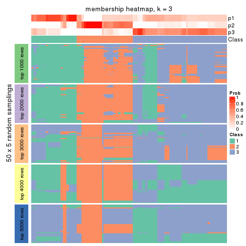
membership_heatmap(res, k = 4)
membership_heatmap(res, k = 5)
membership_heatmap(res, k = 6)
As soon as we have had the classes for columns, we can look for signatures which are significantly different between classes which can be candidate marks for certain classes. Following are the heatmaps for signatures.
Signature heatmaps where rows are scaled:
get_signatures(res, k = 2)
get_signatures(res, k = 3)
get_signatures(res, k = 4)
get_signatures(res, k = 5)
get_signatures(res, k = 6)
Signature heatmaps where rows are not scaled:
get_signatures(res, k = 2, scale_rows = FALSE)
get_signatures(res, k = 3, scale_rows = FALSE)
get_signatures(res, k = 4, scale_rows = FALSE)
get_signatures(res, k = 5, scale_rows = FALSE)
get_signatures(res, k = 6, scale_rows = FALSE)
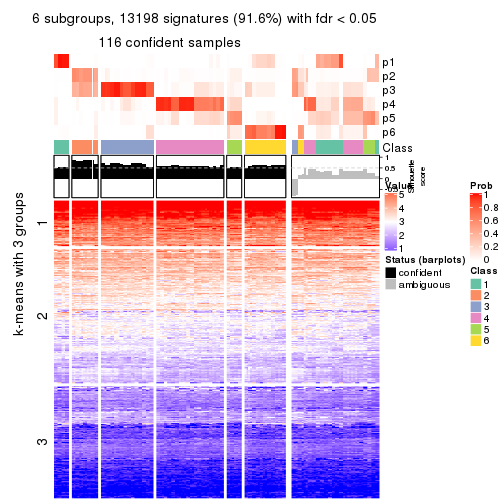
Compare the overlap of signatures from different k:
compare_signatures(res)
get_signature() returns a data frame invisibly. TO get the list of signatures, the function
call should be assigned to a variable explicitly. In following code, if plot argument is set
to FALSE, no heatmap is plotted while only the differential analysis is performed.
# code only for demonstration
tb = get_signature(res, k = ..., plot = FALSE)
An example of the output of tb is:
#> which_row fdr mean_1 mean_2 scaled_mean_1 scaled_mean_2 km
#> 1 38 0.042760348 8.373488 9.131774 -0.5533452 0.5164555 1
#> 2 40 0.018707592 7.106213 8.469186 -0.6173731 0.5762149 1
#> 3 55 0.019134737 10.221463 11.207825 -0.6159697 0.5749050 1
#> 4 59 0.006059896 5.921854 7.869574 -0.6899429 0.6439467 1
#> 5 60 0.018055526 8.928898 10.211722 -0.6204761 0.5791110 1
#> 6 98 0.009384629 15.714769 14.887706 0.6635654 -0.6193277 2
...
The columns in tb are:
which_row: row indices corresponding to the input matrix.fdr: FDR for the differential test. mean_x: The mean value in group x.scaled_mean_x: The mean value in group x after rows are scaled.km: Row groups if k-means clustering is applied to rows.UMAP plot which shows how samples are separated.
dimension_reduction(res, k = 2, method = "UMAP")
dimension_reduction(res, k = 3, method = "UMAP")
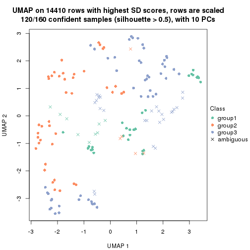
dimension_reduction(res, k = 4, method = "UMAP")
dimension_reduction(res, k = 5, method = "UMAP")
dimension_reduction(res, k = 6, method = "UMAP")
Following heatmap shows how subgroups are split when increasing k:
collect_classes(res)
If matrix rows can be associated to genes, consider to use GO_Enrichment(res,
...) to perform function enrichment for the signature genes.
The object with results only for a single top-value method and a single partition method can be extracted as:
res = res_list["SD", "kmeans"]
# you can also extract it by
# res = res_list["SD:kmeans"]
A summary of res and all the functions that can be applied to it:
res
#> A 'ConsensusPartition' object with k = 2, 3, 4, 5, 6.
#> On a matrix with 14410 rows and 160 columns.
#> Top rows (1000, 2000, 3000, 4000, 5000) are extracted by 'SD' method.
#> Subgroups are detected by 'kmeans' method.
#> Performed in total 1250 partitions by row resampling.
#> Best k for subgroups seems to be 3.
#>
#> Following methods can be applied to this 'ConsensusPartition' object:
#> [1] "cola_report" "collect_classes" "collect_plots"
#> [4] "collect_stats" "colnames" "compare_signatures"
#> [7] "consensus_heatmap" "dimension_reduction" "functional_enrichment"
#> [10] "get_anno_col" "get_anno" "get_classes"
#> [13] "get_consensus" "get_matrix" "get_membership"
#> [16] "get_param" "get_signatures" "get_stats"
#> [19] "is_best_k" "is_stable_k" "membership_heatmap"
#> [22] "ncol" "nrow" "plot_ecdf"
#> [25] "rownames" "select_partition_number" "show"
#> [28] "suggest_best_k" "test_to_known_factors"
collect_plots() function collects all the plots made from res for all k (number of partitions)
into one single page to provide an easy and fast comparison between different k.
collect_plots(res)
The plots are:
k and the heatmap of
predicted classes for each k.k.k.k.All the plots in panels can be made by individual functions and they are plotted later in this section.
select_partition_number() produces several plots showing different
statistics for choosing “optimized” k. There are following statistics:
k;k, the area increased is defined as \(A_k - A_{k-1}\).The detailed explanations of these statistics can be found in the cola vignette.
Generally speaking, lower PAC score, higher mean silhouette score or higher
concordance corresponds to better partition. Rand index and Jaccard index
measure how similar the current partition is compared to partition with k-1.
If they are too similar, we won't accept k is better than k-1.
select_partition_number(res)
The numeric values for all these statistics can be obtained by get_stats().
get_stats(res)
#> k 1-PAC mean_silhouette concordance area_increased Rand Jaccard
#> 2 2 0.463 0.540 0.805 0.4439 0.500 0.500
#> 3 3 0.396 0.619 0.742 0.4659 0.654 0.424
#> 4 4 0.490 0.647 0.719 0.1244 0.874 0.659
#> 5 5 0.576 0.493 0.717 0.0705 0.939 0.786
#> 6 6 0.633 0.463 0.653 0.0422 0.921 0.697
suggest_best_k() suggests the best \(k\) based on these statistics. The rules are as follows:
NA.suggest_best_k(res)
#> [1] 3
Following shows the table of the partitions (You need to click the show/hide
code output link to see it). The membership matrix (columns with name p*)
is inferred by
clue::cl_consensus()
function with the SE method. Basically the value in the membership matrix
represents the probability to belong to a certain group. The finall class
label for an item is determined with the group with highest probability it
belongs to.
In get_classes() function, the entropy is calculated from the membership
matrix and the silhouette score is calculated from the consensus matrix.
cbind(get_classes(res, k = 2), get_membership(res, k = 2))
#> class entropy silhouette p1 p2
#> SRR031811 2 0.9977 0.4415 0.472 0.528
#> SRR031812 1 0.0000 0.7953 1.000 0.000
#> SRR031813 2 0.0938 0.6413 0.012 0.988
#> SRR031814 1 0.0376 0.7959 0.996 0.004
#> SRR031815 1 0.9977 0.1552 0.528 0.472
#> SRR031816 2 0.9661 0.5588 0.392 0.608
#> SRR031817 2 0.9977 0.4589 0.472 0.528
#> SRR031818 2 0.0376 0.6417 0.004 0.996
#> SRR031819 2 0.9909 0.4935 0.444 0.556
#> SRR031820 2 0.0938 0.6413 0.012 0.988
#> SRR031821 2 0.9996 0.4073 0.488 0.512
#> SRR031822 1 0.0376 0.7959 0.996 0.004
#> SRR031823 2 0.9998 0.3973 0.492 0.508
#> SRR031824 2 0.0000 0.6418 0.000 1.000
#> SRR031825 2 0.0000 0.6418 0.000 1.000
#> SRR031826 2 0.0938 0.6413 0.012 0.988
#> SRR031827 2 0.9661 0.5588 0.392 0.608
#> SRR031828 1 0.0376 0.7959 0.996 0.004
#> SRR031829 2 0.9732 0.5488 0.404 0.596
#> SRR031830 1 0.9993 0.1378 0.516 0.484
#> SRR031831 2 0.9977 0.4589 0.472 0.528
#> SRR031832 2 0.9996 0.4274 0.488 0.512
#> SRR031833 2 0.9661 0.5607 0.392 0.608
#> SRR031834 1 0.0376 0.7959 0.996 0.004
#> SRR031835 1 0.0000 0.7953 1.000 0.000
#> SRR031836 2 0.9996 0.4274 0.488 0.512
#> SRR031837 2 0.9686 0.5563 0.396 0.604
#> SRR031838 2 0.0938 0.6413 0.012 0.988
#> SRR031839 2 0.9775 0.5471 0.412 0.588
#> SRR031840 1 0.0672 0.7946 0.992 0.008
#> SRR031841 1 0.9983 0.1496 0.524 0.476
#> SRR031842 2 0.0000 0.6418 0.000 1.000
#> SRR031843 2 0.9815 0.5251 0.420 0.580
#> SRR031844 1 0.9000 0.1917 0.684 0.316
#> SRR031845 1 0.9909 -0.2360 0.556 0.444
#> SRR031846 1 0.0672 0.7911 0.992 0.008
#> SRR031847 2 0.9996 0.4274 0.488 0.512
#> SRR031848 2 0.9996 0.4274 0.488 0.512
#> SRR031849 2 0.9996 0.4274 0.488 0.512
#> SRR031850 2 0.0000 0.6418 0.000 1.000
#> SRR031851 2 0.0000 0.6418 0.000 1.000
#> SRR031852 1 0.0376 0.7959 0.996 0.004
#> SRR031853 1 0.0376 0.7959 0.996 0.004
#> SRR031854 1 0.2603 0.7532 0.956 0.044
#> SRR031855 2 0.0938 0.6413 0.012 0.988
#> SRR031857 2 0.9977 0.4415 0.472 0.528
#> SRR031858 2 0.9710 0.5529 0.400 0.600
#> SRR031859 2 0.0000 0.6418 0.000 1.000
#> SRR031860 2 0.0000 0.6418 0.000 1.000
#> SRR031861 2 0.0000 0.6418 0.000 1.000
#> SRR031862 1 0.0376 0.7959 0.996 0.004
#> SRR031863 2 0.9686 0.5562 0.396 0.604
#> SRR031864 2 0.0000 0.6418 0.000 1.000
#> SRR031865 2 0.0938 0.6413 0.012 0.988
#> SRR031866 1 0.0376 0.7959 0.996 0.004
#> SRR031867 2 0.9710 0.5529 0.400 0.600
#> SRR031868 2 0.0672 0.6417 0.008 0.992
#> SRR031869 1 0.0376 0.7959 0.996 0.004
#> SRR031870 2 0.9710 0.5529 0.400 0.600
#> SRR031871 2 0.0938 0.6413 0.012 0.988
#> SRR031872 1 0.0376 0.7959 0.996 0.004
#> SRR031873 1 0.0376 0.7959 0.996 0.004
#> SRR031874 1 0.0000 0.7953 1.000 0.000
#> SRR031875 2 0.9635 0.5630 0.388 0.612
#> SRR031876 1 0.0000 0.7953 1.000 0.000
#> SRR031877 1 0.1843 0.7765 0.972 0.028
#> SRR031878 2 0.9983 0.4337 0.476 0.524
#> SRR031879 2 0.9909 0.4935 0.444 0.556
#> SRR031880 2 0.9996 0.4073 0.488 0.512
#> SRR031881 2 0.9983 0.4337 0.476 0.524
#> SRR031882 2 0.9983 0.4525 0.476 0.524
#> SRR031883 2 0.0938 0.6413 0.012 0.988
#> SRR031884 2 0.9850 0.5145 0.428 0.572
#> SRR031885 2 0.0938 0.6413 0.012 0.988
#> SRR031886 2 0.9996 0.4274 0.488 0.512
#> SRR031887 1 0.0376 0.7938 0.996 0.004
#> SRR031888 2 0.0376 0.6414 0.004 0.996
#> SRR031889 1 0.0376 0.7959 0.996 0.004
#> SRR031890 1 0.0672 0.7911 0.992 0.008
#> SRR031891 1 0.9909 -0.2360 0.556 0.444
#> SRR031892 1 0.9460 0.0199 0.636 0.364
#> SRR031893 1 0.0376 0.7959 0.996 0.004
#> SRR031894 2 0.0938 0.6413 0.012 0.988
#> SRR031895 1 0.0376 0.7959 0.996 0.004
#> SRR031896 2 0.0938 0.6413 0.012 0.988
#> SRR031897 2 0.0000 0.6418 0.000 1.000
#> SRR031898 2 0.0000 0.6418 0.000 1.000
#> SRR031899 2 0.9970 0.4596 0.468 0.532
#> SRR031900 2 0.9710 0.5529 0.400 0.600
#> SRR031901 2 0.9732 0.5488 0.404 0.596
#> SRR031902 2 0.0938 0.6413 0.012 0.988
#> SRR031903 1 0.0376 0.7959 0.996 0.004
#> SRR031904 2 0.9754 0.5497 0.408 0.592
#> SRR031905 1 0.0376 0.7959 0.996 0.004
#> SRR031906 1 0.0376 0.7959 0.996 0.004
#> SRR031907 2 0.9983 0.4337 0.476 0.524
#> SRR031908 2 0.9996 0.4274 0.488 0.512
#> SRR031909 1 0.0000 0.7953 1.000 0.000
#> SRR031910 1 0.9983 -0.3330 0.524 0.476
#> SRR031911 2 0.9635 0.5630 0.388 0.612
#> SRR031912 1 0.0000 0.7953 1.000 0.000
#> SRR031913 2 0.9686 0.5562 0.396 0.604
#> SRR031914 1 0.0672 0.7946 0.992 0.008
#> SRR031915 1 0.9983 -0.3309 0.524 0.476
#> SRR031916 1 0.9983 -0.3330 0.524 0.476
#> SRR031917 1 0.1184 0.7860 0.984 0.016
#> SRR031918 1 0.9977 -0.3351 0.528 0.472
#> SRR031919 1 0.0000 0.7953 1.000 0.000
#> SRR031920 1 0.9988 -0.3447 0.520 0.480
#> SRR031921 2 0.0938 0.6413 0.012 0.988
#> SRR031922 2 0.9732 0.5488 0.404 0.596
#> SRR031923 2 0.0000 0.6418 0.000 1.000
#> SRR031924 1 0.0000 0.7953 1.000 0.000
#> SRR031925 2 0.9996 0.4073 0.488 0.512
#> SRR031926 2 0.0000 0.6418 0.000 1.000
#> SRR031927 2 0.0938 0.6413 0.012 0.988
#> SRR031928 1 0.0376 0.7959 0.996 0.004
#> SRR031929 2 0.9686 0.5562 0.396 0.604
#> SRR031930 2 0.0000 0.6418 0.000 1.000
#> SRR031931 2 0.0938 0.6413 0.012 0.988
#> SRR031932 1 0.0376 0.7959 0.996 0.004
#> SRR031933 2 0.0000 0.6418 0.000 1.000
#> SRR031934 1 0.0376 0.7959 0.996 0.004
#> SRR031935 1 0.9983 -0.3330 0.524 0.476
#> SRR031936 1 0.0672 0.7946 0.992 0.008
#> SRR031937 1 0.0000 0.7953 1.000 0.000
#> SRR031938 1 0.1184 0.7860 0.984 0.016
#> SRR031939 2 0.0938 0.6413 0.012 0.988
#> SRR031940 1 0.0376 0.7959 0.996 0.004
#> SRR031941 1 0.9988 -0.3362 0.520 0.480
#> SRR031942 1 0.1843 0.7765 0.972 0.028
#> SRR031943 1 0.9983 -0.3330 0.524 0.476
#> SRR031944 1 0.0672 0.7908 0.992 0.008
#> SRR031945 1 0.0376 0.7936 0.996 0.004
#> SRR031946 1 0.9970 -0.3237 0.532 0.468
#> SRR031947 1 0.9977 -0.3203 0.528 0.472
#> SRR031948 1 0.0000 0.7953 1.000 0.000
#> SRR031949 1 0.0000 0.7953 1.000 0.000
#> SRR031950 2 0.9460 0.5704 0.364 0.636
#> SRR031951 2 0.9983 0.4337 0.476 0.524
#> SRR031952 1 0.0672 0.7946 0.992 0.008
#> SRR031953 1 0.0672 0.7946 0.992 0.008
#> SRR031954 1 0.0376 0.7936 0.996 0.004
#> SRR031955 1 0.0672 0.7908 0.992 0.008
#> SRR031956 1 0.9993 -0.3476 0.516 0.484
#> SRR031957 2 0.9323 0.5745 0.348 0.652
#> SRR031958 2 0.9710 0.5529 0.400 0.600
#> SRR031959 1 0.9983 -0.3254 0.524 0.476
#> SRR031960 2 0.9754 0.5443 0.408 0.592
#> SRR031961 1 0.0000 0.7953 1.000 0.000
#> SRR031962 1 0.0672 0.7946 0.992 0.008
#> SRR031963 2 0.9996 0.4073 0.488 0.512
#> SRR031964 1 0.0672 0.7946 0.992 0.008
#> SRR031965 2 0.0000 0.6418 0.000 1.000
#> SRR031966 2 0.0000 0.6418 0.000 1.000
#> SRR031967 1 0.0376 0.7959 0.996 0.004
#> SRR031968 1 0.0376 0.7959 0.996 0.004
#> SRR031969 1 1.0000 0.1194 0.504 0.496
#> SRR031970 2 0.0938 0.6413 0.012 0.988
#> SRR031971 2 1.0000 -0.1352 0.500 0.500
cbind(get_classes(res, k = 3), get_membership(res, k = 3))
#> class entropy silhouette p1 p2 p3
#> SRR031811 3 0.290 0.6228 0.048 0.028 0.924
#> SRR031812 1 0.511 0.7861 0.780 0.008 0.212
#> SRR031813 2 0.116 0.7150 0.000 0.972 0.028
#> SRR031814 1 0.175 0.8000 0.960 0.012 0.028
#> SRR031815 1 0.620 0.2866 0.576 0.424 0.000
#> SRR031816 3 0.313 0.6180 0.052 0.032 0.916
#> SRR031817 3 0.976 0.4817 0.240 0.336 0.424
#> SRR031818 2 0.566 0.5358 0.004 0.712 0.284
#> SRR031819 3 0.980 0.4548 0.240 0.356 0.404
#> SRR031820 2 0.325 0.6616 0.036 0.912 0.052
#> SRR031821 3 0.285 0.6194 0.056 0.020 0.924
#> SRR031822 1 0.153 0.7983 0.964 0.004 0.032
#> SRR031823 3 0.199 0.6308 0.048 0.004 0.948
#> SRR031824 2 0.546 0.7530 0.000 0.712 0.288
#> SRR031825 2 0.553 0.7495 0.000 0.704 0.296
#> SRR031826 2 0.116 0.7150 0.000 0.972 0.028
#> SRR031827 3 0.313 0.6180 0.052 0.032 0.916
#> SRR031828 1 0.175 0.8000 0.960 0.012 0.028
#> SRR031829 3 0.290 0.6228 0.048 0.028 0.924
#> SRR031830 1 0.630 0.1463 0.520 0.480 0.000
#> SRR031831 3 0.976 0.4817 0.240 0.336 0.424
#> SRR031832 3 0.974 0.4948 0.240 0.324 0.436
#> SRR031833 3 0.868 0.5648 0.140 0.288 0.572
#> SRR031834 1 0.153 0.7983 0.964 0.004 0.032
#> SRR031835 1 0.511 0.7861 0.780 0.008 0.212
#> SRR031836 3 0.907 0.5520 0.164 0.308 0.528
#> SRR031837 3 0.974 0.4767 0.232 0.344 0.424
#> SRR031838 2 0.175 0.7232 0.000 0.952 0.048
#> SRR031839 3 0.926 0.5590 0.176 0.324 0.500
#> SRR031840 1 0.552 0.7516 0.728 0.004 0.268
#> SRR031841 1 0.630 0.1561 0.528 0.472 0.000
#> SRR031842 2 0.546 0.7530 0.000 0.712 0.288
#> SRR031843 2 0.981 -0.4297 0.240 0.384 0.376
#> SRR031844 3 0.847 0.5742 0.172 0.212 0.616
#> SRR031845 3 0.407 0.6318 0.120 0.016 0.864
#> SRR031846 3 0.668 0.2272 0.492 0.008 0.500
#> SRR031847 3 0.974 0.4948 0.240 0.324 0.436
#> SRR031848 3 0.907 0.5520 0.164 0.308 0.528
#> SRR031849 3 0.974 0.4948 0.240 0.324 0.436
#> SRR031850 2 0.565 0.7364 0.000 0.688 0.312
#> SRR031851 2 0.556 0.7471 0.000 0.700 0.300
#> SRR031852 1 0.245 0.7579 0.936 0.012 0.052
#> SRR031853 1 0.245 0.7579 0.936 0.012 0.052
#> SRR031854 1 0.313 0.7458 0.916 0.032 0.052
#> SRR031855 2 0.216 0.7278 0.000 0.936 0.064
#> SRR031857 3 0.285 0.6194 0.056 0.020 0.924
#> SRR031858 3 0.595 0.5648 0.180 0.048 0.772
#> SRR031859 2 0.546 0.7530 0.000 0.712 0.288
#> SRR031860 2 0.546 0.7530 0.000 0.712 0.288
#> SRR031861 2 0.546 0.7530 0.000 0.712 0.288
#> SRR031862 1 0.441 0.8016 0.832 0.008 0.160
#> SRR031863 3 0.400 0.6017 0.056 0.060 0.884
#> SRR031864 2 0.556 0.7471 0.000 0.700 0.300
#> SRR031865 2 0.127 0.7107 0.004 0.972 0.024
#> SRR031866 1 0.277 0.8058 0.920 0.008 0.072
#> SRR031867 3 0.563 0.5768 0.164 0.044 0.792
#> SRR031868 2 0.550 0.5682 0.000 0.708 0.292
#> SRR031869 1 0.127 0.7985 0.972 0.004 0.024
#> SRR031870 3 0.590 0.5679 0.184 0.044 0.772
#> SRR031871 2 0.588 0.7501 0.012 0.716 0.272
#> SRR031872 1 0.496 0.7910 0.792 0.008 0.200
#> SRR031873 1 0.158 0.8005 0.964 0.008 0.028
#> SRR031874 1 0.275 0.7614 0.924 0.012 0.064
#> SRR031875 3 0.968 0.4888 0.224 0.340 0.436
#> SRR031876 1 0.520 0.7839 0.772 0.008 0.220
#> SRR031877 3 0.645 0.5188 0.328 0.016 0.656
#> SRR031878 3 0.277 0.6251 0.048 0.024 0.928
#> SRR031879 3 0.980 0.4548 0.240 0.356 0.404
#> SRR031880 3 0.199 0.6308 0.048 0.004 0.948
#> SRR031881 3 0.285 0.6194 0.056 0.020 0.924
#> SRR031882 3 0.925 0.5612 0.176 0.320 0.504
#> SRR031883 2 0.325 0.6616 0.036 0.912 0.052
#> SRR031884 3 0.981 0.4423 0.240 0.364 0.396
#> SRR031885 2 0.127 0.7107 0.004 0.972 0.024
#> SRR031886 3 0.969 0.4987 0.232 0.324 0.444
#> SRR031887 1 0.552 0.7516 0.728 0.004 0.268
#> SRR031888 3 0.629 -0.3441 0.000 0.468 0.532
#> SRR031889 1 0.203 0.7908 0.952 0.016 0.032
#> SRR031890 3 0.668 0.2272 0.492 0.008 0.500
#> SRR031891 3 0.407 0.6318 0.120 0.016 0.864
#> SRR031892 3 0.838 0.5815 0.168 0.208 0.624
#> SRR031893 1 0.295 0.7508 0.920 0.020 0.060
#> SRR031894 2 0.103 0.7127 0.000 0.976 0.024
#> SRR031895 1 0.538 0.7772 0.756 0.008 0.236
#> SRR031896 2 0.127 0.7107 0.004 0.972 0.024
#> SRR031897 2 0.581 0.7091 0.000 0.664 0.336
#> SRR031898 2 0.562 0.7398 0.000 0.692 0.308
#> SRR031899 3 0.870 0.5797 0.148 0.276 0.576
#> SRR031900 3 0.563 0.5768 0.164 0.044 0.792
#> SRR031901 3 0.590 0.5679 0.184 0.044 0.772
#> SRR031902 2 0.588 0.7501 0.012 0.716 0.272
#> SRR031903 1 0.158 0.8005 0.964 0.008 0.028
#> SRR031904 3 0.842 0.5857 0.140 0.252 0.608
#> SRR031905 1 0.496 0.7910 0.792 0.008 0.200
#> SRR031906 1 0.127 0.7985 0.972 0.004 0.024
#> SRR031907 3 0.277 0.6230 0.048 0.024 0.928
#> SRR031908 3 0.974 0.4948 0.240 0.324 0.436
#> SRR031909 1 0.520 0.7839 0.772 0.008 0.220
#> SRR031910 3 0.867 0.5820 0.148 0.272 0.580
#> SRR031911 3 0.968 0.4888 0.224 0.340 0.436
#> SRR031912 1 0.275 0.7614 0.924 0.012 0.064
#> SRR031913 3 0.315 0.6173 0.044 0.040 0.916
#> SRR031914 1 0.529 0.7530 0.732 0.000 0.268
#> SRR031915 3 0.474 0.6453 0.084 0.064 0.852
#> SRR031916 3 0.639 0.6401 0.088 0.148 0.764
#> SRR031917 3 0.632 0.1731 0.356 0.008 0.636
#> SRR031918 3 0.892 0.5602 0.152 0.304 0.544
#> SRR031919 1 0.520 0.7825 0.772 0.008 0.220
#> SRR031920 3 0.867 0.5820 0.148 0.272 0.580
#> SRR031921 2 0.217 0.6894 0.008 0.944 0.048
#> SRR031922 3 0.595 0.5648 0.180 0.048 0.772
#> SRR031923 2 0.556 0.7471 0.000 0.700 0.300
#> SRR031924 1 0.295 0.7508 0.920 0.020 0.060
#> SRR031925 3 0.285 0.6194 0.056 0.020 0.924
#> SRR031926 2 0.615 0.6151 0.000 0.592 0.408
#> SRR031927 2 0.176 0.6982 0.004 0.956 0.040
#> SRR031928 1 0.441 0.8016 0.832 0.008 0.160
#> SRR031929 3 0.400 0.6017 0.056 0.060 0.884
#> SRR031930 2 0.556 0.7471 0.000 0.700 0.300
#> SRR031931 2 0.127 0.7107 0.004 0.972 0.024
#> SRR031932 1 0.277 0.8058 0.920 0.008 0.072
#> SRR031933 2 0.562 0.7398 0.000 0.692 0.308
#> SRR031934 1 0.538 0.7759 0.756 0.008 0.236
#> SRR031935 3 0.639 0.6401 0.088 0.148 0.764
#> SRR031936 1 0.529 0.7530 0.732 0.000 0.268
#> SRR031937 1 0.520 0.7825 0.772 0.008 0.220
#> SRR031938 3 0.632 0.1731 0.356 0.008 0.636
#> SRR031939 2 0.196 0.7255 0.000 0.944 0.056
#> SRR031940 1 0.245 0.7579 0.936 0.012 0.052
#> SRR031941 3 0.210 0.6322 0.052 0.004 0.944
#> SRR031942 3 0.645 0.5188 0.328 0.016 0.656
#> SRR031943 3 0.867 0.5820 0.148 0.272 0.580
#> SRR031944 3 0.701 0.3849 0.308 0.040 0.652
#> SRR031945 3 0.856 0.0903 0.420 0.096 0.484
#> SRR031946 3 0.885 0.5686 0.152 0.292 0.556
#> SRR031947 3 0.523 0.6446 0.104 0.068 0.828
#> SRR031948 1 0.497 0.7932 0.800 0.012 0.188
#> SRR031949 1 0.245 0.7579 0.936 0.012 0.052
#> SRR031950 3 0.436 0.5728 0.052 0.080 0.868
#> SRR031951 3 0.277 0.6251 0.048 0.024 0.928
#> SRR031952 1 0.555 0.7479 0.724 0.004 0.272
#> SRR031953 1 0.552 0.7516 0.728 0.004 0.268
#> SRR031954 3 0.856 0.0903 0.420 0.096 0.484
#> SRR031955 3 0.701 0.3849 0.308 0.040 0.652
#> SRR031956 3 0.234 0.6283 0.048 0.012 0.940
#> SRR031957 3 0.807 0.4300 0.064 0.452 0.484
#> SRR031958 3 0.279 0.6232 0.044 0.028 0.928
#> SRR031959 3 0.268 0.6331 0.076 0.004 0.920
#> SRR031960 3 0.279 0.6232 0.044 0.028 0.928
#> SRR031961 1 0.502 0.7919 0.796 0.012 0.192
#> SRR031962 1 0.552 0.7516 0.728 0.004 0.268
#> SRR031963 3 0.264 0.6250 0.048 0.020 0.932
#> SRR031964 1 0.555 0.7479 0.724 0.004 0.272
#> SRR031965 2 0.556 0.7471 0.000 0.700 0.300
#> SRR031966 2 0.546 0.7530 0.000 0.712 0.288
#> SRR031967 1 0.245 0.7579 0.936 0.012 0.052
#> SRR031968 1 0.245 0.7579 0.936 0.012 0.052
#> SRR031969 2 0.620 0.1457 0.424 0.576 0.000
#> SRR031970 2 0.312 0.7355 0.000 0.892 0.108
#> SRR031971 2 0.613 0.1987 0.400 0.600 0.000
cbind(get_classes(res, k = 4), get_membership(res, k = 4))
#> class entropy silhouette p1 p2 p3 p4
#> SRR031811 4 0.638 0.7259 0.004 0.136 0.196 0.664
#> SRR031812 1 0.449 0.7473 0.772 0.000 0.028 0.200
#> SRR031813 2 0.402 0.7139 0.004 0.772 0.224 0.000
#> SRR031814 1 0.298 0.7683 0.892 0.000 0.068 0.040
#> SRR031815 1 0.584 0.4164 0.616 0.348 0.020 0.016
#> SRR031816 4 0.705 0.7179 0.012 0.180 0.192 0.616
#> SRR031817 3 0.136 0.8225 0.032 0.008 0.960 0.000
#> SRR031818 2 0.687 0.2823 0.004 0.540 0.356 0.100
#> SRR031819 3 0.225 0.8013 0.052 0.016 0.928 0.004
#> SRR031820 3 0.487 0.1749 0.004 0.356 0.640 0.000
#> SRR031821 4 0.670 0.7092 0.040 0.140 0.132 0.688
#> SRR031822 1 0.307 0.7737 0.888 0.000 0.068 0.044
#> SRR031823 4 0.636 0.7219 0.008 0.112 0.212 0.668
#> SRR031824 2 0.106 0.8017 0.000 0.972 0.016 0.012
#> SRR031825 2 0.106 0.8017 0.000 0.972 0.016 0.012
#> SRR031826 2 0.402 0.7139 0.004 0.772 0.224 0.000
#> SRR031827 4 0.705 0.7179 0.012 0.180 0.192 0.616
#> SRR031828 1 0.298 0.7683 0.892 0.000 0.068 0.040
#> SRR031829 4 0.638 0.7259 0.004 0.136 0.196 0.664
#> SRR031830 1 0.601 0.3084 0.568 0.396 0.020 0.016
#> SRR031831 3 0.136 0.8225 0.032 0.008 0.960 0.000
#> SRR031832 3 0.136 0.8225 0.032 0.008 0.960 0.000
#> SRR031833 3 0.783 0.0130 0.016 0.200 0.512 0.272
#> SRR031834 1 0.314 0.7735 0.884 0.000 0.072 0.044
#> SRR031835 1 0.449 0.7473 0.772 0.000 0.028 0.200
#> SRR031836 3 0.219 0.8152 0.012 0.008 0.932 0.048
#> SRR031837 3 0.147 0.8235 0.024 0.012 0.960 0.004
#> SRR031838 2 0.336 0.7452 0.000 0.824 0.176 0.000
#> SRR031839 3 0.319 0.7598 0.008 0.008 0.872 0.112
#> SRR031840 1 0.465 0.6972 0.684 0.000 0.004 0.312
#> SRR031841 1 0.636 0.3436 0.572 0.372 0.040 0.016
#> SRR031842 2 0.118 0.8013 0.000 0.968 0.016 0.016
#> SRR031843 3 0.202 0.8010 0.056 0.012 0.932 0.000
#> SRR031844 4 0.687 0.3260 0.056 0.020 0.444 0.480
#> SRR031845 4 0.794 0.6349 0.064 0.120 0.252 0.564
#> SRR031846 4 0.757 0.4205 0.292 0.036 0.112 0.560
#> SRR031847 3 0.136 0.8225 0.032 0.008 0.960 0.000
#> SRR031848 3 0.219 0.8152 0.012 0.008 0.932 0.048
#> SRR031849 3 0.136 0.8225 0.032 0.008 0.960 0.000
#> SRR031850 2 0.180 0.7925 0.000 0.944 0.016 0.040
#> SRR031851 2 0.161 0.7965 0.000 0.952 0.016 0.032
#> SRR031852 1 0.557 0.6760 0.728 0.000 0.148 0.124
#> SRR031853 1 0.584 0.6739 0.724 0.008 0.148 0.120
#> SRR031854 1 0.573 0.6736 0.732 0.008 0.148 0.112
#> SRR031855 2 0.339 0.7559 0.004 0.844 0.148 0.004
#> SRR031857 4 0.666 0.7124 0.036 0.136 0.140 0.688
#> SRR031858 4 0.879 0.5176 0.072 0.200 0.264 0.464
#> SRR031859 2 0.106 0.8017 0.000 0.972 0.016 0.012
#> SRR031860 2 0.106 0.8017 0.000 0.972 0.016 0.012
#> SRR031861 2 0.106 0.8017 0.000 0.972 0.016 0.012
#> SRR031862 1 0.372 0.7706 0.844 0.008 0.016 0.132
#> SRR031863 4 0.746 0.6717 0.008 0.200 0.244 0.548
#> SRR031864 2 0.182 0.7953 0.000 0.944 0.020 0.036
#> SRR031865 2 0.442 0.6854 0.012 0.748 0.240 0.000
#> SRR031866 1 0.300 0.7739 0.892 0.000 0.048 0.060
#> SRR031867 4 0.855 0.5906 0.056 0.192 0.272 0.480
#> SRR031868 2 0.666 0.5032 0.008 0.624 0.260 0.108
#> SRR031869 1 0.298 0.7733 0.892 0.000 0.068 0.040
#> SRR031870 4 0.861 0.5195 0.072 0.168 0.272 0.488
#> SRR031871 2 0.237 0.7838 0.032 0.928 0.008 0.032
#> SRR031872 1 0.445 0.7641 0.812 0.012 0.036 0.140
#> SRR031873 1 0.317 0.7734 0.884 0.000 0.060 0.056
#> SRR031874 1 0.682 0.6738 0.624 0.008 0.140 0.228
#> SRR031875 3 0.207 0.8220 0.016 0.012 0.940 0.032
#> SRR031876 1 0.533 0.7102 0.680 0.008 0.020 0.292
#> SRR031877 4 0.714 0.5088 0.108 0.044 0.208 0.640
#> SRR031878 4 0.664 0.7150 0.000 0.168 0.208 0.624
#> SRR031879 3 0.225 0.8013 0.052 0.016 0.928 0.004
#> SRR031880 4 0.636 0.7219 0.008 0.112 0.212 0.668
#> SRR031881 4 0.670 0.7092 0.040 0.140 0.132 0.688
#> SRR031882 3 0.325 0.7568 0.008 0.008 0.868 0.116
#> SRR031883 3 0.487 0.1749 0.004 0.356 0.640 0.000
#> SRR031884 3 0.185 0.8088 0.048 0.012 0.940 0.000
#> SRR031885 2 0.461 0.6308 0.004 0.692 0.304 0.000
#> SRR031886 3 0.185 0.8231 0.024 0.008 0.948 0.020
#> SRR031887 1 0.470 0.6940 0.676 0.000 0.004 0.320
#> SRR031888 2 0.712 0.0427 0.004 0.568 0.156 0.272
#> SRR031889 1 0.322 0.7544 0.864 0.004 0.124 0.008
#> SRR031890 4 0.757 0.4205 0.292 0.036 0.112 0.560
#> SRR031891 4 0.794 0.6349 0.064 0.120 0.252 0.564
#> SRR031892 4 0.675 0.3228 0.048 0.020 0.464 0.468
#> SRR031893 1 0.599 0.6492 0.692 0.000 0.168 0.140
#> SRR031894 2 0.409 0.7010 0.004 0.764 0.232 0.000
#> SRR031895 1 0.467 0.7500 0.796 0.016 0.032 0.156
#> SRR031896 2 0.484 0.5684 0.004 0.648 0.348 0.000
#> SRR031897 2 0.395 0.6697 0.000 0.812 0.020 0.168
#> SRR031898 2 0.202 0.7846 0.000 0.932 0.012 0.056
#> SRR031899 3 0.280 0.7825 0.008 0.004 0.892 0.096
#> SRR031900 4 0.855 0.5906 0.056 0.192 0.272 0.480
#> SRR031901 4 0.861 0.5195 0.072 0.168 0.272 0.488
#> SRR031902 2 0.237 0.7838 0.032 0.928 0.008 0.032
#> SRR031903 1 0.317 0.7734 0.884 0.000 0.060 0.056
#> SRR031904 3 0.781 -0.2358 0.016 0.160 0.468 0.356
#> SRR031905 1 0.445 0.7641 0.812 0.012 0.036 0.140
#> SRR031906 1 0.298 0.7733 0.892 0.000 0.068 0.040
#> SRR031907 4 0.648 0.7218 0.008 0.124 0.208 0.660
#> SRR031908 3 0.136 0.8225 0.032 0.008 0.960 0.000
#> SRR031909 1 0.533 0.7102 0.680 0.008 0.020 0.292
#> SRR031910 3 0.286 0.7784 0.008 0.004 0.888 0.100
#> SRR031911 3 0.207 0.8220 0.016 0.012 0.940 0.032
#> SRR031912 1 0.682 0.6738 0.624 0.008 0.140 0.228
#> SRR031913 4 0.687 0.7008 0.000 0.184 0.220 0.596
#> SRR031914 1 0.472 0.6917 0.672 0.000 0.004 0.324
#> SRR031915 4 0.701 0.6244 0.020 0.088 0.312 0.580
#> SRR031916 4 0.685 0.4452 0.012 0.068 0.436 0.484
#> SRR031917 4 0.512 0.3224 0.244 0.012 0.020 0.724
#> SRR031918 3 0.267 0.7963 0.008 0.008 0.904 0.080
#> SRR031919 1 0.528 0.7115 0.688 0.008 0.020 0.284
#> SRR031920 3 0.286 0.7784 0.008 0.004 0.888 0.100
#> SRR031921 2 0.515 0.3183 0.004 0.532 0.464 0.000
#> SRR031922 4 0.872 0.5256 0.072 0.188 0.264 0.476
#> SRR031923 2 0.106 0.8017 0.000 0.972 0.016 0.012
#> SRR031924 1 0.599 0.6492 0.692 0.000 0.168 0.140
#> SRR031925 4 0.666 0.7124 0.036 0.136 0.140 0.688
#> SRR031926 2 0.549 0.3799 0.000 0.664 0.040 0.296
#> SRR031927 2 0.516 0.3224 0.004 0.528 0.468 0.000
#> SRR031928 1 0.372 0.7706 0.844 0.008 0.016 0.132
#> SRR031929 4 0.746 0.6717 0.008 0.200 0.244 0.548
#> SRR031930 2 0.182 0.7953 0.000 0.944 0.020 0.036
#> SRR031931 2 0.442 0.6854 0.012 0.748 0.240 0.000
#> SRR031932 1 0.300 0.7739 0.892 0.000 0.048 0.060
#> SRR031933 2 0.202 0.7846 0.000 0.932 0.012 0.056
#> SRR031934 1 0.472 0.7484 0.792 0.016 0.032 0.160
#> SRR031935 4 0.685 0.4452 0.012 0.068 0.436 0.484
#> SRR031936 1 0.472 0.6917 0.672 0.000 0.004 0.324
#> SRR031937 1 0.528 0.7115 0.688 0.008 0.020 0.284
#> SRR031938 4 0.512 0.3224 0.244 0.012 0.020 0.724
#> SRR031939 2 0.368 0.7441 0.004 0.820 0.172 0.004
#> SRR031940 1 0.557 0.6760 0.728 0.000 0.148 0.124
#> SRR031941 4 0.628 0.7226 0.008 0.108 0.208 0.676
#> SRR031942 4 0.714 0.5088 0.108 0.044 0.208 0.640
#> SRR031943 3 0.286 0.7784 0.008 0.004 0.888 0.100
#> SRR031944 4 0.739 0.5082 0.148 0.012 0.292 0.548
#> SRR031945 4 0.770 -0.0304 0.368 0.012 0.156 0.464
#> SRR031946 3 0.267 0.7963 0.008 0.008 0.904 0.080
#> SRR031947 4 0.694 0.6081 0.032 0.064 0.316 0.588
#> SRR031948 1 0.485 0.7409 0.748 0.004 0.028 0.220
#> SRR031949 1 0.557 0.6760 0.728 0.000 0.148 0.124
#> SRR031950 4 0.702 0.7003 0.008 0.208 0.176 0.608
#> SRR031951 4 0.688 0.7176 0.008 0.164 0.204 0.624
#> SRR031952 1 0.479 0.6296 0.620 0.000 0.000 0.380
#> SRR031953 1 0.472 0.6946 0.672 0.000 0.004 0.324
#> SRR031954 4 0.770 -0.0304 0.368 0.012 0.156 0.464
#> SRR031955 4 0.739 0.5082 0.148 0.012 0.292 0.548
#> SRR031956 4 0.660 0.7219 0.012 0.124 0.208 0.656
#> SRR031957 3 0.776 0.2748 0.016 0.244 0.528 0.212
#> SRR031958 4 0.683 0.7175 0.004 0.160 0.220 0.616
#> SRR031959 4 0.635 0.7225 0.012 0.104 0.208 0.676
#> SRR031960 4 0.683 0.7175 0.004 0.160 0.220 0.616
#> SRR031961 1 0.492 0.7364 0.740 0.004 0.028 0.228
#> SRR031962 1 0.472 0.6946 0.672 0.000 0.004 0.324
#> SRR031963 4 0.684 0.7189 0.008 0.160 0.204 0.628
#> SRR031964 1 0.479 0.6296 0.620 0.000 0.000 0.380
#> SRR031965 2 0.161 0.7965 0.000 0.952 0.016 0.032
#> SRR031966 2 0.141 0.7988 0.000 0.960 0.016 0.024
#> SRR031967 1 0.557 0.6760 0.728 0.000 0.148 0.124
#> SRR031968 1 0.584 0.6739 0.724 0.008 0.148 0.120
#> SRR031969 1 0.727 0.0926 0.460 0.444 0.040 0.056
#> SRR031970 2 0.233 0.7802 0.000 0.908 0.088 0.004
#> SRR031971 2 0.616 0.0898 0.424 0.536 0.020 0.020
cbind(get_classes(res, k = 5), get_membership(res, k = 5))
#> class entropy silhouette p1 p2 p3 p4 p5
#> SRR031811 4 0.2792 0.7294 0.004 0.040 0.000 0.884 0.072
#> SRR031812 1 0.3446 0.4398 0.860 0.004 0.020 0.040 0.076
#> SRR031813 2 0.4515 0.6924 0.000 0.748 0.184 0.004 0.064
#> SRR031814 1 0.4739 0.1398 0.724 0.004 0.052 0.004 0.216
#> SRR031815 1 0.6734 -0.1333 0.504 0.260 0.012 0.000 0.224
#> SRR031816 4 0.4082 0.7011 0.020 0.120 0.008 0.816 0.036
#> SRR031817 3 0.0798 0.8547 0.000 0.008 0.976 0.016 0.000
#> SRR031818 2 0.8000 0.2534 0.004 0.444 0.212 0.236 0.104
#> SRR031819 3 0.1269 0.8508 0.008 0.008 0.964 0.012 0.008
#> SRR031820 3 0.3380 0.7508 0.004 0.108 0.848 0.004 0.036
#> SRR031821 4 0.3391 0.7180 0.036 0.036 0.004 0.868 0.056
#> SRR031822 1 0.4139 0.2766 0.780 0.000 0.052 0.004 0.164
#> SRR031823 4 0.2700 0.7310 0.008 0.016 0.016 0.900 0.060
#> SRR031824 2 0.1571 0.7843 0.000 0.936 0.004 0.060 0.000
#> SRR031825 2 0.1731 0.7837 0.000 0.932 0.004 0.060 0.004
#> SRR031826 2 0.4515 0.6924 0.000 0.748 0.184 0.004 0.064
#> SRR031827 4 0.4082 0.7011 0.020 0.120 0.008 0.816 0.036
#> SRR031828 1 0.4739 0.1398 0.724 0.004 0.052 0.004 0.216
#> SRR031829 4 0.2853 0.7292 0.004 0.040 0.000 0.880 0.076
#> SRR031830 1 0.6870 -0.1415 0.464 0.300 0.012 0.000 0.224
#> SRR031831 3 0.0798 0.8547 0.000 0.008 0.976 0.016 0.000
#> SRR031832 3 0.0798 0.8547 0.000 0.008 0.976 0.016 0.000
#> SRR031833 4 0.8010 0.3109 0.008 0.192 0.268 0.440 0.092
#> SRR031834 1 0.3936 0.3016 0.800 0.000 0.052 0.004 0.144
#> SRR031835 1 0.3446 0.4398 0.860 0.004 0.020 0.040 0.076
#> SRR031836 3 0.2278 0.8432 0.000 0.000 0.908 0.060 0.032
#> SRR031837 3 0.0798 0.8547 0.000 0.008 0.976 0.016 0.000
#> SRR031838 2 0.3489 0.7325 0.000 0.820 0.144 0.000 0.036
#> SRR031839 3 0.3127 0.8253 0.004 0.008 0.868 0.092 0.028
#> SRR031840 1 0.3887 0.4464 0.824 0.012 0.004 0.112 0.048
#> SRR031841 1 0.7145 -0.1607 0.464 0.280 0.028 0.000 0.228
#> SRR031842 2 0.1502 0.7851 0.000 0.940 0.004 0.056 0.000
#> SRR031843 3 0.0693 0.8518 0.000 0.008 0.980 0.012 0.000
#> SRR031844 4 0.8139 0.4907 0.140 0.020 0.160 0.492 0.188
#> SRR031845 4 0.5611 0.6345 0.008 0.032 0.028 0.628 0.304
#> SRR031846 4 0.7514 0.3556 0.136 0.020 0.040 0.428 0.376
#> SRR031847 3 0.0798 0.8547 0.000 0.008 0.976 0.016 0.000
#> SRR031848 3 0.2278 0.8432 0.000 0.000 0.908 0.060 0.032
#> SRR031849 3 0.0798 0.8547 0.000 0.008 0.976 0.016 0.000
#> SRR031850 2 0.3454 0.7565 0.000 0.836 0.000 0.100 0.064
#> SRR031851 2 0.3146 0.7602 0.000 0.856 0.000 0.092 0.052
#> SRR031852 1 0.6439 -0.7766 0.432 0.008 0.136 0.000 0.424
#> SRR031853 1 0.6528 -0.7744 0.444 0.012 0.136 0.000 0.408
#> SRR031854 1 0.6526 -0.7819 0.448 0.012 0.136 0.000 0.404
#> SRR031855 2 0.3550 0.7636 0.000 0.848 0.072 0.016 0.064
#> SRR031857 4 0.2895 0.7218 0.028 0.028 0.008 0.896 0.040
#> SRR031858 4 0.7418 0.5375 0.008 0.112 0.076 0.488 0.316
#> SRR031859 2 0.1571 0.7843 0.000 0.936 0.004 0.060 0.000
#> SRR031860 2 0.1571 0.7843 0.000 0.936 0.004 0.060 0.000
#> SRR031861 2 0.1571 0.7843 0.000 0.936 0.004 0.060 0.000
#> SRR031862 1 0.3484 0.3697 0.820 0.024 0.000 0.004 0.152
#> SRR031863 4 0.4775 0.6892 0.000 0.100 0.028 0.768 0.104
#> SRR031864 2 0.3622 0.7598 0.000 0.832 0.004 0.096 0.068
#> SRR031865 2 0.5220 0.6370 0.008 0.692 0.224 0.004 0.072
#> SRR031866 1 0.4888 0.1492 0.716 0.020 0.032 0.004 0.228
#> SRR031867 4 0.6800 0.6419 0.004 0.104 0.072 0.592 0.228
#> SRR031868 2 0.7575 0.4332 0.004 0.524 0.184 0.184 0.104
#> SRR031869 1 0.4031 0.2798 0.788 0.000 0.048 0.004 0.160
#> SRR031870 4 0.7264 0.5335 0.008 0.092 0.076 0.492 0.332
#> SRR031871 2 0.2751 0.7776 0.020 0.900 0.004 0.044 0.032
#> SRR031872 1 0.3741 0.4199 0.832 0.004 0.012 0.040 0.112
#> SRR031873 1 0.4407 0.2238 0.764 0.004 0.052 0.004 0.176
#> SRR031874 1 0.5821 -0.0627 0.540 0.004 0.064 0.008 0.384
#> SRR031875 3 0.1618 0.8557 0.000 0.008 0.944 0.040 0.008
#> SRR031876 1 0.4702 0.4105 0.752 0.020 0.000 0.056 0.172
#> SRR031877 4 0.6641 0.4482 0.052 0.016 0.040 0.452 0.440
#> SRR031878 4 0.3970 0.7039 0.000 0.080 0.016 0.820 0.084
#> SRR031879 3 0.1269 0.8508 0.008 0.008 0.964 0.012 0.008
#> SRR031880 4 0.2700 0.7310 0.008 0.016 0.016 0.900 0.060
#> SRR031881 4 0.3391 0.7180 0.036 0.036 0.004 0.868 0.056
#> SRR031882 3 0.3039 0.8264 0.004 0.008 0.872 0.092 0.024
#> SRR031883 3 0.3529 0.7351 0.004 0.120 0.836 0.004 0.036
#> SRR031884 3 0.0693 0.8518 0.000 0.008 0.980 0.012 0.000
#> SRR031885 2 0.5487 0.4965 0.000 0.600 0.324 0.004 0.072
#> SRR031886 3 0.0992 0.8554 0.000 0.008 0.968 0.024 0.000
#> SRR031887 1 0.4154 0.4456 0.808 0.012 0.004 0.112 0.064
#> SRR031888 4 0.5641 0.1377 0.000 0.452 0.012 0.488 0.048
#> SRR031889 1 0.5438 0.0515 0.688 0.008 0.108 0.004 0.192
#> SRR031890 4 0.7514 0.3556 0.136 0.020 0.040 0.428 0.376
#> SRR031891 4 0.5611 0.6345 0.008 0.032 0.028 0.628 0.304
#> SRR031892 4 0.8010 0.5051 0.140 0.020 0.160 0.512 0.168
#> SRR031893 5 0.6489 1.0000 0.420 0.004 0.124 0.008 0.444
#> SRR031894 2 0.4434 0.6709 0.000 0.736 0.208 0.000 0.056
#> SRR031895 1 0.5639 0.3125 0.700 0.016 0.020 0.080 0.184
#> SRR031896 2 0.5628 0.3982 0.000 0.556 0.368 0.004 0.072
#> SRR031897 2 0.5260 0.4296 0.000 0.604 0.000 0.332 0.064
#> SRR031898 2 0.3389 0.7547 0.000 0.836 0.000 0.116 0.048
#> SRR031899 3 0.5240 0.6206 0.000 0.000 0.672 0.216 0.112
#> SRR031900 4 0.6800 0.6419 0.004 0.104 0.072 0.592 0.228
#> SRR031901 4 0.7264 0.5335 0.008 0.092 0.076 0.492 0.332
#> SRR031902 2 0.2751 0.7776 0.020 0.900 0.004 0.044 0.032
#> SRR031903 1 0.4407 0.2238 0.764 0.004 0.052 0.004 0.176
#> SRR031904 4 0.7988 0.3987 0.016 0.184 0.236 0.476 0.088
#> SRR031905 1 0.3741 0.4199 0.832 0.004 0.012 0.040 0.112
#> SRR031906 1 0.4031 0.2798 0.788 0.000 0.048 0.004 0.160
#> SRR031907 4 0.3035 0.7285 0.008 0.040 0.020 0.888 0.044
#> SRR031908 3 0.0798 0.8547 0.000 0.008 0.976 0.016 0.000
#> SRR031909 1 0.4702 0.4105 0.752 0.020 0.000 0.056 0.172
#> SRR031910 3 0.5268 0.6134 0.000 0.000 0.668 0.220 0.112
#> SRR031911 3 0.1618 0.8557 0.000 0.008 0.944 0.040 0.008
#> SRR031912 1 0.5821 -0.0627 0.540 0.004 0.064 0.008 0.384
#> SRR031913 4 0.4395 0.6940 0.000 0.096 0.020 0.792 0.092
#> SRR031914 1 0.4334 0.4392 0.796 0.016 0.004 0.124 0.060
#> SRR031915 4 0.5828 0.6718 0.044 0.036 0.092 0.728 0.100
#> SRR031916 4 0.6361 0.6024 0.024 0.024 0.172 0.652 0.128
#> SRR031917 4 0.6989 0.1929 0.336 0.020 0.004 0.468 0.172
#> SRR031918 3 0.3033 0.8202 0.000 0.000 0.864 0.084 0.052
#> SRR031919 1 0.4525 0.4084 0.760 0.004 0.004 0.064 0.168
#> SRR031920 3 0.5268 0.6134 0.000 0.000 0.668 0.220 0.112
#> SRR031921 3 0.5734 0.1915 0.004 0.372 0.552 0.004 0.068
#> SRR031922 4 0.7303 0.5426 0.008 0.100 0.076 0.500 0.316
#> SRR031923 2 0.1970 0.7818 0.000 0.924 0.004 0.060 0.012
#> SRR031924 5 0.6489 1.0000 0.420 0.004 0.124 0.008 0.444
#> SRR031925 4 0.2895 0.7218 0.028 0.028 0.008 0.896 0.040
#> SRR031926 4 0.5492 0.0858 0.000 0.432 0.000 0.504 0.064
#> SRR031927 3 0.5503 0.3026 0.000 0.328 0.596 0.004 0.072
#> SRR031928 1 0.3484 0.3697 0.820 0.024 0.000 0.004 0.152
#> SRR031929 4 0.4775 0.6892 0.000 0.100 0.028 0.768 0.104
#> SRR031930 2 0.3622 0.7598 0.000 0.832 0.004 0.096 0.068
#> SRR031931 2 0.5162 0.6463 0.008 0.700 0.216 0.004 0.072
#> SRR031932 1 0.4888 0.1492 0.716 0.020 0.032 0.004 0.228
#> SRR031933 2 0.3389 0.7547 0.000 0.836 0.000 0.116 0.048
#> SRR031934 1 0.5595 0.3141 0.700 0.012 0.020 0.084 0.184
#> SRR031935 4 0.6361 0.6024 0.024 0.024 0.172 0.652 0.128
#> SRR031936 1 0.4334 0.4392 0.796 0.016 0.004 0.124 0.060
#> SRR031937 1 0.4525 0.4084 0.760 0.004 0.004 0.064 0.168
#> SRR031938 4 0.6989 0.1929 0.336 0.020 0.004 0.468 0.172
#> SRR031939 2 0.4037 0.7529 0.000 0.820 0.084 0.024 0.072
#> SRR031940 1 0.6439 -0.7766 0.432 0.008 0.136 0.000 0.424
#> SRR031941 4 0.2797 0.7305 0.008 0.020 0.016 0.896 0.060
#> SRR031942 4 0.6641 0.4482 0.052 0.016 0.040 0.452 0.440
#> SRR031943 3 0.5268 0.6134 0.000 0.000 0.668 0.220 0.112
#> SRR031944 4 0.7206 0.5702 0.184 0.012 0.088 0.584 0.132
#> SRR031945 1 0.7481 0.1828 0.484 0.008 0.044 0.248 0.216
#> SRR031946 3 0.3033 0.8202 0.000 0.000 0.864 0.084 0.052
#> SRR031947 4 0.5897 0.6701 0.048 0.036 0.092 0.724 0.100
#> SRR031948 1 0.3684 0.4216 0.816 0.004 0.004 0.028 0.148
#> SRR031949 1 0.6439 -0.7766 0.432 0.008 0.136 0.000 0.424
#> SRR031950 4 0.4469 0.6810 0.008 0.108 0.008 0.788 0.088
#> SRR031951 4 0.3831 0.7079 0.004 0.068 0.016 0.836 0.076
#> SRR031952 1 0.4851 0.4033 0.744 0.012 0.004 0.172 0.068
#> SRR031953 1 0.4255 0.4450 0.804 0.016 0.004 0.112 0.064
#> SRR031954 1 0.7481 0.1828 0.484 0.008 0.044 0.248 0.216
#> SRR031955 4 0.7206 0.5702 0.184 0.012 0.088 0.584 0.132
#> SRR031956 4 0.2960 0.7288 0.008 0.040 0.020 0.892 0.040
#> SRR031957 3 0.8423 0.0551 0.016 0.256 0.348 0.292 0.088
#> SRR031958 4 0.3614 0.7182 0.004 0.108 0.012 0.840 0.036
#> SRR031959 4 0.2812 0.7303 0.012 0.016 0.016 0.896 0.060
#> SRR031960 4 0.3563 0.7196 0.004 0.104 0.012 0.844 0.036
#> SRR031961 1 0.3768 0.4196 0.808 0.004 0.004 0.028 0.156
#> SRR031962 1 0.4255 0.4450 0.804 0.016 0.004 0.112 0.064
#> SRR031963 4 0.3768 0.7094 0.004 0.064 0.016 0.840 0.076
#> SRR031964 1 0.4851 0.4033 0.744 0.012 0.004 0.172 0.068
#> SRR031965 2 0.3105 0.7661 0.000 0.864 0.004 0.088 0.044
#> SRR031966 2 0.2775 0.7740 0.000 0.884 0.004 0.076 0.036
#> SRR031967 1 0.6439 -0.7766 0.432 0.008 0.136 0.000 0.424
#> SRR031968 1 0.6528 -0.7744 0.444 0.012 0.136 0.000 0.408
#> SRR031969 2 0.7537 -0.4079 0.320 0.340 0.036 0.000 0.304
#> SRR031970 2 0.2591 0.7837 0.000 0.904 0.044 0.020 0.032
#> SRR031971 2 0.6707 -0.0666 0.320 0.472 0.008 0.000 0.200
cbind(get_classes(res, k = 6), get_membership(res, k = 6))
#> class entropy silhouette p1 p2 p3 p4 p5 p6
#> SRR031811 4 0.3636 0.429401 0.008 0.016 0.008 0.808 0.148 0.012
#> SRR031812 1 0.4671 0.467063 0.704 0.000 0.024 0.012 0.032 0.228
#> SRR031813 2 0.5030 0.688260 0.004 0.712 0.168 0.004 0.076 0.036
#> SRR031814 1 0.4956 0.234194 0.536 0.000 0.032 0.000 0.020 0.412
#> SRR031815 6 0.6922 0.146917 0.376 0.188 0.012 0.000 0.044 0.380
#> SRR031816 4 0.4287 0.482844 0.020 0.096 0.012 0.788 0.080 0.004
#> SRR031817 3 0.0508 0.857235 0.000 0.000 0.984 0.004 0.000 0.012
#> SRR031818 2 0.7856 0.033216 0.000 0.368 0.188 0.224 0.204 0.016
#> SRR031819 3 0.1096 0.853257 0.000 0.004 0.964 0.004 0.008 0.020
#> SRR031820 3 0.2644 0.800653 0.004 0.048 0.892 0.004 0.040 0.012
#> SRR031821 4 0.3484 0.456297 0.072 0.028 0.004 0.848 0.036 0.012
#> SRR031822 1 0.5008 0.337874 0.592 0.000 0.036 0.000 0.028 0.344
#> SRR031823 4 0.2623 0.456101 0.000 0.000 0.016 0.852 0.132 0.000
#> SRR031824 2 0.1059 0.762463 0.000 0.964 0.004 0.016 0.016 0.000
#> SRR031825 2 0.1053 0.761912 0.000 0.964 0.004 0.020 0.012 0.000
#> SRR031826 2 0.5030 0.688260 0.004 0.712 0.168 0.004 0.076 0.036
#> SRR031827 4 0.4287 0.482844 0.020 0.096 0.012 0.788 0.080 0.004
#> SRR031828 1 0.4956 0.234194 0.536 0.000 0.032 0.000 0.020 0.412
#> SRR031829 4 0.3636 0.429401 0.008 0.016 0.008 0.808 0.148 0.012
#> SRR031830 6 0.7023 0.242468 0.312 0.296 0.004 0.000 0.048 0.340
#> SRR031831 3 0.0508 0.857235 0.000 0.000 0.984 0.004 0.000 0.012
#> SRR031832 3 0.0767 0.856810 0.000 0.000 0.976 0.004 0.008 0.012
#> SRR031833 4 0.7913 0.045816 0.000 0.184 0.244 0.344 0.212 0.016
#> SRR031834 1 0.4811 0.364889 0.616 0.000 0.036 0.000 0.020 0.328
#> SRR031835 1 0.4671 0.467063 0.704 0.000 0.024 0.012 0.032 0.228
#> SRR031836 3 0.2833 0.808098 0.000 0.004 0.868 0.032 0.088 0.008
#> SRR031837 3 0.0508 0.857235 0.000 0.000 0.984 0.004 0.000 0.012
#> SRR031838 2 0.3650 0.736514 0.004 0.820 0.108 0.000 0.040 0.028
#> SRR031839 3 0.1899 0.841513 0.000 0.004 0.928 0.032 0.028 0.008
#> SRR031840 1 0.4968 0.491268 0.724 0.000 0.000 0.100 0.076 0.100
#> SRR031841 6 0.7661 0.296159 0.276 0.240 0.048 0.000 0.056 0.380
#> SRR031842 2 0.1223 0.763872 0.000 0.960 0.004 0.016 0.012 0.008
#> SRR031843 3 0.0508 0.857235 0.000 0.000 0.984 0.004 0.000 0.012
#> SRR031844 5 0.7772 0.194915 0.172 0.008 0.120 0.308 0.376 0.016
#> SRR031845 4 0.6619 -0.149780 0.024 0.008 0.012 0.456 0.356 0.144
#> SRR031846 5 0.7497 0.458616 0.060 0.016 0.012 0.288 0.408 0.216
#> SRR031847 3 0.0767 0.856810 0.000 0.000 0.976 0.004 0.008 0.012
#> SRR031848 3 0.2833 0.808098 0.000 0.004 0.868 0.032 0.088 0.008
#> SRR031849 3 0.0767 0.856810 0.000 0.000 0.976 0.004 0.008 0.012
#> SRR031850 2 0.3850 0.696418 0.000 0.800 0.000 0.096 0.084 0.020
#> SRR031851 2 0.3162 0.725912 0.000 0.852 0.000 0.064 0.064 0.020
#> SRR031852 6 0.3464 0.702581 0.140 0.000 0.032 0.000 0.016 0.812
#> SRR031853 6 0.3424 0.701612 0.136 0.000 0.032 0.000 0.016 0.816
#> SRR031854 6 0.3484 0.678601 0.144 0.004 0.040 0.000 0.004 0.808
#> SRR031855 2 0.3767 0.732883 0.008 0.824 0.032 0.012 0.104 0.020
#> SRR031857 4 0.2621 0.490716 0.044 0.028 0.004 0.896 0.024 0.004
#> SRR031858 4 0.8031 -0.420863 0.004 0.140 0.036 0.332 0.332 0.156
#> SRR031859 2 0.0820 0.762077 0.000 0.972 0.000 0.016 0.012 0.000
#> SRR031860 2 0.1059 0.762463 0.000 0.964 0.004 0.016 0.016 0.000
#> SRR031861 2 0.0964 0.762773 0.000 0.968 0.004 0.016 0.012 0.000
#> SRR031862 1 0.4289 0.426617 0.688 0.000 0.000 0.004 0.044 0.264
#> SRR031863 4 0.5176 0.440394 0.000 0.092 0.020 0.692 0.180 0.016
#> SRR031864 2 0.4026 0.704120 0.000 0.788 0.000 0.088 0.100 0.024
#> SRR031865 2 0.6207 0.633637 0.016 0.624 0.184 0.004 0.104 0.068
#> SRR031866 1 0.4786 0.148208 0.492 0.000 0.012 0.000 0.028 0.468
#> SRR031867 4 0.7723 -0.307205 0.008 0.124 0.044 0.384 0.352 0.088
#> SRR031868 2 0.7866 0.081557 0.004 0.392 0.164 0.208 0.216 0.016
#> SRR031869 1 0.4560 0.330278 0.592 0.000 0.028 0.000 0.008 0.372
#> SRR031870 5 0.8002 0.411253 0.008 0.120 0.036 0.312 0.368 0.156
#> SRR031871 2 0.2381 0.751940 0.016 0.900 0.004 0.008 0.068 0.004
#> SRR031872 1 0.5365 0.438984 0.648 0.004 0.024 0.024 0.040 0.260
#> SRR031873 1 0.4986 0.273831 0.556 0.000 0.032 0.000 0.024 0.388
#> SRR031874 1 0.6393 -0.053624 0.428 0.000 0.020 0.004 0.188 0.360
#> SRR031875 3 0.1007 0.855441 0.000 0.004 0.968 0.016 0.004 0.008
#> SRR031876 1 0.4286 0.429022 0.760 0.000 0.000 0.020 0.132 0.088
#> SRR031877 5 0.7189 0.476849 0.068 0.000 0.008 0.260 0.404 0.260
#> SRR031878 4 0.4480 0.468907 0.000 0.068 0.012 0.752 0.152 0.016
#> SRR031879 3 0.1096 0.853257 0.000 0.004 0.964 0.004 0.008 0.020
#> SRR031880 4 0.2623 0.456101 0.000 0.000 0.016 0.852 0.132 0.000
#> SRR031881 4 0.3484 0.456297 0.072 0.028 0.004 0.848 0.036 0.012
#> SRR031882 3 0.1893 0.840983 0.000 0.004 0.928 0.036 0.024 0.008
#> SRR031883 3 0.2771 0.793239 0.004 0.056 0.884 0.004 0.040 0.012
#> SRR031884 3 0.0508 0.857235 0.000 0.000 0.984 0.004 0.000 0.012
#> SRR031885 2 0.5919 0.332346 0.004 0.500 0.388 0.004 0.068 0.036
#> SRR031886 3 0.0717 0.853969 0.000 0.000 0.976 0.016 0.008 0.000
#> SRR031887 1 0.4924 0.492696 0.728 0.000 0.000 0.096 0.076 0.100
#> SRR031888 4 0.5954 0.265449 0.000 0.284 0.008 0.544 0.152 0.012
#> SRR031889 1 0.5593 0.159720 0.488 0.000 0.084 0.000 0.020 0.408
#> SRR031890 5 0.7497 0.458616 0.060 0.016 0.012 0.288 0.408 0.216
#> SRR031891 4 0.6619 -0.149780 0.024 0.008 0.012 0.456 0.356 0.144
#> SRR031892 5 0.7685 0.189847 0.152 0.008 0.120 0.316 0.388 0.016
#> SRR031893 6 0.4753 0.635441 0.168 0.000 0.028 0.004 0.076 0.724
#> SRR031894 2 0.4692 0.695507 0.004 0.728 0.156 0.000 0.092 0.020
#> SRR031895 1 0.6366 0.361195 0.536 0.004 0.020 0.088 0.040 0.312
#> SRR031896 2 0.5887 0.270437 0.004 0.480 0.412 0.004 0.068 0.032
#> SRR031897 2 0.5340 0.031495 0.000 0.480 0.000 0.436 0.072 0.012
#> SRR031898 2 0.2982 0.728238 0.000 0.856 0.000 0.096 0.032 0.016
#> SRR031899 3 0.5802 0.494427 0.000 0.008 0.596 0.160 0.220 0.016
#> SRR031900 4 0.7723 -0.307205 0.008 0.124 0.044 0.384 0.352 0.088
#> SRR031901 5 0.8002 0.411253 0.008 0.120 0.036 0.312 0.368 0.156
#> SRR031902 2 0.2322 0.752500 0.016 0.904 0.004 0.008 0.064 0.004
#> SRR031903 1 0.4986 0.273831 0.556 0.000 0.032 0.000 0.024 0.388
#> SRR031904 4 0.8139 0.046994 0.012 0.176 0.208 0.356 0.232 0.016
#> SRR031905 1 0.5365 0.438984 0.648 0.004 0.024 0.024 0.040 0.260
#> SRR031906 1 0.4560 0.330278 0.592 0.000 0.028 0.000 0.008 0.372
#> SRR031907 4 0.3477 0.454730 0.004 0.016 0.016 0.804 0.160 0.000
#> SRR031908 3 0.0767 0.856810 0.000 0.000 0.976 0.004 0.008 0.012
#> SRR031909 1 0.4286 0.429022 0.760 0.000 0.000 0.020 0.132 0.088
#> SRR031910 3 0.5831 0.486987 0.000 0.008 0.592 0.164 0.220 0.016
#> SRR031911 3 0.1007 0.855441 0.000 0.004 0.968 0.016 0.004 0.008
#> SRR031912 1 0.6393 -0.053624 0.428 0.000 0.020 0.004 0.188 0.360
#> SRR031913 4 0.4793 0.460095 0.000 0.080 0.016 0.728 0.160 0.016
#> SRR031914 1 0.5311 0.479901 0.692 0.000 0.000 0.120 0.080 0.108
#> SRR031915 4 0.6280 0.133681 0.040 0.024 0.064 0.516 0.352 0.004
#> SRR031916 4 0.6318 0.119193 0.020 0.024 0.124 0.516 0.316 0.000
#> SRR031917 1 0.6098 -0.123021 0.432 0.000 0.000 0.388 0.164 0.016
#> SRR031918 3 0.3105 0.798843 0.000 0.004 0.852 0.036 0.096 0.012
#> SRR031919 1 0.4174 0.436048 0.772 0.000 0.004 0.020 0.144 0.060
#> SRR031920 3 0.5831 0.486987 0.000 0.008 0.592 0.164 0.220 0.016
#> SRR031921 3 0.5713 0.292129 0.004 0.296 0.580 0.004 0.096 0.020
#> SRR031922 5 0.8031 0.331325 0.004 0.140 0.036 0.332 0.332 0.156
#> SRR031923 2 0.1003 0.760805 0.000 0.964 0.000 0.020 0.016 0.000
#> SRR031924 6 0.4753 0.635441 0.168 0.000 0.028 0.004 0.076 0.724
#> SRR031925 4 0.2621 0.490716 0.044 0.028 0.004 0.896 0.024 0.004
#> SRR031926 4 0.5329 0.273112 0.004 0.332 0.000 0.576 0.076 0.012
#> SRR031927 3 0.5474 0.391028 0.004 0.264 0.628 0.004 0.068 0.032
#> SRR031928 1 0.4289 0.426617 0.688 0.000 0.000 0.004 0.044 0.264
#> SRR031929 4 0.5176 0.440394 0.000 0.092 0.020 0.692 0.180 0.016
#> SRR031930 2 0.4026 0.704120 0.000 0.788 0.000 0.088 0.100 0.024
#> SRR031931 2 0.6095 0.641022 0.012 0.632 0.180 0.004 0.104 0.068
#> SRR031932 1 0.4786 0.148208 0.492 0.000 0.012 0.000 0.028 0.468
#> SRR031933 2 0.2982 0.728238 0.000 0.856 0.000 0.096 0.032 0.016
#> SRR031934 1 0.6366 0.361195 0.536 0.004 0.020 0.088 0.040 0.312
#> SRR031935 4 0.6318 0.119193 0.020 0.024 0.124 0.516 0.316 0.000
#> SRR031936 1 0.5311 0.479901 0.692 0.000 0.000 0.120 0.080 0.108
#> SRR031937 1 0.4174 0.436048 0.772 0.000 0.004 0.020 0.144 0.060
#> SRR031938 1 0.6098 -0.123021 0.432 0.000 0.000 0.388 0.164 0.016
#> SRR031939 2 0.4204 0.721354 0.008 0.796 0.056 0.012 0.108 0.020
#> SRR031940 6 0.3464 0.702581 0.140 0.000 0.032 0.000 0.016 0.812
#> SRR031941 4 0.3111 0.439954 0.008 0.000 0.016 0.820 0.156 0.000
#> SRR031942 5 0.7189 0.476849 0.068 0.000 0.008 0.260 0.404 0.260
#> SRR031943 3 0.5831 0.486987 0.000 0.008 0.592 0.164 0.220 0.016
#> SRR031944 4 0.7056 0.000795 0.148 0.008 0.064 0.436 0.336 0.008
#> SRR031945 1 0.6704 -0.025600 0.496 0.004 0.032 0.164 0.288 0.016
#> SRR031946 3 0.3153 0.796274 0.000 0.004 0.848 0.036 0.100 0.012
#> SRR031947 4 0.6249 0.127307 0.040 0.024 0.060 0.512 0.360 0.004
#> SRR031948 1 0.3466 0.451677 0.828 0.000 0.008 0.004 0.080 0.080
#> SRR031949 6 0.3464 0.702581 0.140 0.000 0.032 0.000 0.016 0.812
#> SRR031950 4 0.4663 0.453803 0.016 0.104 0.004 0.760 0.096 0.020
#> SRR031951 4 0.4263 0.480434 0.008 0.060 0.012 0.792 0.108 0.020
#> SRR031952 1 0.5476 0.462655 0.672 0.000 0.000 0.152 0.088 0.088
#> SRR031953 1 0.5055 0.491548 0.716 0.000 0.000 0.100 0.076 0.108
#> SRR031954 1 0.6704 -0.025600 0.496 0.004 0.032 0.164 0.288 0.016
#> SRR031955 4 0.7056 0.000795 0.148 0.008 0.064 0.436 0.336 0.008
#> SRR031956 4 0.3313 0.456908 0.004 0.016 0.012 0.816 0.152 0.000
#> SRR031957 4 0.8190 0.035408 0.012 0.204 0.288 0.308 0.172 0.016
#> SRR031958 4 0.4247 0.472301 0.008 0.072 0.016 0.788 0.108 0.008
#> SRR031959 4 0.3111 0.439954 0.008 0.000 0.016 0.820 0.156 0.000
#> SRR031960 4 0.4247 0.472301 0.008 0.072 0.016 0.788 0.108 0.008
#> SRR031961 1 0.3568 0.447193 0.820 0.000 0.008 0.004 0.088 0.080
#> SRR031962 1 0.5055 0.491548 0.716 0.000 0.000 0.100 0.076 0.108
#> SRR031963 4 0.4263 0.480434 0.008 0.060 0.012 0.792 0.108 0.020
#> SRR031964 1 0.5476 0.462655 0.672 0.000 0.000 0.152 0.088 0.088
#> SRR031965 2 0.2923 0.735419 0.000 0.868 0.000 0.060 0.052 0.020
#> SRR031966 2 0.2342 0.750712 0.000 0.904 0.000 0.040 0.032 0.024
#> SRR031967 6 0.3464 0.702581 0.140 0.000 0.032 0.000 0.016 0.812
#> SRR031968 6 0.3384 0.702122 0.132 0.000 0.032 0.000 0.016 0.820
#> SRR031969 6 0.6202 0.428755 0.108 0.292 0.012 0.000 0.040 0.548
#> SRR031970 2 0.2126 0.759603 0.008 0.920 0.012 0.004 0.044 0.012
#> SRR031971 2 0.6362 -0.023609 0.148 0.508 0.000 0.000 0.052 0.292
Heatmaps for the consensus matrix. It visualizes the probability of two samples to be in a same group.
consensus_heatmap(res, k = 2)
consensus_heatmap(res, k = 3)
consensus_heatmap(res, k = 4)
consensus_heatmap(res, k = 5)
consensus_heatmap(res, k = 6)
Heatmaps for the membership of samples in all partitions to see how consistent they are:
membership_heatmap(res, k = 2)

membership_heatmap(res, k = 3)
membership_heatmap(res, k = 4)
membership_heatmap(res, k = 5)
membership_heatmap(res, k = 6)
As soon as we have had the classes for columns, we can look for signatures which are significantly different between classes which can be candidate marks for certain classes. Following are the heatmaps for signatures.
Signature heatmaps where rows are scaled:
get_signatures(res, k = 2)
get_signatures(res, k = 3)

get_signatures(res, k = 4)

get_signatures(res, k = 5)
get_signatures(res, k = 6)
Signature heatmaps where rows are not scaled:
get_signatures(res, k = 2, scale_rows = FALSE)
get_signatures(res, k = 3, scale_rows = FALSE)
get_signatures(res, k = 4, scale_rows = FALSE)
get_signatures(res, k = 5, scale_rows = FALSE)
get_signatures(res, k = 6, scale_rows = FALSE)
Compare the overlap of signatures from different k:
compare_signatures(res)
get_signature() returns a data frame invisibly. TO get the list of signatures, the function
call should be assigned to a variable explicitly. In following code, if plot argument is set
to FALSE, no heatmap is plotted while only the differential analysis is performed.
# code only for demonstration
tb = get_signature(res, k = ..., plot = FALSE)
An example of the output of tb is:
#> which_row fdr mean_1 mean_2 scaled_mean_1 scaled_mean_2 km
#> 1 38 0.042760348 8.373488 9.131774 -0.5533452 0.5164555 1
#> 2 40 0.018707592 7.106213 8.469186 -0.6173731 0.5762149 1
#> 3 55 0.019134737 10.221463 11.207825 -0.6159697 0.5749050 1
#> 4 59 0.006059896 5.921854 7.869574 -0.6899429 0.6439467 1
#> 5 60 0.018055526 8.928898 10.211722 -0.6204761 0.5791110 1
#> 6 98 0.009384629 15.714769 14.887706 0.6635654 -0.6193277 2
...
The columns in tb are:
which_row: row indices corresponding to the input matrix.fdr: FDR for the differential test. mean_x: The mean value in group x.scaled_mean_x: The mean value in group x after rows are scaled.km: Row groups if k-means clustering is applied to rows.UMAP plot which shows how samples are separated.
dimension_reduction(res, k = 2, method = "UMAP")
dimension_reduction(res, k = 3, method = "UMAP")
dimension_reduction(res, k = 4, method = "UMAP")
dimension_reduction(res, k = 5, method = "UMAP")
dimension_reduction(res, k = 6, method = "UMAP")
Following heatmap shows how subgroups are split when increasing k:
collect_classes(res)
If matrix rows can be associated to genes, consider to use GO_Enrichment(res,
...) to perform function enrichment for the signature genes.
The object with results only for a single top-value method and a single partition method can be extracted as:
res = res_list["SD", "skmeans"]
# you can also extract it by
# res = res_list["SD:skmeans"]
A summary of res and all the functions that can be applied to it:
res
#> A 'ConsensusPartition' object with k = 2, 3, 4, 5, 6.
#> On a matrix with 14410 rows and 160 columns.
#> Top rows (1000, 2000, 3000, 4000, 5000) are extracted by 'SD' method.
#> Subgroups are detected by 'skmeans' method.
#> Performed in total 1250 partitions by row resampling.
#> Best k for subgroups seems to be 2.
#>
#> Following methods can be applied to this 'ConsensusPartition' object:
#> [1] "cola_report" "collect_classes" "collect_plots"
#> [4] "collect_stats" "colnames" "compare_signatures"
#> [7] "consensus_heatmap" "dimension_reduction" "functional_enrichment"
#> [10] "get_anno_col" "get_anno" "get_classes"
#> [13] "get_consensus" "get_matrix" "get_membership"
#> [16] "get_param" "get_signatures" "get_stats"
#> [19] "is_best_k" "is_stable_k" "membership_heatmap"
#> [22] "ncol" "nrow" "plot_ecdf"
#> [25] "rownames" "select_partition_number" "show"
#> [28] "suggest_best_k" "test_to_known_factors"
collect_plots() function collects all the plots made from res for all k (number of partitions)
into one single page to provide an easy and fast comparison between different k.
collect_plots(res)
The plots are:
k and the heatmap of
predicted classes for each k.k.k.k.All the plots in panels can be made by individual functions and they are plotted later in this section.
select_partition_number() produces several plots showing different
statistics for choosing “optimized” k. There are following statistics:
k;k, the area increased is defined as \(A_k - A_{k-1}\).The detailed explanations of these statistics can be found in the cola vignette.
Generally speaking, lower PAC score, higher mean silhouette score or higher
concordance corresponds to better partition. Rand index and Jaccard index
measure how similar the current partition is compared to partition with k-1.
If they are too similar, we won't accept k is better than k-1.
select_partition_number(res)
The numeric values for all these statistics can be obtained by get_stats().
get_stats(res)
#> k 1-PAC mean_silhouette concordance area_increased Rand Jaccard
#> 2 2 0.442 0.704 0.878 0.4926 0.499 0.499
#> 3 3 0.467 0.538 0.769 0.3569 0.683 0.449
#> 4 4 0.699 0.800 0.873 0.1151 0.780 0.457
#> 5 5 0.732 0.658 0.789 0.0656 0.930 0.738
#> 6 6 0.696 0.623 0.768 0.0397 0.926 0.675
suggest_best_k() suggests the best \(k\) based on these statistics. The rules are as follows:
NA.suggest_best_k(res)
#> [1] 2
Following shows the table of the partitions (You need to click the show/hide
code output link to see it). The membership matrix (columns with name p*)
is inferred by
clue::cl_consensus()
function with the SE method. Basically the value in the membership matrix
represents the probability to belong to a certain group. The finall class
label for an item is determined with the group with highest probability it
belongs to.
In get_classes() function, the entropy is calculated from the membership
matrix and the silhouette score is calculated from the consensus matrix.
cbind(get_classes(res, k = 2), get_membership(res, k = 2))
#> class entropy silhouette p1 p2
#> SRR031811 2 0.9710 0.3821 0.400 0.600
#> SRR031812 1 0.0000 0.8197 1.000 0.000
#> SRR031813 2 0.0000 0.8595 0.000 1.000
#> SRR031814 1 0.7139 0.6840 0.804 0.196
#> SRR031815 1 0.9710 0.3711 0.600 0.400
#> SRR031816 2 0.7056 0.7240 0.192 0.808
#> SRR031817 2 0.0000 0.8595 0.000 1.000
#> SRR031818 2 0.0000 0.8595 0.000 1.000
#> SRR031819 2 0.0000 0.8595 0.000 1.000
#> SRR031820 2 0.0000 0.8595 0.000 1.000
#> SRR031821 1 0.9552 0.3544 0.624 0.376
#> SRR031822 1 0.7139 0.6840 0.804 0.196
#> SRR031823 1 0.9909 0.1651 0.556 0.444
#> SRR031824 2 0.0000 0.8595 0.000 1.000
#> SRR031825 2 0.0000 0.8595 0.000 1.000
#> SRR031826 2 0.0000 0.8595 0.000 1.000
#> SRR031827 2 0.7056 0.7240 0.192 0.808
#> SRR031828 1 0.7376 0.6710 0.792 0.208
#> SRR031829 2 0.7299 0.7148 0.204 0.796
#> SRR031830 1 0.9710 0.3711 0.600 0.400
#> SRR031831 2 0.0000 0.8595 0.000 1.000
#> SRR031832 2 0.8499 0.6293 0.276 0.724
#> SRR031833 2 0.0000 0.8595 0.000 1.000
#> SRR031834 1 0.0000 0.8197 1.000 0.000
#> SRR031835 1 0.0000 0.8197 1.000 0.000
#> SRR031836 2 0.8713 0.6066 0.292 0.708
#> SRR031837 2 0.0000 0.8595 0.000 1.000
#> SRR031838 2 0.0000 0.8595 0.000 1.000
#> SRR031839 2 0.6438 0.7472 0.164 0.836
#> SRR031840 1 0.0000 0.8197 1.000 0.000
#> SRR031841 2 0.9970 -0.0360 0.468 0.532
#> SRR031842 2 0.0000 0.8595 0.000 1.000
#> SRR031843 2 0.0000 0.8595 0.000 1.000
#> SRR031844 1 0.6531 0.6912 0.832 0.168
#> SRR031845 1 0.9608 0.3354 0.616 0.384
#> SRR031846 1 0.6438 0.7127 0.836 0.164
#> SRR031847 2 0.8608 0.6189 0.284 0.716
#> SRR031848 2 0.8713 0.6066 0.292 0.708
#> SRR031849 2 0.8499 0.6293 0.276 0.724
#> SRR031850 2 0.0000 0.8595 0.000 1.000
#> SRR031851 2 0.0000 0.8595 0.000 1.000
#> SRR031852 1 0.2043 0.8071 0.968 0.032
#> SRR031853 1 0.2948 0.7961 0.948 0.052
#> SRR031854 1 0.9552 0.4192 0.624 0.376
#> SRR031855 2 0.0000 0.8595 0.000 1.000
#> SRR031857 1 0.9896 0.1785 0.560 0.440
#> SRR031858 2 0.0938 0.8551 0.012 0.988
#> SRR031859 2 0.0000 0.8595 0.000 1.000
#> SRR031860 2 0.0000 0.8595 0.000 1.000
#> SRR031861 2 0.0000 0.8595 0.000 1.000
#> SRR031862 1 0.0000 0.8197 1.000 0.000
#> SRR031863 2 0.0938 0.8551 0.012 0.988
#> SRR031864 2 0.0000 0.8595 0.000 1.000
#> SRR031865 2 0.0938 0.8512 0.012 0.988
#> SRR031866 1 0.0000 0.8197 1.000 0.000
#> SRR031867 2 0.0938 0.8551 0.012 0.988
#> SRR031868 2 0.0000 0.8595 0.000 1.000
#> SRR031869 1 0.0000 0.8197 1.000 0.000
#> SRR031870 2 0.0938 0.8551 0.012 0.988
#> SRR031871 2 0.7219 0.6192 0.200 0.800
#> SRR031872 1 0.0938 0.8158 0.988 0.012
#> SRR031873 1 0.7139 0.6840 0.804 0.196
#> SRR031874 1 0.0000 0.8197 1.000 0.000
#> SRR031875 2 0.0000 0.8595 0.000 1.000
#> SRR031876 1 0.0000 0.8197 1.000 0.000
#> SRR031877 1 0.0000 0.8197 1.000 0.000
#> SRR031878 2 0.9710 0.3821 0.400 0.600
#> SRR031879 2 0.0000 0.8595 0.000 1.000
#> SRR031880 1 0.9909 0.1651 0.556 0.444
#> SRR031881 1 0.9552 0.3544 0.624 0.376
#> SRR031882 2 0.7219 0.7184 0.200 0.800
#> SRR031883 2 0.0000 0.8595 0.000 1.000
#> SRR031884 2 0.0000 0.8595 0.000 1.000
#> SRR031885 2 0.0000 0.8595 0.000 1.000
#> SRR031886 2 0.8608 0.6189 0.284 0.716
#> SRR031887 1 0.0000 0.8197 1.000 0.000
#> SRR031888 2 0.0000 0.8595 0.000 1.000
#> SRR031889 1 0.0938 0.8158 0.988 0.012
#> SRR031890 1 0.6438 0.7127 0.836 0.164
#> SRR031891 1 0.9608 0.3354 0.616 0.384
#> SRR031892 1 0.6531 0.6912 0.832 0.168
#> SRR031893 1 0.6623 0.7054 0.828 0.172
#> SRR031894 2 0.0000 0.8595 0.000 1.000
#> SRR031895 1 0.8713 0.5597 0.708 0.292
#> SRR031896 2 0.0000 0.8595 0.000 1.000
#> SRR031897 2 0.0000 0.8595 0.000 1.000
#> SRR031898 2 0.0000 0.8595 0.000 1.000
#> SRR031899 2 0.8713 0.6066 0.292 0.708
#> SRR031900 2 0.0938 0.8551 0.012 0.988
#> SRR031901 2 0.0938 0.8551 0.012 0.988
#> SRR031902 2 0.7219 0.6192 0.200 0.800
#> SRR031903 1 0.7139 0.6840 0.804 0.196
#> SRR031904 2 0.0000 0.8595 0.000 1.000
#> SRR031905 1 0.0938 0.8158 0.988 0.012
#> SRR031906 1 0.0000 0.8197 1.000 0.000
#> SRR031907 1 0.9944 0.1211 0.544 0.456
#> SRR031908 2 0.8499 0.6293 0.276 0.724
#> SRR031909 1 0.0000 0.8197 1.000 0.000
#> SRR031910 2 0.9710 0.3821 0.400 0.600
#> SRR031911 2 0.0000 0.8595 0.000 1.000
#> SRR031912 1 0.0000 0.8197 1.000 0.000
#> SRR031913 2 0.7299 0.7148 0.204 0.796
#> SRR031914 1 0.0000 0.8197 1.000 0.000
#> SRR031915 1 0.6801 0.6798 0.820 0.180
#> SRR031916 1 0.9881 0.1915 0.564 0.436
#> SRR031917 1 0.0000 0.8197 1.000 0.000
#> SRR031918 2 0.8713 0.6066 0.292 0.708
#> SRR031919 1 0.0000 0.8197 1.000 0.000
#> SRR031920 2 0.9710 0.3821 0.400 0.600
#> SRR031921 2 0.0000 0.8595 0.000 1.000
#> SRR031922 2 0.1843 0.8469 0.028 0.972
#> SRR031923 2 0.0000 0.8595 0.000 1.000
#> SRR031924 1 0.2603 0.8007 0.956 0.044
#> SRR031925 1 0.9815 0.2397 0.580 0.420
#> SRR031926 2 0.0000 0.8595 0.000 1.000
#> SRR031927 2 0.0000 0.8595 0.000 1.000
#> SRR031928 1 0.0000 0.8197 1.000 0.000
#> SRR031929 2 0.0938 0.8551 0.012 0.988
#> SRR031930 2 0.0000 0.8595 0.000 1.000
#> SRR031931 2 0.0938 0.8512 0.012 0.988
#> SRR031932 1 0.0000 0.8197 1.000 0.000
#> SRR031933 2 0.0000 0.8595 0.000 1.000
#> SRR031934 1 0.1414 0.8127 0.980 0.020
#> SRR031935 1 0.9881 0.1915 0.564 0.436
#> SRR031936 1 0.0938 0.8158 0.988 0.012
#> SRR031937 1 0.0000 0.8197 1.000 0.000
#> SRR031938 1 0.0000 0.8197 1.000 0.000
#> SRR031939 2 0.0000 0.8595 0.000 1.000
#> SRR031940 1 0.2043 0.8071 0.968 0.032
#> SRR031941 1 0.9552 0.3544 0.624 0.376
#> SRR031942 1 0.0000 0.8197 1.000 0.000
#> SRR031943 2 0.9710 0.3821 0.400 0.600
#> SRR031944 1 0.0000 0.8197 1.000 0.000
#> SRR031945 1 0.0000 0.8197 1.000 0.000
#> SRR031946 2 0.9710 0.3821 0.400 0.600
#> SRR031947 1 0.4939 0.7496 0.892 0.108
#> SRR031948 1 0.0000 0.8197 1.000 0.000
#> SRR031949 1 0.0000 0.8197 1.000 0.000
#> SRR031950 2 0.7299 0.7148 0.204 0.796
#> SRR031951 2 0.9732 0.3712 0.404 0.596
#> SRR031952 1 0.0000 0.8197 1.000 0.000
#> SRR031953 1 0.0000 0.8197 1.000 0.000
#> SRR031954 1 0.0000 0.8197 1.000 0.000
#> SRR031955 1 0.0000 0.8197 1.000 0.000
#> SRR031956 1 0.9815 0.2397 0.580 0.420
#> SRR031957 2 0.2043 0.8433 0.032 0.968
#> SRR031958 2 0.7376 0.7107 0.208 0.792
#> SRR031959 1 0.9552 0.3544 0.624 0.376
#> SRR031960 2 0.8386 0.6412 0.268 0.732
#> SRR031961 1 0.0000 0.8197 1.000 0.000
#> SRR031962 1 0.0000 0.8197 1.000 0.000
#> SRR031963 1 0.9909 0.1651 0.556 0.444
#> SRR031964 1 0.0000 0.8197 1.000 0.000
#> SRR031965 2 0.0000 0.8595 0.000 1.000
#> SRR031966 2 0.0000 0.8595 0.000 1.000
#> SRR031967 1 0.6531 0.7091 0.832 0.168
#> SRR031968 1 0.7376 0.6710 0.792 0.208
#> SRR031969 2 0.9881 0.0684 0.436 0.564
#> SRR031970 2 0.0000 0.8595 0.000 1.000
#> SRR031971 2 0.9909 0.0435 0.444 0.556
cbind(get_classes(res, k = 3), get_membership(res, k = 3))
#> class entropy silhouette p1 p2 p3
#> SRR031811 2 0.9243 0.5951 0.208 0.528 0.264
#> SRR031812 1 0.0000 0.8053 1.000 0.000 0.000
#> SRR031813 3 0.6295 0.5668 0.000 0.472 0.528
#> SRR031814 1 0.4733 0.7048 0.800 0.196 0.004
#> SRR031815 1 0.4702 0.6914 0.788 0.212 0.000
#> SRR031816 2 0.9243 0.5951 0.208 0.528 0.264
#> SRR031817 3 0.5254 0.6376 0.000 0.264 0.736
#> SRR031818 2 0.6308 -0.5443 0.000 0.508 0.492
#> SRR031819 3 0.5254 0.6376 0.000 0.264 0.736
#> SRR031820 3 0.6295 0.5668 0.000 0.472 0.528
#> SRR031821 2 0.9243 0.5951 0.208 0.528 0.264
#> SRR031822 1 0.5147 0.7132 0.800 0.180 0.020
#> SRR031823 2 0.9243 0.5951 0.208 0.528 0.264
#> SRR031824 2 0.0000 0.4706 0.000 1.000 0.000
#> SRR031825 2 0.0000 0.4706 0.000 1.000 0.000
#> SRR031826 3 0.6295 0.5668 0.000 0.472 0.528
#> SRR031827 2 0.9243 0.5951 0.208 0.528 0.264
#> SRR031828 1 0.4834 0.6973 0.792 0.204 0.004
#> SRR031829 2 0.9243 0.5951 0.208 0.528 0.264
#> SRR031830 1 0.5621 0.5814 0.692 0.308 0.000
#> SRR031831 3 0.5254 0.6376 0.000 0.264 0.736
#> SRR031832 3 0.1643 0.5841 0.000 0.044 0.956
#> SRR031833 2 0.6309 -0.5493 0.000 0.504 0.496
#> SRR031834 1 0.1031 0.8035 0.976 0.000 0.024
#> SRR031835 1 0.0000 0.8053 1.000 0.000 0.000
#> SRR031836 3 0.0000 0.5521 0.000 0.000 1.000
#> SRR031837 3 0.5254 0.6376 0.000 0.264 0.736
#> SRR031838 3 0.6307 0.5510 0.000 0.488 0.512
#> SRR031839 3 0.4399 0.6253 0.000 0.188 0.812
#> SRR031840 1 0.0000 0.8053 1.000 0.000 0.000
#> SRR031841 1 0.8920 0.1637 0.468 0.408 0.124
#> SRR031842 2 0.0000 0.4706 0.000 1.000 0.000
#> SRR031843 3 0.5254 0.6376 0.000 0.264 0.736
#> SRR031844 3 0.6215 0.0849 0.428 0.000 0.572
#> SRR031845 2 0.7918 0.4673 0.056 0.484 0.460
#> SRR031846 1 0.4931 0.7311 0.768 0.000 0.232
#> SRR031847 3 0.1643 0.5841 0.000 0.044 0.956
#> SRR031848 3 0.0000 0.5521 0.000 0.000 1.000
#> SRR031849 3 0.1643 0.5841 0.000 0.044 0.956
#> SRR031850 2 0.0000 0.4706 0.000 1.000 0.000
#> SRR031851 2 0.0000 0.4706 0.000 1.000 0.000
#> SRR031852 1 0.4654 0.7360 0.792 0.000 0.208
#> SRR031853 1 0.4654 0.7360 0.792 0.000 0.208
#> SRR031854 1 0.4796 0.7267 0.780 0.000 0.220
#> SRR031855 3 0.6307 0.5510 0.000 0.488 0.512
#> SRR031857 2 0.9243 0.5951 0.208 0.528 0.264
#> SRR031858 2 0.6291 0.4868 0.000 0.532 0.468
#> SRR031859 2 0.0000 0.4706 0.000 1.000 0.000
#> SRR031860 2 0.0000 0.4706 0.000 1.000 0.000
#> SRR031861 2 0.0000 0.4706 0.000 1.000 0.000
#> SRR031862 1 0.0000 0.8053 1.000 0.000 0.000
#> SRR031863 2 0.6252 0.5025 0.000 0.556 0.444
#> SRR031864 2 0.0000 0.4706 0.000 1.000 0.000
#> SRR031865 3 0.6295 0.5668 0.000 0.472 0.528
#> SRR031866 1 0.0237 0.8051 0.996 0.000 0.004
#> SRR031867 2 0.6267 0.4977 0.000 0.548 0.452
#> SRR031868 2 0.6008 -0.3580 0.000 0.628 0.372
#> SRR031869 1 0.4235 0.7547 0.824 0.000 0.176
#> SRR031870 2 0.6295 0.4839 0.000 0.528 0.472
#> SRR031871 2 0.4002 0.2947 0.160 0.840 0.000
#> SRR031872 1 0.0000 0.8053 1.000 0.000 0.000
#> SRR031873 1 0.4682 0.7083 0.804 0.192 0.004
#> SRR031874 1 0.4654 0.7360 0.792 0.000 0.208
#> SRR031875 3 0.5254 0.6376 0.000 0.264 0.736
#> SRR031876 1 0.0000 0.8053 1.000 0.000 0.000
#> SRR031877 3 0.9413 -0.1917 0.348 0.184 0.468
#> SRR031878 2 0.9243 0.5951 0.208 0.528 0.264
#> SRR031879 3 0.5254 0.6376 0.000 0.264 0.736
#> SRR031880 2 0.9243 0.5951 0.208 0.528 0.264
#> SRR031881 2 0.9243 0.5951 0.208 0.528 0.264
#> SRR031882 3 0.1643 0.5841 0.000 0.044 0.956
#> SRR031883 3 0.6295 0.5668 0.000 0.472 0.528
#> SRR031884 3 0.5254 0.6376 0.000 0.264 0.736
#> SRR031885 3 0.6295 0.5668 0.000 0.472 0.528
#> SRR031886 3 0.1643 0.5841 0.000 0.044 0.956
#> SRR031887 1 0.0000 0.8053 1.000 0.000 0.000
#> SRR031888 2 0.0237 0.4724 0.000 0.996 0.004
#> SRR031889 1 0.4654 0.7360 0.792 0.000 0.208
#> SRR031890 1 0.4931 0.7311 0.768 0.000 0.232
#> SRR031891 2 0.7918 0.4673 0.056 0.484 0.460
#> SRR031892 3 0.6215 0.0849 0.428 0.000 0.572
#> SRR031893 1 0.4654 0.7360 0.792 0.000 0.208
#> SRR031894 3 0.6295 0.5668 0.000 0.472 0.528
#> SRR031895 1 0.4654 0.6948 0.792 0.208 0.000
#> SRR031896 3 0.6295 0.5668 0.000 0.472 0.528
#> SRR031897 2 0.0237 0.4724 0.000 0.996 0.004
#> SRR031898 2 0.0000 0.4706 0.000 1.000 0.000
#> SRR031899 3 0.0000 0.5521 0.000 0.000 1.000
#> SRR031900 2 0.6274 0.4952 0.000 0.544 0.456
#> SRR031901 2 0.6295 0.4839 0.000 0.528 0.472
#> SRR031902 2 0.4002 0.2947 0.160 0.840 0.000
#> SRR031903 1 0.4682 0.7083 0.804 0.192 0.004
#> SRR031904 2 0.6026 -0.3656 0.000 0.624 0.376
#> SRR031905 1 0.0000 0.8053 1.000 0.000 0.000
#> SRR031906 1 0.4235 0.7547 0.824 0.000 0.176
#> SRR031907 2 0.9243 0.5951 0.208 0.528 0.264
#> SRR031908 3 0.1643 0.5841 0.000 0.044 0.956
#> SRR031909 1 0.0000 0.8053 1.000 0.000 0.000
#> SRR031910 3 0.0000 0.5521 0.000 0.000 1.000
#> SRR031911 3 0.5254 0.6376 0.000 0.264 0.736
#> SRR031912 1 0.4654 0.7360 0.792 0.000 0.208
#> SRR031913 2 0.9198 0.5940 0.200 0.532 0.268
#> SRR031914 1 0.0000 0.8053 1.000 0.000 0.000
#> SRR031915 2 0.9574 0.5587 0.244 0.480 0.276
#> SRR031916 3 0.8017 0.0748 0.208 0.140 0.652
#> SRR031917 1 0.8981 0.1230 0.556 0.180 0.264
#> SRR031918 3 0.0000 0.5521 0.000 0.000 1.000
#> SRR031919 1 0.0000 0.8053 1.000 0.000 0.000
#> SRR031920 3 0.0000 0.5521 0.000 0.000 1.000
#> SRR031921 3 0.6295 0.5668 0.000 0.472 0.528
#> SRR031922 2 0.6295 0.4839 0.000 0.528 0.472
#> SRR031923 2 0.0000 0.4706 0.000 1.000 0.000
#> SRR031924 1 0.4654 0.7360 0.792 0.000 0.208
#> SRR031925 2 0.9243 0.5951 0.208 0.528 0.264
#> SRR031926 2 0.0424 0.4738 0.000 0.992 0.008
#> SRR031927 3 0.6295 0.5668 0.000 0.472 0.528
#> SRR031928 1 0.0000 0.8053 1.000 0.000 0.000
#> SRR031929 2 0.6252 0.5025 0.000 0.556 0.444
#> SRR031930 2 0.0000 0.4706 0.000 1.000 0.000
#> SRR031931 3 0.6295 0.5668 0.000 0.472 0.528
#> SRR031932 1 0.0237 0.8051 0.996 0.000 0.004
#> SRR031933 2 0.0000 0.4706 0.000 1.000 0.000
#> SRR031934 1 0.0000 0.8053 1.000 0.000 0.000
#> SRR031935 3 0.8017 0.0748 0.208 0.140 0.652
#> SRR031936 1 0.0000 0.8053 1.000 0.000 0.000
#> SRR031937 1 0.0000 0.8053 1.000 0.000 0.000
#> SRR031938 1 0.8981 0.1230 0.556 0.180 0.264
#> SRR031939 3 0.6307 0.5510 0.000 0.488 0.512
#> SRR031940 1 0.4654 0.7360 0.792 0.000 0.208
#> SRR031941 2 0.9243 0.5951 0.208 0.528 0.264
#> SRR031942 3 0.9413 -0.1917 0.348 0.184 0.468
#> SRR031943 3 0.0000 0.5521 0.000 0.000 1.000
#> SRR031944 1 0.5254 0.5269 0.736 0.000 0.264
#> SRR031945 1 0.5216 0.5331 0.740 0.000 0.260
#> SRR031946 3 0.0000 0.5521 0.000 0.000 1.000
#> SRR031947 1 0.9877 -0.3048 0.408 0.316 0.276
#> SRR031948 1 0.0000 0.8053 1.000 0.000 0.000
#> SRR031949 1 0.4654 0.7360 0.792 0.000 0.208
#> SRR031950 2 0.9208 0.5949 0.204 0.532 0.264
#> SRR031951 2 0.9243 0.5951 0.208 0.528 0.264
#> SRR031952 1 0.0000 0.8053 1.000 0.000 0.000
#> SRR031953 1 0.0000 0.8053 1.000 0.000 0.000
#> SRR031954 1 0.5216 0.5331 0.740 0.000 0.260
#> SRR031955 1 0.5254 0.5269 0.736 0.000 0.264
#> SRR031956 2 0.9243 0.5951 0.208 0.528 0.264
#> SRR031957 3 0.6295 0.5668 0.000 0.472 0.528
#> SRR031958 2 0.9243 0.5951 0.208 0.528 0.264
#> SRR031959 2 0.9371 0.5829 0.224 0.512 0.264
#> SRR031960 2 0.9243 0.5951 0.208 0.528 0.264
#> SRR031961 1 0.0000 0.8053 1.000 0.000 0.000
#> SRR031962 1 0.0000 0.8053 1.000 0.000 0.000
#> SRR031963 2 0.9243 0.5951 0.208 0.528 0.264
#> SRR031964 1 0.0000 0.8053 1.000 0.000 0.000
#> SRR031965 2 0.0000 0.4706 0.000 1.000 0.000
#> SRR031966 2 0.0000 0.4706 0.000 1.000 0.000
#> SRR031967 1 0.4654 0.7360 0.792 0.000 0.208
#> SRR031968 1 0.4654 0.7360 0.792 0.000 0.208
#> SRR031969 2 0.8743 -0.2500 0.440 0.452 0.108
#> SRR031970 2 0.6286 -0.5085 0.000 0.536 0.464
#> SRR031971 1 0.8524 0.1370 0.456 0.452 0.092
cbind(get_classes(res, k = 4), get_membership(res, k = 4))
#> class entropy silhouette p1 p2 p3 p4
#> SRR031811 4 0.1792 0.8281 0.000 0.068 0.000 0.932
#> SRR031812 1 0.0469 0.9165 0.988 0.000 0.000 0.012
#> SRR031813 2 0.3837 0.7461 0.000 0.776 0.224 0.000
#> SRR031814 1 0.0000 0.9166 1.000 0.000 0.000 0.000
#> SRR031815 1 0.3801 0.7108 0.780 0.220 0.000 0.000
#> SRR031816 4 0.4304 0.6858 0.000 0.284 0.000 0.716
#> SRR031817 3 0.0000 0.9224 0.000 0.000 1.000 0.000
#> SRR031818 2 0.1929 0.8391 0.000 0.940 0.036 0.024
#> SRR031819 3 0.0000 0.9224 0.000 0.000 1.000 0.000
#> SRR031820 3 0.3074 0.7685 0.000 0.152 0.848 0.000
#> SRR031821 4 0.1792 0.8281 0.000 0.068 0.000 0.932
#> SRR031822 1 0.0000 0.9166 1.000 0.000 0.000 0.000
#> SRR031823 4 0.0817 0.8241 0.000 0.024 0.000 0.976
#> SRR031824 2 0.0000 0.8466 0.000 1.000 0.000 0.000
#> SRR031825 2 0.0000 0.8466 0.000 1.000 0.000 0.000
#> SRR031826 2 0.3837 0.7461 0.000 0.776 0.224 0.000
#> SRR031827 4 0.4304 0.6858 0.000 0.284 0.000 0.716
#> SRR031828 1 0.0000 0.9166 1.000 0.000 0.000 0.000
#> SRR031829 4 0.1867 0.8277 0.000 0.072 0.000 0.928
#> SRR031830 1 0.4790 0.3860 0.620 0.380 0.000 0.000
#> SRR031831 3 0.0000 0.9224 0.000 0.000 1.000 0.000
#> SRR031832 3 0.0000 0.9224 0.000 0.000 1.000 0.000
#> SRR031833 2 0.1929 0.8391 0.000 0.940 0.036 0.024
#> SRR031834 1 0.0000 0.9166 1.000 0.000 0.000 0.000
#> SRR031835 1 0.0469 0.9165 0.988 0.000 0.000 0.012
#> SRR031836 3 0.2081 0.9014 0.000 0.000 0.916 0.084
#> SRR031837 3 0.0000 0.9224 0.000 0.000 1.000 0.000
#> SRR031838 2 0.3311 0.7872 0.000 0.828 0.172 0.000
#> SRR031839 3 0.2469 0.8876 0.000 0.000 0.892 0.108
#> SRR031840 1 0.1302 0.9090 0.956 0.000 0.000 0.044
#> SRR031841 1 0.4790 0.3860 0.620 0.380 0.000 0.000
#> SRR031842 2 0.0000 0.8466 0.000 1.000 0.000 0.000
#> SRR031843 3 0.0000 0.9224 0.000 0.000 1.000 0.000
#> SRR031844 4 0.5323 0.3571 0.020 0.000 0.352 0.628
#> SRR031845 4 0.1978 0.8285 0.004 0.068 0.000 0.928
#> SRR031846 4 0.6560 0.6084 0.228 0.012 0.108 0.652
#> SRR031847 3 0.0000 0.9224 0.000 0.000 1.000 0.000
#> SRR031848 3 0.2081 0.9014 0.000 0.000 0.916 0.084
#> SRR031849 3 0.0000 0.9224 0.000 0.000 1.000 0.000
#> SRR031850 2 0.2281 0.8246 0.000 0.904 0.000 0.096
#> SRR031851 2 0.2281 0.8246 0.000 0.904 0.000 0.096
#> SRR031852 1 0.3311 0.8298 0.828 0.000 0.172 0.000
#> SRR031853 1 0.3311 0.8298 0.828 0.000 0.172 0.000
#> SRR031854 1 0.3356 0.8262 0.824 0.000 0.176 0.000
#> SRR031855 2 0.1867 0.8336 0.000 0.928 0.072 0.000
#> SRR031857 4 0.1792 0.8281 0.000 0.068 0.000 0.932
#> SRR031858 4 0.7114 0.6787 0.024 0.216 0.136 0.624
#> SRR031859 2 0.0000 0.8466 0.000 1.000 0.000 0.000
#> SRR031860 2 0.0000 0.8466 0.000 1.000 0.000 0.000
#> SRR031861 2 0.0000 0.8466 0.000 1.000 0.000 0.000
#> SRR031862 1 0.0000 0.9166 1.000 0.000 0.000 0.000
#> SRR031863 4 0.2973 0.7984 0.000 0.144 0.000 0.856
#> SRR031864 2 0.2281 0.8246 0.000 0.904 0.000 0.096
#> SRR031865 2 0.4040 0.7213 0.000 0.752 0.248 0.000
#> SRR031866 1 0.0000 0.9166 1.000 0.000 0.000 0.000
#> SRR031867 4 0.7006 0.6578 0.024 0.208 0.132 0.636
#> SRR031868 2 0.1837 0.8398 0.000 0.944 0.028 0.028
#> SRR031869 1 0.0000 0.9166 1.000 0.000 0.000 0.000
#> SRR031870 4 0.7018 0.6574 0.024 0.204 0.136 0.636
#> SRR031871 2 0.1520 0.8383 0.020 0.956 0.000 0.024
#> SRR031872 1 0.0817 0.9147 0.976 0.000 0.000 0.024
#> SRR031873 1 0.0000 0.9166 1.000 0.000 0.000 0.000
#> SRR031874 1 0.3219 0.8350 0.836 0.000 0.164 0.000
#> SRR031875 3 0.0000 0.9224 0.000 0.000 1.000 0.000
#> SRR031876 1 0.1302 0.9090 0.956 0.000 0.000 0.044
#> SRR031877 4 0.4722 0.7394 0.048 0.016 0.132 0.804
#> SRR031878 4 0.1940 0.8271 0.000 0.076 0.000 0.924
#> SRR031879 3 0.0000 0.9224 0.000 0.000 1.000 0.000
#> SRR031880 4 0.0817 0.8241 0.000 0.024 0.000 0.976
#> SRR031881 4 0.1792 0.8281 0.000 0.068 0.000 0.932
#> SRR031882 3 0.2469 0.8876 0.000 0.000 0.892 0.108
#> SRR031883 3 0.3074 0.7685 0.000 0.152 0.848 0.000
#> SRR031884 3 0.0000 0.9224 0.000 0.000 1.000 0.000
#> SRR031885 2 0.4356 0.6680 0.000 0.708 0.292 0.000
#> SRR031886 3 0.0000 0.9224 0.000 0.000 1.000 0.000
#> SRR031887 1 0.1302 0.9090 0.956 0.000 0.000 0.044
#> SRR031888 2 0.0592 0.8451 0.000 0.984 0.000 0.016
#> SRR031889 1 0.1389 0.9048 0.952 0.000 0.048 0.000
#> SRR031890 4 0.6560 0.6084 0.228 0.012 0.108 0.652
#> SRR031891 4 0.1978 0.8285 0.004 0.068 0.000 0.928
#> SRR031892 4 0.5400 0.3025 0.020 0.000 0.372 0.608
#> SRR031893 1 0.3356 0.8262 0.824 0.000 0.176 0.000
#> SRR031894 2 0.3907 0.7400 0.000 0.768 0.232 0.000
#> SRR031895 1 0.1022 0.9060 0.968 0.032 0.000 0.000
#> SRR031896 2 0.4643 0.5863 0.000 0.656 0.344 0.000
#> SRR031897 2 0.2704 0.8074 0.000 0.876 0.000 0.124
#> SRR031898 2 0.2704 0.8074 0.000 0.876 0.000 0.124
#> SRR031899 3 0.2868 0.8675 0.000 0.000 0.864 0.136
#> SRR031900 4 0.7018 0.6574 0.024 0.204 0.136 0.636
#> SRR031901 4 0.7018 0.6574 0.024 0.204 0.136 0.636
#> SRR031902 2 0.1520 0.8383 0.020 0.956 0.000 0.024
#> SRR031903 1 0.0000 0.9166 1.000 0.000 0.000 0.000
#> SRR031904 2 0.1837 0.8398 0.000 0.944 0.028 0.028
#> SRR031905 1 0.0817 0.9147 0.976 0.000 0.000 0.024
#> SRR031906 1 0.0000 0.9166 1.000 0.000 0.000 0.000
#> SRR031907 4 0.0469 0.8187 0.000 0.012 0.000 0.988
#> SRR031908 3 0.0000 0.9224 0.000 0.000 1.000 0.000
#> SRR031909 1 0.1302 0.9090 0.956 0.000 0.000 0.044
#> SRR031910 3 0.3123 0.8477 0.000 0.000 0.844 0.156
#> SRR031911 3 0.0000 0.9224 0.000 0.000 1.000 0.000
#> SRR031912 1 0.3219 0.8350 0.836 0.000 0.164 0.000
#> SRR031913 4 0.2216 0.8240 0.000 0.092 0.000 0.908
#> SRR031914 1 0.1302 0.9090 0.956 0.000 0.000 0.044
#> SRR031915 4 0.2281 0.7963 0.000 0.096 0.000 0.904
#> SRR031916 4 0.4100 0.7608 0.000 0.092 0.076 0.832
#> SRR031917 4 0.1820 0.8194 0.036 0.020 0.000 0.944
#> SRR031918 3 0.2469 0.8885 0.000 0.000 0.892 0.108
#> SRR031919 1 0.1302 0.9090 0.956 0.000 0.000 0.044
#> SRR031920 3 0.3074 0.8521 0.000 0.000 0.848 0.152
#> SRR031921 2 0.4916 0.4199 0.000 0.576 0.424 0.000
#> SRR031922 4 0.7114 0.6787 0.024 0.216 0.136 0.624
#> SRR031923 2 0.0000 0.8466 0.000 1.000 0.000 0.000
#> SRR031924 1 0.3356 0.8262 0.824 0.000 0.176 0.000
#> SRR031925 4 0.1792 0.8281 0.000 0.068 0.000 0.932
#> SRR031926 2 0.2704 0.8074 0.000 0.876 0.000 0.124
#> SRR031927 2 0.4972 0.3367 0.000 0.544 0.456 0.000
#> SRR031928 1 0.0000 0.9166 1.000 0.000 0.000 0.000
#> SRR031929 4 0.2973 0.7984 0.000 0.144 0.000 0.856
#> SRR031930 2 0.2281 0.8246 0.000 0.904 0.000 0.096
#> SRR031931 2 0.4008 0.7259 0.000 0.756 0.244 0.000
#> SRR031932 1 0.0000 0.9166 1.000 0.000 0.000 0.000
#> SRR031933 2 0.2704 0.8074 0.000 0.876 0.000 0.124
#> SRR031934 1 0.0927 0.9132 0.976 0.016 0.000 0.008
#> SRR031935 4 0.4100 0.7608 0.000 0.092 0.076 0.832
#> SRR031936 1 0.1302 0.9090 0.956 0.000 0.000 0.044
#> SRR031937 1 0.1302 0.9090 0.956 0.000 0.000 0.044
#> SRR031938 4 0.1820 0.8194 0.036 0.020 0.000 0.944
#> SRR031939 2 0.1867 0.8336 0.000 0.928 0.072 0.000
#> SRR031940 1 0.3311 0.8298 0.828 0.000 0.172 0.000
#> SRR031941 4 0.0817 0.8241 0.000 0.024 0.000 0.976
#> SRR031942 4 0.4722 0.7394 0.048 0.016 0.132 0.804
#> SRR031943 3 0.3123 0.8477 0.000 0.000 0.844 0.156
#> SRR031944 4 0.3649 0.6958 0.204 0.000 0.000 0.796
#> SRR031945 4 0.4996 0.0484 0.484 0.000 0.000 0.516
#> SRR031946 3 0.2469 0.8885 0.000 0.000 0.892 0.108
#> SRR031947 4 0.2281 0.7963 0.000 0.096 0.000 0.904
#> SRR031948 1 0.0817 0.9147 0.976 0.000 0.000 0.024
#> SRR031949 1 0.3311 0.8298 0.828 0.000 0.172 0.000
#> SRR031950 4 0.2281 0.8230 0.000 0.096 0.000 0.904
#> SRR031951 4 0.1940 0.8271 0.000 0.076 0.000 0.924
#> SRR031952 1 0.1302 0.9090 0.956 0.000 0.000 0.044
#> SRR031953 1 0.1302 0.9090 0.956 0.000 0.000 0.044
#> SRR031954 4 0.4996 0.0484 0.484 0.000 0.000 0.516
#> SRR031955 4 0.3649 0.6958 0.204 0.000 0.000 0.796
#> SRR031956 4 0.0336 0.8188 0.000 0.008 0.000 0.992
#> SRR031957 2 0.3024 0.7959 0.000 0.852 0.148 0.000
#> SRR031958 4 0.2921 0.8194 0.000 0.140 0.000 0.860
#> SRR031959 4 0.0817 0.8241 0.000 0.024 0.000 0.976
#> SRR031960 4 0.2921 0.8194 0.000 0.140 0.000 0.860
#> SRR031961 1 0.0817 0.9147 0.976 0.000 0.000 0.024
#> SRR031962 1 0.1302 0.9090 0.956 0.000 0.000 0.044
#> SRR031963 4 0.1940 0.8271 0.000 0.076 0.000 0.924
#> SRR031964 1 0.1302 0.9090 0.956 0.000 0.000 0.044
#> SRR031965 2 0.2281 0.8246 0.000 0.904 0.000 0.096
#> SRR031966 2 0.2216 0.8262 0.000 0.908 0.000 0.092
#> SRR031967 1 0.3311 0.8298 0.828 0.000 0.172 0.000
#> SRR031968 1 0.3311 0.8298 0.828 0.000 0.172 0.000
#> SRR031969 2 0.4955 0.1987 0.444 0.556 0.000 0.000
#> SRR031970 2 0.1302 0.8435 0.000 0.956 0.044 0.000
#> SRR031971 2 0.4955 0.1987 0.444 0.556 0.000 0.000
cbind(get_classes(res, k = 5), get_membership(res, k = 5))
#> class entropy silhouette p1 p2 p3 p4 p5
#> SRR031811 4 0.1205 0.80916 0.000 0.004 0.000 0.956 0.040
#> SRR031812 1 0.3661 0.62622 0.724 0.000 0.000 0.000 0.276
#> SRR031813 2 0.2848 0.81742 0.000 0.840 0.156 0.000 0.004
#> SRR031814 1 0.0290 0.65770 0.992 0.000 0.000 0.000 0.008
#> SRR031815 1 0.3430 0.46931 0.776 0.220 0.000 0.000 0.004
#> SRR031816 4 0.3360 0.68104 0.004 0.168 0.000 0.816 0.012
#> SRR031817 3 0.0000 0.98265 0.000 0.000 1.000 0.000 0.000
#> SRR031818 2 0.0162 0.87069 0.000 0.996 0.000 0.000 0.004
#> SRR031819 3 0.0000 0.98265 0.000 0.000 1.000 0.000 0.000
#> SRR031820 3 0.0162 0.97956 0.000 0.004 0.996 0.000 0.000
#> SRR031821 4 0.0865 0.80792 0.004 0.000 0.000 0.972 0.024
#> SRR031822 1 0.1043 0.66449 0.960 0.000 0.000 0.000 0.040
#> SRR031823 4 0.2020 0.78887 0.000 0.000 0.000 0.900 0.100
#> SRR031824 2 0.0162 0.87189 0.000 0.996 0.000 0.004 0.000
#> SRR031825 2 0.0162 0.87189 0.000 0.996 0.000 0.004 0.000
#> SRR031826 2 0.2848 0.81742 0.000 0.840 0.156 0.000 0.004
#> SRR031827 4 0.3360 0.68104 0.004 0.168 0.000 0.816 0.012
#> SRR031828 1 0.0290 0.65770 0.992 0.000 0.000 0.000 0.008
#> SRR031829 4 0.1282 0.80607 0.000 0.004 0.000 0.952 0.044
#> SRR031830 1 0.4225 0.30746 0.632 0.364 0.000 0.000 0.004
#> SRR031831 3 0.0000 0.98265 0.000 0.000 1.000 0.000 0.000
#> SRR031832 3 0.0000 0.98265 0.000 0.000 1.000 0.000 0.000
#> SRR031833 2 0.0451 0.86996 0.000 0.988 0.008 0.000 0.004
#> SRR031834 1 0.1197 0.66487 0.952 0.000 0.000 0.000 0.048
#> SRR031835 1 0.3661 0.62622 0.724 0.000 0.000 0.000 0.276
#> SRR031836 3 0.0162 0.98137 0.000 0.000 0.996 0.000 0.004
#> SRR031837 3 0.0000 0.98265 0.000 0.000 1.000 0.000 0.000
#> SRR031838 2 0.2124 0.84762 0.000 0.900 0.096 0.000 0.004
#> SRR031839 3 0.0162 0.98137 0.000 0.000 0.996 0.000 0.004
#> SRR031840 1 0.4520 0.60721 0.684 0.000 0.000 0.032 0.284
#> SRR031841 1 0.4238 0.30288 0.628 0.368 0.000 0.000 0.004
#> SRR031842 2 0.0162 0.87189 0.000 0.996 0.000 0.004 0.000
#> SRR031843 3 0.0000 0.98265 0.000 0.000 1.000 0.000 0.000
#> SRR031844 5 0.6397 -0.00545 0.040 0.000 0.076 0.356 0.528
#> SRR031845 4 0.2891 0.66099 0.000 0.000 0.000 0.824 0.176
#> SRR031846 5 0.4720 0.47630 0.140 0.000 0.000 0.124 0.736
#> SRR031847 3 0.0000 0.98265 0.000 0.000 1.000 0.000 0.000
#> SRR031848 3 0.0162 0.98137 0.000 0.000 0.996 0.000 0.004
#> SRR031849 3 0.0000 0.98265 0.000 0.000 1.000 0.000 0.000
#> SRR031850 2 0.2966 0.81365 0.000 0.816 0.000 0.184 0.000
#> SRR031851 2 0.2852 0.82138 0.000 0.828 0.000 0.172 0.000
#> SRR031852 1 0.4161 0.19907 0.608 0.000 0.000 0.000 0.392
#> SRR031853 1 0.4161 0.19907 0.608 0.000 0.000 0.000 0.392
#> SRR031854 1 0.4161 0.19907 0.608 0.000 0.000 0.000 0.392
#> SRR031855 2 0.0162 0.87095 0.000 0.996 0.000 0.000 0.004
#> SRR031857 4 0.0771 0.80859 0.004 0.000 0.000 0.976 0.020
#> SRR031858 5 0.5714 0.26957 0.000 0.072 0.004 0.412 0.512
#> SRR031859 2 0.0162 0.87189 0.000 0.996 0.000 0.004 0.000
#> SRR031860 2 0.0162 0.87189 0.000 0.996 0.000 0.004 0.000
#> SRR031861 2 0.0162 0.87189 0.000 0.996 0.000 0.004 0.000
#> SRR031862 1 0.0290 0.66106 0.992 0.000 0.000 0.000 0.008
#> SRR031863 4 0.1211 0.80265 0.000 0.016 0.000 0.960 0.024
#> SRR031864 2 0.2773 0.82585 0.000 0.836 0.000 0.164 0.000
#> SRR031865 2 0.2787 0.82647 0.004 0.856 0.136 0.000 0.004
#> SRR031866 1 0.0000 0.65791 1.000 0.000 0.000 0.000 0.000
#> SRR031867 5 0.5982 0.38787 0.000 0.132 0.004 0.284 0.580
#> SRR031868 2 0.0290 0.86979 0.000 0.992 0.000 0.000 0.008
#> SRR031869 1 0.1121 0.66479 0.956 0.000 0.000 0.000 0.044
#> SRR031870 5 0.5611 0.39789 0.000 0.096 0.004 0.284 0.616
#> SRR031871 2 0.0000 0.87114 0.000 1.000 0.000 0.000 0.000
#> SRR031872 1 0.3452 0.63682 0.756 0.000 0.000 0.000 0.244
#> SRR031873 1 0.0510 0.66046 0.984 0.000 0.000 0.000 0.016
#> SRR031874 5 0.3913 -0.09658 0.324 0.000 0.000 0.000 0.676
#> SRR031875 3 0.0000 0.98265 0.000 0.000 1.000 0.000 0.000
#> SRR031876 1 0.4275 0.61346 0.696 0.000 0.000 0.020 0.284
#> SRR031877 5 0.3689 0.41410 0.004 0.000 0.000 0.256 0.740
#> SRR031878 4 0.0898 0.80745 0.000 0.008 0.000 0.972 0.020
#> SRR031879 3 0.0000 0.98265 0.000 0.000 1.000 0.000 0.000
#> SRR031880 4 0.2020 0.78887 0.000 0.000 0.000 0.900 0.100
#> SRR031881 4 0.0865 0.80792 0.004 0.000 0.000 0.972 0.024
#> SRR031882 3 0.0162 0.98137 0.000 0.000 0.996 0.000 0.004
#> SRR031883 3 0.0290 0.97584 0.000 0.008 0.992 0.000 0.000
#> SRR031884 3 0.0000 0.98265 0.000 0.000 1.000 0.000 0.000
#> SRR031885 2 0.3969 0.65394 0.000 0.692 0.304 0.000 0.004
#> SRR031886 3 0.0000 0.98265 0.000 0.000 1.000 0.000 0.000
#> SRR031887 1 0.4520 0.60721 0.684 0.000 0.000 0.032 0.284
#> SRR031888 2 0.2471 0.82077 0.000 0.864 0.000 0.136 0.000
#> SRR031889 1 0.0404 0.65381 0.988 0.000 0.012 0.000 0.000
#> SRR031890 5 0.4720 0.47630 0.140 0.000 0.000 0.124 0.736
#> SRR031891 4 0.2891 0.66099 0.000 0.000 0.000 0.824 0.176
#> SRR031892 5 0.6585 0.02874 0.052 0.000 0.080 0.340 0.528
#> SRR031893 5 0.4304 0.03373 0.484 0.000 0.000 0.000 0.516
#> SRR031894 2 0.2629 0.82908 0.000 0.860 0.136 0.000 0.004
#> SRR031895 1 0.0955 0.64721 0.968 0.028 0.000 0.000 0.004
#> SRR031896 2 0.4238 0.54331 0.000 0.628 0.368 0.000 0.004
#> SRR031897 2 0.3607 0.75962 0.000 0.752 0.000 0.244 0.004
#> SRR031898 2 0.3231 0.80319 0.000 0.800 0.000 0.196 0.004
#> SRR031899 3 0.2304 0.91120 0.000 0.000 0.908 0.048 0.044
#> SRR031900 5 0.5982 0.38787 0.000 0.132 0.004 0.284 0.580
#> SRR031901 5 0.5583 0.39566 0.000 0.092 0.004 0.288 0.616
#> SRR031902 2 0.0000 0.87114 0.000 1.000 0.000 0.000 0.000
#> SRR031903 1 0.0510 0.66046 0.984 0.000 0.000 0.000 0.016
#> SRR031904 2 0.0671 0.86684 0.000 0.980 0.004 0.000 0.016
#> SRR031905 1 0.3452 0.63682 0.756 0.000 0.000 0.000 0.244
#> SRR031906 1 0.1121 0.66479 0.956 0.000 0.000 0.000 0.044
#> SRR031907 4 0.2077 0.79484 0.000 0.008 0.000 0.908 0.084
#> SRR031908 3 0.0000 0.98265 0.000 0.000 1.000 0.000 0.000
#> SRR031909 1 0.4275 0.61346 0.696 0.000 0.000 0.020 0.284
#> SRR031910 3 0.2304 0.91120 0.000 0.000 0.908 0.048 0.044
#> SRR031911 3 0.0000 0.98265 0.000 0.000 1.000 0.000 0.000
#> SRR031912 5 0.3913 -0.09658 0.324 0.000 0.000 0.000 0.676
#> SRR031913 4 0.1012 0.80615 0.000 0.012 0.000 0.968 0.020
#> SRR031914 1 0.4644 0.60324 0.680 0.000 0.000 0.040 0.280
#> SRR031915 4 0.4818 0.29996 0.000 0.020 0.000 0.520 0.460
#> SRR031916 4 0.6297 0.40332 0.000 0.020 0.120 0.568 0.292
#> SRR031917 4 0.4264 0.41006 0.004 0.000 0.000 0.620 0.376
#> SRR031918 3 0.0324 0.97933 0.000 0.000 0.992 0.004 0.004
#> SRR031919 1 0.4275 0.61346 0.696 0.000 0.000 0.020 0.284
#> SRR031920 3 0.2304 0.91120 0.000 0.000 0.908 0.048 0.044
#> SRR031921 2 0.4375 0.43375 0.000 0.576 0.420 0.000 0.004
#> SRR031922 5 0.5624 0.26145 0.000 0.064 0.004 0.420 0.512
#> SRR031923 2 0.0162 0.87189 0.000 0.996 0.000 0.004 0.000
#> SRR031924 5 0.4304 0.03373 0.484 0.000 0.000 0.000 0.516
#> SRR031925 4 0.0865 0.80936 0.004 0.000 0.000 0.972 0.024
#> SRR031926 2 0.3928 0.69074 0.000 0.700 0.000 0.296 0.004
#> SRR031927 2 0.4430 0.34677 0.000 0.540 0.456 0.000 0.004
#> SRR031928 1 0.0290 0.66106 0.992 0.000 0.000 0.000 0.008
#> SRR031929 4 0.1211 0.80265 0.000 0.016 0.000 0.960 0.024
#> SRR031930 2 0.2773 0.82585 0.000 0.836 0.000 0.164 0.000
#> SRR031931 2 0.2787 0.82647 0.004 0.856 0.136 0.000 0.004
#> SRR031932 1 0.0000 0.65791 1.000 0.000 0.000 0.000 0.000
#> SRR031933 2 0.3231 0.80319 0.000 0.800 0.000 0.196 0.004
#> SRR031934 1 0.0693 0.65889 0.980 0.000 0.000 0.008 0.012
#> SRR031935 4 0.6297 0.40332 0.000 0.020 0.120 0.568 0.292
#> SRR031936 1 0.4644 0.60324 0.680 0.000 0.000 0.040 0.280
#> SRR031937 1 0.4275 0.61346 0.696 0.000 0.000 0.020 0.284
#> SRR031938 4 0.4264 0.41006 0.004 0.000 0.000 0.620 0.376
#> SRR031939 2 0.0162 0.87095 0.000 0.996 0.000 0.000 0.004
#> SRR031940 1 0.4161 0.19907 0.608 0.000 0.000 0.000 0.392
#> SRR031941 4 0.1908 0.79323 0.000 0.000 0.000 0.908 0.092
#> SRR031942 5 0.3689 0.41410 0.004 0.000 0.000 0.256 0.740
#> SRR031943 3 0.2304 0.91120 0.000 0.000 0.908 0.048 0.044
#> SRR031944 5 0.5862 0.08941 0.112 0.000 0.000 0.344 0.544
#> SRR031945 5 0.6050 0.08566 0.312 0.000 0.000 0.144 0.544
#> SRR031946 3 0.0324 0.97933 0.000 0.000 0.992 0.004 0.004
#> SRR031947 4 0.4740 0.28919 0.000 0.016 0.000 0.516 0.468
#> SRR031948 1 0.3707 0.62307 0.716 0.000 0.000 0.000 0.284
#> SRR031949 1 0.4161 0.19907 0.608 0.000 0.000 0.000 0.392
#> SRR031950 4 0.0404 0.81040 0.000 0.012 0.000 0.988 0.000
#> SRR031951 4 0.0000 0.81100 0.000 0.000 0.000 1.000 0.000
#> SRR031952 1 0.4928 0.58443 0.660 0.000 0.000 0.056 0.284
#> SRR031953 1 0.4520 0.60721 0.684 0.000 0.000 0.032 0.284
#> SRR031954 5 0.6050 0.08566 0.312 0.000 0.000 0.144 0.544
#> SRR031955 5 0.5862 0.08941 0.112 0.000 0.000 0.344 0.544
#> SRR031956 4 0.2011 0.79385 0.000 0.004 0.000 0.908 0.088
#> SRR031957 2 0.0955 0.86632 0.000 0.968 0.028 0.000 0.004
#> SRR031958 4 0.1952 0.78207 0.000 0.084 0.000 0.912 0.004
#> SRR031959 4 0.1908 0.79323 0.000 0.000 0.000 0.908 0.092
#> SRR031960 4 0.1952 0.78207 0.000 0.084 0.000 0.912 0.004
#> SRR031961 1 0.3730 0.62084 0.712 0.000 0.000 0.000 0.288
#> SRR031962 1 0.4520 0.60721 0.684 0.000 0.000 0.032 0.284
#> SRR031963 4 0.0000 0.81100 0.000 0.000 0.000 1.000 0.000
#> SRR031964 1 0.4928 0.58443 0.660 0.000 0.000 0.056 0.284
#> SRR031965 2 0.2773 0.82585 0.000 0.836 0.000 0.164 0.000
#> SRR031966 2 0.1908 0.85472 0.000 0.908 0.000 0.092 0.000
#> SRR031967 1 0.4161 0.19907 0.608 0.000 0.000 0.000 0.392
#> SRR031968 1 0.4161 0.19907 0.608 0.000 0.000 0.000 0.392
#> SRR031969 1 0.5313 0.19957 0.556 0.388 0.000 0.000 0.056
#> SRR031970 2 0.0162 0.87095 0.000 0.996 0.000 0.000 0.004
#> SRR031971 1 0.4425 0.06437 0.544 0.452 0.000 0.000 0.004
cbind(get_classes(res, k = 6), get_membership(res, k = 6))
#> class entropy silhouette p1 p2 p3 p4 p5 p6
#> SRR031811 4 0.4639 0.7380 0.092 0.012 0.000 0.708 0.188 0.000
#> SRR031812 1 0.3847 0.4401 0.544 0.000 0.000 0.000 0.000 0.456
#> SRR031813 2 0.3389 0.7653 0.032 0.800 0.164 0.000 0.004 0.000
#> SRR031814 6 0.0458 0.6457 0.016 0.000 0.000 0.000 0.000 0.984
#> SRR031815 6 0.2755 0.6033 0.012 0.140 0.000 0.000 0.004 0.844
#> SRR031816 4 0.4987 0.7114 0.152 0.108 0.000 0.704 0.036 0.000
#> SRR031817 3 0.0000 0.9177 0.000 0.000 1.000 0.000 0.000 0.000
#> SRR031818 2 0.2250 0.7970 0.064 0.896 0.000 0.000 0.040 0.000
#> SRR031819 3 0.0260 0.9140 0.008 0.000 0.992 0.000 0.000 0.000
#> SRR031820 3 0.0909 0.8976 0.020 0.012 0.968 0.000 0.000 0.000
#> SRR031821 4 0.3168 0.7290 0.172 0.000 0.000 0.804 0.024 0.000
#> SRR031822 6 0.2562 0.5353 0.172 0.000 0.000 0.000 0.000 0.828
#> SRR031823 4 0.3506 0.7222 0.052 0.000 0.000 0.792 0.156 0.000
#> SRR031824 2 0.1268 0.8153 0.004 0.952 0.000 0.008 0.036 0.000
#> SRR031825 2 0.1453 0.8151 0.008 0.944 0.000 0.008 0.040 0.000
#> SRR031826 2 0.3389 0.7653 0.032 0.800 0.164 0.000 0.004 0.000
#> SRR031827 4 0.5028 0.7071 0.152 0.112 0.000 0.700 0.036 0.000
#> SRR031828 6 0.0458 0.6457 0.016 0.000 0.000 0.000 0.000 0.984
#> SRR031829 4 0.4639 0.7380 0.092 0.012 0.000 0.708 0.188 0.000
#> SRR031830 6 0.3121 0.5749 0.012 0.180 0.000 0.000 0.004 0.804
#> SRR031831 3 0.0000 0.9177 0.000 0.000 1.000 0.000 0.000 0.000
#> SRR031832 3 0.0000 0.9177 0.000 0.000 1.000 0.000 0.000 0.000
#> SRR031833 2 0.3667 0.7576 0.092 0.824 0.004 0.032 0.048 0.000
#> SRR031834 6 0.2941 0.4630 0.220 0.000 0.000 0.000 0.000 0.780
#> SRR031835 1 0.3847 0.4401 0.544 0.000 0.000 0.000 0.000 0.456
#> SRR031836 3 0.0790 0.9053 0.032 0.000 0.968 0.000 0.000 0.000
#> SRR031837 3 0.0000 0.9177 0.000 0.000 1.000 0.000 0.000 0.000
#> SRR031838 2 0.2848 0.7930 0.036 0.856 0.104 0.000 0.004 0.000
#> SRR031839 3 0.0260 0.9155 0.008 0.000 0.992 0.000 0.000 0.000
#> SRR031840 1 0.4717 0.5435 0.584 0.000 0.000 0.032 0.012 0.372
#> SRR031841 6 0.3807 0.5660 0.032 0.184 0.004 0.000 0.008 0.772
#> SRR031842 2 0.1382 0.8156 0.008 0.948 0.000 0.008 0.036 0.000
#> SRR031843 3 0.0000 0.9177 0.000 0.000 1.000 0.000 0.000 0.000
#> SRR031844 1 0.6398 0.1176 0.596 0.000 0.048 0.152 0.176 0.028
#> SRR031845 4 0.4652 0.4552 0.064 0.000 0.000 0.624 0.312 0.000
#> SRR031846 5 0.2614 0.6490 0.052 0.004 0.000 0.004 0.884 0.056
#> SRR031847 3 0.0000 0.9177 0.000 0.000 1.000 0.000 0.000 0.000
#> SRR031848 3 0.0790 0.9053 0.032 0.000 0.968 0.000 0.000 0.000
#> SRR031849 3 0.0000 0.9177 0.000 0.000 1.000 0.000 0.000 0.000
#> SRR031850 2 0.3883 0.7248 0.004 0.728 0.000 0.240 0.028 0.000
#> SRR031851 2 0.3419 0.7728 0.004 0.792 0.000 0.176 0.028 0.000
#> SRR031852 6 0.3684 0.5300 0.004 0.000 0.004 0.000 0.300 0.692
#> SRR031853 6 0.3547 0.5304 0.000 0.000 0.004 0.000 0.300 0.696
#> SRR031854 6 0.3606 0.5425 0.004 0.000 0.004 0.000 0.284 0.708
#> SRR031855 2 0.1225 0.8099 0.036 0.952 0.000 0.000 0.012 0.000
#> SRR031857 4 0.2949 0.7662 0.140 0.000 0.000 0.832 0.028 0.000
#> SRR031858 5 0.3314 0.6183 0.004 0.076 0.000 0.092 0.828 0.000
#> SRR031859 2 0.1268 0.8153 0.004 0.952 0.000 0.008 0.036 0.000
#> SRR031860 2 0.1268 0.8153 0.004 0.952 0.000 0.008 0.036 0.000
#> SRR031861 2 0.1340 0.8149 0.004 0.948 0.000 0.008 0.040 0.000
#> SRR031862 6 0.2527 0.5339 0.168 0.000 0.000 0.000 0.000 0.832
#> SRR031863 4 0.1757 0.7882 0.008 0.012 0.000 0.928 0.052 0.000
#> SRR031864 2 0.3593 0.7547 0.004 0.764 0.000 0.208 0.024 0.000
#> SRR031865 2 0.3719 0.7709 0.044 0.800 0.140 0.000 0.004 0.012
#> SRR031866 6 0.1152 0.6422 0.044 0.000 0.000 0.000 0.004 0.952
#> SRR031867 5 0.3286 0.6313 0.012 0.112 0.000 0.044 0.832 0.000
#> SRR031868 2 0.2134 0.8001 0.052 0.904 0.000 0.000 0.044 0.000
#> SRR031869 6 0.2762 0.5028 0.196 0.000 0.000 0.000 0.000 0.804
#> SRR031870 5 0.2696 0.6467 0.004 0.076 0.000 0.048 0.872 0.000
#> SRR031871 2 0.1442 0.8141 0.012 0.944 0.000 0.000 0.040 0.004
#> SRR031872 6 0.4096 -0.3570 0.484 0.000 0.000 0.000 0.008 0.508
#> SRR031873 6 0.1644 0.6168 0.076 0.000 0.000 0.000 0.004 0.920
#> SRR031874 1 0.5913 0.2137 0.468 0.000 0.000 0.000 0.276 0.256
#> SRR031875 3 0.0000 0.9177 0.000 0.000 1.000 0.000 0.000 0.000
#> SRR031876 1 0.3899 0.5486 0.628 0.000 0.000 0.008 0.000 0.364
#> SRR031877 5 0.2468 0.6412 0.060 0.000 0.000 0.048 0.888 0.004
#> SRR031878 4 0.1124 0.7923 0.000 0.008 0.000 0.956 0.036 0.000
#> SRR031879 3 0.0260 0.9140 0.008 0.000 0.992 0.000 0.000 0.000
#> SRR031880 4 0.3506 0.7222 0.052 0.000 0.000 0.792 0.156 0.000
#> SRR031881 4 0.3168 0.7290 0.172 0.000 0.000 0.804 0.024 0.000
#> SRR031882 3 0.0260 0.9155 0.008 0.000 0.992 0.000 0.000 0.000
#> SRR031883 3 0.1092 0.8904 0.020 0.020 0.960 0.000 0.000 0.000
#> SRR031884 3 0.0000 0.9177 0.000 0.000 1.000 0.000 0.000 0.000
#> SRR031885 2 0.4270 0.5991 0.028 0.652 0.316 0.000 0.004 0.000
#> SRR031886 3 0.0000 0.9177 0.000 0.000 1.000 0.000 0.000 0.000
#> SRR031887 1 0.4696 0.5478 0.592 0.000 0.000 0.032 0.012 0.364
#> SRR031888 2 0.4759 0.6605 0.024 0.688 0.000 0.228 0.060 0.000
#> SRR031889 6 0.1636 0.6427 0.036 0.000 0.024 0.000 0.004 0.936
#> SRR031890 5 0.2614 0.6490 0.052 0.004 0.000 0.004 0.884 0.056
#> SRR031891 4 0.4652 0.4552 0.064 0.000 0.000 0.624 0.312 0.000
#> SRR031892 1 0.6398 0.1176 0.596 0.000 0.048 0.152 0.176 0.028
#> SRR031893 5 0.4471 -0.0983 0.028 0.000 0.000 0.000 0.500 0.472
#> SRR031894 2 0.3243 0.7699 0.028 0.812 0.156 0.000 0.004 0.000
#> SRR031895 6 0.3123 0.5426 0.152 0.004 0.000 0.012 0.008 0.824
#> SRR031896 2 0.4274 0.5663 0.024 0.636 0.336 0.000 0.004 0.000
#> SRR031897 2 0.4515 0.5571 0.008 0.608 0.000 0.356 0.028 0.000
#> SRR031898 2 0.3810 0.7497 0.004 0.752 0.000 0.208 0.036 0.000
#> SRR031899 3 0.6017 0.5669 0.132 0.000 0.620 0.144 0.104 0.000
#> SRR031900 5 0.3286 0.6313 0.012 0.112 0.000 0.044 0.832 0.000
#> SRR031901 5 0.2696 0.6467 0.004 0.076 0.000 0.048 0.872 0.000
#> SRR031902 2 0.1442 0.8141 0.012 0.944 0.000 0.000 0.040 0.004
#> SRR031903 6 0.1644 0.6168 0.076 0.000 0.000 0.000 0.004 0.920
#> SRR031904 2 0.3299 0.7683 0.084 0.840 0.004 0.008 0.064 0.000
#> SRR031905 6 0.4096 -0.3570 0.484 0.000 0.000 0.000 0.008 0.508
#> SRR031906 6 0.2762 0.5028 0.196 0.000 0.000 0.000 0.000 0.804
#> SRR031907 4 0.3725 0.7553 0.060 0.008 0.000 0.792 0.140 0.000
#> SRR031908 3 0.0000 0.9177 0.000 0.000 1.000 0.000 0.000 0.000
#> SRR031909 1 0.3899 0.5486 0.628 0.000 0.000 0.008 0.000 0.364
#> SRR031910 3 0.6049 0.5617 0.132 0.000 0.616 0.148 0.104 0.000
#> SRR031911 3 0.0000 0.9177 0.000 0.000 1.000 0.000 0.000 0.000
#> SRR031912 1 0.5911 0.2106 0.468 0.000 0.000 0.000 0.280 0.252
#> SRR031913 4 0.1590 0.7899 0.008 0.008 0.000 0.936 0.048 0.000
#> SRR031914 1 0.4736 0.5367 0.576 0.000 0.000 0.032 0.012 0.380
#> SRR031915 5 0.6235 0.2745 0.364 0.004 0.000 0.204 0.420 0.008
#> SRR031916 5 0.6810 0.1133 0.272 0.000 0.032 0.332 0.360 0.004
#> SRR031917 1 0.4707 0.0840 0.580 0.000 0.000 0.372 0.044 0.004
#> SRR031918 3 0.2670 0.8398 0.084 0.000 0.872 0.040 0.004 0.000
#> SRR031919 1 0.3756 0.5456 0.644 0.000 0.000 0.004 0.000 0.352
#> SRR031920 3 0.6049 0.5617 0.132 0.000 0.616 0.148 0.104 0.000
#> SRR031921 2 0.4376 0.5041 0.024 0.604 0.368 0.000 0.004 0.000
#> SRR031922 5 0.3314 0.6183 0.004 0.076 0.000 0.092 0.828 0.000
#> SRR031923 2 0.1340 0.8149 0.004 0.948 0.000 0.008 0.040 0.000
#> SRR031924 5 0.4469 -0.0870 0.028 0.000 0.000 0.000 0.504 0.468
#> SRR031925 4 0.2949 0.7662 0.140 0.000 0.000 0.832 0.028 0.000
#> SRR031926 2 0.4758 0.2969 0.008 0.500 0.000 0.460 0.032 0.000
#> SRR031927 2 0.4521 0.3258 0.024 0.524 0.448 0.000 0.004 0.000
#> SRR031928 6 0.2527 0.5339 0.168 0.000 0.000 0.000 0.000 0.832
#> SRR031929 4 0.1757 0.7882 0.008 0.012 0.000 0.928 0.052 0.000
#> SRR031930 2 0.3593 0.7547 0.004 0.764 0.000 0.208 0.024 0.000
#> SRR031931 2 0.3582 0.7742 0.044 0.808 0.136 0.000 0.004 0.008
#> SRR031932 6 0.1152 0.6422 0.044 0.000 0.000 0.000 0.004 0.952
#> SRR031933 2 0.3781 0.7529 0.004 0.756 0.000 0.204 0.036 0.000
#> SRR031934 6 0.3020 0.5360 0.156 0.000 0.000 0.012 0.008 0.824
#> SRR031935 5 0.6812 0.1035 0.272 0.000 0.032 0.336 0.356 0.004
#> SRR031936 1 0.4736 0.5367 0.576 0.000 0.000 0.032 0.012 0.380
#> SRR031937 1 0.3756 0.5456 0.644 0.000 0.000 0.004 0.000 0.352
#> SRR031938 1 0.4716 0.0734 0.576 0.000 0.000 0.376 0.044 0.004
#> SRR031939 2 0.1461 0.8080 0.044 0.940 0.000 0.000 0.016 0.000
#> SRR031940 6 0.3684 0.5300 0.004 0.000 0.004 0.000 0.300 0.692
#> SRR031941 4 0.3493 0.7206 0.056 0.000 0.000 0.796 0.148 0.000
#> SRR031942 5 0.2468 0.6412 0.060 0.000 0.000 0.048 0.888 0.004
#> SRR031943 3 0.6049 0.5617 0.132 0.000 0.616 0.148 0.104 0.000
#> SRR031944 1 0.5448 0.1049 0.616 0.000 0.000 0.172 0.200 0.012
#> SRR031945 1 0.4157 0.4242 0.788 0.000 0.000 0.052 0.088 0.072
#> SRR031946 3 0.2968 0.8233 0.092 0.000 0.852 0.052 0.004 0.000
#> SRR031947 5 0.6112 0.2736 0.368 0.000 0.000 0.204 0.420 0.008
#> SRR031948 1 0.3810 0.4747 0.572 0.000 0.000 0.000 0.000 0.428
#> SRR031949 6 0.3684 0.5300 0.004 0.000 0.004 0.000 0.300 0.692
#> SRR031950 4 0.1728 0.7880 0.064 0.008 0.000 0.924 0.004 0.000
#> SRR031951 4 0.0520 0.7948 0.000 0.008 0.000 0.984 0.008 0.000
#> SRR031952 1 0.4810 0.5472 0.588 0.000 0.000 0.040 0.012 0.360
#> SRR031953 1 0.4717 0.5435 0.584 0.000 0.000 0.032 0.012 0.372
#> SRR031954 1 0.4157 0.4242 0.788 0.000 0.000 0.052 0.088 0.072
#> SRR031955 1 0.5448 0.1049 0.616 0.000 0.000 0.172 0.200 0.012
#> SRR031956 4 0.3803 0.7433 0.068 0.004 0.000 0.780 0.148 0.000
#> SRR031957 2 0.4249 0.7541 0.100 0.800 0.032 0.032 0.032 0.004
#> SRR031958 4 0.4175 0.7636 0.072 0.080 0.000 0.788 0.060 0.000
#> SRR031959 4 0.3493 0.7206 0.056 0.000 0.000 0.796 0.148 0.000
#> SRR031960 4 0.4175 0.7636 0.072 0.080 0.000 0.788 0.060 0.000
#> SRR031961 1 0.3797 0.4842 0.580 0.000 0.000 0.000 0.000 0.420
#> SRR031962 1 0.4717 0.5435 0.584 0.000 0.000 0.032 0.012 0.372
#> SRR031963 4 0.0520 0.7948 0.000 0.008 0.000 0.984 0.008 0.000
#> SRR031964 1 0.4810 0.5472 0.588 0.000 0.000 0.040 0.012 0.360
#> SRR031965 2 0.3168 0.7854 0.004 0.820 0.000 0.148 0.028 0.000
#> SRR031966 2 0.2653 0.8019 0.004 0.868 0.000 0.100 0.028 0.000
#> SRR031967 6 0.3684 0.5300 0.004 0.000 0.004 0.000 0.300 0.692
#> SRR031968 6 0.3547 0.5304 0.000 0.000 0.004 0.000 0.300 0.696
#> SRR031969 6 0.4958 0.4942 0.020 0.252 0.004 0.000 0.060 0.664
#> SRR031970 2 0.0935 0.8109 0.032 0.964 0.000 0.000 0.004 0.000
#> SRR031971 6 0.4490 0.3855 0.028 0.348 0.000 0.000 0.008 0.616
Heatmaps for the consensus matrix. It visualizes the probability of two samples to be in a same group.
consensus_heatmap(res, k = 2)
consensus_heatmap(res, k = 3)
consensus_heatmap(res, k = 4)
consensus_heatmap(res, k = 5)
consensus_heatmap(res, k = 6)
Heatmaps for the membership of samples in all partitions to see how consistent they are:
membership_heatmap(res, k = 2)
membership_heatmap(res, k = 3)
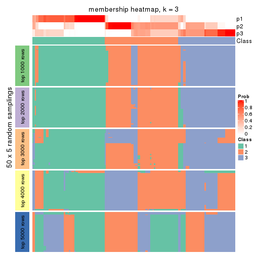
membership_heatmap(res, k = 4)
membership_heatmap(res, k = 5)
membership_heatmap(res, k = 6)

As soon as we have had the classes for columns, we can look for signatures which are significantly different between classes which can be candidate marks for certain classes. Following are the heatmaps for signatures.
Signature heatmaps where rows are scaled:
get_signatures(res, k = 2)
get_signatures(res, k = 3)
get_signatures(res, k = 4)
get_signatures(res, k = 5)
get_signatures(res, k = 6)
Signature heatmaps where rows are not scaled:
get_signatures(res, k = 2, scale_rows = FALSE)
get_signatures(res, k = 3, scale_rows = FALSE)
get_signatures(res, k = 4, scale_rows = FALSE)
get_signatures(res, k = 5, scale_rows = FALSE)
get_signatures(res, k = 6, scale_rows = FALSE)
Compare the overlap of signatures from different k:
compare_signatures(res)
get_signature() returns a data frame invisibly. TO get the list of signatures, the function
call should be assigned to a variable explicitly. In following code, if plot argument is set
to FALSE, no heatmap is plotted while only the differential analysis is performed.
# code only for demonstration
tb = get_signature(res, k = ..., plot = FALSE)
An example of the output of tb is:
#> which_row fdr mean_1 mean_2 scaled_mean_1 scaled_mean_2 km
#> 1 38 0.042760348 8.373488 9.131774 -0.5533452 0.5164555 1
#> 2 40 0.018707592 7.106213 8.469186 -0.6173731 0.5762149 1
#> 3 55 0.019134737 10.221463 11.207825 -0.6159697 0.5749050 1
#> 4 59 0.006059896 5.921854 7.869574 -0.6899429 0.6439467 1
#> 5 60 0.018055526 8.928898 10.211722 -0.6204761 0.5791110 1
#> 6 98 0.009384629 15.714769 14.887706 0.6635654 -0.6193277 2
...
The columns in tb are:
which_row: row indices corresponding to the input matrix.fdr: FDR for the differential test. mean_x: The mean value in group x.scaled_mean_x: The mean value in group x after rows are scaled.km: Row groups if k-means clustering is applied to rows.UMAP plot which shows how samples are separated.
dimension_reduction(res, k = 2, method = "UMAP")
dimension_reduction(res, k = 3, method = "UMAP")
dimension_reduction(res, k = 4, method = "UMAP")
dimension_reduction(res, k = 5, method = "UMAP")
dimension_reduction(res, k = 6, method = "UMAP")
Following heatmap shows how subgroups are split when increasing k:
collect_classes(res)
If matrix rows can be associated to genes, consider to use GO_Enrichment(res,
...) to perform function enrichment for the signature genes.
The object with results only for a single top-value method and a single partition method can be extracted as:
res = res_list["SD", "pam"]
# you can also extract it by
# res = res_list["SD:pam"]
A summary of res and all the functions that can be applied to it:
res
#> A 'ConsensusPartition' object with k = 2, 3, 4, 5, 6.
#> On a matrix with 14410 rows and 160 columns.
#> Top rows (1000, 2000, 3000, 4000, 5000) are extracted by 'SD' method.
#> Subgroups are detected by 'pam' method.
#> Performed in total 1250 partitions by row resampling.
#> Best k for subgroups seems to be 4.
#>
#> Following methods can be applied to this 'ConsensusPartition' object:
#> [1] "cola_report" "collect_classes" "collect_plots"
#> [4] "collect_stats" "colnames" "compare_signatures"
#> [7] "consensus_heatmap" "dimension_reduction" "functional_enrichment"
#> [10] "get_anno_col" "get_anno" "get_classes"
#> [13] "get_consensus" "get_matrix" "get_membership"
#> [16] "get_param" "get_signatures" "get_stats"
#> [19] "is_best_k" "is_stable_k" "membership_heatmap"
#> [22] "ncol" "nrow" "plot_ecdf"
#> [25] "rownames" "select_partition_number" "show"
#> [28] "suggest_best_k" "test_to_known_factors"
collect_plots() function collects all the plots made from res for all k (number of partitions)
into one single page to provide an easy and fast comparison between different k.
collect_plots(res)
The plots are:
k and the heatmap of
predicted classes for each k.k.k.k.All the plots in panels can be made by individual functions and they are plotted later in this section.
select_partition_number() produces several plots showing different
statistics for choosing “optimized” k. There are following statistics:
k;k, the area increased is defined as \(A_k - A_{k-1}\).The detailed explanations of these statistics can be found in the cola vignette.
Generally speaking, lower PAC score, higher mean silhouette score or higher
concordance corresponds to better partition. Rand index and Jaccard index
measure how similar the current partition is compared to partition with k-1.
If they are too similar, we won't accept k is better than k-1.
select_partition_number(res)
The numeric values for all these statistics can be obtained by get_stats().
get_stats(res)
#> k 1-PAC mean_silhouette concordance area_increased Rand Jaccard
#> 2 2 0.338 0.731 0.835 0.4807 0.515 0.515
#> 3 3 0.611 0.782 0.876 0.3536 0.765 0.570
#> 4 4 0.698 0.765 0.888 0.1156 0.886 0.687
#> 5 5 0.649 0.680 0.818 0.0507 0.939 0.791
#> 6 6 0.682 0.693 0.797 0.0499 0.924 0.712
suggest_best_k() suggests the best \(k\) based on these statistics. The rules are as follows:
NA.suggest_best_k(res)
#> [1] 4
Following shows the table of the partitions (You need to click the show/hide
code output link to see it). The membership matrix (columns with name p*)
is inferred by
clue::cl_consensus()
function with the SE method. Basically the value in the membership matrix
represents the probability to belong to a certain group. The finall class
label for an item is determined with the group with highest probability it
belongs to.
In get_classes() function, the entropy is calculated from the membership
matrix and the silhouette score is calculated from the consensus matrix.
cbind(get_classes(res, k = 2), get_membership(res, k = 2))
#> class entropy silhouette p1 p2
#> SRR031811 1 0.7219 0.826 0.800 0.200
#> SRR031812 1 0.0938 0.761 0.988 0.012
#> SRR031813 2 0.0000 0.834 0.000 1.000
#> SRR031814 1 0.7674 0.553 0.776 0.224
#> SRR031815 2 0.7219 0.735 0.200 0.800
#> SRR031816 1 0.7299 0.825 0.796 0.204
#> SRR031817 2 0.0000 0.834 0.000 1.000
#> SRR031818 1 0.7299 0.825 0.796 0.204
#> SRR031819 2 0.0000 0.834 0.000 1.000
#> SRR031820 2 0.0000 0.834 0.000 1.000
#> SRR031821 1 0.7219 0.826 0.800 0.200
#> SRR031822 2 0.7219 0.735 0.200 0.800
#> SRR031823 1 0.7299 0.826 0.796 0.204
#> SRR031824 2 0.7602 0.618 0.220 0.780
#> SRR031825 1 0.7453 0.821 0.788 0.212
#> SRR031826 2 0.0000 0.834 0.000 1.000
#> SRR031827 1 0.7299 0.825 0.796 0.204
#> SRR031828 1 0.7528 0.565 0.784 0.216
#> SRR031829 1 0.7219 0.826 0.800 0.200
#> SRR031830 2 0.7219 0.735 0.200 0.800
#> SRR031831 2 0.0000 0.834 0.000 1.000
#> SRR031832 2 0.0000 0.834 0.000 1.000
#> SRR031833 1 0.7299 0.825 0.796 0.204
#> SRR031834 2 0.9522 0.540 0.372 0.628
#> SRR031835 1 0.0672 0.762 0.992 0.008
#> SRR031836 2 0.0000 0.834 0.000 1.000
#> SRR031837 2 0.0000 0.834 0.000 1.000
#> SRR031838 2 0.0000 0.834 0.000 1.000
#> SRR031839 2 0.0000 0.834 0.000 1.000
#> SRR031840 1 0.0672 0.760 0.992 0.008
#> SRR031841 2 0.7219 0.735 0.200 0.800
#> SRR031842 2 0.7602 0.618 0.220 0.780
#> SRR031843 2 0.0000 0.834 0.000 1.000
#> SRR031844 1 0.7674 0.818 0.776 0.224
#> SRR031845 1 0.7219 0.826 0.800 0.200
#> SRR031846 1 0.0376 0.762 0.996 0.004
#> SRR031847 2 0.0000 0.834 0.000 1.000
#> SRR031848 2 0.0000 0.834 0.000 1.000
#> SRR031849 2 0.0000 0.834 0.000 1.000
#> SRR031850 1 0.7219 0.826 0.800 0.200
#> SRR031851 2 0.8608 0.500 0.284 0.716
#> SRR031852 2 0.7299 0.734 0.204 0.796
#> SRR031853 2 0.7299 0.734 0.204 0.796
#> SRR031854 2 0.7219 0.735 0.200 0.800
#> SRR031855 2 0.5059 0.749 0.112 0.888
#> SRR031857 1 0.7219 0.826 0.800 0.200
#> SRR031858 1 0.7219 0.826 0.800 0.200
#> SRR031859 2 0.7883 0.615 0.236 0.764
#> SRR031860 2 0.6623 0.689 0.172 0.828
#> SRR031861 2 0.7602 0.618 0.220 0.780
#> SRR031862 1 0.7602 0.555 0.780 0.220
#> SRR031863 1 0.7219 0.826 0.800 0.200
#> SRR031864 2 0.8144 0.567 0.252 0.748
#> SRR031865 2 0.0376 0.833 0.004 0.996
#> SRR031866 2 0.7219 0.735 0.200 0.800
#> SRR031867 1 0.7299 0.825 0.796 0.204
#> SRR031868 1 0.7528 0.822 0.784 0.216
#> SRR031869 1 0.9608 0.187 0.616 0.384
#> SRR031870 1 0.7299 0.825 0.796 0.204
#> SRR031871 1 0.1184 0.769 0.984 0.016
#> SRR031872 1 0.7528 0.565 0.784 0.216
#> SRR031873 1 0.0672 0.762 0.992 0.008
#> SRR031874 1 0.9850 0.149 0.572 0.428
#> SRR031875 2 0.0000 0.834 0.000 1.000
#> SRR031876 1 0.1184 0.758 0.984 0.016
#> SRR031877 1 0.1633 0.775 0.976 0.024
#> SRR031878 1 0.7219 0.826 0.800 0.200
#> SRR031879 2 0.0000 0.834 0.000 1.000
#> SRR031880 1 0.7219 0.826 0.800 0.200
#> SRR031881 1 0.7219 0.826 0.800 0.200
#> SRR031882 2 0.0000 0.834 0.000 1.000
#> SRR031883 2 0.0000 0.834 0.000 1.000
#> SRR031884 2 0.0000 0.834 0.000 1.000
#> SRR031885 2 0.0000 0.834 0.000 1.000
#> SRR031886 2 0.0000 0.834 0.000 1.000
#> SRR031887 1 0.0000 0.762 1.000 0.000
#> SRR031888 1 0.7299 0.825 0.796 0.204
#> SRR031889 2 0.7056 0.740 0.192 0.808
#> SRR031890 1 0.0376 0.762 0.996 0.004
#> SRR031891 1 0.7219 0.826 0.800 0.200
#> SRR031892 1 0.8661 0.768 0.712 0.288
#> SRR031893 2 0.7299 0.735 0.204 0.796
#> SRR031894 2 0.0000 0.834 0.000 1.000
#> SRR031895 1 0.9988 0.435 0.520 0.480
#> SRR031896 2 0.0000 0.834 0.000 1.000
#> SRR031897 1 0.7219 0.826 0.800 0.200
#> SRR031898 2 0.7674 0.615 0.224 0.776
#> SRR031899 2 0.8207 0.438 0.256 0.744
#> SRR031900 1 0.7299 0.825 0.796 0.204
#> SRR031901 1 0.7299 0.825 0.796 0.204
#> SRR031902 1 0.1184 0.769 0.984 0.016
#> SRR031903 1 0.0376 0.762 0.996 0.004
#> SRR031904 1 0.7453 0.824 0.788 0.212
#> SRR031905 1 0.6623 0.624 0.828 0.172
#> SRR031906 1 0.8327 0.487 0.736 0.264
#> SRR031907 1 0.4161 0.799 0.916 0.084
#> SRR031908 2 0.0000 0.834 0.000 1.000
#> SRR031909 1 0.0938 0.759 0.988 0.012
#> SRR031910 1 0.9850 0.581 0.572 0.428
#> SRR031911 2 0.0000 0.834 0.000 1.000
#> SRR031912 1 0.9866 0.190 0.568 0.432
#> SRR031913 1 0.7219 0.826 0.800 0.200
#> SRR031914 1 0.0000 0.762 1.000 0.000
#> SRR031915 1 0.7139 0.827 0.804 0.196
#> SRR031916 1 0.7453 0.824 0.788 0.212
#> SRR031917 1 0.4022 0.798 0.920 0.080
#> SRR031918 2 0.6531 0.639 0.168 0.832
#> SRR031919 1 0.3879 0.720 0.924 0.076
#> SRR031920 2 0.9710 -0.108 0.400 0.600
#> SRR031921 2 0.0000 0.834 0.000 1.000
#> SRR031922 1 0.7219 0.826 0.800 0.200
#> SRR031923 1 0.7299 0.825 0.796 0.204
#> SRR031924 1 0.8386 0.477 0.732 0.268
#> SRR031925 1 0.7219 0.826 0.800 0.200
#> SRR031926 1 0.7219 0.826 0.800 0.200
#> SRR031927 2 0.0000 0.834 0.000 1.000
#> SRR031928 1 0.7602 0.555 0.780 0.220
#> SRR031929 1 0.7219 0.826 0.800 0.200
#> SRR031930 1 1.0000 0.244 0.504 0.496
#> SRR031931 2 0.0376 0.833 0.004 0.996
#> SRR031932 2 0.7219 0.735 0.200 0.800
#> SRR031933 2 0.7674 0.615 0.224 0.776
#> SRR031934 1 0.9358 0.677 0.648 0.352
#> SRR031935 1 0.7453 0.824 0.788 0.212
#> SRR031936 1 0.0000 0.762 1.000 0.000
#> SRR031937 1 0.4815 0.698 0.896 0.104
#> SRR031938 1 0.4298 0.801 0.912 0.088
#> SRR031939 2 0.8081 0.571 0.248 0.752
#> SRR031940 2 0.7376 0.732 0.208 0.792
#> SRR031941 1 0.7376 0.825 0.792 0.208
#> SRR031942 1 0.1843 0.777 0.972 0.028
#> SRR031943 1 0.9732 0.622 0.596 0.404
#> SRR031944 1 0.7376 0.825 0.792 0.208
#> SRR031945 1 0.7139 0.825 0.804 0.196
#> SRR031946 2 0.9710 -0.108 0.400 0.600
#> SRR031947 1 0.7299 0.825 0.796 0.204
#> SRR031948 1 0.8713 0.431 0.708 0.292
#> SRR031949 1 0.9393 0.264 0.644 0.356
#> SRR031950 1 0.7219 0.826 0.800 0.200
#> SRR031951 1 0.7219 0.826 0.800 0.200
#> SRR031952 1 0.0376 0.764 0.996 0.004
#> SRR031953 1 0.0000 0.762 1.000 0.000
#> SRR031954 1 0.7219 0.825 0.800 0.200
#> SRR031955 1 0.7299 0.824 0.796 0.204
#> SRR031956 1 0.4562 0.803 0.904 0.096
#> SRR031957 1 0.7453 0.824 0.788 0.212
#> SRR031958 1 0.7299 0.825 0.796 0.204
#> SRR031959 1 0.7376 0.825 0.792 0.208
#> SRR031960 1 0.7299 0.825 0.796 0.204
#> SRR031961 1 0.7674 0.553 0.776 0.224
#> SRR031962 1 0.0000 0.762 1.000 0.000
#> SRR031963 1 0.7219 0.826 0.800 0.200
#> SRR031964 1 0.0376 0.764 0.996 0.004
#> SRR031965 2 0.7674 0.615 0.224 0.776
#> SRR031966 2 0.6048 0.721 0.148 0.852
#> SRR031967 2 0.7299 0.734 0.204 0.796
#> SRR031968 2 0.7299 0.734 0.204 0.796
#> SRR031969 2 0.7219 0.735 0.200 0.800
#> SRR031970 2 0.0938 0.828 0.012 0.988
#> SRR031971 2 0.7219 0.735 0.200 0.800
cbind(get_classes(res, k = 3), get_membership(res, k = 3))
#> class entropy silhouette p1 p2 p3
#> SRR031811 2 0.0000 0.8929 0.000 1.000 0.000
#> SRR031812 1 0.4399 0.7669 0.812 0.188 0.000
#> SRR031813 3 0.4346 0.8427 0.184 0.000 0.816
#> SRR031814 1 0.0000 0.8844 1.000 0.000 0.000
#> SRR031815 1 0.1411 0.8706 0.964 0.000 0.036
#> SRR031816 2 0.0424 0.8919 0.000 0.992 0.008
#> SRR031817 3 0.4399 0.8440 0.188 0.000 0.812
#> SRR031818 2 0.2926 0.8601 0.036 0.924 0.040
#> SRR031819 3 0.4399 0.8440 0.188 0.000 0.812
#> SRR031820 3 0.4399 0.8440 0.188 0.000 0.812
#> SRR031821 2 0.0592 0.8909 0.000 0.988 0.012
#> SRR031822 1 0.0000 0.8844 1.000 0.000 0.000
#> SRR031823 2 0.0000 0.8929 0.000 1.000 0.000
#> SRR031824 3 0.2711 0.7454 0.000 0.088 0.912
#> SRR031825 2 0.4555 0.7410 0.000 0.800 0.200
#> SRR031826 3 0.4399 0.8440 0.188 0.000 0.812
#> SRR031827 2 0.0000 0.8929 0.000 1.000 0.000
#> SRR031828 1 0.0000 0.8844 1.000 0.000 0.000
#> SRR031829 2 0.0000 0.8929 0.000 1.000 0.000
#> SRR031830 1 0.1529 0.8688 0.960 0.000 0.040
#> SRR031831 3 0.4399 0.8440 0.188 0.000 0.812
#> SRR031832 3 0.4399 0.8440 0.188 0.000 0.812
#> SRR031833 2 0.0424 0.8919 0.000 0.992 0.008
#> SRR031834 1 0.0000 0.8844 1.000 0.000 0.000
#> SRR031835 1 0.4399 0.7669 0.812 0.188 0.000
#> SRR031836 3 0.4399 0.8440 0.188 0.000 0.812
#> SRR031837 3 0.4399 0.8440 0.188 0.000 0.812
#> SRR031838 3 0.0000 0.7733 0.000 0.000 1.000
#> SRR031839 3 0.4399 0.8440 0.188 0.000 0.812
#> SRR031840 1 0.5285 0.7757 0.812 0.148 0.040
#> SRR031841 3 0.6215 0.5109 0.428 0.000 0.572
#> SRR031842 3 0.2959 0.7390 0.000 0.100 0.900
#> SRR031843 3 0.4399 0.8440 0.188 0.000 0.812
#> SRR031844 2 0.2796 0.8464 0.000 0.908 0.092
#> SRR031845 2 0.0237 0.8927 0.000 0.996 0.004
#> SRR031846 1 0.7586 -0.0190 0.480 0.480 0.040
#> SRR031847 3 0.4399 0.8440 0.188 0.000 0.812
#> SRR031848 3 0.4399 0.8440 0.188 0.000 0.812
#> SRR031849 3 0.4399 0.8440 0.188 0.000 0.812
#> SRR031850 2 0.4452 0.7497 0.000 0.808 0.192
#> SRR031851 3 0.6154 0.2175 0.000 0.408 0.592
#> SRR031852 1 0.0000 0.8844 1.000 0.000 0.000
#> SRR031853 1 0.0000 0.8844 1.000 0.000 0.000
#> SRR031854 1 0.0000 0.8844 1.000 0.000 0.000
#> SRR031855 3 0.2448 0.7511 0.000 0.076 0.924
#> SRR031857 2 0.0000 0.8929 0.000 1.000 0.000
#> SRR031858 2 0.1529 0.8785 0.000 0.960 0.040
#> SRR031859 3 0.4452 0.6590 0.000 0.192 0.808
#> SRR031860 3 0.2356 0.7525 0.000 0.072 0.928
#> SRR031861 3 0.2796 0.7436 0.000 0.092 0.908
#> SRR031862 1 0.0000 0.8844 1.000 0.000 0.000
#> SRR031863 2 0.0000 0.8929 0.000 1.000 0.000
#> SRR031864 3 0.4002 0.6978 0.000 0.160 0.840
#> SRR031865 3 0.4399 0.8440 0.188 0.000 0.812
#> SRR031866 1 0.0000 0.8844 1.000 0.000 0.000
#> SRR031867 2 0.1753 0.8790 0.000 0.952 0.048
#> SRR031868 2 0.4324 0.8214 0.028 0.860 0.112
#> SRR031869 1 0.0000 0.8844 1.000 0.000 0.000
#> SRR031870 2 0.1753 0.8790 0.000 0.952 0.048
#> SRR031871 2 0.7303 0.5940 0.244 0.680 0.076
#> SRR031872 1 0.2165 0.8581 0.936 0.064 0.000
#> SRR031873 1 0.4399 0.7669 0.812 0.188 0.000
#> SRR031874 1 0.1525 0.8571 0.964 0.004 0.032
#> SRR031875 3 0.4399 0.8440 0.188 0.000 0.812
#> SRR031876 1 0.4452 0.7631 0.808 0.192 0.000
#> SRR031877 2 0.1964 0.8627 0.056 0.944 0.000
#> SRR031878 2 0.0000 0.8929 0.000 1.000 0.000
#> SRR031879 3 0.4399 0.8440 0.188 0.000 0.812
#> SRR031880 2 0.0000 0.8929 0.000 1.000 0.000
#> SRR031881 2 0.0000 0.8929 0.000 1.000 0.000
#> SRR031882 3 0.4399 0.8440 0.188 0.000 0.812
#> SRR031883 3 0.4399 0.8440 0.188 0.000 0.812
#> SRR031884 3 0.4399 0.8440 0.188 0.000 0.812
#> SRR031885 3 0.4399 0.8440 0.188 0.000 0.812
#> SRR031886 3 0.4399 0.8440 0.188 0.000 0.812
#> SRR031887 2 0.6295 0.0567 0.472 0.528 0.000
#> SRR031888 2 0.1529 0.8785 0.000 0.960 0.040
#> SRR031889 1 0.3116 0.7621 0.892 0.000 0.108
#> SRR031890 2 0.6984 0.5187 0.304 0.656 0.040
#> SRR031891 2 0.0000 0.8929 0.000 1.000 0.000
#> SRR031892 2 0.3116 0.8350 0.000 0.892 0.108
#> SRR031893 1 0.0000 0.8844 1.000 0.000 0.000
#> SRR031894 3 0.2165 0.8005 0.064 0.000 0.936
#> SRR031895 1 0.4887 0.5488 0.772 0.000 0.228
#> SRR031896 3 0.4399 0.8440 0.188 0.000 0.812
#> SRR031897 2 0.1529 0.8785 0.000 0.960 0.040
#> SRR031898 3 0.2878 0.7416 0.000 0.096 0.904
#> SRR031899 3 0.8787 0.6187 0.188 0.228 0.584
#> SRR031900 2 0.1529 0.8785 0.000 0.960 0.040
#> SRR031901 2 0.1643 0.8789 0.000 0.956 0.044
#> SRR031902 2 0.9390 0.1925 0.340 0.476 0.184
#> SRR031903 1 0.4399 0.7669 0.812 0.188 0.000
#> SRR031904 2 0.1643 0.8776 0.000 0.956 0.044
#> SRR031905 1 0.2537 0.8483 0.920 0.080 0.000
#> SRR031906 1 0.0000 0.8844 1.000 0.000 0.000
#> SRR031907 2 0.0000 0.8929 0.000 1.000 0.000
#> SRR031908 3 0.4399 0.8440 0.188 0.000 0.812
#> SRR031909 1 0.4399 0.7669 0.812 0.188 0.000
#> SRR031910 2 0.7820 0.3773 0.072 0.604 0.324
#> SRR031911 3 0.4399 0.8440 0.188 0.000 0.812
#> SRR031912 1 0.1989 0.8409 0.948 0.004 0.048
#> SRR031913 2 0.0000 0.8929 0.000 1.000 0.000
#> SRR031914 1 0.4555 0.7534 0.800 0.200 0.000
#> SRR031915 2 0.0424 0.8919 0.000 0.992 0.008
#> SRR031916 2 0.0424 0.8919 0.000 0.992 0.008
#> SRR031917 2 0.0747 0.8879 0.016 0.984 0.000
#> SRR031918 3 0.8067 0.7014 0.188 0.160 0.652
#> SRR031919 2 0.6235 0.1868 0.436 0.564 0.000
#> SRR031920 3 0.9067 0.3147 0.140 0.384 0.476
#> SRR031921 3 0.4399 0.8440 0.188 0.000 0.812
#> SRR031922 2 0.1529 0.8785 0.000 0.960 0.040
#> SRR031923 2 0.4452 0.7497 0.000 0.808 0.192
#> SRR031924 1 0.0000 0.8844 1.000 0.000 0.000
#> SRR031925 2 0.0000 0.8929 0.000 1.000 0.000
#> SRR031926 2 0.1529 0.8785 0.000 0.960 0.040
#> SRR031927 3 0.4399 0.8440 0.188 0.000 0.812
#> SRR031928 1 0.0000 0.8844 1.000 0.000 0.000
#> SRR031929 2 0.0000 0.8929 0.000 1.000 0.000
#> SRR031930 2 0.6302 0.1561 0.000 0.520 0.480
#> SRR031931 3 0.4399 0.8440 0.188 0.000 0.812
#> SRR031932 1 0.0000 0.8844 1.000 0.000 0.000
#> SRR031933 3 0.5098 0.5790 0.000 0.248 0.752
#> SRR031934 2 0.6208 0.6939 0.152 0.772 0.076
#> SRR031935 2 0.0424 0.8919 0.000 0.992 0.008
#> SRR031936 1 0.5285 0.7757 0.812 0.148 0.040
#> SRR031937 2 0.6286 0.0876 0.464 0.536 0.000
#> SRR031938 2 0.0000 0.8929 0.000 1.000 0.000
#> SRR031939 3 0.5760 0.4524 0.000 0.328 0.672
#> SRR031940 1 0.0000 0.8844 1.000 0.000 0.000
#> SRR031941 2 0.0000 0.8929 0.000 1.000 0.000
#> SRR031942 2 0.0424 0.8911 0.008 0.992 0.000
#> SRR031943 2 0.7351 0.5174 0.068 0.664 0.268
#> SRR031944 2 0.2711 0.8492 0.000 0.912 0.088
#> SRR031945 2 0.2537 0.8539 0.000 0.920 0.080
#> SRR031946 3 0.9318 0.3847 0.172 0.352 0.476
#> SRR031947 2 0.0237 0.8926 0.000 0.996 0.004
#> SRR031948 1 0.0000 0.8844 1.000 0.000 0.000
#> SRR031949 1 0.0000 0.8844 1.000 0.000 0.000
#> SRR031950 2 0.0000 0.8929 0.000 1.000 0.000
#> SRR031951 2 0.0000 0.8929 0.000 1.000 0.000
#> SRR031952 2 0.4452 0.7199 0.192 0.808 0.000
#> SRR031953 1 0.6154 0.3403 0.592 0.408 0.000
#> SRR031954 2 0.2537 0.8539 0.000 0.920 0.080
#> SRR031955 2 0.4178 0.7715 0.000 0.828 0.172
#> SRR031956 2 0.0000 0.8929 0.000 1.000 0.000
#> SRR031957 2 0.1529 0.8805 0.000 0.960 0.040
#> SRR031958 2 0.1031 0.8861 0.000 0.976 0.024
#> SRR031959 2 0.1753 0.8742 0.000 0.952 0.048
#> SRR031960 2 0.0000 0.8929 0.000 1.000 0.000
#> SRR031961 1 0.1643 0.8690 0.956 0.044 0.000
#> SRR031962 2 0.6154 0.2747 0.408 0.592 0.000
#> SRR031963 2 0.0000 0.8929 0.000 1.000 0.000
#> SRR031964 2 0.2796 0.8336 0.092 0.908 0.000
#> SRR031965 3 0.3619 0.7147 0.000 0.136 0.864
#> SRR031966 3 0.2537 0.7487 0.000 0.080 0.920
#> SRR031967 1 0.0000 0.8844 1.000 0.000 0.000
#> SRR031968 1 0.0000 0.8844 1.000 0.000 0.000
#> SRR031969 1 0.0592 0.8807 0.988 0.000 0.012
#> SRR031970 3 0.2356 0.7525 0.000 0.072 0.928
#> SRR031971 1 0.1529 0.8686 0.960 0.000 0.040
cbind(get_classes(res, k = 4), get_membership(res, k = 4))
#> class entropy silhouette p1 p2 p3 p4
#> SRR031811 4 0.2011 0.8028 0.000 0.080 0.000 0.920
#> SRR031812 1 0.0188 0.9215 0.996 0.000 0.000 0.004
#> SRR031813 3 0.0000 0.9268 0.000 0.000 1.000 0.000
#> SRR031814 1 0.0188 0.9212 0.996 0.000 0.004 0.000
#> SRR031815 1 0.0188 0.9210 0.996 0.004 0.000 0.000
#> SRR031816 4 0.3486 0.7720 0.000 0.188 0.000 0.812
#> SRR031817 3 0.0000 0.9268 0.000 0.000 1.000 0.000
#> SRR031818 4 0.6523 0.6108 0.000 0.208 0.156 0.636
#> SRR031819 3 0.0000 0.9268 0.000 0.000 1.000 0.000
#> SRR031820 3 0.0000 0.9268 0.000 0.000 1.000 0.000
#> SRR031821 4 0.0336 0.8044 0.000 0.008 0.000 0.992
#> SRR031822 1 0.0188 0.9212 0.996 0.000 0.004 0.000
#> SRR031823 4 0.0000 0.8060 0.000 0.000 0.000 1.000
#> SRR031824 2 0.0000 0.8187 0.000 1.000 0.000 0.000
#> SRR031825 2 0.0469 0.8145 0.000 0.988 0.000 0.012
#> SRR031826 3 0.0000 0.9268 0.000 0.000 1.000 0.000
#> SRR031827 4 0.3528 0.7696 0.000 0.192 0.000 0.808
#> SRR031828 1 0.0188 0.9212 0.996 0.000 0.004 0.000
#> SRR031829 4 0.3569 0.7673 0.000 0.196 0.000 0.804
#> SRR031830 1 0.0188 0.9210 0.996 0.004 0.000 0.000
#> SRR031831 3 0.0000 0.9268 0.000 0.000 1.000 0.000
#> SRR031832 3 0.0000 0.9268 0.000 0.000 1.000 0.000
#> SRR031833 4 0.3528 0.7696 0.000 0.192 0.000 0.808
#> SRR031834 1 0.0188 0.9212 0.996 0.000 0.004 0.000
#> SRR031835 1 0.0188 0.9215 0.996 0.000 0.000 0.004
#> SRR031836 3 0.0000 0.9268 0.000 0.000 1.000 0.000
#> SRR031837 3 0.0000 0.9268 0.000 0.000 1.000 0.000
#> SRR031838 3 0.4948 0.2657 0.000 0.440 0.560 0.000
#> SRR031839 3 0.0000 0.9268 0.000 0.000 1.000 0.000
#> SRR031840 1 0.0188 0.9215 0.996 0.000 0.000 0.004
#> SRR031841 3 0.4040 0.6044 0.248 0.000 0.752 0.000
#> SRR031842 2 0.0000 0.8187 0.000 1.000 0.000 0.000
#> SRR031843 3 0.0000 0.9268 0.000 0.000 1.000 0.000
#> SRR031844 4 0.3444 0.7464 0.000 0.000 0.184 0.816
#> SRR031845 4 0.0336 0.8041 0.000 0.008 0.000 0.992
#> SRR031846 1 0.4356 0.5310 0.708 0.000 0.000 0.292
#> SRR031847 3 0.0000 0.9268 0.000 0.000 1.000 0.000
#> SRR031848 3 0.0000 0.9268 0.000 0.000 1.000 0.000
#> SRR031849 3 0.0000 0.9268 0.000 0.000 1.000 0.000
#> SRR031850 2 0.2704 0.7718 0.000 0.876 0.000 0.124
#> SRR031851 2 0.2589 0.7769 0.000 0.884 0.000 0.116
#> SRR031852 1 0.0000 0.9218 1.000 0.000 0.000 0.000
#> SRR031853 1 0.0000 0.9218 1.000 0.000 0.000 0.000
#> SRR031854 1 0.0000 0.9218 1.000 0.000 0.000 0.000
#> SRR031855 2 0.3052 0.7176 0.000 0.860 0.136 0.004
#> SRR031857 4 0.0000 0.8060 0.000 0.000 0.000 1.000
#> SRR031858 2 0.4961 -0.0577 0.000 0.552 0.000 0.448
#> SRR031859 2 0.0000 0.8187 0.000 1.000 0.000 0.000
#> SRR031860 2 0.0000 0.8187 0.000 1.000 0.000 0.000
#> SRR031861 2 0.0000 0.8187 0.000 1.000 0.000 0.000
#> SRR031862 1 0.0000 0.9218 1.000 0.000 0.000 0.000
#> SRR031863 4 0.2760 0.7924 0.000 0.128 0.000 0.872
#> SRR031864 2 0.1716 0.8001 0.000 0.936 0.000 0.064
#> SRR031865 3 0.0000 0.9268 0.000 0.000 1.000 0.000
#> SRR031866 1 0.0000 0.9218 1.000 0.000 0.000 0.000
#> SRR031867 2 0.4967 -0.0674 0.000 0.548 0.000 0.452
#> SRR031868 4 0.4661 0.5707 0.000 0.000 0.348 0.652
#> SRR031869 1 0.0188 0.9212 0.996 0.000 0.004 0.000
#> SRR031870 4 0.4888 0.4523 0.000 0.412 0.000 0.588
#> SRR031871 4 0.6874 0.4345 0.296 0.136 0.000 0.568
#> SRR031872 1 0.0188 0.9215 0.996 0.000 0.000 0.004
#> SRR031873 1 0.0188 0.9215 0.996 0.000 0.000 0.004
#> SRR031874 1 0.3856 0.7804 0.832 0.000 0.032 0.136
#> SRR031875 3 0.0000 0.9268 0.000 0.000 1.000 0.000
#> SRR031876 1 0.2216 0.8491 0.908 0.000 0.000 0.092
#> SRR031877 4 0.0188 0.8052 0.004 0.000 0.000 0.996
#> SRR031878 4 0.0707 0.8079 0.000 0.020 0.000 0.980
#> SRR031879 3 0.0000 0.9268 0.000 0.000 1.000 0.000
#> SRR031880 4 0.1716 0.8029 0.000 0.064 0.000 0.936
#> SRR031881 4 0.0469 0.8028 0.000 0.012 0.000 0.988
#> SRR031882 3 0.0000 0.9268 0.000 0.000 1.000 0.000
#> SRR031883 3 0.0000 0.9268 0.000 0.000 1.000 0.000
#> SRR031884 3 0.0000 0.9268 0.000 0.000 1.000 0.000
#> SRR031885 3 0.0000 0.9268 0.000 0.000 1.000 0.000
#> SRR031886 3 0.0000 0.9268 0.000 0.000 1.000 0.000
#> SRR031887 1 0.4967 0.1306 0.548 0.000 0.000 0.452
#> SRR031888 2 0.4967 -0.0674 0.000 0.548 0.000 0.452
#> SRR031889 1 0.2589 0.8192 0.884 0.000 0.116 0.000
#> SRR031890 4 0.4985 0.2301 0.468 0.000 0.000 0.532
#> SRR031891 4 0.0188 0.8052 0.000 0.004 0.000 0.996
#> SRR031892 4 0.3486 0.7435 0.000 0.000 0.188 0.812
#> SRR031893 1 0.0000 0.9218 1.000 0.000 0.000 0.000
#> SRR031894 3 0.0188 0.9232 0.000 0.004 0.996 0.000
#> SRR031895 1 0.4248 0.6598 0.768 0.000 0.220 0.012
#> SRR031896 3 0.0000 0.9268 0.000 0.000 1.000 0.000
#> SRR031897 4 0.4277 0.6233 0.000 0.280 0.000 0.720
#> SRR031898 2 0.3444 0.7227 0.000 0.816 0.000 0.184
#> SRR031899 3 0.4072 0.6066 0.000 0.000 0.748 0.252
#> SRR031900 2 0.4967 -0.0674 0.000 0.548 0.000 0.452
#> SRR031901 4 0.4804 0.5118 0.000 0.384 0.000 0.616
#> SRR031902 2 0.4175 0.6121 0.012 0.776 0.000 0.212
#> SRR031903 1 0.0188 0.9215 0.996 0.000 0.000 0.004
#> SRR031904 4 0.4362 0.7867 0.000 0.096 0.088 0.816
#> SRR031905 1 0.0188 0.9215 0.996 0.000 0.000 0.004
#> SRR031906 1 0.0188 0.9212 0.996 0.000 0.004 0.000
#> SRR031907 4 0.3444 0.7739 0.000 0.184 0.000 0.816
#> SRR031908 3 0.0000 0.9268 0.000 0.000 1.000 0.000
#> SRR031909 1 0.0188 0.9215 0.996 0.000 0.000 0.004
#> SRR031910 4 0.4564 0.5882 0.000 0.000 0.328 0.672
#> SRR031911 3 0.0000 0.9268 0.000 0.000 1.000 0.000
#> SRR031912 1 0.3934 0.7898 0.836 0.000 0.048 0.116
#> SRR031913 4 0.2760 0.7924 0.000 0.128 0.000 0.872
#> SRR031914 1 0.0469 0.9160 0.988 0.000 0.000 0.012
#> SRR031915 4 0.3444 0.7739 0.000 0.184 0.000 0.816
#> SRR031916 4 0.3681 0.7777 0.000 0.176 0.008 0.816
#> SRR031917 4 0.0000 0.8060 0.000 0.000 0.000 1.000
#> SRR031918 3 0.3528 0.7053 0.000 0.000 0.808 0.192
#> SRR031919 1 0.4989 0.0548 0.528 0.000 0.000 0.472
#> SRR031920 3 0.4898 0.1781 0.000 0.000 0.584 0.416
#> SRR031921 3 0.0000 0.9268 0.000 0.000 1.000 0.000
#> SRR031922 4 0.4643 0.5850 0.000 0.344 0.000 0.656
#> SRR031923 2 0.0336 0.8160 0.000 0.992 0.000 0.008
#> SRR031924 1 0.0000 0.9218 1.000 0.000 0.000 0.000
#> SRR031925 4 0.0000 0.8060 0.000 0.000 0.000 1.000
#> SRR031926 4 0.4222 0.6493 0.000 0.272 0.000 0.728
#> SRR031927 3 0.0000 0.9268 0.000 0.000 1.000 0.000
#> SRR031928 1 0.0000 0.9218 1.000 0.000 0.000 0.000
#> SRR031929 4 0.2760 0.7924 0.000 0.128 0.000 0.872
#> SRR031930 2 0.0188 0.8184 0.000 0.996 0.000 0.004
#> SRR031931 3 0.0000 0.9268 0.000 0.000 1.000 0.000
#> SRR031932 1 0.0000 0.9218 1.000 0.000 0.000 0.000
#> SRR031933 2 0.2760 0.7595 0.000 0.872 0.000 0.128
#> SRR031934 4 0.6163 0.6304 0.164 0.000 0.160 0.676
#> SRR031935 4 0.3486 0.7720 0.000 0.188 0.000 0.812
#> SRR031936 1 0.0188 0.9215 0.996 0.000 0.000 0.004
#> SRR031937 1 0.4948 0.1763 0.560 0.000 0.000 0.440
#> SRR031938 4 0.0000 0.8060 0.000 0.000 0.000 1.000
#> SRR031939 2 0.5047 0.4768 0.000 0.668 0.316 0.016
#> SRR031940 1 0.0000 0.9218 1.000 0.000 0.000 0.000
#> SRR031941 4 0.0000 0.8060 0.000 0.000 0.000 1.000
#> SRR031942 4 0.0188 0.8052 0.004 0.000 0.000 0.996
#> SRR031943 4 0.4193 0.6667 0.000 0.000 0.268 0.732
#> SRR031944 4 0.3444 0.7464 0.000 0.000 0.184 0.816
#> SRR031945 4 0.3836 0.7539 0.016 0.000 0.168 0.816
#> SRR031946 3 0.4866 0.2173 0.000 0.000 0.596 0.404
#> SRR031947 4 0.3444 0.7739 0.000 0.184 0.000 0.816
#> SRR031948 1 0.0188 0.9212 0.996 0.000 0.004 0.000
#> SRR031949 1 0.0000 0.9218 1.000 0.000 0.000 0.000
#> SRR031950 4 0.0592 0.8028 0.000 0.016 0.000 0.984
#> SRR031951 4 0.0469 0.8028 0.000 0.012 0.000 0.988
#> SRR031952 4 0.2973 0.7420 0.144 0.000 0.000 0.856
#> SRR031953 1 0.3219 0.7623 0.836 0.000 0.000 0.164
#> SRR031954 4 0.3583 0.7486 0.004 0.000 0.180 0.816
#> SRR031955 4 0.3569 0.7374 0.000 0.000 0.196 0.804
#> SRR031956 4 0.0000 0.8060 0.000 0.000 0.000 1.000
#> SRR031957 4 0.4364 0.7858 0.000 0.092 0.092 0.816
#> SRR031958 4 0.4817 0.5018 0.000 0.388 0.000 0.612
#> SRR031959 4 0.0000 0.8060 0.000 0.000 0.000 1.000
#> SRR031960 4 0.4817 0.5018 0.000 0.388 0.000 0.612
#> SRR031961 1 0.2530 0.8293 0.888 0.000 0.000 0.112
#> SRR031962 4 0.4898 0.3301 0.416 0.000 0.000 0.584
#> SRR031963 4 0.0336 0.8041 0.000 0.008 0.000 0.992
#> SRR031964 4 0.2760 0.7555 0.128 0.000 0.000 0.872
#> SRR031965 2 0.0000 0.8187 0.000 1.000 0.000 0.000
#> SRR031966 2 0.1716 0.8001 0.000 0.936 0.000 0.064
#> SRR031967 1 0.0000 0.9218 1.000 0.000 0.000 0.000
#> SRR031968 1 0.0000 0.9218 1.000 0.000 0.000 0.000
#> SRR031969 1 0.0188 0.9210 0.996 0.004 0.000 0.000
#> SRR031970 2 0.0188 0.8179 0.000 0.996 0.004 0.000
#> SRR031971 1 0.0188 0.9210 0.996 0.004 0.000 0.000
cbind(get_classes(res, k = 5), get_membership(res, k = 5))
#> class entropy silhouette p1 p2 p3 p4 p5
#> SRR031811 4 0.1608 0.716 0.000 0.072 0.000 0.928 0.000
#> SRR031812 1 0.0404 0.823 0.988 0.000 0.000 0.000 0.012
#> SRR031813 3 0.0000 0.914 0.000 0.000 1.000 0.000 0.000
#> SRR031814 1 0.0451 0.825 0.988 0.000 0.004 0.008 0.000
#> SRR031815 1 0.1041 0.820 0.964 0.032 0.004 0.000 0.000
#> SRR031816 4 0.3039 0.706 0.000 0.192 0.000 0.808 0.000
#> SRR031817 3 0.0000 0.914 0.000 0.000 1.000 0.000 0.000
#> SRR031818 4 0.5365 0.604 0.000 0.204 0.132 0.664 0.000
#> SRR031819 3 0.0000 0.914 0.000 0.000 1.000 0.000 0.000
#> SRR031820 3 0.0000 0.914 0.000 0.000 1.000 0.000 0.000
#> SRR031821 4 0.0162 0.698 0.000 0.004 0.000 0.996 0.000
#> SRR031822 1 0.0404 0.823 0.988 0.000 0.012 0.000 0.000
#> SRR031823 4 0.0000 0.699 0.000 0.000 0.000 1.000 0.000
#> SRR031824 2 0.0000 0.861 0.000 1.000 0.000 0.000 0.000
#> SRR031825 2 0.0290 0.856 0.000 0.992 0.000 0.008 0.000
#> SRR031826 3 0.0000 0.914 0.000 0.000 1.000 0.000 0.000
#> SRR031827 4 0.3039 0.706 0.000 0.192 0.000 0.808 0.000
#> SRR031828 1 0.0451 0.825 0.988 0.000 0.004 0.008 0.000
#> SRR031829 4 0.3074 0.706 0.000 0.196 0.000 0.804 0.000
#> SRR031830 1 0.1124 0.819 0.960 0.036 0.004 0.000 0.000
#> SRR031831 3 0.0000 0.914 0.000 0.000 1.000 0.000 0.000
#> SRR031832 3 0.0000 0.914 0.000 0.000 1.000 0.000 0.000
#> SRR031833 4 0.3003 0.708 0.000 0.188 0.000 0.812 0.000
#> SRR031834 1 0.0451 0.823 0.988 0.000 0.004 0.000 0.008
#> SRR031835 1 0.0451 0.824 0.988 0.000 0.000 0.004 0.008
#> SRR031836 3 0.4171 0.264 0.000 0.000 0.604 0.000 0.396
#> SRR031837 3 0.0000 0.914 0.000 0.000 1.000 0.000 0.000
#> SRR031838 2 0.4192 0.263 0.000 0.596 0.404 0.000 0.000
#> SRR031839 3 0.0000 0.914 0.000 0.000 1.000 0.000 0.000
#> SRR031840 1 0.2864 0.764 0.852 0.000 0.000 0.012 0.136
#> SRR031841 3 0.3452 0.498 0.244 0.000 0.756 0.000 0.000
#> SRR031842 2 0.0000 0.861 0.000 1.000 0.000 0.000 0.000
#> SRR031843 3 0.0000 0.914 0.000 0.000 1.000 0.000 0.000
#> SRR031844 5 0.7402 0.606 0.048 0.000 0.184 0.364 0.404
#> SRR031845 5 0.5153 0.340 0.024 0.008 0.000 0.460 0.508
#> SRR031846 1 0.6080 0.253 0.520 0.000 0.000 0.344 0.136
#> SRR031847 3 0.0000 0.914 0.000 0.000 1.000 0.000 0.000
#> SRR031848 3 0.4114 0.312 0.000 0.000 0.624 0.000 0.376
#> SRR031849 3 0.0000 0.914 0.000 0.000 1.000 0.000 0.000
#> SRR031850 2 0.3714 0.766 0.000 0.812 0.000 0.056 0.132
#> SRR031851 2 0.2127 0.817 0.000 0.892 0.000 0.108 0.000
#> SRR031852 1 0.3003 0.778 0.812 0.000 0.000 0.000 0.188
#> SRR031853 1 0.3003 0.778 0.812 0.000 0.000 0.000 0.188
#> SRR031854 1 0.2516 0.800 0.860 0.000 0.000 0.000 0.140
#> SRR031855 2 0.0955 0.846 0.000 0.968 0.028 0.004 0.000
#> SRR031857 4 0.0000 0.699 0.000 0.000 0.000 1.000 0.000
#> SRR031858 4 0.6110 0.445 0.000 0.396 0.000 0.476 0.128
#> SRR031859 2 0.0000 0.861 0.000 1.000 0.000 0.000 0.000
#> SRR031860 2 0.0000 0.861 0.000 1.000 0.000 0.000 0.000
#> SRR031861 2 0.0000 0.861 0.000 1.000 0.000 0.000 0.000
#> SRR031862 1 0.1341 0.821 0.944 0.000 0.000 0.000 0.056
#> SRR031863 4 0.2953 0.684 0.000 0.012 0.000 0.844 0.144
#> SRR031864 2 0.3639 0.765 0.000 0.812 0.000 0.044 0.144
#> SRR031865 3 0.0000 0.914 0.000 0.000 1.000 0.000 0.000
#> SRR031866 1 0.3895 0.725 0.680 0.000 0.000 0.000 0.320
#> SRR031867 4 0.6110 0.445 0.000 0.396 0.000 0.476 0.128
#> SRR031868 4 0.3876 0.390 0.000 0.000 0.316 0.684 0.000
#> SRR031869 1 0.0451 0.823 0.988 0.000 0.004 0.000 0.008
#> SRR031870 4 0.5657 0.602 0.000 0.256 0.000 0.616 0.128
#> SRR031871 4 0.5204 0.299 0.368 0.052 0.000 0.580 0.000
#> SRR031872 1 0.0404 0.824 0.988 0.000 0.000 0.012 0.000
#> SRR031873 1 0.0404 0.824 0.988 0.000 0.000 0.012 0.000
#> SRR031874 5 0.6608 0.265 0.340 0.000 0.032 0.112 0.516
#> SRR031875 3 0.0000 0.914 0.000 0.000 1.000 0.000 0.000
#> SRR031876 1 0.4058 0.701 0.784 0.000 0.000 0.064 0.152
#> SRR031877 4 0.4292 0.432 0.024 0.000 0.000 0.704 0.272
#> SRR031878 4 0.2561 0.686 0.000 0.000 0.000 0.856 0.144
#> SRR031879 3 0.0000 0.914 0.000 0.000 1.000 0.000 0.000
#> SRR031880 4 0.1121 0.710 0.000 0.044 0.000 0.956 0.000
#> SRR031881 4 0.0290 0.697 0.000 0.008 0.000 0.992 0.000
#> SRR031882 3 0.0290 0.904 0.000 0.000 0.992 0.000 0.008
#> SRR031883 3 0.0000 0.914 0.000 0.000 1.000 0.000 0.000
#> SRR031884 3 0.0000 0.914 0.000 0.000 1.000 0.000 0.000
#> SRR031885 3 0.0000 0.914 0.000 0.000 1.000 0.000 0.000
#> SRR031886 3 0.0000 0.914 0.000 0.000 1.000 0.000 0.000
#> SRR031887 1 0.6134 0.179 0.516 0.000 0.000 0.340 0.144
#> SRR031888 4 0.4235 0.521 0.000 0.424 0.000 0.576 0.000
#> SRR031889 1 0.2561 0.734 0.856 0.000 0.144 0.000 0.000
#> SRR031890 4 0.6452 0.312 0.232 0.000 0.000 0.500 0.268
#> SRR031891 4 0.4974 -0.398 0.020 0.004 0.000 0.492 0.484
#> SRR031892 5 0.7826 0.617 0.088 0.000 0.184 0.340 0.388
#> SRR031893 1 0.2179 0.808 0.888 0.000 0.000 0.000 0.112
#> SRR031894 3 0.0162 0.909 0.000 0.004 0.996 0.000 0.000
#> SRR031895 1 0.5382 0.441 0.656 0.000 0.224 0.120 0.000
#> SRR031896 3 0.0000 0.914 0.000 0.000 1.000 0.000 0.000
#> SRR031897 4 0.2561 0.715 0.000 0.144 0.000 0.856 0.000
#> SRR031898 2 0.2966 0.748 0.000 0.816 0.000 0.184 0.000
#> SRR031899 3 0.6146 -0.308 0.000 0.000 0.468 0.132 0.400
#> SRR031900 4 0.6110 0.445 0.000 0.396 0.000 0.476 0.128
#> SRR031901 4 0.5490 0.624 0.000 0.228 0.000 0.644 0.128
#> SRR031902 2 0.3628 0.585 0.012 0.772 0.000 0.216 0.000
#> SRR031903 1 0.0404 0.824 0.988 0.000 0.000 0.012 0.000
#> SRR031904 4 0.3758 0.681 0.000 0.096 0.088 0.816 0.000
#> SRR031905 1 0.0798 0.823 0.976 0.000 0.000 0.008 0.016
#> SRR031906 1 0.0451 0.823 0.988 0.000 0.004 0.000 0.008
#> SRR031907 4 0.2966 0.708 0.000 0.184 0.000 0.816 0.000
#> SRR031908 3 0.0000 0.914 0.000 0.000 1.000 0.000 0.000
#> SRR031909 1 0.2648 0.763 0.848 0.000 0.000 0.000 0.152
#> SRR031910 5 0.6758 0.646 0.000 0.000 0.304 0.292 0.404
#> SRR031911 3 0.0000 0.914 0.000 0.000 1.000 0.000 0.000
#> SRR031912 5 0.6310 0.265 0.324 0.000 0.032 0.088 0.556
#> SRR031913 4 0.2953 0.684 0.000 0.012 0.000 0.844 0.144
#> SRR031914 1 0.4444 0.705 0.760 0.000 0.000 0.104 0.136
#> SRR031915 4 0.2966 0.708 0.000 0.184 0.000 0.816 0.000
#> SRR031916 4 0.3450 0.709 0.000 0.176 0.008 0.808 0.008
#> SRR031917 4 0.3284 0.597 0.024 0.000 0.000 0.828 0.148
#> SRR031918 3 0.5951 -0.149 0.000 0.000 0.520 0.116 0.364
#> SRR031919 1 0.6202 0.129 0.496 0.000 0.000 0.356 0.148
#> SRR031920 5 0.6655 0.554 0.000 0.000 0.368 0.228 0.404
#> SRR031921 3 0.0000 0.914 0.000 0.000 1.000 0.000 0.000
#> SRR031922 4 0.5295 0.641 0.000 0.200 0.000 0.672 0.128
#> SRR031923 2 0.0290 0.856 0.000 0.992 0.000 0.008 0.000
#> SRR031924 1 0.2329 0.807 0.876 0.000 0.000 0.000 0.124
#> SRR031925 4 0.0000 0.699 0.000 0.000 0.000 1.000 0.000
#> SRR031926 4 0.2648 0.715 0.000 0.152 0.000 0.848 0.000
#> SRR031927 3 0.0000 0.914 0.000 0.000 1.000 0.000 0.000
#> SRR031928 1 0.1908 0.814 0.908 0.000 0.000 0.000 0.092
#> SRR031929 4 0.2953 0.684 0.000 0.012 0.000 0.844 0.144
#> SRR031930 2 0.2719 0.793 0.000 0.852 0.000 0.004 0.144
#> SRR031931 3 0.0000 0.914 0.000 0.000 1.000 0.000 0.000
#> SRR031932 1 0.3895 0.725 0.680 0.000 0.000 0.000 0.320
#> SRR031933 2 0.2605 0.778 0.000 0.852 0.000 0.148 0.000
#> SRR031934 4 0.5122 0.519 0.136 0.000 0.140 0.716 0.008
#> SRR031935 4 0.3318 0.706 0.000 0.192 0.000 0.800 0.008
#> SRR031936 1 0.4679 0.692 0.740 0.000 0.000 0.124 0.136
#> SRR031937 1 0.6121 0.206 0.528 0.000 0.000 0.324 0.148
#> SRR031938 4 0.3194 0.601 0.020 0.000 0.000 0.832 0.148
#> SRR031939 2 0.4387 0.451 0.000 0.640 0.348 0.012 0.000
#> SRR031940 1 0.3003 0.778 0.812 0.000 0.000 0.000 0.188
#> SRR031941 4 0.0000 0.699 0.000 0.000 0.000 1.000 0.000
#> SRR031942 4 0.4639 0.275 0.024 0.000 0.000 0.632 0.344
#> SRR031943 5 0.6728 0.639 0.000 0.000 0.260 0.336 0.404
#> SRR031944 4 0.5492 0.494 0.012 0.000 0.168 0.684 0.136
#> SRR031945 4 0.5620 0.455 0.136 0.000 0.152 0.688 0.024
#> SRR031946 5 0.6655 0.554 0.000 0.000 0.368 0.228 0.404
#> SRR031947 4 0.2966 0.708 0.000 0.184 0.000 0.816 0.000
#> SRR031948 1 0.0404 0.823 0.988 0.000 0.000 0.000 0.012
#> SRR031949 1 0.3003 0.778 0.812 0.000 0.000 0.000 0.188
#> SRR031950 4 0.1956 0.696 0.000 0.008 0.000 0.916 0.076
#> SRR031951 4 0.0451 0.697 0.000 0.008 0.000 0.988 0.004
#> SRR031952 4 0.4723 0.543 0.128 0.000 0.000 0.736 0.136
#> SRR031953 1 0.5618 0.495 0.628 0.000 0.000 0.236 0.136
#> SRR031954 4 0.5555 0.442 0.124 0.000 0.168 0.688 0.020
#> SRR031955 4 0.5415 0.487 0.008 0.000 0.176 0.684 0.132
#> SRR031956 4 0.0162 0.701 0.000 0.004 0.000 0.996 0.000
#> SRR031957 4 0.3759 0.678 0.000 0.092 0.092 0.816 0.000
#> SRR031958 4 0.4161 0.553 0.000 0.392 0.000 0.608 0.000
#> SRR031959 4 0.0162 0.697 0.000 0.000 0.000 0.996 0.004
#> SRR031960 4 0.4161 0.553 0.000 0.392 0.000 0.608 0.000
#> SRR031961 1 0.3420 0.731 0.840 0.000 0.000 0.084 0.076
#> SRR031962 4 0.5888 0.316 0.288 0.000 0.000 0.576 0.136
#> SRR031963 4 0.0290 0.697 0.000 0.008 0.000 0.992 0.000
#> SRR031964 4 0.4541 0.564 0.112 0.000 0.000 0.752 0.136
#> SRR031965 2 0.0000 0.861 0.000 1.000 0.000 0.000 0.000
#> SRR031966 2 0.1121 0.847 0.000 0.956 0.000 0.044 0.000
#> SRR031967 1 0.3003 0.778 0.812 0.000 0.000 0.000 0.188
#> SRR031968 1 0.3003 0.778 0.812 0.000 0.000 0.000 0.188
#> SRR031969 1 0.3221 0.791 0.868 0.024 0.076 0.000 0.032
#> SRR031970 2 0.0000 0.861 0.000 1.000 0.000 0.000 0.000
#> SRR031971 1 0.2927 0.778 0.868 0.040 0.092 0.000 0.000
cbind(get_classes(res, k = 6), get_membership(res, k = 6))
#> class entropy silhouette p1 p2 p3 p4 p5 p6
#> SRR031811 4 0.2695 0.7268 0.144 0.004 0.000 0.844 0.008 0.000
#> SRR031812 6 0.0291 0.7419 0.000 0.000 0.000 0.004 0.004 0.992
#> SRR031813 3 0.0000 0.9847 0.000 0.000 1.000 0.000 0.000 0.000
#> SRR031814 6 0.0291 0.7430 0.000 0.000 0.004 0.004 0.000 0.992
#> SRR031815 6 0.0777 0.7391 0.000 0.024 0.004 0.000 0.000 0.972
#> SRR031816 4 0.0260 0.7425 0.000 0.008 0.000 0.992 0.000 0.000
#> SRR031817 3 0.0000 0.9847 0.000 0.000 1.000 0.000 0.000 0.000
#> SRR031818 4 0.2250 0.7046 0.000 0.020 0.092 0.888 0.000 0.000
#> SRR031819 3 0.0000 0.9847 0.000 0.000 1.000 0.000 0.000 0.000
#> SRR031820 3 0.0000 0.9847 0.000 0.000 1.000 0.000 0.000 0.000
#> SRR031821 4 0.4097 0.2472 0.488 0.000 0.000 0.504 0.008 0.000
#> SRR031822 6 0.0260 0.7425 0.000 0.000 0.008 0.000 0.000 0.992
#> SRR031823 4 0.2915 0.7094 0.184 0.000 0.000 0.808 0.008 0.000
#> SRR031824 2 0.2730 0.8562 0.000 0.808 0.000 0.192 0.000 0.000
#> SRR031825 2 0.2730 0.8562 0.000 0.808 0.000 0.192 0.000 0.000
#> SRR031826 3 0.0000 0.9847 0.000 0.000 1.000 0.000 0.000 0.000
#> SRR031827 4 0.0260 0.7425 0.000 0.008 0.000 0.992 0.000 0.000
#> SRR031828 6 0.0291 0.7430 0.000 0.000 0.004 0.004 0.000 0.992
#> SRR031829 4 0.0363 0.7418 0.000 0.012 0.000 0.988 0.000 0.000
#> SRR031830 6 0.1082 0.7338 0.000 0.040 0.004 0.000 0.000 0.956
#> SRR031831 3 0.0000 0.9847 0.000 0.000 1.000 0.000 0.000 0.000
#> SRR031832 3 0.0000 0.9847 0.000 0.000 1.000 0.000 0.000 0.000
#> SRR031833 4 0.0146 0.7432 0.000 0.004 0.000 0.996 0.000 0.000
#> SRR031834 6 0.0291 0.7426 0.000 0.000 0.004 0.000 0.004 0.992
#> SRR031835 6 0.0291 0.7419 0.000 0.000 0.000 0.004 0.004 0.992
#> SRR031836 5 0.3371 0.7128 0.000 0.000 0.292 0.000 0.708 0.000
#> SRR031837 3 0.0000 0.9847 0.000 0.000 1.000 0.000 0.000 0.000
#> SRR031838 2 0.3756 0.2639 0.000 0.600 0.400 0.000 0.000 0.000
#> SRR031839 3 0.0000 0.9847 0.000 0.000 1.000 0.000 0.000 0.000
#> SRR031840 1 0.3838 0.5697 0.552 0.000 0.000 0.000 0.000 0.448
#> SRR031841 3 0.3076 0.5584 0.000 0.000 0.760 0.000 0.000 0.240
#> SRR031842 2 0.2730 0.8562 0.000 0.808 0.000 0.192 0.000 0.000
#> SRR031843 3 0.0000 0.9847 0.000 0.000 1.000 0.000 0.000 0.000
#> SRR031844 5 0.4969 0.7961 0.000 0.000 0.192 0.104 0.684 0.020
#> SRR031845 5 0.4985 0.6160 0.068 0.120 0.000 0.092 0.720 0.000
#> SRR031846 4 0.5686 -0.0185 0.092 0.000 0.000 0.448 0.020 0.440
#> SRR031847 3 0.0000 0.9847 0.000 0.000 1.000 0.000 0.000 0.000
#> SRR031848 5 0.3756 0.5680 0.000 0.000 0.400 0.000 0.600 0.000
#> SRR031849 3 0.0000 0.9847 0.000 0.000 1.000 0.000 0.000 0.000
#> SRR031850 2 0.0767 0.7399 0.012 0.976 0.000 0.004 0.008 0.000
#> SRR031851 2 0.3464 0.8131 0.084 0.808 0.000 0.108 0.000 0.000
#> SRR031852 6 0.5565 0.5666 0.208 0.000 0.000 0.000 0.240 0.552
#> SRR031853 6 0.5565 0.5666 0.208 0.000 0.000 0.000 0.240 0.552
#> SRR031854 6 0.4585 0.6526 0.192 0.000 0.000 0.000 0.116 0.692
#> SRR031855 2 0.3168 0.8469 0.000 0.792 0.016 0.192 0.000 0.000
#> SRR031857 4 0.2915 0.7094 0.184 0.000 0.000 0.808 0.008 0.000
#> SRR031858 4 0.4785 0.4986 0.056 0.208 0.000 0.700 0.036 0.000
#> SRR031859 2 0.2730 0.8562 0.000 0.808 0.000 0.192 0.000 0.000
#> SRR031860 2 0.2730 0.8562 0.000 0.808 0.000 0.192 0.000 0.000
#> SRR031861 2 0.2730 0.8562 0.000 0.808 0.000 0.192 0.000 0.000
#> SRR031862 6 0.3045 0.7169 0.100 0.000 0.000 0.000 0.060 0.840
#> SRR031863 4 0.2980 0.7038 0.000 0.192 0.000 0.800 0.008 0.000
#> SRR031864 2 0.0260 0.7344 0.000 0.992 0.000 0.000 0.008 0.000
#> SRR031865 3 0.0000 0.9847 0.000 0.000 1.000 0.000 0.000 0.000
#> SRR031866 1 0.5795 -0.2684 0.452 0.000 0.000 0.000 0.184 0.364
#> SRR031867 4 0.4785 0.4986 0.056 0.208 0.000 0.700 0.036 0.000
#> SRR031868 4 0.3330 0.5560 0.000 0.000 0.284 0.716 0.000 0.000
#> SRR031869 6 0.0291 0.7426 0.000 0.000 0.004 0.000 0.004 0.992
#> SRR031870 4 0.3406 0.6854 0.056 0.068 0.000 0.840 0.036 0.000
#> SRR031871 4 0.4265 0.4450 0.000 0.040 0.000 0.660 0.000 0.300
#> SRR031872 6 0.0260 0.7417 0.000 0.000 0.000 0.008 0.000 0.992
#> SRR031873 6 0.0260 0.7417 0.000 0.000 0.000 0.008 0.000 0.992
#> SRR031874 6 0.6997 -0.3444 0.284 0.000 0.012 0.032 0.336 0.336
#> SRR031875 3 0.0000 0.9847 0.000 0.000 1.000 0.000 0.000 0.000
#> SRR031876 1 0.5352 0.6261 0.548 0.000 0.000 0.028 0.056 0.368
#> SRR031877 4 0.5974 0.5253 0.244 0.000 0.000 0.544 0.192 0.020
#> SRR031878 4 0.2980 0.7038 0.000 0.192 0.000 0.800 0.008 0.000
#> SRR031879 3 0.0000 0.9847 0.000 0.000 1.000 0.000 0.000 0.000
#> SRR031880 4 0.2915 0.7094 0.184 0.000 0.000 0.808 0.008 0.000
#> SRR031881 4 0.4097 0.2472 0.488 0.000 0.000 0.504 0.008 0.000
#> SRR031882 3 0.0146 0.9790 0.000 0.000 0.996 0.000 0.004 0.000
#> SRR031883 3 0.0000 0.9847 0.000 0.000 1.000 0.000 0.000 0.000
#> SRR031884 3 0.0000 0.9847 0.000 0.000 1.000 0.000 0.000 0.000
#> SRR031885 3 0.0000 0.9847 0.000 0.000 1.000 0.000 0.000 0.000
#> SRR031886 3 0.0000 0.9847 0.000 0.000 1.000 0.000 0.000 0.000
#> SRR031887 1 0.4780 0.6451 0.552 0.000 0.000 0.056 0.000 0.392
#> SRR031888 4 0.2941 0.5620 0.000 0.220 0.000 0.780 0.000 0.000
#> SRR031889 6 0.2048 0.6509 0.000 0.000 0.120 0.000 0.000 0.880
#> SRR031890 4 0.5919 0.4162 0.200 0.000 0.000 0.600 0.048 0.152
#> SRR031891 5 0.5071 0.6126 0.092 0.096 0.000 0.096 0.716 0.000
#> SRR031892 5 0.6488 0.6729 0.000 0.000 0.192 0.200 0.536 0.072
#> SRR031893 6 0.2491 0.7146 0.164 0.000 0.000 0.000 0.000 0.836
#> SRR031894 3 0.0146 0.9791 0.000 0.004 0.996 0.000 0.000 0.000
#> SRR031895 6 0.5432 0.3640 0.012 0.000 0.240 0.140 0.000 0.608
#> SRR031896 3 0.0000 0.9847 0.000 0.000 1.000 0.000 0.000 0.000
#> SRR031897 4 0.0000 0.7438 0.000 0.000 0.000 1.000 0.000 0.000
#> SRR031898 2 0.2915 0.7152 0.184 0.808 0.000 0.000 0.008 0.000
#> SRR031899 5 0.4305 0.8040 0.000 0.000 0.216 0.076 0.708 0.000
#> SRR031900 4 0.4785 0.4986 0.056 0.208 0.000 0.700 0.036 0.000
#> SRR031901 4 0.2973 0.7019 0.056 0.040 0.000 0.868 0.036 0.000
#> SRR031902 2 0.4057 0.5887 0.000 0.600 0.000 0.388 0.000 0.012
#> SRR031903 6 0.0363 0.7403 0.000 0.000 0.000 0.012 0.000 0.988
#> SRR031904 4 0.1714 0.7270 0.000 0.000 0.092 0.908 0.000 0.000
#> SRR031905 6 0.0551 0.7366 0.008 0.000 0.000 0.004 0.004 0.984
#> SRR031906 6 0.0291 0.7426 0.000 0.000 0.004 0.000 0.004 0.992
#> SRR031907 4 0.0000 0.7438 0.000 0.000 0.000 1.000 0.000 0.000
#> SRR031908 3 0.0000 0.9847 0.000 0.000 1.000 0.000 0.000 0.000
#> SRR031909 1 0.4872 0.5836 0.548 0.000 0.000 0.000 0.064 0.388
#> SRR031910 5 0.4386 0.8101 0.000 0.000 0.200 0.092 0.708 0.000
#> SRR031911 3 0.0000 0.9847 0.000 0.000 1.000 0.000 0.000 0.000
#> SRR031912 5 0.6543 -0.1729 0.288 0.000 0.000 0.032 0.440 0.240
#> SRR031913 4 0.2980 0.7038 0.000 0.192 0.000 0.800 0.008 0.000
#> SRR031914 1 0.5523 0.6878 0.552 0.000 0.000 0.124 0.008 0.316
#> SRR031915 4 0.0000 0.7438 0.000 0.000 0.000 1.000 0.000 0.000
#> SRR031916 4 0.0820 0.7450 0.000 0.000 0.012 0.972 0.016 0.000
#> SRR031917 1 0.3863 0.4702 0.728 0.000 0.000 0.244 0.008 0.020
#> SRR031918 5 0.5044 0.6234 0.000 0.000 0.384 0.080 0.536 0.000
#> SRR031919 1 0.5310 0.6378 0.512 0.000 0.000 0.092 0.004 0.392
#> SRR031920 5 0.4386 0.8101 0.000 0.000 0.200 0.092 0.708 0.000
#> SRR031921 3 0.0000 0.9847 0.000 0.000 1.000 0.000 0.000 0.000
#> SRR031922 4 0.2414 0.7132 0.056 0.012 0.000 0.896 0.036 0.000
#> SRR031923 2 0.2730 0.8562 0.000 0.808 0.000 0.192 0.000 0.000
#> SRR031924 6 0.3417 0.7035 0.160 0.000 0.000 0.000 0.044 0.796
#> SRR031925 4 0.2915 0.7094 0.184 0.000 0.000 0.808 0.008 0.000
#> SRR031926 4 0.0000 0.7438 0.000 0.000 0.000 1.000 0.000 0.000
#> SRR031927 3 0.0000 0.9847 0.000 0.000 1.000 0.000 0.000 0.000
#> SRR031928 6 0.3395 0.7036 0.132 0.000 0.000 0.000 0.060 0.808
#> SRR031929 4 0.2980 0.7038 0.000 0.192 0.000 0.800 0.008 0.000
#> SRR031930 2 0.0260 0.7344 0.000 0.992 0.000 0.000 0.008 0.000
#> SRR031931 3 0.0000 0.9847 0.000 0.000 1.000 0.000 0.000 0.000
#> SRR031932 6 0.5818 0.3490 0.392 0.000 0.000 0.000 0.184 0.424
#> SRR031933 2 0.2915 0.7152 0.184 0.808 0.000 0.000 0.008 0.000
#> SRR031934 4 0.4926 0.6335 0.028 0.000 0.136 0.716 0.004 0.116
#> SRR031935 4 0.0405 0.7428 0.000 0.008 0.000 0.988 0.004 0.000
#> SRR031936 1 0.5630 0.6844 0.552 0.000 0.000 0.148 0.008 0.292
#> SRR031937 1 0.5548 0.6362 0.496 0.000 0.000 0.108 0.008 0.388
#> SRR031938 1 0.3863 0.4702 0.728 0.000 0.000 0.244 0.008 0.020
#> SRR031939 2 0.5831 0.4389 0.000 0.456 0.348 0.196 0.000 0.000
#> SRR031940 6 0.5565 0.5666 0.208 0.000 0.000 0.000 0.240 0.552
#> SRR031941 4 0.2915 0.7094 0.184 0.000 0.000 0.808 0.008 0.000
#> SRR031942 4 0.6499 0.2250 0.308 0.000 0.000 0.392 0.280 0.020
#> SRR031943 5 0.4386 0.8101 0.000 0.000 0.200 0.092 0.708 0.000
#> SRR031944 4 0.6157 0.3581 0.228 0.000 0.124 0.576 0.000 0.072
#> SRR031945 4 0.5242 0.4668 0.008 0.000 0.116 0.636 0.004 0.236
#> SRR031946 5 0.4386 0.8101 0.000 0.000 0.200 0.092 0.708 0.000
#> SRR031947 4 0.0000 0.7438 0.000 0.000 0.000 1.000 0.000 0.000
#> SRR031948 6 0.0291 0.7426 0.000 0.000 0.004 0.000 0.004 0.992
#> SRR031949 6 0.5565 0.5666 0.208 0.000 0.000 0.000 0.240 0.552
#> SRR031950 4 0.5691 0.2494 0.372 0.108 0.000 0.504 0.016 0.000
#> SRR031951 4 0.3014 0.7094 0.184 0.000 0.000 0.804 0.012 0.000
#> SRR031952 1 0.4495 0.5445 0.672 0.000 0.000 0.256 0.000 0.072
#> SRR031953 1 0.5454 0.6929 0.552 0.000 0.000 0.128 0.004 0.316
#> SRR031954 4 0.5257 0.4686 0.008 0.000 0.120 0.636 0.004 0.232
#> SRR031955 4 0.5293 0.5489 0.140 0.000 0.152 0.672 0.000 0.036
#> SRR031956 4 0.2848 0.7133 0.176 0.000 0.000 0.816 0.008 0.000
#> SRR031957 4 0.1714 0.7267 0.000 0.000 0.092 0.908 0.000 0.000
#> SRR031958 4 0.2854 0.5782 0.000 0.208 0.000 0.792 0.000 0.000
#> SRR031959 4 0.2915 0.7094 0.184 0.000 0.000 0.808 0.008 0.000
#> SRR031960 4 0.2854 0.5782 0.000 0.208 0.000 0.792 0.000 0.000
#> SRR031961 6 0.3107 0.5536 0.080 0.000 0.000 0.072 0.004 0.844
#> SRR031962 1 0.5654 0.6930 0.552 0.000 0.000 0.188 0.004 0.256
#> SRR031963 4 0.2915 0.7094 0.184 0.000 0.000 0.808 0.008 0.000
#> SRR031964 1 0.4537 0.5413 0.664 0.000 0.000 0.264 0.000 0.072
#> SRR031965 2 0.2730 0.8562 0.000 0.808 0.000 0.192 0.000 0.000
#> SRR031966 2 0.2730 0.8562 0.000 0.808 0.000 0.192 0.000 0.000
#> SRR031967 6 0.5565 0.5666 0.208 0.000 0.000 0.000 0.240 0.552
#> SRR031968 6 0.5565 0.5666 0.208 0.000 0.000 0.000 0.240 0.552
#> SRR031969 6 0.4799 0.6823 0.076 0.028 0.072 0.000 0.060 0.764
#> SRR031970 2 0.2730 0.8562 0.000 0.808 0.000 0.192 0.000 0.000
#> SRR031971 6 0.3264 0.6582 0.000 0.040 0.136 0.000 0.004 0.820
Heatmaps for the consensus matrix. It visualizes the probability of two samples to be in a same group.
consensus_heatmap(res, k = 2)
consensus_heatmap(res, k = 3)
consensus_heatmap(res, k = 4)
consensus_heatmap(res, k = 5)
consensus_heatmap(res, k = 6)
Heatmaps for the membership of samples in all partitions to see how consistent they are:
membership_heatmap(res, k = 2)
membership_heatmap(res, k = 3)
membership_heatmap(res, k = 4)
membership_heatmap(res, k = 5)
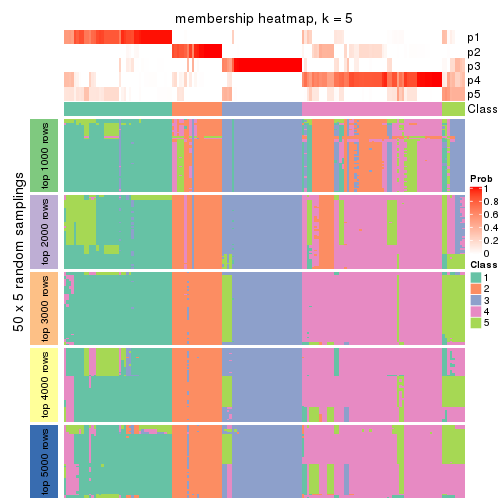
membership_heatmap(res, k = 6)
As soon as we have had the classes for columns, we can look for signatures which are significantly different between classes which can be candidate marks for certain classes. Following are the heatmaps for signatures.
Signature heatmaps where rows are scaled:
get_signatures(res, k = 2)
get_signatures(res, k = 3)
get_signatures(res, k = 4)

get_signatures(res, k = 5)
get_signatures(res, k = 6)
Signature heatmaps where rows are not scaled:
get_signatures(res, k = 2, scale_rows = FALSE)
get_signatures(res, k = 3, scale_rows = FALSE)
get_signatures(res, k = 4, scale_rows = FALSE)
get_signatures(res, k = 5, scale_rows = FALSE)
get_signatures(res, k = 6, scale_rows = FALSE)
Compare the overlap of signatures from different k:
compare_signatures(res)
get_signature() returns a data frame invisibly. TO get the list of signatures, the function
call should be assigned to a variable explicitly. In following code, if plot argument is set
to FALSE, no heatmap is plotted while only the differential analysis is performed.
# code only for demonstration
tb = get_signature(res, k = ..., plot = FALSE)
An example of the output of tb is:
#> which_row fdr mean_1 mean_2 scaled_mean_1 scaled_mean_2 km
#> 1 38 0.042760348 8.373488 9.131774 -0.5533452 0.5164555 1
#> 2 40 0.018707592 7.106213 8.469186 -0.6173731 0.5762149 1
#> 3 55 0.019134737 10.221463 11.207825 -0.6159697 0.5749050 1
#> 4 59 0.006059896 5.921854 7.869574 -0.6899429 0.6439467 1
#> 5 60 0.018055526 8.928898 10.211722 -0.6204761 0.5791110 1
#> 6 98 0.009384629 15.714769 14.887706 0.6635654 -0.6193277 2
...
The columns in tb are:
which_row: row indices corresponding to the input matrix.fdr: FDR for the differential test. mean_x: The mean value in group x.scaled_mean_x: The mean value in group x after rows are scaled.km: Row groups if k-means clustering is applied to rows.UMAP plot which shows how samples are separated.
dimension_reduction(res, k = 2, method = "UMAP")
dimension_reduction(res, k = 3, method = "UMAP")
dimension_reduction(res, k = 4, method = "UMAP")
dimension_reduction(res, k = 5, method = "UMAP")
dimension_reduction(res, k = 6, method = "UMAP")
Following heatmap shows how subgroups are split when increasing k:
collect_classes(res)
If matrix rows can be associated to genes, consider to use GO_Enrichment(res,
...) to perform function enrichment for the signature genes.
The object with results only for a single top-value method and a single partition method can be extracted as:
res = res_list["SD", "mclust"]
# you can also extract it by
# res = res_list["SD:mclust"]
A summary of res and all the functions that can be applied to it:
res
#> A 'ConsensusPartition' object with k = 2, 3, 4, 5, 6.
#> On a matrix with 14410 rows and 160 columns.
#> Top rows (1000, 2000, 3000, 4000, 5000) are extracted by 'SD' method.
#> Subgroups are detected by 'mclust' method.
#> Performed in total 1250 partitions by row resampling.
#> Best k for subgroups seems to be 3.
#>
#> Following methods can be applied to this 'ConsensusPartition' object:
#> [1] "cola_report" "collect_classes" "collect_plots"
#> [4] "collect_stats" "colnames" "compare_signatures"
#> [7] "consensus_heatmap" "dimension_reduction" "functional_enrichment"
#> [10] "get_anno_col" "get_anno" "get_classes"
#> [13] "get_consensus" "get_matrix" "get_membership"
#> [16] "get_param" "get_signatures" "get_stats"
#> [19] "is_best_k" "is_stable_k" "membership_heatmap"
#> [22] "ncol" "nrow" "plot_ecdf"
#> [25] "rownames" "select_partition_number" "show"
#> [28] "suggest_best_k" "test_to_known_factors"
collect_plots() function collects all the plots made from res for all k (number of partitions)
into one single page to provide an easy and fast comparison between different k.
collect_plots(res)
The plots are:
k and the heatmap of
predicted classes for each k.k.k.k.All the plots in panels can be made by individual functions and they are plotted later in this section.
select_partition_number() produces several plots showing different
statistics for choosing “optimized” k. There are following statistics:
k;k, the area increased is defined as \(A_k - A_{k-1}\).The detailed explanations of these statistics can be found in the cola vignette.
Generally speaking, lower PAC score, higher mean silhouette score or higher
concordance corresponds to better partition. Rand index and Jaccard index
measure how similar the current partition is compared to partition with k-1.
If they are too similar, we won't accept k is better than k-1.
select_partition_number(res)
The numeric values for all these statistics can be obtained by get_stats().
get_stats(res)
#> k 1-PAC mean_silhouette concordance area_increased Rand Jaccard
#> 2 2 0.324 0.803 0.797 0.3961 0.532 0.532
#> 3 3 0.504 0.635 0.803 0.5546 0.778 0.598
#> 4 4 0.524 0.659 0.784 0.1670 0.852 0.611
#> 5 5 0.646 0.640 0.794 0.0795 0.920 0.718
#> 6 6 0.688 0.619 0.770 0.0442 0.959 0.828
suggest_best_k() suggests the best \(k\) based on these statistics. The rules are as follows:
NA.suggest_best_k(res)
#> [1] 3
Following shows the table of the partitions (You need to click the show/hide
code output link to see it). The membership matrix (columns with name p*)
is inferred by
clue::cl_consensus()
function with the SE method. Basically the value in the membership matrix
represents the probability to belong to a certain group. The finall class
label for an item is determined with the group with highest probability it
belongs to.
In get_classes() function, the entropy is calculated from the membership
matrix and the silhouette score is calculated from the consensus matrix.
cbind(get_classes(res, k = 2), get_membership(res, k = 2))
#> class entropy silhouette p1 p2
#> SRR031811 2 0.9286 0.806 0.344 0.656
#> SRR031812 1 0.0672 0.944 0.992 0.008
#> SRR031813 2 0.5178 0.647 0.116 0.884
#> SRR031814 1 0.0000 0.947 1.000 0.000
#> SRR031815 1 0.0000 0.947 1.000 0.000
#> SRR031816 2 0.9358 0.804 0.352 0.648
#> SRR031817 2 0.9393 0.785 0.356 0.644
#> SRR031818 2 0.9754 0.778 0.408 0.592
#> SRR031819 2 0.9608 0.784 0.384 0.616
#> SRR031820 2 0.9580 0.787 0.380 0.620
#> SRR031821 2 0.9358 0.804 0.352 0.648
#> SRR031822 1 0.0000 0.947 1.000 0.000
#> SRR031823 2 0.9286 0.806 0.344 0.656
#> SRR031824 2 0.3584 0.644 0.068 0.932
#> SRR031825 2 0.3584 0.644 0.068 0.932
#> SRR031826 2 0.5178 0.647 0.116 0.884
#> SRR031827 2 0.9358 0.804 0.352 0.648
#> SRR031828 1 0.0000 0.947 1.000 0.000
#> SRR031829 2 0.9286 0.806 0.344 0.656
#> SRR031830 1 0.0000 0.947 1.000 0.000
#> SRR031831 2 0.9393 0.785 0.356 0.644
#> SRR031832 2 0.9393 0.785 0.356 0.644
#> SRR031833 2 0.9775 0.776 0.412 0.588
#> SRR031834 1 0.0672 0.944 0.992 0.008
#> SRR031835 1 0.0672 0.944 0.992 0.008
#> SRR031836 2 0.9393 0.785 0.356 0.644
#> SRR031837 2 0.9393 0.785 0.356 0.644
#> SRR031838 2 0.5178 0.647 0.116 0.884
#> SRR031839 2 0.9608 0.786 0.384 0.616
#> SRR031840 1 0.0000 0.947 1.000 0.000
#> SRR031841 1 0.0000 0.947 1.000 0.000
#> SRR031842 2 0.3584 0.644 0.068 0.932
#> SRR031843 2 0.9522 0.786 0.372 0.628
#> SRR031844 2 0.9833 0.766 0.424 0.576
#> SRR031845 2 0.9248 0.805 0.340 0.660
#> SRR031846 1 0.7299 0.578 0.796 0.204
#> SRR031847 2 0.9393 0.785 0.356 0.644
#> SRR031848 2 0.9393 0.785 0.356 0.644
#> SRR031849 2 0.9393 0.785 0.356 0.644
#> SRR031850 2 0.3584 0.644 0.068 0.932
#> SRR031851 2 0.3584 0.644 0.068 0.932
#> SRR031852 1 0.0938 0.942 0.988 0.012
#> SRR031853 1 0.0938 0.942 0.988 0.012
#> SRR031854 1 0.0938 0.942 0.988 0.012
#> SRR031855 2 0.5294 0.648 0.120 0.880
#> SRR031857 2 0.9358 0.804 0.352 0.648
#> SRR031858 2 0.9209 0.806 0.336 0.664
#> SRR031859 2 0.3584 0.644 0.068 0.932
#> SRR031860 2 0.3584 0.644 0.068 0.932
#> SRR031861 2 0.3584 0.644 0.068 0.932
#> SRR031862 1 0.0000 0.947 1.000 0.000
#> SRR031863 2 0.9248 0.807 0.340 0.660
#> SRR031864 2 0.3584 0.644 0.068 0.932
#> SRR031865 2 0.9710 0.783 0.400 0.600
#> SRR031866 1 0.0000 0.947 1.000 0.000
#> SRR031867 2 0.9248 0.807 0.340 0.660
#> SRR031868 2 0.9795 0.773 0.416 0.584
#> SRR031869 1 0.0672 0.944 0.992 0.008
#> SRR031870 2 0.9209 0.806 0.336 0.664
#> SRR031871 2 0.9775 0.727 0.412 0.588
#> SRR031872 1 0.0000 0.947 1.000 0.000
#> SRR031873 1 0.0000 0.947 1.000 0.000
#> SRR031874 1 0.0938 0.942 0.988 0.012
#> SRR031875 2 0.9580 0.787 0.380 0.620
#> SRR031876 1 0.0000 0.947 1.000 0.000
#> SRR031877 1 0.6973 0.644 0.812 0.188
#> SRR031878 2 0.9286 0.806 0.344 0.656
#> SRR031879 2 0.9608 0.784 0.384 0.616
#> SRR031880 2 0.9286 0.806 0.344 0.656
#> SRR031881 2 0.9358 0.804 0.352 0.648
#> SRR031882 2 0.9608 0.784 0.384 0.616
#> SRR031883 2 0.9580 0.787 0.380 0.620
#> SRR031884 2 0.9393 0.785 0.356 0.644
#> SRR031885 2 0.5059 0.645 0.112 0.888
#> SRR031886 2 0.9393 0.785 0.356 0.644
#> SRR031887 1 0.0000 0.947 1.000 0.000
#> SRR031888 2 0.9248 0.807 0.340 0.660
#> SRR031889 1 0.0672 0.944 0.992 0.008
#> SRR031890 1 0.6973 0.624 0.812 0.188
#> SRR031891 2 0.9248 0.805 0.340 0.660
#> SRR031892 2 0.9815 0.770 0.420 0.580
#> SRR031893 1 0.0938 0.942 0.988 0.012
#> SRR031894 2 0.5178 0.647 0.116 0.884
#> SRR031895 1 0.1843 0.919 0.972 0.028
#> SRR031896 2 0.5059 0.645 0.112 0.888
#> SRR031897 2 0.8763 0.787 0.296 0.704
#> SRR031898 2 0.3584 0.644 0.068 0.932
#> SRR031899 2 0.9393 0.785 0.356 0.644
#> SRR031900 2 0.9248 0.807 0.340 0.660
#> SRR031901 2 0.9209 0.806 0.336 0.664
#> SRR031902 2 0.6623 0.636 0.172 0.828
#> SRR031903 1 0.0000 0.947 1.000 0.000
#> SRR031904 2 0.9815 0.770 0.420 0.580
#> SRR031905 1 0.0000 0.947 1.000 0.000
#> SRR031906 1 0.0672 0.944 0.992 0.008
#> SRR031907 2 0.9286 0.806 0.344 0.656
#> SRR031908 2 0.9393 0.785 0.356 0.644
#> SRR031909 1 0.0000 0.947 1.000 0.000
#> SRR031910 2 0.9393 0.785 0.356 0.644
#> SRR031911 2 0.9580 0.787 0.380 0.620
#> SRR031912 1 0.0938 0.942 0.988 0.012
#> SRR031913 2 0.9248 0.807 0.340 0.660
#> SRR031914 1 0.0000 0.947 1.000 0.000
#> SRR031915 2 0.9833 0.766 0.424 0.576
#> SRR031916 2 0.9815 0.770 0.420 0.580
#> SRR031917 1 0.2043 0.917 0.968 0.032
#> SRR031918 2 0.9427 0.786 0.360 0.640
#> SRR031919 1 0.0000 0.947 1.000 0.000
#> SRR031920 2 0.9393 0.785 0.356 0.644
#> SRR031921 2 0.9427 0.790 0.360 0.640
#> SRR031922 2 0.9209 0.806 0.336 0.664
#> SRR031923 2 0.3584 0.644 0.068 0.932
#> SRR031924 1 0.0938 0.942 0.988 0.012
#> SRR031925 2 0.9358 0.804 0.352 0.648
#> SRR031926 2 0.9248 0.804 0.340 0.660
#> SRR031927 2 0.7299 0.707 0.204 0.796
#> SRR031928 1 0.0000 0.947 1.000 0.000
#> SRR031929 2 0.9248 0.807 0.340 0.660
#> SRR031930 2 0.3584 0.644 0.068 0.932
#> SRR031931 2 0.9661 0.787 0.392 0.608
#> SRR031932 1 0.0000 0.947 1.000 0.000
#> SRR031933 2 0.3584 0.644 0.068 0.932
#> SRR031934 1 0.1843 0.919 0.972 0.028
#> SRR031935 2 0.9815 0.770 0.420 0.580
#> SRR031936 1 0.0000 0.947 1.000 0.000
#> SRR031937 1 0.0000 0.947 1.000 0.000
#> SRR031938 1 0.2043 0.917 0.968 0.032
#> SRR031939 2 0.5178 0.647 0.116 0.884
#> SRR031940 1 0.0938 0.942 0.988 0.012
#> SRR031941 2 0.9286 0.806 0.344 0.656
#> SRR031942 1 0.6712 0.674 0.824 0.176
#> SRR031943 2 0.9393 0.785 0.356 0.644
#> SRR031944 1 0.9000 0.126 0.684 0.316
#> SRR031945 1 0.4690 0.818 0.900 0.100
#> SRR031946 2 0.9427 0.786 0.360 0.640
#> SRR031947 2 0.9970 0.700 0.468 0.532
#> SRR031948 1 0.0000 0.947 1.000 0.000
#> SRR031949 1 0.0938 0.942 0.988 0.012
#> SRR031950 2 0.9358 0.804 0.352 0.648
#> SRR031951 2 0.9286 0.806 0.344 0.656
#> SRR031952 1 0.0000 0.947 1.000 0.000
#> SRR031953 1 0.0000 0.947 1.000 0.000
#> SRR031954 1 0.6343 0.695 0.840 0.160
#> SRR031955 1 0.9044 0.105 0.680 0.320
#> SRR031956 2 0.9286 0.806 0.344 0.656
#> SRR031957 2 0.9732 0.782 0.404 0.596
#> SRR031958 2 0.9248 0.807 0.340 0.660
#> SRR031959 2 0.9286 0.806 0.344 0.656
#> SRR031960 2 0.9286 0.806 0.344 0.656
#> SRR031961 1 0.0000 0.947 1.000 0.000
#> SRR031962 1 0.0000 0.947 1.000 0.000
#> SRR031963 2 0.9286 0.806 0.344 0.656
#> SRR031964 1 0.0000 0.947 1.000 0.000
#> SRR031965 2 0.3584 0.644 0.068 0.932
#> SRR031966 2 0.3584 0.644 0.068 0.932
#> SRR031967 1 0.0938 0.942 0.988 0.012
#> SRR031968 1 0.0938 0.942 0.988 0.012
#> SRR031969 1 0.0000 0.947 1.000 0.000
#> SRR031970 2 0.5842 0.654 0.140 0.860
#> SRR031971 1 0.0000 0.947 1.000 0.000
cbind(get_classes(res, k = 3), get_membership(res, k = 3))
#> class entropy silhouette p1 p2 p3
#> SRR031811 2 0.6742 0.6291 0.028 0.656 0.316
#> SRR031812 1 0.1753 0.8934 0.952 0.048 0.000
#> SRR031813 2 0.6224 0.2073 0.016 0.688 0.296
#> SRR031814 1 0.1753 0.8934 0.952 0.048 0.000
#> SRR031815 1 0.1753 0.8934 0.952 0.048 0.000
#> SRR031816 2 0.8444 0.5996 0.152 0.612 0.236
#> SRR031817 3 0.1878 0.7716 0.044 0.004 0.952
#> SRR031818 3 0.8465 -0.2418 0.088 0.452 0.460
#> SRR031819 3 0.5179 0.7109 0.088 0.080 0.832
#> SRR031820 3 0.3587 0.7569 0.088 0.020 0.892
#> SRR031821 2 0.8657 0.5992 0.164 0.592 0.244
#> SRR031822 1 0.1753 0.8934 0.952 0.048 0.000
#> SRR031823 2 0.6742 0.6291 0.028 0.656 0.316
#> SRR031824 2 0.0747 0.5899 0.016 0.984 0.000
#> SRR031825 2 0.0747 0.5899 0.016 0.984 0.000
#> SRR031826 2 0.6224 0.2073 0.016 0.688 0.296
#> SRR031827 2 0.8459 0.5984 0.156 0.612 0.232
#> SRR031828 1 0.1753 0.8934 0.952 0.048 0.000
#> SRR031829 2 0.7416 0.6204 0.068 0.656 0.276
#> SRR031830 1 0.1753 0.8934 0.952 0.048 0.000
#> SRR031831 3 0.1878 0.7716 0.044 0.004 0.952
#> SRR031832 3 0.1878 0.7716 0.044 0.004 0.952
#> SRR031833 3 0.8384 -0.0154 0.088 0.392 0.520
#> SRR031834 1 0.1753 0.8934 0.952 0.048 0.000
#> SRR031835 1 0.1753 0.8934 0.952 0.048 0.000
#> SRR031836 3 0.1878 0.7716 0.044 0.004 0.952
#> SRR031837 3 0.1878 0.7716 0.044 0.004 0.952
#> SRR031838 2 0.6193 0.2153 0.016 0.692 0.292
#> SRR031839 3 0.7298 0.5041 0.088 0.220 0.692
#> SRR031840 1 0.0000 0.8942 1.000 0.000 0.000
#> SRR031841 1 0.1753 0.8934 0.952 0.048 0.000
#> SRR031842 2 0.0747 0.5899 0.016 0.984 0.000
#> SRR031843 3 0.2096 0.7718 0.052 0.004 0.944
#> SRR031844 3 0.8264 0.1387 0.088 0.356 0.556
#> SRR031845 2 0.7760 0.5517 0.060 0.580 0.360
#> SRR031846 1 0.9617 -0.0476 0.472 0.248 0.280
#> SRR031847 3 0.1878 0.7716 0.044 0.004 0.952
#> SRR031848 3 0.1989 0.7722 0.048 0.004 0.948
#> SRR031849 3 0.1878 0.7716 0.044 0.004 0.952
#> SRR031850 2 0.1411 0.5940 0.036 0.964 0.000
#> SRR031851 2 0.0747 0.5899 0.016 0.984 0.000
#> SRR031852 1 0.3030 0.8614 0.904 0.004 0.092
#> SRR031853 1 0.3030 0.8614 0.904 0.004 0.092
#> SRR031854 1 0.3030 0.8614 0.904 0.004 0.092
#> SRR031855 2 0.5681 0.3198 0.016 0.748 0.236
#> SRR031857 2 0.8659 0.5947 0.176 0.596 0.228
#> SRR031858 2 0.7406 0.5460 0.044 0.596 0.360
#> SRR031859 2 0.0747 0.5899 0.016 0.984 0.000
#> SRR031860 2 0.0747 0.5899 0.016 0.984 0.000
#> SRR031861 2 0.0747 0.5899 0.016 0.984 0.000
#> SRR031862 1 0.0000 0.8942 1.000 0.000 0.000
#> SRR031863 2 0.7842 0.5726 0.072 0.600 0.328
#> SRR031864 2 0.0747 0.5899 0.016 0.984 0.000
#> SRR031865 3 0.9947 0.1034 0.288 0.336 0.376
#> SRR031866 1 0.1753 0.8934 0.952 0.048 0.000
#> SRR031867 2 0.7864 0.5682 0.072 0.596 0.332
#> SRR031868 2 0.8213 0.5256 0.088 0.568 0.344
#> SRR031869 1 0.1753 0.8934 0.952 0.048 0.000
#> SRR031870 2 0.7676 0.5510 0.056 0.584 0.360
#> SRR031871 2 0.2590 0.5998 0.072 0.924 0.004
#> SRR031872 1 0.0000 0.8942 1.000 0.000 0.000
#> SRR031873 1 0.1753 0.8934 0.952 0.048 0.000
#> SRR031874 1 0.3030 0.8614 0.904 0.004 0.092
#> SRR031875 3 0.2945 0.7634 0.088 0.004 0.908
#> SRR031876 1 0.0000 0.8942 1.000 0.000 0.000
#> SRR031877 3 0.9981 -0.0864 0.316 0.320 0.364
#> SRR031878 2 0.6742 0.6291 0.028 0.656 0.316
#> SRR031879 3 0.5346 0.7023 0.088 0.088 0.824
#> SRR031880 2 0.6742 0.6291 0.028 0.656 0.316
#> SRR031881 2 0.8683 0.5942 0.172 0.592 0.236
#> SRR031882 3 0.6332 0.6327 0.088 0.144 0.768
#> SRR031883 3 0.3722 0.7562 0.088 0.024 0.888
#> SRR031884 3 0.1878 0.7716 0.044 0.004 0.952
#> SRR031885 2 0.6824 -0.0442 0.016 0.576 0.408
#> SRR031886 3 0.1878 0.7716 0.044 0.004 0.952
#> SRR031887 1 0.0000 0.8942 1.000 0.000 0.000
#> SRR031888 2 0.7697 0.6145 0.084 0.644 0.272
#> SRR031889 1 0.1753 0.8934 0.952 0.048 0.000
#> SRR031890 1 0.9198 0.1089 0.528 0.192 0.280
#> SRR031891 2 0.7760 0.5517 0.060 0.580 0.360
#> SRR031892 3 0.8295 0.1098 0.088 0.364 0.548
#> SRR031893 1 0.3879 0.8087 0.848 0.000 0.152
#> SRR031894 2 0.7027 0.2038 0.044 0.660 0.296
#> SRR031895 1 0.2772 0.8695 0.916 0.080 0.004
#> SRR031896 2 0.6936 -0.1518 0.016 0.524 0.460
#> SRR031897 2 0.2066 0.5966 0.060 0.940 0.000
#> SRR031898 2 0.0747 0.5899 0.016 0.984 0.000
#> SRR031899 3 0.2663 0.7690 0.044 0.024 0.932
#> SRR031900 2 0.7864 0.5682 0.072 0.596 0.332
#> SRR031901 2 0.7676 0.5510 0.056 0.584 0.360
#> SRR031902 2 0.1643 0.5950 0.044 0.956 0.000
#> SRR031903 1 0.1753 0.8934 0.952 0.048 0.000
#> SRR031904 2 0.8434 0.3561 0.088 0.496 0.416
#> SRR031905 1 0.0000 0.8942 1.000 0.000 0.000
#> SRR031906 1 0.1753 0.8934 0.952 0.048 0.000
#> SRR031907 2 0.7384 0.6219 0.068 0.660 0.272
#> SRR031908 3 0.1878 0.7716 0.044 0.004 0.952
#> SRR031909 1 0.0000 0.8942 1.000 0.000 0.000
#> SRR031910 3 0.2663 0.7690 0.044 0.024 0.932
#> SRR031911 3 0.2945 0.7634 0.088 0.004 0.908
#> SRR031912 1 0.3030 0.8614 0.904 0.004 0.092
#> SRR031913 2 0.7465 0.6178 0.072 0.656 0.272
#> SRR031914 1 0.0000 0.8942 1.000 0.000 0.000
#> SRR031915 2 0.7497 0.6154 0.072 0.652 0.276
#> SRR031916 2 0.8068 0.5689 0.088 0.596 0.316
#> SRR031917 1 0.5754 0.5064 0.700 0.296 0.004
#> SRR031918 3 0.2590 0.7670 0.072 0.004 0.924
#> SRR031919 1 0.0000 0.8942 1.000 0.000 0.000
#> SRR031920 3 0.2663 0.7690 0.044 0.024 0.932
#> SRR031921 3 0.7831 0.4308 0.088 0.280 0.632
#> SRR031922 2 0.7406 0.5460 0.044 0.596 0.360
#> SRR031923 2 0.0747 0.5899 0.016 0.984 0.000
#> SRR031924 1 0.3941 0.8040 0.844 0.000 0.156
#> SRR031925 2 0.8637 0.5975 0.168 0.596 0.236
#> SRR031926 2 0.7180 0.6274 0.060 0.672 0.268
#> SRR031927 3 0.6319 0.5627 0.040 0.228 0.732
#> SRR031928 1 0.0000 0.8942 1.000 0.000 0.000
#> SRR031929 2 0.7842 0.5726 0.072 0.600 0.328
#> SRR031930 2 0.0747 0.5899 0.016 0.984 0.000
#> SRR031931 1 0.9994 -0.3320 0.344 0.340 0.316
#> SRR031932 1 0.1753 0.8934 0.952 0.048 0.000
#> SRR031933 2 0.0747 0.5899 0.016 0.984 0.000
#> SRR031934 1 0.2945 0.8634 0.908 0.088 0.004
#> SRR031935 2 0.8194 0.5326 0.088 0.572 0.340
#> SRR031936 1 0.0000 0.8942 1.000 0.000 0.000
#> SRR031937 1 0.0000 0.8942 1.000 0.000 0.000
#> SRR031938 1 0.5845 0.4790 0.688 0.308 0.004
#> SRR031939 2 0.6129 0.2313 0.016 0.700 0.284
#> SRR031940 1 0.3030 0.8614 0.904 0.004 0.092
#> SRR031941 2 0.6715 0.6301 0.028 0.660 0.312
#> SRR031942 3 0.9974 -0.0523 0.340 0.300 0.360
#> SRR031943 3 0.2663 0.7690 0.044 0.024 0.932
#> SRR031944 2 0.9820 0.2779 0.264 0.424 0.312
#> SRR031945 1 0.6561 0.6883 0.756 0.100 0.144
#> SRR031946 3 0.2590 0.7670 0.072 0.004 0.924
#> SRR031947 2 0.7924 0.5891 0.084 0.612 0.304
#> SRR031948 1 0.0000 0.8942 1.000 0.000 0.000
#> SRR031949 1 0.3030 0.8614 0.904 0.004 0.092
#> SRR031950 2 0.8489 0.6017 0.136 0.596 0.268
#> SRR031951 2 0.6742 0.6291 0.028 0.656 0.316
#> SRR031952 1 0.0237 0.8933 0.996 0.000 0.004
#> SRR031953 1 0.0000 0.8942 1.000 0.000 0.000
#> SRR031954 1 0.7633 0.5667 0.684 0.132 0.184
#> SRR031955 2 0.9790 0.2954 0.260 0.432 0.308
#> SRR031956 2 0.6742 0.6291 0.028 0.656 0.316
#> SRR031957 3 0.8577 0.1309 0.108 0.356 0.536
#> SRR031958 2 0.7250 0.6254 0.056 0.656 0.288
#> SRR031959 2 0.7416 0.6204 0.068 0.656 0.276
#> SRR031960 2 0.6742 0.6291 0.028 0.656 0.316
#> SRR031961 1 0.0000 0.8942 1.000 0.000 0.000
#> SRR031962 1 0.0000 0.8942 1.000 0.000 0.000
#> SRR031963 2 0.6742 0.6291 0.028 0.656 0.316
#> SRR031964 1 0.0237 0.8933 0.996 0.000 0.004
#> SRR031965 2 0.0747 0.5899 0.016 0.984 0.000
#> SRR031966 2 0.0747 0.5899 0.016 0.984 0.000
#> SRR031967 1 0.3030 0.8614 0.904 0.004 0.092
#> SRR031968 1 0.3030 0.8614 0.904 0.004 0.092
#> SRR031969 1 0.2301 0.8786 0.936 0.004 0.060
#> SRR031970 2 0.3272 0.5329 0.016 0.904 0.080
#> SRR031971 1 0.1753 0.8934 0.952 0.048 0.000
cbind(get_classes(res, k = 4), get_membership(res, k = 4))
#> class entropy silhouette p1 p2 p3 p4
#> SRR031811 4 0.0000 0.7194 0.000 0.000 0.000 1.000
#> SRR031812 1 0.3900 0.8430 0.848 0.052 0.004 0.096
#> SRR031813 2 0.5582 0.4111 0.000 0.576 0.400 0.024
#> SRR031814 1 0.2943 0.8502 0.892 0.032 0.000 0.076
#> SRR031815 1 0.2469 0.8346 0.892 0.108 0.000 0.000
#> SRR031816 4 0.3557 0.7005 0.108 0.036 0.000 0.856
#> SRR031817 3 0.2814 0.7957 0.032 0.052 0.908 0.008
#> SRR031818 3 0.8456 0.2344 0.032 0.220 0.424 0.324
#> SRR031819 3 0.7329 0.5993 0.040 0.104 0.604 0.252
#> SRR031820 3 0.6055 0.6218 0.032 0.036 0.680 0.252
#> SRR031821 4 0.5573 0.5590 0.272 0.052 0.000 0.676
#> SRR031822 1 0.2943 0.8502 0.892 0.032 0.000 0.076
#> SRR031823 4 0.0000 0.7194 0.000 0.000 0.000 1.000
#> SRR031824 2 0.3907 0.7341 0.000 0.768 0.000 0.232
#> SRR031825 2 0.3907 0.7341 0.000 0.768 0.000 0.232
#> SRR031826 2 0.5636 0.3673 0.000 0.552 0.424 0.024
#> SRR031827 4 0.3557 0.7005 0.108 0.036 0.000 0.856
#> SRR031828 1 0.2943 0.8502 0.892 0.032 0.000 0.076
#> SRR031829 4 0.0895 0.7230 0.020 0.004 0.000 0.976
#> SRR031830 1 0.2469 0.8346 0.892 0.108 0.000 0.000
#> SRR031831 3 0.3127 0.7902 0.032 0.068 0.892 0.008
#> SRR031832 3 0.3272 0.7865 0.032 0.076 0.884 0.008
#> SRR031833 4 0.6614 -0.0869 0.032 0.028 0.432 0.508
#> SRR031834 1 0.2943 0.8502 0.892 0.032 0.000 0.076
#> SRR031835 1 0.3836 0.8451 0.852 0.052 0.004 0.092
#> SRR031836 3 0.2131 0.8041 0.032 0.000 0.932 0.036
#> SRR031837 3 0.1356 0.8007 0.032 0.000 0.960 0.008
#> SRR031838 2 0.4744 0.5970 0.000 0.736 0.240 0.024
#> SRR031839 3 0.6357 0.4988 0.032 0.028 0.604 0.336
#> SRR031840 1 0.2124 0.8396 0.924 0.068 0.008 0.000
#> SRR031841 1 0.2469 0.8346 0.892 0.108 0.000 0.000
#> SRR031842 2 0.3907 0.7341 0.000 0.768 0.000 0.232
#> SRR031843 3 0.4373 0.7804 0.032 0.076 0.840 0.052
#> SRR031844 4 0.8847 0.3382 0.268 0.168 0.092 0.472
#> SRR031845 4 0.4244 0.6670 0.032 0.000 0.168 0.800
#> SRR031846 4 0.7505 0.2650 0.324 0.200 0.000 0.476
#> SRR031847 3 0.3272 0.7865 0.032 0.076 0.884 0.008
#> SRR031848 3 0.2224 0.8041 0.032 0.000 0.928 0.040
#> SRR031849 3 0.3272 0.7865 0.032 0.076 0.884 0.008
#> SRR031850 2 0.4072 0.7104 0.000 0.748 0.000 0.252
#> SRR031851 2 0.3907 0.7341 0.000 0.768 0.000 0.232
#> SRR031852 1 0.3351 0.8220 0.844 0.008 0.148 0.000
#> SRR031853 1 0.3351 0.8220 0.844 0.008 0.148 0.000
#> SRR031854 1 0.3479 0.8212 0.840 0.012 0.148 0.000
#> SRR031855 2 0.5349 0.5006 0.000 0.640 0.336 0.024
#> SRR031857 4 0.3758 0.6917 0.104 0.048 0.000 0.848
#> SRR031858 4 0.4418 0.6516 0.032 0.000 0.184 0.784
#> SRR031859 2 0.3907 0.7341 0.000 0.768 0.000 0.232
#> SRR031860 2 0.3907 0.7341 0.000 0.768 0.000 0.232
#> SRR031861 2 0.3907 0.7341 0.000 0.768 0.000 0.232
#> SRR031862 1 0.1151 0.8485 0.968 0.024 0.008 0.000
#> SRR031863 4 0.3410 0.7167 0.032 0.044 0.036 0.888
#> SRR031864 2 0.3907 0.7341 0.000 0.768 0.000 0.232
#> SRR031865 2 0.9276 -0.1077 0.120 0.372 0.344 0.164
#> SRR031866 1 0.2845 0.8503 0.896 0.028 0.000 0.076
#> SRR031867 4 0.2399 0.7236 0.032 0.000 0.048 0.920
#> SRR031868 4 0.8542 -0.0875 0.032 0.236 0.336 0.396
#> SRR031869 1 0.2943 0.8502 0.892 0.032 0.000 0.076
#> SRR031870 4 0.5492 0.4617 0.032 0.000 0.328 0.640
#> SRR031871 2 0.5475 0.3052 0.036 0.656 0.000 0.308
#> SRR031872 1 0.1593 0.8508 0.956 0.024 0.004 0.016
#> SRR031873 1 0.2943 0.8502 0.892 0.032 0.000 0.076
#> SRR031874 1 0.3575 0.8241 0.844 0.008 0.140 0.008
#> SRR031875 3 0.2814 0.7986 0.032 0.008 0.908 0.052
#> SRR031876 1 0.2597 0.8282 0.916 0.040 0.040 0.004
#> SRR031877 4 0.9640 0.0933 0.316 0.172 0.172 0.340
#> SRR031878 4 0.0188 0.7182 0.000 0.004 0.000 0.996
#> SRR031879 3 0.7303 0.6048 0.040 0.104 0.608 0.248
#> SRR031880 4 0.0000 0.7194 0.000 0.000 0.000 1.000
#> SRR031881 4 0.6197 0.5020 0.324 0.072 0.000 0.604
#> SRR031882 3 0.6231 0.5180 0.032 0.024 0.616 0.328
#> SRR031883 3 0.6055 0.6218 0.032 0.036 0.680 0.252
#> SRR031884 3 0.3272 0.7865 0.032 0.076 0.884 0.008
#> SRR031885 2 0.5550 0.3590 0.000 0.552 0.428 0.020
#> SRR031886 3 0.1356 0.8007 0.032 0.000 0.960 0.008
#> SRR031887 1 0.2124 0.8396 0.924 0.068 0.008 0.000
#> SRR031888 4 0.5399 0.3880 0.032 0.280 0.004 0.684
#> SRR031889 1 0.2943 0.8502 0.892 0.032 0.000 0.076
#> SRR031890 4 0.7599 0.0982 0.376 0.200 0.000 0.424
#> SRR031891 4 0.4289 0.6641 0.032 0.000 0.172 0.796
#> SRR031892 4 0.9052 0.3205 0.200 0.172 0.144 0.484
#> SRR031893 1 0.4362 0.8036 0.808 0.012 0.156 0.024
#> SRR031894 2 0.5636 0.3673 0.000 0.552 0.424 0.024
#> SRR031895 1 0.5272 0.7207 0.680 0.288 0.000 0.032
#> SRR031896 2 0.5576 0.3230 0.000 0.536 0.444 0.020
#> SRR031897 2 0.5775 0.4249 0.032 0.560 0.000 0.408
#> SRR031898 2 0.3907 0.7341 0.000 0.768 0.000 0.232
#> SRR031899 3 0.2313 0.8038 0.032 0.000 0.924 0.044
#> SRR031900 4 0.3404 0.6994 0.032 0.000 0.104 0.864
#> SRR031901 4 0.5511 0.4549 0.032 0.000 0.332 0.636
#> SRR031902 2 0.2654 0.6556 0.004 0.888 0.000 0.108
#> SRR031903 1 0.2943 0.8502 0.892 0.032 0.000 0.076
#> SRR031904 4 0.6437 0.3025 0.032 0.036 0.316 0.616
#> SRR031905 1 0.1362 0.8517 0.964 0.020 0.004 0.012
#> SRR031906 1 0.2943 0.8502 0.892 0.032 0.000 0.076
#> SRR031907 4 0.1624 0.7147 0.020 0.028 0.000 0.952
#> SRR031908 3 0.3272 0.7865 0.032 0.076 0.884 0.008
#> SRR031909 1 0.2597 0.8282 0.916 0.040 0.040 0.004
#> SRR031910 3 0.1356 0.8007 0.032 0.000 0.960 0.008
#> SRR031911 3 0.2368 0.8042 0.032 0.008 0.928 0.032
#> SRR031912 1 0.3484 0.8233 0.844 0.008 0.144 0.004
#> SRR031913 4 0.2023 0.7196 0.028 0.028 0.004 0.940
#> SRR031914 1 0.2124 0.8396 0.924 0.068 0.008 0.000
#> SRR031915 4 0.4406 0.6954 0.036 0.060 0.064 0.840
#> SRR031916 4 0.5632 0.5923 0.032 0.052 0.168 0.748
#> SRR031917 1 0.7365 0.4192 0.564 0.224 0.008 0.204
#> SRR031918 3 0.2982 0.7944 0.032 0.004 0.896 0.068
#> SRR031919 1 0.1863 0.8381 0.944 0.012 0.040 0.004
#> SRR031920 3 0.1610 0.8033 0.032 0.000 0.952 0.016
#> SRR031921 3 0.8105 0.3778 0.032 0.200 0.512 0.256
#> SRR031922 4 0.5272 0.5249 0.032 0.000 0.288 0.680
#> SRR031923 2 0.3907 0.7341 0.000 0.768 0.000 0.232
#> SRR031924 1 0.4556 0.7984 0.800 0.012 0.156 0.032
#> SRR031925 4 0.3674 0.6931 0.104 0.044 0.000 0.852
#> SRR031926 4 0.5085 0.4413 0.032 0.260 0.000 0.708
#> SRR031927 3 0.6976 0.3676 0.000 0.240 0.580 0.180
#> SRR031928 1 0.0804 0.8503 0.980 0.012 0.008 0.000
#> SRR031929 4 0.4100 0.6965 0.032 0.080 0.036 0.852
#> SRR031930 2 0.3907 0.7341 0.000 0.768 0.000 0.232
#> SRR031931 2 0.9174 -0.0611 0.124 0.392 0.340 0.144
#> SRR031932 1 0.2943 0.8502 0.892 0.032 0.000 0.076
#> SRR031933 2 0.3907 0.7341 0.000 0.768 0.000 0.232
#> SRR031934 1 0.5339 0.7222 0.688 0.272 0.000 0.040
#> SRR031935 4 0.5720 0.5715 0.032 0.048 0.184 0.736
#> SRR031936 1 0.2310 0.8395 0.920 0.068 0.008 0.004
#> SRR031937 1 0.1863 0.8381 0.944 0.012 0.040 0.004
#> SRR031938 1 0.7365 0.4192 0.564 0.224 0.008 0.204
#> SRR031939 2 0.5582 0.4105 0.000 0.576 0.400 0.024
#> SRR031940 1 0.3351 0.8220 0.844 0.008 0.148 0.000
#> SRR031941 4 0.0000 0.7194 0.000 0.000 0.000 1.000
#> SRR031942 1 0.9643 -0.0665 0.332 0.172 0.172 0.324
#> SRR031943 3 0.1488 0.8017 0.032 0.000 0.956 0.012
#> SRR031944 4 0.6556 0.5622 0.160 0.172 0.008 0.660
#> SRR031945 1 0.8108 0.5568 0.568 0.176 0.068 0.188
#> SRR031946 3 0.2797 0.7958 0.032 0.000 0.900 0.068
#> SRR031947 4 0.4885 0.6695 0.044 0.048 0.096 0.812
#> SRR031948 1 0.1256 0.8562 0.964 0.000 0.008 0.028
#> SRR031949 1 0.3351 0.8220 0.844 0.008 0.148 0.000
#> SRR031950 4 0.4786 0.6653 0.108 0.104 0.000 0.788
#> SRR031951 4 0.0000 0.7194 0.000 0.000 0.000 1.000
#> SRR031952 1 0.4267 0.7485 0.772 0.216 0.008 0.004
#> SRR031953 1 0.2124 0.8396 0.924 0.068 0.008 0.000
#> SRR031954 1 0.8479 0.4633 0.524 0.176 0.076 0.224
#> SRR031955 4 0.5998 0.6076 0.108 0.192 0.004 0.696
#> SRR031956 4 0.0000 0.7194 0.000 0.000 0.000 1.000
#> SRR031957 4 0.7632 -0.1092 0.032 0.096 0.416 0.456
#> SRR031958 4 0.0707 0.7235 0.020 0.000 0.000 0.980
#> SRR031959 4 0.0707 0.7235 0.020 0.000 0.000 0.980
#> SRR031960 4 0.0000 0.7194 0.000 0.000 0.000 1.000
#> SRR031961 1 0.2271 0.8504 0.916 0.000 0.008 0.076
#> SRR031962 1 0.2124 0.8396 0.924 0.068 0.008 0.000
#> SRR031963 4 0.0000 0.7194 0.000 0.000 0.000 1.000
#> SRR031964 1 0.4267 0.7485 0.772 0.216 0.008 0.004
#> SRR031965 2 0.3907 0.7341 0.000 0.768 0.000 0.232
#> SRR031966 2 0.3907 0.7341 0.000 0.768 0.000 0.232
#> SRR031967 1 0.3351 0.8220 0.844 0.008 0.148 0.000
#> SRR031968 1 0.3351 0.8220 0.844 0.008 0.148 0.000
#> SRR031969 1 0.3959 0.8417 0.856 0.016 0.052 0.076
#> SRR031970 2 0.4669 0.6305 0.000 0.764 0.200 0.036
#> SRR031971 1 0.2469 0.8346 0.892 0.108 0.000 0.000
cbind(get_classes(res, k = 5), get_membership(res, k = 5))
#> class entropy silhouette p1 p2 p3 p4 p5
#> SRR031811 4 0.1478 0.7528 0.000 0.064 0.000 0.936 0.000
#> SRR031812 1 0.1591 0.7168 0.940 0.004 0.000 0.004 0.052
#> SRR031813 2 0.6566 0.3459 0.000 0.504 0.352 0.024 0.120
#> SRR031814 1 0.0404 0.7580 0.988 0.000 0.000 0.000 0.012
#> SRR031815 1 0.0566 0.7575 0.984 0.004 0.000 0.000 0.012
#> SRR031816 4 0.3009 0.7442 0.052 0.064 0.000 0.876 0.008
#> SRR031817 3 0.0000 0.8304 0.000 0.000 1.000 0.000 0.000
#> SRR031818 3 0.7336 -0.0837 0.000 0.380 0.396 0.180 0.044
#> SRR031819 3 0.4170 0.7610 0.004 0.056 0.812 0.108 0.020
#> SRR031820 3 0.4418 0.7454 0.004 0.040 0.796 0.124 0.036
#> SRR031821 4 0.2244 0.7585 0.040 0.024 0.000 0.920 0.016
#> SRR031822 1 0.0324 0.7561 0.992 0.004 0.000 0.000 0.004
#> SRR031823 4 0.1197 0.7572 0.000 0.048 0.000 0.952 0.000
#> SRR031824 2 0.1197 0.7849 0.000 0.952 0.000 0.048 0.000
#> SRR031825 2 0.2179 0.7636 0.000 0.888 0.000 0.112 0.000
#> SRR031826 2 0.6632 0.2459 0.000 0.464 0.392 0.024 0.120
#> SRR031827 4 0.3073 0.7426 0.052 0.068 0.000 0.872 0.008
#> SRR031828 1 0.0404 0.7580 0.988 0.000 0.000 0.000 0.012
#> SRR031829 4 0.0880 0.7603 0.000 0.032 0.000 0.968 0.000
#> SRR031830 1 0.0566 0.7575 0.984 0.004 0.000 0.000 0.012
#> SRR031831 3 0.0000 0.8304 0.000 0.000 1.000 0.000 0.000
#> SRR031832 3 0.0000 0.8304 0.000 0.000 1.000 0.000 0.000
#> SRR031833 3 0.5652 0.6073 0.000 0.052 0.660 0.244 0.044
#> SRR031834 1 0.0324 0.7561 0.992 0.004 0.000 0.000 0.004
#> SRR031835 1 0.1591 0.7168 0.940 0.004 0.000 0.004 0.052
#> SRR031836 3 0.1399 0.8282 0.000 0.000 0.952 0.028 0.020
#> SRR031837 3 0.0000 0.8304 0.000 0.000 1.000 0.000 0.000
#> SRR031838 2 0.4945 0.6814 0.000 0.748 0.140 0.024 0.088
#> SRR031839 3 0.4082 0.7232 0.000 0.044 0.788 0.160 0.008
#> SRR031840 5 0.4256 0.7721 0.436 0.000 0.000 0.000 0.564
#> SRR031841 1 0.0451 0.7559 0.988 0.008 0.000 0.000 0.004
#> SRR031842 2 0.0963 0.7859 0.000 0.964 0.000 0.036 0.000
#> SRR031843 3 0.0451 0.8283 0.004 0.000 0.988 0.000 0.008
#> SRR031844 4 0.6123 0.6536 0.084 0.012 0.048 0.672 0.184
#> SRR031845 4 0.3670 0.7120 0.000 0.012 0.188 0.792 0.008
#> SRR031846 4 0.6301 0.6186 0.092 0.052 0.004 0.636 0.216
#> SRR031847 3 0.0000 0.8304 0.000 0.000 1.000 0.000 0.000
#> SRR031848 3 0.1485 0.8272 0.000 0.000 0.948 0.032 0.020
#> SRR031849 3 0.0000 0.8304 0.000 0.000 1.000 0.000 0.000
#> SRR031850 2 0.1544 0.7776 0.000 0.932 0.000 0.068 0.000
#> SRR031851 2 0.0963 0.7859 0.000 0.964 0.000 0.036 0.000
#> SRR031852 1 0.4427 0.6940 0.792 0.024 0.084 0.000 0.100
#> SRR031853 1 0.4427 0.6940 0.792 0.024 0.084 0.000 0.100
#> SRR031854 1 0.4407 0.6907 0.796 0.028 0.084 0.000 0.092
#> SRR031855 2 0.5885 0.5969 0.000 0.652 0.204 0.024 0.120
#> SRR031857 4 0.3318 0.7395 0.048 0.048 0.000 0.868 0.036
#> SRR031858 4 0.4963 0.5120 0.000 0.040 0.352 0.608 0.000
#> SRR031859 2 0.0963 0.7859 0.000 0.964 0.000 0.036 0.000
#> SRR031860 2 0.0963 0.7859 0.000 0.964 0.000 0.036 0.000
#> SRR031861 2 0.0963 0.7859 0.000 0.964 0.000 0.036 0.000
#> SRR031862 1 0.4307 -0.6712 0.504 0.000 0.000 0.000 0.496
#> SRR031863 4 0.5798 0.5053 0.000 0.108 0.296 0.592 0.004
#> SRR031864 2 0.1043 0.7859 0.000 0.960 0.000 0.040 0.000
#> SRR031865 2 0.8217 0.1675 0.184 0.348 0.344 0.004 0.120
#> SRR031866 1 0.0609 0.7553 0.980 0.000 0.000 0.000 0.020
#> SRR031867 4 0.4725 0.5786 0.000 0.036 0.280 0.680 0.004
#> SRR031868 2 0.7570 0.3087 0.004 0.416 0.212 0.324 0.044
#> SRR031869 1 0.0290 0.7583 0.992 0.000 0.000 0.000 0.008
#> SRR031870 4 0.4585 0.5161 0.000 0.020 0.352 0.628 0.000
#> SRR031871 2 0.4677 0.7177 0.032 0.776 0.000 0.076 0.116
#> SRR031872 1 0.2124 0.7094 0.900 0.004 0.000 0.000 0.096
#> SRR031873 1 0.0404 0.7580 0.988 0.000 0.000 0.000 0.012
#> SRR031874 1 0.4864 0.6748 0.768 0.028 0.084 0.004 0.116
#> SRR031875 3 0.1988 0.8205 0.000 0.016 0.928 0.048 0.008
#> SRR031876 5 0.4297 0.6857 0.472 0.000 0.000 0.000 0.528
#> SRR031877 4 0.7231 0.5970 0.056 0.012 0.200 0.560 0.172
#> SRR031878 4 0.1121 0.7578 0.000 0.044 0.000 0.956 0.000
#> SRR031879 3 0.4185 0.7624 0.004 0.060 0.812 0.104 0.020
#> SRR031880 4 0.1043 0.7588 0.000 0.040 0.000 0.960 0.000
#> SRR031881 4 0.3388 0.7443 0.064 0.056 0.000 0.860 0.020
#> SRR031882 3 0.4066 0.7081 0.000 0.032 0.768 0.196 0.004
#> SRR031883 3 0.4566 0.7413 0.004 0.040 0.788 0.124 0.044
#> SRR031884 3 0.0162 0.8296 0.000 0.000 0.996 0.000 0.004
#> SRR031885 3 0.5532 0.1961 0.000 0.380 0.564 0.024 0.032
#> SRR031886 3 0.0609 0.8259 0.000 0.000 0.980 0.000 0.020
#> SRR031887 5 0.4268 0.7633 0.444 0.000 0.000 0.000 0.556
#> SRR031888 4 0.4118 0.3915 0.000 0.336 0.000 0.660 0.004
#> SRR031889 1 0.0324 0.7561 0.992 0.004 0.000 0.000 0.004
#> SRR031890 4 0.6835 0.5432 0.144 0.052 0.004 0.584 0.216
#> SRR031891 4 0.4156 0.7124 0.016 0.012 0.188 0.776 0.008
#> SRR031892 4 0.6684 0.6463 0.076 0.028 0.076 0.648 0.172
#> SRR031893 1 0.4605 0.6824 0.788 0.028 0.104 0.004 0.076
#> SRR031894 2 0.6550 0.2719 0.000 0.484 0.384 0.028 0.104
#> SRR031895 1 0.3462 0.5080 0.792 0.012 0.000 0.000 0.196
#> SRR031896 3 0.5532 0.1961 0.000 0.380 0.564 0.024 0.032
#> SRR031897 2 0.4268 0.1035 0.000 0.556 0.000 0.444 0.000
#> SRR031898 2 0.3366 0.6019 0.000 0.768 0.000 0.232 0.000
#> SRR031899 3 0.1800 0.8217 0.000 0.000 0.932 0.048 0.020
#> SRR031900 4 0.4360 0.5701 0.000 0.020 0.300 0.680 0.000
#> SRR031901 4 0.4585 0.5161 0.000 0.020 0.352 0.628 0.000
#> SRR031902 2 0.3509 0.7542 0.032 0.852 0.000 0.032 0.084
#> SRR031903 1 0.0404 0.7580 0.988 0.000 0.000 0.000 0.012
#> SRR031904 4 0.5625 0.5987 0.000 0.068 0.196 0.688 0.048
#> SRR031905 1 0.2124 0.7094 0.900 0.004 0.000 0.000 0.096
#> SRR031906 1 0.0290 0.7583 0.992 0.000 0.000 0.000 0.008
#> SRR031907 4 0.1410 0.7563 0.000 0.060 0.000 0.940 0.000
#> SRR031908 3 0.0000 0.8304 0.000 0.000 1.000 0.000 0.000
#> SRR031909 5 0.4297 0.6857 0.472 0.000 0.000 0.000 0.528
#> SRR031910 3 0.1117 0.8292 0.000 0.000 0.964 0.016 0.020
#> SRR031911 3 0.1836 0.8236 0.000 0.016 0.936 0.040 0.008
#> SRR031912 1 0.4709 0.6759 0.772 0.028 0.084 0.000 0.116
#> SRR031913 4 0.1965 0.7429 0.000 0.096 0.000 0.904 0.000
#> SRR031914 5 0.4161 0.8050 0.392 0.000 0.000 0.000 0.608
#> SRR031915 4 0.4122 0.7176 0.000 0.044 0.008 0.784 0.164
#> SRR031916 4 0.4534 0.7170 0.016 0.044 0.084 0.808 0.048
#> SRR031917 5 0.5880 0.5696 0.160 0.016 0.000 0.176 0.648
#> SRR031918 3 0.2144 0.8163 0.000 0.000 0.912 0.068 0.020
#> SRR031919 1 0.4450 -0.5918 0.508 0.004 0.000 0.000 0.488
#> SRR031920 3 0.1216 0.8294 0.000 0.000 0.960 0.020 0.020
#> SRR031921 3 0.6670 0.3379 0.000 0.276 0.556 0.128 0.040
#> SRR031922 4 0.4747 0.5185 0.000 0.028 0.352 0.620 0.000
#> SRR031923 2 0.1671 0.7750 0.000 0.924 0.000 0.076 0.000
#> SRR031924 1 0.4389 0.6576 0.784 0.012 0.144 0.004 0.056
#> SRR031925 4 0.2931 0.7491 0.044 0.028 0.000 0.888 0.040
#> SRR031926 4 0.3561 0.6214 0.000 0.260 0.000 0.740 0.000
#> SRR031927 3 0.5566 0.2387 0.000 0.364 0.576 0.028 0.032
#> SRR031928 1 0.4307 -0.6712 0.504 0.000 0.000 0.000 0.496
#> SRR031929 4 0.5830 0.5171 0.000 0.120 0.276 0.600 0.004
#> SRR031930 2 0.1043 0.7859 0.000 0.960 0.000 0.040 0.000
#> SRR031931 2 0.8172 0.2605 0.180 0.388 0.308 0.004 0.120
#> SRR031932 1 0.0404 0.7580 0.988 0.000 0.000 0.000 0.012
#> SRR031933 2 0.2732 0.7049 0.000 0.840 0.000 0.160 0.000
#> SRR031934 1 0.3530 0.4938 0.784 0.012 0.000 0.000 0.204
#> SRR031935 4 0.5067 0.6992 0.028 0.044 0.104 0.776 0.048
#> SRR031936 5 0.4171 0.8052 0.396 0.000 0.000 0.000 0.604
#> SRR031937 1 0.4440 -0.5331 0.528 0.004 0.000 0.000 0.468
#> SRR031938 5 0.5847 0.5724 0.160 0.016 0.000 0.172 0.652
#> SRR031939 2 0.6417 0.4917 0.004 0.580 0.276 0.024 0.116
#> SRR031940 1 0.4427 0.6940 0.792 0.024 0.084 0.000 0.100
#> SRR031941 4 0.0898 0.7612 0.000 0.020 0.000 0.972 0.008
#> SRR031942 4 0.7258 0.5938 0.060 0.012 0.200 0.560 0.168
#> SRR031943 3 0.1117 0.8292 0.000 0.000 0.964 0.016 0.020
#> SRR031944 4 0.5718 0.6281 0.100 0.012 0.008 0.668 0.212
#> SRR031945 4 0.7303 0.3797 0.252 0.004 0.036 0.484 0.224
#> SRR031946 3 0.2079 0.8175 0.000 0.000 0.916 0.064 0.020
#> SRR031947 4 0.4696 0.7039 0.032 0.012 0.020 0.760 0.176
#> SRR031948 1 0.1952 0.7099 0.912 0.004 0.000 0.000 0.084
#> SRR031949 1 0.4427 0.6940 0.792 0.024 0.084 0.000 0.100
#> SRR031950 4 0.4268 0.6646 0.020 0.200 0.000 0.760 0.020
#> SRR031951 4 0.0703 0.7603 0.000 0.024 0.000 0.976 0.000
#> SRR031952 5 0.4047 0.7681 0.320 0.000 0.000 0.004 0.676
#> SRR031953 5 0.4171 0.8052 0.396 0.000 0.000 0.000 0.604
#> SRR031954 4 0.7234 0.4181 0.236 0.004 0.036 0.500 0.224
#> SRR031955 4 0.5649 0.6333 0.096 0.016 0.004 0.672 0.212
#> SRR031956 4 0.0771 0.7606 0.000 0.020 0.000 0.976 0.004
#> SRR031957 4 0.7065 0.2544 0.032 0.076 0.348 0.508 0.036
#> SRR031958 4 0.1270 0.7550 0.000 0.052 0.000 0.948 0.000
#> SRR031959 4 0.0898 0.7612 0.000 0.020 0.000 0.972 0.008
#> SRR031960 4 0.1197 0.7555 0.000 0.048 0.000 0.952 0.000
#> SRR031961 1 0.3266 0.4948 0.796 0.004 0.000 0.000 0.200
#> SRR031962 5 0.4171 0.8052 0.396 0.000 0.000 0.000 0.604
#> SRR031963 4 0.0703 0.7604 0.000 0.024 0.000 0.976 0.000
#> SRR031964 5 0.4270 0.7661 0.320 0.000 0.000 0.012 0.668
#> SRR031965 2 0.0963 0.7859 0.000 0.964 0.000 0.036 0.000
#> SRR031966 2 0.0963 0.7859 0.000 0.964 0.000 0.036 0.000
#> SRR031967 1 0.4427 0.6940 0.792 0.024 0.084 0.000 0.100
#> SRR031968 1 0.4427 0.6940 0.792 0.024 0.084 0.000 0.100
#> SRR031969 1 0.5135 0.6607 0.772 0.036 0.056 0.032 0.104
#> SRR031970 2 0.3839 0.7386 0.000 0.832 0.056 0.024 0.088
#> SRR031971 1 0.0671 0.7578 0.980 0.004 0.000 0.000 0.016
cbind(get_classes(res, k = 6), get_membership(res, k = 6))
#> class entropy silhouette p1 p2 p3 p4 p5 p6
#> SRR031811 4 0.0790 0.7220 0.000 0.000 0.000 0.968 0.032 0.000
#> SRR031812 6 0.1453 0.8088 0.040 0.008 0.000 0.000 0.008 0.944
#> SRR031813 2 0.5082 -0.2389 0.000 0.512 0.080 0.000 0.408 0.000
#> SRR031814 6 0.0000 0.8185 0.000 0.000 0.000 0.000 0.000 1.000
#> SRR031815 6 0.0260 0.8177 0.008 0.000 0.000 0.000 0.000 0.992
#> SRR031816 4 0.1082 0.7332 0.004 0.000 0.000 0.956 0.040 0.000
#> SRR031817 3 0.1387 0.8210 0.000 0.000 0.932 0.000 0.068 0.000
#> SRR031818 2 0.7354 -0.3611 0.004 0.384 0.176 0.124 0.312 0.000
#> SRR031819 3 0.3265 0.6813 0.000 0.004 0.748 0.000 0.248 0.000
#> SRR031820 3 0.3921 0.6659 0.000 0.116 0.768 0.000 0.116 0.000
#> SRR031821 4 0.3384 0.7102 0.008 0.000 0.000 0.760 0.228 0.004
#> SRR031822 6 0.1908 0.7810 0.096 0.004 0.000 0.000 0.000 0.900
#> SRR031823 4 0.0692 0.7255 0.004 0.000 0.000 0.976 0.020 0.000
#> SRR031824 2 0.0858 0.6082 0.000 0.968 0.000 0.028 0.004 0.000
#> SRR031825 2 0.1471 0.5928 0.000 0.932 0.000 0.064 0.004 0.000
#> SRR031826 2 0.5309 -0.2771 0.000 0.488 0.104 0.000 0.408 0.000
#> SRR031827 4 0.1219 0.7337 0.004 0.000 0.000 0.948 0.048 0.000
#> SRR031828 6 0.0000 0.8185 0.000 0.000 0.000 0.000 0.000 1.000
#> SRR031829 4 0.0935 0.7214 0.004 0.000 0.000 0.964 0.032 0.000
#> SRR031830 6 0.0260 0.8177 0.008 0.000 0.000 0.000 0.000 0.992
#> SRR031831 3 0.1387 0.8210 0.000 0.000 0.932 0.000 0.068 0.000
#> SRR031832 3 0.0937 0.8262 0.000 0.000 0.960 0.000 0.040 0.000
#> SRR031833 3 0.6649 -0.0497 0.004 0.020 0.372 0.304 0.300 0.000
#> SRR031834 6 0.1958 0.7757 0.100 0.004 0.000 0.000 0.000 0.896
#> SRR031835 6 0.1382 0.8094 0.036 0.008 0.000 0.000 0.008 0.948
#> SRR031836 3 0.1588 0.8153 0.072 0.000 0.924 0.000 0.004 0.000
#> SRR031837 3 0.0937 0.8262 0.000 0.000 0.960 0.000 0.040 0.000
#> SRR031838 2 0.4322 -0.0167 0.000 0.600 0.028 0.000 0.372 0.000
#> SRR031839 3 0.5691 0.4122 0.008 0.016 0.608 0.228 0.140 0.000
#> SRR031840 1 0.3446 0.8512 0.692 0.000 0.000 0.000 0.000 0.308
#> SRR031841 6 0.1444 0.7984 0.072 0.000 0.000 0.000 0.000 0.928
#> SRR031842 2 0.0547 0.6084 0.000 0.980 0.000 0.020 0.000 0.000
#> SRR031843 3 0.2092 0.7899 0.000 0.000 0.876 0.000 0.124 0.000
#> SRR031844 4 0.6742 0.5744 0.096 0.000 0.060 0.492 0.324 0.028
#> SRR031845 4 0.5629 0.6430 0.020 0.000 0.204 0.628 0.140 0.008
#> SRR031846 4 0.6726 0.5464 0.104 0.004 0.000 0.516 0.252 0.124
#> SRR031847 3 0.0713 0.8254 0.000 0.000 0.972 0.000 0.028 0.000
#> SRR031848 3 0.1588 0.8153 0.072 0.000 0.924 0.000 0.004 0.000
#> SRR031849 3 0.1007 0.8258 0.000 0.000 0.956 0.000 0.044 0.000
#> SRR031850 2 0.2491 0.4667 0.000 0.836 0.000 0.164 0.000 0.000
#> SRR031851 2 0.0547 0.6084 0.000 0.980 0.000 0.020 0.000 0.000
#> SRR031852 6 0.3424 0.7533 0.020 0.000 0.004 0.000 0.196 0.780
#> SRR031853 6 0.3152 0.7568 0.008 0.000 0.004 0.000 0.196 0.792
#> SRR031854 6 0.3383 0.7572 0.008 0.004 0.004 0.000 0.208 0.776
#> SRR031855 2 0.4445 -0.0925 0.000 0.572 0.032 0.000 0.396 0.000
#> SRR031857 4 0.2624 0.7294 0.004 0.004 0.000 0.844 0.148 0.000
#> SRR031858 4 0.5150 0.3833 0.004 0.064 0.396 0.532 0.004 0.000
#> SRR031859 2 0.0458 0.6059 0.000 0.984 0.000 0.016 0.000 0.000
#> SRR031860 2 0.0547 0.6084 0.000 0.980 0.000 0.020 0.000 0.000
#> SRR031861 2 0.0692 0.6082 0.000 0.976 0.000 0.020 0.004 0.000
#> SRR031862 1 0.3727 0.7710 0.612 0.000 0.000 0.000 0.000 0.388
#> SRR031863 4 0.6106 0.4602 0.012 0.120 0.288 0.552 0.028 0.000
#> SRR031864 2 0.0632 0.6082 0.000 0.976 0.000 0.024 0.000 0.000
#> SRR031865 5 0.7152 0.9783 0.000 0.296 0.100 0.000 0.400 0.204
#> SRR031866 6 0.0547 0.8155 0.020 0.000 0.000 0.000 0.000 0.980
#> SRR031867 4 0.4157 0.5612 0.004 0.000 0.276 0.688 0.032 0.000
#> SRR031868 2 0.6503 -0.0262 0.004 0.488 0.036 0.280 0.192 0.000
#> SRR031869 6 0.0146 0.8190 0.004 0.000 0.000 0.000 0.000 0.996
#> SRR031870 4 0.4118 0.4327 0.004 0.000 0.396 0.592 0.008 0.000
#> SRR031871 2 0.2518 0.5332 0.012 0.880 0.000 0.008 0.096 0.004
#> SRR031872 6 0.3020 0.7172 0.156 0.008 0.000 0.000 0.012 0.824
#> SRR031873 6 0.0547 0.8150 0.020 0.000 0.000 0.000 0.000 0.980
#> SRR031874 6 0.5553 0.5862 0.168 0.000 0.008 0.000 0.240 0.584
#> SRR031875 3 0.0405 0.8222 0.000 0.004 0.988 0.000 0.008 0.000
#> SRR031876 1 0.3784 0.8480 0.680 0.000 0.000 0.000 0.012 0.308
#> SRR031877 4 0.7553 0.4794 0.092 0.000 0.200 0.356 0.332 0.020
#> SRR031878 4 0.1194 0.7203 0.004 0.008 0.000 0.956 0.032 0.000
#> SRR031879 3 0.3163 0.6929 0.000 0.004 0.764 0.000 0.232 0.000
#> SRR031880 4 0.0935 0.7224 0.004 0.000 0.000 0.964 0.032 0.000
#> SRR031881 4 0.4568 0.7000 0.032 0.028 0.000 0.704 0.232 0.004
#> SRR031882 3 0.4218 0.5581 0.008 0.016 0.724 0.232 0.020 0.000
#> SRR031883 3 0.4220 0.6430 0.000 0.096 0.732 0.000 0.172 0.000
#> SRR031884 3 0.1814 0.8057 0.000 0.000 0.900 0.000 0.100 0.000
#> SRR031885 2 0.5965 -0.2022 0.000 0.408 0.368 0.000 0.224 0.000
#> SRR031886 3 0.1349 0.8208 0.056 0.000 0.940 0.000 0.004 0.000
#> SRR031887 1 0.3409 0.8550 0.700 0.000 0.000 0.000 0.000 0.300
#> SRR031888 4 0.2492 0.7055 0.000 0.068 0.008 0.888 0.036 0.000
#> SRR031889 6 0.2053 0.7717 0.108 0.004 0.000 0.000 0.000 0.888
#> SRR031890 4 0.7034 0.4739 0.104 0.004 0.000 0.472 0.248 0.172
#> SRR031891 4 0.5694 0.6410 0.020 0.000 0.204 0.620 0.148 0.008
#> SRR031892 4 0.6547 0.6087 0.080 0.012 0.040 0.548 0.292 0.028
#> SRR031893 6 0.3639 0.7523 0.012 0.008 0.008 0.000 0.200 0.772
#> SRR031894 2 0.5325 -0.2616 0.000 0.500 0.108 0.000 0.392 0.000
#> SRR031895 6 0.2669 0.7753 0.056 0.012 0.000 0.008 0.036 0.888
#> SRR031896 2 0.5856 -0.1805 0.000 0.404 0.404 0.000 0.192 0.000
#> SRR031897 4 0.4409 0.3210 0.000 0.380 0.000 0.588 0.032 0.000
#> SRR031898 2 0.1957 0.5587 0.000 0.888 0.000 0.112 0.000 0.000
#> SRR031899 3 0.1732 0.8148 0.072 0.004 0.920 0.000 0.004 0.000
#> SRR031900 4 0.4177 0.5562 0.004 0.000 0.280 0.684 0.032 0.000
#> SRR031901 4 0.4118 0.4327 0.004 0.000 0.396 0.592 0.008 0.000
#> SRR031902 2 0.2006 0.5411 0.000 0.892 0.000 0.000 0.104 0.004
#> SRR031903 6 0.0547 0.8150 0.020 0.000 0.000 0.000 0.000 0.980
#> SRR031904 4 0.4960 0.6107 0.008 0.040 0.116 0.728 0.108 0.000
#> SRR031905 6 0.2611 0.7596 0.116 0.008 0.000 0.000 0.012 0.864
#> SRR031906 6 0.0363 0.8187 0.012 0.000 0.000 0.000 0.000 0.988
#> SRR031907 4 0.1152 0.7331 0.004 0.000 0.000 0.952 0.044 0.000
#> SRR031908 3 0.1444 0.8196 0.000 0.000 0.928 0.000 0.072 0.000
#> SRR031909 1 0.3784 0.8480 0.680 0.000 0.000 0.000 0.012 0.308
#> SRR031910 3 0.1876 0.8134 0.072 0.004 0.916 0.004 0.004 0.000
#> SRR031911 3 0.0405 0.8222 0.000 0.004 0.988 0.000 0.008 0.000
#> SRR031912 6 0.5450 0.5900 0.168 0.000 0.004 0.000 0.240 0.588
#> SRR031913 4 0.2686 0.6897 0.012 0.080 0.000 0.876 0.032 0.000
#> SRR031914 1 0.3409 0.8550 0.700 0.000 0.000 0.000 0.000 0.300
#> SRR031915 4 0.4801 0.6863 0.060 0.012 0.000 0.696 0.220 0.012
#> SRR031916 4 0.3654 0.7237 0.028 0.016 0.008 0.828 0.108 0.012
#> SRR031917 1 0.4592 0.5341 0.740 0.000 0.000 0.116 0.116 0.028
#> SRR031918 3 0.1732 0.8150 0.072 0.000 0.920 0.004 0.004 0.000
#> SRR031919 1 0.4260 0.5414 0.640 0.004 0.000 0.000 0.024 0.332
#> SRR031920 3 0.1876 0.8134 0.072 0.004 0.916 0.004 0.004 0.000
#> SRR031921 2 0.6044 -0.2465 0.000 0.408 0.328 0.000 0.264 0.000
#> SRR031922 4 0.4149 0.4309 0.004 0.004 0.396 0.592 0.004 0.000
#> SRR031923 2 0.1863 0.5683 0.000 0.896 0.000 0.104 0.000 0.000
#> SRR031924 6 0.3795 0.7457 0.012 0.008 0.012 0.000 0.208 0.760
#> SRR031925 4 0.2669 0.7276 0.008 0.000 0.000 0.836 0.156 0.000
#> SRR031926 4 0.2680 0.6856 0.000 0.108 0.000 0.860 0.032 0.000
#> SRR031927 3 0.4823 -0.0298 0.000 0.388 0.552 0.000 0.060 0.000
#> SRR031928 1 0.3774 0.7439 0.592 0.000 0.000 0.000 0.000 0.408
#> SRR031929 4 0.6309 0.4324 0.012 0.144 0.292 0.524 0.028 0.000
#> SRR031930 2 0.0937 0.6024 0.000 0.960 0.000 0.040 0.000 0.000
#> SRR031931 5 0.7101 0.9781 0.000 0.304 0.092 0.000 0.400 0.204
#> SRR031932 6 0.0547 0.8155 0.020 0.000 0.000 0.000 0.000 0.980
#> SRR031933 2 0.1910 0.5640 0.000 0.892 0.000 0.108 0.000 0.000
#> SRR031934 6 0.3007 0.7502 0.064 0.012 0.000 0.004 0.056 0.864
#> SRR031935 4 0.3962 0.7188 0.032 0.016 0.016 0.812 0.112 0.012
#> SRR031936 1 0.3409 0.8550 0.700 0.000 0.000 0.000 0.000 0.300
#> SRR031937 1 0.4187 0.5109 0.624 0.004 0.000 0.000 0.016 0.356
#> SRR031938 1 0.4633 0.5321 0.736 0.000 0.000 0.120 0.116 0.028
#> SRR031939 2 0.4886 -0.1749 0.000 0.540 0.064 0.000 0.396 0.000
#> SRR031940 6 0.3250 0.7544 0.012 0.000 0.004 0.000 0.196 0.788
#> SRR031941 4 0.2778 0.7259 0.008 0.000 0.000 0.824 0.168 0.000
#> SRR031942 4 0.7615 0.4753 0.092 0.000 0.200 0.352 0.332 0.024
#> SRR031943 3 0.1876 0.8134 0.072 0.004 0.916 0.004 0.004 0.000
#> SRR031944 4 0.6249 0.5963 0.136 0.012 0.000 0.532 0.292 0.028
#> SRR031945 4 0.6926 0.4669 0.216 0.000 0.004 0.388 0.340 0.052
#> SRR031946 3 0.1732 0.8150 0.072 0.000 0.920 0.004 0.004 0.000
#> SRR031947 4 0.5166 0.6627 0.072 0.012 0.000 0.648 0.256 0.012
#> SRR031948 6 0.3163 0.6883 0.212 0.004 0.000 0.000 0.004 0.780
#> SRR031949 6 0.3043 0.7571 0.004 0.000 0.004 0.000 0.196 0.796
#> SRR031950 4 0.3463 0.6483 0.008 0.160 0.000 0.800 0.032 0.000
#> SRR031951 4 0.0508 0.7267 0.004 0.000 0.000 0.984 0.012 0.000
#> SRR031952 1 0.3670 0.8482 0.704 0.000 0.000 0.000 0.012 0.284
#> SRR031953 1 0.3409 0.8550 0.700 0.000 0.000 0.000 0.000 0.300
#> SRR031954 4 0.6832 0.4783 0.216 0.000 0.004 0.396 0.340 0.044
#> SRR031955 4 0.5742 0.6279 0.096 0.012 0.000 0.584 0.288 0.020
#> SRR031956 4 0.2302 0.7322 0.008 0.000 0.000 0.872 0.120 0.000
#> SRR031957 4 0.6295 0.0734 0.000 0.020 0.220 0.464 0.296 0.000
#> SRR031958 4 0.1010 0.7216 0.004 0.000 0.000 0.960 0.036 0.000
#> SRR031959 4 0.3594 0.7129 0.020 0.000 0.000 0.768 0.204 0.008
#> SRR031960 4 0.1010 0.7216 0.004 0.000 0.000 0.960 0.036 0.000
#> SRR031961 6 0.4293 0.0930 0.448 0.004 0.000 0.000 0.012 0.536
#> SRR031962 1 0.3409 0.8550 0.700 0.000 0.000 0.000 0.000 0.300
#> SRR031963 4 0.1082 0.7331 0.004 0.000 0.000 0.956 0.040 0.000
#> SRR031964 1 0.3595 0.8508 0.704 0.000 0.000 0.000 0.008 0.288
#> SRR031965 2 0.0547 0.6084 0.000 0.980 0.000 0.020 0.000 0.000
#> SRR031966 2 0.0458 0.6059 0.000 0.984 0.000 0.016 0.000 0.000
#> SRR031967 6 0.3424 0.7533 0.020 0.000 0.004 0.000 0.196 0.780
#> SRR031968 6 0.2902 0.7576 0.000 0.000 0.004 0.000 0.196 0.800
#> SRR031969 6 0.3633 0.7254 0.012 0.004 0.000 0.000 0.252 0.732
#> SRR031970 2 0.2743 0.4562 0.000 0.828 0.008 0.000 0.164 0.000
#> SRR031971 6 0.0363 0.8169 0.012 0.000 0.000 0.000 0.000 0.988
Heatmaps for the consensus matrix. It visualizes the probability of two samples to be in a same group.
consensus_heatmap(res, k = 2)
consensus_heatmap(res, k = 3)
consensus_heatmap(res, k = 4)
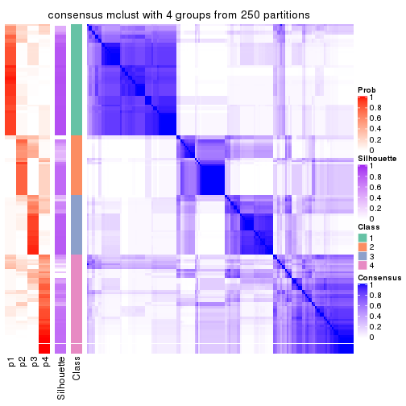
consensus_heatmap(res, k = 5)
consensus_heatmap(res, k = 6)
Heatmaps for the membership of samples in all partitions to see how consistent they are:
membership_heatmap(res, k = 2)

membership_heatmap(res, k = 3)
membership_heatmap(res, k = 4)
membership_heatmap(res, k = 5)
membership_heatmap(res, k = 6)
As soon as we have had the classes for columns, we can look for signatures which are significantly different between classes which can be candidate marks for certain classes. Following are the heatmaps for signatures.
Signature heatmaps where rows are scaled:
get_signatures(res, k = 2)
get_signatures(res, k = 3)
get_signatures(res, k = 4)
get_signatures(res, k = 5)
get_signatures(res, k = 6)
Signature heatmaps where rows are not scaled:
get_signatures(res, k = 2, scale_rows = FALSE)
get_signatures(res, k = 3, scale_rows = FALSE)
get_signatures(res, k = 4, scale_rows = FALSE)
get_signatures(res, k = 5, scale_rows = FALSE)
get_signatures(res, k = 6, scale_rows = FALSE)
Compare the overlap of signatures from different k:
compare_signatures(res)
get_signature() returns a data frame invisibly. TO get the list of signatures, the function
call should be assigned to a variable explicitly. In following code, if plot argument is set
to FALSE, no heatmap is plotted while only the differential analysis is performed.
# code only for demonstration
tb = get_signature(res, k = ..., plot = FALSE)
An example of the output of tb is:
#> which_row fdr mean_1 mean_2 scaled_mean_1 scaled_mean_2 km
#> 1 38 0.042760348 8.373488 9.131774 -0.5533452 0.5164555 1
#> 2 40 0.018707592 7.106213 8.469186 -0.6173731 0.5762149 1
#> 3 55 0.019134737 10.221463 11.207825 -0.6159697 0.5749050 1
#> 4 59 0.006059896 5.921854 7.869574 -0.6899429 0.6439467 1
#> 5 60 0.018055526 8.928898 10.211722 -0.6204761 0.5791110 1
#> 6 98 0.009384629 15.714769 14.887706 0.6635654 -0.6193277 2
...
The columns in tb are:
which_row: row indices corresponding to the input matrix.fdr: FDR for the differential test. mean_x: The mean value in group x.scaled_mean_x: The mean value in group x after rows are scaled.km: Row groups if k-means clustering is applied to rows.UMAP plot which shows how samples are separated.
dimension_reduction(res, k = 2, method = "UMAP")
dimension_reduction(res, k = 3, method = "UMAP")
dimension_reduction(res, k = 4, method = "UMAP")
dimension_reduction(res, k = 5, method = "UMAP")
dimension_reduction(res, k = 6, method = "UMAP")
Following heatmap shows how subgroups are split when increasing k:
collect_classes(res)
If matrix rows can be associated to genes, consider to use GO_Enrichment(res,
...) to perform function enrichment for the signature genes.
The object with results only for a single top-value method and a single partition method can be extracted as:
res = res_list["SD", "NMF"]
# you can also extract it by
# res = res_list["SD:NMF"]
A summary of res and all the functions that can be applied to it:
res
#> A 'ConsensusPartition' object with k = 2, 3, 4, 5, 6.
#> On a matrix with 14410 rows and 160 columns.
#> Top rows (1000, 2000, 3000, 4000, 5000) are extracted by 'SD' method.
#> Subgroups are detected by 'NMF' method.
#> Performed in total 1250 partitions by row resampling.
#> Best k for subgroups seems to be 2.
#>
#> Following methods can be applied to this 'ConsensusPartition' object:
#> [1] "cola_report" "collect_classes" "collect_plots"
#> [4] "collect_stats" "colnames" "compare_signatures"
#> [7] "consensus_heatmap" "dimension_reduction" "functional_enrichment"
#> [10] "get_anno_col" "get_anno" "get_classes"
#> [13] "get_consensus" "get_matrix" "get_membership"
#> [16] "get_param" "get_signatures" "get_stats"
#> [19] "is_best_k" "is_stable_k" "membership_heatmap"
#> [22] "ncol" "nrow" "plot_ecdf"
#> [25] "rownames" "select_partition_number" "show"
#> [28] "suggest_best_k" "test_to_known_factors"
collect_plots() function collects all the plots made from res for all k (number of partitions)
into one single page to provide an easy and fast comparison between different k.
collect_plots(res)
The plots are:
k and the heatmap of
predicted classes for each k.k.k.k.All the plots in panels can be made by individual functions and they are plotted later in this section.
select_partition_number() produces several plots showing different
statistics for choosing “optimized” k. There are following statistics:
k;k, the area increased is defined as \(A_k - A_{k-1}\).The detailed explanations of these statistics can be found in the cola vignette.
Generally speaking, lower PAC score, higher mean silhouette score or higher
concordance corresponds to better partition. Rand index and Jaccard index
measure how similar the current partition is compared to partition with k-1.
If they are too similar, we won't accept k is better than k-1.
select_partition_number(res)
The numeric values for all these statistics can be obtained by get_stats().
get_stats(res)
#> k 1-PAC mean_silhouette concordance area_increased Rand Jaccard
#> 2 2 0.386 0.603 0.843 0.4923 0.497 0.497
#> 3 3 0.371 0.550 0.773 0.3527 0.649 0.407
#> 4 4 0.566 0.581 0.777 0.1225 0.764 0.426
#> 5 5 0.660 0.675 0.810 0.0668 0.886 0.597
#> 6 6 0.699 0.604 0.773 0.0374 0.936 0.708
suggest_best_k() suggests the best \(k\) based on these statistics. The rules are as follows:
NA.suggest_best_k(res)
#> [1] 2
Following shows the table of the partitions (You need to click the show/hide
code output link to see it). The membership matrix (columns with name p*)
is inferred by
clue::cl_consensus()
function with the SE method. Basically the value in the membership matrix
represents the probability to belong to a certain group. The finall class
label for an item is determined with the group with highest probability it
belongs to.
In get_classes() function, the entropy is calculated from the membership
matrix and the silhouette score is calculated from the consensus matrix.
cbind(get_classes(res, k = 2), get_membership(res, k = 2))
#> class entropy silhouette p1 p2
#> SRR031811 2 0.9710 0.1891 0.400 0.600
#> SRR031812 1 0.0000 0.7445 1.000 0.000
#> SRR031813 2 0.0000 0.8158 0.000 1.000
#> SRR031814 1 0.9552 0.2686 0.624 0.376
#> SRR031815 2 0.9833 0.2214 0.424 0.576
#> SRR031816 2 0.8327 0.5022 0.264 0.736
#> SRR031817 2 0.9795 0.0965 0.416 0.584
#> SRR031818 2 0.0000 0.8158 0.000 1.000
#> SRR031819 2 0.9460 0.3050 0.364 0.636
#> SRR031820 2 0.0000 0.8158 0.000 1.000
#> SRR031821 2 0.9775 0.1532 0.412 0.588
#> SRR031822 1 0.5519 0.6439 0.872 0.128
#> SRR031823 1 0.9909 0.3197 0.556 0.444
#> SRR031824 2 0.0000 0.8158 0.000 1.000
#> SRR031825 2 0.0000 0.8158 0.000 1.000
#> SRR031826 2 0.0000 0.8158 0.000 1.000
#> SRR031827 2 0.2236 0.7942 0.036 0.964
#> SRR031828 1 0.9732 0.2092 0.596 0.404
#> SRR031829 2 0.3274 0.7745 0.060 0.940
#> SRR031830 2 0.9710 0.2704 0.400 0.600
#> SRR031831 1 0.9833 0.3768 0.576 0.424
#> SRR031832 1 0.8955 0.5295 0.688 0.312
#> SRR031833 2 0.0000 0.8158 0.000 1.000
#> SRR031834 1 0.0000 0.7445 1.000 0.000
#> SRR031835 1 0.0000 0.7445 1.000 0.000
#> SRR031836 1 0.9710 0.4201 0.600 0.400
#> SRR031837 2 0.0000 0.8158 0.000 1.000
#> SRR031838 2 0.0000 0.8158 0.000 1.000
#> SRR031839 2 0.8763 0.4384 0.296 0.704
#> SRR031840 1 0.0000 0.7445 1.000 0.000
#> SRR031841 2 0.9710 0.2704 0.400 0.600
#> SRR031842 2 0.0000 0.8158 0.000 1.000
#> SRR031843 2 0.4939 0.7177 0.108 0.892
#> SRR031844 1 0.7219 0.6353 0.800 0.200
#> SRR031845 1 0.9710 0.4201 0.600 0.400
#> SRR031846 1 0.8713 0.4358 0.708 0.292
#> SRR031847 1 0.8861 0.5381 0.696 0.304
#> SRR031848 1 0.9710 0.4201 0.600 0.400
#> SRR031849 1 0.9323 0.4874 0.652 0.348
#> SRR031850 2 0.0000 0.8158 0.000 1.000
#> SRR031851 2 0.0000 0.8158 0.000 1.000
#> SRR031852 1 0.0000 0.7445 1.000 0.000
#> SRR031853 1 0.0000 0.7445 1.000 0.000
#> SRR031854 1 0.9866 0.1399 0.568 0.432
#> SRR031855 2 0.0000 0.8158 0.000 1.000
#> SRR031857 2 0.9754 0.1655 0.408 0.592
#> SRR031858 2 0.0000 0.8158 0.000 1.000
#> SRR031859 2 0.0000 0.8158 0.000 1.000
#> SRR031860 2 0.0000 0.8158 0.000 1.000
#> SRR031861 2 0.0000 0.8158 0.000 1.000
#> SRR031862 1 0.0000 0.7445 1.000 0.000
#> SRR031863 2 0.1184 0.8076 0.016 0.984
#> SRR031864 2 0.0000 0.8158 0.000 1.000
#> SRR031865 2 0.8016 0.5372 0.244 0.756
#> SRR031866 1 0.0000 0.7445 1.000 0.000
#> SRR031867 2 0.0000 0.8158 0.000 1.000
#> SRR031868 2 0.0000 0.8158 0.000 1.000
#> SRR031869 1 0.0000 0.7445 1.000 0.000
#> SRR031870 2 0.0000 0.8158 0.000 1.000
#> SRR031871 2 0.7219 0.6012 0.200 0.800
#> SRR031872 1 0.0000 0.7445 1.000 0.000
#> SRR031873 1 0.9686 0.2261 0.604 0.396
#> SRR031874 1 0.0000 0.7445 1.000 0.000
#> SRR031875 2 0.1414 0.8053 0.020 0.980
#> SRR031876 1 0.0000 0.7445 1.000 0.000
#> SRR031877 1 0.6247 0.6676 0.844 0.156
#> SRR031878 2 0.9850 0.1000 0.428 0.572
#> SRR031879 2 0.9661 0.2299 0.392 0.608
#> SRR031880 2 0.9815 0.1274 0.420 0.580
#> SRR031881 2 0.5408 0.7104 0.124 0.876
#> SRR031882 1 0.9850 0.3597 0.572 0.428
#> SRR031883 2 0.0000 0.8158 0.000 1.000
#> SRR031884 2 0.0376 0.8134 0.004 0.996
#> SRR031885 2 0.0000 0.8158 0.000 1.000
#> SRR031886 1 0.9710 0.4201 0.600 0.400
#> SRR031887 1 0.0000 0.7445 1.000 0.000
#> SRR031888 2 0.0000 0.8158 0.000 1.000
#> SRR031889 1 0.0000 0.7445 1.000 0.000
#> SRR031890 1 0.7815 0.5259 0.768 0.232
#> SRR031891 1 0.9710 0.4201 0.600 0.400
#> SRR031892 1 0.7376 0.6290 0.792 0.208
#> SRR031893 1 0.7883 0.5131 0.764 0.236
#> SRR031894 2 0.0000 0.8158 0.000 1.000
#> SRR031895 2 0.9998 0.0571 0.492 0.508
#> SRR031896 2 0.0000 0.8158 0.000 1.000
#> SRR031897 2 0.0000 0.8158 0.000 1.000
#> SRR031898 2 0.0000 0.8158 0.000 1.000
#> SRR031899 2 1.0000 -0.1542 0.496 0.504
#> SRR031900 2 0.0000 0.8158 0.000 1.000
#> SRR031901 2 0.0672 0.8118 0.008 0.992
#> SRR031902 2 0.6887 0.6236 0.184 0.816
#> SRR031903 1 0.9286 0.3332 0.656 0.344
#> SRR031904 2 0.0938 0.8099 0.012 0.988
#> SRR031905 1 0.0000 0.7445 1.000 0.000
#> SRR031906 1 0.0000 0.7445 1.000 0.000
#> SRR031907 2 0.9850 0.1001 0.428 0.572
#> SRR031908 1 0.7219 0.6353 0.800 0.200
#> SRR031909 1 0.0000 0.7445 1.000 0.000
#> SRR031910 1 0.9710 0.4201 0.600 0.400
#> SRR031911 2 0.1414 0.8053 0.020 0.980
#> SRR031912 1 0.0000 0.7445 1.000 0.000
#> SRR031913 2 0.7528 0.5857 0.216 0.784
#> SRR031914 1 0.0000 0.7445 1.000 0.000
#> SRR031915 1 0.9732 0.4124 0.596 0.404
#> SRR031916 1 0.9954 0.2759 0.540 0.460
#> SRR031917 1 0.1843 0.7352 0.972 0.028
#> SRR031918 1 0.9710 0.4201 0.600 0.400
#> SRR031919 1 0.0000 0.7445 1.000 0.000
#> SRR031920 1 0.9710 0.4201 0.600 0.400
#> SRR031921 2 0.0000 0.8158 0.000 1.000
#> SRR031922 2 0.2043 0.7972 0.032 0.968
#> SRR031923 2 0.0000 0.8158 0.000 1.000
#> SRR031924 1 0.0000 0.7445 1.000 0.000
#> SRR031925 1 0.9732 0.4124 0.596 0.404
#> SRR031926 2 0.0000 0.8158 0.000 1.000
#> SRR031927 2 0.0000 0.8158 0.000 1.000
#> SRR031928 1 0.0000 0.7445 1.000 0.000
#> SRR031929 2 0.0000 0.8158 0.000 1.000
#> SRR031930 2 0.0000 0.8158 0.000 1.000
#> SRR031931 2 0.4562 0.7346 0.096 0.904
#> SRR031932 1 0.0376 0.7424 0.996 0.004
#> SRR031933 2 0.0000 0.8158 0.000 1.000
#> SRR031934 1 0.0672 0.7402 0.992 0.008
#> SRR031935 1 0.9922 0.3097 0.552 0.448
#> SRR031936 1 0.9393 0.3108 0.644 0.356
#> SRR031937 1 0.0000 0.7445 1.000 0.000
#> SRR031938 1 0.1843 0.7352 0.972 0.028
#> SRR031939 2 0.0000 0.8158 0.000 1.000
#> SRR031940 1 0.0000 0.7445 1.000 0.000
#> SRR031941 1 0.9710 0.4201 0.600 0.400
#> SRR031942 1 0.5059 0.6948 0.888 0.112
#> SRR031943 1 0.9710 0.4201 0.600 0.400
#> SRR031944 1 0.0000 0.7445 1.000 0.000
#> SRR031945 1 0.0000 0.7445 1.000 0.000
#> SRR031946 1 0.9710 0.4201 0.600 0.400
#> SRR031947 1 0.9661 0.4311 0.608 0.392
#> SRR031948 1 0.0000 0.7445 1.000 0.000
#> SRR031949 1 0.0000 0.7445 1.000 0.000
#> SRR031950 2 0.5059 0.7228 0.112 0.888
#> SRR031951 2 0.9710 0.1891 0.400 0.600
#> SRR031952 1 0.0000 0.7445 1.000 0.000
#> SRR031953 1 0.0000 0.7445 1.000 0.000
#> SRR031954 1 0.0000 0.7445 1.000 0.000
#> SRR031955 1 0.0000 0.7445 1.000 0.000
#> SRR031956 1 0.9710 0.4201 0.600 0.400
#> SRR031957 2 0.7219 0.6101 0.200 0.800
#> SRR031958 2 0.9710 0.1891 0.400 0.600
#> SRR031959 1 0.9710 0.4201 0.600 0.400
#> SRR031960 2 0.9710 0.1891 0.400 0.600
#> SRR031961 1 0.0000 0.7445 1.000 0.000
#> SRR031962 1 0.0000 0.7445 1.000 0.000
#> SRR031963 1 0.9922 0.3091 0.552 0.448
#> SRR031964 1 0.0000 0.7445 1.000 0.000
#> SRR031965 2 0.0000 0.8158 0.000 1.000
#> SRR031966 2 0.0000 0.8158 0.000 1.000
#> SRR031967 1 0.9427 0.3022 0.640 0.360
#> SRR031968 1 0.9710 0.2183 0.600 0.400
#> SRR031969 2 0.9710 0.2704 0.400 0.600
#> SRR031970 2 0.0000 0.8158 0.000 1.000
#> SRR031971 2 0.9710 0.2704 0.400 0.600
cbind(get_classes(res, k = 3), get_membership(res, k = 3))
#> class entropy silhouette p1 p2 p3
#> SRR031811 3 0.1031 0.700634 0.000 0.024 0.976
#> SRR031812 1 0.4291 0.708218 0.820 0.000 0.180
#> SRR031813 2 0.0892 0.693223 0.000 0.980 0.020
#> SRR031814 1 0.1411 0.744809 0.964 0.036 0.000
#> SRR031815 1 0.6026 0.349099 0.624 0.376 0.000
#> SRR031816 3 0.3965 0.643867 0.008 0.132 0.860
#> SRR031817 2 0.9956 -0.088451 0.352 0.360 0.288
#> SRR031818 2 0.2356 0.692585 0.000 0.928 0.072
#> SRR031819 1 0.9476 0.115451 0.436 0.380 0.184
#> SRR031820 2 0.5566 0.569842 0.080 0.812 0.108
#> SRR031821 3 0.3377 0.666386 0.012 0.092 0.896
#> SRR031822 1 0.0892 0.748460 0.980 0.020 0.000
#> SRR031823 3 0.0424 0.701155 0.000 0.008 0.992
#> SRR031824 2 0.4605 0.700583 0.000 0.796 0.204
#> SRR031825 2 0.4796 0.690099 0.000 0.780 0.220
#> SRR031826 2 0.0237 0.687338 0.000 0.996 0.004
#> SRR031827 3 0.4504 0.583415 0.000 0.196 0.804
#> SRR031828 1 0.3038 0.710336 0.896 0.104 0.000
#> SRR031829 3 0.3412 0.649370 0.000 0.124 0.876
#> SRR031830 1 0.6305 0.069961 0.516 0.484 0.000
#> SRR031831 1 0.9885 -0.011489 0.408 0.284 0.308
#> SRR031832 1 0.9514 0.065132 0.468 0.204 0.328
#> SRR031833 2 0.6204 -0.111136 0.000 0.576 0.424
#> SRR031834 1 0.0424 0.749414 0.992 0.008 0.000
#> SRR031835 1 0.4121 0.714291 0.832 0.000 0.168
#> SRR031836 3 0.8241 0.548810 0.160 0.204 0.636
#> SRR031837 2 0.9301 0.150223 0.232 0.524 0.244
#> SRR031838 2 0.0237 0.687338 0.000 0.996 0.004
#> SRR031839 3 0.6954 0.521104 0.028 0.352 0.620
#> SRR031840 1 0.5016 0.665258 0.760 0.000 0.240
#> SRR031841 1 0.6079 0.319620 0.612 0.388 0.000
#> SRR031842 2 0.4605 0.700583 0.000 0.796 0.204
#> SRR031843 2 0.8962 0.226250 0.304 0.540 0.156
#> SRR031844 3 0.6922 0.588612 0.080 0.200 0.720
#> SRR031845 3 0.0747 0.701764 0.016 0.000 0.984
#> SRR031846 1 0.9778 0.184196 0.408 0.356 0.236
#> SRR031847 1 0.9579 -0.000581 0.444 0.204 0.352
#> SRR031848 3 0.8241 0.548810 0.160 0.204 0.636
#> SRR031849 1 0.9440 0.101111 0.488 0.204 0.308
#> SRR031850 2 0.5058 0.664273 0.000 0.756 0.244
#> SRR031851 2 0.4654 0.698990 0.000 0.792 0.208
#> SRR031852 1 0.0424 0.748958 0.992 0.000 0.008
#> SRR031853 1 0.0848 0.748396 0.984 0.008 0.008
#> SRR031854 1 0.3116 0.695441 0.892 0.108 0.000
#> SRR031855 2 0.3482 0.708277 0.000 0.872 0.128
#> SRR031857 3 0.3377 0.665212 0.012 0.092 0.896
#> SRR031858 3 0.6944 -0.029023 0.016 0.468 0.516
#> SRR031859 2 0.4605 0.700583 0.000 0.796 0.204
#> SRR031860 2 0.4605 0.700583 0.000 0.796 0.204
#> SRR031861 2 0.4654 0.698990 0.000 0.792 0.208
#> SRR031862 1 0.1964 0.747591 0.944 0.000 0.056
#> SRR031863 3 0.5325 0.519930 0.004 0.248 0.748
#> SRR031864 2 0.4842 0.686445 0.000 0.776 0.224
#> SRR031865 2 0.3340 0.635140 0.120 0.880 0.000
#> SRR031866 1 0.0592 0.750759 0.988 0.000 0.012
#> SRR031867 3 0.6451 0.097944 0.004 0.436 0.560
#> SRR031868 2 0.4452 0.703526 0.000 0.808 0.192
#> SRR031869 1 0.0000 0.749529 1.000 0.000 0.000
#> SRR031870 3 0.7318 0.441052 0.068 0.264 0.668
#> SRR031871 2 0.6271 0.660243 0.140 0.772 0.088
#> SRR031872 1 0.3482 0.726078 0.872 0.000 0.128
#> SRR031873 1 0.1860 0.738938 0.948 0.052 0.000
#> SRR031874 1 0.6393 0.638381 0.764 0.088 0.148
#> SRR031875 3 0.8920 0.340507 0.124 0.408 0.468
#> SRR031876 1 0.5363 0.638786 0.724 0.000 0.276
#> SRR031877 3 0.4235 0.655555 0.176 0.000 0.824
#> SRR031878 3 0.1289 0.698614 0.000 0.032 0.968
#> SRR031879 1 0.9385 0.224726 0.484 0.328 0.188
#> SRR031880 3 0.0592 0.701344 0.000 0.012 0.988
#> SRR031881 3 0.5618 0.486534 0.008 0.260 0.732
#> SRR031882 3 0.5940 0.618459 0.036 0.204 0.760
#> SRR031883 2 0.3802 0.637793 0.080 0.888 0.032
#> SRR031884 2 0.9299 0.202844 0.292 0.512 0.196
#> SRR031885 2 0.0237 0.685992 0.000 0.996 0.004
#> SRR031886 3 0.9128 0.430081 0.252 0.204 0.544
#> SRR031887 1 0.5397 0.635020 0.720 0.000 0.280
#> SRR031888 3 0.6204 0.141712 0.000 0.424 0.576
#> SRR031889 1 0.2261 0.724717 0.932 0.068 0.000
#> SRR031890 1 0.9633 0.231094 0.436 0.352 0.212
#> SRR031891 3 0.0747 0.701764 0.016 0.000 0.984
#> SRR031892 3 0.7633 0.551909 0.120 0.200 0.680
#> SRR031893 1 0.1170 0.746799 0.976 0.016 0.008
#> SRR031894 2 0.1753 0.672989 0.048 0.952 0.000
#> SRR031895 1 0.5785 0.437021 0.668 0.332 0.000
#> SRR031896 2 0.0237 0.683524 0.000 0.996 0.004
#> SRR031897 2 0.6192 0.331971 0.000 0.580 0.420
#> SRR031898 2 0.4702 0.696576 0.000 0.788 0.212
#> SRR031899 3 0.7588 0.584120 0.120 0.196 0.684
#> SRR031900 3 0.6483 0.230718 0.008 0.392 0.600
#> SRR031901 3 0.7228 0.522911 0.104 0.188 0.708
#> SRR031902 2 0.6438 0.680238 0.100 0.764 0.136
#> SRR031903 1 0.1289 0.745882 0.968 0.032 0.000
#> SRR031904 2 0.5591 0.285342 0.000 0.696 0.304
#> SRR031905 1 0.3340 0.729370 0.880 0.000 0.120
#> SRR031906 1 0.0000 0.749529 1.000 0.000 0.000
#> SRR031907 3 0.1411 0.696035 0.000 0.036 0.964
#> SRR031908 1 0.9182 0.217233 0.536 0.204 0.260
#> SRR031909 1 0.5363 0.638786 0.724 0.000 0.276
#> SRR031910 3 0.7524 0.586767 0.116 0.196 0.688
#> SRR031911 2 0.9028 -0.295100 0.132 0.436 0.432
#> SRR031912 1 0.7281 0.582728 0.712 0.140 0.148
#> SRR031913 3 0.4291 0.599871 0.000 0.180 0.820
#> SRR031914 1 0.5480 0.647709 0.732 0.004 0.264
#> SRR031915 3 0.0747 0.702303 0.000 0.016 0.984
#> SRR031916 3 0.2878 0.685072 0.000 0.096 0.904
#> SRR031917 3 0.3752 0.625892 0.144 0.000 0.856
#> SRR031918 3 0.8085 0.560772 0.148 0.204 0.648
#> SRR031919 1 0.5465 0.627516 0.712 0.000 0.288
#> SRR031920 3 0.7458 0.589440 0.112 0.196 0.692
#> SRR031921 2 0.2550 0.662640 0.056 0.932 0.012
#> SRR031922 3 0.6905 0.444536 0.044 0.280 0.676
#> SRR031923 2 0.4702 0.696576 0.000 0.788 0.212
#> SRR031924 1 0.0983 0.746950 0.980 0.004 0.016
#> SRR031925 3 0.1337 0.698276 0.012 0.016 0.972
#> SRR031926 3 0.5948 0.302791 0.000 0.360 0.640
#> SRR031927 2 0.4062 0.545974 0.000 0.836 0.164
#> SRR031928 1 0.1753 0.748948 0.952 0.000 0.048
#> SRR031929 3 0.6095 0.231005 0.000 0.392 0.608
#> SRR031930 2 0.4842 0.686445 0.000 0.776 0.224
#> SRR031931 2 0.3192 0.640318 0.112 0.888 0.000
#> SRR031932 1 0.0661 0.750720 0.988 0.008 0.004
#> SRR031933 2 0.4702 0.696576 0.000 0.788 0.212
#> SRR031934 1 0.4748 0.717039 0.832 0.024 0.144
#> SRR031935 3 0.3941 0.656393 0.000 0.156 0.844
#> SRR031936 1 0.7548 0.640740 0.684 0.112 0.204
#> SRR031937 1 0.5431 0.631661 0.716 0.000 0.284
#> SRR031938 3 0.3551 0.641171 0.132 0.000 0.868
#> SRR031939 2 0.0892 0.693587 0.000 0.980 0.020
#> SRR031940 1 0.0424 0.748958 0.992 0.000 0.008
#> SRR031941 3 0.0848 0.700138 0.008 0.008 0.984
#> SRR031942 3 0.4702 0.614675 0.212 0.000 0.788
#> SRR031943 3 0.7078 0.599355 0.088 0.200 0.712
#> SRR031944 3 0.5810 0.259765 0.336 0.000 0.664
#> SRR031945 3 0.9510 -0.024965 0.348 0.196 0.456
#> SRR031946 3 0.7860 0.573282 0.132 0.204 0.664
#> SRR031947 3 0.3213 0.684393 0.008 0.092 0.900
#> SRR031948 1 0.2165 0.748109 0.936 0.000 0.064
#> SRR031949 1 0.0424 0.748958 0.992 0.000 0.008
#> SRR031950 3 0.5656 0.482559 0.008 0.264 0.728
#> SRR031951 3 0.2955 0.674835 0.008 0.080 0.912
#> SRR031952 1 0.6168 0.439939 0.588 0.000 0.412
#> SRR031953 1 0.5098 0.659565 0.752 0.000 0.248
#> SRR031954 3 0.9510 -0.024965 0.348 0.196 0.456
#> SRR031955 3 0.6291 -0.161672 0.468 0.000 0.532
#> SRR031956 3 0.0424 0.701155 0.000 0.008 0.992
#> SRR031957 3 0.6286 0.402353 0.000 0.464 0.536
#> SRR031958 3 0.2448 0.680525 0.000 0.076 0.924
#> SRR031959 3 0.0237 0.701371 0.000 0.004 0.996
#> SRR031960 3 0.1529 0.698987 0.000 0.040 0.960
#> SRR031961 1 0.3686 0.725673 0.860 0.000 0.140
#> SRR031962 1 0.5291 0.644755 0.732 0.000 0.268
#> SRR031963 3 0.0747 0.700309 0.000 0.016 0.984
#> SRR031964 1 0.6140 0.454889 0.596 0.000 0.404
#> SRR031965 2 0.4654 0.698990 0.000 0.792 0.208
#> SRR031966 2 0.4605 0.700583 0.000 0.796 0.204
#> SRR031967 1 0.1031 0.745445 0.976 0.024 0.000
#> SRR031968 1 0.2261 0.725069 0.932 0.068 0.000
#> SRR031969 2 0.6062 0.292910 0.384 0.616 0.000
#> SRR031970 2 0.4784 0.701181 0.004 0.796 0.200
#> SRR031971 2 0.6225 0.156755 0.432 0.568 0.000
cbind(get_classes(res, k = 4), get_membership(res, k = 4))
#> class entropy silhouette p1 p2 p3 p4
#> SRR031811 4 0.0524 0.74623 0.000 0.004 0.008 0.988
#> SRR031812 1 0.0336 0.80168 0.992 0.000 0.008 0.000
#> SRR031813 2 0.1452 0.73647 0.000 0.956 0.036 0.008
#> SRR031814 1 0.4938 0.72575 0.772 0.080 0.148 0.000
#> SRR031815 1 0.7369 0.17806 0.432 0.408 0.160 0.000
#> SRR031816 4 0.4049 0.65313 0.008 0.212 0.000 0.780
#> SRR031817 3 0.1209 0.67435 0.000 0.004 0.964 0.032
#> SRR031818 2 0.6420 0.54402 0.000 0.640 0.228 0.132
#> SRR031819 3 0.1716 0.61173 0.000 0.064 0.936 0.000
#> SRR031820 3 0.3907 0.44023 0.000 0.232 0.768 0.000
#> SRR031821 4 0.5288 0.61036 0.200 0.068 0.000 0.732
#> SRR031822 1 0.6473 0.60328 0.612 0.108 0.280 0.000
#> SRR031823 4 0.0707 0.73722 0.000 0.000 0.020 0.980
#> SRR031824 2 0.2216 0.71537 0.000 0.908 0.000 0.092
#> SRR031825 2 0.4790 0.28685 0.000 0.620 0.000 0.380
#> SRR031826 2 0.2048 0.72539 0.000 0.928 0.064 0.008
#> SRR031827 4 0.4608 0.53507 0.004 0.304 0.000 0.692
#> SRR031828 1 0.6664 0.60527 0.620 0.164 0.216 0.000
#> SRR031829 4 0.1824 0.75544 0.000 0.060 0.004 0.936
#> SRR031830 2 0.6646 0.41905 0.204 0.624 0.172 0.000
#> SRR031831 3 0.1305 0.67646 0.000 0.004 0.960 0.036
#> SRR031832 3 0.1637 0.68705 0.000 0.000 0.940 0.060
#> SRR031833 3 0.6203 0.53877 0.000 0.068 0.592 0.340
#> SRR031834 1 0.4995 0.68628 0.720 0.032 0.248 0.000
#> SRR031835 1 0.0336 0.80168 0.992 0.000 0.008 0.000
#> SRR031836 3 0.4304 0.66108 0.000 0.000 0.716 0.284
#> SRR031837 3 0.1706 0.67545 0.000 0.016 0.948 0.036
#> SRR031838 2 0.0657 0.73937 0.000 0.984 0.012 0.004
#> SRR031839 3 0.4522 0.63547 0.000 0.000 0.680 0.320
#> SRR031840 1 0.0000 0.80181 1.000 0.000 0.000 0.000
#> SRR031841 2 0.6934 0.38471 0.152 0.572 0.276 0.000
#> SRR031842 2 0.2149 0.71789 0.000 0.912 0.000 0.088
#> SRR031843 3 0.1867 0.60400 0.000 0.072 0.928 0.000
#> SRR031844 3 0.4679 0.60556 0.000 0.000 0.648 0.352
#> SRR031845 4 0.3852 0.56096 0.000 0.008 0.192 0.800
#> SRR031846 1 0.8208 0.10782 0.432 0.332 0.020 0.216
#> SRR031847 3 0.2408 0.69494 0.000 0.000 0.896 0.104
#> SRR031848 3 0.4304 0.66047 0.000 0.000 0.716 0.284
#> SRR031849 3 0.1302 0.68139 0.000 0.000 0.956 0.044
#> SRR031850 4 0.4948 0.25069 0.000 0.440 0.000 0.560
#> SRR031851 2 0.4193 0.52075 0.000 0.732 0.000 0.268
#> SRR031852 1 0.6153 0.58432 0.604 0.068 0.328 0.000
#> SRR031853 1 0.6862 0.43484 0.488 0.104 0.408 0.000
#> SRR031854 2 0.7093 0.22223 0.128 0.476 0.396 0.000
#> SRR031855 2 0.1356 0.73754 0.000 0.960 0.008 0.032
#> SRR031857 4 0.5184 0.61454 0.204 0.060 0.000 0.736
#> SRR031858 4 0.3710 0.68169 0.000 0.192 0.004 0.804
#> SRR031859 2 0.2281 0.71312 0.000 0.904 0.000 0.096
#> SRR031860 2 0.1716 0.72864 0.000 0.936 0.000 0.064
#> SRR031861 2 0.3356 0.64315 0.000 0.824 0.000 0.176
#> SRR031862 1 0.0000 0.80181 1.000 0.000 0.000 0.000
#> SRR031863 4 0.2469 0.74137 0.000 0.108 0.000 0.892
#> SRR031864 2 0.4985 0.00977 0.000 0.532 0.000 0.468
#> SRR031865 2 0.3982 0.60570 0.004 0.776 0.220 0.000
#> SRR031866 1 0.1637 0.79091 0.940 0.000 0.060 0.000
#> SRR031867 4 0.3032 0.73089 0.000 0.124 0.008 0.868
#> SRR031868 2 0.2799 0.70792 0.000 0.884 0.008 0.108
#> SRR031869 1 0.4214 0.72474 0.780 0.016 0.204 0.000
#> SRR031870 4 0.3355 0.60631 0.000 0.004 0.160 0.836
#> SRR031871 2 0.1929 0.73498 0.036 0.940 0.000 0.024
#> SRR031872 1 0.0188 0.80200 0.996 0.000 0.004 0.000
#> SRR031873 1 0.3732 0.76466 0.852 0.056 0.092 0.000
#> SRR031874 3 0.6725 0.28146 0.348 0.000 0.548 0.104
#> SRR031875 3 0.4164 0.66866 0.000 0.000 0.736 0.264
#> SRR031876 1 0.0188 0.80109 0.996 0.000 0.000 0.004
#> SRR031877 4 0.5222 0.34211 0.032 0.000 0.280 0.688
#> SRR031878 4 0.1724 0.74774 0.000 0.032 0.020 0.948
#> SRR031879 3 0.1557 0.61790 0.000 0.056 0.944 0.000
#> SRR031880 4 0.0524 0.74623 0.000 0.004 0.008 0.988
#> SRR031881 4 0.5448 0.55999 0.056 0.244 0.000 0.700
#> SRR031882 3 0.4477 0.64276 0.000 0.000 0.688 0.312
#> SRR031883 3 0.4331 0.34272 0.000 0.288 0.712 0.000
#> SRR031884 3 0.1022 0.63521 0.000 0.032 0.968 0.000
#> SRR031885 2 0.5649 0.41365 0.000 0.620 0.344 0.036
#> SRR031886 3 0.3649 0.68459 0.000 0.000 0.796 0.204
#> SRR031887 1 0.0188 0.80109 0.996 0.000 0.000 0.004
#> SRR031888 4 0.4522 0.52049 0.000 0.320 0.000 0.680
#> SRR031889 1 0.6766 0.48656 0.520 0.100 0.380 0.000
#> SRR031890 1 0.7981 0.25431 0.488 0.316 0.024 0.172
#> SRR031891 4 0.4011 0.53384 0.000 0.008 0.208 0.784
#> SRR031892 3 0.4564 0.63242 0.000 0.000 0.672 0.328
#> SRR031893 3 0.7429 -0.23885 0.360 0.176 0.464 0.000
#> SRR031894 2 0.3123 0.66569 0.000 0.844 0.156 0.000
#> SRR031895 1 0.0000 0.80181 1.000 0.000 0.000 0.000
#> SRR031896 2 0.5476 0.31149 0.000 0.584 0.396 0.020
#> SRR031897 4 0.4661 0.44763 0.000 0.348 0.000 0.652
#> SRR031898 4 0.4998 0.08133 0.000 0.488 0.000 0.512
#> SRR031899 3 0.4564 0.63198 0.000 0.000 0.672 0.328
#> SRR031900 4 0.2489 0.75679 0.000 0.068 0.020 0.912
#> SRR031901 4 0.3583 0.57825 0.000 0.004 0.180 0.816
#> SRR031902 2 0.0336 0.73881 0.000 0.992 0.000 0.008
#> SRR031903 1 0.3652 0.76612 0.856 0.052 0.092 0.000
#> SRR031904 3 0.7878 0.02368 0.000 0.284 0.376 0.340
#> SRR031905 1 0.0188 0.80200 0.996 0.000 0.004 0.000
#> SRR031906 1 0.4214 0.72474 0.780 0.016 0.204 0.000
#> SRR031907 4 0.1824 0.75390 0.004 0.060 0.000 0.936
#> SRR031908 3 0.0921 0.67412 0.000 0.000 0.972 0.028
#> SRR031909 1 0.0000 0.80181 1.000 0.000 0.000 0.000
#> SRR031910 3 0.4605 0.62442 0.000 0.000 0.664 0.336
#> SRR031911 3 0.3837 0.68055 0.000 0.000 0.776 0.224
#> SRR031912 3 0.6158 0.43237 0.272 0.000 0.640 0.088
#> SRR031913 4 0.2647 0.73534 0.000 0.120 0.000 0.880
#> SRR031914 1 0.0336 0.79978 0.992 0.000 0.000 0.008
#> SRR031915 4 0.2081 0.68566 0.000 0.000 0.084 0.916
#> SRR031916 4 0.4955 -0.21556 0.000 0.000 0.444 0.556
#> SRR031917 1 0.4605 0.37849 0.664 0.000 0.000 0.336
#> SRR031918 3 0.4431 0.64914 0.000 0.000 0.696 0.304
#> SRR031919 1 0.0188 0.80109 0.996 0.000 0.000 0.004
#> SRR031920 3 0.4564 0.63198 0.000 0.000 0.672 0.328
#> SRR031921 3 0.4985 -0.05777 0.000 0.468 0.532 0.000
#> SRR031922 4 0.2844 0.74445 0.000 0.052 0.048 0.900
#> SRR031923 2 0.4925 0.15873 0.000 0.572 0.000 0.428
#> SRR031924 3 0.6212 -0.16514 0.380 0.060 0.560 0.000
#> SRR031925 4 0.4327 0.63284 0.216 0.016 0.000 0.768
#> SRR031926 4 0.4564 0.48472 0.000 0.328 0.000 0.672
#> SRR031927 3 0.5582 0.16637 0.000 0.400 0.576 0.024
#> SRR031928 1 0.0000 0.80181 1.000 0.000 0.000 0.000
#> SRR031929 4 0.3074 0.71705 0.000 0.152 0.000 0.848
#> SRR031930 4 0.5000 0.07363 0.000 0.496 0.000 0.504
#> SRR031931 2 0.3583 0.64065 0.004 0.816 0.180 0.000
#> SRR031932 1 0.3384 0.76509 0.860 0.024 0.116 0.000
#> SRR031933 2 0.4985 0.02977 0.000 0.532 0.000 0.468
#> SRR031934 1 0.0000 0.80181 1.000 0.000 0.000 0.000
#> SRR031935 3 0.5000 0.33914 0.000 0.000 0.500 0.500
#> SRR031936 1 0.0188 0.80126 0.996 0.000 0.000 0.004
#> SRR031937 1 0.0000 0.80181 1.000 0.000 0.000 0.000
#> SRR031938 1 0.4804 0.25291 0.616 0.000 0.000 0.384
#> SRR031939 2 0.1929 0.73826 0.000 0.940 0.024 0.036
#> SRR031940 1 0.6219 0.56467 0.588 0.068 0.344 0.000
#> SRR031941 4 0.1151 0.74289 0.024 0.000 0.008 0.968
#> SRR031942 4 0.5592 0.26008 0.044 0.000 0.300 0.656
#> SRR031943 3 0.4605 0.62442 0.000 0.000 0.664 0.336
#> SRR031944 1 0.4829 0.64826 0.776 0.000 0.068 0.156
#> SRR031945 1 0.6079 0.32456 0.628 0.000 0.300 0.072
#> SRR031946 3 0.4431 0.64914 0.000 0.000 0.696 0.304
#> SRR031947 4 0.4624 0.17384 0.000 0.000 0.340 0.660
#> SRR031948 1 0.0592 0.80070 0.984 0.000 0.016 0.000
#> SRR031949 1 0.5085 0.56507 0.616 0.008 0.376 0.000
#> SRR031950 4 0.4220 0.62112 0.004 0.248 0.000 0.748
#> SRR031951 4 0.2466 0.74588 0.004 0.096 0.000 0.900
#> SRR031952 1 0.0707 0.79474 0.980 0.000 0.000 0.020
#> SRR031953 1 0.0000 0.80181 1.000 0.000 0.000 0.000
#> SRR031954 1 0.5772 0.42443 0.672 0.000 0.260 0.068
#> SRR031955 1 0.2593 0.74455 0.892 0.000 0.004 0.104
#> SRR031956 4 0.1520 0.73111 0.024 0.000 0.020 0.956
#> SRR031957 3 0.7627 0.31708 0.004 0.244 0.504 0.248
#> SRR031958 4 0.1398 0.75771 0.000 0.040 0.004 0.956
#> SRR031959 4 0.2224 0.71540 0.032 0.000 0.040 0.928
#> SRR031960 4 0.0804 0.74617 0.000 0.008 0.012 0.980
#> SRR031961 1 0.0469 0.80118 0.988 0.000 0.012 0.000
#> SRR031962 1 0.0188 0.80126 0.996 0.000 0.000 0.004
#> SRR031963 4 0.1484 0.75026 0.020 0.016 0.004 0.960
#> SRR031964 1 0.0707 0.79474 0.980 0.000 0.000 0.020
#> SRR031965 2 0.3764 0.59712 0.000 0.784 0.000 0.216
#> SRR031966 2 0.1716 0.72864 0.000 0.936 0.000 0.064
#> SRR031967 1 0.6894 0.53956 0.552 0.128 0.320 0.000
#> SRR031968 1 0.7887 0.25028 0.376 0.292 0.332 0.000
#> SRR031969 2 0.5113 0.53982 0.036 0.712 0.252 0.000
#> SRR031970 2 0.0524 0.73942 0.000 0.988 0.008 0.004
#> SRR031971 2 0.5744 0.55590 0.108 0.708 0.184 0.000
cbind(get_classes(res, k = 5), get_membership(res, k = 5))
#> class entropy silhouette p1 p2 p3 p4 p5
#> SRR031811 4 0.1493 0.7967 0.000 0.024 0.028 0.948 0.000
#> SRR031812 1 0.0963 0.8356 0.964 0.000 0.000 0.000 0.036
#> SRR031813 2 0.2074 0.7565 0.000 0.920 0.060 0.004 0.016
#> SRR031814 5 0.4710 0.5475 0.364 0.012 0.008 0.000 0.616
#> SRR031815 5 0.6707 0.5463 0.212 0.248 0.016 0.000 0.524
#> SRR031816 4 0.5952 0.1895 0.028 0.436 0.048 0.488 0.000
#> SRR031817 3 0.1195 0.8364 0.000 0.012 0.960 0.000 0.028
#> SRR031818 2 0.5532 0.6859 0.000 0.684 0.104 0.020 0.192
#> SRR031819 3 0.1965 0.8233 0.000 0.024 0.924 0.000 0.052
#> SRR031820 3 0.2927 0.7993 0.000 0.092 0.868 0.000 0.040
#> SRR031821 4 0.4449 0.7171 0.080 0.168 0.000 0.752 0.000
#> SRR031822 1 0.5585 0.4053 0.660 0.016 0.092 0.000 0.232
#> SRR031823 4 0.1695 0.7926 0.000 0.008 0.044 0.940 0.008
#> SRR031824 2 0.2773 0.7640 0.000 0.868 0.000 0.020 0.112
#> SRR031825 2 0.3857 0.7465 0.000 0.808 0.000 0.084 0.108
#> SRR031826 2 0.2723 0.7222 0.000 0.864 0.124 0.000 0.012
#> SRR031827 2 0.5180 0.4053 0.016 0.628 0.032 0.324 0.000
#> SRR031828 5 0.4918 0.6739 0.236 0.044 0.016 0.000 0.704
#> SRR031829 4 0.2389 0.7770 0.000 0.116 0.004 0.880 0.000
#> SRR031830 5 0.6565 0.3384 0.140 0.348 0.016 0.000 0.496
#> SRR031831 3 0.0955 0.8376 0.000 0.004 0.968 0.000 0.028
#> SRR031832 3 0.0794 0.8380 0.000 0.000 0.972 0.000 0.028
#> SRR031833 3 0.5100 0.7197 0.000 0.096 0.748 0.040 0.116
#> SRR031834 1 0.4109 0.6354 0.788 0.004 0.148 0.000 0.060
#> SRR031835 1 0.1043 0.8335 0.960 0.000 0.000 0.000 0.040
#> SRR031836 3 0.0794 0.8392 0.000 0.000 0.972 0.028 0.000
#> SRR031837 3 0.0955 0.8378 0.000 0.004 0.968 0.000 0.028
#> SRR031838 2 0.1216 0.7657 0.000 0.960 0.020 0.000 0.020
#> SRR031839 3 0.0898 0.8406 0.000 0.008 0.972 0.020 0.000
#> SRR031840 1 0.0404 0.8436 0.988 0.000 0.000 0.000 0.012
#> SRR031841 5 0.6552 0.4109 0.072 0.308 0.064 0.000 0.556
#> SRR031842 2 0.1216 0.7697 0.000 0.960 0.000 0.020 0.020
#> SRR031843 3 0.2685 0.8015 0.000 0.028 0.880 0.000 0.092
#> SRR031844 3 0.2843 0.7840 0.000 0.000 0.848 0.144 0.008
#> SRR031845 4 0.2878 0.7897 0.000 0.048 0.016 0.888 0.048
#> SRR031846 5 0.3906 0.3349 0.000 0.004 0.000 0.292 0.704
#> SRR031847 3 0.1012 0.8401 0.000 0.000 0.968 0.012 0.020
#> SRR031848 3 0.0794 0.8392 0.000 0.000 0.972 0.028 0.000
#> SRR031849 3 0.0992 0.8381 0.000 0.008 0.968 0.000 0.024
#> SRR031850 2 0.2929 0.6913 0.000 0.820 0.000 0.180 0.000
#> SRR031851 2 0.2020 0.7491 0.000 0.900 0.000 0.100 0.000
#> SRR031852 5 0.4146 0.6675 0.268 0.000 0.004 0.012 0.716
#> SRR031853 5 0.3963 0.6763 0.256 0.004 0.008 0.000 0.732
#> SRR031854 5 0.4636 0.6833 0.092 0.108 0.024 0.000 0.776
#> SRR031855 2 0.2358 0.7541 0.000 0.888 0.008 0.000 0.104
#> SRR031857 4 0.5237 0.6667 0.160 0.140 0.004 0.696 0.000
#> SRR031858 4 0.3003 0.7310 0.000 0.000 0.000 0.812 0.188
#> SRR031859 2 0.3209 0.7435 0.000 0.812 0.000 0.008 0.180
#> SRR031860 2 0.2625 0.7561 0.000 0.876 0.000 0.016 0.108
#> SRR031861 2 0.3112 0.7722 0.000 0.856 0.000 0.044 0.100
#> SRR031862 1 0.0609 0.8365 0.980 0.000 0.000 0.000 0.020
#> SRR031863 4 0.2488 0.7712 0.000 0.124 0.000 0.872 0.004
#> SRR031864 2 0.2471 0.7282 0.000 0.864 0.000 0.136 0.000
#> SRR031865 2 0.5401 0.1508 0.000 0.536 0.404 0.000 0.060
#> SRR031866 1 0.3983 0.2454 0.660 0.000 0.000 0.000 0.340
#> SRR031867 4 0.3602 0.7285 0.000 0.024 0.000 0.796 0.180
#> SRR031868 2 0.3582 0.7278 0.000 0.768 0.000 0.008 0.224
#> SRR031869 1 0.4210 -0.0164 0.588 0.000 0.000 0.000 0.412
#> SRR031870 4 0.3816 0.6175 0.000 0.000 0.000 0.696 0.304
#> SRR031871 2 0.4268 0.6118 0.000 0.648 0.000 0.008 0.344
#> SRR031872 1 0.0162 0.8434 0.996 0.000 0.000 0.000 0.004
#> SRR031873 5 0.4192 0.3616 0.404 0.000 0.000 0.000 0.596
#> SRR031874 3 0.7272 0.3218 0.200 0.000 0.532 0.076 0.192
#> SRR031875 3 0.0671 0.8406 0.000 0.004 0.980 0.016 0.000
#> SRR031876 1 0.0162 0.8435 0.996 0.000 0.000 0.000 0.004
#> SRR031877 4 0.3728 0.6618 0.000 0.000 0.008 0.748 0.244
#> SRR031878 4 0.2850 0.7824 0.000 0.092 0.036 0.872 0.000
#> SRR031879 3 0.1965 0.8233 0.000 0.024 0.924 0.000 0.052
#> SRR031880 4 0.1865 0.7955 0.000 0.024 0.032 0.936 0.008
#> SRR031881 4 0.4425 0.5960 0.024 0.296 0.000 0.680 0.000
#> SRR031882 3 0.0955 0.8393 0.000 0.004 0.968 0.028 0.000
#> SRR031883 3 0.3622 0.7611 0.000 0.136 0.816 0.000 0.048
#> SRR031884 3 0.1893 0.8248 0.000 0.024 0.928 0.000 0.048
#> SRR031885 3 0.4302 0.0708 0.000 0.480 0.520 0.000 0.000
#> SRR031886 3 0.0898 0.8406 0.000 0.000 0.972 0.020 0.008
#> SRR031887 1 0.0162 0.8442 0.996 0.000 0.000 0.000 0.004
#> SRR031888 2 0.4464 0.3484 0.000 0.632 0.004 0.356 0.008
#> SRR031889 3 0.6963 0.0410 0.284 0.016 0.464 0.000 0.236
#> SRR031890 5 0.3861 0.3520 0.000 0.004 0.000 0.284 0.712
#> SRR031891 4 0.3007 0.7876 0.000 0.044 0.028 0.884 0.044
#> SRR031892 3 0.2193 0.8154 0.000 0.000 0.900 0.092 0.008
#> SRR031893 5 0.1731 0.6305 0.008 0.012 0.000 0.040 0.940
#> SRR031894 2 0.4683 0.6404 0.000 0.732 0.092 0.000 0.176
#> SRR031895 1 0.2124 0.7585 0.900 0.004 0.000 0.000 0.096
#> SRR031896 3 0.4084 0.4926 0.000 0.328 0.668 0.000 0.004
#> SRR031897 2 0.4310 0.2802 0.004 0.604 0.000 0.392 0.000
#> SRR031898 2 0.3398 0.6534 0.000 0.780 0.000 0.216 0.004
#> SRR031899 3 0.2389 0.8031 0.000 0.000 0.880 0.116 0.004
#> SRR031900 4 0.3513 0.7289 0.000 0.020 0.000 0.800 0.180
#> SRR031901 4 0.3876 0.6020 0.000 0.000 0.000 0.684 0.316
#> SRR031902 2 0.4029 0.6350 0.000 0.680 0.000 0.004 0.316
#> SRR031903 5 0.4283 0.2311 0.456 0.000 0.000 0.000 0.544
#> SRR031904 2 0.7082 0.4859 0.000 0.532 0.256 0.060 0.152
#> SRR031905 1 0.0162 0.8434 0.996 0.000 0.000 0.000 0.004
#> SRR031906 1 0.4030 0.2172 0.648 0.000 0.000 0.000 0.352
#> SRR031907 4 0.3400 0.7854 0.004 0.072 0.000 0.848 0.076
#> SRR031908 3 0.0880 0.8378 0.000 0.000 0.968 0.000 0.032
#> SRR031909 1 0.0162 0.8435 0.996 0.000 0.000 0.000 0.004
#> SRR031910 3 0.4029 0.6784 0.000 0.000 0.744 0.232 0.024
#> SRR031911 3 0.0671 0.8406 0.000 0.004 0.980 0.016 0.000
#> SRR031912 3 0.7060 0.3870 0.172 0.000 0.560 0.072 0.196
#> SRR031913 4 0.3203 0.7500 0.000 0.168 0.012 0.820 0.000
#> SRR031914 1 0.0963 0.8326 0.964 0.000 0.000 0.000 0.036
#> SRR031915 4 0.5000 0.7030 0.024 0.008 0.052 0.744 0.172
#> SRR031916 3 0.5789 0.5080 0.000 0.004 0.612 0.260 0.124
#> SRR031917 1 0.2471 0.7271 0.864 0.000 0.000 0.136 0.000
#> SRR031918 3 0.0794 0.8392 0.000 0.000 0.972 0.028 0.000
#> SRR031919 1 0.0000 0.8438 1.000 0.000 0.000 0.000 0.000
#> SRR031920 3 0.3359 0.7596 0.000 0.000 0.816 0.164 0.020
#> SRR031921 3 0.4333 0.6598 0.000 0.212 0.740 0.000 0.048
#> SRR031922 4 0.2813 0.7390 0.000 0.000 0.000 0.832 0.168
#> SRR031923 2 0.4964 0.7156 0.000 0.700 0.000 0.096 0.204
#> SRR031924 5 0.2228 0.6259 0.012 0.008 0.000 0.068 0.912
#> SRR031925 4 0.4524 0.6693 0.208 0.052 0.004 0.736 0.000
#> SRR031926 4 0.4297 0.1827 0.000 0.472 0.000 0.528 0.000
#> SRR031927 3 0.2462 0.8009 0.000 0.112 0.880 0.008 0.000
#> SRR031928 1 0.0609 0.8365 0.980 0.000 0.000 0.000 0.020
#> SRR031929 4 0.2516 0.7657 0.000 0.140 0.000 0.860 0.000
#> SRR031930 2 0.2605 0.7197 0.000 0.852 0.000 0.148 0.000
#> SRR031931 2 0.5025 0.5744 0.000 0.704 0.172 0.000 0.124
#> SRR031932 5 0.4306 0.3095 0.492 0.000 0.000 0.000 0.508
#> SRR031933 2 0.3231 0.6786 0.000 0.800 0.000 0.196 0.004
#> SRR031934 1 0.0963 0.8257 0.964 0.000 0.000 0.000 0.036
#> SRR031935 3 0.5447 0.5911 0.000 0.004 0.660 0.224 0.112
#> SRR031936 1 0.0963 0.8326 0.964 0.000 0.000 0.000 0.036
#> SRR031937 1 0.0000 0.8438 1.000 0.000 0.000 0.000 0.000
#> SRR031938 1 0.2439 0.7389 0.876 0.000 0.000 0.120 0.004
#> SRR031939 2 0.2871 0.7590 0.000 0.872 0.040 0.000 0.088
#> SRR031940 5 0.4265 0.6665 0.268 0.000 0.008 0.012 0.712
#> SRR031941 4 0.1815 0.7964 0.016 0.020 0.024 0.940 0.000
#> SRR031942 4 0.3724 0.6900 0.000 0.000 0.020 0.776 0.204
#> SRR031943 3 0.3355 0.7461 0.000 0.000 0.804 0.184 0.012
#> SRR031944 1 0.5944 0.5439 0.688 0.000 0.076 0.108 0.128
#> SRR031945 1 0.5095 0.5101 0.684 0.000 0.248 0.056 0.012
#> SRR031946 3 0.0794 0.8392 0.000 0.000 0.972 0.028 0.000
#> SRR031947 4 0.6391 0.5439 0.028 0.000 0.212 0.600 0.160
#> SRR031948 1 0.0290 0.8423 0.992 0.000 0.000 0.000 0.008
#> SRR031949 5 0.4888 0.6493 0.272 0.000 0.004 0.048 0.676
#> SRR031950 4 0.4669 0.5858 0.008 0.308 0.020 0.664 0.000
#> SRR031951 4 0.3730 0.7443 0.004 0.168 0.028 0.800 0.000
#> SRR031952 1 0.0566 0.8431 0.984 0.000 0.000 0.004 0.012
#> SRR031953 1 0.0404 0.8435 0.988 0.000 0.000 0.000 0.012
#> SRR031954 1 0.5377 0.5635 0.708 0.000 0.180 0.080 0.032
#> SRR031955 1 0.4945 0.5794 0.732 0.000 0.008 0.116 0.144
#> SRR031956 4 0.2378 0.7808 0.016 0.000 0.012 0.908 0.064
#> SRR031957 3 0.3643 0.7999 0.004 0.060 0.848 0.016 0.072
#> SRR031958 4 0.4294 0.7487 0.004 0.152 0.040 0.788 0.016
#> SRR031959 4 0.2158 0.7890 0.020 0.000 0.052 0.920 0.008
#> SRR031960 4 0.4473 0.7657 0.008 0.104 0.084 0.792 0.012
#> SRR031961 1 0.0451 0.8421 0.988 0.000 0.008 0.000 0.004
#> SRR031962 1 0.0162 0.8442 0.996 0.000 0.000 0.000 0.004
#> SRR031963 4 0.3895 0.7729 0.020 0.104 0.052 0.824 0.000
#> SRR031964 1 0.0833 0.8410 0.976 0.004 0.000 0.004 0.016
#> SRR031965 2 0.1851 0.7547 0.000 0.912 0.000 0.088 0.000
#> SRR031966 2 0.1493 0.7695 0.000 0.948 0.000 0.028 0.024
#> SRR031967 5 0.3883 0.6832 0.244 0.008 0.004 0.000 0.744
#> SRR031968 5 0.4436 0.6893 0.224 0.028 0.012 0.000 0.736
#> SRR031969 5 0.4514 0.5722 0.024 0.220 0.020 0.000 0.736
#> SRR031970 2 0.2329 0.7375 0.000 0.876 0.000 0.000 0.124
#> SRR031971 2 0.6004 0.1167 0.060 0.516 0.024 0.000 0.400
cbind(get_classes(res, k = 6), get_membership(res, k = 6))
#> class entropy silhouette p1 p2 p3 p4 p5 p6
#> SRR031811 4 0.3758 0.43421 0.000 0.008 0.000 0.668 0.324 0.000
#> SRR031812 1 0.2058 0.78278 0.908 0.000 0.000 0.012 0.072 0.008
#> SRR031813 2 0.3488 0.65412 0.000 0.832 0.064 0.076 0.000 0.028
#> SRR031814 6 0.5129 0.49846 0.340 0.028 0.000 0.004 0.036 0.592
#> SRR031815 6 0.6684 0.51490 0.180 0.260 0.000 0.004 0.060 0.496
#> SRR031816 4 0.4701 0.52963 0.020 0.288 0.012 0.660 0.020 0.000
#> SRR031817 3 0.0146 0.85185 0.000 0.000 0.996 0.000 0.000 0.004
#> SRR031818 2 0.5298 0.31719 0.008 0.544 0.072 0.004 0.372 0.000
#> SRR031819 3 0.1176 0.84355 0.000 0.020 0.956 0.000 0.000 0.024
#> SRR031820 3 0.2312 0.78744 0.000 0.112 0.876 0.000 0.000 0.012
#> SRR031821 4 0.2861 0.73807 0.044 0.020 0.000 0.880 0.048 0.008
#> SRR031822 1 0.5378 0.63888 0.720 0.008 0.092 0.012 0.080 0.088
#> SRR031823 4 0.2979 0.63828 0.000 0.000 0.004 0.804 0.188 0.004
#> SRR031824 2 0.2696 0.62770 0.000 0.856 0.000 0.000 0.116 0.028
#> SRR031825 2 0.4610 0.32234 0.000 0.568 0.000 0.044 0.388 0.000
#> SRR031826 2 0.3710 0.63677 0.000 0.804 0.120 0.060 0.000 0.016
#> SRR031827 4 0.5094 0.15069 0.016 0.432 0.012 0.516 0.024 0.000
#> SRR031828 6 0.5272 0.63338 0.244 0.052 0.000 0.004 0.048 0.652
#> SRR031829 4 0.5223 0.30203 0.000 0.104 0.000 0.540 0.356 0.000
#> SRR031830 6 0.6423 0.35141 0.096 0.356 0.000 0.004 0.068 0.476
#> SRR031831 3 0.0146 0.85185 0.000 0.000 0.996 0.000 0.000 0.004
#> SRR031832 3 0.0260 0.85144 0.000 0.000 0.992 0.000 0.000 0.008
#> SRR031833 3 0.4675 0.62165 0.000 0.096 0.696 0.008 0.200 0.000
#> SRR031834 1 0.4071 0.65011 0.764 0.000 0.172 0.012 0.048 0.004
#> SRR031835 1 0.2001 0.78397 0.912 0.000 0.000 0.012 0.068 0.008
#> SRR031836 3 0.0146 0.85173 0.000 0.000 0.996 0.004 0.000 0.000
#> SRR031837 3 0.0146 0.85151 0.000 0.004 0.996 0.000 0.000 0.000
#> SRR031838 2 0.2188 0.66474 0.000 0.912 0.032 0.036 0.000 0.020
#> SRR031839 3 0.0146 0.85169 0.000 0.004 0.996 0.000 0.000 0.000
#> SRR031840 1 0.2164 0.79671 0.900 0.000 0.000 0.000 0.068 0.032
#> SRR031841 6 0.4369 0.56830 0.012 0.256 0.012 0.000 0.020 0.700
#> SRR031842 2 0.1926 0.66336 0.000 0.912 0.000 0.068 0.020 0.000
#> SRR031843 3 0.1913 0.82357 0.000 0.012 0.908 0.000 0.000 0.080
#> SRR031844 3 0.3231 0.78217 0.024 0.000 0.848 0.052 0.076 0.000
#> SRR031845 4 0.3219 0.64228 0.000 0.000 0.008 0.808 0.168 0.016
#> SRR031846 5 0.3198 0.65482 0.000 0.012 0.000 0.060 0.844 0.084
#> SRR031847 3 0.0146 0.85185 0.000 0.000 0.996 0.000 0.000 0.004
#> SRR031848 3 0.0146 0.85173 0.000 0.000 0.996 0.004 0.000 0.000
#> SRR031849 3 0.0260 0.85191 0.000 0.000 0.992 0.000 0.000 0.008
#> SRR031850 2 0.4041 0.25221 0.000 0.584 0.004 0.408 0.004 0.000
#> SRR031851 2 0.3481 0.56728 0.000 0.756 0.000 0.228 0.004 0.012
#> SRR031852 6 0.1888 0.75687 0.068 0.000 0.000 0.004 0.012 0.916
#> SRR031853 6 0.1340 0.75494 0.040 0.004 0.000 0.000 0.008 0.948
#> SRR031854 6 0.0858 0.73619 0.004 0.028 0.000 0.000 0.000 0.968
#> SRR031855 2 0.3406 0.62568 0.020 0.828 0.000 0.020 0.124 0.008
#> SRR031857 4 0.3083 0.74827 0.052 0.060 0.000 0.860 0.028 0.000
#> SRR031858 5 0.3858 0.57894 0.000 0.004 0.000 0.236 0.732 0.028
#> SRR031859 2 0.3586 0.55482 0.000 0.756 0.000 0.000 0.216 0.028
#> SRR031860 2 0.2608 0.63652 0.000 0.872 0.000 0.000 0.080 0.048
#> SRR031861 2 0.3592 0.55386 0.000 0.740 0.000 0.020 0.240 0.000
#> SRR031862 1 0.2094 0.78161 0.908 0.000 0.000 0.024 0.004 0.064
#> SRR031863 4 0.2619 0.75401 0.000 0.072 0.008 0.884 0.032 0.004
#> SRR031864 2 0.3795 0.36005 0.000 0.632 0.000 0.364 0.004 0.000
#> SRR031865 2 0.4697 0.25892 0.000 0.568 0.392 0.012 0.000 0.028
#> SRR031866 6 0.3699 0.52674 0.336 0.000 0.000 0.000 0.004 0.660
#> SRR031867 5 0.2046 0.66162 0.000 0.032 0.000 0.060 0.908 0.000
#> SRR031868 5 0.4659 -0.11543 0.032 0.460 0.000 0.004 0.504 0.000
#> SRR031869 1 0.3982 0.49702 0.696 0.000 0.000 0.008 0.016 0.280
#> SRR031870 5 0.3210 0.63697 0.000 0.000 0.000 0.152 0.812 0.036
#> SRR031871 2 0.5559 0.11711 0.024 0.472 0.000 0.004 0.440 0.060
#> SRR031872 1 0.1237 0.79905 0.956 0.000 0.000 0.004 0.020 0.020
#> SRR031873 1 0.6470 0.26031 0.496 0.032 0.000 0.004 0.244 0.224
#> SRR031874 3 0.6980 0.35197 0.128 0.000 0.516 0.008 0.188 0.160
#> SRR031875 3 0.0000 0.85167 0.000 0.000 1.000 0.000 0.000 0.000
#> SRR031876 1 0.1708 0.79074 0.932 0.000 0.000 0.024 0.004 0.040
#> SRR031877 5 0.5472 0.33994 0.000 0.000 0.016 0.356 0.540 0.088
#> SRR031878 4 0.2408 0.75628 0.000 0.056 0.012 0.900 0.028 0.004
#> SRR031879 3 0.0870 0.84871 0.000 0.012 0.972 0.004 0.000 0.012
#> SRR031880 4 0.2933 0.62978 0.000 0.000 0.000 0.796 0.200 0.004
#> SRR031881 4 0.3535 0.73699 0.048 0.068 0.000 0.840 0.036 0.008
#> SRR031882 3 0.0146 0.85171 0.000 0.000 0.996 0.000 0.004 0.000
#> SRR031883 3 0.2877 0.73215 0.000 0.168 0.820 0.000 0.000 0.012
#> SRR031884 3 0.1074 0.84553 0.000 0.012 0.960 0.000 0.000 0.028
#> SRR031885 2 0.4175 0.07860 0.000 0.524 0.464 0.012 0.000 0.000
#> SRR031886 3 0.0291 0.85126 0.000 0.000 0.992 0.004 0.004 0.000
#> SRR031887 1 0.1616 0.80132 0.940 0.000 0.000 0.012 0.020 0.028
#> SRR031888 2 0.5692 0.29789 0.000 0.524 0.000 0.260 0.216 0.000
#> SRR031889 3 0.6006 -0.10433 0.200 0.000 0.420 0.004 0.000 0.376
#> SRR031890 5 0.3077 0.65536 0.000 0.012 0.000 0.052 0.852 0.084
#> SRR031891 4 0.3128 0.64025 0.000 0.000 0.008 0.812 0.168 0.012
#> SRR031892 3 0.1168 0.84208 0.000 0.000 0.956 0.016 0.028 0.000
#> SRR031893 6 0.4413 0.56173 0.016 0.056 0.000 0.000 0.208 0.720
#> SRR031894 2 0.4845 0.58168 0.000 0.736 0.076 0.004 0.128 0.056
#> SRR031895 6 0.6244 0.24844 0.412 0.080 0.000 0.060 0.004 0.444
#> SRR031896 3 0.3810 0.22338 0.000 0.428 0.572 0.000 0.000 0.000
#> SRR031897 2 0.4591 0.21450 0.000 0.552 0.000 0.408 0.040 0.000
#> SRR031898 2 0.4505 0.52474 0.000 0.676 0.000 0.272 0.020 0.032
#> SRR031899 3 0.2904 0.78360 0.000 0.000 0.852 0.112 0.028 0.008
#> SRR031900 5 0.1950 0.66188 0.000 0.024 0.000 0.064 0.912 0.000
#> SRR031901 5 0.3248 0.63045 0.000 0.000 0.000 0.164 0.804 0.032
#> SRR031902 2 0.5128 0.38551 0.016 0.604 0.000 0.004 0.320 0.056
#> SRR031903 1 0.6112 0.39290 0.556 0.028 0.000 0.004 0.236 0.176
#> SRR031904 5 0.5681 0.28358 0.060 0.272 0.052 0.008 0.608 0.000
#> SRR031905 1 0.1148 0.79916 0.960 0.000 0.000 0.004 0.020 0.016
#> SRR031906 1 0.3756 0.56821 0.736 0.000 0.000 0.008 0.016 0.240
#> SRR031907 5 0.5312 0.54010 0.036 0.088 0.000 0.228 0.648 0.000
#> SRR031908 3 0.0508 0.85112 0.000 0.000 0.984 0.004 0.000 0.012
#> SRR031909 1 0.1708 0.79074 0.932 0.000 0.000 0.024 0.004 0.040
#> SRR031910 3 0.4191 0.69599 0.000 0.000 0.752 0.156 0.084 0.008
#> SRR031911 3 0.0000 0.85167 0.000 0.000 1.000 0.000 0.000 0.000
#> SRR031912 3 0.6851 0.38199 0.112 0.000 0.532 0.008 0.184 0.164
#> SRR031913 4 0.2698 0.74825 0.000 0.096 0.008 0.872 0.020 0.004
#> SRR031914 1 0.2365 0.78726 0.892 0.004 0.000 0.008 0.084 0.012
#> SRR031915 5 0.2551 0.63839 0.036 0.040 0.004 0.012 0.900 0.008
#> SRR031916 3 0.5931 0.34139 0.016 0.000 0.536 0.144 0.300 0.004
#> SRR031917 1 0.3141 0.72643 0.828 0.000 0.000 0.140 0.012 0.020
#> SRR031918 3 0.0291 0.85126 0.000 0.000 0.992 0.004 0.004 0.000
#> SRR031919 1 0.1176 0.79716 0.956 0.000 0.000 0.024 0.000 0.020
#> SRR031920 3 0.3720 0.72960 0.000 0.000 0.788 0.152 0.052 0.008
#> SRR031921 3 0.2810 0.74735 0.000 0.156 0.832 0.004 0.008 0.000
#> SRR031922 5 0.3898 0.50128 0.000 0.000 0.000 0.296 0.684 0.020
#> SRR031923 5 0.4891 -0.03800 0.004 0.436 0.000 0.040 0.516 0.004
#> SRR031924 6 0.4555 0.49323 0.016 0.044 0.000 0.000 0.260 0.680
#> SRR031925 4 0.3158 0.74506 0.060 0.052 0.000 0.856 0.032 0.000
#> SRR031926 4 0.4332 0.49022 0.000 0.316 0.000 0.644 0.040 0.000
#> SRR031927 3 0.2854 0.68531 0.000 0.208 0.792 0.000 0.000 0.000
#> SRR031928 1 0.2373 0.76903 0.888 0.000 0.000 0.024 0.004 0.084
#> SRR031929 4 0.2597 0.75073 0.000 0.088 0.008 0.880 0.020 0.004
#> SRR031930 2 0.4109 0.28930 0.000 0.596 0.008 0.392 0.004 0.000
#> SRR031931 2 0.4775 0.53588 0.000 0.692 0.208 0.016 0.000 0.084
#> SRR031932 6 0.3245 0.66798 0.228 0.000 0.000 0.000 0.008 0.764
#> SRR031933 2 0.4454 0.56817 0.000 0.704 0.000 0.236 0.028 0.032
#> SRR031934 1 0.4780 0.29908 0.612 0.004 0.000 0.048 0.004 0.332
#> SRR031935 3 0.5581 0.45378 0.016 0.000 0.588 0.136 0.260 0.000
#> SRR031936 1 0.2615 0.77578 0.872 0.004 0.000 0.008 0.104 0.012
#> SRR031937 1 0.1003 0.79919 0.964 0.000 0.000 0.020 0.000 0.016
#> SRR031938 1 0.3068 0.74075 0.840 0.000 0.000 0.124 0.020 0.016
#> SRR031939 2 0.3998 0.60768 0.048 0.788 0.024 0.004 0.136 0.000
#> SRR031940 6 0.1913 0.75789 0.080 0.000 0.000 0.000 0.012 0.908
#> SRR031941 4 0.2463 0.70955 0.024 0.000 0.004 0.888 0.080 0.004
#> SRR031942 5 0.5763 0.30675 0.000 0.000 0.040 0.364 0.520 0.076
#> SRR031943 3 0.3965 0.71185 0.000 0.000 0.768 0.160 0.064 0.008
#> SRR031944 1 0.6097 0.18285 0.472 0.008 0.040 0.068 0.408 0.004
#> SRR031945 1 0.4734 0.29326 0.556 0.000 0.404 0.016 0.024 0.000
#> SRR031946 3 0.0405 0.85047 0.000 0.000 0.988 0.008 0.004 0.000
#> SRR031947 5 0.3973 0.63817 0.048 0.020 0.060 0.044 0.824 0.004
#> SRR031948 1 0.1608 0.79701 0.940 0.000 0.016 0.004 0.004 0.036
#> SRR031949 6 0.2255 0.75550 0.088 0.000 0.000 0.004 0.016 0.892
#> SRR031950 4 0.3329 0.67953 0.020 0.184 0.004 0.792 0.000 0.000
#> SRR031951 4 0.2295 0.75147 0.016 0.072 0.008 0.900 0.000 0.004
#> SRR031952 1 0.1418 0.80097 0.944 0.000 0.000 0.024 0.032 0.000
#> SRR031953 1 0.1088 0.80127 0.960 0.000 0.000 0.016 0.024 0.000
#> SRR031954 1 0.4919 0.41368 0.592 0.000 0.348 0.016 0.044 0.000
#> SRR031955 5 0.5422 0.00965 0.400 0.012 0.008 0.044 0.528 0.008
#> SRR031956 5 0.4588 0.16010 0.028 0.000 0.004 0.448 0.520 0.000
#> SRR031957 3 0.4251 0.75278 0.060 0.056 0.792 0.008 0.084 0.000
#> SRR031958 4 0.5511 0.47343 0.000 0.120 0.012 0.572 0.296 0.000
#> SRR031959 4 0.2841 0.68847 0.020 0.000 0.008 0.860 0.108 0.004
#> SRR031960 4 0.5721 0.48635 0.000 0.076 0.052 0.580 0.292 0.000
#> SRR031961 1 0.1864 0.79195 0.924 0.000 0.040 0.004 0.000 0.032
#> SRR031962 1 0.1176 0.80091 0.956 0.000 0.000 0.020 0.024 0.000
#> SRR031963 4 0.2267 0.75474 0.020 0.064 0.008 0.904 0.004 0.000
#> SRR031964 1 0.1564 0.79989 0.936 0.000 0.000 0.024 0.040 0.000
#> SRR031965 2 0.2809 0.61552 0.000 0.824 0.000 0.168 0.004 0.004
#> SRR031966 2 0.2039 0.66414 0.000 0.908 0.000 0.072 0.004 0.016
#> SRR031967 6 0.1141 0.75890 0.052 0.000 0.000 0.000 0.000 0.948
#> SRR031968 6 0.1074 0.75225 0.028 0.012 0.000 0.000 0.000 0.960
#> SRR031969 6 0.1765 0.71972 0.000 0.096 0.000 0.000 0.000 0.904
#> SRR031970 2 0.1864 0.65121 0.000 0.924 0.004 0.000 0.040 0.032
#> SRR031971 2 0.5385 -0.01926 0.016 0.500 0.008 0.004 0.040 0.432
Heatmaps for the consensus matrix. It visualizes the probability of two samples to be in a same group.
consensus_heatmap(res, k = 2)
consensus_heatmap(res, k = 3)
consensus_heatmap(res, k = 4)
consensus_heatmap(res, k = 5)
consensus_heatmap(res, k = 6)
Heatmaps for the membership of samples in all partitions to see how consistent they are:
membership_heatmap(res, k = 2)
membership_heatmap(res, k = 3)
membership_heatmap(res, k = 4)
membership_heatmap(res, k = 5)

membership_heatmap(res, k = 6)
As soon as we have had the classes for columns, we can look for signatures which are significantly different between classes which can be candidate marks for certain classes. Following are the heatmaps for signatures.
Signature heatmaps where rows are scaled:
get_signatures(res, k = 2)
get_signatures(res, k = 3)
get_signatures(res, k = 4)
get_signatures(res, k = 5)
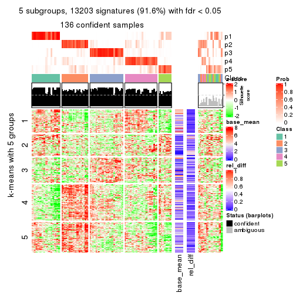
get_signatures(res, k = 6)
Signature heatmaps where rows are not scaled:
get_signatures(res, k = 2, scale_rows = FALSE)

get_signatures(res, k = 3, scale_rows = FALSE)
get_signatures(res, k = 4, scale_rows = FALSE)
get_signatures(res, k = 5, scale_rows = FALSE)
get_signatures(res, k = 6, scale_rows = FALSE)
Compare the overlap of signatures from different k:
compare_signatures(res)
get_signature() returns a data frame invisibly. TO get the list of signatures, the function
call should be assigned to a variable explicitly. In following code, if plot argument is set
to FALSE, no heatmap is plotted while only the differential analysis is performed.
# code only for demonstration
tb = get_signature(res, k = ..., plot = FALSE)
An example of the output of tb is:
#> which_row fdr mean_1 mean_2 scaled_mean_1 scaled_mean_2 km
#> 1 38 0.042760348 8.373488 9.131774 -0.5533452 0.5164555 1
#> 2 40 0.018707592 7.106213 8.469186 -0.6173731 0.5762149 1
#> 3 55 0.019134737 10.221463 11.207825 -0.6159697 0.5749050 1
#> 4 59 0.006059896 5.921854 7.869574 -0.6899429 0.6439467 1
#> 5 60 0.018055526 8.928898 10.211722 -0.6204761 0.5791110 1
#> 6 98 0.009384629 15.714769 14.887706 0.6635654 -0.6193277 2
...
The columns in tb are:
which_row: row indices corresponding to the input matrix.fdr: FDR for the differential test. mean_x: The mean value in group x.scaled_mean_x: The mean value in group x after rows are scaled.km: Row groups if k-means clustering is applied to rows.UMAP plot which shows how samples are separated.
dimension_reduction(res, k = 2, method = "UMAP")
dimension_reduction(res, k = 3, method = "UMAP")
dimension_reduction(res, k = 4, method = "UMAP")
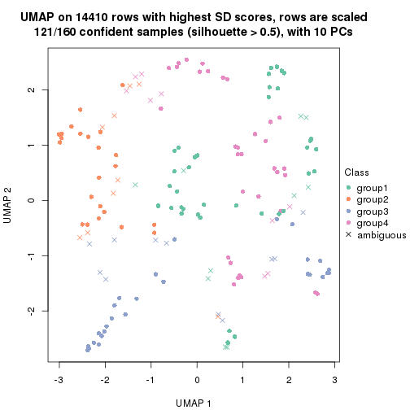
dimension_reduction(res, k = 5, method = "UMAP")

dimension_reduction(res, k = 6, method = "UMAP")
Following heatmap shows how subgroups are split when increasing k:
collect_classes(res)
If matrix rows can be associated to genes, consider to use GO_Enrichment(res,
...) to perform function enrichment for the signature genes.
The object with results only for a single top-value method and a single partition method can be extracted as:
res = res_list["CV", "hclust"]
# you can also extract it by
# res = res_list["CV:hclust"]
A summary of res and all the functions that can be applied to it:
res
#> A 'ConsensusPartition' object with k = 2, 3, 4, 5, 6.
#> On a matrix with 14410 rows and 160 columns.
#> Top rows (1000, 2000, 3000, 4000, 5000) are extracted by 'CV' method.
#> Subgroups are detected by 'hclust' method.
#> Performed in total 1250 partitions by row resampling.
#> Best k for subgroups seems to be 5.
#>
#> Following methods can be applied to this 'ConsensusPartition' object:
#> [1] "cola_report" "collect_classes" "collect_plots"
#> [4] "collect_stats" "colnames" "compare_signatures"
#> [7] "consensus_heatmap" "dimension_reduction" "functional_enrichment"
#> [10] "get_anno_col" "get_anno" "get_classes"
#> [13] "get_consensus" "get_matrix" "get_membership"
#> [16] "get_param" "get_signatures" "get_stats"
#> [19] "is_best_k" "is_stable_k" "membership_heatmap"
#> [22] "ncol" "nrow" "plot_ecdf"
#> [25] "rownames" "select_partition_number" "show"
#> [28] "suggest_best_k" "test_to_known_factors"
collect_plots() function collects all the plots made from res for all k (number of partitions)
into one single page to provide an easy and fast comparison between different k.
collect_plots(res)
The plots are:
k and the heatmap of
predicted classes for each k.k.k.k.All the plots in panels can be made by individual functions and they are plotted later in this section.
select_partition_number() produces several plots showing different
statistics for choosing “optimized” k. There are following statistics:
k;k, the area increased is defined as \(A_k - A_{k-1}\).The detailed explanations of these statistics can be found in the cola vignette.
Generally speaking, lower PAC score, higher mean silhouette score or higher
concordance corresponds to better partition. Rand index and Jaccard index
measure how similar the current partition is compared to partition with k-1.
If they are too similar, we won't accept k is better than k-1.
select_partition_number(res)
The numeric values for all these statistics can be obtained by get_stats().
get_stats(res)
#> k 1-PAC mean_silhouette concordance area_increased Rand Jaccard
#> 2 2 0.203 0.685 0.799 0.4187 0.525 0.525
#> 3 3 0.206 0.458 0.680 0.4379 0.781 0.609
#> 4 4 0.317 0.444 0.638 0.0985 0.738 0.466
#> 5 5 0.467 0.538 0.686 0.0958 0.826 0.558
#> 6 6 0.464 0.519 0.662 0.0263 0.933 0.779
suggest_best_k() suggests the best \(k\) based on these statistics. The rules are as follows:
NA.suggest_best_k(res)
#> [1] 5
Following shows the table of the partitions (You need to click the show/hide
code output link to see it). The membership matrix (columns with name p*)
is inferred by
clue::cl_consensus()
function with the SE method. Basically the value in the membership matrix
represents the probability to belong to a certain group. The finall class
label for an item is determined with the group with highest probability it
belongs to.
In get_classes() function, the entropy is calculated from the membership
matrix and the silhouette score is calculated from the consensus matrix.
cbind(get_classes(res, k = 2), get_membership(res, k = 2))
#> class entropy silhouette p1 p2
#> SRR031811 2 0.7674 0.7979 0.224 0.776
#> SRR031812 1 0.1184 0.7893 0.984 0.016
#> SRR031813 2 0.0000 0.6595 0.000 1.000
#> SRR031814 1 0.1184 0.7893 0.984 0.016
#> SRR031815 1 0.7815 0.6125 0.768 0.232
#> SRR031816 2 0.7950 0.7995 0.240 0.760
#> SRR031817 2 0.9209 0.7601 0.336 0.664
#> SRR031818 2 0.9209 0.7533 0.336 0.664
#> SRR031819 2 0.9209 0.7601 0.336 0.664
#> SRR031820 2 0.9209 0.7601 0.336 0.664
#> SRR031821 2 0.8608 0.7835 0.284 0.716
#> SRR031822 1 0.0672 0.7910 0.992 0.008
#> SRR031823 2 0.9608 0.7114 0.384 0.616
#> SRR031824 2 0.5059 0.7278 0.112 0.888
#> SRR031825 2 0.5059 0.7278 0.112 0.888
#> SRR031826 2 0.0000 0.6595 0.000 1.000
#> SRR031827 2 0.7950 0.7995 0.240 0.760
#> SRR031828 1 0.1184 0.7893 0.984 0.016
#> SRR031829 2 0.7674 0.7979 0.224 0.776
#> SRR031830 1 0.7815 0.6125 0.768 0.232
#> SRR031831 2 0.9209 0.7601 0.336 0.664
#> SRR031832 2 0.9209 0.7601 0.336 0.664
#> SRR031833 2 0.9209 0.7533 0.336 0.664
#> SRR031834 1 0.0672 0.7910 0.992 0.008
#> SRR031835 1 0.1184 0.7893 0.984 0.016
#> SRR031836 2 0.9209 0.7601 0.336 0.664
#> SRR031837 2 0.9209 0.7601 0.336 0.664
#> SRR031838 2 0.0000 0.6595 0.000 1.000
#> SRR031839 2 0.9044 0.7759 0.320 0.680
#> SRR031840 1 0.0000 0.7917 1.000 0.000
#> SRR031841 1 0.2423 0.7831 0.960 0.040
#> SRR031842 2 0.0000 0.6595 0.000 1.000
#> SRR031843 2 0.9209 0.7601 0.336 0.664
#> SRR031844 1 0.9775 -0.0579 0.588 0.412
#> SRR031845 2 0.7602 0.7974 0.220 0.780
#> SRR031846 1 0.8813 0.3969 0.700 0.300
#> SRR031847 2 0.9209 0.7601 0.336 0.664
#> SRR031848 2 0.9209 0.7601 0.336 0.664
#> SRR031849 2 0.9209 0.7601 0.336 0.664
#> SRR031850 2 0.0000 0.6595 0.000 1.000
#> SRR031851 2 0.7528 0.7973 0.216 0.784
#> SRR031852 1 0.2423 0.7831 0.960 0.040
#> SRR031853 1 0.2423 0.7831 0.960 0.040
#> SRR031854 1 0.9087 0.3952 0.676 0.324
#> SRR031855 2 0.4431 0.7177 0.092 0.908
#> SRR031857 2 0.8081 0.7970 0.248 0.752
#> SRR031858 2 0.9754 0.6372 0.408 0.592
#> SRR031859 2 0.5059 0.7278 0.112 0.888
#> SRR031860 2 0.5059 0.7278 0.112 0.888
#> SRR031861 2 0.5059 0.7278 0.112 0.888
#> SRR031862 1 0.0000 0.7917 1.000 0.000
#> SRR031863 2 0.7528 0.7973 0.216 0.784
#> SRR031864 2 0.7528 0.7973 0.216 0.784
#> SRR031865 2 0.5629 0.5893 0.132 0.868
#> SRR031866 1 0.0000 0.7917 1.000 0.000
#> SRR031867 2 0.9129 0.7624 0.328 0.672
#> SRR031868 2 0.9209 0.7545 0.336 0.664
#> SRR031869 1 0.0000 0.7917 1.000 0.000
#> SRR031870 2 0.9754 0.6372 0.408 0.592
#> SRR031871 2 0.8661 0.3616 0.288 0.712
#> SRR031872 1 0.7815 0.6125 0.768 0.232
#> SRR031873 1 0.0000 0.7917 1.000 0.000
#> SRR031874 1 0.6247 0.6566 0.844 0.156
#> SRR031875 2 0.9209 0.7601 0.336 0.664
#> SRR031876 1 0.0000 0.7917 1.000 0.000
#> SRR031877 1 0.9286 0.2536 0.656 0.344
#> SRR031878 2 0.7528 0.7973 0.216 0.784
#> SRR031879 2 0.9209 0.7601 0.336 0.664
#> SRR031880 2 0.9608 0.7114 0.384 0.616
#> SRR031881 2 0.8608 0.7835 0.284 0.716
#> SRR031882 2 0.9044 0.7759 0.320 0.680
#> SRR031883 2 0.9209 0.7601 0.336 0.664
#> SRR031884 2 0.9209 0.7601 0.336 0.664
#> SRR031885 2 0.0000 0.6595 0.000 1.000
#> SRR031886 2 0.9209 0.7601 0.336 0.664
#> SRR031887 1 0.0000 0.7917 1.000 0.000
#> SRR031888 2 0.7056 0.7891 0.192 0.808
#> SRR031889 1 0.2423 0.7831 0.960 0.040
#> SRR031890 1 0.8813 0.3969 0.700 0.300
#> SRR031891 2 0.7602 0.7974 0.220 0.780
#> SRR031892 1 0.9775 -0.0579 0.588 0.412
#> SRR031893 1 0.8813 0.3969 0.700 0.300
#> SRR031894 2 0.6712 0.7267 0.176 0.824
#> SRR031895 1 0.7815 0.6125 0.768 0.232
#> SRR031896 2 0.0000 0.6595 0.000 1.000
#> SRR031897 2 0.8081 0.7970 0.248 0.752
#> SRR031898 2 0.8608 0.7835 0.284 0.716
#> SRR031899 2 0.9170 0.7624 0.332 0.668
#> SRR031900 2 0.9129 0.7624 0.328 0.672
#> SRR031901 2 0.9754 0.6372 0.408 0.592
#> SRR031902 2 0.8661 0.3616 0.288 0.712
#> SRR031903 1 0.0000 0.7917 1.000 0.000
#> SRR031904 2 0.9209 0.7545 0.336 0.664
#> SRR031905 1 0.7815 0.6125 0.768 0.232
#> SRR031906 1 0.0000 0.7917 1.000 0.000
#> SRR031907 2 0.8813 0.7778 0.300 0.700
#> SRR031908 2 0.9209 0.7601 0.336 0.664
#> SRR031909 1 0.0000 0.7917 1.000 0.000
#> SRR031910 2 0.9170 0.7624 0.332 0.668
#> SRR031911 2 0.9209 0.7601 0.336 0.664
#> SRR031912 1 0.6247 0.6566 0.844 0.156
#> SRR031913 2 0.7528 0.7973 0.216 0.784
#> SRR031914 1 0.0000 0.7917 1.000 0.000
#> SRR031915 1 0.9661 0.0396 0.608 0.392
#> SRR031916 2 0.9608 0.7114 0.384 0.616
#> SRR031917 1 0.7528 0.5626 0.784 0.216
#> SRR031918 2 0.9170 0.7624 0.332 0.668
#> SRR031919 1 0.0000 0.7917 1.000 0.000
#> SRR031920 2 0.9170 0.7624 0.332 0.668
#> SRR031921 2 0.6712 0.7267 0.176 0.824
#> SRR031922 2 0.9754 0.6372 0.408 0.592
#> SRR031923 2 0.5059 0.7278 0.112 0.888
#> SRR031924 1 0.8813 0.3969 0.700 0.300
#> SRR031925 2 0.8081 0.7970 0.248 0.752
#> SRR031926 2 0.8081 0.7970 0.248 0.752
#> SRR031927 2 0.0000 0.6595 0.000 1.000
#> SRR031928 1 0.0000 0.7917 1.000 0.000
#> SRR031929 2 0.7528 0.7973 0.216 0.784
#> SRR031930 2 0.7528 0.7973 0.216 0.784
#> SRR031931 2 0.5629 0.5893 0.132 0.868
#> SRR031932 1 0.0000 0.7917 1.000 0.000
#> SRR031933 2 0.8608 0.7835 0.284 0.716
#> SRR031934 1 0.7815 0.6125 0.768 0.232
#> SRR031935 2 0.9608 0.7114 0.384 0.616
#> SRR031936 1 0.0000 0.7917 1.000 0.000
#> SRR031937 1 0.0000 0.7917 1.000 0.000
#> SRR031938 1 0.7528 0.5626 0.784 0.216
#> SRR031939 2 0.4431 0.7177 0.092 0.908
#> SRR031940 1 0.2423 0.7831 0.960 0.040
#> SRR031941 2 0.9427 0.7389 0.360 0.640
#> SRR031942 1 0.9286 0.2536 0.656 0.344
#> SRR031943 2 0.9170 0.7624 0.332 0.668
#> SRR031944 1 0.8813 0.3968 0.700 0.300
#> SRR031945 1 0.9427 0.1870 0.640 0.360
#> SRR031946 2 0.9170 0.7624 0.332 0.668
#> SRR031947 1 0.9661 0.0396 0.608 0.392
#> SRR031948 1 0.0000 0.7917 1.000 0.000
#> SRR031949 1 0.2423 0.7831 0.960 0.040
#> SRR031950 2 0.0000 0.6595 0.000 1.000
#> SRR031951 2 0.7528 0.7973 0.216 0.784
#> SRR031952 2 0.8661 0.3616 0.288 0.712
#> SRR031953 1 0.0000 0.7917 1.000 0.000
#> SRR031954 1 0.9427 0.1870 0.640 0.360
#> SRR031955 1 0.8813 0.3968 0.700 0.300
#> SRR031956 2 0.8813 0.7778 0.300 0.700
#> SRR031957 2 0.4431 0.7177 0.092 0.908
#> SRR031958 2 0.7950 0.7995 0.240 0.760
#> SRR031959 2 0.9427 0.7389 0.360 0.640
#> SRR031960 2 0.7950 0.7995 0.240 0.760
#> SRR031961 1 0.0000 0.7917 1.000 0.000
#> SRR031962 1 0.0000 0.7917 1.000 0.000
#> SRR031963 2 0.7528 0.7973 0.216 0.784
#> SRR031964 2 0.8661 0.3616 0.288 0.712
#> SRR031965 2 0.0000 0.6595 0.000 1.000
#> SRR031966 2 0.0000 0.6595 0.000 1.000
#> SRR031967 1 0.2423 0.7831 0.960 0.040
#> SRR031968 1 0.2423 0.7831 0.960 0.040
#> SRR031969 1 0.9087 0.3952 0.676 0.324
#> SRR031970 2 0.1843 0.6601 0.028 0.972
#> SRR031971 1 0.8327 0.5976 0.736 0.264
cbind(get_classes(res, k = 3), get_membership(res, k = 3))
#> class entropy silhouette p1 p2 p3
#> SRR031811 3 0.614 0.24195 0.024 0.256 0.720
#> SRR031812 1 0.294 0.79124 0.916 0.012 0.072
#> SRR031813 2 0.369 0.67375 0.000 0.860 0.140
#> SRR031814 1 0.294 0.79124 0.916 0.012 0.072
#> SRR031815 1 0.511 0.63806 0.768 0.228 0.004
#> SRR031816 3 0.726 0.12864 0.036 0.372 0.592
#> SRR031817 3 0.458 0.54354 0.184 0.004 0.812
#> SRR031818 3 0.849 0.27812 0.124 0.292 0.584
#> SRR031819 3 0.458 0.54354 0.184 0.004 0.812
#> SRR031820 3 0.458 0.54354 0.184 0.004 0.812
#> SRR031821 3 0.813 0.10949 0.072 0.400 0.528
#> SRR031822 1 0.268 0.79385 0.924 0.008 0.068
#> SRR031823 3 0.668 0.50161 0.208 0.064 0.728
#> SRR031824 2 0.700 0.46202 0.024 0.588 0.388
#> SRR031825 2 0.700 0.46202 0.024 0.588 0.388
#> SRR031826 2 0.369 0.67375 0.000 0.860 0.140
#> SRR031827 3 0.726 0.12864 0.036 0.372 0.592
#> SRR031828 1 0.294 0.79124 0.916 0.012 0.072
#> SRR031829 3 0.614 0.24195 0.024 0.256 0.720
#> SRR031830 1 0.511 0.63806 0.768 0.228 0.004
#> SRR031831 3 0.458 0.54354 0.184 0.004 0.812
#> SRR031832 3 0.435 0.54341 0.184 0.000 0.816
#> SRR031833 3 0.849 0.27812 0.124 0.292 0.584
#> SRR031834 1 0.268 0.79385 0.924 0.008 0.068
#> SRR031835 1 0.294 0.79124 0.916 0.012 0.072
#> SRR031836 3 0.475 0.54225 0.184 0.008 0.808
#> SRR031837 3 0.458 0.54354 0.184 0.004 0.812
#> SRR031838 2 0.362 0.67197 0.000 0.864 0.136
#> SRR031839 3 0.875 0.21854 0.120 0.356 0.524
#> SRR031840 1 0.216 0.79690 0.936 0.000 0.064
#> SRR031841 1 0.355 0.72790 0.868 0.000 0.132
#> SRR031842 2 0.579 0.59819 0.000 0.668 0.332
#> SRR031843 3 0.458 0.54354 0.184 0.004 0.812
#> SRR031844 3 0.810 0.17110 0.420 0.068 0.512
#> SRR031845 3 0.663 0.26325 0.064 0.204 0.732
#> SRR031846 1 0.750 0.20988 0.572 0.044 0.384
#> SRR031847 3 0.435 0.54341 0.184 0.000 0.816
#> SRR031848 3 0.475 0.54225 0.184 0.008 0.808
#> SRR031849 3 0.435 0.54341 0.184 0.000 0.816
#> SRR031850 2 0.388 0.66118 0.000 0.848 0.152
#> SRR031851 3 0.707 -0.04922 0.020 0.480 0.500
#> SRR031852 1 0.355 0.72790 0.868 0.000 0.132
#> SRR031853 1 0.355 0.72790 0.868 0.000 0.132
#> SRR031854 1 0.781 0.16340 0.516 0.052 0.432
#> SRR031855 2 0.525 0.65743 0.020 0.792 0.188
#> SRR031857 3 0.742 0.09623 0.036 0.420 0.544
#> SRR031858 3 0.949 0.24045 0.252 0.252 0.496
#> SRR031859 2 0.700 0.46202 0.024 0.588 0.388
#> SRR031860 2 0.700 0.46202 0.024 0.588 0.388
#> SRR031861 2 0.700 0.46202 0.024 0.588 0.388
#> SRR031862 1 0.216 0.79690 0.936 0.000 0.064
#> SRR031863 3 0.707 -0.03470 0.020 0.468 0.512
#> SRR031864 3 0.707 -0.03470 0.020 0.468 0.512
#> SRR031865 2 0.632 0.63321 0.120 0.772 0.108
#> SRR031866 1 0.216 0.79690 0.936 0.000 0.064
#> SRR031867 3 0.913 0.19460 0.172 0.304 0.524
#> SRR031868 3 0.856 0.27155 0.124 0.304 0.572
#> SRR031869 1 0.216 0.79690 0.936 0.000 0.064
#> SRR031870 3 0.949 0.24045 0.252 0.252 0.496
#> SRR031871 2 0.895 0.48652 0.272 0.556 0.172
#> SRR031872 1 0.511 0.63806 0.768 0.228 0.004
#> SRR031873 1 0.216 0.79690 0.936 0.000 0.064
#> SRR031874 1 0.578 0.66360 0.768 0.032 0.200
#> SRR031875 3 0.465 0.54713 0.176 0.008 0.816
#> SRR031876 1 0.216 0.79690 0.936 0.000 0.064
#> SRR031877 1 0.771 0.10004 0.528 0.048 0.424
#> SRR031878 3 0.707 -0.03470 0.020 0.468 0.512
#> SRR031879 3 0.458 0.54354 0.184 0.004 0.812
#> SRR031880 3 0.668 0.50161 0.208 0.064 0.728
#> SRR031881 3 0.813 0.10949 0.072 0.400 0.528
#> SRR031882 3 0.875 0.21854 0.120 0.356 0.524
#> SRR031883 3 0.458 0.54354 0.184 0.004 0.812
#> SRR031884 3 0.435 0.54341 0.184 0.000 0.816
#> SRR031885 2 0.362 0.67197 0.000 0.864 0.136
#> SRR031886 3 0.458 0.54354 0.184 0.004 0.812
#> SRR031887 1 0.216 0.79690 0.936 0.000 0.064
#> SRR031888 3 0.707 -0.31268 0.020 0.476 0.504
#> SRR031889 1 0.355 0.72790 0.868 0.000 0.132
#> SRR031890 1 0.750 0.20988 0.572 0.044 0.384
#> SRR031891 3 0.663 0.26325 0.064 0.204 0.732
#> SRR031892 3 0.810 0.17110 0.420 0.068 0.512
#> SRR031893 1 0.750 0.20988 0.572 0.044 0.384
#> SRR031894 2 0.843 0.28944 0.088 0.500 0.412
#> SRR031895 1 0.511 0.63806 0.768 0.228 0.004
#> SRR031896 2 0.369 0.67375 0.000 0.860 0.140
#> SRR031897 3 0.742 0.09623 0.036 0.420 0.544
#> SRR031898 3 0.813 0.10949 0.072 0.400 0.528
#> SRR031899 3 0.475 0.54407 0.184 0.008 0.808
#> SRR031900 3 0.913 0.19460 0.172 0.304 0.524
#> SRR031901 3 0.949 0.24045 0.252 0.252 0.496
#> SRR031902 2 0.895 0.48652 0.272 0.556 0.172
#> SRR031903 1 0.216 0.79690 0.936 0.000 0.064
#> SRR031904 3 0.856 0.27155 0.124 0.304 0.572
#> SRR031905 1 0.511 0.63806 0.768 0.228 0.004
#> SRR031906 1 0.216 0.79690 0.936 0.000 0.064
#> SRR031907 3 0.830 0.20196 0.092 0.348 0.560
#> SRR031908 3 0.458 0.54354 0.184 0.004 0.812
#> SRR031909 1 0.216 0.79690 0.936 0.000 0.064
#> SRR031910 3 0.475 0.54407 0.184 0.008 0.808
#> SRR031911 3 0.465 0.54713 0.176 0.008 0.816
#> SRR031912 1 0.578 0.66360 0.768 0.032 0.200
#> SRR031913 3 0.707 -0.03470 0.020 0.468 0.512
#> SRR031914 1 0.216 0.79690 0.936 0.000 0.064
#> SRR031915 3 0.806 0.10557 0.440 0.064 0.496
#> SRR031916 3 0.668 0.50161 0.208 0.064 0.728
#> SRR031917 1 0.710 0.58372 0.704 0.080 0.216
#> SRR031918 3 0.475 0.54407 0.184 0.008 0.808
#> SRR031919 1 0.216 0.79690 0.936 0.000 0.064
#> SRR031920 3 0.475 0.54407 0.184 0.008 0.808
#> SRR031921 2 0.843 0.28944 0.088 0.500 0.412
#> SRR031922 3 0.949 0.24045 0.252 0.252 0.496
#> SRR031923 2 0.700 0.46202 0.024 0.588 0.388
#> SRR031924 1 0.750 0.20988 0.572 0.044 0.384
#> SRR031925 3 0.742 0.09623 0.036 0.420 0.544
#> SRR031926 3 0.742 0.09623 0.036 0.420 0.544
#> SRR031927 2 0.369 0.67375 0.000 0.860 0.140
#> SRR031928 1 0.216 0.79690 0.936 0.000 0.064
#> SRR031929 3 0.707 -0.03470 0.020 0.468 0.512
#> SRR031930 3 0.707 -0.03470 0.020 0.468 0.512
#> SRR031931 2 0.632 0.63321 0.120 0.772 0.108
#> SRR031932 1 0.216 0.79690 0.936 0.000 0.064
#> SRR031933 3 0.813 0.10949 0.072 0.400 0.528
#> SRR031934 1 0.511 0.63806 0.768 0.228 0.004
#> SRR031935 3 0.668 0.50161 0.208 0.064 0.728
#> SRR031936 1 0.216 0.79690 0.936 0.000 0.064
#> SRR031937 1 0.216 0.79690 0.936 0.000 0.064
#> SRR031938 1 0.710 0.58372 0.704 0.080 0.216
#> SRR031939 2 0.525 0.65743 0.020 0.792 0.188
#> SRR031940 1 0.355 0.72790 0.868 0.000 0.132
#> SRR031941 3 0.623 0.52386 0.172 0.064 0.764
#> SRR031942 1 0.771 0.10004 0.528 0.048 0.424
#> SRR031943 3 0.475 0.54407 0.184 0.008 0.808
#> SRR031944 1 0.753 0.19249 0.532 0.040 0.428
#> SRR031945 3 0.776 0.00265 0.472 0.048 0.480
#> SRR031946 3 0.475 0.54407 0.184 0.008 0.808
#> SRR031947 3 0.806 0.10557 0.440 0.064 0.496
#> SRR031948 1 0.216 0.79690 0.936 0.000 0.064
#> SRR031949 1 0.355 0.72790 0.868 0.000 0.132
#> SRR031950 2 0.388 0.66118 0.000 0.848 0.152
#> SRR031951 3 0.707 -0.04922 0.020 0.480 0.500
#> SRR031952 2 0.895 0.48652 0.272 0.556 0.172
#> SRR031953 1 0.216 0.79690 0.936 0.000 0.064
#> SRR031954 3 0.776 0.00265 0.472 0.048 0.480
#> SRR031955 1 0.753 0.19249 0.532 0.040 0.428
#> SRR031956 3 0.830 0.20196 0.092 0.348 0.560
#> SRR031957 2 0.525 0.65743 0.020 0.792 0.188
#> SRR031958 3 0.726 0.12864 0.036 0.372 0.592
#> SRR031959 3 0.623 0.52386 0.172 0.064 0.764
#> SRR031960 3 0.726 0.12864 0.036 0.372 0.592
#> SRR031961 1 0.216 0.79690 0.936 0.000 0.064
#> SRR031962 1 0.216 0.79690 0.936 0.000 0.064
#> SRR031963 3 0.707 -0.04922 0.020 0.480 0.500
#> SRR031964 2 0.895 0.48652 0.272 0.556 0.172
#> SRR031965 2 0.388 0.66118 0.000 0.848 0.152
#> SRR031966 2 0.175 0.66000 0.000 0.952 0.048
#> SRR031967 1 0.355 0.72790 0.868 0.000 0.132
#> SRR031968 1 0.355 0.72790 0.868 0.000 0.132
#> SRR031969 1 0.781 0.16340 0.516 0.052 0.432
#> SRR031970 2 0.362 0.67881 0.012 0.884 0.104
#> SRR031971 1 0.525 0.60729 0.736 0.264 0.000
cbind(get_classes(res, k = 4), get_membership(res, k = 4))
#> class entropy silhouette p1 p2 p3 p4
#> SRR031811 4 0.614 0.2527 0.000 0.092 0.260 0.648
#> SRR031812 1 0.448 0.7105 0.820 0.008 0.072 0.100
#> SRR031813 3 0.956 -0.2510 0.152 0.180 0.360 0.308
#> SRR031814 1 0.448 0.7105 0.820 0.008 0.072 0.100
#> SRR031815 1 0.233 0.4435 0.916 0.012 0.072 0.000
#> SRR031816 4 0.374 0.4930 0.004 0.036 0.108 0.852
#> SRR031817 3 0.552 0.7147 0.044 0.000 0.668 0.288
#> SRR031818 4 0.469 0.4557 0.052 0.024 0.108 0.816
#> SRR031819 3 0.570 0.7139 0.044 0.004 0.664 0.288
#> SRR031820 3 0.552 0.7147 0.044 0.000 0.668 0.288
#> SRR031821 4 0.180 0.5420 0.016 0.032 0.004 0.948
#> SRR031822 1 0.428 0.7199 0.832 0.008 0.068 0.092
#> SRR031823 3 0.703 0.5917 0.044 0.048 0.560 0.348
#> SRR031824 4 0.577 0.5154 0.112 0.028 0.108 0.752
#> SRR031825 4 0.586 0.5155 0.112 0.032 0.108 0.748
#> SRR031826 3 0.956 -0.2510 0.152 0.180 0.360 0.308
#> SRR031827 4 0.374 0.4930 0.004 0.036 0.108 0.852
#> SRR031828 1 0.448 0.7105 0.820 0.008 0.072 0.100
#> SRR031829 4 0.614 0.2527 0.000 0.092 0.260 0.648
#> SRR031830 1 0.233 0.4435 0.916 0.012 0.072 0.000
#> SRR031831 3 0.552 0.7147 0.044 0.000 0.668 0.288
#> SRR031832 3 0.572 0.7121 0.044 0.004 0.660 0.292
#> SRR031833 4 0.469 0.4557 0.052 0.024 0.108 0.816
#> SRR031834 1 0.428 0.7199 0.832 0.008 0.068 0.092
#> SRR031835 1 0.448 0.7105 0.820 0.008 0.072 0.100
#> SRR031836 3 0.547 0.7118 0.044 0.000 0.676 0.280
#> SRR031837 3 0.552 0.7147 0.044 0.000 0.668 0.288
#> SRR031838 3 0.956 -0.2496 0.152 0.180 0.364 0.304
#> SRR031839 4 0.555 0.3933 0.028 0.016 0.260 0.696
#> SRR031840 1 0.383 0.7286 0.848 0.000 0.068 0.084
#> SRR031841 1 0.361 0.5102 0.800 0.200 0.000 0.000
#> SRR031842 3 0.901 -0.2624 0.152 0.104 0.428 0.316
#> SRR031843 3 0.570 0.7139 0.044 0.004 0.664 0.288
#> SRR031844 4 0.874 -0.1766 0.228 0.048 0.312 0.412
#> SRR031845 4 0.759 0.1528 0.000 0.216 0.320 0.464
#> SRR031846 1 0.940 -0.1238 0.348 0.100 0.240 0.312
#> SRR031847 3 0.572 0.7121 0.044 0.004 0.660 0.292
#> SRR031848 3 0.547 0.7118 0.044 0.000 0.676 0.280
#> SRR031849 3 0.572 0.7121 0.044 0.004 0.660 0.292
#> SRR031850 4 0.947 0.2596 0.152 0.216 0.216 0.416
#> SRR031851 4 0.349 0.5163 0.000 0.172 0.004 0.824
#> SRR031852 1 0.361 0.5102 0.800 0.200 0.000 0.000
#> SRR031853 1 0.361 0.5102 0.800 0.200 0.000 0.000
#> SRR031854 2 0.666 1.0000 0.260 0.624 0.008 0.108
#> SRR031855 4 0.837 0.3537 0.108 0.128 0.212 0.552
#> SRR031857 4 0.154 0.5391 0.004 0.032 0.008 0.956
#> SRR031858 4 0.708 0.4251 0.084 0.084 0.164 0.668
#> SRR031859 4 0.586 0.5155 0.112 0.032 0.108 0.748
#> SRR031860 4 0.577 0.5154 0.112 0.028 0.108 0.752
#> SRR031861 4 0.586 0.5155 0.112 0.032 0.108 0.748
#> SRR031862 1 0.401 0.7275 0.844 0.004 0.068 0.084
#> SRR031863 4 0.419 0.4981 0.000 0.228 0.008 0.764
#> SRR031864 4 0.419 0.4981 0.000 0.228 0.008 0.764
#> SRR031865 4 0.964 0.1099 0.248 0.192 0.176 0.384
#> SRR031866 1 0.401 0.7275 0.844 0.004 0.068 0.084
#> SRR031867 4 0.588 0.4645 0.052 0.032 0.192 0.724
#> SRR031868 4 0.460 0.4662 0.052 0.028 0.096 0.824
#> SRR031869 1 0.383 0.7286 0.848 0.000 0.068 0.084
#> SRR031870 4 0.708 0.4251 0.084 0.084 0.164 0.668
#> SRR031871 4 0.736 0.1499 0.392 0.032 0.076 0.500
#> SRR031872 1 0.233 0.4435 0.916 0.012 0.072 0.000
#> SRR031873 1 0.383 0.7286 0.848 0.000 0.068 0.084
#> SRR031874 1 0.822 0.3172 0.556 0.072 0.208 0.164
#> SRR031875 3 0.564 0.6990 0.044 0.000 0.648 0.308
#> SRR031876 1 0.401 0.7275 0.844 0.004 0.068 0.084
#> SRR031877 4 0.946 -0.0851 0.268 0.100 0.312 0.320
#> SRR031878 4 0.419 0.4981 0.000 0.228 0.008 0.764
#> SRR031879 3 0.570 0.7139 0.044 0.004 0.664 0.288
#> SRR031880 3 0.703 0.5917 0.044 0.048 0.560 0.348
#> SRR031881 4 0.180 0.5420 0.016 0.032 0.004 0.948
#> SRR031882 4 0.555 0.3933 0.028 0.016 0.260 0.696
#> SRR031883 3 0.552 0.7147 0.044 0.000 0.668 0.288
#> SRR031884 3 0.572 0.7121 0.044 0.004 0.660 0.292
#> SRR031885 3 0.956 -0.2496 0.152 0.180 0.364 0.304
#> SRR031886 3 0.552 0.7147 0.044 0.000 0.668 0.288
#> SRR031887 1 0.383 0.7286 0.848 0.000 0.068 0.084
#> SRR031888 4 0.719 0.3075 0.012 0.100 0.384 0.504
#> SRR031889 1 0.361 0.5102 0.800 0.200 0.000 0.000
#> SRR031890 1 0.940 -0.1238 0.348 0.100 0.240 0.312
#> SRR031891 4 0.759 0.1528 0.000 0.216 0.320 0.464
#> SRR031892 4 0.874 -0.1766 0.228 0.048 0.312 0.412
#> SRR031893 1 0.940 -0.1238 0.348 0.100 0.240 0.312
#> SRR031894 4 0.725 0.4442 0.120 0.020 0.280 0.580
#> SRR031895 1 0.233 0.4435 0.916 0.012 0.072 0.000
#> SRR031896 3 0.956 -0.2510 0.152 0.180 0.360 0.308
#> SRR031897 4 0.154 0.5391 0.004 0.032 0.008 0.956
#> SRR031898 4 0.180 0.5420 0.016 0.032 0.004 0.948
#> SRR031899 3 0.544 0.7092 0.040 0.000 0.672 0.288
#> SRR031900 4 0.588 0.4645 0.052 0.032 0.192 0.724
#> SRR031901 4 0.708 0.4251 0.084 0.084 0.164 0.668
#> SRR031902 4 0.736 0.1499 0.392 0.032 0.076 0.500
#> SRR031903 1 0.383 0.7286 0.848 0.000 0.068 0.084
#> SRR031904 4 0.460 0.4662 0.052 0.028 0.096 0.824
#> SRR031905 1 0.233 0.4435 0.916 0.012 0.072 0.000
#> SRR031906 1 0.383 0.7286 0.848 0.000 0.068 0.084
#> SRR031907 4 0.266 0.5182 0.024 0.012 0.048 0.916
#> SRR031908 3 0.570 0.7139 0.044 0.004 0.664 0.288
#> SRR031909 1 0.401 0.7275 0.844 0.004 0.068 0.084
#> SRR031910 3 0.544 0.7092 0.040 0.000 0.672 0.288
#> SRR031911 3 0.564 0.6990 0.044 0.000 0.648 0.308
#> SRR031912 1 0.822 0.3172 0.556 0.072 0.208 0.164
#> SRR031913 4 0.419 0.4981 0.000 0.228 0.008 0.764
#> SRR031914 1 0.383 0.7286 0.848 0.000 0.068 0.084
#> SRR031915 4 0.894 -0.1628 0.240 0.060 0.300 0.400
#> SRR031916 3 0.703 0.5917 0.044 0.048 0.560 0.348
#> SRR031917 1 0.873 0.1838 0.480 0.072 0.208 0.240
#> SRR031918 3 0.544 0.7092 0.040 0.000 0.672 0.288
#> SRR031919 1 0.408 0.7260 0.840 0.004 0.072 0.084
#> SRR031920 3 0.544 0.7092 0.040 0.000 0.672 0.288
#> SRR031921 4 0.725 0.4442 0.120 0.020 0.280 0.580
#> SRR031922 4 0.708 0.4251 0.084 0.084 0.164 0.668
#> SRR031923 4 0.586 0.5155 0.112 0.032 0.108 0.748
#> SRR031924 1 0.940 -0.1238 0.348 0.100 0.240 0.312
#> SRR031925 4 0.154 0.5391 0.004 0.032 0.008 0.956
#> SRR031926 4 0.154 0.5391 0.004 0.032 0.008 0.956
#> SRR031927 3 0.956 -0.2510 0.152 0.180 0.360 0.308
#> SRR031928 1 0.401 0.7275 0.844 0.004 0.068 0.084
#> SRR031929 4 0.419 0.4981 0.000 0.228 0.008 0.764
#> SRR031930 4 0.419 0.4981 0.000 0.228 0.008 0.764
#> SRR031931 4 0.964 0.1099 0.248 0.192 0.176 0.384
#> SRR031932 1 0.401 0.7275 0.844 0.004 0.068 0.084
#> SRR031933 4 0.180 0.5420 0.016 0.032 0.004 0.948
#> SRR031934 1 0.233 0.4435 0.916 0.012 0.072 0.000
#> SRR031935 3 0.703 0.5917 0.044 0.048 0.560 0.348
#> SRR031936 1 0.383 0.7286 0.848 0.000 0.068 0.084
#> SRR031937 1 0.408 0.7260 0.840 0.004 0.072 0.084
#> SRR031938 1 0.873 0.1838 0.480 0.072 0.208 0.240
#> SRR031939 4 0.837 0.3537 0.108 0.128 0.212 0.552
#> SRR031940 1 0.361 0.5102 0.800 0.200 0.000 0.000
#> SRR031941 3 0.672 0.5411 0.024 0.044 0.524 0.408
#> SRR031942 4 0.946 -0.0851 0.268 0.100 0.312 0.320
#> SRR031943 3 0.544 0.7092 0.040 0.000 0.672 0.288
#> SRR031944 4 0.928 -0.1307 0.320 0.084 0.252 0.344
#> SRR031945 4 0.908 -0.1656 0.280 0.064 0.288 0.368
#> SRR031946 3 0.544 0.7092 0.040 0.000 0.672 0.288
#> SRR031947 4 0.894 -0.1628 0.240 0.060 0.300 0.400
#> SRR031948 1 0.383 0.7286 0.848 0.000 0.068 0.084
#> SRR031949 1 0.361 0.5102 0.800 0.200 0.000 0.000
#> SRR031950 4 0.947 0.2596 0.152 0.216 0.216 0.416
#> SRR031951 4 0.349 0.5163 0.000 0.172 0.004 0.824
#> SRR031952 4 0.736 0.1499 0.392 0.032 0.076 0.500
#> SRR031953 1 0.383 0.7286 0.848 0.000 0.068 0.084
#> SRR031954 4 0.908 -0.1656 0.280 0.064 0.288 0.368
#> SRR031955 4 0.928 -0.1307 0.320 0.084 0.252 0.344
#> SRR031956 4 0.266 0.5182 0.024 0.012 0.048 0.916
#> SRR031957 4 0.837 0.3537 0.108 0.128 0.212 0.552
#> SRR031958 4 0.374 0.4930 0.004 0.036 0.108 0.852
#> SRR031959 3 0.672 0.5411 0.024 0.044 0.524 0.408
#> SRR031960 4 0.374 0.4930 0.004 0.036 0.108 0.852
#> SRR031961 1 0.383 0.7286 0.848 0.000 0.068 0.084
#> SRR031962 1 0.383 0.7286 0.848 0.000 0.068 0.084
#> SRR031963 4 0.349 0.5163 0.000 0.172 0.004 0.824
#> SRR031964 4 0.736 0.1499 0.392 0.032 0.076 0.500
#> SRR031965 4 0.947 0.2596 0.152 0.216 0.216 0.416
#> SRR031966 4 0.974 0.1686 0.152 0.268 0.244 0.336
#> SRR031967 1 0.361 0.5102 0.800 0.200 0.000 0.000
#> SRR031968 1 0.361 0.5102 0.800 0.200 0.000 0.000
#> SRR031969 2 0.666 1.0000 0.260 0.624 0.008 0.108
#> SRR031970 4 0.907 0.2432 0.152 0.132 0.252 0.464
#> SRR031971 1 0.301 0.3906 0.888 0.012 0.092 0.008
cbind(get_classes(res, k = 5), get_membership(res, k = 5))
#> class entropy silhouette p1 p2 p3 p4 p5
#> SRR031811 3 0.6439 -0.3755 0.000 0.136 0.436 0.420 0.008
#> SRR031812 1 0.2198 0.8190 0.920 0.000 0.048 0.020 0.012
#> SRR031813 2 0.5169 0.7085 0.000 0.688 0.128 0.184 0.000
#> SRR031814 1 0.2198 0.8190 0.920 0.000 0.048 0.020 0.012
#> SRR031815 1 0.3981 0.6328 0.748 0.236 0.004 0.004 0.008
#> SRR031816 4 0.5322 0.5276 0.000 0.060 0.324 0.612 0.004
#> SRR031817 3 0.0000 0.7226 0.000 0.000 1.000 0.000 0.000
#> SRR031818 4 0.5451 0.5345 0.004 0.000 0.344 0.588 0.064
#> SRR031819 3 0.0162 0.7227 0.000 0.000 0.996 0.000 0.004
#> SRR031820 3 0.0000 0.7226 0.000 0.000 1.000 0.000 0.000
#> SRR031821 4 0.4244 0.5580 0.008 0.008 0.200 0.764 0.020
#> SRR031822 1 0.2198 0.8179 0.920 0.000 0.048 0.012 0.020
#> SRR031823 3 0.3664 0.6667 0.000 0.024 0.840 0.040 0.096
#> SRR031824 4 0.5822 0.2873 0.000 0.220 0.140 0.632 0.008
#> SRR031825 4 0.5925 0.2878 0.000 0.220 0.140 0.628 0.012
#> SRR031826 2 0.5169 0.7085 0.000 0.688 0.128 0.184 0.000
#> SRR031827 4 0.5322 0.5276 0.000 0.060 0.324 0.612 0.004
#> SRR031828 1 0.2198 0.8190 0.920 0.000 0.048 0.020 0.012
#> SRR031829 3 0.6439 -0.3755 0.000 0.136 0.436 0.420 0.008
#> SRR031830 1 0.3981 0.6328 0.748 0.236 0.004 0.004 0.008
#> SRR031831 3 0.0000 0.7226 0.000 0.000 1.000 0.000 0.000
#> SRR031832 3 0.0324 0.7220 0.000 0.000 0.992 0.004 0.004
#> SRR031833 4 0.5451 0.5345 0.004 0.000 0.344 0.588 0.064
#> SRR031834 1 0.2198 0.8179 0.920 0.000 0.048 0.012 0.020
#> SRR031835 1 0.2198 0.8190 0.920 0.000 0.048 0.020 0.012
#> SRR031836 3 0.0451 0.7199 0.000 0.004 0.988 0.000 0.008
#> SRR031837 3 0.0000 0.7226 0.000 0.000 1.000 0.000 0.000
#> SRR031838 2 0.5032 0.7050 0.000 0.704 0.128 0.168 0.000
#> SRR031839 4 0.6587 0.4293 0.000 0.092 0.400 0.472 0.036
#> SRR031840 1 0.1197 0.8334 0.952 0.000 0.048 0.000 0.000
#> SRR031841 1 0.3047 0.7143 0.832 0.004 0.004 0.000 0.160
#> SRR031842 2 0.6532 0.4565 0.000 0.528 0.208 0.256 0.008
#> SRR031843 3 0.0162 0.7227 0.000 0.000 0.996 0.000 0.004
#> SRR031844 3 0.6826 0.4442 0.124 0.000 0.608 0.148 0.120
#> SRR031845 4 0.7932 -0.0452 0.004 0.220 0.212 0.460 0.104
#> SRR031846 3 0.8571 -0.1715 0.248 0.000 0.280 0.268 0.204
#> SRR031847 3 0.0324 0.7220 0.000 0.000 0.992 0.004 0.004
#> SRR031848 3 0.0451 0.7199 0.000 0.004 0.988 0.000 0.008
#> SRR031849 3 0.0324 0.7220 0.000 0.000 0.992 0.004 0.004
#> SRR031850 2 0.4825 0.4310 0.000 0.568 0.000 0.408 0.024
#> SRR031851 4 0.6075 0.4599 0.000 0.176 0.184 0.624 0.016
#> SRR031852 1 0.3211 0.7120 0.824 0.008 0.004 0.000 0.164
#> SRR031853 1 0.3211 0.7120 0.824 0.008 0.004 0.000 0.164
#> SRR031854 5 0.4181 1.0000 0.132 0.000 0.004 0.076 0.788
#> SRR031855 2 0.5980 0.5535 0.000 0.520 0.080 0.388 0.012
#> SRR031857 4 0.4501 0.5450 0.000 0.036 0.212 0.740 0.012
#> SRR031858 4 0.6367 0.3813 0.032 0.004 0.212 0.620 0.132
#> SRR031859 4 0.5925 0.2878 0.000 0.220 0.140 0.628 0.012
#> SRR031860 4 0.5822 0.2873 0.000 0.220 0.140 0.632 0.008
#> SRR031861 4 0.5925 0.2878 0.000 0.220 0.140 0.628 0.012
#> SRR031862 1 0.1757 0.8313 0.936 0.004 0.048 0.000 0.012
#> SRR031863 4 0.6506 0.4278 0.000 0.232 0.180 0.568 0.020
#> SRR031864 4 0.6506 0.4278 0.000 0.232 0.180 0.568 0.020
#> SRR031865 2 0.6810 0.5706 0.076 0.584 0.012 0.260 0.068
#> SRR031866 1 0.1862 0.8304 0.932 0.004 0.048 0.000 0.016
#> SRR031867 4 0.5228 0.4598 0.004 0.004 0.272 0.660 0.060
#> SRR031868 4 0.5564 0.5418 0.008 0.000 0.328 0.596 0.068
#> SRR031869 1 0.1197 0.8334 0.952 0.000 0.048 0.000 0.000
#> SRR031870 4 0.6367 0.3813 0.032 0.004 0.212 0.620 0.132
#> SRR031871 4 0.7645 -0.1423 0.200 0.236 0.016 0.496 0.052
#> SRR031872 1 0.3981 0.6328 0.748 0.236 0.004 0.004 0.008
#> SRR031873 1 0.1197 0.8334 0.952 0.000 0.048 0.000 0.000
#> SRR031874 1 0.6828 0.2524 0.580 0.000 0.204 0.060 0.156
#> SRR031875 3 0.0771 0.7097 0.000 0.000 0.976 0.020 0.004
#> SRR031876 1 0.1757 0.8313 0.936 0.004 0.048 0.000 0.012
#> SRR031877 3 0.8330 -0.0032 0.160 0.000 0.360 0.276 0.204
#> SRR031878 4 0.6506 0.4278 0.000 0.232 0.180 0.568 0.020
#> SRR031879 3 0.0162 0.7227 0.000 0.000 0.996 0.000 0.004
#> SRR031880 3 0.3664 0.6667 0.000 0.024 0.840 0.040 0.096
#> SRR031881 4 0.4244 0.5580 0.008 0.008 0.200 0.764 0.020
#> SRR031882 4 0.6587 0.4293 0.000 0.092 0.400 0.472 0.036
#> SRR031883 3 0.0000 0.7226 0.000 0.000 1.000 0.000 0.000
#> SRR031884 3 0.0324 0.7220 0.000 0.000 0.992 0.004 0.004
#> SRR031885 2 0.5032 0.7050 0.000 0.704 0.128 0.168 0.000
#> SRR031886 3 0.0000 0.7226 0.000 0.000 1.000 0.000 0.000
#> SRR031887 1 0.1197 0.8334 0.952 0.000 0.048 0.000 0.000
#> SRR031888 4 0.7056 0.0569 0.000 0.336 0.312 0.344 0.008
#> SRR031889 1 0.3047 0.7143 0.832 0.004 0.004 0.000 0.160
#> SRR031890 3 0.8571 -0.1715 0.248 0.000 0.280 0.268 0.204
#> SRR031891 4 0.7932 -0.0452 0.004 0.220 0.212 0.460 0.104
#> SRR031892 3 0.6826 0.4442 0.124 0.000 0.608 0.148 0.120
#> SRR031893 3 0.8571 -0.1715 0.248 0.000 0.280 0.268 0.204
#> SRR031894 4 0.7259 0.2492 0.000 0.236 0.264 0.464 0.036
#> SRR031895 1 0.3981 0.6328 0.748 0.236 0.004 0.004 0.008
#> SRR031896 2 0.5136 0.7075 0.000 0.692 0.128 0.180 0.000
#> SRR031897 4 0.4501 0.5450 0.000 0.036 0.212 0.740 0.012
#> SRR031898 4 0.4244 0.5580 0.008 0.008 0.200 0.764 0.020
#> SRR031899 3 0.0854 0.7151 0.000 0.004 0.976 0.008 0.012
#> SRR031900 4 0.5228 0.4598 0.004 0.004 0.272 0.660 0.060
#> SRR031901 4 0.6367 0.3813 0.032 0.004 0.212 0.620 0.132
#> SRR031902 4 0.7645 -0.1423 0.200 0.236 0.016 0.496 0.052
#> SRR031903 1 0.1197 0.8334 0.952 0.000 0.048 0.000 0.000
#> SRR031904 4 0.5564 0.5418 0.008 0.000 0.328 0.596 0.068
#> SRR031905 1 0.3981 0.6328 0.748 0.236 0.004 0.004 0.008
#> SRR031906 1 0.1197 0.8334 0.952 0.000 0.048 0.000 0.000
#> SRR031907 4 0.4782 0.5673 0.004 0.012 0.252 0.704 0.028
#> SRR031908 3 0.0162 0.7227 0.000 0.000 0.996 0.000 0.004
#> SRR031909 1 0.1757 0.8313 0.936 0.004 0.048 0.000 0.012
#> SRR031910 3 0.0854 0.7151 0.000 0.004 0.976 0.008 0.012
#> SRR031911 3 0.0771 0.7097 0.000 0.000 0.976 0.020 0.004
#> SRR031912 1 0.6828 0.2524 0.580 0.000 0.204 0.060 0.156
#> SRR031913 4 0.6506 0.4278 0.000 0.232 0.180 0.568 0.020
#> SRR031914 1 0.1197 0.8334 0.952 0.000 0.048 0.000 0.000
#> SRR031915 3 0.7022 0.4450 0.136 0.000 0.588 0.140 0.136
#> SRR031916 3 0.3664 0.6667 0.000 0.024 0.840 0.040 0.096
#> SRR031917 1 0.7587 0.0921 0.512 0.000 0.204 0.136 0.148
#> SRR031918 3 0.0740 0.7157 0.000 0.004 0.980 0.008 0.008
#> SRR031919 1 0.1934 0.8297 0.928 0.004 0.052 0.000 0.016
#> SRR031920 3 0.0854 0.7151 0.000 0.004 0.976 0.008 0.012
#> SRR031921 4 0.7259 0.2492 0.000 0.236 0.264 0.464 0.036
#> SRR031922 4 0.6367 0.3813 0.032 0.004 0.212 0.620 0.132
#> SRR031923 4 0.5925 0.2878 0.000 0.220 0.140 0.628 0.012
#> SRR031924 3 0.8571 -0.1715 0.248 0.000 0.280 0.268 0.204
#> SRR031925 4 0.4501 0.5450 0.000 0.036 0.212 0.740 0.012
#> SRR031926 4 0.4501 0.5450 0.000 0.036 0.212 0.740 0.012
#> SRR031927 2 0.5136 0.7075 0.000 0.692 0.128 0.180 0.000
#> SRR031928 1 0.1757 0.8313 0.936 0.004 0.048 0.000 0.012
#> SRR031929 4 0.6506 0.4278 0.000 0.232 0.180 0.568 0.020
#> SRR031930 4 0.6506 0.4278 0.000 0.232 0.180 0.568 0.020
#> SRR031931 2 0.6810 0.5706 0.076 0.584 0.012 0.260 0.068
#> SRR031932 1 0.1862 0.8304 0.932 0.004 0.048 0.000 0.016
#> SRR031933 4 0.4244 0.5580 0.008 0.008 0.200 0.764 0.020
#> SRR031934 1 0.3981 0.6328 0.748 0.236 0.004 0.004 0.008
#> SRR031935 3 0.3664 0.6667 0.000 0.024 0.840 0.040 0.096
#> SRR031936 1 0.1197 0.8334 0.952 0.000 0.048 0.000 0.000
#> SRR031937 1 0.1934 0.8297 0.928 0.004 0.052 0.000 0.016
#> SRR031938 1 0.7587 0.0921 0.512 0.000 0.204 0.136 0.148
#> SRR031939 2 0.5980 0.5535 0.000 0.520 0.080 0.388 0.012
#> SRR031940 1 0.3211 0.7120 0.824 0.008 0.004 0.000 0.164
#> SRR031941 3 0.4689 0.5975 0.000 0.024 0.772 0.096 0.108
#> SRR031942 3 0.8330 -0.0032 0.160 0.000 0.360 0.276 0.204
#> SRR031943 3 0.0854 0.7151 0.000 0.004 0.976 0.008 0.012
#> SRR031944 3 0.7378 0.3426 0.212 0.000 0.528 0.096 0.164
#> SRR031945 3 0.7036 0.4294 0.176 0.000 0.580 0.104 0.140
#> SRR031946 3 0.0740 0.7157 0.000 0.004 0.980 0.008 0.008
#> SRR031947 3 0.7022 0.4450 0.136 0.000 0.588 0.140 0.136
#> SRR031948 1 0.1357 0.8330 0.948 0.000 0.048 0.000 0.004
#> SRR031949 1 0.3211 0.7120 0.824 0.008 0.004 0.000 0.164
#> SRR031950 2 0.4825 0.4310 0.000 0.568 0.000 0.408 0.024
#> SRR031951 4 0.6075 0.4599 0.000 0.176 0.184 0.624 0.016
#> SRR031952 4 0.7645 -0.1423 0.200 0.236 0.016 0.496 0.052
#> SRR031953 1 0.1197 0.8334 0.952 0.000 0.048 0.000 0.000
#> SRR031954 3 0.7036 0.4294 0.176 0.000 0.580 0.104 0.140
#> SRR031955 3 0.7378 0.3426 0.212 0.000 0.528 0.096 0.164
#> SRR031956 4 0.4782 0.5673 0.004 0.012 0.252 0.704 0.028
#> SRR031957 2 0.5980 0.5535 0.000 0.520 0.080 0.388 0.012
#> SRR031958 4 0.5322 0.5276 0.000 0.060 0.324 0.612 0.004
#> SRR031959 3 0.4689 0.5975 0.000 0.024 0.772 0.096 0.108
#> SRR031960 4 0.5322 0.5276 0.000 0.060 0.324 0.612 0.004
#> SRR031961 1 0.1357 0.8330 0.948 0.000 0.048 0.000 0.004
#> SRR031962 1 0.1197 0.8334 0.952 0.000 0.048 0.000 0.000
#> SRR031963 4 0.6075 0.4599 0.000 0.176 0.184 0.624 0.016
#> SRR031964 4 0.7645 -0.1423 0.200 0.236 0.016 0.496 0.052
#> SRR031965 2 0.4825 0.4310 0.000 0.568 0.000 0.408 0.024
#> SRR031966 2 0.3821 0.6429 0.000 0.764 0.000 0.216 0.020
#> SRR031967 1 0.3211 0.7120 0.824 0.008 0.004 0.000 0.164
#> SRR031968 1 0.3211 0.7120 0.824 0.008 0.004 0.000 0.164
#> SRR031969 5 0.4181 1.0000 0.132 0.000 0.004 0.076 0.788
#> SRR031970 2 0.5117 0.6485 0.000 0.624 0.032 0.332 0.012
#> SRR031971 1 0.3766 0.6043 0.728 0.268 0.000 0.000 0.004
cbind(get_classes(res, k = 6), get_membership(res, k = 6))
#> class entropy silhouette p1 p2 p3 p4 p5 p6
#> SRR031811 3 0.6682 -0.3065 0.000 0.036 0.428 0.404 0.092 0.040
#> SRR031812 1 0.2103 0.7911 0.916 0.024 0.040 0.020 0.000 0.000
#> SRR031813 2 0.6940 0.3248 0.000 0.456 0.128 0.336 0.048 0.032
#> SRR031814 1 0.2103 0.7911 0.916 0.024 0.040 0.020 0.000 0.000
#> SRR031815 1 0.5272 0.6114 0.712 0.120 0.004 0.116 0.032 0.016
#> SRR031816 4 0.4631 0.5647 0.000 0.020 0.312 0.644 0.008 0.016
#> SRR031817 3 0.0000 0.7976 0.000 0.000 1.000 0.000 0.000 0.000
#> SRR031818 4 0.5102 0.4938 0.004 0.072 0.336 0.584 0.000 0.004
#> SRR031819 3 0.0146 0.7976 0.000 0.004 0.996 0.000 0.000 0.000
#> SRR031820 3 0.0000 0.7976 0.000 0.000 1.000 0.000 0.000 0.000
#> SRR031821 4 0.4365 0.5792 0.008 0.036 0.188 0.744 0.024 0.000
#> SRR031822 1 0.2152 0.7888 0.912 0.036 0.040 0.012 0.000 0.000
#> SRR031823 3 0.3897 0.6753 0.000 0.004 0.772 0.024 0.020 0.180
#> SRR031824 4 0.3777 0.4819 0.000 0.084 0.124 0.788 0.004 0.000
#> SRR031825 4 0.3826 0.4815 0.000 0.088 0.124 0.784 0.004 0.000
#> SRR031826 2 0.6940 0.3248 0.000 0.456 0.128 0.336 0.048 0.032
#> SRR031827 4 0.4631 0.5647 0.000 0.020 0.312 0.644 0.008 0.016
#> SRR031828 1 0.2103 0.7911 0.916 0.024 0.040 0.020 0.000 0.000
#> SRR031829 3 0.6682 -0.3065 0.000 0.036 0.428 0.404 0.092 0.040
#> SRR031830 1 0.5272 0.6114 0.712 0.120 0.004 0.116 0.032 0.016
#> SRR031831 3 0.0000 0.7976 0.000 0.000 1.000 0.000 0.000 0.000
#> SRR031832 3 0.0291 0.7971 0.000 0.004 0.992 0.004 0.000 0.000
#> SRR031833 4 0.5102 0.4938 0.004 0.072 0.336 0.584 0.000 0.004
#> SRR031834 1 0.2152 0.7888 0.912 0.036 0.040 0.012 0.000 0.000
#> SRR031835 1 0.2103 0.7911 0.916 0.024 0.040 0.020 0.000 0.000
#> SRR031836 3 0.0405 0.7952 0.000 0.004 0.988 0.000 0.000 0.008
#> SRR031837 3 0.0000 0.7976 0.000 0.000 1.000 0.000 0.000 0.000
#> SRR031838 2 0.7037 0.3258 0.000 0.468 0.128 0.312 0.060 0.032
#> SRR031839 4 0.5415 0.3760 0.000 0.092 0.396 0.504 0.000 0.008
#> SRR031840 1 0.1196 0.8004 0.952 0.008 0.040 0.000 0.000 0.000
#> SRR031841 1 0.3457 0.6817 0.800 0.016 0.000 0.000 0.020 0.164
#> SRR031842 4 0.7788 -0.0799 0.000 0.268 0.200 0.396 0.096 0.040
#> SRR031843 3 0.0146 0.7976 0.000 0.004 0.996 0.000 0.000 0.000
#> SRR031844 3 0.6457 0.4379 0.104 0.144 0.600 0.140 0.004 0.008
#> SRR031845 5 0.6517 1.0000 0.000 0.168 0.032 0.112 0.604 0.084
#> SRR031846 2 0.8119 -0.0508 0.188 0.400 0.256 0.100 0.016 0.040
#> SRR031847 3 0.0291 0.7971 0.000 0.004 0.992 0.004 0.000 0.000
#> SRR031848 3 0.0405 0.7952 0.000 0.004 0.988 0.000 0.000 0.008
#> SRR031849 3 0.0291 0.7971 0.000 0.004 0.992 0.004 0.000 0.000
#> SRR031850 4 0.5838 0.0167 0.000 0.188 0.000 0.412 0.400 0.000
#> SRR031851 4 0.5760 0.4650 0.000 0.020 0.180 0.584 0.216 0.000
#> SRR031852 1 0.3309 0.6834 0.800 0.004 0.000 0.000 0.024 0.172
#> SRR031853 1 0.3309 0.6834 0.800 0.004 0.000 0.000 0.024 0.172
#> SRR031854 6 0.5528 1.0000 0.080 0.240 0.000 0.052 0.000 0.628
#> SRR031855 4 0.5567 0.0269 0.000 0.392 0.076 0.512 0.008 0.012
#> SRR031857 4 0.4286 0.5796 0.000 0.024 0.204 0.740 0.020 0.012
#> SRR031858 4 0.6152 0.3165 0.020 0.292 0.192 0.496 0.000 0.000
#> SRR031859 4 0.3826 0.4815 0.000 0.088 0.124 0.784 0.004 0.000
#> SRR031860 4 0.3777 0.4819 0.000 0.084 0.124 0.788 0.004 0.000
#> SRR031861 4 0.3826 0.4815 0.000 0.088 0.124 0.784 0.004 0.000
#> SRR031862 1 0.2879 0.7828 0.868 0.000 0.044 0.000 0.072 0.016
#> SRR031863 4 0.6287 0.4089 0.000 0.028 0.180 0.516 0.272 0.004
#> SRR031864 4 0.6287 0.4089 0.000 0.028 0.180 0.516 0.272 0.004
#> SRR031865 2 0.6922 0.1784 0.056 0.440 0.008 0.388 0.040 0.068
#> SRR031866 1 0.2664 0.7873 0.884 0.000 0.040 0.000 0.056 0.020
#> SRR031867 4 0.5654 0.4420 0.004 0.188 0.256 0.552 0.000 0.000
#> SRR031868 4 0.5096 0.5097 0.004 0.076 0.320 0.596 0.000 0.004
#> SRR031869 1 0.1297 0.8003 0.948 0.012 0.040 0.000 0.000 0.000
#> SRR031870 4 0.6152 0.3165 0.020 0.292 0.192 0.496 0.000 0.000
#> SRR031871 4 0.6466 0.1688 0.172 0.172 0.012 0.592 0.024 0.028
#> SRR031872 1 0.5272 0.6114 0.712 0.120 0.004 0.116 0.032 0.016
#> SRR031873 1 0.1297 0.8003 0.948 0.012 0.040 0.000 0.000 0.000
#> SRR031874 1 0.7763 0.0843 0.464 0.212 0.196 0.044 0.068 0.016
#> SRR031875 3 0.0692 0.7878 0.000 0.004 0.976 0.020 0.000 0.000
#> SRR031876 1 0.2879 0.7828 0.868 0.000 0.044 0.000 0.072 0.016
#> SRR031877 2 0.7761 -0.0350 0.104 0.400 0.336 0.108 0.012 0.040
#> SRR031878 4 0.6287 0.4089 0.000 0.028 0.180 0.516 0.272 0.004
#> SRR031879 3 0.0146 0.7976 0.000 0.004 0.996 0.000 0.000 0.000
#> SRR031880 3 0.3897 0.6753 0.000 0.004 0.772 0.024 0.020 0.180
#> SRR031881 4 0.4365 0.5792 0.008 0.036 0.188 0.744 0.024 0.000
#> SRR031882 4 0.5415 0.3760 0.000 0.092 0.396 0.504 0.000 0.008
#> SRR031883 3 0.0000 0.7976 0.000 0.000 1.000 0.000 0.000 0.000
#> SRR031884 3 0.0291 0.7971 0.000 0.004 0.992 0.004 0.000 0.000
#> SRR031885 2 0.7037 0.3258 0.000 0.468 0.128 0.312 0.060 0.032
#> SRR031886 3 0.0000 0.7976 0.000 0.000 1.000 0.000 0.000 0.000
#> SRR031887 1 0.1196 0.8004 0.952 0.008 0.040 0.000 0.000 0.000
#> SRR031888 4 0.7769 0.2639 0.000 0.180 0.304 0.380 0.096 0.040
#> SRR031889 1 0.3457 0.6817 0.800 0.016 0.000 0.000 0.020 0.164
#> SRR031890 2 0.8119 -0.0508 0.188 0.400 0.256 0.100 0.016 0.040
#> SRR031891 5 0.6517 1.0000 0.000 0.168 0.032 0.112 0.604 0.084
#> SRR031892 3 0.6457 0.4379 0.104 0.144 0.600 0.140 0.004 0.008
#> SRR031893 2 0.8119 -0.0508 0.188 0.400 0.256 0.100 0.016 0.040
#> SRR031894 4 0.5338 0.3697 0.000 0.128 0.260 0.604 0.000 0.008
#> SRR031895 1 0.5272 0.6114 0.712 0.120 0.004 0.116 0.032 0.016
#> SRR031896 2 0.7023 0.3286 0.000 0.456 0.128 0.328 0.056 0.032
#> SRR031897 4 0.4286 0.5796 0.000 0.024 0.204 0.740 0.020 0.012
#> SRR031898 4 0.4365 0.5792 0.008 0.036 0.188 0.744 0.024 0.000
#> SRR031899 3 0.0767 0.7910 0.000 0.004 0.976 0.008 0.000 0.012
#> SRR031900 4 0.5654 0.4420 0.004 0.188 0.256 0.552 0.000 0.000
#> SRR031901 4 0.6152 0.3165 0.020 0.292 0.192 0.496 0.000 0.000
#> SRR031902 4 0.6466 0.1688 0.172 0.172 0.012 0.592 0.024 0.028
#> SRR031903 1 0.1297 0.8003 0.948 0.012 0.040 0.000 0.000 0.000
#> SRR031904 4 0.5096 0.5097 0.004 0.076 0.320 0.596 0.000 0.004
#> SRR031905 1 0.5272 0.6114 0.712 0.120 0.004 0.116 0.032 0.016
#> SRR031906 1 0.1297 0.8003 0.948 0.012 0.040 0.000 0.000 0.000
#> SRR031907 4 0.4655 0.5820 0.004 0.036 0.248 0.692 0.008 0.012
#> SRR031908 3 0.0146 0.7976 0.000 0.004 0.996 0.000 0.000 0.000
#> SRR031909 1 0.2879 0.7828 0.868 0.000 0.044 0.000 0.072 0.016
#> SRR031910 3 0.0767 0.7910 0.000 0.004 0.976 0.008 0.000 0.012
#> SRR031911 3 0.0692 0.7878 0.000 0.004 0.976 0.020 0.000 0.000
#> SRR031912 1 0.7763 0.0843 0.464 0.212 0.196 0.044 0.068 0.016
#> SRR031913 4 0.6287 0.4089 0.000 0.028 0.180 0.516 0.272 0.004
#> SRR031914 1 0.1196 0.8004 0.952 0.008 0.040 0.000 0.000 0.000
#> SRR031915 3 0.6617 0.4141 0.112 0.164 0.580 0.132 0.004 0.008
#> SRR031916 3 0.3897 0.6753 0.000 0.004 0.772 0.024 0.020 0.180
#> SRR031917 1 0.8287 -0.0474 0.408 0.200 0.192 0.124 0.068 0.008
#> SRR031918 3 0.0665 0.7915 0.000 0.004 0.980 0.008 0.000 0.008
#> SRR031919 1 0.3390 0.7731 0.848 0.016 0.048 0.000 0.072 0.016
#> SRR031920 3 0.0767 0.7910 0.000 0.004 0.976 0.008 0.000 0.012
#> SRR031921 4 0.5338 0.3697 0.000 0.128 0.260 0.604 0.000 0.008
#> SRR031922 4 0.6152 0.3165 0.020 0.292 0.192 0.496 0.000 0.000
#> SRR031923 4 0.3826 0.4815 0.000 0.088 0.124 0.784 0.004 0.000
#> SRR031924 2 0.8119 -0.0508 0.188 0.400 0.256 0.100 0.016 0.040
#> SRR031925 4 0.4286 0.5796 0.000 0.024 0.204 0.740 0.020 0.012
#> SRR031926 4 0.4286 0.5796 0.000 0.024 0.204 0.740 0.020 0.012
#> SRR031927 2 0.7023 0.3286 0.000 0.456 0.128 0.328 0.056 0.032
#> SRR031928 1 0.2879 0.7828 0.868 0.000 0.044 0.000 0.072 0.016
#> SRR031929 4 0.6287 0.4089 0.000 0.028 0.180 0.516 0.272 0.004
#> SRR031930 4 0.6287 0.4089 0.000 0.028 0.180 0.516 0.272 0.004
#> SRR031931 2 0.6922 0.1784 0.056 0.440 0.008 0.388 0.040 0.068
#> SRR031932 1 0.2664 0.7873 0.884 0.000 0.040 0.000 0.056 0.020
#> SRR031933 4 0.4365 0.5792 0.008 0.036 0.188 0.744 0.024 0.000
#> SRR031934 1 0.5272 0.6114 0.712 0.120 0.004 0.116 0.032 0.016
#> SRR031935 3 0.3897 0.6753 0.000 0.004 0.772 0.024 0.020 0.180
#> SRR031936 1 0.1196 0.8004 0.952 0.008 0.040 0.000 0.000 0.000
#> SRR031937 1 0.3390 0.7731 0.848 0.016 0.048 0.000 0.072 0.016
#> SRR031938 1 0.8287 -0.0474 0.408 0.200 0.192 0.124 0.068 0.008
#> SRR031939 4 0.5567 0.0269 0.000 0.392 0.076 0.512 0.008 0.012
#> SRR031940 1 0.3309 0.6834 0.800 0.004 0.000 0.000 0.024 0.172
#> SRR031941 3 0.4819 0.5924 0.000 0.000 0.704 0.072 0.032 0.192
#> SRR031942 2 0.7761 -0.0350 0.104 0.400 0.336 0.108 0.012 0.040
#> SRR031943 3 0.0767 0.7910 0.000 0.004 0.976 0.008 0.000 0.012
#> SRR031944 3 0.7006 0.3089 0.156 0.224 0.520 0.080 0.004 0.016
#> SRR031945 3 0.6627 0.3983 0.144 0.180 0.572 0.092 0.004 0.008
#> SRR031946 3 0.0665 0.7915 0.000 0.004 0.980 0.008 0.000 0.008
#> SRR031947 3 0.6617 0.4141 0.112 0.164 0.580 0.132 0.004 0.008
#> SRR031948 1 0.2662 0.7849 0.880 0.004 0.044 0.000 0.068 0.004
#> SRR031949 1 0.3309 0.6834 0.800 0.004 0.000 0.000 0.024 0.172
#> SRR031950 4 0.5838 0.0167 0.000 0.188 0.000 0.412 0.400 0.000
#> SRR031951 4 0.5760 0.4650 0.000 0.020 0.180 0.584 0.216 0.000
#> SRR031952 4 0.6466 0.1688 0.172 0.172 0.012 0.592 0.024 0.028
#> SRR031953 1 0.1297 0.8003 0.948 0.012 0.040 0.000 0.000 0.000
#> SRR031954 3 0.6627 0.3983 0.144 0.180 0.572 0.092 0.004 0.008
#> SRR031955 3 0.7006 0.3089 0.156 0.224 0.520 0.080 0.004 0.016
#> SRR031956 4 0.4655 0.5820 0.004 0.036 0.248 0.692 0.008 0.012
#> SRR031957 4 0.5567 0.0269 0.000 0.392 0.076 0.512 0.008 0.012
#> SRR031958 4 0.4631 0.5647 0.000 0.020 0.312 0.644 0.008 0.016
#> SRR031959 3 0.4819 0.5924 0.000 0.000 0.704 0.072 0.032 0.192
#> SRR031960 4 0.4631 0.5647 0.000 0.020 0.312 0.644 0.008 0.016
#> SRR031961 1 0.2662 0.7849 0.880 0.004 0.044 0.000 0.068 0.004
#> SRR031962 1 0.1297 0.8003 0.948 0.012 0.040 0.000 0.000 0.000
#> SRR031963 4 0.5760 0.4650 0.000 0.020 0.180 0.584 0.216 0.000
#> SRR031964 4 0.6466 0.1688 0.172 0.172 0.012 0.592 0.024 0.028
#> SRR031965 4 0.5838 0.0167 0.000 0.188 0.000 0.412 0.400 0.000
#> SRR031966 2 0.6212 -0.1288 0.000 0.404 0.000 0.236 0.352 0.008
#> SRR031967 1 0.3309 0.6834 0.800 0.004 0.000 0.000 0.024 0.172
#> SRR031968 1 0.3309 0.6834 0.800 0.004 0.000 0.000 0.024 0.172
#> SRR031969 6 0.5528 1.0000 0.080 0.240 0.000 0.052 0.000 0.628
#> SRR031970 4 0.5247 -0.1714 0.000 0.448 0.028 0.492 0.020 0.012
#> SRR031971 1 0.5237 0.5946 0.692 0.148 0.000 0.116 0.040 0.004
Heatmaps for the consensus matrix. It visualizes the probability of two samples to be in a same group.
consensus_heatmap(res, k = 2)
consensus_heatmap(res, k = 3)
consensus_heatmap(res, k = 4)
consensus_heatmap(res, k = 5)
consensus_heatmap(res, k = 6)
Heatmaps for the membership of samples in all partitions to see how consistent they are:
membership_heatmap(res, k = 2)
membership_heatmap(res, k = 3)
membership_heatmap(res, k = 4)
membership_heatmap(res, k = 5)
membership_heatmap(res, k = 6)
As soon as we have had the classes for columns, we can look for signatures which are significantly different between classes which can be candidate marks for certain classes. Following are the heatmaps for signatures.
Signature heatmaps where rows are scaled:
get_signatures(res, k = 2)
get_signatures(res, k = 3)
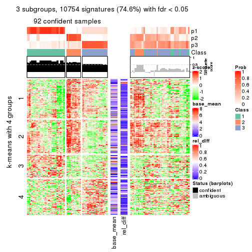
get_signatures(res, k = 4)
get_signatures(res, k = 5)
get_signatures(res, k = 6)
Signature heatmaps where rows are not scaled:
get_signatures(res, k = 2, scale_rows = FALSE)
get_signatures(res, k = 3, scale_rows = FALSE)
get_signatures(res, k = 4, scale_rows = FALSE)
get_signatures(res, k = 5, scale_rows = FALSE)

get_signatures(res, k = 6, scale_rows = FALSE)
Compare the overlap of signatures from different k:
compare_signatures(res)
get_signature() returns a data frame invisibly. TO get the list of signatures, the function
call should be assigned to a variable explicitly. In following code, if plot argument is set
to FALSE, no heatmap is plotted while only the differential analysis is performed.
# code only for demonstration
tb = get_signature(res, k = ..., plot = FALSE)
An example of the output of tb is:
#> which_row fdr mean_1 mean_2 scaled_mean_1 scaled_mean_2 km
#> 1 38 0.042760348 8.373488 9.131774 -0.5533452 0.5164555 1
#> 2 40 0.018707592 7.106213 8.469186 -0.6173731 0.5762149 1
#> 3 55 0.019134737 10.221463 11.207825 -0.6159697 0.5749050 1
#> 4 59 0.006059896 5.921854 7.869574 -0.6899429 0.6439467 1
#> 5 60 0.018055526 8.928898 10.211722 -0.6204761 0.5791110 1
#> 6 98 0.009384629 15.714769 14.887706 0.6635654 -0.6193277 2
...
The columns in tb are:
which_row: row indices corresponding to the input matrix.fdr: FDR for the differential test. mean_x: The mean value in group x.scaled_mean_x: The mean value in group x after rows are scaled.km: Row groups if k-means clustering is applied to rows.UMAP plot which shows how samples are separated.
dimension_reduction(res, k = 2, method = "UMAP")
dimension_reduction(res, k = 3, method = "UMAP")
dimension_reduction(res, k = 4, method = "UMAP")

dimension_reduction(res, k = 5, method = "UMAP")
dimension_reduction(res, k = 6, method = "UMAP")
Following heatmap shows how subgroups are split when increasing k:
collect_classes(res)
If matrix rows can be associated to genes, consider to use GO_Enrichment(res,
...) to perform function enrichment for the signature genes.
The object with results only for a single top-value method and a single partition method can be extracted as:
res = res_list["CV", "kmeans"]
# you can also extract it by
# res = res_list["CV:kmeans"]
A summary of res and all the functions that can be applied to it:
res
#> A 'ConsensusPartition' object with k = 2, 3, 4, 5, 6.
#> On a matrix with 14410 rows and 160 columns.
#> Top rows (1000, 2000, 3000, 4000, 5000) are extracted by 'CV' method.
#> Subgroups are detected by 'kmeans' method.
#> Performed in total 1250 partitions by row resampling.
#> Best k for subgroups seems to be 2.
#>
#> Following methods can be applied to this 'ConsensusPartition' object:
#> [1] "cola_report" "collect_classes" "collect_plots"
#> [4] "collect_stats" "colnames" "compare_signatures"
#> [7] "consensus_heatmap" "dimension_reduction" "functional_enrichment"
#> [10] "get_anno_col" "get_anno" "get_classes"
#> [13] "get_consensus" "get_matrix" "get_membership"
#> [16] "get_param" "get_signatures" "get_stats"
#> [19] "is_best_k" "is_stable_k" "membership_heatmap"
#> [22] "ncol" "nrow" "plot_ecdf"
#> [25] "rownames" "select_partition_number" "show"
#> [28] "suggest_best_k" "test_to_known_factors"
collect_plots() function collects all the plots made from res for all k (number of partitions)
into one single page to provide an easy and fast comparison between different k.
collect_plots(res)
The plots are:
k and the heatmap of
predicted classes for each k.k.k.k.All the plots in panels can be made by individual functions and they are plotted later in this section.
select_partition_number() produces several plots showing different
statistics for choosing “optimized” k. There are following statistics:
k;k, the area increased is defined as \(A_k - A_{k-1}\).The detailed explanations of these statistics can be found in the cola vignette.
Generally speaking, lower PAC score, higher mean silhouette score or higher
concordance corresponds to better partition. Rand index and Jaccard index
measure how similar the current partition is compared to partition with k-1.
If they are too similar, we won't accept k is better than k-1.
select_partition_number(res)
The numeric values for all these statistics can be obtained by get_stats().
get_stats(res)
#> k 1-PAC mean_silhouette concordance area_increased Rand Jaccard
#> 2 2 1.000 0.982 0.990 0.4667 0.532 0.532
#> 3 3 0.573 0.742 0.827 0.3515 0.752 0.553
#> 4 4 0.518 0.475 0.747 0.1276 0.953 0.864
#> 5 5 0.550 0.362 0.659 0.0690 0.858 0.605
#> 6 6 0.566 0.486 0.635 0.0396 0.862 0.569
suggest_best_k() suggests the best \(k\) based on these statistics. The rules are as follows:
NA.suggest_best_k(res)
#> [1] 2
Following shows the table of the partitions (You need to click the show/hide
code output link to see it). The membership matrix (columns with name p*)
is inferred by
clue::cl_consensus()
function with the SE method. Basically the value in the membership matrix
represents the probability to belong to a certain group. The finall class
label for an item is determined with the group with highest probability it
belongs to.
In get_classes() function, the entropy is calculated from the membership
matrix and the silhouette score is calculated from the consensus matrix.
cbind(get_classes(res, k = 2), get_membership(res, k = 2))
#> class entropy silhouette p1 p2
#> SRR031811 2 0.0000 0.994 0.000 1.000
#> SRR031812 1 0.0376 0.986 0.996 0.004
#> SRR031813 2 0.0000 0.994 0.000 1.000
#> SRR031814 1 0.0376 0.986 0.996 0.004
#> SRR031815 1 0.0376 0.986 0.996 0.004
#> SRR031816 2 0.0000 0.994 0.000 1.000
#> SRR031817 2 0.0000 0.994 0.000 1.000
#> SRR031818 2 0.0000 0.994 0.000 1.000
#> SRR031819 2 0.0000 0.994 0.000 1.000
#> SRR031820 2 0.0000 0.994 0.000 1.000
#> SRR031821 2 0.0000 0.994 0.000 1.000
#> SRR031822 1 0.0376 0.986 0.996 0.004
#> SRR031823 2 0.0376 0.991 0.004 0.996
#> SRR031824 2 0.0000 0.994 0.000 1.000
#> SRR031825 2 0.0000 0.994 0.000 1.000
#> SRR031826 2 0.0000 0.994 0.000 1.000
#> SRR031827 2 0.0000 0.994 0.000 1.000
#> SRR031828 1 0.0376 0.986 0.996 0.004
#> SRR031829 2 0.0000 0.994 0.000 1.000
#> SRR031830 1 0.0376 0.986 0.996 0.004
#> SRR031831 2 0.0000 0.994 0.000 1.000
#> SRR031832 2 0.0000 0.994 0.000 1.000
#> SRR031833 2 0.0000 0.994 0.000 1.000
#> SRR031834 1 0.0376 0.986 0.996 0.004
#> SRR031835 1 0.0376 0.986 0.996 0.004
#> SRR031836 2 0.0000 0.994 0.000 1.000
#> SRR031837 2 0.0000 0.994 0.000 1.000
#> SRR031838 2 0.0000 0.994 0.000 1.000
#> SRR031839 2 0.0000 0.994 0.000 1.000
#> SRR031840 1 0.0376 0.986 0.996 0.004
#> SRR031841 1 0.0376 0.986 0.996 0.004
#> SRR031842 2 0.0000 0.994 0.000 1.000
#> SRR031843 2 0.0000 0.994 0.000 1.000
#> SRR031844 2 0.7139 0.753 0.196 0.804
#> SRR031845 2 0.0000 0.994 0.000 1.000
#> SRR031846 1 0.0376 0.986 0.996 0.004
#> SRR031847 2 0.0000 0.994 0.000 1.000
#> SRR031848 2 0.0000 0.994 0.000 1.000
#> SRR031849 2 0.0000 0.994 0.000 1.000
#> SRR031850 2 0.0000 0.994 0.000 1.000
#> SRR031851 2 0.0000 0.994 0.000 1.000
#> SRR031852 1 0.0376 0.986 0.996 0.004
#> SRR031853 1 0.0376 0.986 0.996 0.004
#> SRR031854 1 0.0376 0.986 0.996 0.004
#> SRR031855 2 0.0000 0.994 0.000 1.000
#> SRR031857 2 0.0000 0.994 0.000 1.000
#> SRR031858 2 0.0000 0.994 0.000 1.000
#> SRR031859 2 0.0000 0.994 0.000 1.000
#> SRR031860 2 0.0000 0.994 0.000 1.000
#> SRR031861 2 0.0000 0.994 0.000 1.000
#> SRR031862 1 0.0376 0.986 0.996 0.004
#> SRR031863 2 0.0000 0.994 0.000 1.000
#> SRR031864 2 0.0000 0.994 0.000 1.000
#> SRR031865 2 0.0000 0.994 0.000 1.000
#> SRR031866 1 0.0376 0.986 0.996 0.004
#> SRR031867 2 0.0000 0.994 0.000 1.000
#> SRR031868 2 0.0000 0.994 0.000 1.000
#> SRR031869 1 0.0376 0.986 0.996 0.004
#> SRR031870 2 0.0000 0.994 0.000 1.000
#> SRR031871 2 0.3879 0.915 0.076 0.924
#> SRR031872 1 0.0376 0.986 0.996 0.004
#> SRR031873 1 0.0376 0.986 0.996 0.004
#> SRR031874 1 0.0376 0.986 0.996 0.004
#> SRR031875 2 0.0000 0.994 0.000 1.000
#> SRR031876 1 0.0376 0.986 0.996 0.004
#> SRR031877 1 0.6148 0.833 0.848 0.152
#> SRR031878 2 0.0000 0.994 0.000 1.000
#> SRR031879 2 0.0000 0.994 0.000 1.000
#> SRR031880 2 0.0376 0.991 0.004 0.996
#> SRR031881 2 0.0000 0.994 0.000 1.000
#> SRR031882 2 0.0000 0.994 0.000 1.000
#> SRR031883 2 0.0000 0.994 0.000 1.000
#> SRR031884 2 0.0000 0.994 0.000 1.000
#> SRR031885 2 0.0000 0.994 0.000 1.000
#> SRR031886 2 0.0000 0.994 0.000 1.000
#> SRR031887 1 0.0376 0.986 0.996 0.004
#> SRR031888 2 0.0000 0.994 0.000 1.000
#> SRR031889 1 0.0376 0.986 0.996 0.004
#> SRR031890 1 0.0376 0.986 0.996 0.004
#> SRR031891 2 0.0000 0.994 0.000 1.000
#> SRR031892 2 0.7139 0.753 0.196 0.804
#> SRR031893 1 0.0376 0.986 0.996 0.004
#> SRR031894 2 0.0000 0.994 0.000 1.000
#> SRR031895 1 0.0376 0.986 0.996 0.004
#> SRR031896 2 0.0000 0.994 0.000 1.000
#> SRR031897 2 0.0000 0.994 0.000 1.000
#> SRR031898 2 0.0000 0.994 0.000 1.000
#> SRR031899 2 0.0000 0.994 0.000 1.000
#> SRR031900 2 0.0000 0.994 0.000 1.000
#> SRR031901 2 0.0000 0.994 0.000 1.000
#> SRR031902 2 0.3879 0.915 0.076 0.924
#> SRR031903 1 0.0376 0.986 0.996 0.004
#> SRR031904 2 0.0000 0.994 0.000 1.000
#> SRR031905 1 0.0376 0.986 0.996 0.004
#> SRR031906 1 0.0376 0.986 0.996 0.004
#> SRR031907 2 0.0000 0.994 0.000 1.000
#> SRR031908 2 0.0000 0.994 0.000 1.000
#> SRR031909 1 0.0376 0.986 0.996 0.004
#> SRR031910 2 0.0000 0.994 0.000 1.000
#> SRR031911 2 0.0000 0.994 0.000 1.000
#> SRR031912 1 0.0376 0.986 0.996 0.004
#> SRR031913 2 0.0000 0.994 0.000 1.000
#> SRR031914 1 0.0376 0.986 0.996 0.004
#> SRR031915 2 0.0000 0.994 0.000 1.000
#> SRR031916 2 0.0376 0.991 0.004 0.996
#> SRR031917 1 0.0376 0.986 0.996 0.004
#> SRR031918 2 0.0000 0.994 0.000 1.000
#> SRR031919 1 0.0376 0.986 0.996 0.004
#> SRR031920 2 0.0000 0.994 0.000 1.000
#> SRR031921 2 0.0000 0.994 0.000 1.000
#> SRR031922 2 0.0000 0.994 0.000 1.000
#> SRR031923 2 0.0000 0.994 0.000 1.000
#> SRR031924 1 0.0376 0.986 0.996 0.004
#> SRR031925 2 0.0000 0.994 0.000 1.000
#> SRR031926 2 0.0000 0.994 0.000 1.000
#> SRR031927 2 0.0000 0.994 0.000 1.000
#> SRR031928 1 0.0376 0.986 0.996 0.004
#> SRR031929 2 0.0000 0.994 0.000 1.000
#> SRR031930 2 0.0000 0.994 0.000 1.000
#> SRR031931 2 0.0000 0.994 0.000 1.000
#> SRR031932 1 0.0376 0.986 0.996 0.004
#> SRR031933 2 0.0000 0.994 0.000 1.000
#> SRR031934 1 0.0376 0.986 0.996 0.004
#> SRR031935 2 0.0376 0.991 0.004 0.996
#> SRR031936 1 0.0376 0.986 0.996 0.004
#> SRR031937 1 0.0376 0.986 0.996 0.004
#> SRR031938 1 0.0376 0.986 0.996 0.004
#> SRR031939 2 0.0000 0.994 0.000 1.000
#> SRR031940 1 0.0376 0.986 0.996 0.004
#> SRR031941 2 0.0376 0.991 0.004 0.996
#> SRR031942 1 0.6148 0.833 0.848 0.152
#> SRR031943 2 0.0000 0.994 0.000 1.000
#> SRR031944 1 0.0376 0.986 0.996 0.004
#> SRR031945 1 0.6343 0.823 0.840 0.160
#> SRR031946 2 0.0000 0.994 0.000 1.000
#> SRR031947 2 0.0000 0.994 0.000 1.000
#> SRR031948 1 0.0376 0.986 0.996 0.004
#> SRR031949 1 0.0376 0.986 0.996 0.004
#> SRR031950 2 0.0000 0.994 0.000 1.000
#> SRR031951 2 0.0000 0.994 0.000 1.000
#> SRR031952 1 0.0376 0.986 0.996 0.004
#> SRR031953 1 0.0376 0.986 0.996 0.004
#> SRR031954 1 0.6343 0.823 0.840 0.160
#> SRR031955 1 0.0376 0.986 0.996 0.004
#> SRR031956 2 0.0000 0.994 0.000 1.000
#> SRR031957 2 0.0000 0.994 0.000 1.000
#> SRR031958 2 0.0000 0.994 0.000 1.000
#> SRR031959 2 0.0376 0.991 0.004 0.996
#> SRR031960 2 0.0000 0.994 0.000 1.000
#> SRR031961 1 0.0376 0.986 0.996 0.004
#> SRR031962 1 0.0376 0.986 0.996 0.004
#> SRR031963 2 0.0000 0.994 0.000 1.000
#> SRR031964 1 0.0376 0.986 0.996 0.004
#> SRR031965 2 0.0000 0.994 0.000 1.000
#> SRR031966 2 0.0000 0.994 0.000 1.000
#> SRR031967 1 0.0376 0.986 0.996 0.004
#> SRR031968 1 0.0376 0.986 0.996 0.004
#> SRR031969 1 0.7219 0.761 0.800 0.200
#> SRR031970 2 0.0000 0.994 0.000 1.000
#> SRR031971 1 0.0376 0.986 0.996 0.004
cbind(get_classes(res, k = 3), get_membership(res, k = 3))
#> class entropy silhouette p1 p2 p3
#> SRR031811 2 0.5621 0.467 0.000 0.692 0.308
#> SRR031812 1 0.1163 0.945 0.972 0.000 0.028
#> SRR031813 2 0.3267 0.777 0.000 0.884 0.116
#> SRR031814 1 0.0892 0.947 0.980 0.000 0.020
#> SRR031815 1 0.1529 0.941 0.960 0.000 0.040
#> SRR031816 2 0.3038 0.793 0.000 0.896 0.104
#> SRR031817 3 0.4654 0.793 0.000 0.208 0.792
#> SRR031818 3 0.6267 0.422 0.000 0.452 0.548
#> SRR031819 3 0.4605 0.793 0.000 0.204 0.796
#> SRR031820 3 0.4654 0.793 0.000 0.208 0.792
#> SRR031821 2 0.5465 0.593 0.000 0.712 0.288
#> SRR031822 1 0.1163 0.945 0.972 0.000 0.028
#> SRR031823 3 0.5591 0.683 0.000 0.304 0.696
#> SRR031824 2 0.3340 0.784 0.000 0.880 0.120
#> SRR031825 2 0.3551 0.777 0.000 0.868 0.132
#> SRR031826 2 0.3267 0.777 0.000 0.884 0.116
#> SRR031827 2 0.3038 0.793 0.000 0.896 0.104
#> SRR031828 1 0.0892 0.947 0.980 0.000 0.020
#> SRR031829 2 0.5591 0.478 0.000 0.696 0.304
#> SRR031830 1 0.1529 0.941 0.960 0.000 0.040
#> SRR031831 3 0.4654 0.793 0.000 0.208 0.792
#> SRR031832 3 0.4654 0.793 0.000 0.208 0.792
#> SRR031833 3 0.6225 0.476 0.000 0.432 0.568
#> SRR031834 1 0.1163 0.945 0.972 0.000 0.028
#> SRR031835 1 0.1163 0.945 0.972 0.000 0.028
#> SRR031836 3 0.4796 0.786 0.000 0.220 0.780
#> SRR031837 3 0.4605 0.793 0.000 0.204 0.796
#> SRR031838 2 0.3267 0.777 0.000 0.884 0.116
#> SRR031839 3 0.4654 0.793 0.000 0.208 0.792
#> SRR031840 1 0.0892 0.947 0.980 0.000 0.020
#> SRR031841 1 0.1163 0.946 0.972 0.000 0.028
#> SRR031842 2 0.1643 0.790 0.000 0.956 0.044
#> SRR031843 3 0.4654 0.793 0.000 0.208 0.792
#> SRR031844 3 0.5298 0.762 0.032 0.164 0.804
#> SRR031845 2 0.5465 0.552 0.000 0.712 0.288
#> SRR031846 1 0.7187 0.148 0.496 0.024 0.480
#> SRR031847 3 0.4654 0.793 0.000 0.208 0.792
#> SRR031848 3 0.4796 0.786 0.000 0.220 0.780
#> SRR031849 3 0.4654 0.793 0.000 0.208 0.792
#> SRR031850 2 0.0424 0.777 0.000 0.992 0.008
#> SRR031851 2 0.0000 0.777 0.000 1.000 0.000
#> SRR031852 1 0.2261 0.935 0.932 0.000 0.068
#> SRR031853 1 0.2165 0.935 0.936 0.000 0.064
#> SRR031854 1 0.2711 0.928 0.912 0.000 0.088
#> SRR031855 2 0.3941 0.764 0.000 0.844 0.156
#> SRR031857 2 0.3941 0.723 0.000 0.844 0.156
#> SRR031858 2 0.6008 0.395 0.000 0.628 0.372
#> SRR031859 2 0.3116 0.789 0.000 0.892 0.108
#> SRR031860 2 0.3340 0.784 0.000 0.880 0.120
#> SRR031861 2 0.3192 0.787 0.000 0.888 0.112
#> SRR031862 1 0.1643 0.940 0.956 0.000 0.044
#> SRR031863 2 0.1031 0.782 0.000 0.976 0.024
#> SRR031864 2 0.0424 0.777 0.000 0.992 0.008
#> SRR031865 2 0.3715 0.781 0.004 0.868 0.128
#> SRR031866 1 0.1643 0.941 0.956 0.000 0.044
#> SRR031867 3 0.5835 0.665 0.000 0.340 0.660
#> SRR031868 3 0.6280 0.397 0.000 0.460 0.540
#> SRR031869 1 0.1163 0.946 0.972 0.000 0.028
#> SRR031870 3 0.5760 0.674 0.000 0.328 0.672
#> SRR031871 2 0.4931 0.759 0.032 0.828 0.140
#> SRR031872 1 0.1163 0.947 0.972 0.000 0.028
#> SRR031873 1 0.1289 0.946 0.968 0.000 0.032
#> SRR031874 1 0.1753 0.938 0.952 0.000 0.048
#> SRR031875 3 0.4654 0.793 0.000 0.208 0.792
#> SRR031876 1 0.1529 0.941 0.960 0.000 0.040
#> SRR031877 3 0.6541 0.441 0.304 0.024 0.672
#> SRR031878 2 0.3752 0.721 0.000 0.856 0.144
#> SRR031879 3 0.4605 0.793 0.000 0.204 0.796
#> SRR031880 3 0.5591 0.683 0.000 0.304 0.696
#> SRR031881 2 0.5465 0.593 0.000 0.712 0.288
#> SRR031882 3 0.4654 0.793 0.000 0.208 0.792
#> SRR031883 3 0.4654 0.793 0.000 0.208 0.792
#> SRR031884 3 0.4654 0.793 0.000 0.208 0.792
#> SRR031885 2 0.5216 0.607 0.000 0.740 0.260
#> SRR031886 3 0.4605 0.793 0.000 0.204 0.796
#> SRR031887 1 0.0892 0.947 0.980 0.000 0.020
#> SRR031888 2 0.2356 0.794 0.000 0.928 0.072
#> SRR031889 1 0.1163 0.946 0.972 0.000 0.028
#> SRR031890 1 0.7187 0.148 0.496 0.024 0.480
#> SRR031891 2 0.5465 0.552 0.000 0.712 0.288
#> SRR031892 3 0.5298 0.762 0.032 0.164 0.804
#> SRR031893 1 0.2959 0.916 0.900 0.000 0.100
#> SRR031894 3 0.6299 0.243 0.000 0.476 0.524
#> SRR031895 1 0.1860 0.940 0.948 0.000 0.052
#> SRR031896 2 0.5810 0.429 0.000 0.664 0.336
#> SRR031897 2 0.1031 0.788 0.000 0.976 0.024
#> SRR031898 2 0.3752 0.770 0.000 0.856 0.144
#> SRR031899 3 0.5835 0.678 0.000 0.340 0.660
#> SRR031900 3 0.5835 0.665 0.000 0.340 0.660
#> SRR031901 3 0.5760 0.674 0.000 0.328 0.672
#> SRR031902 2 0.4931 0.759 0.032 0.828 0.140
#> SRR031903 1 0.1289 0.946 0.968 0.000 0.032
#> SRR031904 3 0.6252 0.443 0.000 0.444 0.556
#> SRR031905 1 0.1163 0.947 0.972 0.000 0.028
#> SRR031906 1 0.1163 0.946 0.972 0.000 0.028
#> SRR031907 3 0.6291 0.344 0.000 0.468 0.532
#> SRR031908 3 0.4605 0.793 0.000 0.204 0.796
#> SRR031909 1 0.1529 0.941 0.960 0.000 0.040
#> SRR031910 3 0.5835 0.678 0.000 0.340 0.660
#> SRR031911 3 0.4654 0.793 0.000 0.208 0.792
#> SRR031912 1 0.1753 0.938 0.952 0.000 0.048
#> SRR031913 2 0.1031 0.782 0.000 0.976 0.024
#> SRR031914 1 0.1163 0.947 0.972 0.000 0.028
#> SRR031915 3 0.5521 0.746 0.032 0.180 0.788
#> SRR031916 3 0.4682 0.762 0.004 0.192 0.804
#> SRR031917 1 0.4700 0.791 0.812 0.008 0.180
#> SRR031918 3 0.4702 0.791 0.000 0.212 0.788
#> SRR031919 1 0.1031 0.947 0.976 0.000 0.024
#> SRR031920 3 0.5835 0.678 0.000 0.340 0.660
#> SRR031921 3 0.4796 0.785 0.000 0.220 0.780
#> SRR031922 2 0.6154 0.259 0.000 0.592 0.408
#> SRR031923 2 0.3192 0.788 0.000 0.888 0.112
#> SRR031924 1 0.2959 0.916 0.900 0.000 0.100
#> SRR031925 2 0.4121 0.707 0.000 0.832 0.168
#> SRR031926 2 0.1031 0.788 0.000 0.976 0.024
#> SRR031927 2 0.5905 0.381 0.000 0.648 0.352
#> SRR031928 1 0.1643 0.940 0.956 0.000 0.044
#> SRR031929 2 0.1031 0.782 0.000 0.976 0.024
#> SRR031930 2 0.0424 0.777 0.000 0.992 0.008
#> SRR031931 2 0.3715 0.781 0.004 0.868 0.128
#> SRR031932 1 0.1643 0.941 0.956 0.000 0.044
#> SRR031933 2 0.3752 0.770 0.000 0.856 0.144
#> SRR031934 1 0.1860 0.940 0.948 0.000 0.052
#> SRR031935 3 0.4682 0.762 0.004 0.192 0.804
#> SRR031936 1 0.1163 0.947 0.972 0.000 0.028
#> SRR031937 1 0.1031 0.947 0.976 0.000 0.024
#> SRR031938 1 0.4700 0.791 0.812 0.008 0.180
#> SRR031939 2 0.4002 0.760 0.000 0.840 0.160
#> SRR031940 1 0.2261 0.935 0.932 0.000 0.068
#> SRR031941 3 0.5815 0.678 0.004 0.304 0.692
#> SRR031942 3 0.6541 0.441 0.304 0.024 0.672
#> SRR031943 3 0.5810 0.684 0.000 0.336 0.664
#> SRR031944 3 0.6565 0.156 0.416 0.008 0.576
#> SRR031945 3 0.5414 0.548 0.212 0.016 0.772
#> SRR031946 3 0.4702 0.791 0.000 0.212 0.788
#> SRR031947 3 0.5521 0.746 0.032 0.180 0.788
#> SRR031948 1 0.1031 0.947 0.976 0.000 0.024
#> SRR031949 1 0.2261 0.935 0.932 0.000 0.068
#> SRR031950 2 0.0424 0.777 0.000 0.992 0.008
#> SRR031951 2 0.3752 0.713 0.000 0.856 0.144
#> SRR031952 1 0.1163 0.946 0.972 0.000 0.028
#> SRR031953 1 0.1289 0.946 0.968 0.000 0.032
#> SRR031954 3 0.5414 0.548 0.212 0.016 0.772
#> SRR031955 3 0.6565 0.156 0.416 0.008 0.576
#> SRR031956 3 0.6235 0.449 0.000 0.436 0.564
#> SRR031957 2 0.6307 -0.193 0.000 0.512 0.488
#> SRR031958 2 0.6274 -0.109 0.000 0.544 0.456
#> SRR031959 3 0.5815 0.678 0.004 0.304 0.692
#> SRR031960 2 0.6280 -0.127 0.000 0.540 0.460
#> SRR031961 1 0.1031 0.947 0.976 0.000 0.024
#> SRR031962 1 0.1289 0.946 0.968 0.000 0.032
#> SRR031963 2 0.3752 0.713 0.000 0.856 0.144
#> SRR031964 1 0.1163 0.946 0.972 0.000 0.028
#> SRR031965 2 0.0424 0.777 0.000 0.992 0.008
#> SRR031966 2 0.0000 0.777 0.000 1.000 0.000
#> SRR031967 1 0.2261 0.935 0.932 0.000 0.068
#> SRR031968 1 0.2165 0.935 0.936 0.000 0.064
#> SRR031969 1 0.7330 0.684 0.692 0.216 0.092
#> SRR031970 2 0.3192 0.788 0.000 0.888 0.112
#> SRR031971 1 0.1267 0.946 0.972 0.004 0.024
cbind(get_classes(res, k = 4), get_membership(res, k = 4))
#> class entropy silhouette p1 p2 p3 p4
#> SRR031811 2 0.7224 0.1287 0.000 0.548 0.236 0.216
#> SRR031812 1 0.1970 0.8701 0.932 0.000 0.008 0.060
#> SRR031813 2 0.3245 0.6490 0.000 0.872 0.100 0.028
#> SRR031814 1 0.1807 0.8826 0.940 0.000 0.008 0.052
#> SRR031815 1 0.2999 0.8685 0.864 0.000 0.004 0.132
#> SRR031816 2 0.4261 0.6460 0.000 0.820 0.112 0.068
#> SRR031817 3 0.1722 0.4964 0.000 0.048 0.944 0.008
#> SRR031818 3 0.7448 -0.3345 0.000 0.372 0.452 0.176
#> SRR031819 3 0.1953 0.4962 0.004 0.044 0.940 0.012
#> SRR031820 3 0.1902 0.4890 0.000 0.064 0.932 0.004
#> SRR031821 2 0.7182 0.2358 0.004 0.548 0.148 0.300
#> SRR031822 1 0.1938 0.8757 0.936 0.000 0.012 0.052
#> SRR031823 3 0.7375 -0.6595 0.004 0.140 0.452 0.404
#> SRR031824 2 0.4906 0.6038 0.000 0.776 0.084 0.140
#> SRR031825 2 0.4992 0.5947 0.000 0.772 0.096 0.132
#> SRR031826 2 0.3245 0.6490 0.000 0.872 0.100 0.028
#> SRR031827 2 0.4261 0.6460 0.000 0.820 0.112 0.068
#> SRR031828 1 0.1807 0.8826 0.940 0.000 0.008 0.052
#> SRR031829 2 0.7224 0.1287 0.000 0.548 0.236 0.216
#> SRR031830 1 0.2999 0.8685 0.864 0.000 0.004 0.132
#> SRR031831 3 0.1722 0.4964 0.000 0.048 0.944 0.008
#> SRR031832 3 0.1822 0.4964 0.004 0.044 0.944 0.008
#> SRR031833 3 0.7468 -0.3522 0.000 0.320 0.484 0.196
#> SRR031834 1 0.1938 0.8757 0.936 0.000 0.012 0.052
#> SRR031835 1 0.1970 0.8701 0.932 0.000 0.008 0.060
#> SRR031836 3 0.3004 0.4702 0.000 0.060 0.892 0.048
#> SRR031837 3 0.1767 0.4948 0.000 0.044 0.944 0.012
#> SRR031838 2 0.4388 0.6238 0.000 0.808 0.132 0.060
#> SRR031839 3 0.1389 0.4959 0.000 0.048 0.952 0.000
#> SRR031840 1 0.0817 0.8802 0.976 0.000 0.000 0.024
#> SRR031841 1 0.3088 0.8745 0.864 0.000 0.008 0.128
#> SRR031842 2 0.2751 0.6677 0.000 0.904 0.040 0.056
#> SRR031843 3 0.2075 0.4956 0.004 0.044 0.936 0.016
#> SRR031844 3 0.5955 0.0878 0.016 0.052 0.684 0.248
#> SRR031845 2 0.6712 0.3320 0.000 0.552 0.104 0.344
#> SRR031846 1 0.8206 -0.2165 0.368 0.012 0.256 0.364
#> SRR031847 3 0.1822 0.4964 0.004 0.044 0.944 0.008
#> SRR031848 3 0.3004 0.4702 0.000 0.060 0.892 0.048
#> SRR031849 3 0.1722 0.4968 0.000 0.048 0.944 0.008
#> SRR031850 2 0.3032 0.6508 0.000 0.868 0.008 0.124
#> SRR031851 2 0.2675 0.6591 0.000 0.892 0.008 0.100
#> SRR031852 1 0.3257 0.8587 0.844 0.000 0.004 0.152
#> SRR031853 1 0.3401 0.8591 0.840 0.000 0.008 0.152
#> SRR031854 1 0.4420 0.8113 0.748 0.000 0.012 0.240
#> SRR031855 2 0.5321 0.5822 0.000 0.748 0.112 0.140
#> SRR031857 2 0.5184 0.5852 0.000 0.732 0.056 0.212
#> SRR031858 2 0.7730 -0.2579 0.000 0.444 0.264 0.292
#> SRR031859 2 0.4740 0.6101 0.000 0.788 0.080 0.132
#> SRR031860 2 0.4906 0.6038 0.000 0.776 0.084 0.140
#> SRR031861 2 0.4931 0.5987 0.000 0.776 0.092 0.132
#> SRR031862 1 0.3024 0.8664 0.852 0.000 0.000 0.148
#> SRR031863 2 0.4436 0.6182 0.000 0.764 0.020 0.216
#> SRR031864 2 0.3249 0.6499 0.000 0.852 0.008 0.140
#> SRR031865 2 0.5050 0.6318 0.004 0.776 0.088 0.132
#> SRR031866 1 0.3271 0.8655 0.856 0.000 0.012 0.132
#> SRR031867 3 0.7363 -0.3414 0.000 0.208 0.520 0.272
#> SRR031868 3 0.7414 -0.3295 0.000 0.368 0.460 0.172
#> SRR031869 1 0.1256 0.8821 0.964 0.000 0.008 0.028
#> SRR031870 3 0.7312 -0.3466 0.000 0.188 0.520 0.292
#> SRR031871 2 0.6036 0.5627 0.036 0.728 0.072 0.164
#> SRR031872 1 0.2011 0.8822 0.920 0.000 0.000 0.080
#> SRR031873 1 0.1004 0.8787 0.972 0.000 0.004 0.024
#> SRR031874 1 0.4083 0.8017 0.832 0.000 0.100 0.068
#> SRR031875 3 0.1975 0.4942 0.000 0.048 0.936 0.016
#> SRR031876 1 0.2973 0.8673 0.856 0.000 0.000 0.144
#> SRR031877 3 0.7919 -0.1262 0.200 0.012 0.460 0.328
#> SRR031878 2 0.5137 0.5829 0.000 0.716 0.040 0.244
#> SRR031879 3 0.1953 0.4962 0.004 0.044 0.940 0.012
#> SRR031880 3 0.7375 -0.6595 0.004 0.140 0.452 0.404
#> SRR031881 2 0.7182 0.2358 0.004 0.548 0.148 0.300
#> SRR031882 3 0.1389 0.4959 0.000 0.048 0.952 0.000
#> SRR031883 3 0.1902 0.4890 0.000 0.064 0.932 0.004
#> SRR031884 3 0.1722 0.4968 0.000 0.048 0.944 0.008
#> SRR031885 2 0.6396 0.0517 0.000 0.468 0.468 0.064
#> SRR031886 3 0.1888 0.4936 0.000 0.044 0.940 0.016
#> SRR031887 1 0.0817 0.8802 0.976 0.000 0.000 0.024
#> SRR031888 2 0.5006 0.6233 0.000 0.772 0.104 0.124
#> SRR031889 1 0.3032 0.8753 0.868 0.000 0.008 0.124
#> SRR031890 1 0.8206 -0.2165 0.368 0.012 0.256 0.364
#> SRR031891 2 0.6712 0.3320 0.000 0.552 0.104 0.344
#> SRR031892 3 0.5955 0.0878 0.016 0.052 0.684 0.248
#> SRR031893 1 0.5532 0.6853 0.704 0.000 0.068 0.228
#> SRR031894 3 0.7261 -0.1002 0.000 0.368 0.480 0.152
#> SRR031895 1 0.3791 0.8484 0.796 0.000 0.004 0.200
#> SRR031896 3 0.6360 0.0651 0.000 0.420 0.516 0.064
#> SRR031897 2 0.3606 0.6654 0.000 0.840 0.020 0.140
#> SRR031898 2 0.5165 0.5885 0.000 0.752 0.080 0.168
#> SRR031899 3 0.6163 0.2313 0.000 0.164 0.676 0.160
#> SRR031900 3 0.7363 -0.3414 0.000 0.208 0.520 0.272
#> SRR031901 3 0.7312 -0.3466 0.000 0.188 0.520 0.292
#> SRR031902 2 0.6036 0.5627 0.036 0.728 0.072 0.164
#> SRR031903 1 0.1004 0.8787 0.972 0.000 0.004 0.024
#> SRR031904 3 0.7494 -0.3575 0.000 0.312 0.484 0.204
#> SRR031905 1 0.2011 0.8822 0.920 0.000 0.000 0.080
#> SRR031906 1 0.1256 0.8821 0.964 0.000 0.008 0.028
#> SRR031907 4 0.8035 0.6474 0.004 0.288 0.328 0.380
#> SRR031908 3 0.1953 0.4962 0.004 0.044 0.940 0.012
#> SRR031909 1 0.2973 0.8673 0.856 0.000 0.000 0.144
#> SRR031910 3 0.6163 0.2313 0.000 0.164 0.676 0.160
#> SRR031911 3 0.1975 0.4942 0.000 0.048 0.936 0.016
#> SRR031912 1 0.4083 0.8017 0.832 0.000 0.100 0.068
#> SRR031913 2 0.4436 0.6182 0.000 0.764 0.020 0.216
#> SRR031914 1 0.1151 0.8816 0.968 0.000 0.008 0.024
#> SRR031915 3 0.7096 -0.0574 0.064 0.048 0.604 0.284
#> SRR031916 3 0.6313 -0.1909 0.004 0.064 0.592 0.340
#> SRR031917 1 0.6706 0.4615 0.600 0.012 0.084 0.304
#> SRR031918 3 0.3453 0.4508 0.000 0.052 0.868 0.080
#> SRR031919 1 0.1824 0.8770 0.936 0.000 0.004 0.060
#> SRR031920 3 0.6163 0.2313 0.000 0.164 0.676 0.160
#> SRR031921 3 0.5531 0.2836 0.000 0.128 0.732 0.140
#> SRR031922 2 0.7846 -0.4330 0.000 0.404 0.300 0.296
#> SRR031923 2 0.4740 0.6101 0.000 0.788 0.080 0.132
#> SRR031924 1 0.5532 0.6853 0.704 0.000 0.068 0.228
#> SRR031925 2 0.5436 0.5759 0.004 0.724 0.060 0.212
#> SRR031926 2 0.3708 0.6626 0.000 0.832 0.020 0.148
#> SRR031927 3 0.6340 0.0774 0.000 0.408 0.528 0.064
#> SRR031928 1 0.3024 0.8664 0.852 0.000 0.000 0.148
#> SRR031929 2 0.4436 0.6182 0.000 0.764 0.020 0.216
#> SRR031930 2 0.3249 0.6499 0.000 0.852 0.008 0.140
#> SRR031931 2 0.5050 0.6318 0.004 0.776 0.088 0.132
#> SRR031932 1 0.3271 0.8655 0.856 0.000 0.012 0.132
#> SRR031933 2 0.5165 0.5885 0.000 0.752 0.080 0.168
#> SRR031934 1 0.3791 0.8484 0.796 0.000 0.004 0.200
#> SRR031935 3 0.6313 -0.1909 0.004 0.064 0.592 0.340
#> SRR031936 1 0.1151 0.8816 0.968 0.000 0.008 0.024
#> SRR031937 1 0.1824 0.8770 0.936 0.000 0.004 0.060
#> SRR031938 1 0.6706 0.4615 0.600 0.012 0.084 0.304
#> SRR031939 2 0.5321 0.5822 0.000 0.748 0.112 0.140
#> SRR031940 1 0.3257 0.8587 0.844 0.000 0.004 0.152
#> SRR031941 4 0.7384 0.6194 0.004 0.140 0.420 0.436
#> SRR031942 3 0.7919 -0.1262 0.200 0.012 0.460 0.328
#> SRR031943 3 0.6299 0.2317 0.004 0.160 0.676 0.160
#> SRR031944 3 0.8189 -0.1057 0.280 0.012 0.412 0.296
#> SRR031945 3 0.7571 -0.0342 0.160 0.016 0.540 0.284
#> SRR031946 3 0.3453 0.4508 0.000 0.052 0.868 0.080
#> SRR031947 3 0.7096 -0.0574 0.064 0.048 0.604 0.284
#> SRR031948 1 0.1389 0.8793 0.952 0.000 0.000 0.048
#> SRR031949 1 0.3257 0.8587 0.844 0.000 0.004 0.152
#> SRR031950 2 0.3636 0.6416 0.000 0.820 0.008 0.172
#> SRR031951 2 0.5136 0.5847 0.000 0.728 0.048 0.224
#> SRR031952 1 0.1557 0.8785 0.944 0.000 0.000 0.056
#> SRR031953 1 0.0921 0.8791 0.972 0.000 0.000 0.028
#> SRR031954 3 0.7571 -0.0342 0.160 0.016 0.540 0.284
#> SRR031955 3 0.8189 -0.1057 0.280 0.012 0.412 0.296
#> SRR031956 4 0.8014 0.6630 0.004 0.272 0.344 0.380
#> SRR031957 2 0.7343 -0.3624 0.000 0.424 0.420 0.156
#> SRR031958 3 0.7240 -0.2669 0.000 0.400 0.456 0.144
#> SRR031959 4 0.7384 0.6194 0.004 0.140 0.420 0.436
#> SRR031960 3 0.7240 -0.2669 0.000 0.400 0.456 0.144
#> SRR031961 1 0.1389 0.8793 0.952 0.000 0.000 0.048
#> SRR031962 1 0.0921 0.8791 0.972 0.000 0.000 0.028
#> SRR031963 2 0.5213 0.5778 0.000 0.724 0.052 0.224
#> SRR031964 1 0.1557 0.8785 0.944 0.000 0.000 0.056
#> SRR031965 2 0.2805 0.6552 0.000 0.888 0.012 0.100
#> SRR031966 2 0.2124 0.6640 0.000 0.924 0.008 0.068
#> SRR031967 1 0.3257 0.8587 0.844 0.000 0.004 0.152
#> SRR031968 1 0.3401 0.8591 0.840 0.000 0.008 0.152
#> SRR031969 1 0.7271 0.6171 0.580 0.160 0.012 0.248
#> SRR031970 2 0.4985 0.6052 0.000 0.768 0.080 0.152
#> SRR031971 1 0.3877 0.8532 0.852 0.072 0.004 0.072
cbind(get_classes(res, k = 5), get_membership(res, k = 5))
#> class entropy silhouette p1 p2 p3 p4 p5
#> SRR031811 4 0.7534 0.2598 0.000 0.240 0.172 0.496 0.092
#> SRR031812 1 0.2228 0.7412 0.908 0.012 0.000 0.004 0.076
#> SRR031813 2 0.6329 0.0846 0.000 0.616 0.104 0.232 0.048
#> SRR031814 1 0.1830 0.7592 0.924 0.008 0.000 0.000 0.068
#> SRR031815 1 0.3643 0.7462 0.776 0.008 0.000 0.004 0.212
#> SRR031816 2 0.5988 0.0766 0.000 0.612 0.092 0.272 0.024
#> SRR031817 3 0.1041 0.6570 0.004 0.032 0.964 0.000 0.000
#> SRR031818 2 0.6231 0.2081 0.000 0.604 0.268 0.084 0.044
#> SRR031819 3 0.1356 0.6562 0.004 0.028 0.956 0.000 0.012
#> SRR031820 3 0.1285 0.6562 0.004 0.036 0.956 0.000 0.004
#> SRR031821 2 0.6555 0.1710 0.000 0.572 0.064 0.284 0.080
#> SRR031822 1 0.1822 0.7466 0.932 0.004 0.004 0.004 0.056
#> SRR031823 4 0.8506 -0.2580 0.004 0.208 0.196 0.372 0.220
#> SRR031824 2 0.1978 0.4424 0.000 0.932 0.032 0.024 0.012
#> SRR031825 2 0.1965 0.4565 0.000 0.924 0.052 0.024 0.000
#> SRR031826 2 0.6329 0.0846 0.000 0.616 0.104 0.232 0.048
#> SRR031827 2 0.5988 0.0766 0.000 0.612 0.092 0.272 0.024
#> SRR031828 1 0.1830 0.7592 0.924 0.008 0.000 0.000 0.068
#> SRR031829 4 0.7534 0.2598 0.000 0.240 0.172 0.496 0.092
#> SRR031830 1 0.3643 0.7462 0.776 0.008 0.000 0.004 0.212
#> SRR031831 3 0.1041 0.6570 0.004 0.032 0.964 0.000 0.000
#> SRR031832 3 0.1329 0.6566 0.004 0.032 0.956 0.000 0.008
#> SRR031833 2 0.6508 0.1586 0.000 0.576 0.280 0.092 0.052
#> SRR031834 1 0.1822 0.7466 0.932 0.004 0.004 0.004 0.056
#> SRR031835 1 0.2228 0.7412 0.908 0.012 0.000 0.004 0.076
#> SRR031836 3 0.2338 0.6343 0.000 0.016 0.916 0.036 0.032
#> SRR031837 3 0.1404 0.6556 0.004 0.028 0.956 0.004 0.008
#> SRR031838 2 0.6730 0.1118 0.000 0.592 0.172 0.180 0.056
#> SRR031839 3 0.1644 0.6522 0.000 0.048 0.940 0.004 0.008
#> SRR031840 1 0.1913 0.7584 0.932 0.008 0.000 0.016 0.044
#> SRR031841 1 0.3595 0.7496 0.796 0.008 0.004 0.004 0.188
#> SRR031842 2 0.5381 0.0745 0.000 0.676 0.044 0.244 0.036
#> SRR031843 3 0.1461 0.6555 0.004 0.028 0.952 0.000 0.016
#> SRR031844 3 0.8222 -0.2327 0.024 0.216 0.480 0.140 0.140
#> SRR031845 4 0.6443 0.4082 0.000 0.180 0.060 0.628 0.132
#> SRR031846 1 0.9312 -0.6958 0.320 0.248 0.064 0.140 0.228
#> SRR031847 3 0.1329 0.6566 0.004 0.032 0.956 0.000 0.008
#> SRR031848 3 0.2338 0.6343 0.000 0.016 0.916 0.036 0.032
#> SRR031849 3 0.1202 0.6569 0.004 0.032 0.960 0.000 0.004
#> SRR031850 4 0.5418 0.3397 0.000 0.452 0.024 0.504 0.020
#> SRR031851 2 0.5230 -0.2894 0.000 0.528 0.012 0.436 0.024
#> SRR031852 1 0.4009 0.7015 0.684 0.000 0.000 0.004 0.312
#> SRR031853 1 0.4047 0.7055 0.676 0.000 0.000 0.004 0.320
#> SRR031854 1 0.4838 0.6618 0.632 0.004 0.000 0.028 0.336
#> SRR031855 2 0.2758 0.4535 0.000 0.888 0.076 0.024 0.012
#> SRR031857 4 0.5969 0.2756 0.000 0.448 0.032 0.476 0.044
#> SRR031858 2 0.7001 0.1124 0.000 0.584 0.100 0.148 0.168
#> SRR031859 2 0.1485 0.4468 0.000 0.948 0.032 0.020 0.000
#> SRR031860 2 0.1978 0.4424 0.000 0.932 0.032 0.024 0.012
#> SRR031861 2 0.1965 0.4565 0.000 0.924 0.052 0.024 0.000
#> SRR031862 1 0.4481 0.7062 0.668 0.000 0.004 0.016 0.312
#> SRR031863 4 0.4873 0.4959 0.000 0.300 0.032 0.660 0.008
#> SRR031864 4 0.5315 0.3703 0.000 0.432 0.024 0.528 0.016
#> SRR031865 2 0.6325 0.2477 0.004 0.664 0.080 0.124 0.128
#> SRR031866 1 0.4170 0.7229 0.712 0.004 0.000 0.012 0.272
#> SRR031867 2 0.7777 -0.2591 0.000 0.448 0.288 0.144 0.120
#> SRR031868 2 0.6294 0.2056 0.004 0.608 0.264 0.084 0.040
#> SRR031869 1 0.1671 0.7601 0.924 0.000 0.000 0.000 0.076
#> SRR031870 2 0.8031 -0.3474 0.000 0.424 0.264 0.136 0.176
#> SRR031871 2 0.2994 0.4238 0.032 0.892 0.016 0.016 0.044
#> SRR031872 1 0.2846 0.7622 0.864 0.008 0.000 0.008 0.120
#> SRR031873 1 0.0727 0.7528 0.980 0.004 0.000 0.004 0.012
#> SRR031874 1 0.4877 0.6394 0.756 0.004 0.088 0.016 0.136
#> SRR031875 3 0.1041 0.6571 0.000 0.032 0.964 0.004 0.000
#> SRR031876 1 0.4553 0.6991 0.652 0.000 0.004 0.016 0.328
#> SRR031877 5 0.9846 1.0000 0.164 0.236 0.200 0.140 0.260
#> SRR031878 4 0.4864 0.4970 0.000 0.284 0.036 0.672 0.008
#> SRR031879 3 0.1356 0.6562 0.004 0.028 0.956 0.000 0.012
#> SRR031880 4 0.8506 -0.2580 0.004 0.208 0.196 0.372 0.220
#> SRR031881 2 0.6555 0.1710 0.000 0.572 0.064 0.284 0.080
#> SRR031882 3 0.1644 0.6522 0.000 0.048 0.940 0.004 0.008
#> SRR031883 3 0.1285 0.6562 0.004 0.036 0.956 0.000 0.004
#> SRR031884 3 0.1202 0.6569 0.004 0.032 0.960 0.000 0.004
#> SRR031885 3 0.6705 0.2314 0.000 0.300 0.548 0.092 0.060
#> SRR031886 3 0.1314 0.6545 0.004 0.024 0.960 0.004 0.008
#> SRR031887 1 0.2005 0.7575 0.924 0.004 0.000 0.016 0.056
#> SRR031888 2 0.6642 -0.2182 0.000 0.480 0.076 0.392 0.052
#> SRR031889 1 0.3473 0.7506 0.800 0.004 0.004 0.004 0.188
#> SRR031890 1 0.9312 -0.6958 0.320 0.248 0.064 0.140 0.228
#> SRR031891 4 0.6443 0.4082 0.000 0.180 0.060 0.628 0.132
#> SRR031892 3 0.8222 -0.2327 0.024 0.216 0.480 0.140 0.140
#> SRR031893 1 0.6736 0.2439 0.608 0.128 0.024 0.028 0.212
#> SRR031894 2 0.5083 0.1377 0.000 0.596 0.364 0.004 0.036
#> SRR031895 1 0.4358 0.7230 0.696 0.008 0.000 0.012 0.284
#> SRR031896 3 0.6402 0.2973 0.000 0.284 0.584 0.068 0.064
#> SRR031897 2 0.5321 -0.2139 0.000 0.568 0.020 0.388 0.024
#> SRR031898 2 0.4380 0.3613 0.000 0.792 0.036 0.128 0.044
#> SRR031899 3 0.6961 0.3802 0.000 0.092 0.560 0.248 0.100
#> SRR031900 2 0.7777 -0.2591 0.000 0.448 0.288 0.144 0.120
#> SRR031901 2 0.8031 -0.3474 0.000 0.424 0.264 0.136 0.176
#> SRR031902 2 0.2994 0.4238 0.032 0.892 0.016 0.016 0.044
#> SRR031903 1 0.0727 0.7528 0.980 0.004 0.000 0.004 0.012
#> SRR031904 2 0.6658 0.1322 0.004 0.568 0.284 0.096 0.048
#> SRR031905 1 0.2846 0.7622 0.864 0.008 0.000 0.008 0.120
#> SRR031906 1 0.1671 0.7601 0.924 0.000 0.000 0.000 0.076
#> SRR031907 2 0.7860 0.0100 0.004 0.436 0.128 0.312 0.120
#> SRR031908 3 0.1461 0.6555 0.004 0.028 0.952 0.000 0.016
#> SRR031909 1 0.4553 0.6991 0.652 0.000 0.004 0.016 0.328
#> SRR031910 3 0.6961 0.3802 0.000 0.092 0.560 0.248 0.100
#> SRR031911 3 0.1041 0.6571 0.000 0.032 0.964 0.004 0.000
#> SRR031912 1 0.4877 0.6394 0.756 0.004 0.088 0.016 0.136
#> SRR031913 4 0.4873 0.4959 0.000 0.300 0.032 0.660 0.008
#> SRR031914 1 0.1956 0.7586 0.928 0.008 0.000 0.012 0.052
#> SRR031915 3 0.9212 -0.5489 0.084 0.300 0.340 0.136 0.140
#> SRR031916 3 0.8711 -0.3788 0.008 0.216 0.336 0.212 0.228
#> SRR031917 1 0.7978 -0.0921 0.488 0.176 0.008 0.140 0.188
#> SRR031918 3 0.3256 0.6081 0.000 0.012 0.864 0.060 0.064
#> SRR031919 1 0.3727 0.7310 0.832 0.008 0.008 0.036 0.116
#> SRR031920 3 0.6961 0.3802 0.000 0.092 0.560 0.248 0.100
#> SRR031921 3 0.5437 0.1160 0.004 0.392 0.556 0.004 0.044
#> SRR031922 2 0.7153 0.0722 0.000 0.568 0.108 0.156 0.168
#> SRR031923 2 0.1386 0.4485 0.000 0.952 0.032 0.016 0.000
#> SRR031924 1 0.6736 0.2439 0.608 0.128 0.024 0.028 0.212
#> SRR031925 4 0.6031 0.2749 0.000 0.440 0.036 0.480 0.044
#> SRR031926 2 0.5370 -0.2472 0.000 0.544 0.020 0.412 0.024
#> SRR031927 3 0.6306 0.3337 0.000 0.264 0.604 0.068 0.064
#> SRR031928 1 0.4481 0.7062 0.668 0.000 0.004 0.016 0.312
#> SRR031929 4 0.4873 0.4959 0.000 0.300 0.032 0.660 0.008
#> SRR031930 4 0.5315 0.3703 0.000 0.432 0.024 0.528 0.016
#> SRR031931 2 0.6325 0.2477 0.004 0.664 0.080 0.124 0.128
#> SRR031932 1 0.4170 0.7229 0.712 0.004 0.000 0.012 0.272
#> SRR031933 2 0.4380 0.3613 0.000 0.792 0.036 0.128 0.044
#> SRR031934 1 0.4358 0.7230 0.696 0.008 0.000 0.012 0.284
#> SRR031935 3 0.8711 -0.3788 0.008 0.216 0.336 0.212 0.228
#> SRR031936 1 0.1956 0.7586 0.928 0.008 0.000 0.012 0.052
#> SRR031937 1 0.3727 0.7310 0.832 0.008 0.008 0.036 0.116
#> SRR031938 1 0.7978 -0.0921 0.488 0.176 0.008 0.140 0.188
#> SRR031939 2 0.2758 0.4535 0.000 0.888 0.076 0.024 0.012
#> SRR031940 1 0.4009 0.7015 0.684 0.000 0.000 0.004 0.312
#> SRR031941 4 0.8374 -0.2284 0.004 0.180 0.184 0.400 0.232
#> SRR031942 5 0.9846 1.0000 0.164 0.236 0.200 0.140 0.260
#> SRR031943 3 0.6961 0.3802 0.000 0.092 0.560 0.248 0.100
#> SRR031944 1 0.9805 -0.7799 0.280 0.180 0.228 0.132 0.180
#> SRR031945 3 0.9545 -0.7001 0.228 0.180 0.324 0.092 0.176
#> SRR031946 3 0.3256 0.6081 0.000 0.012 0.864 0.060 0.064
#> SRR031947 3 0.9212 -0.5489 0.084 0.300 0.340 0.136 0.140
#> SRR031948 1 0.2987 0.7414 0.868 0.004 0.004 0.020 0.104
#> SRR031949 1 0.4009 0.7015 0.684 0.000 0.000 0.004 0.312
#> SRR031950 4 0.5169 0.4405 0.000 0.364 0.024 0.596 0.016
#> SRR031951 4 0.5161 0.4608 0.000 0.336 0.024 0.620 0.020
#> SRR031952 1 0.2228 0.7502 0.912 0.008 0.000 0.012 0.068
#> SRR031953 1 0.1243 0.7527 0.960 0.004 0.000 0.008 0.028
#> SRR031954 3 0.9545 -0.7001 0.228 0.180 0.324 0.092 0.176
#> SRR031955 1 0.9805 -0.7799 0.280 0.180 0.228 0.132 0.180
#> SRR031956 2 0.8080 -0.0481 0.008 0.416 0.144 0.312 0.120
#> SRR031957 2 0.5887 0.3448 0.004 0.628 0.268 0.080 0.020
#> SRR031958 3 0.7530 -0.1320 0.000 0.352 0.384 0.216 0.048
#> SRR031959 4 0.8374 -0.2284 0.004 0.180 0.184 0.400 0.232
#> SRR031960 3 0.7530 -0.1320 0.000 0.352 0.384 0.216 0.048
#> SRR031961 1 0.2987 0.7414 0.868 0.004 0.004 0.020 0.104
#> SRR031962 1 0.1243 0.7527 0.960 0.004 0.000 0.008 0.028
#> SRR031963 4 0.5176 0.4598 0.000 0.320 0.028 0.632 0.020
#> SRR031964 1 0.2228 0.7502 0.912 0.008 0.000 0.012 0.068
#> SRR031965 4 0.5426 0.3068 0.000 0.472 0.024 0.484 0.020
#> SRR031966 2 0.5141 -0.1424 0.000 0.600 0.012 0.360 0.028
#> SRR031967 1 0.4009 0.7015 0.684 0.000 0.000 0.004 0.312
#> SRR031968 1 0.4047 0.7055 0.676 0.000 0.000 0.004 0.320
#> SRR031969 1 0.6553 0.5261 0.524 0.116 0.000 0.028 0.332
#> SRR031970 2 0.2536 0.4448 0.000 0.904 0.052 0.032 0.012
#> SRR031971 1 0.3805 0.7382 0.820 0.084 0.000 0.004 0.092
cbind(get_classes(res, k = 6), get_membership(res, k = 6))
#> class entropy silhouette p1 p2 p3 p4 p5 p6
#> SRR031811 4 0.8085 0.22297 0.000 0.284 0.108 0.360 0.188 NA
#> SRR031812 1 0.3596 0.72740 0.820 0.000 0.000 0.020 0.088 NA
#> SRR031813 2 0.5329 0.42741 0.000 0.728 0.096 0.064 0.056 NA
#> SRR031814 1 0.2211 0.78284 0.900 0.004 0.000 0.008 0.008 NA
#> SRR031815 1 0.4286 0.75666 0.708 0.004 0.000 0.024 0.016 NA
#> SRR031816 2 0.6533 0.38542 0.000 0.588 0.076 0.088 0.212 NA
#> SRR031817 3 0.0547 0.77803 0.000 0.000 0.980 0.000 0.020 NA
#> SRR031818 5 0.6222 0.33877 0.000 0.188 0.244 0.028 0.536 NA
#> SRR031819 3 0.0935 0.77581 0.000 0.000 0.964 0.004 0.032 NA
#> SRR031820 3 0.0547 0.77803 0.000 0.000 0.980 0.000 0.020 NA
#> SRR031821 5 0.7797 -0.14734 0.012 0.304 0.056 0.204 0.384 NA
#> SRR031822 1 0.2340 0.76789 0.900 0.000 0.000 0.016 0.024 NA
#> SRR031823 4 0.6722 0.54444 0.004 0.052 0.148 0.496 0.292 NA
#> SRR031824 2 0.5145 0.40690 0.000 0.564 0.052 0.008 0.368 NA
#> SRR031825 2 0.5561 0.37065 0.000 0.532 0.064 0.020 0.376 NA
#> SRR031826 2 0.5329 0.42741 0.000 0.728 0.096 0.064 0.056 NA
#> SRR031827 2 0.6533 0.38542 0.000 0.588 0.076 0.088 0.212 NA
#> SRR031828 1 0.2211 0.78284 0.900 0.004 0.000 0.008 0.008 NA
#> SRR031829 4 0.8085 0.22297 0.000 0.284 0.108 0.360 0.188 NA
#> SRR031830 1 0.4286 0.75666 0.708 0.004 0.000 0.024 0.016 NA
#> SRR031831 3 0.0547 0.77803 0.000 0.000 0.980 0.000 0.020 NA
#> SRR031832 3 0.0806 0.77773 0.000 0.000 0.972 0.000 0.020 NA
#> SRR031833 5 0.6167 0.34364 0.000 0.176 0.248 0.028 0.544 NA
#> SRR031834 1 0.2537 0.76489 0.888 0.000 0.000 0.016 0.028 NA
#> SRR031835 1 0.3596 0.72740 0.820 0.000 0.000 0.020 0.088 NA
#> SRR031836 3 0.2380 0.72518 0.000 0.004 0.892 0.080 0.004 NA
#> SRR031837 3 0.0551 0.77770 0.000 0.000 0.984 0.004 0.008 NA
#> SRR031838 2 0.6247 0.36753 0.000 0.644 0.144 0.092 0.064 NA
#> SRR031839 3 0.1226 0.76644 0.000 0.000 0.952 0.004 0.040 NA
#> SRR031840 1 0.2195 0.77967 0.904 0.000 0.000 0.016 0.012 NA
#> SRR031841 1 0.4423 0.76085 0.712 0.004 0.000 0.028 0.024 NA
#> SRR031842 2 0.5315 0.44306 0.000 0.720 0.028 0.108 0.088 NA
#> SRR031843 3 0.0935 0.77581 0.000 0.000 0.964 0.004 0.032 NA
#> SRR031844 5 0.6637 0.27632 0.032 0.000 0.396 0.124 0.424 NA
#> SRR031845 2 0.7627 -0.06681 0.000 0.348 0.004 0.284 0.192 NA
#> SRR031846 5 0.7102 0.29474 0.176 0.004 0.084 0.092 0.568 NA
#> SRR031847 3 0.0806 0.77773 0.000 0.000 0.972 0.000 0.020 NA
#> SRR031848 3 0.2380 0.72518 0.000 0.004 0.892 0.080 0.004 NA
#> SRR031849 3 0.0547 0.77803 0.000 0.000 0.980 0.000 0.020 NA
#> SRR031850 2 0.3458 0.43580 0.000 0.820 0.008 0.104 0.000 NA
#> SRR031851 2 0.4391 0.46207 0.000 0.776 0.004 0.100 0.060 NA
#> SRR031852 1 0.4109 0.70030 0.596 0.000 0.000 0.004 0.008 NA
#> SRR031853 1 0.4275 0.70568 0.592 0.000 0.000 0.004 0.016 NA
#> SRR031854 1 0.5742 0.62837 0.500 0.000 0.000 0.052 0.056 NA
#> SRR031855 2 0.6000 0.39139 0.000 0.544 0.072 0.032 0.332 NA
#> SRR031857 2 0.6898 0.23210 0.004 0.472 0.032 0.232 0.244 NA
#> SRR031858 5 0.4838 0.35795 0.000 0.096 0.128 0.028 0.736 NA
#> SRR031859 2 0.5093 0.40221 0.000 0.560 0.052 0.016 0.372 NA
#> SRR031860 2 0.5145 0.40690 0.000 0.564 0.052 0.008 0.368 NA
#> SRR031861 2 0.5428 0.38350 0.000 0.544 0.060 0.016 0.372 NA
#> SRR031862 1 0.4639 0.72909 0.644 0.000 0.000 0.016 0.036 NA
#> SRR031863 2 0.6244 0.28175 0.000 0.568 0.012 0.268 0.072 NA
#> SRR031864 2 0.4302 0.41174 0.000 0.764 0.008 0.136 0.012 NA
#> SRR031865 2 0.6593 0.44114 0.000 0.592 0.072 0.056 0.204 NA
#> SRR031866 1 0.4477 0.74101 0.664 0.004 0.000 0.032 0.008 NA
#> SRR031867 5 0.4296 0.41782 0.000 0.052 0.244 0.004 0.700 NA
#> SRR031868 5 0.6243 0.33145 0.000 0.204 0.244 0.032 0.520 NA
#> SRR031869 1 0.2764 0.78292 0.864 0.000 0.000 0.028 0.008 NA
#> SRR031870 5 0.4948 0.41221 0.000 0.044 0.240 0.020 0.680 NA
#> SRR031871 2 0.6002 0.36166 0.028 0.508 0.036 0.016 0.392 NA
#> SRR031872 1 0.3154 0.78280 0.848 0.004 0.000 0.020 0.024 NA
#> SRR031873 1 0.1616 0.77622 0.940 0.000 0.000 0.012 0.020 NA
#> SRR031874 1 0.5879 0.61872 0.676 0.000 0.088 0.032 0.092 NA
#> SRR031875 3 0.0405 0.77655 0.000 0.000 0.988 0.008 0.004 NA
#> SRR031876 1 0.4748 0.72821 0.644 0.000 0.000 0.020 0.040 NA
#> SRR031877 5 0.7154 0.34153 0.120 0.000 0.160 0.096 0.556 NA
#> SRR031878 2 0.6535 0.24891 0.000 0.548 0.020 0.268 0.084 NA
#> SRR031879 3 0.0935 0.77581 0.000 0.000 0.964 0.004 0.032 NA
#> SRR031880 4 0.6722 0.54444 0.004 0.052 0.148 0.496 0.292 NA
#> SRR031881 5 0.7797 -0.14734 0.012 0.304 0.056 0.204 0.384 NA
#> SRR031882 3 0.1226 0.76644 0.000 0.000 0.952 0.004 0.040 NA
#> SRR031883 3 0.0547 0.77803 0.000 0.000 0.980 0.000 0.020 NA
#> SRR031884 3 0.0547 0.77803 0.000 0.000 0.980 0.000 0.020 NA
#> SRR031885 3 0.6557 0.22989 0.000 0.340 0.492 0.092 0.020 NA
#> SRR031886 3 0.0551 0.77770 0.000 0.000 0.984 0.004 0.008 NA
#> SRR031887 1 0.2432 0.77909 0.892 0.000 0.000 0.020 0.016 NA
#> SRR031888 2 0.7268 0.18685 0.000 0.476 0.044 0.252 0.172 NA
#> SRR031889 1 0.4423 0.76085 0.712 0.004 0.000 0.028 0.024 NA
#> SRR031890 5 0.7102 0.29474 0.176 0.004 0.084 0.092 0.568 NA
#> SRR031891 2 0.7627 -0.06681 0.000 0.348 0.004 0.284 0.192 NA
#> SRR031892 5 0.6637 0.27632 0.032 0.000 0.396 0.124 0.424 NA
#> SRR031893 1 0.6815 0.18256 0.444 0.000 0.032 0.044 0.368 NA
#> SRR031894 3 0.6688 -0.25787 0.000 0.296 0.352 0.016 0.328 NA
#> SRR031895 1 0.5201 0.72244 0.624 0.016 0.000 0.032 0.028 NA
#> SRR031896 3 0.6462 0.30288 0.000 0.296 0.528 0.108 0.016 NA
#> SRR031897 2 0.6147 0.38451 0.000 0.564 0.016 0.208 0.196 NA
#> SRR031898 2 0.6519 0.38321 0.000 0.532 0.032 0.120 0.284 NA
#> SRR031899 3 0.6891 0.24927 0.000 0.084 0.520 0.280 0.056 NA
#> SRR031900 5 0.4296 0.41782 0.000 0.052 0.244 0.004 0.700 NA
#> SRR031901 5 0.4948 0.41221 0.000 0.044 0.240 0.020 0.680 NA
#> SRR031902 2 0.6002 0.36166 0.028 0.508 0.036 0.016 0.392 NA
#> SRR031903 1 0.1616 0.77622 0.940 0.000 0.000 0.012 0.020 NA
#> SRR031904 5 0.6195 0.33775 0.000 0.192 0.248 0.032 0.528 NA
#> SRR031905 1 0.3154 0.78280 0.848 0.004 0.000 0.020 0.024 NA
#> SRR031906 1 0.2764 0.78292 0.864 0.000 0.000 0.028 0.008 NA
#> SRR031907 5 0.6931 0.01961 0.004 0.116 0.128 0.216 0.528 NA
#> SRR031908 3 0.0935 0.77581 0.000 0.000 0.964 0.004 0.032 NA
#> SRR031909 1 0.4748 0.72821 0.644 0.000 0.000 0.020 0.040 NA
#> SRR031910 3 0.6891 0.24927 0.000 0.084 0.520 0.280 0.056 NA
#> SRR031911 3 0.0405 0.77655 0.000 0.000 0.988 0.008 0.004 NA
#> SRR031912 1 0.5879 0.61872 0.676 0.000 0.088 0.032 0.092 NA
#> SRR031913 2 0.6244 0.28175 0.000 0.568 0.012 0.268 0.072 NA
#> SRR031914 1 0.2426 0.78007 0.896 0.004 0.000 0.020 0.012 NA
#> SRR031915 5 0.6883 0.38287 0.100 0.000 0.260 0.076 0.528 NA
#> SRR031916 5 0.7217 0.00153 0.020 0.012 0.268 0.308 0.372 NA
#> SRR031917 1 0.7494 0.01307 0.400 0.008 0.024 0.112 0.352 NA
#> SRR031918 3 0.3637 0.64532 0.000 0.000 0.788 0.164 0.008 NA
#> SRR031919 1 0.4783 0.72426 0.724 0.000 0.000 0.076 0.044 NA
#> SRR031920 3 0.6891 0.24927 0.000 0.084 0.520 0.280 0.056 NA
#> SRR031921 3 0.5460 0.07419 0.000 0.096 0.584 0.008 0.304 NA
#> SRR031922 5 0.4812 0.37000 0.000 0.084 0.140 0.028 0.736 NA
#> SRR031923 2 0.5140 0.37972 0.000 0.536 0.052 0.016 0.396 NA
#> SRR031924 1 0.6815 0.18256 0.444 0.000 0.032 0.044 0.368 NA
#> SRR031925 2 0.6972 0.20771 0.004 0.464 0.036 0.236 0.244 NA
#> SRR031926 2 0.6192 0.37482 0.000 0.556 0.016 0.212 0.200 NA
#> SRR031927 3 0.6406 0.32853 0.000 0.280 0.544 0.108 0.016 NA
#> SRR031928 1 0.4639 0.72909 0.644 0.000 0.000 0.016 0.036 NA
#> SRR031929 2 0.6244 0.28175 0.000 0.568 0.012 0.268 0.072 NA
#> SRR031930 2 0.4302 0.41174 0.000 0.764 0.008 0.136 0.012 NA
#> SRR031931 2 0.6593 0.44114 0.000 0.592 0.072 0.056 0.204 NA
#> SRR031932 1 0.4477 0.74101 0.664 0.004 0.000 0.032 0.008 NA
#> SRR031933 2 0.6519 0.38321 0.000 0.532 0.032 0.120 0.284 NA
#> SRR031934 1 0.5201 0.72244 0.624 0.016 0.000 0.032 0.028 NA
#> SRR031935 5 0.7217 0.00153 0.020 0.012 0.268 0.308 0.372 NA
#> SRR031936 1 0.2426 0.78007 0.896 0.004 0.000 0.020 0.012 NA
#> SRR031937 1 0.4783 0.72426 0.724 0.000 0.000 0.076 0.044 NA
#> SRR031938 1 0.7494 0.01307 0.400 0.008 0.024 0.112 0.352 NA
#> SRR031939 2 0.6000 0.39139 0.000 0.544 0.072 0.032 0.332 NA
#> SRR031940 1 0.4109 0.70030 0.596 0.000 0.000 0.004 0.008 NA
#> SRR031941 4 0.6757 0.58955 0.004 0.056 0.132 0.536 0.252 NA
#> SRR031942 5 0.7154 0.34153 0.120 0.000 0.160 0.096 0.556 NA
#> SRR031943 3 0.6891 0.24927 0.000 0.084 0.520 0.280 0.056 NA
#> SRR031944 5 0.7928 0.29268 0.224 0.000 0.192 0.104 0.420 NA
#> SRR031945 5 0.7746 0.31981 0.204 0.000 0.240 0.076 0.424 NA
#> SRR031946 3 0.3637 0.64532 0.000 0.000 0.788 0.164 0.008 NA
#> SRR031947 5 0.6883 0.38287 0.100 0.000 0.260 0.076 0.528 NA
#> SRR031948 1 0.3604 0.75552 0.820 0.000 0.000 0.032 0.044 NA
#> SRR031949 1 0.4109 0.70030 0.596 0.000 0.000 0.004 0.008 NA
#> SRR031950 2 0.4964 0.37253 0.000 0.704 0.008 0.188 0.028 NA
#> SRR031951 2 0.6810 0.26605 0.000 0.528 0.020 0.248 0.128 NA
#> SRR031952 1 0.3215 0.76350 0.860 0.008 0.000 0.032 0.060 NA
#> SRR031953 1 0.1364 0.77847 0.952 0.000 0.000 0.012 0.016 NA
#> SRR031954 5 0.7746 0.31981 0.204 0.000 0.240 0.076 0.424 NA
#> SRR031955 5 0.7928 0.29268 0.224 0.000 0.192 0.104 0.420 NA
#> SRR031956 5 0.7059 0.01185 0.008 0.112 0.136 0.216 0.520 NA
#> SRR031957 5 0.7099 0.15318 0.000 0.288 0.244 0.044 0.408 NA
#> SRR031958 5 0.8007 -0.03671 0.000 0.220 0.288 0.132 0.328 NA
#> SRR031959 4 0.6757 0.58955 0.004 0.056 0.132 0.536 0.252 NA
#> SRR031960 5 0.8007 -0.03671 0.000 0.220 0.288 0.132 0.328 NA
#> SRR031961 1 0.3604 0.75552 0.820 0.000 0.000 0.032 0.044 NA
#> SRR031962 1 0.1364 0.77847 0.952 0.000 0.000 0.012 0.016 NA
#> SRR031963 2 0.6841 0.26026 0.000 0.524 0.020 0.248 0.132 NA
#> SRR031964 1 0.3215 0.76350 0.860 0.008 0.000 0.032 0.060 NA
#> SRR031965 2 0.3247 0.44734 0.000 0.844 0.008 0.080 0.004 NA
#> SRR031966 2 0.3596 0.48746 0.000 0.832 0.004 0.036 0.076 NA
#> SRR031967 1 0.4109 0.70030 0.596 0.000 0.000 0.004 0.008 NA
#> SRR031968 1 0.4275 0.70568 0.592 0.000 0.000 0.004 0.016 NA
#> SRR031969 1 0.6673 0.56369 0.444 0.060 0.000 0.048 0.052 NA
#> SRR031970 2 0.5651 0.42802 0.000 0.584 0.060 0.028 0.312 NA
#> SRR031971 1 0.4017 0.76936 0.800 0.068 0.000 0.024 0.008 NA
Heatmaps for the consensus matrix. It visualizes the probability of two samples to be in a same group.
consensus_heatmap(res, k = 2)
consensus_heatmap(res, k = 3)
consensus_heatmap(res, k = 4)
consensus_heatmap(res, k = 5)
consensus_heatmap(res, k = 6)
Heatmaps for the membership of samples in all partitions to see how consistent they are:
membership_heatmap(res, k = 2)
membership_heatmap(res, k = 3)
membership_heatmap(res, k = 4)
membership_heatmap(res, k = 5)
membership_heatmap(res, k = 6)
As soon as we have had the classes for columns, we can look for signatures which are significantly different between classes which can be candidate marks for certain classes. Following are the heatmaps for signatures.
Signature heatmaps where rows are scaled:
get_signatures(res, k = 2)
get_signatures(res, k = 3)
get_signatures(res, k = 4)
get_signatures(res, k = 5)

get_signatures(res, k = 6)
Signature heatmaps where rows are not scaled:
get_signatures(res, k = 2, scale_rows = FALSE)
get_signatures(res, k = 3, scale_rows = FALSE)
get_signatures(res, k = 4, scale_rows = FALSE)
get_signatures(res, k = 5, scale_rows = FALSE)
get_signatures(res, k = 6, scale_rows = FALSE)
Compare the overlap of signatures from different k:
compare_signatures(res)
get_signature() returns a data frame invisibly. TO get the list of signatures, the function
call should be assigned to a variable explicitly. In following code, if plot argument is set
to FALSE, no heatmap is plotted while only the differential analysis is performed.
# code only for demonstration
tb = get_signature(res, k = ..., plot = FALSE)
An example of the output of tb is:
#> which_row fdr mean_1 mean_2 scaled_mean_1 scaled_mean_2 km
#> 1 38 0.042760348 8.373488 9.131774 -0.5533452 0.5164555 1
#> 2 40 0.018707592 7.106213 8.469186 -0.6173731 0.5762149 1
#> 3 55 0.019134737 10.221463 11.207825 -0.6159697 0.5749050 1
#> 4 59 0.006059896 5.921854 7.869574 -0.6899429 0.6439467 1
#> 5 60 0.018055526 8.928898 10.211722 -0.6204761 0.5791110 1
#> 6 98 0.009384629 15.714769 14.887706 0.6635654 -0.6193277 2
...
The columns in tb are:
which_row: row indices corresponding to the input matrix.fdr: FDR for the differential test. mean_x: The mean value in group x.scaled_mean_x: The mean value in group x after rows are scaled.km: Row groups if k-means clustering is applied to rows.UMAP plot which shows how samples are separated.
dimension_reduction(res, k = 2, method = "UMAP")
dimension_reduction(res, k = 3, method = "UMAP")
dimension_reduction(res, k = 4, method = "UMAP")
dimension_reduction(res, k = 5, method = "UMAP")
dimension_reduction(res, k = 6, method = "UMAP")
Following heatmap shows how subgroups are split when increasing k:
collect_classes(res)
If matrix rows can be associated to genes, consider to use GO_Enrichment(res,
...) to perform function enrichment for the signature genes.
The object with results only for a single top-value method and a single partition method can be extracted as:
res = res_list["CV", "skmeans"]
# you can also extract it by
# res = res_list["CV:skmeans"]
A summary of res and all the functions that can be applied to it:
res
#> A 'ConsensusPartition' object with k = 2, 3, 4, 5, 6.
#> On a matrix with 14410 rows and 160 columns.
#> Top rows (1000, 2000, 3000, 4000, 5000) are extracted by 'CV' method.
#> Subgroups are detected by 'skmeans' method.
#> Performed in total 1250 partitions by row resampling.
#> Best k for subgroups seems to be 2.
#>
#> Following methods can be applied to this 'ConsensusPartition' object:
#> [1] "cola_report" "collect_classes" "collect_plots"
#> [4] "collect_stats" "colnames" "compare_signatures"
#> [7] "consensus_heatmap" "dimension_reduction" "functional_enrichment"
#> [10] "get_anno_col" "get_anno" "get_classes"
#> [13] "get_consensus" "get_matrix" "get_membership"
#> [16] "get_param" "get_signatures" "get_stats"
#> [19] "is_best_k" "is_stable_k" "membership_heatmap"
#> [22] "ncol" "nrow" "plot_ecdf"
#> [25] "rownames" "select_partition_number" "show"
#> [28] "suggest_best_k" "test_to_known_factors"
collect_plots() function collects all the plots made from res for all k (number of partitions)
into one single page to provide an easy and fast comparison between different k.
collect_plots(res)
The plots are:
k and the heatmap of
predicted classes for each k.k.k.k.All the plots in panels can be made by individual functions and they are plotted later in this section.
select_partition_number() produces several plots showing different
statistics for choosing “optimized” k. There are following statistics:
k;k, the area increased is defined as \(A_k - A_{k-1}\).The detailed explanations of these statistics can be found in the cola vignette.
Generally speaking, lower PAC score, higher mean silhouette score or higher
concordance corresponds to better partition. Rand index and Jaccard index
measure how similar the current partition is compared to partition with k-1.
If they are too similar, we won't accept k is better than k-1.
select_partition_number(res)
The numeric values for all these statistics can be obtained by get_stats().
get_stats(res)
#> k 1-PAC mean_silhouette concordance area_increased Rand Jaccard
#> 2 2 0.961 0.947 0.978 0.4838 0.520 0.520
#> 3 3 0.835 0.886 0.950 0.3776 0.754 0.552
#> 4 4 0.733 0.787 0.875 0.1117 0.906 0.728
#> 5 5 0.754 0.675 0.810 0.0621 0.911 0.686
#> 6 6 0.703 0.633 0.751 0.0414 0.963 0.833
suggest_best_k() suggests the best \(k\) based on these statistics. The rules are as follows:
NA.suggest_best_k(res)
#> [1] 2
Following shows the table of the partitions (You need to click the show/hide
code output link to see it). The membership matrix (columns with name p*)
is inferred by
clue::cl_consensus()
function with the SE method. Basically the value in the membership matrix
represents the probability to belong to a certain group. The finall class
label for an item is determined with the group with highest probability it
belongs to.
In get_classes() function, the entropy is calculated from the membership
matrix and the silhouette score is calculated from the consensus matrix.
cbind(get_classes(res, k = 2), get_membership(res, k = 2))
#> class entropy silhouette p1 p2
#> SRR031811 2 0.0000 0.974 0.000 1.000
#> SRR031812 1 0.0000 0.981 1.000 0.000
#> SRR031813 2 0.0000 0.974 0.000 1.000
#> SRR031814 1 0.0000 0.981 1.000 0.000
#> SRR031815 1 0.0000 0.981 1.000 0.000
#> SRR031816 2 0.0000 0.974 0.000 1.000
#> SRR031817 2 0.0000 0.974 0.000 1.000
#> SRR031818 2 0.0000 0.974 0.000 1.000
#> SRR031819 2 0.3879 0.904 0.076 0.924
#> SRR031820 2 0.0000 0.974 0.000 1.000
#> SRR031821 2 0.1184 0.961 0.016 0.984
#> SRR031822 1 0.0000 0.981 1.000 0.000
#> SRR031823 2 0.0000 0.974 0.000 1.000
#> SRR031824 2 0.0000 0.974 0.000 1.000
#> SRR031825 2 0.0000 0.974 0.000 1.000
#> SRR031826 2 0.0000 0.974 0.000 1.000
#> SRR031827 2 0.0000 0.974 0.000 1.000
#> SRR031828 1 0.0000 0.981 1.000 0.000
#> SRR031829 2 0.0000 0.974 0.000 1.000
#> SRR031830 1 0.0000 0.981 1.000 0.000
#> SRR031831 2 0.0000 0.974 0.000 1.000
#> SRR031832 2 0.0376 0.971 0.004 0.996
#> SRR031833 2 0.0000 0.974 0.000 1.000
#> SRR031834 1 0.0000 0.981 1.000 0.000
#> SRR031835 1 0.0000 0.981 1.000 0.000
#> SRR031836 2 0.0000 0.974 0.000 1.000
#> SRR031837 2 0.0000 0.974 0.000 1.000
#> SRR031838 2 0.0000 0.974 0.000 1.000
#> SRR031839 2 0.0000 0.974 0.000 1.000
#> SRR031840 1 0.0000 0.981 1.000 0.000
#> SRR031841 1 0.0000 0.981 1.000 0.000
#> SRR031842 2 0.0000 0.974 0.000 1.000
#> SRR031843 2 0.0000 0.974 0.000 1.000
#> SRR031844 2 0.9775 0.328 0.412 0.588
#> SRR031845 2 0.0000 0.974 0.000 1.000
#> SRR031846 1 0.0000 0.981 1.000 0.000
#> SRR031847 2 0.0376 0.971 0.004 0.996
#> SRR031848 2 0.0000 0.974 0.000 1.000
#> SRR031849 2 0.0000 0.974 0.000 1.000
#> SRR031850 2 0.0000 0.974 0.000 1.000
#> SRR031851 2 0.0000 0.974 0.000 1.000
#> SRR031852 1 0.0000 0.981 1.000 0.000
#> SRR031853 1 0.0000 0.981 1.000 0.000
#> SRR031854 1 0.0000 0.981 1.000 0.000
#> SRR031855 2 0.0000 0.974 0.000 1.000
#> SRR031857 2 0.0000 0.974 0.000 1.000
#> SRR031858 2 0.0000 0.974 0.000 1.000
#> SRR031859 2 0.0000 0.974 0.000 1.000
#> SRR031860 2 0.0000 0.974 0.000 1.000
#> SRR031861 2 0.0000 0.974 0.000 1.000
#> SRR031862 1 0.0000 0.981 1.000 0.000
#> SRR031863 2 0.0000 0.974 0.000 1.000
#> SRR031864 2 0.0000 0.974 0.000 1.000
#> SRR031865 2 0.2423 0.938 0.040 0.960
#> SRR031866 1 0.0000 0.981 1.000 0.000
#> SRR031867 2 0.0000 0.974 0.000 1.000
#> SRR031868 2 0.0000 0.974 0.000 1.000
#> SRR031869 1 0.0000 0.981 1.000 0.000
#> SRR031870 2 0.0000 0.974 0.000 1.000
#> SRR031871 1 0.8955 0.548 0.688 0.312
#> SRR031872 1 0.0000 0.981 1.000 0.000
#> SRR031873 1 0.0000 0.981 1.000 0.000
#> SRR031874 1 0.0000 0.981 1.000 0.000
#> SRR031875 2 0.0000 0.974 0.000 1.000
#> SRR031876 1 0.0000 0.981 1.000 0.000
#> SRR031877 1 0.0000 0.981 1.000 0.000
#> SRR031878 2 0.0000 0.974 0.000 1.000
#> SRR031879 2 0.3879 0.904 0.076 0.924
#> SRR031880 2 0.0000 0.974 0.000 1.000
#> SRR031881 2 0.1184 0.961 0.016 0.984
#> SRR031882 2 0.0000 0.974 0.000 1.000
#> SRR031883 2 0.0000 0.974 0.000 1.000
#> SRR031884 2 0.0000 0.974 0.000 1.000
#> SRR031885 2 0.0000 0.974 0.000 1.000
#> SRR031886 2 0.0000 0.974 0.000 1.000
#> SRR031887 1 0.0000 0.981 1.000 0.000
#> SRR031888 2 0.0000 0.974 0.000 1.000
#> SRR031889 1 0.0000 0.981 1.000 0.000
#> SRR031890 1 0.0000 0.981 1.000 0.000
#> SRR031891 2 0.0000 0.974 0.000 1.000
#> SRR031892 2 0.9775 0.328 0.412 0.588
#> SRR031893 1 0.0000 0.981 1.000 0.000
#> SRR031894 2 0.0000 0.974 0.000 1.000
#> SRR031895 1 0.0000 0.981 1.000 0.000
#> SRR031896 2 0.0000 0.974 0.000 1.000
#> SRR031897 2 0.0000 0.974 0.000 1.000
#> SRR031898 2 0.0000 0.974 0.000 1.000
#> SRR031899 2 0.0000 0.974 0.000 1.000
#> SRR031900 2 0.0000 0.974 0.000 1.000
#> SRR031901 2 0.0000 0.974 0.000 1.000
#> SRR031902 1 0.8955 0.548 0.688 0.312
#> SRR031903 1 0.0000 0.981 1.000 0.000
#> SRR031904 2 0.0000 0.974 0.000 1.000
#> SRR031905 1 0.0000 0.981 1.000 0.000
#> SRR031906 1 0.0000 0.981 1.000 0.000
#> SRR031907 2 0.0000 0.974 0.000 1.000
#> SRR031908 2 0.4939 0.868 0.108 0.892
#> SRR031909 1 0.0000 0.981 1.000 0.000
#> SRR031910 2 0.0000 0.974 0.000 1.000
#> SRR031911 2 0.0000 0.974 0.000 1.000
#> SRR031912 1 0.0000 0.981 1.000 0.000
#> SRR031913 2 0.0000 0.974 0.000 1.000
#> SRR031914 1 0.0000 0.981 1.000 0.000
#> SRR031915 1 0.7674 0.702 0.776 0.224
#> SRR031916 2 0.8909 0.571 0.308 0.692
#> SRR031917 1 0.0000 0.981 1.000 0.000
#> SRR031918 2 0.0000 0.974 0.000 1.000
#> SRR031919 1 0.0000 0.981 1.000 0.000
#> SRR031920 2 0.0000 0.974 0.000 1.000
#> SRR031921 2 0.0000 0.974 0.000 1.000
#> SRR031922 2 0.0000 0.974 0.000 1.000
#> SRR031923 2 0.0000 0.974 0.000 1.000
#> SRR031924 1 0.0000 0.981 1.000 0.000
#> SRR031925 2 0.0000 0.974 0.000 1.000
#> SRR031926 2 0.0000 0.974 0.000 1.000
#> SRR031927 2 0.0000 0.974 0.000 1.000
#> SRR031928 1 0.0000 0.981 1.000 0.000
#> SRR031929 2 0.0000 0.974 0.000 1.000
#> SRR031930 2 0.0000 0.974 0.000 1.000
#> SRR031931 2 0.2423 0.938 0.040 0.960
#> SRR031932 1 0.0000 0.981 1.000 0.000
#> SRR031933 2 0.0000 0.974 0.000 1.000
#> SRR031934 1 0.0000 0.981 1.000 0.000
#> SRR031935 2 0.8909 0.571 0.308 0.692
#> SRR031936 1 0.0000 0.981 1.000 0.000
#> SRR031937 1 0.0000 0.981 1.000 0.000
#> SRR031938 1 0.0000 0.981 1.000 0.000
#> SRR031939 2 0.0000 0.974 0.000 1.000
#> SRR031940 1 0.0000 0.981 1.000 0.000
#> SRR031941 2 0.8861 0.579 0.304 0.696
#> SRR031942 1 0.0000 0.981 1.000 0.000
#> SRR031943 2 0.0000 0.974 0.000 1.000
#> SRR031944 1 0.0000 0.981 1.000 0.000
#> SRR031945 1 0.0000 0.981 1.000 0.000
#> SRR031946 2 0.0000 0.974 0.000 1.000
#> SRR031947 1 0.7674 0.702 0.776 0.224
#> SRR031948 1 0.0000 0.981 1.000 0.000
#> SRR031949 1 0.0000 0.981 1.000 0.000
#> SRR031950 2 0.0000 0.974 0.000 1.000
#> SRR031951 2 0.0000 0.974 0.000 1.000
#> SRR031952 1 0.0000 0.981 1.000 0.000
#> SRR031953 1 0.0000 0.981 1.000 0.000
#> SRR031954 1 0.0000 0.981 1.000 0.000
#> SRR031955 1 0.0000 0.981 1.000 0.000
#> SRR031956 2 0.0938 0.964 0.012 0.988
#> SRR031957 2 0.0000 0.974 0.000 1.000
#> SRR031958 2 0.0000 0.974 0.000 1.000
#> SRR031959 2 0.8909 0.571 0.308 0.692
#> SRR031960 2 0.0000 0.974 0.000 1.000
#> SRR031961 1 0.0000 0.981 1.000 0.000
#> SRR031962 1 0.0000 0.981 1.000 0.000
#> SRR031963 2 0.0000 0.974 0.000 1.000
#> SRR031964 1 0.0000 0.981 1.000 0.000
#> SRR031965 2 0.0000 0.974 0.000 1.000
#> SRR031966 2 0.0000 0.974 0.000 1.000
#> SRR031967 1 0.0000 0.981 1.000 0.000
#> SRR031968 1 0.0000 0.981 1.000 0.000
#> SRR031969 1 0.1633 0.959 0.976 0.024
#> SRR031970 2 0.0000 0.974 0.000 1.000
#> SRR031971 1 0.0000 0.981 1.000 0.000
cbind(get_classes(res, k = 3), get_membership(res, k = 3))
#> class entropy silhouette p1 p2 p3
#> SRR031811 2 0.2066 0.9048 0.000 0.940 0.060
#> SRR031812 1 0.0000 0.9907 1.000 0.000 0.000
#> SRR031813 2 0.0000 0.9472 0.000 1.000 0.000
#> SRR031814 1 0.0000 0.9907 1.000 0.000 0.000
#> SRR031815 1 0.0000 0.9907 1.000 0.000 0.000
#> SRR031816 2 0.0000 0.9472 0.000 1.000 0.000
#> SRR031817 3 0.0000 0.8843 0.000 0.000 1.000
#> SRR031818 2 0.4062 0.7936 0.000 0.836 0.164
#> SRR031819 3 0.0000 0.8843 0.000 0.000 1.000
#> SRR031820 3 0.0000 0.8843 0.000 0.000 1.000
#> SRR031821 2 0.0000 0.9472 0.000 1.000 0.000
#> SRR031822 1 0.0000 0.9907 1.000 0.000 0.000
#> SRR031823 3 0.3192 0.8231 0.000 0.112 0.888
#> SRR031824 2 0.0000 0.9472 0.000 1.000 0.000
#> SRR031825 2 0.0000 0.9472 0.000 1.000 0.000
#> SRR031826 2 0.0000 0.9472 0.000 1.000 0.000
#> SRR031827 2 0.0000 0.9472 0.000 1.000 0.000
#> SRR031828 1 0.0000 0.9907 1.000 0.000 0.000
#> SRR031829 2 0.1643 0.9179 0.000 0.956 0.044
#> SRR031830 1 0.0000 0.9907 1.000 0.000 0.000
#> SRR031831 3 0.0000 0.8843 0.000 0.000 1.000
#> SRR031832 3 0.0000 0.8843 0.000 0.000 1.000
#> SRR031833 2 0.4796 0.7254 0.000 0.780 0.220
#> SRR031834 1 0.0000 0.9907 1.000 0.000 0.000
#> SRR031835 1 0.0000 0.9907 1.000 0.000 0.000
#> SRR031836 3 0.0000 0.8843 0.000 0.000 1.000
#> SRR031837 3 0.0000 0.8843 0.000 0.000 1.000
#> SRR031838 2 0.0000 0.9472 0.000 1.000 0.000
#> SRR031839 3 0.0000 0.8843 0.000 0.000 1.000
#> SRR031840 1 0.0000 0.9907 1.000 0.000 0.000
#> SRR031841 1 0.0000 0.9907 1.000 0.000 0.000
#> SRR031842 2 0.0000 0.9472 0.000 1.000 0.000
#> SRR031843 3 0.0000 0.8843 0.000 0.000 1.000
#> SRR031844 3 0.0000 0.8843 0.000 0.000 1.000
#> SRR031845 2 0.5138 0.6380 0.000 0.748 0.252
#> SRR031846 1 0.0000 0.9907 1.000 0.000 0.000
#> SRR031847 3 0.0000 0.8843 0.000 0.000 1.000
#> SRR031848 3 0.0000 0.8843 0.000 0.000 1.000
#> SRR031849 3 0.0000 0.8843 0.000 0.000 1.000
#> SRR031850 2 0.0000 0.9472 0.000 1.000 0.000
#> SRR031851 2 0.0000 0.9472 0.000 1.000 0.000
#> SRR031852 1 0.0000 0.9907 1.000 0.000 0.000
#> SRR031853 1 0.0000 0.9907 1.000 0.000 0.000
#> SRR031854 1 0.0000 0.9907 1.000 0.000 0.000
#> SRR031855 2 0.0000 0.9472 0.000 1.000 0.000
#> SRR031857 2 0.0000 0.9472 0.000 1.000 0.000
#> SRR031858 2 0.0000 0.9472 0.000 1.000 0.000
#> SRR031859 2 0.0000 0.9472 0.000 1.000 0.000
#> SRR031860 2 0.0000 0.9472 0.000 1.000 0.000
#> SRR031861 2 0.0000 0.9472 0.000 1.000 0.000
#> SRR031862 1 0.0000 0.9907 1.000 0.000 0.000
#> SRR031863 2 0.0000 0.9472 0.000 1.000 0.000
#> SRR031864 2 0.0000 0.9472 0.000 1.000 0.000
#> SRR031865 2 0.0000 0.9472 0.000 1.000 0.000
#> SRR031866 1 0.0000 0.9907 1.000 0.000 0.000
#> SRR031867 3 0.6295 0.1295 0.000 0.472 0.528
#> SRR031868 2 0.3551 0.8329 0.000 0.868 0.132
#> SRR031869 1 0.0000 0.9907 1.000 0.000 0.000
#> SRR031870 3 0.6225 0.2605 0.000 0.432 0.568
#> SRR031871 2 0.4062 0.7714 0.164 0.836 0.000
#> SRR031872 1 0.0000 0.9907 1.000 0.000 0.000
#> SRR031873 1 0.0000 0.9907 1.000 0.000 0.000
#> SRR031874 1 0.1289 0.9606 0.968 0.000 0.032
#> SRR031875 3 0.0000 0.8843 0.000 0.000 1.000
#> SRR031876 1 0.0000 0.9907 1.000 0.000 0.000
#> SRR031877 3 0.5968 0.4069 0.364 0.000 0.636
#> SRR031878 2 0.0000 0.9472 0.000 1.000 0.000
#> SRR031879 3 0.0000 0.8843 0.000 0.000 1.000
#> SRR031880 3 0.3192 0.8231 0.000 0.112 0.888
#> SRR031881 2 0.0000 0.9472 0.000 1.000 0.000
#> SRR031882 3 0.0000 0.8843 0.000 0.000 1.000
#> SRR031883 3 0.0000 0.8843 0.000 0.000 1.000
#> SRR031884 3 0.0000 0.8843 0.000 0.000 1.000
#> SRR031885 2 0.6252 0.0752 0.000 0.556 0.444
#> SRR031886 3 0.0000 0.8843 0.000 0.000 1.000
#> SRR031887 1 0.0000 0.9907 1.000 0.000 0.000
#> SRR031888 2 0.0000 0.9472 0.000 1.000 0.000
#> SRR031889 1 0.0000 0.9907 1.000 0.000 0.000
#> SRR031890 1 0.0000 0.9907 1.000 0.000 0.000
#> SRR031891 2 0.5138 0.6380 0.000 0.748 0.252
#> SRR031892 3 0.0000 0.8843 0.000 0.000 1.000
#> SRR031893 1 0.0000 0.9907 1.000 0.000 0.000
#> SRR031894 3 0.5327 0.6247 0.000 0.272 0.728
#> SRR031895 1 0.0000 0.9907 1.000 0.000 0.000
#> SRR031896 3 0.6126 0.4163 0.000 0.400 0.600
#> SRR031897 2 0.0000 0.9472 0.000 1.000 0.000
#> SRR031898 2 0.0000 0.9472 0.000 1.000 0.000
#> SRR031899 3 0.4121 0.7751 0.000 0.168 0.832
#> SRR031900 3 0.6274 0.1856 0.000 0.456 0.544
#> SRR031901 3 0.6180 0.3043 0.000 0.416 0.584
#> SRR031902 2 0.4062 0.7714 0.164 0.836 0.000
#> SRR031903 1 0.0000 0.9907 1.000 0.000 0.000
#> SRR031904 2 0.4062 0.8029 0.000 0.836 0.164
#> SRR031905 1 0.0000 0.9907 1.000 0.000 0.000
#> SRR031906 1 0.0000 0.9907 1.000 0.000 0.000
#> SRR031907 2 0.1964 0.9086 0.000 0.944 0.056
#> SRR031908 3 0.0000 0.8843 0.000 0.000 1.000
#> SRR031909 1 0.0000 0.9907 1.000 0.000 0.000
#> SRR031910 3 0.4121 0.7751 0.000 0.168 0.832
#> SRR031911 3 0.0000 0.8843 0.000 0.000 1.000
#> SRR031912 1 0.1289 0.9606 0.968 0.000 0.032
#> SRR031913 2 0.0000 0.9472 0.000 1.000 0.000
#> SRR031914 1 0.0000 0.9907 1.000 0.000 0.000
#> SRR031915 3 0.0237 0.8824 0.004 0.000 0.996
#> SRR031916 3 0.0000 0.8843 0.000 0.000 1.000
#> SRR031917 1 0.0000 0.9907 1.000 0.000 0.000
#> SRR031918 3 0.0000 0.8843 0.000 0.000 1.000
#> SRR031919 1 0.0000 0.9907 1.000 0.000 0.000
#> SRR031920 3 0.4121 0.7751 0.000 0.168 0.832
#> SRR031921 3 0.4291 0.7458 0.000 0.180 0.820
#> SRR031922 2 0.1529 0.9193 0.000 0.960 0.040
#> SRR031923 2 0.0000 0.9472 0.000 1.000 0.000
#> SRR031924 1 0.0000 0.9907 1.000 0.000 0.000
#> SRR031925 2 0.0000 0.9472 0.000 1.000 0.000
#> SRR031926 2 0.0000 0.9472 0.000 1.000 0.000
#> SRR031927 3 0.6111 0.4258 0.000 0.396 0.604
#> SRR031928 1 0.0000 0.9907 1.000 0.000 0.000
#> SRR031929 2 0.0000 0.9472 0.000 1.000 0.000
#> SRR031930 2 0.0000 0.9472 0.000 1.000 0.000
#> SRR031931 2 0.0000 0.9472 0.000 1.000 0.000
#> SRR031932 1 0.0000 0.9907 1.000 0.000 0.000
#> SRR031933 2 0.0000 0.9472 0.000 1.000 0.000
#> SRR031934 1 0.0000 0.9907 1.000 0.000 0.000
#> SRR031935 3 0.0000 0.8843 0.000 0.000 1.000
#> SRR031936 1 0.0000 0.9907 1.000 0.000 0.000
#> SRR031937 1 0.0000 0.9907 1.000 0.000 0.000
#> SRR031938 1 0.0000 0.9907 1.000 0.000 0.000
#> SRR031939 2 0.0000 0.9472 0.000 1.000 0.000
#> SRR031940 1 0.0000 0.9907 1.000 0.000 0.000
#> SRR031941 3 0.3340 0.8176 0.000 0.120 0.880
#> SRR031942 3 0.5968 0.4069 0.364 0.000 0.636
#> SRR031943 3 0.4121 0.7751 0.000 0.168 0.832
#> SRR031944 1 0.4291 0.7773 0.820 0.000 0.180
#> SRR031945 3 0.1529 0.8618 0.040 0.000 0.960
#> SRR031946 3 0.0000 0.8843 0.000 0.000 1.000
#> SRR031947 3 0.0237 0.8824 0.004 0.000 0.996
#> SRR031948 1 0.0000 0.9907 1.000 0.000 0.000
#> SRR031949 1 0.0000 0.9907 1.000 0.000 0.000
#> SRR031950 2 0.0000 0.9472 0.000 1.000 0.000
#> SRR031951 2 0.0000 0.9472 0.000 1.000 0.000
#> SRR031952 1 0.0000 0.9907 1.000 0.000 0.000
#> SRR031953 1 0.0000 0.9907 1.000 0.000 0.000
#> SRR031954 3 0.1529 0.8618 0.040 0.000 0.960
#> SRR031955 1 0.4291 0.7773 0.820 0.000 0.180
#> SRR031956 2 0.4750 0.7067 0.000 0.784 0.216
#> SRR031957 2 0.0592 0.9400 0.000 0.988 0.012
#> SRR031958 2 0.2711 0.8818 0.000 0.912 0.088
#> SRR031959 3 0.3267 0.8202 0.000 0.116 0.884
#> SRR031960 2 0.2796 0.8779 0.000 0.908 0.092
#> SRR031961 1 0.0000 0.9907 1.000 0.000 0.000
#> SRR031962 1 0.0000 0.9907 1.000 0.000 0.000
#> SRR031963 2 0.0237 0.9447 0.000 0.996 0.004
#> SRR031964 1 0.0000 0.9907 1.000 0.000 0.000
#> SRR031965 2 0.0000 0.9472 0.000 1.000 0.000
#> SRR031966 2 0.0000 0.9472 0.000 1.000 0.000
#> SRR031967 1 0.0000 0.9907 1.000 0.000 0.000
#> SRR031968 1 0.0000 0.9907 1.000 0.000 0.000
#> SRR031969 1 0.1860 0.9372 0.948 0.052 0.000
#> SRR031970 2 0.0000 0.9472 0.000 1.000 0.000
#> SRR031971 1 0.0000 0.9907 1.000 0.000 0.000
cbind(get_classes(res, k = 4), get_membership(res, k = 4))
#> class entropy silhouette p1 p2 p3 p4
#> SRR031811 2 0.5735 0.506 0.000 0.576 0.032 0.392
#> SRR031812 1 0.0000 0.969 1.000 0.000 0.000 0.000
#> SRR031813 2 0.1488 0.795 0.000 0.956 0.032 0.012
#> SRR031814 1 0.0000 0.969 1.000 0.000 0.000 0.000
#> SRR031815 1 0.0000 0.969 1.000 0.000 0.000 0.000
#> SRR031816 2 0.1637 0.803 0.000 0.940 0.000 0.060
#> SRR031817 3 0.0000 0.883 0.000 0.000 1.000 0.000
#> SRR031818 2 0.5636 0.568 0.000 0.680 0.060 0.260
#> SRR031819 3 0.0000 0.883 0.000 0.000 1.000 0.000
#> SRR031820 3 0.0000 0.883 0.000 0.000 1.000 0.000
#> SRR031821 2 0.4830 0.575 0.000 0.608 0.000 0.392
#> SRR031822 1 0.0000 0.969 1.000 0.000 0.000 0.000
#> SRR031823 4 0.3056 0.725 0.000 0.072 0.040 0.888
#> SRR031824 2 0.2345 0.782 0.000 0.900 0.000 0.100
#> SRR031825 2 0.2647 0.769 0.000 0.880 0.000 0.120
#> SRR031826 2 0.1584 0.794 0.000 0.952 0.036 0.012
#> SRR031827 2 0.1637 0.803 0.000 0.940 0.000 0.060
#> SRR031828 1 0.0000 0.969 1.000 0.000 0.000 0.000
#> SRR031829 2 0.5645 0.560 0.000 0.604 0.032 0.364
#> SRR031830 1 0.0000 0.969 1.000 0.000 0.000 0.000
#> SRR031831 3 0.0000 0.883 0.000 0.000 1.000 0.000
#> SRR031832 3 0.0000 0.883 0.000 0.000 1.000 0.000
#> SRR031833 2 0.6316 0.434 0.000 0.596 0.080 0.324
#> SRR031834 1 0.0000 0.969 1.000 0.000 0.000 0.000
#> SRR031835 1 0.0000 0.969 1.000 0.000 0.000 0.000
#> SRR031836 3 0.0336 0.878 0.000 0.000 0.992 0.008
#> SRR031837 3 0.0000 0.883 0.000 0.000 1.000 0.000
#> SRR031838 2 0.2542 0.774 0.000 0.904 0.084 0.012
#> SRR031839 3 0.0000 0.883 0.000 0.000 1.000 0.000
#> SRR031840 1 0.0000 0.969 1.000 0.000 0.000 0.000
#> SRR031841 1 0.0000 0.969 1.000 0.000 0.000 0.000
#> SRR031842 2 0.0592 0.798 0.000 0.984 0.000 0.016
#> SRR031843 3 0.0000 0.883 0.000 0.000 1.000 0.000
#> SRR031844 4 0.4761 0.519 0.000 0.000 0.372 0.628
#> SRR031845 2 0.4961 0.397 0.000 0.552 0.000 0.448
#> SRR031846 4 0.3688 0.699 0.208 0.000 0.000 0.792
#> SRR031847 3 0.0000 0.883 0.000 0.000 1.000 0.000
#> SRR031848 3 0.0336 0.878 0.000 0.000 0.992 0.008
#> SRR031849 3 0.0000 0.883 0.000 0.000 1.000 0.000
#> SRR031850 2 0.1940 0.795 0.000 0.924 0.000 0.076
#> SRR031851 2 0.1637 0.797 0.000 0.940 0.000 0.060
#> SRR031852 1 0.0000 0.969 1.000 0.000 0.000 0.000
#> SRR031853 1 0.0000 0.969 1.000 0.000 0.000 0.000
#> SRR031854 1 0.0000 0.969 1.000 0.000 0.000 0.000
#> SRR031855 2 0.2546 0.779 0.000 0.900 0.008 0.092
#> SRR031857 2 0.4164 0.709 0.000 0.736 0.000 0.264
#> SRR031858 4 0.4697 0.303 0.000 0.356 0.000 0.644
#> SRR031859 2 0.2408 0.774 0.000 0.896 0.000 0.104
#> SRR031860 2 0.2345 0.782 0.000 0.900 0.000 0.100
#> SRR031861 2 0.2589 0.770 0.000 0.884 0.000 0.116
#> SRR031862 1 0.0000 0.969 1.000 0.000 0.000 0.000
#> SRR031863 2 0.3649 0.749 0.000 0.796 0.000 0.204
#> SRR031864 2 0.2081 0.794 0.000 0.916 0.000 0.084
#> SRR031865 2 0.1833 0.797 0.000 0.944 0.032 0.024
#> SRR031866 1 0.0000 0.969 1.000 0.000 0.000 0.000
#> SRR031867 4 0.3716 0.753 0.000 0.096 0.052 0.852
#> SRR031868 2 0.5803 0.616 0.000 0.700 0.104 0.196
#> SRR031869 1 0.0000 0.969 1.000 0.000 0.000 0.000
#> SRR031870 4 0.4171 0.757 0.000 0.088 0.084 0.828
#> SRR031871 2 0.4499 0.719 0.072 0.804 0.000 0.124
#> SRR031872 1 0.0000 0.969 1.000 0.000 0.000 0.000
#> SRR031873 1 0.0000 0.969 1.000 0.000 0.000 0.000
#> SRR031874 1 0.1716 0.907 0.936 0.000 0.064 0.000
#> SRR031875 3 0.0000 0.883 0.000 0.000 1.000 0.000
#> SRR031876 1 0.0000 0.969 1.000 0.000 0.000 0.000
#> SRR031877 4 0.3542 0.776 0.060 0.000 0.076 0.864
#> SRR031878 2 0.4008 0.718 0.000 0.756 0.000 0.244
#> SRR031879 3 0.0000 0.883 0.000 0.000 1.000 0.000
#> SRR031880 4 0.3056 0.725 0.000 0.072 0.040 0.888
#> SRR031881 2 0.4830 0.575 0.000 0.608 0.000 0.392
#> SRR031882 3 0.0000 0.883 0.000 0.000 1.000 0.000
#> SRR031883 3 0.0000 0.883 0.000 0.000 1.000 0.000
#> SRR031884 3 0.0000 0.883 0.000 0.000 1.000 0.000
#> SRR031885 3 0.4364 0.681 0.000 0.220 0.764 0.016
#> SRR031886 3 0.0000 0.883 0.000 0.000 1.000 0.000
#> SRR031887 1 0.0000 0.969 1.000 0.000 0.000 0.000
#> SRR031888 2 0.2675 0.800 0.000 0.892 0.008 0.100
#> SRR031889 1 0.0000 0.969 1.000 0.000 0.000 0.000
#> SRR031890 4 0.3688 0.699 0.208 0.000 0.000 0.792
#> SRR031891 2 0.4961 0.397 0.000 0.552 0.000 0.448
#> SRR031892 4 0.4761 0.519 0.000 0.000 0.372 0.628
#> SRR031893 1 0.4331 0.569 0.712 0.000 0.000 0.288
#> SRR031894 3 0.6661 0.465 0.000 0.264 0.604 0.132
#> SRR031895 1 0.0657 0.955 0.984 0.004 0.000 0.012
#> SRR031896 3 0.4059 0.706 0.000 0.200 0.788 0.012
#> SRR031897 2 0.2530 0.790 0.000 0.888 0.000 0.112
#> SRR031898 2 0.3569 0.744 0.000 0.804 0.000 0.196
#> SRR031899 3 0.6558 0.375 0.000 0.108 0.596 0.296
#> SRR031900 4 0.3652 0.755 0.000 0.092 0.052 0.856
#> SRR031901 4 0.4106 0.758 0.000 0.084 0.084 0.832
#> SRR031902 2 0.4499 0.719 0.072 0.804 0.000 0.124
#> SRR031903 1 0.0000 0.969 1.000 0.000 0.000 0.000
#> SRR031904 2 0.6637 0.499 0.000 0.616 0.144 0.240
#> SRR031905 1 0.0000 0.969 1.000 0.000 0.000 0.000
#> SRR031906 1 0.0000 0.969 1.000 0.000 0.000 0.000
#> SRR031907 4 0.2831 0.675 0.000 0.120 0.004 0.876
#> SRR031908 3 0.0000 0.883 0.000 0.000 1.000 0.000
#> SRR031909 1 0.0000 0.969 1.000 0.000 0.000 0.000
#> SRR031910 3 0.6558 0.375 0.000 0.108 0.596 0.296
#> SRR031911 3 0.0000 0.883 0.000 0.000 1.000 0.000
#> SRR031912 1 0.1716 0.907 0.936 0.000 0.064 0.000
#> SRR031913 2 0.3649 0.749 0.000 0.796 0.000 0.204
#> SRR031914 1 0.0000 0.969 1.000 0.000 0.000 0.000
#> SRR031915 4 0.3632 0.755 0.008 0.004 0.156 0.832
#> SRR031916 4 0.3649 0.726 0.000 0.000 0.204 0.796
#> SRR031917 1 0.3486 0.754 0.812 0.000 0.000 0.188
#> SRR031918 3 0.0592 0.874 0.000 0.000 0.984 0.016
#> SRR031919 1 0.0000 0.969 1.000 0.000 0.000 0.000
#> SRR031920 3 0.6558 0.375 0.000 0.108 0.596 0.296
#> SRR031921 3 0.5619 0.633 0.000 0.152 0.724 0.124
#> SRR031922 4 0.4040 0.511 0.000 0.248 0.000 0.752
#> SRR031923 2 0.2408 0.774 0.000 0.896 0.000 0.104
#> SRR031924 1 0.4331 0.569 0.712 0.000 0.000 0.288
#> SRR031925 2 0.4222 0.701 0.000 0.728 0.000 0.272
#> SRR031926 2 0.2760 0.787 0.000 0.872 0.000 0.128
#> SRR031927 3 0.3937 0.718 0.000 0.188 0.800 0.012
#> SRR031928 1 0.0000 0.969 1.000 0.000 0.000 0.000
#> SRR031929 2 0.3649 0.749 0.000 0.796 0.000 0.204
#> SRR031930 2 0.2081 0.794 0.000 0.916 0.000 0.084
#> SRR031931 2 0.1833 0.797 0.000 0.944 0.032 0.024
#> SRR031932 1 0.0000 0.969 1.000 0.000 0.000 0.000
#> SRR031933 2 0.3569 0.744 0.000 0.804 0.000 0.196
#> SRR031934 1 0.0657 0.955 0.984 0.004 0.000 0.012
#> SRR031935 4 0.3649 0.726 0.000 0.000 0.204 0.796
#> SRR031936 1 0.0000 0.969 1.000 0.000 0.000 0.000
#> SRR031937 1 0.0000 0.969 1.000 0.000 0.000 0.000
#> SRR031938 1 0.3486 0.754 0.812 0.000 0.000 0.188
#> SRR031939 2 0.2676 0.778 0.000 0.896 0.012 0.092
#> SRR031940 1 0.0000 0.969 1.000 0.000 0.000 0.000
#> SRR031941 4 0.4022 0.698 0.000 0.096 0.068 0.836
#> SRR031942 4 0.3542 0.776 0.060 0.000 0.076 0.864
#> SRR031943 3 0.6508 0.381 0.000 0.104 0.600 0.296
#> SRR031944 4 0.5787 0.644 0.244 0.000 0.076 0.680
#> SRR031945 4 0.5744 0.666 0.068 0.000 0.256 0.676
#> SRR031946 3 0.0592 0.874 0.000 0.000 0.984 0.016
#> SRR031947 4 0.3632 0.755 0.008 0.004 0.156 0.832
#> SRR031948 1 0.0000 0.969 1.000 0.000 0.000 0.000
#> SRR031949 1 0.0000 0.969 1.000 0.000 0.000 0.000
#> SRR031950 2 0.2469 0.790 0.000 0.892 0.000 0.108
#> SRR031951 2 0.4164 0.705 0.000 0.736 0.000 0.264
#> SRR031952 1 0.0000 0.969 1.000 0.000 0.000 0.000
#> SRR031953 1 0.0000 0.969 1.000 0.000 0.000 0.000
#> SRR031954 4 0.5716 0.670 0.068 0.000 0.252 0.680
#> SRR031955 4 0.5787 0.644 0.244 0.000 0.076 0.680
#> SRR031956 4 0.2831 0.675 0.000 0.120 0.004 0.876
#> SRR031957 2 0.3796 0.763 0.000 0.848 0.056 0.096
#> SRR031958 2 0.7588 0.353 0.000 0.468 0.220 0.312
#> SRR031959 4 0.4022 0.698 0.000 0.096 0.068 0.836
#> SRR031960 2 0.7599 0.343 0.000 0.464 0.220 0.316
#> SRR031961 1 0.0000 0.969 1.000 0.000 0.000 0.000
#> SRR031962 1 0.0000 0.969 1.000 0.000 0.000 0.000
#> SRR031963 2 0.4193 0.701 0.000 0.732 0.000 0.268
#> SRR031964 1 0.0000 0.969 1.000 0.000 0.000 0.000
#> SRR031965 2 0.1389 0.798 0.000 0.952 0.000 0.048
#> SRR031966 2 0.1022 0.799 0.000 0.968 0.000 0.032
#> SRR031967 1 0.0000 0.969 1.000 0.000 0.000 0.000
#> SRR031968 1 0.0000 0.969 1.000 0.000 0.000 0.000
#> SRR031969 1 0.4040 0.656 0.752 0.248 0.000 0.000
#> SRR031970 2 0.2125 0.783 0.000 0.920 0.004 0.076
#> SRR031971 1 0.0707 0.951 0.980 0.020 0.000 0.000
cbind(get_classes(res, k = 5), get_membership(res, k = 5))
#> class entropy silhouette p1 p2 p3 p4 p5
#> SRR031811 4 0.4724 0.4155 0.000 0.320 0.008 0.652 0.020
#> SRR031812 1 0.2017 0.9216 0.912 0.000 0.000 0.008 0.080
#> SRR031813 2 0.5018 0.4290 0.000 0.664 0.068 0.268 0.000
#> SRR031814 1 0.0992 0.9429 0.968 0.000 0.000 0.008 0.024
#> SRR031815 1 0.0671 0.9402 0.980 0.004 0.000 0.000 0.016
#> SRR031816 2 0.3857 0.4055 0.000 0.688 0.000 0.312 0.000
#> SRR031817 3 0.0000 0.8772 0.000 0.000 1.000 0.000 0.000
#> SRR031818 2 0.3617 0.6299 0.000 0.840 0.028 0.028 0.104
#> SRR031819 3 0.0000 0.8772 0.000 0.000 1.000 0.000 0.000
#> SRR031820 3 0.0162 0.8752 0.000 0.004 0.996 0.000 0.000
#> SRR031821 4 0.4121 0.5234 0.000 0.112 0.000 0.788 0.100
#> SRR031822 1 0.1331 0.9417 0.952 0.000 0.000 0.008 0.040
#> SRR031823 4 0.5182 -0.0401 0.000 0.016 0.016 0.504 0.464
#> SRR031824 2 0.3283 0.6510 0.000 0.832 0.000 0.140 0.028
#> SRR031825 2 0.1750 0.6823 0.000 0.936 0.000 0.028 0.036
#> SRR031826 2 0.5018 0.4290 0.000 0.664 0.068 0.268 0.000
#> SRR031827 2 0.3857 0.4051 0.000 0.688 0.000 0.312 0.000
#> SRR031828 1 0.0992 0.9429 0.968 0.000 0.000 0.008 0.024
#> SRR031829 4 0.4742 0.4094 0.000 0.324 0.008 0.648 0.020
#> SRR031830 1 0.0671 0.9402 0.980 0.004 0.000 0.000 0.016
#> SRR031831 3 0.0000 0.8772 0.000 0.000 1.000 0.000 0.000
#> SRR031832 3 0.0000 0.8772 0.000 0.000 1.000 0.000 0.000
#> SRR031833 2 0.4448 0.5777 0.000 0.780 0.036 0.036 0.148
#> SRR031834 1 0.1628 0.9358 0.936 0.000 0.000 0.008 0.056
#> SRR031835 1 0.2017 0.9216 0.912 0.000 0.000 0.008 0.080
#> SRR031836 3 0.0807 0.8685 0.000 0.012 0.976 0.012 0.000
#> SRR031837 3 0.0000 0.8772 0.000 0.000 1.000 0.000 0.000
#> SRR031838 2 0.4599 0.5574 0.000 0.744 0.100 0.156 0.000
#> SRR031839 3 0.0000 0.8772 0.000 0.000 1.000 0.000 0.000
#> SRR031840 1 0.1205 0.9418 0.956 0.000 0.000 0.004 0.040
#> SRR031841 1 0.1202 0.9421 0.960 0.000 0.004 0.004 0.032
#> SRR031842 2 0.2848 0.6014 0.000 0.840 0.000 0.156 0.004
#> SRR031843 3 0.0000 0.8772 0.000 0.000 1.000 0.000 0.000
#> SRR031844 5 0.5403 0.5749 0.000 0.016 0.220 0.084 0.680
#> SRR031845 4 0.4660 0.5503 0.000 0.192 0.000 0.728 0.080
#> SRR031846 5 0.1901 0.7328 0.056 0.012 0.000 0.004 0.928
#> SRR031847 3 0.0000 0.8772 0.000 0.000 1.000 0.000 0.000
#> SRR031848 3 0.0807 0.8685 0.000 0.012 0.976 0.012 0.000
#> SRR031849 3 0.0000 0.8772 0.000 0.000 1.000 0.000 0.000
#> SRR031850 4 0.4219 0.3345 0.000 0.416 0.000 0.584 0.000
#> SRR031851 4 0.4403 0.2163 0.000 0.436 0.000 0.560 0.004
#> SRR031852 1 0.0865 0.9385 0.972 0.004 0.000 0.000 0.024
#> SRR031853 1 0.0865 0.9385 0.972 0.004 0.000 0.000 0.024
#> SRR031854 1 0.1662 0.9210 0.936 0.004 0.000 0.004 0.056
#> SRR031855 2 0.1469 0.6835 0.000 0.948 0.000 0.036 0.016
#> SRR031857 4 0.2997 0.5786 0.000 0.148 0.000 0.840 0.012
#> SRR031858 5 0.5808 0.3076 0.000 0.392 0.000 0.096 0.512
#> SRR031859 2 0.2554 0.6765 0.000 0.892 0.000 0.072 0.036
#> SRR031860 2 0.3283 0.6510 0.000 0.832 0.000 0.140 0.028
#> SRR031861 2 0.1836 0.6826 0.000 0.932 0.000 0.032 0.036
#> SRR031862 1 0.0324 0.9431 0.992 0.004 0.000 0.000 0.004
#> SRR031863 4 0.3689 0.5625 0.000 0.256 0.000 0.740 0.004
#> SRR031864 4 0.4210 0.3530 0.000 0.412 0.000 0.588 0.000
#> SRR031865 2 0.5318 0.4488 0.024 0.628 0.032 0.316 0.000
#> SRR031866 1 0.0671 0.9402 0.980 0.004 0.000 0.000 0.016
#> SRR031867 5 0.5159 0.5514 0.000 0.300 0.004 0.056 0.640
#> SRR031868 2 0.3463 0.6470 0.000 0.860 0.044 0.040 0.056
#> SRR031869 1 0.1082 0.9442 0.964 0.000 0.000 0.008 0.028
#> SRR031870 5 0.5439 0.5791 0.000 0.268 0.028 0.048 0.656
#> SRR031871 2 0.4528 0.6189 0.044 0.788 0.000 0.116 0.052
#> SRR031872 1 0.0566 0.9440 0.984 0.004 0.000 0.000 0.012
#> SRR031873 1 0.1168 0.9428 0.960 0.000 0.000 0.008 0.032
#> SRR031874 1 0.2908 0.8868 0.868 0.000 0.016 0.008 0.108
#> SRR031875 3 0.0000 0.8772 0.000 0.000 1.000 0.000 0.000
#> SRR031876 1 0.0955 0.9430 0.968 0.004 0.000 0.000 0.028
#> SRR031877 5 0.1851 0.7405 0.004 0.024 0.008 0.024 0.940
#> SRR031878 4 0.3607 0.5675 0.000 0.244 0.000 0.752 0.004
#> SRR031879 3 0.0000 0.8772 0.000 0.000 1.000 0.000 0.000
#> SRR031880 4 0.5182 -0.0401 0.000 0.016 0.016 0.504 0.464
#> SRR031881 4 0.4121 0.5234 0.000 0.112 0.000 0.788 0.100
#> SRR031882 3 0.0000 0.8772 0.000 0.000 1.000 0.000 0.000
#> SRR031883 3 0.0290 0.8730 0.000 0.008 0.992 0.000 0.000
#> SRR031884 3 0.0000 0.8772 0.000 0.000 1.000 0.000 0.000
#> SRR031885 3 0.4425 0.6125 0.000 0.244 0.716 0.040 0.000
#> SRR031886 3 0.0000 0.8772 0.000 0.000 1.000 0.000 0.000
#> SRR031887 1 0.1357 0.9395 0.948 0.000 0.000 0.004 0.048
#> SRR031888 2 0.4287 -0.0133 0.000 0.540 0.000 0.460 0.000
#> SRR031889 1 0.1202 0.9421 0.960 0.000 0.004 0.004 0.032
#> SRR031890 5 0.1901 0.7328 0.056 0.012 0.000 0.004 0.928
#> SRR031891 4 0.4660 0.5503 0.000 0.192 0.000 0.728 0.080
#> SRR031892 5 0.5397 0.5849 0.000 0.016 0.212 0.088 0.684
#> SRR031893 5 0.4517 0.3714 0.372 0.004 0.000 0.008 0.616
#> SRR031894 2 0.6152 0.2949 0.000 0.524 0.324 0.000 0.152
#> SRR031895 1 0.2172 0.9016 0.916 0.004 0.000 0.060 0.020
#> SRR031896 3 0.3789 0.6784 0.000 0.212 0.768 0.020 0.000
#> SRR031897 4 0.3779 0.5189 0.000 0.236 0.000 0.752 0.012
#> SRR031898 4 0.5308 0.3086 0.000 0.304 0.000 0.620 0.076
#> SRR031899 3 0.7714 0.3483 0.000 0.120 0.476 0.252 0.152
#> SRR031900 5 0.5159 0.5514 0.000 0.300 0.004 0.056 0.640
#> SRR031901 5 0.5439 0.5791 0.000 0.268 0.028 0.048 0.656
#> SRR031902 2 0.4528 0.6189 0.044 0.788 0.000 0.116 0.052
#> SRR031903 1 0.1168 0.9428 0.960 0.000 0.000 0.008 0.032
#> SRR031904 2 0.4417 0.6103 0.000 0.800 0.052 0.052 0.096
#> SRR031905 1 0.0566 0.9440 0.984 0.004 0.000 0.000 0.012
#> SRR031906 1 0.1082 0.9442 0.964 0.000 0.000 0.008 0.028
#> SRR031907 4 0.5838 0.1890 0.000 0.112 0.000 0.552 0.336
#> SRR031908 3 0.0000 0.8772 0.000 0.000 1.000 0.000 0.000
#> SRR031909 1 0.0955 0.9430 0.968 0.004 0.000 0.000 0.028
#> SRR031910 3 0.7714 0.3483 0.000 0.120 0.476 0.252 0.152
#> SRR031911 3 0.0000 0.8772 0.000 0.000 1.000 0.000 0.000
#> SRR031912 1 0.2908 0.8868 0.868 0.000 0.016 0.008 0.108
#> SRR031913 4 0.3689 0.5625 0.000 0.256 0.000 0.740 0.004
#> SRR031914 1 0.1043 0.9427 0.960 0.000 0.000 0.000 0.040
#> SRR031915 5 0.2505 0.7422 0.020 0.028 0.016 0.020 0.916
#> SRR031916 5 0.3814 0.6797 0.000 0.004 0.064 0.116 0.816
#> SRR031917 1 0.5277 0.5928 0.664 0.000 0.000 0.108 0.228
#> SRR031918 3 0.1883 0.8433 0.000 0.012 0.932 0.048 0.008
#> SRR031919 1 0.1638 0.9320 0.932 0.000 0.000 0.004 0.064
#> SRR031920 3 0.7714 0.3483 0.000 0.120 0.476 0.252 0.152
#> SRR031921 3 0.5939 0.3765 0.000 0.276 0.576 0.000 0.148
#> SRR031922 5 0.5697 0.3941 0.000 0.360 0.000 0.092 0.548
#> SRR031923 2 0.2554 0.6765 0.000 0.892 0.000 0.072 0.036
#> SRR031924 5 0.4517 0.3714 0.372 0.004 0.000 0.008 0.616
#> SRR031925 4 0.2997 0.5786 0.000 0.148 0.000 0.840 0.012
#> SRR031926 4 0.3427 0.5588 0.000 0.192 0.000 0.796 0.012
#> SRR031927 3 0.3476 0.7241 0.000 0.176 0.804 0.020 0.000
#> SRR031928 1 0.0324 0.9431 0.992 0.004 0.000 0.000 0.004
#> SRR031929 4 0.3689 0.5625 0.000 0.256 0.000 0.740 0.004
#> SRR031930 4 0.4210 0.3530 0.000 0.412 0.000 0.588 0.000
#> SRR031931 2 0.5318 0.4488 0.024 0.628 0.032 0.316 0.000
#> SRR031932 1 0.0671 0.9402 0.980 0.004 0.000 0.000 0.016
#> SRR031933 4 0.5308 0.3086 0.000 0.304 0.000 0.620 0.076
#> SRR031934 1 0.2172 0.9016 0.916 0.004 0.000 0.060 0.020
#> SRR031935 5 0.3814 0.6797 0.000 0.004 0.064 0.116 0.816
#> SRR031936 1 0.1043 0.9427 0.960 0.000 0.000 0.000 0.040
#> SRR031937 1 0.1638 0.9320 0.932 0.000 0.000 0.004 0.064
#> SRR031938 1 0.5232 0.5998 0.668 0.000 0.000 0.104 0.228
#> SRR031939 2 0.1469 0.6835 0.000 0.948 0.000 0.036 0.016
#> SRR031940 1 0.0865 0.9385 0.972 0.004 0.000 0.000 0.024
#> SRR031941 4 0.5186 0.1865 0.000 0.020 0.020 0.592 0.368
#> SRR031942 5 0.1851 0.7405 0.004 0.024 0.008 0.024 0.940
#> SRR031943 3 0.7714 0.3483 0.000 0.120 0.476 0.252 0.152
#> SRR031944 5 0.2766 0.7194 0.084 0.000 0.008 0.024 0.884
#> SRR031945 5 0.3108 0.7317 0.028 0.004 0.064 0.024 0.880
#> SRR031946 3 0.1883 0.8433 0.000 0.012 0.932 0.048 0.008
#> SRR031947 5 0.2505 0.7422 0.020 0.028 0.016 0.020 0.916
#> SRR031948 1 0.1121 0.9397 0.956 0.000 0.000 0.000 0.044
#> SRR031949 1 0.0865 0.9385 0.972 0.004 0.000 0.000 0.024
#> SRR031950 4 0.3730 0.5297 0.000 0.288 0.000 0.712 0.000
#> SRR031951 4 0.2966 0.5871 0.000 0.184 0.000 0.816 0.000
#> SRR031952 1 0.1597 0.9396 0.948 0.008 0.000 0.020 0.024
#> SRR031953 1 0.1331 0.9410 0.952 0.000 0.000 0.008 0.040
#> SRR031954 5 0.3042 0.7329 0.028 0.004 0.060 0.024 0.884
#> SRR031955 5 0.2766 0.7194 0.084 0.000 0.008 0.024 0.884
#> SRR031956 4 0.5822 0.1749 0.000 0.108 0.000 0.548 0.344
#> SRR031957 2 0.1891 0.6811 0.000 0.936 0.016 0.032 0.016
#> SRR031958 2 0.6405 0.0340 0.000 0.480 0.112 0.392 0.016
#> SRR031959 4 0.5186 0.1865 0.000 0.020 0.020 0.592 0.368
#> SRR031960 2 0.6440 0.0276 0.000 0.476 0.116 0.392 0.016
#> SRR031961 1 0.1197 0.9385 0.952 0.000 0.000 0.000 0.048
#> SRR031962 1 0.1331 0.9410 0.952 0.000 0.000 0.008 0.040
#> SRR031963 4 0.3086 0.5885 0.000 0.180 0.000 0.816 0.004
#> SRR031964 1 0.1597 0.9396 0.948 0.008 0.000 0.020 0.024
#> SRR031965 4 0.4452 0.0999 0.000 0.496 0.000 0.500 0.004
#> SRR031966 2 0.4367 0.2184 0.000 0.580 0.000 0.416 0.004
#> SRR031967 1 0.0865 0.9385 0.972 0.004 0.000 0.000 0.024
#> SRR031968 1 0.0865 0.9385 0.972 0.004 0.000 0.000 0.024
#> SRR031969 1 0.4479 0.7043 0.760 0.180 0.000 0.016 0.044
#> SRR031970 2 0.1469 0.6856 0.000 0.948 0.000 0.036 0.016
#> SRR031971 1 0.1845 0.9068 0.928 0.056 0.000 0.000 0.016
cbind(get_classes(res, k = 6), get_membership(res, k = 6))
#> class entropy silhouette p1 p2 p3 p4 p5 p6
#> SRR031811 4 0.6360 0.22260 0.000 0.132 0.004 0.544 0.060 0.260
#> SRR031812 1 0.3370 0.79791 0.828 0.008 0.000 0.000 0.092 0.072
#> SRR031813 2 0.5863 0.26745 0.000 0.468 0.056 0.416 0.000 0.060
#> SRR031814 1 0.2670 0.84915 0.872 0.004 0.000 0.000 0.040 0.084
#> SRR031815 1 0.2669 0.83238 0.836 0.008 0.000 0.000 0.000 0.156
#> SRR031816 2 0.5030 0.18261 0.000 0.480 0.000 0.456 0.004 0.060
#> SRR031817 3 0.0146 0.89341 0.000 0.000 0.996 0.000 0.004 0.000
#> SRR031818 2 0.3345 0.66335 0.000 0.844 0.000 0.052 0.068 0.036
#> SRR031819 3 0.0146 0.89341 0.000 0.000 0.996 0.000 0.004 0.000
#> SRR031820 3 0.0146 0.89341 0.000 0.000 0.996 0.000 0.004 0.000
#> SRR031821 4 0.5979 0.24335 0.004 0.072 0.000 0.524 0.052 0.348
#> SRR031822 1 0.2886 0.83166 0.860 0.004 0.000 0.000 0.072 0.064
#> SRR031823 6 0.5807 0.52381 0.000 0.000 0.000 0.208 0.308 0.484
#> SRR031824 2 0.4315 0.64962 0.000 0.756 0.000 0.148 0.024 0.072
#> SRR031825 2 0.2948 0.69317 0.000 0.860 0.000 0.092 0.024 0.024
#> SRR031826 2 0.5863 0.26745 0.000 0.468 0.056 0.416 0.000 0.060
#> SRR031827 2 0.5030 0.18261 0.000 0.480 0.000 0.456 0.004 0.060
#> SRR031828 1 0.2670 0.84915 0.872 0.004 0.000 0.000 0.040 0.084
#> SRR031829 4 0.6325 0.24524 0.000 0.136 0.004 0.548 0.056 0.256
#> SRR031830 1 0.2669 0.83238 0.836 0.008 0.000 0.000 0.000 0.156
#> SRR031831 3 0.0146 0.89341 0.000 0.000 0.996 0.000 0.004 0.000
#> SRR031832 3 0.0146 0.89341 0.000 0.000 0.996 0.000 0.004 0.000
#> SRR031833 2 0.4166 0.61438 0.000 0.784 0.000 0.068 0.104 0.044
#> SRR031834 1 0.2882 0.81867 0.860 0.004 0.000 0.000 0.076 0.060
#> SRR031835 1 0.3370 0.79791 0.828 0.008 0.000 0.000 0.092 0.072
#> SRR031836 3 0.2510 0.81886 0.000 0.016 0.884 0.004 0.008 0.088
#> SRR031837 3 0.0146 0.89341 0.000 0.000 0.996 0.000 0.004 0.000
#> SRR031838 2 0.6098 0.41182 0.000 0.540 0.076 0.304 0.000 0.080
#> SRR031839 3 0.0870 0.88181 0.000 0.012 0.972 0.000 0.004 0.012
#> SRR031840 1 0.1421 0.84721 0.944 0.000 0.000 0.000 0.028 0.028
#> SRR031841 1 0.3321 0.82492 0.796 0.000 0.008 0.000 0.016 0.180
#> SRR031842 2 0.4393 0.50103 0.000 0.640 0.000 0.316 0.000 0.044
#> SRR031843 3 0.0146 0.89341 0.000 0.000 0.996 0.000 0.004 0.000
#> SRR031844 5 0.6144 0.04155 0.000 0.012 0.156 0.008 0.480 0.344
#> SRR031845 4 0.4789 0.45535 0.000 0.012 0.000 0.700 0.164 0.124
#> SRR031846 5 0.2239 0.58635 0.020 0.008 0.000 0.000 0.900 0.072
#> SRR031847 3 0.0146 0.89341 0.000 0.000 0.996 0.000 0.004 0.000
#> SRR031848 3 0.2510 0.81886 0.000 0.016 0.884 0.004 0.008 0.088
#> SRR031849 3 0.0146 0.89341 0.000 0.000 0.996 0.000 0.004 0.000
#> SRR031850 4 0.2882 0.55520 0.000 0.180 0.000 0.812 0.000 0.008
#> SRR031851 4 0.3858 0.51164 0.000 0.216 0.000 0.740 0.000 0.044
#> SRR031852 1 0.3549 0.80418 0.776 0.004 0.000 0.000 0.028 0.192
#> SRR031853 1 0.3549 0.80418 0.776 0.004 0.000 0.000 0.028 0.192
#> SRR031854 1 0.5671 0.70726 0.648 0.008 0.004 0.052 0.072 0.216
#> SRR031855 2 0.2631 0.69491 0.000 0.876 0.000 0.076 0.004 0.044
#> SRR031857 4 0.3820 0.56038 0.000 0.072 0.000 0.780 0.004 0.144
#> SRR031858 5 0.5829 0.33159 0.000 0.340 0.004 0.100 0.532 0.024
#> SRR031859 2 0.3171 0.69113 0.000 0.844 0.000 0.104 0.028 0.024
#> SRR031860 2 0.4315 0.64962 0.000 0.756 0.000 0.148 0.024 0.072
#> SRR031861 2 0.2866 0.69357 0.000 0.864 0.000 0.092 0.024 0.020
#> SRR031862 1 0.2389 0.84180 0.864 0.008 0.000 0.000 0.000 0.128
#> SRR031863 4 0.1565 0.63422 0.000 0.028 0.000 0.940 0.004 0.028
#> SRR031864 4 0.2653 0.59863 0.000 0.144 0.000 0.844 0.000 0.012
#> SRR031865 2 0.6707 0.39140 0.036 0.528 0.028 0.232 0.000 0.176
#> SRR031866 1 0.2743 0.82735 0.828 0.008 0.000 0.000 0.000 0.164
#> SRR031867 5 0.5036 0.44162 0.000 0.356 0.008 0.012 0.584 0.040
#> SRR031868 2 0.3037 0.68167 0.000 0.872 0.012 0.028 0.032 0.056
#> SRR031869 1 0.2401 0.84979 0.892 0.004 0.000 0.000 0.044 0.060
#> SRR031870 5 0.4970 0.50156 0.000 0.296 0.020 0.016 0.640 0.028
#> SRR031871 2 0.3863 0.66149 0.004 0.812 0.000 0.068 0.032 0.084
#> SRR031872 1 0.1584 0.85167 0.928 0.008 0.000 0.000 0.000 0.064
#> SRR031873 1 0.2128 0.83700 0.908 0.004 0.000 0.000 0.056 0.032
#> SRR031874 1 0.4255 0.73760 0.764 0.004 0.016 0.000 0.144 0.072
#> SRR031875 3 0.0508 0.88540 0.000 0.000 0.984 0.000 0.004 0.012
#> SRR031876 1 0.2225 0.84908 0.892 0.008 0.000 0.000 0.008 0.092
#> SRR031877 5 0.1396 0.59171 0.004 0.024 0.012 0.000 0.952 0.008
#> SRR031878 4 0.1565 0.63422 0.000 0.028 0.000 0.940 0.004 0.028
#> SRR031879 3 0.0146 0.89341 0.000 0.000 0.996 0.000 0.004 0.000
#> SRR031880 6 0.5807 0.52381 0.000 0.000 0.000 0.208 0.308 0.484
#> SRR031881 4 0.6022 0.24624 0.004 0.076 0.000 0.520 0.052 0.348
#> SRR031882 3 0.0767 0.88397 0.000 0.008 0.976 0.000 0.004 0.012
#> SRR031883 3 0.0146 0.89341 0.000 0.000 0.996 0.000 0.004 0.000
#> SRR031884 3 0.0146 0.89341 0.000 0.000 0.996 0.000 0.004 0.000
#> SRR031885 3 0.6111 0.43862 0.000 0.220 0.596 0.104 0.004 0.076
#> SRR031886 3 0.0146 0.89341 0.000 0.000 0.996 0.000 0.004 0.000
#> SRR031887 1 0.1934 0.84250 0.916 0.000 0.000 0.000 0.040 0.044
#> SRR031888 4 0.5916 0.27433 0.000 0.300 0.004 0.544 0.020 0.132
#> SRR031889 1 0.3229 0.82957 0.804 0.000 0.004 0.000 0.020 0.172
#> SRR031890 5 0.2239 0.58635 0.020 0.008 0.000 0.000 0.900 0.072
#> SRR031891 4 0.4789 0.45535 0.000 0.012 0.000 0.700 0.164 0.124
#> SRR031892 5 0.6093 0.04288 0.000 0.012 0.148 0.008 0.488 0.344
#> SRR031893 5 0.4420 0.47163 0.192 0.004 0.000 0.000 0.716 0.088
#> SRR031894 2 0.5821 0.34009 0.000 0.524 0.332 0.004 0.128 0.012
#> SRR031895 1 0.4963 0.73787 0.676 0.008 0.000 0.076 0.012 0.228
#> SRR031896 3 0.5343 0.55890 0.000 0.208 0.664 0.040 0.004 0.084
#> SRR031897 4 0.4036 0.58547 0.000 0.108 0.000 0.756 0.000 0.136
#> SRR031898 4 0.6657 0.31599 0.000 0.248 0.000 0.412 0.036 0.304
#> SRR031899 6 0.8008 0.53920 0.000 0.052 0.292 0.180 0.112 0.364
#> SRR031900 5 0.5036 0.44162 0.000 0.356 0.008 0.012 0.584 0.040
#> SRR031901 5 0.4970 0.50156 0.000 0.296 0.020 0.016 0.640 0.028
#> SRR031902 2 0.3671 0.66378 0.000 0.820 0.000 0.068 0.032 0.080
#> SRR031903 1 0.2128 0.83700 0.908 0.004 0.000 0.000 0.056 0.032
#> SRR031904 2 0.4165 0.63973 0.000 0.800 0.016 0.032 0.080 0.072
#> SRR031905 1 0.1584 0.85167 0.928 0.008 0.000 0.000 0.000 0.064
#> SRR031906 1 0.2461 0.84987 0.888 0.004 0.000 0.000 0.044 0.064
#> SRR031907 6 0.7210 0.49501 0.000 0.120 0.000 0.284 0.188 0.408
#> SRR031908 3 0.0146 0.89341 0.000 0.000 0.996 0.000 0.004 0.000
#> SRR031909 1 0.2225 0.84908 0.892 0.008 0.000 0.000 0.008 0.092
#> SRR031910 6 0.8008 0.53920 0.000 0.052 0.292 0.180 0.112 0.364
#> SRR031911 3 0.0508 0.88540 0.000 0.000 0.984 0.000 0.004 0.012
#> SRR031912 1 0.4255 0.73760 0.764 0.004 0.016 0.000 0.144 0.072
#> SRR031913 4 0.1565 0.63422 0.000 0.028 0.000 0.940 0.004 0.028
#> SRR031914 1 0.1642 0.84675 0.936 0.004 0.000 0.000 0.032 0.028
#> SRR031915 5 0.3555 0.56240 0.016 0.036 0.000 0.004 0.816 0.128
#> SRR031916 5 0.4792 0.08891 0.000 0.000 0.032 0.012 0.548 0.408
#> SRR031917 1 0.6174 0.44153 0.572 0.020 0.000 0.020 0.160 0.228
#> SRR031918 3 0.3908 0.66326 0.000 0.008 0.764 0.004 0.036 0.188
#> SRR031919 1 0.2408 0.82927 0.892 0.004 0.000 0.000 0.052 0.052
#> SRR031920 6 0.8008 0.53920 0.000 0.052 0.292 0.180 0.112 0.364
#> SRR031921 3 0.5389 0.36131 0.000 0.288 0.576 0.000 0.132 0.004
#> SRR031922 5 0.5764 0.38638 0.000 0.320 0.004 0.092 0.556 0.028
#> SRR031923 2 0.3042 0.69110 0.000 0.852 0.000 0.100 0.028 0.020
#> SRR031924 5 0.4420 0.47163 0.192 0.004 0.000 0.000 0.716 0.088
#> SRR031925 4 0.3929 0.55672 0.000 0.072 0.000 0.776 0.008 0.144
#> SRR031926 4 0.3854 0.58110 0.000 0.092 0.000 0.772 0.000 0.136
#> SRR031927 3 0.5083 0.60610 0.000 0.180 0.696 0.036 0.004 0.084
#> SRR031928 1 0.2389 0.84180 0.864 0.008 0.000 0.000 0.000 0.128
#> SRR031929 4 0.1565 0.63422 0.000 0.028 0.000 0.940 0.004 0.028
#> SRR031930 4 0.2653 0.59863 0.000 0.144 0.000 0.844 0.000 0.012
#> SRR031931 2 0.6707 0.39140 0.036 0.528 0.028 0.232 0.000 0.176
#> SRR031932 1 0.2743 0.82735 0.828 0.008 0.000 0.000 0.000 0.164
#> SRR031933 4 0.6657 0.31599 0.000 0.248 0.000 0.412 0.036 0.304
#> SRR031934 1 0.4963 0.73787 0.676 0.008 0.000 0.076 0.012 0.228
#> SRR031935 5 0.4792 0.08891 0.000 0.000 0.032 0.012 0.548 0.408
#> SRR031936 1 0.1642 0.84675 0.936 0.004 0.000 0.000 0.032 0.028
#> SRR031937 1 0.2408 0.82927 0.892 0.004 0.000 0.000 0.052 0.052
#> SRR031938 1 0.6166 0.44272 0.572 0.020 0.000 0.020 0.156 0.232
#> SRR031939 2 0.2696 0.69454 0.000 0.872 0.000 0.076 0.004 0.048
#> SRR031940 1 0.3549 0.80418 0.776 0.004 0.000 0.000 0.028 0.192
#> SRR031941 6 0.5771 0.56440 0.000 0.000 0.000 0.248 0.244 0.508
#> SRR031942 5 0.1396 0.59171 0.004 0.024 0.012 0.000 0.952 0.008
#> SRR031943 6 0.8008 0.53920 0.000 0.052 0.292 0.180 0.112 0.364
#> SRR031944 5 0.3920 0.53889 0.088 0.000 0.000 0.000 0.764 0.148
#> SRR031945 5 0.4552 0.53680 0.084 0.008 0.016 0.000 0.744 0.148
#> SRR031946 3 0.3908 0.66326 0.000 0.008 0.764 0.004 0.036 0.188
#> SRR031947 5 0.3555 0.56240 0.016 0.036 0.000 0.004 0.816 0.128
#> SRR031948 1 0.1745 0.83968 0.924 0.000 0.000 0.000 0.020 0.056
#> SRR031949 1 0.3549 0.80418 0.776 0.004 0.000 0.000 0.028 0.192
#> SRR031950 4 0.1285 0.64735 0.000 0.052 0.000 0.944 0.000 0.004
#> SRR031951 4 0.1624 0.63159 0.000 0.020 0.000 0.936 0.004 0.040
#> SRR031952 1 0.3307 0.81478 0.848 0.028 0.000 0.008 0.028 0.088
#> SRR031953 1 0.2213 0.83665 0.904 0.004 0.000 0.000 0.048 0.044
#> SRR031954 5 0.4552 0.53680 0.084 0.008 0.016 0.000 0.744 0.148
#> SRR031955 5 0.4014 0.53674 0.096 0.000 0.000 0.000 0.756 0.148
#> SRR031956 6 0.7174 0.51636 0.000 0.120 0.000 0.268 0.188 0.424
#> SRR031957 2 0.3569 0.68132 0.000 0.828 0.012 0.080 0.008 0.072
#> SRR031958 4 0.7260 0.16979 0.000 0.316 0.072 0.448 0.040 0.124
#> SRR031959 6 0.5755 0.56389 0.000 0.000 0.000 0.244 0.244 0.512
#> SRR031960 4 0.7260 0.16979 0.000 0.316 0.072 0.448 0.040 0.124
#> SRR031961 1 0.1829 0.83863 0.920 0.000 0.000 0.000 0.024 0.056
#> SRR031962 1 0.2213 0.83665 0.904 0.004 0.000 0.000 0.048 0.044
#> SRR031963 4 0.1737 0.63013 0.000 0.020 0.000 0.932 0.008 0.040
#> SRR031964 1 0.3307 0.81478 0.848 0.028 0.000 0.008 0.028 0.088
#> SRR031965 4 0.3394 0.46739 0.000 0.236 0.000 0.752 0.000 0.012
#> SRR031966 4 0.4763 -0.00725 0.000 0.412 0.000 0.536 0.000 0.052
#> SRR031967 1 0.3549 0.80418 0.776 0.004 0.000 0.000 0.028 0.192
#> SRR031968 1 0.3549 0.80418 0.776 0.004 0.000 0.000 0.028 0.192
#> SRR031969 1 0.6247 0.65262 0.604 0.104 0.000 0.040 0.036 0.216
#> SRR031970 2 0.2507 0.69940 0.000 0.884 0.000 0.072 0.004 0.040
#> SRR031971 1 0.3155 0.82805 0.840 0.068 0.000 0.000 0.004 0.088
Heatmaps for the consensus matrix. It visualizes the probability of two samples to be in a same group.
consensus_heatmap(res, k = 2)

consensus_heatmap(res, k = 3)
consensus_heatmap(res, k = 4)
consensus_heatmap(res, k = 5)
consensus_heatmap(res, k = 6)
Heatmaps for the membership of samples in all partitions to see how consistent they are:
membership_heatmap(res, k = 2)
membership_heatmap(res, k = 3)
membership_heatmap(res, k = 4)
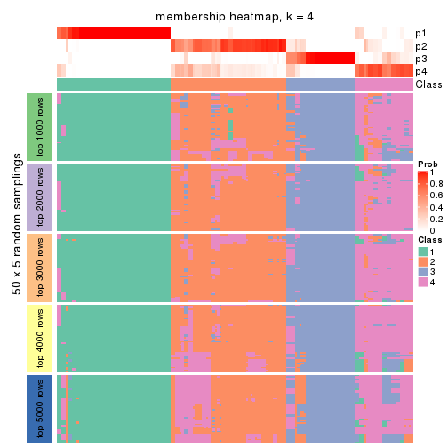
membership_heatmap(res, k = 5)
membership_heatmap(res, k = 6)
As soon as we have had the classes for columns, we can look for signatures which are significantly different between classes which can be candidate marks for certain classes. Following are the heatmaps for signatures.
Signature heatmaps where rows are scaled:
get_signatures(res, k = 2)
get_signatures(res, k = 3)
get_signatures(res, k = 4)
get_signatures(res, k = 5)
get_signatures(res, k = 6)
Signature heatmaps where rows are not scaled:
get_signatures(res, k = 2, scale_rows = FALSE)
get_signatures(res, k = 3, scale_rows = FALSE)
get_signatures(res, k = 4, scale_rows = FALSE)
get_signatures(res, k = 5, scale_rows = FALSE)
get_signatures(res, k = 6, scale_rows = FALSE)
Compare the overlap of signatures from different k:
compare_signatures(res)
get_signature() returns a data frame invisibly. TO get the list of signatures, the function
call should be assigned to a variable explicitly. In following code, if plot argument is set
to FALSE, no heatmap is plotted while only the differential analysis is performed.
# code only for demonstration
tb = get_signature(res, k = ..., plot = FALSE)
An example of the output of tb is:
#> which_row fdr mean_1 mean_2 scaled_mean_1 scaled_mean_2 km
#> 1 38 0.042760348 8.373488 9.131774 -0.5533452 0.5164555 1
#> 2 40 0.018707592 7.106213 8.469186 -0.6173731 0.5762149 1
#> 3 55 0.019134737 10.221463 11.207825 -0.6159697 0.5749050 1
#> 4 59 0.006059896 5.921854 7.869574 -0.6899429 0.6439467 1
#> 5 60 0.018055526 8.928898 10.211722 -0.6204761 0.5791110 1
#> 6 98 0.009384629 15.714769 14.887706 0.6635654 -0.6193277 2
...
The columns in tb are:
which_row: row indices corresponding to the input matrix.fdr: FDR for the differential test. mean_x: The mean value in group x.scaled_mean_x: The mean value in group x after rows are scaled.km: Row groups if k-means clustering is applied to rows.UMAP plot which shows how samples are separated.
dimension_reduction(res, k = 2, method = "UMAP")
dimension_reduction(res, k = 3, method = "UMAP")
dimension_reduction(res, k = 4, method = "UMAP")
dimension_reduction(res, k = 5, method = "UMAP")
dimension_reduction(res, k = 6, method = "UMAP")
Following heatmap shows how subgroups are split when increasing k:
collect_classes(res)
If matrix rows can be associated to genes, consider to use GO_Enrichment(res,
...) to perform function enrichment for the signature genes.
The object with results only for a single top-value method and a single partition method can be extracted as:
res = res_list["CV", "pam"]
# you can also extract it by
# res = res_list["CV:pam"]
A summary of res and all the functions that can be applied to it:
res
#> A 'ConsensusPartition' object with k = 2, 3, 4, 5, 6.
#> On a matrix with 14410 rows and 160 columns.
#> Top rows (1000, 2000, 3000, 4000, 5000) are extracted by 'CV' method.
#> Subgroups are detected by 'pam' method.
#> Performed in total 1250 partitions by row resampling.
#> Best k for subgroups seems to be 3.
#>
#> Following methods can be applied to this 'ConsensusPartition' object:
#> [1] "cola_report" "collect_classes" "collect_plots"
#> [4] "collect_stats" "colnames" "compare_signatures"
#> [7] "consensus_heatmap" "dimension_reduction" "functional_enrichment"
#> [10] "get_anno_col" "get_anno" "get_classes"
#> [13] "get_consensus" "get_matrix" "get_membership"
#> [16] "get_param" "get_signatures" "get_stats"
#> [19] "is_best_k" "is_stable_k" "membership_heatmap"
#> [22] "ncol" "nrow" "plot_ecdf"
#> [25] "rownames" "select_partition_number" "show"
#> [28] "suggest_best_k" "test_to_known_factors"
collect_plots() function collects all the plots made from res for all k (number of partitions)
into one single page to provide an easy and fast comparison between different k.
collect_plots(res)
The plots are:
k and the heatmap of
predicted classes for each k.k.k.k.All the plots in panels can be made by individual functions and they are plotted later in this section.
select_partition_number() produces several plots showing different
statistics for choosing “optimized” k. There are following statistics:
k;k, the area increased is defined as \(A_k - A_{k-1}\).The detailed explanations of these statistics can be found in the cola vignette.
Generally speaking, lower PAC score, higher mean silhouette score or higher
concordance corresponds to better partition. Rand index and Jaccard index
measure how similar the current partition is compared to partition with k-1.
If they are too similar, we won't accept k is better than k-1.
select_partition_number(res)
The numeric values for all these statistics can be obtained by get_stats().
get_stats(res)
#> k 1-PAC mean_silhouette concordance area_increased Rand Jaccard
#> 2 2 0.394 0.768 0.870 0.4671 0.550 0.550
#> 3 3 0.614 0.834 0.903 0.4131 0.716 0.515
#> 4 4 0.703 0.641 0.851 0.0989 0.924 0.780
#> 5 5 0.711 0.633 0.841 0.0436 0.969 0.888
#> 6 6 0.727 0.699 0.851 0.0320 0.959 0.844
suggest_best_k() suggests the best \(k\) based on these statistics. The rules are as follows:
NA.suggest_best_k(res)
#> [1] 3
Following shows the table of the partitions (You need to click the show/hide
code output link to see it). The membership matrix (columns with name p*)
is inferred by
clue::cl_consensus()
function with the SE method. Basically the value in the membership matrix
represents the probability to belong to a certain group. The finall class
label for an item is determined with the group with highest probability it
belongs to.
In get_classes() function, the entropy is calculated from the membership
matrix and the silhouette score is calculated from the consensus matrix.
cbind(get_classes(res, k = 2), get_membership(res, k = 2))
#> class entropy silhouette p1 p2
#> SRR031811 2 0.4431 0.8528 0.092 0.908
#> SRR031812 1 0.0000 0.8663 1.000 0.000
#> SRR031813 2 0.0000 0.8426 0.000 1.000
#> SRR031814 1 0.0000 0.8663 1.000 0.000
#> SRR031815 1 0.3114 0.8561 0.944 0.056
#> SRR031816 2 0.4431 0.8528 0.092 0.908
#> SRR031817 2 0.2423 0.8293 0.040 0.960
#> SRR031818 2 0.4431 0.8528 0.092 0.908
#> SRR031819 2 0.6148 0.7278 0.152 0.848
#> SRR031820 2 0.2423 0.8293 0.040 0.960
#> SRR031821 2 0.9248 0.6466 0.340 0.660
#> SRR031822 1 0.7376 0.7694 0.792 0.208
#> SRR031823 2 0.4431 0.8147 0.092 0.908
#> SRR031824 2 0.4815 0.8502 0.104 0.896
#> SRR031825 2 0.4431 0.8528 0.092 0.908
#> SRR031826 2 0.0000 0.8426 0.000 1.000
#> SRR031827 2 0.4562 0.8525 0.096 0.904
#> SRR031828 1 0.0000 0.8663 1.000 0.000
#> SRR031829 2 0.4431 0.8528 0.092 0.908
#> SRR031830 1 0.3879 0.8371 0.924 0.076
#> SRR031831 2 0.2423 0.8293 0.040 0.960
#> SRR031832 2 0.3274 0.8182 0.060 0.940
#> SRR031833 2 0.4431 0.8528 0.092 0.908
#> SRR031834 1 0.7376 0.7694 0.792 0.208
#> SRR031835 1 0.0000 0.8663 1.000 0.000
#> SRR031836 2 0.0000 0.8426 0.000 1.000
#> SRR031837 2 0.2423 0.8293 0.040 0.960
#> SRR031838 2 0.0000 0.8426 0.000 1.000
#> SRR031839 2 0.0000 0.8426 0.000 1.000
#> SRR031840 1 0.0000 0.8663 1.000 0.000
#> SRR031841 1 0.9608 0.5475 0.616 0.384
#> SRR031842 2 0.4431 0.8528 0.092 0.908
#> SRR031843 2 0.3274 0.8182 0.060 0.940
#> SRR031844 2 0.8555 0.5915 0.280 0.720
#> SRR031845 2 0.7883 0.7658 0.236 0.764
#> SRR031846 1 0.7528 0.7108 0.784 0.216
#> SRR031847 2 0.3274 0.8182 0.060 0.940
#> SRR031848 2 0.0000 0.8426 0.000 1.000
#> SRR031849 2 0.3114 0.8208 0.056 0.944
#> SRR031850 2 0.7219 0.7900 0.200 0.800
#> SRR031851 2 0.4431 0.8528 0.092 0.908
#> SRR031852 1 0.3431 0.8509 0.936 0.064
#> SRR031853 1 0.4431 0.8379 0.908 0.092
#> SRR031854 1 0.9963 0.3686 0.536 0.464
#> SRR031855 2 0.4431 0.8528 0.092 0.908
#> SRR031857 2 0.9608 0.5728 0.384 0.616
#> SRR031858 2 0.7453 0.7848 0.212 0.788
#> SRR031859 2 0.4939 0.8497 0.108 0.892
#> SRR031860 2 0.4815 0.8502 0.104 0.896
#> SRR031861 2 0.4431 0.8528 0.092 0.908
#> SRR031862 1 0.0000 0.8663 1.000 0.000
#> SRR031863 2 0.4431 0.8528 0.092 0.908
#> SRR031864 2 0.6247 0.8244 0.156 0.844
#> SRR031865 2 0.5629 0.7453 0.132 0.868
#> SRR031866 1 0.1633 0.8639 0.976 0.024
#> SRR031867 2 0.4431 0.8528 0.092 0.908
#> SRR031868 2 0.4431 0.8528 0.092 0.908
#> SRR031869 1 0.4431 0.8379 0.908 0.092
#> SRR031870 2 0.4431 0.8528 0.092 0.908
#> SRR031871 1 0.5946 0.7593 0.856 0.144
#> SRR031872 1 0.0376 0.8648 0.996 0.004
#> SRR031873 1 0.0000 0.8663 1.000 0.000
#> SRR031874 1 0.9000 0.6403 0.684 0.316
#> SRR031875 2 0.0000 0.8426 0.000 1.000
#> SRR031876 1 0.0938 0.8660 0.988 0.012
#> SRR031877 2 0.9833 0.4800 0.424 0.576
#> SRR031878 2 0.8016 0.7651 0.244 0.756
#> SRR031879 2 0.3431 0.8158 0.064 0.936
#> SRR031880 2 0.4298 0.8435 0.088 0.912
#> SRR031881 2 0.8267 0.7433 0.260 0.740
#> SRR031882 2 0.0000 0.8426 0.000 1.000
#> SRR031883 2 0.1633 0.8365 0.024 0.976
#> SRR031884 2 0.2423 0.8293 0.040 0.960
#> SRR031885 2 0.0000 0.8426 0.000 1.000
#> SRR031886 2 0.2778 0.8254 0.048 0.952
#> SRR031887 1 0.0000 0.8663 1.000 0.000
#> SRR031888 2 0.4431 0.8528 0.092 0.908
#> SRR031889 1 0.9608 0.5475 0.616 0.384
#> SRR031890 1 0.8081 0.6619 0.752 0.248
#> SRR031891 2 0.7883 0.7633 0.236 0.764
#> SRR031892 2 0.7883 0.6662 0.236 0.764
#> SRR031893 1 0.5519 0.7959 0.872 0.128
#> SRR031894 2 0.0000 0.8426 0.000 1.000
#> SRR031895 1 0.7453 0.7828 0.788 0.212
#> SRR031896 2 0.0000 0.8426 0.000 1.000
#> SRR031897 2 0.7528 0.7778 0.216 0.784
#> SRR031898 2 0.7219 0.7903 0.200 0.800
#> SRR031899 2 0.0000 0.8426 0.000 1.000
#> SRR031900 2 0.5737 0.8387 0.136 0.864
#> SRR031901 2 0.4431 0.8528 0.092 0.908
#> SRR031902 1 0.9635 0.2210 0.612 0.388
#> SRR031903 1 0.0000 0.8663 1.000 0.000
#> SRR031904 2 0.4690 0.8519 0.100 0.900
#> SRR031905 1 0.2236 0.8562 0.964 0.036
#> SRR031906 1 0.4431 0.8379 0.908 0.092
#> SRR031907 2 1.0000 0.2979 0.496 0.504
#> SRR031908 2 0.3274 0.8182 0.060 0.940
#> SRR031909 1 0.0000 0.8663 1.000 0.000
#> SRR031910 2 0.0000 0.8426 0.000 1.000
#> SRR031911 2 0.0376 0.8420 0.004 0.996
#> SRR031912 1 0.9491 0.5433 0.632 0.368
#> SRR031913 2 0.4431 0.8528 0.092 0.908
#> SRR031914 1 0.0000 0.8663 1.000 0.000
#> SRR031915 2 0.8555 0.7126 0.280 0.720
#> SRR031916 2 0.1184 0.8392 0.016 0.984
#> SRR031917 1 0.9922 -0.1251 0.552 0.448
#> SRR031918 2 0.0672 0.8412 0.008 0.992
#> SRR031919 1 0.4431 0.8379 0.908 0.092
#> SRR031920 2 0.0000 0.8426 0.000 1.000
#> SRR031921 2 0.0000 0.8426 0.000 1.000
#> SRR031922 2 0.8081 0.7469 0.248 0.752
#> SRR031923 2 0.4815 0.8502 0.104 0.896
#> SRR031924 1 0.5629 0.7927 0.868 0.132
#> SRR031925 2 0.9608 0.5728 0.384 0.616
#> SRR031926 2 0.8763 0.7020 0.296 0.704
#> SRR031927 2 0.0000 0.8426 0.000 1.000
#> SRR031928 1 0.0000 0.8663 1.000 0.000
#> SRR031929 2 0.4431 0.8528 0.092 0.908
#> SRR031930 2 0.5294 0.8447 0.120 0.880
#> SRR031931 2 0.1843 0.8414 0.028 0.972
#> SRR031932 1 0.0000 0.8663 1.000 0.000
#> SRR031933 2 0.5178 0.8465 0.116 0.884
#> SRR031934 1 0.3584 0.8291 0.932 0.068
#> SRR031935 2 0.1184 0.8393 0.016 0.984
#> SRR031936 1 0.0000 0.8663 1.000 0.000
#> SRR031937 1 0.4431 0.8379 0.908 0.092
#> SRR031938 2 0.9933 0.4248 0.452 0.548
#> SRR031939 2 0.4431 0.8528 0.092 0.908
#> SRR031940 1 0.1184 0.8655 0.984 0.016
#> SRR031941 2 0.5408 0.7889 0.124 0.876
#> SRR031942 2 0.9732 0.5262 0.404 0.596
#> SRR031943 2 0.0000 0.8426 0.000 1.000
#> SRR031944 2 0.9944 0.2769 0.456 0.544
#> SRR031945 2 0.9977 -0.0248 0.472 0.528
#> SRR031946 2 0.1184 0.8392 0.016 0.984
#> SRR031947 2 0.8327 0.7303 0.264 0.736
#> SRR031948 1 0.4431 0.8379 0.908 0.092
#> SRR031949 1 0.4161 0.8420 0.916 0.084
#> SRR031950 2 0.7376 0.7827 0.208 0.792
#> SRR031951 2 0.9393 0.6204 0.356 0.644
#> SRR031952 1 0.2423 0.8439 0.960 0.040
#> SRR031953 1 0.0000 0.8663 1.000 0.000
#> SRR031954 2 0.9977 -0.0253 0.472 0.528
#> SRR031955 2 0.9732 0.2788 0.404 0.596
#> SRR031956 2 0.9954 0.4059 0.460 0.540
#> SRR031957 2 0.5294 0.8465 0.120 0.880
#> SRR031958 2 0.4431 0.8528 0.092 0.908
#> SRR031959 2 0.8081 0.6657 0.248 0.752
#> SRR031960 2 0.4562 0.8525 0.096 0.904
#> SRR031961 1 0.4431 0.8379 0.908 0.092
#> SRR031962 1 0.0000 0.8663 1.000 0.000
#> SRR031963 2 0.9087 0.6630 0.324 0.676
#> SRR031964 1 0.2423 0.8439 0.960 0.040
#> SRR031965 2 0.4431 0.8528 0.092 0.908
#> SRR031966 2 0.4431 0.8528 0.092 0.908
#> SRR031967 1 0.0376 0.8663 0.996 0.004
#> SRR031968 1 0.4431 0.8379 0.908 0.092
#> SRR031969 1 0.9795 0.5046 0.584 0.416
#> SRR031970 2 0.4431 0.8528 0.092 0.908
#> SRR031971 1 0.8499 0.6786 0.724 0.276
cbind(get_classes(res, k = 3), get_membership(res, k = 3))
#> class entropy silhouette p1 p2 p3
#> SRR031811 2 0.0747 0.8631 0.000 0.984 0.016
#> SRR031812 1 0.0000 0.9421 1.000 0.000 0.000
#> SRR031813 3 0.0592 0.8995 0.000 0.012 0.988
#> SRR031814 1 0.0000 0.9421 1.000 0.000 0.000
#> SRR031815 1 0.0237 0.9392 0.996 0.000 0.004
#> SRR031816 2 0.2448 0.8730 0.000 0.924 0.076
#> SRR031817 3 0.0000 0.9050 0.000 0.000 1.000
#> SRR031818 2 0.3619 0.8644 0.000 0.864 0.136
#> SRR031819 3 0.0000 0.9050 0.000 0.000 1.000
#> SRR031820 3 0.0000 0.9050 0.000 0.000 1.000
#> SRR031821 2 0.6023 0.7524 0.092 0.788 0.120
#> SRR031822 1 0.0000 0.9421 1.000 0.000 0.000
#> SRR031823 3 0.7381 0.7119 0.132 0.164 0.704
#> SRR031824 2 0.3551 0.8638 0.000 0.868 0.132
#> SRR031825 2 0.3551 0.8638 0.000 0.868 0.132
#> SRR031826 3 0.2448 0.8528 0.000 0.076 0.924
#> SRR031827 2 0.3038 0.8723 0.000 0.896 0.104
#> SRR031828 1 0.0000 0.9421 1.000 0.000 0.000
#> SRR031829 2 0.2066 0.8745 0.000 0.940 0.060
#> SRR031830 1 0.2486 0.8821 0.932 0.060 0.008
#> SRR031831 3 0.0000 0.9050 0.000 0.000 1.000
#> SRR031832 3 0.0000 0.9050 0.000 0.000 1.000
#> SRR031833 2 0.2537 0.8726 0.000 0.920 0.080
#> SRR031834 1 0.0000 0.9421 1.000 0.000 0.000
#> SRR031835 1 0.0000 0.9421 1.000 0.000 0.000
#> SRR031836 3 0.0000 0.9050 0.000 0.000 1.000
#> SRR031837 3 0.0000 0.9050 0.000 0.000 1.000
#> SRR031838 3 0.0237 0.9031 0.000 0.004 0.996
#> SRR031839 3 0.0000 0.9050 0.000 0.000 1.000
#> SRR031840 1 0.0000 0.9421 1.000 0.000 0.000
#> SRR031841 1 0.4605 0.7322 0.796 0.000 0.204
#> SRR031842 2 0.3482 0.8647 0.000 0.872 0.128
#> SRR031843 3 0.0000 0.9050 0.000 0.000 1.000
#> SRR031844 3 0.5659 0.7674 0.152 0.052 0.796
#> SRR031845 2 0.3784 0.8099 0.132 0.864 0.004
#> SRR031846 2 0.7585 0.1231 0.476 0.484 0.040
#> SRR031847 3 0.0000 0.9050 0.000 0.000 1.000
#> SRR031848 3 0.0000 0.9050 0.000 0.000 1.000
#> SRR031849 3 0.0000 0.9050 0.000 0.000 1.000
#> SRR031850 2 0.1860 0.8643 0.000 0.948 0.052
#> SRR031851 2 0.1860 0.8643 0.000 0.948 0.052
#> SRR031852 1 0.0000 0.9421 1.000 0.000 0.000
#> SRR031853 1 0.0000 0.9421 1.000 0.000 0.000
#> SRR031854 1 0.6309 0.0538 0.504 0.000 0.496
#> SRR031855 2 0.3551 0.8638 0.000 0.868 0.132
#> SRR031857 2 0.3482 0.8140 0.128 0.872 0.000
#> SRR031858 2 0.2537 0.8726 0.000 0.920 0.080
#> SRR031859 2 0.3551 0.8638 0.000 0.868 0.132
#> SRR031860 2 0.3551 0.8638 0.000 0.868 0.132
#> SRR031861 2 0.3551 0.8638 0.000 0.868 0.132
#> SRR031862 1 0.0000 0.9421 1.000 0.000 0.000
#> SRR031863 2 0.2165 0.8514 0.000 0.936 0.064
#> SRR031864 2 0.1860 0.8643 0.000 0.948 0.052
#> SRR031865 3 0.4228 0.7726 0.008 0.148 0.844
#> SRR031866 1 0.0000 0.9421 1.000 0.000 0.000
#> SRR031867 2 0.3752 0.8432 0.000 0.856 0.144
#> SRR031868 2 0.5178 0.7567 0.000 0.744 0.256
#> SRR031869 1 0.0000 0.9421 1.000 0.000 0.000
#> SRR031870 2 0.3267 0.8700 0.000 0.884 0.116
#> SRR031871 2 0.5122 0.7614 0.200 0.788 0.012
#> SRR031872 1 0.0000 0.9421 1.000 0.000 0.000
#> SRR031873 1 0.0000 0.9421 1.000 0.000 0.000
#> SRR031874 1 0.6299 0.0108 0.524 0.000 0.476
#> SRR031875 3 0.0000 0.9050 0.000 0.000 1.000
#> SRR031876 1 0.0000 0.9421 1.000 0.000 0.000
#> SRR031877 2 0.7930 0.7006 0.168 0.664 0.168
#> SRR031878 2 0.1163 0.8626 0.000 0.972 0.028
#> SRR031879 3 0.0000 0.9050 0.000 0.000 1.000
#> SRR031880 3 0.8475 0.5053 0.112 0.320 0.568
#> SRR031881 2 0.0237 0.8631 0.000 0.996 0.004
#> SRR031882 3 0.0000 0.9050 0.000 0.000 1.000
#> SRR031883 3 0.0000 0.9050 0.000 0.000 1.000
#> SRR031884 3 0.0000 0.9050 0.000 0.000 1.000
#> SRR031885 3 0.0000 0.9050 0.000 0.000 1.000
#> SRR031886 3 0.0000 0.9050 0.000 0.000 1.000
#> SRR031887 1 0.0000 0.9421 1.000 0.000 0.000
#> SRR031888 2 0.2356 0.8735 0.000 0.928 0.072
#> SRR031889 1 0.3941 0.7852 0.844 0.000 0.156
#> SRR031890 2 0.6572 0.7796 0.172 0.748 0.080
#> SRR031891 2 0.3851 0.8068 0.136 0.860 0.004
#> SRR031892 3 0.5944 0.7635 0.152 0.064 0.784
#> SRR031893 1 0.0424 0.9362 0.992 0.000 0.008
#> SRR031894 3 0.0237 0.9031 0.000 0.004 0.996
#> SRR031895 1 0.7447 0.5246 0.652 0.068 0.280
#> SRR031896 3 0.0000 0.9050 0.000 0.000 1.000
#> SRR031897 2 0.0000 0.8615 0.000 1.000 0.000
#> SRR031898 2 0.3752 0.8599 0.000 0.856 0.144
#> SRR031899 3 0.2261 0.8777 0.000 0.068 0.932
#> SRR031900 2 0.2711 0.8717 0.000 0.912 0.088
#> SRR031901 2 0.3551 0.8638 0.000 0.868 0.132
#> SRR031902 2 0.5831 0.8202 0.128 0.796 0.076
#> SRR031903 1 0.0000 0.9421 1.000 0.000 0.000
#> SRR031904 2 0.3267 0.8699 0.000 0.884 0.116
#> SRR031905 1 0.1163 0.9192 0.972 0.000 0.028
#> SRR031906 1 0.0000 0.9421 1.000 0.000 0.000
#> SRR031907 2 0.3340 0.8215 0.120 0.880 0.000
#> SRR031908 3 0.0000 0.9050 0.000 0.000 1.000
#> SRR031909 1 0.0000 0.9421 1.000 0.000 0.000
#> SRR031910 3 0.4504 0.7638 0.000 0.196 0.804
#> SRR031911 3 0.0000 0.9050 0.000 0.000 1.000
#> SRR031912 3 0.6252 0.2529 0.444 0.000 0.556
#> SRR031913 2 0.0000 0.8615 0.000 1.000 0.000
#> SRR031914 1 0.0000 0.9421 1.000 0.000 0.000
#> SRR031915 2 0.6252 0.8050 0.144 0.772 0.084
#> SRR031916 3 0.1860 0.8802 0.000 0.052 0.948
#> SRR031917 2 0.4723 0.7896 0.160 0.824 0.016
#> SRR031918 3 0.0000 0.9050 0.000 0.000 1.000
#> SRR031919 1 0.1031 0.9218 0.976 0.024 0.000
#> SRR031920 3 0.1964 0.8796 0.000 0.056 0.944
#> SRR031921 3 0.1031 0.8937 0.000 0.024 0.976
#> SRR031922 2 0.2537 0.8726 0.000 0.920 0.080
#> SRR031923 2 0.3551 0.8638 0.000 0.868 0.132
#> SRR031924 1 0.0424 0.9362 0.992 0.000 0.008
#> SRR031925 2 0.3686 0.8052 0.140 0.860 0.000
#> SRR031926 2 0.0000 0.8615 0.000 1.000 0.000
#> SRR031927 3 0.0000 0.9050 0.000 0.000 1.000
#> SRR031928 1 0.0000 0.9421 1.000 0.000 0.000
#> SRR031929 2 0.1529 0.8607 0.000 0.960 0.040
#> SRR031930 2 0.1860 0.8643 0.000 0.948 0.052
#> SRR031931 3 0.6373 0.1621 0.004 0.408 0.588
#> SRR031932 1 0.0000 0.9421 1.000 0.000 0.000
#> SRR031933 2 0.3551 0.8638 0.000 0.868 0.132
#> SRR031934 1 0.4842 0.6863 0.776 0.224 0.000
#> SRR031935 3 0.3551 0.8317 0.000 0.132 0.868
#> SRR031936 1 0.0000 0.9421 1.000 0.000 0.000
#> SRR031937 1 0.0000 0.9421 1.000 0.000 0.000
#> SRR031938 2 0.4110 0.8001 0.152 0.844 0.004
#> SRR031939 2 0.3551 0.8638 0.000 0.868 0.132
#> SRR031940 1 0.0000 0.9421 1.000 0.000 0.000
#> SRR031941 3 0.3551 0.8323 0.000 0.132 0.868
#> SRR031942 2 0.7217 0.7578 0.152 0.716 0.132
#> SRR031943 3 0.2165 0.8775 0.000 0.064 0.936
#> SRR031944 3 0.8561 0.5004 0.156 0.244 0.600
#> SRR031945 3 0.6929 0.6317 0.260 0.052 0.688
#> SRR031946 3 0.0592 0.9006 0.000 0.012 0.988
#> SRR031947 2 0.6252 0.8050 0.144 0.772 0.084
#> SRR031948 1 0.0000 0.9421 1.000 0.000 0.000
#> SRR031949 1 0.0000 0.9421 1.000 0.000 0.000
#> SRR031950 2 0.0000 0.8615 0.000 1.000 0.000
#> SRR031951 2 0.1989 0.8544 0.048 0.948 0.004
#> SRR031952 2 0.6215 0.3901 0.428 0.572 0.000
#> SRR031953 1 0.0000 0.9421 1.000 0.000 0.000
#> SRR031954 3 0.6306 0.7175 0.200 0.052 0.748
#> SRR031955 3 0.5970 0.7573 0.160 0.060 0.780
#> SRR031956 2 0.4047 0.7992 0.148 0.848 0.004
#> SRR031957 2 0.4750 0.7765 0.000 0.784 0.216
#> SRR031958 2 0.2537 0.8726 0.000 0.920 0.080
#> SRR031959 3 0.7042 0.7209 0.140 0.132 0.728
#> SRR031960 2 0.2537 0.8726 0.000 0.920 0.080
#> SRR031961 1 0.0000 0.9421 1.000 0.000 0.000
#> SRR031962 1 0.0000 0.9421 1.000 0.000 0.000
#> SRR031963 2 0.3851 0.8068 0.136 0.860 0.004
#> SRR031964 2 0.6140 0.4512 0.404 0.596 0.000
#> SRR031965 2 0.1860 0.8643 0.000 0.948 0.052
#> SRR031966 2 0.1964 0.8649 0.000 0.944 0.056
#> SRR031967 1 0.0000 0.9421 1.000 0.000 0.000
#> SRR031968 1 0.0000 0.9421 1.000 0.000 0.000
#> SRR031969 1 0.4555 0.7376 0.800 0.000 0.200
#> SRR031970 2 0.3551 0.8638 0.000 0.868 0.132
#> SRR031971 1 0.4349 0.8025 0.852 0.020 0.128
cbind(get_classes(res, k = 4), get_membership(res, k = 4))
#> class entropy silhouette p1 p2 p3 p4
#> SRR031811 2 0.5512 -0.19508 0.000 0.496 0.016 0.488
#> SRR031812 1 0.0000 0.93605 1.000 0.000 0.000 0.000
#> SRR031813 3 0.0469 0.82380 0.000 0.012 0.988 0.000
#> SRR031814 1 0.0000 0.93605 1.000 0.000 0.000 0.000
#> SRR031815 1 0.0000 0.93605 1.000 0.000 0.000 0.000
#> SRR031816 2 0.0376 0.72731 0.000 0.992 0.004 0.004
#> SRR031817 3 0.0188 0.82920 0.000 0.004 0.996 0.000
#> SRR031818 2 0.0707 0.72248 0.000 0.980 0.020 0.000
#> SRR031819 3 0.0188 0.82920 0.000 0.004 0.996 0.000
#> SRR031820 3 0.0188 0.82920 0.000 0.004 0.996 0.000
#> SRR031821 4 0.7106 0.43990 0.016 0.368 0.088 0.528
#> SRR031822 1 0.0000 0.93605 1.000 0.000 0.000 0.000
#> SRR031823 4 0.6160 0.35588 0.000 0.072 0.316 0.612
#> SRR031824 2 0.0188 0.72797 0.000 0.996 0.004 0.000
#> SRR031825 2 0.0188 0.72797 0.000 0.996 0.004 0.000
#> SRR031826 3 0.1940 0.76147 0.000 0.076 0.924 0.000
#> SRR031827 2 0.0376 0.72731 0.000 0.992 0.004 0.004
#> SRR031828 1 0.0000 0.93605 1.000 0.000 0.000 0.000
#> SRR031829 2 0.5070 0.02956 0.000 0.580 0.004 0.416
#> SRR031830 1 0.0921 0.91521 0.972 0.028 0.000 0.000
#> SRR031831 3 0.0188 0.82920 0.000 0.004 0.996 0.000
#> SRR031832 3 0.0188 0.82920 0.000 0.004 0.996 0.000
#> SRR031833 2 0.4606 0.38318 0.000 0.724 0.012 0.264
#> SRR031834 1 0.0000 0.93605 1.000 0.000 0.000 0.000
#> SRR031835 1 0.0000 0.93605 1.000 0.000 0.000 0.000
#> SRR031836 3 0.2408 0.76882 0.000 0.000 0.896 0.104
#> SRR031837 3 0.0188 0.82920 0.000 0.004 0.996 0.000
#> SRR031838 3 0.0188 0.82920 0.000 0.004 0.996 0.000
#> SRR031839 3 0.0188 0.82920 0.000 0.004 0.996 0.000
#> SRR031840 1 0.0000 0.93605 1.000 0.000 0.000 0.000
#> SRR031841 1 0.3266 0.78151 0.832 0.000 0.168 0.000
#> SRR031842 2 0.0188 0.72593 0.000 0.996 0.004 0.000
#> SRR031843 3 0.0188 0.82920 0.000 0.004 0.996 0.000
#> SRR031844 3 0.6645 0.16254 0.072 0.004 0.504 0.420
#> SRR031845 4 0.4008 0.55891 0.000 0.244 0.000 0.756
#> SRR031846 1 0.4991 0.31056 0.608 0.388 0.004 0.000
#> SRR031847 3 0.0188 0.82920 0.000 0.004 0.996 0.000
#> SRR031848 3 0.1211 0.80928 0.000 0.000 0.960 0.040
#> SRR031849 3 0.0188 0.82920 0.000 0.004 0.996 0.000
#> SRR031850 2 0.3975 0.53004 0.000 0.760 0.000 0.240
#> SRR031851 2 0.3873 0.54270 0.000 0.772 0.000 0.228
#> SRR031852 1 0.0707 0.93188 0.980 0.000 0.000 0.020
#> SRR031853 1 0.0707 0.93188 0.980 0.000 0.000 0.020
#> SRR031854 1 0.5535 0.27536 0.560 0.000 0.420 0.020
#> SRR031855 2 0.0188 0.72797 0.000 0.996 0.004 0.000
#> SRR031857 4 0.5643 0.32995 0.024 0.428 0.000 0.548
#> SRR031858 2 0.0188 0.72797 0.000 0.996 0.004 0.000
#> SRR031859 2 0.0188 0.72797 0.000 0.996 0.004 0.000
#> SRR031860 2 0.0188 0.72797 0.000 0.996 0.004 0.000
#> SRR031861 2 0.0188 0.72797 0.000 0.996 0.004 0.000
#> SRR031862 1 0.0707 0.93188 0.980 0.000 0.000 0.020
#> SRR031863 4 0.3649 0.53739 0.000 0.204 0.000 0.796
#> SRR031864 2 0.4933 0.23678 0.000 0.568 0.000 0.432
#> SRR031865 3 0.5121 0.58038 0.004 0.128 0.772 0.096
#> SRR031866 1 0.0707 0.93188 0.980 0.000 0.000 0.020
#> SRR031867 2 0.1637 0.68563 0.000 0.940 0.060 0.000
#> SRR031868 2 0.2760 0.61182 0.000 0.872 0.128 0.000
#> SRR031869 1 0.0000 0.93605 1.000 0.000 0.000 0.000
#> SRR031870 2 0.0336 0.72681 0.000 0.992 0.008 0.000
#> SRR031871 2 0.2868 0.61430 0.136 0.864 0.000 0.000
#> SRR031872 1 0.0000 0.93605 1.000 0.000 0.000 0.000
#> SRR031873 1 0.0000 0.93605 1.000 0.000 0.000 0.000
#> SRR031874 1 0.4941 0.16235 0.564 0.000 0.436 0.000
#> SRR031875 3 0.0188 0.82920 0.000 0.004 0.996 0.000
#> SRR031876 1 0.0707 0.93188 0.980 0.000 0.000 0.020
#> SRR031877 2 0.8345 -0.13433 0.072 0.492 0.120 0.316
#> SRR031878 4 0.3311 0.55290 0.000 0.172 0.000 0.828
#> SRR031879 3 0.0188 0.82920 0.000 0.004 0.996 0.000
#> SRR031880 4 0.6705 0.48762 0.000 0.148 0.244 0.608
#> SRR031881 2 0.3710 0.59015 0.000 0.804 0.004 0.192
#> SRR031882 3 0.0188 0.82920 0.000 0.004 0.996 0.000
#> SRR031883 3 0.0188 0.82920 0.000 0.004 0.996 0.000
#> SRR031884 3 0.0188 0.82920 0.000 0.004 0.996 0.000
#> SRR031885 3 0.0188 0.82920 0.000 0.004 0.996 0.000
#> SRR031886 3 0.0188 0.82920 0.000 0.004 0.996 0.000
#> SRR031887 1 0.0000 0.93605 1.000 0.000 0.000 0.000
#> SRR031888 2 0.0188 0.72652 0.000 0.996 0.000 0.004
#> SRR031889 1 0.1940 0.87590 0.924 0.000 0.076 0.000
#> SRR031890 2 0.3539 0.56424 0.176 0.820 0.004 0.000
#> SRR031891 4 0.4008 0.55974 0.000 0.244 0.000 0.756
#> SRR031892 3 0.6925 0.30975 0.072 0.024 0.580 0.324
#> SRR031893 1 0.0000 0.93605 1.000 0.000 0.000 0.000
#> SRR031894 3 0.0188 0.82920 0.000 0.004 0.996 0.000
#> SRR031895 1 0.6167 0.61623 0.688 0.004 0.144 0.164
#> SRR031896 3 0.0376 0.82670 0.000 0.004 0.992 0.004
#> SRR031897 2 0.4761 0.26406 0.000 0.628 0.000 0.372
#> SRR031898 2 0.2363 0.69389 0.000 0.920 0.024 0.056
#> SRR031899 3 0.4225 0.68464 0.000 0.024 0.792 0.184
#> SRR031900 2 0.0469 0.72500 0.000 0.988 0.012 0.000
#> SRR031901 2 0.0188 0.72797 0.000 0.996 0.004 0.000
#> SRR031902 2 0.2081 0.66666 0.084 0.916 0.000 0.000
#> SRR031903 1 0.0000 0.93605 1.000 0.000 0.000 0.000
#> SRR031904 2 0.0817 0.71881 0.000 0.976 0.024 0.000
#> SRR031905 1 0.0000 0.93605 1.000 0.000 0.000 0.000
#> SRR031906 1 0.0000 0.93605 1.000 0.000 0.000 0.000
#> SRR031907 2 0.5830 0.15356 0.048 0.620 0.000 0.332
#> SRR031908 3 0.0188 0.82920 0.000 0.004 0.996 0.000
#> SRR031909 1 0.0707 0.93188 0.980 0.000 0.000 0.020
#> SRR031910 4 0.7520 0.31561 0.000 0.196 0.340 0.464
#> SRR031911 3 0.0188 0.82920 0.000 0.004 0.996 0.000
#> SRR031912 3 0.5294 0.07218 0.484 0.008 0.508 0.000
#> SRR031913 4 0.3907 0.50863 0.000 0.232 0.000 0.768
#> SRR031914 1 0.0000 0.93605 1.000 0.000 0.000 0.000
#> SRR031915 2 0.6207 0.15734 0.064 0.616 0.004 0.316
#> SRR031916 3 0.5271 0.40289 0.000 0.020 0.640 0.340
#> SRR031917 2 0.7210 -0.03572 0.076 0.532 0.028 0.364
#> SRR031918 3 0.1211 0.80927 0.000 0.000 0.960 0.040
#> SRR031919 1 0.1792 0.87392 0.932 0.000 0.000 0.068
#> SRR031920 3 0.4522 0.53820 0.000 0.000 0.680 0.320
#> SRR031921 3 0.0707 0.81862 0.000 0.020 0.980 0.000
#> SRR031922 2 0.0188 0.72797 0.000 0.996 0.004 0.000
#> SRR031923 2 0.0188 0.72797 0.000 0.996 0.004 0.000
#> SRR031924 1 0.0000 0.93605 1.000 0.000 0.000 0.000
#> SRR031925 4 0.5838 0.29704 0.032 0.444 0.000 0.524
#> SRR031926 2 0.4605 0.35658 0.000 0.664 0.000 0.336
#> SRR031927 3 0.0188 0.82920 0.000 0.004 0.996 0.000
#> SRR031928 1 0.0707 0.93188 0.980 0.000 0.000 0.020
#> SRR031929 4 0.3801 0.51061 0.000 0.220 0.000 0.780
#> SRR031930 2 0.4843 0.29953 0.000 0.604 0.000 0.396
#> SRR031931 3 0.6472 0.16969 0.004 0.320 0.596 0.080
#> SRR031932 1 0.0707 0.93188 0.980 0.000 0.000 0.020
#> SRR031933 2 0.1305 0.71270 0.000 0.960 0.004 0.036
#> SRR031934 1 0.5767 0.60281 0.712 0.136 0.000 0.152
#> SRR031935 3 0.6708 0.28068 0.000 0.128 0.592 0.280
#> SRR031936 1 0.0000 0.93605 1.000 0.000 0.000 0.000
#> SRR031937 1 0.0000 0.93605 1.000 0.000 0.000 0.000
#> SRR031938 2 0.4939 0.53321 0.064 0.776 0.004 0.156
#> SRR031939 2 0.0188 0.72797 0.000 0.996 0.004 0.000
#> SRR031940 1 0.0707 0.93188 0.980 0.000 0.000 0.020
#> SRR031941 4 0.4697 0.25150 0.000 0.000 0.356 0.644
#> SRR031942 2 0.7639 0.00738 0.072 0.548 0.064 0.316
#> SRR031943 3 0.5511 0.13377 0.000 0.016 0.500 0.484
#> SRR031944 3 0.8979 -0.14666 0.100 0.156 0.436 0.308
#> SRR031945 3 0.6890 0.31943 0.104 0.008 0.576 0.312
#> SRR031946 3 0.2345 0.77251 0.000 0.000 0.900 0.100
#> SRR031947 2 0.6395 0.13311 0.076 0.604 0.004 0.316
#> SRR031948 1 0.0000 0.93605 1.000 0.000 0.000 0.000
#> SRR031949 1 0.0707 0.93188 0.980 0.000 0.000 0.020
#> SRR031950 2 0.4888 0.27356 0.000 0.588 0.000 0.412
#> SRR031951 4 0.5366 0.30781 0.012 0.440 0.000 0.548
#> SRR031952 2 0.7756 -0.03270 0.320 0.428 0.000 0.252
#> SRR031953 1 0.0000 0.93605 1.000 0.000 0.000 0.000
#> SRR031954 3 0.6840 0.32559 0.100 0.008 0.580 0.312
#> SRR031955 3 0.7009 0.42827 0.092 0.036 0.632 0.240
#> SRR031956 2 0.6222 -0.09750 0.056 0.532 0.000 0.412
#> SRR031957 2 0.5678 0.19116 0.000 0.640 0.044 0.316
#> SRR031958 2 0.0188 0.72797 0.000 0.996 0.004 0.000
#> SRR031959 4 0.4661 0.27174 0.000 0.000 0.348 0.652
#> SRR031960 2 0.0188 0.72797 0.000 0.996 0.004 0.000
#> SRR031961 1 0.0000 0.93605 1.000 0.000 0.000 0.000
#> SRR031962 1 0.0000 0.93605 1.000 0.000 0.000 0.000
#> SRR031963 4 0.5628 0.34566 0.024 0.420 0.000 0.556
#> SRR031964 2 0.4431 0.39314 0.304 0.696 0.000 0.000
#> SRR031965 2 0.2868 0.63794 0.000 0.864 0.000 0.136
#> SRR031966 2 0.3610 0.57410 0.000 0.800 0.000 0.200
#> SRR031967 1 0.0707 0.93188 0.980 0.000 0.000 0.020
#> SRR031968 1 0.0707 0.93188 0.980 0.000 0.000 0.020
#> SRR031969 1 0.3479 0.80101 0.840 0.012 0.148 0.000
#> SRR031970 2 0.0188 0.72797 0.000 0.996 0.004 0.000
#> SRR031971 1 0.1716 0.88466 0.936 0.000 0.064 0.000
cbind(get_classes(res, k = 5), get_membership(res, k = 5))
#> class entropy silhouette p1 p2 p3 p4 p5
#> SRR031811 4 0.4675 0.229916 0.000 0.444 0.004 0.544 0.008
#> SRR031812 1 0.0000 0.902985 1.000 0.000 0.000 0.000 0.000
#> SRR031813 3 0.0162 0.829962 0.000 0.004 0.996 0.000 0.000
#> SRR031814 1 0.0000 0.902985 1.000 0.000 0.000 0.000 0.000
#> SRR031815 1 0.0000 0.902985 1.000 0.000 0.000 0.000 0.000
#> SRR031816 2 0.0162 0.725178 0.000 0.996 0.000 0.004 0.000
#> SRR031817 3 0.0000 0.832513 0.000 0.000 1.000 0.000 0.000
#> SRR031818 2 0.0609 0.718071 0.000 0.980 0.020 0.000 0.000
#> SRR031819 3 0.0000 0.832513 0.000 0.000 1.000 0.000 0.000
#> SRR031820 3 0.0000 0.832513 0.000 0.000 1.000 0.000 0.000
#> SRR031821 4 0.5281 0.482311 0.036 0.256 0.016 0.680 0.012
#> SRR031822 1 0.0000 0.902985 1.000 0.000 0.000 0.000 0.000
#> SRR031823 4 0.3241 0.405841 0.000 0.024 0.144 0.832 0.000
#> SRR031824 2 0.0609 0.720116 0.000 0.980 0.000 0.020 0.000
#> SRR031825 2 0.0000 0.725838 0.000 1.000 0.000 0.000 0.000
#> SRR031826 3 0.1544 0.776467 0.000 0.068 0.932 0.000 0.000
#> SRR031827 2 0.0000 0.725838 0.000 1.000 0.000 0.000 0.000
#> SRR031828 1 0.0000 0.902985 1.000 0.000 0.000 0.000 0.000
#> SRR031829 2 0.4446 -0.135638 0.000 0.520 0.000 0.476 0.004
#> SRR031830 1 0.0794 0.887920 0.972 0.028 0.000 0.000 0.000
#> SRR031831 3 0.0000 0.832513 0.000 0.000 1.000 0.000 0.000
#> SRR031832 3 0.0000 0.832513 0.000 0.000 1.000 0.000 0.000
#> SRR031833 2 0.3807 0.430590 0.000 0.748 0.012 0.240 0.000
#> SRR031834 1 0.0000 0.902985 1.000 0.000 0.000 0.000 0.000
#> SRR031835 1 0.0000 0.902985 1.000 0.000 0.000 0.000 0.000
#> SRR031836 3 0.3399 0.709443 0.000 0.000 0.812 0.168 0.020
#> SRR031837 3 0.0000 0.832513 0.000 0.000 1.000 0.000 0.000
#> SRR031838 3 0.0000 0.832513 0.000 0.000 1.000 0.000 0.000
#> SRR031839 3 0.0000 0.832513 0.000 0.000 1.000 0.000 0.000
#> SRR031840 1 0.0000 0.902985 1.000 0.000 0.000 0.000 0.000
#> SRR031841 1 0.3210 0.709669 0.788 0.000 0.212 0.000 0.000
#> SRR031842 2 0.0162 0.725158 0.000 0.996 0.000 0.004 0.000
#> SRR031843 3 0.0000 0.832513 0.000 0.000 1.000 0.000 0.000
#> SRR031844 3 0.6142 0.094684 0.096 0.004 0.452 0.444 0.004
#> SRR031845 5 0.6450 0.432831 0.000 0.212 0.000 0.296 0.492
#> SRR031846 1 0.4171 0.322545 0.604 0.396 0.000 0.000 0.000
#> SRR031847 3 0.0000 0.832513 0.000 0.000 1.000 0.000 0.000
#> SRR031848 3 0.1800 0.800268 0.000 0.000 0.932 0.048 0.020
#> SRR031849 3 0.0000 0.832513 0.000 0.000 1.000 0.000 0.000
#> SRR031850 2 0.4571 0.514975 0.000 0.736 0.000 0.188 0.076
#> SRR031851 2 0.4666 0.469791 0.000 0.704 0.000 0.240 0.056
#> SRR031852 1 0.2351 0.872048 0.896 0.000 0.000 0.016 0.088
#> SRR031853 1 0.2248 0.873713 0.900 0.000 0.000 0.012 0.088
#> SRR031854 1 0.5854 0.302883 0.524 0.000 0.384 0.004 0.088
#> SRR031855 2 0.0162 0.724971 0.000 0.996 0.004 0.000 0.000
#> SRR031857 4 0.5883 0.450294 0.044 0.300 0.000 0.608 0.048
#> SRR031858 2 0.0000 0.725838 0.000 1.000 0.000 0.000 0.000
#> SRR031859 2 0.0162 0.725158 0.000 0.996 0.000 0.004 0.000
#> SRR031860 2 0.0404 0.723589 0.000 0.988 0.000 0.012 0.000
#> SRR031861 2 0.0000 0.725838 0.000 1.000 0.000 0.000 0.000
#> SRR031862 1 0.2248 0.873713 0.900 0.000 0.000 0.012 0.088
#> SRR031863 5 0.2408 0.804050 0.000 0.016 0.000 0.092 0.892
#> SRR031864 5 0.2522 0.780365 0.000 0.108 0.000 0.012 0.880
#> SRR031865 3 0.4850 0.605469 0.004 0.132 0.768 0.060 0.036
#> SRR031866 1 0.2248 0.872854 0.900 0.000 0.000 0.012 0.088
#> SRR031867 2 0.1410 0.681198 0.000 0.940 0.060 0.000 0.000
#> SRR031868 2 0.2230 0.623843 0.000 0.884 0.116 0.000 0.000
#> SRR031869 1 0.0000 0.902985 1.000 0.000 0.000 0.000 0.000
#> SRR031870 2 0.0162 0.724846 0.000 0.996 0.004 0.000 0.000
#> SRR031871 2 0.2966 0.605602 0.136 0.848 0.000 0.016 0.000
#> SRR031872 1 0.0162 0.902560 0.996 0.000 0.000 0.004 0.000
#> SRR031873 1 0.0000 0.902985 1.000 0.000 0.000 0.000 0.000
#> SRR031874 1 0.4242 0.160223 0.572 0.000 0.428 0.000 0.000
#> SRR031875 3 0.0000 0.832513 0.000 0.000 1.000 0.000 0.000
#> SRR031876 1 0.1809 0.884272 0.928 0.000 0.000 0.012 0.060
#> SRR031877 2 0.7466 -0.192161 0.076 0.456 0.124 0.340 0.004
#> SRR031878 5 0.2127 0.790639 0.000 0.000 0.000 0.108 0.892
#> SRR031879 3 0.0000 0.832513 0.000 0.000 1.000 0.000 0.000
#> SRR031880 4 0.2300 0.448662 0.000 0.072 0.024 0.904 0.000
#> SRR031881 2 0.4656 0.077522 0.000 0.508 0.000 0.480 0.012
#> SRR031882 3 0.0000 0.832513 0.000 0.000 1.000 0.000 0.000
#> SRR031883 3 0.0000 0.832513 0.000 0.000 1.000 0.000 0.000
#> SRR031884 3 0.0000 0.832513 0.000 0.000 1.000 0.000 0.000
#> SRR031885 3 0.0000 0.832513 0.000 0.000 1.000 0.000 0.000
#> SRR031886 3 0.0000 0.832513 0.000 0.000 1.000 0.000 0.000
#> SRR031887 1 0.0000 0.902985 1.000 0.000 0.000 0.000 0.000
#> SRR031888 2 0.0000 0.725838 0.000 1.000 0.000 0.000 0.000
#> SRR031889 1 0.1851 0.844127 0.912 0.000 0.088 0.000 0.000
#> SRR031890 2 0.3336 0.496269 0.228 0.772 0.000 0.000 0.000
#> SRR031891 5 0.6398 0.450704 0.000 0.200 0.000 0.300 0.500
#> SRR031892 3 0.6386 0.232472 0.092 0.020 0.520 0.364 0.004
#> SRR031893 1 0.0000 0.902985 1.000 0.000 0.000 0.000 0.000
#> SRR031894 3 0.0000 0.832513 0.000 0.000 1.000 0.000 0.000
#> SRR031895 1 0.6236 0.475379 0.600 0.004 0.112 0.264 0.020
#> SRR031896 3 0.0000 0.832513 0.000 0.000 1.000 0.000 0.000
#> SRR031897 2 0.5296 0.011744 0.000 0.484 0.000 0.468 0.048
#> SRR031898 2 0.4166 0.382621 0.000 0.648 0.004 0.348 0.000
#> SRR031899 3 0.4961 0.561400 0.000 0.028 0.676 0.276 0.020
#> SRR031900 2 0.0290 0.722937 0.000 0.992 0.008 0.000 0.000
#> SRR031901 2 0.0000 0.725838 0.000 1.000 0.000 0.000 0.000
#> SRR031902 2 0.1956 0.668878 0.076 0.916 0.000 0.008 0.000
#> SRR031903 1 0.0000 0.902985 1.000 0.000 0.000 0.000 0.000
#> SRR031904 2 0.0566 0.720545 0.000 0.984 0.012 0.004 0.000
#> SRR031905 1 0.0162 0.902560 0.996 0.000 0.000 0.004 0.000
#> SRR031906 1 0.0000 0.902985 1.000 0.000 0.000 0.000 0.000
#> SRR031907 2 0.5324 0.165070 0.056 0.600 0.000 0.340 0.004
#> SRR031908 3 0.0000 0.832513 0.000 0.000 1.000 0.000 0.000
#> SRR031909 1 0.1942 0.882060 0.920 0.000 0.000 0.012 0.068
#> SRR031910 4 0.6693 0.329922 0.000 0.220 0.220 0.540 0.020
#> SRR031911 3 0.0000 0.832513 0.000 0.000 1.000 0.000 0.000
#> SRR031912 3 0.4452 0.069778 0.496 0.004 0.500 0.000 0.000
#> SRR031913 5 0.2361 0.801761 0.000 0.012 0.000 0.096 0.892
#> SRR031914 1 0.0162 0.902560 0.996 0.000 0.000 0.004 0.000
#> SRR031915 2 0.5224 0.230269 0.080 0.644 0.000 0.276 0.000
#> SRR031916 3 0.4392 0.393352 0.000 0.008 0.612 0.380 0.000
#> SRR031917 4 0.6290 0.182724 0.080 0.444 0.008 0.456 0.012
#> SRR031918 3 0.1943 0.795343 0.000 0.000 0.924 0.056 0.020
#> SRR031919 1 0.1197 0.868197 0.952 0.000 0.000 0.048 0.000
#> SRR031920 3 0.4697 0.431273 0.000 0.000 0.592 0.388 0.020
#> SRR031921 3 0.0794 0.814269 0.000 0.028 0.972 0.000 0.000
#> SRR031922 2 0.0000 0.725838 0.000 1.000 0.000 0.000 0.000
#> SRR031923 2 0.0000 0.725838 0.000 1.000 0.000 0.000 0.000
#> SRR031924 1 0.0000 0.902985 1.000 0.000 0.000 0.000 0.000
#> SRR031925 4 0.6258 0.323810 0.048 0.380 0.000 0.520 0.052
#> SRR031926 2 0.5238 0.008427 0.000 0.480 0.000 0.476 0.044
#> SRR031927 3 0.0000 0.832513 0.000 0.000 1.000 0.000 0.000
#> SRR031928 1 0.2248 0.873713 0.900 0.000 0.000 0.012 0.088
#> SRR031929 5 0.2482 0.805946 0.000 0.024 0.000 0.084 0.892
#> SRR031930 5 0.2439 0.771660 0.000 0.120 0.000 0.004 0.876
#> SRR031931 3 0.5888 0.365628 0.000 0.240 0.644 0.080 0.036
#> SRR031932 1 0.2130 0.876812 0.908 0.000 0.000 0.012 0.080
#> SRR031933 2 0.3999 0.394498 0.000 0.656 0.000 0.344 0.000
#> SRR031934 1 0.7020 0.158280 0.484 0.120 0.020 0.356 0.020
#> SRR031935 3 0.6149 0.102887 0.000 0.140 0.500 0.360 0.000
#> SRR031936 1 0.0162 0.902560 0.996 0.000 0.000 0.004 0.000
#> SRR031937 1 0.0000 0.902985 1.000 0.000 0.000 0.000 0.000
#> SRR031938 2 0.5179 0.343226 0.072 0.640 0.000 0.288 0.000
#> SRR031939 2 0.0000 0.725838 0.000 1.000 0.000 0.000 0.000
#> SRR031940 1 0.2351 0.872048 0.896 0.000 0.000 0.016 0.088
#> SRR031941 4 0.0566 0.400791 0.000 0.000 0.012 0.984 0.004
#> SRR031942 2 0.6817 0.000548 0.084 0.540 0.052 0.316 0.008
#> SRR031943 4 0.5325 -0.125397 0.000 0.020 0.436 0.524 0.020
#> SRR031944 3 0.8100 -0.088996 0.156 0.176 0.424 0.244 0.000
#> SRR031945 3 0.6111 0.377711 0.168 0.004 0.580 0.248 0.000
#> SRR031946 3 0.3236 0.725251 0.000 0.000 0.828 0.152 0.020
#> SRR031947 2 0.5512 0.181779 0.104 0.620 0.000 0.276 0.000
#> SRR031948 1 0.0162 0.902560 0.996 0.000 0.000 0.004 0.000
#> SRR031949 1 0.2351 0.872048 0.896 0.000 0.000 0.016 0.088
#> SRR031950 5 0.4036 0.746773 0.000 0.144 0.000 0.068 0.788
#> SRR031951 4 0.5851 0.433960 0.004 0.320 0.000 0.572 0.104
#> SRR031952 2 0.6785 -0.104580 0.304 0.388 0.000 0.308 0.000
#> SRR031953 1 0.0162 0.902560 0.996 0.000 0.000 0.004 0.000
#> SRR031954 3 0.6080 0.383324 0.164 0.004 0.584 0.248 0.000
#> SRR031955 3 0.6242 0.464158 0.152 0.036 0.632 0.180 0.000
#> SRR031956 2 0.6000 -0.107765 0.064 0.500 0.000 0.416 0.020
#> SRR031957 2 0.4758 0.294059 0.000 0.676 0.048 0.276 0.000
#> SRR031958 2 0.0000 0.725838 0.000 1.000 0.000 0.000 0.000
#> SRR031959 4 0.0771 0.405495 0.000 0.000 0.020 0.976 0.004
#> SRR031960 2 0.0000 0.725838 0.000 1.000 0.000 0.000 0.000
#> SRR031961 1 0.0000 0.902985 1.000 0.000 0.000 0.000 0.000
#> SRR031962 1 0.0162 0.902560 0.996 0.000 0.000 0.004 0.000
#> SRR031963 4 0.6041 0.406132 0.008 0.344 0.000 0.544 0.104
#> SRR031964 2 0.5218 0.340708 0.296 0.632 0.000 0.072 0.000
#> SRR031965 2 0.3112 0.637998 0.000 0.856 0.000 0.100 0.044
#> SRR031966 2 0.4666 0.471465 0.000 0.704 0.000 0.240 0.056
#> SRR031967 1 0.2351 0.872048 0.896 0.000 0.000 0.016 0.088
#> SRR031968 1 0.2248 0.873713 0.900 0.000 0.000 0.012 0.088
#> SRR031969 1 0.3583 0.732666 0.792 0.012 0.192 0.004 0.000
#> SRR031970 2 0.0162 0.725158 0.000 0.996 0.000 0.004 0.000
#> SRR031971 1 0.2068 0.841601 0.904 0.000 0.092 0.004 0.000
cbind(get_classes(res, k = 6), get_membership(res, k = 6))
#> class entropy silhouette p1 p2 p3 p4 p5 p6
#> SRR031811 5 0.5135 0.52004 0.000 0.216 0.004 0.144 0.636 0.000
#> SRR031812 1 0.0000 0.87207 1.000 0.000 0.000 0.000 0.000 0.000
#> SRR031813 3 0.0260 0.81732 0.000 0.008 0.992 0.000 0.000 0.000
#> SRR031814 1 0.0000 0.87207 1.000 0.000 0.000 0.000 0.000 0.000
#> SRR031815 1 0.0000 0.87207 1.000 0.000 0.000 0.000 0.000 0.000
#> SRR031816 2 0.0458 0.82371 0.000 0.984 0.000 0.016 0.000 0.000
#> SRR031817 3 0.0000 0.82286 0.000 0.000 1.000 0.000 0.000 0.000
#> SRR031818 2 0.0777 0.81916 0.000 0.972 0.024 0.000 0.004 0.000
#> SRR031819 3 0.0000 0.82286 0.000 0.000 1.000 0.000 0.000 0.000
#> SRR031820 3 0.0000 0.82286 0.000 0.000 1.000 0.000 0.000 0.000
#> SRR031821 4 0.2568 0.65859 0.056 0.068 0.000 0.876 0.000 0.000
#> SRR031822 1 0.0000 0.87207 1.000 0.000 0.000 0.000 0.000 0.000
#> SRR031823 4 0.4031 0.50725 0.000 0.008 0.124 0.772 0.096 0.000
#> SRR031824 2 0.0713 0.81705 0.000 0.972 0.000 0.028 0.000 0.000
#> SRR031825 2 0.0000 0.82552 0.000 1.000 0.000 0.000 0.000 0.000
#> SRR031826 3 0.1444 0.75835 0.000 0.072 0.928 0.000 0.000 0.000
#> SRR031827 2 0.0547 0.82149 0.000 0.980 0.000 0.020 0.000 0.000
#> SRR031828 1 0.0000 0.87207 1.000 0.000 0.000 0.000 0.000 0.000
#> SRR031829 5 0.5050 0.28696 0.000 0.416 0.000 0.076 0.508 0.000
#> SRR031830 1 0.0865 0.85584 0.964 0.036 0.000 0.000 0.000 0.000
#> SRR031831 3 0.0000 0.82286 0.000 0.000 1.000 0.000 0.000 0.000
#> SRR031832 3 0.0000 0.82286 0.000 0.000 1.000 0.000 0.000 0.000
#> SRR031833 2 0.2189 0.77654 0.000 0.904 0.032 0.060 0.004 0.000
#> SRR031834 1 0.0000 0.87207 1.000 0.000 0.000 0.000 0.000 0.000
#> SRR031835 1 0.0000 0.87207 1.000 0.000 0.000 0.000 0.000 0.000
#> SRR031836 3 0.3547 0.44354 0.000 0.000 0.668 0.000 0.332 0.000
#> SRR031837 3 0.0000 0.82286 0.000 0.000 1.000 0.000 0.000 0.000
#> SRR031838 3 0.0146 0.82087 0.000 0.004 0.996 0.000 0.000 0.000
#> SRR031839 3 0.0000 0.82286 0.000 0.000 1.000 0.000 0.000 0.000
#> SRR031840 1 0.0000 0.87207 1.000 0.000 0.000 0.000 0.000 0.000
#> SRR031841 1 0.2912 0.70933 0.784 0.000 0.216 0.000 0.000 0.000
#> SRR031842 2 0.0458 0.82160 0.000 0.984 0.000 0.016 0.000 0.000
#> SRR031843 3 0.0000 0.82286 0.000 0.000 1.000 0.000 0.000 0.000
#> SRR031844 3 0.7308 0.02487 0.120 0.016 0.412 0.072 0.364 0.016
#> SRR031845 5 0.4771 0.54332 0.000 0.124 0.000 0.004 0.684 0.188
#> SRR031846 1 0.3817 0.24304 0.568 0.432 0.000 0.000 0.000 0.000
#> SRR031847 3 0.0000 0.82286 0.000 0.000 1.000 0.000 0.000 0.000
#> SRR031848 3 0.2300 0.71541 0.000 0.000 0.856 0.000 0.144 0.000
#> SRR031849 3 0.0000 0.82286 0.000 0.000 1.000 0.000 0.000 0.000
#> SRR031850 2 0.3422 0.66199 0.000 0.792 0.000 0.168 0.000 0.040
#> SRR031851 2 0.3541 0.58970 0.000 0.748 0.000 0.232 0.000 0.020
#> SRR031852 1 0.3977 0.79532 0.792 0.000 0.000 0.084 0.100 0.024
#> SRR031853 1 0.3833 0.80187 0.804 0.000 0.000 0.084 0.088 0.024
#> SRR031854 1 0.6663 0.40774 0.520 0.000 0.296 0.084 0.076 0.024
#> SRR031855 2 0.0000 0.82552 0.000 1.000 0.000 0.000 0.000 0.000
#> SRR031857 4 0.4847 0.64421 0.072 0.116 0.000 0.748 0.048 0.016
#> SRR031858 2 0.0146 0.82537 0.000 0.996 0.000 0.000 0.004 0.000
#> SRR031859 2 0.0000 0.82552 0.000 1.000 0.000 0.000 0.000 0.000
#> SRR031860 2 0.0632 0.81936 0.000 0.976 0.000 0.024 0.000 0.000
#> SRR031861 2 0.0000 0.82552 0.000 1.000 0.000 0.000 0.000 0.000
#> SRR031862 1 0.3680 0.80738 0.816 0.000 0.000 0.084 0.076 0.024
#> SRR031863 6 0.1010 0.94377 0.000 0.036 0.000 0.004 0.000 0.960
#> SRR031864 6 0.0937 0.94243 0.000 0.040 0.000 0.000 0.000 0.960
#> SRR031865 3 0.4293 0.59816 0.004 0.136 0.780 0.040 0.028 0.012
#> SRR031866 1 0.3977 0.79532 0.792 0.000 0.000 0.084 0.100 0.024
#> SRR031867 2 0.1471 0.78436 0.000 0.932 0.064 0.000 0.004 0.000
#> SRR031868 2 0.2146 0.73439 0.000 0.880 0.116 0.000 0.004 0.000
#> SRR031869 1 0.0000 0.87207 1.000 0.000 0.000 0.000 0.000 0.000
#> SRR031870 2 0.0291 0.82546 0.000 0.992 0.004 0.000 0.004 0.000
#> SRR031871 2 0.2357 0.72439 0.116 0.872 0.000 0.012 0.000 0.000
#> SRR031872 1 0.0000 0.87207 1.000 0.000 0.000 0.000 0.000 0.000
#> SRR031873 1 0.0000 0.87207 1.000 0.000 0.000 0.000 0.000 0.000
#> SRR031874 1 0.5491 -0.05026 0.484 0.000 0.420 0.000 0.080 0.016
#> SRR031875 3 0.0000 0.82286 0.000 0.000 1.000 0.000 0.000 0.000
#> SRR031876 1 0.2570 0.83861 0.884 0.000 0.000 0.016 0.076 0.024
#> SRR031877 2 0.8209 -0.00933 0.088 0.440 0.096 0.248 0.104 0.024
#> SRR031878 6 0.0937 0.90068 0.000 0.000 0.000 0.040 0.000 0.960
#> SRR031879 3 0.0000 0.82286 0.000 0.000 1.000 0.000 0.000 0.000
#> SRR031880 4 0.2629 0.61584 0.000 0.040 0.000 0.868 0.092 0.000
#> SRR031881 4 0.2631 0.64705 0.000 0.180 0.000 0.820 0.000 0.000
#> SRR031882 3 0.0000 0.82286 0.000 0.000 1.000 0.000 0.000 0.000
#> SRR031883 3 0.0000 0.82286 0.000 0.000 1.000 0.000 0.000 0.000
#> SRR031884 3 0.0000 0.82286 0.000 0.000 1.000 0.000 0.000 0.000
#> SRR031885 3 0.0000 0.82286 0.000 0.000 1.000 0.000 0.000 0.000
#> SRR031886 3 0.0000 0.82286 0.000 0.000 1.000 0.000 0.000 0.000
#> SRR031887 1 0.1265 0.84425 0.948 0.000 0.000 0.000 0.044 0.008
#> SRR031888 2 0.0458 0.82235 0.000 0.984 0.000 0.000 0.016 0.000
#> SRR031889 1 0.1714 0.82724 0.908 0.000 0.092 0.000 0.000 0.000
#> SRR031890 2 0.2933 0.61213 0.200 0.796 0.000 0.000 0.004 0.000
#> SRR031891 5 0.4329 0.55862 0.000 0.088 0.000 0.004 0.728 0.180
#> SRR031892 3 0.7508 0.30328 0.120 0.024 0.504 0.128 0.208 0.016
#> SRR031893 1 0.0000 0.87207 1.000 0.000 0.000 0.000 0.000 0.000
#> SRR031894 3 0.0000 0.82286 0.000 0.000 1.000 0.000 0.000 0.000
#> SRR031895 1 0.5258 0.32234 0.584 0.004 0.080 0.324 0.000 0.008
#> SRR031896 3 0.0000 0.82286 0.000 0.000 1.000 0.000 0.000 0.000
#> SRR031897 2 0.5106 0.33225 0.000 0.564 0.000 0.368 0.048 0.020
#> SRR031898 4 0.2854 0.63293 0.000 0.208 0.000 0.792 0.000 0.000
#> SRR031899 5 0.3217 0.64052 0.000 0.008 0.224 0.000 0.768 0.000
#> SRR031900 2 0.0405 0.82440 0.000 0.988 0.008 0.000 0.004 0.000
#> SRR031901 2 0.0146 0.82537 0.000 0.996 0.000 0.000 0.004 0.000
#> SRR031902 2 0.1531 0.77946 0.068 0.928 0.000 0.004 0.000 0.000
#> SRR031903 1 0.0000 0.87207 1.000 0.000 0.000 0.000 0.000 0.000
#> SRR031904 2 0.0603 0.82109 0.000 0.980 0.016 0.000 0.004 0.000
#> SRR031905 1 0.0000 0.87207 1.000 0.000 0.000 0.000 0.000 0.000
#> SRR031906 1 0.0000 0.87207 1.000 0.000 0.000 0.000 0.000 0.000
#> SRR031907 2 0.4642 0.64230 0.068 0.752 0.000 0.124 0.052 0.004
#> SRR031908 3 0.0000 0.82286 0.000 0.000 1.000 0.000 0.000 0.000
#> SRR031909 1 0.2879 0.83323 0.868 0.000 0.000 0.044 0.072 0.016
#> SRR031910 5 0.3896 0.68130 0.000 0.068 0.136 0.012 0.784 0.000
#> SRR031911 3 0.0000 0.82286 0.000 0.000 1.000 0.000 0.000 0.000
#> SRR031912 3 0.5510 0.26254 0.400 0.000 0.500 0.000 0.084 0.016
#> SRR031913 6 0.1074 0.94097 0.000 0.028 0.000 0.012 0.000 0.960
#> SRR031914 1 0.0260 0.86969 0.992 0.000 0.000 0.008 0.000 0.000
#> SRR031915 2 0.5144 0.57063 0.108 0.728 0.000 0.064 0.084 0.016
#> SRR031916 3 0.5465 0.52792 0.000 0.020 0.656 0.192 0.120 0.012
#> SRR031917 4 0.4881 0.58504 0.088 0.268 0.004 0.640 0.000 0.000
#> SRR031918 3 0.2597 0.68360 0.000 0.000 0.824 0.000 0.176 0.000
#> SRR031919 1 0.2149 0.80705 0.900 0.000 0.000 0.004 0.080 0.016
#> SRR031920 5 0.3136 0.63424 0.000 0.000 0.228 0.004 0.768 0.000
#> SRR031921 3 0.0713 0.80269 0.000 0.028 0.972 0.000 0.000 0.000
#> SRR031922 2 0.0146 0.82537 0.000 0.996 0.000 0.000 0.004 0.000
#> SRR031923 2 0.0000 0.82552 0.000 1.000 0.000 0.000 0.000 0.000
#> SRR031924 1 0.0000 0.87207 1.000 0.000 0.000 0.000 0.000 0.000
#> SRR031925 4 0.5949 0.55827 0.080 0.252 0.000 0.604 0.048 0.016
#> SRR031926 2 0.5149 0.28016 0.000 0.544 0.000 0.388 0.048 0.020
#> SRR031927 3 0.0000 0.82286 0.000 0.000 1.000 0.000 0.000 0.000
#> SRR031928 1 0.3680 0.80738 0.816 0.000 0.000 0.084 0.076 0.024
#> SRR031929 6 0.1049 0.94398 0.000 0.032 0.000 0.008 0.000 0.960
#> SRR031930 6 0.0937 0.94243 0.000 0.040 0.000 0.000 0.000 0.960
#> SRR031931 3 0.5562 0.32265 0.000 0.256 0.628 0.068 0.036 0.012
#> SRR031932 1 0.3626 0.80790 0.812 0.000 0.000 0.084 0.092 0.012
#> SRR031933 4 0.2854 0.63293 0.000 0.208 0.000 0.792 0.000 0.000
#> SRR031934 4 0.5653 0.18057 0.436 0.072 0.012 0.468 0.000 0.012
#> SRR031935 3 0.6322 0.39945 0.000 0.124 0.592 0.192 0.084 0.008
#> SRR031936 1 0.0000 0.87207 1.000 0.000 0.000 0.000 0.000 0.000
#> SRR031937 1 0.2006 0.81059 0.904 0.000 0.000 0.000 0.080 0.016
#> SRR031938 4 0.4926 0.54639 0.080 0.336 0.000 0.584 0.000 0.000
#> SRR031939 2 0.0000 0.82552 0.000 1.000 0.000 0.000 0.000 0.000
#> SRR031940 1 0.3977 0.79532 0.792 0.000 0.000 0.084 0.100 0.024
#> SRR031941 4 0.1863 0.59197 0.000 0.000 0.000 0.896 0.104 0.000
#> SRR031942 2 0.7547 0.18541 0.088 0.520 0.044 0.216 0.108 0.024
#> SRR031943 5 0.2734 0.65120 0.000 0.008 0.148 0.004 0.840 0.000
#> SRR031944 3 0.8074 0.15335 0.184 0.216 0.440 0.060 0.084 0.016
#> SRR031945 3 0.6443 0.42489 0.244 0.012 0.584 0.060 0.084 0.016
#> SRR031946 3 0.3756 0.29339 0.000 0.000 0.600 0.000 0.400 0.000
#> SRR031947 2 0.5526 0.50487 0.148 0.688 0.000 0.064 0.084 0.016
#> SRR031948 1 0.0891 0.85682 0.968 0.000 0.000 0.000 0.024 0.008
#> SRR031949 1 0.3977 0.79532 0.792 0.000 0.000 0.084 0.100 0.024
#> SRR031950 6 0.3488 0.76277 0.000 0.108 0.000 0.060 0.012 0.820
#> SRR031951 4 0.4722 0.63301 0.000 0.156 0.000 0.720 0.024 0.100
#> SRR031952 4 0.6069 0.34892 0.308 0.288 0.000 0.404 0.000 0.000
#> SRR031953 1 0.0000 0.87207 1.000 0.000 0.000 0.000 0.000 0.000
#> SRR031954 3 0.6423 0.45000 0.224 0.016 0.600 0.060 0.084 0.016
#> SRR031955 3 0.6729 0.46032 0.180 0.068 0.608 0.044 0.084 0.016
#> SRR031956 2 0.7039 0.10096 0.080 0.488 0.000 0.280 0.128 0.024
#> SRR031957 2 0.3307 0.71081 0.000 0.832 0.096 0.064 0.008 0.000
#> SRR031958 2 0.0146 0.82537 0.000 0.996 0.000 0.000 0.004 0.000
#> SRR031959 4 0.1814 0.59369 0.000 0.000 0.000 0.900 0.100 0.000
#> SRR031960 2 0.0146 0.82537 0.000 0.996 0.000 0.000 0.004 0.000
#> SRR031961 1 0.2006 0.81059 0.904 0.000 0.000 0.000 0.080 0.016
#> SRR031962 1 0.0000 0.87207 1.000 0.000 0.000 0.000 0.000 0.000
#> SRR031963 4 0.4993 0.60340 0.000 0.228 0.000 0.660 0.012 0.100
#> SRR031964 2 0.5718 0.13767 0.284 0.512 0.000 0.204 0.000 0.000
#> SRR031965 2 0.2250 0.76000 0.000 0.888 0.000 0.092 0.000 0.020
#> SRR031966 2 0.3665 0.56112 0.000 0.728 0.000 0.252 0.000 0.020
#> SRR031967 1 0.3977 0.79532 0.792 0.000 0.000 0.084 0.100 0.024
#> SRR031968 1 0.3732 0.80560 0.812 0.000 0.000 0.084 0.080 0.024
#> SRR031969 1 0.3348 0.70196 0.768 0.016 0.216 0.000 0.000 0.000
#> SRR031970 2 0.0458 0.82160 0.000 0.984 0.000 0.016 0.000 0.000
#> SRR031971 1 0.2006 0.81825 0.892 0.000 0.104 0.004 0.000 0.000
Heatmaps for the consensus matrix. It visualizes the probability of two samples to be in a same group.
consensus_heatmap(res, k = 2)
consensus_heatmap(res, k = 3)
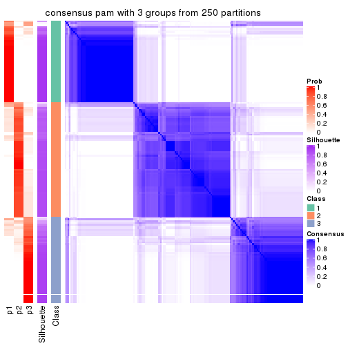
consensus_heatmap(res, k = 4)
consensus_heatmap(res, k = 5)
consensus_heatmap(res, k = 6)
Heatmaps for the membership of samples in all partitions to see how consistent they are:
membership_heatmap(res, k = 2)

membership_heatmap(res, k = 3)
membership_heatmap(res, k = 4)
membership_heatmap(res, k = 5)
membership_heatmap(res, k = 6)
As soon as we have had the classes for columns, we can look for signatures which are significantly different between classes which can be candidate marks for certain classes. Following are the heatmaps for signatures.
Signature heatmaps where rows are scaled:
get_signatures(res, k = 2)
get_signatures(res, k = 3)
get_signatures(res, k = 4)
get_signatures(res, k = 5)
get_signatures(res, k = 6)
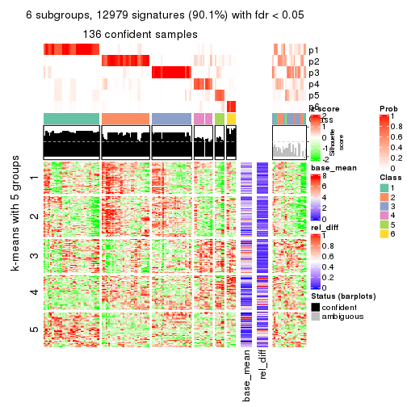
Signature heatmaps where rows are not scaled:
get_signatures(res, k = 2, scale_rows = FALSE)
get_signatures(res, k = 3, scale_rows = FALSE)
get_signatures(res, k = 4, scale_rows = FALSE)
get_signatures(res, k = 5, scale_rows = FALSE)
get_signatures(res, k = 6, scale_rows = FALSE)
Compare the overlap of signatures from different k:
compare_signatures(res)
get_signature() returns a data frame invisibly. TO get the list of signatures, the function
call should be assigned to a variable explicitly. In following code, if plot argument is set
to FALSE, no heatmap is plotted while only the differential analysis is performed.
# code only for demonstration
tb = get_signature(res, k = ..., plot = FALSE)
An example of the output of tb is:
#> which_row fdr mean_1 mean_2 scaled_mean_1 scaled_mean_2 km
#> 1 38 0.042760348 8.373488 9.131774 -0.5533452 0.5164555 1
#> 2 40 0.018707592 7.106213 8.469186 -0.6173731 0.5762149 1
#> 3 55 0.019134737 10.221463 11.207825 -0.6159697 0.5749050 1
#> 4 59 0.006059896 5.921854 7.869574 -0.6899429 0.6439467 1
#> 5 60 0.018055526 8.928898 10.211722 -0.6204761 0.5791110 1
#> 6 98 0.009384629 15.714769 14.887706 0.6635654 -0.6193277 2
...
The columns in tb are:
which_row: row indices corresponding to the input matrix.fdr: FDR for the differential test. mean_x: The mean value in group x.scaled_mean_x: The mean value in group x after rows are scaled.km: Row groups if k-means clustering is applied to rows.UMAP plot which shows how samples are separated.
dimension_reduction(res, k = 2, method = "UMAP")
dimension_reduction(res, k = 3, method = "UMAP")

dimension_reduction(res, k = 4, method = "UMAP")
dimension_reduction(res, k = 5, method = "UMAP")
dimension_reduction(res, k = 6, method = "UMAP")
Following heatmap shows how subgroups are split when increasing k:
collect_classes(res)
If matrix rows can be associated to genes, consider to use GO_Enrichment(res,
...) to perform function enrichment for the signature genes.
The object with results only for a single top-value method and a single partition method can be extracted as:
res = res_list["CV", "mclust"]
# you can also extract it by
# res = res_list["CV:mclust"]
A summary of res and all the functions that can be applied to it:
res
#> A 'ConsensusPartition' object with k = 2, 3, 4, 5, 6.
#> On a matrix with 14410 rows and 160 columns.
#> Top rows (1000, 2000, 3000, 4000, 5000) are extracted by 'CV' method.
#> Subgroups are detected by 'mclust' method.
#> Performed in total 1250 partitions by row resampling.
#> Best k for subgroups seems to be 2.
#>
#> Following methods can be applied to this 'ConsensusPartition' object:
#> [1] "cola_report" "collect_classes" "collect_plots"
#> [4] "collect_stats" "colnames" "compare_signatures"
#> [7] "consensus_heatmap" "dimension_reduction" "functional_enrichment"
#> [10] "get_anno_col" "get_anno" "get_classes"
#> [13] "get_consensus" "get_matrix" "get_membership"
#> [16] "get_param" "get_signatures" "get_stats"
#> [19] "is_best_k" "is_stable_k" "membership_heatmap"
#> [22] "ncol" "nrow" "plot_ecdf"
#> [25] "rownames" "select_partition_number" "show"
#> [28] "suggest_best_k" "test_to_known_factors"
collect_plots() function collects all the plots made from res for all k (number of partitions)
into one single page to provide an easy and fast comparison between different k.
collect_plots(res)
The plots are:
k and the heatmap of
predicted classes for each k.k.k.k.All the plots in panels can be made by individual functions and they are plotted later in this section.
select_partition_number() produces several plots showing different
statistics for choosing “optimized” k. There are following statistics:
k;k, the area increased is defined as \(A_k - A_{k-1}\).The detailed explanations of these statistics can be found in the cola vignette.
Generally speaking, lower PAC score, higher mean silhouette score or higher
concordance corresponds to better partition. Rand index and Jaccard index
measure how similar the current partition is compared to partition with k-1.
If they are too similar, we won't accept k is better than k-1.
select_partition_number(res)
The numeric values for all these statistics can be obtained by get_stats().
get_stats(res)
#> k 1-PAC mean_silhouette concordance area_increased Rand Jaccard
#> 2 2 0.792 0.899 0.943 0.430 0.572 0.572
#> 3 3 0.415 0.571 0.777 0.422 0.770 0.598
#> 4 4 0.552 0.571 0.761 0.189 0.830 0.555
#> 5 5 0.556 0.544 0.675 0.066 0.939 0.785
#> 6 6 0.593 0.442 0.657 0.046 0.858 0.515
suggest_best_k() suggests the best \(k\) based on these statistics. The rules are as follows:
NA.suggest_best_k(res)
#> [1] 2
Following shows the table of the partitions (You need to click the show/hide
code output link to see it). The membership matrix (columns with name p*)
is inferred by
clue::cl_consensus()
function with the SE method. Basically the value in the membership matrix
represents the probability to belong to a certain group. The finall class
label for an item is determined with the group with highest probability it
belongs to.
In get_classes() function, the entropy is calculated from the membership
matrix and the silhouette score is calculated from the consensus matrix.
cbind(get_classes(res, k = 2), get_membership(res, k = 2))
#> class entropy silhouette p1 p2
#> SRR031811 2 0.0000 0.943 0.000 1.000
#> SRR031812 1 0.4161 0.916 0.916 0.084
#> SRR031813 2 0.3114 0.931 0.056 0.944
#> SRR031814 1 0.2603 0.924 0.956 0.044
#> SRR031815 1 0.1633 0.934 0.976 0.024
#> SRR031816 2 0.0376 0.944 0.004 0.996
#> SRR031817 2 0.2948 0.931 0.052 0.948
#> SRR031818 2 0.0376 0.944 0.004 0.996
#> SRR031819 2 0.2948 0.931 0.052 0.948
#> SRR031820 2 0.2948 0.931 0.052 0.948
#> SRR031821 2 0.1184 0.942 0.016 0.984
#> SRR031822 1 0.2778 0.931 0.952 0.048
#> SRR031823 2 0.0938 0.943 0.012 0.988
#> SRR031824 2 0.0938 0.943 0.012 0.988
#> SRR031825 2 0.0938 0.943 0.012 0.988
#> SRR031826 2 0.3114 0.931 0.056 0.944
#> SRR031827 2 0.0376 0.944 0.004 0.996
#> SRR031828 1 0.2603 0.924 0.956 0.044
#> SRR031829 2 0.0000 0.943 0.000 1.000
#> SRR031830 1 0.1633 0.934 0.976 0.024
#> SRR031831 2 0.2948 0.931 0.052 0.948
#> SRR031832 2 0.2948 0.931 0.052 0.948
#> SRR031833 2 0.0000 0.943 0.000 1.000
#> SRR031834 1 0.2778 0.931 0.952 0.048
#> SRR031835 1 0.4161 0.916 0.916 0.084
#> SRR031836 2 0.2948 0.931 0.052 0.948
#> SRR031837 2 0.2948 0.931 0.052 0.948
#> SRR031838 2 0.3114 0.931 0.056 0.944
#> SRR031839 2 0.2043 0.938 0.032 0.968
#> SRR031840 1 0.2603 0.924 0.956 0.044
#> SRR031841 1 0.2423 0.932 0.960 0.040
#> SRR031842 2 0.0376 0.944 0.004 0.996
#> SRR031843 2 0.2948 0.931 0.052 0.948
#> SRR031844 2 0.1414 0.944 0.020 0.980
#> SRR031845 2 0.0000 0.943 0.000 1.000
#> SRR031846 2 0.8443 0.640 0.272 0.728
#> SRR031847 2 0.2948 0.931 0.052 0.948
#> SRR031848 2 0.2948 0.931 0.052 0.948
#> SRR031849 2 0.2948 0.931 0.052 0.948
#> SRR031850 2 0.0376 0.944 0.004 0.996
#> SRR031851 2 0.0376 0.944 0.004 0.996
#> SRR031852 1 0.0000 0.927 1.000 0.000
#> SRR031853 1 0.0672 0.930 0.992 0.008
#> SRR031854 1 0.9491 0.405 0.632 0.368
#> SRR031855 2 0.0376 0.944 0.004 0.996
#> SRR031857 2 0.0000 0.943 0.000 1.000
#> SRR031858 2 0.0938 0.943 0.012 0.988
#> SRR031859 2 0.0376 0.944 0.004 0.996
#> SRR031860 2 0.0938 0.943 0.012 0.988
#> SRR031861 2 0.0672 0.944 0.008 0.992
#> SRR031862 1 0.0000 0.927 1.000 0.000
#> SRR031863 2 0.0376 0.944 0.004 0.996
#> SRR031864 2 0.0376 0.944 0.004 0.996
#> SRR031865 2 0.8267 0.694 0.260 0.740
#> SRR031866 1 0.0000 0.927 1.000 0.000
#> SRR031867 2 0.3274 0.915 0.060 0.940
#> SRR031868 2 0.0672 0.944 0.008 0.992
#> SRR031869 1 0.2043 0.934 0.968 0.032
#> SRR031870 2 0.3431 0.913 0.064 0.936
#> SRR031871 2 0.6438 0.811 0.164 0.836
#> SRR031872 1 0.2423 0.932 0.960 0.040
#> SRR031873 1 0.2603 0.924 0.956 0.044
#> SRR031874 1 0.2603 0.931 0.956 0.044
#> SRR031875 2 0.2948 0.931 0.052 0.948
#> SRR031876 1 0.0000 0.927 1.000 0.000
#> SRR031877 2 0.6623 0.799 0.172 0.828
#> SRR031878 2 0.0000 0.943 0.000 1.000
#> SRR031879 2 0.2948 0.931 0.052 0.948
#> SRR031880 2 0.0938 0.943 0.012 0.988
#> SRR031881 2 0.1184 0.942 0.016 0.984
#> SRR031882 2 0.2236 0.937 0.036 0.964
#> SRR031883 2 0.3114 0.931 0.056 0.944
#> SRR031884 2 0.2948 0.931 0.052 0.948
#> SRR031885 2 0.3114 0.931 0.056 0.944
#> SRR031886 2 0.2948 0.931 0.052 0.948
#> SRR031887 1 0.3274 0.924 0.940 0.060
#> SRR031888 2 0.0376 0.944 0.004 0.996
#> SRR031889 1 0.2603 0.931 0.956 0.044
#> SRR031890 2 0.8555 0.624 0.280 0.720
#> SRR031891 2 0.0000 0.943 0.000 1.000
#> SRR031892 2 0.1184 0.944 0.016 0.984
#> SRR031893 1 0.5629 0.880 0.868 0.132
#> SRR031894 2 0.1184 0.944 0.016 0.984
#> SRR031895 1 0.8763 0.579 0.704 0.296
#> SRR031896 2 0.3114 0.931 0.056 0.944
#> SRR031897 2 0.0376 0.944 0.004 0.996
#> SRR031898 2 0.0672 0.944 0.008 0.992
#> SRR031899 2 0.1843 0.940 0.028 0.972
#> SRR031900 2 0.3114 0.918 0.056 0.944
#> SRR031901 2 0.3114 0.918 0.056 0.944
#> SRR031902 2 0.5737 0.845 0.136 0.864
#> SRR031903 1 0.2603 0.924 0.956 0.044
#> SRR031904 2 0.0376 0.944 0.004 0.996
#> SRR031905 1 0.2423 0.932 0.960 0.040
#> SRR031906 1 0.2043 0.934 0.968 0.032
#> SRR031907 2 0.0672 0.944 0.008 0.992
#> SRR031908 2 0.2948 0.931 0.052 0.948
#> SRR031909 1 0.0000 0.927 1.000 0.000
#> SRR031910 2 0.1843 0.940 0.028 0.972
#> SRR031911 2 0.2948 0.931 0.052 0.948
#> SRR031912 1 0.2603 0.931 0.956 0.044
#> SRR031913 2 0.0376 0.944 0.004 0.996
#> SRR031914 1 0.2603 0.924 0.956 0.044
#> SRR031915 2 0.4690 0.879 0.100 0.900
#> SRR031916 2 0.3584 0.908 0.068 0.932
#> SRR031917 2 0.9323 0.476 0.348 0.652
#> SRR031918 2 0.2948 0.931 0.052 0.948
#> SRR031919 1 0.2043 0.934 0.968 0.032
#> SRR031920 2 0.1843 0.940 0.028 0.972
#> SRR031921 2 0.1184 0.944 0.016 0.984
#> SRR031922 2 0.1633 0.938 0.024 0.976
#> SRR031923 2 0.0672 0.944 0.008 0.992
#> SRR031924 1 0.5629 0.880 0.868 0.132
#> SRR031925 2 0.0000 0.943 0.000 1.000
#> SRR031926 2 0.0376 0.944 0.004 0.996
#> SRR031927 2 0.3114 0.931 0.056 0.944
#> SRR031928 1 0.0000 0.927 1.000 0.000
#> SRR031929 2 0.0376 0.944 0.004 0.996
#> SRR031930 2 0.0376 0.944 0.004 0.996
#> SRR031931 2 0.8207 0.701 0.256 0.744
#> SRR031932 1 0.0000 0.927 1.000 0.000
#> SRR031933 2 0.0938 0.943 0.012 0.988
#> SRR031934 1 0.9580 0.371 0.620 0.380
#> SRR031935 2 0.3733 0.905 0.072 0.928
#> SRR031936 1 0.2603 0.924 0.956 0.044
#> SRR031937 1 0.2043 0.934 0.968 0.032
#> SRR031938 2 0.9286 0.486 0.344 0.656
#> SRR031939 2 0.0376 0.944 0.004 0.996
#> SRR031940 1 0.0000 0.927 1.000 0.000
#> SRR031941 2 0.2043 0.942 0.032 0.968
#> SRR031942 2 0.6712 0.794 0.176 0.824
#> SRR031943 2 0.2043 0.938 0.032 0.968
#> SRR031944 2 0.8386 0.652 0.268 0.732
#> SRR031945 2 0.5737 0.846 0.136 0.864
#> SRR031946 2 0.2948 0.931 0.052 0.948
#> SRR031947 2 0.4690 0.879 0.100 0.900
#> SRR031948 1 0.2043 0.934 0.968 0.032
#> SRR031949 1 0.0000 0.927 1.000 0.000
#> SRR031950 2 0.0376 0.944 0.004 0.996
#> SRR031951 2 0.0000 0.943 0.000 1.000
#> SRR031952 1 0.6048 0.860 0.852 0.148
#> SRR031953 1 0.2603 0.924 0.956 0.044
#> SRR031954 2 0.6148 0.828 0.152 0.848
#> SRR031955 2 0.8499 0.636 0.276 0.724
#> SRR031956 2 0.0672 0.944 0.008 0.992
#> SRR031957 2 0.0376 0.944 0.004 0.996
#> SRR031958 2 0.0000 0.943 0.000 1.000
#> SRR031959 2 0.2236 0.941 0.036 0.964
#> SRR031960 2 0.0000 0.943 0.000 1.000
#> SRR031961 1 0.2043 0.934 0.968 0.032
#> SRR031962 1 0.2603 0.924 0.956 0.044
#> SRR031963 2 0.0000 0.943 0.000 1.000
#> SRR031964 1 0.4939 0.900 0.892 0.108
#> SRR031965 2 0.0376 0.944 0.004 0.996
#> SRR031966 2 0.0376 0.944 0.004 0.996
#> SRR031967 1 0.0000 0.927 1.000 0.000
#> SRR031968 1 0.1184 0.932 0.984 0.016
#> SRR031969 1 0.9850 0.214 0.572 0.428
#> SRR031970 2 0.0376 0.944 0.004 0.996
#> SRR031971 1 0.2603 0.931 0.956 0.044
cbind(get_classes(res, k = 3), get_membership(res, k = 3))
#> class entropy silhouette p1 p2 p3
#> SRR031811 3 0.6154 0.1854 0.000 0.408 0.592
#> SRR031812 1 0.5241 0.8407 0.820 0.132 0.048
#> SRR031813 3 0.6625 0.4864 0.024 0.316 0.660
#> SRR031814 1 0.2550 0.8832 0.932 0.056 0.012
#> SRR031815 1 0.0892 0.8893 0.980 0.000 0.020
#> SRR031816 2 0.5882 0.4590 0.000 0.652 0.348
#> SRR031817 3 0.1337 0.6568 0.012 0.016 0.972
#> SRR031818 2 0.6309 0.1440 0.000 0.500 0.500
#> SRR031819 3 0.1751 0.6465 0.028 0.012 0.960
#> SRR031820 3 0.1337 0.6568 0.012 0.016 0.972
#> SRR031821 2 0.5244 0.5938 0.004 0.756 0.240
#> SRR031822 1 0.4194 0.8793 0.876 0.060 0.064
#> SRR031823 2 0.6180 0.3894 0.000 0.584 0.416
#> SRR031824 2 0.3851 0.6228 0.004 0.860 0.136
#> SRR031825 2 0.5845 0.4752 0.004 0.688 0.308
#> SRR031826 3 0.6473 0.4962 0.020 0.312 0.668
#> SRR031827 2 0.6008 0.4344 0.000 0.628 0.372
#> SRR031828 1 0.2550 0.8832 0.932 0.056 0.012
#> SRR031829 3 0.6291 -0.0368 0.000 0.468 0.532
#> SRR031830 1 0.0892 0.8893 0.980 0.000 0.020
#> SRR031831 3 0.1337 0.6568 0.012 0.016 0.972
#> SRR031832 3 0.1182 0.6558 0.012 0.012 0.976
#> SRR031833 2 0.6309 0.1440 0.000 0.500 0.500
#> SRR031834 1 0.4194 0.8785 0.876 0.060 0.064
#> SRR031835 1 0.5538 0.8319 0.808 0.132 0.060
#> SRR031836 3 0.3715 0.6827 0.004 0.128 0.868
#> SRR031837 3 0.3826 0.6838 0.008 0.124 0.868
#> SRR031838 3 0.6570 0.4975 0.024 0.308 0.668
#> SRR031839 3 0.4452 0.6353 0.000 0.192 0.808
#> SRR031840 1 0.2550 0.8832 0.932 0.056 0.012
#> SRR031841 1 0.3472 0.8839 0.904 0.040 0.056
#> SRR031842 2 0.5588 0.4910 0.004 0.720 0.276
#> SRR031843 3 0.1337 0.6542 0.016 0.012 0.972
#> SRR031844 3 0.6111 0.1119 0.000 0.396 0.604
#> SRR031845 2 0.4974 0.5925 0.000 0.764 0.236
#> SRR031846 2 0.8600 0.4458 0.212 0.604 0.184
#> SRR031847 3 0.1182 0.6558 0.012 0.012 0.976
#> SRR031848 3 0.3715 0.6827 0.004 0.128 0.868
#> SRR031849 3 0.1337 0.6542 0.016 0.012 0.972
#> SRR031850 2 0.2261 0.5931 0.000 0.932 0.068
#> SRR031851 2 0.2261 0.5931 0.000 0.932 0.068
#> SRR031852 1 0.0237 0.8847 0.996 0.000 0.004
#> SRR031853 1 0.0592 0.8876 0.988 0.000 0.012
#> SRR031854 1 0.7888 0.5848 0.664 0.196 0.140
#> SRR031855 2 0.6008 0.3804 0.000 0.628 0.372
#> SRR031857 2 0.3116 0.6181 0.000 0.892 0.108
#> SRR031858 2 0.4233 0.6309 0.004 0.836 0.160
#> SRR031859 2 0.3193 0.6159 0.004 0.896 0.100
#> SRR031860 2 0.3851 0.6220 0.004 0.860 0.136
#> SRR031861 2 0.5690 0.5025 0.004 0.708 0.288
#> SRR031862 1 0.0237 0.8847 0.996 0.000 0.004
#> SRR031863 2 0.2448 0.6040 0.000 0.924 0.076
#> SRR031864 2 0.2261 0.5931 0.000 0.932 0.068
#> SRR031865 2 0.9936 -0.0352 0.284 0.380 0.336
#> SRR031866 1 0.0424 0.8850 0.992 0.000 0.008
#> SRR031867 2 0.6307 0.1898 0.000 0.512 0.488
#> SRR031868 3 0.6307 -0.1491 0.000 0.488 0.512
#> SRR031869 1 0.3213 0.8897 0.912 0.060 0.028
#> SRR031870 2 0.6235 0.3281 0.000 0.564 0.436
#> SRR031871 2 0.3832 0.6182 0.020 0.880 0.100
#> SRR031872 1 0.4146 0.8686 0.876 0.044 0.080
#> SRR031873 1 0.2651 0.8827 0.928 0.060 0.012
#> SRR031874 1 0.5260 0.8417 0.828 0.080 0.092
#> SRR031875 3 0.3644 0.6836 0.004 0.124 0.872
#> SRR031876 1 0.0237 0.8847 0.996 0.000 0.004
#> SRR031877 2 0.5958 0.5469 0.008 0.692 0.300
#> SRR031878 2 0.2537 0.6062 0.000 0.920 0.080
#> SRR031879 3 0.1751 0.6465 0.028 0.012 0.960
#> SRR031880 2 0.6154 0.4042 0.000 0.592 0.408
#> SRR031881 2 0.4978 0.6104 0.004 0.780 0.216
#> SRR031882 3 0.4235 0.6503 0.000 0.176 0.824
#> SRR031883 3 0.1337 0.6568 0.012 0.016 0.972
#> SRR031884 3 0.1482 0.6523 0.020 0.012 0.968
#> SRR031885 3 0.6294 0.5286 0.020 0.288 0.692
#> SRR031886 3 0.3989 0.6834 0.012 0.124 0.864
#> SRR031887 1 0.3237 0.8838 0.912 0.056 0.032
#> SRR031888 2 0.5859 0.4603 0.000 0.656 0.344
#> SRR031889 1 0.3791 0.8793 0.892 0.048 0.060
#> SRR031890 2 0.8813 0.4170 0.236 0.580 0.184
#> SRR031891 2 0.5254 0.5705 0.000 0.736 0.264
#> SRR031892 3 0.6299 -0.1775 0.000 0.476 0.524
#> SRR031893 1 0.7953 0.3692 0.564 0.368 0.068
#> SRR031894 2 0.6308 0.0628 0.000 0.508 0.492
#> SRR031895 1 0.7984 0.5677 0.652 0.216 0.132
#> SRR031896 3 0.6294 0.5286 0.020 0.288 0.692
#> SRR031897 2 0.2356 0.5957 0.000 0.928 0.072
#> SRR031898 2 0.3272 0.6250 0.004 0.892 0.104
#> SRR031899 3 0.4974 0.6043 0.000 0.236 0.764
#> SRR031900 3 0.6309 -0.1813 0.000 0.500 0.500
#> SRR031901 2 0.6244 0.3180 0.000 0.560 0.440
#> SRR031902 2 0.3987 0.6191 0.020 0.872 0.108
#> SRR031903 1 0.2651 0.8827 0.928 0.060 0.012
#> SRR031904 3 0.6305 -0.1431 0.000 0.484 0.516
#> SRR031905 1 0.3967 0.8731 0.884 0.044 0.072
#> SRR031906 1 0.3213 0.8897 0.912 0.060 0.028
#> SRR031907 2 0.5650 0.5469 0.000 0.688 0.312
#> SRR031908 3 0.1337 0.6542 0.016 0.012 0.972
#> SRR031909 1 0.0237 0.8847 0.996 0.000 0.004
#> SRR031910 3 0.4974 0.6043 0.000 0.236 0.764
#> SRR031911 3 0.3482 0.6828 0.000 0.128 0.872
#> SRR031912 1 0.5260 0.8417 0.828 0.080 0.092
#> SRR031913 2 0.2448 0.6040 0.000 0.924 0.076
#> SRR031914 1 0.2550 0.8832 0.932 0.056 0.012
#> SRR031915 2 0.6295 0.2661 0.000 0.528 0.472
#> SRR031916 2 0.6299 0.2630 0.000 0.524 0.476
#> SRR031917 2 0.8930 0.3377 0.316 0.536 0.148
#> SRR031918 3 0.3989 0.6833 0.012 0.124 0.864
#> SRR031919 1 0.2926 0.8885 0.924 0.036 0.040
#> SRR031920 3 0.4974 0.6043 0.000 0.236 0.764
#> SRR031921 3 0.6140 0.1799 0.000 0.404 0.596
#> SRR031922 2 0.5656 0.5483 0.004 0.712 0.284
#> SRR031923 2 0.3500 0.6240 0.004 0.880 0.116
#> SRR031924 1 0.7968 0.3578 0.560 0.372 0.068
#> SRR031925 2 0.4504 0.6107 0.000 0.804 0.196
#> SRR031926 2 0.2165 0.6018 0.000 0.936 0.064
#> SRR031927 3 0.4679 0.6737 0.020 0.148 0.832
#> SRR031928 1 0.0237 0.8847 0.996 0.000 0.004
#> SRR031929 2 0.2165 0.5999 0.000 0.936 0.064
#> SRR031930 2 0.2261 0.5931 0.000 0.932 0.068
#> SRR031931 2 0.9926 -0.0204 0.284 0.388 0.328
#> SRR031932 1 0.0424 0.8850 0.992 0.000 0.008
#> SRR031933 2 0.3500 0.6261 0.004 0.880 0.116
#> SRR031934 1 0.7902 0.5799 0.660 0.208 0.132
#> SRR031935 2 0.6302 0.2522 0.000 0.520 0.480
#> SRR031936 1 0.2550 0.8832 0.932 0.056 0.012
#> SRR031937 1 0.2926 0.8885 0.924 0.036 0.040
#> SRR031938 2 0.8825 0.3637 0.296 0.556 0.148
#> SRR031939 2 0.6204 0.3027 0.000 0.576 0.424
#> SRR031940 1 0.0237 0.8847 0.996 0.000 0.004
#> SRR031941 2 0.7001 0.4464 0.032 0.628 0.340
#> SRR031942 2 0.6762 0.5432 0.036 0.676 0.288
#> SRR031943 3 0.4931 0.6094 0.000 0.232 0.768
#> SRR031944 2 0.8296 0.3178 0.080 0.508 0.412
#> SRR031945 2 0.6513 0.2443 0.004 0.520 0.476
#> SRR031946 3 0.4128 0.6809 0.012 0.132 0.856
#> SRR031947 2 0.6299 0.2555 0.000 0.524 0.476
#> SRR031948 1 0.2689 0.8893 0.932 0.032 0.036
#> SRR031949 1 0.0237 0.8847 0.996 0.000 0.004
#> SRR031950 2 0.2066 0.5963 0.000 0.940 0.060
#> SRR031951 2 0.3116 0.6181 0.000 0.892 0.108
#> SRR031952 1 0.7169 0.7108 0.704 0.208 0.088
#> SRR031953 1 0.2550 0.8832 0.932 0.056 0.012
#> SRR031954 2 0.6513 0.2443 0.004 0.520 0.476
#> SRR031955 2 0.8355 0.3213 0.084 0.508 0.408
#> SRR031956 2 0.5678 0.5437 0.000 0.684 0.316
#> SRR031957 3 0.6280 -0.0816 0.000 0.460 0.540
#> SRR031958 3 0.6305 -0.1297 0.000 0.484 0.516
#> SRR031959 2 0.7023 0.4459 0.032 0.624 0.344
#> SRR031960 3 0.6280 -0.0452 0.000 0.460 0.540
#> SRR031961 1 0.3042 0.8877 0.920 0.040 0.040
#> SRR031962 1 0.2550 0.8832 0.932 0.056 0.012
#> SRR031963 2 0.4504 0.6122 0.000 0.804 0.196
#> SRR031964 1 0.6595 0.7673 0.744 0.180 0.076
#> SRR031965 2 0.2261 0.5931 0.000 0.932 0.068
#> SRR031966 2 0.2711 0.5984 0.000 0.912 0.088
#> SRR031967 1 0.0237 0.8847 0.996 0.000 0.004
#> SRR031968 1 0.0747 0.8886 0.984 0.000 0.016
#> SRR031969 1 0.9059 0.2036 0.480 0.380 0.140
#> SRR031970 2 0.6126 0.4121 0.004 0.644 0.352
#> SRR031971 1 0.3267 0.8872 0.912 0.044 0.044
cbind(get_classes(res, k = 4), get_membership(res, k = 4))
#> class entropy silhouette p1 p2 p3 p4
#> SRR031811 4 0.6873 0.2363 0.000 0.252 0.160 0.588
#> SRR031812 1 0.6177 0.7702 0.712 0.116 0.020 0.152
#> SRR031813 2 0.4399 0.5138 0.000 0.760 0.224 0.016
#> SRR031814 1 0.3176 0.8825 0.880 0.036 0.000 0.084
#> SRR031815 1 0.0188 0.9002 0.996 0.000 0.000 0.004
#> SRR031816 2 0.6245 0.4344 0.000 0.636 0.096 0.268
#> SRR031817 3 0.0469 0.7750 0.000 0.000 0.988 0.012
#> SRR031818 3 0.7733 -0.2423 0.000 0.232 0.412 0.356
#> SRR031819 3 0.0336 0.7781 0.000 0.000 0.992 0.008
#> SRR031820 3 0.0000 0.7800 0.000 0.000 1.000 0.000
#> SRR031821 4 0.5465 -0.1332 0.000 0.392 0.020 0.588
#> SRR031822 1 0.2207 0.8965 0.928 0.012 0.004 0.056
#> SRR031823 4 0.4388 0.4663 0.000 0.132 0.060 0.808
#> SRR031824 2 0.3937 0.6007 0.000 0.800 0.012 0.188
#> SRR031825 2 0.5830 0.4117 0.000 0.620 0.048 0.332
#> SRR031826 2 0.4399 0.5138 0.000 0.760 0.224 0.016
#> SRR031827 2 0.6538 0.3756 0.000 0.600 0.108 0.292
#> SRR031828 1 0.3266 0.8819 0.876 0.040 0.000 0.084
#> SRR031829 4 0.7149 0.0830 0.000 0.316 0.156 0.528
#> SRR031830 1 0.0188 0.9002 0.996 0.000 0.000 0.004
#> SRR031831 3 0.0336 0.7770 0.000 0.000 0.992 0.008
#> SRR031832 3 0.0000 0.7800 0.000 0.000 1.000 0.000
#> SRR031833 4 0.7115 0.2673 0.000 0.128 0.420 0.452
#> SRR031834 1 0.2125 0.8966 0.932 0.012 0.004 0.052
#> SRR031835 1 0.6221 0.7661 0.708 0.116 0.020 0.156
#> SRR031836 3 0.2928 0.7659 0.000 0.052 0.896 0.052
#> SRR031837 3 0.1388 0.7769 0.000 0.028 0.960 0.012
#> SRR031838 2 0.4594 0.4740 0.000 0.712 0.280 0.008
#> SRR031839 3 0.4094 0.6843 0.000 0.056 0.828 0.116
#> SRR031840 1 0.3176 0.8827 0.880 0.036 0.000 0.084
#> SRR031841 1 0.1640 0.8982 0.956 0.012 0.012 0.020
#> SRR031842 2 0.3216 0.6302 0.000 0.880 0.044 0.076
#> SRR031843 3 0.0000 0.7800 0.000 0.000 1.000 0.000
#> SRR031844 4 0.6134 0.2117 0.000 0.048 0.444 0.508
#> SRR031845 4 0.5263 -0.1611 0.000 0.448 0.008 0.544
#> SRR031846 4 0.6465 0.3417 0.284 0.056 0.024 0.636
#> SRR031847 3 0.0000 0.7800 0.000 0.000 1.000 0.000
#> SRR031848 3 0.3009 0.7641 0.000 0.052 0.892 0.056
#> SRR031849 3 0.0000 0.7800 0.000 0.000 1.000 0.000
#> SRR031850 2 0.2334 0.6375 0.000 0.908 0.004 0.088
#> SRR031851 2 0.2334 0.6375 0.000 0.908 0.004 0.088
#> SRR031852 1 0.0524 0.8997 0.988 0.004 0.000 0.008
#> SRR031853 1 0.0188 0.8999 0.996 0.000 0.000 0.004
#> SRR031854 1 0.5456 0.7880 0.768 0.112 0.100 0.020
#> SRR031855 2 0.5035 0.5731 0.000 0.744 0.052 0.204
#> SRR031857 2 0.5105 0.3768 0.000 0.564 0.004 0.432
#> SRR031858 4 0.5463 0.2456 0.000 0.256 0.052 0.692
#> SRR031859 2 0.3978 0.6006 0.000 0.796 0.012 0.192
#> SRR031860 2 0.4160 0.5989 0.004 0.792 0.012 0.192
#> SRR031861 2 0.5599 0.4499 0.000 0.644 0.040 0.316
#> SRR031862 1 0.0524 0.8997 0.988 0.004 0.000 0.008
#> SRR031863 2 0.5088 0.3807 0.000 0.572 0.004 0.424
#> SRR031864 2 0.2149 0.6381 0.000 0.912 0.000 0.088
#> SRR031865 2 0.5075 0.5226 0.100 0.776 0.120 0.004
#> SRR031866 1 0.0524 0.8997 0.988 0.004 0.000 0.008
#> SRR031867 4 0.6426 0.3808 0.000 0.080 0.352 0.568
#> SRR031868 3 0.7863 -0.2555 0.000 0.300 0.396 0.304
#> SRR031869 1 0.2040 0.8989 0.936 0.012 0.004 0.048
#> SRR031870 4 0.5165 0.5437 0.000 0.080 0.168 0.752
#> SRR031871 2 0.5208 0.5689 0.020 0.712 0.012 0.256
#> SRR031872 1 0.4083 0.8383 0.832 0.100 0.068 0.000
#> SRR031873 1 0.3266 0.8813 0.876 0.040 0.000 0.084
#> SRR031874 1 0.2284 0.8944 0.932 0.012 0.020 0.036
#> SRR031875 3 0.2500 0.7721 0.000 0.040 0.916 0.044
#> SRR031876 1 0.0524 0.8997 0.988 0.004 0.000 0.008
#> SRR031877 4 0.4570 0.5327 0.008 0.064 0.116 0.812
#> SRR031878 2 0.5088 0.3807 0.000 0.572 0.004 0.424
#> SRR031879 3 0.0336 0.7781 0.000 0.000 0.992 0.008
#> SRR031880 4 0.4312 0.4648 0.000 0.132 0.056 0.812
#> SRR031881 4 0.5543 -0.2198 0.000 0.424 0.020 0.556
#> SRR031882 3 0.3958 0.6905 0.000 0.052 0.836 0.112
#> SRR031883 3 0.0000 0.7800 0.000 0.000 1.000 0.000
#> SRR031884 3 0.0000 0.7800 0.000 0.000 1.000 0.000
#> SRR031885 2 0.5236 0.2189 0.000 0.560 0.432 0.008
#> SRR031886 3 0.1929 0.7745 0.000 0.036 0.940 0.024
#> SRR031887 1 0.3013 0.8844 0.888 0.032 0.000 0.080
#> SRR031888 4 0.7081 -0.0936 0.000 0.388 0.128 0.484
#> SRR031889 1 0.2049 0.8952 0.940 0.012 0.012 0.036
#> SRR031890 4 0.6594 0.3031 0.308 0.056 0.024 0.612
#> SRR031891 4 0.5203 -0.0692 0.000 0.416 0.008 0.576
#> SRR031892 4 0.6400 0.2976 0.000 0.068 0.408 0.524
#> SRR031893 1 0.6411 0.4519 0.584 0.040 0.020 0.356
#> SRR031894 2 0.6382 0.3594 0.000 0.580 0.080 0.340
#> SRR031895 1 0.6315 0.5845 0.652 0.244 0.100 0.004
#> SRR031896 2 0.5229 0.2281 0.000 0.564 0.428 0.008
#> SRR031897 2 0.2654 0.6340 0.000 0.888 0.004 0.108
#> SRR031898 2 0.4098 0.6053 0.000 0.784 0.012 0.204
#> SRR031899 3 0.6499 0.4243 0.000 0.112 0.612 0.276
#> SRR031900 4 0.6554 0.3453 0.000 0.084 0.376 0.540
#> SRR031901 4 0.5628 0.5175 0.000 0.080 0.216 0.704
#> SRR031902 2 0.5072 0.5673 0.016 0.720 0.012 0.252
#> SRR031903 1 0.3266 0.8813 0.876 0.040 0.000 0.084
#> SRR031904 4 0.7546 0.2909 0.000 0.188 0.404 0.408
#> SRR031905 1 0.4083 0.8383 0.832 0.100 0.068 0.000
#> SRR031906 1 0.2125 0.8978 0.932 0.012 0.004 0.052
#> SRR031907 4 0.4746 0.4280 0.000 0.168 0.056 0.776
#> SRR031908 3 0.0188 0.7789 0.000 0.000 0.996 0.004
#> SRR031909 1 0.0524 0.8997 0.988 0.004 0.000 0.008
#> SRR031910 3 0.6495 0.4108 0.000 0.108 0.608 0.284
#> SRR031911 3 0.2578 0.7694 0.000 0.036 0.912 0.052
#> SRR031912 1 0.2284 0.8944 0.932 0.012 0.020 0.036
#> SRR031913 2 0.5088 0.3807 0.000 0.572 0.004 0.424
#> SRR031914 1 0.3354 0.8806 0.872 0.044 0.000 0.084
#> SRR031915 4 0.5883 0.3237 0.000 0.040 0.388 0.572
#> SRR031916 4 0.6130 0.3210 0.000 0.052 0.400 0.548
#> SRR031917 4 0.7351 0.3075 0.208 0.156 0.028 0.608
#> SRR031918 3 0.2759 0.7643 0.000 0.052 0.904 0.044
#> SRR031919 1 0.1917 0.8958 0.944 0.012 0.008 0.036
#> SRR031920 3 0.6450 0.4308 0.000 0.108 0.616 0.276
#> SRR031921 3 0.5985 0.1373 0.000 0.052 0.596 0.352
#> SRR031922 4 0.4127 0.4650 0.000 0.124 0.052 0.824
#> SRR031923 2 0.4212 0.5818 0.000 0.772 0.012 0.216
#> SRR031924 1 0.6166 0.4516 0.584 0.036 0.012 0.368
#> SRR031925 2 0.5126 0.3661 0.000 0.552 0.004 0.444
#> SRR031926 2 0.5105 0.3768 0.000 0.564 0.004 0.432
#> SRR031927 3 0.4360 0.5604 0.000 0.248 0.744 0.008
#> SRR031928 1 0.0524 0.8997 0.988 0.004 0.000 0.008
#> SRR031929 2 0.5088 0.3807 0.000 0.572 0.004 0.424
#> SRR031930 2 0.2149 0.6381 0.000 0.912 0.000 0.088
#> SRR031931 2 0.5024 0.5235 0.104 0.780 0.112 0.004
#> SRR031932 1 0.0524 0.8997 0.988 0.004 0.000 0.008
#> SRR031933 2 0.4019 0.6060 0.000 0.792 0.012 0.196
#> SRR031934 1 0.5181 0.7802 0.768 0.128 0.100 0.004
#> SRR031935 4 0.6130 0.3210 0.000 0.052 0.400 0.548
#> SRR031936 1 0.3354 0.8806 0.872 0.044 0.000 0.084
#> SRR031937 1 0.1917 0.8958 0.944 0.012 0.008 0.036
#> SRR031938 4 0.7390 0.3008 0.208 0.160 0.028 0.604
#> SRR031939 2 0.5327 0.5515 0.000 0.720 0.060 0.220
#> SRR031940 1 0.0524 0.8997 0.988 0.004 0.000 0.008
#> SRR031941 4 0.5654 0.2877 0.012 0.224 0.052 0.712
#> SRR031942 4 0.5111 0.5453 0.012 0.064 0.148 0.776
#> SRR031943 3 0.6262 0.4445 0.000 0.092 0.628 0.280
#> SRR031944 4 0.6097 0.3127 0.012 0.032 0.372 0.584
#> SRR031945 4 0.5816 0.3056 0.000 0.036 0.392 0.572
#> SRR031946 3 0.3320 0.7477 0.000 0.056 0.876 0.068
#> SRR031947 4 0.5883 0.3237 0.000 0.040 0.388 0.572
#> SRR031948 1 0.2376 0.8964 0.928 0.020 0.012 0.040
#> SRR031949 1 0.0524 0.8997 0.988 0.004 0.000 0.008
#> SRR031950 2 0.5088 0.3807 0.000 0.572 0.004 0.424
#> SRR031951 2 0.5105 0.3768 0.000 0.564 0.004 0.432
#> SRR031952 1 0.6203 0.7587 0.712 0.160 0.024 0.104
#> SRR031953 1 0.3266 0.8819 0.876 0.040 0.000 0.084
#> SRR031954 4 0.5816 0.3056 0.000 0.036 0.392 0.572
#> SRR031955 4 0.6166 0.3251 0.012 0.036 0.368 0.584
#> SRR031956 4 0.4364 0.4603 0.000 0.136 0.056 0.808
#> SRR031957 3 0.7692 -0.1576 0.000 0.268 0.456 0.276
#> SRR031958 4 0.7598 0.3968 0.000 0.240 0.284 0.476
#> SRR031959 4 0.5516 0.3132 0.012 0.200 0.056 0.732
#> SRR031960 4 0.7495 0.3395 0.000 0.192 0.340 0.468
#> SRR031961 1 0.2141 0.8958 0.936 0.012 0.012 0.040
#> SRR031962 1 0.3354 0.8806 0.872 0.044 0.000 0.084
#> SRR031963 2 0.5257 0.3644 0.000 0.548 0.008 0.444
#> SRR031964 1 0.6147 0.7634 0.716 0.160 0.024 0.100
#> SRR031965 2 0.2334 0.6375 0.000 0.908 0.004 0.088
#> SRR031966 2 0.2334 0.6375 0.000 0.908 0.004 0.088
#> SRR031967 1 0.0524 0.8997 0.988 0.004 0.000 0.008
#> SRR031968 1 0.0000 0.8996 1.000 0.000 0.000 0.000
#> SRR031969 2 0.6759 0.3622 0.296 0.608 0.076 0.020
#> SRR031970 2 0.4517 0.6112 0.004 0.792 0.036 0.168
#> SRR031971 1 0.4191 0.8568 0.848 0.068 0.060 0.024
cbind(get_classes(res, k = 5), get_membership(res, k = 5))
#> class entropy silhouette p1 p2 p3 p4 p5
#> SRR031811 3 0.8588 -0.2828 0.000 0.216 0.272 0.268 NA
#> SRR031812 1 0.7399 0.5480 0.544 0.160 0.004 0.096 NA
#> SRR031813 2 0.7010 0.3883 0.008 0.504 0.108 0.044 NA
#> SRR031814 1 0.4223 0.7530 0.724 0.000 0.000 0.028 NA
#> SRR031815 1 0.1195 0.7846 0.960 0.000 0.000 0.012 NA
#> SRR031816 2 0.7808 0.2678 0.000 0.484 0.148 0.192 NA
#> SRR031817 3 0.0000 0.8130 0.000 0.000 1.000 0.000 NA
#> SRR031818 4 0.6905 0.4225 0.000 0.172 0.328 0.476 NA
#> SRR031819 3 0.1557 0.8002 0.000 0.000 0.940 0.052 NA
#> SRR031820 3 0.1251 0.8123 0.000 0.000 0.956 0.036 NA
#> SRR031821 2 0.6455 0.3536 0.000 0.528 0.004 0.228 NA
#> SRR031822 1 0.2793 0.7702 0.876 0.000 0.000 0.036 NA
#> SRR031823 4 0.5706 0.5240 0.000 0.092 0.024 0.660 NA
#> SRR031824 2 0.4970 0.4935 0.008 0.728 0.000 0.156 NA
#> SRR031825 2 0.6524 0.0812 0.000 0.452 0.048 0.432 NA
#> SRR031826 2 0.7010 0.3883 0.008 0.504 0.108 0.044 NA
#> SRR031827 2 0.7983 0.2063 0.000 0.456 0.168 0.204 NA
#> SRR031828 1 0.4223 0.7530 0.724 0.000 0.000 0.028 NA
#> SRR031829 2 0.8608 -0.0692 0.000 0.260 0.236 0.260 NA
#> SRR031830 1 0.1444 0.7840 0.948 0.000 0.000 0.012 NA
#> SRR031831 3 0.0000 0.8130 0.000 0.000 1.000 0.000 NA
#> SRR031832 3 0.0794 0.8165 0.000 0.000 0.972 0.028 NA
#> SRR031833 4 0.6364 0.4537 0.000 0.120 0.336 0.528 NA
#> SRR031834 1 0.2946 0.7682 0.868 0.000 0.000 0.044 NA
#> SRR031835 1 0.7557 0.5214 0.528 0.168 0.004 0.108 NA
#> SRR031836 3 0.1168 0.8131 0.000 0.008 0.960 0.032 NA
#> SRR031837 3 0.0613 0.8153 0.000 0.008 0.984 0.004 NA
#> SRR031838 2 0.7498 0.3364 0.008 0.444 0.188 0.040 NA
#> SRR031839 3 0.3602 0.7363 0.000 0.036 0.840 0.104 NA
#> SRR031840 1 0.4086 0.7577 0.736 0.000 0.000 0.024 NA
#> SRR031841 1 0.1981 0.7743 0.924 0.000 0.000 0.028 NA
#> SRR031842 2 0.4799 0.5103 0.000 0.760 0.020 0.112 NA
#> SRR031843 3 0.0880 0.8158 0.000 0.000 0.968 0.032 NA
#> SRR031844 4 0.4469 0.6010 0.000 0.076 0.120 0.784 NA
#> SRR031845 2 0.5880 0.3811 0.000 0.600 0.000 0.172 NA
#> SRR031846 4 0.7555 0.3613 0.208 0.168 0.008 0.528 NA
#> SRR031847 3 0.0609 0.8171 0.000 0.000 0.980 0.020 NA
#> SRR031848 3 0.1168 0.8131 0.000 0.008 0.960 0.032 NA
#> SRR031849 3 0.0510 0.8167 0.000 0.000 0.984 0.016 NA
#> SRR031850 2 0.1282 0.5549 0.000 0.952 0.000 0.004 NA
#> SRR031851 2 0.0955 0.5556 0.000 0.968 0.000 0.004 NA
#> SRR031852 1 0.3013 0.7782 0.832 0.000 0.000 0.008 NA
#> SRR031853 1 0.1408 0.7847 0.948 0.000 0.000 0.008 NA
#> SRR031854 1 0.5583 0.6187 0.616 0.092 0.000 0.004 NA
#> SRR031855 2 0.6588 0.4268 0.000 0.588 0.036 0.192 NA
#> SRR031857 2 0.4905 0.4627 0.000 0.696 0.000 0.080 NA
#> SRR031858 4 0.6910 0.2061 0.000 0.268 0.016 0.480 NA
#> SRR031859 2 0.4779 0.4968 0.008 0.740 0.000 0.168 NA
#> SRR031860 2 0.4970 0.4940 0.008 0.728 0.000 0.156 NA
#> SRR031861 2 0.6532 0.1366 0.000 0.464 0.032 0.412 NA
#> SRR031862 1 0.2971 0.7777 0.836 0.000 0.000 0.008 NA
#> SRR031863 2 0.4428 0.4772 0.000 0.700 0.000 0.032 NA
#> SRR031864 2 0.1990 0.5548 0.000 0.920 0.004 0.008 NA
#> SRR031865 2 0.7246 0.3420 0.096 0.428 0.072 0.004 NA
#> SRR031866 1 0.2843 0.7800 0.848 0.000 0.000 0.008 NA
#> SRR031867 4 0.5856 0.5631 0.000 0.068 0.276 0.624 NA
#> SRR031868 2 0.8100 -0.2069 0.000 0.320 0.284 0.304 NA
#> SRR031869 1 0.2450 0.7743 0.896 0.000 0.000 0.028 NA
#> SRR031870 4 0.6135 0.5816 0.000 0.068 0.088 0.656 NA
#> SRR031871 2 0.5038 0.4912 0.040 0.736 0.000 0.172 NA
#> SRR031872 1 0.4839 0.6694 0.668 0.040 0.000 0.004 NA
#> SRR031873 1 0.4141 0.7560 0.736 0.000 0.000 0.028 NA
#> SRR031874 1 0.5440 0.5613 0.612 0.000 0.000 0.300 NA
#> SRR031875 3 0.0898 0.8163 0.000 0.008 0.972 0.020 NA
#> SRR031876 1 0.2997 0.7797 0.840 0.000 0.000 0.012 NA
#> SRR031877 4 0.3186 0.5589 0.012 0.060 0.020 0.880 NA
#> SRR031878 2 0.4879 0.4640 0.000 0.696 0.000 0.076 NA
#> SRR031879 3 0.1557 0.8002 0.000 0.000 0.940 0.052 NA
#> SRR031880 4 0.5622 0.5236 0.000 0.092 0.020 0.664 NA
#> SRR031881 2 0.6580 0.3629 0.004 0.528 0.004 0.224 NA
#> SRR031882 3 0.3222 0.7459 0.000 0.028 0.864 0.088 NA
#> SRR031883 3 0.1469 0.8099 0.000 0.000 0.948 0.036 NA
#> SRR031884 3 0.0880 0.8158 0.000 0.000 0.968 0.032 NA
#> SRR031885 2 0.7745 0.1500 0.004 0.356 0.324 0.044 NA
#> SRR031886 3 0.0579 0.8161 0.000 0.008 0.984 0.008 NA
#> SRR031887 1 0.3606 0.7604 0.808 0.004 0.000 0.024 NA
#> SRR031888 2 0.8486 0.1078 0.000 0.332 0.208 0.204 NA
#> SRR031889 1 0.2376 0.7696 0.904 0.000 0.000 0.044 NA
#> SRR031890 4 0.7400 0.3475 0.220 0.172 0.004 0.528 NA
#> SRR031891 2 0.6131 0.3263 0.000 0.564 0.000 0.208 NA
#> SRR031892 4 0.5857 0.5219 0.000 0.076 0.304 0.600 NA
#> SRR031893 1 0.7189 0.4014 0.516 0.056 0.008 0.300 NA
#> SRR031894 2 0.7414 0.2528 0.000 0.476 0.076 0.300 NA
#> SRR031895 1 0.6314 0.5575 0.560 0.120 0.012 0.004 NA
#> SRR031896 2 0.7674 0.2434 0.004 0.404 0.276 0.044 NA
#> SRR031897 2 0.1704 0.5529 0.000 0.928 0.000 0.004 NA
#> SRR031898 2 0.3078 0.5160 0.000 0.848 0.004 0.132 NA
#> SRR031899 3 0.5544 0.5566 0.000 0.112 0.692 0.172 NA
#> SRR031900 4 0.5584 0.5459 0.000 0.060 0.292 0.628 NA
#> SRR031901 4 0.6153 0.5961 0.000 0.064 0.108 0.660 NA
#> SRR031902 2 0.5139 0.4875 0.040 0.728 0.000 0.176 NA
#> SRR031903 1 0.4169 0.7553 0.732 0.000 0.000 0.028 NA
#> SRR031904 4 0.7532 0.3804 0.000 0.224 0.324 0.404 NA
#> SRR031905 1 0.4768 0.6726 0.672 0.036 0.000 0.004 NA
#> SRR031906 1 0.2670 0.7742 0.888 0.004 0.000 0.028 NA
#> SRR031907 4 0.6513 0.3927 0.000 0.204 0.016 0.560 NA
#> SRR031908 3 0.1041 0.8149 0.000 0.000 0.964 0.032 NA
#> SRR031909 1 0.2886 0.7796 0.844 0.000 0.000 0.008 NA
#> SRR031910 3 0.5520 0.5557 0.000 0.104 0.692 0.180 NA
#> SRR031911 3 0.0898 0.8163 0.000 0.008 0.972 0.020 NA
#> SRR031912 1 0.5440 0.5613 0.612 0.000 0.000 0.300 NA
#> SRR031913 2 0.4428 0.4772 0.000 0.700 0.000 0.032 NA
#> SRR031914 1 0.4326 0.7496 0.708 0.000 0.000 0.028 NA
#> SRR031915 4 0.4768 0.5356 0.000 0.040 0.304 0.656 NA
#> SRR031916 4 0.4797 0.5426 0.000 0.044 0.296 0.660 NA
#> SRR031917 4 0.6631 0.2098 0.036 0.264 0.016 0.592 NA
#> SRR031918 3 0.0992 0.8156 0.000 0.008 0.968 0.024 NA
#> SRR031919 1 0.4465 0.6630 0.732 0.000 0.000 0.212 NA
#> SRR031920 3 0.5438 0.5663 0.000 0.100 0.700 0.176 NA
#> SRR031921 3 0.6440 -0.0851 0.000 0.076 0.508 0.376 NA
#> SRR031922 4 0.6182 0.4680 0.000 0.140 0.020 0.608 NA
#> SRR031923 2 0.4681 0.4837 0.000 0.728 0.000 0.188 NA
#> SRR031924 1 0.7143 0.3457 0.496 0.056 0.008 0.336 NA
#> SRR031925 2 0.4958 0.4620 0.000 0.692 0.000 0.084 NA
#> SRR031926 2 0.4451 0.4843 0.000 0.712 0.000 0.040 NA
#> SRR031927 3 0.7215 0.3101 0.004 0.180 0.512 0.044 NA
#> SRR031928 1 0.2971 0.7777 0.836 0.000 0.000 0.008 NA
#> SRR031929 2 0.4374 0.4780 0.000 0.700 0.000 0.028 NA
#> SRR031930 2 0.1990 0.5548 0.000 0.920 0.004 0.008 NA
#> SRR031931 2 0.7035 0.3544 0.084 0.448 0.064 0.004 NA
#> SRR031932 1 0.2886 0.7795 0.844 0.000 0.000 0.008 NA
#> SRR031933 2 0.3354 0.5125 0.000 0.832 0.004 0.140 NA
#> SRR031934 1 0.6314 0.5575 0.560 0.120 0.012 0.004 NA
#> SRR031935 4 0.4817 0.5387 0.000 0.044 0.300 0.656 NA
#> SRR031936 1 0.4301 0.7506 0.712 0.000 0.000 0.028 NA
#> SRR031937 1 0.4337 0.6716 0.744 0.000 0.000 0.204 NA
#> SRR031938 4 0.6623 0.1960 0.036 0.272 0.012 0.584 NA
#> SRR031939 2 0.6853 0.4000 0.000 0.560 0.044 0.208 NA
#> SRR031940 1 0.3013 0.7782 0.832 0.000 0.000 0.008 NA
#> SRR031941 2 0.7795 0.0593 0.000 0.356 0.060 0.308 NA
#> SRR031942 4 0.3186 0.5612 0.012 0.060 0.020 0.880 NA
#> SRR031943 3 0.5505 0.5596 0.000 0.100 0.692 0.184 NA
#> SRR031944 4 0.4668 0.5603 0.028 0.032 0.068 0.804 NA
#> SRR031945 4 0.4083 0.5940 0.012 0.056 0.084 0.828 NA
#> SRR031946 3 0.1628 0.7996 0.000 0.008 0.936 0.056 NA
#> SRR031947 4 0.4865 0.5580 0.000 0.044 0.280 0.672 NA
#> SRR031948 1 0.2824 0.7705 0.872 0.000 0.000 0.032 NA
#> SRR031949 1 0.2929 0.7799 0.840 0.000 0.000 0.008 NA
#> SRR031950 2 0.4397 0.4814 0.000 0.696 0.000 0.028 NA
#> SRR031951 2 0.4958 0.4620 0.000 0.692 0.000 0.084 NA
#> SRR031952 1 0.7611 0.5071 0.536 0.160 0.012 0.096 NA
#> SRR031953 1 0.4326 0.7492 0.708 0.000 0.000 0.028 NA
#> SRR031954 4 0.3973 0.5957 0.008 0.056 0.084 0.832 NA
#> SRR031955 4 0.6234 0.5793 0.032 0.040 0.212 0.660 NA
#> SRR031956 4 0.6152 0.4644 0.000 0.152 0.016 0.608 NA
#> SRR031957 3 0.7776 -0.2989 0.000 0.260 0.360 0.320 NA
#> SRR031958 4 0.8324 0.3359 0.000 0.184 0.300 0.348 NA
#> SRR031959 2 0.7811 0.0349 0.000 0.340 0.060 0.316 NA
#> SRR031960 4 0.8154 0.3556 0.000 0.164 0.324 0.364 NA
#> SRR031961 1 0.4558 0.6651 0.728 0.000 0.000 0.208 NA
#> SRR031962 1 0.4326 0.7492 0.708 0.000 0.000 0.028 NA
#> SRR031963 2 0.5010 0.4605 0.000 0.688 0.000 0.088 NA
#> SRR031964 1 0.7537 0.5183 0.544 0.156 0.012 0.092 NA
#> SRR031965 2 0.1282 0.5549 0.000 0.952 0.000 0.004 NA
#> SRR031966 2 0.0955 0.5582 0.000 0.968 0.000 0.004 NA
#> SRR031967 1 0.3013 0.7782 0.832 0.000 0.000 0.008 NA
#> SRR031968 1 0.1331 0.7843 0.952 0.000 0.000 0.008 NA
#> SRR031969 2 0.6777 0.2543 0.220 0.464 0.000 0.008 NA
#> SRR031970 2 0.6585 0.4653 0.036 0.620 0.012 0.136 NA
#> SRR031971 1 0.4619 0.7008 0.720 0.064 0.000 0.000 NA
cbind(get_classes(res, k = 6), get_membership(res, k = 6))
#> class entropy silhouette p1 p2 p3 p4 p5 p6
#> SRR031811 3 0.7529 0.22604 0.000 0.124 0.428 0.232 0.200 0.016
#> SRR031812 6 0.6096 0.24632 0.320 0.028 0.000 0.048 0.052 0.552
#> SRR031813 2 0.3901 0.62627 0.008 0.816 0.068 0.068 0.040 0.000
#> SRR031814 1 0.4105 0.42493 0.632 0.020 0.000 0.000 0.000 0.348
#> SRR031815 1 0.2743 0.51232 0.828 0.008 0.000 0.000 0.000 0.164
#> SRR031816 5 0.8621 0.05885 0.000 0.220 0.128 0.264 0.280 0.108
#> SRR031817 3 0.1480 0.77278 0.000 0.040 0.940 0.000 0.020 0.000
#> SRR031818 5 0.6544 0.52443 0.000 0.084 0.240 0.068 0.572 0.036
#> SRR031819 3 0.3633 0.67925 0.000 0.064 0.796 0.004 0.136 0.000
#> SRR031820 3 0.2263 0.76449 0.000 0.060 0.900 0.004 0.036 0.000
#> SRR031821 4 0.5289 0.53878 0.004 0.068 0.000 0.688 0.172 0.068
#> SRR031822 1 0.4956 0.08477 0.500 0.044 0.004 0.000 0.004 0.448
#> SRR031823 5 0.5788 0.43175 0.012 0.044 0.024 0.280 0.612 0.028
#> SRR031824 4 0.6853 0.27305 0.000 0.356 0.004 0.428 0.116 0.096
#> SRR031825 5 0.6519 0.19620 0.000 0.328 0.052 0.076 0.512 0.032
#> SRR031826 2 0.4030 0.62498 0.008 0.808 0.072 0.064 0.048 0.000
#> SRR031827 5 0.8552 0.12086 0.000 0.184 0.128 0.276 0.304 0.108
#> SRR031828 1 0.4131 0.42177 0.624 0.020 0.000 0.000 0.000 0.356
#> SRR031829 3 0.7553 0.21891 0.000 0.128 0.424 0.236 0.196 0.016
#> SRR031830 1 0.2669 0.51296 0.836 0.008 0.000 0.000 0.000 0.156
#> SRR031831 3 0.0806 0.77831 0.000 0.008 0.972 0.000 0.020 0.000
#> SRR031832 3 0.1148 0.77939 0.000 0.016 0.960 0.004 0.020 0.000
#> SRR031833 5 0.6153 0.53394 0.000 0.048 0.244 0.076 0.600 0.032
#> SRR031834 1 0.5298 0.01728 0.476 0.044 0.004 0.000 0.020 0.456
#> SRR031835 6 0.6040 0.24732 0.320 0.028 0.000 0.044 0.052 0.556
#> SRR031836 3 0.1970 0.77294 0.000 0.044 0.920 0.008 0.028 0.000
#> SRR031837 3 0.1838 0.76830 0.000 0.068 0.916 0.000 0.016 0.000
#> SRR031838 2 0.4048 0.61754 0.008 0.804 0.104 0.028 0.052 0.004
#> SRR031839 3 0.3420 0.71481 0.000 0.060 0.824 0.004 0.108 0.004
#> SRR031840 1 0.4131 0.41921 0.624 0.020 0.000 0.000 0.000 0.356
#> SRR031841 1 0.4261 0.22391 0.572 0.020 0.000 0.000 0.000 0.408
#> SRR031842 4 0.7597 -0.00400 0.000 0.328 0.016 0.360 0.172 0.124
#> SRR031843 3 0.1845 0.76696 0.000 0.052 0.920 0.000 0.028 0.000
#> SRR031844 5 0.5417 0.54485 0.000 0.040 0.120 0.044 0.712 0.084
#> SRR031845 4 0.3289 0.62195 0.000 0.044 0.004 0.840 0.100 0.012
#> SRR031846 5 0.7481 0.03895 0.188 0.004 0.000 0.220 0.412 0.176
#> SRR031847 3 0.1053 0.77941 0.000 0.012 0.964 0.004 0.020 0.000
#> SRR031848 3 0.1890 0.77431 0.000 0.044 0.924 0.008 0.024 0.000
#> SRR031849 3 0.0777 0.77804 0.000 0.004 0.972 0.000 0.024 0.000
#> SRR031850 4 0.4452 0.59990 0.000 0.104 0.004 0.732 0.004 0.156
#> SRR031851 4 0.4461 0.60446 0.000 0.108 0.004 0.732 0.004 0.152
#> SRR031852 1 0.0547 0.54397 0.980 0.000 0.000 0.000 0.000 0.020
#> SRR031853 1 0.1910 0.53621 0.892 0.000 0.000 0.000 0.000 0.108
#> SRR031854 1 0.7239 0.07106 0.456 0.184 0.000 0.052 0.036 0.272
#> SRR031855 2 0.6568 0.41809 0.000 0.600 0.032 0.088 0.164 0.116
#> SRR031857 4 0.1408 0.66962 0.000 0.020 0.000 0.944 0.036 0.000
#> SRR031858 4 0.5474 0.10504 0.000 0.056 0.000 0.512 0.400 0.032
#> SRR031859 4 0.6858 0.27089 0.000 0.348 0.000 0.416 0.148 0.088
#> SRR031860 4 0.6803 0.23423 0.000 0.372 0.000 0.408 0.116 0.104
#> SRR031861 5 0.7194 -0.01281 0.000 0.360 0.040 0.124 0.416 0.060
#> SRR031862 1 0.0692 0.54374 0.976 0.004 0.000 0.000 0.000 0.020
#> SRR031863 4 0.1655 0.66215 0.000 0.012 0.004 0.936 0.004 0.044
#> SRR031864 4 0.4841 0.59239 0.000 0.140 0.004 0.692 0.004 0.160
#> SRR031865 2 0.4672 0.61048 0.088 0.784 0.028 0.044 0.016 0.040
#> SRR031866 1 0.0790 0.54546 0.968 0.000 0.000 0.000 0.000 0.032
#> SRR031867 5 0.4936 0.57857 0.000 0.016 0.196 0.084 0.696 0.008
#> SRR031868 5 0.8180 0.34530 0.000 0.180 0.204 0.084 0.408 0.124
#> SRR031869 1 0.4427 0.16635 0.564 0.008 0.000 0.000 0.016 0.412
#> SRR031870 5 0.4360 0.55016 0.000 0.008 0.052 0.200 0.732 0.008
#> SRR031871 2 0.7270 -0.11265 0.000 0.356 0.000 0.344 0.136 0.164
#> SRR031872 1 0.6300 0.11433 0.480 0.176 0.000 0.012 0.012 0.320
#> SRR031873 1 0.4037 0.39972 0.608 0.012 0.000 0.000 0.000 0.380
#> SRR031874 6 0.6168 0.34452 0.280 0.012 0.008 0.000 0.188 0.512
#> SRR031875 3 0.1562 0.78086 0.000 0.032 0.940 0.004 0.024 0.000
#> SRR031876 1 0.1829 0.53560 0.920 0.004 0.000 0.000 0.012 0.064
#> SRR031877 5 0.5107 0.39891 0.008 0.000 0.004 0.176 0.668 0.144
#> SRR031878 4 0.1553 0.66855 0.000 0.012 0.004 0.944 0.032 0.008
#> SRR031879 3 0.3633 0.67925 0.000 0.064 0.796 0.004 0.136 0.000
#> SRR031880 5 0.5560 0.42615 0.008 0.044 0.016 0.284 0.620 0.028
#> SRR031881 4 0.5428 0.54454 0.004 0.076 0.000 0.680 0.164 0.076
#> SRR031882 3 0.2893 0.73750 0.000 0.048 0.864 0.004 0.080 0.004
#> SRR031883 3 0.2547 0.75140 0.000 0.080 0.880 0.004 0.036 0.000
#> SRR031884 3 0.1984 0.76496 0.000 0.056 0.912 0.000 0.032 0.000
#> SRR031885 2 0.4260 0.58153 0.004 0.752 0.180 0.024 0.040 0.000
#> SRR031886 3 0.0993 0.78098 0.000 0.024 0.964 0.000 0.012 0.000
#> SRR031887 1 0.4261 0.38838 0.572 0.020 0.000 0.000 0.000 0.408
#> SRR031888 3 0.8408 0.05432 0.000 0.144 0.336 0.260 0.180 0.080
#> SRR031889 1 0.5003 0.07992 0.504 0.048 0.004 0.000 0.004 0.440
#> SRR031890 5 0.7474 -0.00796 0.188 0.004 0.000 0.208 0.416 0.184
#> SRR031891 4 0.3859 0.60431 0.000 0.048 0.008 0.808 0.112 0.024
#> SRR031892 5 0.5938 0.55137 0.000 0.044 0.192 0.048 0.648 0.068
#> SRR031893 6 0.7027 0.32276 0.272 0.004 0.000 0.052 0.300 0.372
#> SRR031894 2 0.7362 0.14758 0.000 0.436 0.116 0.040 0.320 0.088
#> SRR031895 1 0.6838 0.00350 0.424 0.264 0.000 0.024 0.016 0.272
#> SRR031896 2 0.4116 0.58778 0.004 0.764 0.172 0.020 0.040 0.000
#> SRR031897 4 0.4069 0.62326 0.000 0.080 0.000 0.764 0.008 0.148
#> SRR031898 4 0.6527 0.48331 0.000 0.232 0.000 0.536 0.096 0.136
#> SRR031899 3 0.5609 0.60291 0.000 0.136 0.676 0.056 0.120 0.012
#> SRR031900 5 0.4512 0.58359 0.000 0.008 0.192 0.060 0.728 0.012
#> SRR031901 5 0.4281 0.56983 0.000 0.008 0.072 0.168 0.748 0.004
#> SRR031902 2 0.7554 -0.06272 0.012 0.360 0.000 0.328 0.132 0.168
#> SRR031903 1 0.4057 0.39197 0.600 0.012 0.000 0.000 0.000 0.388
#> SRR031904 5 0.7736 0.45828 0.000 0.088 0.232 0.088 0.464 0.128
#> SRR031905 1 0.6286 0.11211 0.480 0.172 0.000 0.012 0.012 0.324
#> SRR031906 1 0.4510 0.14856 0.556 0.008 0.000 0.000 0.020 0.416
#> SRR031907 4 0.5730 0.22558 0.000 0.052 0.008 0.548 0.348 0.044
#> SRR031908 3 0.1845 0.76763 0.000 0.052 0.920 0.000 0.028 0.000
#> SRR031909 1 0.1728 0.53814 0.924 0.004 0.000 0.000 0.008 0.064
#> SRR031910 3 0.5922 0.59066 0.000 0.132 0.652 0.056 0.140 0.020
#> SRR031911 3 0.1321 0.78143 0.000 0.020 0.952 0.004 0.024 0.000
#> SRR031912 6 0.6168 0.34452 0.280 0.012 0.008 0.000 0.188 0.512
#> SRR031913 4 0.1440 0.66343 0.000 0.012 0.004 0.948 0.004 0.032
#> SRR031914 1 0.4092 0.40134 0.636 0.020 0.000 0.000 0.000 0.344
#> SRR031915 5 0.4231 0.58431 0.000 0.004 0.184 0.032 0.752 0.028
#> SRR031916 5 0.4308 0.58855 0.000 0.000 0.180 0.052 0.744 0.024
#> SRR031917 5 0.7830 -0.05135 0.096 0.036 0.000 0.208 0.332 0.328
#> SRR031918 3 0.2209 0.76800 0.000 0.052 0.904 0.004 0.040 0.000
#> SRR031919 6 0.5824 0.25537 0.368 0.012 0.000 0.000 0.136 0.484
#> SRR031920 3 0.5611 0.60550 0.000 0.132 0.676 0.056 0.124 0.012
#> SRR031921 5 0.7352 0.21246 0.000 0.144 0.348 0.040 0.404 0.064
#> SRR031922 5 0.5283 0.15725 0.000 0.040 0.000 0.416 0.512 0.032
#> SRR031923 4 0.6973 0.32284 0.000 0.316 0.004 0.436 0.160 0.084
#> SRR031924 6 0.7086 0.34078 0.244 0.008 0.000 0.052 0.324 0.372
#> SRR031925 4 0.1594 0.66761 0.000 0.016 0.000 0.932 0.052 0.000
#> SRR031926 4 0.1950 0.67038 0.000 0.044 0.004 0.924 0.008 0.020
#> SRR031927 2 0.4692 0.42711 0.004 0.668 0.272 0.016 0.040 0.000
#> SRR031928 1 0.0405 0.54528 0.988 0.004 0.000 0.000 0.000 0.008
#> SRR031929 4 0.1901 0.66009 0.000 0.012 0.004 0.924 0.008 0.052
#> SRR031930 4 0.4841 0.59239 0.000 0.140 0.004 0.692 0.004 0.160
#> SRR031931 2 0.4604 0.61123 0.088 0.788 0.028 0.044 0.016 0.036
#> SRR031932 1 0.1141 0.54398 0.948 0.000 0.000 0.000 0.000 0.052
#> SRR031933 4 0.6477 0.49314 0.000 0.228 0.000 0.544 0.096 0.132
#> SRR031934 1 0.6778 0.01028 0.424 0.256 0.000 0.020 0.016 0.284
#> SRR031935 5 0.4248 0.58844 0.000 0.000 0.180 0.048 0.748 0.024
#> SRR031936 1 0.4092 0.40134 0.636 0.020 0.000 0.000 0.000 0.344
#> SRR031937 6 0.5733 0.21388 0.388 0.012 0.000 0.000 0.120 0.480
#> SRR031938 6 0.7787 -0.06641 0.084 0.036 0.000 0.228 0.316 0.336
#> SRR031939 2 0.7113 0.33571 0.000 0.532 0.052 0.080 0.220 0.116
#> SRR031940 1 0.0547 0.54452 0.980 0.000 0.000 0.000 0.000 0.020
#> SRR031941 4 0.6141 0.46021 0.000 0.104 0.032 0.640 0.160 0.064
#> SRR031942 5 0.5301 0.40184 0.012 0.000 0.008 0.180 0.660 0.140
#> SRR031943 3 0.6067 0.58675 0.000 0.128 0.644 0.056 0.144 0.028
#> SRR031944 5 0.4893 0.36102 0.012 0.016 0.016 0.028 0.696 0.232
#> SRR031945 5 0.4108 0.51880 0.000 0.032 0.032 0.032 0.804 0.100
#> SRR031946 3 0.2278 0.76425 0.000 0.044 0.900 0.004 0.052 0.000
#> SRR031947 5 0.3999 0.58610 0.000 0.000 0.164 0.032 0.772 0.032
#> SRR031948 1 0.5016 0.04094 0.516 0.012 0.000 0.004 0.036 0.432
#> SRR031949 1 0.0458 0.54910 0.984 0.000 0.000 0.000 0.000 0.016
#> SRR031950 4 0.2762 0.65601 0.000 0.040 0.004 0.876 0.008 0.072
#> SRR031951 4 0.1552 0.66884 0.000 0.020 0.004 0.940 0.036 0.000
#> SRR031952 6 0.7053 0.19256 0.308 0.104 0.000 0.064 0.044 0.480
#> SRR031953 1 0.4049 0.41415 0.648 0.020 0.000 0.000 0.000 0.332
#> SRR031954 5 0.3914 0.52161 0.000 0.028 0.028 0.032 0.816 0.096
#> SRR031955 5 0.6015 0.43880 0.012 0.016 0.096 0.028 0.620 0.228
#> SRR031956 4 0.5865 0.10585 0.000 0.052 0.008 0.504 0.388 0.048
#> SRR031957 5 0.7926 0.39251 0.000 0.112 0.288 0.076 0.404 0.120
#> SRR031958 3 0.7329 0.18808 0.000 0.096 0.460 0.156 0.264 0.024
#> SRR031959 4 0.6255 0.44579 0.000 0.100 0.036 0.628 0.172 0.064
#> SRR031960 3 0.7231 0.21534 0.000 0.088 0.480 0.144 0.260 0.028
#> SRR031961 6 0.5830 0.26262 0.372 0.012 0.000 0.000 0.136 0.480
#> SRR031962 1 0.4002 0.41531 0.660 0.020 0.000 0.000 0.000 0.320
#> SRR031963 4 0.1801 0.66539 0.000 0.016 0.004 0.924 0.056 0.000
#> SRR031964 6 0.7053 0.19256 0.308 0.104 0.000 0.064 0.044 0.480
#> SRR031965 4 0.4452 0.59990 0.000 0.104 0.004 0.732 0.004 0.156
#> SRR031966 4 0.5136 0.54436 0.000 0.180 0.008 0.664 0.004 0.144
#> SRR031967 1 0.0547 0.54397 0.980 0.000 0.000 0.000 0.000 0.020
#> SRR031968 1 0.2003 0.53007 0.884 0.000 0.000 0.000 0.000 0.116
#> SRR031969 2 0.6805 0.25467 0.208 0.536 0.000 0.076 0.016 0.164
#> SRR031970 2 0.6394 0.45369 0.000 0.608 0.016 0.148 0.104 0.124
#> SRR031971 1 0.5845 0.29444 0.556 0.156 0.000 0.020 0.000 0.268
Heatmaps for the consensus matrix. It visualizes the probability of two samples to be in a same group.
consensus_heatmap(res, k = 2)
consensus_heatmap(res, k = 3)
consensus_heatmap(res, k = 4)
consensus_heatmap(res, k = 5)
consensus_heatmap(res, k = 6)
Heatmaps for the membership of samples in all partitions to see how consistent they are:
membership_heatmap(res, k = 2)
membership_heatmap(res, k = 3)
membership_heatmap(res, k = 4)
membership_heatmap(res, k = 5)
membership_heatmap(res, k = 6)
As soon as we have had the classes for columns, we can look for signatures which are significantly different between classes which can be candidate marks for certain classes. Following are the heatmaps for signatures.
Signature heatmaps where rows are scaled:
get_signatures(res, k = 2)
get_signatures(res, k = 3)
get_signatures(res, k = 4)
get_signatures(res, k = 5)
get_signatures(res, k = 6)
Signature heatmaps where rows are not scaled:
get_signatures(res, k = 2, scale_rows = FALSE)
get_signatures(res, k = 3, scale_rows = FALSE)
get_signatures(res, k = 4, scale_rows = FALSE)
get_signatures(res, k = 5, scale_rows = FALSE)
get_signatures(res, k = 6, scale_rows = FALSE)
Compare the overlap of signatures from different k:
compare_signatures(res)
get_signature() returns a data frame invisibly. TO get the list of signatures, the function
call should be assigned to a variable explicitly. In following code, if plot argument is set
to FALSE, no heatmap is plotted while only the differential analysis is performed.
# code only for demonstration
tb = get_signature(res, k = ..., plot = FALSE)
An example of the output of tb is:
#> which_row fdr mean_1 mean_2 scaled_mean_1 scaled_mean_2 km
#> 1 38 0.042760348 8.373488 9.131774 -0.5533452 0.5164555 1
#> 2 40 0.018707592 7.106213 8.469186 -0.6173731 0.5762149 1
#> 3 55 0.019134737 10.221463 11.207825 -0.6159697 0.5749050 1
#> 4 59 0.006059896 5.921854 7.869574 -0.6899429 0.6439467 1
#> 5 60 0.018055526 8.928898 10.211722 -0.6204761 0.5791110 1
#> 6 98 0.009384629 15.714769 14.887706 0.6635654 -0.6193277 2
...
The columns in tb are:
which_row: row indices corresponding to the input matrix.fdr: FDR for the differential test. mean_x: The mean value in group x.scaled_mean_x: The mean value in group x after rows are scaled.km: Row groups if k-means clustering is applied to rows.UMAP plot which shows how samples are separated.
dimension_reduction(res, k = 2, method = "UMAP")
dimension_reduction(res, k = 3, method = "UMAP")

dimension_reduction(res, k = 4, method = "UMAP")

dimension_reduction(res, k = 5, method = "UMAP")
dimension_reduction(res, k = 6, method = "UMAP")
Following heatmap shows how subgroups are split when increasing k:
collect_classes(res)
If matrix rows can be associated to genes, consider to use GO_Enrichment(res,
...) to perform function enrichment for the signature genes.
The object with results only for a single top-value method and a single partition method can be extracted as:
res = res_list["CV", "NMF"]
# you can also extract it by
# res = res_list["CV:NMF"]
A summary of res and all the functions that can be applied to it:
res
#> A 'ConsensusPartition' object with k = 2, 3, 4, 5, 6.
#> On a matrix with 14410 rows and 160 columns.
#> Top rows (1000, 2000, 3000, 4000, 5000) are extracted by 'CV' method.
#> Subgroups are detected by 'NMF' method.
#> Performed in total 1250 partitions by row resampling.
#> Best k for subgroups seems to be 2.
#>
#> Following methods can be applied to this 'ConsensusPartition' object:
#> [1] "cola_report" "collect_classes" "collect_plots"
#> [4] "collect_stats" "colnames" "compare_signatures"
#> [7] "consensus_heatmap" "dimension_reduction" "functional_enrichment"
#> [10] "get_anno_col" "get_anno" "get_classes"
#> [13] "get_consensus" "get_matrix" "get_membership"
#> [16] "get_param" "get_signatures" "get_stats"
#> [19] "is_best_k" "is_stable_k" "membership_heatmap"
#> [22] "ncol" "nrow" "plot_ecdf"
#> [25] "rownames" "select_partition_number" "show"
#> [28] "suggest_best_k" "test_to_known_factors"
collect_plots() function collects all the plots made from res for all k (number of partitions)
into one single page to provide an easy and fast comparison between different k.
collect_plots(res)
The plots are:
k and the heatmap of
predicted classes for each k.k.k.k.All the plots in panels can be made by individual functions and they are plotted later in this section.
select_partition_number() produces several plots showing different
statistics for choosing “optimized” k. There are following statistics:
k;k, the area increased is defined as \(A_k - A_{k-1}\).The detailed explanations of these statistics can be found in the cola vignette.
Generally speaking, lower PAC score, higher mean silhouette score or higher
concordance corresponds to better partition. Rand index and Jaccard index
measure how similar the current partition is compared to partition with k-1.
If they are too similar, we won't accept k is better than k-1.
select_partition_number(res)
The numeric values for all these statistics can be obtained by get_stats().
get_stats(res)
#> k 1-PAC mean_silhouette concordance area_increased Rand Jaccard
#> 2 2 0.987 0.957 0.982 0.4773 0.532 0.532
#> 3 3 0.855 0.887 0.951 0.4035 0.739 0.535
#> 4 4 0.727 0.711 0.856 0.1136 0.872 0.640
#> 5 5 0.683 0.579 0.800 0.0696 0.907 0.661
#> 6 6 0.679 0.480 0.731 0.0388 0.892 0.553
suggest_best_k() suggests the best \(k\) based on these statistics. The rules are as follows:
NA.suggest_best_k(res)
#> [1] 2
Following shows the table of the partitions (You need to click the show/hide
code output link to see it). The membership matrix (columns with name p*)
is inferred by
clue::cl_consensus()
function with the SE method. Basically the value in the membership matrix
represents the probability to belong to a certain group. The finall class
label for an item is determined with the group with highest probability it
belongs to.
In get_classes() function, the entropy is calculated from the membership
matrix and the silhouette score is calculated from the consensus matrix.
cbind(get_classes(res, k = 2), get_membership(res, k = 2))
#> class entropy silhouette p1 p2
#> SRR031811 2 0.0000 0.971 0.000 1.000
#> SRR031812 1 0.0000 1.000 1.000 0.000
#> SRR031813 2 0.0000 0.971 0.000 1.000
#> SRR031814 1 0.0000 1.000 1.000 0.000
#> SRR031815 1 0.0000 1.000 1.000 0.000
#> SRR031816 2 0.0000 0.971 0.000 1.000
#> SRR031817 2 0.0000 0.971 0.000 1.000
#> SRR031818 2 0.0000 0.971 0.000 1.000
#> SRR031819 2 0.9881 0.277 0.436 0.564
#> SRR031820 2 0.0000 0.971 0.000 1.000
#> SRR031821 2 0.0000 0.971 0.000 1.000
#> SRR031822 1 0.0000 1.000 1.000 0.000
#> SRR031823 2 0.0000 0.971 0.000 1.000
#> SRR031824 2 0.0000 0.971 0.000 1.000
#> SRR031825 2 0.0000 0.971 0.000 1.000
#> SRR031826 2 0.0000 0.971 0.000 1.000
#> SRR031827 2 0.0000 0.971 0.000 1.000
#> SRR031828 1 0.0000 1.000 1.000 0.000
#> SRR031829 2 0.0000 0.971 0.000 1.000
#> SRR031830 1 0.0000 1.000 1.000 0.000
#> SRR031831 2 0.0000 0.971 0.000 1.000
#> SRR031832 2 0.0376 0.968 0.004 0.996
#> SRR031833 2 0.0000 0.971 0.000 1.000
#> SRR031834 1 0.0000 1.000 1.000 0.000
#> SRR031835 1 0.0000 1.000 1.000 0.000
#> SRR031836 2 0.0000 0.971 0.000 1.000
#> SRR031837 2 0.0000 0.971 0.000 1.000
#> SRR031838 2 0.0000 0.971 0.000 1.000
#> SRR031839 2 0.0000 0.971 0.000 1.000
#> SRR031840 1 0.0000 1.000 1.000 0.000
#> SRR031841 1 0.0000 1.000 1.000 0.000
#> SRR031842 2 0.0000 0.971 0.000 1.000
#> SRR031843 2 0.2603 0.934 0.044 0.956
#> SRR031844 2 0.8861 0.587 0.304 0.696
#> SRR031845 2 0.0000 0.971 0.000 1.000
#> SRR031846 1 0.0000 1.000 1.000 0.000
#> SRR031847 2 0.2236 0.941 0.036 0.964
#> SRR031848 2 0.0000 0.971 0.000 1.000
#> SRR031849 2 0.0000 0.971 0.000 1.000
#> SRR031850 2 0.0000 0.971 0.000 1.000
#> SRR031851 2 0.0000 0.971 0.000 1.000
#> SRR031852 1 0.0000 1.000 1.000 0.000
#> SRR031853 1 0.0000 1.000 1.000 0.000
#> SRR031854 1 0.0000 1.000 1.000 0.000
#> SRR031855 2 0.0000 0.971 0.000 1.000
#> SRR031857 2 0.0000 0.971 0.000 1.000
#> SRR031858 2 0.0000 0.971 0.000 1.000
#> SRR031859 2 0.0000 0.971 0.000 1.000
#> SRR031860 2 0.0000 0.971 0.000 1.000
#> SRR031861 2 0.0000 0.971 0.000 1.000
#> SRR031862 1 0.0000 1.000 1.000 0.000
#> SRR031863 2 0.0000 0.971 0.000 1.000
#> SRR031864 2 0.0000 0.971 0.000 1.000
#> SRR031865 2 0.0000 0.971 0.000 1.000
#> SRR031866 1 0.0000 1.000 1.000 0.000
#> SRR031867 2 0.0000 0.971 0.000 1.000
#> SRR031868 2 0.0000 0.971 0.000 1.000
#> SRR031869 1 0.0000 1.000 1.000 0.000
#> SRR031870 2 0.0000 0.971 0.000 1.000
#> SRR031871 2 0.9460 0.445 0.364 0.636
#> SRR031872 1 0.0000 1.000 1.000 0.000
#> SRR031873 1 0.0000 1.000 1.000 0.000
#> SRR031874 1 0.0000 1.000 1.000 0.000
#> SRR031875 2 0.0000 0.971 0.000 1.000
#> SRR031876 1 0.0000 1.000 1.000 0.000
#> SRR031877 1 0.0000 1.000 1.000 0.000
#> SRR031878 2 0.0000 0.971 0.000 1.000
#> SRR031879 2 0.9427 0.472 0.360 0.640
#> SRR031880 2 0.0000 0.971 0.000 1.000
#> SRR031881 2 0.0000 0.971 0.000 1.000
#> SRR031882 2 0.0000 0.971 0.000 1.000
#> SRR031883 2 0.0000 0.971 0.000 1.000
#> SRR031884 2 0.0000 0.971 0.000 1.000
#> SRR031885 2 0.0000 0.971 0.000 1.000
#> SRR031886 2 0.0000 0.971 0.000 1.000
#> SRR031887 1 0.0000 1.000 1.000 0.000
#> SRR031888 2 0.0000 0.971 0.000 1.000
#> SRR031889 1 0.0000 1.000 1.000 0.000
#> SRR031890 1 0.0000 1.000 1.000 0.000
#> SRR031891 2 0.0000 0.971 0.000 1.000
#> SRR031892 2 0.8327 0.658 0.264 0.736
#> SRR031893 1 0.0000 1.000 1.000 0.000
#> SRR031894 2 0.0000 0.971 0.000 1.000
#> SRR031895 1 0.0000 1.000 1.000 0.000
#> SRR031896 2 0.0000 0.971 0.000 1.000
#> SRR031897 2 0.0000 0.971 0.000 1.000
#> SRR031898 2 0.0000 0.971 0.000 1.000
#> SRR031899 2 0.0000 0.971 0.000 1.000
#> SRR031900 2 0.0000 0.971 0.000 1.000
#> SRR031901 2 0.0000 0.971 0.000 1.000
#> SRR031902 2 0.8443 0.634 0.272 0.728
#> SRR031903 1 0.0000 1.000 1.000 0.000
#> SRR031904 2 0.0000 0.971 0.000 1.000
#> SRR031905 1 0.0000 1.000 1.000 0.000
#> SRR031906 1 0.0000 1.000 1.000 0.000
#> SRR031907 2 0.0000 0.971 0.000 1.000
#> SRR031908 2 0.9881 0.277 0.436 0.564
#> SRR031909 1 0.0000 1.000 1.000 0.000
#> SRR031910 2 0.0000 0.971 0.000 1.000
#> SRR031911 2 0.0000 0.971 0.000 1.000
#> SRR031912 1 0.0000 1.000 1.000 0.000
#> SRR031913 2 0.0000 0.971 0.000 1.000
#> SRR031914 1 0.0000 1.000 1.000 0.000
#> SRR031915 2 0.0376 0.968 0.004 0.996
#> SRR031916 2 0.0938 0.961 0.012 0.988
#> SRR031917 1 0.0000 1.000 1.000 0.000
#> SRR031918 2 0.0000 0.971 0.000 1.000
#> SRR031919 1 0.0000 1.000 1.000 0.000
#> SRR031920 2 0.0000 0.971 0.000 1.000
#> SRR031921 2 0.0000 0.971 0.000 1.000
#> SRR031922 2 0.0000 0.971 0.000 1.000
#> SRR031923 2 0.0000 0.971 0.000 1.000
#> SRR031924 1 0.0000 1.000 1.000 0.000
#> SRR031925 2 0.0000 0.971 0.000 1.000
#> SRR031926 2 0.0000 0.971 0.000 1.000
#> SRR031927 2 0.0000 0.971 0.000 1.000
#> SRR031928 1 0.0000 1.000 1.000 0.000
#> SRR031929 2 0.0000 0.971 0.000 1.000
#> SRR031930 2 0.0000 0.971 0.000 1.000
#> SRR031931 2 0.0000 0.971 0.000 1.000
#> SRR031932 1 0.0000 1.000 1.000 0.000
#> SRR031933 2 0.0000 0.971 0.000 1.000
#> SRR031934 1 0.0000 1.000 1.000 0.000
#> SRR031935 2 0.0000 0.971 0.000 1.000
#> SRR031936 1 0.0000 1.000 1.000 0.000
#> SRR031937 1 0.0000 1.000 1.000 0.000
#> SRR031938 1 0.0000 1.000 1.000 0.000
#> SRR031939 2 0.0000 0.971 0.000 1.000
#> SRR031940 1 0.0000 1.000 1.000 0.000
#> SRR031941 2 0.4690 0.877 0.100 0.900
#> SRR031942 1 0.0000 1.000 1.000 0.000
#> SRR031943 2 0.0000 0.971 0.000 1.000
#> SRR031944 1 0.0000 1.000 1.000 0.000
#> SRR031945 1 0.0000 1.000 1.000 0.000
#> SRR031946 2 0.0000 0.971 0.000 1.000
#> SRR031947 2 0.2423 0.937 0.040 0.960
#> SRR031948 1 0.0000 1.000 1.000 0.000
#> SRR031949 1 0.0000 1.000 1.000 0.000
#> SRR031950 2 0.0000 0.971 0.000 1.000
#> SRR031951 2 0.0000 0.971 0.000 1.000
#> SRR031952 1 0.0000 1.000 1.000 0.000
#> SRR031953 1 0.0000 1.000 1.000 0.000
#> SRR031954 1 0.0000 1.000 1.000 0.000
#> SRR031955 1 0.0000 1.000 1.000 0.000
#> SRR031956 2 0.0000 0.971 0.000 1.000
#> SRR031957 2 0.0000 0.971 0.000 1.000
#> SRR031958 2 0.0000 0.971 0.000 1.000
#> SRR031959 2 0.7453 0.738 0.212 0.788
#> SRR031960 2 0.0000 0.971 0.000 1.000
#> SRR031961 1 0.0000 1.000 1.000 0.000
#> SRR031962 1 0.0000 1.000 1.000 0.000
#> SRR031963 2 0.0000 0.971 0.000 1.000
#> SRR031964 1 0.0000 1.000 1.000 0.000
#> SRR031965 2 0.0000 0.971 0.000 1.000
#> SRR031966 2 0.0000 0.971 0.000 1.000
#> SRR031967 1 0.0000 1.000 1.000 0.000
#> SRR031968 1 0.0000 1.000 1.000 0.000
#> SRR031969 1 0.0000 1.000 1.000 0.000
#> SRR031970 2 0.0000 0.971 0.000 1.000
#> SRR031971 1 0.0000 1.000 1.000 0.000
cbind(get_classes(res, k = 3), get_membership(res, k = 3))
#> class entropy silhouette p1 p2 p3
#> SRR031811 2 0.4555 0.7434 0.000 0.800 0.200
#> SRR031812 1 0.0000 0.9992 1.000 0.000 0.000
#> SRR031813 2 0.0000 0.9313 0.000 1.000 0.000
#> SRR031814 1 0.0000 0.9992 1.000 0.000 0.000
#> SRR031815 1 0.0000 0.9992 1.000 0.000 0.000
#> SRR031816 2 0.0424 0.9293 0.000 0.992 0.008
#> SRR031817 3 0.0000 0.9090 0.000 0.000 1.000
#> SRR031818 2 0.6168 0.2582 0.000 0.588 0.412
#> SRR031819 3 0.0000 0.9090 0.000 0.000 1.000
#> SRR031820 3 0.0000 0.9090 0.000 0.000 1.000
#> SRR031821 2 0.0237 0.9305 0.000 0.996 0.004
#> SRR031822 1 0.0000 0.9992 1.000 0.000 0.000
#> SRR031823 3 0.0000 0.9090 0.000 0.000 1.000
#> SRR031824 2 0.0000 0.9313 0.000 1.000 0.000
#> SRR031825 2 0.0000 0.9313 0.000 1.000 0.000
#> SRR031826 2 0.0000 0.9313 0.000 1.000 0.000
#> SRR031827 2 0.0424 0.9293 0.000 0.992 0.008
#> SRR031828 1 0.0000 0.9992 1.000 0.000 0.000
#> SRR031829 2 0.2711 0.8695 0.000 0.912 0.088
#> SRR031830 1 0.0000 0.9992 1.000 0.000 0.000
#> SRR031831 3 0.0000 0.9090 0.000 0.000 1.000
#> SRR031832 3 0.0000 0.9090 0.000 0.000 1.000
#> SRR031833 3 0.4399 0.7595 0.000 0.188 0.812
#> SRR031834 1 0.0000 0.9992 1.000 0.000 0.000
#> SRR031835 1 0.0000 0.9992 1.000 0.000 0.000
#> SRR031836 3 0.0000 0.9090 0.000 0.000 1.000
#> SRR031837 3 0.0000 0.9090 0.000 0.000 1.000
#> SRR031838 2 0.0000 0.9313 0.000 1.000 0.000
#> SRR031839 3 0.0000 0.9090 0.000 0.000 1.000
#> SRR031840 1 0.0000 0.9992 1.000 0.000 0.000
#> SRR031841 1 0.0000 0.9992 1.000 0.000 0.000
#> SRR031842 2 0.0000 0.9313 0.000 1.000 0.000
#> SRR031843 3 0.0000 0.9090 0.000 0.000 1.000
#> SRR031844 3 0.0000 0.9090 0.000 0.000 1.000
#> SRR031845 2 0.4504 0.7484 0.000 0.804 0.196
#> SRR031846 1 0.0000 0.9992 1.000 0.000 0.000
#> SRR031847 3 0.0000 0.9090 0.000 0.000 1.000
#> SRR031848 3 0.0000 0.9090 0.000 0.000 1.000
#> SRR031849 3 0.0000 0.9090 0.000 0.000 1.000
#> SRR031850 2 0.0000 0.9313 0.000 1.000 0.000
#> SRR031851 2 0.0000 0.9313 0.000 1.000 0.000
#> SRR031852 1 0.0000 0.9992 1.000 0.000 0.000
#> SRR031853 1 0.0000 0.9992 1.000 0.000 0.000
#> SRR031854 1 0.0000 0.9992 1.000 0.000 0.000
#> SRR031855 2 0.0000 0.9313 0.000 1.000 0.000
#> SRR031857 2 0.0424 0.9293 0.000 0.992 0.008
#> SRR031858 2 0.0237 0.9305 0.000 0.996 0.004
#> SRR031859 2 0.0000 0.9313 0.000 1.000 0.000
#> SRR031860 2 0.0000 0.9313 0.000 1.000 0.000
#> SRR031861 2 0.0000 0.9313 0.000 1.000 0.000
#> SRR031862 1 0.0000 0.9992 1.000 0.000 0.000
#> SRR031863 2 0.0424 0.9293 0.000 0.992 0.008
#> SRR031864 2 0.0000 0.9313 0.000 1.000 0.000
#> SRR031865 2 0.0424 0.9270 0.008 0.992 0.000
#> SRR031866 1 0.0000 0.9992 1.000 0.000 0.000
#> SRR031867 3 0.4842 0.7109 0.000 0.224 0.776
#> SRR031868 2 0.2625 0.8672 0.000 0.916 0.084
#> SRR031869 1 0.0000 0.9992 1.000 0.000 0.000
#> SRR031870 3 0.5497 0.5999 0.000 0.292 0.708
#> SRR031871 2 0.2165 0.8786 0.064 0.936 0.000
#> SRR031872 1 0.0000 0.9992 1.000 0.000 0.000
#> SRR031873 1 0.0000 0.9992 1.000 0.000 0.000
#> SRR031874 3 0.4702 0.7163 0.212 0.000 0.788
#> SRR031875 3 0.0000 0.9090 0.000 0.000 1.000
#> SRR031876 1 0.0000 0.9992 1.000 0.000 0.000
#> SRR031877 3 0.0000 0.9090 0.000 0.000 1.000
#> SRR031878 2 0.0892 0.9231 0.000 0.980 0.020
#> SRR031879 3 0.0000 0.9090 0.000 0.000 1.000
#> SRR031880 3 0.1031 0.8976 0.000 0.024 0.976
#> SRR031881 2 0.0000 0.9313 0.000 1.000 0.000
#> SRR031882 3 0.0000 0.9090 0.000 0.000 1.000
#> SRR031883 3 0.0592 0.9034 0.000 0.012 0.988
#> SRR031884 3 0.0000 0.9090 0.000 0.000 1.000
#> SRR031885 2 0.5835 0.4584 0.000 0.660 0.340
#> SRR031886 3 0.0000 0.9090 0.000 0.000 1.000
#> SRR031887 1 0.0000 0.9992 1.000 0.000 0.000
#> SRR031888 2 0.0747 0.9254 0.000 0.984 0.016
#> SRR031889 1 0.0000 0.9992 1.000 0.000 0.000
#> SRR031890 1 0.0000 0.9992 1.000 0.000 0.000
#> SRR031891 2 0.4504 0.7484 0.000 0.804 0.196
#> SRR031892 3 0.0000 0.9090 0.000 0.000 1.000
#> SRR031893 1 0.0000 0.9992 1.000 0.000 0.000
#> SRR031894 3 0.6111 0.3911 0.000 0.396 0.604
#> SRR031895 1 0.0000 0.9992 1.000 0.000 0.000
#> SRR031896 3 0.6244 0.2610 0.000 0.440 0.560
#> SRR031897 2 0.0000 0.9313 0.000 1.000 0.000
#> SRR031898 2 0.0000 0.9313 0.000 1.000 0.000
#> SRR031899 3 0.4887 0.6949 0.000 0.228 0.772
#> SRR031900 3 0.1411 0.8905 0.000 0.036 0.964
#> SRR031901 3 0.1411 0.8909 0.000 0.036 0.964
#> SRR031902 2 0.1031 0.9145 0.024 0.976 0.000
#> SRR031903 1 0.0000 0.9992 1.000 0.000 0.000
#> SRR031904 2 0.6309 -0.0611 0.000 0.500 0.500
#> SRR031905 1 0.0000 0.9992 1.000 0.000 0.000
#> SRR031906 1 0.0000 0.9992 1.000 0.000 0.000
#> SRR031907 2 0.4452 0.7545 0.000 0.808 0.192
#> SRR031908 3 0.0000 0.9090 0.000 0.000 1.000
#> SRR031909 1 0.0000 0.9992 1.000 0.000 0.000
#> SRR031910 3 0.3752 0.7995 0.000 0.144 0.856
#> SRR031911 3 0.0000 0.9090 0.000 0.000 1.000
#> SRR031912 3 0.4452 0.7435 0.192 0.000 0.808
#> SRR031913 2 0.0424 0.9293 0.000 0.992 0.008
#> SRR031914 1 0.0000 0.9992 1.000 0.000 0.000
#> SRR031915 3 0.0000 0.9090 0.000 0.000 1.000
#> SRR031916 3 0.0000 0.9090 0.000 0.000 1.000
#> SRR031917 1 0.0592 0.9869 0.988 0.000 0.012
#> SRR031918 3 0.0000 0.9090 0.000 0.000 1.000
#> SRR031919 1 0.0000 0.9992 1.000 0.000 0.000
#> SRR031920 3 0.4235 0.7640 0.000 0.176 0.824
#> SRR031921 3 0.4399 0.7552 0.000 0.188 0.812
#> SRR031922 2 0.0747 0.9254 0.000 0.984 0.016
#> SRR031923 2 0.0000 0.9313 0.000 1.000 0.000
#> SRR031924 1 0.0000 0.9992 1.000 0.000 0.000
#> SRR031925 2 0.1753 0.9037 0.000 0.952 0.048
#> SRR031926 2 0.0000 0.9313 0.000 1.000 0.000
#> SRR031927 3 0.4235 0.7695 0.000 0.176 0.824
#> SRR031928 1 0.0000 0.9992 1.000 0.000 0.000
#> SRR031929 2 0.0237 0.9305 0.000 0.996 0.004
#> SRR031930 2 0.0000 0.9313 0.000 1.000 0.000
#> SRR031931 2 0.0000 0.9313 0.000 1.000 0.000
#> SRR031932 1 0.0000 0.9992 1.000 0.000 0.000
#> SRR031933 2 0.0000 0.9313 0.000 1.000 0.000
#> SRR031934 1 0.0000 0.9992 1.000 0.000 0.000
#> SRR031935 3 0.0000 0.9090 0.000 0.000 1.000
#> SRR031936 1 0.0000 0.9992 1.000 0.000 0.000
#> SRR031937 1 0.0000 0.9992 1.000 0.000 0.000
#> SRR031938 1 0.0000 0.9992 1.000 0.000 0.000
#> SRR031939 2 0.0000 0.9313 0.000 1.000 0.000
#> SRR031940 1 0.0000 0.9992 1.000 0.000 0.000
#> SRR031941 3 0.7169 0.0848 0.024 0.456 0.520
#> SRR031942 3 0.0000 0.9090 0.000 0.000 1.000
#> SRR031943 3 0.0237 0.9072 0.000 0.004 0.996
#> SRR031944 3 0.1031 0.8946 0.024 0.000 0.976
#> SRR031945 3 0.0000 0.9090 0.000 0.000 1.000
#> SRR031946 3 0.0000 0.9090 0.000 0.000 1.000
#> SRR031947 3 0.0000 0.9090 0.000 0.000 1.000
#> SRR031948 1 0.0000 0.9992 1.000 0.000 0.000
#> SRR031949 1 0.0000 0.9992 1.000 0.000 0.000
#> SRR031950 2 0.0000 0.9313 0.000 1.000 0.000
#> SRR031951 2 0.0747 0.9254 0.000 0.984 0.016
#> SRR031952 1 0.0000 0.9992 1.000 0.000 0.000
#> SRR031953 1 0.0000 0.9992 1.000 0.000 0.000
#> SRR031954 3 0.0000 0.9090 0.000 0.000 1.000
#> SRR031955 3 0.3192 0.8281 0.112 0.000 0.888
#> SRR031956 2 0.5968 0.4416 0.000 0.636 0.364
#> SRR031957 3 0.6309 0.0165 0.000 0.500 0.500
#> SRR031958 2 0.5968 0.4442 0.000 0.636 0.364
#> SRR031959 3 0.4873 0.7793 0.024 0.152 0.824
#> SRR031960 3 0.4931 0.6940 0.000 0.232 0.768
#> SRR031961 1 0.0000 0.9992 1.000 0.000 0.000
#> SRR031962 1 0.0000 0.9992 1.000 0.000 0.000
#> SRR031963 2 0.2448 0.8808 0.000 0.924 0.076
#> SRR031964 1 0.0000 0.9992 1.000 0.000 0.000
#> SRR031965 2 0.0000 0.9313 0.000 1.000 0.000
#> SRR031966 2 0.0000 0.9313 0.000 1.000 0.000
#> SRR031967 1 0.0000 0.9992 1.000 0.000 0.000
#> SRR031968 1 0.0000 0.9992 1.000 0.000 0.000
#> SRR031969 1 0.0592 0.9884 0.988 0.012 0.000
#> SRR031970 2 0.0000 0.9313 0.000 1.000 0.000
#> SRR031971 1 0.0747 0.9845 0.984 0.016 0.000
cbind(get_classes(res, k = 4), get_membership(res, k = 4))
#> class entropy silhouette p1 p2 p3 p4
#> SRR031811 4 0.5172 -0.0774 0.000 0.404 0.008 0.588
#> SRR031812 1 0.1637 0.9240 0.940 0.000 0.000 0.060
#> SRR031813 2 0.0469 0.7563 0.000 0.988 0.000 0.012
#> SRR031814 1 0.1389 0.9301 0.952 0.000 0.000 0.048
#> SRR031815 1 0.0657 0.9366 0.984 0.012 0.000 0.004
#> SRR031816 2 0.3649 0.7334 0.000 0.796 0.000 0.204
#> SRR031817 3 0.0000 0.8744 0.000 0.000 1.000 0.000
#> SRR031818 2 0.7497 0.1199 0.000 0.496 0.280 0.224
#> SRR031819 3 0.0000 0.8744 0.000 0.000 1.000 0.000
#> SRR031820 3 0.0000 0.8744 0.000 0.000 1.000 0.000
#> SRR031821 4 0.3801 0.4104 0.000 0.220 0.000 0.780
#> SRR031822 1 0.2521 0.9105 0.912 0.024 0.000 0.064
#> SRR031823 4 0.2125 0.6689 0.000 0.004 0.076 0.920
#> SRR031824 2 0.0707 0.7528 0.000 0.980 0.000 0.020
#> SRR031825 2 0.1716 0.7590 0.000 0.936 0.000 0.064
#> SRR031826 2 0.0592 0.7572 0.000 0.984 0.000 0.016
#> SRR031827 2 0.3610 0.7351 0.000 0.800 0.000 0.200
#> SRR031828 1 0.1302 0.9323 0.956 0.000 0.000 0.044
#> SRR031829 4 0.4998 -0.3402 0.000 0.488 0.000 0.512
#> SRR031830 1 0.1807 0.9086 0.940 0.052 0.000 0.008
#> SRR031831 3 0.0000 0.8744 0.000 0.000 1.000 0.000
#> SRR031832 3 0.0000 0.8744 0.000 0.000 1.000 0.000
#> SRR031833 3 0.3625 0.7303 0.000 0.012 0.828 0.160
#> SRR031834 1 0.1389 0.9314 0.952 0.000 0.000 0.048
#> SRR031835 1 0.1637 0.9240 0.940 0.000 0.000 0.060
#> SRR031836 3 0.0000 0.8744 0.000 0.000 1.000 0.000
#> SRR031837 3 0.0000 0.8744 0.000 0.000 1.000 0.000
#> SRR031838 2 0.0779 0.7472 0.000 0.980 0.016 0.004
#> SRR031839 3 0.0000 0.8744 0.000 0.000 1.000 0.000
#> SRR031840 1 0.0592 0.9403 0.984 0.000 0.000 0.016
#> SRR031841 1 0.3015 0.8672 0.884 0.092 0.000 0.024
#> SRR031842 2 0.0817 0.7585 0.000 0.976 0.000 0.024
#> SRR031843 3 0.0000 0.8744 0.000 0.000 1.000 0.000
#> SRR031844 3 0.4040 0.6019 0.000 0.000 0.752 0.248
#> SRR031845 4 0.5039 -0.0738 0.000 0.404 0.004 0.592
#> SRR031846 4 0.4250 0.4789 0.276 0.000 0.000 0.724
#> SRR031847 3 0.0000 0.8744 0.000 0.000 1.000 0.000
#> SRR031848 3 0.0000 0.8744 0.000 0.000 1.000 0.000
#> SRR031849 3 0.0000 0.8744 0.000 0.000 1.000 0.000
#> SRR031850 2 0.3486 0.7388 0.000 0.812 0.000 0.188
#> SRR031851 2 0.2921 0.7496 0.000 0.860 0.000 0.140
#> SRR031852 1 0.0000 0.9422 1.000 0.000 0.000 0.000
#> SRR031853 1 0.0188 0.9417 0.996 0.000 0.000 0.004
#> SRR031854 1 0.0921 0.9368 0.972 0.000 0.000 0.028
#> SRR031855 2 0.0817 0.7456 0.000 0.976 0.000 0.024
#> SRR031857 2 0.4866 0.5514 0.000 0.596 0.000 0.404
#> SRR031858 4 0.2081 0.6031 0.000 0.084 0.000 0.916
#> SRR031859 2 0.0817 0.7444 0.000 0.976 0.000 0.024
#> SRR031860 2 0.0469 0.7495 0.000 0.988 0.000 0.012
#> SRR031861 2 0.0592 0.7547 0.000 0.984 0.000 0.016
#> SRR031862 1 0.0000 0.9422 1.000 0.000 0.000 0.000
#> SRR031863 2 0.4776 0.5932 0.000 0.624 0.000 0.376
#> SRR031864 2 0.3688 0.7317 0.000 0.792 0.000 0.208
#> SRR031865 2 0.1847 0.7192 0.052 0.940 0.004 0.004
#> SRR031866 1 0.0000 0.9422 1.000 0.000 0.000 0.000
#> SRR031867 4 0.3969 0.6429 0.000 0.016 0.180 0.804
#> SRR031868 2 0.3587 0.6536 0.000 0.860 0.088 0.052
#> SRR031869 1 0.0817 0.9383 0.976 0.000 0.000 0.024
#> SRR031870 4 0.1576 0.6680 0.000 0.004 0.048 0.948
#> SRR031871 2 0.4549 0.5870 0.096 0.804 0.000 0.100
#> SRR031872 1 0.0000 0.9422 1.000 0.000 0.000 0.000
#> SRR031873 1 0.1792 0.9203 0.932 0.000 0.000 0.068
#> SRR031874 3 0.2589 0.7725 0.116 0.000 0.884 0.000
#> SRR031875 3 0.0000 0.8744 0.000 0.000 1.000 0.000
#> SRR031876 1 0.0000 0.9422 1.000 0.000 0.000 0.000
#> SRR031877 4 0.3550 0.6764 0.044 0.000 0.096 0.860
#> SRR031878 2 0.4941 0.4934 0.000 0.564 0.000 0.436
#> SRR031879 3 0.0000 0.8744 0.000 0.000 1.000 0.000
#> SRR031880 4 0.2124 0.6658 0.000 0.008 0.068 0.924
#> SRR031881 4 0.4522 0.1675 0.000 0.320 0.000 0.680
#> SRR031882 3 0.0000 0.8744 0.000 0.000 1.000 0.000
#> SRR031883 3 0.0657 0.8657 0.000 0.012 0.984 0.004
#> SRR031884 3 0.0000 0.8744 0.000 0.000 1.000 0.000
#> SRR031885 3 0.4194 0.6616 0.000 0.228 0.764 0.008
#> SRR031886 3 0.0000 0.8744 0.000 0.000 1.000 0.000
#> SRR031887 1 0.1022 0.9357 0.968 0.000 0.000 0.032
#> SRR031888 2 0.4477 0.6624 0.000 0.688 0.000 0.312
#> SRR031889 1 0.0000 0.9422 1.000 0.000 0.000 0.000
#> SRR031890 4 0.4222 0.4863 0.272 0.000 0.000 0.728
#> SRR031891 4 0.4991 -0.0184 0.000 0.388 0.004 0.608
#> SRR031892 3 0.3942 0.6234 0.000 0.000 0.764 0.236
#> SRR031893 1 0.5284 0.6576 0.696 0.040 0.000 0.264
#> SRR031894 3 0.5923 0.4258 0.000 0.376 0.580 0.044
#> SRR031895 1 0.0000 0.9422 1.000 0.000 0.000 0.000
#> SRR031896 3 0.3831 0.6965 0.000 0.204 0.792 0.004
#> SRR031897 2 0.4431 0.6699 0.000 0.696 0.000 0.304
#> SRR031898 2 0.4605 0.5764 0.000 0.664 0.000 0.336
#> SRR031899 4 0.7313 0.4720 0.000 0.176 0.316 0.508
#> SRR031900 4 0.4741 0.4874 0.000 0.004 0.328 0.668
#> SRR031901 4 0.2408 0.6780 0.000 0.000 0.104 0.896
#> SRR031902 2 0.3634 0.6512 0.048 0.856 0.000 0.096
#> SRR031903 1 0.1716 0.9223 0.936 0.000 0.000 0.064
#> SRR031904 3 0.5663 0.5344 0.000 0.264 0.676 0.060
#> SRR031905 1 0.0000 0.9422 1.000 0.000 0.000 0.000
#> SRR031906 1 0.0592 0.9403 0.984 0.000 0.000 0.016
#> SRR031907 4 0.1305 0.6402 0.000 0.036 0.004 0.960
#> SRR031908 3 0.0000 0.8744 0.000 0.000 1.000 0.000
#> SRR031909 1 0.0000 0.9422 1.000 0.000 0.000 0.000
#> SRR031910 4 0.6314 0.4287 0.000 0.068 0.372 0.560
#> SRR031911 3 0.0000 0.8744 0.000 0.000 1.000 0.000
#> SRR031912 3 0.2216 0.7998 0.092 0.000 0.908 0.000
#> SRR031913 2 0.4776 0.5932 0.000 0.624 0.000 0.376
#> SRR031914 1 0.0188 0.9421 0.996 0.000 0.000 0.004
#> SRR031915 4 0.4713 0.3929 0.000 0.000 0.360 0.640
#> SRR031916 4 0.4564 0.4897 0.000 0.000 0.328 0.672
#> SRR031917 1 0.4679 0.4182 0.648 0.000 0.000 0.352
#> SRR031918 3 0.0188 0.8723 0.000 0.000 0.996 0.004
#> SRR031919 1 0.0000 0.9422 1.000 0.000 0.000 0.000
#> SRR031920 4 0.7028 0.3849 0.000 0.124 0.380 0.496
#> SRR031921 3 0.2197 0.8334 0.000 0.048 0.928 0.024
#> SRR031922 4 0.1211 0.6350 0.000 0.040 0.000 0.960
#> SRR031923 2 0.1716 0.7597 0.000 0.936 0.000 0.064
#> SRR031924 1 0.4194 0.7394 0.764 0.008 0.000 0.228
#> SRR031925 2 0.4999 0.3585 0.000 0.508 0.000 0.492
#> SRR031926 2 0.4817 0.5766 0.000 0.612 0.000 0.388
#> SRR031927 3 0.0592 0.8657 0.000 0.016 0.984 0.000
#> SRR031928 1 0.0000 0.9422 1.000 0.000 0.000 0.000
#> SRR031929 2 0.4761 0.5980 0.000 0.628 0.000 0.372
#> SRR031930 2 0.3726 0.7299 0.000 0.788 0.000 0.212
#> SRR031931 2 0.1082 0.7424 0.020 0.972 0.004 0.004
#> SRR031932 1 0.0000 0.9422 1.000 0.000 0.000 0.000
#> SRR031933 2 0.4500 0.5989 0.000 0.684 0.000 0.316
#> SRR031934 1 0.0000 0.9422 1.000 0.000 0.000 0.000
#> SRR031935 4 0.4730 0.4328 0.000 0.000 0.364 0.636
#> SRR031936 1 0.0336 0.9417 0.992 0.000 0.000 0.008
#> SRR031937 1 0.0000 0.9422 1.000 0.000 0.000 0.000
#> SRR031938 1 0.4941 0.1897 0.564 0.000 0.000 0.436
#> SRR031939 2 0.0707 0.7473 0.000 0.980 0.000 0.020
#> SRR031940 1 0.0000 0.9422 1.000 0.000 0.000 0.000
#> SRR031941 4 0.2742 0.6496 0.024 0.028 0.032 0.916
#> SRR031942 4 0.4144 0.6711 0.068 0.000 0.104 0.828
#> SRR031943 3 0.4996 -0.1267 0.000 0.000 0.516 0.484
#> SRR031944 4 0.6663 0.4350 0.124 0.000 0.280 0.596
#> SRR031945 3 0.1940 0.8332 0.000 0.000 0.924 0.076
#> SRR031946 3 0.0188 0.8723 0.000 0.000 0.996 0.004
#> SRR031947 4 0.4713 0.4160 0.000 0.000 0.360 0.640
#> SRR031948 1 0.0000 0.9422 1.000 0.000 0.000 0.000
#> SRR031949 1 0.0000 0.9422 1.000 0.000 0.000 0.000
#> SRR031950 2 0.4522 0.6557 0.000 0.680 0.000 0.320
#> SRR031951 2 0.4855 0.5587 0.000 0.600 0.000 0.400
#> SRR031952 1 0.1302 0.9318 0.956 0.000 0.000 0.044
#> SRR031953 1 0.0921 0.9371 0.972 0.000 0.000 0.028
#> SRR031954 3 0.4103 0.6260 0.000 0.000 0.744 0.256
#> SRR031955 4 0.6850 0.4576 0.212 0.000 0.188 0.600
#> SRR031956 4 0.1256 0.6453 0.000 0.028 0.008 0.964
#> SRR031957 3 0.4904 0.6221 0.000 0.216 0.744 0.040
#> SRR031958 2 0.6554 0.4540 0.000 0.520 0.080 0.400
#> SRR031959 4 0.2873 0.6589 0.040 0.012 0.040 0.908
#> SRR031960 3 0.7460 -0.0632 0.000 0.184 0.468 0.348
#> SRR031961 1 0.0000 0.9422 1.000 0.000 0.000 0.000
#> SRR031962 1 0.0921 0.9371 0.972 0.000 0.000 0.028
#> SRR031963 2 0.4992 0.4024 0.000 0.524 0.000 0.476
#> SRR031964 1 0.1302 0.9318 0.956 0.000 0.000 0.044
#> SRR031965 2 0.2530 0.7545 0.000 0.888 0.000 0.112
#> SRR031966 2 0.0921 0.7588 0.000 0.972 0.000 0.028
#> SRR031967 1 0.0188 0.9417 0.996 0.000 0.000 0.004
#> SRR031968 1 0.0188 0.9417 0.996 0.000 0.000 0.004
#> SRR031969 1 0.4677 0.7501 0.768 0.192 0.000 0.040
#> SRR031970 2 0.0592 0.7481 0.000 0.984 0.000 0.016
#> SRR031971 1 0.4328 0.6985 0.748 0.244 0.000 0.008
cbind(get_classes(res, k = 5), get_membership(res, k = 5))
#> class entropy silhouette p1 p2 p3 p4 p5
#> SRR031811 4 0.3675 0.533654 0.000 0.216 0.008 0.772 0.004
#> SRR031812 5 0.4294 -0.073201 0.468 0.000 0.000 0.000 0.532
#> SRR031813 2 0.1074 0.762556 0.000 0.968 0.016 0.012 0.004
#> SRR031814 1 0.4306 0.194013 0.508 0.000 0.000 0.000 0.492
#> SRR031815 1 0.0609 0.809595 0.980 0.000 0.000 0.000 0.020
#> SRR031816 2 0.1430 0.757996 0.000 0.944 0.004 0.052 0.000
#> SRR031817 3 0.0162 0.861621 0.000 0.000 0.996 0.000 0.004
#> SRR031818 5 0.5959 0.154371 0.000 0.380 0.072 0.016 0.532
#> SRR031819 3 0.0324 0.860944 0.000 0.000 0.992 0.004 0.004
#> SRR031820 3 0.0162 0.861621 0.000 0.000 0.996 0.000 0.004
#> SRR031821 4 0.3078 0.626628 0.004 0.132 0.000 0.848 0.016
#> SRR031822 5 0.5026 0.136070 0.372 0.000 0.040 0.000 0.588
#> SRR031823 4 0.1121 0.657683 0.000 0.000 0.000 0.956 0.044
#> SRR031824 2 0.1965 0.743501 0.000 0.904 0.000 0.000 0.096
#> SRR031825 2 0.1831 0.753360 0.000 0.920 0.000 0.004 0.076
#> SRR031826 2 0.1117 0.762203 0.000 0.964 0.020 0.016 0.000
#> SRR031827 2 0.1430 0.757996 0.000 0.944 0.004 0.052 0.000
#> SRR031828 1 0.4294 0.273259 0.532 0.000 0.000 0.000 0.468
#> SRR031829 4 0.4111 0.425676 0.000 0.280 0.008 0.708 0.004
#> SRR031830 1 0.1205 0.800566 0.956 0.004 0.000 0.000 0.040
#> SRR031831 3 0.0000 0.860996 0.000 0.000 1.000 0.000 0.000
#> SRR031832 3 0.0324 0.860944 0.000 0.000 0.992 0.004 0.004
#> SRR031833 3 0.7238 0.082097 0.000 0.108 0.468 0.080 0.344
#> SRR031834 1 0.6762 -0.018153 0.376 0.000 0.268 0.000 0.356
#> SRR031835 5 0.4297 -0.085543 0.472 0.000 0.000 0.000 0.528
#> SRR031836 3 0.0771 0.854371 0.000 0.000 0.976 0.020 0.004
#> SRR031837 3 0.0451 0.860074 0.000 0.000 0.988 0.008 0.004
#> SRR031838 2 0.1854 0.757255 0.000 0.936 0.020 0.008 0.036
#> SRR031839 3 0.0162 0.861621 0.000 0.000 0.996 0.000 0.004
#> SRR031840 1 0.1671 0.785053 0.924 0.000 0.000 0.000 0.076
#> SRR031841 1 0.4669 0.533417 0.692 0.024 0.012 0.000 0.272
#> SRR031842 2 0.1673 0.759242 0.000 0.944 0.008 0.016 0.032
#> SRR031843 3 0.0162 0.861621 0.000 0.000 0.996 0.000 0.004
#> SRR031844 3 0.4886 0.162891 0.000 0.000 0.528 0.448 0.024
#> SRR031845 4 0.4840 0.521682 0.000 0.248 0.000 0.688 0.064
#> SRR031846 5 0.4060 0.341529 0.000 0.000 0.000 0.360 0.640
#> SRR031847 3 0.0451 0.860122 0.000 0.000 0.988 0.008 0.004
#> SRR031848 3 0.0771 0.854371 0.000 0.000 0.976 0.020 0.004
#> SRR031849 3 0.0162 0.861621 0.000 0.000 0.996 0.000 0.004
#> SRR031850 2 0.1608 0.752978 0.000 0.928 0.000 0.072 0.000
#> SRR031851 2 0.1697 0.755992 0.000 0.932 0.000 0.060 0.008
#> SRR031852 1 0.1792 0.774526 0.916 0.000 0.000 0.000 0.084
#> SRR031853 1 0.2329 0.751173 0.876 0.000 0.000 0.000 0.124
#> SRR031854 5 0.4698 -0.041609 0.468 0.000 0.004 0.008 0.520
#> SRR031855 2 0.2859 0.739046 0.000 0.876 0.012 0.016 0.096
#> SRR031857 2 0.4291 0.235249 0.000 0.536 0.000 0.464 0.000
#> SRR031858 5 0.5657 0.309267 0.000 0.256 0.000 0.128 0.616
#> SRR031859 2 0.2605 0.713661 0.000 0.852 0.000 0.000 0.148
#> SRR031860 2 0.2179 0.735174 0.000 0.888 0.000 0.000 0.112
#> SRR031861 2 0.1732 0.749435 0.000 0.920 0.000 0.000 0.080
#> SRR031862 1 0.0000 0.813656 1.000 0.000 0.000 0.000 0.000
#> SRR031863 2 0.4455 0.369722 0.000 0.588 0.000 0.404 0.008
#> SRR031864 2 0.2358 0.738634 0.000 0.888 0.000 0.104 0.008
#> SRR031865 2 0.3878 0.651050 0.148 0.812 0.016 0.012 0.012
#> SRR031866 1 0.0000 0.813656 1.000 0.000 0.000 0.000 0.000
#> SRR031867 5 0.4100 0.499921 0.000 0.000 0.044 0.192 0.764
#> SRR031868 2 0.5098 0.092267 0.000 0.492 0.012 0.016 0.480
#> SRR031869 1 0.3913 0.540778 0.676 0.000 0.000 0.000 0.324
#> SRR031870 5 0.4891 0.377894 0.000 0.000 0.044 0.316 0.640
#> SRR031871 5 0.2886 0.536172 0.008 0.148 0.000 0.000 0.844
#> SRR031872 1 0.0000 0.813656 1.000 0.000 0.000 0.000 0.000
#> SRR031873 5 0.3508 0.404010 0.252 0.000 0.000 0.000 0.748
#> SRR031874 3 0.1798 0.814115 0.064 0.000 0.928 0.004 0.004
#> SRR031875 3 0.0324 0.860133 0.000 0.000 0.992 0.004 0.004
#> SRR031876 1 0.0000 0.813656 1.000 0.000 0.000 0.000 0.000
#> SRR031877 4 0.4546 -0.000781 0.000 0.000 0.008 0.532 0.460
#> SRR031878 4 0.4562 -0.152952 0.000 0.492 0.000 0.500 0.008
#> SRR031879 3 0.0324 0.860944 0.000 0.000 0.992 0.004 0.004
#> SRR031880 4 0.1041 0.662816 0.000 0.004 0.000 0.964 0.032
#> SRR031881 4 0.3845 0.523830 0.004 0.224 0.000 0.760 0.012
#> SRR031882 3 0.0162 0.861621 0.000 0.000 0.996 0.000 0.004
#> SRR031883 3 0.0162 0.861621 0.000 0.000 0.996 0.000 0.004
#> SRR031884 3 0.0162 0.861621 0.000 0.000 0.996 0.000 0.004
#> SRR031885 3 0.4365 0.529191 0.000 0.308 0.676 0.012 0.004
#> SRR031886 3 0.0451 0.860122 0.000 0.000 0.988 0.008 0.004
#> SRR031887 1 0.2020 0.768614 0.900 0.000 0.000 0.000 0.100
#> SRR031888 2 0.4064 0.606580 0.000 0.716 0.008 0.272 0.004
#> SRR031889 1 0.3039 0.691344 0.836 0.000 0.152 0.000 0.012
#> SRR031890 5 0.4219 0.249628 0.000 0.000 0.000 0.416 0.584
#> SRR031891 4 0.4527 0.577756 0.000 0.204 0.000 0.732 0.064
#> SRR031892 3 0.4696 0.253414 0.000 0.000 0.556 0.428 0.016
#> SRR031893 5 0.1267 0.566184 0.012 0.000 0.004 0.024 0.960
#> SRR031894 3 0.6699 0.185906 0.000 0.256 0.472 0.004 0.268
#> SRR031895 1 0.0000 0.813656 1.000 0.000 0.000 0.000 0.000
#> SRR031896 3 0.4061 0.623481 0.000 0.240 0.740 0.016 0.004
#> SRR031897 2 0.3177 0.670541 0.000 0.792 0.000 0.208 0.000
#> SRR031898 2 0.4356 0.400530 0.000 0.648 0.000 0.340 0.012
#> SRR031899 4 0.2644 0.647244 0.000 0.012 0.088 0.888 0.012
#> SRR031900 5 0.5229 0.462901 0.000 0.000 0.144 0.172 0.684
#> SRR031901 5 0.5488 0.363545 0.000 0.000 0.092 0.300 0.608
#> SRR031902 5 0.3048 0.522761 0.004 0.176 0.000 0.000 0.820
#> SRR031903 5 0.3684 0.366955 0.280 0.000 0.000 0.000 0.720
#> SRR031904 5 0.7285 0.008609 0.000 0.252 0.356 0.024 0.368
#> SRR031905 1 0.0000 0.813656 1.000 0.000 0.000 0.000 0.000
#> SRR031906 1 0.3707 0.591096 0.716 0.000 0.000 0.000 0.284
#> SRR031907 4 0.1764 0.656138 0.000 0.008 0.000 0.928 0.064
#> SRR031908 3 0.0451 0.860122 0.000 0.000 0.988 0.008 0.004
#> SRR031909 1 0.0000 0.813656 1.000 0.000 0.000 0.000 0.000
#> SRR031910 4 0.2463 0.641438 0.000 0.004 0.100 0.888 0.008
#> SRR031911 3 0.0324 0.860133 0.000 0.000 0.992 0.004 0.004
#> SRR031912 3 0.1662 0.822194 0.056 0.000 0.936 0.004 0.004
#> SRR031913 2 0.4455 0.368627 0.000 0.588 0.000 0.404 0.008
#> SRR031914 1 0.0609 0.809838 0.980 0.000 0.000 0.000 0.020
#> SRR031915 4 0.5798 0.170590 0.000 0.000 0.108 0.556 0.336
#> SRR031916 4 0.3702 0.592590 0.000 0.000 0.096 0.820 0.084
#> SRR031917 1 0.4269 0.457421 0.684 0.000 0.000 0.300 0.016
#> SRR031918 3 0.1041 0.851908 0.000 0.000 0.964 0.032 0.004
#> SRR031919 1 0.0000 0.813656 1.000 0.000 0.000 0.000 0.000
#> SRR031920 4 0.2796 0.634439 0.000 0.008 0.116 0.868 0.008
#> SRR031921 3 0.0960 0.854530 0.000 0.008 0.972 0.004 0.016
#> SRR031922 5 0.5908 0.128560 0.000 0.108 0.000 0.380 0.512
#> SRR031923 2 0.3274 0.653994 0.000 0.780 0.000 0.000 0.220
#> SRR031924 5 0.1547 0.566184 0.016 0.000 0.004 0.032 0.948
#> SRR031925 4 0.4291 -0.058103 0.000 0.464 0.000 0.536 0.000
#> SRR031926 2 0.4101 0.453331 0.000 0.628 0.000 0.372 0.000
#> SRR031927 3 0.2206 0.808825 0.000 0.068 0.912 0.016 0.004
#> SRR031928 1 0.0000 0.813656 1.000 0.000 0.000 0.000 0.000
#> SRR031929 2 0.4298 0.470885 0.000 0.640 0.000 0.352 0.008
#> SRR031930 2 0.2411 0.736594 0.000 0.884 0.000 0.108 0.008
#> SRR031931 2 0.2822 0.737479 0.056 0.896 0.008 0.016 0.024
#> SRR031932 1 0.0000 0.813656 1.000 0.000 0.000 0.000 0.000
#> SRR031933 2 0.4371 0.405744 0.000 0.644 0.000 0.344 0.012
#> SRR031934 1 0.0000 0.813656 1.000 0.000 0.000 0.000 0.000
#> SRR031935 4 0.4237 0.543608 0.000 0.000 0.152 0.772 0.076
#> SRR031936 1 0.0880 0.807290 0.968 0.000 0.000 0.000 0.032
#> SRR031937 1 0.0000 0.813656 1.000 0.000 0.000 0.000 0.000
#> SRR031938 1 0.4588 0.335187 0.604 0.000 0.000 0.380 0.016
#> SRR031939 2 0.3320 0.726409 0.000 0.856 0.032 0.016 0.096
#> SRR031940 1 0.1792 0.774526 0.916 0.000 0.000 0.000 0.084
#> SRR031941 4 0.0404 0.664649 0.000 0.000 0.000 0.988 0.012
#> SRR031942 4 0.4415 0.197728 0.000 0.000 0.008 0.604 0.388
#> SRR031943 4 0.2707 0.619608 0.000 0.000 0.132 0.860 0.008
#> SRR031944 5 0.5952 0.120136 0.000 0.000 0.108 0.412 0.480
#> SRR031945 3 0.4820 0.455867 0.000 0.000 0.632 0.036 0.332
#> SRR031946 3 0.0955 0.851909 0.000 0.000 0.968 0.028 0.004
#> SRR031947 4 0.5126 0.456535 0.000 0.000 0.152 0.696 0.152
#> SRR031948 1 0.0000 0.813656 1.000 0.000 0.000 0.000 0.000
#> SRR031949 1 0.1544 0.784501 0.932 0.000 0.000 0.000 0.068
#> SRR031950 2 0.3635 0.620037 0.000 0.748 0.000 0.248 0.004
#> SRR031951 2 0.4504 0.310566 0.000 0.564 0.000 0.428 0.008
#> SRR031952 1 0.4238 0.459958 0.628 0.004 0.000 0.000 0.368
#> SRR031953 1 0.3796 0.570363 0.700 0.000 0.000 0.000 0.300
#> SRR031954 3 0.5159 0.315629 0.000 0.000 0.556 0.044 0.400
#> SRR031955 5 0.5169 0.443827 0.008 0.000 0.068 0.248 0.676
#> SRR031956 4 0.1357 0.658555 0.000 0.004 0.000 0.948 0.048
#> SRR031957 3 0.6540 0.373496 0.000 0.188 0.552 0.016 0.244
#> SRR031958 2 0.5843 0.237072 0.000 0.508 0.084 0.404 0.004
#> SRR031959 4 0.0609 0.663696 0.000 0.000 0.000 0.980 0.020
#> SRR031960 4 0.6881 0.022983 0.000 0.352 0.260 0.384 0.004
#> SRR031961 1 0.0000 0.813656 1.000 0.000 0.000 0.000 0.000
#> SRR031962 1 0.3796 0.570363 0.700 0.000 0.000 0.000 0.300
#> SRR031963 4 0.4538 -0.015520 0.000 0.452 0.000 0.540 0.008
#> SRR031964 1 0.4015 0.500233 0.652 0.000 0.000 0.000 0.348
#> SRR031965 2 0.0963 0.760016 0.000 0.964 0.000 0.036 0.000
#> SRR031966 2 0.0955 0.760495 0.000 0.968 0.000 0.004 0.028
#> SRR031967 1 0.1851 0.771760 0.912 0.000 0.000 0.000 0.088
#> SRR031968 1 0.2929 0.699121 0.820 0.000 0.000 0.000 0.180
#> SRR031969 5 0.4603 0.327891 0.300 0.032 0.000 0.000 0.668
#> SRR031970 2 0.2354 0.749088 0.000 0.904 0.008 0.012 0.076
#> SRR031971 1 0.4558 0.569166 0.744 0.168 0.000 0.000 0.088
cbind(get_classes(res, k = 6), get_membership(res, k = 6))
#> class entropy silhouette p1 p2 p3 p4 p5 p6
#> SRR031811 4 0.5253 0.3828 0.000 0.168 0.000 0.604 0.228 0.000
#> SRR031812 6 0.5221 0.3498 0.328 0.000 0.000 0.000 0.112 0.560
#> SRR031813 2 0.2920 0.5681 0.000 0.820 0.008 0.168 0.000 0.004
#> SRR031814 1 0.4531 0.0419 0.520 0.008 0.000 0.004 0.012 0.456
#> SRR031815 1 0.0436 0.7005 0.988 0.000 0.000 0.004 0.004 0.004
#> SRR031816 2 0.3464 0.4093 0.000 0.688 0.000 0.312 0.000 0.000
#> SRR031817 3 0.0000 0.9492 0.000 0.000 1.000 0.000 0.000 0.000
#> SRR031818 2 0.6270 0.3226 0.000 0.556 0.028 0.012 0.224 0.180
#> SRR031819 3 0.0146 0.9479 0.000 0.000 0.996 0.000 0.000 0.004
#> SRR031820 3 0.0146 0.9480 0.000 0.004 0.996 0.000 0.000 0.000
#> SRR031821 5 0.4254 0.2560 0.000 0.020 0.000 0.404 0.576 0.000
#> SRR031822 6 0.5862 0.3405 0.324 0.004 0.036 0.000 0.088 0.548
#> SRR031823 5 0.3192 0.5255 0.000 0.000 0.004 0.216 0.776 0.004
#> SRR031824 2 0.2274 0.6133 0.000 0.892 0.000 0.088 0.008 0.012
#> SRR031825 2 0.3800 0.5442 0.000 0.780 0.000 0.044 0.164 0.012
#> SRR031826 2 0.3311 0.5364 0.000 0.780 0.012 0.204 0.000 0.004
#> SRR031827 2 0.3428 0.4202 0.000 0.696 0.000 0.304 0.000 0.000
#> SRR031828 1 0.4636 0.1624 0.556 0.008 0.000 0.004 0.020 0.412
#> SRR031829 4 0.5150 0.4458 0.000 0.188 0.000 0.624 0.188 0.000
#> SRR031830 1 0.0653 0.6977 0.980 0.012 0.000 0.004 0.000 0.004
#> SRR031831 3 0.0000 0.9492 0.000 0.000 1.000 0.000 0.000 0.000
#> SRR031832 3 0.0000 0.9492 0.000 0.000 1.000 0.000 0.000 0.000
#> SRR031833 5 0.7797 0.0955 0.000 0.276 0.176 0.020 0.372 0.156
#> SRR031834 6 0.6190 0.2279 0.360 0.000 0.132 0.000 0.036 0.472
#> SRR031835 6 0.5268 0.3803 0.300 0.000 0.000 0.000 0.128 0.572
#> SRR031836 3 0.0748 0.9393 0.000 0.016 0.976 0.004 0.004 0.000
#> SRR031837 3 0.0146 0.9485 0.000 0.000 0.996 0.000 0.004 0.000
#> SRR031838 2 0.1461 0.6111 0.000 0.940 0.016 0.044 0.000 0.000
#> SRR031839 3 0.0146 0.9485 0.000 0.000 0.996 0.000 0.004 0.000
#> SRR031840 1 0.3065 0.6309 0.844 0.000 0.000 0.004 0.052 0.100
#> SRR031841 1 0.5579 0.5002 0.672 0.072 0.040 0.028 0.000 0.188
#> SRR031842 2 0.1141 0.6099 0.000 0.948 0.000 0.052 0.000 0.000
#> SRR031843 3 0.0291 0.9463 0.000 0.004 0.992 0.000 0.000 0.004
#> SRR031844 5 0.4148 0.4429 0.000 0.004 0.344 0.016 0.636 0.000
#> SRR031845 4 0.5330 0.3111 0.000 0.032 0.000 0.608 0.068 0.292
#> SRR031846 5 0.5697 0.0903 0.000 0.012 0.000 0.112 0.456 0.420
#> SRR031847 3 0.0000 0.9492 0.000 0.000 1.000 0.000 0.000 0.000
#> SRR031848 3 0.0653 0.9418 0.000 0.012 0.980 0.004 0.004 0.000
#> SRR031849 3 0.0000 0.9492 0.000 0.000 1.000 0.000 0.000 0.000
#> SRR031850 2 0.3774 0.2221 0.000 0.592 0.000 0.408 0.000 0.000
#> SRR031851 2 0.3797 0.2132 0.000 0.580 0.000 0.420 0.000 0.000
#> SRR031852 1 0.4779 0.3639 0.572 0.000 0.000 0.060 0.000 0.368
#> SRR031853 1 0.4836 0.3573 0.564 0.000 0.004 0.052 0.000 0.380
#> SRR031854 6 0.5641 0.1080 0.252 0.000 0.004 0.168 0.004 0.572
#> SRR031855 2 0.2476 0.5946 0.000 0.880 0.000 0.024 0.004 0.092
#> SRR031857 4 0.5577 0.2149 0.000 0.424 0.000 0.452 0.120 0.004
#> SRR031858 4 0.6357 -0.0547 0.000 0.024 0.000 0.416 0.192 0.368
#> SRR031859 2 0.2944 0.6085 0.000 0.868 0.000 0.052 0.024 0.056
#> SRR031860 2 0.2070 0.6123 0.000 0.896 0.000 0.092 0.000 0.012
#> SRR031861 2 0.2577 0.6126 0.000 0.888 0.000 0.056 0.040 0.016
#> SRR031862 1 0.0260 0.7003 0.992 0.000 0.000 0.008 0.000 0.000
#> SRR031863 4 0.2772 0.5597 0.000 0.180 0.000 0.816 0.000 0.004
#> SRR031864 4 0.3659 0.3163 0.000 0.364 0.000 0.636 0.000 0.000
#> SRR031865 2 0.2549 0.5943 0.072 0.884 0.008 0.036 0.000 0.000
#> SRR031866 1 0.0291 0.7001 0.992 0.000 0.000 0.004 0.000 0.004
#> SRR031867 5 0.5979 0.1577 0.000 0.028 0.020 0.088 0.572 0.292
#> SRR031868 2 0.5630 0.2706 0.000 0.556 0.000 0.004 0.184 0.256
#> SRR031869 1 0.4018 0.1980 0.580 0.000 0.000 0.000 0.008 0.412
#> SRR031870 6 0.6840 -0.0750 0.000 0.016 0.044 0.156 0.364 0.420
#> SRR031871 6 0.5990 0.2106 0.000 0.320 0.000 0.020 0.152 0.508
#> SRR031872 1 0.2058 0.6721 0.908 0.000 0.000 0.008 0.012 0.072
#> SRR031873 6 0.5310 0.4202 0.248 0.004 0.000 0.000 0.144 0.604
#> SRR031874 3 0.1226 0.9150 0.040 0.000 0.952 0.000 0.004 0.004
#> SRR031875 3 0.0146 0.9485 0.000 0.000 0.996 0.000 0.004 0.000
#> SRR031876 1 0.0260 0.7003 0.992 0.000 0.000 0.008 0.000 0.000
#> SRR031877 6 0.5922 -0.1671 0.000 0.008 0.000 0.164 0.372 0.456
#> SRR031878 4 0.2983 0.5663 0.000 0.136 0.000 0.832 0.032 0.000
#> SRR031879 3 0.0000 0.9492 0.000 0.000 1.000 0.000 0.000 0.000
#> SRR031880 5 0.3081 0.5227 0.000 0.000 0.000 0.220 0.776 0.004
#> SRR031881 5 0.4978 0.1760 0.000 0.072 0.000 0.396 0.532 0.000
#> SRR031882 3 0.0146 0.9485 0.000 0.000 0.996 0.000 0.004 0.000
#> SRR031883 3 0.0146 0.9480 0.000 0.004 0.996 0.000 0.000 0.000
#> SRR031884 3 0.0000 0.9492 0.000 0.000 1.000 0.000 0.000 0.000
#> SRR031885 3 0.3575 0.6043 0.000 0.284 0.708 0.008 0.000 0.000
#> SRR031886 3 0.0146 0.9485 0.000 0.000 0.996 0.000 0.004 0.000
#> SRR031887 1 0.3529 0.5688 0.788 0.000 0.000 0.004 0.036 0.172
#> SRR031888 4 0.3797 0.3286 0.000 0.420 0.000 0.580 0.000 0.000
#> SRR031889 1 0.3658 0.4963 0.752 0.000 0.216 0.000 0.000 0.032
#> SRR031890 5 0.5402 0.2737 0.000 0.012 0.000 0.108 0.584 0.296
#> SRR031891 4 0.5223 0.3121 0.000 0.024 0.000 0.616 0.072 0.288
#> SRR031892 5 0.4062 0.4420 0.000 0.004 0.344 0.012 0.640 0.000
#> SRR031893 6 0.2881 0.3553 0.000 0.012 0.004 0.084 0.032 0.868
#> SRR031894 2 0.6054 0.0303 0.000 0.460 0.428 0.044 0.024 0.044
#> SRR031895 1 0.0291 0.7001 0.992 0.000 0.000 0.004 0.000 0.004
#> SRR031896 3 0.3578 0.5104 0.000 0.340 0.660 0.000 0.000 0.000
#> SRR031897 2 0.3742 0.2361 0.000 0.648 0.000 0.348 0.000 0.004
#> SRR031898 2 0.4809 0.3034 0.000 0.600 0.000 0.072 0.328 0.000
#> SRR031899 5 0.6212 0.4074 0.000 0.016 0.184 0.276 0.516 0.008
#> SRR031900 5 0.6322 0.1989 0.000 0.028 0.100 0.048 0.584 0.240
#> SRR031901 6 0.7205 -0.0945 0.000 0.012 0.092 0.148 0.372 0.376
#> SRR031902 2 0.5935 -0.0376 0.000 0.436 0.000 0.020 0.124 0.420
#> SRR031903 6 0.5339 0.4066 0.268 0.004 0.000 0.000 0.136 0.592
#> SRR031904 5 0.6551 -0.0538 0.000 0.332 0.008 0.012 0.392 0.256
#> SRR031905 1 0.1590 0.6870 0.936 0.000 0.000 0.008 0.008 0.048
#> SRR031906 1 0.3993 0.2211 0.592 0.000 0.000 0.000 0.008 0.400
#> SRR031907 5 0.3920 0.5483 0.000 0.040 0.000 0.148 0.784 0.028
#> SRR031908 3 0.0000 0.9492 0.000 0.000 1.000 0.000 0.000 0.000
#> SRR031909 1 0.0260 0.7003 0.992 0.000 0.000 0.008 0.000 0.000
#> SRR031910 5 0.5873 0.4579 0.000 0.012 0.176 0.228 0.576 0.008
#> SRR031911 3 0.0146 0.9485 0.000 0.000 0.996 0.000 0.004 0.000
#> SRR031912 3 0.1080 0.9221 0.032 0.000 0.960 0.000 0.004 0.004
#> SRR031913 4 0.2664 0.5577 0.000 0.184 0.000 0.816 0.000 0.000
#> SRR031914 1 0.3314 0.6163 0.820 0.000 0.000 0.004 0.128 0.048
#> SRR031915 5 0.2806 0.4691 0.000 0.000 0.004 0.016 0.844 0.136
#> SRR031916 5 0.1082 0.5762 0.000 0.000 0.004 0.040 0.956 0.000
#> SRR031917 1 0.5529 0.3671 0.620 0.012 0.000 0.168 0.196 0.004
#> SRR031918 3 0.1745 0.8966 0.000 0.020 0.924 0.000 0.056 0.000
#> SRR031919 1 0.1285 0.6887 0.944 0.000 0.000 0.004 0.000 0.052
#> SRR031920 5 0.6165 0.4309 0.000 0.016 0.208 0.232 0.536 0.008
#> SRR031921 3 0.2476 0.8735 0.000 0.052 0.900 0.020 0.020 0.008
#> SRR031922 4 0.6280 -0.0288 0.000 0.012 0.000 0.416 0.236 0.336
#> SRR031923 2 0.5107 0.4842 0.000 0.688 0.000 0.036 0.172 0.104
#> SRR031924 6 0.2983 0.3533 0.000 0.012 0.004 0.092 0.032 0.860
#> SRR031925 4 0.5777 0.2700 0.000 0.372 0.000 0.468 0.156 0.004
#> SRR031926 2 0.4925 -0.1324 0.000 0.504 0.000 0.440 0.052 0.004
#> SRR031927 3 0.2491 0.7950 0.000 0.164 0.836 0.000 0.000 0.000
#> SRR031928 1 0.0260 0.7003 0.992 0.000 0.000 0.008 0.000 0.000
#> SRR031929 4 0.2793 0.5469 0.000 0.200 0.000 0.800 0.000 0.000
#> SRR031930 4 0.3672 0.3149 0.000 0.368 0.000 0.632 0.000 0.000
#> SRR031931 2 0.1980 0.6092 0.036 0.920 0.008 0.036 0.000 0.000
#> SRR031932 1 0.0291 0.7001 0.992 0.000 0.000 0.004 0.000 0.004
#> SRR031933 2 0.5116 0.2592 0.000 0.560 0.000 0.096 0.344 0.000
#> SRR031934 1 0.0291 0.7001 0.992 0.000 0.000 0.004 0.000 0.004
#> SRR031935 5 0.1367 0.5791 0.000 0.000 0.012 0.044 0.944 0.000
#> SRR031936 1 0.3517 0.6060 0.804 0.000 0.000 0.004 0.136 0.056
#> SRR031937 1 0.1010 0.6948 0.960 0.000 0.000 0.004 0.000 0.036
#> SRR031938 1 0.5908 0.2340 0.540 0.012 0.000 0.160 0.284 0.004
#> SRR031939 2 0.3476 0.5317 0.000 0.792 0.000 0.016 0.016 0.176
#> SRR031940 1 0.4466 0.4140 0.620 0.000 0.000 0.044 0.000 0.336
#> SRR031941 5 0.3693 0.4726 0.000 0.004 0.000 0.280 0.708 0.008
#> SRR031942 5 0.5888 0.2112 0.000 0.008 0.000 0.156 0.452 0.384
#> SRR031943 5 0.6012 0.4554 0.000 0.016 0.224 0.188 0.564 0.008
#> SRR031944 5 0.3417 0.4290 0.000 0.004 0.008 0.024 0.808 0.156
#> SRR031945 6 0.5825 0.1811 0.000 0.000 0.344 0.000 0.196 0.460
#> SRR031946 3 0.1480 0.9126 0.000 0.020 0.940 0.000 0.040 0.000
#> SRR031947 5 0.2216 0.5492 0.000 0.000 0.016 0.024 0.908 0.052
#> SRR031948 1 0.0806 0.6984 0.972 0.000 0.000 0.008 0.000 0.020
#> SRR031949 1 0.4687 0.3979 0.604 0.000 0.000 0.060 0.000 0.336
#> SRR031950 4 0.3428 0.4528 0.000 0.304 0.000 0.696 0.000 0.000
#> SRR031951 4 0.3231 0.5534 0.000 0.200 0.000 0.784 0.016 0.000
#> SRR031952 6 0.5689 0.1671 0.416 0.012 0.000 0.004 0.096 0.472
#> SRR031953 1 0.4516 0.1551 0.564 0.000 0.000 0.000 0.036 0.400
#> SRR031954 6 0.5743 0.2032 0.000 0.000 0.204 0.000 0.292 0.504
#> SRR031955 5 0.4183 0.2658 0.000 0.004 0.004 0.028 0.696 0.268
#> SRR031956 5 0.3626 0.5428 0.000 0.020 0.000 0.184 0.780 0.016
#> SRR031957 6 0.7529 0.1455 0.000 0.252 0.300 0.008 0.104 0.336
#> SRR031958 2 0.7293 -0.2284 0.000 0.348 0.100 0.296 0.256 0.000
#> SRR031959 5 0.3575 0.4705 0.000 0.000 0.000 0.284 0.708 0.008
#> SRR031960 4 0.7710 0.1141 0.000 0.256 0.212 0.280 0.252 0.000
#> SRR031961 1 0.0806 0.6984 0.972 0.000 0.000 0.008 0.000 0.020
#> SRR031962 1 0.4379 0.1805 0.576 0.000 0.000 0.000 0.028 0.396
#> SRR031963 4 0.3370 0.5632 0.000 0.124 0.000 0.812 0.064 0.000
#> SRR031964 6 0.5762 0.1377 0.424 0.012 0.000 0.004 0.104 0.456
#> SRR031965 2 0.3266 0.4725 0.000 0.728 0.000 0.272 0.000 0.000
#> SRR031966 2 0.2219 0.5898 0.000 0.864 0.000 0.136 0.000 0.000
#> SRR031967 1 0.4664 0.3787 0.584 0.000 0.000 0.052 0.000 0.364
#> SRR031968 1 0.4743 0.3840 0.584 0.000 0.004 0.048 0.000 0.364
#> SRR031969 6 0.5946 0.1134 0.248 0.028 0.004 0.128 0.004 0.588
#> SRR031970 2 0.0622 0.6154 0.000 0.980 0.000 0.008 0.000 0.012
#> SRR031971 1 0.4044 0.4079 0.668 0.312 0.000 0.012 0.000 0.008
Heatmaps for the consensus matrix. It visualizes the probability of two samples to be in a same group.
consensus_heatmap(res, k = 2)
consensus_heatmap(res, k = 3)
consensus_heatmap(res, k = 4)
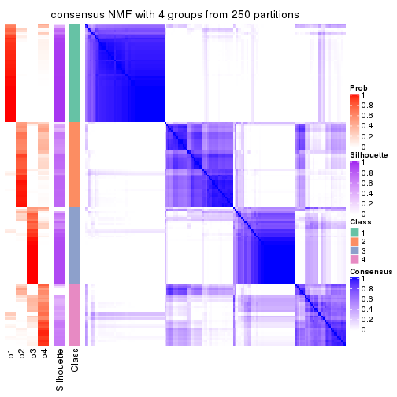
consensus_heatmap(res, k = 5)
consensus_heatmap(res, k = 6)
Heatmaps for the membership of samples in all partitions to see how consistent they are:
membership_heatmap(res, k = 2)
membership_heatmap(res, k = 3)
membership_heatmap(res, k = 4)
membership_heatmap(res, k = 5)
membership_heatmap(res, k = 6)
As soon as we have had the classes for columns, we can look for signatures which are significantly different between classes which can be candidate marks for certain classes. Following are the heatmaps for signatures.
Signature heatmaps where rows are scaled:
get_signatures(res, k = 2)
get_signatures(res, k = 3)
get_signatures(res, k = 4)
get_signatures(res, k = 5)
get_signatures(res, k = 6)
Signature heatmaps where rows are not scaled:
get_signatures(res, k = 2, scale_rows = FALSE)
get_signatures(res, k = 3, scale_rows = FALSE)
get_signatures(res, k = 4, scale_rows = FALSE)
get_signatures(res, k = 5, scale_rows = FALSE)
get_signatures(res, k = 6, scale_rows = FALSE)
Compare the overlap of signatures from different k:
compare_signatures(res)
get_signature() returns a data frame invisibly. TO get the list of signatures, the function
call should be assigned to a variable explicitly. In following code, if plot argument is set
to FALSE, no heatmap is plotted while only the differential analysis is performed.
# code only for demonstration
tb = get_signature(res, k = ..., plot = FALSE)
An example of the output of tb is:
#> which_row fdr mean_1 mean_2 scaled_mean_1 scaled_mean_2 km
#> 1 38 0.042760348 8.373488 9.131774 -0.5533452 0.5164555 1
#> 2 40 0.018707592 7.106213 8.469186 -0.6173731 0.5762149 1
#> 3 55 0.019134737 10.221463 11.207825 -0.6159697 0.5749050 1
#> 4 59 0.006059896 5.921854 7.869574 -0.6899429 0.6439467 1
#> 5 60 0.018055526 8.928898 10.211722 -0.6204761 0.5791110 1
#> 6 98 0.009384629 15.714769 14.887706 0.6635654 -0.6193277 2
...
The columns in tb are:
which_row: row indices corresponding to the input matrix.fdr: FDR for the differential test. mean_x: The mean value in group x.scaled_mean_x: The mean value in group x after rows are scaled.km: Row groups if k-means clustering is applied to rows.UMAP plot which shows how samples are separated.
dimension_reduction(res, k = 2, method = "UMAP")
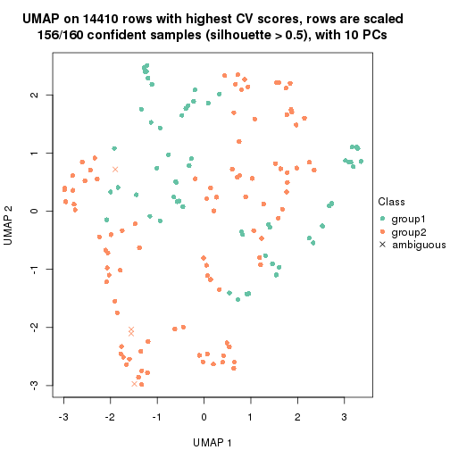
dimension_reduction(res, k = 3, method = "UMAP")
dimension_reduction(res, k = 4, method = "UMAP")
dimension_reduction(res, k = 5, method = "UMAP")
dimension_reduction(res, k = 6, method = "UMAP")
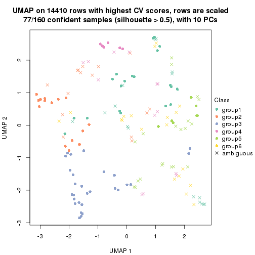
Following heatmap shows how subgroups are split when increasing k:
collect_classes(res)
If matrix rows can be associated to genes, consider to use GO_Enrichment(res,
...) to perform function enrichment for the signature genes.
The object with results only for a single top-value method and a single partition method can be extracted as:
res = res_list["MAD", "hclust"]
# you can also extract it by
# res = res_list["MAD:hclust"]
A summary of res and all the functions that can be applied to it:
res
#> A 'ConsensusPartition' object with k = 2, 3, 4, 5, 6.
#> On a matrix with 14410 rows and 160 columns.
#> Top rows (1000, 2000, 3000, 4000, 5000) are extracted by 'MAD' method.
#> Subgroups are detected by 'hclust' method.
#> Performed in total 1250 partitions by row resampling.
#> Best k for subgroups seems to be 6.
#>
#> Following methods can be applied to this 'ConsensusPartition' object:
#> [1] "cola_report" "collect_classes" "collect_plots"
#> [4] "collect_stats" "colnames" "compare_signatures"
#> [7] "consensus_heatmap" "dimension_reduction" "functional_enrichment"
#> [10] "get_anno_col" "get_anno" "get_classes"
#> [13] "get_consensus" "get_matrix" "get_membership"
#> [16] "get_param" "get_signatures" "get_stats"
#> [19] "is_best_k" "is_stable_k" "membership_heatmap"
#> [22] "ncol" "nrow" "plot_ecdf"
#> [25] "rownames" "select_partition_number" "show"
#> [28] "suggest_best_k" "test_to_known_factors"
collect_plots() function collects all the plots made from res for all k (number of partitions)
into one single page to provide an easy and fast comparison between different k.
collect_plots(res)
The plots are:
k and the heatmap of
predicted classes for each k.k.k.k.All the plots in panels can be made by individual functions and they are plotted later in this section.
select_partition_number() produces several plots showing different
statistics for choosing “optimized” k. There are following statistics:
k;k, the area increased is defined as \(A_k - A_{k-1}\).The detailed explanations of these statistics can be found in the cola vignette.
Generally speaking, lower PAC score, higher mean silhouette score or higher
concordance corresponds to better partition. Rand index and Jaccard index
measure how similar the current partition is compared to partition with k-1.
If they are too similar, we won't accept k is better than k-1.
select_partition_number(res)
The numeric values for all these statistics can be obtained by get_stats().
get_stats(res)
#> k 1-PAC mean_silhouette concordance area_increased Rand Jaccard
#> 2 2 0.181 0.602 0.785 0.4187 0.558 0.558
#> 3 3 0.250 0.481 0.716 0.3823 0.733 0.559
#> 4 4 0.466 0.605 0.746 0.2078 0.741 0.462
#> 5 5 0.521 0.652 0.729 0.0527 0.925 0.767
#> 6 6 0.597 0.675 0.758 0.0499 0.969 0.879
suggest_best_k() suggests the best \(k\) based on these statistics. The rules are as follows:
NA.suggest_best_k(res)
#> [1] 6
Following shows the table of the partitions (You need to click the show/hide
code output link to see it). The membership matrix (columns with name p*)
is inferred by
clue::cl_consensus()
function with the SE method. Basically the value in the membership matrix
represents the probability to belong to a certain group. The finall class
label for an item is determined with the group with highest probability it
belongs to.
In get_classes() function, the entropy is calculated from the membership
matrix and the silhouette score is calculated from the consensus matrix.
cbind(get_classes(res, k = 2), get_membership(res, k = 2))
#> class entropy silhouette p1 p2
#> SRR031811 1 0.295 0.767653 0.948 0.052
#> SRR031812 1 0.996 0.086495 0.536 0.464
#> SRR031813 2 0.855 0.722047 0.280 0.720
#> SRR031814 1 0.996 0.086495 0.536 0.464
#> SRR031815 2 0.781 0.611228 0.232 0.768
#> SRR031816 1 0.295 0.767653 0.948 0.052
#> SRR031817 1 0.482 0.742161 0.896 0.104
#> SRR031818 2 0.881 0.717298 0.300 0.700
#> SRR031819 1 0.995 -0.219567 0.540 0.460
#> SRR031820 1 0.995 -0.219567 0.540 0.460
#> SRR031821 1 0.529 0.738855 0.880 0.120
#> SRR031822 1 0.996 0.086495 0.536 0.464
#> SRR031823 1 0.118 0.770405 0.984 0.016
#> SRR031824 2 0.563 0.711282 0.132 0.868
#> SRR031825 2 0.563 0.711282 0.132 0.868
#> SRR031826 2 0.855 0.722047 0.280 0.720
#> SRR031827 1 0.295 0.767653 0.948 0.052
#> SRR031828 1 0.996 0.086495 0.536 0.464
#> SRR031829 1 0.295 0.767653 0.948 0.052
#> SRR031830 2 0.781 0.611228 0.232 0.768
#> SRR031831 1 0.482 0.742161 0.896 0.104
#> SRR031832 1 0.416 0.755896 0.916 0.084
#> SRR031833 2 0.881 0.717298 0.300 0.700
#> SRR031834 1 0.996 0.086495 0.536 0.464
#> SRR031835 1 0.996 0.086495 0.536 0.464
#> SRR031836 1 0.204 0.765477 0.968 0.032
#> SRR031837 1 0.416 0.755896 0.916 0.084
#> SRR031838 2 0.563 0.711282 0.132 0.868
#> SRR031839 2 1.000 0.317818 0.496 0.504
#> SRR031840 1 0.714 0.713964 0.804 0.196
#> SRR031841 2 0.981 0.343845 0.420 0.580
#> SRR031842 2 0.563 0.711282 0.132 0.868
#> SRR031843 1 0.416 0.755896 0.916 0.084
#> SRR031844 1 0.456 0.750105 0.904 0.096
#> SRR031845 1 0.260 0.763706 0.956 0.044
#> SRR031846 1 0.929 0.414169 0.656 0.344
#> SRR031847 1 0.416 0.755896 0.916 0.084
#> SRR031848 1 0.204 0.765477 0.968 0.032
#> SRR031849 1 0.416 0.755896 0.916 0.084
#> SRR031850 2 0.563 0.711282 0.132 0.868
#> SRR031851 2 0.563 0.711282 0.132 0.868
#> SRR031852 2 0.999 0.139930 0.480 0.520
#> SRR031853 2 0.999 0.139930 0.480 0.520
#> SRR031854 2 0.946 0.486166 0.364 0.636
#> SRR031855 2 0.871 0.720864 0.292 0.708
#> SRR031857 1 0.311 0.766575 0.944 0.056
#> SRR031858 1 0.563 0.741656 0.868 0.132
#> SRR031859 2 0.563 0.711282 0.132 0.868
#> SRR031860 2 0.563 0.711282 0.132 0.868
#> SRR031861 2 0.563 0.711282 0.132 0.868
#> SRR031862 1 0.563 0.729464 0.868 0.132
#> SRR031863 1 0.260 0.769218 0.956 0.044
#> SRR031864 2 0.563 0.711282 0.132 0.868
#> SRR031865 2 0.855 0.724402 0.280 0.720
#> SRR031866 1 0.999 0.000481 0.516 0.484
#> SRR031867 1 0.563 0.740922 0.868 0.132
#> SRR031868 2 0.881 0.717298 0.300 0.700
#> SRR031869 1 0.996 0.086495 0.536 0.464
#> SRR031870 1 0.563 0.741656 0.868 0.132
#> SRR031871 2 0.584 0.679378 0.140 0.860
#> SRR031872 2 0.844 0.635030 0.272 0.728
#> SRR031873 1 0.996 0.086495 0.536 0.464
#> SRR031874 1 0.563 0.729464 0.868 0.132
#> SRR031875 1 0.999 -0.268719 0.520 0.480
#> SRR031876 1 0.563 0.729464 0.868 0.132
#> SRR031877 1 0.563 0.729464 0.868 0.132
#> SRR031878 1 0.260 0.769218 0.956 0.044
#> SRR031879 1 0.995 -0.219567 0.540 0.460
#> SRR031880 1 0.118 0.770405 0.984 0.016
#> SRR031881 1 0.529 0.738855 0.880 0.120
#> SRR031882 2 1.000 0.317818 0.496 0.504
#> SRR031883 1 0.995 -0.219567 0.540 0.460
#> SRR031884 1 0.416 0.755896 0.916 0.084
#> SRR031885 2 0.855 0.722047 0.280 0.720
#> SRR031886 1 0.416 0.755896 0.916 0.084
#> SRR031887 1 0.714 0.713964 0.804 0.196
#> SRR031888 1 0.494 0.734482 0.892 0.108
#> SRR031889 2 0.981 0.343845 0.420 0.580
#> SRR031890 1 0.929 0.414169 0.656 0.344
#> SRR031891 1 0.260 0.763706 0.956 0.044
#> SRR031892 1 0.456 0.750105 0.904 0.096
#> SRR031893 1 0.961 0.343816 0.616 0.384
#> SRR031894 2 0.876 0.719651 0.296 0.704
#> SRR031895 2 0.855 0.640756 0.280 0.720
#> SRR031896 2 0.876 0.719497 0.296 0.704
#> SRR031897 1 0.456 0.748682 0.904 0.096
#> SRR031898 1 0.563 0.730619 0.868 0.132
#> SRR031899 1 0.204 0.765477 0.968 0.032
#> SRR031900 1 0.563 0.740922 0.868 0.132
#> SRR031901 1 0.563 0.741656 0.868 0.132
#> SRR031902 2 0.584 0.679378 0.140 0.860
#> SRR031903 1 0.996 0.086495 0.536 0.464
#> SRR031904 2 0.881 0.717298 0.300 0.700
#> SRR031905 2 0.844 0.635030 0.272 0.728
#> SRR031906 1 0.996 0.086495 0.536 0.464
#> SRR031907 1 0.224 0.770352 0.964 0.036
#> SRR031908 1 0.416 0.755896 0.916 0.084
#> SRR031909 1 0.563 0.729464 0.868 0.132
#> SRR031910 1 0.204 0.765477 0.968 0.032
#> SRR031911 1 0.999 -0.268719 0.520 0.480
#> SRR031912 1 0.563 0.729464 0.868 0.132
#> SRR031913 1 0.260 0.769218 0.956 0.044
#> SRR031914 1 0.714 0.713964 0.804 0.196
#> SRR031915 1 0.388 0.760480 0.924 0.076
#> SRR031916 1 0.141 0.773784 0.980 0.020
#> SRR031917 1 0.541 0.734377 0.876 0.124
#> SRR031918 1 0.204 0.765477 0.968 0.032
#> SRR031919 1 0.563 0.729464 0.868 0.132
#> SRR031920 1 0.204 0.765477 0.968 0.032
#> SRR031921 2 0.876 0.719651 0.296 0.704
#> SRR031922 1 0.563 0.741656 0.868 0.132
#> SRR031923 2 0.563 0.711282 0.132 0.868
#> SRR031924 1 0.961 0.343816 0.616 0.384
#> SRR031925 1 0.311 0.766575 0.944 0.056
#> SRR031926 1 0.456 0.748682 0.904 0.096
#> SRR031927 2 0.876 0.719497 0.296 0.704
#> SRR031928 1 0.563 0.729464 0.868 0.132
#> SRR031929 1 0.260 0.769218 0.956 0.044
#> SRR031930 2 0.563 0.711282 0.132 0.868
#> SRR031931 2 0.855 0.724402 0.280 0.720
#> SRR031932 1 0.999 0.000481 0.516 0.484
#> SRR031933 1 0.563 0.730619 0.868 0.132
#> SRR031934 2 0.855 0.640756 0.280 0.720
#> SRR031935 1 0.141 0.773784 0.980 0.020
#> SRR031936 1 0.714 0.713964 0.804 0.196
#> SRR031937 1 0.563 0.729464 0.868 0.132
#> SRR031938 1 0.541 0.734377 0.876 0.124
#> SRR031939 2 0.871 0.720864 0.292 0.708
#> SRR031940 2 0.999 0.139930 0.480 0.520
#> SRR031941 1 0.118 0.770405 0.984 0.016
#> SRR031942 1 0.563 0.729464 0.868 0.132
#> SRR031943 1 0.204 0.765477 0.968 0.032
#> SRR031944 1 0.373 0.762043 0.928 0.072
#> SRR031945 1 0.456 0.750105 0.904 0.096
#> SRR031946 1 0.204 0.765477 0.968 0.032
#> SRR031947 1 0.388 0.760480 0.924 0.076
#> SRR031948 1 0.563 0.729464 0.868 0.132
#> SRR031949 2 0.999 0.139930 0.480 0.520
#> SRR031950 1 0.730 0.607101 0.796 0.204
#> SRR031951 1 0.278 0.767985 0.952 0.048
#> SRR031952 1 0.680 0.728888 0.820 0.180
#> SRR031953 1 0.714 0.713964 0.804 0.196
#> SRR031954 1 0.456 0.750105 0.904 0.096
#> SRR031955 1 0.373 0.762043 0.928 0.072
#> SRR031956 1 0.224 0.770352 0.964 0.036
#> SRR031957 2 0.871 0.720864 0.292 0.708
#> SRR031958 1 0.327 0.766749 0.940 0.060
#> SRR031959 1 0.118 0.770405 0.984 0.016
#> SRR031960 1 0.327 0.766749 0.940 0.060
#> SRR031961 1 0.563 0.729464 0.868 0.132
#> SRR031962 1 0.714 0.713964 0.804 0.196
#> SRR031963 1 0.278 0.767985 0.952 0.048
#> SRR031964 1 0.680 0.728888 0.820 0.180
#> SRR031965 2 0.563 0.711282 0.132 0.868
#> SRR031966 2 0.563 0.711282 0.132 0.868
#> SRR031967 2 0.999 0.139930 0.480 0.520
#> SRR031968 2 0.999 0.139930 0.480 0.520
#> SRR031969 2 0.946 0.486166 0.364 0.636
#> SRR031970 2 0.563 0.711282 0.132 0.868
#> SRR031971 2 0.781 0.611228 0.232 0.768
cbind(get_classes(res, k = 3), get_membership(res, k = 3))
#> class entropy silhouette p1 p2 p3
#> SRR031811 3 0.2982 0.70743 0.024 0.056 0.920
#> SRR031812 1 0.5016 0.63845 0.760 0.000 0.240
#> SRR031813 2 0.9496 0.42308 0.372 0.440 0.188
#> SRR031814 1 0.5016 0.63845 0.760 0.000 0.240
#> SRR031815 1 0.6931 0.17099 0.640 0.328 0.032
#> SRR031816 3 0.2982 0.70743 0.024 0.056 0.920
#> SRR031817 3 0.5377 0.65669 0.112 0.068 0.820
#> SRR031818 2 0.9776 0.38377 0.380 0.388 0.232
#> SRR031819 3 0.9433 0.08718 0.236 0.260 0.504
#> SRR031820 3 0.9433 0.08718 0.236 0.260 0.504
#> SRR031821 3 0.5492 0.66841 0.104 0.080 0.816
#> SRR031822 1 0.5016 0.63845 0.760 0.000 0.240
#> SRR031823 3 0.0983 0.70903 0.004 0.016 0.980
#> SRR031824 2 0.1525 0.62872 0.004 0.964 0.032
#> SRR031825 2 0.1525 0.62872 0.004 0.964 0.032
#> SRR031826 2 0.9496 0.42308 0.372 0.440 0.188
#> SRR031827 3 0.2982 0.70743 0.024 0.056 0.920
#> SRR031828 1 0.5016 0.63845 0.760 0.000 0.240
#> SRR031829 3 0.2982 0.70743 0.024 0.056 0.920
#> SRR031830 1 0.6931 0.17099 0.640 0.328 0.032
#> SRR031831 3 0.5377 0.65669 0.112 0.068 0.820
#> SRR031832 3 0.4563 0.67087 0.112 0.036 0.852
#> SRR031833 2 0.9776 0.38377 0.380 0.388 0.232
#> SRR031834 1 0.5016 0.63845 0.760 0.000 0.240
#> SRR031835 1 0.5016 0.63845 0.760 0.000 0.240
#> SRR031836 3 0.2152 0.70839 0.016 0.036 0.948
#> SRR031837 3 0.4563 0.67087 0.112 0.036 0.852
#> SRR031838 2 0.1289 0.62878 0.000 0.968 0.032
#> SRR031839 3 0.9757 -0.11454 0.244 0.324 0.432
#> SRR031840 3 0.6813 0.07445 0.468 0.012 0.520
#> SRR031841 1 0.6447 0.53800 0.744 0.060 0.196
#> SRR031842 2 0.1529 0.62626 0.000 0.960 0.040
#> SRR031843 3 0.4563 0.67087 0.112 0.036 0.852
#> SRR031844 3 0.6187 0.48654 0.248 0.028 0.724
#> SRR031845 3 0.6108 0.50043 0.240 0.028 0.732
#> SRR031846 1 0.7069 0.26776 0.508 0.020 0.472
#> SRR031847 3 0.4563 0.67087 0.112 0.036 0.852
#> SRR031848 3 0.2152 0.70839 0.016 0.036 0.948
#> SRR031849 3 0.4563 0.67087 0.112 0.036 0.852
#> SRR031850 2 0.1525 0.62686 0.004 0.964 0.032
#> SRR031851 2 0.1289 0.62878 0.000 0.968 0.032
#> SRR031852 1 0.4504 0.59386 0.804 0.000 0.196
#> SRR031853 1 0.4504 0.59386 0.804 0.000 0.196
#> SRR031854 1 0.7126 0.45074 0.720 0.116 0.164
#> SRR031855 2 0.9715 0.39535 0.380 0.400 0.220
#> SRR031857 3 0.3009 0.70629 0.028 0.052 0.920
#> SRR031858 3 0.6644 0.62227 0.108 0.140 0.752
#> SRR031859 2 0.1525 0.62872 0.004 0.964 0.032
#> SRR031860 2 0.1525 0.62872 0.004 0.964 0.032
#> SRR031861 2 0.1525 0.62872 0.004 0.964 0.032
#> SRR031862 1 0.6286 -0.00467 0.536 0.000 0.464
#> SRR031863 3 0.2550 0.70817 0.024 0.040 0.936
#> SRR031864 2 0.1525 0.62686 0.004 0.964 0.032
#> SRR031865 2 0.9471 0.41600 0.376 0.440 0.184
#> SRR031866 1 0.4796 0.62974 0.780 0.000 0.220
#> SRR031867 3 0.6644 0.62128 0.108 0.140 0.752
#> SRR031868 2 0.9776 0.38377 0.380 0.388 0.232
#> SRR031869 1 0.5016 0.63845 0.760 0.000 0.240
#> SRR031870 3 0.6644 0.62227 0.108 0.140 0.752
#> SRR031871 2 0.4748 0.47884 0.144 0.832 0.024
#> SRR031872 1 0.8770 0.12134 0.572 0.272 0.156
#> SRR031873 1 0.5461 0.63420 0.748 0.008 0.244
#> SRR031874 1 0.6509 -0.05193 0.524 0.004 0.472
#> SRR031875 3 0.9648 -0.02645 0.236 0.304 0.460
#> SRR031876 1 0.6286 -0.00467 0.536 0.000 0.464
#> SRR031877 3 0.6702 0.40980 0.328 0.024 0.648
#> SRR031878 3 0.2550 0.70817 0.024 0.040 0.936
#> SRR031879 3 0.9433 0.08718 0.236 0.260 0.504
#> SRR031880 3 0.0983 0.70903 0.004 0.016 0.980
#> SRR031881 3 0.5492 0.66841 0.104 0.080 0.816
#> SRR031882 3 0.9757 -0.11454 0.244 0.324 0.432
#> SRR031883 3 0.9433 0.08718 0.236 0.260 0.504
#> SRR031884 3 0.4563 0.67087 0.112 0.036 0.852
#> SRR031885 2 0.9496 0.42308 0.372 0.440 0.188
#> SRR031886 3 0.4563 0.67087 0.112 0.036 0.852
#> SRR031887 3 0.6813 0.07445 0.468 0.012 0.520
#> SRR031888 3 0.4995 0.67863 0.032 0.144 0.824
#> SRR031889 1 0.6447 0.53800 0.744 0.060 0.196
#> SRR031890 1 0.7069 0.26776 0.508 0.020 0.472
#> SRR031891 3 0.6108 0.50043 0.240 0.028 0.732
#> SRR031892 3 0.6187 0.48654 0.248 0.028 0.724
#> SRR031893 1 0.6451 0.47301 0.608 0.008 0.384
#> SRR031894 2 0.9773 0.39937 0.372 0.396 0.232
#> SRR031895 1 0.8962 0.08208 0.548 0.288 0.164
#> SRR031896 2 0.9753 0.40381 0.372 0.400 0.228
#> SRR031897 3 0.3933 0.68991 0.028 0.092 0.880
#> SRR031898 3 0.5662 0.66393 0.100 0.092 0.808
#> SRR031899 3 0.2152 0.70839 0.016 0.036 0.948
#> SRR031900 3 0.6644 0.62128 0.108 0.140 0.752
#> SRR031901 3 0.6644 0.62227 0.108 0.140 0.752
#> SRR031902 2 0.4748 0.47884 0.144 0.832 0.024
#> SRR031903 1 0.5461 0.63420 0.748 0.008 0.244
#> SRR031904 2 0.9776 0.38377 0.380 0.388 0.232
#> SRR031905 1 0.8770 0.12134 0.572 0.272 0.156
#> SRR031906 1 0.5016 0.63845 0.760 0.000 0.240
#> SRR031907 3 0.1525 0.71266 0.004 0.032 0.964
#> SRR031908 3 0.4563 0.67087 0.112 0.036 0.852
#> SRR031909 1 0.6286 -0.00467 0.536 0.000 0.464
#> SRR031910 3 0.2152 0.70839 0.016 0.036 0.948
#> SRR031911 3 0.9648 -0.02645 0.236 0.304 0.460
#> SRR031912 1 0.6509 -0.05193 0.524 0.004 0.472
#> SRR031913 3 0.2550 0.70817 0.024 0.040 0.936
#> SRR031914 3 0.6813 0.07445 0.468 0.012 0.520
#> SRR031915 3 0.3310 0.67516 0.064 0.028 0.908
#> SRR031916 3 0.1453 0.70525 0.008 0.024 0.968
#> SRR031917 3 0.6984 0.22942 0.420 0.020 0.560
#> SRR031918 3 0.2152 0.70839 0.016 0.036 0.948
#> SRR031919 1 0.6286 -0.00467 0.536 0.000 0.464
#> SRR031920 3 0.2152 0.70839 0.016 0.036 0.948
#> SRR031921 2 0.9773 0.39937 0.372 0.396 0.232
#> SRR031922 3 0.6644 0.62227 0.108 0.140 0.752
#> SRR031923 2 0.1525 0.62872 0.004 0.964 0.032
#> SRR031924 1 0.6451 0.47301 0.608 0.008 0.384
#> SRR031925 3 0.3009 0.70629 0.028 0.052 0.920
#> SRR031926 3 0.3933 0.68991 0.028 0.092 0.880
#> SRR031927 2 0.9753 0.40381 0.372 0.400 0.228
#> SRR031928 1 0.6286 -0.00467 0.536 0.000 0.464
#> SRR031929 3 0.2550 0.70817 0.024 0.040 0.936
#> SRR031930 2 0.1525 0.62686 0.004 0.964 0.032
#> SRR031931 2 0.9471 0.41600 0.376 0.440 0.184
#> SRR031932 1 0.4796 0.62974 0.780 0.000 0.220
#> SRR031933 3 0.5662 0.66393 0.100 0.092 0.808
#> SRR031934 1 0.8962 0.08208 0.548 0.288 0.164
#> SRR031935 3 0.1453 0.70525 0.008 0.024 0.968
#> SRR031936 3 0.6813 0.07445 0.468 0.012 0.520
#> SRR031937 1 0.6286 -0.00467 0.536 0.000 0.464
#> SRR031938 3 0.6984 0.22942 0.420 0.020 0.560
#> SRR031939 2 0.9715 0.39535 0.380 0.400 0.220
#> SRR031940 1 0.4504 0.59386 0.804 0.000 0.196
#> SRR031941 3 0.0983 0.70903 0.004 0.016 0.980
#> SRR031942 3 0.6702 0.40980 0.328 0.024 0.648
#> SRR031943 3 0.2152 0.70839 0.016 0.036 0.948
#> SRR031944 3 0.3590 0.66807 0.076 0.028 0.896
#> SRR031945 3 0.6187 0.48654 0.248 0.028 0.724
#> SRR031946 3 0.2152 0.70839 0.016 0.036 0.948
#> SRR031947 3 0.3310 0.67516 0.064 0.028 0.908
#> SRR031948 1 0.6286 -0.00467 0.536 0.000 0.464
#> SRR031949 1 0.4504 0.59386 0.804 0.000 0.196
#> SRR031950 3 0.6407 0.55783 0.028 0.272 0.700
#> SRR031951 3 0.2773 0.70804 0.024 0.048 0.928
#> SRR031952 3 0.7517 0.16311 0.420 0.040 0.540
#> SRR031953 3 0.6813 0.07445 0.468 0.012 0.520
#> SRR031954 3 0.6187 0.48654 0.248 0.028 0.724
#> SRR031955 3 0.3590 0.66807 0.076 0.028 0.896
#> SRR031956 3 0.1525 0.71266 0.004 0.032 0.964
#> SRR031957 2 0.9715 0.39535 0.380 0.400 0.220
#> SRR031958 3 0.3237 0.70653 0.032 0.056 0.912
#> SRR031959 3 0.0983 0.70903 0.004 0.016 0.980
#> SRR031960 3 0.3237 0.70653 0.032 0.056 0.912
#> SRR031961 1 0.6286 -0.00467 0.536 0.000 0.464
#> SRR031962 3 0.6813 0.07445 0.468 0.012 0.520
#> SRR031963 3 0.2773 0.70804 0.024 0.048 0.928
#> SRR031964 3 0.7517 0.16311 0.420 0.040 0.540
#> SRR031965 2 0.1289 0.62565 0.000 0.968 0.032
#> SRR031966 2 0.1289 0.62878 0.000 0.968 0.032
#> SRR031967 1 0.4504 0.59386 0.804 0.000 0.196
#> SRR031968 1 0.4504 0.59386 0.804 0.000 0.196
#> SRR031969 1 0.7126 0.45074 0.720 0.116 0.164
#> SRR031970 2 0.1289 0.62878 0.000 0.968 0.032
#> SRR031971 1 0.6906 0.17532 0.644 0.324 0.032
cbind(get_classes(res, k = 4), get_membership(res, k = 4))
#> class entropy silhouette p1 p2 p3 p4
#> SRR031811 4 0.3833 0.7437 0.024 0.036 0.076 0.864
#> SRR031812 1 0.7981 0.4491 0.448 0.280 0.264 0.008
#> SRR031813 1 0.2644 0.4303 0.908 0.060 0.000 0.032
#> SRR031814 1 0.7981 0.4491 0.448 0.280 0.264 0.008
#> SRR031815 1 0.7386 0.3789 0.464 0.368 0.168 0.000
#> SRR031816 4 0.3833 0.7437 0.024 0.036 0.076 0.864
#> SRR031817 4 0.4590 0.7210 0.144 0.040 0.012 0.804
#> SRR031818 1 0.2179 0.4691 0.924 0.012 0.000 0.064
#> SRR031819 1 0.4761 0.2942 0.628 0.000 0.000 0.372
#> SRR031820 1 0.4761 0.2942 0.628 0.000 0.000 0.372
#> SRR031821 4 0.5854 0.7161 0.096 0.064 0.080 0.760
#> SRR031822 1 0.7981 0.4491 0.448 0.280 0.264 0.008
#> SRR031823 4 0.0937 0.7625 0.000 0.012 0.012 0.976
#> SRR031824 2 0.4905 0.9603 0.364 0.632 0.000 0.004
#> SRR031825 2 0.4905 0.9603 0.364 0.632 0.000 0.004
#> SRR031826 1 0.2644 0.4303 0.908 0.060 0.000 0.032
#> SRR031827 4 0.3833 0.7437 0.024 0.036 0.076 0.864
#> SRR031828 1 0.7981 0.4491 0.448 0.280 0.264 0.008
#> SRR031829 4 0.3833 0.7437 0.024 0.036 0.076 0.864
#> SRR031830 1 0.7386 0.3789 0.464 0.368 0.168 0.000
#> SRR031831 4 0.4590 0.7210 0.144 0.040 0.012 0.804
#> SRR031832 4 0.4161 0.7341 0.112 0.040 0.012 0.836
#> SRR031833 1 0.2179 0.4691 0.924 0.012 0.000 0.064
#> SRR031834 1 0.7981 0.4491 0.448 0.280 0.264 0.008
#> SRR031835 1 0.7981 0.4491 0.448 0.280 0.264 0.008
#> SRR031836 4 0.1637 0.7615 0.060 0.000 0.000 0.940
#> SRR031837 4 0.4161 0.7341 0.112 0.040 0.012 0.836
#> SRR031838 2 0.4991 0.9420 0.388 0.608 0.000 0.004
#> SRR031839 1 0.4820 0.3345 0.692 0.012 0.000 0.296
#> SRR031840 3 0.6692 0.6628 0.088 0.044 0.680 0.188
#> SRR031841 1 0.7349 0.5675 0.584 0.252 0.144 0.020
#> SRR031842 2 0.5339 0.9449 0.356 0.624 0.000 0.020
#> SRR031843 4 0.4161 0.7341 0.112 0.040 0.012 0.836
#> SRR031844 4 0.6674 0.1895 0.032 0.032 0.416 0.520
#> SRR031845 4 0.6449 -0.1095 0.000 0.068 0.452 0.480
#> SRR031846 4 0.9547 -0.0399 0.248 0.184 0.168 0.400
#> SRR031847 4 0.4161 0.7341 0.112 0.040 0.012 0.836
#> SRR031848 4 0.1637 0.7615 0.060 0.000 0.000 0.940
#> SRR031849 4 0.4161 0.7341 0.112 0.040 0.012 0.836
#> SRR031850 2 0.4889 0.9540 0.360 0.636 0.000 0.004
#> SRR031851 2 0.4905 0.9587 0.364 0.632 0.000 0.004
#> SRR031852 1 0.7189 0.5310 0.532 0.300 0.168 0.000
#> SRR031853 1 0.7172 0.5310 0.532 0.304 0.164 0.000
#> SRR031854 1 0.6429 0.5737 0.648 0.192 0.160 0.000
#> SRR031855 1 0.2060 0.4637 0.932 0.016 0.000 0.052
#> SRR031857 4 0.3744 0.7440 0.028 0.028 0.076 0.868
#> SRR031858 4 0.6025 0.6794 0.108 0.148 0.020 0.724
#> SRR031859 2 0.4905 0.9603 0.364 0.632 0.000 0.004
#> SRR031860 2 0.4905 0.9603 0.364 0.632 0.000 0.004
#> SRR031861 2 0.4905 0.9603 0.364 0.632 0.000 0.004
#> SRR031862 3 0.2437 0.7368 0.024 0.024 0.928 0.024
#> SRR031863 4 0.3322 0.7469 0.016 0.024 0.076 0.884
#> SRR031864 2 0.4889 0.9540 0.360 0.636 0.000 0.004
#> SRR031865 1 0.2565 0.4403 0.912 0.056 0.000 0.032
#> SRR031866 1 0.7905 0.4676 0.468 0.264 0.260 0.008
#> SRR031867 4 0.6025 0.6770 0.108 0.148 0.020 0.724
#> SRR031868 1 0.2179 0.4691 0.924 0.012 0.000 0.064
#> SRR031869 1 0.7981 0.4491 0.448 0.280 0.264 0.008
#> SRR031870 4 0.6025 0.6794 0.108 0.148 0.020 0.724
#> SRR031871 2 0.6819 0.7676 0.284 0.604 0.100 0.012
#> SRR031872 1 0.4840 0.5573 0.796 0.032 0.144 0.028
#> SRR031873 1 0.8104 0.4290 0.440 0.264 0.284 0.012
#> SRR031874 3 0.4795 0.6741 0.012 0.076 0.804 0.108
#> SRR031875 1 0.4836 0.3258 0.672 0.008 0.000 0.320
#> SRR031876 3 0.2437 0.7368 0.024 0.024 0.928 0.024
#> SRR031877 3 0.7116 0.3081 0.016 0.088 0.524 0.372
#> SRR031878 4 0.3322 0.7469 0.016 0.024 0.076 0.884
#> SRR031879 1 0.4761 0.2942 0.628 0.000 0.000 0.372
#> SRR031880 4 0.0937 0.7625 0.000 0.012 0.012 0.976
#> SRR031881 4 0.5854 0.7161 0.096 0.064 0.080 0.760
#> SRR031882 1 0.4820 0.3345 0.692 0.012 0.000 0.296
#> SRR031883 1 0.4761 0.2942 0.628 0.000 0.000 0.372
#> SRR031884 4 0.4161 0.7341 0.112 0.040 0.012 0.836
#> SRR031885 1 0.2644 0.4303 0.908 0.060 0.000 0.032
#> SRR031886 4 0.4161 0.7341 0.112 0.040 0.012 0.836
#> SRR031887 3 0.6692 0.6628 0.088 0.044 0.680 0.188
#> SRR031888 4 0.6060 0.6971 0.096 0.080 0.076 0.748
#> SRR031889 1 0.7349 0.5675 0.584 0.252 0.144 0.020
#> SRR031890 4 0.9547 -0.0399 0.248 0.184 0.168 0.400
#> SRR031891 4 0.6449 -0.1095 0.000 0.068 0.452 0.480
#> SRR031892 4 0.6674 0.1895 0.032 0.032 0.416 0.520
#> SRR031893 4 0.9873 -0.2367 0.276 0.220 0.192 0.312
#> SRR031894 1 0.2610 0.4720 0.900 0.012 0.000 0.088
#> SRR031895 1 0.4952 0.5463 0.796 0.044 0.132 0.028
#> SRR031896 1 0.2662 0.4724 0.900 0.016 0.000 0.084
#> SRR031897 4 0.4511 0.7314 0.028 0.068 0.072 0.832
#> SRR031898 4 0.5994 0.7138 0.096 0.076 0.076 0.752
#> SRR031899 4 0.1637 0.7615 0.060 0.000 0.000 0.940
#> SRR031900 4 0.6025 0.6770 0.108 0.148 0.020 0.724
#> SRR031901 4 0.6025 0.6794 0.108 0.148 0.020 0.724
#> SRR031902 2 0.6819 0.7676 0.284 0.604 0.100 0.012
#> SRR031903 1 0.8104 0.4290 0.440 0.264 0.284 0.012
#> SRR031904 1 0.2179 0.4691 0.924 0.012 0.000 0.064
#> SRR031905 1 0.4840 0.5573 0.796 0.032 0.144 0.028
#> SRR031906 1 0.7981 0.4491 0.448 0.280 0.264 0.008
#> SRR031907 4 0.1749 0.7660 0.012 0.024 0.012 0.952
#> SRR031908 4 0.4161 0.7341 0.112 0.040 0.012 0.836
#> SRR031909 3 0.2437 0.7368 0.024 0.024 0.928 0.024
#> SRR031910 4 0.1637 0.7615 0.060 0.000 0.000 0.940
#> SRR031911 1 0.4836 0.3258 0.672 0.008 0.000 0.320
#> SRR031912 3 0.4795 0.6741 0.012 0.076 0.804 0.108
#> SRR031913 4 0.3322 0.7469 0.016 0.024 0.076 0.884
#> SRR031914 3 0.6692 0.6628 0.088 0.044 0.680 0.188
#> SRR031915 4 0.4201 0.7141 0.036 0.028 0.092 0.844
#> SRR031916 4 0.1871 0.7606 0.024 0.016 0.012 0.948
#> SRR031917 3 0.4185 0.6920 0.012 0.036 0.832 0.120
#> SRR031918 4 0.1637 0.7615 0.060 0.000 0.000 0.940
#> SRR031919 3 0.2540 0.7363 0.024 0.028 0.924 0.024
#> SRR031920 4 0.1637 0.7615 0.060 0.000 0.000 0.940
#> SRR031921 1 0.2610 0.4720 0.900 0.012 0.000 0.088
#> SRR031922 4 0.6025 0.6794 0.108 0.148 0.020 0.724
#> SRR031923 2 0.4905 0.9603 0.364 0.632 0.000 0.004
#> SRR031924 4 0.9873 -0.2367 0.276 0.220 0.192 0.312
#> SRR031925 4 0.3744 0.7440 0.028 0.028 0.076 0.868
#> SRR031926 4 0.4511 0.7314 0.028 0.068 0.072 0.832
#> SRR031927 1 0.2662 0.4724 0.900 0.016 0.000 0.084
#> SRR031928 3 0.2437 0.7368 0.024 0.024 0.928 0.024
#> SRR031929 4 0.3322 0.7469 0.016 0.024 0.076 0.884
#> SRR031930 2 0.4889 0.9540 0.360 0.636 0.000 0.004
#> SRR031931 1 0.2565 0.4403 0.912 0.056 0.000 0.032
#> SRR031932 1 0.7905 0.4676 0.468 0.264 0.260 0.008
#> SRR031933 4 0.5994 0.7138 0.096 0.076 0.076 0.752
#> SRR031934 1 0.4952 0.5463 0.796 0.044 0.132 0.028
#> SRR031935 4 0.1871 0.7606 0.024 0.016 0.012 0.948
#> SRR031936 3 0.6692 0.6628 0.088 0.044 0.680 0.188
#> SRR031937 3 0.2540 0.7363 0.024 0.028 0.924 0.024
#> SRR031938 3 0.4185 0.6920 0.012 0.036 0.832 0.120
#> SRR031939 1 0.2060 0.4637 0.932 0.016 0.000 0.052
#> SRR031940 1 0.7189 0.5310 0.532 0.300 0.168 0.000
#> SRR031941 4 0.0937 0.7625 0.000 0.012 0.012 0.976
#> SRR031942 3 0.7116 0.3081 0.016 0.088 0.524 0.372
#> SRR031943 4 0.1637 0.7615 0.060 0.000 0.000 0.940
#> SRR031944 4 0.4053 0.7128 0.020 0.028 0.108 0.844
#> SRR031945 4 0.6674 0.1895 0.032 0.032 0.416 0.520
#> SRR031946 4 0.1637 0.7615 0.060 0.000 0.000 0.940
#> SRR031947 4 0.4201 0.7141 0.036 0.028 0.092 0.844
#> SRR031948 3 0.2437 0.7368 0.024 0.024 0.928 0.024
#> SRR031949 1 0.7189 0.5310 0.532 0.300 0.168 0.000
#> SRR031950 4 0.7682 0.5529 0.152 0.152 0.076 0.620
#> SRR031951 4 0.3541 0.7468 0.024 0.024 0.076 0.876
#> SRR031952 3 0.7638 0.6367 0.112 0.076 0.616 0.196
#> SRR031953 3 0.6828 0.6583 0.092 0.048 0.672 0.188
#> SRR031954 4 0.6674 0.1895 0.032 0.032 0.416 0.520
#> SRR031955 4 0.4053 0.7128 0.020 0.028 0.108 0.844
#> SRR031956 4 0.1749 0.7660 0.012 0.024 0.012 0.952
#> SRR031957 1 0.2060 0.4637 0.932 0.016 0.000 0.052
#> SRR031958 4 0.4031 0.7431 0.032 0.036 0.076 0.856
#> SRR031959 4 0.0937 0.7625 0.000 0.012 0.012 0.976
#> SRR031960 4 0.4031 0.7431 0.032 0.036 0.076 0.856
#> SRR031961 3 0.2437 0.7368 0.024 0.024 0.928 0.024
#> SRR031962 3 0.6828 0.6583 0.092 0.048 0.672 0.188
#> SRR031963 4 0.3541 0.7468 0.024 0.024 0.076 0.876
#> SRR031964 3 0.7638 0.6367 0.112 0.076 0.616 0.196
#> SRR031965 2 0.4872 0.9537 0.356 0.640 0.000 0.004
#> SRR031966 2 0.4905 0.9587 0.364 0.632 0.000 0.004
#> SRR031967 1 0.7189 0.5310 0.532 0.300 0.168 0.000
#> SRR031968 1 0.7172 0.5310 0.532 0.304 0.164 0.000
#> SRR031969 1 0.6429 0.5737 0.648 0.192 0.160 0.000
#> SRR031970 2 0.4936 0.9556 0.372 0.624 0.000 0.004
#> SRR031971 1 0.7414 0.3806 0.460 0.368 0.172 0.000
cbind(get_classes(res, k = 5), get_membership(res, k = 5))
#> class entropy silhouette p1 p2 p3 p4 p5
#> SRR031811 4 0.3441 0.7657 0.056 0.088 0.000 0.848 0.008
#> SRR031812 1 0.5983 0.6905 0.580 0.000 0.252 0.000 0.168
#> SRR031813 3 0.1168 0.7011 0.000 0.032 0.960 0.008 0.000
#> SRR031814 1 0.5983 0.6905 0.580 0.000 0.252 0.000 0.168
#> SRR031815 1 0.7241 0.3838 0.448 0.200 0.316 0.000 0.036
#> SRR031816 4 0.3441 0.7657 0.056 0.088 0.000 0.848 0.008
#> SRR031817 4 0.4083 0.7381 0.080 0.000 0.132 0.788 0.000
#> SRR031818 3 0.1967 0.7293 0.000 0.012 0.932 0.036 0.020
#> SRR031819 3 0.4196 0.5036 0.004 0.000 0.640 0.356 0.000
#> SRR031820 3 0.4196 0.5036 0.004 0.000 0.640 0.356 0.000
#> SRR031821 4 0.5541 0.7445 0.084 0.096 0.068 0.740 0.012
#> SRR031822 1 0.5983 0.6905 0.580 0.000 0.252 0.000 0.168
#> SRR031823 4 0.1143 0.7871 0.008 0.008 0.004 0.968 0.012
#> SRR031824 2 0.3661 0.9523 0.000 0.724 0.276 0.000 0.000
#> SRR031825 2 0.3661 0.9523 0.000 0.724 0.276 0.000 0.000
#> SRR031826 3 0.1168 0.7011 0.000 0.032 0.960 0.008 0.000
#> SRR031827 4 0.3441 0.7657 0.056 0.088 0.000 0.848 0.008
#> SRR031828 1 0.5983 0.6905 0.580 0.000 0.252 0.000 0.168
#> SRR031829 4 0.3441 0.7657 0.056 0.088 0.000 0.848 0.008
#> SRR031830 1 0.7241 0.3838 0.448 0.200 0.316 0.000 0.036
#> SRR031831 4 0.4083 0.7381 0.080 0.000 0.132 0.788 0.000
#> SRR031832 4 0.3854 0.7507 0.080 0.004 0.100 0.816 0.000
#> SRR031833 3 0.1967 0.7293 0.000 0.012 0.932 0.036 0.020
#> SRR031834 1 0.5983 0.6905 0.580 0.000 0.252 0.000 0.168
#> SRR031835 1 0.5983 0.6905 0.580 0.000 0.252 0.000 0.168
#> SRR031836 4 0.1571 0.7830 0.000 0.004 0.060 0.936 0.000
#> SRR031837 4 0.3854 0.7507 0.080 0.004 0.100 0.816 0.000
#> SRR031838 2 0.4126 0.8634 0.000 0.620 0.380 0.000 0.000
#> SRR031839 3 0.3992 0.5877 0.004 0.004 0.712 0.280 0.000
#> SRR031840 5 0.7016 0.6179 0.132 0.016 0.080 0.160 0.612
#> SRR031841 3 0.4958 -0.2010 0.400 0.000 0.568 0.000 0.032
#> SRR031842 2 0.4114 0.9370 0.000 0.712 0.272 0.016 0.000
#> SRR031843 4 0.3854 0.7507 0.080 0.004 0.100 0.816 0.000
#> SRR031844 4 0.5595 0.2183 0.008 0.024 0.016 0.492 0.460
#> SRR031845 4 0.8302 0.0206 0.280 0.184 0.008 0.400 0.128
#> SRR031846 4 0.8548 -0.1200 0.320 0.028 0.172 0.372 0.108
#> SRR031847 4 0.3854 0.7507 0.080 0.004 0.100 0.816 0.000
#> SRR031848 4 0.1571 0.7830 0.000 0.004 0.060 0.936 0.000
#> SRR031849 4 0.3854 0.7507 0.080 0.004 0.100 0.816 0.000
#> SRR031850 2 0.3920 0.9442 0.004 0.724 0.268 0.004 0.000
#> SRR031851 2 0.3730 0.9487 0.000 0.712 0.288 0.000 0.000
#> SRR031852 1 0.4178 0.6744 0.696 0.004 0.292 0.000 0.008
#> SRR031853 1 0.4059 0.6728 0.700 0.004 0.292 0.000 0.004
#> SRR031854 1 0.4538 0.4946 0.564 0.004 0.428 0.000 0.004
#> SRR031855 3 0.1686 0.7280 0.000 0.008 0.944 0.028 0.020
#> SRR031857 4 0.3361 0.7677 0.056 0.064 0.008 0.864 0.008
#> SRR031858 4 0.6110 0.6873 0.088 0.148 0.052 0.692 0.020
#> SRR031859 2 0.3661 0.9523 0.000 0.724 0.276 0.000 0.000
#> SRR031860 2 0.3661 0.9523 0.000 0.724 0.276 0.000 0.000
#> SRR031861 2 0.3661 0.9523 0.000 0.724 0.276 0.000 0.000
#> SRR031862 5 0.2583 0.6788 0.132 0.000 0.000 0.004 0.864
#> SRR031863 4 0.3009 0.7705 0.052 0.064 0.000 0.876 0.008
#> SRR031864 2 0.4074 0.9427 0.004 0.720 0.268 0.004 0.004
#> SRR031865 3 0.0854 0.7104 0.004 0.012 0.976 0.008 0.000
#> SRR031866 1 0.5748 0.6943 0.608 0.000 0.252 0.000 0.140
#> SRR031867 4 0.6110 0.6867 0.088 0.148 0.052 0.692 0.020
#> SRR031868 3 0.1967 0.7293 0.000 0.012 0.932 0.036 0.020
#> SRR031869 1 0.5983 0.6905 0.580 0.000 0.252 0.000 0.168
#> SRR031870 4 0.6110 0.6873 0.088 0.148 0.052 0.692 0.020
#> SRR031871 2 0.6460 0.8034 0.072 0.632 0.204 0.004 0.088
#> SRR031872 3 0.4147 0.5236 0.140 0.000 0.792 0.008 0.060
#> SRR031873 1 0.6365 0.6408 0.520 0.000 0.252 0.000 0.228
#> SRR031874 5 0.7690 0.3873 0.344 0.104 0.008 0.104 0.440
#> SRR031875 3 0.3969 0.5692 0.004 0.000 0.692 0.304 0.000
#> SRR031876 5 0.2583 0.6788 0.132 0.000 0.000 0.004 0.864
#> SRR031877 1 0.8739 -0.2424 0.292 0.192 0.008 0.288 0.220
#> SRR031878 4 0.3009 0.7705 0.052 0.064 0.000 0.876 0.008
#> SRR031879 3 0.4196 0.5036 0.004 0.000 0.640 0.356 0.000
#> SRR031880 4 0.1143 0.7871 0.008 0.008 0.004 0.968 0.012
#> SRR031881 4 0.5541 0.7445 0.084 0.096 0.068 0.740 0.012
#> SRR031882 3 0.3992 0.5877 0.004 0.004 0.712 0.280 0.000
#> SRR031883 3 0.4196 0.5036 0.004 0.000 0.640 0.356 0.000
#> SRR031884 4 0.3854 0.7507 0.080 0.004 0.100 0.816 0.000
#> SRR031885 3 0.1168 0.7011 0.000 0.032 0.960 0.008 0.000
#> SRR031886 4 0.3854 0.7507 0.080 0.004 0.100 0.816 0.000
#> SRR031887 5 0.7016 0.6179 0.132 0.016 0.080 0.160 0.612
#> SRR031888 4 0.5326 0.7256 0.056 0.160 0.060 0.724 0.000
#> SRR031889 3 0.4958 -0.2010 0.400 0.000 0.568 0.000 0.032
#> SRR031890 4 0.8548 -0.1200 0.320 0.028 0.172 0.372 0.108
#> SRR031891 4 0.8302 0.0206 0.280 0.184 0.008 0.400 0.128
#> SRR031892 4 0.5595 0.2183 0.008 0.024 0.016 0.492 0.460
#> SRR031893 1 0.7919 0.2211 0.444 0.008 0.164 0.292 0.092
#> SRR031894 3 0.1768 0.7255 0.000 0.004 0.924 0.072 0.000
#> SRR031895 3 0.4372 0.5597 0.124 0.008 0.792 0.008 0.068
#> SRR031896 3 0.1544 0.7256 0.000 0.000 0.932 0.068 0.000
#> SRR031897 4 0.3869 0.7558 0.052 0.104 0.008 0.828 0.008
#> SRR031898 4 0.5581 0.7414 0.084 0.108 0.068 0.732 0.008
#> SRR031899 4 0.1571 0.7830 0.000 0.004 0.060 0.936 0.000
#> SRR031900 4 0.6110 0.6867 0.088 0.148 0.052 0.692 0.020
#> SRR031901 4 0.6110 0.6873 0.088 0.148 0.052 0.692 0.020
#> SRR031902 2 0.6460 0.8034 0.072 0.632 0.204 0.004 0.088
#> SRR031903 1 0.6365 0.6408 0.520 0.000 0.252 0.000 0.228
#> SRR031904 3 0.1967 0.7293 0.000 0.012 0.932 0.036 0.020
#> SRR031905 3 0.4147 0.5236 0.140 0.000 0.792 0.008 0.060
#> SRR031906 1 0.5983 0.6905 0.580 0.000 0.252 0.000 0.168
#> SRR031907 4 0.2179 0.7915 0.012 0.024 0.028 0.928 0.008
#> SRR031908 4 0.3854 0.7507 0.080 0.004 0.100 0.816 0.000
#> SRR031909 5 0.2583 0.6788 0.132 0.000 0.000 0.004 0.864
#> SRR031910 4 0.1571 0.7830 0.000 0.004 0.060 0.936 0.000
#> SRR031911 3 0.3969 0.5692 0.004 0.000 0.692 0.304 0.000
#> SRR031912 5 0.7690 0.3873 0.344 0.104 0.008 0.104 0.440
#> SRR031913 4 0.3009 0.7705 0.052 0.064 0.000 0.876 0.008
#> SRR031914 5 0.7016 0.6179 0.132 0.016 0.080 0.160 0.612
#> SRR031915 4 0.4074 0.7379 0.008 0.024 0.036 0.820 0.112
#> SRR031916 4 0.1805 0.7842 0.008 0.016 0.020 0.944 0.012
#> SRR031917 5 0.3209 0.6321 0.016 0.032 0.000 0.088 0.864
#> SRR031918 4 0.1571 0.7830 0.000 0.004 0.060 0.936 0.000
#> SRR031919 5 0.2536 0.6783 0.128 0.000 0.000 0.004 0.868
#> SRR031920 4 0.1571 0.7830 0.000 0.004 0.060 0.936 0.000
#> SRR031921 3 0.1768 0.7255 0.000 0.004 0.924 0.072 0.000
#> SRR031922 4 0.6110 0.6873 0.088 0.148 0.052 0.692 0.020
#> SRR031923 2 0.3661 0.9523 0.000 0.724 0.276 0.000 0.000
#> SRR031924 1 0.7919 0.2211 0.444 0.008 0.164 0.292 0.092
#> SRR031925 4 0.3361 0.7677 0.056 0.064 0.008 0.864 0.008
#> SRR031926 4 0.3869 0.7558 0.052 0.104 0.008 0.828 0.008
#> SRR031927 3 0.1544 0.7256 0.000 0.000 0.932 0.068 0.000
#> SRR031928 5 0.2583 0.6788 0.132 0.000 0.000 0.004 0.864
#> SRR031929 4 0.3009 0.7705 0.052 0.064 0.000 0.876 0.008
#> SRR031930 2 0.4074 0.9427 0.004 0.720 0.268 0.004 0.004
#> SRR031931 3 0.0854 0.7104 0.004 0.012 0.976 0.008 0.000
#> SRR031932 1 0.5748 0.6943 0.608 0.000 0.252 0.000 0.140
#> SRR031933 4 0.5581 0.7414 0.084 0.108 0.068 0.732 0.008
#> SRR031934 3 0.4372 0.5597 0.124 0.008 0.792 0.008 0.068
#> SRR031935 4 0.1805 0.7842 0.008 0.016 0.020 0.944 0.012
#> SRR031936 5 0.7016 0.6179 0.132 0.016 0.080 0.160 0.612
#> SRR031937 5 0.2536 0.6783 0.128 0.000 0.000 0.004 0.868
#> SRR031938 5 0.3209 0.6321 0.016 0.032 0.000 0.088 0.864
#> SRR031939 3 0.1686 0.7280 0.000 0.008 0.944 0.028 0.020
#> SRR031940 1 0.4178 0.6744 0.696 0.004 0.292 0.000 0.008
#> SRR031941 4 0.1143 0.7871 0.008 0.008 0.004 0.968 0.012
#> SRR031942 1 0.8739 -0.2424 0.292 0.192 0.008 0.288 0.220
#> SRR031943 4 0.1571 0.7830 0.000 0.004 0.060 0.936 0.000
#> SRR031944 4 0.4062 0.7401 0.008 0.032 0.032 0.824 0.104
#> SRR031945 4 0.5595 0.2183 0.008 0.024 0.016 0.492 0.460
#> SRR031946 4 0.1571 0.7830 0.000 0.004 0.060 0.936 0.000
#> SRR031947 4 0.4074 0.7379 0.008 0.024 0.036 0.820 0.112
#> SRR031948 5 0.2719 0.6728 0.144 0.000 0.000 0.004 0.852
#> SRR031949 1 0.4178 0.6744 0.696 0.004 0.292 0.000 0.008
#> SRR031950 4 0.6265 0.5891 0.056 0.240 0.084 0.620 0.000
#> SRR031951 4 0.3168 0.7703 0.052 0.064 0.004 0.872 0.008
#> SRR031952 5 0.7321 0.5875 0.108 0.040 0.084 0.164 0.604
#> SRR031953 5 0.6858 0.6153 0.136 0.008 0.080 0.160 0.616
#> SRR031954 4 0.5595 0.2183 0.008 0.024 0.016 0.492 0.460
#> SRR031955 4 0.4062 0.7401 0.008 0.032 0.032 0.824 0.104
#> SRR031956 4 0.2179 0.7915 0.012 0.024 0.028 0.928 0.008
#> SRR031957 3 0.1686 0.7280 0.000 0.008 0.944 0.028 0.020
#> SRR031958 4 0.4119 0.7683 0.056 0.088 0.024 0.824 0.008
#> SRR031959 4 0.1143 0.7871 0.008 0.008 0.004 0.968 0.012
#> SRR031960 4 0.4119 0.7683 0.056 0.088 0.024 0.824 0.008
#> SRR031961 5 0.2719 0.6728 0.144 0.000 0.000 0.004 0.852
#> SRR031962 5 0.6858 0.6153 0.136 0.008 0.080 0.160 0.616
#> SRR031963 4 0.3168 0.7703 0.052 0.064 0.004 0.872 0.008
#> SRR031964 5 0.7321 0.5875 0.108 0.040 0.084 0.164 0.604
#> SRR031965 2 0.3741 0.9464 0.000 0.732 0.264 0.004 0.000
#> SRR031966 2 0.3730 0.9487 0.000 0.712 0.288 0.000 0.000
#> SRR031967 1 0.4178 0.6744 0.696 0.004 0.292 0.000 0.008
#> SRR031968 1 0.4059 0.6728 0.700 0.004 0.292 0.000 0.004
#> SRR031969 1 0.4538 0.4946 0.564 0.004 0.428 0.000 0.004
#> SRR031970 2 0.3816 0.9414 0.000 0.696 0.304 0.000 0.000
#> SRR031971 1 0.7167 0.3990 0.456 0.200 0.312 0.000 0.032
cbind(get_classes(res, k = 6), get_membership(res, k = 6))
#> class entropy silhouette p1 p2 p3 p4 p5 p6
#> SRR031811 4 0.3104 0.7297 0.004 0.068 0.000 0.844 0.084 0.000
#> SRR031812 6 0.3523 0.6994 0.164 0.000 0.028 0.000 0.012 0.796
#> SRR031813 3 0.1296 0.7483 0.004 0.032 0.952 0.000 0.012 0.000
#> SRR031814 6 0.3523 0.6994 0.164 0.000 0.028 0.000 0.012 0.796
#> SRR031815 6 0.6113 0.4176 0.032 0.200 0.180 0.000 0.008 0.580
#> SRR031816 4 0.3104 0.7297 0.004 0.068 0.000 0.844 0.084 0.000
#> SRR031817 4 0.5001 0.6959 0.000 0.044 0.124 0.736 0.020 0.076
#> SRR031818 3 0.1431 0.7741 0.016 0.008 0.952 0.016 0.008 0.000
#> SRR031819 3 0.3850 0.5340 0.000 0.000 0.652 0.340 0.004 0.004
#> SRR031820 3 0.3850 0.5340 0.000 0.000 0.652 0.340 0.004 0.004
#> SRR031821 4 0.5680 0.7047 0.008 0.132 0.068 0.692 0.084 0.016
#> SRR031822 6 0.3523 0.6994 0.164 0.000 0.028 0.000 0.012 0.796
#> SRR031823 4 0.2468 0.7443 0.008 0.004 0.012 0.884 0.092 0.000
#> SRR031824 2 0.2700 0.9406 0.000 0.836 0.156 0.004 0.004 0.000
#> SRR031825 2 0.2700 0.9406 0.000 0.836 0.156 0.004 0.004 0.000
#> SRR031826 3 0.1296 0.7483 0.004 0.032 0.952 0.000 0.012 0.000
#> SRR031827 4 0.3104 0.7297 0.004 0.068 0.000 0.844 0.084 0.000
#> SRR031828 6 0.3523 0.6994 0.164 0.000 0.028 0.000 0.012 0.796
#> SRR031829 4 0.3104 0.7297 0.004 0.068 0.000 0.844 0.084 0.000
#> SRR031830 6 0.6113 0.4176 0.032 0.200 0.180 0.000 0.008 0.580
#> SRR031831 4 0.5001 0.6959 0.000 0.044 0.124 0.736 0.020 0.076
#> SRR031832 4 0.4733 0.7101 0.000 0.044 0.092 0.764 0.024 0.076
#> SRR031833 3 0.1431 0.7741 0.016 0.008 0.952 0.016 0.008 0.000
#> SRR031834 6 0.3523 0.6994 0.164 0.000 0.028 0.000 0.012 0.796
#> SRR031835 6 0.3523 0.6994 0.164 0.000 0.028 0.000 0.012 0.796
#> SRR031836 4 0.1838 0.7505 0.000 0.000 0.068 0.916 0.016 0.000
#> SRR031837 4 0.4733 0.7101 0.000 0.044 0.092 0.764 0.024 0.076
#> SRR031838 2 0.3875 0.8213 0.004 0.700 0.280 0.000 0.016 0.000
#> SRR031839 3 0.3499 0.6220 0.000 0.000 0.728 0.264 0.004 0.004
#> SRR031840 1 0.7317 0.6118 0.592 0.068 0.080 0.124 0.044 0.092
#> SRR031841 3 0.4326 0.2496 0.024 0.000 0.572 0.000 0.000 0.404
#> SRR031842 2 0.3350 0.9261 0.004 0.812 0.156 0.016 0.012 0.000
#> SRR031843 4 0.4733 0.7101 0.000 0.044 0.092 0.764 0.024 0.076
#> SRR031844 4 0.6175 0.0825 0.408 0.000 0.024 0.416 0.152 0.000
#> SRR031845 5 0.3329 0.7395 0.000 0.008 0.000 0.220 0.768 0.004
#> SRR031846 6 0.7935 0.0887 0.076 0.044 0.036 0.316 0.108 0.420
#> SRR031847 4 0.4733 0.7101 0.000 0.044 0.092 0.764 0.024 0.076
#> SRR031848 4 0.1838 0.7505 0.000 0.000 0.068 0.916 0.016 0.000
#> SRR031849 4 0.4733 0.7101 0.000 0.044 0.092 0.764 0.024 0.076
#> SRR031850 2 0.2757 0.9263 0.004 0.848 0.136 0.008 0.004 0.000
#> SRR031851 2 0.2520 0.9363 0.000 0.844 0.152 0.000 0.004 0.000
#> SRR031852 6 0.0291 0.7047 0.004 0.004 0.000 0.000 0.000 0.992
#> SRR031853 6 0.0405 0.7002 0.004 0.008 0.000 0.000 0.000 0.988
#> SRR031854 6 0.2920 0.6043 0.004 0.008 0.168 0.000 0.000 0.820
#> SRR031855 3 0.1325 0.7740 0.012 0.004 0.956 0.016 0.012 0.000
#> SRR031857 4 0.3249 0.7278 0.000 0.060 0.008 0.836 0.096 0.000
#> SRR031858 4 0.6155 0.6351 0.016 0.164 0.028 0.656 0.056 0.080
#> SRR031859 2 0.2700 0.9406 0.000 0.836 0.156 0.004 0.004 0.000
#> SRR031860 2 0.2700 0.9406 0.000 0.836 0.156 0.004 0.004 0.000
#> SRR031861 2 0.2700 0.9406 0.000 0.836 0.156 0.004 0.004 0.000
#> SRR031862 1 0.1910 0.6593 0.892 0.000 0.000 0.000 0.000 0.108
#> SRR031863 4 0.2837 0.7307 0.000 0.056 0.000 0.856 0.088 0.000
#> SRR031864 2 0.2868 0.9248 0.004 0.844 0.136 0.008 0.008 0.000
#> SRR031865 3 0.0912 0.7600 0.004 0.008 0.972 0.000 0.012 0.004
#> SRR031866 6 0.2949 0.7033 0.140 0.000 0.028 0.000 0.000 0.832
#> SRR031867 4 0.6235 0.6331 0.020 0.164 0.028 0.652 0.056 0.080
#> SRR031868 3 0.1431 0.7741 0.016 0.008 0.952 0.016 0.008 0.000
#> SRR031869 6 0.3523 0.6994 0.164 0.000 0.028 0.000 0.012 0.796
#> SRR031870 4 0.6155 0.6351 0.016 0.164 0.028 0.656 0.056 0.080
#> SRR031871 2 0.5406 0.8089 0.080 0.716 0.120 0.004 0.024 0.056
#> SRR031872 3 0.3677 0.6735 0.068 0.000 0.800 0.000 0.008 0.124
#> SRR031873 6 0.4437 0.6427 0.212 0.004 0.028 0.000 0.032 0.724
#> SRR031874 5 0.5443 0.5632 0.284 0.000 0.000 0.056 0.608 0.052
#> SRR031875 3 0.3626 0.5968 0.000 0.000 0.704 0.288 0.004 0.004
#> SRR031876 1 0.1910 0.6593 0.892 0.000 0.000 0.000 0.000 0.108
#> SRR031877 5 0.3141 0.7729 0.048 0.000 0.000 0.112 0.836 0.004
#> SRR031878 4 0.2837 0.7307 0.000 0.056 0.000 0.856 0.088 0.000
#> SRR031879 3 0.3850 0.5340 0.000 0.000 0.652 0.340 0.004 0.004
#> SRR031880 4 0.2468 0.7443 0.008 0.004 0.012 0.884 0.092 0.000
#> SRR031881 4 0.5680 0.7047 0.008 0.132 0.068 0.692 0.084 0.016
#> SRR031882 3 0.3499 0.6220 0.000 0.000 0.728 0.264 0.004 0.004
#> SRR031883 3 0.3850 0.5340 0.000 0.000 0.652 0.340 0.004 0.004
#> SRR031884 4 0.4733 0.7101 0.000 0.044 0.092 0.764 0.024 0.076
#> SRR031885 3 0.1296 0.7483 0.004 0.032 0.952 0.000 0.012 0.000
#> SRR031886 4 0.4733 0.7101 0.000 0.044 0.092 0.764 0.024 0.076
#> SRR031887 1 0.7317 0.6118 0.592 0.068 0.080 0.124 0.044 0.092
#> SRR031888 4 0.5122 0.6987 0.004 0.172 0.052 0.700 0.072 0.000
#> SRR031889 3 0.4326 0.2496 0.024 0.000 0.572 0.000 0.000 0.404
#> SRR031890 6 0.7935 0.0887 0.076 0.044 0.036 0.316 0.108 0.420
#> SRR031891 5 0.3329 0.7395 0.000 0.008 0.000 0.220 0.768 0.004
#> SRR031892 4 0.6175 0.0825 0.408 0.000 0.024 0.416 0.152 0.000
#> SRR031893 6 0.7156 0.2692 0.064 0.048 0.032 0.256 0.060 0.540
#> SRR031894 3 0.1707 0.7702 0.000 0.012 0.928 0.056 0.004 0.000
#> SRR031895 3 0.3859 0.6892 0.056 0.008 0.804 0.000 0.016 0.116
#> SRR031896 3 0.1141 0.7731 0.000 0.000 0.948 0.052 0.000 0.000
#> SRR031897 4 0.3722 0.7089 0.000 0.100 0.008 0.800 0.092 0.000
#> SRR031898 4 0.5681 0.7001 0.004 0.144 0.068 0.684 0.084 0.016
#> SRR031899 4 0.1838 0.7505 0.000 0.000 0.068 0.916 0.016 0.000
#> SRR031900 4 0.6235 0.6331 0.020 0.164 0.028 0.652 0.056 0.080
#> SRR031901 4 0.6155 0.6351 0.016 0.164 0.028 0.656 0.056 0.080
#> SRR031902 2 0.5406 0.8089 0.080 0.716 0.120 0.004 0.024 0.056
#> SRR031903 6 0.4437 0.6427 0.212 0.004 0.028 0.000 0.032 0.724
#> SRR031904 3 0.1431 0.7741 0.016 0.008 0.952 0.016 0.008 0.000
#> SRR031905 3 0.3677 0.6735 0.068 0.000 0.800 0.000 0.008 0.124
#> SRR031906 6 0.3523 0.6994 0.164 0.000 0.028 0.000 0.012 0.796
#> SRR031907 4 0.3100 0.7580 0.000 0.032 0.032 0.856 0.080 0.000
#> SRR031908 4 0.4733 0.7101 0.000 0.044 0.092 0.764 0.024 0.076
#> SRR031909 1 0.1910 0.6593 0.892 0.000 0.000 0.000 0.000 0.108
#> SRR031910 4 0.1838 0.7505 0.000 0.000 0.068 0.916 0.016 0.000
#> SRR031911 3 0.3626 0.5968 0.000 0.000 0.704 0.288 0.004 0.004
#> SRR031912 5 0.5443 0.5632 0.284 0.000 0.000 0.056 0.608 0.052
#> SRR031913 4 0.2837 0.7307 0.000 0.056 0.000 0.856 0.088 0.000
#> SRR031914 1 0.7317 0.6118 0.592 0.068 0.080 0.124 0.044 0.092
#> SRR031915 4 0.5130 0.6677 0.064 0.020 0.048 0.720 0.148 0.000
#> SRR031916 4 0.2822 0.7335 0.004 0.000 0.032 0.856 0.108 0.000
#> SRR031917 1 0.3421 0.4754 0.804 0.016 0.000 0.020 0.160 0.000
#> SRR031918 4 0.1838 0.7505 0.000 0.000 0.068 0.916 0.016 0.000
#> SRR031919 1 0.2053 0.6572 0.888 0.000 0.000 0.000 0.004 0.108
#> SRR031920 4 0.1838 0.7505 0.000 0.000 0.068 0.916 0.016 0.000
#> SRR031921 3 0.1707 0.7702 0.000 0.012 0.928 0.056 0.004 0.000
#> SRR031922 4 0.6155 0.6351 0.016 0.164 0.028 0.656 0.056 0.080
#> SRR031923 2 0.2700 0.9406 0.000 0.836 0.156 0.004 0.004 0.000
#> SRR031924 6 0.7156 0.2692 0.064 0.048 0.032 0.256 0.060 0.540
#> SRR031925 4 0.3249 0.7278 0.000 0.060 0.008 0.836 0.096 0.000
#> SRR031926 4 0.3722 0.7089 0.000 0.100 0.008 0.800 0.092 0.000
#> SRR031927 3 0.1141 0.7731 0.000 0.000 0.948 0.052 0.000 0.000
#> SRR031928 1 0.1910 0.6593 0.892 0.000 0.000 0.000 0.000 0.108
#> SRR031929 4 0.2837 0.7307 0.000 0.056 0.000 0.856 0.088 0.000
#> SRR031930 2 0.2868 0.9248 0.004 0.844 0.136 0.008 0.008 0.000
#> SRR031931 3 0.0912 0.7600 0.004 0.008 0.972 0.000 0.012 0.004
#> SRR031932 6 0.2949 0.7033 0.140 0.000 0.028 0.000 0.000 0.832
#> SRR031933 4 0.5681 0.7001 0.004 0.144 0.068 0.684 0.084 0.016
#> SRR031934 3 0.3859 0.6892 0.056 0.008 0.804 0.000 0.016 0.116
#> SRR031935 4 0.2822 0.7335 0.004 0.000 0.032 0.856 0.108 0.000
#> SRR031936 1 0.7317 0.6118 0.592 0.068 0.080 0.124 0.044 0.092
#> SRR031937 1 0.2053 0.6572 0.888 0.000 0.000 0.000 0.004 0.108
#> SRR031938 1 0.3421 0.4754 0.804 0.016 0.000 0.020 0.160 0.000
#> SRR031939 3 0.1325 0.7740 0.012 0.004 0.956 0.016 0.012 0.000
#> SRR031940 6 0.0291 0.7047 0.004 0.004 0.000 0.000 0.000 0.992
#> SRR031941 4 0.2468 0.7443 0.008 0.004 0.012 0.884 0.092 0.000
#> SRR031942 5 0.3141 0.7729 0.048 0.000 0.000 0.112 0.836 0.004
#> SRR031943 4 0.1838 0.7505 0.000 0.000 0.068 0.916 0.016 0.000
#> SRR031944 4 0.4993 0.6728 0.068 0.020 0.036 0.728 0.148 0.000
#> SRR031945 4 0.6175 0.0825 0.408 0.000 0.024 0.416 0.152 0.000
#> SRR031946 4 0.1838 0.7505 0.000 0.000 0.068 0.916 0.016 0.000
#> SRR031947 4 0.5130 0.6677 0.064 0.020 0.048 0.720 0.148 0.000
#> SRR031948 1 0.2219 0.6493 0.864 0.000 0.000 0.000 0.000 0.136
#> SRR031949 6 0.0291 0.7047 0.004 0.004 0.000 0.000 0.000 0.992
#> SRR031950 4 0.5131 0.5465 0.004 0.300 0.020 0.620 0.056 0.000
#> SRR031951 4 0.3089 0.7305 0.000 0.060 0.004 0.844 0.092 0.000
#> SRR031952 1 0.7412 0.5426 0.580 0.100 0.088 0.124 0.036 0.072
#> SRR031953 1 0.7237 0.6118 0.596 0.068 0.080 0.124 0.036 0.096
#> SRR031954 4 0.6175 0.0825 0.408 0.000 0.024 0.416 0.152 0.000
#> SRR031955 4 0.4993 0.6728 0.068 0.020 0.036 0.728 0.148 0.000
#> SRR031956 4 0.3100 0.7580 0.000 0.032 0.032 0.856 0.080 0.000
#> SRR031957 3 0.1325 0.7740 0.012 0.004 0.956 0.016 0.012 0.000
#> SRR031958 4 0.4024 0.7349 0.004 0.088 0.024 0.796 0.088 0.000
#> SRR031959 4 0.2468 0.7443 0.008 0.004 0.012 0.884 0.092 0.000
#> SRR031960 4 0.4024 0.7349 0.004 0.088 0.024 0.796 0.088 0.000
#> SRR031961 1 0.2219 0.6493 0.864 0.000 0.000 0.000 0.000 0.136
#> SRR031962 1 0.7237 0.6118 0.596 0.068 0.080 0.124 0.036 0.096
#> SRR031963 4 0.3089 0.7305 0.000 0.060 0.004 0.844 0.092 0.000
#> SRR031964 1 0.7412 0.5426 0.580 0.100 0.088 0.124 0.036 0.072
#> SRR031965 2 0.2462 0.9297 0.004 0.860 0.132 0.004 0.000 0.000
#> SRR031966 2 0.2520 0.9363 0.000 0.844 0.152 0.000 0.004 0.000
#> SRR031967 6 0.0291 0.7047 0.004 0.004 0.000 0.000 0.000 0.992
#> SRR031968 6 0.0405 0.7002 0.004 0.008 0.000 0.000 0.000 0.988
#> SRR031969 6 0.2920 0.6043 0.004 0.008 0.168 0.000 0.000 0.820
#> SRR031970 2 0.2980 0.9267 0.000 0.808 0.180 0.000 0.012 0.000
#> SRR031971 6 0.5783 0.4393 0.028 0.200 0.176 0.000 0.000 0.596
Heatmaps for the consensus matrix. It visualizes the probability of two samples to be in a same group.
consensus_heatmap(res, k = 2)
consensus_heatmap(res, k = 3)
consensus_heatmap(res, k = 4)
consensus_heatmap(res, k = 5)
consensus_heatmap(res, k = 6)
Heatmaps for the membership of samples in all partitions to see how consistent they are:
membership_heatmap(res, k = 2)
membership_heatmap(res, k = 3)

membership_heatmap(res, k = 4)
membership_heatmap(res, k = 5)
membership_heatmap(res, k = 6)
As soon as we have had the classes for columns, we can look for signatures which are significantly different between classes which can be candidate marks for certain classes. Following are the heatmaps for signatures.
Signature heatmaps where rows are scaled:
get_signatures(res, k = 2)
get_signatures(res, k = 3)
get_signatures(res, k = 4)

get_signatures(res, k = 5)
get_signatures(res, k = 6)
Signature heatmaps where rows are not scaled:
get_signatures(res, k = 2, scale_rows = FALSE)
get_signatures(res, k = 3, scale_rows = FALSE)
get_signatures(res, k = 4, scale_rows = FALSE)
get_signatures(res, k = 5, scale_rows = FALSE)
get_signatures(res, k = 6, scale_rows = FALSE)
Compare the overlap of signatures from different k:
compare_signatures(res)
get_signature() returns a data frame invisibly. TO get the list of signatures, the function
call should be assigned to a variable explicitly. In following code, if plot argument is set
to FALSE, no heatmap is plotted while only the differential analysis is performed.
# code only for demonstration
tb = get_signature(res, k = ..., plot = FALSE)
An example of the output of tb is:
#> which_row fdr mean_1 mean_2 scaled_mean_1 scaled_mean_2 km
#> 1 38 0.042760348 8.373488 9.131774 -0.5533452 0.5164555 1
#> 2 40 0.018707592 7.106213 8.469186 -0.6173731 0.5762149 1
#> 3 55 0.019134737 10.221463 11.207825 -0.6159697 0.5749050 1
#> 4 59 0.006059896 5.921854 7.869574 -0.6899429 0.6439467 1
#> 5 60 0.018055526 8.928898 10.211722 -0.6204761 0.5791110 1
#> 6 98 0.009384629 15.714769 14.887706 0.6635654 -0.6193277 2
...
The columns in tb are:
which_row: row indices corresponding to the input matrix.fdr: FDR for the differential test. mean_x: The mean value in group x.scaled_mean_x: The mean value in group x after rows are scaled.km: Row groups if k-means clustering is applied to rows.UMAP plot which shows how samples are separated.
dimension_reduction(res, k = 2, method = "UMAP")
dimension_reduction(res, k = 3, method = "UMAP")
dimension_reduction(res, k = 4, method = "UMAP")
dimension_reduction(res, k = 5, method = "UMAP")
dimension_reduction(res, k = 6, method = "UMAP")
Following heatmap shows how subgroups are split when increasing k:
collect_classes(res)
If matrix rows can be associated to genes, consider to use GO_Enrichment(res,
...) to perform function enrichment for the signature genes.
The object with results only for a single top-value method and a single partition method can be extracted as:
res = res_list["MAD", "kmeans"]
# you can also extract it by
# res = res_list["MAD:kmeans"]
A summary of res and all the functions that can be applied to it:
res
#> A 'ConsensusPartition' object with k = 2, 3, 4, 5, 6.
#> On a matrix with 14410 rows and 160 columns.
#> Top rows (1000, 2000, 3000, 4000, 5000) are extracted by 'MAD' method.
#> Subgroups are detected by 'kmeans' method.
#> Performed in total 1250 partitions by row resampling.
#> Best k for subgroups seems to be 4.
#>
#> Following methods can be applied to this 'ConsensusPartition' object:
#> [1] "cola_report" "collect_classes" "collect_plots"
#> [4] "collect_stats" "colnames" "compare_signatures"
#> [7] "consensus_heatmap" "dimension_reduction" "functional_enrichment"
#> [10] "get_anno_col" "get_anno" "get_classes"
#> [13] "get_consensus" "get_matrix" "get_membership"
#> [16] "get_param" "get_signatures" "get_stats"
#> [19] "is_best_k" "is_stable_k" "membership_heatmap"
#> [22] "ncol" "nrow" "plot_ecdf"
#> [25] "rownames" "select_partition_number" "show"
#> [28] "suggest_best_k" "test_to_known_factors"
collect_plots() function collects all the plots made from res for all k (number of partitions)
into one single page to provide an easy and fast comparison between different k.
collect_plots(res)

The plots are:
k and the heatmap of
predicted classes for each k.k.k.k.All the plots in panels can be made by individual functions and they are plotted later in this section.
select_partition_number() produces several plots showing different
statistics for choosing “optimized” k. There are following statistics:
k;k, the area increased is defined as \(A_k - A_{k-1}\).The detailed explanations of these statistics can be found in the cola vignette.
Generally speaking, lower PAC score, higher mean silhouette score or higher
concordance corresponds to better partition. Rand index and Jaccard index
measure how similar the current partition is compared to partition with k-1.
If they are too similar, we won't accept k is better than k-1.
select_partition_number(res)
The numeric values for all these statistics can be obtained by get_stats().
get_stats(res)
#> k 1-PAC mean_silhouette concordance area_increased Rand Jaccard
#> 2 2 0.428 0.496 0.804 0.4431 0.510 0.510
#> 3 3 0.395 0.576 0.691 0.4770 0.639 0.408
#> 4 4 0.520 0.701 0.771 0.1238 0.882 0.675
#> 5 5 0.579 0.552 0.718 0.0650 0.953 0.827
#> 6 6 0.623 0.459 0.668 0.0437 0.961 0.840
suggest_best_k() suggests the best \(k\) based on these statistics. The rules are as follows:
NA.suggest_best_k(res)
#> [1] 4
Following shows the table of the partitions (You need to click the show/hide
code output link to see it). The membership matrix (columns with name p*)
is inferred by
clue::cl_consensus()
function with the SE method. Basically the value in the membership matrix
represents the probability to belong to a certain group. The finall class
label for an item is determined with the group with highest probability it
belongs to.
In get_classes() function, the entropy is calculated from the membership
matrix and the silhouette score is calculated from the consensus matrix.
cbind(get_classes(res, k = 2), get_membership(res, k = 2))
#> class entropy silhouette p1 p2
#> SRR031811 1 0.9977 0.2063 0.528 0.472
#> SRR031812 1 0.0000 0.7206 1.000 0.000
#> SRR031813 2 0.2043 0.6817 0.032 0.968
#> SRR031814 1 0.0672 0.7203 0.992 0.008
#> SRR031815 2 0.9977 0.1557 0.472 0.528
#> SRR031816 2 0.9933 0.0612 0.452 0.548
#> SRR031817 1 0.9933 0.2112 0.548 0.452
#> SRR031818 2 0.0672 0.6863 0.008 0.992
#> SRR031819 2 0.9954 0.0793 0.460 0.540
#> SRR031820 2 0.3114 0.6695 0.056 0.944
#> SRR031821 1 0.9922 0.2780 0.552 0.448
#> SRR031822 1 0.0938 0.7190 0.988 0.012
#> SRR031823 1 0.9922 0.2780 0.552 0.448
#> SRR031824 2 0.0376 0.6870 0.004 0.996
#> SRR031825 2 0.0376 0.6870 0.004 0.996
#> SRR031826 2 0.2043 0.6817 0.032 0.968
#> SRR031827 2 0.9933 0.0612 0.452 0.548
#> SRR031828 1 0.0672 0.7203 0.992 0.008
#> SRR031829 2 0.9970 0.0128 0.468 0.532
#> SRR031830 2 0.9954 0.1739 0.460 0.540
#> SRR031831 1 0.9922 0.2244 0.552 0.448
#> SRR031832 1 0.9815 0.3071 0.580 0.420
#> SRR031833 2 0.9833 0.1441 0.424 0.576
#> SRR031834 1 0.0938 0.7190 0.988 0.012
#> SRR031835 1 0.0000 0.7206 1.000 0.000
#> SRR031836 1 0.9795 0.3112 0.584 0.416
#> SRR031837 2 0.9833 0.1996 0.424 0.576
#> SRR031838 2 0.1414 0.6856 0.020 0.980
#> SRR031839 1 1.0000 0.0475 0.504 0.496
#> SRR031840 1 0.1414 0.7169 0.980 0.020
#> SRR031841 2 0.9922 0.1865 0.448 0.552
#> SRR031842 2 0.0376 0.6870 0.004 0.996
#> SRR031843 2 0.9833 0.1931 0.424 0.576
#> SRR031844 1 0.6887 0.6015 0.816 0.184
#> SRR031845 1 0.9661 0.3841 0.608 0.392
#> SRR031846 1 0.1843 0.7115 0.972 0.028
#> SRR031847 1 0.9815 0.3071 0.580 0.420
#> SRR031848 1 0.9795 0.3112 0.584 0.416
#> SRR031849 1 0.9815 0.3071 0.580 0.420
#> SRR031850 2 0.0376 0.6870 0.004 0.996
#> SRR031851 2 0.0376 0.6870 0.004 0.996
#> SRR031852 1 0.0672 0.7203 0.992 0.008
#> SRR031853 1 0.0672 0.7203 0.992 0.008
#> SRR031854 1 0.1184 0.7172 0.984 0.016
#> SRR031855 2 0.1414 0.6856 0.020 0.980
#> SRR031857 1 0.9922 0.2780 0.552 0.448
#> SRR031858 2 0.9944 0.0595 0.456 0.544
#> SRR031859 2 0.0376 0.6870 0.004 0.996
#> SRR031860 2 0.0376 0.6870 0.004 0.996
#> SRR031861 2 0.0376 0.6870 0.004 0.996
#> SRR031862 1 0.0672 0.7203 0.992 0.008
#> SRR031863 2 0.9944 0.0595 0.456 0.544
#> SRR031864 2 0.0376 0.6870 0.004 0.996
#> SRR031865 2 0.3114 0.6695 0.056 0.944
#> SRR031866 1 0.0672 0.7203 0.992 0.008
#> SRR031867 2 0.9944 0.0595 0.456 0.544
#> SRR031868 2 0.1184 0.6863 0.016 0.984
#> SRR031869 1 0.0938 0.7190 0.988 0.012
#> SRR031870 2 0.9970 0.0128 0.468 0.532
#> SRR031871 2 0.1414 0.6866 0.020 0.980
#> SRR031872 1 0.0938 0.7190 0.988 0.012
#> SRR031873 1 0.0672 0.7203 0.992 0.008
#> SRR031874 1 0.0376 0.7202 0.996 0.004
#> SRR031875 2 0.9686 0.2543 0.396 0.604
#> SRR031876 1 0.0000 0.7206 1.000 0.000
#> SRR031877 1 0.2236 0.7090 0.964 0.036
#> SRR031878 1 0.9944 0.2562 0.544 0.456
#> SRR031879 2 0.9954 0.0793 0.460 0.540
#> SRR031880 1 0.9922 0.2780 0.552 0.448
#> SRR031881 1 0.9922 0.2780 0.552 0.448
#> SRR031882 1 0.9866 0.2687 0.568 0.432
#> SRR031883 2 0.3114 0.6695 0.056 0.944
#> SRR031884 2 0.9850 0.1826 0.428 0.572
#> SRR031885 2 0.2043 0.6817 0.032 0.968
#> SRR031886 1 0.9795 0.3112 0.584 0.416
#> SRR031887 1 0.1184 0.7169 0.984 0.016
#> SRR031888 2 0.0938 0.6841 0.012 0.988
#> SRR031889 1 0.0938 0.7190 0.988 0.012
#> SRR031890 1 0.1843 0.7115 0.972 0.028
#> SRR031891 1 0.9661 0.3841 0.608 0.392
#> SRR031892 1 0.7299 0.5832 0.796 0.204
#> SRR031893 1 0.0672 0.7203 0.992 0.008
#> SRR031894 2 0.2043 0.6817 0.032 0.968
#> SRR031895 1 0.2043 0.7042 0.968 0.032
#> SRR031896 2 0.2043 0.6817 0.032 0.968
#> SRR031897 2 0.0672 0.6854 0.008 0.992
#> SRR031898 2 0.0376 0.6870 0.004 0.996
#> SRR031899 1 0.9881 0.2845 0.564 0.436
#> SRR031900 2 0.9944 0.0595 0.456 0.544
#> SRR031901 2 0.9970 0.0128 0.468 0.532
#> SRR031902 2 0.1414 0.6866 0.020 0.980
#> SRR031903 1 0.0672 0.7203 0.992 0.008
#> SRR031904 2 0.9963 0.0412 0.464 0.536
#> SRR031905 1 0.0938 0.7190 0.988 0.012
#> SRR031906 1 0.0938 0.7190 0.988 0.012
#> SRR031907 1 0.9922 0.2780 0.552 0.448
#> SRR031908 1 0.9815 0.3071 0.580 0.420
#> SRR031909 1 0.0000 0.7206 1.000 0.000
#> SRR031910 1 0.9775 0.3405 0.588 0.412
#> SRR031911 2 0.9686 0.2543 0.396 0.604
#> SRR031912 1 0.0376 0.7202 0.996 0.004
#> SRR031913 2 0.9944 0.0595 0.456 0.544
#> SRR031914 1 0.1414 0.7169 0.980 0.020
#> SRR031915 1 0.9710 0.3633 0.600 0.400
#> SRR031916 1 0.9710 0.3617 0.600 0.400
#> SRR031917 1 0.2236 0.7090 0.964 0.036
#> SRR031918 1 0.9795 0.3112 0.584 0.416
#> SRR031919 1 0.0376 0.7202 0.996 0.004
#> SRR031920 1 0.9833 0.3148 0.576 0.424
#> SRR031921 2 0.3114 0.6695 0.056 0.944
#> SRR031922 2 0.9970 0.0128 0.468 0.532
#> SRR031923 2 0.0376 0.6870 0.004 0.996
#> SRR031924 1 0.0672 0.7203 0.992 0.008
#> SRR031925 1 0.9922 0.2780 0.552 0.448
#> SRR031926 2 0.0938 0.6841 0.012 0.988
#> SRR031927 2 0.2043 0.6817 0.032 0.968
#> SRR031928 1 0.0672 0.7203 0.992 0.008
#> SRR031929 2 0.9944 0.0595 0.456 0.544
#> SRR031930 2 0.0376 0.6870 0.004 0.996
#> SRR031931 2 0.3114 0.6695 0.056 0.944
#> SRR031932 1 0.0672 0.7203 0.992 0.008
#> SRR031933 2 0.0376 0.6870 0.004 0.996
#> SRR031934 1 0.0672 0.7203 0.992 0.008
#> SRR031935 1 0.9710 0.3617 0.600 0.400
#> SRR031936 1 0.1414 0.7169 0.980 0.020
#> SRR031937 1 0.0376 0.7202 0.996 0.004
#> SRR031938 1 0.2236 0.7090 0.964 0.036
#> SRR031939 2 0.1414 0.6856 0.020 0.980
#> SRR031940 1 0.0672 0.7203 0.992 0.008
#> SRR031941 1 0.9775 0.3515 0.588 0.412
#> SRR031942 1 0.2236 0.7090 0.964 0.036
#> SRR031943 1 0.9732 0.3558 0.596 0.404
#> SRR031944 1 0.0938 0.7199 0.988 0.012
#> SRR031945 1 0.0376 0.7202 0.996 0.004
#> SRR031946 1 0.9710 0.3448 0.600 0.400
#> SRR031947 1 0.9710 0.3633 0.600 0.400
#> SRR031948 1 0.0376 0.7202 0.996 0.004
#> SRR031949 1 0.0672 0.7203 0.992 0.008
#> SRR031950 2 0.9922 0.0827 0.448 0.552
#> SRR031951 1 0.9944 0.2562 0.544 0.456
#> SRR031952 1 0.2603 0.7031 0.956 0.044
#> SRR031953 1 0.1414 0.7169 0.980 0.020
#> SRR031954 1 0.0376 0.7202 0.996 0.004
#> SRR031955 1 0.0938 0.7199 0.988 0.012
#> SRR031956 1 0.9896 0.2970 0.560 0.440
#> SRR031957 2 0.9815 0.1797 0.420 0.580
#> SRR031958 2 0.9944 0.0595 0.456 0.544
#> SRR031959 1 0.9775 0.3515 0.588 0.412
#> SRR031960 2 0.9970 0.0128 0.468 0.532
#> SRR031961 1 0.0376 0.7202 0.996 0.004
#> SRR031962 1 0.1414 0.7169 0.980 0.020
#> SRR031963 1 0.9922 0.2780 0.552 0.448
#> SRR031964 1 0.2603 0.7031 0.956 0.044
#> SRR031965 2 0.0376 0.6870 0.004 0.996
#> SRR031966 2 0.0376 0.6870 0.004 0.996
#> SRR031967 1 0.0672 0.7203 0.992 0.008
#> SRR031968 1 0.0672 0.7203 0.992 0.008
#> SRR031969 2 0.9933 0.1854 0.452 0.548
#> SRR031970 2 0.1414 0.6856 0.020 0.980
#> SRR031971 2 0.9922 0.1865 0.448 0.552
cbind(get_classes(res, k = 3), get_membership(res, k = 3))
#> class entropy silhouette p1 p2 p3
#> SRR031811 3 0.9105 0.5823 0.152 0.348 0.500
#> SRR031812 1 0.3573 0.7466 0.876 0.004 0.120
#> SRR031813 2 0.5678 0.6760 0.000 0.684 0.316
#> SRR031814 1 0.2400 0.7538 0.932 0.004 0.064
#> SRR031815 1 0.6442 0.2194 0.564 0.432 0.004
#> SRR031816 3 0.9364 0.5566 0.172 0.372 0.456
#> SRR031817 3 0.6203 0.4138 0.184 0.056 0.760
#> SRR031818 2 0.5327 0.6429 0.000 0.728 0.272
#> SRR031819 3 0.7228 0.3385 0.188 0.104 0.708
#> SRR031820 2 0.6566 0.6144 0.012 0.612 0.376
#> SRR031821 3 0.9478 0.5669 0.196 0.336 0.468
#> SRR031822 1 0.2261 0.7549 0.932 0.000 0.068
#> SRR031823 3 0.9108 0.5932 0.164 0.316 0.520
#> SRR031824 2 0.0424 0.7348 0.000 0.992 0.008
#> SRR031825 2 0.0424 0.7348 0.000 0.992 0.008
#> SRR031826 2 0.5678 0.6760 0.000 0.684 0.316
#> SRR031827 3 0.9364 0.5566 0.172 0.372 0.456
#> SRR031828 1 0.2400 0.7538 0.932 0.004 0.064
#> SRR031829 3 0.9030 0.5735 0.140 0.368 0.492
#> SRR031830 1 0.6521 0.0504 0.504 0.492 0.004
#> SRR031831 3 0.6203 0.4138 0.184 0.056 0.760
#> SRR031832 3 0.5689 0.4356 0.184 0.036 0.780
#> SRR031833 3 0.7351 0.5087 0.068 0.268 0.664
#> SRR031834 1 0.2261 0.7549 0.932 0.000 0.068
#> SRR031835 1 0.3573 0.7466 0.876 0.004 0.120
#> SRR031836 3 0.4217 0.4898 0.100 0.032 0.868
#> SRR031837 3 0.6083 0.4202 0.168 0.060 0.772
#> SRR031838 2 0.5560 0.6839 0.000 0.700 0.300
#> SRR031839 3 0.3764 0.5163 0.068 0.040 0.892
#> SRR031840 1 0.4351 0.7146 0.828 0.004 0.168
#> SRR031841 1 0.7491 0.0247 0.492 0.472 0.036
#> SRR031842 2 0.0424 0.7348 0.000 0.992 0.008
#> SRR031843 3 0.7382 0.3208 0.184 0.116 0.700
#> SRR031844 3 0.5553 0.4805 0.272 0.004 0.724
#> SRR031845 3 0.8285 0.6000 0.112 0.288 0.600
#> SRR031846 3 0.8574 0.0997 0.432 0.096 0.472
#> SRR031847 3 0.5689 0.4356 0.184 0.036 0.780
#> SRR031848 3 0.4217 0.4898 0.100 0.032 0.868
#> SRR031849 3 0.5689 0.4356 0.184 0.036 0.780
#> SRR031850 2 0.0592 0.7314 0.000 0.988 0.012
#> SRR031851 2 0.0424 0.7348 0.000 0.992 0.008
#> SRR031852 1 0.4629 0.6787 0.808 0.004 0.188
#> SRR031853 1 0.4629 0.6787 0.808 0.004 0.188
#> SRR031854 1 0.4931 0.6554 0.784 0.004 0.212
#> SRR031855 2 0.5431 0.6899 0.000 0.716 0.284
#> SRR031857 3 0.9509 0.5642 0.200 0.336 0.464
#> SRR031858 3 0.7853 0.5245 0.060 0.384 0.556
#> SRR031859 2 0.0424 0.7348 0.000 0.992 0.008
#> SRR031860 2 0.0424 0.7348 0.000 0.992 0.008
#> SRR031861 2 0.0424 0.7348 0.000 0.992 0.008
#> SRR031862 1 0.1399 0.7613 0.968 0.004 0.028
#> SRR031863 3 0.6924 0.5425 0.020 0.400 0.580
#> SRR031864 2 0.0424 0.7348 0.000 0.992 0.008
#> SRR031865 2 0.5982 0.6664 0.004 0.668 0.328
#> SRR031866 1 0.0661 0.7601 0.988 0.004 0.008
#> SRR031867 3 0.7546 0.5347 0.044 0.396 0.560
#> SRR031868 2 0.4974 0.6704 0.000 0.764 0.236
#> SRR031869 1 0.2165 0.7544 0.936 0.000 0.064
#> SRR031870 3 0.7839 0.5269 0.060 0.380 0.560
#> SRR031871 2 0.0237 0.7329 0.000 0.996 0.004
#> SRR031872 1 0.3116 0.7514 0.892 0.000 0.108
#> SRR031873 1 0.2301 0.7560 0.936 0.004 0.060
#> SRR031874 1 0.4452 0.6866 0.808 0.000 0.192
#> SRR031875 3 0.5848 0.4286 0.124 0.080 0.796
#> SRR031876 1 0.3267 0.7490 0.884 0.000 0.116
#> SRR031877 3 0.9017 0.4840 0.228 0.212 0.560
#> SRR031878 3 0.9091 0.5866 0.152 0.344 0.504
#> SRR031879 3 0.7228 0.3385 0.188 0.104 0.708
#> SRR031880 3 0.9108 0.5932 0.164 0.316 0.520
#> SRR031881 3 0.9478 0.5669 0.196 0.336 0.468
#> SRR031882 3 0.3764 0.5163 0.068 0.040 0.892
#> SRR031883 2 0.6566 0.6144 0.012 0.612 0.376
#> SRR031884 3 0.7179 0.3423 0.184 0.104 0.712
#> SRR031885 2 0.5733 0.6712 0.000 0.676 0.324
#> SRR031886 3 0.5295 0.4512 0.156 0.036 0.808
#> SRR031887 1 0.4465 0.7078 0.820 0.004 0.176
#> SRR031888 2 0.5138 0.2661 0.000 0.748 0.252
#> SRR031889 1 0.3500 0.7307 0.880 0.004 0.116
#> SRR031890 3 0.8574 0.0997 0.432 0.096 0.472
#> SRR031891 3 0.8285 0.6000 0.112 0.288 0.600
#> SRR031892 3 0.5553 0.4805 0.272 0.004 0.724
#> SRR031893 1 0.4682 0.6768 0.804 0.004 0.192
#> SRR031894 2 0.5733 0.6712 0.000 0.676 0.324
#> SRR031895 1 0.4099 0.7343 0.852 0.008 0.140
#> SRR031896 2 0.5760 0.6685 0.000 0.672 0.328
#> SRR031897 2 0.2066 0.6751 0.000 0.940 0.060
#> SRR031898 2 0.0592 0.7314 0.000 0.988 0.012
#> SRR031899 3 0.2339 0.5275 0.048 0.012 0.940
#> SRR031900 3 0.7546 0.5347 0.044 0.396 0.560
#> SRR031901 3 0.7839 0.5269 0.060 0.380 0.560
#> SRR031902 2 0.0237 0.7329 0.000 0.996 0.004
#> SRR031903 1 0.2301 0.7560 0.936 0.004 0.060
#> SRR031904 3 0.7697 0.5302 0.084 0.272 0.644
#> SRR031905 1 0.3116 0.7514 0.892 0.000 0.108
#> SRR031906 1 0.2165 0.7544 0.936 0.000 0.064
#> SRR031907 3 0.9189 0.5840 0.164 0.336 0.500
#> SRR031908 3 0.5689 0.4356 0.184 0.036 0.780
#> SRR031909 1 0.3267 0.7490 0.884 0.000 0.116
#> SRR031910 3 0.2339 0.5275 0.048 0.012 0.940
#> SRR031911 3 0.5848 0.4286 0.124 0.080 0.796
#> SRR031912 1 0.4452 0.6866 0.808 0.000 0.192
#> SRR031913 3 0.9014 0.5647 0.136 0.380 0.484
#> SRR031914 1 0.4409 0.7107 0.824 0.004 0.172
#> SRR031915 3 0.9190 0.5889 0.184 0.292 0.524
#> SRR031916 3 0.7265 0.5898 0.160 0.128 0.712
#> SRR031917 1 0.9584 -0.2175 0.428 0.200 0.372
#> SRR031918 3 0.3028 0.5142 0.048 0.032 0.920
#> SRR031919 1 0.3340 0.7474 0.880 0.000 0.120
#> SRR031920 3 0.2339 0.5275 0.048 0.012 0.940
#> SRR031921 2 0.5926 0.6447 0.000 0.644 0.356
#> SRR031922 3 0.7809 0.5356 0.060 0.372 0.568
#> SRR031923 2 0.0592 0.7314 0.000 0.988 0.012
#> SRR031924 1 0.4682 0.6768 0.804 0.004 0.192
#> SRR031925 3 0.9509 0.5642 0.200 0.336 0.464
#> SRR031926 2 0.3879 0.5296 0.000 0.848 0.152
#> SRR031927 2 0.5785 0.6652 0.000 0.668 0.332
#> SRR031928 1 0.1399 0.7613 0.968 0.004 0.028
#> SRR031929 3 0.6924 0.5425 0.020 0.400 0.580
#> SRR031930 2 0.0424 0.7348 0.000 0.992 0.008
#> SRR031931 2 0.5982 0.6664 0.004 0.668 0.328
#> SRR031932 1 0.0661 0.7601 0.988 0.004 0.008
#> SRR031933 2 0.0592 0.7314 0.000 0.988 0.012
#> SRR031934 1 0.3983 0.7334 0.852 0.004 0.144
#> SRR031935 3 0.7265 0.5898 0.160 0.128 0.712
#> SRR031936 1 0.4409 0.7107 0.824 0.004 0.172
#> SRR031937 1 0.3340 0.7474 0.880 0.000 0.120
#> SRR031938 1 0.9584 -0.2175 0.428 0.200 0.372
#> SRR031939 2 0.5431 0.6899 0.000 0.716 0.284
#> SRR031940 1 0.4629 0.6787 0.808 0.004 0.188
#> SRR031941 3 0.9133 0.5956 0.172 0.304 0.524
#> SRR031942 3 0.9017 0.4840 0.228 0.212 0.560
#> SRR031943 3 0.2339 0.5275 0.048 0.012 0.940
#> SRR031944 3 0.6950 0.0730 0.476 0.016 0.508
#> SRR031945 1 0.6345 0.2428 0.596 0.004 0.400
#> SRR031946 3 0.2492 0.5252 0.048 0.016 0.936
#> SRR031947 3 0.9206 0.5861 0.188 0.288 0.524
#> SRR031948 1 0.2356 0.7589 0.928 0.000 0.072
#> SRR031949 1 0.4629 0.6787 0.808 0.004 0.188
#> SRR031950 3 0.9364 0.5292 0.168 0.400 0.432
#> SRR031951 3 0.9120 0.5862 0.156 0.340 0.504
#> SRR031952 1 0.5521 0.6729 0.788 0.032 0.180
#> SRR031953 1 0.4351 0.7146 0.828 0.004 0.168
#> SRR031954 1 0.6345 0.2428 0.596 0.004 0.400
#> SRR031955 3 0.6950 0.0730 0.476 0.016 0.508
#> SRR031956 3 0.9167 0.5911 0.168 0.320 0.512
#> SRR031957 3 0.7724 0.4456 0.156 0.164 0.680
#> SRR031958 3 0.8984 0.5736 0.136 0.368 0.496
#> SRR031959 3 0.9151 0.5936 0.180 0.292 0.528
#> SRR031960 3 0.9054 0.5784 0.144 0.360 0.496
#> SRR031961 1 0.2711 0.7562 0.912 0.000 0.088
#> SRR031962 1 0.4351 0.7146 0.828 0.004 0.168
#> SRR031963 3 0.9174 0.5861 0.164 0.332 0.504
#> SRR031964 1 0.5521 0.6729 0.788 0.032 0.180
#> SRR031965 2 0.0424 0.7348 0.000 0.992 0.008
#> SRR031966 2 0.0424 0.7348 0.000 0.992 0.008
#> SRR031967 1 0.4629 0.6787 0.808 0.004 0.188
#> SRR031968 1 0.4629 0.6787 0.808 0.004 0.188
#> SRR031969 2 0.7561 0.0863 0.444 0.516 0.040
#> SRR031970 2 0.4796 0.7059 0.000 0.780 0.220
#> SRR031971 2 0.7080 0.1860 0.412 0.564 0.024
cbind(get_classes(res, k = 4), get_membership(res, k = 4))
#> class entropy silhouette p1 p2 p3 p4
#> SRR031811 4 0.340 0.8052 0.012 0.128 0.004 0.856
#> SRR031812 1 0.365 0.7600 0.856 0.004 0.032 0.108
#> SRR031813 2 0.451 0.6919 0.008 0.756 0.228 0.008
#> SRR031814 1 0.339 0.7594 0.852 0.016 0.132 0.000
#> SRR031815 1 0.571 0.3475 0.584 0.384 0.032 0.000
#> SRR031816 4 0.442 0.7977 0.028 0.176 0.004 0.792
#> SRR031817 3 0.335 0.8675 0.016 0.020 0.880 0.084
#> SRR031818 2 0.621 0.6190 0.008 0.692 0.132 0.168
#> SRR031819 3 0.361 0.8400 0.036 0.024 0.876 0.064
#> SRR031820 3 0.529 0.4768 0.012 0.284 0.688 0.016
#> SRR031821 4 0.456 0.7956 0.068 0.120 0.004 0.808
#> SRR031822 1 0.314 0.7631 0.860 0.008 0.132 0.000
#> SRR031823 4 0.289 0.8043 0.020 0.080 0.004 0.896
#> SRR031824 2 0.130 0.8100 0.000 0.956 0.000 0.044
#> SRR031825 2 0.130 0.8100 0.000 0.956 0.000 0.044
#> SRR031826 2 0.451 0.6919 0.008 0.756 0.228 0.008
#> SRR031827 4 0.442 0.7977 0.028 0.176 0.004 0.792
#> SRR031828 1 0.339 0.7594 0.852 0.016 0.132 0.000
#> SRR031829 4 0.345 0.8043 0.012 0.132 0.004 0.852
#> SRR031830 1 0.586 0.1005 0.496 0.472 0.032 0.000
#> SRR031831 3 0.335 0.8675 0.016 0.020 0.880 0.084
#> SRR031832 3 0.314 0.8709 0.012 0.012 0.884 0.092
#> SRR031833 4 0.744 0.4528 0.008 0.204 0.236 0.552
#> SRR031834 1 0.327 0.7649 0.860 0.008 0.128 0.004
#> SRR031835 1 0.365 0.7600 0.856 0.004 0.032 0.108
#> SRR031836 3 0.429 0.8527 0.016 0.012 0.804 0.168
#> SRR031837 3 0.346 0.8647 0.016 0.024 0.876 0.084
#> SRR031838 2 0.344 0.7530 0.004 0.840 0.152 0.004
#> SRR031839 3 0.504 0.7932 0.012 0.016 0.724 0.248
#> SRR031840 1 0.444 0.6867 0.752 0.004 0.008 0.236
#> SRR031841 1 0.679 0.1501 0.472 0.432 0.096 0.000
#> SRR031842 2 0.139 0.8095 0.000 0.952 0.000 0.048
#> SRR031843 3 0.324 0.8464 0.024 0.024 0.892 0.060
#> SRR031844 4 0.677 0.4712 0.136 0.008 0.228 0.628
#> SRR031845 4 0.486 0.7715 0.040 0.072 0.072 0.816
#> SRR031846 4 0.560 0.6825 0.152 0.032 0.060 0.756
#> SRR031847 3 0.314 0.8709 0.012 0.012 0.884 0.092
#> SRR031848 3 0.429 0.8527 0.016 0.012 0.804 0.168
#> SRR031849 3 0.314 0.8709 0.012 0.012 0.884 0.092
#> SRR031850 2 0.213 0.7986 0.000 0.920 0.004 0.076
#> SRR031851 2 0.205 0.8016 0.000 0.924 0.004 0.072
#> SRR031852 1 0.593 0.6499 0.660 0.024 0.288 0.028
#> SRR031853 1 0.574 0.6529 0.668 0.024 0.288 0.020
#> SRR031854 1 0.583 0.6501 0.664 0.028 0.288 0.020
#> SRR031855 2 0.342 0.7648 0.008 0.856 0.128 0.008
#> SRR031857 4 0.444 0.7981 0.056 0.128 0.004 0.812
#> SRR031858 4 0.663 0.7195 0.028 0.172 0.120 0.680
#> SRR031859 2 0.130 0.8100 0.000 0.956 0.000 0.044
#> SRR031860 2 0.130 0.8100 0.000 0.956 0.000 0.044
#> SRR031861 2 0.130 0.8100 0.000 0.956 0.000 0.044
#> SRR031862 1 0.233 0.7750 0.932 0.020 0.024 0.024
#> SRR031863 4 0.406 0.7865 0.000 0.160 0.028 0.812
#> SRR031864 2 0.205 0.8034 0.000 0.924 0.004 0.072
#> SRR031865 2 0.471 0.6834 0.012 0.744 0.236 0.008
#> SRR031866 1 0.360 0.7715 0.868 0.020 0.092 0.020
#> SRR031867 4 0.547 0.7615 0.020 0.160 0.064 0.756
#> SRR031868 2 0.555 0.7028 0.008 0.748 0.120 0.124
#> SRR031869 1 0.307 0.7659 0.868 0.004 0.124 0.004
#> SRR031870 4 0.629 0.7223 0.028 0.140 0.120 0.712
#> SRR031871 2 0.191 0.8020 0.020 0.940 0.000 0.040
#> SRR031872 1 0.331 0.7715 0.880 0.008 0.028 0.084
#> SRR031873 1 0.354 0.7652 0.852 0.008 0.128 0.012
#> SRR031874 1 0.640 0.6913 0.644 0.004 0.248 0.104
#> SRR031875 3 0.409 0.8644 0.008 0.024 0.824 0.144
#> SRR031876 1 0.462 0.7513 0.816 0.020 0.048 0.116
#> SRR031877 4 0.585 0.6240 0.108 0.012 0.152 0.728
#> SRR031878 4 0.382 0.8021 0.008 0.140 0.016 0.836
#> SRR031879 3 0.361 0.8400 0.036 0.024 0.876 0.064
#> SRR031880 4 0.289 0.8043 0.020 0.080 0.004 0.896
#> SRR031881 4 0.456 0.7956 0.068 0.120 0.004 0.808
#> SRR031882 3 0.483 0.7920 0.008 0.012 0.728 0.252
#> SRR031883 3 0.537 0.4485 0.012 0.296 0.676 0.016
#> SRR031884 3 0.329 0.8541 0.020 0.024 0.888 0.068
#> SRR031885 2 0.496 0.6237 0.008 0.696 0.288 0.008
#> SRR031886 3 0.301 0.8705 0.008 0.012 0.888 0.092
#> SRR031887 1 0.441 0.6887 0.756 0.004 0.008 0.232
#> SRR031888 4 0.539 0.3528 0.000 0.456 0.012 0.532
#> SRR031889 1 0.476 0.7134 0.744 0.020 0.232 0.004
#> SRR031890 4 0.560 0.6825 0.152 0.032 0.060 0.756
#> SRR031891 4 0.486 0.7715 0.040 0.072 0.072 0.816
#> SRR031892 4 0.671 0.4748 0.136 0.008 0.220 0.636
#> SRR031893 1 0.593 0.6500 0.656 0.016 0.292 0.036
#> SRR031894 2 0.441 0.6888 0.008 0.756 0.232 0.004
#> SRR031895 1 0.420 0.7499 0.828 0.032 0.012 0.128
#> SRR031896 2 0.515 0.5764 0.008 0.664 0.320 0.008
#> SRR031897 2 0.375 0.6710 0.000 0.800 0.004 0.196
#> SRR031898 2 0.240 0.7870 0.000 0.904 0.004 0.092
#> SRR031899 3 0.500 0.7688 0.020 0.004 0.712 0.264
#> SRR031900 4 0.547 0.7615 0.020 0.160 0.064 0.756
#> SRR031901 4 0.629 0.7223 0.028 0.140 0.120 0.712
#> SRR031902 2 0.191 0.8020 0.020 0.940 0.000 0.040
#> SRR031903 1 0.354 0.7652 0.852 0.008 0.128 0.012
#> SRR031904 4 0.708 0.5680 0.012 0.176 0.200 0.612
#> SRR031905 1 0.331 0.7715 0.880 0.008 0.028 0.084
#> SRR031906 1 0.307 0.7659 0.868 0.004 0.124 0.004
#> SRR031907 4 0.297 0.8059 0.020 0.096 0.000 0.884
#> SRR031908 3 0.314 0.8709 0.012 0.012 0.884 0.092
#> SRR031909 1 0.462 0.7513 0.816 0.020 0.048 0.116
#> SRR031910 3 0.503 0.7637 0.020 0.004 0.708 0.268
#> SRR031911 3 0.409 0.8644 0.008 0.024 0.824 0.144
#> SRR031912 1 0.640 0.6913 0.644 0.004 0.248 0.104
#> SRR031913 4 0.366 0.7983 0.004 0.148 0.012 0.836
#> SRR031914 1 0.457 0.6712 0.736 0.004 0.008 0.252
#> SRR031915 4 0.385 0.7612 0.052 0.044 0.036 0.868
#> SRR031916 4 0.577 0.6527 0.036 0.044 0.188 0.732
#> SRR031917 4 0.550 0.4402 0.288 0.008 0.028 0.676
#> SRR031918 3 0.488 0.8161 0.020 0.012 0.752 0.216
#> SRR031919 1 0.436 0.7431 0.816 0.004 0.052 0.128
#> SRR031920 3 0.503 0.7637 0.020 0.004 0.708 0.268
#> SRR031921 2 0.565 0.4365 0.008 0.592 0.384 0.016
#> SRR031922 4 0.655 0.7237 0.028 0.164 0.120 0.688
#> SRR031923 2 0.139 0.8080 0.000 0.952 0.000 0.048
#> SRR031924 1 0.593 0.6500 0.656 0.016 0.292 0.036
#> SRR031925 4 0.428 0.7993 0.056 0.116 0.004 0.824
#> SRR031926 2 0.516 -0.1257 0.000 0.528 0.004 0.468
#> SRR031927 2 0.547 0.4216 0.008 0.584 0.400 0.008
#> SRR031928 1 0.233 0.7750 0.932 0.020 0.024 0.024
#> SRR031929 4 0.406 0.7865 0.000 0.160 0.028 0.812
#> SRR031930 2 0.205 0.8034 0.000 0.924 0.004 0.072
#> SRR031931 2 0.471 0.6834 0.012 0.744 0.236 0.008
#> SRR031932 1 0.349 0.7705 0.872 0.020 0.092 0.016
#> SRR031933 2 0.240 0.7870 0.000 0.904 0.004 0.092
#> SRR031934 1 0.416 0.7457 0.824 0.024 0.012 0.140
#> SRR031935 4 0.577 0.6527 0.036 0.044 0.188 0.732
#> SRR031936 1 0.457 0.6712 0.736 0.004 0.008 0.252
#> SRR031937 1 0.436 0.7431 0.816 0.004 0.052 0.128
#> SRR031938 4 0.550 0.4402 0.288 0.008 0.028 0.676
#> SRR031939 2 0.360 0.7621 0.008 0.848 0.132 0.012
#> SRR031940 1 0.593 0.6499 0.660 0.024 0.288 0.028
#> SRR031941 4 0.267 0.8020 0.020 0.068 0.004 0.908
#> SRR031942 4 0.585 0.6240 0.108 0.012 0.152 0.728
#> SRR031943 3 0.503 0.7637 0.020 0.004 0.708 0.268
#> SRR031944 4 0.489 0.6742 0.152 0.016 0.044 0.788
#> SRR031945 1 0.694 0.2964 0.516 0.004 0.100 0.380
#> SRR031946 3 0.479 0.8130 0.020 0.008 0.752 0.220
#> SRR031947 4 0.364 0.7507 0.060 0.028 0.036 0.876
#> SRR031948 1 0.392 0.7590 0.848 0.004 0.056 0.092
#> SRR031949 1 0.593 0.6499 0.660 0.024 0.288 0.028
#> SRR031950 4 0.440 0.7913 0.020 0.180 0.008 0.792
#> SRR031951 4 0.377 0.8035 0.016 0.136 0.008 0.840
#> SRR031952 1 0.511 0.5392 0.648 0.004 0.008 0.340
#> SRR031953 1 0.444 0.6854 0.752 0.004 0.008 0.236
#> SRR031954 1 0.694 0.2964 0.516 0.004 0.100 0.380
#> SRR031955 4 0.489 0.6742 0.152 0.016 0.044 0.788
#> SRR031956 4 0.275 0.8022 0.020 0.072 0.004 0.904
#> SRR031957 4 0.842 -0.0684 0.024 0.244 0.336 0.396
#> SRR031958 4 0.383 0.8028 0.016 0.152 0.004 0.828
#> SRR031959 4 0.283 0.7992 0.032 0.060 0.004 0.904
#> SRR031960 4 0.373 0.8044 0.016 0.144 0.004 0.836
#> SRR031961 1 0.410 0.7541 0.836 0.004 0.056 0.104
#> SRR031962 1 0.444 0.6854 0.752 0.004 0.008 0.236
#> SRR031963 4 0.368 0.8053 0.016 0.120 0.012 0.852
#> SRR031964 1 0.511 0.5392 0.648 0.004 0.008 0.340
#> SRR031965 2 0.198 0.8030 0.000 0.928 0.004 0.068
#> SRR031966 2 0.147 0.8092 0.000 0.948 0.000 0.052
#> SRR031967 1 0.593 0.6499 0.660 0.024 0.288 0.028
#> SRR031968 1 0.574 0.6529 0.668 0.024 0.288 0.020
#> SRR031969 2 0.700 0.0683 0.392 0.512 0.084 0.012
#> SRR031970 2 0.260 0.7866 0.004 0.904 0.084 0.008
#> SRR031971 2 0.592 0.2384 0.376 0.580 0.044 0.000
cbind(get_classes(res, k = 5), get_membership(res, k = 5))
#> class entropy silhouette p1 p2 p3 p4 p5
#> SRR031811 4 0.336 0.6566 0.000 0.068 0.016 0.860 0.056
#> SRR031812 1 0.504 0.4948 0.696 0.000 0.020 0.044 0.240
#> SRR031813 2 0.448 0.7170 0.004 0.752 0.192 0.004 0.048
#> SRR031814 1 0.165 0.6012 0.940 0.000 0.040 0.000 0.020
#> SRR031815 1 0.447 0.4384 0.728 0.232 0.008 0.000 0.032
#> SRR031816 4 0.461 0.6392 0.004 0.136 0.012 0.772 0.076
#> SRR031817 3 0.124 0.8649 0.008 0.000 0.960 0.028 0.004
#> SRR031818 2 0.772 0.3843 0.016 0.516 0.140 0.236 0.092
#> SRR031819 3 0.150 0.8626 0.016 0.000 0.952 0.024 0.008
#> SRR031820 3 0.365 0.7394 0.008 0.116 0.836 0.008 0.032
#> SRR031821 4 0.392 0.6141 0.012 0.072 0.000 0.820 0.096
#> SRR031822 1 0.245 0.6003 0.900 0.000 0.044 0.000 0.056
#> SRR031823 4 0.249 0.6429 0.000 0.024 0.020 0.908 0.048
#> SRR031824 2 0.136 0.7977 0.000 0.948 0.000 0.048 0.004
#> SRR031825 2 0.156 0.7971 0.000 0.940 0.000 0.052 0.008
#> SRR031826 2 0.448 0.7170 0.004 0.752 0.192 0.004 0.048
#> SRR031827 4 0.461 0.6392 0.004 0.136 0.012 0.772 0.076
#> SRR031828 1 0.165 0.6012 0.940 0.000 0.040 0.000 0.020
#> SRR031829 4 0.361 0.6556 0.000 0.076 0.016 0.844 0.064
#> SRR031830 1 0.498 0.3593 0.648 0.308 0.008 0.000 0.036
#> SRR031831 3 0.124 0.8649 0.008 0.000 0.960 0.028 0.004
#> SRR031832 3 0.130 0.8645 0.016 0.000 0.956 0.028 0.000
#> SRR031833 4 0.785 0.4091 0.012 0.192 0.216 0.492 0.088
#> SRR031834 1 0.245 0.6011 0.900 0.000 0.044 0.000 0.056
#> SRR031835 1 0.504 0.4948 0.696 0.000 0.020 0.044 0.240
#> SRR031836 3 0.318 0.8388 0.012 0.000 0.868 0.072 0.048
#> SRR031837 3 0.124 0.8649 0.008 0.000 0.960 0.028 0.004
#> SRR031838 2 0.381 0.7518 0.000 0.804 0.152 0.004 0.040
#> SRR031839 3 0.333 0.8133 0.008 0.000 0.844 0.120 0.028
#> SRR031840 1 0.644 0.3585 0.568 0.012 0.004 0.156 0.260
#> SRR031841 1 0.588 0.3702 0.628 0.272 0.052 0.000 0.048
#> SRR031842 2 0.120 0.7976 0.000 0.952 0.000 0.048 0.000
#> SRR031843 3 0.127 0.8627 0.012 0.000 0.960 0.024 0.004
#> SRR031844 4 0.762 -0.0935 0.060 0.012 0.136 0.412 0.380
#> SRR031845 4 0.612 0.3876 0.012 0.032 0.052 0.600 0.304
#> SRR031846 4 0.704 0.2523 0.128 0.024 0.024 0.540 0.284
#> SRR031847 3 0.130 0.8645 0.016 0.000 0.956 0.028 0.000
#> SRR031848 3 0.318 0.8388 0.012 0.000 0.868 0.072 0.048
#> SRR031849 3 0.130 0.8645 0.016 0.000 0.956 0.028 0.000
#> SRR031850 2 0.293 0.7645 0.000 0.868 0.000 0.092 0.040
#> SRR031851 2 0.251 0.7788 0.000 0.892 0.000 0.080 0.028
#> SRR031852 1 0.594 0.4429 0.636 0.004 0.152 0.008 0.200
#> SRR031853 1 0.573 0.4472 0.648 0.000 0.152 0.008 0.192
#> SRR031854 1 0.565 0.4450 0.660 0.000 0.164 0.008 0.168
#> SRR031855 2 0.379 0.7759 0.004 0.832 0.088 0.008 0.068
#> SRR031857 4 0.352 0.6256 0.004 0.080 0.000 0.840 0.076
#> SRR031858 4 0.700 0.4549 0.016 0.132 0.048 0.584 0.220
#> SRR031859 2 0.136 0.7977 0.000 0.948 0.000 0.048 0.004
#> SRR031860 2 0.136 0.7977 0.000 0.948 0.000 0.048 0.004
#> SRR031861 2 0.143 0.7976 0.000 0.944 0.000 0.052 0.004
#> SRR031862 1 0.321 0.5762 0.812 0.008 0.000 0.000 0.180
#> SRR031863 4 0.467 0.6366 0.000 0.120 0.024 0.772 0.084
#> SRR031864 2 0.281 0.7700 0.000 0.876 0.000 0.084 0.040
#> SRR031865 2 0.545 0.6767 0.028 0.696 0.208 0.004 0.064
#> SRR031866 1 0.258 0.6021 0.904 0.016 0.016 0.004 0.060
#> SRR031867 4 0.619 0.5540 0.012 0.140 0.020 0.648 0.180
#> SRR031868 2 0.751 0.4803 0.020 0.556 0.116 0.212 0.096
#> SRR031869 1 0.223 0.6029 0.912 0.000 0.040 0.000 0.048
#> SRR031870 4 0.710 0.4362 0.016 0.120 0.052 0.564 0.248
#> SRR031871 2 0.290 0.7869 0.020 0.884 0.000 0.024 0.072
#> SRR031872 1 0.415 0.5548 0.780 0.000 0.020 0.024 0.176
#> SRR031873 1 0.223 0.6037 0.916 0.000 0.036 0.004 0.044
#> SRR031874 5 0.604 -0.2244 0.432 0.008 0.076 0.004 0.480
#> SRR031875 3 0.133 0.8658 0.008 0.000 0.956 0.032 0.004
#> SRR031876 1 0.532 0.3430 0.536 0.008 0.000 0.036 0.420
#> SRR031877 5 0.628 -0.0134 0.020 0.024 0.040 0.444 0.472
#> SRR031878 4 0.394 0.6462 0.000 0.088 0.020 0.824 0.068
#> SRR031879 3 0.150 0.8626 0.016 0.000 0.952 0.024 0.008
#> SRR031880 4 0.249 0.6429 0.000 0.024 0.020 0.908 0.048
#> SRR031881 4 0.397 0.6144 0.012 0.072 0.000 0.816 0.100
#> SRR031882 3 0.325 0.8146 0.008 0.000 0.848 0.120 0.024
#> SRR031883 3 0.401 0.6933 0.008 0.148 0.804 0.008 0.032
#> SRR031884 3 0.127 0.8627 0.012 0.000 0.960 0.024 0.004
#> SRR031885 2 0.527 0.5498 0.004 0.624 0.320 0.004 0.048
#> SRR031886 3 0.136 0.8645 0.012 0.000 0.956 0.028 0.004
#> SRR031887 1 0.647 0.3446 0.556 0.012 0.004 0.148 0.280
#> SRR031888 4 0.511 0.3426 0.000 0.424 0.008 0.544 0.024
#> SRR031889 1 0.308 0.5766 0.852 0.000 0.116 0.000 0.032
#> SRR031890 4 0.704 0.2523 0.128 0.024 0.024 0.540 0.284
#> SRR031891 4 0.612 0.3876 0.012 0.032 0.052 0.600 0.304
#> SRR031892 4 0.764 -0.0667 0.060 0.012 0.140 0.420 0.368
#> SRR031893 1 0.621 0.3972 0.612 0.004 0.136 0.016 0.232
#> SRR031894 2 0.440 0.7338 0.004 0.768 0.168 0.004 0.056
#> SRR031895 1 0.460 0.5599 0.788 0.032 0.004 0.064 0.112
#> SRR031896 2 0.537 0.5041 0.004 0.600 0.344 0.004 0.048
#> SRR031897 2 0.472 0.3426 0.000 0.628 0.000 0.344 0.028
#> SRR031898 2 0.288 0.7661 0.000 0.868 0.000 0.100 0.032
#> SRR031899 3 0.553 0.6438 0.012 0.000 0.664 0.224 0.100
#> SRR031900 4 0.619 0.5540 0.012 0.140 0.020 0.648 0.180
#> SRR031901 4 0.710 0.4362 0.016 0.120 0.052 0.564 0.248
#> SRR031902 2 0.283 0.7872 0.020 0.888 0.000 0.024 0.068
#> SRR031903 1 0.223 0.6037 0.916 0.000 0.036 0.004 0.044
#> SRR031904 4 0.776 0.4357 0.016 0.172 0.192 0.524 0.096
#> SRR031905 1 0.415 0.5548 0.780 0.000 0.020 0.024 0.176
#> SRR031906 1 0.223 0.6029 0.912 0.000 0.040 0.000 0.048
#> SRR031907 4 0.292 0.6472 0.000 0.048 0.012 0.884 0.056
#> SRR031908 3 0.130 0.8645 0.016 0.000 0.956 0.028 0.000
#> SRR031909 1 0.532 0.3430 0.536 0.008 0.000 0.036 0.420
#> SRR031910 3 0.558 0.6396 0.012 0.000 0.660 0.224 0.104
#> SRR031911 3 0.133 0.8658 0.008 0.000 0.956 0.032 0.004
#> SRR031912 5 0.604 -0.2244 0.432 0.008 0.076 0.004 0.480
#> SRR031913 4 0.447 0.6391 0.000 0.120 0.020 0.784 0.076
#> SRR031914 1 0.638 0.3641 0.580 0.012 0.004 0.156 0.248
#> SRR031915 4 0.566 0.5161 0.032 0.028 0.056 0.716 0.168
#> SRR031916 4 0.619 0.4883 0.028 0.024 0.144 0.676 0.128
#> SRR031917 5 0.643 0.3403 0.112 0.016 0.000 0.416 0.456
#> SRR031918 3 0.383 0.8141 0.012 0.000 0.824 0.104 0.060
#> SRR031919 1 0.521 0.3361 0.540 0.004 0.000 0.036 0.420
#> SRR031920 3 0.558 0.6396 0.012 0.000 0.660 0.224 0.104
#> SRR031921 2 0.586 0.1901 0.008 0.476 0.456 0.008 0.052
#> SRR031922 4 0.687 0.4634 0.016 0.116 0.048 0.596 0.224
#> SRR031923 2 0.167 0.7943 0.000 0.936 0.000 0.052 0.012
#> SRR031924 1 0.621 0.3972 0.612 0.004 0.136 0.016 0.232
#> SRR031925 4 0.334 0.6282 0.004 0.068 0.000 0.852 0.076
#> SRR031926 4 0.498 0.1559 0.000 0.476 0.000 0.496 0.028
#> SRR031927 3 0.556 -0.0818 0.004 0.428 0.516 0.004 0.048
#> SRR031928 1 0.321 0.5762 0.812 0.008 0.000 0.000 0.180
#> SRR031929 4 0.467 0.6366 0.000 0.120 0.024 0.772 0.084
#> SRR031930 2 0.281 0.7700 0.000 0.876 0.000 0.084 0.040
#> SRR031931 2 0.539 0.6851 0.028 0.704 0.200 0.004 0.064
#> SRR031932 1 0.258 0.6021 0.904 0.016 0.016 0.004 0.060
#> SRR031933 2 0.288 0.7661 0.000 0.868 0.000 0.100 0.032
#> SRR031934 1 0.440 0.5486 0.788 0.008 0.004 0.088 0.112
#> SRR031935 4 0.619 0.4883 0.028 0.024 0.144 0.676 0.128
#> SRR031936 1 0.638 0.3641 0.580 0.012 0.004 0.156 0.248
#> SRR031937 1 0.521 0.3361 0.540 0.004 0.000 0.036 0.420
#> SRR031938 5 0.643 0.3403 0.112 0.016 0.000 0.416 0.456
#> SRR031939 2 0.396 0.7712 0.004 0.820 0.096 0.008 0.072
#> SRR031940 1 0.594 0.4429 0.636 0.004 0.152 0.008 0.200
#> SRR031941 4 0.312 0.6346 0.004 0.024 0.020 0.876 0.076
#> SRR031942 5 0.628 -0.0134 0.020 0.024 0.040 0.444 0.472
#> SRR031943 3 0.562 0.6347 0.012 0.000 0.656 0.224 0.108
#> SRR031944 4 0.696 0.3281 0.084 0.024 0.064 0.596 0.232
#> SRR031945 5 0.735 0.4174 0.228 0.008 0.044 0.208 0.512
#> SRR031946 3 0.390 0.8116 0.012 0.000 0.820 0.104 0.064
#> SRR031947 4 0.580 0.5007 0.032 0.028 0.056 0.700 0.184
#> SRR031948 1 0.491 0.3807 0.596 0.004 0.008 0.012 0.380
#> SRR031949 1 0.594 0.4429 0.636 0.004 0.152 0.008 0.200
#> SRR031950 4 0.451 0.6207 0.004 0.148 0.008 0.772 0.068
#> SRR031951 4 0.371 0.6435 0.000 0.076 0.020 0.840 0.064
#> SRR031952 1 0.690 0.2112 0.488 0.012 0.004 0.208 0.288
#> SRR031953 1 0.638 0.3562 0.564 0.008 0.004 0.156 0.268
#> SRR031954 5 0.735 0.4174 0.228 0.008 0.044 0.208 0.512
#> SRR031955 4 0.696 0.3281 0.084 0.024 0.064 0.596 0.232
#> SRR031956 4 0.290 0.6385 0.004 0.032 0.012 0.888 0.064
#> SRR031957 4 0.854 0.2206 0.020 0.244 0.272 0.364 0.100
#> SRR031958 4 0.356 0.6577 0.000 0.116 0.012 0.836 0.036
#> SRR031959 4 0.319 0.6284 0.000 0.024 0.020 0.864 0.092
#> SRR031960 4 0.335 0.6587 0.000 0.100 0.012 0.852 0.036
#> SRR031961 1 0.510 0.3677 0.584 0.004 0.008 0.020 0.384
#> SRR031962 1 0.638 0.3562 0.564 0.008 0.004 0.156 0.268
#> SRR031963 4 0.371 0.6435 0.000 0.076 0.020 0.840 0.064
#> SRR031964 1 0.690 0.2112 0.488 0.012 0.004 0.208 0.288
#> SRR031965 2 0.214 0.7863 0.000 0.912 0.000 0.068 0.020
#> SRR031966 2 0.170 0.7944 0.000 0.936 0.000 0.048 0.016
#> SRR031967 1 0.594 0.4429 0.636 0.004 0.152 0.008 0.200
#> SRR031968 1 0.573 0.4472 0.648 0.000 0.152 0.008 0.192
#> SRR031969 1 0.708 0.2771 0.512 0.316 0.064 0.004 0.104
#> SRR031970 2 0.308 0.7886 0.000 0.872 0.064 0.008 0.056
#> SRR031971 2 0.560 0.0603 0.456 0.484 0.008 0.000 0.052
cbind(get_classes(res, k = 6), get_membership(res, k = 6))
#> class entropy silhouette p1 p2 p3 p4 p5 p6
#> SRR031811 4 0.3949 0.42964 0.000 0.040 0.008 0.804 0.112 0.036
#> SRR031812 1 0.5081 0.44265 0.660 0.000 0.016 0.028 0.036 0.260
#> SRR031813 2 0.4811 0.67136 0.000 0.704 0.196 0.000 0.064 0.036
#> SRR031814 1 0.1838 0.57279 0.928 0.000 0.020 0.000 0.040 0.012
#> SRR031815 1 0.4910 0.45284 0.700 0.200 0.004 0.000 0.064 0.032
#> SRR031816 4 0.4185 0.47662 0.000 0.104 0.008 0.792 0.044 0.052
#> SRR031817 3 0.0798 0.82899 0.012 0.000 0.976 0.004 0.004 0.004
#> SRR031818 2 0.7923 0.18707 0.012 0.456 0.108 0.252 0.076 0.096
#> SRR031819 3 0.1007 0.82628 0.016 0.000 0.968 0.004 0.008 0.004
#> SRR031820 3 0.2711 0.75903 0.000 0.080 0.876 0.000 0.020 0.024
#> SRR031821 4 0.3894 0.42948 0.012 0.020 0.000 0.808 0.052 0.108
#> SRR031822 1 0.3068 0.55232 0.848 0.004 0.024 0.000 0.012 0.112
#> SRR031823 4 0.3529 0.42275 0.000 0.000 0.008 0.800 0.040 0.152
#> SRR031824 2 0.1245 0.76466 0.000 0.952 0.000 0.032 0.016 0.000
#> SRR031825 2 0.1408 0.76241 0.000 0.944 0.000 0.036 0.020 0.000
#> SRR031826 2 0.4811 0.67136 0.000 0.704 0.196 0.000 0.064 0.036
#> SRR031827 4 0.4185 0.47662 0.000 0.104 0.008 0.792 0.044 0.052
#> SRR031828 1 0.1838 0.57279 0.928 0.000 0.020 0.000 0.040 0.012
#> SRR031829 4 0.4015 0.42946 0.000 0.044 0.008 0.800 0.112 0.036
#> SRR031830 1 0.5431 0.34398 0.604 0.296 0.004 0.000 0.064 0.032
#> SRR031831 3 0.0798 0.82899 0.012 0.000 0.976 0.004 0.004 0.004
#> SRR031832 3 0.0912 0.82896 0.012 0.000 0.972 0.004 0.004 0.008
#> SRR031833 4 0.8202 0.09891 0.012 0.232 0.144 0.424 0.064 0.124
#> SRR031834 1 0.3013 0.55154 0.848 0.004 0.024 0.000 0.008 0.116
#> SRR031835 1 0.5081 0.44265 0.660 0.000 0.016 0.028 0.036 0.260
#> SRR031836 3 0.2889 0.78029 0.000 0.000 0.852 0.020 0.012 0.116
#> SRR031837 3 0.0508 0.82953 0.012 0.000 0.984 0.004 0.000 0.000
#> SRR031838 2 0.2752 0.75251 0.000 0.864 0.104 0.000 0.020 0.012
#> SRR031839 3 0.2263 0.79765 0.000 0.000 0.896 0.048 0.000 0.056
#> SRR031840 1 0.6666 0.34418 0.508 0.000 0.000 0.100 0.136 0.256
#> SRR031841 1 0.5946 0.34929 0.592 0.276 0.032 0.000 0.072 0.028
#> SRR031842 2 0.1151 0.76655 0.000 0.956 0.000 0.032 0.012 0.000
#> SRR031843 3 0.0912 0.82843 0.012 0.000 0.972 0.004 0.008 0.004
#> SRR031844 6 0.5778 0.27998 0.044 0.004 0.068 0.232 0.016 0.636
#> SRR031845 4 0.6583 -0.11068 0.000 0.016 0.016 0.468 0.232 0.268
#> SRR031846 5 0.7956 0.58422 0.116 0.012 0.012 0.304 0.312 0.244
#> SRR031847 3 0.0912 0.82896 0.012 0.000 0.972 0.004 0.004 0.008
#> SRR031848 3 0.2889 0.78029 0.000 0.000 0.852 0.020 0.012 0.116
#> SRR031849 3 0.0912 0.82896 0.012 0.000 0.972 0.004 0.004 0.008
#> SRR031850 2 0.4500 0.67048 0.004 0.740 0.000 0.160 0.080 0.016
#> SRR031851 2 0.3856 0.70446 0.000 0.788 0.000 0.132 0.068 0.012
#> SRR031852 1 0.5034 0.45476 0.588 0.000 0.080 0.000 0.328 0.004
#> SRR031853 1 0.5007 0.45804 0.596 0.000 0.080 0.000 0.320 0.004
#> SRR031854 1 0.4969 0.46614 0.628 0.000 0.080 0.000 0.284 0.008
#> SRR031855 2 0.3623 0.73954 0.004 0.832 0.044 0.000 0.052 0.068
#> SRR031857 4 0.2483 0.49161 0.004 0.024 0.000 0.896 0.016 0.060
#> SRR031858 4 0.7378 -0.48729 0.000 0.116 0.040 0.384 0.376 0.084
#> SRR031859 2 0.1334 0.76369 0.000 0.948 0.000 0.032 0.020 0.000
#> SRR031860 2 0.1245 0.76466 0.000 0.952 0.000 0.032 0.016 0.000
#> SRR031861 2 0.1225 0.76459 0.000 0.952 0.000 0.036 0.012 0.000
#> SRR031862 1 0.4369 0.53193 0.720 0.000 0.000 0.000 0.164 0.116
#> SRR031863 4 0.4104 0.48612 0.000 0.036 0.012 0.800 0.100 0.052
#> SRR031864 2 0.4653 0.68106 0.004 0.740 0.004 0.152 0.080 0.020
#> SRR031865 2 0.6238 0.63162 0.048 0.628 0.188 0.000 0.068 0.068
#> SRR031866 1 0.2699 0.57434 0.864 0.000 0.008 0.000 0.108 0.020
#> SRR031867 4 0.7426 -0.28439 0.004 0.120 0.028 0.460 0.280 0.108
#> SRR031868 2 0.7846 0.24427 0.016 0.480 0.092 0.236 0.080 0.096
#> SRR031869 1 0.2598 0.56749 0.884 0.004 0.016 0.000 0.016 0.080
#> SRR031870 5 0.7507 0.46639 0.000 0.108 0.040 0.368 0.376 0.108
#> SRR031871 2 0.2259 0.75753 0.020 0.908 0.000 0.000 0.032 0.040
#> SRR031872 1 0.4673 0.48184 0.696 0.000 0.016 0.016 0.032 0.240
#> SRR031873 1 0.2384 0.57684 0.900 0.000 0.016 0.000 0.040 0.044
#> SRR031874 6 0.7053 -0.17498 0.344 0.004 0.056 0.000 0.248 0.348
#> SRR031875 3 0.0748 0.82776 0.004 0.000 0.976 0.004 0.000 0.016
#> SRR031876 1 0.6042 0.28328 0.424 0.000 0.000 0.004 0.212 0.360
#> SRR031877 5 0.6775 0.53986 0.008 0.004 0.020 0.244 0.404 0.320
#> SRR031878 4 0.3924 0.49131 0.000 0.032 0.012 0.812 0.096 0.048
#> SRR031879 3 0.1007 0.82628 0.016 0.000 0.968 0.004 0.008 0.004
#> SRR031880 4 0.3529 0.42275 0.000 0.000 0.008 0.800 0.040 0.152
#> SRR031881 4 0.3894 0.42948 0.012 0.020 0.000 0.808 0.052 0.108
#> SRR031882 3 0.2263 0.79765 0.000 0.000 0.896 0.048 0.000 0.056
#> SRR031883 3 0.2711 0.75903 0.000 0.080 0.876 0.000 0.020 0.024
#> SRR031884 3 0.0798 0.82899 0.012 0.000 0.976 0.004 0.004 0.004
#> SRR031885 2 0.5502 0.43352 0.000 0.548 0.356 0.000 0.060 0.036
#> SRR031886 3 0.0870 0.82942 0.012 0.000 0.972 0.004 0.000 0.012
#> SRR031887 1 0.6818 0.31047 0.468 0.000 0.000 0.096 0.148 0.288
#> SRR031888 4 0.5947 0.30103 0.004 0.284 0.008 0.584 0.076 0.044
#> SRR031889 1 0.3586 0.55733 0.832 0.004 0.080 0.000 0.048 0.036
#> SRR031890 5 0.7956 0.58422 0.116 0.012 0.012 0.304 0.312 0.244
#> SRR031891 4 0.6583 -0.11068 0.000 0.016 0.016 0.468 0.232 0.268
#> SRR031892 6 0.5756 0.25162 0.044 0.004 0.072 0.252 0.008 0.620
#> SRR031893 1 0.5530 0.42572 0.580 0.000 0.068 0.000 0.312 0.040
#> SRR031894 2 0.4780 0.70420 0.004 0.736 0.144 0.000 0.052 0.064
#> SRR031895 1 0.5021 0.50694 0.736 0.004 0.004 0.088 0.080 0.088
#> SRR031896 2 0.5572 0.34702 0.000 0.512 0.392 0.000 0.060 0.036
#> SRR031897 4 0.5756 0.02998 0.004 0.420 0.004 0.484 0.056 0.032
#> SRR031898 2 0.3949 0.70239 0.004 0.784 0.000 0.148 0.048 0.016
#> SRR031899 3 0.6300 0.42124 0.004 0.000 0.540 0.152 0.044 0.260
#> SRR031900 4 0.7426 -0.28439 0.004 0.120 0.028 0.460 0.280 0.108
#> SRR031901 5 0.7507 0.46639 0.000 0.108 0.040 0.368 0.376 0.108
#> SRR031902 2 0.2259 0.75753 0.020 0.908 0.000 0.000 0.032 0.040
#> SRR031903 1 0.2384 0.57684 0.900 0.000 0.016 0.000 0.040 0.044
#> SRR031904 4 0.8185 0.10232 0.016 0.216 0.124 0.444 0.068 0.132
#> SRR031905 1 0.4673 0.48184 0.696 0.000 0.016 0.016 0.032 0.240
#> SRR031906 1 0.2598 0.56749 0.884 0.004 0.016 0.000 0.016 0.080
#> SRR031907 4 0.3604 0.44778 0.000 0.044 0.004 0.832 0.044 0.076
#> SRR031908 3 0.0912 0.82896 0.012 0.000 0.972 0.004 0.004 0.008
#> SRR031909 1 0.6042 0.28328 0.424 0.000 0.000 0.004 0.212 0.360
#> SRR031910 3 0.6300 0.42124 0.004 0.000 0.540 0.152 0.044 0.260
#> SRR031911 3 0.0748 0.82776 0.004 0.000 0.976 0.004 0.000 0.016
#> SRR031912 6 0.7053 -0.17498 0.344 0.004 0.056 0.000 0.248 0.348
#> SRR031913 4 0.4042 0.48849 0.000 0.036 0.012 0.804 0.100 0.048
#> SRR031914 1 0.6757 0.33617 0.504 0.000 0.000 0.116 0.136 0.244
#> SRR031915 4 0.6514 0.00998 0.016 0.028 0.028 0.488 0.068 0.372
#> SRR031916 4 0.6628 0.05072 0.016 0.016 0.056 0.488 0.064 0.360
#> SRR031917 6 0.6705 0.22222 0.052 0.004 0.000 0.344 0.164 0.436
#> SRR031918 3 0.3682 0.74239 0.004 0.000 0.800 0.032 0.016 0.148
#> SRR031919 1 0.5955 0.24875 0.420 0.004 0.000 0.004 0.160 0.412
#> SRR031920 3 0.6300 0.42124 0.004 0.000 0.540 0.152 0.044 0.260
#> SRR031921 3 0.6037 -0.18430 0.004 0.432 0.444 0.000 0.052 0.068
#> SRR031922 4 0.7323 -0.48391 0.000 0.108 0.040 0.392 0.376 0.084
#> SRR031923 2 0.1937 0.75668 0.004 0.924 0.000 0.036 0.032 0.004
#> SRR031924 1 0.5530 0.42572 0.580 0.000 0.068 0.000 0.312 0.040
#> SRR031925 4 0.2543 0.49217 0.004 0.024 0.000 0.892 0.016 0.064
#> SRR031926 4 0.5538 0.30292 0.004 0.272 0.004 0.620 0.060 0.040
#> SRR031927 3 0.5431 0.14329 0.000 0.348 0.560 0.000 0.056 0.036
#> SRR031928 1 0.4369 0.53193 0.720 0.000 0.000 0.000 0.164 0.116
#> SRR031929 4 0.4104 0.48612 0.000 0.036 0.012 0.800 0.100 0.052
#> SRR031930 2 0.4653 0.68106 0.004 0.740 0.004 0.152 0.080 0.020
#> SRR031931 2 0.6124 0.64358 0.044 0.640 0.180 0.000 0.068 0.068
#> SRR031932 1 0.2699 0.57434 0.864 0.000 0.008 0.000 0.108 0.020
#> SRR031933 2 0.3949 0.70239 0.004 0.784 0.000 0.148 0.048 0.016
#> SRR031934 1 0.4913 0.50133 0.736 0.000 0.004 0.100 0.068 0.092
#> SRR031935 4 0.6628 0.05072 0.016 0.016 0.056 0.488 0.064 0.360
#> SRR031936 1 0.6757 0.33617 0.504 0.000 0.000 0.116 0.136 0.244
#> SRR031937 1 0.5955 0.24875 0.420 0.004 0.000 0.004 0.160 0.412
#> SRR031938 6 0.6705 0.22222 0.052 0.004 0.000 0.344 0.164 0.436
#> SRR031939 2 0.3999 0.73219 0.004 0.812 0.052 0.004 0.052 0.076
#> SRR031940 1 0.5034 0.45476 0.588 0.000 0.080 0.000 0.328 0.004
#> SRR031941 4 0.3804 0.41052 0.000 0.000 0.008 0.768 0.040 0.184
#> SRR031942 5 0.6775 0.53986 0.008 0.004 0.020 0.244 0.404 0.320
#> SRR031943 3 0.6300 0.42124 0.004 0.000 0.540 0.152 0.044 0.260
#> SRR031944 6 0.6400 0.01447 0.056 0.000 0.028 0.400 0.056 0.460
#> SRR031945 6 0.5756 0.40273 0.160 0.004 0.028 0.120 0.024 0.664
#> SRR031946 3 0.3792 0.73268 0.004 0.000 0.788 0.032 0.016 0.160
#> SRR031947 4 0.6506 -0.00419 0.016 0.028 0.028 0.460 0.064 0.404
#> SRR031948 1 0.5678 0.30481 0.492 0.004 0.008 0.000 0.108 0.388
#> SRR031949 1 0.5034 0.45476 0.588 0.000 0.080 0.000 0.328 0.004
#> SRR031950 4 0.3902 0.48376 0.000 0.056 0.000 0.804 0.096 0.044
#> SRR031951 4 0.3589 0.49639 0.000 0.028 0.008 0.832 0.088 0.044
#> SRR031952 1 0.7360 0.15447 0.388 0.000 0.000 0.180 0.152 0.280
#> SRR031953 1 0.6806 0.33042 0.484 0.000 0.000 0.100 0.152 0.264
#> SRR031954 6 0.5756 0.40273 0.160 0.004 0.028 0.120 0.024 0.664
#> SRR031955 6 0.6400 0.01447 0.056 0.000 0.028 0.400 0.056 0.460
#> SRR031956 4 0.3656 0.44646 0.000 0.036 0.004 0.820 0.032 0.108
#> SRR031957 4 0.8558 0.08177 0.016 0.224 0.188 0.372 0.068 0.132
#> SRR031958 4 0.4160 0.48347 0.004 0.084 0.004 0.800 0.048 0.060
#> SRR031959 4 0.3836 0.40647 0.000 0.000 0.008 0.764 0.040 0.188
#> SRR031960 4 0.4160 0.48347 0.004 0.084 0.004 0.800 0.048 0.060
#> SRR031961 1 0.5716 0.29415 0.484 0.004 0.008 0.000 0.112 0.392
#> SRR031962 1 0.6806 0.33042 0.484 0.000 0.000 0.100 0.152 0.264
#> SRR031963 4 0.3654 0.49591 0.000 0.028 0.008 0.828 0.088 0.048
#> SRR031964 1 0.7360 0.15447 0.388 0.000 0.000 0.180 0.152 0.280
#> SRR031965 2 0.3284 0.72906 0.000 0.832 0.000 0.104 0.056 0.008
#> SRR031966 2 0.2344 0.75144 0.000 0.892 0.000 0.076 0.028 0.004
#> SRR031967 1 0.5034 0.45476 0.588 0.000 0.080 0.000 0.328 0.004
#> SRR031968 1 0.5021 0.45740 0.592 0.000 0.080 0.000 0.324 0.004
#> SRR031969 1 0.6456 0.23045 0.476 0.312 0.012 0.000 0.180 0.020
#> SRR031970 2 0.1882 0.76307 0.000 0.928 0.024 0.000 0.020 0.028
#> SRR031971 2 0.5754 0.05961 0.440 0.456 0.004 0.000 0.072 0.028
Heatmaps for the consensus matrix. It visualizes the probability of two samples to be in a same group.
consensus_heatmap(res, k = 2)
consensus_heatmap(res, k = 3)
consensus_heatmap(res, k = 4)
consensus_heatmap(res, k = 5)
consensus_heatmap(res, k = 6)
Heatmaps for the membership of samples in all partitions to see how consistent they are:
membership_heatmap(res, k = 2)

membership_heatmap(res, k = 3)
membership_heatmap(res, k = 4)
membership_heatmap(res, k = 5)
membership_heatmap(res, k = 6)
As soon as we have had the classes for columns, we can look for signatures which are significantly different between classes which can be candidate marks for certain classes. Following are the heatmaps for signatures.
Signature heatmaps where rows are scaled:
get_signatures(res, k = 2)
get_signatures(res, k = 3)
get_signatures(res, k = 4)
get_signatures(res, k = 5)
get_signatures(res, k = 6)
Signature heatmaps where rows are not scaled:
get_signatures(res, k = 2, scale_rows = FALSE)

get_signatures(res, k = 3, scale_rows = FALSE)
get_signatures(res, k = 4, scale_rows = FALSE)

get_signatures(res, k = 5, scale_rows = FALSE)

get_signatures(res, k = 6, scale_rows = FALSE)

Compare the overlap of signatures from different k:
compare_signatures(res)
get_signature() returns a data frame invisibly. TO get the list of signatures, the function
call should be assigned to a variable explicitly. In following code, if plot argument is set
to FALSE, no heatmap is plotted while only the differential analysis is performed.
# code only for demonstration
tb = get_signature(res, k = ..., plot = FALSE)
An example of the output of tb is:
#> which_row fdr mean_1 mean_2 scaled_mean_1 scaled_mean_2 km
#> 1 38 0.042760348 8.373488 9.131774 -0.5533452 0.5164555 1
#> 2 40 0.018707592 7.106213 8.469186 -0.6173731 0.5762149 1
#> 3 55 0.019134737 10.221463 11.207825 -0.6159697 0.5749050 1
#> 4 59 0.006059896 5.921854 7.869574 -0.6899429 0.6439467 1
#> 5 60 0.018055526 8.928898 10.211722 -0.6204761 0.5791110 1
#> 6 98 0.009384629 15.714769 14.887706 0.6635654 -0.6193277 2
...
The columns in tb are:
which_row: row indices corresponding to the input matrix.fdr: FDR for the differential test. mean_x: The mean value in group x.scaled_mean_x: The mean value in group x after rows are scaled.km: Row groups if k-means clustering is applied to rows.UMAP plot which shows how samples are separated.
dimension_reduction(res, k = 2, method = "UMAP")
dimension_reduction(res, k = 3, method = "UMAP")
dimension_reduction(res, k = 4, method = "UMAP")
dimension_reduction(res, k = 5, method = "UMAP")

dimension_reduction(res, k = 6, method = "UMAP")
Following heatmap shows how subgroups are split when increasing k:
collect_classes(res)
If matrix rows can be associated to genes, consider to use GO_Enrichment(res,
...) to perform function enrichment for the signature genes.
The object with results only for a single top-value method and a single partition method can be extracted as:
res = res_list["MAD", "skmeans"]
# you can also extract it by
# res = res_list["MAD:skmeans"]
A summary of res and all the functions that can be applied to it:
res
#> A 'ConsensusPartition' object with k = 2, 3, 4, 5, 6.
#> On a matrix with 14410 rows and 160 columns.
#> Top rows (1000, 2000, 3000, 4000, 5000) are extracted by 'MAD' method.
#> Subgroups are detected by 'skmeans' method.
#> Performed in total 1250 partitions by row resampling.
#> Best k for subgroups seems to be 4.
#>
#> Following methods can be applied to this 'ConsensusPartition' object:
#> [1] "cola_report" "collect_classes" "collect_plots"
#> [4] "collect_stats" "colnames" "compare_signatures"
#> [7] "consensus_heatmap" "dimension_reduction" "functional_enrichment"
#> [10] "get_anno_col" "get_anno" "get_classes"
#> [13] "get_consensus" "get_matrix" "get_membership"
#> [16] "get_param" "get_signatures" "get_stats"
#> [19] "is_best_k" "is_stable_k" "membership_heatmap"
#> [22] "ncol" "nrow" "plot_ecdf"
#> [25] "rownames" "select_partition_number" "show"
#> [28] "suggest_best_k" "test_to_known_factors"
collect_plots() function collects all the plots made from res for all k (number of partitions)
into one single page to provide an easy and fast comparison between different k.
collect_plots(res)
The plots are:
k and the heatmap of
predicted classes for each k.k.k.k.All the plots in panels can be made by individual functions and they are plotted later in this section.
select_partition_number() produces several plots showing different
statistics for choosing “optimized” k. There are following statistics:
k;k, the area increased is defined as \(A_k - A_{k-1}\).The detailed explanations of these statistics can be found in the cola vignette.
Generally speaking, lower PAC score, higher mean silhouette score or higher
concordance corresponds to better partition. Rand index and Jaccard index
measure how similar the current partition is compared to partition with k-1.
If they are too similar, we won't accept k is better than k-1.
select_partition_number(res)
The numeric values for all these statistics can be obtained by get_stats().
get_stats(res)
#> k 1-PAC mean_silhouette concordance area_increased Rand Jaccard
#> 2 2 0.444 0.678 0.869 0.4947 0.498 0.498
#> 3 3 0.463 0.271 0.636 0.3499 0.703 0.481
#> 4 4 0.701 0.809 0.877 0.1157 0.767 0.445
#> 5 5 0.715 0.626 0.800 0.0663 0.895 0.627
#> 6 6 0.687 0.567 0.726 0.0394 0.914 0.624
suggest_best_k() suggests the best \(k\) based on these statistics. The rules are as follows:
NA.suggest_best_k(res)
#> [1] 4
Following shows the table of the partitions (You need to click the show/hide
code output link to see it). The membership matrix (columns with name p*)
is inferred by
clue::cl_consensus()
function with the SE method. Basically the value in the membership matrix
represents the probability to belong to a certain group. The finall class
label for an item is determined with the group with highest probability it
belongs to.
In get_classes() function, the entropy is calculated from the membership
matrix and the silhouette score is calculated from the consensus matrix.
cbind(get_classes(res, k = 2), get_membership(res, k = 2))
#> class entropy silhouette p1 p2
#> SRR031811 2 0.9710 0.3865 0.400 0.600
#> SRR031812 1 0.0000 0.8036 1.000 0.000
#> SRR031813 2 0.0000 0.8455 0.000 1.000
#> SRR031814 1 0.8081 0.6123 0.752 0.248
#> SRR031815 1 0.9710 0.3733 0.600 0.400
#> SRR031816 2 0.8661 0.5855 0.288 0.712
#> SRR031817 2 0.0376 0.8437 0.004 0.996
#> SRR031818 2 0.0000 0.8455 0.000 1.000
#> SRR031819 2 0.0376 0.8437 0.004 0.996
#> SRR031820 2 0.0000 0.8455 0.000 1.000
#> SRR031821 1 0.9552 0.3402 0.624 0.376
#> SRR031822 1 0.8081 0.6123 0.752 0.248
#> SRR031823 1 0.9732 0.2713 0.596 0.404
#> SRR031824 2 0.0000 0.8455 0.000 1.000
#> SRR031825 2 0.0000 0.8455 0.000 1.000
#> SRR031826 2 0.0000 0.8455 0.000 1.000
#> SRR031827 2 0.8661 0.5855 0.288 0.712
#> SRR031828 1 0.9248 0.4797 0.660 0.340
#> SRR031829 2 0.8813 0.5720 0.300 0.700
#> SRR031830 1 0.9710 0.3733 0.600 0.400
#> SRR031831 2 0.0376 0.8437 0.004 0.996
#> SRR031832 2 0.8713 0.5856 0.292 0.708
#> SRR031833 2 0.0000 0.8455 0.000 1.000
#> SRR031834 1 0.0000 0.8036 1.000 0.000
#> SRR031835 1 0.0000 0.8036 1.000 0.000
#> SRR031836 2 0.9661 0.4083 0.392 0.608
#> SRR031837 2 0.0000 0.8455 0.000 1.000
#> SRR031838 2 0.0000 0.8455 0.000 1.000
#> SRR031839 2 0.5842 0.7425 0.140 0.860
#> SRR031840 1 0.0000 0.8036 1.000 0.000
#> SRR031841 2 0.9732 0.1487 0.404 0.596
#> SRR031842 2 0.0000 0.8455 0.000 1.000
#> SRR031843 2 0.0376 0.8437 0.004 0.996
#> SRR031844 1 0.1633 0.7931 0.976 0.024
#> SRR031845 1 0.9129 0.4344 0.672 0.328
#> SRR031846 1 0.5737 0.7200 0.864 0.136
#> SRR031847 2 0.8713 0.5856 0.292 0.708
#> SRR031848 2 0.9661 0.4083 0.392 0.608
#> SRR031849 2 0.8713 0.5856 0.292 0.708
#> SRR031850 2 0.0000 0.8455 0.000 1.000
#> SRR031851 2 0.0000 0.8455 0.000 1.000
#> SRR031852 1 0.2603 0.7836 0.956 0.044
#> SRR031853 1 0.7056 0.6710 0.808 0.192
#> SRR031854 1 0.9710 0.3733 0.600 0.400
#> SRR031855 2 0.0000 0.8455 0.000 1.000
#> SRR031857 1 0.9732 0.2713 0.596 0.404
#> SRR031858 2 0.0938 0.8406 0.012 0.988
#> SRR031859 2 0.0000 0.8455 0.000 1.000
#> SRR031860 2 0.0000 0.8455 0.000 1.000
#> SRR031861 2 0.0000 0.8455 0.000 1.000
#> SRR031862 1 0.0000 0.8036 1.000 0.000
#> SRR031863 2 0.2043 0.8292 0.032 0.968
#> SRR031864 2 0.0000 0.8455 0.000 1.000
#> SRR031865 2 0.0000 0.8455 0.000 1.000
#> SRR031866 1 0.0000 0.8036 1.000 0.000
#> SRR031867 2 0.0938 0.8406 0.012 0.988
#> SRR031868 2 0.0000 0.8455 0.000 1.000
#> SRR031869 1 0.0000 0.8036 1.000 0.000
#> SRR031870 2 0.0938 0.8406 0.012 0.988
#> SRR031871 2 0.7299 0.5917 0.204 0.796
#> SRR031872 1 0.0938 0.7995 0.988 0.012
#> SRR031873 1 0.7950 0.6220 0.760 0.240
#> SRR031874 1 0.0000 0.8036 1.000 0.000
#> SRR031875 2 0.0000 0.8455 0.000 1.000
#> SRR031876 1 0.0000 0.8036 1.000 0.000
#> SRR031877 1 0.0000 0.8036 1.000 0.000
#> SRR031878 2 0.9944 0.2233 0.456 0.544
#> SRR031879 2 0.0376 0.8437 0.004 0.996
#> SRR031880 1 0.9732 0.2713 0.596 0.404
#> SRR031881 1 0.9552 0.3402 0.624 0.376
#> SRR031882 2 0.8813 0.5740 0.300 0.700
#> SRR031883 2 0.0000 0.8455 0.000 1.000
#> SRR031884 2 0.0376 0.8437 0.004 0.996
#> SRR031885 2 0.0000 0.8455 0.000 1.000
#> SRR031886 2 0.8909 0.5621 0.308 0.692
#> SRR031887 1 0.0000 0.8036 1.000 0.000
#> SRR031888 2 0.0000 0.8455 0.000 1.000
#> SRR031889 1 0.1184 0.7983 0.984 0.016
#> SRR031890 1 0.5737 0.7200 0.864 0.136
#> SRR031891 1 0.9129 0.4344 0.672 0.328
#> SRR031892 1 0.1633 0.7931 0.976 0.024
#> SRR031893 1 0.7950 0.6199 0.760 0.240
#> SRR031894 2 0.0000 0.8455 0.000 1.000
#> SRR031895 1 0.9635 0.3981 0.612 0.388
#> SRR031896 2 0.0000 0.8455 0.000 1.000
#> SRR031897 2 0.0000 0.8455 0.000 1.000
#> SRR031898 2 0.0000 0.8455 0.000 1.000
#> SRR031899 2 0.9661 0.4083 0.392 0.608
#> SRR031900 2 0.0938 0.8406 0.012 0.988
#> SRR031901 2 0.0938 0.8406 0.012 0.988
#> SRR031902 2 0.7299 0.5917 0.204 0.796
#> SRR031903 1 0.7815 0.6311 0.768 0.232
#> SRR031904 2 0.0000 0.8455 0.000 1.000
#> SRR031905 1 0.0938 0.7995 0.988 0.012
#> SRR031906 1 0.0000 0.8036 1.000 0.000
#> SRR031907 1 0.9732 0.2713 0.596 0.404
#> SRR031908 2 0.8713 0.5856 0.292 0.708
#> SRR031909 1 0.0000 0.8036 1.000 0.000
#> SRR031910 2 0.9732 0.3796 0.404 0.596
#> SRR031911 2 0.0000 0.8455 0.000 1.000
#> SRR031912 1 0.0000 0.8036 1.000 0.000
#> SRR031913 2 0.8813 0.5720 0.300 0.700
#> SRR031914 1 0.0000 0.8036 1.000 0.000
#> SRR031915 1 0.1843 0.7913 0.972 0.028
#> SRR031916 1 0.9635 0.3098 0.612 0.388
#> SRR031917 1 0.0000 0.8036 1.000 0.000
#> SRR031918 2 0.9661 0.4083 0.392 0.608
#> SRR031919 1 0.0000 0.8036 1.000 0.000
#> SRR031920 2 0.9732 0.3796 0.404 0.596
#> SRR031921 2 0.0000 0.8455 0.000 1.000
#> SRR031922 2 0.2948 0.8155 0.052 0.948
#> SRR031923 2 0.0000 0.8455 0.000 1.000
#> SRR031924 1 0.4298 0.7569 0.912 0.088
#> SRR031925 1 0.9732 0.2713 0.596 0.404
#> SRR031926 2 0.0000 0.8455 0.000 1.000
#> SRR031927 2 0.0000 0.8455 0.000 1.000
#> SRR031928 1 0.0000 0.8036 1.000 0.000
#> SRR031929 2 0.0938 0.8406 0.012 0.988
#> SRR031930 2 0.0000 0.8455 0.000 1.000
#> SRR031931 2 0.0000 0.8455 0.000 1.000
#> SRR031932 1 0.0000 0.8036 1.000 0.000
#> SRR031933 2 0.0000 0.8455 0.000 1.000
#> SRR031934 1 0.7219 0.6656 0.800 0.200
#> SRR031935 1 0.9635 0.3098 0.612 0.388
#> SRR031936 1 0.0672 0.8010 0.992 0.008
#> SRR031937 1 0.0000 0.8036 1.000 0.000
#> SRR031938 1 0.0000 0.8036 1.000 0.000
#> SRR031939 2 0.0000 0.8455 0.000 1.000
#> SRR031940 1 0.2778 0.7817 0.952 0.048
#> SRR031941 1 0.9552 0.3380 0.624 0.376
#> SRR031942 1 0.0000 0.8036 1.000 0.000
#> SRR031943 1 0.9993 -0.0233 0.516 0.484
#> SRR031944 1 0.0000 0.8036 1.000 0.000
#> SRR031945 1 0.0000 0.8036 1.000 0.000
#> SRR031946 2 0.9732 0.3796 0.404 0.596
#> SRR031947 1 0.1184 0.7975 0.984 0.016
#> SRR031948 1 0.0000 0.8036 1.000 0.000
#> SRR031949 1 0.0000 0.8036 1.000 0.000
#> SRR031950 2 0.8813 0.5720 0.300 0.700
#> SRR031951 1 0.9922 0.1254 0.552 0.448
#> SRR031952 1 0.0376 0.8024 0.996 0.004
#> SRR031953 1 0.0000 0.8036 1.000 0.000
#> SRR031954 1 0.0000 0.8036 1.000 0.000
#> SRR031955 1 0.0000 0.8036 1.000 0.000
#> SRR031956 1 0.9732 0.2713 0.596 0.404
#> SRR031957 2 0.2603 0.8197 0.044 0.956
#> SRR031958 2 0.9248 0.5069 0.340 0.660
#> SRR031959 1 0.9491 0.3552 0.632 0.368
#> SRR031960 2 0.9635 0.4143 0.388 0.612
#> SRR031961 1 0.0000 0.8036 1.000 0.000
#> SRR031962 1 0.0000 0.8036 1.000 0.000
#> SRR031963 1 0.9732 0.2713 0.596 0.404
#> SRR031964 1 0.0376 0.8024 0.996 0.004
#> SRR031965 2 0.0000 0.8455 0.000 1.000
#> SRR031966 2 0.0000 0.8455 0.000 1.000
#> SRR031967 1 0.7815 0.6291 0.768 0.232
#> SRR031968 1 0.9248 0.4797 0.660 0.340
#> SRR031969 2 0.9732 0.1487 0.404 0.596
#> SRR031970 2 0.0000 0.8455 0.000 1.000
#> SRR031971 2 0.9732 0.1487 0.404 0.596
cbind(get_classes(res, k = 3), get_membership(res, k = 3))
#> class entropy silhouette p1 p2 p3
#> SRR031811 1 0.6235 0.24057 0.564 0.436 0.000
#> SRR031812 1 0.5810 0.35226 0.664 0.000 0.336
#> SRR031813 2 0.6235 0.39197 0.000 0.564 0.436
#> SRR031814 1 0.9587 0.16298 0.440 0.204 0.356
#> SRR031815 1 0.9736 0.15467 0.436 0.240 0.324
#> SRR031816 1 0.6235 0.24057 0.564 0.436 0.000
#> SRR031817 3 0.5810 0.04625 0.000 0.336 0.664
#> SRR031818 2 0.5785 0.46442 0.000 0.668 0.332
#> SRR031819 3 0.5810 0.04625 0.000 0.336 0.664
#> SRR031820 2 0.6252 0.38237 0.000 0.556 0.444
#> SRR031821 1 0.6235 0.24057 0.564 0.436 0.000
#> SRR031822 1 0.9439 0.15768 0.444 0.180 0.376
#> SRR031823 1 0.6235 0.24057 0.564 0.436 0.000
#> SRR031824 2 0.0000 0.58867 0.000 1.000 0.000
#> SRR031825 2 0.0000 0.58867 0.000 1.000 0.000
#> SRR031826 2 0.6235 0.39197 0.000 0.564 0.436
#> SRR031827 1 0.6235 0.24057 0.564 0.436 0.000
#> SRR031828 1 0.9614 0.15939 0.436 0.208 0.356
#> SRR031829 1 0.6235 0.24057 0.564 0.436 0.000
#> SRR031830 1 0.9361 0.05499 0.436 0.396 0.168
#> SRR031831 3 0.5810 0.04625 0.000 0.336 0.664
#> SRR031832 3 0.7246 0.33098 0.276 0.060 0.664
#> SRR031833 2 0.5785 0.46442 0.000 0.668 0.332
#> SRR031834 1 0.6045 0.30816 0.620 0.000 0.380
#> SRR031835 1 0.5810 0.35226 0.664 0.000 0.336
#> SRR031836 3 0.5810 0.34169 0.336 0.000 0.664
#> SRR031837 3 0.5810 0.04625 0.000 0.336 0.664
#> SRR031838 2 0.6204 0.40227 0.000 0.576 0.424
#> SRR031839 3 0.8105 0.24452 0.196 0.156 0.648
#> SRR031840 1 0.5810 0.35226 0.664 0.000 0.336
#> SRR031841 2 0.8338 0.10585 0.400 0.516 0.084
#> SRR031842 2 0.0000 0.58867 0.000 1.000 0.000
#> SRR031843 3 0.5810 0.04625 0.000 0.336 0.664
#> SRR031844 1 0.4974 0.10922 0.764 0.000 0.236
#> SRR031845 1 0.9494 0.04176 0.408 0.408 0.184
#> SRR031846 1 0.6291 0.07400 0.532 0.000 0.468
#> SRR031847 3 0.7188 0.33278 0.280 0.056 0.664
#> SRR031848 3 0.5810 0.34169 0.336 0.000 0.664
#> SRR031849 3 0.7246 0.33098 0.276 0.060 0.664
#> SRR031850 2 0.0000 0.58867 0.000 1.000 0.000
#> SRR031851 2 0.0000 0.58867 0.000 1.000 0.000
#> SRR031852 3 0.6235 0.00258 0.436 0.000 0.564
#> SRR031853 3 0.6235 0.00258 0.436 0.000 0.564
#> SRR031854 3 0.6180 0.01299 0.416 0.000 0.584
#> SRR031855 2 0.6140 0.41714 0.000 0.596 0.404
#> SRR031857 1 0.6235 0.24057 0.564 0.436 0.000
#> SRR031858 2 0.9531 0.01966 0.344 0.456 0.200
#> SRR031859 2 0.0000 0.58867 0.000 1.000 0.000
#> SRR031860 2 0.0000 0.58867 0.000 1.000 0.000
#> SRR031861 2 0.0000 0.58867 0.000 1.000 0.000
#> SRR031862 1 0.5926 0.33604 0.644 0.000 0.356
#> SRR031863 2 0.9447 0.02082 0.348 0.464 0.188
#> SRR031864 2 0.0000 0.58867 0.000 1.000 0.000
#> SRR031865 2 0.6235 0.39197 0.000 0.564 0.436
#> SRR031866 1 0.5948 0.33193 0.640 0.000 0.360
#> SRR031867 2 0.9436 0.02719 0.344 0.468 0.188
#> SRR031868 2 0.5098 0.50629 0.000 0.752 0.248
#> SRR031869 3 0.6252 -0.01483 0.444 0.000 0.556
#> SRR031870 2 0.9589 0.01367 0.344 0.448 0.208
#> SRR031871 2 0.3816 0.49567 0.148 0.852 0.000
#> SRR031872 1 0.6057 0.34758 0.656 0.004 0.340
#> SRR031873 1 0.9558 0.16633 0.444 0.200 0.356
#> SRR031874 3 0.6235 0.00258 0.436 0.000 0.564
#> SRR031875 3 0.5882 0.02296 0.000 0.348 0.652
#> SRR031876 1 0.5810 0.35226 0.664 0.000 0.336
#> SRR031877 1 0.8249 0.13226 0.636 0.164 0.200
#> SRR031878 1 0.6235 0.24057 0.564 0.436 0.000
#> SRR031879 3 0.5810 0.04625 0.000 0.336 0.664
#> SRR031880 1 0.6235 0.24057 0.564 0.436 0.000
#> SRR031881 1 0.6235 0.24057 0.564 0.436 0.000
#> SRR031882 3 0.7246 0.32987 0.300 0.052 0.648
#> SRR031883 2 0.6252 0.38237 0.000 0.556 0.444
#> SRR031884 3 0.5810 0.04625 0.000 0.336 0.664
#> SRR031885 2 0.6235 0.39197 0.000 0.564 0.436
#> SRR031886 3 0.7128 0.33411 0.284 0.052 0.664
#> SRR031887 1 0.5810 0.35226 0.664 0.000 0.336
#> SRR031888 2 0.0000 0.58867 0.000 1.000 0.000
#> SRR031889 3 0.6192 0.01118 0.420 0.000 0.580
#> SRR031890 1 0.6291 0.07400 0.532 0.000 0.468
#> SRR031891 2 0.9494 -0.07362 0.408 0.408 0.184
#> SRR031892 1 0.4974 0.10922 0.764 0.000 0.236
#> SRR031893 3 0.6235 0.00258 0.436 0.000 0.564
#> SRR031894 2 0.6235 0.39197 0.000 0.564 0.436
#> SRR031895 1 0.9698 0.16086 0.436 0.228 0.336
#> SRR031896 2 0.6235 0.39197 0.000 0.564 0.436
#> SRR031897 2 0.0000 0.58867 0.000 1.000 0.000
#> SRR031898 2 0.0000 0.58867 0.000 1.000 0.000
#> SRR031899 3 0.5905 0.33715 0.352 0.000 0.648
#> SRR031900 2 0.9500 0.02249 0.344 0.460 0.196
#> SRR031901 2 0.9589 0.01367 0.344 0.448 0.208
#> SRR031902 2 0.3816 0.49567 0.148 0.852 0.000
#> SRR031903 1 0.9558 0.16633 0.444 0.200 0.356
#> SRR031904 2 0.5098 0.50629 0.000 0.752 0.248
#> SRR031905 1 0.6057 0.34758 0.656 0.004 0.340
#> SRR031906 3 0.6252 -0.01483 0.444 0.000 0.556
#> SRR031907 1 0.6235 0.24057 0.564 0.436 0.000
#> SRR031908 3 0.7246 0.33098 0.276 0.060 0.664
#> SRR031909 1 0.5810 0.35226 0.664 0.000 0.336
#> SRR031910 3 0.5905 0.33715 0.352 0.000 0.648
#> SRR031911 3 0.5882 0.02296 0.000 0.348 0.652
#> SRR031912 3 0.6235 0.00258 0.436 0.000 0.564
#> SRR031913 1 0.6235 0.24057 0.564 0.436 0.000
#> SRR031914 1 0.5810 0.35226 0.664 0.000 0.336
#> SRR031915 1 0.6140 0.25832 0.596 0.404 0.000
#> SRR031916 1 0.7953 -0.06108 0.564 0.068 0.368
#> SRR031917 1 0.3879 0.33789 0.848 0.152 0.000
#> SRR031918 3 0.5905 0.33715 0.352 0.000 0.648
#> SRR031919 1 0.5810 0.35226 0.664 0.000 0.336
#> SRR031920 3 0.5905 0.33715 0.352 0.000 0.648
#> SRR031921 2 0.6235 0.39197 0.000 0.564 0.436
#> SRR031922 2 0.9589 0.01367 0.344 0.448 0.208
#> SRR031923 2 0.0000 0.58867 0.000 1.000 0.000
#> SRR031924 3 0.6235 0.00258 0.436 0.000 0.564
#> SRR031925 1 0.6235 0.24057 0.564 0.436 0.000
#> SRR031926 2 0.0424 0.58316 0.008 0.992 0.000
#> SRR031927 2 0.6235 0.39197 0.000 0.564 0.436
#> SRR031928 1 0.5926 0.33604 0.644 0.000 0.356
#> SRR031929 2 0.9447 0.02082 0.348 0.464 0.188
#> SRR031930 2 0.0000 0.58867 0.000 1.000 0.000
#> SRR031931 2 0.6235 0.39197 0.000 0.564 0.436
#> SRR031932 1 0.5948 0.33193 0.640 0.000 0.360
#> SRR031933 2 0.0000 0.58867 0.000 1.000 0.000
#> SRR031934 1 0.7470 0.31286 0.612 0.052 0.336
#> SRR031935 1 0.7953 -0.06108 0.564 0.068 0.368
#> SRR031936 1 0.5810 0.35226 0.664 0.000 0.336
#> SRR031937 1 0.5810 0.35226 0.664 0.000 0.336
#> SRR031938 1 0.3879 0.33789 0.848 0.152 0.000
#> SRR031939 2 0.6154 0.41435 0.000 0.592 0.408
#> SRR031940 3 0.6235 0.00258 0.436 0.000 0.564
#> SRR031941 1 0.6235 0.24057 0.564 0.436 0.000
#> SRR031942 1 0.8249 0.13226 0.636 0.164 0.200
#> SRR031943 3 0.5905 0.33715 0.352 0.000 0.648
#> SRR031944 1 0.0000 0.32391 1.000 0.000 0.000
#> SRR031945 1 0.0000 0.32391 1.000 0.000 0.000
#> SRR031946 3 0.5905 0.33715 0.352 0.000 0.648
#> SRR031947 1 0.6008 0.27526 0.628 0.372 0.000
#> SRR031948 1 0.5859 0.34625 0.656 0.000 0.344
#> SRR031949 3 0.6235 0.00258 0.436 0.000 0.564
#> SRR031950 1 0.6235 0.24057 0.564 0.436 0.000
#> SRR031951 1 0.6235 0.24057 0.564 0.436 0.000
#> SRR031952 1 0.5810 0.35226 0.664 0.000 0.336
#> SRR031953 1 0.5810 0.35226 0.664 0.000 0.336
#> SRR031954 1 0.0000 0.32391 1.000 0.000 0.000
#> SRR031955 1 0.0000 0.32391 1.000 0.000 0.000
#> SRR031956 1 0.6235 0.24057 0.564 0.436 0.000
#> SRR031957 2 0.6168 0.41123 0.000 0.588 0.412
#> SRR031958 1 0.6235 0.24057 0.564 0.436 0.000
#> SRR031959 1 0.6168 0.25460 0.588 0.412 0.000
#> SRR031960 1 0.6235 0.24057 0.564 0.436 0.000
#> SRR031961 1 0.5859 0.34625 0.656 0.000 0.344
#> SRR031962 1 0.5810 0.35226 0.664 0.000 0.336
#> SRR031963 1 0.6235 0.24057 0.564 0.436 0.000
#> SRR031964 1 0.5810 0.35226 0.664 0.000 0.336
#> SRR031965 2 0.0000 0.58867 0.000 1.000 0.000
#> SRR031966 2 0.0000 0.58867 0.000 1.000 0.000
#> SRR031967 3 0.6235 0.00258 0.436 0.000 0.564
#> SRR031968 3 0.6235 0.00258 0.436 0.000 0.564
#> SRR031969 2 0.7736 0.14840 0.400 0.548 0.052
#> SRR031970 2 0.5706 0.47109 0.000 0.680 0.320
#> SRR031971 2 0.7660 0.14330 0.404 0.548 0.048
cbind(get_classes(res, k = 4), get_membership(res, k = 4))
#> class entropy silhouette p1 p2 p3 p4
#> SRR031811 4 0.1940 0.861 0.000 0.076 0.000 0.924
#> SRR031812 1 0.0469 0.896 0.988 0.000 0.000 0.012
#> SRR031813 2 0.3311 0.805 0.000 0.828 0.172 0.000
#> SRR031814 1 0.0188 0.895 0.996 0.000 0.004 0.000
#> SRR031815 1 0.4406 0.568 0.700 0.300 0.000 0.000
#> SRR031816 4 0.4655 0.672 0.004 0.312 0.000 0.684
#> SRR031817 3 0.0000 0.923 0.000 0.000 1.000 0.000
#> SRR031818 2 0.2197 0.853 0.000 0.928 0.048 0.024
#> SRR031819 3 0.0000 0.923 0.000 0.000 1.000 0.000
#> SRR031820 3 0.3172 0.758 0.000 0.160 0.840 0.000
#> SRR031821 4 0.2125 0.861 0.004 0.076 0.000 0.920
#> SRR031822 1 0.0188 0.895 0.996 0.000 0.004 0.000
#> SRR031823 4 0.0707 0.856 0.000 0.020 0.000 0.980
#> SRR031824 2 0.0000 0.860 0.000 1.000 0.000 0.000
#> SRR031825 2 0.0000 0.860 0.000 1.000 0.000 0.000
#> SRR031826 2 0.3311 0.805 0.000 0.828 0.172 0.000
#> SRR031827 4 0.4677 0.666 0.004 0.316 0.000 0.680
#> SRR031828 1 0.0188 0.895 0.996 0.000 0.004 0.000
#> SRR031829 4 0.2011 0.861 0.000 0.080 0.000 0.920
#> SRR031830 1 0.4761 0.415 0.628 0.372 0.000 0.000
#> SRR031831 3 0.0000 0.923 0.000 0.000 1.000 0.000
#> SRR031832 3 0.0000 0.923 0.000 0.000 1.000 0.000
#> SRR031833 2 0.2197 0.853 0.000 0.928 0.048 0.024
#> SRR031834 1 0.0188 0.895 0.996 0.000 0.004 0.000
#> SRR031835 1 0.0469 0.896 0.988 0.000 0.000 0.012
#> SRR031836 3 0.1302 0.913 0.000 0.000 0.956 0.044
#> SRR031837 3 0.0000 0.923 0.000 0.000 1.000 0.000
#> SRR031838 2 0.2921 0.826 0.000 0.860 0.140 0.000
#> SRR031839 3 0.2401 0.887 0.000 0.004 0.904 0.092
#> SRR031840 1 0.1474 0.886 0.948 0.000 0.000 0.052
#> SRR031841 1 0.4761 0.415 0.628 0.372 0.000 0.000
#> SRR031842 2 0.0000 0.860 0.000 1.000 0.000 0.000
#> SRR031843 3 0.0000 0.923 0.000 0.000 1.000 0.000
#> SRR031844 4 0.5252 0.416 0.020 0.000 0.336 0.644
#> SRR031845 4 0.1716 0.861 0.000 0.064 0.000 0.936
#> SRR031846 4 0.6620 0.640 0.208 0.032 0.088 0.672
#> SRR031847 3 0.0000 0.923 0.000 0.000 1.000 0.000
#> SRR031848 3 0.1302 0.913 0.000 0.000 0.956 0.044
#> SRR031849 3 0.0000 0.923 0.000 0.000 1.000 0.000
#> SRR031850 2 0.2216 0.836 0.000 0.908 0.000 0.092
#> SRR031851 2 0.1867 0.846 0.000 0.928 0.000 0.072
#> SRR031852 1 0.3356 0.814 0.824 0.000 0.176 0.000
#> SRR031853 1 0.3356 0.814 0.824 0.000 0.176 0.000
#> SRR031854 1 0.3400 0.811 0.820 0.000 0.180 0.000
#> SRR031855 2 0.2281 0.845 0.000 0.904 0.096 0.000
#> SRR031857 4 0.2266 0.860 0.004 0.084 0.000 0.912
#> SRR031858 4 0.6312 0.751 0.012 0.176 0.124 0.688
#> SRR031859 2 0.0000 0.860 0.000 1.000 0.000 0.000
#> SRR031860 2 0.0000 0.860 0.000 1.000 0.000 0.000
#> SRR031861 2 0.0000 0.860 0.000 1.000 0.000 0.000
#> SRR031862 1 0.0000 0.895 1.000 0.000 0.000 0.000
#> SRR031863 4 0.3161 0.842 0.000 0.124 0.012 0.864
#> SRR031864 2 0.1637 0.850 0.000 0.940 0.000 0.060
#> SRR031865 2 0.3649 0.777 0.000 0.796 0.204 0.000
#> SRR031866 1 0.0000 0.895 1.000 0.000 0.000 0.000
#> SRR031867 4 0.5710 0.749 0.012 0.140 0.108 0.740
#> SRR031868 2 0.2282 0.851 0.000 0.924 0.052 0.024
#> SRR031869 1 0.0188 0.895 0.996 0.000 0.004 0.000
#> SRR031870 4 0.5725 0.741 0.012 0.124 0.124 0.740
#> SRR031871 2 0.1624 0.851 0.028 0.952 0.000 0.020
#> SRR031872 1 0.0469 0.896 0.988 0.000 0.000 0.012
#> SRR031873 1 0.0188 0.895 0.996 0.000 0.004 0.000
#> SRR031874 1 0.3172 0.824 0.840 0.000 0.160 0.000
#> SRR031875 3 0.0000 0.923 0.000 0.000 1.000 0.000
#> SRR031876 1 0.1118 0.891 0.964 0.000 0.000 0.036
#> SRR031877 4 0.3781 0.799 0.016 0.024 0.104 0.856
#> SRR031878 4 0.2081 0.860 0.000 0.084 0.000 0.916
#> SRR031879 3 0.0000 0.923 0.000 0.000 1.000 0.000
#> SRR031880 4 0.0707 0.856 0.000 0.020 0.000 0.980
#> SRR031881 4 0.2197 0.861 0.004 0.080 0.000 0.916
#> SRR031882 3 0.2345 0.884 0.000 0.000 0.900 0.100
#> SRR031883 3 0.3172 0.758 0.000 0.160 0.840 0.000
#> SRR031884 3 0.0000 0.923 0.000 0.000 1.000 0.000
#> SRR031885 2 0.4072 0.727 0.000 0.748 0.252 0.000
#> SRR031886 3 0.0000 0.923 0.000 0.000 1.000 0.000
#> SRR031887 1 0.1474 0.886 0.948 0.000 0.000 0.052
#> SRR031888 2 0.0921 0.857 0.000 0.972 0.000 0.028
#> SRR031889 1 0.1557 0.881 0.944 0.000 0.056 0.000
#> SRR031890 4 0.6620 0.640 0.208 0.032 0.088 0.672
#> SRR031891 4 0.1716 0.861 0.000 0.064 0.000 0.936
#> SRR031892 4 0.5452 0.346 0.024 0.000 0.360 0.616
#> SRR031893 1 0.3356 0.814 0.824 0.000 0.176 0.000
#> SRR031894 2 0.3356 0.803 0.000 0.824 0.176 0.000
#> SRR031895 1 0.2704 0.810 0.876 0.124 0.000 0.000
#> SRR031896 2 0.4406 0.659 0.000 0.700 0.300 0.000
#> SRR031897 2 0.2589 0.819 0.000 0.884 0.000 0.116
#> SRR031898 2 0.2589 0.819 0.000 0.884 0.000 0.116
#> SRR031899 3 0.3356 0.818 0.000 0.000 0.824 0.176
#> SRR031900 4 0.5716 0.748 0.012 0.136 0.112 0.740
#> SRR031901 4 0.5725 0.741 0.012 0.124 0.124 0.740
#> SRR031902 2 0.1624 0.851 0.028 0.952 0.000 0.020
#> SRR031903 1 0.0188 0.895 0.996 0.000 0.004 0.000
#> SRR031904 2 0.2282 0.851 0.000 0.924 0.052 0.024
#> SRR031905 1 0.0469 0.896 0.988 0.000 0.000 0.012
#> SRR031906 1 0.0188 0.895 0.996 0.000 0.004 0.000
#> SRR031907 4 0.0188 0.851 0.000 0.004 0.000 0.996
#> SRR031908 3 0.0000 0.923 0.000 0.000 1.000 0.000
#> SRR031909 1 0.1118 0.891 0.964 0.000 0.000 0.036
#> SRR031910 3 0.3444 0.809 0.000 0.000 0.816 0.184
#> SRR031911 3 0.0000 0.923 0.000 0.000 1.000 0.000
#> SRR031912 1 0.3172 0.824 0.840 0.000 0.160 0.000
#> SRR031913 4 0.2149 0.859 0.000 0.088 0.000 0.912
#> SRR031914 1 0.1474 0.886 0.948 0.000 0.000 0.052
#> SRR031915 4 0.1716 0.838 0.000 0.064 0.000 0.936
#> SRR031916 4 0.4150 0.765 0.000 0.056 0.120 0.824
#> SRR031917 4 0.1584 0.851 0.036 0.012 0.000 0.952
#> SRR031918 3 0.2469 0.878 0.000 0.000 0.892 0.108
#> SRR031919 1 0.1118 0.891 0.964 0.000 0.000 0.036
#> SRR031920 3 0.3444 0.809 0.000 0.000 0.816 0.184
#> SRR031921 2 0.4933 0.391 0.000 0.568 0.432 0.000
#> SRR031922 4 0.6312 0.751 0.012 0.176 0.124 0.688
#> SRR031923 2 0.0000 0.860 0.000 1.000 0.000 0.000
#> SRR031924 1 0.3356 0.814 0.824 0.000 0.176 0.000
#> SRR031925 4 0.2266 0.860 0.004 0.084 0.000 0.912
#> SRR031926 2 0.2589 0.819 0.000 0.884 0.000 0.116
#> SRR031927 2 0.4948 0.370 0.000 0.560 0.440 0.000
#> SRR031928 1 0.0000 0.895 1.000 0.000 0.000 0.000
#> SRR031929 4 0.3217 0.840 0.000 0.128 0.012 0.860
#> SRR031930 2 0.1637 0.850 0.000 0.940 0.000 0.060
#> SRR031931 2 0.3528 0.788 0.000 0.808 0.192 0.000
#> SRR031932 1 0.0000 0.895 1.000 0.000 0.000 0.000
#> SRR031933 2 0.2589 0.819 0.000 0.884 0.000 0.116
#> SRR031934 1 0.0921 0.888 0.972 0.028 0.000 0.000
#> SRR031935 4 0.4150 0.765 0.000 0.056 0.120 0.824
#> SRR031936 1 0.1474 0.886 0.948 0.000 0.000 0.052
#> SRR031937 1 0.1118 0.891 0.964 0.000 0.000 0.036
#> SRR031938 4 0.1584 0.851 0.036 0.012 0.000 0.952
#> SRR031939 2 0.2469 0.839 0.000 0.892 0.108 0.000
#> SRR031940 1 0.3356 0.814 0.824 0.000 0.176 0.000
#> SRR031941 4 0.0707 0.856 0.000 0.020 0.000 0.980
#> SRR031942 4 0.3781 0.799 0.016 0.024 0.104 0.856
#> SRR031943 3 0.3444 0.809 0.000 0.000 0.816 0.184
#> SRR031944 4 0.3688 0.690 0.208 0.000 0.000 0.792
#> SRR031945 1 0.4994 0.127 0.520 0.000 0.000 0.480
#> SRR031946 3 0.2530 0.876 0.000 0.000 0.888 0.112
#> SRR031947 4 0.1716 0.838 0.000 0.064 0.000 0.936
#> SRR031948 1 0.0469 0.896 0.988 0.000 0.000 0.012
#> SRR031949 1 0.3356 0.814 0.824 0.000 0.176 0.000
#> SRR031950 4 0.2334 0.859 0.004 0.088 0.000 0.908
#> SRR031951 4 0.2081 0.860 0.000 0.084 0.000 0.916
#> SRR031952 1 0.1716 0.878 0.936 0.000 0.000 0.064
#> SRR031953 1 0.1474 0.886 0.948 0.000 0.000 0.052
#> SRR031954 1 0.4994 0.127 0.520 0.000 0.000 0.480
#> SRR031955 4 0.3688 0.690 0.208 0.000 0.000 0.792
#> SRR031956 4 0.0000 0.851 0.000 0.000 0.000 1.000
#> SRR031957 2 0.3123 0.814 0.000 0.844 0.156 0.000
#> SRR031958 4 0.2530 0.858 0.000 0.112 0.000 0.888
#> SRR031959 4 0.0707 0.856 0.000 0.020 0.000 0.980
#> SRR031960 4 0.2530 0.858 0.000 0.112 0.000 0.888
#> SRR031961 1 0.0469 0.896 0.988 0.000 0.000 0.012
#> SRR031962 1 0.1474 0.886 0.948 0.000 0.000 0.052
#> SRR031963 4 0.2081 0.860 0.000 0.084 0.000 0.916
#> SRR031964 1 0.1716 0.878 0.936 0.000 0.000 0.064
#> SRR031965 2 0.1637 0.850 0.000 0.940 0.000 0.060
#> SRR031966 2 0.1389 0.854 0.000 0.952 0.000 0.048
#> SRR031967 1 0.3356 0.814 0.824 0.000 0.176 0.000
#> SRR031968 1 0.3356 0.814 0.824 0.000 0.176 0.000
#> SRR031969 2 0.4948 0.196 0.440 0.560 0.000 0.000
#> SRR031970 2 0.1557 0.856 0.000 0.944 0.056 0.000
#> SRR031971 2 0.4948 0.196 0.440 0.560 0.000 0.000
cbind(get_classes(res, k = 5), get_membership(res, k = 5))
#> class entropy silhouette p1 p2 p3 p4 p5
#> SRR031811 4 0.1074 0.7942 0.012 0.004 0.000 0.968 0.016
#> SRR031812 5 0.3895 0.5221 0.320 0.000 0.000 0.000 0.680
#> SRR031813 2 0.2690 0.8204 0.000 0.844 0.156 0.000 0.000
#> SRR031814 1 0.3999 0.4108 0.656 0.000 0.000 0.000 0.344
#> SRR031815 1 0.5577 0.3873 0.624 0.256 0.000 0.000 0.120
#> SRR031816 4 0.4049 0.6891 0.000 0.164 0.000 0.780 0.056
#> SRR031817 3 0.0000 0.9659 0.000 0.000 1.000 0.000 0.000
#> SRR031818 2 0.0566 0.8737 0.000 0.984 0.000 0.004 0.012
#> SRR031819 3 0.0000 0.9659 0.000 0.000 1.000 0.000 0.000
#> SRR031820 3 0.0510 0.9549 0.000 0.016 0.984 0.000 0.000
#> SRR031821 4 0.1410 0.7833 0.000 0.000 0.000 0.940 0.060
#> SRR031822 1 0.4138 0.3585 0.616 0.000 0.000 0.000 0.384
#> SRR031823 4 0.2020 0.7775 0.000 0.000 0.000 0.900 0.100
#> SRR031824 2 0.0451 0.8761 0.000 0.988 0.000 0.008 0.004
#> SRR031825 2 0.0693 0.8761 0.000 0.980 0.000 0.012 0.008
#> SRR031826 2 0.2690 0.8204 0.000 0.844 0.156 0.000 0.000
#> SRR031827 4 0.4088 0.6852 0.000 0.168 0.000 0.776 0.056
#> SRR031828 1 0.3999 0.4108 0.656 0.000 0.000 0.000 0.344
#> SRR031829 4 0.1179 0.7936 0.016 0.004 0.000 0.964 0.016
#> SRR031830 1 0.5084 0.3640 0.616 0.332 0.000 0.000 0.052
#> SRR031831 3 0.0000 0.9659 0.000 0.000 1.000 0.000 0.000
#> SRR031832 3 0.0000 0.9659 0.000 0.000 1.000 0.000 0.000
#> SRR031833 2 0.0912 0.8716 0.000 0.972 0.000 0.016 0.012
#> SRR031834 1 0.4219 0.2825 0.584 0.000 0.000 0.000 0.416
#> SRR031835 5 0.3895 0.5221 0.320 0.000 0.000 0.000 0.680
#> SRR031836 3 0.0290 0.9635 0.000 0.000 0.992 0.000 0.008
#> SRR031837 3 0.0000 0.9659 0.000 0.000 1.000 0.000 0.000
#> SRR031838 2 0.1908 0.8571 0.000 0.908 0.092 0.000 0.000
#> SRR031839 3 0.0324 0.9635 0.000 0.000 0.992 0.004 0.004
#> SRR031840 5 0.3992 0.5729 0.268 0.000 0.000 0.012 0.720
#> SRR031841 1 0.5037 0.3625 0.616 0.336 0.000 0.000 0.048
#> SRR031842 2 0.0404 0.8765 0.000 0.988 0.000 0.012 0.000
#> SRR031843 3 0.0000 0.9659 0.000 0.000 1.000 0.000 0.000
#> SRR031844 5 0.4914 0.0270 0.004 0.000 0.032 0.336 0.628
#> SRR031845 4 0.2708 0.7667 0.072 0.000 0.000 0.884 0.044
#> SRR031846 1 0.6065 0.0885 0.560 0.004 0.000 0.132 0.304
#> SRR031847 3 0.0000 0.9659 0.000 0.000 1.000 0.000 0.000
#> SRR031848 3 0.0290 0.9635 0.000 0.000 0.992 0.000 0.008
#> SRR031849 3 0.0000 0.9659 0.000 0.000 1.000 0.000 0.000
#> SRR031850 2 0.3039 0.8089 0.000 0.808 0.000 0.192 0.000
#> SRR031851 2 0.2929 0.8173 0.000 0.820 0.000 0.180 0.000
#> SRR031852 1 0.0703 0.5002 0.976 0.000 0.024 0.000 0.000
#> SRR031853 1 0.0703 0.5002 0.976 0.000 0.024 0.000 0.000
#> SRR031854 1 0.0703 0.5002 0.976 0.000 0.024 0.000 0.000
#> SRR031855 2 0.0324 0.8752 0.000 0.992 0.004 0.000 0.004
#> SRR031857 4 0.1270 0.7853 0.000 0.000 0.000 0.948 0.052
#> SRR031858 4 0.6795 0.4453 0.348 0.092 0.000 0.504 0.056
#> SRR031859 2 0.0566 0.8762 0.000 0.984 0.000 0.012 0.004
#> SRR031860 2 0.0451 0.8761 0.000 0.988 0.000 0.008 0.004
#> SRR031861 2 0.0566 0.8762 0.000 0.984 0.000 0.012 0.004
#> SRR031862 1 0.4045 0.3991 0.644 0.000 0.000 0.000 0.356
#> SRR031863 4 0.0671 0.7926 0.016 0.000 0.000 0.980 0.004
#> SRR031864 2 0.2891 0.8206 0.000 0.824 0.000 0.176 0.000
#> SRR031865 2 0.2561 0.8268 0.000 0.856 0.144 0.000 0.000
#> SRR031866 1 0.4015 0.4074 0.652 0.000 0.000 0.000 0.348
#> SRR031867 4 0.7947 0.3789 0.332 0.148 0.000 0.392 0.128
#> SRR031868 2 0.0404 0.8739 0.000 0.988 0.000 0.000 0.012
#> SRR031869 1 0.4126 0.3600 0.620 0.000 0.000 0.000 0.380
#> SRR031870 4 0.7838 0.3736 0.348 0.100 0.000 0.388 0.164
#> SRR031871 2 0.0162 0.8747 0.000 0.996 0.000 0.000 0.004
#> SRR031872 5 0.4074 0.4301 0.364 0.000 0.000 0.000 0.636
#> SRR031873 1 0.4088 0.3810 0.632 0.000 0.000 0.000 0.368
#> SRR031874 1 0.4467 0.0196 0.640 0.000 0.016 0.000 0.344
#> SRR031875 3 0.0000 0.9659 0.000 0.000 1.000 0.000 0.000
#> SRR031876 5 0.3774 0.5553 0.296 0.000 0.000 0.000 0.704
#> SRR031877 1 0.6946 -0.3622 0.348 0.004 0.000 0.348 0.300
#> SRR031878 4 0.0000 0.7934 0.000 0.000 0.000 1.000 0.000
#> SRR031879 3 0.0000 0.9659 0.000 0.000 1.000 0.000 0.000
#> SRR031880 4 0.2020 0.7775 0.000 0.000 0.000 0.900 0.100
#> SRR031881 4 0.1410 0.7833 0.000 0.000 0.000 0.940 0.060
#> SRR031882 3 0.0324 0.9635 0.000 0.000 0.992 0.004 0.004
#> SRR031883 3 0.0963 0.9357 0.000 0.036 0.964 0.000 0.000
#> SRR031884 3 0.0000 0.9659 0.000 0.000 1.000 0.000 0.000
#> SRR031885 2 0.3684 0.6923 0.000 0.720 0.280 0.000 0.000
#> SRR031886 3 0.0000 0.9659 0.000 0.000 1.000 0.000 0.000
#> SRR031887 5 0.3992 0.5729 0.268 0.000 0.000 0.012 0.720
#> SRR031888 2 0.2930 0.8083 0.000 0.832 0.000 0.164 0.004
#> SRR031889 1 0.4770 0.4144 0.644 0.000 0.036 0.000 0.320
#> SRR031890 1 0.6065 0.0885 0.560 0.004 0.000 0.132 0.304
#> SRR031891 4 0.2708 0.7667 0.072 0.000 0.000 0.884 0.044
#> SRR031892 5 0.4991 0.0587 0.004 0.000 0.040 0.320 0.636
#> SRR031893 1 0.2228 0.4529 0.908 0.000 0.012 0.004 0.076
#> SRR031894 2 0.2329 0.8414 0.000 0.876 0.124 0.000 0.000
#> SRR031895 1 0.4957 0.3981 0.624 0.044 0.000 0.000 0.332
#> SRR031896 2 0.3983 0.5985 0.000 0.660 0.340 0.000 0.000
#> SRR031897 2 0.3612 0.7320 0.000 0.732 0.000 0.268 0.000
#> SRR031898 2 0.3039 0.8089 0.000 0.808 0.000 0.192 0.000
#> SRR031899 3 0.3437 0.8329 0.000 0.000 0.832 0.120 0.048
#> SRR031900 4 0.7927 0.3777 0.336 0.144 0.000 0.392 0.128
#> SRR031901 4 0.7838 0.3736 0.348 0.100 0.000 0.388 0.164
#> SRR031902 2 0.0162 0.8747 0.000 0.996 0.000 0.000 0.004
#> SRR031903 1 0.4088 0.3810 0.632 0.000 0.000 0.000 0.368
#> SRR031904 2 0.1235 0.8705 0.004 0.964 0.004 0.012 0.016
#> SRR031905 5 0.4060 0.4403 0.360 0.000 0.000 0.000 0.640
#> SRR031906 1 0.4126 0.3600 0.620 0.000 0.000 0.000 0.380
#> SRR031907 4 0.1831 0.7846 0.000 0.004 0.000 0.920 0.076
#> SRR031908 3 0.0000 0.9659 0.000 0.000 1.000 0.000 0.000
#> SRR031909 5 0.3774 0.5553 0.296 0.000 0.000 0.000 0.704
#> SRR031910 3 0.3437 0.8329 0.000 0.000 0.832 0.120 0.048
#> SRR031911 3 0.0000 0.9659 0.000 0.000 1.000 0.000 0.000
#> SRR031912 1 0.4467 0.0196 0.640 0.000 0.016 0.000 0.344
#> SRR031913 4 0.0000 0.7934 0.000 0.000 0.000 1.000 0.000
#> SRR031914 5 0.3992 0.5729 0.268 0.000 0.000 0.012 0.720
#> SRR031915 5 0.4430 -0.2724 0.000 0.004 0.000 0.456 0.540
#> SRR031916 4 0.6339 0.4627 0.000 0.004 0.156 0.512 0.328
#> SRR031917 4 0.4443 0.2664 0.004 0.000 0.000 0.524 0.472
#> SRR031918 3 0.1117 0.9484 0.000 0.000 0.964 0.016 0.020
#> SRR031919 5 0.3752 0.5574 0.292 0.000 0.000 0.000 0.708
#> SRR031920 3 0.3437 0.8329 0.000 0.000 0.832 0.120 0.048
#> SRR031921 2 0.4210 0.4510 0.000 0.588 0.412 0.000 0.000
#> SRR031922 4 0.6752 0.4485 0.348 0.088 0.000 0.508 0.056
#> SRR031923 2 0.0566 0.8762 0.000 0.984 0.000 0.012 0.004
#> SRR031924 1 0.2228 0.4529 0.908 0.000 0.012 0.004 0.076
#> SRR031925 4 0.1270 0.7853 0.000 0.000 0.000 0.948 0.052
#> SRR031926 2 0.3913 0.6486 0.000 0.676 0.000 0.324 0.000
#> SRR031927 2 0.4227 0.4336 0.000 0.580 0.420 0.000 0.000
#> SRR031928 1 0.4045 0.3991 0.644 0.000 0.000 0.000 0.356
#> SRR031929 4 0.0671 0.7926 0.016 0.000 0.000 0.980 0.004
#> SRR031930 2 0.2891 0.8206 0.000 0.824 0.000 0.176 0.000
#> SRR031931 2 0.2516 0.8296 0.000 0.860 0.140 0.000 0.000
#> SRR031932 1 0.4015 0.4074 0.652 0.000 0.000 0.000 0.348
#> SRR031933 2 0.3039 0.8089 0.000 0.808 0.000 0.192 0.000
#> SRR031934 1 0.4354 0.3879 0.624 0.008 0.000 0.000 0.368
#> SRR031935 4 0.6339 0.4627 0.000 0.004 0.156 0.512 0.328
#> SRR031936 5 0.3992 0.5729 0.268 0.000 0.000 0.012 0.720
#> SRR031937 5 0.3752 0.5574 0.292 0.000 0.000 0.000 0.708
#> SRR031938 4 0.4443 0.2664 0.004 0.000 0.000 0.524 0.472
#> SRR031939 2 0.0324 0.8752 0.000 0.992 0.004 0.000 0.004
#> SRR031940 1 0.0703 0.5002 0.976 0.000 0.024 0.000 0.000
#> SRR031941 4 0.2020 0.7769 0.000 0.000 0.000 0.900 0.100
#> SRR031942 1 0.6946 -0.3622 0.348 0.004 0.000 0.348 0.300
#> SRR031943 3 0.3437 0.8329 0.000 0.000 0.832 0.120 0.048
#> SRR031944 5 0.4047 0.1012 0.004 0.000 0.000 0.320 0.676
#> SRR031945 5 0.3343 0.3870 0.016 0.000 0.000 0.172 0.812
#> SRR031946 3 0.1211 0.9459 0.000 0.000 0.960 0.016 0.024
#> SRR031947 5 0.4425 -0.2629 0.000 0.004 0.000 0.452 0.544
#> SRR031948 5 0.3895 0.5220 0.320 0.000 0.000 0.000 0.680
#> SRR031949 1 0.0703 0.5002 0.976 0.000 0.024 0.000 0.000
#> SRR031950 4 0.0963 0.7888 0.000 0.000 0.000 0.964 0.036
#> SRR031951 4 0.0703 0.7922 0.000 0.000 0.000 0.976 0.024
#> SRR031952 5 0.4589 0.5528 0.248 0.000 0.000 0.048 0.704
#> SRR031953 5 0.3992 0.5729 0.268 0.000 0.000 0.012 0.720
#> SRR031954 5 0.3343 0.3870 0.016 0.000 0.000 0.172 0.812
#> SRR031955 5 0.4047 0.1012 0.004 0.000 0.000 0.320 0.676
#> SRR031956 4 0.1792 0.7823 0.000 0.000 0.000 0.916 0.084
#> SRR031957 2 0.1628 0.8639 0.000 0.936 0.056 0.000 0.008
#> SRR031958 4 0.2074 0.7866 0.000 0.044 0.000 0.920 0.036
#> SRR031959 4 0.2074 0.7758 0.000 0.000 0.000 0.896 0.104
#> SRR031960 4 0.2074 0.7866 0.000 0.044 0.000 0.920 0.036
#> SRR031961 5 0.3876 0.5284 0.316 0.000 0.000 0.000 0.684
#> SRR031962 5 0.3992 0.5729 0.268 0.000 0.000 0.012 0.720
#> SRR031963 4 0.0703 0.7922 0.000 0.000 0.000 0.976 0.024
#> SRR031964 5 0.4589 0.5528 0.248 0.000 0.000 0.048 0.704
#> SRR031965 2 0.2852 0.8226 0.000 0.828 0.000 0.172 0.000
#> SRR031966 2 0.1732 0.8639 0.000 0.920 0.000 0.080 0.000
#> SRR031967 1 0.0703 0.5002 0.976 0.000 0.024 0.000 0.000
#> SRR031968 1 0.0703 0.5002 0.976 0.000 0.024 0.000 0.000
#> SRR031969 1 0.4060 0.3554 0.640 0.360 0.000 0.000 0.000
#> SRR031970 2 0.0000 0.8747 0.000 1.000 0.000 0.000 0.000
#> SRR031971 1 0.4610 0.2092 0.556 0.432 0.000 0.000 0.012
cbind(get_classes(res, k = 6), get_membership(res, k = 6))
#> class entropy silhouette p1 p2 p3 p4 p5 p6
#> SRR031811 4 0.4149 0.6267 0.004 0.020 0.000 0.760 0.176 0.040
#> SRR031812 1 0.2775 0.5539 0.856 0.000 0.000 0.000 0.040 0.104
#> SRR031813 2 0.4072 0.7731 0.000 0.772 0.148 0.000 0.060 0.020
#> SRR031814 6 0.3971 0.2795 0.448 0.000 0.000 0.000 0.004 0.548
#> SRR031815 6 0.6018 0.4398 0.272 0.180 0.000 0.000 0.020 0.528
#> SRR031816 4 0.4415 0.6009 0.036 0.124 0.000 0.776 0.044 0.020
#> SRR031817 3 0.0000 0.8943 0.000 0.000 1.000 0.000 0.000 0.000
#> SRR031818 2 0.2658 0.8057 0.000 0.876 0.000 0.008 0.080 0.036
#> SRR031819 3 0.0146 0.8929 0.000 0.000 0.996 0.000 0.000 0.004
#> SRR031820 3 0.1036 0.8705 0.000 0.008 0.964 0.000 0.024 0.004
#> SRR031821 4 0.2563 0.6538 0.084 0.000 0.000 0.880 0.028 0.008
#> SRR031822 1 0.4482 0.0362 0.552 0.000 0.000 0.000 0.032 0.416
#> SRR031823 4 0.3741 0.5942 0.000 0.000 0.000 0.672 0.320 0.008
#> SRR031824 2 0.0508 0.8169 0.000 0.984 0.000 0.004 0.000 0.012
#> SRR031825 2 0.0777 0.8152 0.000 0.972 0.000 0.004 0.000 0.024
#> SRR031826 2 0.4072 0.7731 0.000 0.772 0.148 0.000 0.060 0.020
#> SRR031827 4 0.4415 0.6009 0.036 0.124 0.000 0.776 0.044 0.020
#> SRR031828 6 0.3971 0.2795 0.448 0.000 0.000 0.000 0.004 0.548
#> SRR031829 4 0.4260 0.6202 0.004 0.024 0.000 0.752 0.180 0.040
#> SRR031830 6 0.6066 0.4469 0.212 0.240 0.000 0.000 0.020 0.528
#> SRR031831 3 0.0000 0.8943 0.000 0.000 1.000 0.000 0.000 0.000
#> SRR031832 3 0.0000 0.8943 0.000 0.000 1.000 0.000 0.000 0.000
#> SRR031833 2 0.3573 0.7797 0.000 0.816 0.000 0.028 0.120 0.036
#> SRR031834 1 0.4463 0.1287 0.588 0.000 0.000 0.000 0.036 0.376
#> SRR031835 1 0.2775 0.5539 0.856 0.000 0.000 0.000 0.040 0.104
#> SRR031836 3 0.1141 0.8688 0.000 0.000 0.948 0.000 0.052 0.000
#> SRR031837 3 0.0000 0.8943 0.000 0.000 1.000 0.000 0.000 0.000
#> SRR031838 2 0.3476 0.7981 0.000 0.828 0.092 0.000 0.060 0.020
#> SRR031839 3 0.0146 0.8929 0.000 0.000 0.996 0.000 0.000 0.004
#> SRR031840 1 0.3553 0.5590 0.812 0.000 0.000 0.132 0.028 0.028
#> SRR031841 6 0.6366 0.4587 0.184 0.236 0.016 0.000 0.024 0.540
#> SRR031842 2 0.0603 0.8164 0.000 0.980 0.000 0.004 0.000 0.016
#> SRR031843 3 0.0000 0.8943 0.000 0.000 1.000 0.000 0.000 0.000
#> SRR031844 5 0.5803 0.3383 0.312 0.000 0.032 0.092 0.560 0.004
#> SRR031845 4 0.4751 0.4379 0.004 0.000 0.000 0.560 0.392 0.044
#> SRR031846 5 0.4804 0.5051 0.028 0.004 0.000 0.012 0.576 0.380
#> SRR031847 3 0.0000 0.8943 0.000 0.000 1.000 0.000 0.000 0.000
#> SRR031848 3 0.1141 0.8688 0.000 0.000 0.948 0.000 0.052 0.000
#> SRR031849 3 0.0000 0.8943 0.000 0.000 1.000 0.000 0.000 0.000
#> SRR031850 2 0.3534 0.7033 0.000 0.740 0.000 0.244 0.000 0.016
#> SRR031851 2 0.3284 0.7465 0.000 0.784 0.000 0.196 0.000 0.020
#> SRR031852 6 0.3422 0.6035 0.176 0.000 0.000 0.000 0.036 0.788
#> SRR031853 6 0.3283 0.6053 0.160 0.000 0.000 0.000 0.036 0.804
#> SRR031854 6 0.2653 0.6020 0.144 0.000 0.000 0.000 0.012 0.844
#> SRR031855 2 0.2106 0.8110 0.000 0.904 0.000 0.000 0.064 0.032
#> SRR031857 4 0.1858 0.6796 0.052 0.000 0.000 0.924 0.012 0.012
#> SRR031858 5 0.7171 0.4535 0.000 0.128 0.000 0.152 0.368 0.352
#> SRR031859 2 0.0603 0.8164 0.000 0.980 0.000 0.004 0.000 0.016
#> SRR031860 2 0.0508 0.8169 0.000 0.984 0.000 0.004 0.000 0.012
#> SRR031861 2 0.0692 0.8160 0.000 0.976 0.000 0.004 0.000 0.020
#> SRR031862 1 0.3747 0.0190 0.604 0.000 0.000 0.000 0.000 0.396
#> SRR031863 4 0.3158 0.6870 0.000 0.004 0.000 0.812 0.164 0.020
#> SRR031864 2 0.3290 0.7380 0.000 0.776 0.000 0.208 0.000 0.016
#> SRR031865 2 0.4565 0.7718 0.000 0.752 0.124 0.000 0.060 0.064
#> SRR031866 6 0.3868 0.2332 0.496 0.000 0.000 0.000 0.000 0.504
#> SRR031867 5 0.7147 0.4726 0.000 0.168 0.000 0.120 0.412 0.300
#> SRR031868 2 0.2605 0.8079 0.000 0.884 0.000 0.012 0.064 0.040
#> SRR031869 1 0.4488 0.0354 0.548 0.000 0.000 0.000 0.032 0.420
#> SRR031870 5 0.6837 0.5005 0.000 0.120 0.000 0.108 0.428 0.344
#> SRR031871 2 0.0713 0.8183 0.000 0.972 0.000 0.000 0.000 0.028
#> SRR031872 1 0.3202 0.5380 0.816 0.000 0.000 0.000 0.040 0.144
#> SRR031873 1 0.4097 -0.1856 0.500 0.000 0.000 0.000 0.008 0.492
#> SRR031874 1 0.5065 0.1188 0.524 0.000 0.000 0.000 0.080 0.396
#> SRR031875 3 0.0000 0.8943 0.000 0.000 1.000 0.000 0.000 0.000
#> SRR031876 1 0.2401 0.5808 0.900 0.000 0.000 0.036 0.020 0.044
#> SRR031877 5 0.5759 0.5325 0.032 0.004 0.000 0.084 0.556 0.324
#> SRR031878 4 0.2805 0.6889 0.000 0.000 0.000 0.828 0.160 0.012
#> SRR031879 3 0.0146 0.8929 0.000 0.000 0.996 0.000 0.000 0.004
#> SRR031880 4 0.3741 0.5942 0.000 0.000 0.000 0.672 0.320 0.008
#> SRR031881 4 0.2706 0.6521 0.084 0.004 0.000 0.876 0.028 0.008
#> SRR031882 3 0.0146 0.8931 0.000 0.000 0.996 0.000 0.004 0.000
#> SRR031883 3 0.1232 0.8630 0.000 0.016 0.956 0.000 0.024 0.004
#> SRR031884 3 0.0000 0.8943 0.000 0.000 1.000 0.000 0.000 0.000
#> SRR031885 2 0.4962 0.6468 0.000 0.640 0.280 0.000 0.060 0.020
#> SRR031886 3 0.0000 0.8943 0.000 0.000 1.000 0.000 0.000 0.000
#> SRR031887 1 0.3553 0.5590 0.812 0.000 0.000 0.132 0.028 0.028
#> SRR031888 2 0.4420 0.5276 0.000 0.660 0.000 0.300 0.020 0.020
#> SRR031889 6 0.4823 0.3368 0.388 0.000 0.060 0.000 0.000 0.552
#> SRR031890 5 0.4804 0.5051 0.028 0.004 0.000 0.012 0.576 0.380
#> SRR031891 4 0.4751 0.4379 0.004 0.000 0.000 0.560 0.392 0.044
#> SRR031892 5 0.5803 0.3383 0.312 0.000 0.032 0.092 0.560 0.004
#> SRR031893 6 0.4085 0.4854 0.096 0.000 0.000 0.000 0.156 0.748
#> SRR031894 2 0.3795 0.7877 0.000 0.800 0.120 0.000 0.060 0.020
#> SRR031895 1 0.5345 -0.0489 0.516 0.028 0.000 0.040 0.004 0.412
#> SRR031896 2 0.5099 0.5558 0.000 0.588 0.336 0.000 0.060 0.016
#> SRR031897 2 0.4150 0.5153 0.000 0.612 0.000 0.372 0.004 0.012
#> SRR031898 2 0.3403 0.7345 0.000 0.768 0.000 0.212 0.000 0.020
#> SRR031899 3 0.5289 0.4269 0.004 0.000 0.548 0.072 0.368 0.008
#> SRR031900 5 0.7147 0.4726 0.000 0.168 0.000 0.120 0.412 0.300
#> SRR031901 5 0.6837 0.5005 0.000 0.120 0.000 0.108 0.428 0.344
#> SRR031902 2 0.0713 0.8183 0.000 0.972 0.000 0.000 0.000 0.028
#> SRR031903 1 0.4097 -0.1856 0.500 0.000 0.000 0.000 0.008 0.492
#> SRR031904 2 0.3949 0.7649 0.000 0.800 0.004 0.036 0.116 0.044
#> SRR031905 1 0.3202 0.5380 0.816 0.000 0.000 0.000 0.040 0.144
#> SRR031906 1 0.4488 0.0354 0.548 0.000 0.000 0.000 0.032 0.420
#> SRR031907 4 0.3340 0.6801 0.000 0.004 0.000 0.784 0.196 0.016
#> SRR031908 3 0.0000 0.8943 0.000 0.000 1.000 0.000 0.000 0.000
#> SRR031909 1 0.2401 0.5808 0.900 0.000 0.000 0.036 0.020 0.044
#> SRR031910 3 0.5289 0.4269 0.004 0.000 0.548 0.072 0.368 0.008
#> SRR031911 3 0.0000 0.8943 0.000 0.000 1.000 0.000 0.000 0.000
#> SRR031912 1 0.5065 0.1188 0.524 0.000 0.000 0.000 0.080 0.396
#> SRR031913 4 0.3086 0.6889 0.000 0.004 0.000 0.820 0.156 0.020
#> SRR031914 1 0.3553 0.5590 0.812 0.000 0.000 0.132 0.028 0.028
#> SRR031915 5 0.4298 0.3845 0.116 0.000 0.000 0.140 0.740 0.004
#> SRR031916 5 0.4559 0.2786 0.036 0.000 0.036 0.220 0.708 0.000
#> SRR031917 4 0.5476 0.1953 0.412 0.000 0.000 0.476 0.108 0.004
#> SRR031918 3 0.3361 0.7419 0.000 0.000 0.788 0.020 0.188 0.004
#> SRR031919 1 0.2641 0.5761 0.888 0.000 0.000 0.032 0.040 0.040
#> SRR031920 3 0.5289 0.4269 0.004 0.000 0.548 0.072 0.368 0.008
#> SRR031921 2 0.5177 0.5000 0.000 0.560 0.364 0.000 0.060 0.016
#> SRR031922 5 0.7147 0.4564 0.000 0.124 0.000 0.152 0.372 0.352
#> SRR031923 2 0.0777 0.8152 0.000 0.972 0.000 0.004 0.000 0.024
#> SRR031924 6 0.4120 0.4817 0.096 0.000 0.000 0.000 0.160 0.744
#> SRR031925 4 0.1858 0.6796 0.052 0.000 0.000 0.924 0.012 0.012
#> SRR031926 4 0.4314 -0.2018 0.000 0.484 0.000 0.500 0.004 0.012
#> SRR031927 2 0.5276 0.3718 0.000 0.500 0.424 0.000 0.060 0.016
#> SRR031928 1 0.3747 0.0190 0.604 0.000 0.000 0.000 0.000 0.396
#> SRR031929 4 0.3158 0.6870 0.000 0.004 0.000 0.812 0.164 0.020
#> SRR031930 2 0.3290 0.7380 0.000 0.776 0.000 0.208 0.000 0.016
#> SRR031931 2 0.4509 0.7737 0.000 0.756 0.124 0.000 0.060 0.060
#> SRR031932 6 0.3867 0.2499 0.488 0.000 0.000 0.000 0.000 0.512
#> SRR031933 2 0.3403 0.7345 0.000 0.768 0.000 0.212 0.000 0.020
#> SRR031934 1 0.4786 0.0116 0.540 0.000 0.000 0.044 0.004 0.412
#> SRR031935 5 0.4559 0.2786 0.036 0.000 0.036 0.220 0.708 0.000
#> SRR031936 1 0.3553 0.5590 0.812 0.000 0.000 0.132 0.028 0.028
#> SRR031937 1 0.2641 0.5761 0.888 0.000 0.000 0.032 0.040 0.040
#> SRR031938 4 0.5476 0.1953 0.412 0.000 0.000 0.476 0.108 0.004
#> SRR031939 2 0.2106 0.8110 0.000 0.904 0.000 0.000 0.064 0.032
#> SRR031940 6 0.3422 0.6035 0.176 0.000 0.000 0.000 0.036 0.788
#> SRR031941 4 0.3925 0.5711 0.004 0.000 0.000 0.656 0.332 0.008
#> SRR031942 5 0.5759 0.5325 0.032 0.004 0.000 0.084 0.556 0.324
#> SRR031943 3 0.5334 0.4188 0.004 0.000 0.544 0.076 0.368 0.008
#> SRR031944 5 0.5127 0.3616 0.260 0.000 0.000 0.116 0.620 0.004
#> SRR031945 1 0.5017 -0.1150 0.484 0.000 0.000 0.044 0.460 0.012
#> SRR031946 3 0.3534 0.7258 0.000 0.000 0.772 0.024 0.200 0.004
#> SRR031947 5 0.4339 0.3855 0.120 0.000 0.000 0.140 0.736 0.004
#> SRR031948 1 0.2679 0.5588 0.864 0.000 0.000 0.000 0.040 0.096
#> SRR031949 6 0.3422 0.6035 0.176 0.000 0.000 0.000 0.036 0.788
#> SRR031950 4 0.1439 0.6920 0.012 0.016 0.000 0.952 0.008 0.012
#> SRR031951 4 0.2170 0.7027 0.000 0.000 0.000 0.888 0.100 0.012
#> SRR031952 1 0.3955 0.5302 0.768 0.000 0.000 0.176 0.028 0.028
#> SRR031953 1 0.3553 0.5590 0.812 0.000 0.000 0.132 0.028 0.028
#> SRR031954 1 0.5017 -0.1150 0.484 0.000 0.000 0.044 0.460 0.012
#> SRR031955 5 0.5127 0.3616 0.260 0.000 0.000 0.116 0.620 0.004
#> SRR031956 4 0.3488 0.6596 0.000 0.004 0.000 0.744 0.244 0.008
#> SRR031957 2 0.4482 0.7531 0.000 0.760 0.020 0.032 0.152 0.036
#> SRR031958 4 0.3271 0.6765 0.000 0.076 0.000 0.844 0.060 0.020
#> SRR031959 4 0.3940 0.5672 0.004 0.000 0.000 0.652 0.336 0.008
#> SRR031960 4 0.3216 0.6787 0.000 0.072 0.000 0.848 0.060 0.020
#> SRR031961 1 0.2629 0.5601 0.868 0.000 0.000 0.000 0.040 0.092
#> SRR031962 1 0.3553 0.5590 0.812 0.000 0.000 0.132 0.028 0.028
#> SRR031963 4 0.2170 0.7027 0.000 0.000 0.000 0.888 0.100 0.012
#> SRR031964 1 0.3955 0.5302 0.768 0.000 0.000 0.176 0.028 0.028
#> SRR031965 2 0.3053 0.7642 0.000 0.812 0.000 0.168 0.000 0.020
#> SRR031966 2 0.2094 0.8053 0.000 0.900 0.000 0.080 0.000 0.020
#> SRR031967 6 0.3422 0.6035 0.176 0.000 0.000 0.000 0.036 0.788
#> SRR031968 6 0.3213 0.6063 0.160 0.000 0.000 0.000 0.032 0.808
#> SRR031969 6 0.5516 0.4501 0.108 0.284 0.000 0.000 0.020 0.588
#> SRR031970 2 0.2046 0.8113 0.000 0.908 0.000 0.000 0.060 0.032
#> SRR031971 6 0.5913 0.3816 0.124 0.344 0.000 0.000 0.024 0.508
Heatmaps for the consensus matrix. It visualizes the probability of two samples to be in a same group.
consensus_heatmap(res, k = 2)
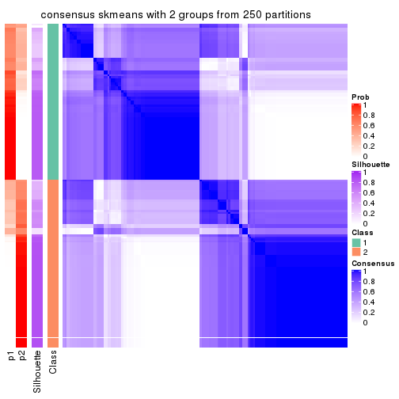
consensus_heatmap(res, k = 3)
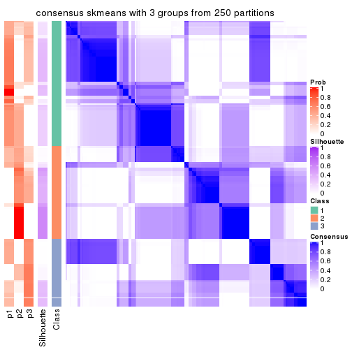
consensus_heatmap(res, k = 4)

consensus_heatmap(res, k = 5)
consensus_heatmap(res, k = 6)
Heatmaps for the membership of samples in all partitions to see how consistent they are:
membership_heatmap(res, k = 2)
membership_heatmap(res, k = 3)
membership_heatmap(res, k = 4)
membership_heatmap(res, k = 5)
membership_heatmap(res, k = 6)
As soon as we have had the classes for columns, we can look for signatures which are significantly different between classes which can be candidate marks for certain classes. Following are the heatmaps for signatures.
Signature heatmaps where rows are scaled:
get_signatures(res, k = 2)
get_signatures(res, k = 3)

get_signatures(res, k = 4)
get_signatures(res, k = 5)
get_signatures(res, k = 6)
Signature heatmaps where rows are not scaled:
get_signatures(res, k = 2, scale_rows = FALSE)
get_signatures(res, k = 3, scale_rows = FALSE)

get_signatures(res, k = 4, scale_rows = FALSE)
get_signatures(res, k = 5, scale_rows = FALSE)
get_signatures(res, k = 6, scale_rows = FALSE)
Compare the overlap of signatures from different k:
compare_signatures(res)
get_signature() returns a data frame invisibly. TO get the list of signatures, the function
call should be assigned to a variable explicitly. In following code, if plot argument is set
to FALSE, no heatmap is plotted while only the differential analysis is performed.
# code only for demonstration
tb = get_signature(res, k = ..., plot = FALSE)
An example of the output of tb is:
#> which_row fdr mean_1 mean_2 scaled_mean_1 scaled_mean_2 km
#> 1 38 0.042760348 8.373488 9.131774 -0.5533452 0.5164555 1
#> 2 40 0.018707592 7.106213 8.469186 -0.6173731 0.5762149 1
#> 3 55 0.019134737 10.221463 11.207825 -0.6159697 0.5749050 1
#> 4 59 0.006059896 5.921854 7.869574 -0.6899429 0.6439467 1
#> 5 60 0.018055526 8.928898 10.211722 -0.6204761 0.5791110 1
#> 6 98 0.009384629 15.714769 14.887706 0.6635654 -0.6193277 2
...
The columns in tb are:
which_row: row indices corresponding to the input matrix.fdr: FDR for the differential test. mean_x: The mean value in group x.scaled_mean_x: The mean value in group x after rows are scaled.km: Row groups if k-means clustering is applied to rows.UMAP plot which shows how samples are separated.
dimension_reduction(res, k = 2, method = "UMAP")
dimension_reduction(res, k = 3, method = "UMAP")
dimension_reduction(res, k = 4, method = "UMAP")
dimension_reduction(res, k = 5, method = "UMAP")
dimension_reduction(res, k = 6, method = "UMAP")
Following heatmap shows how subgroups are split when increasing k:
collect_classes(res)
If matrix rows can be associated to genes, consider to use GO_Enrichment(res,
...) to perform function enrichment for the signature genes.
The object with results only for a single top-value method and a single partition method can be extracted as:
res = res_list["MAD", "pam"]
# you can also extract it by
# res = res_list["MAD:pam"]
A summary of res and all the functions that can be applied to it:
res
#> A 'ConsensusPartition' object with k = 2, 3, 4, 5, 6.
#> On a matrix with 14410 rows and 160 columns.
#> Top rows (1000, 2000, 3000, 4000, 5000) are extracted by 'MAD' method.
#> Subgroups are detected by 'pam' method.
#> Performed in total 1250 partitions by row resampling.
#> Best k for subgroups seems to be 4.
#>
#> Following methods can be applied to this 'ConsensusPartition' object:
#> [1] "cola_report" "collect_classes" "collect_plots"
#> [4] "collect_stats" "colnames" "compare_signatures"
#> [7] "consensus_heatmap" "dimension_reduction" "functional_enrichment"
#> [10] "get_anno_col" "get_anno" "get_classes"
#> [13] "get_consensus" "get_matrix" "get_membership"
#> [16] "get_param" "get_signatures" "get_stats"
#> [19] "is_best_k" "is_stable_k" "membership_heatmap"
#> [22] "ncol" "nrow" "plot_ecdf"
#> [25] "rownames" "select_partition_number" "show"
#> [28] "suggest_best_k" "test_to_known_factors"
collect_plots() function collects all the plots made from res for all k (number of partitions)
into one single page to provide an easy and fast comparison between different k.
collect_plots(res)
The plots are:
k and the heatmap of
predicted classes for each k.k.k.k.All the plots in panels can be made by individual functions and they are plotted later in this section.
select_partition_number() produces several plots showing different
statistics for choosing “optimized” k. There are following statistics:
k;k, the area increased is defined as \(A_k - A_{k-1}\).The detailed explanations of these statistics can be found in the cola vignette.
Generally speaking, lower PAC score, higher mean silhouette score or higher
concordance corresponds to better partition. Rand index and Jaccard index
measure how similar the current partition is compared to partition with k-1.
If they are too similar, we won't accept k is better than k-1.
select_partition_number(res)
The numeric values for all these statistics can be obtained by get_stats().
get_stats(res)
#> k 1-PAC mean_silhouette concordance area_increased Rand Jaccard
#> 2 2 0.378 0.777 0.877 0.4814 0.517 0.517
#> 3 3 0.610 0.733 0.852 0.3388 0.757 0.563
#> 4 4 0.687 0.759 0.884 0.1284 0.872 0.657
#> 5 5 0.665 0.772 0.821 0.0512 0.906 0.690
#> 6 6 0.681 0.615 0.782 0.0467 0.918 0.689
suggest_best_k() suggests the best \(k\) based on these statistics. The rules are as follows:
NA.suggest_best_k(res)
#> [1] 4
Following shows the table of the partitions (You need to click the show/hide
code output link to see it). The membership matrix (columns with name p*)
is inferred by
clue::cl_consensus()
function with the SE method. Basically the value in the membership matrix
represents the probability to belong to a certain group. The finall class
label for an item is determined with the group with highest probability it
belongs to.
In get_classes() function, the entropy is calculated from the membership
matrix and the silhouette score is calculated from the consensus matrix.
cbind(get_classes(res, k = 2), get_membership(res, k = 2))
#> class entropy silhouette p1 p2
#> SRR031811 1 0.0000 0.8774 1.000 0.000
#> SRR031812 1 0.5629 0.8527 0.868 0.132
#> SRR031813 2 0.5178 0.8733 0.116 0.884
#> SRR031814 1 0.7602 0.7939 0.780 0.220
#> SRR031815 2 0.0000 0.8231 0.000 1.000
#> SRR031816 1 0.1184 0.8759 0.984 0.016
#> SRR031817 2 0.5178 0.8733 0.116 0.884
#> SRR031818 1 0.1184 0.8759 0.984 0.016
#> SRR031819 2 0.5178 0.8733 0.116 0.884
#> SRR031820 2 0.5178 0.8733 0.116 0.884
#> SRR031821 1 0.0000 0.8774 1.000 0.000
#> SRR031822 2 0.0000 0.8231 0.000 1.000
#> SRR031823 1 0.0000 0.8774 1.000 0.000
#> SRR031824 2 0.7883 0.7844 0.236 0.764
#> SRR031825 1 0.1414 0.8743 0.980 0.020
#> SRR031826 2 0.5178 0.8733 0.116 0.884
#> SRR031827 1 0.1184 0.8759 0.984 0.016
#> SRR031828 1 0.7745 0.7887 0.772 0.228
#> SRR031829 1 0.0000 0.8774 1.000 0.000
#> SRR031830 2 0.0000 0.8231 0.000 1.000
#> SRR031831 2 0.5178 0.8733 0.116 0.884
#> SRR031832 2 0.5178 0.8733 0.116 0.884
#> SRR031833 1 0.1184 0.8759 0.984 0.016
#> SRR031834 2 0.8016 0.5300 0.244 0.756
#> SRR031835 1 0.5629 0.8527 0.868 0.132
#> SRR031836 2 0.5178 0.8733 0.116 0.884
#> SRR031837 2 0.5178 0.8733 0.116 0.884
#> SRR031838 2 0.5178 0.8733 0.116 0.884
#> SRR031839 2 0.5178 0.8733 0.116 0.884
#> SRR031840 1 0.5178 0.8510 0.884 0.116
#> SRR031841 2 0.1184 0.8325 0.016 0.984
#> SRR031842 2 0.8327 0.7536 0.264 0.736
#> SRR031843 2 0.5178 0.8733 0.116 0.884
#> SRR031844 1 0.2236 0.8681 0.964 0.036
#> SRR031845 1 0.0000 0.8774 1.000 0.000
#> SRR031846 1 0.5629 0.8527 0.868 0.132
#> SRR031847 2 0.5178 0.8733 0.116 0.884
#> SRR031848 2 0.5178 0.8733 0.116 0.884
#> SRR031849 2 0.5178 0.8733 0.116 0.884
#> SRR031850 1 0.0000 0.8774 1.000 0.000
#> SRR031851 1 0.9983 -0.2485 0.524 0.476
#> SRR031852 2 0.1184 0.8193 0.016 0.984
#> SRR031853 2 0.1184 0.8193 0.016 0.984
#> SRR031854 2 0.0000 0.8231 0.000 1.000
#> SRR031855 2 0.7815 0.7881 0.232 0.768
#> SRR031857 1 0.0000 0.8774 1.000 0.000
#> SRR031858 1 0.0000 0.8774 1.000 0.000
#> SRR031859 2 0.9710 0.4913 0.400 0.600
#> SRR031860 2 0.7299 0.8082 0.204 0.796
#> SRR031861 2 0.8661 0.7233 0.288 0.712
#> SRR031862 1 0.7453 0.7895 0.788 0.212
#> SRR031863 1 0.0000 0.8774 1.000 0.000
#> SRR031864 2 0.9881 0.4807 0.436 0.564
#> SRR031865 2 0.5178 0.8733 0.116 0.884
#> SRR031866 2 0.7056 0.6324 0.192 0.808
#> SRR031867 1 0.1184 0.8759 0.984 0.016
#> SRR031868 1 0.1184 0.8759 0.984 0.016
#> SRR031869 2 0.9983 -0.2123 0.476 0.524
#> SRR031870 1 0.1184 0.8759 0.984 0.016
#> SRR031871 1 0.5629 0.8527 0.868 0.132
#> SRR031872 1 0.6247 0.8436 0.844 0.156
#> SRR031873 1 0.5629 0.8527 0.868 0.132
#> SRR031874 2 0.9833 -0.0189 0.424 0.576
#> SRR031875 2 0.5178 0.8733 0.116 0.884
#> SRR031876 1 0.5408 0.8495 0.876 0.124
#> SRR031877 1 0.5178 0.8510 0.884 0.116
#> SRR031878 1 0.0000 0.8774 1.000 0.000
#> SRR031879 2 0.5178 0.8733 0.116 0.884
#> SRR031880 1 0.0000 0.8774 1.000 0.000
#> SRR031881 1 0.0000 0.8774 1.000 0.000
#> SRR031882 2 0.5178 0.8733 0.116 0.884
#> SRR031883 2 0.5178 0.8733 0.116 0.884
#> SRR031884 2 0.5178 0.8733 0.116 0.884
#> SRR031885 2 0.5178 0.8733 0.116 0.884
#> SRR031886 2 0.5178 0.8733 0.116 0.884
#> SRR031887 1 0.5178 0.8510 0.884 0.116
#> SRR031888 1 0.1184 0.8759 0.984 0.016
#> SRR031889 2 0.2043 0.8405 0.032 0.968
#> SRR031890 1 0.5629 0.8527 0.868 0.132
#> SRR031891 1 0.0000 0.8774 1.000 0.000
#> SRR031892 1 0.4562 0.8203 0.904 0.096
#> SRR031893 2 0.1414 0.8192 0.020 0.980
#> SRR031894 2 0.5178 0.8733 0.116 0.884
#> SRR031895 1 0.9044 0.5243 0.680 0.320
#> SRR031896 2 0.5178 0.8733 0.116 0.884
#> SRR031897 1 0.0000 0.8774 1.000 0.000
#> SRR031898 2 0.9358 0.6427 0.352 0.648
#> SRR031899 1 1.0000 -0.1925 0.500 0.500
#> SRR031900 1 0.1184 0.8759 0.984 0.016
#> SRR031901 1 0.1184 0.8759 0.984 0.016
#> SRR031902 1 0.5629 0.8527 0.868 0.132
#> SRR031903 1 0.5629 0.8527 0.868 0.132
#> SRR031904 1 0.1184 0.8759 0.984 0.016
#> SRR031905 1 0.6343 0.8419 0.840 0.160
#> SRR031906 1 0.9775 0.5032 0.588 0.412
#> SRR031907 1 0.4562 0.8593 0.904 0.096
#> SRR031908 2 0.5178 0.8733 0.116 0.884
#> SRR031909 1 0.5294 0.8504 0.880 0.120
#> SRR031910 1 0.8955 0.4573 0.688 0.312
#> SRR031911 2 0.5178 0.8733 0.116 0.884
#> SRR031912 2 0.9963 -0.1707 0.464 0.536
#> SRR031913 1 0.0000 0.8774 1.000 0.000
#> SRR031914 1 0.5178 0.8510 0.884 0.116
#> SRR031915 1 0.1414 0.8771 0.980 0.020
#> SRR031916 1 0.1184 0.8759 0.984 0.016
#> SRR031917 1 0.5178 0.8510 0.884 0.116
#> SRR031918 2 0.9000 0.6538 0.316 0.684
#> SRR031919 1 0.6531 0.8385 0.832 0.168
#> SRR031920 1 0.9815 0.1291 0.580 0.420
#> SRR031921 2 0.5178 0.8733 0.116 0.884
#> SRR031922 1 0.0000 0.8774 1.000 0.000
#> SRR031923 1 0.1184 0.8759 0.984 0.016
#> SRR031924 1 0.8713 0.7126 0.708 0.292
#> SRR031925 1 0.0000 0.8774 1.000 0.000
#> SRR031926 1 0.0000 0.8774 1.000 0.000
#> SRR031927 2 0.5178 0.8733 0.116 0.884
#> SRR031928 1 0.7453 0.7895 0.788 0.212
#> SRR031929 1 0.0000 0.8774 1.000 0.000
#> SRR031930 1 0.7883 0.5459 0.764 0.236
#> SRR031931 2 0.5178 0.8733 0.116 0.884
#> SRR031932 2 0.0000 0.8231 0.000 1.000
#> SRR031933 2 0.9850 0.4950 0.428 0.572
#> SRR031934 1 0.4161 0.8630 0.916 0.084
#> SRR031935 1 0.1184 0.8759 0.984 0.016
#> SRR031936 1 0.5178 0.8510 0.884 0.116
#> SRR031937 1 0.7139 0.8190 0.804 0.196
#> SRR031938 1 0.5178 0.8510 0.884 0.116
#> SRR031939 1 0.9977 -0.1936 0.528 0.472
#> SRR031940 2 0.1184 0.8193 0.016 0.984
#> SRR031941 1 0.0000 0.8774 1.000 0.000
#> SRR031942 1 0.5178 0.8510 0.884 0.116
#> SRR031943 1 0.8386 0.5544 0.732 0.268
#> SRR031944 1 0.1414 0.8770 0.980 0.020
#> SRR031945 1 0.4161 0.8695 0.916 0.084
#> SRR031946 2 1.0000 0.1710 0.500 0.500
#> SRR031947 1 0.1633 0.8778 0.976 0.024
#> SRR031948 1 0.9850 0.4673 0.572 0.428
#> SRR031949 1 1.0000 0.2479 0.504 0.496
#> SRR031950 1 0.0000 0.8774 1.000 0.000
#> SRR031951 1 0.0000 0.8774 1.000 0.000
#> SRR031952 1 0.5178 0.8510 0.884 0.116
#> SRR031953 1 0.5178 0.8510 0.884 0.116
#> SRR031954 1 0.4431 0.8678 0.908 0.092
#> SRR031955 1 0.2236 0.8773 0.964 0.036
#> SRR031956 1 0.4431 0.8608 0.908 0.092
#> SRR031957 1 0.1184 0.8759 0.984 0.016
#> SRR031958 1 0.1184 0.8759 0.984 0.016
#> SRR031959 1 0.0000 0.8774 1.000 0.000
#> SRR031960 1 0.1184 0.8759 0.984 0.016
#> SRR031961 1 0.8763 0.7062 0.704 0.296
#> SRR031962 1 0.5178 0.8510 0.884 0.116
#> SRR031963 1 0.0000 0.8774 1.000 0.000
#> SRR031964 1 0.5178 0.8510 0.884 0.116
#> SRR031965 2 0.8499 0.7509 0.276 0.724
#> SRR031966 2 0.6343 0.8532 0.160 0.840
#> SRR031967 2 0.1184 0.8193 0.016 0.984
#> SRR031968 2 0.0672 0.8216 0.008 0.992
#> SRR031969 2 0.0000 0.8231 0.000 1.000
#> SRR031970 2 0.5629 0.8649 0.132 0.868
#> SRR031971 2 0.0000 0.8231 0.000 1.000
cbind(get_classes(res, k = 3), get_membership(res, k = 3))
#> class entropy silhouette p1 p2 p3
#> SRR031811 2 0.0000 0.886922 0.000 1.000 0.000
#> SRR031812 1 0.5178 0.679725 0.744 0.256 0.000
#> SRR031813 3 0.1860 0.789924 0.052 0.000 0.948
#> SRR031814 1 0.5178 0.826520 0.744 0.000 0.256
#> SRR031815 1 0.3412 0.756340 0.876 0.000 0.124
#> SRR031816 2 0.0237 0.886259 0.000 0.996 0.004
#> SRR031817 3 0.0000 0.809604 0.000 0.000 1.000
#> SRR031818 2 0.1163 0.875561 0.000 0.972 0.028
#> SRR031819 3 0.0000 0.809604 0.000 0.000 1.000
#> SRR031820 3 0.0000 0.809604 0.000 0.000 1.000
#> SRR031821 2 0.0000 0.886922 0.000 1.000 0.000
#> SRR031822 1 0.5178 0.826520 0.744 0.000 0.256
#> SRR031823 2 0.0000 0.886922 0.000 1.000 0.000
#> SRR031824 3 0.8655 0.608739 0.256 0.156 0.588
#> SRR031825 2 0.5404 0.656607 0.256 0.740 0.004
#> SRR031826 3 0.0000 0.809604 0.000 0.000 1.000
#> SRR031827 2 0.0000 0.886922 0.000 1.000 0.000
#> SRR031828 1 0.5178 0.826520 0.744 0.000 0.256
#> SRR031829 2 0.0000 0.886922 0.000 1.000 0.000
#> SRR031830 1 0.3412 0.756340 0.876 0.000 0.124
#> SRR031831 3 0.0000 0.809604 0.000 0.000 1.000
#> SRR031832 3 0.0000 0.809604 0.000 0.000 1.000
#> SRR031833 2 0.0237 0.886259 0.000 0.996 0.004
#> SRR031834 1 0.5178 0.826520 0.744 0.000 0.256
#> SRR031835 1 0.5178 0.679725 0.744 0.256 0.000
#> SRR031836 3 0.0000 0.809604 0.000 0.000 1.000
#> SRR031837 3 0.0000 0.809604 0.000 0.000 1.000
#> SRR031838 3 0.5178 0.699449 0.256 0.000 0.744
#> SRR031839 3 0.0000 0.809604 0.000 0.000 1.000
#> SRR031840 1 0.4887 0.687808 0.772 0.228 0.000
#> SRR031841 3 0.4002 0.610210 0.160 0.000 0.840
#> SRR031842 3 0.8343 0.628334 0.256 0.132 0.612
#> SRR031843 3 0.0000 0.809604 0.000 0.000 1.000
#> SRR031844 2 0.3816 0.771845 0.000 0.852 0.148
#> SRR031845 2 0.0237 0.886267 0.000 0.996 0.004
#> SRR031846 2 0.6235 0.173181 0.436 0.564 0.000
#> SRR031847 3 0.0000 0.809604 0.000 0.000 1.000
#> SRR031848 3 0.0000 0.809604 0.000 0.000 1.000
#> SRR031849 3 0.0000 0.809604 0.000 0.000 1.000
#> SRR031850 2 0.5178 0.661473 0.256 0.744 0.000
#> SRR031851 2 0.9771 -0.041483 0.256 0.436 0.308
#> SRR031852 1 0.5178 0.826520 0.744 0.000 0.256
#> SRR031853 1 0.5178 0.826520 0.744 0.000 0.256
#> SRR031854 1 0.5178 0.826520 0.744 0.000 0.256
#> SRR031855 3 0.6379 0.688776 0.256 0.032 0.712
#> SRR031857 2 0.0000 0.886922 0.000 1.000 0.000
#> SRR031858 2 0.1163 0.876645 0.028 0.972 0.000
#> SRR031859 3 0.9870 0.232641 0.256 0.364 0.380
#> SRR031860 3 0.6016 0.692614 0.256 0.020 0.724
#> SRR031861 3 0.7489 0.665141 0.256 0.080 0.664
#> SRR031862 1 0.5178 0.826520 0.744 0.000 0.256
#> SRR031863 2 0.0000 0.886922 0.000 1.000 0.000
#> SRR031864 3 0.9351 0.521284 0.256 0.228 0.516
#> SRR031865 3 0.0000 0.809604 0.000 0.000 1.000
#> SRR031866 1 0.5178 0.826520 0.744 0.000 0.256
#> SRR031867 2 0.1399 0.877013 0.028 0.968 0.004
#> SRR031868 2 0.3207 0.838566 0.012 0.904 0.084
#> SRR031869 1 0.5178 0.826520 0.744 0.000 0.256
#> SRR031870 2 0.1399 0.877013 0.028 0.968 0.004
#> SRR031871 2 0.5706 0.591789 0.320 0.680 0.000
#> SRR031872 1 0.5619 0.692506 0.744 0.244 0.012
#> SRR031873 1 0.5178 0.679725 0.744 0.256 0.000
#> SRR031874 1 0.5254 0.819003 0.736 0.000 0.264
#> SRR031875 3 0.0000 0.809604 0.000 0.000 1.000
#> SRR031876 1 0.5178 0.679725 0.744 0.256 0.000
#> SRR031877 2 0.0237 0.885748 0.004 0.996 0.000
#> SRR031878 2 0.0000 0.886922 0.000 1.000 0.000
#> SRR031879 3 0.0000 0.809604 0.000 0.000 1.000
#> SRR031880 2 0.0000 0.886922 0.000 1.000 0.000
#> SRR031881 2 0.0000 0.886922 0.000 1.000 0.000
#> SRR031882 3 0.0000 0.809604 0.000 0.000 1.000
#> SRR031883 3 0.0000 0.809604 0.000 0.000 1.000
#> SRR031884 3 0.0000 0.809604 0.000 0.000 1.000
#> SRR031885 3 0.0000 0.809604 0.000 0.000 1.000
#> SRR031886 3 0.0000 0.809604 0.000 0.000 1.000
#> SRR031887 2 0.6126 0.264777 0.400 0.600 0.000
#> SRR031888 2 0.1163 0.876645 0.028 0.972 0.000
#> SRR031889 3 0.6308 -0.380717 0.492 0.000 0.508
#> SRR031890 2 0.4796 0.687929 0.220 0.780 0.000
#> SRR031891 2 0.0000 0.886922 0.000 1.000 0.000
#> SRR031892 2 0.3412 0.799519 0.000 0.876 0.124
#> SRR031893 1 0.5178 0.826520 0.744 0.000 0.256
#> SRR031894 3 0.4887 0.712730 0.228 0.000 0.772
#> SRR031895 1 0.7169 0.466379 0.520 0.024 0.456
#> SRR031896 3 0.0000 0.809604 0.000 0.000 1.000
#> SRR031897 2 0.1163 0.876645 0.028 0.972 0.000
#> SRR031898 3 0.8655 0.608823 0.256 0.156 0.588
#> SRR031899 3 0.5363 0.509625 0.000 0.276 0.724
#> SRR031900 2 0.1163 0.876645 0.028 0.972 0.000
#> SRR031901 2 0.1163 0.876645 0.028 0.972 0.000
#> SRR031902 1 0.6309 -0.299523 0.504 0.496 0.000
#> SRR031903 1 0.5178 0.679725 0.744 0.256 0.000
#> SRR031904 2 0.0892 0.880301 0.000 0.980 0.020
#> SRR031905 1 0.5619 0.692559 0.744 0.244 0.012
#> SRR031906 1 0.5178 0.826520 0.744 0.000 0.256
#> SRR031907 2 0.0000 0.886922 0.000 1.000 0.000
#> SRR031908 3 0.0000 0.809604 0.000 0.000 1.000
#> SRR031909 1 0.5178 0.679725 0.744 0.256 0.000
#> SRR031910 2 0.6295 0.111738 0.000 0.528 0.472
#> SRR031911 3 0.0000 0.809604 0.000 0.000 1.000
#> SRR031912 1 0.5797 0.799786 0.712 0.008 0.280
#> SRR031913 2 0.0000 0.886922 0.000 1.000 0.000
#> SRR031914 1 0.5529 0.616412 0.704 0.296 0.000
#> SRR031915 2 0.0237 0.886259 0.000 0.996 0.004
#> SRR031916 2 0.0747 0.882319 0.000 0.984 0.016
#> SRR031917 2 0.0000 0.886922 0.000 1.000 0.000
#> SRR031918 3 0.3941 0.659043 0.000 0.156 0.844
#> SRR031919 2 0.6140 0.253216 0.404 0.596 0.000
#> SRR031920 3 0.6215 0.211510 0.000 0.428 0.572
#> SRR031921 3 0.0000 0.809604 0.000 0.000 1.000
#> SRR031922 2 0.1163 0.876645 0.028 0.972 0.000
#> SRR031923 2 0.5178 0.661473 0.256 0.744 0.000
#> SRR031924 1 0.5178 0.826520 0.744 0.000 0.256
#> SRR031925 2 0.0000 0.886922 0.000 1.000 0.000
#> SRR031926 2 0.1163 0.876645 0.028 0.972 0.000
#> SRR031927 3 0.0000 0.809604 0.000 0.000 1.000
#> SRR031928 1 0.5178 0.826520 0.744 0.000 0.256
#> SRR031929 2 0.0000 0.886922 0.000 1.000 0.000
#> SRR031930 2 0.9045 0.316779 0.256 0.552 0.192
#> SRR031931 3 0.0237 0.808252 0.004 0.000 0.996
#> SRR031932 1 0.5178 0.826520 0.744 0.000 0.256
#> SRR031933 3 0.9866 0.254087 0.256 0.356 0.388
#> SRR031934 2 0.2066 0.856711 0.000 0.940 0.060
#> SRR031935 2 0.0747 0.882357 0.000 0.984 0.016
#> SRR031936 1 0.4974 0.679081 0.764 0.236 0.000
#> SRR031937 2 0.6168 0.229066 0.412 0.588 0.000
#> SRR031938 2 0.0000 0.886922 0.000 1.000 0.000
#> SRR031939 2 0.8737 0.195052 0.124 0.536 0.340
#> SRR031940 1 0.5178 0.826520 0.744 0.000 0.256
#> SRR031941 2 0.0000 0.886922 0.000 1.000 0.000
#> SRR031942 2 0.0000 0.886922 0.000 1.000 0.000
#> SRR031943 2 0.6045 0.376065 0.000 0.620 0.380
#> SRR031944 2 0.0747 0.882299 0.000 0.984 0.016
#> SRR031945 2 0.0983 0.881087 0.004 0.980 0.016
#> SRR031946 3 0.5497 0.499122 0.000 0.292 0.708
#> SRR031947 2 0.0237 0.886259 0.000 0.996 0.004
#> SRR031948 1 0.5178 0.826520 0.744 0.000 0.256
#> SRR031949 1 0.5178 0.826520 0.744 0.000 0.256
#> SRR031950 2 0.0000 0.886922 0.000 1.000 0.000
#> SRR031951 2 0.0000 0.886922 0.000 1.000 0.000
#> SRR031952 2 0.2796 0.816187 0.092 0.908 0.000
#> SRR031953 2 0.6299 -0.000365 0.476 0.524 0.000
#> SRR031954 2 0.1015 0.881157 0.008 0.980 0.012
#> SRR031955 2 0.1964 0.858659 0.000 0.944 0.056
#> SRR031956 2 0.0000 0.886922 0.000 1.000 0.000
#> SRR031957 2 0.1031 0.878889 0.000 0.976 0.024
#> SRR031958 2 0.0000 0.886922 0.000 1.000 0.000
#> SRR031959 2 0.0424 0.885098 0.000 0.992 0.008
#> SRR031960 2 0.0000 0.886922 0.000 1.000 0.000
#> SRR031961 1 0.6562 0.800129 0.744 0.072 0.184
#> SRR031962 2 0.5926 0.380732 0.356 0.644 0.000
#> SRR031963 2 0.0000 0.886922 0.000 1.000 0.000
#> SRR031964 2 0.0747 0.880024 0.016 0.984 0.000
#> SRR031965 3 0.9006 0.578317 0.256 0.188 0.556
#> SRR031966 3 0.7639 0.660144 0.256 0.088 0.656
#> SRR031967 1 0.5178 0.826520 0.744 0.000 0.256
#> SRR031968 1 0.5178 0.826520 0.744 0.000 0.256
#> SRR031969 1 0.4750 0.806641 0.784 0.000 0.216
#> SRR031970 3 0.5881 0.694269 0.256 0.016 0.728
#> SRR031971 1 0.3412 0.756340 0.876 0.000 0.124
cbind(get_classes(res, k = 4), get_membership(res, k = 4))
#> class entropy silhouette p1 p2 p3 p4
#> SRR031811 4 0.2868 0.7742 0.000 0.136 0.000 0.864
#> SRR031812 1 0.0000 0.9371 1.000 0.000 0.000 0.000
#> SRR031813 3 0.0592 0.9083 0.000 0.016 0.984 0.000
#> SRR031814 1 0.0469 0.9387 0.988 0.000 0.012 0.000
#> SRR031815 1 0.0469 0.9355 0.988 0.012 0.000 0.000
#> SRR031816 4 0.3400 0.7489 0.000 0.180 0.000 0.820
#> SRR031817 3 0.0000 0.9187 0.000 0.000 1.000 0.000
#> SRR031818 4 0.6655 0.5327 0.000 0.184 0.192 0.624
#> SRR031819 3 0.0000 0.9187 0.000 0.000 1.000 0.000
#> SRR031820 3 0.0000 0.9187 0.000 0.000 1.000 0.000
#> SRR031821 4 0.0592 0.7990 0.000 0.016 0.000 0.984
#> SRR031822 1 0.0469 0.9387 0.988 0.000 0.012 0.000
#> SRR031823 4 0.0000 0.8022 0.000 0.000 0.000 1.000
#> SRR031824 2 0.0000 0.7888 0.000 1.000 0.000 0.000
#> SRR031825 2 0.0592 0.7849 0.000 0.984 0.000 0.016
#> SRR031826 3 0.0336 0.9142 0.000 0.008 0.992 0.000
#> SRR031827 4 0.3486 0.7426 0.000 0.188 0.000 0.812
#> SRR031828 1 0.0469 0.9387 0.988 0.000 0.012 0.000
#> SRR031829 4 0.3942 0.6964 0.000 0.236 0.000 0.764
#> SRR031830 1 0.0469 0.9355 0.988 0.012 0.000 0.000
#> SRR031831 3 0.0000 0.9187 0.000 0.000 1.000 0.000
#> SRR031832 3 0.0000 0.9187 0.000 0.000 1.000 0.000
#> SRR031833 4 0.3172 0.7616 0.000 0.160 0.000 0.840
#> SRR031834 1 0.0000 0.9371 1.000 0.000 0.000 0.000
#> SRR031835 1 0.0000 0.9371 1.000 0.000 0.000 0.000
#> SRR031836 3 0.0188 0.9160 0.004 0.000 0.996 0.000
#> SRR031837 3 0.0000 0.9187 0.000 0.000 1.000 0.000
#> SRR031838 3 0.4898 0.3338 0.000 0.416 0.584 0.000
#> SRR031839 3 0.0000 0.9187 0.000 0.000 1.000 0.000
#> SRR031840 1 0.0469 0.9356 0.988 0.000 0.000 0.012
#> SRR031841 3 0.3266 0.7193 0.168 0.000 0.832 0.000
#> SRR031842 2 0.0000 0.7888 0.000 1.000 0.000 0.000
#> SRR031843 3 0.0000 0.9187 0.000 0.000 1.000 0.000
#> SRR031844 4 0.4305 0.7442 0.012 0.020 0.160 0.808
#> SRR031845 4 0.1059 0.7969 0.012 0.016 0.000 0.972
#> SRR031846 1 0.5149 0.3524 0.648 0.016 0.000 0.336
#> SRR031847 3 0.0000 0.9187 0.000 0.000 1.000 0.000
#> SRR031848 3 0.0000 0.9187 0.000 0.000 1.000 0.000
#> SRR031849 3 0.0000 0.9187 0.000 0.000 1.000 0.000
#> SRR031850 2 0.3024 0.7412 0.000 0.852 0.000 0.148
#> SRR031851 2 0.3074 0.7390 0.000 0.848 0.000 0.152
#> SRR031852 1 0.0469 0.9387 0.988 0.000 0.012 0.000
#> SRR031853 1 0.0469 0.9387 0.988 0.000 0.012 0.000
#> SRR031854 1 0.0469 0.9387 0.988 0.000 0.012 0.000
#> SRR031855 2 0.3649 0.6012 0.000 0.796 0.204 0.000
#> SRR031857 4 0.0000 0.8022 0.000 0.000 0.000 1.000
#> SRR031858 2 0.4898 0.1804 0.000 0.584 0.000 0.416
#> SRR031859 2 0.0000 0.7888 0.000 1.000 0.000 0.000
#> SRR031860 2 0.0000 0.7888 0.000 1.000 0.000 0.000
#> SRR031861 2 0.0000 0.7888 0.000 1.000 0.000 0.000
#> SRR031862 1 0.0000 0.9371 1.000 0.000 0.000 0.000
#> SRR031863 4 0.0921 0.8009 0.000 0.028 0.000 0.972
#> SRR031864 2 0.2408 0.7628 0.000 0.896 0.000 0.104
#> SRR031865 3 0.0336 0.9130 0.008 0.000 0.992 0.000
#> SRR031866 1 0.0469 0.9387 0.988 0.000 0.012 0.000
#> SRR031867 2 0.4948 0.1241 0.000 0.560 0.000 0.440
#> SRR031868 4 0.5252 0.5378 0.000 0.020 0.336 0.644
#> SRR031869 1 0.0000 0.9371 1.000 0.000 0.000 0.000
#> SRR031870 2 0.4955 0.1106 0.000 0.556 0.000 0.444
#> SRR031871 4 0.6973 0.4451 0.196 0.220 0.000 0.584
#> SRR031872 1 0.0469 0.9356 0.988 0.000 0.000 0.012
#> SRR031873 1 0.0469 0.9356 0.988 0.000 0.000 0.012
#> SRR031874 1 0.4121 0.7328 0.796 0.000 0.020 0.184
#> SRR031875 3 0.0000 0.9187 0.000 0.000 1.000 0.000
#> SRR031876 1 0.2760 0.8201 0.872 0.000 0.000 0.128
#> SRR031877 4 0.1174 0.8042 0.012 0.020 0.000 0.968
#> SRR031878 4 0.0000 0.8022 0.000 0.000 0.000 1.000
#> SRR031879 3 0.0000 0.9187 0.000 0.000 1.000 0.000
#> SRR031880 4 0.2408 0.7850 0.000 0.104 0.000 0.896
#> SRR031881 4 0.0592 0.8017 0.000 0.016 0.000 0.984
#> SRR031882 3 0.0469 0.9095 0.012 0.000 0.988 0.000
#> SRR031883 3 0.0000 0.9187 0.000 0.000 1.000 0.000
#> SRR031884 3 0.0000 0.9187 0.000 0.000 1.000 0.000
#> SRR031885 3 0.0000 0.9187 0.000 0.000 1.000 0.000
#> SRR031886 3 0.0000 0.9187 0.000 0.000 1.000 0.000
#> SRR031887 4 0.4855 0.4271 0.400 0.000 0.000 0.600
#> SRR031888 2 0.4941 0.1359 0.000 0.564 0.000 0.436
#> SRR031889 1 0.4164 0.6275 0.736 0.000 0.264 0.000
#> SRR031890 4 0.5671 0.4370 0.400 0.028 0.000 0.572
#> SRR031891 4 0.0657 0.8006 0.012 0.004 0.000 0.984
#> SRR031892 4 0.3982 0.7514 0.012 0.012 0.152 0.824
#> SRR031893 1 0.0469 0.9387 0.988 0.000 0.012 0.000
#> SRR031894 3 0.0707 0.9049 0.000 0.020 0.980 0.000
#> SRR031895 1 0.5245 0.6906 0.748 0.012 0.196 0.044
#> SRR031896 3 0.0000 0.9187 0.000 0.000 1.000 0.000
#> SRR031897 4 0.3837 0.5779 0.000 0.224 0.000 0.776
#> SRR031898 2 0.3074 0.7390 0.000 0.848 0.000 0.152
#> SRR031899 3 0.5244 0.2647 0.012 0.000 0.600 0.388
#> SRR031900 2 0.4948 0.1241 0.000 0.560 0.000 0.440
#> SRR031901 2 0.4985 0.0195 0.000 0.532 0.000 0.468
#> SRR031902 2 0.5298 0.5594 0.048 0.708 0.000 0.244
#> SRR031903 1 0.0469 0.9356 0.988 0.000 0.000 0.012
#> SRR031904 4 0.3734 0.7754 0.000 0.044 0.108 0.848
#> SRR031905 1 0.0188 0.9376 0.996 0.000 0.000 0.004
#> SRR031906 1 0.0000 0.9371 1.000 0.000 0.000 0.000
#> SRR031907 4 0.2081 0.7948 0.000 0.084 0.000 0.916
#> SRR031908 3 0.0000 0.9187 0.000 0.000 1.000 0.000
#> SRR031909 1 0.1389 0.9022 0.952 0.000 0.000 0.048
#> SRR031910 4 0.5256 0.4235 0.012 0.000 0.392 0.596
#> SRR031911 3 0.0000 0.9187 0.000 0.000 1.000 0.000
#> SRR031912 1 0.3658 0.7893 0.836 0.000 0.020 0.144
#> SRR031913 4 0.1211 0.8011 0.000 0.040 0.000 0.960
#> SRR031914 1 0.1302 0.9109 0.956 0.000 0.000 0.044
#> SRR031915 4 0.3074 0.7658 0.000 0.152 0.000 0.848
#> SRR031916 4 0.4129 0.7703 0.012 0.036 0.116 0.836
#> SRR031917 4 0.0469 0.8013 0.012 0.000 0.000 0.988
#> SRR031918 3 0.4420 0.6162 0.012 0.000 0.748 0.240
#> SRR031919 4 0.4907 0.3969 0.420 0.000 0.000 0.580
#> SRR031920 3 0.5407 -0.0998 0.012 0.000 0.504 0.484
#> SRR031921 3 0.0000 0.9187 0.000 0.000 1.000 0.000
#> SRR031922 4 0.4790 0.4317 0.000 0.380 0.000 0.620
#> SRR031923 2 0.0592 0.7849 0.000 0.984 0.000 0.016
#> SRR031924 1 0.0469 0.9387 0.988 0.000 0.012 0.000
#> SRR031925 4 0.0000 0.8022 0.000 0.000 0.000 1.000
#> SRR031926 4 0.3764 0.5929 0.000 0.216 0.000 0.784
#> SRR031927 3 0.0000 0.9187 0.000 0.000 1.000 0.000
#> SRR031928 1 0.0469 0.9387 0.988 0.000 0.012 0.000
#> SRR031929 4 0.1302 0.8003 0.000 0.044 0.000 0.956
#> SRR031930 2 0.0817 0.7877 0.000 0.976 0.000 0.024
#> SRR031931 3 0.0336 0.9142 0.000 0.008 0.992 0.000
#> SRR031932 1 0.0469 0.9387 0.988 0.000 0.012 0.000
#> SRR031933 2 0.1474 0.7819 0.000 0.948 0.000 0.052
#> SRR031934 4 0.5073 0.6228 0.200 0.000 0.056 0.744
#> SRR031935 4 0.3898 0.7743 0.012 0.136 0.016 0.836
#> SRR031936 1 0.1174 0.9265 0.968 0.012 0.000 0.020
#> SRR031937 4 0.4955 0.3314 0.444 0.000 0.000 0.556
#> SRR031938 4 0.0657 0.8024 0.012 0.004 0.000 0.984
#> SRR031939 2 0.3978 0.7256 0.000 0.836 0.108 0.056
#> SRR031940 1 0.0469 0.9387 0.988 0.000 0.012 0.000
#> SRR031941 4 0.0000 0.8022 0.000 0.000 0.000 1.000
#> SRR031942 4 0.1174 0.8042 0.012 0.020 0.000 0.968
#> SRR031943 4 0.5110 0.5111 0.012 0.000 0.352 0.636
#> SRR031944 4 0.3828 0.7640 0.008 0.020 0.132 0.840
#> SRR031945 4 0.4161 0.7705 0.112 0.012 0.040 0.836
#> SRR031946 3 0.5244 0.2652 0.012 0.000 0.600 0.388
#> SRR031947 4 0.3074 0.7658 0.000 0.152 0.000 0.848
#> SRR031948 1 0.0000 0.9371 1.000 0.000 0.000 0.000
#> SRR031949 1 0.0469 0.9387 0.988 0.000 0.012 0.000
#> SRR031950 4 0.1389 0.7916 0.000 0.048 0.000 0.952
#> SRR031951 4 0.0592 0.7990 0.000 0.016 0.000 0.984
#> SRR031952 4 0.2760 0.7603 0.128 0.000 0.000 0.872
#> SRR031953 1 0.3975 0.6364 0.760 0.000 0.000 0.240
#> SRR031954 4 0.4337 0.7769 0.092 0.020 0.052 0.836
#> SRR031955 4 0.3658 0.7590 0.000 0.020 0.144 0.836
#> SRR031956 4 0.0592 0.8039 0.000 0.016 0.000 0.984
#> SRR031957 4 0.3653 0.7684 0.000 0.028 0.128 0.844
#> SRR031958 4 0.4746 0.4746 0.000 0.368 0.000 0.632
#> SRR031959 4 0.0000 0.8022 0.000 0.000 0.000 1.000
#> SRR031960 4 0.4746 0.4746 0.000 0.368 0.000 0.632
#> SRR031961 1 0.2760 0.8201 0.872 0.000 0.000 0.128
#> SRR031962 4 0.4697 0.5204 0.356 0.000 0.000 0.644
#> SRR031963 4 0.0592 0.7990 0.000 0.016 0.000 0.984
#> SRR031964 4 0.2647 0.7655 0.120 0.000 0.000 0.880
#> SRR031965 2 0.0707 0.7878 0.000 0.980 0.000 0.020
#> SRR031966 2 0.2647 0.7546 0.000 0.880 0.000 0.120
#> SRR031967 1 0.0469 0.9387 0.988 0.000 0.012 0.000
#> SRR031968 1 0.0469 0.9387 0.988 0.000 0.012 0.000
#> SRR031969 1 0.0657 0.9353 0.984 0.012 0.004 0.000
#> SRR031970 2 0.0707 0.7834 0.000 0.980 0.020 0.000
#> SRR031971 1 0.0707 0.9318 0.980 0.020 0.000 0.000
cbind(get_classes(res, k = 5), get_membership(res, k = 5))
#> class entropy silhouette p1 p2 p3 p4 p5
#> SRR031811 4 0.2179 0.768 0.000 0.112 0.000 0.888 0.000
#> SRR031812 1 0.1430 0.872 0.944 0.000 0.000 0.004 0.052
#> SRR031813 3 0.0000 0.986 0.000 0.000 1.000 0.000 0.000
#> SRR031814 1 0.1484 0.874 0.944 0.000 0.008 0.048 0.000
#> SRR031815 1 0.1341 0.871 0.944 0.056 0.000 0.000 0.000
#> SRR031816 4 0.2891 0.754 0.000 0.176 0.000 0.824 0.000
#> SRR031817 3 0.0000 0.986 0.000 0.000 1.000 0.000 0.000
#> SRR031818 4 0.5039 0.686 0.000 0.184 0.116 0.700 0.000
#> SRR031819 3 0.0000 0.986 0.000 0.000 1.000 0.000 0.000
#> SRR031820 3 0.0000 0.986 0.000 0.000 1.000 0.000 0.000
#> SRR031821 4 0.0404 0.761 0.000 0.012 0.000 0.988 0.000
#> SRR031822 1 0.1341 0.868 0.944 0.000 0.056 0.000 0.000
#> SRR031823 4 0.0162 0.762 0.000 0.004 0.000 0.996 0.000
#> SRR031824 2 0.0162 0.880 0.000 0.996 0.000 0.004 0.000
#> SRR031825 2 0.0404 0.876 0.000 0.988 0.000 0.012 0.000
#> SRR031826 3 0.0000 0.986 0.000 0.000 1.000 0.000 0.000
#> SRR031827 4 0.3003 0.750 0.000 0.188 0.000 0.812 0.000
#> SRR031828 1 0.1106 0.881 0.964 0.000 0.012 0.024 0.000
#> SRR031829 4 0.3700 0.725 0.000 0.240 0.000 0.752 0.008
#> SRR031830 1 0.1341 0.871 0.944 0.056 0.000 0.000 0.000
#> SRR031831 3 0.0000 0.986 0.000 0.000 1.000 0.000 0.000
#> SRR031832 3 0.0000 0.986 0.000 0.000 1.000 0.000 0.000
#> SRR031833 4 0.2732 0.757 0.000 0.160 0.000 0.840 0.000
#> SRR031834 1 0.1484 0.873 0.944 0.000 0.008 0.000 0.048
#> SRR031835 1 0.1484 0.874 0.944 0.000 0.000 0.008 0.048
#> SRR031836 5 0.4201 0.531 0.000 0.000 0.408 0.000 0.592
#> SRR031837 3 0.0000 0.986 0.000 0.000 1.000 0.000 0.000
#> SRR031838 2 0.4161 0.293 0.000 0.608 0.392 0.000 0.000
#> SRR031839 3 0.0000 0.986 0.000 0.000 1.000 0.000 0.000
#> SRR031840 1 0.3281 0.828 0.848 0.000 0.000 0.060 0.092
#> SRR031841 3 0.2732 0.691 0.160 0.000 0.840 0.000 0.000
#> SRR031842 2 0.0162 0.880 0.000 0.996 0.000 0.004 0.000
#> SRR031843 3 0.0000 0.986 0.000 0.000 1.000 0.000 0.000
#> SRR031844 5 0.6539 0.762 0.040 0.000 0.184 0.176 0.600
#> SRR031845 5 0.4108 0.578 0.000 0.008 0.000 0.308 0.684
#> SRR031846 4 0.6070 0.133 0.436 0.000 0.000 0.444 0.120
#> SRR031847 3 0.0000 0.986 0.000 0.000 1.000 0.000 0.000
#> SRR031848 5 0.4283 0.427 0.000 0.000 0.456 0.000 0.544
#> SRR031849 3 0.0000 0.986 0.000 0.000 1.000 0.000 0.000
#> SRR031850 2 0.3791 0.787 0.000 0.812 0.000 0.112 0.076
#> SRR031851 2 0.2848 0.800 0.000 0.840 0.000 0.156 0.004
#> SRR031852 1 0.1908 0.866 0.908 0.000 0.000 0.000 0.092
#> SRR031853 1 0.1908 0.866 0.908 0.000 0.000 0.000 0.092
#> SRR031854 1 0.1478 0.874 0.936 0.000 0.000 0.000 0.064
#> SRR031855 2 0.0404 0.876 0.000 0.988 0.012 0.000 0.000
#> SRR031857 4 0.0162 0.762 0.000 0.004 0.000 0.996 0.000
#> SRR031858 4 0.6002 0.446 0.000 0.392 0.000 0.492 0.116
#> SRR031859 2 0.0162 0.880 0.000 0.996 0.000 0.004 0.000
#> SRR031860 2 0.0162 0.880 0.000 0.996 0.000 0.004 0.000
#> SRR031861 2 0.0162 0.880 0.000 0.996 0.000 0.004 0.000
#> SRR031862 1 0.1197 0.877 0.952 0.000 0.000 0.000 0.048
#> SRR031863 4 0.2304 0.753 0.000 0.008 0.000 0.892 0.100
#> SRR031864 2 0.3697 0.794 0.000 0.820 0.000 0.080 0.100
#> SRR031865 3 0.0000 0.986 0.000 0.000 1.000 0.000 0.000
#> SRR031866 1 0.2966 0.830 0.816 0.000 0.000 0.000 0.184
#> SRR031867 4 0.5968 0.480 0.000 0.372 0.000 0.512 0.116
#> SRR031868 4 0.3684 0.564 0.000 0.000 0.280 0.720 0.000
#> SRR031869 1 0.1484 0.873 0.944 0.000 0.008 0.000 0.048
#> SRR031870 4 0.5960 0.488 0.000 0.368 0.000 0.516 0.116
#> SRR031871 4 0.5197 0.514 0.316 0.064 0.000 0.620 0.000
#> SRR031872 1 0.1341 0.872 0.944 0.000 0.000 0.056 0.000
#> SRR031873 1 0.1341 0.872 0.944 0.000 0.000 0.056 0.000
#> SRR031874 5 0.5965 0.428 0.276 0.000 0.012 0.112 0.600
#> SRR031875 3 0.0000 0.986 0.000 0.000 1.000 0.000 0.000
#> SRR031876 1 0.4417 0.719 0.760 0.000 0.000 0.092 0.148
#> SRR031877 4 0.4182 0.456 0.000 0.000 0.000 0.600 0.400
#> SRR031878 4 0.2020 0.755 0.000 0.000 0.000 0.900 0.100
#> SRR031879 3 0.0000 0.986 0.000 0.000 1.000 0.000 0.000
#> SRR031880 4 0.1851 0.770 0.000 0.088 0.000 0.912 0.000
#> SRR031881 4 0.0290 0.761 0.000 0.008 0.000 0.992 0.000
#> SRR031882 3 0.1197 0.909 0.000 0.000 0.952 0.000 0.048
#> SRR031883 3 0.0000 0.986 0.000 0.000 1.000 0.000 0.000
#> SRR031884 3 0.0000 0.986 0.000 0.000 1.000 0.000 0.000
#> SRR031885 3 0.0000 0.986 0.000 0.000 1.000 0.000 0.000
#> SRR031886 3 0.0000 0.986 0.000 0.000 1.000 0.000 0.000
#> SRR031887 4 0.5569 0.484 0.320 0.000 0.000 0.588 0.092
#> SRR031888 4 0.4150 0.577 0.000 0.388 0.000 0.612 0.000
#> SRR031889 1 0.3636 0.593 0.728 0.000 0.272 0.000 0.000
#> SRR031890 4 0.5661 0.639 0.144 0.004 0.000 0.644 0.208
#> SRR031891 5 0.3983 0.565 0.000 0.000 0.000 0.340 0.660
#> SRR031892 5 0.6695 0.759 0.060 0.000 0.176 0.164 0.600
#> SRR031893 1 0.1410 0.875 0.940 0.000 0.000 0.000 0.060
#> SRR031894 3 0.0290 0.974 0.000 0.008 0.992 0.000 0.000
#> SRR031895 1 0.5544 0.597 0.668 0.008 0.192 0.132 0.000
#> SRR031896 3 0.0000 0.986 0.000 0.000 1.000 0.000 0.000
#> SRR031897 4 0.1671 0.770 0.000 0.076 0.000 0.924 0.000
#> SRR031898 2 0.2732 0.799 0.000 0.840 0.000 0.160 0.000
#> SRR031899 5 0.5778 0.762 0.000 0.000 0.280 0.128 0.592
#> SRR031900 4 0.5968 0.480 0.000 0.372 0.000 0.512 0.116
#> SRR031901 4 0.5912 0.522 0.000 0.348 0.000 0.536 0.116
#> SRR031902 2 0.4602 0.576 0.052 0.708 0.000 0.240 0.000
#> SRR031903 1 0.1341 0.872 0.944 0.000 0.000 0.056 0.000
#> SRR031904 4 0.3193 0.714 0.000 0.028 0.132 0.840 0.000
#> SRR031905 1 0.1549 0.877 0.944 0.000 0.000 0.040 0.016
#> SRR031906 1 0.1484 0.873 0.944 0.000 0.008 0.000 0.048
#> SRR031907 4 0.2230 0.768 0.000 0.116 0.000 0.884 0.000
#> SRR031908 3 0.0000 0.986 0.000 0.000 1.000 0.000 0.000
#> SRR031909 1 0.3764 0.786 0.800 0.000 0.000 0.044 0.156
#> SRR031910 5 0.5740 0.769 0.000 0.000 0.272 0.128 0.600
#> SRR031911 3 0.0000 0.986 0.000 0.000 1.000 0.000 0.000
#> SRR031912 5 0.5206 0.529 0.216 0.000 0.004 0.096 0.684
#> SRR031913 4 0.2020 0.755 0.000 0.000 0.000 0.900 0.100
#> SRR031914 1 0.4158 0.768 0.784 0.000 0.000 0.124 0.092
#> SRR031915 4 0.2732 0.757 0.000 0.160 0.000 0.840 0.000
#> SRR031916 4 0.4250 0.674 0.000 0.020 0.140 0.792 0.048
#> SRR031917 4 0.2719 0.726 0.000 0.004 0.000 0.852 0.144
#> SRR031918 5 0.5981 0.609 0.000 0.000 0.404 0.112 0.484
#> SRR031919 4 0.6124 0.393 0.336 0.000 0.000 0.520 0.144
#> SRR031920 5 0.5740 0.769 0.000 0.000 0.272 0.128 0.600
#> SRR031921 3 0.0000 0.986 0.000 0.000 1.000 0.000 0.000
#> SRR031922 4 0.5167 0.695 0.000 0.200 0.000 0.684 0.116
#> SRR031923 2 0.0404 0.876 0.000 0.988 0.000 0.012 0.000
#> SRR031924 1 0.1410 0.875 0.940 0.000 0.000 0.000 0.060
#> SRR031925 4 0.0162 0.762 0.000 0.004 0.000 0.996 0.000
#> SRR031926 4 0.1608 0.769 0.000 0.072 0.000 0.928 0.000
#> SRR031927 3 0.0000 0.986 0.000 0.000 1.000 0.000 0.000
#> SRR031928 1 0.1410 0.875 0.940 0.000 0.000 0.000 0.060
#> SRR031929 4 0.2304 0.753 0.000 0.008 0.000 0.892 0.100
#> SRR031930 2 0.2179 0.844 0.000 0.896 0.000 0.004 0.100
#> SRR031931 3 0.0000 0.986 0.000 0.000 1.000 0.000 0.000
#> SRR031932 1 0.2966 0.830 0.816 0.000 0.000 0.000 0.184
#> SRR031933 2 0.1671 0.851 0.000 0.924 0.000 0.076 0.000
#> SRR031934 4 0.4350 0.699 0.120 0.000 0.020 0.792 0.068
#> SRR031935 4 0.4054 0.752 0.000 0.144 0.016 0.800 0.040
#> SRR031936 1 0.4016 0.791 0.796 0.000 0.000 0.112 0.092
#> SRR031937 4 0.6215 0.357 0.348 0.000 0.000 0.500 0.152
#> SRR031938 4 0.2763 0.725 0.000 0.004 0.000 0.848 0.148
#> SRR031939 2 0.3035 0.777 0.000 0.856 0.112 0.032 0.000
#> SRR031940 1 0.1908 0.866 0.908 0.000 0.000 0.000 0.092
#> SRR031941 4 0.0162 0.762 0.000 0.004 0.000 0.996 0.000
#> SRR031942 4 0.4307 0.188 0.000 0.000 0.000 0.504 0.496
#> SRR031943 5 0.5758 0.770 0.000 0.000 0.268 0.132 0.600
#> SRR031944 4 0.3967 0.723 0.004 0.000 0.088 0.808 0.100
#> SRR031945 4 0.5335 0.663 0.124 0.000 0.028 0.720 0.128
#> SRR031946 5 0.5740 0.769 0.000 0.000 0.272 0.128 0.600
#> SRR031947 4 0.2732 0.757 0.000 0.160 0.000 0.840 0.000
#> SRR031948 1 0.1502 0.871 0.940 0.000 0.000 0.004 0.056
#> SRR031949 1 0.1908 0.866 0.908 0.000 0.000 0.000 0.092
#> SRR031950 4 0.1877 0.757 0.000 0.012 0.000 0.924 0.064
#> SRR031951 4 0.1195 0.760 0.000 0.012 0.000 0.960 0.028
#> SRR031952 4 0.2844 0.750 0.028 0.004 0.000 0.876 0.092
#> SRR031953 1 0.5599 0.357 0.580 0.000 0.000 0.328 0.092
#> SRR031954 4 0.5409 0.666 0.108 0.000 0.044 0.724 0.124
#> SRR031955 4 0.3532 0.730 0.000 0.000 0.092 0.832 0.076
#> SRR031956 4 0.0000 0.763 0.000 0.000 0.000 1.000 0.000
#> SRR031957 4 0.3238 0.711 0.000 0.028 0.136 0.836 0.000
#> SRR031958 4 0.4101 0.598 0.000 0.372 0.000 0.628 0.000
#> SRR031959 4 0.0566 0.759 0.000 0.004 0.000 0.984 0.012
#> SRR031960 4 0.4101 0.598 0.000 0.372 0.000 0.628 0.000
#> SRR031961 1 0.3269 0.783 0.848 0.000 0.000 0.096 0.056
#> SRR031962 4 0.5264 0.564 0.256 0.000 0.000 0.652 0.092
#> SRR031963 4 0.0566 0.761 0.000 0.012 0.000 0.984 0.004
#> SRR031964 4 0.2756 0.751 0.024 0.004 0.000 0.880 0.092
#> SRR031965 2 0.0162 0.880 0.000 0.996 0.000 0.000 0.004
#> SRR031966 2 0.1851 0.844 0.000 0.912 0.000 0.088 0.000
#> SRR031967 1 0.1908 0.866 0.908 0.000 0.000 0.000 0.092
#> SRR031968 1 0.1908 0.866 0.908 0.000 0.000 0.000 0.092
#> SRR031969 1 0.2983 0.865 0.880 0.012 0.060 0.000 0.048
#> SRR031970 2 0.0162 0.879 0.000 0.996 0.004 0.000 0.000
#> SRR031971 1 0.2863 0.848 0.876 0.064 0.060 0.000 0.000
cbind(get_classes(res, k = 6), get_membership(res, k = 6))
#> class entropy silhouette p1 p2 p3 p4 p5 p6
#> SRR031811 4 0.1663 0.7660 0.000 0.088 0.000 0.912 0.000 0.000
#> SRR031812 1 0.4930 0.1179 0.488 0.000 0.000 0.044 0.008 0.460
#> SRR031813 3 0.0713 0.9484 0.000 0.028 0.972 0.000 0.000 0.000
#> SRR031814 1 0.4930 0.0859 0.488 0.000 0.044 0.008 0.000 0.460
#> SRR031815 1 0.4806 0.0646 0.488 0.052 0.000 0.000 0.000 0.460
#> SRR031816 4 0.2664 0.7542 0.000 0.184 0.000 0.816 0.000 0.000
#> SRR031817 3 0.0000 0.9855 0.000 0.000 1.000 0.000 0.000 0.000
#> SRR031818 4 0.4235 0.7219 0.000 0.192 0.084 0.724 0.000 0.000
#> SRR031819 3 0.0000 0.9855 0.000 0.000 1.000 0.000 0.000 0.000
#> SRR031820 3 0.0000 0.9855 0.000 0.000 1.000 0.000 0.000 0.000
#> SRR031821 4 0.3852 0.3220 0.384 0.004 0.000 0.612 0.000 0.000
#> SRR031822 1 0.4806 0.0768 0.488 0.000 0.052 0.000 0.000 0.460
#> SRR031823 4 0.0146 0.7484 0.000 0.004 0.000 0.996 0.000 0.000
#> SRR031824 2 0.0146 0.8777 0.000 0.996 0.000 0.004 0.000 0.000
#> SRR031825 2 0.0146 0.8777 0.000 0.996 0.000 0.004 0.000 0.000
#> SRR031826 3 0.0000 0.9855 0.000 0.000 1.000 0.000 0.000 0.000
#> SRR031827 4 0.2762 0.7491 0.000 0.196 0.000 0.804 0.000 0.000
#> SRR031828 1 0.4704 0.0749 0.488 0.000 0.044 0.000 0.000 0.468
#> SRR031829 4 0.3126 0.7187 0.000 0.248 0.000 0.752 0.000 0.000
#> SRR031830 1 0.4855 0.0587 0.484 0.056 0.000 0.000 0.000 0.460
#> SRR031831 3 0.0000 0.9855 0.000 0.000 1.000 0.000 0.000 0.000
#> SRR031832 3 0.0000 0.9855 0.000 0.000 1.000 0.000 0.000 0.000
#> SRR031833 4 0.2491 0.7584 0.000 0.164 0.000 0.836 0.000 0.000
#> SRR031834 1 0.4930 0.0882 0.488 0.000 0.044 0.000 0.008 0.460
#> SRR031835 1 0.4930 0.1179 0.488 0.000 0.000 0.044 0.008 0.460
#> SRR031836 5 0.3330 0.7843 0.000 0.000 0.284 0.000 0.716 0.000
#> SRR031837 3 0.0000 0.9855 0.000 0.000 1.000 0.000 0.000 0.000
#> SRR031838 2 0.3737 0.2935 0.000 0.608 0.392 0.000 0.000 0.000
#> SRR031839 3 0.0000 0.9855 0.000 0.000 1.000 0.000 0.000 0.000
#> SRR031840 1 0.0405 0.3130 0.988 0.000 0.000 0.004 0.008 0.000
#> SRR031841 3 0.2901 0.7174 0.128 0.000 0.840 0.000 0.000 0.032
#> SRR031842 2 0.0146 0.8777 0.000 0.996 0.000 0.004 0.000 0.000
#> SRR031843 3 0.0000 0.9855 0.000 0.000 1.000 0.000 0.000 0.000
#> SRR031844 5 0.4276 0.8681 0.000 0.000 0.168 0.104 0.728 0.000
#> SRR031845 5 0.2416 0.7014 0.000 0.000 0.000 0.156 0.844 0.000
#> SRR031846 4 0.5617 0.4319 0.212 0.000 0.000 0.616 0.028 0.144
#> SRR031847 3 0.0000 0.9855 0.000 0.000 1.000 0.000 0.000 0.000
#> SRR031848 5 0.3390 0.7718 0.000 0.000 0.296 0.000 0.704 0.000
#> SRR031849 3 0.0000 0.9855 0.000 0.000 1.000 0.000 0.000 0.000
#> SRR031850 2 0.3501 0.7783 0.000 0.804 0.000 0.080 0.116 0.000
#> SRR031851 2 0.2520 0.7968 0.000 0.844 0.000 0.152 0.004 0.000
#> SRR031852 6 0.0713 0.7099 0.000 0.000 0.000 0.000 0.028 0.972
#> SRR031853 6 0.0713 0.7099 0.000 0.000 0.000 0.000 0.028 0.972
#> SRR031854 6 0.2340 0.6579 0.148 0.000 0.000 0.000 0.000 0.852
#> SRR031855 2 0.0260 0.8754 0.000 0.992 0.008 0.000 0.000 0.000
#> SRR031857 4 0.0146 0.7484 0.000 0.004 0.000 0.996 0.000 0.000
#> SRR031858 4 0.5106 0.4846 0.000 0.396 0.000 0.520 0.084 0.000
#> SRR031859 2 0.0146 0.8777 0.000 0.996 0.000 0.004 0.000 0.000
#> SRR031860 2 0.0146 0.8777 0.000 0.996 0.000 0.004 0.000 0.000
#> SRR031861 2 0.0146 0.8777 0.000 0.996 0.000 0.004 0.000 0.000
#> SRR031862 6 0.3189 0.5851 0.236 0.000 0.000 0.000 0.004 0.760
#> SRR031863 4 0.2378 0.7386 0.000 0.000 0.000 0.848 0.152 0.000
#> SRR031864 2 0.3344 0.7743 0.000 0.804 0.000 0.044 0.152 0.000
#> SRR031865 3 0.0000 0.9855 0.000 0.000 1.000 0.000 0.000 0.000
#> SRR031866 6 0.2431 0.5953 0.132 0.000 0.000 0.000 0.008 0.860
#> SRR031867 4 0.5086 0.5058 0.000 0.384 0.000 0.532 0.084 0.000
#> SRR031868 4 0.3126 0.6165 0.000 0.000 0.248 0.752 0.000 0.000
#> SRR031869 1 0.4930 0.0882 0.488 0.000 0.044 0.000 0.008 0.460
#> SRR031870 4 0.5079 0.5128 0.000 0.380 0.000 0.536 0.084 0.000
#> SRR031871 4 0.5654 0.5024 0.100 0.076 0.000 0.648 0.000 0.176
#> SRR031872 1 0.5033 0.1118 0.480 0.000 0.000 0.052 0.008 0.460
#> SRR031873 1 0.4806 0.1132 0.488 0.000 0.000 0.052 0.000 0.460
#> SRR031874 1 0.6656 -0.0388 0.476 0.000 0.000 0.080 0.304 0.140
#> SRR031875 3 0.0000 0.9855 0.000 0.000 1.000 0.000 0.000 0.000
#> SRR031876 1 0.0603 0.3116 0.980 0.000 0.000 0.000 0.016 0.004
#> SRR031877 4 0.4292 0.4370 0.032 0.000 0.000 0.628 0.340 0.000
#> SRR031878 4 0.2378 0.7386 0.000 0.000 0.000 0.848 0.152 0.000
#> SRR031879 3 0.0000 0.9855 0.000 0.000 1.000 0.000 0.000 0.000
#> SRR031880 4 0.1075 0.7581 0.000 0.048 0.000 0.952 0.000 0.000
#> SRR031881 4 0.3852 0.3220 0.384 0.004 0.000 0.612 0.000 0.000
#> SRR031882 3 0.0260 0.9748 0.000 0.000 0.992 0.000 0.008 0.000
#> SRR031883 3 0.0000 0.9855 0.000 0.000 1.000 0.000 0.000 0.000
#> SRR031884 3 0.0000 0.9855 0.000 0.000 1.000 0.000 0.000 0.000
#> SRR031885 3 0.0000 0.9855 0.000 0.000 1.000 0.000 0.000 0.000
#> SRR031886 3 0.0000 0.9855 0.000 0.000 1.000 0.000 0.000 0.000
#> SRR031887 1 0.0405 0.3136 0.988 0.000 0.000 0.004 0.008 0.000
#> SRR031888 4 0.3727 0.5624 0.000 0.388 0.000 0.612 0.000 0.000
#> SRR031889 6 0.5802 0.0375 0.400 0.000 0.180 0.000 0.000 0.420
#> SRR031890 4 0.4890 0.6295 0.204 0.004 0.000 0.688 0.092 0.012
#> SRR031891 5 0.2793 0.6998 0.000 0.000 0.000 0.200 0.800 0.000
#> SRR031892 5 0.5875 0.7943 0.092 0.000 0.160 0.116 0.632 0.000
#> SRR031893 6 0.2664 0.6327 0.184 0.000 0.000 0.000 0.000 0.816
#> SRR031894 3 0.1007 0.9245 0.000 0.044 0.956 0.000 0.000 0.000
#> SRR031895 6 0.6950 0.1898 0.052 0.004 0.292 0.244 0.000 0.408
#> SRR031896 3 0.0000 0.9855 0.000 0.000 1.000 0.000 0.000 0.000
#> SRR031897 4 0.1957 0.7658 0.000 0.112 0.000 0.888 0.000 0.000
#> SRR031898 2 0.2416 0.7950 0.000 0.844 0.000 0.156 0.000 0.000
#> SRR031899 5 0.4244 0.8802 0.000 0.000 0.200 0.080 0.720 0.000
#> SRR031900 4 0.5079 0.5128 0.000 0.380 0.000 0.536 0.084 0.000
#> SRR031901 4 0.5035 0.5457 0.000 0.360 0.000 0.556 0.084 0.000
#> SRR031902 2 0.4171 0.5699 0.040 0.716 0.000 0.236 0.000 0.008
#> SRR031903 1 0.4806 0.1132 0.488 0.000 0.000 0.052 0.000 0.460
#> SRR031904 4 0.2868 0.7117 0.000 0.028 0.132 0.840 0.000 0.000
#> SRR031905 1 0.5095 0.1189 0.484 0.000 0.000 0.044 0.016 0.456
#> SRR031906 1 0.4930 0.0882 0.488 0.000 0.044 0.000 0.008 0.460
#> SRR031907 4 0.2135 0.7644 0.000 0.128 0.000 0.872 0.000 0.000
#> SRR031908 3 0.0000 0.9855 0.000 0.000 1.000 0.000 0.000 0.000
#> SRR031909 1 0.1088 0.3045 0.960 0.000 0.000 0.000 0.016 0.024
#> SRR031910 5 0.4264 0.8827 0.000 0.000 0.196 0.084 0.720 0.000
#> SRR031911 3 0.0000 0.9855 0.000 0.000 1.000 0.000 0.000 0.000
#> SRR031912 1 0.6912 -0.0612 0.444 0.000 0.000 0.080 0.280 0.196
#> SRR031913 4 0.2378 0.7386 0.000 0.000 0.000 0.848 0.152 0.000
#> SRR031914 1 0.3217 0.2816 0.768 0.000 0.000 0.224 0.008 0.000
#> SRR031915 4 0.2520 0.7600 0.000 0.152 0.000 0.844 0.004 0.000
#> SRR031916 4 0.2964 0.6968 0.000 0.012 0.140 0.836 0.012 0.000
#> SRR031917 1 0.4227 -0.1693 0.496 0.004 0.000 0.492 0.008 0.000
#> SRR031918 5 0.5029 0.6649 0.000 0.000 0.376 0.080 0.544 0.000
#> SRR031919 1 0.3534 0.3021 0.740 0.000 0.000 0.244 0.016 0.000
#> SRR031920 5 0.4264 0.8827 0.000 0.000 0.196 0.084 0.720 0.000
#> SRR031921 3 0.0000 0.9855 0.000 0.000 1.000 0.000 0.000 0.000
#> SRR031922 4 0.4376 0.7127 0.000 0.212 0.000 0.704 0.084 0.000
#> SRR031923 2 0.0146 0.8777 0.000 0.996 0.000 0.004 0.000 0.000
#> SRR031924 6 0.2697 0.6286 0.188 0.000 0.000 0.000 0.000 0.812
#> SRR031925 4 0.0146 0.7484 0.000 0.004 0.000 0.996 0.000 0.000
#> SRR031926 4 0.1910 0.7651 0.000 0.108 0.000 0.892 0.000 0.000
#> SRR031927 3 0.0000 0.9855 0.000 0.000 1.000 0.000 0.000 0.000
#> SRR031928 6 0.2597 0.6393 0.176 0.000 0.000 0.000 0.000 0.824
#> SRR031929 4 0.2378 0.7386 0.000 0.000 0.000 0.848 0.152 0.000
#> SRR031930 2 0.2378 0.8058 0.000 0.848 0.000 0.000 0.152 0.000
#> SRR031931 3 0.0000 0.9855 0.000 0.000 1.000 0.000 0.000 0.000
#> SRR031932 6 0.1866 0.6546 0.084 0.000 0.000 0.000 0.008 0.908
#> SRR031933 2 0.1910 0.8242 0.000 0.892 0.000 0.108 0.000 0.000
#> SRR031934 4 0.3474 0.7002 0.048 0.000 0.024 0.840 0.008 0.080
#> SRR031935 4 0.3056 0.7617 0.000 0.140 0.016 0.832 0.012 0.000
#> SRR031936 1 0.3560 0.2263 0.732 0.004 0.000 0.256 0.008 0.000
#> SRR031937 1 0.4252 0.2256 0.632 0.000 0.000 0.344 0.016 0.008
#> SRR031938 1 0.4227 -0.1659 0.500 0.004 0.000 0.488 0.008 0.000
#> SRR031939 2 0.2856 0.7734 0.000 0.856 0.076 0.068 0.000 0.000
#> SRR031940 6 0.0713 0.7099 0.000 0.000 0.000 0.000 0.028 0.972
#> SRR031941 4 0.0146 0.7484 0.000 0.004 0.000 0.996 0.000 0.000
#> SRR031942 4 0.5532 0.0923 0.092 0.000 0.000 0.468 0.428 0.012
#> SRR031943 5 0.4264 0.8827 0.000 0.000 0.196 0.084 0.720 0.000
#> SRR031944 4 0.4213 0.6870 0.120 0.000 0.092 0.768 0.020 0.000
#> SRR031945 4 0.4775 0.1875 0.432 0.000 0.024 0.528 0.016 0.000
#> SRR031946 5 0.4264 0.8827 0.000 0.000 0.196 0.084 0.720 0.000
#> SRR031947 4 0.2593 0.7606 0.000 0.148 0.000 0.844 0.008 0.000
#> SRR031948 1 0.4992 0.0977 0.492 0.000 0.028 0.004 0.016 0.460
#> SRR031949 6 0.0713 0.7099 0.000 0.000 0.000 0.000 0.028 0.972
#> SRR031950 4 0.5220 0.3103 0.372 0.000 0.000 0.528 0.100 0.000
#> SRR031951 4 0.0935 0.7493 0.000 0.004 0.000 0.964 0.032 0.000
#> SRR031952 1 0.4199 -0.1125 0.544 0.004 0.000 0.444 0.008 0.000
#> SRR031953 1 0.3421 0.2300 0.736 0.000 0.000 0.256 0.008 0.000
#> SRR031954 4 0.5100 0.2182 0.404 0.000 0.048 0.532 0.016 0.000
#> SRR031955 4 0.3304 0.7188 0.048 0.000 0.100 0.836 0.016 0.000
#> SRR031956 4 0.0260 0.7527 0.000 0.008 0.000 0.992 0.000 0.000
#> SRR031957 4 0.2851 0.7084 0.000 0.020 0.132 0.844 0.004 0.000
#> SRR031958 4 0.3717 0.5681 0.000 0.384 0.000 0.616 0.000 0.000
#> SRR031959 4 0.0291 0.7478 0.000 0.004 0.000 0.992 0.004 0.000
#> SRR031960 4 0.3717 0.5681 0.000 0.384 0.000 0.616 0.000 0.000
#> SRR031961 1 0.5977 0.1472 0.532 0.000 0.000 0.084 0.056 0.328
#> SRR031962 1 0.3490 0.2064 0.724 0.000 0.000 0.268 0.008 0.000
#> SRR031963 4 0.0291 0.7490 0.000 0.004 0.000 0.992 0.004 0.000
#> SRR031964 1 0.4199 -0.1173 0.544 0.004 0.000 0.444 0.008 0.000
#> SRR031965 2 0.0146 0.8772 0.000 0.996 0.000 0.000 0.004 0.000
#> SRR031966 2 0.1075 0.8605 0.000 0.952 0.000 0.048 0.000 0.000
#> SRR031967 6 0.0713 0.7099 0.000 0.000 0.000 0.000 0.028 0.972
#> SRR031968 6 0.0713 0.7099 0.000 0.000 0.000 0.000 0.028 0.972
#> SRR031969 6 0.5276 0.5454 0.172 0.044 0.108 0.000 0.000 0.676
#> SRR031970 2 0.0146 0.8767 0.000 0.996 0.004 0.000 0.000 0.000
#> SRR031971 6 0.6719 0.3065 0.180 0.064 0.300 0.000 0.000 0.456
Heatmaps for the consensus matrix. It visualizes the probability of two samples to be in a same group.
consensus_heatmap(res, k = 2)
consensus_heatmap(res, k = 3)
consensus_heatmap(res, k = 4)
consensus_heatmap(res, k = 5)
consensus_heatmap(res, k = 6)
Heatmaps for the membership of samples in all partitions to see how consistent they are:
membership_heatmap(res, k = 2)
membership_heatmap(res, k = 3)
membership_heatmap(res, k = 4)
membership_heatmap(res, k = 5)
membership_heatmap(res, k = 6)
As soon as we have had the classes for columns, we can look for signatures which are significantly different between classes which can be candidate marks for certain classes. Following are the heatmaps for signatures.
Signature heatmaps where rows are scaled:
get_signatures(res, k = 2)
get_signatures(res, k = 3)
get_signatures(res, k = 4)
get_signatures(res, k = 5)
get_signatures(res, k = 6)
Signature heatmaps where rows are not scaled:
get_signatures(res, k = 2, scale_rows = FALSE)
get_signatures(res, k = 3, scale_rows = FALSE)
get_signatures(res, k = 4, scale_rows = FALSE)
get_signatures(res, k = 5, scale_rows = FALSE)
get_signatures(res, k = 6, scale_rows = FALSE)
Compare the overlap of signatures from different k:
compare_signatures(res)
get_signature() returns a data frame invisibly. TO get the list of signatures, the function
call should be assigned to a variable explicitly. In following code, if plot argument is set
to FALSE, no heatmap is plotted while only the differential analysis is performed.
# code only for demonstration
tb = get_signature(res, k = ..., plot = FALSE)
An example of the output of tb is:
#> which_row fdr mean_1 mean_2 scaled_mean_1 scaled_mean_2 km
#> 1 38 0.042760348 8.373488 9.131774 -0.5533452 0.5164555 1
#> 2 40 0.018707592 7.106213 8.469186 -0.6173731 0.5762149 1
#> 3 55 0.019134737 10.221463 11.207825 -0.6159697 0.5749050 1
#> 4 59 0.006059896 5.921854 7.869574 -0.6899429 0.6439467 1
#> 5 60 0.018055526 8.928898 10.211722 -0.6204761 0.5791110 1
#> 6 98 0.009384629 15.714769 14.887706 0.6635654 -0.6193277 2
...
The columns in tb are:
which_row: row indices corresponding to the input matrix.fdr: FDR for the differential test. mean_x: The mean value in group x.scaled_mean_x: The mean value in group x after rows are scaled.km: Row groups if k-means clustering is applied to rows.UMAP plot which shows how samples are separated.
dimension_reduction(res, k = 2, method = "UMAP")
dimension_reduction(res, k = 3, method = "UMAP")
dimension_reduction(res, k = 4, method = "UMAP")

dimension_reduction(res, k = 5, method = "UMAP")
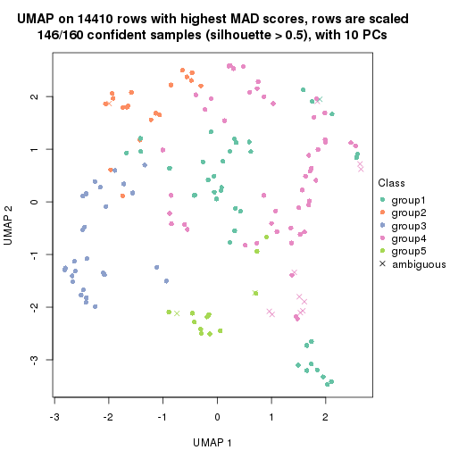
dimension_reduction(res, k = 6, method = "UMAP")
Following heatmap shows how subgroups are split when increasing k:
collect_classes(res)
If matrix rows can be associated to genes, consider to use GO_Enrichment(res,
...) to perform function enrichment for the signature genes.
The object with results only for a single top-value method and a single partition method can be extracted as:
res = res_list["MAD", "mclust"]
# you can also extract it by
# res = res_list["MAD:mclust"]
A summary of res and all the functions that can be applied to it:
res
#> A 'ConsensusPartition' object with k = 2, 3, 4, 5, 6.
#> On a matrix with 14410 rows and 160 columns.
#> Top rows (1000, 2000, 3000, 4000, 5000) are extracted by 'MAD' method.
#> Subgroups are detected by 'mclust' method.
#> Performed in total 1250 partitions by row resampling.
#> Best k for subgroups seems to be 3.
#>
#> Following methods can be applied to this 'ConsensusPartition' object:
#> [1] "cola_report" "collect_classes" "collect_plots"
#> [4] "collect_stats" "colnames" "compare_signatures"
#> [7] "consensus_heatmap" "dimension_reduction" "functional_enrichment"
#> [10] "get_anno_col" "get_anno" "get_classes"
#> [13] "get_consensus" "get_matrix" "get_membership"
#> [16] "get_param" "get_signatures" "get_stats"
#> [19] "is_best_k" "is_stable_k" "membership_heatmap"
#> [22] "ncol" "nrow" "plot_ecdf"
#> [25] "rownames" "select_partition_number" "show"
#> [28] "suggest_best_k" "test_to_known_factors"
collect_plots() function collects all the plots made from res for all k (number of partitions)
into one single page to provide an easy and fast comparison between different k.
collect_plots(res)
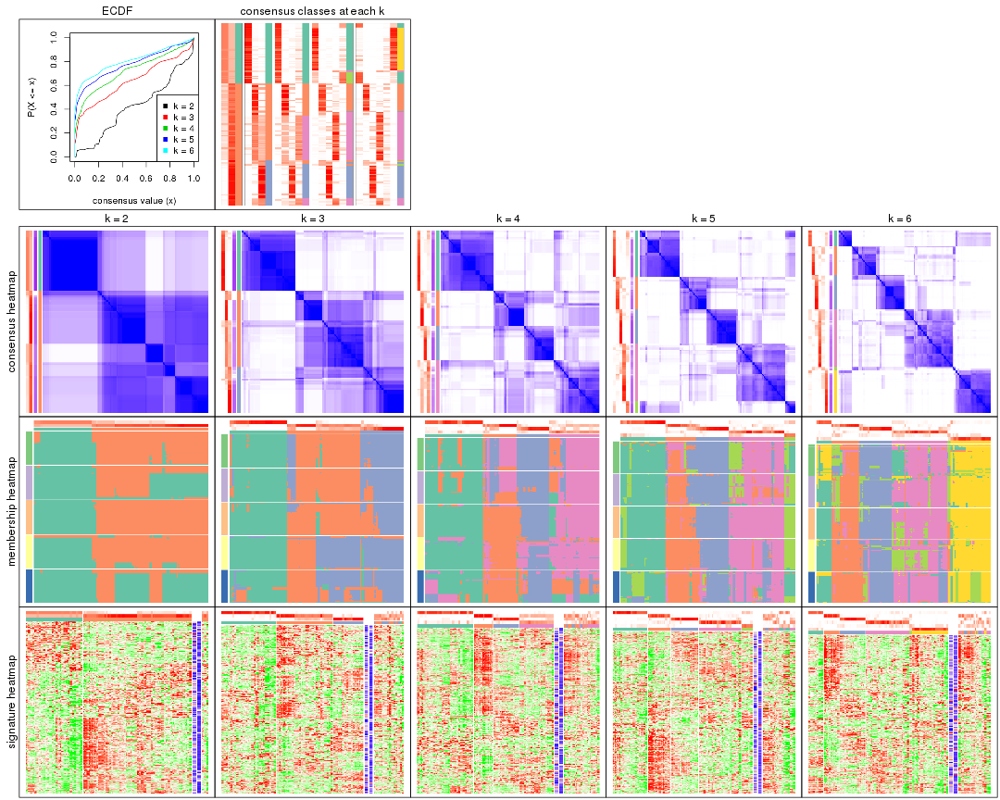
The plots are:
k and the heatmap of
predicted classes for each k.k.k.k.All the plots in panels can be made by individual functions and they are plotted later in this section.
select_partition_number() produces several plots showing different
statistics for choosing “optimized” k. There are following statistics:
k;k, the area increased is defined as \(A_k - A_{k-1}\).The detailed explanations of these statistics can be found in the cola vignette.
Generally speaking, lower PAC score, higher mean silhouette score or higher
concordance corresponds to better partition. Rand index and Jaccard index
measure how similar the current partition is compared to partition with k-1.
If they are too similar, we won't accept k is better than k-1.
select_partition_number(res)
The numeric values for all these statistics can be obtained by get_stats().
get_stats(res)
#> k 1-PAC mean_silhouette concordance area_increased Rand Jaccard
#> 2 2 0.313 0.794 0.819 0.4184 0.554 0.554
#> 3 3 0.531 0.642 0.812 0.5279 0.789 0.620
#> 4 4 0.588 0.631 0.756 0.1313 0.861 0.625
#> 5 5 0.647 0.638 0.794 0.0759 0.918 0.713
#> 6 6 0.698 0.620 0.775 0.0399 0.979 0.912
suggest_best_k() suggests the best \(k\) based on these statistics. The rules are as follows:
NA.suggest_best_k(res)
#> [1] 3
Following shows the table of the partitions (You need to click the show/hide
code output link to see it). The membership matrix (columns with name p*)
is inferred by
clue::cl_consensus()
function with the SE method. Basically the value in the membership matrix
represents the probability to belong to a certain group. The finall class
label for an item is determined with the group with highest probability it
belongs to.
In get_classes() function, the entropy is calculated from the membership
matrix and the silhouette score is calculated from the consensus matrix.
cbind(get_classes(res, k = 2), get_membership(res, k = 2))
#> class entropy silhouette p1 p2
#> SRR031811 2 0.6623 0.792 0.172 0.828
#> SRR031812 1 0.9393 0.983 0.644 0.356
#> SRR031813 2 0.7056 0.726 0.192 0.808
#> SRR031814 1 0.9393 0.983 0.644 0.356
#> SRR031815 1 0.9393 0.983 0.644 0.356
#> SRR031816 2 0.6973 0.788 0.188 0.812
#> SRR031817 2 0.0938 0.779 0.012 0.988
#> SRR031818 2 0.0000 0.775 0.000 1.000
#> SRR031819 2 0.2778 0.751 0.048 0.952
#> SRR031820 2 0.0938 0.779 0.012 0.988
#> SRR031821 2 0.6712 0.790 0.176 0.824
#> SRR031822 1 0.9393 0.983 0.644 0.356
#> SRR031823 2 0.6973 0.788 0.188 0.812
#> SRR031824 2 0.9248 0.699 0.340 0.660
#> SRR031825 2 0.9248 0.699 0.340 0.660
#> SRR031826 2 0.7056 0.726 0.192 0.808
#> SRR031827 2 0.6973 0.788 0.188 0.812
#> SRR031828 1 0.9393 0.983 0.644 0.356
#> SRR031829 2 0.6247 0.793 0.156 0.844
#> SRR031830 1 0.9393 0.983 0.644 0.356
#> SRR031831 2 0.0938 0.779 0.012 0.988
#> SRR031832 2 0.0938 0.779 0.012 0.988
#> SRR031833 2 0.0000 0.775 0.000 1.000
#> SRR031834 1 0.9393 0.983 0.644 0.356
#> SRR031835 1 0.9393 0.983 0.644 0.356
#> SRR031836 2 0.0938 0.779 0.012 0.988
#> SRR031837 2 0.0938 0.779 0.012 0.988
#> SRR031838 2 0.7056 0.726 0.192 0.808
#> SRR031839 2 0.0376 0.776 0.004 0.996
#> SRR031840 1 0.9393 0.983 0.644 0.356
#> SRR031841 1 0.9393 0.983 0.644 0.356
#> SRR031842 2 0.9248 0.699 0.340 0.660
#> SRR031843 2 0.0938 0.779 0.012 0.988
#> SRR031844 2 0.3114 0.725 0.056 0.944
#> SRR031845 2 0.6801 0.789 0.180 0.820
#> SRR031846 2 0.9427 -0.289 0.360 0.640
#> SRR031847 2 0.0938 0.779 0.012 0.988
#> SRR031848 2 0.0938 0.779 0.012 0.988
#> SRR031849 2 0.0938 0.779 0.012 0.988
#> SRR031850 2 0.9209 0.702 0.336 0.664
#> SRR031851 2 0.9248 0.699 0.340 0.660
#> SRR031852 1 0.9393 0.983 0.644 0.356
#> SRR031853 1 0.9393 0.983 0.644 0.356
#> SRR031854 1 0.9393 0.983 0.644 0.356
#> SRR031855 2 0.7056 0.726 0.192 0.808
#> SRR031857 2 0.6973 0.788 0.188 0.812
#> SRR031858 2 0.6148 0.793 0.152 0.848
#> SRR031859 2 0.9248 0.699 0.340 0.660
#> SRR031860 2 0.9248 0.699 0.340 0.660
#> SRR031861 2 0.9248 0.699 0.340 0.660
#> SRR031862 1 0.9393 0.983 0.644 0.356
#> SRR031863 2 0.6148 0.793 0.152 0.848
#> SRR031864 2 0.9248 0.699 0.340 0.660
#> SRR031865 2 0.3584 0.713 0.068 0.932
#> SRR031866 1 0.9393 0.983 0.644 0.356
#> SRR031867 2 0.6148 0.793 0.152 0.848
#> SRR031868 2 0.0000 0.775 0.000 1.000
#> SRR031869 1 0.9393 0.983 0.644 0.356
#> SRR031870 2 0.6148 0.793 0.152 0.848
#> SRR031871 2 0.8327 0.686 0.264 0.736
#> SRR031872 1 0.9393 0.983 0.644 0.356
#> SRR031873 1 0.9393 0.983 0.644 0.356
#> SRR031874 1 0.9393 0.983 0.644 0.356
#> SRR031875 2 0.0938 0.779 0.012 0.988
#> SRR031876 1 0.9393 0.983 0.644 0.356
#> SRR031877 2 0.9754 -0.413 0.408 0.592
#> SRR031878 2 0.6343 0.793 0.160 0.840
#> SRR031879 2 0.2778 0.751 0.048 0.952
#> SRR031880 2 0.6973 0.788 0.188 0.812
#> SRR031881 2 0.5737 0.788 0.136 0.864
#> SRR031882 2 0.0938 0.772 0.012 0.988
#> SRR031883 2 0.0938 0.779 0.012 0.988
#> SRR031884 2 0.0938 0.779 0.012 0.988
#> SRR031885 2 0.7056 0.726 0.192 0.808
#> SRR031886 2 0.0938 0.779 0.012 0.988
#> SRR031887 1 0.9393 0.983 0.644 0.356
#> SRR031888 2 0.6048 0.794 0.148 0.852
#> SRR031889 1 0.9393 0.983 0.644 0.356
#> SRR031890 2 0.9635 -0.400 0.388 0.612
#> SRR031891 2 0.6531 0.790 0.168 0.832
#> SRR031892 2 0.3431 0.714 0.064 0.936
#> SRR031893 1 0.9552 0.959 0.624 0.376
#> SRR031894 2 0.7056 0.726 0.192 0.808
#> SRR031895 1 0.9850 0.884 0.572 0.428
#> SRR031896 2 0.6973 0.729 0.188 0.812
#> SRR031897 2 0.9000 0.714 0.316 0.684
#> SRR031898 2 0.9248 0.699 0.340 0.660
#> SRR031899 2 0.0938 0.779 0.012 0.988
#> SRR031900 2 0.6148 0.793 0.152 0.848
#> SRR031901 2 0.6148 0.793 0.152 0.848
#> SRR031902 2 0.8267 0.696 0.260 0.740
#> SRR031903 1 0.9393 0.983 0.644 0.356
#> SRR031904 2 0.2236 0.746 0.036 0.964
#> SRR031905 1 0.9393 0.983 0.644 0.356
#> SRR031906 1 0.9393 0.983 0.644 0.356
#> SRR031907 2 0.6973 0.788 0.188 0.812
#> SRR031908 2 0.0938 0.779 0.012 0.988
#> SRR031909 1 0.9393 0.983 0.644 0.356
#> SRR031910 2 0.0938 0.779 0.012 0.988
#> SRR031911 2 0.0938 0.779 0.012 0.988
#> SRR031912 1 0.9393 0.983 0.644 0.356
#> SRR031913 2 0.6148 0.793 0.152 0.848
#> SRR031914 1 0.9393 0.983 0.644 0.356
#> SRR031915 2 0.4022 0.691 0.080 0.920
#> SRR031916 2 0.2236 0.746 0.036 0.964
#> SRR031917 1 0.9833 0.862 0.576 0.424
#> SRR031918 2 0.0938 0.779 0.012 0.988
#> SRR031919 1 0.9393 0.983 0.644 0.356
#> SRR031920 2 0.0938 0.779 0.012 0.988
#> SRR031921 2 0.1843 0.781 0.028 0.972
#> SRR031922 2 0.6148 0.793 0.152 0.848
#> SRR031923 2 0.9248 0.699 0.340 0.660
#> SRR031924 1 0.9580 0.954 0.620 0.380
#> SRR031925 2 0.6973 0.788 0.188 0.812
#> SRR031926 2 0.8386 0.743 0.268 0.732
#> SRR031927 2 0.6712 0.735 0.176 0.824
#> SRR031928 1 0.9393 0.983 0.644 0.356
#> SRR031929 2 0.6148 0.793 0.152 0.848
#> SRR031930 2 0.9248 0.699 0.340 0.660
#> SRR031931 2 0.3733 0.717 0.072 0.928
#> SRR031932 1 0.9393 0.983 0.644 0.356
#> SRR031933 2 0.9248 0.699 0.340 0.660
#> SRR031934 1 0.9866 0.878 0.568 0.432
#> SRR031935 2 0.2236 0.746 0.036 0.964
#> SRR031936 1 0.9393 0.983 0.644 0.356
#> SRR031937 1 0.9393 0.983 0.644 0.356
#> SRR031938 1 0.9850 0.865 0.572 0.428
#> SRR031939 2 0.7056 0.726 0.192 0.808
#> SRR031940 1 0.9393 0.983 0.644 0.356
#> SRR031941 2 0.6973 0.788 0.188 0.812
#> SRR031942 2 0.9775 -0.427 0.412 0.588
#> SRR031943 2 0.0938 0.779 0.012 0.988
#> SRR031944 2 0.7056 0.442 0.192 0.808
#> SRR031945 1 0.9881 0.870 0.564 0.436
#> SRR031946 2 0.0938 0.779 0.012 0.988
#> SRR031947 2 0.4939 0.643 0.108 0.892
#> SRR031948 1 0.9393 0.983 0.644 0.356
#> SRR031949 1 0.9393 0.983 0.644 0.356
#> SRR031950 2 0.6438 0.793 0.164 0.836
#> SRR031951 2 0.6973 0.788 0.188 0.812
#> SRR031952 1 0.9393 0.983 0.644 0.356
#> SRR031953 1 0.9393 0.983 0.644 0.356
#> SRR031954 1 0.9944 0.832 0.544 0.456
#> SRR031955 2 0.7056 0.442 0.192 0.808
#> SRR031956 2 0.6973 0.788 0.188 0.812
#> SRR031957 2 0.1184 0.764 0.016 0.984
#> SRR031958 2 0.6148 0.793 0.152 0.848
#> SRR031959 2 0.6887 0.789 0.184 0.816
#> SRR031960 2 0.6247 0.793 0.156 0.844
#> SRR031961 1 0.9393 0.983 0.644 0.356
#> SRR031962 1 0.9393 0.983 0.644 0.356
#> SRR031963 2 0.6973 0.788 0.188 0.812
#> SRR031964 1 0.9393 0.983 0.644 0.356
#> SRR031965 2 0.9248 0.699 0.340 0.660
#> SRR031966 2 0.9248 0.699 0.340 0.660
#> SRR031967 1 0.9393 0.983 0.644 0.356
#> SRR031968 1 0.9393 0.983 0.644 0.356
#> SRR031969 1 0.9427 0.979 0.640 0.360
#> SRR031970 2 0.7056 0.726 0.192 0.808
#> SRR031971 1 0.9393 0.983 0.644 0.356
cbind(get_classes(res, k = 3), get_membership(res, k = 3))
#> class entropy silhouette p1 p2 p3
#> SRR031811 2 0.6318 0.6066 0.008 0.636 0.356
#> SRR031812 1 0.1289 0.9278 0.968 0.032 0.000
#> SRR031813 2 0.6286 -0.2238 0.000 0.536 0.464
#> SRR031814 1 0.0747 0.9295 0.984 0.016 0.000
#> SRR031815 1 0.0747 0.9295 0.984 0.016 0.000
#> SRR031816 2 0.6803 0.6164 0.040 0.680 0.280
#> SRR031817 3 0.0000 0.7693 0.000 0.000 1.000
#> SRR031818 3 0.6252 0.3828 0.008 0.344 0.648
#> SRR031819 3 0.3921 0.7111 0.016 0.112 0.872
#> SRR031820 3 0.2866 0.7290 0.008 0.076 0.916
#> SRR031821 2 0.6964 0.6146 0.052 0.684 0.264
#> SRR031822 1 0.0747 0.9295 0.984 0.016 0.000
#> SRR031823 2 0.6318 0.6066 0.008 0.636 0.356
#> SRR031824 2 0.1031 0.5684 0.000 0.976 0.024
#> SRR031825 2 0.0892 0.5708 0.000 0.980 0.020
#> SRR031826 2 0.6500 -0.2263 0.004 0.532 0.464
#> SRR031827 2 0.6839 0.6187 0.044 0.684 0.272
#> SRR031828 1 0.0747 0.9295 0.984 0.016 0.000
#> SRR031829 2 0.6379 0.6043 0.008 0.624 0.368
#> SRR031830 1 0.0747 0.9295 0.984 0.016 0.000
#> SRR031831 3 0.0000 0.7693 0.000 0.000 1.000
#> SRR031832 3 0.0000 0.7693 0.000 0.000 1.000
#> SRR031833 3 0.5728 0.4449 0.008 0.272 0.720
#> SRR031834 1 0.0747 0.9295 0.984 0.016 0.000
#> SRR031835 1 0.1289 0.9278 0.968 0.032 0.000
#> SRR031836 3 0.0000 0.7693 0.000 0.000 1.000
#> SRR031837 3 0.0000 0.7693 0.000 0.000 1.000
#> SRR031838 2 0.6274 -0.2110 0.000 0.544 0.456
#> SRR031839 3 0.5109 0.6174 0.008 0.212 0.780
#> SRR031840 1 0.0592 0.9280 0.988 0.012 0.000
#> SRR031841 1 0.0747 0.9295 0.984 0.016 0.000
#> SRR031842 2 0.1411 0.5596 0.000 0.964 0.036
#> SRR031843 3 0.0237 0.7683 0.000 0.004 0.996
#> SRR031844 3 0.6865 0.3004 0.020 0.384 0.596
#> SRR031845 2 0.6062 0.5874 0.000 0.616 0.384
#> SRR031846 2 0.9686 0.3277 0.264 0.460 0.276
#> SRR031847 3 0.0000 0.7693 0.000 0.000 1.000
#> SRR031848 3 0.0000 0.7693 0.000 0.000 1.000
#> SRR031849 3 0.0000 0.7693 0.000 0.000 1.000
#> SRR031850 2 0.0892 0.5708 0.000 0.980 0.020
#> SRR031851 2 0.0892 0.5708 0.000 0.980 0.020
#> SRR031852 1 0.3623 0.8895 0.896 0.072 0.032
#> SRR031853 1 0.3623 0.8895 0.896 0.072 0.032
#> SRR031854 1 0.4075 0.8783 0.880 0.072 0.048
#> SRR031855 2 0.6111 -0.1013 0.000 0.604 0.396
#> SRR031857 2 0.7057 0.6152 0.056 0.680 0.264
#> SRR031858 2 0.6140 0.5801 0.000 0.596 0.404
#> SRR031859 2 0.1031 0.5684 0.000 0.976 0.024
#> SRR031860 2 0.1529 0.5563 0.000 0.960 0.040
#> SRR031861 2 0.0892 0.5708 0.000 0.980 0.020
#> SRR031862 1 0.0000 0.9271 1.000 0.000 0.000
#> SRR031863 2 0.6483 0.5890 0.008 0.600 0.392
#> SRR031864 2 0.0892 0.5708 0.000 0.980 0.020
#> SRR031865 3 0.9112 0.3689 0.308 0.168 0.524
#> SRR031866 1 0.0000 0.9271 1.000 0.000 0.000
#> SRR031867 2 0.6483 0.5890 0.008 0.600 0.392
#> SRR031868 3 0.6664 -0.0445 0.008 0.464 0.528
#> SRR031869 1 0.0747 0.9295 0.984 0.016 0.000
#> SRR031870 2 0.6140 0.5801 0.000 0.596 0.404
#> SRR031871 2 0.1999 0.5757 0.012 0.952 0.036
#> SRR031872 1 0.0000 0.9271 1.000 0.000 0.000
#> SRR031873 1 0.0747 0.9295 0.984 0.016 0.000
#> SRR031874 1 0.4289 0.8711 0.868 0.092 0.040
#> SRR031875 3 0.0424 0.7662 0.008 0.000 0.992
#> SRR031876 1 0.0747 0.9276 0.984 0.016 0.000
#> SRR031877 2 0.9465 0.3647 0.184 0.444 0.372
#> SRR031878 2 0.6318 0.6066 0.008 0.636 0.356
#> SRR031879 3 0.3921 0.7111 0.016 0.112 0.872
#> SRR031880 2 0.6318 0.6066 0.008 0.636 0.356
#> SRR031881 2 0.7112 0.6118 0.060 0.680 0.260
#> SRR031882 3 0.3826 0.6970 0.008 0.124 0.868
#> SRR031883 3 0.2955 0.7280 0.008 0.080 0.912
#> SRR031884 3 0.0000 0.7693 0.000 0.000 1.000
#> SRR031885 2 0.6299 -0.2431 0.000 0.524 0.476
#> SRR031886 3 0.0000 0.7693 0.000 0.000 1.000
#> SRR031887 1 0.0747 0.9276 0.984 0.016 0.000
#> SRR031888 2 0.6398 0.6025 0.008 0.620 0.372
#> SRR031889 1 0.0747 0.9295 0.984 0.016 0.000
#> SRR031890 2 0.9804 0.2833 0.296 0.432 0.272
#> SRR031891 2 0.6062 0.5874 0.000 0.616 0.384
#> SRR031892 3 0.6881 0.2882 0.020 0.388 0.592
#> SRR031893 1 0.4979 0.7860 0.812 0.020 0.168
#> SRR031894 2 0.6664 -0.2291 0.008 0.528 0.464
#> SRR031895 1 0.3816 0.8266 0.852 0.148 0.000
#> SRR031896 3 0.6309 0.2500 0.000 0.500 0.500
#> SRR031897 2 0.0892 0.5708 0.000 0.980 0.020
#> SRR031898 2 0.0892 0.5708 0.000 0.980 0.020
#> SRR031899 3 0.0000 0.7693 0.000 0.000 1.000
#> SRR031900 2 0.6483 0.5890 0.008 0.600 0.392
#> SRR031901 2 0.6140 0.5801 0.000 0.596 0.404
#> SRR031902 2 0.1482 0.5708 0.012 0.968 0.020
#> SRR031903 1 0.0747 0.9295 0.984 0.016 0.000
#> SRR031904 3 0.6527 0.2104 0.008 0.404 0.588
#> SRR031905 1 0.0000 0.9271 1.000 0.000 0.000
#> SRR031906 1 0.0747 0.9295 0.984 0.016 0.000
#> SRR031907 2 0.5864 0.6154 0.008 0.704 0.288
#> SRR031908 3 0.0000 0.7693 0.000 0.000 1.000
#> SRR031909 1 0.0747 0.9276 0.984 0.016 0.000
#> SRR031910 3 0.0000 0.7693 0.000 0.000 1.000
#> SRR031911 3 0.0424 0.7662 0.008 0.000 0.992
#> SRR031912 1 0.4035 0.8797 0.880 0.080 0.040
#> SRR031913 2 0.6398 0.6025 0.008 0.620 0.372
#> SRR031914 1 0.0747 0.9276 0.984 0.016 0.000
#> SRR031915 2 0.5864 0.6154 0.008 0.704 0.288
#> SRR031916 3 0.6799 0.0273 0.012 0.456 0.532
#> SRR031917 1 0.6008 0.4119 0.628 0.372 0.000
#> SRR031918 3 0.0424 0.7662 0.008 0.000 0.992
#> SRR031919 1 0.0747 0.9276 0.984 0.016 0.000
#> SRR031920 3 0.0000 0.7693 0.000 0.000 1.000
#> SRR031921 3 0.5502 0.5736 0.008 0.248 0.744
#> SRR031922 2 0.6140 0.5801 0.000 0.596 0.404
#> SRR031923 2 0.0892 0.5708 0.000 0.980 0.020
#> SRR031924 1 0.4733 0.7585 0.800 0.004 0.196
#> SRR031925 2 0.6999 0.6154 0.052 0.680 0.268
#> SRR031926 2 0.5591 0.6118 0.000 0.696 0.304
#> SRR031927 3 0.5656 0.5798 0.008 0.264 0.728
#> SRR031928 1 0.0000 0.9271 1.000 0.000 0.000
#> SRR031929 2 0.6483 0.5890 0.008 0.600 0.392
#> SRR031930 2 0.0892 0.5708 0.000 0.980 0.020
#> SRR031931 3 0.9306 0.3289 0.336 0.176 0.488
#> SRR031932 1 0.0592 0.9294 0.988 0.012 0.000
#> SRR031933 2 0.0892 0.5708 0.000 0.980 0.020
#> SRR031934 1 0.4121 0.8056 0.832 0.168 0.000
#> SRR031935 3 0.6771 0.0983 0.012 0.440 0.548
#> SRR031936 1 0.0592 0.9280 0.988 0.012 0.000
#> SRR031937 1 0.0592 0.9280 0.988 0.012 0.000
#> SRR031938 1 0.6008 0.4119 0.628 0.372 0.000
#> SRR031939 2 0.6126 -0.1096 0.000 0.600 0.400
#> SRR031940 1 0.3623 0.8895 0.896 0.072 0.032
#> SRR031941 2 0.5864 0.6154 0.008 0.704 0.288
#> SRR031942 2 0.9627 0.3388 0.208 0.428 0.364
#> SRR031943 3 0.0000 0.7693 0.000 0.000 1.000
#> SRR031944 2 0.9151 0.4160 0.180 0.528 0.292
#> SRR031945 1 0.7542 0.6590 0.688 0.192 0.120
#> SRR031946 3 0.0000 0.7693 0.000 0.000 1.000
#> SRR031947 2 0.6318 0.6065 0.008 0.636 0.356
#> SRR031948 1 0.0000 0.9271 1.000 0.000 0.000
#> SRR031949 1 0.3856 0.8842 0.888 0.072 0.040
#> SRR031950 2 0.6482 0.6158 0.024 0.680 0.296
#> SRR031951 2 0.6229 0.6132 0.008 0.652 0.340
#> SRR031952 1 0.0892 0.9269 0.980 0.020 0.000
#> SRR031953 1 0.0747 0.9276 0.984 0.016 0.000
#> SRR031954 1 0.7807 0.6190 0.672 0.184 0.144
#> SRR031955 2 0.8894 0.4615 0.160 0.556 0.284
#> SRR031956 2 0.6075 0.6178 0.008 0.676 0.316
#> SRR031957 3 0.6047 0.4540 0.008 0.312 0.680
#> SRR031958 2 0.6379 0.6043 0.008 0.624 0.368
#> SRR031959 2 0.6102 0.6174 0.008 0.672 0.320
#> SRR031960 2 0.6318 0.6066 0.008 0.636 0.356
#> SRR031961 1 0.0424 0.9280 0.992 0.008 0.000
#> SRR031962 1 0.0747 0.9276 0.984 0.016 0.000
#> SRR031963 2 0.6318 0.6066 0.008 0.636 0.356
#> SRR031964 1 0.0892 0.9269 0.980 0.020 0.000
#> SRR031965 2 0.0892 0.5708 0.000 0.980 0.020
#> SRR031966 2 0.1964 0.5415 0.000 0.944 0.056
#> SRR031967 1 0.3623 0.8895 0.896 0.072 0.032
#> SRR031968 1 0.3623 0.8895 0.896 0.072 0.032
#> SRR031969 1 0.3370 0.8909 0.904 0.072 0.024
#> SRR031970 2 0.5591 0.1229 0.000 0.696 0.304
#> SRR031971 1 0.0747 0.9295 0.984 0.016 0.000
cbind(get_classes(res, k = 4), get_membership(res, k = 4))
#> class entropy silhouette p1 p2 p3 p4
#> SRR031811 4 0.6306 0.6331 0.000 0.392 0.064 0.544
#> SRR031812 1 0.3142 0.8609 0.860 0.008 0.000 0.132
#> SRR031813 2 0.4843 0.3056 0.000 0.604 0.396 0.000
#> SRR031814 1 0.1557 0.8772 0.944 0.000 0.000 0.056
#> SRR031815 1 0.1557 0.8683 0.944 0.056 0.000 0.000
#> SRR031816 4 0.6752 0.6046 0.056 0.420 0.016 0.508
#> SRR031817 3 0.0804 0.8104 0.000 0.008 0.980 0.012
#> SRR031818 2 0.7782 0.0945 0.000 0.396 0.360 0.244
#> SRR031819 3 0.6367 0.6451 0.028 0.060 0.668 0.244
#> SRR031820 3 0.5528 0.6332 0.000 0.124 0.732 0.144
#> SRR031821 4 0.6708 0.5913 0.080 0.392 0.004 0.524
#> SRR031822 1 0.1557 0.8772 0.944 0.000 0.000 0.056
#> SRR031823 4 0.5980 0.6336 0.000 0.396 0.044 0.560
#> SRR031824 2 0.0000 0.6730 0.000 1.000 0.000 0.000
#> SRR031825 2 0.0188 0.6690 0.000 0.996 0.000 0.004
#> SRR031826 2 0.5150 0.3025 0.000 0.596 0.396 0.008
#> SRR031827 4 0.6620 0.6047 0.048 0.420 0.016 0.516
#> SRR031828 1 0.1557 0.8772 0.944 0.000 0.000 0.056
#> SRR031829 4 0.6130 0.6314 0.000 0.400 0.052 0.548
#> SRR031830 1 0.1557 0.8683 0.944 0.056 0.000 0.000
#> SRR031831 3 0.0804 0.8104 0.000 0.008 0.980 0.012
#> SRR031832 3 0.1256 0.8057 0.000 0.008 0.964 0.028
#> SRR031833 4 0.7463 0.0606 0.000 0.176 0.384 0.440
#> SRR031834 1 0.1557 0.8772 0.944 0.000 0.000 0.056
#> SRR031835 1 0.3032 0.8637 0.868 0.008 0.000 0.124
#> SRR031836 3 0.1042 0.8214 0.000 0.008 0.972 0.020
#> SRR031837 3 0.1042 0.8214 0.000 0.008 0.972 0.020
#> SRR031838 2 0.4543 0.4225 0.000 0.676 0.324 0.000
#> SRR031839 3 0.6534 0.4872 0.000 0.132 0.624 0.244
#> SRR031840 1 0.2053 0.8673 0.924 0.004 0.000 0.072
#> SRR031841 1 0.1557 0.8683 0.944 0.056 0.000 0.000
#> SRR031842 2 0.0000 0.6730 0.000 1.000 0.000 0.000
#> SRR031843 3 0.2546 0.7972 0.000 0.008 0.900 0.092
#> SRR031844 4 0.7825 0.0696 0.284 0.096 0.064 0.556
#> SRR031845 4 0.7698 0.5694 0.000 0.324 0.236 0.440
#> SRR031846 4 0.6878 0.0832 0.288 0.124 0.004 0.584
#> SRR031847 3 0.1256 0.8057 0.000 0.008 0.964 0.028
#> SRR031848 3 0.1042 0.8214 0.000 0.008 0.972 0.020
#> SRR031849 3 0.1256 0.8057 0.000 0.008 0.964 0.028
#> SRR031850 2 0.0188 0.6690 0.000 0.996 0.000 0.004
#> SRR031851 2 0.0000 0.6730 0.000 1.000 0.000 0.000
#> SRR031852 1 0.4100 0.8340 0.832 0.000 0.076 0.092
#> SRR031853 1 0.4100 0.8340 0.832 0.000 0.076 0.092
#> SRR031854 1 0.4568 0.8263 0.800 0.000 0.076 0.124
#> SRR031855 2 0.4477 0.4460 0.000 0.688 0.312 0.000
#> SRR031857 4 0.6644 0.5975 0.076 0.388 0.004 0.532
#> SRR031858 4 0.7686 0.5632 0.000 0.336 0.228 0.436
#> SRR031859 2 0.0000 0.6730 0.000 1.000 0.000 0.000
#> SRR031860 2 0.0000 0.6730 0.000 1.000 0.000 0.000
#> SRR031861 2 0.0000 0.6730 0.000 1.000 0.000 0.000
#> SRR031862 1 0.0817 0.8754 0.976 0.000 0.000 0.024
#> SRR031863 4 0.7333 0.6058 0.000 0.332 0.172 0.496
#> SRR031864 2 0.0000 0.6730 0.000 1.000 0.000 0.000
#> SRR031865 3 0.9564 0.0936 0.180 0.292 0.372 0.156
#> SRR031866 1 0.1637 0.8773 0.940 0.000 0.000 0.060
#> SRR031867 4 0.7304 0.6060 0.000 0.344 0.164 0.492
#> SRR031868 2 0.7734 0.2369 0.000 0.444 0.284 0.272
#> SRR031869 1 0.1637 0.8770 0.940 0.000 0.000 0.060
#> SRR031870 4 0.7812 0.5350 0.000 0.328 0.264 0.408
#> SRR031871 2 0.5428 0.4052 0.016 0.620 0.004 0.360
#> SRR031872 1 0.2198 0.8694 0.920 0.008 0.000 0.072
#> SRR031873 1 0.1557 0.8772 0.944 0.000 0.000 0.056
#> SRR031874 1 0.4163 0.8343 0.828 0.000 0.076 0.096
#> SRR031875 3 0.1545 0.8166 0.000 0.008 0.952 0.040
#> SRR031876 1 0.1256 0.8754 0.964 0.000 0.008 0.028
#> SRR031877 4 0.8058 -0.1379 0.308 0.016 0.216 0.460
#> SRR031878 4 0.6586 0.6323 0.000 0.368 0.088 0.544
#> SRR031879 3 0.6284 0.6558 0.032 0.052 0.676 0.240
#> SRR031880 4 0.5766 0.6292 0.000 0.404 0.032 0.564
#> SRR031881 4 0.7931 0.4621 0.208 0.392 0.008 0.392
#> SRR031882 3 0.6474 0.4882 0.000 0.120 0.624 0.256
#> SRR031883 3 0.5816 0.6055 0.000 0.144 0.708 0.148
#> SRR031884 3 0.1722 0.8129 0.000 0.008 0.944 0.048
#> SRR031885 2 0.5924 0.2601 0.000 0.556 0.404 0.040
#> SRR031886 3 0.1042 0.8214 0.000 0.008 0.972 0.020
#> SRR031887 1 0.2384 0.8657 0.916 0.004 0.008 0.072
#> SRR031888 2 0.5546 -0.0262 0.000 0.680 0.052 0.268
#> SRR031889 1 0.1557 0.8772 0.944 0.000 0.000 0.056
#> SRR031890 4 0.6878 0.0832 0.288 0.124 0.004 0.584
#> SRR031891 4 0.7689 0.5696 0.000 0.320 0.236 0.444
#> SRR031892 4 0.7549 0.1604 0.260 0.100 0.052 0.588
#> SRR031893 1 0.4635 0.8191 0.796 0.000 0.080 0.124
#> SRR031894 2 0.5476 0.2956 0.000 0.584 0.396 0.020
#> SRR031895 1 0.6215 0.6490 0.600 0.072 0.000 0.328
#> SRR031896 2 0.6148 0.2369 0.000 0.540 0.408 0.052
#> SRR031897 2 0.1211 0.6253 0.000 0.960 0.000 0.040
#> SRR031898 2 0.0000 0.6730 0.000 1.000 0.000 0.000
#> SRR031899 3 0.1042 0.8214 0.000 0.008 0.972 0.020
#> SRR031900 4 0.7304 0.6060 0.000 0.344 0.164 0.492
#> SRR031901 4 0.7836 0.5260 0.000 0.328 0.272 0.400
#> SRR031902 2 0.4220 0.5198 0.004 0.748 0.000 0.248
#> SRR031903 1 0.1557 0.8772 0.944 0.000 0.000 0.056
#> SRR031904 4 0.7285 0.3354 0.000 0.180 0.300 0.520
#> SRR031905 1 0.1890 0.8735 0.936 0.008 0.000 0.056
#> SRR031906 1 0.1637 0.8770 0.940 0.000 0.000 0.060
#> SRR031907 4 0.5408 0.6244 0.000 0.408 0.016 0.576
#> SRR031908 3 0.1256 0.8057 0.000 0.008 0.964 0.028
#> SRR031909 1 0.1256 0.8754 0.964 0.000 0.008 0.028
#> SRR031910 3 0.1042 0.8214 0.000 0.008 0.972 0.020
#> SRR031911 3 0.1452 0.8178 0.000 0.008 0.956 0.036
#> SRR031912 1 0.4163 0.8343 0.828 0.000 0.076 0.096
#> SRR031913 4 0.6306 0.6323 0.000 0.392 0.064 0.544
#> SRR031914 1 0.2053 0.8673 0.924 0.004 0.000 0.072
#> SRR031915 4 0.4614 0.5542 0.004 0.228 0.016 0.752
#> SRR031916 4 0.6595 0.4443 0.000 0.160 0.212 0.628
#> SRR031917 1 0.5085 0.6198 0.616 0.008 0.000 0.376
#> SRR031918 3 0.1452 0.8178 0.000 0.008 0.956 0.036
#> SRR031919 1 0.1356 0.8765 0.960 0.000 0.008 0.032
#> SRR031920 3 0.1042 0.8214 0.000 0.008 0.972 0.020
#> SRR031921 3 0.7591 0.0210 0.000 0.368 0.432 0.200
#> SRR031922 4 0.7763 0.5482 0.000 0.332 0.248 0.420
#> SRR031923 2 0.0000 0.6730 0.000 1.000 0.000 0.000
#> SRR031924 1 0.5063 0.7966 0.768 0.000 0.108 0.124
#> SRR031925 4 0.6598 0.6035 0.064 0.388 0.008 0.540
#> SRR031926 2 0.4770 -0.0173 0.000 0.700 0.012 0.288
#> SRR031927 3 0.7249 0.1656 0.000 0.348 0.496 0.156
#> SRR031928 1 0.0817 0.8754 0.976 0.000 0.000 0.024
#> SRR031929 4 0.7314 0.6068 0.000 0.336 0.168 0.496
#> SRR031930 2 0.0000 0.6730 0.000 1.000 0.000 0.000
#> SRR031931 3 0.9488 0.0787 0.188 0.304 0.372 0.136
#> SRR031932 1 0.1557 0.8772 0.944 0.000 0.000 0.056
#> SRR031933 2 0.0000 0.6730 0.000 1.000 0.000 0.000
#> SRR031934 1 0.5929 0.6480 0.596 0.048 0.000 0.356
#> SRR031935 4 0.6703 0.4188 0.000 0.156 0.232 0.612
#> SRR031936 1 0.2053 0.8673 0.924 0.004 0.000 0.072
#> SRR031937 1 0.1356 0.8765 0.960 0.000 0.008 0.032
#> SRR031938 1 0.5085 0.6198 0.616 0.008 0.000 0.376
#> SRR031939 2 0.4800 0.4046 0.000 0.656 0.340 0.004
#> SRR031940 1 0.4100 0.8340 0.832 0.000 0.076 0.092
#> SRR031941 4 0.5387 0.6273 0.000 0.400 0.016 0.584
#> SRR031942 4 0.8124 -0.2242 0.336 0.016 0.216 0.432
#> SRR031943 3 0.1042 0.8214 0.000 0.008 0.972 0.020
#> SRR031944 4 0.4407 0.4006 0.076 0.100 0.004 0.820
#> SRR031945 1 0.6407 0.5533 0.520 0.048 0.008 0.424
#> SRR031946 3 0.1256 0.8202 0.000 0.008 0.964 0.028
#> SRR031947 4 0.4579 0.5524 0.004 0.224 0.016 0.756
#> SRR031948 1 0.1716 0.8773 0.936 0.000 0.000 0.064
#> SRR031949 1 0.4100 0.8350 0.832 0.000 0.076 0.092
#> SRR031950 4 0.6910 0.6015 0.060 0.420 0.020 0.500
#> SRR031951 4 0.5526 0.6199 0.000 0.416 0.020 0.564
#> SRR031952 1 0.4690 0.7303 0.720 0.008 0.004 0.268
#> SRR031953 1 0.2384 0.8657 0.916 0.004 0.008 0.072
#> SRR031954 1 0.6407 0.5533 0.520 0.048 0.008 0.424
#> SRR031955 4 0.4337 0.4040 0.072 0.100 0.004 0.824
#> SRR031956 4 0.5398 0.6262 0.000 0.404 0.016 0.580
#> SRR031957 4 0.7243 0.0398 0.000 0.144 0.404 0.452
#> SRR031958 4 0.6148 0.6271 0.000 0.408 0.052 0.540
#> SRR031959 4 0.5279 0.6259 0.000 0.400 0.012 0.588
#> SRR031960 4 0.6206 0.6287 0.000 0.404 0.056 0.540
#> SRR031961 1 0.2011 0.8763 0.920 0.000 0.000 0.080
#> SRR031962 1 0.2384 0.8657 0.916 0.004 0.008 0.072
#> SRR031963 4 0.5517 0.6230 0.000 0.412 0.020 0.568
#> SRR031964 1 0.4770 0.7352 0.724 0.008 0.008 0.260
#> SRR031965 2 0.0000 0.6730 0.000 1.000 0.000 0.000
#> SRR031966 2 0.0000 0.6730 0.000 1.000 0.000 0.000
#> SRR031967 1 0.4100 0.8340 0.832 0.000 0.076 0.092
#> SRR031968 1 0.4036 0.8351 0.836 0.000 0.076 0.088
#> SRR031969 1 0.4569 0.8386 0.808 0.016 0.036 0.140
#> SRR031970 2 0.4164 0.5154 0.000 0.736 0.264 0.000
#> SRR031971 1 0.1557 0.8683 0.944 0.056 0.000 0.000
cbind(get_classes(res, k = 5), get_membership(res, k = 5))
#> class entropy silhouette p1 p2 p3 p4 p5
#> SRR031811 4 0.1928 0.7329 0.000 0.072 0.004 0.920 0.004
#> SRR031812 1 0.3463 0.5736 0.820 0.008 0.000 0.016 0.156
#> SRR031813 2 0.5322 0.3886 0.000 0.580 0.372 0.012 0.036
#> SRR031814 1 0.0703 0.7595 0.976 0.000 0.000 0.000 0.024
#> SRR031815 1 0.0566 0.7619 0.984 0.000 0.000 0.004 0.012
#> SRR031816 4 0.2880 0.7185 0.020 0.108 0.000 0.868 0.004
#> SRR031817 3 0.0162 0.8686 0.000 0.004 0.996 0.000 0.000
#> SRR031818 2 0.7311 0.2996 0.000 0.408 0.312 0.252 0.028
#> SRR031819 3 0.4036 0.7713 0.004 0.020 0.824 0.064 0.088
#> SRR031820 3 0.4355 0.7556 0.004 0.068 0.812 0.072 0.044
#> SRR031821 4 0.2103 0.7292 0.056 0.004 0.000 0.920 0.020
#> SRR031822 1 0.0000 0.7624 1.000 0.000 0.000 0.000 0.000
#> SRR031823 4 0.0955 0.7405 0.004 0.028 0.000 0.968 0.000
#> SRR031824 2 0.2377 0.7272 0.000 0.872 0.000 0.128 0.000
#> SRR031825 2 0.2773 0.7057 0.000 0.836 0.000 0.164 0.000
#> SRR031826 2 0.5501 0.2901 0.000 0.536 0.412 0.016 0.036
#> SRR031827 4 0.2880 0.7185 0.020 0.108 0.000 0.868 0.004
#> SRR031828 1 0.0794 0.7597 0.972 0.000 0.000 0.000 0.028
#> SRR031829 4 0.1662 0.7366 0.000 0.056 0.004 0.936 0.004
#> SRR031830 1 0.0671 0.7618 0.980 0.000 0.000 0.004 0.016
#> SRR031831 3 0.0162 0.8686 0.000 0.004 0.996 0.000 0.000
#> SRR031832 3 0.0162 0.8686 0.000 0.004 0.996 0.000 0.000
#> SRR031833 4 0.6066 0.0802 0.000 0.068 0.436 0.476 0.020
#> SRR031834 1 0.0000 0.7624 1.000 0.000 0.000 0.000 0.000
#> SRR031835 1 0.3421 0.5807 0.824 0.008 0.000 0.016 0.152
#> SRR031836 3 0.0324 0.8685 0.000 0.000 0.992 0.004 0.004
#> SRR031837 3 0.0000 0.8689 0.000 0.000 1.000 0.000 0.000
#> SRR031838 2 0.4636 0.5124 0.000 0.664 0.308 0.004 0.024
#> SRR031839 3 0.4345 0.6524 0.000 0.028 0.748 0.212 0.012
#> SRR031840 5 0.4101 0.8372 0.332 0.000 0.000 0.004 0.664
#> SRR031841 1 0.0162 0.7624 0.996 0.000 0.000 0.000 0.004
#> SRR031842 2 0.1608 0.7492 0.000 0.928 0.000 0.072 0.000
#> SRR031843 3 0.0451 0.8663 0.000 0.004 0.988 0.000 0.008
#> SRR031844 4 0.6478 0.5706 0.040 0.024 0.056 0.600 0.280
#> SRR031845 4 0.3652 0.6701 0.012 0.004 0.200 0.784 0.000
#> SRR031846 4 0.5753 0.5632 0.044 0.040 0.000 0.616 0.300
#> SRR031847 3 0.0162 0.8686 0.000 0.004 0.996 0.000 0.000
#> SRR031848 3 0.0324 0.8685 0.000 0.000 0.992 0.004 0.004
#> SRR031849 3 0.0162 0.8686 0.000 0.004 0.996 0.000 0.000
#> SRR031850 2 0.2516 0.7061 0.000 0.860 0.000 0.140 0.000
#> SRR031851 2 0.1608 0.7492 0.000 0.928 0.000 0.072 0.000
#> SRR031852 1 0.4000 0.7046 0.788 0.004 0.044 0.000 0.164
#> SRR031853 1 0.3838 0.7061 0.804 0.004 0.044 0.000 0.148
#> SRR031854 1 0.4031 0.6970 0.796 0.008 0.048 0.000 0.148
#> SRR031855 2 0.4564 0.5566 0.000 0.696 0.272 0.008 0.024
#> SRR031857 4 0.2867 0.7059 0.072 0.004 0.000 0.880 0.044
#> SRR031858 4 0.5685 0.5094 0.000 0.072 0.348 0.572 0.008
#> SRR031859 2 0.1608 0.7492 0.000 0.928 0.000 0.072 0.000
#> SRR031860 2 0.1671 0.7484 0.000 0.924 0.000 0.076 0.000
#> SRR031861 2 0.1608 0.7492 0.000 0.928 0.000 0.072 0.000
#> SRR031862 1 0.4294 -0.3731 0.532 0.000 0.000 0.000 0.468
#> SRR031863 4 0.5476 0.5708 0.000 0.088 0.276 0.632 0.004
#> SRR031864 2 0.1608 0.7492 0.000 0.928 0.000 0.072 0.000
#> SRR031865 2 0.7584 0.2499 0.172 0.420 0.356 0.016 0.036
#> SRR031866 1 0.0794 0.7586 0.972 0.000 0.000 0.000 0.028
#> SRR031867 4 0.5192 0.6266 0.000 0.116 0.184 0.696 0.004
#> SRR031868 2 0.6540 0.5102 0.000 0.552 0.188 0.244 0.016
#> SRR031869 1 0.0000 0.7624 1.000 0.000 0.000 0.000 0.000
#> SRR031870 4 0.5741 0.4750 0.000 0.072 0.368 0.552 0.008
#> SRR031871 2 0.4189 0.6621 0.008 0.788 0.000 0.060 0.144
#> SRR031872 1 0.1924 0.7359 0.924 0.008 0.000 0.004 0.064
#> SRR031873 1 0.1267 0.7580 0.960 0.012 0.000 0.004 0.024
#> SRR031874 1 0.3678 0.7072 0.816 0.004 0.040 0.000 0.140
#> SRR031875 3 0.1405 0.8572 0.000 0.016 0.956 0.020 0.008
#> SRR031876 1 0.4302 -0.4053 0.520 0.000 0.000 0.000 0.480
#> SRR031877 4 0.7439 0.4976 0.036 0.024 0.204 0.528 0.208
#> SRR031878 4 0.1830 0.7414 0.000 0.040 0.028 0.932 0.000
#> SRR031879 3 0.4036 0.7713 0.004 0.020 0.824 0.064 0.088
#> SRR031880 4 0.0290 0.7410 0.000 0.008 0.000 0.992 0.000
#> SRR031881 4 0.2238 0.7266 0.064 0.004 0.000 0.912 0.020
#> SRR031882 3 0.4377 0.6091 0.000 0.028 0.720 0.248 0.004
#> SRR031883 3 0.4475 0.7471 0.004 0.076 0.804 0.072 0.044
#> SRR031884 3 0.0162 0.8686 0.000 0.004 0.996 0.000 0.000
#> SRR031885 3 0.5330 0.1552 0.000 0.396 0.560 0.016 0.028
#> SRR031886 3 0.0162 0.8688 0.000 0.000 0.996 0.000 0.004
#> SRR031887 5 0.4166 0.8172 0.348 0.000 0.000 0.004 0.648
#> SRR031888 4 0.3906 0.4956 0.000 0.292 0.004 0.704 0.000
#> SRR031889 1 0.0000 0.7624 1.000 0.000 0.000 0.000 0.000
#> SRR031890 4 0.6054 0.5383 0.064 0.040 0.000 0.596 0.300
#> SRR031891 4 0.3652 0.6701 0.012 0.004 0.200 0.784 0.000
#> SRR031892 4 0.6274 0.5823 0.032 0.028 0.048 0.616 0.276
#> SRR031893 1 0.4086 0.6998 0.788 0.004 0.056 0.000 0.152
#> SRR031894 2 0.5425 0.3981 0.000 0.572 0.376 0.016 0.036
#> SRR031895 1 0.4949 0.2674 0.656 0.044 0.000 0.004 0.296
#> SRR031896 3 0.5330 0.1552 0.000 0.396 0.560 0.016 0.028
#> SRR031897 4 0.4256 0.2560 0.000 0.436 0.000 0.564 0.000
#> SRR031898 2 0.4060 0.3899 0.000 0.640 0.000 0.360 0.000
#> SRR031899 3 0.0833 0.8651 0.000 0.016 0.976 0.004 0.004
#> SRR031900 4 0.4621 0.6666 0.000 0.076 0.176 0.744 0.004
#> SRR031901 4 0.5751 0.4714 0.000 0.072 0.372 0.548 0.008
#> SRR031902 2 0.3521 0.6703 0.008 0.824 0.000 0.024 0.144
#> SRR031903 1 0.1106 0.7583 0.964 0.000 0.000 0.012 0.024
#> SRR031904 4 0.5890 0.6226 0.000 0.108 0.152 0.684 0.056
#> SRR031905 1 0.1591 0.7447 0.940 0.004 0.000 0.004 0.052
#> SRR031906 1 0.0000 0.7624 1.000 0.000 0.000 0.000 0.000
#> SRR031907 4 0.1410 0.7345 0.000 0.060 0.000 0.940 0.000
#> SRR031908 3 0.0162 0.8686 0.000 0.004 0.996 0.000 0.000
#> SRR031909 1 0.4302 -0.4053 0.520 0.000 0.000 0.000 0.480
#> SRR031910 3 0.0727 0.8664 0.000 0.012 0.980 0.004 0.004
#> SRR031911 3 0.1314 0.8606 0.000 0.016 0.960 0.012 0.012
#> SRR031912 1 0.3602 0.7085 0.820 0.004 0.036 0.000 0.140
#> SRR031913 4 0.1830 0.7352 0.000 0.068 0.008 0.924 0.000
#> SRR031914 5 0.4101 0.8372 0.332 0.000 0.000 0.004 0.664
#> SRR031915 4 0.5172 0.6631 0.008 0.084 0.000 0.692 0.216
#> SRR031916 4 0.4817 0.6958 0.016 0.016 0.064 0.772 0.132
#> SRR031917 5 0.5786 0.6958 0.176 0.020 0.000 0.140 0.664
#> SRR031918 3 0.0486 0.8678 0.000 0.004 0.988 0.004 0.004
#> SRR031919 1 0.3774 0.2657 0.704 0.000 0.000 0.000 0.296
#> SRR031920 3 0.0727 0.8664 0.000 0.012 0.980 0.004 0.004
#> SRR031921 3 0.5887 0.3105 0.000 0.308 0.588 0.092 0.012
#> SRR031922 4 0.5484 0.4935 0.000 0.048 0.360 0.580 0.012
#> SRR031923 2 0.3109 0.6733 0.000 0.800 0.000 0.200 0.000
#> SRR031924 1 0.4002 0.6996 0.796 0.004 0.056 0.000 0.144
#> SRR031925 4 0.2451 0.7228 0.056 0.004 0.000 0.904 0.036
#> SRR031926 4 0.3242 0.6519 0.000 0.216 0.000 0.784 0.000
#> SRR031927 3 0.5466 0.3814 0.000 0.312 0.620 0.052 0.016
#> SRR031928 1 0.4268 -0.3000 0.556 0.000 0.000 0.000 0.444
#> SRR031929 4 0.5508 0.5767 0.000 0.096 0.264 0.636 0.004
#> SRR031930 2 0.1671 0.7479 0.000 0.924 0.000 0.076 0.000
#> SRR031931 2 0.7417 0.3079 0.148 0.456 0.344 0.016 0.036
#> SRR031932 1 0.0794 0.7586 0.972 0.000 0.000 0.000 0.028
#> SRR031933 2 0.3534 0.6055 0.000 0.744 0.000 0.256 0.000
#> SRR031934 1 0.5050 0.2615 0.652 0.036 0.000 0.012 0.300
#> SRR031935 4 0.5161 0.6812 0.016 0.016 0.088 0.748 0.132
#> SRR031936 5 0.4101 0.8372 0.332 0.000 0.000 0.004 0.664
#> SRR031937 1 0.3661 0.3310 0.724 0.000 0.000 0.000 0.276
#> SRR031938 5 0.5786 0.6958 0.176 0.020 0.000 0.140 0.664
#> SRR031939 2 0.5253 0.5030 0.000 0.640 0.304 0.020 0.036
#> SRR031940 1 0.4000 0.7046 0.788 0.004 0.044 0.000 0.164
#> SRR031941 4 0.0324 0.7415 0.004 0.004 0.000 0.992 0.000
#> SRR031942 4 0.7439 0.4976 0.036 0.024 0.204 0.528 0.208
#> SRR031943 3 0.0566 0.8667 0.000 0.012 0.984 0.000 0.004
#> SRR031944 4 0.5207 0.5924 0.024 0.032 0.000 0.652 0.292
#> SRR031945 4 0.7091 0.3298 0.200 0.016 0.008 0.476 0.300
#> SRR031946 3 0.0324 0.8685 0.000 0.000 0.992 0.004 0.004
#> SRR031947 4 0.5342 0.6345 0.024 0.056 0.000 0.676 0.244
#> SRR031948 1 0.0963 0.7490 0.964 0.000 0.000 0.000 0.036
#> SRR031949 1 0.4000 0.7046 0.788 0.004 0.044 0.000 0.164
#> SRR031950 4 0.4082 0.6687 0.016 0.200 0.000 0.768 0.016
#> SRR031951 4 0.0963 0.7389 0.000 0.036 0.000 0.964 0.000
#> SRR031952 5 0.3737 0.7901 0.224 0.008 0.000 0.004 0.764
#> SRR031953 5 0.4118 0.8353 0.336 0.000 0.000 0.004 0.660
#> SRR031954 4 0.7193 0.3354 0.192 0.024 0.008 0.480 0.296
#> SRR031955 4 0.5207 0.5924 0.024 0.032 0.000 0.652 0.292
#> SRR031956 4 0.0324 0.7415 0.004 0.004 0.000 0.992 0.000
#> SRR031957 4 0.5829 0.3062 0.004 0.044 0.360 0.568 0.024
#> SRR031958 4 0.1243 0.7420 0.000 0.028 0.004 0.960 0.008
#> SRR031959 4 0.0671 0.7423 0.016 0.004 0.000 0.980 0.000
#> SRR031960 4 0.1329 0.7412 0.000 0.032 0.004 0.956 0.008
#> SRR031961 1 0.1792 0.7064 0.916 0.000 0.000 0.000 0.084
#> SRR031962 5 0.4118 0.8353 0.336 0.000 0.000 0.004 0.660
#> SRR031963 4 0.0324 0.7411 0.004 0.004 0.000 0.992 0.000
#> SRR031964 5 0.3647 0.7956 0.228 0.004 0.000 0.004 0.764
#> SRR031965 2 0.1608 0.7492 0.000 0.928 0.000 0.072 0.000
#> SRR031966 2 0.1608 0.7492 0.000 0.928 0.000 0.072 0.000
#> SRR031967 1 0.4000 0.7046 0.788 0.004 0.044 0.000 0.164
#> SRR031968 1 0.3838 0.7061 0.804 0.004 0.044 0.000 0.148
#> SRR031969 1 0.3959 0.7140 0.836 0.028 0.024 0.020 0.092
#> SRR031970 2 0.3682 0.6566 0.004 0.812 0.156 0.004 0.024
#> SRR031971 1 0.0324 0.7618 0.992 0.000 0.000 0.004 0.004
cbind(get_classes(res, k = 6), get_membership(res, k = 6))
#> class entropy silhouette p1 p2 p3 p4 p5 p6
#> SRR031811 4 0.1124 0.7051 0.008 0.000 0.000 0.956 0.036 0.000
#> SRR031812 6 0.2190 0.7909 0.044 0.000 0.000 0.008 0.040 0.908
#> SRR031813 2 0.5537 -0.1803 0.000 0.492 0.140 0.000 0.368 0.000
#> SRR031814 6 0.1075 0.8144 0.048 0.000 0.000 0.000 0.000 0.952
#> SRR031815 6 0.0547 0.8202 0.020 0.000 0.000 0.000 0.000 0.980
#> SRR031816 4 0.2360 0.7158 0.012 0.044 0.000 0.900 0.044 0.000
#> SRR031817 3 0.0363 0.7998 0.000 0.000 0.988 0.000 0.012 0.000
#> SRR031818 5 0.7560 0.3342 0.004 0.304 0.132 0.228 0.332 0.000
#> SRR031819 3 0.4383 0.5950 0.000 0.028 0.732 0.044 0.196 0.000
#> SRR031820 3 0.3990 0.6454 0.000 0.068 0.784 0.020 0.128 0.000
#> SRR031821 4 0.3987 0.6876 0.056 0.008 0.000 0.760 0.176 0.000
#> SRR031822 6 0.0891 0.8178 0.024 0.000 0.000 0.000 0.008 0.968
#> SRR031823 4 0.0520 0.7150 0.008 0.000 0.000 0.984 0.008 0.000
#> SRR031824 2 0.1075 0.6564 0.000 0.952 0.000 0.048 0.000 0.000
#> SRR031825 2 0.1531 0.6465 0.004 0.928 0.000 0.068 0.000 0.000
#> SRR031826 2 0.5865 -0.2354 0.000 0.456 0.172 0.004 0.368 0.000
#> SRR031827 4 0.2842 0.7149 0.012 0.044 0.000 0.868 0.076 0.000
#> SRR031828 6 0.1075 0.8144 0.048 0.000 0.000 0.000 0.000 0.952
#> SRR031829 4 0.1124 0.7051 0.008 0.000 0.000 0.956 0.036 0.000
#> SRR031830 6 0.0547 0.8202 0.020 0.000 0.000 0.000 0.000 0.980
#> SRR031831 3 0.0363 0.7998 0.000 0.000 0.988 0.000 0.012 0.000
#> SRR031832 3 0.0363 0.7998 0.000 0.000 0.988 0.000 0.012 0.000
#> SRR031833 4 0.6162 0.2593 0.004 0.040 0.148 0.560 0.248 0.000
#> SRR031834 6 0.0972 0.8169 0.028 0.000 0.000 0.000 0.008 0.964
#> SRR031835 6 0.2190 0.7909 0.044 0.000 0.000 0.008 0.040 0.908
#> SRR031836 3 0.1615 0.7926 0.004 0.004 0.928 0.000 0.064 0.000
#> SRR031837 3 0.0146 0.7996 0.000 0.000 0.996 0.000 0.004 0.000
#> SRR031838 2 0.4797 0.0271 0.000 0.580 0.064 0.000 0.356 0.000
#> SRR031839 3 0.5528 0.2942 0.004 0.008 0.560 0.320 0.108 0.000
#> SRR031840 1 0.2964 0.8985 0.792 0.000 0.000 0.000 0.004 0.204
#> SRR031841 6 0.0806 0.8185 0.020 0.000 0.000 0.000 0.008 0.972
#> SRR031842 2 0.0547 0.6578 0.000 0.980 0.000 0.020 0.000 0.000
#> SRR031843 3 0.0260 0.7996 0.000 0.000 0.992 0.000 0.008 0.000
#> SRR031844 4 0.7491 0.4921 0.144 0.016 0.060 0.472 0.272 0.036
#> SRR031845 4 0.5498 0.6167 0.024 0.004 0.208 0.660 0.092 0.012
#> SRR031846 4 0.6337 0.5212 0.152 0.000 0.000 0.520 0.276 0.052
#> SRR031847 3 0.0363 0.7998 0.000 0.000 0.988 0.000 0.012 0.000
#> SRR031848 3 0.1615 0.7926 0.004 0.004 0.928 0.000 0.064 0.000
#> SRR031849 3 0.0363 0.7998 0.000 0.000 0.988 0.000 0.012 0.000
#> SRR031850 2 0.2520 0.5478 0.004 0.844 0.000 0.152 0.000 0.000
#> SRR031851 2 0.0935 0.6579 0.004 0.964 0.000 0.032 0.000 0.000
#> SRR031852 6 0.3865 0.7543 0.056 0.000 0.000 0.000 0.192 0.752
#> SRR031853 6 0.3551 0.7616 0.036 0.000 0.000 0.000 0.192 0.772
#> SRR031854 6 0.3733 0.7545 0.004 0.004 0.000 0.024 0.208 0.760
#> SRR031855 2 0.4443 0.2271 0.000 0.664 0.060 0.000 0.276 0.000
#> SRR031857 4 0.3730 0.7055 0.044 0.016 0.000 0.804 0.132 0.004
#> SRR031858 4 0.4487 0.5313 0.000 0.016 0.300 0.656 0.028 0.000
#> SRR031859 2 0.0790 0.6583 0.000 0.968 0.000 0.032 0.000 0.000
#> SRR031860 2 0.0458 0.6559 0.000 0.984 0.000 0.016 0.000 0.000
#> SRR031861 2 0.0547 0.6578 0.000 0.980 0.000 0.020 0.000 0.000
#> SRR031862 1 0.3970 0.8165 0.692 0.000 0.000 0.000 0.028 0.280
#> SRR031863 4 0.4994 0.5801 0.012 0.032 0.216 0.692 0.048 0.000
#> SRR031864 2 0.0935 0.6582 0.004 0.964 0.000 0.032 0.000 0.000
#> SRR031865 5 0.7464 0.6539 0.004 0.304 0.100 0.004 0.368 0.220
#> SRR031866 6 0.1327 0.8127 0.064 0.000 0.000 0.000 0.000 0.936
#> SRR031867 4 0.4512 0.6076 0.012 0.008 0.192 0.728 0.060 0.000
#> SRR031868 2 0.6792 -0.2052 0.004 0.424 0.076 0.364 0.132 0.000
#> SRR031869 6 0.1124 0.8195 0.036 0.000 0.000 0.000 0.008 0.956
#> SRR031870 4 0.4813 0.4561 0.004 0.008 0.368 0.584 0.036 0.000
#> SRR031871 2 0.4251 0.5196 0.048 0.784 0.000 0.028 0.124 0.016
#> SRR031872 6 0.1780 0.8076 0.028 0.000 0.000 0.000 0.048 0.924
#> SRR031873 6 0.1285 0.8128 0.052 0.000 0.000 0.000 0.004 0.944
#> SRR031874 6 0.4188 0.7289 0.048 0.000 0.004 0.000 0.236 0.712
#> SRR031875 3 0.1268 0.7931 0.000 0.004 0.952 0.008 0.036 0.000
#> SRR031876 1 0.3298 0.8762 0.756 0.000 0.000 0.000 0.008 0.236
#> SRR031877 4 0.8003 0.3421 0.180 0.000 0.208 0.304 0.288 0.020
#> SRR031878 4 0.1382 0.7036 0.008 0.008 0.000 0.948 0.036 0.000
#> SRR031879 3 0.4323 0.6017 0.000 0.028 0.740 0.044 0.188 0.000
#> SRR031880 4 0.0291 0.7143 0.004 0.000 0.000 0.992 0.004 0.000
#> SRR031881 4 0.4255 0.6837 0.056 0.012 0.000 0.748 0.180 0.004
#> SRR031882 3 0.4783 0.3764 0.004 0.008 0.624 0.320 0.044 0.000
#> SRR031883 3 0.4162 0.6290 0.000 0.072 0.768 0.020 0.140 0.000
#> SRR031884 3 0.0146 0.7996 0.000 0.000 0.996 0.000 0.004 0.000
#> SRR031885 3 0.6106 -0.3033 0.000 0.376 0.392 0.004 0.228 0.000
#> SRR031886 3 0.1082 0.7952 0.004 0.000 0.956 0.000 0.040 0.000
#> SRR031887 1 0.3073 0.8973 0.788 0.000 0.000 0.000 0.008 0.204
#> SRR031888 4 0.2853 0.6861 0.012 0.072 0.000 0.868 0.048 0.000
#> SRR031889 6 0.1049 0.8157 0.032 0.000 0.000 0.000 0.008 0.960
#> SRR031890 4 0.6529 0.5025 0.152 0.000 0.000 0.504 0.276 0.068
#> SRR031891 4 0.5635 0.6145 0.020 0.004 0.208 0.648 0.104 0.016
#> SRR031892 4 0.7288 0.5132 0.144 0.012 0.052 0.504 0.248 0.040
#> SRR031893 6 0.3958 0.7549 0.012 0.004 0.004 0.024 0.192 0.764
#> SRR031894 2 0.5565 -0.1717 0.000 0.508 0.128 0.004 0.360 0.000
#> SRR031895 6 0.4635 0.5994 0.112 0.004 0.000 0.012 0.144 0.728
#> SRR031896 3 0.5852 -0.1631 0.000 0.376 0.452 0.004 0.168 0.000
#> SRR031897 4 0.4716 0.2081 0.004 0.404 0.000 0.552 0.040 0.000
#> SRR031898 2 0.3360 0.4477 0.004 0.732 0.000 0.264 0.000 0.000
#> SRR031899 3 0.1674 0.7916 0.004 0.004 0.924 0.000 0.068 0.000
#> SRR031900 4 0.4512 0.6076 0.012 0.008 0.192 0.728 0.060 0.000
#> SRR031901 4 0.4679 0.4579 0.000 0.008 0.368 0.588 0.036 0.000
#> SRR031902 2 0.3416 0.5528 0.044 0.820 0.000 0.000 0.124 0.012
#> SRR031903 6 0.1285 0.8128 0.052 0.000 0.000 0.000 0.004 0.944
#> SRR031904 4 0.5055 0.5709 0.004 0.044 0.108 0.724 0.116 0.004
#> SRR031905 6 0.1434 0.8116 0.012 0.000 0.000 0.000 0.048 0.940
#> SRR031906 6 0.1124 0.8195 0.036 0.000 0.000 0.000 0.008 0.956
#> SRR031907 4 0.2563 0.7172 0.008 0.028 0.000 0.880 0.084 0.000
#> SRR031908 3 0.0363 0.7998 0.000 0.000 0.988 0.000 0.012 0.000
#> SRR031909 1 0.3298 0.8762 0.756 0.000 0.000 0.000 0.008 0.236
#> SRR031910 3 0.1674 0.7916 0.004 0.004 0.924 0.000 0.068 0.000
#> SRR031911 3 0.1268 0.7931 0.000 0.004 0.952 0.008 0.036 0.000
#> SRR031912 6 0.4050 0.7323 0.048 0.000 0.000 0.000 0.236 0.716
#> SRR031913 4 0.1851 0.7001 0.012 0.024 0.000 0.928 0.036 0.000
#> SRR031914 1 0.2823 0.8994 0.796 0.000 0.000 0.000 0.000 0.204
#> SRR031915 4 0.4848 0.6472 0.152 0.000 0.000 0.688 0.152 0.008
#> SRR031916 4 0.3955 0.7062 0.060 0.016 0.020 0.824 0.068 0.012
#> SRR031917 1 0.3308 0.6827 0.848 0.000 0.000 0.056 0.048 0.048
#> SRR031918 3 0.1615 0.7926 0.004 0.004 0.928 0.000 0.064 0.000
#> SRR031919 6 0.4405 -0.1625 0.472 0.000 0.000 0.000 0.024 0.504
#> SRR031920 3 0.1674 0.7916 0.004 0.004 0.924 0.000 0.068 0.000
#> SRR031921 3 0.6527 -0.3779 0.000 0.364 0.368 0.024 0.244 0.000
#> SRR031922 4 0.4202 0.5374 0.000 0.004 0.300 0.668 0.028 0.000
#> SRR031923 2 0.3109 0.5030 0.004 0.772 0.000 0.224 0.000 0.000
#> SRR031924 6 0.4336 0.7437 0.012 0.004 0.020 0.024 0.192 0.748
#> SRR031925 4 0.3400 0.7068 0.044 0.008 0.000 0.816 0.132 0.000
#> SRR031926 4 0.2956 0.6650 0.000 0.120 0.000 0.840 0.040 0.000
#> SRR031927 3 0.5150 0.2525 0.000 0.308 0.604 0.016 0.072 0.000
#> SRR031928 1 0.4289 0.6864 0.612 0.000 0.000 0.000 0.028 0.360
#> SRR031929 4 0.5035 0.5811 0.012 0.036 0.212 0.692 0.048 0.000
#> SRR031930 2 0.1285 0.6494 0.004 0.944 0.000 0.052 0.000 0.000
#> SRR031931 5 0.7396 0.6521 0.004 0.308 0.092 0.004 0.376 0.216
#> SRR031932 6 0.1141 0.8144 0.052 0.000 0.000 0.000 0.000 0.948
#> SRR031933 2 0.3215 0.4847 0.004 0.756 0.000 0.240 0.000 0.000
#> SRR031934 6 0.5151 0.4910 0.128 0.000 0.000 0.016 0.196 0.660
#> SRR031935 4 0.4261 0.6974 0.060 0.020 0.036 0.812 0.056 0.016
#> SRR031936 1 0.2823 0.8994 0.796 0.000 0.000 0.000 0.000 0.204
#> SRR031937 6 0.4399 -0.1089 0.460 0.000 0.000 0.000 0.024 0.516
#> SRR031938 1 0.3308 0.6827 0.848 0.000 0.000 0.056 0.048 0.048
#> SRR031939 2 0.5094 -0.0307 0.000 0.568 0.080 0.004 0.348 0.000
#> SRR031940 6 0.3865 0.7543 0.056 0.000 0.000 0.000 0.192 0.752
#> SRR031941 4 0.2250 0.7169 0.020 0.000 0.000 0.888 0.092 0.000
#> SRR031942 4 0.8003 0.3421 0.180 0.000 0.208 0.304 0.288 0.020
#> SRR031943 3 0.1732 0.7905 0.004 0.004 0.920 0.000 0.072 0.000
#> SRR031944 4 0.5814 0.5601 0.164 0.000 0.000 0.568 0.248 0.020
#> SRR031945 4 0.6951 0.4513 0.176 0.000 0.004 0.444 0.300 0.076
#> SRR031946 3 0.1615 0.7926 0.004 0.004 0.928 0.000 0.064 0.000
#> SRR031947 4 0.5191 0.6289 0.160 0.000 0.000 0.660 0.164 0.016
#> SRR031948 6 0.1584 0.8083 0.064 0.000 0.000 0.000 0.008 0.928
#> SRR031949 6 0.3865 0.7566 0.056 0.000 0.000 0.000 0.192 0.752
#> SRR031950 4 0.3339 0.6817 0.024 0.100 0.000 0.836 0.040 0.000
#> SRR031951 4 0.0146 0.7155 0.000 0.000 0.000 0.996 0.004 0.000
#> SRR031952 1 0.3139 0.8581 0.812 0.000 0.000 0.000 0.028 0.160
#> SRR031953 1 0.2823 0.8994 0.796 0.000 0.000 0.000 0.000 0.204
#> SRR031954 4 0.7055 0.4408 0.176 0.000 0.004 0.436 0.296 0.088
#> SRR031955 4 0.5884 0.5533 0.164 0.000 0.000 0.552 0.264 0.020
#> SRR031956 4 0.1918 0.7177 0.008 0.000 0.000 0.904 0.088 0.000
#> SRR031957 4 0.6288 0.1910 0.000 0.052 0.156 0.536 0.256 0.000
#> SRR031958 4 0.1434 0.7066 0.012 0.000 0.000 0.940 0.048 0.000
#> SRR031959 4 0.2949 0.7121 0.028 0.000 0.000 0.848 0.116 0.008
#> SRR031960 4 0.1398 0.7068 0.008 0.000 0.000 0.940 0.052 0.000
#> SRR031961 6 0.2544 0.7601 0.120 0.000 0.000 0.004 0.012 0.864
#> SRR031962 1 0.2823 0.8994 0.796 0.000 0.000 0.000 0.000 0.204
#> SRR031963 4 0.1219 0.7188 0.004 0.000 0.000 0.948 0.048 0.000
#> SRR031964 1 0.3062 0.8611 0.816 0.000 0.000 0.000 0.024 0.160
#> SRR031965 2 0.0547 0.6578 0.000 0.980 0.000 0.020 0.000 0.000
#> SRR031966 2 0.0632 0.6584 0.000 0.976 0.000 0.024 0.000 0.000
#> SRR031967 6 0.3865 0.7543 0.056 0.000 0.000 0.000 0.192 0.752
#> SRR031968 6 0.3409 0.7638 0.028 0.000 0.000 0.000 0.192 0.780
#> SRR031969 6 0.3560 0.7591 0.004 0.008 0.000 0.012 0.204 0.772
#> SRR031970 2 0.3418 0.4537 0.000 0.784 0.032 0.000 0.184 0.000
#> SRR031971 6 0.0520 0.8217 0.008 0.000 0.000 0.000 0.008 0.984
Heatmaps for the consensus matrix. It visualizes the probability of two samples to be in a same group.
consensus_heatmap(res, k = 2)
consensus_heatmap(res, k = 3)
consensus_heatmap(res, k = 4)
consensus_heatmap(res, k = 5)
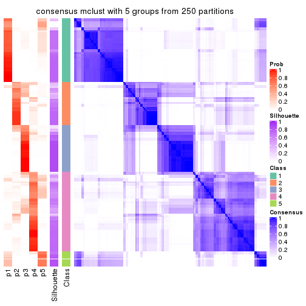
consensus_heatmap(res, k = 6)
Heatmaps for the membership of samples in all partitions to see how consistent they are:
membership_heatmap(res, k = 2)
membership_heatmap(res, k = 3)
membership_heatmap(res, k = 4)

membership_heatmap(res, k = 5)

membership_heatmap(res, k = 6)
As soon as we have had the classes for columns, we can look for signatures which are significantly different between classes which can be candidate marks for certain classes. Following are the heatmaps for signatures.
Signature heatmaps where rows are scaled:
get_signatures(res, k = 2)
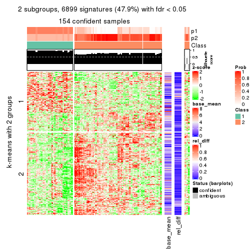
get_signatures(res, k = 3)
get_signatures(res, k = 4)
get_signatures(res, k = 5)
get_signatures(res, k = 6)
Signature heatmaps where rows are not scaled:
get_signatures(res, k = 2, scale_rows = FALSE)
get_signatures(res, k = 3, scale_rows = FALSE)
get_signatures(res, k = 4, scale_rows = FALSE)
get_signatures(res, k = 5, scale_rows = FALSE)
get_signatures(res, k = 6, scale_rows = FALSE)
Compare the overlap of signatures from different k:
compare_signatures(res)
get_signature() returns a data frame invisibly. TO get the list of signatures, the function
call should be assigned to a variable explicitly. In following code, if plot argument is set
to FALSE, no heatmap is plotted while only the differential analysis is performed.
# code only for demonstration
tb = get_signature(res, k = ..., plot = FALSE)
An example of the output of tb is:
#> which_row fdr mean_1 mean_2 scaled_mean_1 scaled_mean_2 km
#> 1 38 0.042760348 8.373488 9.131774 -0.5533452 0.5164555 1
#> 2 40 0.018707592 7.106213 8.469186 -0.6173731 0.5762149 1
#> 3 55 0.019134737 10.221463 11.207825 -0.6159697 0.5749050 1
#> 4 59 0.006059896 5.921854 7.869574 -0.6899429 0.6439467 1
#> 5 60 0.018055526 8.928898 10.211722 -0.6204761 0.5791110 1
#> 6 98 0.009384629 15.714769 14.887706 0.6635654 -0.6193277 2
...
The columns in tb are:
which_row: row indices corresponding to the input matrix.fdr: FDR for the differential test. mean_x: The mean value in group x.scaled_mean_x: The mean value in group x after rows are scaled.km: Row groups if k-means clustering is applied to rows.UMAP plot which shows how samples are separated.
dimension_reduction(res, k = 2, method = "UMAP")
dimension_reduction(res, k = 3, method = "UMAP")
dimension_reduction(res, k = 4, method = "UMAP")
dimension_reduction(res, k = 5, method = "UMAP")
dimension_reduction(res, k = 6, method = "UMAP")
Following heatmap shows how subgroups are split when increasing k:
collect_classes(res)
If matrix rows can be associated to genes, consider to use GO_Enrichment(res,
...) to perform function enrichment for the signature genes.
The object with results only for a single top-value method and a single partition method can be extracted as:
res = res_list["MAD", "NMF"]
# you can also extract it by
# res = res_list["MAD:NMF"]
A summary of res and all the functions that can be applied to it:
res
#> A 'ConsensusPartition' object with k = 2, 3, 4, 5, 6.
#> On a matrix with 14410 rows and 160 columns.
#> Top rows (1000, 2000, 3000, 4000, 5000) are extracted by 'MAD' method.
#> Subgroups are detected by 'NMF' method.
#> Performed in total 1250 partitions by row resampling.
#> Best k for subgroups seems to be 5.
#>
#> Following methods can be applied to this 'ConsensusPartition' object:
#> [1] "cola_report" "collect_classes" "collect_plots"
#> [4] "collect_stats" "colnames" "compare_signatures"
#> [7] "consensus_heatmap" "dimension_reduction" "functional_enrichment"
#> [10] "get_anno_col" "get_anno" "get_classes"
#> [13] "get_consensus" "get_matrix" "get_membership"
#> [16] "get_param" "get_signatures" "get_stats"
#> [19] "is_best_k" "is_stable_k" "membership_heatmap"
#> [22] "ncol" "nrow" "plot_ecdf"
#> [25] "rownames" "select_partition_number" "show"
#> [28] "suggest_best_k" "test_to_known_factors"
collect_plots() function collects all the plots made from res for all k (number of partitions)
into one single page to provide an easy and fast comparison between different k.
collect_plots(res)
The plots are:
k and the heatmap of
predicted classes for each k.k.k.k.All the plots in panels can be made by individual functions and they are plotted later in this section.
select_partition_number() produces several plots showing different
statistics for choosing “optimized” k. There are following statistics:
k;k, the area increased is defined as \(A_k - A_{k-1}\).The detailed explanations of these statistics can be found in the cola vignette.
Generally speaking, lower PAC score, higher mean silhouette score or higher
concordance corresponds to better partition. Rand index and Jaccard index
measure how similar the current partition is compared to partition with k-1.
If they are too similar, we won't accept k is better than k-1.
select_partition_number(res)
The numeric values for all these statistics can be obtained by get_stats().
get_stats(res)
#> k 1-PAC mean_silhouette concordance area_increased Rand Jaccard
#> 2 2 0.370 0.537 0.783 0.4934 0.502 0.502
#> 3 3 0.369 0.521 0.764 0.3498 0.650 0.410
#> 4 4 0.562 0.553 0.754 0.1241 0.772 0.436
#> 5 5 0.671 0.671 0.809 0.0641 0.925 0.717
#> 6 6 0.687 0.577 0.774 0.0382 0.924 0.671
suggest_best_k() suggests the best \(k\) based on these statistics. The rules are as follows:
NA.suggest_best_k(res)
#> [1] 5
Following shows the table of the partitions (You need to click the show/hide
code output link to see it). The membership matrix (columns with name p*)
is inferred by
clue::cl_consensus()
function with the SE method. Basically the value in the membership matrix
represents the probability to belong to a certain group. The finall class
label for an item is determined with the group with highest probability it
belongs to.
In get_classes() function, the entropy is calculated from the membership
matrix and the silhouette score is calculated from the consensus matrix.
cbind(get_classes(res, k = 2), get_membership(res, k = 2))
#> class entropy silhouette p1 p2
#> SRR031811 1 0.3114 0.4946 0.944 0.056
#> SRR031812 1 0.9710 0.6581 0.600 0.400
#> SRR031813 2 0.9710 0.7454 0.400 0.600
#> SRR031814 2 0.7139 0.0925 0.196 0.804
#> SRR031815 2 0.0000 0.4380 0.000 1.000
#> SRR031816 1 0.7950 0.0504 0.760 0.240
#> SRR031817 1 0.9552 -0.0200 0.624 0.376
#> SRR031818 2 0.9710 0.7454 0.400 0.600
#> SRR031819 2 0.7528 0.5053 0.216 0.784
#> SRR031820 2 0.9710 0.7454 0.400 0.600
#> SRR031821 1 0.2603 0.5135 0.956 0.044
#> SRR031822 2 0.9686 -0.4043 0.396 0.604
#> SRR031823 1 0.0000 0.5707 1.000 0.000
#> SRR031824 2 0.9710 0.7454 0.400 0.600
#> SRR031825 2 0.9710 0.7454 0.400 0.600
#> SRR031826 2 0.9710 0.7454 0.400 0.600
#> SRR031827 2 1.0000 0.6203 0.500 0.500
#> SRR031828 2 0.2778 0.3784 0.048 0.952
#> SRR031829 1 0.9922 -0.5354 0.552 0.448
#> SRR031830 2 0.0000 0.4380 0.000 1.000
#> SRR031831 1 0.7883 0.4587 0.764 0.236
#> SRR031832 1 0.7056 0.6325 0.808 0.192
#> SRR031833 2 0.9710 0.7454 0.400 0.600
#> SRR031834 1 0.9710 0.6581 0.600 0.400
#> SRR031835 1 0.9710 0.6581 0.600 0.400
#> SRR031836 1 0.0000 0.5707 1.000 0.000
#> SRR031837 2 0.9710 0.7454 0.400 0.600
#> SRR031838 2 0.9710 0.7454 0.400 0.600
#> SRR031839 1 0.6148 0.3014 0.848 0.152
#> SRR031840 1 0.9710 0.6581 0.600 0.400
#> SRR031841 2 0.0000 0.4380 0.000 1.000
#> SRR031842 2 0.9710 0.7454 0.400 0.600
#> SRR031843 2 0.7219 0.6008 0.200 0.800
#> SRR031844 1 0.7602 0.6383 0.780 0.220
#> SRR031845 1 0.0000 0.5707 1.000 0.000
#> SRR031846 2 0.9815 -0.4468 0.420 0.580
#> SRR031847 1 0.7056 0.6325 0.808 0.192
#> SRR031848 1 0.0000 0.5707 1.000 0.000
#> SRR031849 1 0.7139 0.6333 0.804 0.196
#> SRR031850 2 0.9710 0.7454 0.400 0.600
#> SRR031851 2 0.9710 0.7454 0.400 0.600
#> SRR031852 1 0.9710 0.6581 0.600 0.400
#> SRR031853 2 0.9815 -0.4457 0.420 0.580
#> SRR031854 2 0.3733 0.3428 0.072 0.928
#> SRR031855 2 0.9710 0.7454 0.400 0.600
#> SRR031857 1 0.2778 0.5075 0.952 0.048
#> SRR031858 2 0.9710 0.7454 0.400 0.600
#> SRR031859 2 0.9710 0.7454 0.400 0.600
#> SRR031860 2 0.9710 0.7454 0.400 0.600
#> SRR031861 2 0.9710 0.7454 0.400 0.600
#> SRR031862 1 0.9710 0.6581 0.600 0.400
#> SRR031863 1 0.9866 -0.5034 0.568 0.432
#> SRR031864 2 0.9710 0.7454 0.400 0.600
#> SRR031865 2 0.2778 0.4816 0.048 0.952
#> SRR031866 1 0.9710 0.6581 0.600 0.400
#> SRR031867 2 0.9710 0.7454 0.400 0.600
#> SRR031868 2 0.9710 0.7454 0.400 0.600
#> SRR031869 1 0.9710 0.6581 0.600 0.400
#> SRR031870 2 0.9710 0.7454 0.400 0.600
#> SRR031871 2 0.7299 0.6106 0.204 0.796
#> SRR031872 1 0.9710 0.6581 0.600 0.400
#> SRR031873 2 0.7139 0.0925 0.196 0.804
#> SRR031874 1 0.9710 0.6581 0.600 0.400
#> SRR031875 2 0.9881 0.7100 0.436 0.564
#> SRR031876 1 0.9710 0.6581 0.600 0.400
#> SRR031877 1 0.8499 0.6473 0.724 0.276
#> SRR031878 1 0.0000 0.5707 1.000 0.000
#> SRR031879 2 0.8016 0.4453 0.244 0.756
#> SRR031880 1 0.0000 0.5707 1.000 0.000
#> SRR031881 1 0.9580 -0.3864 0.620 0.380
#> SRR031882 1 0.0000 0.5707 1.000 0.000
#> SRR031883 2 0.9710 0.7454 0.400 0.600
#> SRR031884 2 0.8713 0.6740 0.292 0.708
#> SRR031885 2 0.9710 0.7454 0.400 0.600
#> SRR031886 1 0.1843 0.5829 0.972 0.028
#> SRR031887 1 0.9710 0.6581 0.600 0.400
#> SRR031888 2 0.9710 0.7454 0.400 0.600
#> SRR031889 1 0.9710 0.6581 0.600 0.400
#> SRR031890 2 0.9954 -0.5194 0.460 0.540
#> SRR031891 1 0.0000 0.5707 1.000 0.000
#> SRR031892 1 0.7602 0.6383 0.780 0.220
#> SRR031893 2 0.8327 -0.0959 0.264 0.736
#> SRR031894 2 0.9710 0.7454 0.400 0.600
#> SRR031895 2 0.0672 0.4293 0.008 0.992
#> SRR031896 2 0.9710 0.7454 0.400 0.600
#> SRR031897 2 0.9710 0.7454 0.400 0.600
#> SRR031898 2 0.9710 0.7454 0.400 0.600
#> SRR031899 1 0.0000 0.5707 1.000 0.000
#> SRR031900 2 0.9775 0.7346 0.412 0.588
#> SRR031901 2 0.9922 0.6950 0.448 0.552
#> SRR031902 2 0.7299 0.6106 0.204 0.796
#> SRR031903 2 0.7219 0.0821 0.200 0.800
#> SRR031904 2 0.9881 0.7100 0.436 0.564
#> SRR031905 1 0.9710 0.6581 0.600 0.400
#> SRR031906 1 0.9710 0.6581 0.600 0.400
#> SRR031907 1 0.1843 0.5362 0.972 0.028
#> SRR031908 1 0.7299 0.6349 0.796 0.204
#> SRR031909 1 0.9710 0.6581 0.600 0.400
#> SRR031910 1 0.0000 0.5707 1.000 0.000
#> SRR031911 2 0.9866 0.7145 0.432 0.568
#> SRR031912 1 0.9710 0.6581 0.600 0.400
#> SRR031913 1 0.7453 0.1393 0.788 0.212
#> SRR031914 1 0.9710 0.6581 0.600 0.400
#> SRR031915 1 0.0000 0.5707 1.000 0.000
#> SRR031916 1 0.0000 0.5707 1.000 0.000
#> SRR031917 1 0.9635 0.6580 0.612 0.388
#> SRR031918 1 0.0672 0.5746 0.992 0.008
#> SRR031919 1 0.9710 0.6581 0.600 0.400
#> SRR031920 1 0.0000 0.5707 1.000 0.000
#> SRR031921 2 0.9710 0.7454 0.400 0.600
#> SRR031922 1 0.9896 -0.5196 0.560 0.440
#> SRR031923 2 0.9710 0.7454 0.400 0.600
#> SRR031924 1 0.9710 0.6581 0.600 0.400
#> SRR031925 1 0.0000 0.5707 1.000 0.000
#> SRR031926 2 0.9710 0.7454 0.400 0.600
#> SRR031927 2 0.9710 0.7454 0.400 0.600
#> SRR031928 1 0.9710 0.6581 0.600 0.400
#> SRR031929 2 0.9732 0.7420 0.404 0.596
#> SRR031930 2 0.9710 0.7454 0.400 0.600
#> SRR031931 2 0.5519 0.5549 0.128 0.872
#> SRR031932 1 0.9909 0.6215 0.556 0.444
#> SRR031933 2 0.9710 0.7454 0.400 0.600
#> SRR031934 1 0.9954 0.6097 0.540 0.460
#> SRR031935 1 0.0376 0.5662 0.996 0.004
#> SRR031936 2 0.5737 0.2305 0.136 0.864
#> SRR031937 1 0.9710 0.6581 0.600 0.400
#> SRR031938 1 0.9323 0.6547 0.652 0.348
#> SRR031939 2 0.9710 0.7454 0.400 0.600
#> SRR031940 1 0.9710 0.6581 0.600 0.400
#> SRR031941 1 0.0000 0.5707 1.000 0.000
#> SRR031942 1 0.9129 0.6535 0.672 0.328
#> SRR031943 1 0.0000 0.5707 1.000 0.000
#> SRR031944 1 0.9710 0.6581 0.600 0.400
#> SRR031945 1 0.9710 0.6581 0.600 0.400
#> SRR031946 1 0.2948 0.5911 0.948 0.052
#> SRR031947 1 0.1414 0.5801 0.980 0.020
#> SRR031948 1 0.9710 0.6581 0.600 0.400
#> SRR031949 1 0.9710 0.6581 0.600 0.400
#> SRR031950 1 0.8763 -0.1510 0.704 0.296
#> SRR031951 1 0.2603 0.5136 0.956 0.044
#> SRR031952 1 0.9710 0.6581 0.600 0.400
#> SRR031953 1 0.9710 0.6581 0.600 0.400
#> SRR031954 1 0.9710 0.6581 0.600 0.400
#> SRR031955 1 0.9710 0.6581 0.600 0.400
#> SRR031956 1 0.0000 0.5707 1.000 0.000
#> SRR031957 1 0.7674 0.1032 0.776 0.224
#> SRR031958 1 0.7056 0.1964 0.808 0.192
#> SRR031959 1 0.0000 0.5707 1.000 0.000
#> SRR031960 1 0.4562 0.4221 0.904 0.096
#> SRR031961 1 0.9710 0.6581 0.600 0.400
#> SRR031962 1 0.9710 0.6581 0.600 0.400
#> SRR031963 1 0.0000 0.5707 1.000 0.000
#> SRR031964 1 0.9710 0.6564 0.600 0.400
#> SRR031965 2 0.9710 0.7454 0.400 0.600
#> SRR031966 2 0.9710 0.7454 0.400 0.600
#> SRR031967 2 0.7299 0.0712 0.204 0.796
#> SRR031968 2 0.4562 0.3032 0.096 0.904
#> SRR031969 2 0.0000 0.4380 0.000 1.000
#> SRR031970 2 0.9710 0.7454 0.400 0.600
#> SRR031971 2 0.0000 0.4380 0.000 1.000
cbind(get_classes(res, k = 3), get_membership(res, k = 3))
#> class entropy silhouette p1 p2 p3
#> SRR031811 3 0.1529 0.68297 0.000 0.040 0.960
#> SRR031812 1 0.4654 0.61887 0.792 0.000 0.208
#> SRR031813 2 0.1015 0.68604 0.012 0.980 0.008
#> SRR031814 1 0.1031 0.71262 0.976 0.024 0.000
#> SRR031815 1 0.6225 0.12806 0.568 0.432 0.000
#> SRR031816 3 0.3941 0.62558 0.000 0.156 0.844
#> SRR031817 1 0.9007 0.38153 0.552 0.268 0.180
#> SRR031818 2 0.4452 0.70137 0.000 0.808 0.192
#> SRR031819 1 0.8573 0.42636 0.584 0.280 0.136
#> SRR031820 2 0.6111 0.53981 0.104 0.784 0.112
#> SRR031821 3 0.3619 0.63823 0.000 0.136 0.864
#> SRR031822 1 0.0747 0.71438 0.984 0.016 0.000
#> SRR031823 3 0.0592 0.68589 0.000 0.012 0.988
#> SRR031824 2 0.4702 0.70550 0.000 0.788 0.212
#> SRR031825 2 0.4796 0.70070 0.000 0.780 0.220
#> SRR031826 2 0.0829 0.68416 0.012 0.984 0.004
#> SRR031827 3 0.4346 0.60125 0.000 0.184 0.816
#> SRR031828 1 0.4002 0.61169 0.840 0.160 0.000
#> SRR031829 3 0.3686 0.63712 0.000 0.140 0.860
#> SRR031830 2 0.6291 0.13413 0.468 0.532 0.000
#> SRR031831 1 0.8703 0.41341 0.592 0.228 0.180
#> SRR031832 1 0.8726 0.41309 0.592 0.212 0.196
#> SRR031833 2 0.5760 0.39982 0.000 0.672 0.328
#> SRR031834 1 0.0424 0.71422 0.992 0.008 0.000
#> SRR031835 1 0.4555 0.62576 0.800 0.000 0.200
#> SRR031836 3 0.9615 0.14635 0.324 0.220 0.456
#> SRR031837 2 0.9318 -0.01177 0.352 0.476 0.172
#> SRR031838 2 0.1751 0.69356 0.012 0.960 0.028
#> SRR031839 3 0.8363 0.34107 0.084 0.412 0.504
#> SRR031840 1 0.6168 0.34542 0.588 0.000 0.412
#> SRR031841 1 0.6192 0.20259 0.580 0.420 0.000
#> SRR031842 2 0.4702 0.70550 0.000 0.788 0.212
#> SRR031843 2 0.9028 -0.16685 0.432 0.436 0.132
#> SRR031844 3 0.7720 0.48348 0.120 0.208 0.672
#> SRR031845 3 0.0237 0.68597 0.004 0.000 0.996
#> SRR031846 1 0.9931 0.12042 0.392 0.304 0.304
#> SRR031847 1 0.8804 0.40631 0.584 0.212 0.204
#> SRR031848 3 0.9627 0.13589 0.328 0.220 0.452
#> SRR031849 1 0.8685 0.41637 0.596 0.212 0.192
#> SRR031850 2 0.5058 0.67585 0.000 0.756 0.244
#> SRR031851 2 0.4750 0.70388 0.000 0.784 0.216
#> SRR031852 1 0.0000 0.71422 1.000 0.000 0.000
#> SRR031853 1 0.0747 0.71335 0.984 0.016 0.000
#> SRR031854 1 0.1643 0.70569 0.956 0.044 0.000
#> SRR031855 2 0.4413 0.71270 0.008 0.832 0.160
#> SRR031857 3 0.3619 0.63882 0.000 0.136 0.864
#> SRR031858 2 0.6483 0.26038 0.004 0.544 0.452
#> SRR031859 2 0.4702 0.70550 0.000 0.788 0.212
#> SRR031860 2 0.4702 0.70550 0.000 0.788 0.212
#> SRR031861 2 0.4750 0.70388 0.000 0.784 0.216
#> SRR031862 1 0.1529 0.70837 0.960 0.000 0.040
#> SRR031863 3 0.4575 0.60147 0.004 0.184 0.812
#> SRR031864 2 0.4750 0.70388 0.000 0.784 0.216
#> SRR031865 2 0.3941 0.58462 0.156 0.844 0.000
#> SRR031866 1 0.0237 0.71421 0.996 0.000 0.004
#> SRR031867 3 0.6260 0.03446 0.000 0.448 0.552
#> SRR031868 2 0.4605 0.70632 0.000 0.796 0.204
#> SRR031869 1 0.0000 0.71422 1.000 0.000 0.000
#> SRR031870 3 0.6654 -0.06210 0.008 0.456 0.536
#> SRR031871 2 0.6208 0.65362 0.164 0.768 0.068
#> SRR031872 1 0.3551 0.66522 0.868 0.000 0.132
#> SRR031873 1 0.3038 0.66234 0.896 0.104 0.000
#> SRR031874 1 0.7042 0.58141 0.728 0.132 0.140
#> SRR031875 2 0.9187 0.12037 0.196 0.532 0.272
#> SRR031876 1 0.5810 0.47915 0.664 0.000 0.336
#> SRR031877 3 0.4504 0.59941 0.196 0.000 0.804
#> SRR031878 3 0.1753 0.68120 0.000 0.048 0.952
#> SRR031879 1 0.8483 0.44136 0.600 0.260 0.140
#> SRR031880 3 0.1163 0.68466 0.000 0.028 0.972
#> SRR031881 3 0.4555 0.58229 0.000 0.200 0.800
#> SRR031882 3 0.7515 0.52219 0.100 0.220 0.680
#> SRR031883 2 0.5500 0.57075 0.100 0.816 0.084
#> SRR031884 1 0.9256 0.18337 0.444 0.400 0.156
#> SRR031885 2 0.0592 0.68215 0.000 0.988 0.012
#> SRR031886 1 0.9560 0.18187 0.464 0.212 0.324
#> SRR031887 1 0.6252 0.28503 0.556 0.000 0.444
#> SRR031888 3 0.5706 0.39785 0.000 0.320 0.680
#> SRR031889 1 0.3038 0.67418 0.896 0.104 0.000
#> SRR031890 1 0.9901 0.09036 0.392 0.272 0.336
#> SRR031891 3 0.0424 0.68602 0.008 0.000 0.992
#> SRR031892 3 0.8688 0.37325 0.196 0.208 0.596
#> SRR031893 1 0.0592 0.71406 0.988 0.012 0.000
#> SRR031894 2 0.1643 0.67411 0.044 0.956 0.000
#> SRR031895 1 0.6513 0.00147 0.520 0.476 0.004
#> SRR031896 2 0.1315 0.67306 0.008 0.972 0.020
#> SRR031897 3 0.6295 -0.05246 0.000 0.472 0.528
#> SRR031898 2 0.4750 0.70388 0.000 0.784 0.216
#> SRR031899 3 0.8542 0.45357 0.172 0.220 0.608
#> SRR031900 3 0.6081 0.33590 0.004 0.344 0.652
#> SRR031901 3 0.7363 0.37677 0.064 0.280 0.656
#> SRR031902 2 0.6266 0.65906 0.156 0.768 0.076
#> SRR031903 1 0.1643 0.70408 0.956 0.044 0.000
#> SRR031904 2 0.5948 0.34049 0.000 0.640 0.360
#> SRR031905 1 0.3482 0.66785 0.872 0.000 0.128
#> SRR031906 1 0.0000 0.71422 1.000 0.000 0.000
#> SRR031907 3 0.2796 0.66467 0.000 0.092 0.908
#> SRR031908 1 0.8557 0.43283 0.608 0.212 0.180
#> SRR031909 1 0.5760 0.49116 0.672 0.000 0.328
#> SRR031910 3 0.8290 0.46018 0.164 0.204 0.632
#> SRR031911 2 0.9055 0.16864 0.196 0.552 0.252
#> SRR031912 1 0.7160 0.57516 0.720 0.148 0.132
#> SRR031913 3 0.4121 0.61509 0.000 0.168 0.832
#> SRR031914 1 0.6476 0.25951 0.548 0.004 0.448
#> SRR031915 3 0.0424 0.68554 0.000 0.008 0.992
#> SRR031916 3 0.3619 0.64255 0.000 0.136 0.864
#> SRR031917 3 0.4346 0.55806 0.184 0.000 0.816
#> SRR031918 3 0.9290 0.29814 0.256 0.220 0.524
#> SRR031919 1 0.5678 0.50695 0.684 0.000 0.316
#> SRR031920 3 0.8331 0.46013 0.164 0.208 0.628
#> SRR031921 2 0.3112 0.65200 0.056 0.916 0.028
#> SRR031922 3 0.5335 0.54417 0.008 0.232 0.760
#> SRR031923 2 0.4750 0.70388 0.000 0.784 0.216
#> SRR031924 1 0.0592 0.71375 0.988 0.012 0.000
#> SRR031925 3 0.2356 0.67265 0.000 0.072 0.928
#> SRR031926 3 0.5254 0.49832 0.000 0.264 0.736
#> SRR031927 2 0.3755 0.60022 0.008 0.872 0.120
#> SRR031928 1 0.1031 0.71186 0.976 0.000 0.024
#> SRR031929 3 0.5690 0.46005 0.004 0.288 0.708
#> SRR031930 2 0.4750 0.70388 0.000 0.784 0.216
#> SRR031931 2 0.2959 0.64400 0.100 0.900 0.000
#> SRR031932 1 0.0475 0.71458 0.992 0.004 0.004
#> SRR031933 2 0.4750 0.70388 0.000 0.784 0.216
#> SRR031934 1 0.7724 0.55222 0.680 0.164 0.156
#> SRR031935 3 0.4235 0.61271 0.000 0.176 0.824
#> SRR031936 1 0.8812 0.29838 0.516 0.124 0.360
#> SRR031937 1 0.5560 0.52724 0.700 0.000 0.300
#> SRR031938 3 0.4346 0.56537 0.184 0.000 0.816
#> SRR031939 2 0.1411 0.69507 0.000 0.964 0.036
#> SRR031940 1 0.0237 0.71432 0.996 0.004 0.000
#> SRR031941 3 0.0424 0.68600 0.000 0.008 0.992
#> SRR031942 3 0.4346 0.59210 0.184 0.000 0.816
#> SRR031943 3 0.8138 0.47369 0.152 0.204 0.644
#> SRR031944 3 0.5363 0.39240 0.276 0.000 0.724
#> SRR031945 3 0.9340 0.08273 0.308 0.192 0.500
#> SRR031946 3 0.8984 0.35914 0.224 0.212 0.564
#> SRR031947 3 0.2860 0.66573 0.004 0.084 0.912
#> SRR031948 1 0.1643 0.70642 0.956 0.000 0.044
#> SRR031949 1 0.0747 0.71220 0.984 0.000 0.016
#> SRR031950 3 0.4605 0.57886 0.000 0.204 0.796
#> SRR031951 3 0.2711 0.66674 0.000 0.088 0.912
#> SRR031952 3 0.6359 0.14146 0.404 0.004 0.592
#> SRR031953 1 0.6215 0.31588 0.572 0.000 0.428
#> SRR031954 3 0.9061 0.02485 0.348 0.148 0.504
#> SRR031955 3 0.6008 0.21628 0.372 0.000 0.628
#> SRR031956 3 0.0424 0.68598 0.000 0.008 0.992
#> SRR031957 3 0.5650 0.57725 0.000 0.312 0.688
#> SRR031958 3 0.2796 0.66579 0.000 0.092 0.908
#> SRR031959 3 0.0237 0.68558 0.004 0.000 0.996
#> SRR031960 3 0.1753 0.68130 0.000 0.048 0.952
#> SRR031961 1 0.2945 0.69041 0.908 0.004 0.088
#> SRR031962 1 0.6235 0.30324 0.564 0.000 0.436
#> SRR031963 3 0.1411 0.68383 0.000 0.036 0.964
#> SRR031964 3 0.6553 0.12304 0.412 0.008 0.580
#> SRR031965 2 0.4750 0.70388 0.000 0.784 0.216
#> SRR031966 2 0.4702 0.70550 0.000 0.788 0.212
#> SRR031967 1 0.0424 0.71425 0.992 0.008 0.000
#> SRR031968 1 0.1411 0.70918 0.964 0.036 0.000
#> SRR031969 2 0.6126 0.29810 0.400 0.600 0.000
#> SRR031970 2 0.5503 0.70654 0.020 0.772 0.208
#> SRR031971 2 0.6126 0.29096 0.400 0.600 0.000
cbind(get_classes(res, k = 4), get_membership(res, k = 4))
#> class entropy silhouette p1 p2 p3 p4
#> SRR031811 4 0.1151 0.75390 0.000 0.008 0.024 0.968
#> SRR031812 1 0.0657 0.78681 0.984 0.000 0.004 0.012
#> SRR031813 2 0.1716 0.73142 0.000 0.936 0.064 0.000
#> SRR031814 1 0.4335 0.69502 0.796 0.036 0.168 0.000
#> SRR031815 1 0.7421 0.08145 0.432 0.400 0.168 0.000
#> SRR031816 4 0.5143 0.47279 0.012 0.360 0.000 0.628
#> SRR031817 3 0.1109 0.63540 0.000 0.004 0.968 0.028
#> SRR031818 2 0.4130 0.69781 0.000 0.828 0.108 0.064
#> SRR031819 3 0.1888 0.59120 0.016 0.044 0.940 0.000
#> SRR031820 3 0.3444 0.46630 0.000 0.184 0.816 0.000
#> SRR031821 4 0.5572 0.60601 0.196 0.088 0.000 0.716
#> SRR031822 1 0.5778 0.49749 0.604 0.040 0.356 0.000
#> SRR031823 4 0.0707 0.75222 0.000 0.000 0.020 0.980
#> SRR031824 2 0.0921 0.74697 0.000 0.972 0.000 0.028
#> SRR031825 2 0.4008 0.56181 0.000 0.756 0.000 0.244
#> SRR031826 2 0.2216 0.71581 0.000 0.908 0.092 0.000
#> SRR031827 4 0.5427 0.33776 0.016 0.416 0.000 0.568
#> SRR031828 1 0.6357 0.56208 0.644 0.124 0.232 0.000
#> SRR031829 4 0.2469 0.76408 0.000 0.108 0.000 0.892
#> SRR031830 2 0.6844 0.38111 0.260 0.588 0.152 0.000
#> SRR031831 3 0.0921 0.63611 0.000 0.000 0.972 0.028
#> SRR031832 3 0.1940 0.64382 0.000 0.000 0.924 0.076
#> SRR031833 3 0.6843 0.20561 0.000 0.100 0.460 0.440
#> SRR031834 1 0.4250 0.62648 0.724 0.000 0.276 0.000
#> SRR031835 1 0.0779 0.78669 0.980 0.000 0.004 0.016
#> SRR031836 3 0.4585 0.53053 0.000 0.000 0.668 0.332
#> SRR031837 3 0.1109 0.63540 0.000 0.004 0.968 0.028
#> SRR031838 2 0.0469 0.75038 0.000 0.988 0.012 0.000
#> SRR031839 3 0.4624 0.51936 0.000 0.000 0.660 0.340
#> SRR031840 1 0.0921 0.78431 0.972 0.000 0.000 0.028
#> SRR031841 2 0.7458 0.17107 0.176 0.444 0.380 0.000
#> SRR031842 2 0.0707 0.74901 0.000 0.980 0.000 0.020
#> SRR031843 3 0.1706 0.59857 0.016 0.036 0.948 0.000
#> SRR031844 3 0.4961 0.37810 0.000 0.000 0.552 0.448
#> SRR031845 4 0.3306 0.62918 0.000 0.004 0.156 0.840
#> SRR031846 2 0.7842 0.04755 0.360 0.376 0.000 0.264
#> SRR031847 3 0.2589 0.63660 0.000 0.000 0.884 0.116
#> SRR031848 3 0.4543 0.53534 0.000 0.000 0.676 0.324
#> SRR031849 3 0.1302 0.64065 0.000 0.000 0.956 0.044
#> SRR031850 2 0.4877 0.19599 0.000 0.592 0.000 0.408
#> SRR031851 2 0.2760 0.68920 0.000 0.872 0.000 0.128
#> SRR031852 1 0.5691 0.42183 0.564 0.028 0.408 0.000
#> SRR031853 3 0.6010 -0.28180 0.472 0.040 0.488 0.000
#> SRR031854 3 0.7300 0.16807 0.196 0.276 0.528 0.000
#> SRR031855 2 0.0188 0.75077 0.000 0.996 0.004 0.000
#> SRR031857 4 0.5763 0.60115 0.204 0.096 0.000 0.700
#> SRR031858 4 0.4222 0.61819 0.000 0.272 0.000 0.728
#> SRR031859 2 0.1211 0.74383 0.000 0.960 0.000 0.040
#> SRR031860 2 0.0592 0.74968 0.000 0.984 0.000 0.016
#> SRR031861 2 0.1716 0.73240 0.000 0.936 0.000 0.064
#> SRR031862 1 0.0188 0.78634 0.996 0.000 0.004 0.000
#> SRR031863 4 0.3024 0.74549 0.000 0.148 0.000 0.852
#> SRR031864 2 0.4164 0.53153 0.000 0.736 0.000 0.264
#> SRR031865 2 0.5417 0.50591 0.040 0.676 0.284 0.000
#> SRR031866 1 0.1474 0.77537 0.948 0.000 0.052 0.000
#> SRR031867 4 0.3356 0.71825 0.000 0.176 0.000 0.824
#> SRR031868 2 0.1302 0.74169 0.000 0.956 0.000 0.044
#> SRR031869 1 0.4040 0.65237 0.752 0.000 0.248 0.000
#> SRR031870 4 0.3996 0.71661 0.000 0.060 0.104 0.836
#> SRR031871 2 0.1938 0.74186 0.052 0.936 0.000 0.012
#> SRR031872 1 0.0336 0.78587 0.992 0.000 0.008 0.000
#> SRR031873 1 0.2521 0.76386 0.912 0.024 0.064 0.000
#> SRR031874 3 0.6374 0.18310 0.372 0.000 0.556 0.072
#> SRR031875 3 0.4313 0.57938 0.000 0.004 0.736 0.260
#> SRR031876 1 0.1109 0.78495 0.968 0.000 0.004 0.028
#> SRR031877 4 0.4095 0.56133 0.016 0.000 0.192 0.792
#> SRR031878 4 0.1798 0.76535 0.000 0.040 0.016 0.944
#> SRR031879 3 0.1610 0.59947 0.016 0.032 0.952 0.000
#> SRR031880 4 0.0336 0.75595 0.000 0.000 0.008 0.992
#> SRR031881 4 0.6136 0.47503 0.080 0.288 0.000 0.632
#> SRR031882 3 0.4697 0.50210 0.000 0.000 0.644 0.356
#> SRR031883 3 0.4252 0.36267 0.004 0.252 0.744 0.000
#> SRR031884 3 0.0469 0.61920 0.000 0.012 0.988 0.000
#> SRR031885 2 0.4103 0.58213 0.000 0.744 0.256 0.000
#> SRR031886 3 0.3356 0.61878 0.000 0.000 0.824 0.176
#> SRR031887 1 0.1302 0.77740 0.956 0.000 0.000 0.044
#> SRR031888 4 0.4898 0.36145 0.000 0.416 0.000 0.584
#> SRR031889 1 0.5781 0.28865 0.488 0.028 0.484 0.000
#> SRR031890 1 0.8178 -0.01099 0.388 0.352 0.012 0.248
#> SRR031891 4 0.3448 0.61239 0.000 0.004 0.168 0.828
#> SRR031892 3 0.4898 0.43272 0.000 0.000 0.584 0.416
#> SRR031893 3 0.6031 -0.15928 0.420 0.044 0.536 0.000
#> SRR031894 2 0.4053 0.60875 0.004 0.768 0.228 0.000
#> SRR031895 1 0.1211 0.77740 0.960 0.040 0.000 0.000
#> SRR031896 2 0.4679 0.45191 0.000 0.648 0.352 0.000
#> SRR031897 4 0.5167 0.09717 0.004 0.488 0.000 0.508
#> SRR031898 2 0.4643 0.39065 0.000 0.656 0.000 0.344
#> SRR031899 3 0.4916 0.42038 0.000 0.000 0.576 0.424
#> SRR031900 4 0.2760 0.75303 0.000 0.128 0.000 0.872
#> SRR031901 4 0.3694 0.68899 0.000 0.032 0.124 0.844
#> SRR031902 2 0.1059 0.75091 0.016 0.972 0.000 0.012
#> SRR031903 1 0.2300 0.76633 0.920 0.016 0.064 0.000
#> SRR031904 2 0.7784 -0.01106 0.000 0.392 0.244 0.364
#> SRR031905 1 0.0336 0.78587 0.992 0.000 0.008 0.000
#> SRR031906 1 0.4008 0.65580 0.756 0.000 0.244 0.000
#> SRR031907 4 0.2413 0.76698 0.020 0.064 0.000 0.916
#> SRR031908 3 0.0921 0.63622 0.000 0.000 0.972 0.028
#> SRR031909 1 0.1109 0.78495 0.968 0.000 0.004 0.028
#> SRR031910 3 0.4948 0.39303 0.000 0.000 0.560 0.440
#> SRR031911 3 0.4053 0.59707 0.000 0.004 0.768 0.228
#> SRR031912 3 0.5986 0.29655 0.320 0.000 0.620 0.060
#> SRR031913 4 0.2921 0.74987 0.000 0.140 0.000 0.860
#> SRR031914 1 0.1022 0.78278 0.968 0.000 0.000 0.032
#> SRR031915 4 0.0707 0.74905 0.000 0.000 0.020 0.980
#> SRR031916 4 0.4790 0.07891 0.000 0.000 0.380 0.620
#> SRR031917 1 0.4955 0.14919 0.556 0.000 0.000 0.444
#> SRR031918 3 0.4661 0.51333 0.000 0.000 0.652 0.348
#> SRR031919 1 0.1042 0.78609 0.972 0.000 0.008 0.020
#> SRR031920 3 0.4925 0.41506 0.000 0.000 0.572 0.428
#> SRR031921 3 0.5167 -0.18173 0.004 0.488 0.508 0.000
#> SRR031922 4 0.2635 0.76928 0.000 0.076 0.020 0.904
#> SRR031923 2 0.4406 0.47854 0.000 0.700 0.000 0.300
#> SRR031924 3 0.5161 -0.06601 0.400 0.008 0.592 0.000
#> SRR031925 4 0.4361 0.63853 0.208 0.020 0.000 0.772
#> SRR031926 4 0.5097 0.27791 0.004 0.428 0.000 0.568
#> SRR031927 3 0.5220 0.04009 0.000 0.424 0.568 0.008
#> SRR031928 1 0.0188 0.78634 0.996 0.000 0.004 0.000
#> SRR031929 4 0.3649 0.70250 0.000 0.204 0.000 0.796
#> SRR031930 2 0.4406 0.47094 0.000 0.700 0.000 0.300
#> SRR031931 2 0.4808 0.57418 0.028 0.736 0.236 0.000
#> SRR031932 1 0.2466 0.75561 0.900 0.004 0.096 0.000
#> SRR031933 2 0.4477 0.45972 0.000 0.688 0.000 0.312
#> SRR031934 1 0.0336 0.78679 0.992 0.000 0.000 0.008
#> SRR031935 4 0.4855 0.00782 0.000 0.000 0.400 0.600
#> SRR031936 1 0.0921 0.78431 0.972 0.000 0.000 0.028
#> SRR031937 1 0.0779 0.78682 0.980 0.000 0.004 0.016
#> SRR031938 1 0.4972 0.11213 0.544 0.000 0.000 0.456
#> SRR031939 2 0.1109 0.74947 0.000 0.968 0.028 0.004
#> SRR031940 1 0.5744 0.37012 0.536 0.028 0.436 0.000
#> SRR031941 4 0.0592 0.75881 0.016 0.000 0.000 0.984
#> SRR031942 4 0.3831 0.54818 0.004 0.000 0.204 0.792
#> SRR031943 3 0.4955 0.38594 0.000 0.000 0.556 0.444
#> SRR031944 1 0.6031 0.31624 0.564 0.000 0.048 0.388
#> SRR031945 1 0.5440 0.57128 0.736 0.000 0.160 0.104
#> SRR031946 3 0.4761 0.48596 0.000 0.000 0.628 0.372
#> SRR031947 4 0.2921 0.64264 0.000 0.000 0.140 0.860
#> SRR031948 1 0.0817 0.78320 0.976 0.000 0.024 0.000
#> SRR031949 1 0.4985 0.34059 0.532 0.000 0.468 0.000
#> SRR031950 4 0.4820 0.58050 0.012 0.296 0.000 0.692
#> SRR031951 4 0.2542 0.76928 0.012 0.084 0.000 0.904
#> SRR031952 1 0.2973 0.71171 0.856 0.000 0.000 0.144
#> SRR031953 1 0.0921 0.78431 0.972 0.000 0.000 0.028
#> SRR031954 1 0.5110 0.61310 0.764 0.000 0.132 0.104
#> SRR031955 1 0.4222 0.58491 0.728 0.000 0.000 0.272
#> SRR031956 4 0.1209 0.75406 0.032 0.000 0.004 0.964
#> SRR031957 3 0.8101 0.21228 0.016 0.220 0.448 0.316
#> SRR031958 4 0.2300 0.76898 0.000 0.064 0.016 0.920
#> SRR031959 4 0.1406 0.74705 0.024 0.000 0.016 0.960
#> SRR031960 4 0.1406 0.75673 0.000 0.016 0.024 0.960
#> SRR031961 1 0.0657 0.78684 0.984 0.000 0.012 0.004
#> SRR031962 1 0.0921 0.78431 0.972 0.000 0.000 0.028
#> SRR031963 4 0.0927 0.76399 0.008 0.016 0.000 0.976
#> SRR031964 1 0.2973 0.71171 0.856 0.000 0.000 0.144
#> SRR031965 2 0.1867 0.72850 0.000 0.928 0.000 0.072
#> SRR031966 2 0.0469 0.75014 0.000 0.988 0.000 0.012
#> SRR031967 1 0.6583 0.38655 0.528 0.084 0.388 0.000
#> SRR031968 3 0.7586 -0.20276 0.388 0.196 0.416 0.000
#> SRR031969 2 0.6535 0.38107 0.100 0.588 0.312 0.000
#> SRR031970 2 0.0336 0.75069 0.000 0.992 0.008 0.000
#> SRR031971 2 0.6542 0.47477 0.168 0.636 0.196 0.000
cbind(get_classes(res, k = 5), get_membership(res, k = 5))
#> class entropy silhouette p1 p2 p3 p4 p5
#> SRR031811 4 0.2188 0.7909 0.000 0.024 0.024 0.924 0.028
#> SRR031812 1 0.0794 0.8097 0.972 0.000 0.000 0.000 0.028
#> SRR031813 2 0.1799 0.7608 0.000 0.940 0.020 0.012 0.028
#> SRR031814 5 0.4977 0.1715 0.472 0.028 0.000 0.000 0.500
#> SRR031815 2 0.6840 -0.1982 0.244 0.396 0.004 0.000 0.356
#> SRR031816 4 0.5252 0.3852 0.016 0.404 0.016 0.560 0.004
#> SRR031817 3 0.1195 0.8462 0.000 0.012 0.960 0.000 0.028
#> SRR031818 2 0.4629 0.7084 0.000 0.740 0.036 0.020 0.204
#> SRR031819 3 0.2300 0.8253 0.000 0.040 0.908 0.000 0.052
#> SRR031820 3 0.3647 0.7605 0.000 0.132 0.816 0.000 0.052
#> SRR031821 4 0.3318 0.7759 0.028 0.116 0.004 0.848 0.004
#> SRR031822 1 0.5063 0.5910 0.736 0.028 0.076 0.000 0.160
#> SRR031823 4 0.2506 0.7794 0.000 0.008 0.052 0.904 0.036
#> SRR031824 2 0.2012 0.7683 0.000 0.920 0.000 0.020 0.060
#> SRR031825 2 0.4277 0.7213 0.000 0.768 0.000 0.076 0.156
#> SRR031826 2 0.2807 0.7485 0.000 0.892 0.056 0.020 0.032
#> SRR031827 2 0.5330 -0.1637 0.016 0.488 0.016 0.476 0.004
#> SRR031828 5 0.5717 0.5212 0.324 0.104 0.000 0.000 0.572
#> SRR031829 4 0.2390 0.7920 0.000 0.084 0.000 0.896 0.020
#> SRR031830 2 0.6226 0.1823 0.140 0.524 0.004 0.000 0.332
#> SRR031831 3 0.1082 0.8476 0.000 0.008 0.964 0.000 0.028
#> SRR031832 3 0.0510 0.8523 0.000 0.000 0.984 0.000 0.016
#> SRR031833 3 0.5163 0.6896 0.000 0.116 0.732 0.024 0.128
#> SRR031834 1 0.3807 0.6943 0.820 0.008 0.116 0.000 0.056
#> SRR031835 1 0.0703 0.8097 0.976 0.000 0.000 0.000 0.024
#> SRR031836 3 0.0703 0.8514 0.000 0.000 0.976 0.024 0.000
#> SRR031837 3 0.1372 0.8483 0.000 0.016 0.956 0.004 0.024
#> SRR031838 2 0.1280 0.7642 0.000 0.960 0.008 0.008 0.024
#> SRR031839 3 0.0727 0.8540 0.000 0.004 0.980 0.012 0.004
#> SRR031840 1 0.0880 0.8070 0.968 0.000 0.000 0.000 0.032
#> SRR031841 5 0.7053 0.0782 0.100 0.408 0.064 0.000 0.428
#> SRR031842 2 0.1168 0.7671 0.000 0.960 0.000 0.032 0.008
#> SRR031843 3 0.3164 0.7950 0.000 0.044 0.852 0.000 0.104
#> SRR031844 3 0.2908 0.8055 0.016 0.000 0.868 0.108 0.008
#> SRR031845 4 0.2502 0.7629 0.000 0.012 0.024 0.904 0.060
#> SRR031846 5 0.3737 0.4346 0.008 0.004 0.000 0.224 0.764
#> SRR031847 3 0.0510 0.8523 0.000 0.000 0.984 0.000 0.016
#> SRR031848 3 0.0703 0.8514 0.000 0.000 0.976 0.024 0.000
#> SRR031849 3 0.0510 0.8523 0.000 0.000 0.984 0.000 0.016
#> SRR031850 2 0.3336 0.6230 0.000 0.772 0.000 0.228 0.000
#> SRR031851 2 0.2074 0.7488 0.000 0.896 0.000 0.104 0.000
#> SRR031852 5 0.4508 0.6839 0.256 0.000 0.004 0.032 0.708
#> SRR031853 5 0.4598 0.6934 0.232 0.008 0.020 0.012 0.728
#> SRR031854 5 0.5020 0.6899 0.140 0.076 0.036 0.000 0.748
#> SRR031855 2 0.1701 0.7632 0.000 0.936 0.016 0.000 0.048
#> SRR031857 4 0.4498 0.7431 0.092 0.116 0.008 0.780 0.004
#> SRR031858 4 0.4090 0.6760 0.000 0.016 0.000 0.716 0.268
#> SRR031859 2 0.3241 0.7505 0.000 0.832 0.000 0.024 0.144
#> SRR031860 2 0.2012 0.7671 0.000 0.920 0.000 0.020 0.060
#> SRR031861 2 0.2850 0.7659 0.000 0.872 0.000 0.036 0.092
#> SRR031862 1 0.0963 0.8004 0.964 0.000 0.000 0.000 0.036
#> SRR031863 4 0.2304 0.7812 0.000 0.100 0.000 0.892 0.008
#> SRR031864 2 0.2329 0.7362 0.000 0.876 0.000 0.124 0.000
#> SRR031865 2 0.5445 0.4242 0.008 0.616 0.312 0.000 0.064
#> SRR031866 1 0.3109 0.6407 0.800 0.000 0.000 0.000 0.200
#> SRR031867 4 0.4148 0.7071 0.004 0.028 0.000 0.752 0.216
#> SRR031868 2 0.3779 0.7236 0.000 0.776 0.000 0.024 0.200
#> SRR031869 1 0.4066 0.4029 0.672 0.000 0.004 0.000 0.324
#> SRR031870 4 0.4537 0.4996 0.000 0.012 0.000 0.592 0.396
#> SRR031871 2 0.4173 0.6427 0.000 0.688 0.000 0.012 0.300
#> SRR031872 1 0.0290 0.8089 0.992 0.000 0.000 0.000 0.008
#> SRR031873 1 0.4651 0.3773 0.608 0.020 0.000 0.000 0.372
#> SRR031874 3 0.7101 0.1846 0.160 0.000 0.504 0.048 0.288
#> SRR031875 3 0.0162 0.8536 0.000 0.000 0.996 0.004 0.000
#> SRR031876 1 0.0404 0.8086 0.988 0.000 0.000 0.000 0.012
#> SRR031877 4 0.4182 0.5324 0.000 0.000 0.004 0.644 0.352
#> SRR031878 4 0.2650 0.7868 0.000 0.068 0.036 0.892 0.004
#> SRR031879 3 0.2228 0.8276 0.000 0.040 0.912 0.000 0.048
#> SRR031880 4 0.2529 0.7871 0.000 0.024 0.032 0.908 0.036
#> SRR031881 4 0.3740 0.7260 0.012 0.196 0.000 0.784 0.008
#> SRR031882 3 0.0510 0.8527 0.000 0.000 0.984 0.016 0.000
#> SRR031883 3 0.4303 0.6864 0.000 0.192 0.752 0.000 0.056
#> SRR031884 3 0.2221 0.8292 0.000 0.036 0.912 0.000 0.052
#> SRR031885 2 0.4676 0.3087 0.000 0.592 0.392 0.004 0.012
#> SRR031886 3 0.0693 0.8533 0.000 0.000 0.980 0.012 0.008
#> SRR031887 1 0.0609 0.8085 0.980 0.000 0.000 0.000 0.020
#> SRR031888 4 0.5126 0.3279 0.000 0.432 0.008 0.536 0.024
#> SRR031889 1 0.7258 -0.1221 0.376 0.020 0.320 0.000 0.284
#> SRR031890 5 0.3797 0.4227 0.008 0.004 0.000 0.232 0.756
#> SRR031891 4 0.2390 0.7616 0.000 0.008 0.024 0.908 0.060
#> SRR031892 3 0.1410 0.8383 0.000 0.000 0.940 0.060 0.000
#> SRR031893 5 0.2703 0.6581 0.024 0.020 0.008 0.044 0.904
#> SRR031894 2 0.4238 0.6743 0.000 0.776 0.088 0.000 0.136
#> SRR031895 1 0.2685 0.7401 0.880 0.028 0.000 0.000 0.092
#> SRR031896 3 0.4798 0.1799 0.000 0.440 0.540 0.000 0.020
#> SRR031897 4 0.4528 0.2949 0.000 0.444 0.000 0.548 0.008
#> SRR031898 2 0.3366 0.6531 0.000 0.784 0.000 0.212 0.004
#> SRR031899 3 0.2536 0.8016 0.000 0.000 0.868 0.128 0.004
#> SRR031900 4 0.4178 0.7086 0.004 0.028 0.000 0.748 0.220
#> SRR031901 4 0.4470 0.5017 0.000 0.004 0.004 0.596 0.396
#> SRR031902 2 0.3916 0.6798 0.000 0.732 0.000 0.012 0.256
#> SRR031903 1 0.4508 0.4652 0.648 0.020 0.000 0.000 0.332
#> SRR031904 2 0.6977 0.5788 0.008 0.588 0.192 0.060 0.152
#> SRR031905 1 0.0290 0.8089 0.992 0.000 0.000 0.000 0.008
#> SRR031906 1 0.3949 0.4563 0.696 0.000 0.004 0.000 0.300
#> SRR031907 4 0.4031 0.7736 0.008 0.064 0.000 0.804 0.124
#> SRR031908 3 0.1043 0.8486 0.000 0.000 0.960 0.000 0.040
#> SRR031909 1 0.0404 0.8086 0.988 0.000 0.000 0.000 0.012
#> SRR031910 3 0.3550 0.7441 0.000 0.000 0.796 0.184 0.020
#> SRR031911 3 0.0290 0.8535 0.000 0.000 0.992 0.008 0.000
#> SRR031912 3 0.6979 0.2107 0.148 0.000 0.512 0.044 0.296
#> SRR031913 4 0.2488 0.7757 0.000 0.124 0.004 0.872 0.000
#> SRR031914 1 0.1671 0.7826 0.924 0.000 0.000 0.000 0.076
#> SRR031915 4 0.6410 0.6640 0.080 0.012 0.060 0.644 0.204
#> SRR031916 3 0.5040 0.5982 0.000 0.000 0.680 0.236 0.084
#> SRR031917 1 0.3282 0.6596 0.804 0.000 0.000 0.188 0.008
#> SRR031918 3 0.0703 0.8514 0.000 0.000 0.976 0.024 0.000
#> SRR031919 1 0.0000 0.8095 1.000 0.000 0.000 0.000 0.000
#> SRR031920 3 0.3053 0.7719 0.000 0.000 0.828 0.164 0.008
#> SRR031921 3 0.4836 0.4956 0.000 0.304 0.652 0.000 0.044
#> SRR031922 4 0.3491 0.6975 0.000 0.004 0.000 0.768 0.228
#> SRR031923 2 0.5382 0.6572 0.000 0.656 0.000 0.120 0.224
#> SRR031924 5 0.2697 0.6528 0.024 0.016 0.004 0.056 0.900
#> SRR031925 4 0.3925 0.7240 0.144 0.036 0.008 0.808 0.004
#> SRR031926 4 0.4306 0.5587 0.000 0.328 0.000 0.660 0.012
#> SRR031927 3 0.2848 0.7692 0.000 0.156 0.840 0.000 0.004
#> SRR031928 1 0.0963 0.8004 0.964 0.000 0.000 0.000 0.036
#> SRR031929 4 0.2513 0.7799 0.000 0.116 0.000 0.876 0.008
#> SRR031930 2 0.2516 0.7253 0.000 0.860 0.000 0.140 0.000
#> SRR031931 2 0.3916 0.6743 0.000 0.804 0.092 0.000 0.104
#> SRR031932 1 0.4060 0.3056 0.640 0.000 0.000 0.000 0.360
#> SRR031933 2 0.3039 0.6811 0.000 0.808 0.000 0.192 0.000
#> SRR031934 1 0.0963 0.7997 0.964 0.000 0.000 0.000 0.036
#> SRR031935 3 0.4489 0.6918 0.000 0.000 0.740 0.192 0.068
#> SRR031936 1 0.2280 0.7491 0.880 0.000 0.000 0.000 0.120
#> SRR031937 1 0.0000 0.8095 1.000 0.000 0.000 0.000 0.000
#> SRR031938 1 0.3209 0.6682 0.812 0.000 0.000 0.180 0.008
#> SRR031939 2 0.2153 0.7618 0.000 0.916 0.044 0.000 0.040
#> SRR031940 5 0.4508 0.6839 0.256 0.000 0.004 0.032 0.708
#> SRR031941 4 0.1988 0.7888 0.008 0.016 0.028 0.936 0.012
#> SRR031942 4 0.3766 0.6327 0.000 0.000 0.004 0.728 0.268
#> SRR031943 3 0.3093 0.7684 0.000 0.000 0.824 0.168 0.008
#> SRR031944 1 0.5979 0.5429 0.676 0.000 0.056 0.116 0.152
#> SRR031945 1 0.4828 0.5607 0.712 0.000 0.224 0.056 0.008
#> SRR031946 3 0.0963 0.8479 0.000 0.000 0.964 0.036 0.000
#> SRR031947 4 0.7130 0.5551 0.068 0.004 0.192 0.564 0.172
#> SRR031948 1 0.0290 0.8089 0.992 0.000 0.000 0.000 0.008
#> SRR031949 5 0.5274 0.6750 0.248 0.000 0.012 0.068 0.672
#> SRR031950 4 0.3700 0.6876 0.000 0.240 0.008 0.752 0.000
#> SRR031951 4 0.3110 0.7803 0.004 0.112 0.028 0.856 0.000
#> SRR031952 1 0.1281 0.8024 0.956 0.000 0.000 0.012 0.032
#> SRR031953 1 0.0703 0.8078 0.976 0.000 0.000 0.000 0.024
#> SRR031954 1 0.4901 0.5934 0.732 0.000 0.184 0.068 0.016
#> SRR031955 1 0.5224 0.5611 0.704 0.000 0.016 0.084 0.196
#> SRR031956 4 0.3426 0.7699 0.028 0.000 0.032 0.856 0.084
#> SRR031957 3 0.1651 0.8481 0.008 0.036 0.944 0.012 0.000
#> SRR031958 4 0.4107 0.7769 0.000 0.124 0.032 0.808 0.036
#> SRR031959 4 0.2758 0.7734 0.024 0.000 0.048 0.896 0.032
#> SRR031960 4 0.3713 0.7859 0.000 0.056 0.068 0.844 0.032
#> SRR031961 1 0.0671 0.8080 0.980 0.000 0.016 0.000 0.004
#> SRR031962 1 0.0703 0.8078 0.976 0.000 0.000 0.000 0.024
#> SRR031963 4 0.3078 0.7841 0.008 0.064 0.056 0.872 0.000
#> SRR031964 1 0.1168 0.8040 0.960 0.000 0.000 0.008 0.032
#> SRR031965 2 0.1851 0.7536 0.000 0.912 0.000 0.088 0.000
#> SRR031966 2 0.1124 0.7651 0.000 0.960 0.000 0.036 0.004
#> SRR031967 5 0.4414 0.6838 0.256 0.004 0.004 0.020 0.716
#> SRR031968 5 0.4554 0.6935 0.216 0.032 0.016 0.000 0.736
#> SRR031969 5 0.5409 0.3936 0.040 0.324 0.020 0.000 0.616
#> SRR031970 2 0.1768 0.7546 0.000 0.924 0.004 0.000 0.072
#> SRR031971 2 0.6084 0.3531 0.108 0.600 0.020 0.000 0.272
cbind(get_classes(res, k = 6), get_membership(res, k = 6))
#> class entropy silhouette p1 p2 p3 p4 p5 p6
#> SRR031811 4 0.4457 0.348406 0.000 0.020 0.004 0.596 0.376 0.004
#> SRR031812 1 0.1897 0.750287 0.908 0.000 0.000 0.004 0.084 0.004
#> SRR031813 2 0.2833 0.679422 0.000 0.876 0.048 0.048 0.000 0.028
#> SRR031814 1 0.5536 -0.064399 0.472 0.020 0.000 0.004 0.064 0.440
#> SRR031815 6 0.7476 0.246847 0.300 0.244 0.000 0.004 0.112 0.340
#> SRR031816 4 0.5230 0.444592 0.016 0.312 0.020 0.612 0.040 0.000
#> SRR031817 3 0.0547 0.842214 0.000 0.000 0.980 0.000 0.000 0.020
#> SRR031818 2 0.5343 0.089293 0.012 0.468 0.060 0.004 0.456 0.000
#> SRR031819 3 0.1320 0.835705 0.000 0.016 0.948 0.000 0.000 0.036
#> SRR031820 3 0.2510 0.791872 0.000 0.100 0.872 0.000 0.000 0.028
#> SRR031821 4 0.2479 0.747206 0.064 0.016 0.000 0.892 0.028 0.000
#> SRR031822 1 0.4767 0.655351 0.752 0.008 0.076 0.004 0.120 0.040
#> SRR031823 4 0.2924 0.673804 0.000 0.000 0.012 0.840 0.136 0.012
#> SRR031824 2 0.2377 0.661756 0.000 0.892 0.000 0.008 0.076 0.024
#> SRR031825 2 0.4802 0.108115 0.000 0.496 0.000 0.052 0.452 0.000
#> SRR031826 2 0.3581 0.663695 0.000 0.824 0.096 0.044 0.000 0.036
#> SRR031827 4 0.5168 0.116033 0.004 0.428 0.020 0.512 0.036 0.000
#> SRR031828 6 0.6206 0.366753 0.344 0.068 0.000 0.004 0.076 0.508
#> SRR031829 4 0.5300 0.209308 0.000 0.104 0.000 0.496 0.400 0.000
#> SRR031830 2 0.6882 -0.033469 0.108 0.448 0.000 0.004 0.112 0.328
#> SRR031831 3 0.0547 0.842214 0.000 0.000 0.980 0.000 0.000 0.020
#> SRR031832 3 0.0935 0.840232 0.000 0.000 0.964 0.000 0.004 0.032
#> SRR031833 3 0.5127 0.467660 0.000 0.112 0.616 0.004 0.268 0.000
#> SRR031834 1 0.3858 0.670288 0.792 0.008 0.128 0.004 0.068 0.000
#> SRR031835 1 0.1843 0.751331 0.912 0.000 0.000 0.004 0.080 0.004
#> SRR031836 3 0.0551 0.842851 0.000 0.000 0.984 0.008 0.004 0.004
#> SRR031837 3 0.0603 0.842615 0.000 0.004 0.980 0.000 0.000 0.016
#> SRR031838 2 0.1699 0.682518 0.000 0.936 0.016 0.032 0.000 0.016
#> SRR031839 3 0.0146 0.843038 0.000 0.000 0.996 0.004 0.000 0.000
#> SRR031840 1 0.3025 0.730737 0.828 0.004 0.000 0.008 0.152 0.008
#> SRR031841 6 0.4794 0.414734 0.016 0.316 0.008 0.000 0.028 0.632
#> SRR031842 2 0.2101 0.679607 0.000 0.912 0.000 0.052 0.028 0.008
#> SRR031843 3 0.2949 0.768331 0.000 0.028 0.832 0.000 0.000 0.140
#> SRR031844 3 0.2857 0.796098 0.020 0.000 0.876 0.064 0.036 0.004
#> SRR031845 4 0.3144 0.628944 0.000 0.000 0.004 0.808 0.172 0.016
#> SRR031846 5 0.3584 0.614229 0.000 0.012 0.000 0.052 0.808 0.128
#> SRR031847 3 0.0777 0.841941 0.000 0.000 0.972 0.000 0.004 0.024
#> SRR031848 3 0.0551 0.842851 0.000 0.000 0.984 0.008 0.004 0.004
#> SRR031849 3 0.0858 0.841184 0.000 0.000 0.968 0.000 0.004 0.028
#> SRR031850 2 0.3915 0.271612 0.000 0.584 0.000 0.412 0.004 0.000
#> SRR031851 2 0.3046 0.614900 0.000 0.800 0.000 0.188 0.000 0.012
#> SRR031852 6 0.1411 0.749340 0.060 0.000 0.000 0.004 0.000 0.936
#> SRR031853 6 0.1398 0.750447 0.052 0.008 0.000 0.000 0.000 0.940
#> SRR031854 6 0.1003 0.731733 0.004 0.028 0.000 0.000 0.004 0.964
#> SRR031855 2 0.3032 0.637041 0.016 0.848 0.004 0.008 0.120 0.004
#> SRR031857 4 0.3260 0.748976 0.068 0.056 0.000 0.848 0.028 0.000
#> SRR031858 5 0.4260 0.586574 0.000 0.012 0.000 0.184 0.740 0.064
#> SRR031859 2 0.3667 0.540559 0.000 0.740 0.000 0.008 0.240 0.012
#> SRR031860 2 0.2058 0.662958 0.000 0.908 0.000 0.000 0.036 0.056
#> SRR031861 2 0.3979 0.518479 0.000 0.708 0.000 0.036 0.256 0.000
#> SRR031862 1 0.1826 0.750689 0.924 0.000 0.000 0.020 0.004 0.052
#> SRR031863 4 0.1888 0.761725 0.000 0.068 0.000 0.916 0.012 0.004
#> SRR031864 2 0.3565 0.484228 0.000 0.692 0.000 0.304 0.004 0.000
#> SRR031865 2 0.5005 0.396405 0.008 0.608 0.332 0.008 0.004 0.040
#> SRR031866 1 0.4224 -0.000522 0.512 0.000 0.000 0.008 0.004 0.476
#> SRR031867 5 0.2209 0.635710 0.000 0.024 0.000 0.072 0.900 0.004
#> SRR031868 5 0.4467 0.150014 0.028 0.376 0.000 0.004 0.592 0.000
#> SRR031869 1 0.4224 0.518372 0.684 0.000 0.000 0.004 0.036 0.276
#> SRR031870 5 0.3936 0.613208 0.000 0.004 0.000 0.140 0.772 0.084
#> SRR031871 5 0.5189 -0.094921 0.020 0.468 0.000 0.004 0.472 0.036
#> SRR031872 1 0.1901 0.753565 0.924 0.008 0.000 0.004 0.052 0.012
#> SRR031873 1 0.5638 0.481071 0.596 0.020 0.000 0.004 0.264 0.116
#> SRR031874 3 0.6864 0.269643 0.116 0.000 0.500 0.000 0.184 0.200
#> SRR031875 3 0.0146 0.843075 0.000 0.000 0.996 0.000 0.000 0.004
#> SRR031876 1 0.1636 0.753562 0.936 0.000 0.000 0.024 0.004 0.036
#> SRR031877 5 0.6062 0.284336 0.000 0.000 0.008 0.320 0.464 0.208
#> SRR031878 4 0.1838 0.760838 0.000 0.040 0.012 0.928 0.020 0.000
#> SRR031879 3 0.1320 0.835705 0.000 0.016 0.948 0.000 0.000 0.036
#> SRR031880 4 0.2883 0.680684 0.000 0.000 0.012 0.844 0.132 0.012
#> SRR031881 4 0.3726 0.732141 0.080 0.072 0.000 0.816 0.032 0.000
#> SRR031882 3 0.0146 0.843038 0.000 0.000 0.996 0.004 0.000 0.000
#> SRR031883 3 0.3450 0.690965 0.000 0.188 0.780 0.000 0.000 0.032
#> SRR031884 3 0.1391 0.834697 0.000 0.016 0.944 0.000 0.000 0.040
#> SRR031885 2 0.4041 0.270534 0.000 0.584 0.408 0.004 0.000 0.004
#> SRR031886 3 0.0291 0.843077 0.000 0.000 0.992 0.000 0.004 0.004
#> SRR031887 1 0.1053 0.762710 0.964 0.000 0.000 0.012 0.020 0.004
#> SRR031888 2 0.5950 0.173678 0.000 0.456 0.000 0.264 0.280 0.000
#> SRR031889 6 0.5991 0.256516 0.308 0.000 0.256 0.000 0.000 0.436
#> SRR031890 5 0.3339 0.620609 0.000 0.008 0.000 0.048 0.824 0.120
#> SRR031891 4 0.3144 0.628944 0.000 0.000 0.004 0.808 0.172 0.016
#> SRR031892 3 0.0622 0.841719 0.000 0.000 0.980 0.008 0.012 0.000
#> SRR031893 6 0.3743 0.614486 0.012 0.052 0.000 0.000 0.144 0.792
#> SRR031894 2 0.4282 0.626718 0.004 0.792 0.084 0.004 0.056 0.060
#> SRR031895 1 0.6929 0.026849 0.464 0.176 0.000 0.080 0.004 0.276
#> SRR031896 3 0.3999 -0.026493 0.000 0.496 0.500 0.000 0.000 0.004
#> SRR031897 2 0.4594 -0.013801 0.000 0.488 0.000 0.476 0.036 0.000
#> SRR031898 2 0.4180 0.512485 0.000 0.680 0.000 0.288 0.024 0.008
#> SRR031899 3 0.3865 0.711857 0.000 0.000 0.768 0.184 0.028 0.020
#> SRR031900 5 0.2209 0.635710 0.000 0.024 0.000 0.072 0.900 0.004
#> SRR031901 5 0.3923 0.610694 0.000 0.004 0.000 0.144 0.772 0.080
#> SRR031902 2 0.4556 0.367039 0.012 0.620 0.000 0.000 0.340 0.028
#> SRR031903 1 0.5425 0.524525 0.628 0.020 0.000 0.004 0.244 0.104
#> SRR031904 5 0.5137 0.427323 0.048 0.196 0.064 0.004 0.688 0.000
#> SRR031905 1 0.1901 0.753565 0.924 0.008 0.000 0.004 0.052 0.012
#> SRR031906 1 0.3595 0.647103 0.780 0.000 0.000 0.004 0.036 0.180
#> SRR031907 5 0.4844 0.469234 0.028 0.048 0.000 0.260 0.664 0.000
#> SRR031908 3 0.0935 0.840232 0.000 0.000 0.964 0.000 0.004 0.032
#> SRR031909 1 0.1636 0.753562 0.936 0.000 0.000 0.024 0.004 0.036
#> SRR031910 3 0.4410 0.673460 0.000 0.000 0.728 0.196 0.056 0.020
#> SRR031911 3 0.0291 0.843077 0.000 0.000 0.992 0.000 0.004 0.004
#> SRR031912 3 0.6965 0.223315 0.124 0.000 0.480 0.000 0.168 0.228
#> SRR031913 4 0.1701 0.760705 0.000 0.072 0.000 0.920 0.008 0.000
#> SRR031914 1 0.3095 0.712467 0.828 0.012 0.000 0.016 0.144 0.000
#> SRR031915 5 0.2966 0.622726 0.044 0.036 0.008 0.036 0.876 0.000
#> SRR031916 3 0.5998 0.341993 0.000 0.000 0.528 0.172 0.280 0.020
#> SRR031917 1 0.4052 0.563815 0.708 0.000 0.000 0.260 0.020 0.012
#> SRR031918 3 0.0291 0.842961 0.000 0.000 0.992 0.004 0.004 0.000
#> SRR031919 1 0.1364 0.759948 0.952 0.000 0.000 0.016 0.012 0.020
#> SRR031920 3 0.4269 0.678104 0.000 0.000 0.736 0.196 0.052 0.016
#> SRR031921 3 0.3056 0.742899 0.008 0.152 0.828 0.004 0.004 0.004
#> SRR031922 5 0.4922 0.460479 0.000 0.008 0.000 0.284 0.632 0.076
#> SRR031923 5 0.4737 0.166716 0.000 0.372 0.000 0.056 0.572 0.000
#> SRR031924 6 0.4081 0.546706 0.012 0.040 0.000 0.000 0.208 0.740
#> SRR031925 4 0.2853 0.752352 0.072 0.048 0.000 0.868 0.012 0.000
#> SRR031926 4 0.4272 0.525144 0.000 0.288 0.000 0.668 0.044 0.000
#> SRR031927 3 0.2883 0.669944 0.000 0.212 0.788 0.000 0.000 0.000
#> SRR031928 1 0.2069 0.744653 0.908 0.000 0.000 0.020 0.004 0.068
#> SRR031929 4 0.2056 0.759612 0.000 0.080 0.000 0.904 0.012 0.004
#> SRR031930 2 0.3714 0.426270 0.000 0.656 0.000 0.340 0.004 0.000
#> SRR031931 2 0.4036 0.606657 0.008 0.776 0.156 0.004 0.004 0.052
#> SRR031932 6 0.4041 0.268576 0.408 0.004 0.000 0.000 0.004 0.584
#> SRR031933 2 0.4172 0.557137 0.000 0.708 0.000 0.252 0.024 0.016
#> SRR031934 1 0.5555 0.462794 0.644 0.028 0.000 0.164 0.004 0.160
#> SRR031935 3 0.5561 0.479141 0.000 0.000 0.596 0.168 0.224 0.012
#> SRR031936 1 0.3666 0.666947 0.768 0.016 0.000 0.016 0.200 0.000
#> SRR031937 1 0.1262 0.759557 0.956 0.000 0.000 0.016 0.008 0.020
#> SRR031938 1 0.3570 0.607089 0.752 0.000 0.000 0.228 0.016 0.004
#> SRR031939 2 0.4902 0.596107 0.048 0.728 0.084 0.004 0.136 0.000
#> SRR031940 6 0.1471 0.748760 0.064 0.000 0.000 0.004 0.000 0.932
#> SRR031941 4 0.2462 0.718438 0.032 0.000 0.000 0.892 0.064 0.012
#> SRR031942 5 0.5801 0.163094 0.000 0.000 0.008 0.400 0.452 0.140
#> SRR031943 3 0.4238 0.660883 0.000 0.000 0.720 0.228 0.036 0.016
#> SRR031944 5 0.5633 -0.132516 0.452 0.000 0.048 0.048 0.452 0.000
#> SRR031945 1 0.4453 0.215246 0.528 0.000 0.444 0.000 0.028 0.000
#> SRR031946 3 0.0405 0.842630 0.000 0.000 0.988 0.008 0.004 0.000
#> SRR031947 5 0.4300 0.614679 0.040 0.016 0.084 0.068 0.792 0.000
#> SRR031948 1 0.1679 0.758618 0.936 0.000 0.016 0.000 0.012 0.036
#> SRR031949 6 0.2126 0.739590 0.072 0.000 0.000 0.004 0.020 0.904
#> SRR031950 4 0.3027 0.715718 0.028 0.148 0.000 0.824 0.000 0.000
#> SRR031951 4 0.2066 0.757724 0.040 0.052 0.000 0.908 0.000 0.000
#> SRR031952 1 0.1745 0.752261 0.924 0.000 0.000 0.056 0.020 0.000
#> SRR031953 1 0.1049 0.762457 0.960 0.000 0.000 0.008 0.032 0.000
#> SRR031954 1 0.4524 0.315240 0.560 0.000 0.404 0.000 0.036 0.000
#> SRR031955 5 0.4517 0.161828 0.360 0.008 0.000 0.020 0.608 0.004
#> SRR031956 5 0.4337 0.008766 0.020 0.000 0.000 0.480 0.500 0.000
#> SRR031957 3 0.3526 0.769648 0.052 0.032 0.840 0.008 0.068 0.000
#> SRR031958 4 0.5107 0.499474 0.000 0.084 0.012 0.620 0.284 0.000
#> SRR031959 4 0.2704 0.708934 0.036 0.000 0.000 0.876 0.076 0.012
#> SRR031960 4 0.4838 0.578908 0.000 0.052 0.028 0.672 0.248 0.000
#> SRR031961 1 0.1973 0.754338 0.924 0.000 0.028 0.008 0.004 0.036
#> SRR031962 1 0.1074 0.762597 0.960 0.000 0.000 0.012 0.028 0.000
#> SRR031963 4 0.1980 0.761317 0.036 0.036 0.000 0.920 0.008 0.000
#> SRR031964 1 0.1908 0.751296 0.916 0.000 0.000 0.056 0.028 0.000
#> SRR031965 2 0.2373 0.669168 0.000 0.880 0.000 0.104 0.008 0.008
#> SRR031966 2 0.1829 0.681134 0.000 0.920 0.000 0.056 0.000 0.024
#> SRR031967 6 0.1493 0.750338 0.056 0.004 0.000 0.004 0.000 0.936
#> SRR031968 6 0.1257 0.743064 0.028 0.020 0.000 0.000 0.000 0.952
#> SRR031969 6 0.2632 0.667370 0.004 0.164 0.000 0.000 0.000 0.832
#> SRR031970 2 0.1642 0.667533 0.000 0.936 0.004 0.000 0.032 0.028
#> SRR031971 2 0.5849 0.193384 0.052 0.532 0.000 0.004 0.060 0.352
Heatmaps for the consensus matrix. It visualizes the probability of two samples to be in a same group.
consensus_heatmap(res, k = 2)
consensus_heatmap(res, k = 3)
consensus_heatmap(res, k = 4)
consensus_heatmap(res, k = 5)
consensus_heatmap(res, k = 6)
Heatmaps for the membership of samples in all partitions to see how consistent they are:
membership_heatmap(res, k = 2)
membership_heatmap(res, k = 3)
membership_heatmap(res, k = 4)
membership_heatmap(res, k = 5)
membership_heatmap(res, k = 6)

As soon as we have had the classes for columns, we can look for signatures which are significantly different between classes which can be candidate marks for certain classes. Following are the heatmaps for signatures.
Signature heatmaps where rows are scaled:
get_signatures(res, k = 2)
get_signatures(res, k = 3)
get_signatures(res, k = 4)
get_signatures(res, k = 5)
get_signatures(res, k = 6)
Signature heatmaps where rows are not scaled:
get_signatures(res, k = 2, scale_rows = FALSE)
get_signatures(res, k = 3, scale_rows = FALSE)

get_signatures(res, k = 4, scale_rows = FALSE)
get_signatures(res, k = 5, scale_rows = FALSE)
get_signatures(res, k = 6, scale_rows = FALSE)
Compare the overlap of signatures from different k:
compare_signatures(res)
get_signature() returns a data frame invisibly. TO get the list of signatures, the function
call should be assigned to a variable explicitly. In following code, if plot argument is set
to FALSE, no heatmap is plotted while only the differential analysis is performed.
# code only for demonstration
tb = get_signature(res, k = ..., plot = FALSE)
An example of the output of tb is:
#> which_row fdr mean_1 mean_2 scaled_mean_1 scaled_mean_2 km
#> 1 38 0.042760348 8.373488 9.131774 -0.5533452 0.5164555 1
#> 2 40 0.018707592 7.106213 8.469186 -0.6173731 0.5762149 1
#> 3 55 0.019134737 10.221463 11.207825 -0.6159697 0.5749050 1
#> 4 59 0.006059896 5.921854 7.869574 -0.6899429 0.6439467 1
#> 5 60 0.018055526 8.928898 10.211722 -0.6204761 0.5791110 1
#> 6 98 0.009384629 15.714769 14.887706 0.6635654 -0.6193277 2
...
The columns in tb are:
which_row: row indices corresponding to the input matrix.fdr: FDR for the differential test. mean_x: The mean value in group x.scaled_mean_x: The mean value in group x after rows are scaled.km: Row groups if k-means clustering is applied to rows.UMAP plot which shows how samples are separated.
dimension_reduction(res, k = 2, method = "UMAP")
dimension_reduction(res, k = 3, method = "UMAP")

dimension_reduction(res, k = 4, method = "UMAP")
dimension_reduction(res, k = 5, method = "UMAP")

dimension_reduction(res, k = 6, method = "UMAP")
Following heatmap shows how subgroups are split when increasing k:
collect_classes(res)
If matrix rows can be associated to genes, consider to use GO_Enrichment(res,
...) to perform function enrichment for the signature genes.
The object with results only for a single top-value method and a single partition method can be extracted as:
res = res_list["ATC", "hclust"]
# you can also extract it by
# res = res_list["ATC:hclust"]
A summary of res and all the functions that can be applied to it:
res
#> A 'ConsensusPartition' object with k = 2, 3, 4, 5, 6.
#> On a matrix with 14410 rows and 160 columns.
#> Top rows (1000, 2000, 3000, 4000, 5000) are extracted by 'ATC' method.
#> Subgroups are detected by 'hclust' method.
#> Performed in total 1250 partitions by row resampling.
#> Best k for subgroups seems to be 2.
#>
#> Following methods can be applied to this 'ConsensusPartition' object:
#> [1] "cola_report" "collect_classes" "collect_plots"
#> [4] "collect_stats" "colnames" "compare_signatures"
#> [7] "consensus_heatmap" "dimension_reduction" "functional_enrichment"
#> [10] "get_anno_col" "get_anno" "get_classes"
#> [13] "get_consensus" "get_matrix" "get_membership"
#> [16] "get_param" "get_signatures" "get_stats"
#> [19] "is_best_k" "is_stable_k" "membership_heatmap"
#> [22] "ncol" "nrow" "plot_ecdf"
#> [25] "rownames" "select_partition_number" "show"
#> [28] "suggest_best_k" "test_to_known_factors"
collect_plots() function collects all the plots made from res for all k (number of partitions)
into one single page to provide an easy and fast comparison between different k.
collect_plots(res)
The plots are:
k and the heatmap of
predicted classes for each k.k.k.k.All the plots in panels can be made by individual functions and they are plotted later in this section.
select_partition_number() produces several plots showing different
statistics for choosing “optimized” k. There are following statistics:
k;k, the area increased is defined as \(A_k - A_{k-1}\).The detailed explanations of these statistics can be found in the cola vignette.
Generally speaking, lower PAC score, higher mean silhouette score or higher
concordance corresponds to better partition. Rand index and Jaccard index
measure how similar the current partition is compared to partition with k-1.
If they are too similar, we won't accept k is better than k-1.
select_partition_number(res)
The numeric values for all these statistics can be obtained by get_stats().
get_stats(res)
#> k 1-PAC mean_silhouette concordance area_increased Rand Jaccard
#> 2 2 0.993 0.956 0.955 0.3676 0.642 0.642
#> 3 3 0.749 0.821 0.920 0.5920 0.750 0.610
#> 4 4 0.593 0.687 0.824 0.2283 0.861 0.657
#> 5 5 0.613 0.507 0.759 0.0477 0.912 0.714
#> 6 6 0.651 0.535 0.702 0.0389 0.963 0.852
suggest_best_k() suggests the best \(k\) based on these statistics. The rules are as follows:
NA.suggest_best_k(res)
#> [1] 2
Following shows the table of the partitions (You need to click the show/hide
code output link to see it). The membership matrix (columns with name p*)
is inferred by
clue::cl_consensus()
function with the SE method. Basically the value in the membership matrix
represents the probability to belong to a certain group. The finall class
label for an item is determined with the group with highest probability it
belongs to.
In get_classes() function, the entropy is calculated from the membership
matrix and the silhouette score is calculated from the consensus matrix.
cbind(get_classes(res, k = 2), get_membership(res, k = 2))
#> class entropy silhouette p1 p2
#> SRR031811 1 0.4022 0.960 0.920 0.080
#> SRR031812 1 0.0000 0.938 1.000 0.000
#> SRR031813 2 0.0000 0.999 0.000 1.000
#> SRR031814 1 0.4161 0.958 0.916 0.084
#> SRR031815 2 0.0000 0.999 0.000 1.000
#> SRR031816 1 0.4022 0.960 0.920 0.080
#> SRR031817 1 0.4022 0.960 0.920 0.080
#> SRR031818 1 0.4022 0.960 0.920 0.080
#> SRR031819 1 0.4161 0.958 0.916 0.084
#> SRR031820 2 0.0376 0.996 0.004 0.996
#> SRR031821 1 0.4022 0.960 0.920 0.080
#> SRR031822 1 0.4022 0.960 0.920 0.080
#> SRR031823 1 0.0000 0.938 1.000 0.000
#> SRR031824 2 0.0000 0.999 0.000 1.000
#> SRR031825 2 0.0000 0.999 0.000 1.000
#> SRR031826 2 0.0000 0.999 0.000 1.000
#> SRR031827 1 0.4022 0.960 0.920 0.080
#> SRR031828 1 0.4161 0.958 0.916 0.084
#> SRR031829 1 0.4022 0.960 0.920 0.080
#> SRR031830 2 0.0000 0.999 0.000 1.000
#> SRR031831 1 0.4022 0.960 0.920 0.080
#> SRR031832 1 0.4022 0.960 0.920 0.080
#> SRR031833 1 0.4022 0.960 0.920 0.080
#> SRR031834 1 0.4022 0.960 0.920 0.080
#> SRR031835 1 0.0000 0.938 1.000 0.000
#> SRR031836 1 0.0000 0.938 1.000 0.000
#> SRR031837 1 0.4022 0.960 0.920 0.080
#> SRR031838 2 0.0000 0.999 0.000 1.000
#> SRR031839 1 0.4022 0.960 0.920 0.080
#> SRR031840 1 0.4022 0.960 0.920 0.080
#> SRR031841 2 0.0000 0.999 0.000 1.000
#> SRR031842 2 0.0000 0.999 0.000 1.000
#> SRR031843 1 0.4022 0.960 0.920 0.080
#> SRR031844 1 0.0000 0.938 1.000 0.000
#> SRR031845 1 0.0000 0.938 1.000 0.000
#> SRR031846 1 0.4022 0.960 0.920 0.080
#> SRR031847 1 0.4022 0.960 0.920 0.080
#> SRR031848 1 0.0000 0.938 1.000 0.000
#> SRR031849 1 0.4022 0.960 0.920 0.080
#> SRR031850 2 0.0000 0.999 0.000 1.000
#> SRR031851 2 0.0000 0.999 0.000 1.000
#> SRR031852 1 0.4022 0.960 0.920 0.080
#> SRR031853 1 0.4022 0.960 0.920 0.080
#> SRR031854 1 0.9552 0.523 0.624 0.376
#> SRR031855 2 0.0000 0.999 0.000 1.000
#> SRR031857 1 0.4022 0.960 0.920 0.080
#> SRR031858 1 0.4022 0.960 0.920 0.080
#> SRR031859 2 0.0000 0.999 0.000 1.000
#> SRR031860 2 0.0000 0.999 0.000 1.000
#> SRR031861 2 0.0000 0.999 0.000 1.000
#> SRR031862 1 0.4022 0.960 0.920 0.080
#> SRR031863 1 0.4022 0.960 0.920 0.080
#> SRR031864 2 0.0000 0.999 0.000 1.000
#> SRR031865 2 0.0376 0.996 0.004 0.996
#> SRR031866 1 0.4022 0.960 0.920 0.080
#> SRR031867 1 0.4022 0.960 0.920 0.080
#> SRR031868 1 0.4022 0.960 0.920 0.080
#> SRR031869 1 0.4022 0.960 0.920 0.080
#> SRR031870 1 0.4022 0.960 0.920 0.080
#> SRR031871 2 0.0000 0.999 0.000 1.000
#> SRR031872 1 0.4022 0.960 0.920 0.080
#> SRR031873 1 0.4022 0.960 0.920 0.080
#> SRR031874 1 0.0000 0.938 1.000 0.000
#> SRR031875 1 0.4022 0.960 0.920 0.080
#> SRR031876 1 0.0000 0.938 1.000 0.000
#> SRR031877 1 0.0000 0.938 1.000 0.000
#> SRR031878 1 0.0000 0.938 1.000 0.000
#> SRR031879 1 0.4161 0.958 0.916 0.084
#> SRR031880 1 0.0000 0.938 1.000 0.000
#> SRR031881 1 0.4022 0.960 0.920 0.080
#> SRR031882 1 0.4022 0.960 0.920 0.080
#> SRR031883 2 0.0376 0.996 0.004 0.996
#> SRR031884 1 0.4022 0.960 0.920 0.080
#> SRR031885 2 0.0000 0.999 0.000 1.000
#> SRR031886 1 0.4022 0.960 0.920 0.080
#> SRR031887 1 0.4022 0.960 0.920 0.080
#> SRR031888 1 0.8327 0.745 0.736 0.264
#> SRR031889 1 0.4022 0.960 0.920 0.080
#> SRR031890 1 0.4022 0.960 0.920 0.080
#> SRR031891 1 0.0000 0.938 1.000 0.000
#> SRR031892 1 0.0000 0.938 1.000 0.000
#> SRR031893 1 0.4022 0.960 0.920 0.080
#> SRR031894 2 0.0000 0.999 0.000 1.000
#> SRR031895 1 0.4161 0.958 0.916 0.084
#> SRR031896 2 0.0000 0.999 0.000 1.000
#> SRR031897 1 0.8327 0.745 0.736 0.264
#> SRR031898 2 0.0000 0.999 0.000 1.000
#> SRR031899 1 0.0000 0.938 1.000 0.000
#> SRR031900 1 0.4022 0.960 0.920 0.080
#> SRR031901 1 0.4022 0.960 0.920 0.080
#> SRR031902 2 0.0000 0.999 0.000 1.000
#> SRR031903 1 0.4022 0.960 0.920 0.080
#> SRR031904 1 0.4022 0.960 0.920 0.080
#> SRR031905 1 0.4022 0.960 0.920 0.080
#> SRR031906 1 0.4022 0.960 0.920 0.080
#> SRR031907 1 0.0000 0.938 1.000 0.000
#> SRR031908 1 0.4022 0.960 0.920 0.080
#> SRR031909 1 0.0000 0.938 1.000 0.000
#> SRR031910 1 0.0000 0.938 1.000 0.000
#> SRR031911 1 0.4022 0.960 0.920 0.080
#> SRR031912 1 0.0000 0.938 1.000 0.000
#> SRR031913 1 0.4022 0.960 0.920 0.080
#> SRR031914 1 0.4022 0.960 0.920 0.080
#> SRR031915 1 0.0000 0.938 1.000 0.000
#> SRR031916 1 0.2236 0.949 0.964 0.036
#> SRR031917 1 0.0000 0.938 1.000 0.000
#> SRR031918 1 0.0000 0.938 1.000 0.000
#> SRR031919 1 0.0000 0.938 1.000 0.000
#> SRR031920 1 0.0000 0.938 1.000 0.000
#> SRR031921 2 0.0376 0.996 0.004 0.996
#> SRR031922 1 0.4022 0.960 0.920 0.080
#> SRR031923 2 0.0000 0.999 0.000 1.000
#> SRR031924 1 0.4022 0.960 0.920 0.080
#> SRR031925 1 0.4022 0.960 0.920 0.080
#> SRR031926 1 0.8327 0.745 0.736 0.264
#> SRR031927 2 0.0000 0.999 0.000 1.000
#> SRR031928 1 0.4022 0.960 0.920 0.080
#> SRR031929 1 0.4022 0.960 0.920 0.080
#> SRR031930 2 0.0000 0.999 0.000 1.000
#> SRR031931 2 0.0376 0.996 0.004 0.996
#> SRR031932 1 0.4022 0.960 0.920 0.080
#> SRR031933 2 0.0000 0.999 0.000 1.000
#> SRR031934 1 0.4161 0.958 0.916 0.084
#> SRR031935 1 0.2236 0.949 0.964 0.036
#> SRR031936 1 0.4022 0.960 0.920 0.080
#> SRR031937 1 0.0000 0.938 1.000 0.000
#> SRR031938 1 0.0000 0.938 1.000 0.000
#> SRR031939 2 0.0000 0.999 0.000 1.000
#> SRR031940 1 0.4022 0.960 0.920 0.080
#> SRR031941 1 0.0000 0.938 1.000 0.000
#> SRR031942 1 0.0000 0.938 1.000 0.000
#> SRR031943 1 0.0000 0.938 1.000 0.000
#> SRR031944 1 0.0000 0.938 1.000 0.000
#> SRR031945 1 0.0000 0.938 1.000 0.000
#> SRR031946 1 0.0000 0.938 1.000 0.000
#> SRR031947 1 0.0000 0.938 1.000 0.000
#> SRR031948 1 0.0000 0.938 1.000 0.000
#> SRR031949 1 0.4022 0.960 0.920 0.080
#> SRR031950 1 0.4939 0.939 0.892 0.108
#> SRR031951 1 0.0000 0.938 1.000 0.000
#> SRR031952 1 0.4022 0.960 0.920 0.080
#> SRR031953 1 0.4022 0.960 0.920 0.080
#> SRR031954 1 0.0000 0.938 1.000 0.000
#> SRR031955 1 0.0000 0.938 1.000 0.000
#> SRR031956 1 0.0000 0.938 1.000 0.000
#> SRR031957 1 0.4022 0.960 0.920 0.080
#> SRR031958 1 0.0000 0.938 1.000 0.000
#> SRR031959 1 0.0000 0.938 1.000 0.000
#> SRR031960 1 0.0000 0.938 1.000 0.000
#> SRR031961 1 0.0000 0.938 1.000 0.000
#> SRR031962 1 0.4022 0.960 0.920 0.080
#> SRR031963 1 0.0000 0.938 1.000 0.000
#> SRR031964 1 0.4022 0.960 0.920 0.080
#> SRR031965 2 0.0000 0.999 0.000 1.000
#> SRR031966 2 0.0000 0.999 0.000 1.000
#> SRR031967 1 0.4022 0.960 0.920 0.080
#> SRR031968 1 0.4022 0.960 0.920 0.080
#> SRR031969 2 0.0000 0.999 0.000 1.000
#> SRR031970 2 0.0000 0.999 0.000 1.000
#> SRR031971 2 0.0000 0.999 0.000 1.000
cbind(get_classes(res, k = 3), get_membership(res, k = 3))
#> class entropy silhouette p1 p2 p3
#> SRR031811 1 0.0592 0.9179 0.988 0.000 0.012
#> SRR031812 3 0.6295 0.3942 0.472 0.000 0.528
#> SRR031813 2 0.0000 0.9819 0.000 1.000 0.000
#> SRR031814 1 0.0237 0.9222 0.996 0.004 0.000
#> SRR031815 2 0.0000 0.9819 0.000 1.000 0.000
#> SRR031816 1 0.0000 0.9247 1.000 0.000 0.000
#> SRR031817 1 0.0000 0.9247 1.000 0.000 0.000
#> SRR031818 1 0.0000 0.9247 1.000 0.000 0.000
#> SRR031819 1 0.0237 0.9222 0.996 0.004 0.000
#> SRR031820 2 0.0237 0.9792 0.004 0.996 0.000
#> SRR031821 1 0.0424 0.9206 0.992 0.000 0.008
#> SRR031822 1 0.0000 0.9247 1.000 0.000 0.000
#> SRR031823 3 0.6215 0.5474 0.428 0.000 0.572
#> SRR031824 2 0.0000 0.9819 0.000 1.000 0.000
#> SRR031825 2 0.0000 0.9819 0.000 1.000 0.000
#> SRR031826 2 0.0000 0.9819 0.000 1.000 0.000
#> SRR031827 1 0.0000 0.9247 1.000 0.000 0.000
#> SRR031828 1 0.0237 0.9222 0.996 0.004 0.000
#> SRR031829 1 0.0592 0.9179 0.988 0.000 0.012
#> SRR031830 2 0.0000 0.9819 0.000 1.000 0.000
#> SRR031831 1 0.0000 0.9247 1.000 0.000 0.000
#> SRR031832 1 0.4178 0.7400 0.828 0.000 0.172
#> SRR031833 1 0.0000 0.9247 1.000 0.000 0.000
#> SRR031834 1 0.1411 0.8976 0.964 0.000 0.036
#> SRR031835 3 0.6295 0.3942 0.472 0.000 0.528
#> SRR031836 1 0.6168 -0.0443 0.588 0.000 0.412
#> SRR031837 1 0.0000 0.9247 1.000 0.000 0.000
#> SRR031838 2 0.0000 0.9819 0.000 1.000 0.000
#> SRR031839 1 0.0000 0.9247 1.000 0.000 0.000
#> SRR031840 1 0.0237 0.9230 0.996 0.000 0.004
#> SRR031841 2 0.0000 0.9819 0.000 1.000 0.000
#> SRR031842 2 0.0000 0.9819 0.000 1.000 0.000
#> SRR031843 1 0.0000 0.9247 1.000 0.000 0.000
#> SRR031844 3 0.0000 0.7208 0.000 0.000 1.000
#> SRR031845 3 0.0000 0.7208 0.000 0.000 1.000
#> SRR031846 1 0.0000 0.9247 1.000 0.000 0.000
#> SRR031847 1 0.4178 0.7400 0.828 0.000 0.172
#> SRR031848 1 0.6168 -0.0443 0.588 0.000 0.412
#> SRR031849 1 0.4178 0.7400 0.828 0.000 0.172
#> SRR031850 2 0.2537 0.9073 0.080 0.920 0.000
#> SRR031851 2 0.2537 0.9073 0.080 0.920 0.000
#> SRR031852 1 0.0000 0.9247 1.000 0.000 0.000
#> SRR031853 1 0.0000 0.9247 1.000 0.000 0.000
#> SRR031854 1 0.6026 0.3648 0.624 0.376 0.000
#> SRR031855 2 0.0000 0.9819 0.000 1.000 0.000
#> SRR031857 1 0.0592 0.9179 0.988 0.000 0.012
#> SRR031858 1 0.0000 0.9247 1.000 0.000 0.000
#> SRR031859 2 0.0000 0.9819 0.000 1.000 0.000
#> SRR031860 2 0.0000 0.9819 0.000 1.000 0.000
#> SRR031861 2 0.0000 0.9819 0.000 1.000 0.000
#> SRR031862 1 0.0237 0.9230 0.996 0.000 0.004
#> SRR031863 1 0.0000 0.9247 1.000 0.000 0.000
#> SRR031864 2 0.2537 0.9073 0.080 0.920 0.000
#> SRR031865 2 0.0237 0.9792 0.004 0.996 0.000
#> SRR031866 1 0.0000 0.9247 1.000 0.000 0.000
#> SRR031867 1 0.0000 0.9247 1.000 0.000 0.000
#> SRR031868 1 0.0000 0.9247 1.000 0.000 0.000
#> SRR031869 1 0.3116 0.8240 0.892 0.000 0.108
#> SRR031870 1 0.0000 0.9247 1.000 0.000 0.000
#> SRR031871 2 0.0000 0.9819 0.000 1.000 0.000
#> SRR031872 1 0.0000 0.9247 1.000 0.000 0.000
#> SRR031873 1 0.0000 0.9247 1.000 0.000 0.000
#> SRR031874 3 0.0000 0.7208 0.000 0.000 1.000
#> SRR031875 1 0.0000 0.9247 1.000 0.000 0.000
#> SRR031876 3 0.0000 0.7208 0.000 0.000 1.000
#> SRR031877 3 0.0000 0.7208 0.000 0.000 1.000
#> SRR031878 3 0.6168 0.5746 0.412 0.000 0.588
#> SRR031879 1 0.0237 0.9222 0.996 0.004 0.000
#> SRR031880 3 0.6215 0.5474 0.428 0.000 0.572
#> SRR031881 1 0.0424 0.9206 0.992 0.000 0.008
#> SRR031882 1 0.0000 0.9247 1.000 0.000 0.000
#> SRR031883 2 0.0237 0.9792 0.004 0.996 0.000
#> SRR031884 1 0.0000 0.9247 1.000 0.000 0.000
#> SRR031885 2 0.0000 0.9819 0.000 1.000 0.000
#> SRR031886 1 0.4178 0.7400 0.828 0.000 0.172
#> SRR031887 1 0.1163 0.9049 0.972 0.000 0.028
#> SRR031888 1 0.4346 0.6959 0.816 0.184 0.000
#> SRR031889 1 0.0000 0.9247 1.000 0.000 0.000
#> SRR031890 1 0.0000 0.9247 1.000 0.000 0.000
#> SRR031891 3 0.0000 0.7208 0.000 0.000 1.000
#> SRR031892 3 0.0000 0.7208 0.000 0.000 1.000
#> SRR031893 1 0.0000 0.9247 1.000 0.000 0.000
#> SRR031894 2 0.0000 0.9819 0.000 1.000 0.000
#> SRR031895 1 0.0237 0.9222 0.996 0.004 0.000
#> SRR031896 2 0.0000 0.9819 0.000 1.000 0.000
#> SRR031897 1 0.4346 0.6959 0.816 0.184 0.000
#> SRR031898 2 0.2537 0.9073 0.080 0.920 0.000
#> SRR031899 3 0.5968 0.6214 0.364 0.000 0.636
#> SRR031900 1 0.0000 0.9247 1.000 0.000 0.000
#> SRR031901 1 0.0000 0.9247 1.000 0.000 0.000
#> SRR031902 2 0.0000 0.9819 0.000 1.000 0.000
#> SRR031903 1 0.0000 0.9247 1.000 0.000 0.000
#> SRR031904 1 0.0000 0.9247 1.000 0.000 0.000
#> SRR031905 1 0.0000 0.9247 1.000 0.000 0.000
#> SRR031906 1 0.3116 0.8240 0.892 0.000 0.108
#> SRR031907 1 0.6215 -0.1274 0.572 0.000 0.428
#> SRR031908 1 0.4178 0.7400 0.828 0.000 0.172
#> SRR031909 3 0.0000 0.7208 0.000 0.000 1.000
#> SRR031910 3 0.5785 0.6458 0.332 0.000 0.668
#> SRR031911 1 0.0000 0.9247 1.000 0.000 0.000
#> SRR031912 3 0.0000 0.7208 0.000 0.000 1.000
#> SRR031913 1 0.0000 0.9247 1.000 0.000 0.000
#> SRR031914 1 0.0000 0.9247 1.000 0.000 0.000
#> SRR031915 3 0.6225 0.5389 0.432 0.000 0.568
#> SRR031916 1 0.2448 0.8484 0.924 0.000 0.076
#> SRR031917 3 0.0000 0.7208 0.000 0.000 1.000
#> SRR031918 3 0.5905 0.6302 0.352 0.000 0.648
#> SRR031919 3 0.0000 0.7208 0.000 0.000 1.000
#> SRR031920 3 0.5785 0.6458 0.332 0.000 0.668
#> SRR031921 2 0.0237 0.9792 0.004 0.996 0.000
#> SRR031922 1 0.0000 0.9247 1.000 0.000 0.000
#> SRR031923 2 0.0000 0.9819 0.000 1.000 0.000
#> SRR031924 1 0.0000 0.9247 1.000 0.000 0.000
#> SRR031925 1 0.0592 0.9179 0.988 0.000 0.012
#> SRR031926 1 0.4346 0.6959 0.816 0.184 0.000
#> SRR031927 2 0.0000 0.9819 0.000 1.000 0.000
#> SRR031928 1 0.0237 0.9230 0.996 0.000 0.004
#> SRR031929 1 0.0000 0.9247 1.000 0.000 0.000
#> SRR031930 2 0.2537 0.9073 0.080 0.920 0.000
#> SRR031931 2 0.0237 0.9792 0.004 0.996 0.000
#> SRR031932 1 0.0000 0.9247 1.000 0.000 0.000
#> SRR031933 2 0.2537 0.9073 0.080 0.920 0.000
#> SRR031934 1 0.0237 0.9222 0.996 0.004 0.000
#> SRR031935 1 0.2448 0.8484 0.924 0.000 0.076
#> SRR031936 1 0.0000 0.9247 1.000 0.000 0.000
#> SRR031937 3 0.0000 0.7208 0.000 0.000 1.000
#> SRR031938 3 0.0000 0.7208 0.000 0.000 1.000
#> SRR031939 2 0.0000 0.9819 0.000 1.000 0.000
#> SRR031940 1 0.0000 0.9247 1.000 0.000 0.000
#> SRR031941 3 0.6180 0.5690 0.416 0.000 0.584
#> SRR031942 3 0.0000 0.7208 0.000 0.000 1.000
#> SRR031943 3 0.4555 0.7074 0.200 0.000 0.800
#> SRR031944 3 0.6180 0.5690 0.416 0.000 0.584
#> SRR031945 3 0.0000 0.7208 0.000 0.000 1.000
#> SRR031946 3 0.5905 0.6302 0.352 0.000 0.648
#> SRR031947 3 0.6180 0.5690 0.416 0.000 0.584
#> SRR031948 3 0.0237 0.7215 0.004 0.000 0.996
#> SRR031949 1 0.3551 0.7970 0.868 0.000 0.132
#> SRR031950 1 0.1163 0.8980 0.972 0.028 0.000
#> SRR031951 3 0.6168 0.5746 0.412 0.000 0.588
#> SRR031952 1 0.0237 0.9230 0.996 0.000 0.004
#> SRR031953 1 0.0237 0.9230 0.996 0.000 0.004
#> SRR031954 3 0.0000 0.7208 0.000 0.000 1.000
#> SRR031955 3 0.6180 0.5690 0.416 0.000 0.584
#> SRR031956 1 0.6286 -0.2489 0.536 0.000 0.464
#> SRR031957 1 0.0000 0.9247 1.000 0.000 0.000
#> SRR031958 1 0.5397 0.4664 0.720 0.000 0.280
#> SRR031959 3 0.6126 0.5895 0.400 0.000 0.600
#> SRR031960 1 0.5397 0.4664 0.720 0.000 0.280
#> SRR031961 3 0.0237 0.7215 0.004 0.000 0.996
#> SRR031962 1 0.0237 0.9230 0.996 0.000 0.004
#> SRR031963 3 0.6168 0.5746 0.412 0.000 0.588
#> SRR031964 1 0.0237 0.9230 0.996 0.000 0.004
#> SRR031965 2 0.0000 0.9819 0.000 1.000 0.000
#> SRR031966 2 0.0000 0.9819 0.000 1.000 0.000
#> SRR031967 1 0.0000 0.9247 1.000 0.000 0.000
#> SRR031968 1 0.0000 0.9247 1.000 0.000 0.000
#> SRR031969 2 0.0000 0.9819 0.000 1.000 0.000
#> SRR031970 2 0.0000 0.9819 0.000 1.000 0.000
#> SRR031971 2 0.0000 0.9819 0.000 1.000 0.000
cbind(get_classes(res, k = 4), get_membership(res, k = 4))
#> class entropy silhouette p1 p2 p3 p4
#> SRR031811 1 0.3668 0.6114 0.808 0.000 0.188 0.004
#> SRR031812 4 0.7299 0.4995 0.184 0.000 0.296 0.520
#> SRR031813 2 0.0000 0.9621 0.000 1.000 0.000 0.000
#> SRR031814 1 0.2868 0.7223 0.864 0.000 0.136 0.000
#> SRR031815 2 0.0000 0.9621 0.000 1.000 0.000 0.000
#> SRR031816 1 0.0336 0.7259 0.992 0.000 0.008 0.000
#> SRR031817 1 0.4999 0.2193 0.508 0.000 0.492 0.000
#> SRR031818 1 0.2814 0.7233 0.868 0.000 0.132 0.000
#> SRR031819 1 0.4998 0.2291 0.512 0.000 0.488 0.000
#> SRR031820 2 0.0188 0.9600 0.004 0.996 0.000 0.000
#> SRR031821 1 0.2125 0.7082 0.920 0.000 0.076 0.004
#> SRR031822 1 0.4103 0.6018 0.744 0.000 0.256 0.000
#> SRR031823 4 0.7008 0.5901 0.160 0.000 0.276 0.564
#> SRR031824 2 0.0000 0.9621 0.000 1.000 0.000 0.000
#> SRR031825 2 0.0000 0.9621 0.000 1.000 0.000 0.000
#> SRR031826 2 0.0000 0.9621 0.000 1.000 0.000 0.000
#> SRR031827 1 0.0336 0.7259 0.992 0.000 0.008 0.000
#> SRR031828 1 0.2868 0.7223 0.864 0.000 0.136 0.000
#> SRR031829 1 0.3668 0.6114 0.808 0.000 0.188 0.004
#> SRR031830 2 0.0000 0.9621 0.000 1.000 0.000 0.000
#> SRR031831 1 0.4999 0.2193 0.508 0.000 0.492 0.000
#> SRR031832 3 0.6397 0.6749 0.184 0.000 0.652 0.164
#> SRR031833 1 0.2814 0.7233 0.868 0.000 0.132 0.000
#> SRR031834 1 0.5700 0.3532 0.560 0.000 0.412 0.028
#> SRR031835 4 0.7299 0.4995 0.184 0.000 0.296 0.520
#> SRR031836 4 0.7692 0.1022 0.220 0.000 0.368 0.412
#> SRR031837 1 0.4999 0.2193 0.508 0.000 0.492 0.000
#> SRR031838 2 0.0000 0.9621 0.000 1.000 0.000 0.000
#> SRR031839 1 0.1940 0.7215 0.924 0.000 0.076 0.000
#> SRR031840 1 0.1978 0.7124 0.928 0.000 0.068 0.004
#> SRR031841 2 0.0000 0.9621 0.000 1.000 0.000 0.000
#> SRR031842 2 0.0000 0.9621 0.000 1.000 0.000 0.000
#> SRR031843 1 0.4999 0.2193 0.508 0.000 0.492 0.000
#> SRR031844 4 0.0000 0.6994 0.000 0.000 0.000 1.000
#> SRR031845 4 0.0000 0.6994 0.000 0.000 0.000 1.000
#> SRR031846 1 0.2921 0.7217 0.860 0.000 0.140 0.000
#> SRR031847 3 0.6397 0.6749 0.184 0.000 0.652 0.164
#> SRR031848 4 0.7692 0.1022 0.220 0.000 0.368 0.412
#> SRR031849 3 0.6397 0.6749 0.184 0.000 0.652 0.164
#> SRR031850 2 0.2915 0.8787 0.080 0.892 0.028 0.000
#> SRR031851 2 0.2915 0.8787 0.080 0.892 0.028 0.000
#> SRR031852 3 0.1302 0.8376 0.044 0.000 0.956 0.000
#> SRR031853 3 0.1302 0.8376 0.044 0.000 0.956 0.000
#> SRR031854 2 0.7872 -0.2268 0.344 0.376 0.280 0.000
#> SRR031855 2 0.0000 0.9621 0.000 1.000 0.000 0.000
#> SRR031857 1 0.3710 0.6038 0.804 0.000 0.192 0.004
#> SRR031858 3 0.2149 0.8382 0.088 0.000 0.912 0.000
#> SRR031859 2 0.0000 0.9621 0.000 1.000 0.000 0.000
#> SRR031860 2 0.0000 0.9621 0.000 1.000 0.000 0.000
#> SRR031861 2 0.0000 0.9621 0.000 1.000 0.000 0.000
#> SRR031862 1 0.4643 0.5479 0.656 0.000 0.344 0.000
#> SRR031863 1 0.3219 0.7172 0.836 0.000 0.164 0.000
#> SRR031864 2 0.2915 0.8787 0.080 0.892 0.028 0.000
#> SRR031865 2 0.0376 0.9580 0.004 0.992 0.004 0.000
#> SRR031866 1 0.4776 0.4972 0.624 0.000 0.376 0.000
#> SRR031867 3 0.2149 0.8382 0.088 0.000 0.912 0.000
#> SRR031868 1 0.2814 0.7233 0.868 0.000 0.132 0.000
#> SRR031869 1 0.6845 0.0708 0.452 0.000 0.448 0.100
#> SRR031870 3 0.2149 0.8382 0.088 0.000 0.912 0.000
#> SRR031871 2 0.0000 0.9621 0.000 1.000 0.000 0.000
#> SRR031872 1 0.0336 0.7259 0.992 0.000 0.008 0.000
#> SRR031873 1 0.2814 0.7233 0.868 0.000 0.132 0.000
#> SRR031874 4 0.0000 0.6994 0.000 0.000 0.000 1.000
#> SRR031875 1 0.4999 0.2193 0.508 0.000 0.492 0.000
#> SRR031876 4 0.0000 0.6994 0.000 0.000 0.000 1.000
#> SRR031877 4 0.0000 0.6994 0.000 0.000 0.000 1.000
#> SRR031878 4 0.6855 0.6053 0.144 0.000 0.276 0.580
#> SRR031879 1 0.4998 0.2291 0.512 0.000 0.488 0.000
#> SRR031880 4 0.7008 0.5901 0.160 0.000 0.276 0.564
#> SRR031881 1 0.2125 0.7082 0.920 0.000 0.076 0.004
#> SRR031882 1 0.1940 0.7215 0.924 0.000 0.076 0.000
#> SRR031883 2 0.0188 0.9600 0.004 0.996 0.000 0.000
#> SRR031884 1 0.4999 0.2193 0.508 0.000 0.492 0.000
#> SRR031885 2 0.0000 0.9621 0.000 1.000 0.000 0.000
#> SRR031886 3 0.6397 0.6749 0.184 0.000 0.652 0.164
#> SRR031887 1 0.4035 0.6025 0.804 0.000 0.176 0.020
#> SRR031888 1 0.4237 0.6003 0.808 0.152 0.040 0.000
#> SRR031889 1 0.4776 0.4972 0.624 0.000 0.376 0.000
#> SRR031890 1 0.2921 0.7217 0.860 0.000 0.140 0.000
#> SRR031891 4 0.0000 0.6994 0.000 0.000 0.000 1.000
#> SRR031892 4 0.0000 0.6994 0.000 0.000 0.000 1.000
#> SRR031893 3 0.3688 0.6901 0.208 0.000 0.792 0.000
#> SRR031894 2 0.0000 0.9621 0.000 1.000 0.000 0.000
#> SRR031895 1 0.2868 0.7223 0.864 0.000 0.136 0.000
#> SRR031896 2 0.0000 0.9621 0.000 1.000 0.000 0.000
#> SRR031897 1 0.4237 0.6003 0.808 0.152 0.040 0.000
#> SRR031898 2 0.2915 0.8787 0.080 0.892 0.028 0.000
#> SRR031899 4 0.6120 0.6119 0.076 0.000 0.296 0.628
#> SRR031900 3 0.2149 0.8382 0.088 0.000 0.912 0.000
#> SRR031901 3 0.2149 0.8382 0.088 0.000 0.912 0.000
#> SRR031902 2 0.0000 0.9621 0.000 1.000 0.000 0.000
#> SRR031903 1 0.2814 0.7233 0.868 0.000 0.132 0.000
#> SRR031904 1 0.2814 0.7233 0.868 0.000 0.132 0.000
#> SRR031905 1 0.0336 0.7259 0.992 0.000 0.008 0.000
#> SRR031906 1 0.6845 0.0708 0.452 0.000 0.448 0.100
#> SRR031907 4 0.7581 0.3001 0.380 0.000 0.196 0.424
#> SRR031908 3 0.6397 0.6749 0.184 0.000 0.652 0.164
#> SRR031909 4 0.0000 0.6994 0.000 0.000 0.000 1.000
#> SRR031910 4 0.5810 0.6266 0.064 0.000 0.276 0.660
#> SRR031911 1 0.4999 0.2193 0.508 0.000 0.492 0.000
#> SRR031912 4 0.0000 0.6994 0.000 0.000 0.000 1.000
#> SRR031913 1 0.3219 0.7172 0.836 0.000 0.164 0.000
#> SRR031914 1 0.0188 0.7258 0.996 0.000 0.004 0.000
#> SRR031915 4 0.7028 0.5848 0.160 0.000 0.280 0.560
#> SRR031916 1 0.3903 0.6623 0.844 0.000 0.080 0.076
#> SRR031917 4 0.0000 0.6994 0.000 0.000 0.000 1.000
#> SRR031918 4 0.5929 0.6134 0.064 0.000 0.296 0.640
#> SRR031919 4 0.0000 0.6994 0.000 0.000 0.000 1.000
#> SRR031920 4 0.5810 0.6266 0.064 0.000 0.276 0.660
#> SRR031921 2 0.0188 0.9600 0.004 0.996 0.000 0.000
#> SRR031922 3 0.2149 0.8382 0.088 0.000 0.912 0.000
#> SRR031923 2 0.0000 0.9621 0.000 1.000 0.000 0.000
#> SRR031924 3 0.3688 0.6901 0.208 0.000 0.792 0.000
#> SRR031925 1 0.3710 0.6038 0.804 0.000 0.192 0.004
#> SRR031926 1 0.4237 0.6003 0.808 0.152 0.040 0.000
#> SRR031927 2 0.0000 0.9621 0.000 1.000 0.000 0.000
#> SRR031928 1 0.4643 0.5479 0.656 0.000 0.344 0.000
#> SRR031929 1 0.3219 0.7172 0.836 0.000 0.164 0.000
#> SRR031930 2 0.2915 0.8787 0.080 0.892 0.028 0.000
#> SRR031931 2 0.0376 0.9580 0.004 0.992 0.004 0.000
#> SRR031932 1 0.4776 0.4972 0.624 0.000 0.376 0.000
#> SRR031933 2 0.2915 0.8787 0.080 0.892 0.028 0.000
#> SRR031934 1 0.2868 0.7223 0.864 0.000 0.136 0.000
#> SRR031935 1 0.3903 0.6623 0.844 0.000 0.080 0.076
#> SRR031936 1 0.0188 0.7258 0.996 0.000 0.004 0.000
#> SRR031937 4 0.0000 0.6994 0.000 0.000 0.000 1.000
#> SRR031938 4 0.0000 0.6994 0.000 0.000 0.000 1.000
#> SRR031939 2 0.0000 0.9621 0.000 1.000 0.000 0.000
#> SRR031940 3 0.1389 0.8385 0.048 0.000 0.952 0.000
#> SRR031941 4 0.6912 0.6037 0.152 0.000 0.272 0.576
#> SRR031942 4 0.0000 0.6994 0.000 0.000 0.000 1.000
#> SRR031943 4 0.4541 0.6683 0.060 0.000 0.144 0.796
#> SRR031944 4 0.6895 0.6032 0.148 0.000 0.276 0.576
#> SRR031945 4 0.0000 0.6994 0.000 0.000 0.000 1.000
#> SRR031946 4 0.5929 0.6134 0.064 0.000 0.296 0.640
#> SRR031947 4 0.6895 0.6032 0.148 0.000 0.276 0.576
#> SRR031948 4 0.0336 0.6991 0.000 0.000 0.008 0.992
#> SRR031949 3 0.4046 0.7518 0.048 0.000 0.828 0.124
#> SRR031950 1 0.1022 0.7120 0.968 0.000 0.032 0.000
#> SRR031951 4 0.6855 0.6053 0.144 0.000 0.276 0.580
#> SRR031952 1 0.1211 0.7233 0.960 0.000 0.040 0.000
#> SRR031953 1 0.1211 0.7233 0.960 0.000 0.040 0.000
#> SRR031954 4 0.0000 0.6994 0.000 0.000 0.000 1.000
#> SRR031955 4 0.6895 0.6032 0.148 0.000 0.276 0.576
#> SRR031956 4 0.7692 0.4248 0.268 0.000 0.276 0.456
#> SRR031957 1 0.0188 0.7259 0.996 0.000 0.004 0.000
#> SRR031958 1 0.7126 0.2426 0.552 0.000 0.176 0.272
#> SRR031959 4 0.6788 0.6138 0.144 0.000 0.264 0.592
#> SRR031960 1 0.7126 0.2426 0.552 0.000 0.176 0.272
#> SRR031961 4 0.0336 0.6991 0.000 0.000 0.008 0.992
#> SRR031962 1 0.1211 0.7233 0.960 0.000 0.040 0.000
#> SRR031963 4 0.6855 0.6053 0.144 0.000 0.276 0.580
#> SRR031964 1 0.1211 0.7233 0.960 0.000 0.040 0.000
#> SRR031965 2 0.0000 0.9621 0.000 1.000 0.000 0.000
#> SRR031966 2 0.0000 0.9621 0.000 1.000 0.000 0.000
#> SRR031967 3 0.1302 0.8376 0.044 0.000 0.956 0.000
#> SRR031968 3 0.1302 0.8376 0.044 0.000 0.956 0.000
#> SRR031969 2 0.0000 0.9621 0.000 1.000 0.000 0.000
#> SRR031970 2 0.0000 0.9621 0.000 1.000 0.000 0.000
#> SRR031971 2 0.0000 0.9621 0.000 1.000 0.000 0.000
cbind(get_classes(res, k = 5), get_membership(res, k = 5))
#> class entropy silhouette p1 p2 p3 p4 p5
#> SRR031811 1 0.3231 0.6186 0.800 0.000 0.000 0.196 0.004
#> SRR031812 4 0.2732 0.4306 0.160 0.000 0.000 0.840 0.000
#> SRR031813 2 0.1331 0.9175 0.000 0.952 0.040 0.000 0.008
#> SRR031814 1 0.3966 0.6712 0.796 0.000 0.132 0.000 0.072
#> SRR031815 2 0.0566 0.9233 0.000 0.984 0.004 0.000 0.012
#> SRR031816 1 0.0290 0.7259 0.992 0.000 0.000 0.008 0.000
#> SRR031817 3 0.5641 0.2947 0.436 0.000 0.488 0.000 0.076
#> SRR031818 1 0.3921 0.6717 0.800 0.000 0.128 0.000 0.072
#> SRR031819 3 0.5644 0.2819 0.440 0.000 0.484 0.000 0.076
#> SRR031820 2 0.0566 0.9212 0.000 0.984 0.012 0.000 0.004
#> SRR031821 1 0.1831 0.7112 0.920 0.000 0.000 0.076 0.004
#> SRR031822 1 0.4405 0.4924 0.712 0.000 0.260 0.008 0.020
#> SRR031823 4 0.2516 0.4737 0.140 0.000 0.000 0.860 0.000
#> SRR031824 2 0.1124 0.9233 0.000 0.960 0.004 0.000 0.036
#> SRR031825 2 0.0963 0.9229 0.000 0.964 0.000 0.000 0.036
#> SRR031826 2 0.1331 0.9175 0.000 0.952 0.040 0.000 0.008
#> SRR031827 1 0.0290 0.7259 0.992 0.000 0.000 0.008 0.000
#> SRR031828 1 0.3966 0.6712 0.796 0.000 0.132 0.000 0.072
#> SRR031829 1 0.3231 0.6186 0.800 0.000 0.000 0.196 0.004
#> SRR031830 2 0.0566 0.9233 0.000 0.984 0.004 0.000 0.012
#> SRR031831 3 0.5641 0.2947 0.436 0.000 0.488 0.000 0.076
#> SRR031832 4 0.6412 -0.1769 0.156 0.000 0.360 0.480 0.004
#> SRR031833 1 0.3921 0.6717 0.800 0.000 0.128 0.000 0.072
#> SRR031834 1 0.6328 0.3164 0.548 0.000 0.252 0.196 0.004
#> SRR031835 4 0.2732 0.4306 0.160 0.000 0.000 0.840 0.000
#> SRR031836 4 0.6218 0.3185 0.164 0.000 0.156 0.640 0.040
#> SRR031837 3 0.5641 0.2947 0.436 0.000 0.488 0.000 0.076
#> SRR031838 2 0.4258 0.8687 0.000 0.768 0.072 0.000 0.160
#> SRR031839 1 0.2228 0.7222 0.916 0.000 0.020 0.056 0.008
#> SRR031840 1 0.1704 0.7152 0.928 0.000 0.000 0.068 0.004
#> SRR031841 2 0.1626 0.9151 0.000 0.940 0.044 0.000 0.016
#> SRR031842 2 0.4258 0.8687 0.000 0.768 0.072 0.000 0.160
#> SRR031843 3 0.5641 0.2947 0.436 0.000 0.488 0.000 0.076
#> SRR031844 4 0.4249 -0.8236 0.000 0.000 0.000 0.568 0.432
#> SRR031845 5 0.4306 1.0000 0.000 0.000 0.000 0.492 0.508
#> SRR031846 1 0.4010 0.6659 0.792 0.000 0.136 0.000 0.072
#> SRR031847 4 0.6412 -0.1769 0.156 0.000 0.360 0.480 0.004
#> SRR031848 4 0.6218 0.3185 0.164 0.000 0.156 0.640 0.040
#> SRR031849 4 0.6412 -0.1769 0.156 0.000 0.360 0.480 0.004
#> SRR031850 2 0.3532 0.8699 0.048 0.824 0.000 0.000 0.128
#> SRR031851 2 0.3532 0.8699 0.048 0.824 0.000 0.000 0.128
#> SRR031852 3 0.1851 0.6289 0.000 0.000 0.912 0.088 0.000
#> SRR031853 3 0.1851 0.6289 0.000 0.000 0.912 0.088 0.000
#> SRR031854 3 0.8544 0.2540 0.276 0.188 0.276 0.000 0.260
#> SRR031855 2 0.0324 0.9222 0.000 0.992 0.004 0.000 0.004
#> SRR031857 1 0.3300 0.6113 0.792 0.000 0.000 0.204 0.004
#> SRR031858 3 0.3141 0.6182 0.040 0.000 0.852 0.108 0.000
#> SRR031859 2 0.4258 0.8687 0.000 0.768 0.072 0.000 0.160
#> SRR031860 2 0.1124 0.9233 0.000 0.960 0.004 0.000 0.036
#> SRR031861 2 0.4258 0.8687 0.000 0.768 0.072 0.000 0.160
#> SRR031862 1 0.5687 0.4364 0.632 0.000 0.280 0.060 0.028
#> SRR031863 1 0.4464 0.6599 0.772 0.000 0.148 0.012 0.068
#> SRR031864 2 0.3532 0.8699 0.048 0.824 0.000 0.000 0.128
#> SRR031865 2 0.0671 0.9204 0.000 0.980 0.016 0.000 0.004
#> SRR031866 1 0.6325 0.3710 0.580 0.000 0.292 0.088 0.040
#> SRR031867 3 0.3141 0.6182 0.040 0.000 0.852 0.108 0.000
#> SRR031868 1 0.3921 0.6717 0.800 0.000 0.128 0.000 0.072
#> SRR031869 1 0.6806 0.1421 0.432 0.000 0.252 0.312 0.004
#> SRR031870 3 0.3141 0.6182 0.040 0.000 0.852 0.108 0.000
#> SRR031871 2 0.1205 0.9230 0.000 0.956 0.004 0.000 0.040
#> SRR031872 1 0.0451 0.7263 0.988 0.000 0.000 0.008 0.004
#> SRR031873 1 0.3921 0.6717 0.800 0.000 0.128 0.000 0.072
#> SRR031874 5 0.4306 1.0000 0.000 0.000 0.000 0.492 0.508
#> SRR031875 3 0.5641 0.2947 0.436 0.000 0.488 0.000 0.076
#> SRR031876 4 0.4249 -0.8236 0.000 0.000 0.000 0.568 0.432
#> SRR031877 5 0.4306 1.0000 0.000 0.000 0.000 0.492 0.508
#> SRR031878 4 0.2329 0.4750 0.124 0.000 0.000 0.876 0.000
#> SRR031879 3 0.5644 0.2819 0.440 0.000 0.484 0.000 0.076
#> SRR031880 4 0.2516 0.4737 0.140 0.000 0.000 0.860 0.000
#> SRR031881 1 0.1831 0.7112 0.920 0.000 0.000 0.076 0.004
#> SRR031882 1 0.2228 0.7222 0.916 0.000 0.020 0.056 0.008
#> SRR031883 2 0.0566 0.9212 0.000 0.984 0.012 0.000 0.004
#> SRR031884 3 0.5641 0.2947 0.436 0.000 0.488 0.000 0.076
#> SRR031885 2 0.0324 0.9222 0.000 0.992 0.004 0.000 0.004
#> SRR031886 4 0.6412 -0.1769 0.156 0.000 0.360 0.480 0.004
#> SRR031887 1 0.3177 0.6126 0.792 0.000 0.000 0.208 0.000
#> SRR031888 1 0.5326 0.5504 0.708 0.140 0.016 0.000 0.136
#> SRR031889 1 0.6325 0.3710 0.580 0.000 0.292 0.088 0.040
#> SRR031890 1 0.4010 0.6659 0.792 0.000 0.136 0.000 0.072
#> SRR031891 5 0.4306 1.0000 0.000 0.000 0.000 0.492 0.508
#> SRR031892 4 0.4249 -0.8236 0.000 0.000 0.000 0.568 0.432
#> SRR031893 3 0.6333 0.5512 0.120 0.000 0.620 0.216 0.044
#> SRR031894 2 0.1331 0.9175 0.000 0.952 0.040 0.000 0.008
#> SRR031895 1 0.3966 0.6712 0.796 0.000 0.132 0.000 0.072
#> SRR031896 2 0.0324 0.9222 0.000 0.992 0.004 0.000 0.004
#> SRR031897 1 0.5326 0.5504 0.708 0.140 0.016 0.000 0.136
#> SRR031898 2 0.3532 0.8699 0.048 0.824 0.000 0.000 0.128
#> SRR031899 4 0.1430 0.4266 0.052 0.000 0.004 0.944 0.000
#> SRR031900 3 0.3141 0.6182 0.040 0.000 0.852 0.108 0.000
#> SRR031901 3 0.3141 0.6182 0.040 0.000 0.852 0.108 0.000
#> SRR031902 2 0.1205 0.9230 0.000 0.956 0.004 0.000 0.040
#> SRR031903 1 0.3921 0.6717 0.800 0.000 0.128 0.000 0.072
#> SRR031904 1 0.3921 0.6717 0.800 0.000 0.128 0.000 0.072
#> SRR031905 1 0.0451 0.7263 0.988 0.000 0.000 0.008 0.004
#> SRR031906 1 0.6806 0.1421 0.432 0.000 0.252 0.312 0.004
#> SRR031907 4 0.4251 0.3451 0.372 0.000 0.000 0.624 0.004
#> SRR031908 4 0.6412 -0.1769 0.156 0.000 0.360 0.480 0.004
#> SRR031909 4 0.4249 -0.8236 0.000 0.000 0.000 0.568 0.432
#> SRR031910 4 0.1648 0.3979 0.040 0.000 0.000 0.940 0.020
#> SRR031911 3 0.5641 0.2947 0.436 0.000 0.488 0.000 0.076
#> SRR031912 5 0.4306 1.0000 0.000 0.000 0.000 0.492 0.508
#> SRR031913 1 0.4464 0.6599 0.772 0.000 0.148 0.012 0.068
#> SRR031914 1 0.0451 0.7259 0.988 0.000 0.000 0.008 0.004
#> SRR031915 4 0.2561 0.4722 0.144 0.000 0.000 0.856 0.000
#> SRR031916 1 0.3516 0.6675 0.820 0.000 0.008 0.152 0.020
#> SRR031917 4 0.4249 -0.8236 0.000 0.000 0.000 0.568 0.432
#> SRR031918 4 0.1043 0.4175 0.040 0.000 0.000 0.960 0.000
#> SRR031919 4 0.4249 -0.8236 0.000 0.000 0.000 0.568 0.432
#> SRR031920 4 0.1648 0.3979 0.040 0.000 0.000 0.940 0.020
#> SRR031921 2 0.0566 0.9212 0.000 0.984 0.012 0.000 0.004
#> SRR031922 3 0.3141 0.6182 0.040 0.000 0.852 0.108 0.000
#> SRR031923 2 0.0963 0.9229 0.000 0.964 0.000 0.000 0.036
#> SRR031924 3 0.6333 0.5512 0.120 0.000 0.620 0.216 0.044
#> SRR031925 1 0.3300 0.6113 0.792 0.000 0.000 0.204 0.004
#> SRR031926 1 0.5326 0.5504 0.708 0.140 0.016 0.000 0.136
#> SRR031927 2 0.0324 0.9222 0.000 0.992 0.004 0.000 0.004
#> SRR031928 1 0.5687 0.4364 0.632 0.000 0.280 0.060 0.028
#> SRR031929 1 0.4464 0.6599 0.772 0.000 0.148 0.012 0.068
#> SRR031930 2 0.3532 0.8699 0.048 0.824 0.000 0.000 0.128
#> SRR031931 2 0.0671 0.9204 0.000 0.980 0.016 0.000 0.004
#> SRR031932 1 0.6325 0.3710 0.580 0.000 0.292 0.088 0.040
#> SRR031933 2 0.3532 0.8699 0.048 0.824 0.000 0.000 0.128
#> SRR031934 1 0.3966 0.6712 0.796 0.000 0.132 0.000 0.072
#> SRR031935 1 0.3516 0.6675 0.820 0.000 0.008 0.152 0.020
#> SRR031936 1 0.0451 0.7259 0.988 0.000 0.000 0.008 0.004
#> SRR031937 4 0.4249 -0.8236 0.000 0.000 0.000 0.568 0.432
#> SRR031938 4 0.4249 -0.8236 0.000 0.000 0.000 0.568 0.432
#> SRR031939 2 0.0324 0.9222 0.000 0.992 0.004 0.000 0.004
#> SRR031940 3 0.2127 0.6230 0.000 0.000 0.892 0.108 0.000
#> SRR031941 4 0.2424 0.4744 0.132 0.000 0.000 0.868 0.000
#> SRR031942 5 0.4306 1.0000 0.000 0.000 0.000 0.492 0.508
#> SRR031943 4 0.3691 0.0854 0.040 0.000 0.000 0.804 0.156
#> SRR031944 4 0.2377 0.4756 0.128 0.000 0.000 0.872 0.000
#> SRR031945 4 0.4249 -0.8236 0.000 0.000 0.000 0.568 0.432
#> SRR031946 4 0.1043 0.4175 0.040 0.000 0.000 0.960 0.000
#> SRR031947 4 0.2377 0.4756 0.128 0.000 0.000 0.872 0.000
#> SRR031948 4 0.4235 -0.8126 0.000 0.000 0.000 0.576 0.424
#> SRR031949 3 0.4574 0.3037 0.000 0.000 0.576 0.412 0.012
#> SRR031950 1 0.1764 0.6956 0.928 0.000 0.000 0.008 0.064
#> SRR031951 4 0.2329 0.4750 0.124 0.000 0.000 0.876 0.000
#> SRR031952 1 0.1124 0.7252 0.960 0.000 0.000 0.036 0.004
#> SRR031953 1 0.1124 0.7252 0.960 0.000 0.000 0.036 0.004
#> SRR031954 4 0.4249 -0.8236 0.000 0.000 0.000 0.568 0.432
#> SRR031955 4 0.2377 0.4756 0.128 0.000 0.000 0.872 0.000
#> SRR031956 4 0.3480 0.4235 0.248 0.000 0.000 0.752 0.000
#> SRR031957 1 0.1455 0.7239 0.952 0.000 0.008 0.008 0.032
#> SRR031958 1 0.4425 0.1924 0.544 0.000 0.000 0.452 0.004
#> SRR031959 4 0.2723 0.4669 0.124 0.000 0.000 0.864 0.012
#> SRR031960 1 0.4425 0.1924 0.544 0.000 0.000 0.452 0.004
#> SRR031961 4 0.4235 -0.8126 0.000 0.000 0.000 0.576 0.424
#> SRR031962 1 0.1124 0.7252 0.960 0.000 0.000 0.036 0.004
#> SRR031963 4 0.2329 0.4750 0.124 0.000 0.000 0.876 0.000
#> SRR031964 1 0.1124 0.7252 0.960 0.000 0.000 0.036 0.004
#> SRR031965 2 0.4258 0.8687 0.000 0.768 0.072 0.000 0.160
#> SRR031966 2 0.4258 0.8687 0.000 0.768 0.072 0.000 0.160
#> SRR031967 3 0.1851 0.6289 0.000 0.000 0.912 0.088 0.000
#> SRR031968 3 0.1851 0.6289 0.000 0.000 0.912 0.088 0.000
#> SRR031969 2 0.4766 0.7615 0.000 0.708 0.072 0.000 0.220
#> SRR031970 2 0.4258 0.8687 0.000 0.768 0.072 0.000 0.160
#> SRR031971 2 0.2708 0.8938 0.000 0.884 0.072 0.000 0.044
cbind(get_classes(res, k = 6), get_membership(res, k = 6))
#> class entropy silhouette p1 p2 p3 p4 p5 p6
#> SRR031811 4 0.3329 0.5391 0.000 0.000 0.184 0.792 0.020 0.004
#> SRR031812 3 0.2595 0.6710 0.000 0.000 0.836 0.160 0.004 0.000
#> SRR031813 2 0.2070 0.8599 0.008 0.892 0.000 0.000 0.100 0.000
#> SRR031814 4 0.4746 0.3825 0.000 0.000 0.000 0.668 0.216 0.116
#> SRR031815 2 0.0260 0.8785 0.000 0.992 0.000 0.000 0.008 0.000
#> SRR031816 4 0.0260 0.6164 0.000 0.000 0.000 0.992 0.008 0.000
#> SRR031817 6 0.6129 -0.6442 0.000 0.000 0.000 0.320 0.336 0.344
#> SRR031818 4 0.4721 0.3846 0.000 0.000 0.000 0.672 0.212 0.116
#> SRR031819 5 0.6130 0.4749 0.000 0.000 0.000 0.324 0.340 0.336
#> SRR031820 2 0.0260 0.8760 0.000 0.992 0.000 0.000 0.008 0.000
#> SRR031821 4 0.1779 0.6111 0.000 0.000 0.064 0.920 0.016 0.000
#> SRR031822 4 0.4410 0.3326 0.000 0.000 0.000 0.716 0.164 0.120
#> SRR031823 3 0.2402 0.7169 0.000 0.000 0.856 0.140 0.004 0.000
#> SRR031824 2 0.1075 0.8792 0.000 0.952 0.000 0.000 0.048 0.000
#> SRR031825 2 0.1007 0.8787 0.000 0.956 0.000 0.000 0.044 0.000
#> SRR031826 2 0.2070 0.8599 0.008 0.892 0.000 0.000 0.100 0.000
#> SRR031827 4 0.0260 0.6164 0.000 0.000 0.000 0.992 0.008 0.000
#> SRR031828 4 0.4746 0.3825 0.000 0.000 0.000 0.668 0.216 0.116
#> SRR031829 4 0.3329 0.5391 0.000 0.000 0.184 0.792 0.020 0.004
#> SRR031830 2 0.0260 0.8785 0.000 0.992 0.000 0.000 0.008 0.000
#> SRR031831 6 0.6129 -0.6442 0.000 0.000 0.000 0.320 0.336 0.344
#> SRR031832 3 0.6940 0.1508 0.000 0.000 0.480 0.156 0.124 0.240
#> SRR031833 4 0.4721 0.3846 0.000 0.000 0.000 0.672 0.212 0.116
#> SRR031834 4 0.6509 0.2791 0.000 0.000 0.188 0.556 0.136 0.120
#> SRR031835 3 0.2595 0.6710 0.000 0.000 0.836 0.160 0.004 0.000
#> SRR031836 3 0.5615 0.5120 0.000 0.000 0.636 0.156 0.168 0.040
#> SRR031837 6 0.6129 -0.6442 0.000 0.000 0.000 0.320 0.336 0.344
#> SRR031838 2 0.4010 0.7370 0.008 0.584 0.000 0.000 0.408 0.000
#> SRR031839 4 0.1974 0.6180 0.000 0.000 0.048 0.920 0.020 0.012
#> SRR031840 4 0.1625 0.6139 0.000 0.000 0.060 0.928 0.012 0.000
#> SRR031841 2 0.2257 0.8553 0.008 0.876 0.000 0.000 0.116 0.000
#> SRR031842 2 0.4010 0.7370 0.008 0.584 0.000 0.000 0.408 0.000
#> SRR031843 6 0.6129 -0.6442 0.000 0.000 0.000 0.320 0.336 0.344
#> SRR031844 1 0.3774 0.7981 0.592 0.000 0.408 0.000 0.000 0.000
#> SRR031845 1 0.1970 0.6648 0.912 0.000 0.060 0.000 0.028 0.000
#> SRR031846 4 0.4772 0.3743 0.000 0.000 0.000 0.668 0.208 0.124
#> SRR031847 3 0.6940 0.1508 0.000 0.000 0.480 0.156 0.124 0.240
#> SRR031848 3 0.5615 0.5120 0.000 0.000 0.636 0.156 0.168 0.040
#> SRR031849 3 0.6940 0.1508 0.000 0.000 0.480 0.156 0.124 0.240
#> SRR031850 2 0.4013 0.8321 0.036 0.816 0.028 0.044 0.076 0.000
#> SRR031851 2 0.4013 0.8321 0.036 0.816 0.028 0.044 0.076 0.000
#> SRR031852 6 0.0146 0.4825 0.000 0.000 0.000 0.000 0.004 0.996
#> SRR031853 6 0.0146 0.4825 0.000 0.000 0.000 0.000 0.004 0.996
#> SRR031854 5 0.7384 0.0775 0.000 0.188 0.000 0.164 0.400 0.248
#> SRR031855 2 0.0000 0.8773 0.000 1.000 0.000 0.000 0.000 0.000
#> SRR031857 4 0.3168 0.5379 0.000 0.000 0.192 0.792 0.016 0.000
#> SRR031858 6 0.1716 0.4919 0.000 0.000 0.028 0.036 0.004 0.932
#> SRR031859 2 0.4010 0.7370 0.008 0.584 0.000 0.000 0.408 0.000
#> SRR031860 2 0.1075 0.8792 0.000 0.952 0.000 0.000 0.048 0.000
#> SRR031861 2 0.4010 0.7370 0.008 0.584 0.000 0.000 0.408 0.000
#> SRR031862 4 0.5664 0.3067 0.000 0.000 0.052 0.640 0.164 0.144
#> SRR031863 4 0.5137 0.3679 0.000 0.000 0.012 0.656 0.196 0.136
#> SRR031864 2 0.4013 0.8321 0.036 0.816 0.028 0.044 0.076 0.000
#> SRR031865 2 0.0363 0.8751 0.000 0.988 0.000 0.000 0.012 0.000
#> SRR031866 4 0.6228 0.2260 0.000 0.000 0.076 0.580 0.188 0.156
#> SRR031867 6 0.1716 0.4919 0.000 0.000 0.028 0.036 0.004 0.932
#> SRR031868 4 0.4721 0.3846 0.000 0.000 0.000 0.672 0.212 0.116
#> SRR031869 4 0.6971 0.1431 0.000 0.000 0.304 0.440 0.136 0.120
#> SRR031870 6 0.1716 0.4919 0.000 0.000 0.028 0.036 0.004 0.932
#> SRR031871 2 0.0865 0.8786 0.000 0.964 0.000 0.000 0.036 0.000
#> SRR031872 4 0.0146 0.6165 0.000 0.000 0.000 0.996 0.004 0.000
#> SRR031873 4 0.4721 0.3846 0.000 0.000 0.000 0.672 0.212 0.116
#> SRR031874 1 0.1780 0.6677 0.924 0.000 0.048 0.000 0.028 0.000
#> SRR031875 6 0.6129 -0.6442 0.000 0.000 0.000 0.320 0.336 0.344
#> SRR031876 1 0.3774 0.7981 0.592 0.000 0.408 0.000 0.000 0.000
#> SRR031877 1 0.1780 0.6677 0.924 0.000 0.048 0.000 0.028 0.000
#> SRR031878 3 0.2234 0.7209 0.000 0.000 0.872 0.124 0.004 0.000
#> SRR031879 5 0.6130 0.4749 0.000 0.000 0.000 0.324 0.340 0.336
#> SRR031880 3 0.2402 0.7169 0.000 0.000 0.856 0.140 0.004 0.000
#> SRR031881 4 0.1779 0.6111 0.000 0.000 0.064 0.920 0.016 0.000
#> SRR031882 4 0.1974 0.6180 0.000 0.000 0.048 0.920 0.020 0.012
#> SRR031883 2 0.0260 0.8760 0.000 0.992 0.000 0.000 0.008 0.000
#> SRR031884 6 0.6129 -0.6442 0.000 0.000 0.000 0.320 0.336 0.344
#> SRR031885 2 0.0000 0.8773 0.000 1.000 0.000 0.000 0.000 0.000
#> SRR031886 3 0.6940 0.1508 0.000 0.000 0.480 0.156 0.124 0.240
#> SRR031887 4 0.3110 0.5356 0.000 0.000 0.196 0.792 0.012 0.000
#> SRR031888 4 0.6436 0.2888 0.036 0.148 0.028 0.572 0.216 0.000
#> SRR031889 4 0.6252 0.2199 0.000 0.000 0.076 0.576 0.192 0.156
#> SRR031890 4 0.4772 0.3743 0.000 0.000 0.000 0.668 0.208 0.124
#> SRR031891 1 0.1970 0.6648 0.912 0.000 0.060 0.000 0.028 0.000
#> SRR031892 1 0.3774 0.7981 0.592 0.000 0.408 0.000 0.000 0.000
#> SRR031893 6 0.6845 0.0684 0.000 0.000 0.212 0.112 0.176 0.500
#> SRR031894 2 0.2070 0.8599 0.008 0.892 0.000 0.000 0.100 0.000
#> SRR031895 4 0.4746 0.3825 0.000 0.000 0.000 0.668 0.216 0.116
#> SRR031896 2 0.0000 0.8773 0.000 1.000 0.000 0.000 0.000 0.000
#> SRR031897 4 0.6436 0.2888 0.036 0.148 0.028 0.572 0.216 0.000
#> SRR031898 2 0.4013 0.8321 0.036 0.816 0.028 0.044 0.076 0.000
#> SRR031899 3 0.1285 0.6889 0.000 0.000 0.944 0.052 0.004 0.000
#> SRR031900 6 0.1716 0.4919 0.000 0.000 0.028 0.036 0.004 0.932
#> SRR031901 6 0.1716 0.4919 0.000 0.000 0.028 0.036 0.004 0.932
#> SRR031902 2 0.0865 0.8786 0.000 0.964 0.000 0.000 0.036 0.000
#> SRR031903 4 0.4721 0.3846 0.000 0.000 0.000 0.672 0.212 0.116
#> SRR031904 4 0.4721 0.3846 0.000 0.000 0.000 0.672 0.212 0.116
#> SRR031905 4 0.0146 0.6165 0.000 0.000 0.000 0.996 0.004 0.000
#> SRR031906 4 0.6971 0.1431 0.000 0.000 0.304 0.440 0.136 0.120
#> SRR031907 3 0.3819 0.5459 0.000 0.000 0.624 0.372 0.004 0.000
#> SRR031908 3 0.6940 0.1508 0.000 0.000 0.480 0.156 0.124 0.240
#> SRR031909 1 0.3774 0.7981 0.592 0.000 0.408 0.000 0.000 0.000
#> SRR031910 3 0.1480 0.6671 0.020 0.000 0.940 0.040 0.000 0.000
#> SRR031911 6 0.6129 -0.6442 0.000 0.000 0.000 0.320 0.336 0.344
#> SRR031912 1 0.1780 0.6677 0.924 0.000 0.048 0.000 0.028 0.000
#> SRR031913 4 0.5137 0.3679 0.000 0.000 0.012 0.656 0.196 0.136
#> SRR031914 4 0.0632 0.6145 0.000 0.000 0.000 0.976 0.024 0.000
#> SRR031915 3 0.2300 0.7157 0.000 0.000 0.856 0.144 0.000 0.000
#> SRR031916 4 0.3236 0.5640 0.000 0.000 0.140 0.820 0.036 0.004
#> SRR031917 1 0.3774 0.7981 0.592 0.000 0.408 0.000 0.000 0.000
#> SRR031918 3 0.0937 0.6820 0.000 0.000 0.960 0.040 0.000 0.000
#> SRR031919 1 0.3774 0.7981 0.592 0.000 0.408 0.000 0.000 0.000
#> SRR031920 3 0.1480 0.6671 0.020 0.000 0.940 0.040 0.000 0.000
#> SRR031921 2 0.0260 0.8760 0.000 0.992 0.000 0.000 0.008 0.000
#> SRR031922 6 0.1716 0.4919 0.000 0.000 0.028 0.036 0.004 0.932
#> SRR031923 2 0.1007 0.8787 0.000 0.956 0.000 0.000 0.044 0.000
#> SRR031924 6 0.6845 0.0684 0.000 0.000 0.212 0.112 0.176 0.500
#> SRR031925 4 0.3168 0.5379 0.000 0.000 0.192 0.792 0.016 0.000
#> SRR031926 4 0.6436 0.2888 0.036 0.148 0.028 0.572 0.216 0.000
#> SRR031927 2 0.0000 0.8773 0.000 1.000 0.000 0.000 0.000 0.000
#> SRR031928 4 0.5664 0.3067 0.000 0.000 0.052 0.640 0.164 0.144
#> SRR031929 4 0.5137 0.3679 0.000 0.000 0.012 0.656 0.196 0.136
#> SRR031930 2 0.4013 0.8321 0.036 0.816 0.028 0.044 0.076 0.000
#> SRR031931 2 0.0363 0.8751 0.000 0.988 0.000 0.000 0.012 0.000
#> SRR031932 4 0.6228 0.2260 0.000 0.000 0.076 0.580 0.188 0.156
#> SRR031933 2 0.4013 0.8321 0.036 0.816 0.028 0.044 0.076 0.000
#> SRR031934 4 0.4746 0.3825 0.000 0.000 0.000 0.668 0.216 0.116
#> SRR031935 4 0.3236 0.5640 0.000 0.000 0.140 0.820 0.036 0.004
#> SRR031936 4 0.0632 0.6145 0.000 0.000 0.000 0.976 0.024 0.000
#> SRR031937 1 0.3774 0.7981 0.592 0.000 0.408 0.000 0.000 0.000
#> SRR031938 1 0.3774 0.7981 0.592 0.000 0.408 0.000 0.000 0.000
#> SRR031939 2 0.0000 0.8773 0.000 1.000 0.000 0.000 0.000 0.000
#> SRR031940 6 0.0806 0.4793 0.000 0.000 0.020 0.000 0.008 0.972
#> SRR031941 3 0.2320 0.7203 0.000 0.000 0.864 0.132 0.004 0.000
#> SRR031942 1 0.1780 0.6677 0.924 0.000 0.048 0.000 0.028 0.000
#> SRR031943 3 0.3351 0.3902 0.160 0.000 0.800 0.040 0.000 0.000
#> SRR031944 3 0.2135 0.7209 0.000 0.000 0.872 0.128 0.000 0.000
#> SRR031945 1 0.3774 0.7981 0.592 0.000 0.408 0.000 0.000 0.000
#> SRR031946 3 0.0937 0.6820 0.000 0.000 0.960 0.040 0.000 0.000
#> SRR031947 3 0.2135 0.7209 0.000 0.000 0.872 0.128 0.000 0.000
#> SRR031948 1 0.3797 0.7818 0.580 0.000 0.420 0.000 0.000 0.000
#> SRR031949 6 0.4344 0.1536 0.012 0.000 0.412 0.000 0.008 0.568
#> SRR031950 4 0.2195 0.5762 0.036 0.000 0.028 0.912 0.024 0.000
#> SRR031951 3 0.2234 0.7209 0.000 0.000 0.872 0.124 0.004 0.000
#> SRR031952 4 0.1341 0.6203 0.000 0.000 0.024 0.948 0.028 0.000
#> SRR031953 4 0.1341 0.6203 0.000 0.000 0.024 0.948 0.028 0.000
#> SRR031954 1 0.3774 0.7981 0.592 0.000 0.408 0.000 0.000 0.000
#> SRR031955 3 0.2135 0.7209 0.000 0.000 0.872 0.128 0.000 0.000
#> SRR031956 3 0.3265 0.6522 0.000 0.000 0.748 0.248 0.004 0.000
#> SRR031957 4 0.1714 0.5866 0.000 0.000 0.000 0.908 0.092 0.000
#> SRR031958 4 0.4062 0.0140 0.000 0.000 0.440 0.552 0.008 0.000
#> SRR031959 3 0.2588 0.7124 0.012 0.000 0.860 0.124 0.004 0.000
#> SRR031960 4 0.4062 0.0140 0.000 0.000 0.440 0.552 0.008 0.000
#> SRR031961 1 0.3797 0.7818 0.580 0.000 0.420 0.000 0.000 0.000
#> SRR031962 4 0.1341 0.6203 0.000 0.000 0.024 0.948 0.028 0.000
#> SRR031963 3 0.2234 0.7209 0.000 0.000 0.872 0.124 0.004 0.000
#> SRR031964 4 0.1341 0.6203 0.000 0.000 0.024 0.948 0.028 0.000
#> SRR031965 2 0.4010 0.7370 0.008 0.584 0.000 0.000 0.408 0.000
#> SRR031966 2 0.4010 0.7370 0.008 0.584 0.000 0.000 0.408 0.000
#> SRR031967 6 0.0146 0.4825 0.000 0.000 0.000 0.000 0.004 0.996
#> SRR031968 6 0.0146 0.4825 0.000 0.000 0.000 0.000 0.004 0.996
#> SRR031969 2 0.4010 0.6517 0.008 0.584 0.000 0.000 0.408 0.000
#> SRR031970 2 0.4010 0.7370 0.008 0.584 0.000 0.000 0.408 0.000
#> SRR031971 2 0.3271 0.7994 0.008 0.760 0.000 0.000 0.232 0.000
Heatmaps for the consensus matrix. It visualizes the probability of two samples to be in a same group.
consensus_heatmap(res, k = 2)
consensus_heatmap(res, k = 3)
consensus_heatmap(res, k = 4)
consensus_heatmap(res, k = 5)
consensus_heatmap(res, k = 6)

Heatmaps for the membership of samples in all partitions to see how consistent they are:
membership_heatmap(res, k = 2)
membership_heatmap(res, k = 3)
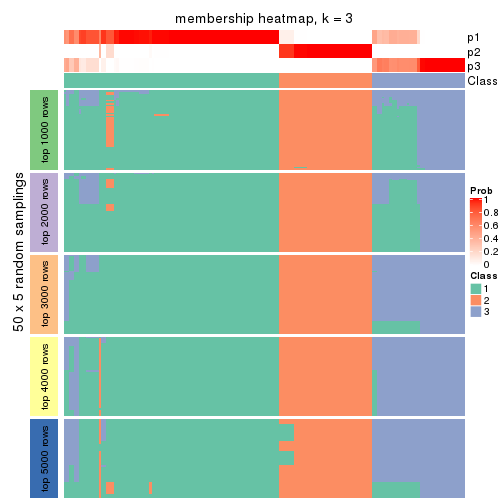
membership_heatmap(res, k = 4)

membership_heatmap(res, k = 5)
membership_heatmap(res, k = 6)
As soon as we have had the classes for columns, we can look for signatures which are significantly different between classes which can be candidate marks for certain classes. Following are the heatmaps for signatures.
Signature heatmaps where rows are scaled:
get_signatures(res, k = 2)
get_signatures(res, k = 3)
get_signatures(res, k = 4)
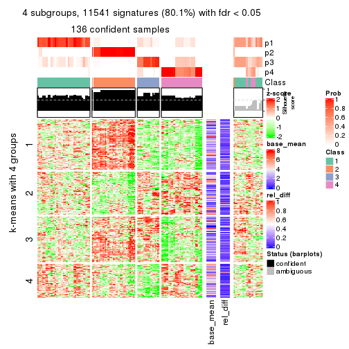
get_signatures(res, k = 5)
get_signatures(res, k = 6)
Signature heatmaps where rows are not scaled:
get_signatures(res, k = 2, scale_rows = FALSE)
get_signatures(res, k = 3, scale_rows = FALSE)
get_signatures(res, k = 4, scale_rows = FALSE)

get_signatures(res, k = 5, scale_rows = FALSE)
get_signatures(res, k = 6, scale_rows = FALSE)

Compare the overlap of signatures from different k:
compare_signatures(res)
get_signature() returns a data frame invisibly. TO get the list of signatures, the function
call should be assigned to a variable explicitly. In following code, if plot argument is set
to FALSE, no heatmap is plotted while only the differential analysis is performed.
# code only for demonstration
tb = get_signature(res, k = ..., plot = FALSE)
An example of the output of tb is:
#> which_row fdr mean_1 mean_2 scaled_mean_1 scaled_mean_2 km
#> 1 38 0.042760348 8.373488 9.131774 -0.5533452 0.5164555 1
#> 2 40 0.018707592 7.106213 8.469186 -0.6173731 0.5762149 1
#> 3 55 0.019134737 10.221463 11.207825 -0.6159697 0.5749050 1
#> 4 59 0.006059896 5.921854 7.869574 -0.6899429 0.6439467 1
#> 5 60 0.018055526 8.928898 10.211722 -0.6204761 0.5791110 1
#> 6 98 0.009384629 15.714769 14.887706 0.6635654 -0.6193277 2
...
The columns in tb are:
which_row: row indices corresponding to the input matrix.fdr: FDR for the differential test. mean_x: The mean value in group x.scaled_mean_x: The mean value in group x after rows are scaled.km: Row groups if k-means clustering is applied to rows.UMAP plot which shows how samples are separated.
dimension_reduction(res, k = 2, method = "UMAP")
dimension_reduction(res, k = 3, method = "UMAP")
dimension_reduction(res, k = 4, method = "UMAP")
dimension_reduction(res, k = 5, method = "UMAP")
dimension_reduction(res, k = 6, method = "UMAP")
Following heatmap shows how subgroups are split when increasing k:
collect_classes(res)
If matrix rows can be associated to genes, consider to use GO_Enrichment(res,
...) to perform function enrichment for the signature genes.
The object with results only for a single top-value method and a single partition method can be extracted as:
res = res_list["ATC", "kmeans"]
# you can also extract it by
# res = res_list["ATC:kmeans"]
A summary of res and all the functions that can be applied to it:
res
#> A 'ConsensusPartition' object with k = 2, 3, 4, 5, 6.
#> On a matrix with 14410 rows and 160 columns.
#> Top rows (1000, 2000, 3000, 4000, 5000) are extracted by 'ATC' method.
#> Subgroups are detected by 'kmeans' method.
#> Performed in total 1250 partitions by row resampling.
#> Best k for subgroups seems to be 2.
#>
#> Following methods can be applied to this 'ConsensusPartition' object:
#> [1] "cola_report" "collect_classes" "collect_plots"
#> [4] "collect_stats" "colnames" "compare_signatures"
#> [7] "consensus_heatmap" "dimension_reduction" "functional_enrichment"
#> [10] "get_anno_col" "get_anno" "get_classes"
#> [13] "get_consensus" "get_matrix" "get_membership"
#> [16] "get_param" "get_signatures" "get_stats"
#> [19] "is_best_k" "is_stable_k" "membership_heatmap"
#> [22] "ncol" "nrow" "plot_ecdf"
#> [25] "rownames" "select_partition_number" "show"
#> [28] "suggest_best_k" "test_to_known_factors"
collect_plots() function collects all the plots made from res for all k (number of partitions)
into one single page to provide an easy and fast comparison between different k.
collect_plots(res)
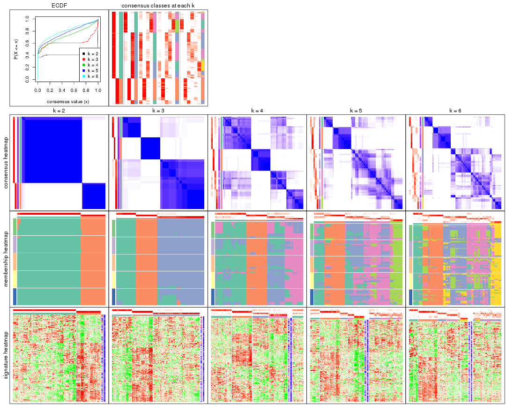
The plots are:
k and the heatmap of
predicted classes for each k.k.k.k.All the plots in panels can be made by individual functions and they are plotted later in this section.
select_partition_number() produces several plots showing different
statistics for choosing “optimized” k. There are following statistics:
k;k, the area increased is defined as \(A_k - A_{k-1}\).The detailed explanations of these statistics can be found in the cola vignette.
Generally speaking, lower PAC score, higher mean silhouette score or higher
concordance corresponds to better partition. Rand index and Jaccard index
measure how similar the current partition is compared to partition with k-1.
If they are too similar, we won't accept k is better than k-1.
select_partition_number(res)
The numeric values for all these statistics can be obtained by get_stats().
get_stats(res)
#> k 1-PAC mean_silhouette concordance area_increased Rand Jaccard
#> 2 2 1.000 0.991 0.995 0.4092 0.593 0.593
#> 3 3 0.827 0.943 0.959 0.5074 0.712 0.548
#> 4 4 0.633 0.714 0.782 0.1773 0.854 0.633
#> 5 5 0.656 0.569 0.719 0.0668 0.842 0.502
#> 6 6 0.684 0.504 0.717 0.0435 0.888 0.581
suggest_best_k() suggests the best \(k\) based on these statistics. The rules are as follows:
NA.suggest_best_k(res)
#> [1] 2
Following shows the table of the partitions (You need to click the show/hide
code output link to see it). The membership matrix (columns with name p*)
is inferred by
clue::cl_consensus()
function with the SE method. Basically the value in the membership matrix
represents the probability to belong to a certain group. The finall class
label for an item is determined with the group with highest probability it
belongs to.
In get_classes() function, the entropy is calculated from the membership
matrix and the silhouette score is calculated from the consensus matrix.
cbind(get_classes(res, k = 2), get_membership(res, k = 2))
#> class entropy silhouette p1 p2
#> SRR031811 1 0.000 0.995 1.000 0.000
#> SRR031812 1 0.000 0.995 1.000 0.000
#> SRR031813 2 0.000 0.996 0.000 1.000
#> SRR031814 1 0.327 0.937 0.940 0.060
#> SRR031815 2 0.000 0.996 0.000 1.000
#> SRR031816 1 0.000 0.995 1.000 0.000
#> SRR031817 1 0.000 0.995 1.000 0.000
#> SRR031818 2 0.000 0.996 0.000 1.000
#> SRR031819 1 0.634 0.815 0.840 0.160
#> SRR031820 2 0.000 0.996 0.000 1.000
#> SRR031821 1 0.000 0.995 1.000 0.000
#> SRR031822 1 0.000 0.995 1.000 0.000
#> SRR031823 1 0.000 0.995 1.000 0.000
#> SRR031824 2 0.000 0.996 0.000 1.000
#> SRR031825 2 0.000 0.996 0.000 1.000
#> SRR031826 2 0.000 0.996 0.000 1.000
#> SRR031827 1 0.000 0.995 1.000 0.000
#> SRR031828 2 0.000 0.996 0.000 1.000
#> SRR031829 1 0.000 0.995 1.000 0.000
#> SRR031830 2 0.000 0.996 0.000 1.000
#> SRR031831 1 0.000 0.995 1.000 0.000
#> SRR031832 1 0.000 0.995 1.000 0.000
#> SRR031833 1 0.000 0.995 1.000 0.000
#> SRR031834 1 0.000 0.995 1.000 0.000
#> SRR031835 1 0.000 0.995 1.000 0.000
#> SRR031836 1 0.000 0.995 1.000 0.000
#> SRR031837 1 0.000 0.995 1.000 0.000
#> SRR031838 2 0.000 0.996 0.000 1.000
#> SRR031839 1 0.000 0.995 1.000 0.000
#> SRR031840 1 0.000 0.995 1.000 0.000
#> SRR031841 2 0.000 0.996 0.000 1.000
#> SRR031842 2 0.000 0.996 0.000 1.000
#> SRR031843 2 0.388 0.918 0.076 0.924
#> SRR031844 1 0.000 0.995 1.000 0.000
#> SRR031845 1 0.000 0.995 1.000 0.000
#> SRR031846 1 0.000 0.995 1.000 0.000
#> SRR031847 1 0.000 0.995 1.000 0.000
#> SRR031848 1 0.000 0.995 1.000 0.000
#> SRR031849 1 0.000 0.995 1.000 0.000
#> SRR031850 2 0.000 0.996 0.000 1.000
#> SRR031851 2 0.000 0.996 0.000 1.000
#> SRR031852 1 0.000 0.995 1.000 0.000
#> SRR031853 1 0.000 0.995 1.000 0.000
#> SRR031854 1 0.327 0.937 0.940 0.060
#> SRR031855 2 0.000 0.996 0.000 1.000
#> SRR031857 1 0.000 0.995 1.000 0.000
#> SRR031858 1 0.000 0.995 1.000 0.000
#> SRR031859 2 0.000 0.996 0.000 1.000
#> SRR031860 2 0.000 0.996 0.000 1.000
#> SRR031861 2 0.000 0.996 0.000 1.000
#> SRR031862 1 0.000 0.995 1.000 0.000
#> SRR031863 1 0.000 0.995 1.000 0.000
#> SRR031864 2 0.000 0.996 0.000 1.000
#> SRR031865 2 0.000 0.996 0.000 1.000
#> SRR031866 1 0.000 0.995 1.000 0.000
#> SRR031867 1 0.000 0.995 1.000 0.000
#> SRR031868 2 0.000 0.996 0.000 1.000
#> SRR031869 1 0.000 0.995 1.000 0.000
#> SRR031870 1 0.000 0.995 1.000 0.000
#> SRR031871 2 0.000 0.996 0.000 1.000
#> SRR031872 1 0.000 0.995 1.000 0.000
#> SRR031873 1 0.000 0.995 1.000 0.000
#> SRR031874 1 0.000 0.995 1.000 0.000
#> SRR031875 1 0.000 0.995 1.000 0.000
#> SRR031876 1 0.000 0.995 1.000 0.000
#> SRR031877 1 0.000 0.995 1.000 0.000
#> SRR031878 1 0.000 0.995 1.000 0.000
#> SRR031879 1 0.343 0.933 0.936 0.064
#> SRR031880 1 0.000 0.995 1.000 0.000
#> SRR031881 1 0.000 0.995 1.000 0.000
#> SRR031882 1 0.000 0.995 1.000 0.000
#> SRR031883 2 0.000 0.996 0.000 1.000
#> SRR031884 1 0.416 0.911 0.916 0.084
#> SRR031885 2 0.000 0.996 0.000 1.000
#> SRR031886 1 0.000 0.995 1.000 0.000
#> SRR031887 1 0.000 0.995 1.000 0.000
#> SRR031888 2 0.000 0.996 0.000 1.000
#> SRR031889 1 0.000 0.995 1.000 0.000
#> SRR031890 1 0.000 0.995 1.000 0.000
#> SRR031891 1 0.000 0.995 1.000 0.000
#> SRR031892 1 0.000 0.995 1.000 0.000
#> SRR031893 1 0.000 0.995 1.000 0.000
#> SRR031894 2 0.000 0.996 0.000 1.000
#> SRR031895 2 0.494 0.880 0.108 0.892
#> SRR031896 2 0.000 0.996 0.000 1.000
#> SRR031897 2 0.000 0.996 0.000 1.000
#> SRR031898 2 0.000 0.996 0.000 1.000
#> SRR031899 1 0.000 0.995 1.000 0.000
#> SRR031900 1 0.000 0.995 1.000 0.000
#> SRR031901 1 0.000 0.995 1.000 0.000
#> SRR031902 2 0.000 0.996 0.000 1.000
#> SRR031903 1 0.000 0.995 1.000 0.000
#> SRR031904 1 0.000 0.995 1.000 0.000
#> SRR031905 1 0.000 0.995 1.000 0.000
#> SRR031906 1 0.000 0.995 1.000 0.000
#> SRR031907 1 0.000 0.995 1.000 0.000
#> SRR031908 1 0.000 0.995 1.000 0.000
#> SRR031909 1 0.000 0.995 1.000 0.000
#> SRR031910 1 0.000 0.995 1.000 0.000
#> SRR031911 1 0.000 0.995 1.000 0.000
#> SRR031912 1 0.000 0.995 1.000 0.000
#> SRR031913 1 0.000 0.995 1.000 0.000
#> SRR031914 1 0.000 0.995 1.000 0.000
#> SRR031915 1 0.000 0.995 1.000 0.000
#> SRR031916 1 0.000 0.995 1.000 0.000
#> SRR031917 1 0.000 0.995 1.000 0.000
#> SRR031918 1 0.000 0.995 1.000 0.000
#> SRR031919 1 0.000 0.995 1.000 0.000
#> SRR031920 1 0.000 0.995 1.000 0.000
#> SRR031921 2 0.000 0.996 0.000 1.000
#> SRR031922 1 0.000 0.995 1.000 0.000
#> SRR031923 2 0.000 0.996 0.000 1.000
#> SRR031924 1 0.000 0.995 1.000 0.000
#> SRR031925 1 0.000 0.995 1.000 0.000
#> SRR031926 2 0.000 0.996 0.000 1.000
#> SRR031927 2 0.000 0.996 0.000 1.000
#> SRR031928 1 0.000 0.995 1.000 0.000
#> SRR031929 1 0.000 0.995 1.000 0.000
#> SRR031930 2 0.000 0.996 0.000 1.000
#> SRR031931 2 0.000 0.996 0.000 1.000
#> SRR031932 1 0.000 0.995 1.000 0.000
#> SRR031933 2 0.000 0.996 0.000 1.000
#> SRR031934 1 0.000 0.995 1.000 0.000
#> SRR031935 1 0.000 0.995 1.000 0.000
#> SRR031936 1 0.541 0.863 0.876 0.124
#> SRR031937 1 0.000 0.995 1.000 0.000
#> SRR031938 1 0.000 0.995 1.000 0.000
#> SRR031939 2 0.000 0.996 0.000 1.000
#> SRR031940 1 0.000 0.995 1.000 0.000
#> SRR031941 1 0.000 0.995 1.000 0.000
#> SRR031942 1 0.000 0.995 1.000 0.000
#> SRR031943 1 0.000 0.995 1.000 0.000
#> SRR031944 1 0.000 0.995 1.000 0.000
#> SRR031945 1 0.000 0.995 1.000 0.000
#> SRR031946 1 0.000 0.995 1.000 0.000
#> SRR031947 1 0.000 0.995 1.000 0.000
#> SRR031948 1 0.000 0.995 1.000 0.000
#> SRR031949 1 0.000 0.995 1.000 0.000
#> SRR031950 1 0.000 0.995 1.000 0.000
#> SRR031951 1 0.000 0.995 1.000 0.000
#> SRR031952 1 0.000 0.995 1.000 0.000
#> SRR031953 1 0.000 0.995 1.000 0.000
#> SRR031954 1 0.000 0.995 1.000 0.000
#> SRR031955 1 0.000 0.995 1.000 0.000
#> SRR031956 1 0.000 0.995 1.000 0.000
#> SRR031957 1 0.000 0.995 1.000 0.000
#> SRR031958 1 0.000 0.995 1.000 0.000
#> SRR031959 1 0.000 0.995 1.000 0.000
#> SRR031960 1 0.000 0.995 1.000 0.000
#> SRR031961 1 0.000 0.995 1.000 0.000
#> SRR031962 1 0.000 0.995 1.000 0.000
#> SRR031963 1 0.000 0.995 1.000 0.000
#> SRR031964 1 0.000 0.995 1.000 0.000
#> SRR031965 2 0.000 0.996 0.000 1.000
#> SRR031966 2 0.000 0.996 0.000 1.000
#> SRR031967 1 0.000 0.995 1.000 0.000
#> SRR031968 1 0.000 0.995 1.000 0.000
#> SRR031969 2 0.000 0.996 0.000 1.000
#> SRR031970 2 0.000 0.996 0.000 1.000
#> SRR031971 2 0.000 0.996 0.000 1.000
cbind(get_classes(res, k = 3), get_membership(res, k = 3))
#> class entropy silhouette p1 p2 p3
#> SRR031811 1 0.0000 0.971 1.000 0.000 0.000
#> SRR031812 1 0.0000 0.971 1.000 0.000 0.000
#> SRR031813 2 0.0000 1.000 0.000 1.000 0.000
#> SRR031814 3 0.1031 0.935 0.024 0.000 0.976
#> SRR031815 2 0.0000 1.000 0.000 1.000 0.000
#> SRR031816 3 0.3941 0.889 0.156 0.000 0.844
#> SRR031817 3 0.0000 0.934 0.000 0.000 1.000
#> SRR031818 3 0.2066 0.915 0.000 0.060 0.940
#> SRR031819 3 0.0000 0.934 0.000 0.000 1.000
#> SRR031820 2 0.0000 1.000 0.000 1.000 0.000
#> SRR031821 3 0.4887 0.814 0.228 0.000 0.772
#> SRR031822 3 0.1031 0.935 0.024 0.000 0.976
#> SRR031823 1 0.0000 0.971 1.000 0.000 0.000
#> SRR031824 2 0.0000 1.000 0.000 1.000 0.000
#> SRR031825 2 0.0000 1.000 0.000 1.000 0.000
#> SRR031826 2 0.0000 1.000 0.000 1.000 0.000
#> SRR031827 3 0.3941 0.889 0.156 0.000 0.844
#> SRR031828 3 0.2066 0.915 0.000 0.060 0.940
#> SRR031829 3 0.3412 0.909 0.124 0.000 0.876
#> SRR031830 2 0.0000 1.000 0.000 1.000 0.000
#> SRR031831 3 0.0000 0.934 0.000 0.000 1.000
#> SRR031832 3 0.0000 0.934 0.000 0.000 1.000
#> SRR031833 3 0.1031 0.935 0.024 0.000 0.976
#> SRR031834 3 0.2537 0.924 0.080 0.000 0.920
#> SRR031835 1 0.0000 0.971 1.000 0.000 0.000
#> SRR031836 3 0.0000 0.934 0.000 0.000 1.000
#> SRR031837 3 0.0000 0.934 0.000 0.000 1.000
#> SRR031838 2 0.0000 1.000 0.000 1.000 0.000
#> SRR031839 3 0.2066 0.928 0.060 0.000 0.940
#> SRR031840 3 0.3412 0.909 0.124 0.000 0.876
#> SRR031841 2 0.0000 1.000 0.000 1.000 0.000
#> SRR031842 2 0.0000 1.000 0.000 1.000 0.000
#> SRR031843 3 0.0000 0.934 0.000 0.000 1.000
#> SRR031844 1 0.0000 0.971 1.000 0.000 0.000
#> SRR031845 1 0.2066 0.938 0.940 0.000 0.060
#> SRR031846 3 0.0000 0.934 0.000 0.000 1.000
#> SRR031847 3 0.0892 0.927 0.020 0.000 0.980
#> SRR031848 3 0.0000 0.934 0.000 0.000 1.000
#> SRR031849 3 0.0000 0.934 0.000 0.000 1.000
#> SRR031850 2 0.0000 1.000 0.000 1.000 0.000
#> SRR031851 2 0.0000 1.000 0.000 1.000 0.000
#> SRR031852 3 0.0000 0.934 0.000 0.000 1.000
#> SRR031853 3 0.0000 0.934 0.000 0.000 1.000
#> SRR031854 3 0.0000 0.934 0.000 0.000 1.000
#> SRR031855 2 0.0000 1.000 0.000 1.000 0.000
#> SRR031857 3 0.4974 0.804 0.236 0.000 0.764
#> SRR031858 3 0.0000 0.934 0.000 0.000 1.000
#> SRR031859 2 0.0000 1.000 0.000 1.000 0.000
#> SRR031860 2 0.0000 1.000 0.000 1.000 0.000
#> SRR031861 2 0.0000 1.000 0.000 1.000 0.000
#> SRR031862 3 0.3941 0.889 0.156 0.000 0.844
#> SRR031863 3 0.0000 0.934 0.000 0.000 1.000
#> SRR031864 2 0.0000 1.000 0.000 1.000 0.000
#> SRR031865 2 0.0000 1.000 0.000 1.000 0.000
#> SRR031866 3 0.2625 0.923 0.084 0.000 0.916
#> SRR031867 3 0.0000 0.934 0.000 0.000 1.000
#> SRR031868 3 0.2066 0.915 0.000 0.060 0.940
#> SRR031869 3 0.1031 0.935 0.024 0.000 0.976
#> SRR031870 3 0.0000 0.934 0.000 0.000 1.000
#> SRR031871 2 0.0000 1.000 0.000 1.000 0.000
#> SRR031872 3 0.3412 0.909 0.124 0.000 0.876
#> SRR031873 3 0.1031 0.935 0.024 0.000 0.976
#> SRR031874 1 0.2066 0.938 0.940 0.000 0.060
#> SRR031875 3 0.0000 0.934 0.000 0.000 1.000
#> SRR031876 1 0.0000 0.971 1.000 0.000 0.000
#> SRR031877 1 0.2066 0.938 0.940 0.000 0.060
#> SRR031878 1 0.0000 0.971 1.000 0.000 0.000
#> SRR031879 3 0.0000 0.934 0.000 0.000 1.000
#> SRR031880 1 0.2959 0.863 0.900 0.000 0.100
#> SRR031881 3 0.3941 0.889 0.156 0.000 0.844
#> SRR031882 3 0.3412 0.909 0.124 0.000 0.876
#> SRR031883 2 0.0000 1.000 0.000 1.000 0.000
#> SRR031884 3 0.0000 0.934 0.000 0.000 1.000
#> SRR031885 2 0.0000 1.000 0.000 1.000 0.000
#> SRR031886 3 0.1964 0.904 0.056 0.000 0.944
#> SRR031887 1 0.0000 0.971 1.000 0.000 0.000
#> SRR031888 3 0.2066 0.915 0.000 0.060 0.940
#> SRR031889 3 0.1411 0.933 0.036 0.000 0.964
#> SRR031890 3 0.0000 0.934 0.000 0.000 1.000
#> SRR031891 1 0.2066 0.938 0.940 0.000 0.060
#> SRR031892 1 0.0000 0.971 1.000 0.000 0.000
#> SRR031893 3 0.0000 0.934 0.000 0.000 1.000
#> SRR031894 2 0.0000 1.000 0.000 1.000 0.000
#> SRR031895 3 0.2066 0.915 0.000 0.060 0.940
#> SRR031896 2 0.0000 1.000 0.000 1.000 0.000
#> SRR031897 2 0.0000 1.000 0.000 1.000 0.000
#> SRR031898 2 0.0000 1.000 0.000 1.000 0.000
#> SRR031899 3 0.0000 0.934 0.000 0.000 1.000
#> SRR031900 3 0.0000 0.934 0.000 0.000 1.000
#> SRR031901 3 0.0000 0.934 0.000 0.000 1.000
#> SRR031902 2 0.0000 1.000 0.000 1.000 0.000
#> SRR031903 3 0.1031 0.935 0.024 0.000 0.976
#> SRR031904 3 0.1031 0.935 0.024 0.000 0.976
#> SRR031905 3 0.3412 0.909 0.124 0.000 0.876
#> SRR031906 3 0.1031 0.935 0.024 0.000 0.976
#> SRR031907 3 0.3412 0.909 0.124 0.000 0.876
#> SRR031908 3 0.0000 0.934 0.000 0.000 1.000
#> SRR031909 1 0.0000 0.971 1.000 0.000 0.000
#> SRR031910 1 0.2066 0.938 0.940 0.000 0.060
#> SRR031911 3 0.0000 0.934 0.000 0.000 1.000
#> SRR031912 1 0.2066 0.938 0.940 0.000 0.060
#> SRR031913 3 0.2066 0.928 0.060 0.000 0.940
#> SRR031914 3 0.3551 0.904 0.132 0.000 0.868
#> SRR031915 3 0.3941 0.889 0.156 0.000 0.844
#> SRR031916 3 0.3412 0.909 0.124 0.000 0.876
#> SRR031917 1 0.0000 0.971 1.000 0.000 0.000
#> SRR031918 3 0.3816 0.890 0.148 0.000 0.852
#> SRR031919 1 0.0000 0.971 1.000 0.000 0.000
#> SRR031920 1 0.2066 0.938 0.940 0.000 0.060
#> SRR031921 2 0.0000 1.000 0.000 1.000 0.000
#> SRR031922 3 0.0000 0.934 0.000 0.000 1.000
#> SRR031923 2 0.0000 1.000 0.000 1.000 0.000
#> SRR031924 3 0.0000 0.934 0.000 0.000 1.000
#> SRR031925 1 0.0000 0.971 1.000 0.000 0.000
#> SRR031926 3 0.3412 0.874 0.000 0.124 0.876
#> SRR031927 2 0.0000 1.000 0.000 1.000 0.000
#> SRR031928 3 0.3412 0.909 0.124 0.000 0.876
#> SRR031929 3 0.0000 0.934 0.000 0.000 1.000
#> SRR031930 2 0.0000 1.000 0.000 1.000 0.000
#> SRR031931 2 0.0000 1.000 0.000 1.000 0.000
#> SRR031932 3 0.1031 0.935 0.024 0.000 0.976
#> SRR031933 2 0.0000 1.000 0.000 1.000 0.000
#> SRR031934 3 0.2066 0.928 0.060 0.000 0.940
#> SRR031935 3 0.3412 0.909 0.124 0.000 0.876
#> SRR031936 3 0.3412 0.909 0.124 0.000 0.876
#> SRR031937 1 0.0000 0.971 1.000 0.000 0.000
#> SRR031938 1 0.0000 0.971 1.000 0.000 0.000
#> SRR031939 2 0.0000 1.000 0.000 1.000 0.000
#> SRR031940 3 0.0000 0.934 0.000 0.000 1.000
#> SRR031941 3 0.4062 0.883 0.164 0.000 0.836
#> SRR031942 1 0.2066 0.938 0.940 0.000 0.060
#> SRR031943 1 0.2066 0.938 0.940 0.000 0.060
#> SRR031944 1 0.0000 0.971 1.000 0.000 0.000
#> SRR031945 1 0.0000 0.971 1.000 0.000 0.000
#> SRR031946 1 0.0000 0.971 1.000 0.000 0.000
#> SRR031947 1 0.0000 0.971 1.000 0.000 0.000
#> SRR031948 1 0.0000 0.971 1.000 0.000 0.000
#> SRR031949 1 0.4887 0.758 0.772 0.000 0.228
#> SRR031950 3 0.3941 0.889 0.156 0.000 0.844
#> SRR031951 3 0.4974 0.804 0.236 0.000 0.764
#> SRR031952 3 0.3941 0.889 0.156 0.000 0.844
#> SRR031953 3 0.3941 0.889 0.156 0.000 0.844
#> SRR031954 1 0.0000 0.971 1.000 0.000 0.000
#> SRR031955 3 0.4062 0.883 0.164 0.000 0.836
#> SRR031956 1 0.0000 0.971 1.000 0.000 0.000
#> SRR031957 3 0.3412 0.909 0.124 0.000 0.876
#> SRR031958 3 0.4062 0.883 0.164 0.000 0.836
#> SRR031959 1 0.0000 0.971 1.000 0.000 0.000
#> SRR031960 3 0.5254 0.765 0.264 0.000 0.736
#> SRR031961 1 0.0000 0.971 1.000 0.000 0.000
#> SRR031962 3 0.3941 0.889 0.156 0.000 0.844
#> SRR031963 1 0.0000 0.971 1.000 0.000 0.000
#> SRR031964 3 0.3941 0.889 0.156 0.000 0.844
#> SRR031965 2 0.0000 1.000 0.000 1.000 0.000
#> SRR031966 2 0.0000 1.000 0.000 1.000 0.000
#> SRR031967 3 0.0000 0.934 0.000 0.000 1.000
#> SRR031968 3 0.0000 0.934 0.000 0.000 1.000
#> SRR031969 2 0.0000 1.000 0.000 1.000 0.000
#> SRR031970 2 0.0000 1.000 0.000 1.000 0.000
#> SRR031971 2 0.0000 1.000 0.000 1.000 0.000
cbind(get_classes(res, k = 4), get_membership(res, k = 4))
#> class entropy silhouette p1 p2 p3 p4
#> SRR031811 4 0.7221 0.566 0.272 0.000 0.188 0.540
#> SRR031812 4 0.5000 0.793 0.100 0.000 0.128 0.772
#> SRR031813 2 0.1489 0.957 0.004 0.952 0.044 0.000
#> SRR031814 1 0.4431 0.319 0.696 0.000 0.304 0.000
#> SRR031815 2 0.0188 0.966 0.004 0.996 0.000 0.000
#> SRR031816 1 0.1557 0.713 0.944 0.000 0.000 0.056
#> SRR031817 3 0.4679 0.701 0.352 0.000 0.648 0.000
#> SRR031818 1 0.5697 0.315 0.656 0.052 0.292 0.000
#> SRR031819 1 0.5165 -0.381 0.512 0.004 0.484 0.000
#> SRR031820 2 0.0469 0.962 0.012 0.988 0.000 0.000
#> SRR031821 1 0.5030 0.613 0.752 0.000 0.188 0.060
#> SRR031822 1 0.4250 0.386 0.724 0.000 0.276 0.000
#> SRR031823 4 0.6461 0.678 0.240 0.000 0.128 0.632
#> SRR031824 2 0.0000 0.966 0.000 1.000 0.000 0.000
#> SRR031825 2 0.0592 0.965 0.000 0.984 0.016 0.000
#> SRR031826 2 0.0524 0.966 0.004 0.988 0.008 0.000
#> SRR031827 1 0.1557 0.713 0.944 0.000 0.000 0.056
#> SRR031828 1 0.5814 0.289 0.644 0.056 0.300 0.000
#> SRR031829 1 0.3090 0.700 0.888 0.000 0.056 0.056
#> SRR031830 2 0.0524 0.965 0.004 0.988 0.008 0.000
#> SRR031831 3 0.4304 0.755 0.284 0.000 0.716 0.000
#> SRR031832 3 0.2773 0.748 0.116 0.000 0.880 0.004
#> SRR031833 1 0.4250 0.386 0.724 0.000 0.276 0.000
#> SRR031834 1 0.4744 0.565 0.704 0.000 0.284 0.012
#> SRR031835 4 0.5171 0.785 0.112 0.000 0.128 0.760
#> SRR031836 3 0.5268 0.125 0.452 0.000 0.540 0.008
#> SRR031837 3 0.4730 0.687 0.364 0.000 0.636 0.000
#> SRR031838 2 0.2675 0.936 0.008 0.892 0.100 0.000
#> SRR031839 1 0.0592 0.701 0.984 0.000 0.016 0.000
#> SRR031840 1 0.1557 0.713 0.944 0.000 0.000 0.056
#> SRR031841 2 0.1209 0.960 0.004 0.964 0.032 0.000
#> SRR031842 2 0.2675 0.936 0.008 0.892 0.100 0.000
#> SRR031843 3 0.4679 0.701 0.352 0.000 0.648 0.000
#> SRR031844 4 0.0000 0.838 0.000 0.000 0.000 1.000
#> SRR031845 4 0.1389 0.821 0.000 0.000 0.048 0.952
#> SRR031846 1 0.4564 0.246 0.672 0.000 0.328 0.000
#> SRR031847 3 0.2944 0.738 0.128 0.000 0.868 0.004
#> SRR031848 3 0.5268 0.125 0.452 0.000 0.540 0.008
#> SRR031849 3 0.2773 0.748 0.116 0.000 0.880 0.004
#> SRR031850 2 0.0188 0.966 0.004 0.996 0.000 0.000
#> SRR031851 2 0.0188 0.966 0.004 0.996 0.000 0.000
#> SRR031852 3 0.2888 0.758 0.124 0.000 0.872 0.004
#> SRR031853 3 0.2888 0.758 0.124 0.000 0.872 0.004
#> SRR031854 3 0.4679 0.701 0.352 0.000 0.648 0.000
#> SRR031855 2 0.0524 0.966 0.004 0.988 0.008 0.000
#> SRR031857 1 0.4820 0.629 0.772 0.000 0.168 0.060
#> SRR031858 3 0.3873 0.780 0.228 0.000 0.772 0.000
#> SRR031859 2 0.2675 0.936 0.008 0.892 0.100 0.000
#> SRR031860 2 0.2675 0.936 0.008 0.892 0.100 0.000
#> SRR031861 2 0.2675 0.936 0.008 0.892 0.100 0.000
#> SRR031862 1 0.4949 0.620 0.760 0.000 0.180 0.060
#> SRR031863 3 0.4843 0.633 0.396 0.000 0.604 0.000
#> SRR031864 2 0.0188 0.966 0.004 0.996 0.000 0.000
#> SRR031865 2 0.2814 0.840 0.132 0.868 0.000 0.000
#> SRR031866 1 0.2928 0.695 0.880 0.000 0.108 0.012
#> SRR031867 3 0.4072 0.773 0.252 0.000 0.748 0.000
#> SRR031868 1 0.5697 0.315 0.656 0.052 0.292 0.000
#> SRR031869 1 0.5236 0.293 0.560 0.000 0.432 0.008
#> SRR031870 3 0.3873 0.780 0.228 0.000 0.772 0.000
#> SRR031871 2 0.0188 0.966 0.004 0.996 0.000 0.000
#> SRR031872 1 0.0592 0.708 0.984 0.000 0.000 0.016
#> SRR031873 1 0.4431 0.319 0.696 0.000 0.304 0.000
#> SRR031874 4 0.1389 0.821 0.000 0.000 0.048 0.952
#> SRR031875 3 0.4981 0.507 0.464 0.000 0.536 0.000
#> SRR031876 4 0.0524 0.838 0.004 0.000 0.008 0.988
#> SRR031877 4 0.1389 0.821 0.000 0.000 0.048 0.952
#> SRR031878 4 0.7122 0.599 0.248 0.000 0.192 0.560
#> SRR031879 1 0.4996 -0.379 0.516 0.000 0.484 0.000
#> SRR031880 1 0.6620 0.471 0.628 0.000 0.192 0.180
#> SRR031881 1 0.2644 0.708 0.908 0.000 0.032 0.060
#> SRR031882 1 0.4079 0.634 0.800 0.000 0.180 0.020
#> SRR031883 2 0.0188 0.966 0.004 0.996 0.000 0.000
#> SRR031884 3 0.4679 0.701 0.352 0.000 0.648 0.000
#> SRR031885 2 0.0376 0.966 0.004 0.992 0.004 0.000
#> SRR031886 3 0.3708 0.690 0.148 0.000 0.832 0.020
#> SRR031887 4 0.6664 0.639 0.272 0.000 0.128 0.600
#> SRR031888 1 0.3320 0.644 0.876 0.056 0.068 0.000
#> SRR031889 1 0.3649 0.517 0.796 0.000 0.204 0.000
#> SRR031890 1 0.4564 0.246 0.672 0.000 0.328 0.000
#> SRR031891 4 0.1389 0.821 0.000 0.000 0.048 0.952
#> SRR031892 4 0.2266 0.834 0.004 0.000 0.084 0.912
#> SRR031893 3 0.3873 0.780 0.228 0.000 0.772 0.000
#> SRR031894 2 0.1807 0.953 0.008 0.940 0.052 0.000
#> SRR031895 1 0.2797 0.656 0.900 0.032 0.068 0.000
#> SRR031896 2 0.0524 0.966 0.004 0.988 0.008 0.000
#> SRR031897 2 0.1211 0.941 0.040 0.960 0.000 0.000
#> SRR031898 2 0.0188 0.966 0.004 0.996 0.000 0.000
#> SRR031899 3 0.4387 0.621 0.236 0.000 0.752 0.012
#> SRR031900 3 0.3942 0.779 0.236 0.000 0.764 0.000
#> SRR031901 3 0.3837 0.780 0.224 0.000 0.776 0.000
#> SRR031902 2 0.0804 0.964 0.008 0.980 0.012 0.000
#> SRR031903 1 0.4431 0.319 0.696 0.000 0.304 0.000
#> SRR031904 1 0.4331 0.358 0.712 0.000 0.288 0.000
#> SRR031905 1 0.0592 0.708 0.984 0.000 0.000 0.016
#> SRR031906 1 0.5236 0.293 0.560 0.000 0.432 0.008
#> SRR031907 1 0.2089 0.709 0.932 0.000 0.048 0.020
#> SRR031908 3 0.2773 0.748 0.116 0.000 0.880 0.004
#> SRR031909 4 0.0524 0.838 0.004 0.000 0.008 0.988
#> SRR031910 4 0.4225 0.803 0.024 0.000 0.184 0.792
#> SRR031911 3 0.4981 0.507 0.464 0.000 0.536 0.000
#> SRR031912 4 0.1389 0.821 0.000 0.000 0.048 0.952
#> SRR031913 1 0.2281 0.662 0.904 0.000 0.096 0.000
#> SRR031914 1 0.1557 0.713 0.944 0.000 0.000 0.056
#> SRR031915 1 0.5212 0.604 0.740 0.000 0.192 0.068
#> SRR031916 1 0.2635 0.704 0.904 0.000 0.076 0.020
#> SRR031917 4 0.0524 0.838 0.004 0.000 0.008 0.988
#> SRR031918 1 0.6448 0.474 0.628 0.000 0.252 0.120
#> SRR031919 4 0.0524 0.838 0.004 0.000 0.008 0.988
#> SRR031920 4 0.5663 0.730 0.060 0.000 0.264 0.676
#> SRR031921 2 0.0469 0.962 0.012 0.988 0.000 0.000
#> SRR031922 3 0.2888 0.758 0.124 0.000 0.872 0.004
#> SRR031923 2 0.0188 0.966 0.004 0.996 0.000 0.000
#> SRR031924 3 0.2704 0.760 0.124 0.000 0.876 0.000
#> SRR031925 4 0.6572 0.644 0.272 0.000 0.120 0.608
#> SRR031926 1 0.4203 0.601 0.824 0.108 0.068 0.000
#> SRR031927 2 0.0188 0.966 0.004 0.996 0.000 0.000
#> SRR031928 1 0.1356 0.714 0.960 0.000 0.008 0.032
#> SRR031929 3 0.4916 0.596 0.424 0.000 0.576 0.000
#> SRR031930 2 0.0188 0.966 0.004 0.996 0.000 0.000
#> SRR031931 2 0.0188 0.966 0.004 0.996 0.000 0.000
#> SRR031932 1 0.3942 0.463 0.764 0.000 0.236 0.000
#> SRR031933 2 0.0188 0.966 0.004 0.996 0.000 0.000
#> SRR031934 1 0.2124 0.661 0.924 0.008 0.068 0.000
#> SRR031935 1 0.2563 0.705 0.908 0.000 0.072 0.020
#> SRR031936 1 0.1114 0.703 0.972 0.016 0.004 0.008
#> SRR031937 4 0.0524 0.838 0.004 0.000 0.008 0.988
#> SRR031938 4 0.0524 0.838 0.004 0.000 0.008 0.988
#> SRR031939 2 0.0188 0.966 0.004 0.996 0.000 0.000
#> SRR031940 3 0.2760 0.761 0.128 0.000 0.872 0.000
#> SRR031941 1 0.5070 0.609 0.748 0.000 0.192 0.060
#> SRR031942 4 0.1389 0.821 0.000 0.000 0.048 0.952
#> SRR031943 4 0.1389 0.821 0.000 0.000 0.048 0.952
#> SRR031944 4 0.7098 0.605 0.244 0.000 0.192 0.564
#> SRR031945 4 0.0188 0.839 0.004 0.000 0.000 0.996
#> SRR031946 4 0.3653 0.818 0.028 0.000 0.128 0.844
#> SRR031947 4 0.5000 0.793 0.100 0.000 0.128 0.772
#> SRR031948 4 0.3638 0.821 0.032 0.000 0.120 0.848
#> SRR031949 3 0.3895 0.508 0.012 0.000 0.804 0.184
#> SRR031950 1 0.1557 0.713 0.944 0.000 0.000 0.056
#> SRR031951 1 0.5212 0.604 0.740 0.000 0.192 0.068
#> SRR031952 1 0.1824 0.713 0.936 0.000 0.004 0.060
#> SRR031953 1 0.1637 0.712 0.940 0.000 0.000 0.060
#> SRR031954 4 0.0188 0.839 0.004 0.000 0.000 0.996
#> SRR031955 1 0.5212 0.604 0.740 0.000 0.192 0.068
#> SRR031956 4 0.6403 0.687 0.232 0.000 0.128 0.640
#> SRR031957 1 0.0524 0.702 0.988 0.008 0.004 0.000
#> SRR031958 1 0.4055 0.674 0.832 0.000 0.108 0.060
#> SRR031959 4 0.3731 0.822 0.036 0.000 0.120 0.844
#> SRR031960 1 0.5279 0.600 0.736 0.000 0.192 0.072
#> SRR031961 4 0.0188 0.839 0.004 0.000 0.000 0.996
#> SRR031962 1 0.2335 0.710 0.920 0.000 0.020 0.060
#> SRR031963 4 0.6506 0.674 0.240 0.000 0.132 0.628
#> SRR031964 1 0.1637 0.712 0.940 0.000 0.000 0.060
#> SRR031965 2 0.2675 0.936 0.008 0.892 0.100 0.000
#> SRR031966 2 0.2675 0.936 0.008 0.892 0.100 0.000
#> SRR031967 3 0.3873 0.780 0.228 0.000 0.772 0.000
#> SRR031968 3 0.3873 0.780 0.228 0.000 0.772 0.000
#> SRR031969 2 0.2675 0.936 0.008 0.892 0.100 0.000
#> SRR031970 2 0.2675 0.936 0.008 0.892 0.100 0.000
#> SRR031971 2 0.2675 0.936 0.008 0.892 0.100 0.000
cbind(get_classes(res, k = 5), get_membership(res, k = 5))
#> class entropy silhouette p1 p2 p3 p4 p5
#> SRR031811 4 0.4100 0.4210 0.044 0.000 0.000 0.764 0.192
#> SRR031812 4 0.6038 0.0478 0.108 0.000 0.004 0.516 0.372
#> SRR031813 2 0.1410 0.9031 0.060 0.940 0.000 0.000 0.000
#> SRR031814 3 0.3509 0.6197 0.008 0.004 0.792 0.196 0.000
#> SRR031815 2 0.0000 0.9112 0.000 1.000 0.000 0.000 0.000
#> SRR031816 4 0.3684 0.4188 0.000 0.000 0.280 0.720 0.000
#> SRR031817 3 0.3336 -0.1358 0.228 0.000 0.772 0.000 0.000
#> SRR031818 3 0.4801 0.5889 0.004 0.092 0.732 0.172 0.000
#> SRR031819 3 0.2710 0.5175 0.036 0.008 0.892 0.064 0.000
#> SRR031820 2 0.1043 0.8889 0.000 0.960 0.040 0.000 0.000
#> SRR031821 4 0.1041 0.5837 0.000 0.000 0.032 0.964 0.004
#> SRR031822 3 0.3336 0.5948 0.000 0.000 0.772 0.228 0.000
#> SRR031823 4 0.5472 0.2883 0.108 0.000 0.000 0.632 0.260
#> SRR031824 2 0.0290 0.9114 0.000 0.992 0.000 0.008 0.000
#> SRR031825 2 0.0898 0.9113 0.020 0.972 0.000 0.008 0.000
#> SRR031826 2 0.0609 0.9110 0.020 0.980 0.000 0.000 0.000
#> SRR031827 4 0.3684 0.4188 0.000 0.000 0.280 0.720 0.000
#> SRR031828 3 0.4909 0.5878 0.008 0.120 0.736 0.136 0.000
#> SRR031829 4 0.3863 0.4481 0.012 0.000 0.248 0.740 0.000
#> SRR031830 2 0.0609 0.9112 0.020 0.980 0.000 0.000 0.000
#> SRR031831 3 0.4003 -0.3561 0.288 0.000 0.704 0.008 0.000
#> SRR031832 1 0.6355 0.6434 0.448 0.000 0.408 0.140 0.004
#> SRR031833 3 0.3336 0.5948 0.000 0.000 0.772 0.228 0.000
#> SRR031834 4 0.5289 0.4488 0.096 0.000 0.252 0.652 0.000
#> SRR031835 4 0.6038 0.0478 0.108 0.000 0.004 0.516 0.372
#> SRR031836 4 0.6500 0.2745 0.160 0.000 0.336 0.496 0.008
#> SRR031837 3 0.3109 -0.0408 0.200 0.000 0.800 0.000 0.000
#> SRR031838 2 0.3863 0.8233 0.248 0.740 0.000 0.000 0.012
#> SRR031839 3 0.4306 0.0369 0.000 0.000 0.508 0.492 0.000
#> SRR031840 4 0.3612 0.4275 0.000 0.000 0.268 0.732 0.000
#> SRR031841 2 0.1121 0.9069 0.044 0.956 0.000 0.000 0.000
#> SRR031842 2 0.3863 0.8233 0.248 0.740 0.000 0.000 0.012
#> SRR031843 3 0.3395 -0.1517 0.236 0.000 0.764 0.000 0.000
#> SRR031844 5 0.0912 0.8289 0.016 0.000 0.000 0.012 0.972
#> SRR031845 5 0.2077 0.8182 0.084 0.000 0.000 0.008 0.908
#> SRR031846 3 0.4350 0.5992 0.084 0.000 0.764 0.152 0.000
#> SRR031847 1 0.6407 0.6305 0.448 0.000 0.400 0.148 0.004
#> SRR031848 4 0.6500 0.2745 0.160 0.000 0.336 0.496 0.008
#> SRR031849 1 0.6357 0.6323 0.444 0.000 0.412 0.140 0.004
#> SRR031850 2 0.0290 0.9114 0.000 0.992 0.000 0.008 0.000
#> SRR031851 2 0.0290 0.9114 0.000 0.992 0.000 0.008 0.000
#> SRR031852 1 0.5193 0.8052 0.584 0.000 0.364 0.052 0.000
#> SRR031853 1 0.5193 0.8052 0.584 0.000 0.364 0.052 0.000
#> SRR031854 3 0.4074 -0.4341 0.364 0.000 0.636 0.000 0.000
#> SRR031855 2 0.0609 0.9110 0.020 0.980 0.000 0.000 0.000
#> SRR031857 4 0.1571 0.5768 0.000 0.000 0.060 0.936 0.004
#> SRR031858 1 0.4696 0.7920 0.556 0.000 0.428 0.016 0.000
#> SRR031859 2 0.3863 0.8233 0.248 0.740 0.000 0.000 0.012
#> SRR031860 2 0.3863 0.8233 0.248 0.740 0.000 0.000 0.012
#> SRR031861 2 0.3863 0.8233 0.248 0.740 0.000 0.000 0.012
#> SRR031862 4 0.0963 0.5827 0.000 0.000 0.036 0.964 0.000
#> SRR031863 3 0.3944 0.2752 0.160 0.000 0.788 0.052 0.000
#> SRR031864 2 0.0290 0.9114 0.000 0.992 0.000 0.008 0.000
#> SRR031865 2 0.4114 0.3504 0.000 0.624 0.376 0.000 0.000
#> SRR031866 4 0.5235 0.3927 0.068 0.000 0.312 0.620 0.000
#> SRR031867 1 0.4702 0.7876 0.552 0.000 0.432 0.016 0.000
#> SRR031868 3 0.4837 0.5862 0.004 0.092 0.728 0.176 0.000
#> SRR031869 4 0.5941 0.3066 0.124 0.000 0.332 0.544 0.000
#> SRR031870 1 0.4696 0.7920 0.556 0.000 0.428 0.016 0.000
#> SRR031871 2 0.0162 0.9113 0.000 0.996 0.000 0.004 0.000
#> SRR031872 4 0.4300 -0.0126 0.000 0.000 0.476 0.524 0.000
#> SRR031873 3 0.3353 0.6193 0.008 0.000 0.796 0.196 0.000
#> SRR031874 5 0.1410 0.8214 0.060 0.000 0.000 0.000 0.940
#> SRR031875 3 0.2830 0.4147 0.080 0.000 0.876 0.044 0.000
#> SRR031876 5 0.0898 0.8277 0.008 0.000 0.000 0.020 0.972
#> SRR031877 5 0.1410 0.8214 0.060 0.000 0.000 0.000 0.940
#> SRR031878 4 0.5447 0.3053 0.112 0.000 0.000 0.640 0.248
#> SRR031879 3 0.2491 0.5175 0.036 0.000 0.896 0.068 0.000
#> SRR031880 4 0.3112 0.5816 0.100 0.000 0.000 0.856 0.044
#> SRR031881 4 0.3480 0.4502 0.000 0.000 0.248 0.752 0.000
#> SRR031882 4 0.3231 0.5164 0.004 0.000 0.196 0.800 0.000
#> SRR031883 2 0.0000 0.9112 0.000 1.000 0.000 0.000 0.000
#> SRR031884 3 0.3366 -0.1497 0.232 0.000 0.768 0.000 0.000
#> SRR031885 2 0.0000 0.9112 0.000 1.000 0.000 0.000 0.000
#> SRR031886 3 0.7014 -0.4528 0.344 0.000 0.372 0.276 0.008
#> SRR031887 4 0.4434 0.3962 0.056 0.000 0.000 0.736 0.208
#> SRR031888 3 0.5904 0.4089 0.004 0.112 0.572 0.312 0.000
#> SRR031889 3 0.3596 0.5873 0.012 0.000 0.776 0.212 0.000
#> SRR031890 3 0.4350 0.5992 0.084 0.000 0.764 0.152 0.000
#> SRR031891 5 0.2077 0.8182 0.084 0.000 0.000 0.008 0.908
#> SRR031892 5 0.5355 0.5794 0.120 0.000 0.000 0.220 0.660
#> SRR031893 1 0.4727 0.7918 0.532 0.000 0.452 0.016 0.000
#> SRR031894 2 0.1965 0.8909 0.096 0.904 0.000 0.000 0.000
#> SRR031895 3 0.5524 0.4289 0.004 0.076 0.600 0.320 0.000
#> SRR031896 2 0.0609 0.9110 0.020 0.980 0.000 0.000 0.000
#> SRR031897 2 0.3455 0.6960 0.000 0.784 0.208 0.008 0.000
#> SRR031898 2 0.0290 0.9114 0.000 0.992 0.000 0.008 0.000
#> SRR031899 3 0.6831 -0.1459 0.208 0.000 0.396 0.388 0.008
#> SRR031900 1 0.4696 0.7920 0.556 0.000 0.428 0.016 0.000
#> SRR031901 1 0.4696 0.7920 0.556 0.000 0.428 0.016 0.000
#> SRR031902 2 0.1644 0.9041 0.048 0.940 0.000 0.004 0.008
#> SRR031903 3 0.3353 0.6193 0.008 0.000 0.796 0.196 0.000
#> SRR031904 3 0.3461 0.5988 0.004 0.000 0.772 0.224 0.000
#> SRR031905 4 0.4300 -0.0126 0.000 0.000 0.476 0.524 0.000
#> SRR031906 4 0.5941 0.3066 0.124 0.000 0.332 0.544 0.000
#> SRR031907 4 0.3932 0.3656 0.000 0.000 0.328 0.672 0.000
#> SRR031908 1 0.6381 0.6359 0.448 0.000 0.404 0.144 0.004
#> SRR031909 5 0.0898 0.8277 0.008 0.000 0.000 0.020 0.972
#> SRR031910 5 0.6679 0.3569 0.216 0.000 0.004 0.320 0.460
#> SRR031911 3 0.2830 0.4147 0.080 0.000 0.876 0.044 0.000
#> SRR031912 5 0.1410 0.8214 0.060 0.000 0.000 0.000 0.940
#> SRR031913 3 0.4264 0.3774 0.004 0.000 0.620 0.376 0.000
#> SRR031914 4 0.3796 0.3638 0.000 0.000 0.300 0.700 0.000
#> SRR031915 4 0.4228 0.5568 0.108 0.000 0.100 0.788 0.004
#> SRR031916 4 0.4873 0.4733 0.068 0.000 0.244 0.688 0.000
#> SRR031917 5 0.0898 0.8277 0.008 0.000 0.000 0.020 0.972
#> SRR031918 4 0.6710 0.4475 0.132 0.000 0.228 0.584 0.056
#> SRR031919 5 0.0898 0.8277 0.008 0.000 0.000 0.020 0.972
#> SRR031920 5 0.7071 0.2711 0.232 0.000 0.016 0.344 0.408
#> SRR031921 2 0.1043 0.8889 0.000 0.960 0.040 0.000 0.000
#> SRR031922 1 0.5142 0.8020 0.600 0.000 0.348 0.052 0.000
#> SRR031923 2 0.0290 0.9114 0.000 0.992 0.000 0.008 0.000
#> SRR031924 1 0.5236 0.8104 0.568 0.000 0.380 0.052 0.000
#> SRR031925 4 0.4295 0.3918 0.044 0.000 0.000 0.740 0.216
#> SRR031926 3 0.6138 0.3924 0.004 0.144 0.556 0.296 0.000
#> SRR031927 2 0.0000 0.9112 0.000 1.000 0.000 0.000 0.000
#> SRR031928 4 0.3586 0.4334 0.000 0.000 0.264 0.736 0.000
#> SRR031929 3 0.3944 0.2752 0.160 0.000 0.788 0.052 0.000
#> SRR031930 2 0.0290 0.9114 0.000 0.992 0.000 0.008 0.000
#> SRR031931 2 0.0000 0.9112 0.000 1.000 0.000 0.000 0.000
#> SRR031932 3 0.3424 0.5834 0.000 0.000 0.760 0.240 0.000
#> SRR031933 2 0.0290 0.9114 0.000 0.992 0.000 0.008 0.000
#> SRR031934 3 0.4321 0.3413 0.004 0.000 0.600 0.396 0.000
#> SRR031935 4 0.4873 0.4733 0.068 0.000 0.244 0.688 0.000
#> SRR031936 4 0.4367 0.1807 0.000 0.008 0.372 0.620 0.000
#> SRR031937 5 0.0898 0.8277 0.008 0.000 0.000 0.020 0.972
#> SRR031938 5 0.1764 0.7986 0.008 0.000 0.000 0.064 0.928
#> SRR031939 2 0.0000 0.9112 0.000 1.000 0.000 0.000 0.000
#> SRR031940 1 0.5281 0.8097 0.548 0.000 0.400 0.052 0.000
#> SRR031941 4 0.2017 0.5892 0.080 0.000 0.008 0.912 0.000
#> SRR031942 5 0.1410 0.8214 0.060 0.000 0.000 0.000 0.940
#> SRR031943 5 0.2951 0.7936 0.112 0.000 0.000 0.028 0.860
#> SRR031944 4 0.5873 0.2152 0.112 0.000 0.004 0.580 0.304
#> SRR031945 5 0.0510 0.8292 0.000 0.000 0.000 0.016 0.984
#> SRR031946 5 0.6447 0.3227 0.160 0.000 0.004 0.364 0.472
#> SRR031947 4 0.6038 0.0478 0.108 0.000 0.004 0.516 0.372
#> SRR031948 5 0.5751 0.3787 0.100 0.000 0.000 0.348 0.552
#> SRR031949 1 0.6281 0.6458 0.612 0.000 0.228 0.128 0.032
#> SRR031950 4 0.3586 0.4310 0.000 0.000 0.264 0.736 0.000
#> SRR031951 4 0.2477 0.5870 0.092 0.000 0.008 0.892 0.008
#> SRR031952 4 0.3508 0.4472 0.000 0.000 0.252 0.748 0.000
#> SRR031953 4 0.3534 0.4422 0.000 0.000 0.256 0.744 0.000
#> SRR031954 5 0.0510 0.8292 0.000 0.000 0.000 0.016 0.984
#> SRR031955 4 0.4228 0.5568 0.108 0.000 0.100 0.788 0.004
#> SRR031956 4 0.5714 0.2030 0.108 0.000 0.000 0.580 0.312
#> SRR031957 3 0.4300 0.1177 0.000 0.000 0.524 0.476 0.000
#> SRR031958 4 0.1410 0.5735 0.000 0.000 0.060 0.940 0.000
#> SRR031959 5 0.6021 0.2614 0.116 0.000 0.000 0.408 0.476
#> SRR031960 4 0.1983 0.5894 0.060 0.000 0.008 0.924 0.008
#> SRR031961 5 0.0510 0.8292 0.000 0.000 0.000 0.016 0.984
#> SRR031962 4 0.3452 0.4564 0.000 0.000 0.244 0.756 0.000
#> SRR031963 4 0.5472 0.2883 0.108 0.000 0.000 0.632 0.260
#> SRR031964 4 0.3534 0.4422 0.000 0.000 0.256 0.744 0.000
#> SRR031965 2 0.3863 0.8233 0.248 0.740 0.000 0.000 0.012
#> SRR031966 2 0.3863 0.8233 0.248 0.740 0.000 0.000 0.012
#> SRR031967 1 0.4723 0.7917 0.536 0.000 0.448 0.016 0.000
#> SRR031968 1 0.4637 0.7863 0.536 0.000 0.452 0.012 0.000
#> SRR031969 2 0.3863 0.8233 0.248 0.740 0.000 0.000 0.012
#> SRR031970 2 0.3863 0.8233 0.248 0.740 0.000 0.000 0.012
#> SRR031971 2 0.3863 0.8233 0.248 0.740 0.000 0.000 0.012
cbind(get_classes(res, k = 6), get_membership(res, k = 6))
#> class entropy silhouette p1 p2 p3 p4 p5 p6
#> SRR031811 4 0.4880 0.21942 0.032 0.000 0.064 0.688 0.216 0.000
#> SRR031812 4 0.2902 0.60396 0.196 0.000 0.004 0.800 0.000 0.000
#> SRR031813 2 0.1219 0.85121 0.000 0.948 0.000 0.000 0.048 0.004
#> SRR031814 3 0.2462 0.59192 0.000 0.004 0.860 0.000 0.004 0.132
#> SRR031815 2 0.0436 0.85453 0.000 0.988 0.004 0.000 0.004 0.004
#> SRR031816 3 0.6090 -0.92602 0.000 0.000 0.384 0.284 0.332 0.000
#> SRR031817 3 0.5170 0.00559 0.000 0.000 0.484 0.008 0.064 0.444
#> SRR031818 3 0.2994 0.57746 0.000 0.064 0.852 0.000 0.004 0.080
#> SRR031819 3 0.3837 0.53250 0.000 0.000 0.768 0.008 0.044 0.180
#> SRR031820 2 0.2504 0.75143 0.000 0.856 0.136 0.000 0.004 0.004
#> SRR031821 4 0.5683 -0.52462 0.000 0.000 0.168 0.484 0.348 0.000
#> SRR031822 3 0.2118 0.58686 0.000 0.000 0.888 0.008 0.000 0.104
#> SRR031823 4 0.2006 0.60820 0.080 0.000 0.000 0.904 0.016 0.000
#> SRR031824 2 0.1364 0.85463 0.000 0.952 0.016 0.020 0.000 0.012
#> SRR031825 2 0.1602 0.85484 0.000 0.944 0.016 0.020 0.004 0.016
#> SRR031826 2 0.0146 0.85580 0.000 0.996 0.000 0.000 0.000 0.004
#> SRR031827 3 0.6090 -0.92602 0.000 0.000 0.384 0.284 0.332 0.000
#> SRR031828 3 0.3418 0.57595 0.000 0.084 0.820 0.000 0.004 0.092
#> SRR031829 5 0.6120 0.94859 0.000 0.000 0.344 0.304 0.352 0.000
#> SRR031830 2 0.0508 0.85585 0.000 0.984 0.000 0.000 0.012 0.004
#> SRR031831 6 0.5297 0.07552 0.000 0.000 0.436 0.012 0.068 0.484
#> SRR031832 6 0.6272 0.42894 0.012 0.000 0.060 0.332 0.076 0.520
#> SRR031833 3 0.2312 0.58915 0.000 0.000 0.876 0.012 0.000 0.112
#> SRR031834 4 0.4446 0.43525 0.000 0.000 0.368 0.600 0.004 0.028
#> SRR031835 4 0.2902 0.60396 0.196 0.000 0.004 0.800 0.000 0.000
#> SRR031836 4 0.5246 0.55481 0.008 0.000 0.128 0.708 0.060 0.096
#> SRR031837 3 0.5165 0.13440 0.000 0.000 0.528 0.008 0.068 0.396
#> SRR031838 2 0.3852 0.70328 0.000 0.612 0.000 0.000 0.384 0.004
#> SRR031839 3 0.3587 0.27323 0.000 0.000 0.792 0.068 0.140 0.000
#> SRR031840 3 0.6117 -0.96472 0.000 0.000 0.356 0.300 0.344 0.000
#> SRR031841 2 0.0692 0.85528 0.000 0.976 0.000 0.000 0.020 0.004
#> SRR031842 2 0.3852 0.70328 0.000 0.612 0.000 0.000 0.384 0.004
#> SRR031843 3 0.5207 0.03453 0.000 0.000 0.492 0.008 0.068 0.432
#> SRR031844 1 0.2082 0.92004 0.916 0.000 0.004 0.040 0.036 0.004
#> SRR031845 1 0.3565 0.87480 0.820 0.000 0.008 0.076 0.092 0.004
#> SRR031846 3 0.3798 0.53326 0.000 0.000 0.748 0.004 0.032 0.216
#> SRR031847 6 0.6282 0.41916 0.012 0.000 0.060 0.336 0.076 0.516
#> SRR031848 4 0.5246 0.55481 0.008 0.000 0.128 0.708 0.060 0.096
#> SRR031849 6 0.6320 0.42455 0.012 0.000 0.064 0.332 0.076 0.516
#> SRR031850 2 0.1458 0.85471 0.000 0.948 0.016 0.020 0.000 0.016
#> SRR031851 2 0.1458 0.85471 0.000 0.948 0.016 0.020 0.000 0.016
#> SRR031852 6 0.1821 0.78491 0.000 0.000 0.008 0.040 0.024 0.928
#> SRR031853 6 0.1821 0.78491 0.000 0.000 0.008 0.040 0.024 0.928
#> SRR031854 6 0.4278 0.35199 0.000 0.000 0.336 0.000 0.032 0.632
#> SRR031855 2 0.0146 0.85580 0.000 0.996 0.000 0.000 0.000 0.004
#> SRR031857 4 0.5825 -0.59773 0.000 0.000 0.196 0.460 0.344 0.000
#> SRR031858 6 0.2113 0.77978 0.000 0.000 0.032 0.008 0.048 0.912
#> SRR031859 2 0.3852 0.70328 0.000 0.612 0.000 0.000 0.384 0.004
#> SRR031860 2 0.3945 0.70419 0.000 0.612 0.000 0.000 0.380 0.008
#> SRR031861 2 0.3852 0.70328 0.000 0.612 0.000 0.000 0.384 0.004
#> SRR031862 4 0.5791 -0.57199 0.000 0.000 0.192 0.472 0.336 0.000
#> SRR031863 3 0.4380 0.38745 0.000 0.000 0.652 0.012 0.024 0.312
#> SRR031864 2 0.1364 0.85463 0.000 0.952 0.016 0.020 0.000 0.012
#> SRR031865 2 0.4107 0.13010 0.000 0.540 0.452 0.000 0.004 0.004
#> SRR031866 4 0.5364 0.18811 0.000 0.000 0.420 0.488 0.084 0.008
#> SRR031867 6 0.2113 0.77978 0.000 0.000 0.032 0.008 0.048 0.912
#> SRR031868 3 0.2998 0.57452 0.000 0.068 0.852 0.000 0.004 0.076
#> SRR031869 4 0.5583 0.46664 0.004 0.000 0.304 0.584 0.028 0.080
#> SRR031870 6 0.2113 0.77978 0.000 0.000 0.032 0.008 0.048 0.912
#> SRR031871 2 0.0405 0.85582 0.000 0.988 0.000 0.000 0.004 0.008
#> SRR031872 3 0.4104 0.17733 0.000 0.000 0.748 0.104 0.148 0.000
#> SRR031873 3 0.2462 0.59144 0.000 0.000 0.860 0.004 0.004 0.132
#> SRR031874 1 0.2405 0.90901 0.892 0.000 0.008 0.016 0.080 0.004
#> SRR031875 3 0.4574 0.44916 0.000 0.000 0.688 0.008 0.068 0.236
#> SRR031876 1 0.1464 0.91690 0.944 0.000 0.004 0.016 0.036 0.000
#> SRR031877 1 0.2405 0.90901 0.892 0.000 0.008 0.016 0.080 0.004
#> SRR031878 4 0.1531 0.61546 0.068 0.000 0.004 0.928 0.000 0.000
#> SRR031879 3 0.3837 0.53250 0.000 0.000 0.768 0.008 0.044 0.180
#> SRR031880 4 0.2134 0.53381 0.000 0.000 0.044 0.904 0.052 0.000
#> SRR031881 5 0.6125 0.97662 0.000 0.000 0.340 0.312 0.348 0.000
#> SRR031882 4 0.5345 0.15310 0.000 0.000 0.364 0.520 0.116 0.000
#> SRR031883 2 0.0551 0.85339 0.000 0.984 0.008 0.000 0.004 0.004
#> SRR031884 3 0.5207 0.03453 0.000 0.000 0.492 0.008 0.068 0.432
#> SRR031885 2 0.0146 0.85580 0.000 0.996 0.000 0.000 0.000 0.004
#> SRR031886 4 0.6276 0.08333 0.012 0.000 0.064 0.520 0.072 0.332
#> SRR031887 4 0.5064 0.22414 0.040 0.000 0.068 0.676 0.216 0.000
#> SRR031888 3 0.3036 0.51637 0.000 0.060 0.872 0.024 0.028 0.016
#> SRR031889 3 0.3282 0.57958 0.000 0.000 0.848 0.048 0.036 0.068
#> SRR031890 3 0.3798 0.53326 0.000 0.000 0.748 0.004 0.032 0.216
#> SRR031891 1 0.3565 0.87480 0.820 0.000 0.008 0.076 0.092 0.004
#> SRR031892 4 0.3892 0.36381 0.352 0.000 0.004 0.640 0.004 0.000
#> SRR031893 6 0.1116 0.78510 0.000 0.000 0.028 0.004 0.008 0.960
#> SRR031894 2 0.1531 0.84591 0.000 0.928 0.000 0.000 0.068 0.004
#> SRR031895 3 0.2308 0.52400 0.000 0.056 0.904 0.004 0.028 0.008
#> SRR031896 2 0.0146 0.85580 0.000 0.996 0.000 0.000 0.000 0.004
#> SRR031897 2 0.4644 0.43993 0.000 0.616 0.344 0.020 0.004 0.016
#> SRR031898 2 0.1364 0.85463 0.000 0.952 0.016 0.020 0.000 0.012
#> SRR031899 4 0.5286 0.53961 0.008 0.000 0.128 0.700 0.048 0.116
#> SRR031900 6 0.2113 0.77978 0.000 0.000 0.032 0.008 0.048 0.912
#> SRR031901 6 0.2113 0.77978 0.000 0.000 0.032 0.008 0.048 0.912
#> SRR031902 2 0.1524 0.84935 0.000 0.932 0.000 0.000 0.060 0.008
#> SRR031903 3 0.2320 0.59085 0.000 0.000 0.864 0.004 0.000 0.132
#> SRR031904 3 0.2212 0.58909 0.000 0.000 0.880 0.008 0.000 0.112
#> SRR031905 3 0.4104 0.17733 0.000 0.000 0.748 0.104 0.148 0.000
#> SRR031906 4 0.5583 0.46664 0.004 0.000 0.304 0.584 0.028 0.080
#> SRR031907 3 0.5834 -0.58790 0.000 0.000 0.480 0.304 0.216 0.000
#> SRR031908 6 0.6272 0.42894 0.012 0.000 0.060 0.332 0.076 0.520
#> SRR031909 1 0.1464 0.91690 0.944 0.000 0.004 0.016 0.036 0.000
#> SRR031910 4 0.5009 0.51589 0.228 0.000 0.012 0.684 0.044 0.032
#> SRR031911 3 0.4574 0.44916 0.000 0.000 0.688 0.008 0.068 0.236
#> SRR031912 1 0.2405 0.90901 0.892 0.000 0.008 0.016 0.080 0.004
#> SRR031913 3 0.3238 0.45048 0.000 0.000 0.848 0.072 0.056 0.024
#> SRR031914 3 0.6076 -0.89650 0.000 0.000 0.384 0.272 0.344 0.000
#> SRR031915 4 0.2300 0.58860 0.000 0.000 0.144 0.856 0.000 0.000
#> SRR031916 4 0.4918 0.34503 0.000 0.000 0.320 0.596 0.084 0.000
#> SRR031917 1 0.1464 0.91690 0.944 0.000 0.004 0.016 0.036 0.000
#> SRR031918 4 0.4257 0.60807 0.012 0.000 0.140 0.776 0.044 0.028
#> SRR031919 1 0.1464 0.91690 0.944 0.000 0.004 0.016 0.036 0.000
#> SRR031920 4 0.5174 0.54618 0.188 0.000 0.012 0.696 0.052 0.052
#> SRR031921 2 0.2196 0.78033 0.000 0.884 0.108 0.000 0.004 0.004
#> SRR031922 6 0.2325 0.77783 0.000 0.000 0.008 0.044 0.048 0.900
#> SRR031923 2 0.1364 0.85463 0.000 0.952 0.016 0.020 0.000 0.012
#> SRR031924 6 0.1230 0.79044 0.000 0.000 0.008 0.028 0.008 0.956
#> SRR031925 4 0.5074 0.23083 0.044 0.000 0.064 0.676 0.216 0.000
#> SRR031926 3 0.4150 0.45629 0.000 0.132 0.788 0.028 0.032 0.020
#> SRR031927 2 0.0291 0.85485 0.000 0.992 0.004 0.000 0.004 0.000
#> SRR031928 3 0.6099 -0.90815 0.000 0.000 0.380 0.292 0.328 0.000
#> SRR031929 3 0.4380 0.38745 0.000 0.000 0.652 0.012 0.024 0.312
#> SRR031930 2 0.1364 0.85463 0.000 0.952 0.016 0.020 0.000 0.012
#> SRR031931 2 0.0436 0.85453 0.000 0.988 0.004 0.000 0.004 0.004
#> SRR031932 3 0.2452 0.57705 0.000 0.000 0.884 0.028 0.004 0.084
#> SRR031933 2 0.1364 0.85463 0.000 0.952 0.016 0.020 0.000 0.012
#> SRR031934 3 0.1777 0.49462 0.000 0.000 0.928 0.044 0.024 0.004
#> SRR031935 4 0.4918 0.34503 0.000 0.000 0.320 0.596 0.084 0.000
#> SRR031936 3 0.5922 -0.77067 0.000 0.000 0.440 0.220 0.340 0.000
#> SRR031937 1 0.1464 0.91690 0.944 0.000 0.004 0.016 0.036 0.000
#> SRR031938 1 0.2138 0.88904 0.908 0.000 0.004 0.052 0.036 0.000
#> SRR031939 2 0.0436 0.85453 0.000 0.988 0.004 0.000 0.004 0.004
#> SRR031940 6 0.1630 0.78663 0.000 0.000 0.020 0.016 0.024 0.940
#> SRR031941 4 0.3608 0.37613 0.000 0.000 0.064 0.788 0.148 0.000
#> SRR031942 1 0.2405 0.90901 0.892 0.000 0.008 0.016 0.080 0.004
#> SRR031943 1 0.4834 0.66440 0.672 0.000 0.008 0.240 0.076 0.004
#> SRR031944 4 0.2234 0.62633 0.124 0.000 0.004 0.872 0.000 0.000
#> SRR031945 1 0.0937 0.92195 0.960 0.000 0.000 0.040 0.000 0.000
#> SRR031946 4 0.4314 0.52774 0.232 0.000 0.012 0.716 0.036 0.004
#> SRR031947 4 0.2871 0.60655 0.192 0.000 0.004 0.804 0.000 0.000
#> SRR031948 4 0.3659 0.41010 0.364 0.000 0.000 0.636 0.000 0.000
#> SRR031949 6 0.4851 0.59800 0.016 0.000 0.012 0.232 0.052 0.688
#> SRR031950 3 0.6113 -0.95332 0.000 0.000 0.360 0.296 0.344 0.000
#> SRR031951 4 0.2451 0.51562 0.000 0.000 0.060 0.884 0.056 0.000
#> SRR031952 5 0.6123 0.97916 0.000 0.000 0.344 0.308 0.348 0.000
#> SRR031953 3 0.6117 -0.96965 0.000 0.000 0.352 0.300 0.348 0.000
#> SRR031954 1 0.0937 0.92195 0.960 0.000 0.000 0.040 0.000 0.000
#> SRR031955 4 0.2300 0.58860 0.000 0.000 0.144 0.856 0.000 0.000
#> SRR031956 4 0.2234 0.62446 0.124 0.000 0.004 0.872 0.000 0.000
#> SRR031957 3 0.1765 0.48135 0.000 0.000 0.924 0.052 0.024 0.000
#> SRR031958 4 0.5744 -0.57007 0.000 0.000 0.180 0.476 0.344 0.000
#> SRR031959 4 0.3394 0.55096 0.236 0.000 0.000 0.752 0.012 0.000
#> SRR031960 4 0.4114 0.26289 0.000 0.000 0.072 0.732 0.196 0.000
#> SRR031961 1 0.0937 0.92195 0.960 0.000 0.000 0.040 0.000 0.000
#> SRR031962 5 0.6123 0.97916 0.000 0.000 0.344 0.308 0.348 0.000
#> SRR031963 4 0.2006 0.60820 0.080 0.000 0.000 0.904 0.016 0.000
#> SRR031964 3 0.6117 -0.96965 0.000 0.000 0.352 0.300 0.348 0.000
#> SRR031965 2 0.3852 0.70328 0.000 0.612 0.000 0.000 0.384 0.004
#> SRR031966 2 0.3852 0.70328 0.000 0.612 0.000 0.000 0.384 0.004
#> SRR031967 6 0.1562 0.78260 0.000 0.000 0.032 0.004 0.024 0.940
#> SRR031968 6 0.1562 0.78260 0.000 0.000 0.032 0.004 0.024 0.940
#> SRR031969 2 0.3945 0.70419 0.000 0.612 0.000 0.000 0.380 0.008
#> SRR031970 2 0.3852 0.70328 0.000 0.612 0.000 0.000 0.384 0.004
#> SRR031971 2 0.3852 0.70328 0.000 0.612 0.000 0.000 0.384 0.004
Heatmaps for the consensus matrix. It visualizes the probability of two samples to be in a same group.
consensus_heatmap(res, k = 2)
consensus_heatmap(res, k = 3)
consensus_heatmap(res, k = 4)
consensus_heatmap(res, k = 5)
consensus_heatmap(res, k = 6)
Heatmaps for the membership of samples in all partitions to see how consistent they are:
membership_heatmap(res, k = 2)
membership_heatmap(res, k = 3)
membership_heatmap(res, k = 4)
membership_heatmap(res, k = 5)
membership_heatmap(res, k = 6)
As soon as we have had the classes for columns, we can look for signatures which are significantly different between classes which can be candidate marks for certain classes. Following are the heatmaps for signatures.
Signature heatmaps where rows are scaled:
get_signatures(res, k = 2)
get_signatures(res, k = 3)
get_signatures(res, k = 4)
get_signatures(res, k = 5)
get_signatures(res, k = 6)
Signature heatmaps where rows are not scaled:
get_signatures(res, k = 2, scale_rows = FALSE)
get_signatures(res, k = 3, scale_rows = FALSE)
get_signatures(res, k = 4, scale_rows = FALSE)
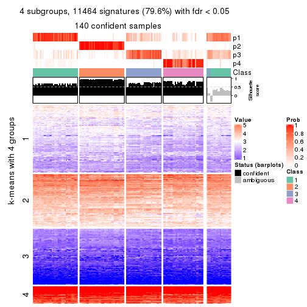
get_signatures(res, k = 5, scale_rows = FALSE)
get_signatures(res, k = 6, scale_rows = FALSE)
Compare the overlap of signatures from different k:
compare_signatures(res)
get_signature() returns a data frame invisibly. TO get the list of signatures, the function
call should be assigned to a variable explicitly. In following code, if plot argument is set
to FALSE, no heatmap is plotted while only the differential analysis is performed.
# code only for demonstration
tb = get_signature(res, k = ..., plot = FALSE)
An example of the output of tb is:
#> which_row fdr mean_1 mean_2 scaled_mean_1 scaled_mean_2 km
#> 1 38 0.042760348 8.373488 9.131774 -0.5533452 0.5164555 1
#> 2 40 0.018707592 7.106213 8.469186 -0.6173731 0.5762149 1
#> 3 55 0.019134737 10.221463 11.207825 -0.6159697 0.5749050 1
#> 4 59 0.006059896 5.921854 7.869574 -0.6899429 0.6439467 1
#> 5 60 0.018055526 8.928898 10.211722 -0.6204761 0.5791110 1
#> 6 98 0.009384629 15.714769 14.887706 0.6635654 -0.6193277 2
...
The columns in tb are:
which_row: row indices corresponding to the input matrix.fdr: FDR for the differential test. mean_x: The mean value in group x.scaled_mean_x: The mean value in group x after rows are scaled.km: Row groups if k-means clustering is applied to rows.UMAP plot which shows how samples are separated.
dimension_reduction(res, k = 2, method = "UMAP")
dimension_reduction(res, k = 3, method = "UMAP")

dimension_reduction(res, k = 4, method = "UMAP")
dimension_reduction(res, k = 5, method = "UMAP")
dimension_reduction(res, k = 6, method = "UMAP")
Following heatmap shows how subgroups are split when increasing k:
collect_classes(res)
If matrix rows can be associated to genes, consider to use GO_Enrichment(res,
...) to perform function enrichment for the signature genes.
The object with results only for a single top-value method and a single partition method can be extracted as:
res = res_list["ATC", "skmeans"]
# you can also extract it by
# res = res_list["ATC:skmeans"]
A summary of res and all the functions that can be applied to it:
res
#> A 'ConsensusPartition' object with k = 2, 3, 4, 5, 6.
#> On a matrix with 14410 rows and 160 columns.
#> Top rows (1000, 2000, 3000, 4000, 5000) are extracted by 'ATC' method.
#> Subgroups are detected by 'skmeans' method.
#> Performed in total 1250 partitions by row resampling.
#> Best k for subgroups seems to be 3.
#>
#> Following methods can be applied to this 'ConsensusPartition' object:
#> [1] "cola_report" "collect_classes" "collect_plots"
#> [4] "collect_stats" "colnames" "compare_signatures"
#> [7] "consensus_heatmap" "dimension_reduction" "functional_enrichment"
#> [10] "get_anno_col" "get_anno" "get_classes"
#> [13] "get_consensus" "get_matrix" "get_membership"
#> [16] "get_param" "get_signatures" "get_stats"
#> [19] "is_best_k" "is_stable_k" "membership_heatmap"
#> [22] "ncol" "nrow" "plot_ecdf"
#> [25] "rownames" "select_partition_number" "show"
#> [28] "suggest_best_k" "test_to_known_factors"
collect_plots() function collects all the plots made from res for all k (number of partitions)
into one single page to provide an easy and fast comparison between different k.
collect_plots(res)
The plots are:
k and the heatmap of
predicted classes for each k.k.k.k.All the plots in panels can be made by individual functions and they are plotted later in this section.
select_partition_number() produces several plots showing different
statistics for choosing “optimized” k. There are following statistics:
k;k, the area increased is defined as \(A_k - A_{k-1}\).The detailed explanations of these statistics can be found in the cola vignette.
Generally speaking, lower PAC score, higher mean silhouette score or higher
concordance corresponds to better partition. Rand index and Jaccard index
measure how similar the current partition is compared to partition with k-1.
If they are too similar, we won't accept k is better than k-1.
select_partition_number(res)
The numeric values for all these statistics can be obtained by get_stats().
get_stats(res)
#> k 1-PAC mean_silhouette concordance area_increased Rand Jaccard
#> 2 2 0.864 0.922 0.969 0.4980 0.505 0.505
#> 3 3 0.951 0.947 0.976 0.2713 0.812 0.646
#> 4 4 0.830 0.859 0.937 0.1316 0.902 0.741
#> 5 5 0.829 0.828 0.915 0.0516 0.938 0.793
#> 6 6 0.879 0.835 0.919 0.0398 0.952 0.811
suggest_best_k() suggests the best \(k\) based on these statistics. The rules are as follows:
NA.suggest_best_k(res)
#> [1] 3
Following shows the table of the partitions (You need to click the show/hide
code output link to see it). The membership matrix (columns with name p*)
is inferred by
clue::cl_consensus()
function with the SE method. Basically the value in the membership matrix
represents the probability to belong to a certain group. The finall class
label for an item is determined with the group with highest probability it
belongs to.
In get_classes() function, the entropy is calculated from the membership
matrix and the silhouette score is calculated from the consensus matrix.
cbind(get_classes(res, k = 2), get_membership(res, k = 2))
#> class entropy silhouette p1 p2
#> SRR031811 1 0.000 0.9616 1.000 0.000
#> SRR031812 1 0.000 0.9616 1.000 0.000
#> SRR031813 2 0.000 0.9740 0.000 1.000
#> SRR031814 2 0.000 0.9740 0.000 1.000
#> SRR031815 2 0.000 0.9740 0.000 1.000
#> SRR031816 1 0.000 0.9616 1.000 0.000
#> SRR031817 2 0.000 0.9740 0.000 1.000
#> SRR031818 2 0.000 0.9740 0.000 1.000
#> SRR031819 2 0.000 0.9740 0.000 1.000
#> SRR031820 2 0.000 0.9740 0.000 1.000
#> SRR031821 1 0.000 0.9616 1.000 0.000
#> SRR031822 2 0.000 0.9740 0.000 1.000
#> SRR031823 1 0.000 0.9616 1.000 0.000
#> SRR031824 2 0.000 0.9740 0.000 1.000
#> SRR031825 2 0.000 0.9740 0.000 1.000
#> SRR031826 2 0.000 0.9740 0.000 1.000
#> SRR031827 1 0.000 0.9616 1.000 0.000
#> SRR031828 2 0.000 0.9740 0.000 1.000
#> SRR031829 1 0.000 0.9616 1.000 0.000
#> SRR031830 2 0.000 0.9740 0.000 1.000
#> SRR031831 1 0.745 0.7257 0.788 0.212
#> SRR031832 1 0.000 0.9616 1.000 0.000
#> SRR031833 2 0.000 0.9740 0.000 1.000
#> SRR031834 1 0.000 0.9616 1.000 0.000
#> SRR031835 1 0.000 0.9616 1.000 0.000
#> SRR031836 1 0.000 0.9616 1.000 0.000
#> SRR031837 2 0.000 0.9740 0.000 1.000
#> SRR031838 2 0.000 0.9740 0.000 1.000
#> SRR031839 1 0.000 0.9616 1.000 0.000
#> SRR031840 1 0.000 0.9616 1.000 0.000
#> SRR031841 2 0.000 0.9740 0.000 1.000
#> SRR031842 2 0.000 0.9740 0.000 1.000
#> SRR031843 2 0.000 0.9740 0.000 1.000
#> SRR031844 1 0.000 0.9616 1.000 0.000
#> SRR031845 1 0.000 0.9616 1.000 0.000
#> SRR031846 2 0.000 0.9740 0.000 1.000
#> SRR031847 1 0.000 0.9616 1.000 0.000
#> SRR031848 1 0.000 0.9616 1.000 0.000
#> SRR031849 1 0.000 0.9616 1.000 0.000
#> SRR031850 2 0.000 0.9740 0.000 1.000
#> SRR031851 2 0.000 0.9740 0.000 1.000
#> SRR031852 1 0.000 0.9616 1.000 0.000
#> SRR031853 1 0.000 0.9616 1.000 0.000
#> SRR031854 2 0.000 0.9740 0.000 1.000
#> SRR031855 2 0.000 0.9740 0.000 1.000
#> SRR031857 1 0.000 0.9616 1.000 0.000
#> SRR031858 1 0.958 0.4155 0.620 0.380
#> SRR031859 2 0.000 0.9740 0.000 1.000
#> SRR031860 2 0.000 0.9740 0.000 1.000
#> SRR031861 2 0.000 0.9740 0.000 1.000
#> SRR031862 1 0.000 0.9616 1.000 0.000
#> SRR031863 1 0.821 0.6580 0.744 0.256
#> SRR031864 2 0.000 0.9740 0.000 1.000
#> SRR031865 2 0.000 0.9740 0.000 1.000
#> SRR031866 1 0.000 0.9616 1.000 0.000
#> SRR031867 1 0.958 0.4155 0.620 0.380
#> SRR031868 2 0.000 0.9740 0.000 1.000
#> SRR031869 1 0.000 0.9616 1.000 0.000
#> SRR031870 1 0.958 0.4155 0.620 0.380
#> SRR031871 2 0.000 0.9740 0.000 1.000
#> SRR031872 2 0.958 0.3921 0.380 0.620
#> SRR031873 2 0.000 0.9740 0.000 1.000
#> SRR031874 1 0.000 0.9616 1.000 0.000
#> SRR031875 2 0.000 0.9740 0.000 1.000
#> SRR031876 1 0.000 0.9616 1.000 0.000
#> SRR031877 1 0.000 0.9616 1.000 0.000
#> SRR031878 1 0.000 0.9616 1.000 0.000
#> SRR031879 2 0.000 0.9740 0.000 1.000
#> SRR031880 1 0.000 0.9616 1.000 0.000
#> SRR031881 1 0.000 0.9616 1.000 0.000
#> SRR031882 1 0.000 0.9616 1.000 0.000
#> SRR031883 2 0.000 0.9740 0.000 1.000
#> SRR031884 2 0.000 0.9740 0.000 1.000
#> SRR031885 2 0.000 0.9740 0.000 1.000
#> SRR031886 1 0.000 0.9616 1.000 0.000
#> SRR031887 1 0.000 0.9616 1.000 0.000
#> SRR031888 2 0.000 0.9740 0.000 1.000
#> SRR031889 2 0.958 0.3921 0.380 0.620
#> SRR031890 2 0.000 0.9740 0.000 1.000
#> SRR031891 1 0.000 0.9616 1.000 0.000
#> SRR031892 1 0.000 0.9616 1.000 0.000
#> SRR031893 1 0.958 0.4155 0.620 0.380
#> SRR031894 2 0.000 0.9740 0.000 1.000
#> SRR031895 2 0.000 0.9740 0.000 1.000
#> SRR031896 2 0.000 0.9740 0.000 1.000
#> SRR031897 2 0.000 0.9740 0.000 1.000
#> SRR031898 2 0.000 0.9740 0.000 1.000
#> SRR031899 1 0.000 0.9616 1.000 0.000
#> SRR031900 1 0.204 0.9332 0.968 0.032
#> SRR031901 1 0.574 0.8242 0.864 0.136
#> SRR031902 2 0.000 0.9740 0.000 1.000
#> SRR031903 2 0.000 0.9740 0.000 1.000
#> SRR031904 2 0.000 0.9740 0.000 1.000
#> SRR031905 2 0.963 0.3721 0.388 0.612
#> SRR031906 1 0.000 0.9616 1.000 0.000
#> SRR031907 1 0.000 0.9616 1.000 0.000
#> SRR031908 1 0.000 0.9616 1.000 0.000
#> SRR031909 1 0.000 0.9616 1.000 0.000
#> SRR031910 1 0.000 0.9616 1.000 0.000
#> SRR031911 2 0.000 0.9740 0.000 1.000
#> SRR031912 1 0.000 0.9616 1.000 0.000
#> SRR031913 1 0.000 0.9616 1.000 0.000
#> SRR031914 1 1.000 0.0164 0.512 0.488
#> SRR031915 1 0.000 0.9616 1.000 0.000
#> SRR031916 1 0.000 0.9616 1.000 0.000
#> SRR031917 1 0.000 0.9616 1.000 0.000
#> SRR031918 1 0.000 0.9616 1.000 0.000
#> SRR031919 1 0.000 0.9616 1.000 0.000
#> SRR031920 1 0.000 0.9616 1.000 0.000
#> SRR031921 2 0.000 0.9740 0.000 1.000
#> SRR031922 1 0.000 0.9616 1.000 0.000
#> SRR031923 2 0.000 0.9740 0.000 1.000
#> SRR031924 1 0.000 0.9616 1.000 0.000
#> SRR031925 1 0.000 0.9616 1.000 0.000
#> SRR031926 2 0.000 0.9740 0.000 1.000
#> SRR031927 2 0.000 0.9740 0.000 1.000
#> SRR031928 1 0.000 0.9616 1.000 0.000
#> SRR031929 2 0.000 0.9740 0.000 1.000
#> SRR031930 2 0.000 0.9740 0.000 1.000
#> SRR031931 2 0.000 0.9740 0.000 1.000
#> SRR031932 2 0.775 0.6965 0.228 0.772
#> SRR031933 2 0.000 0.9740 0.000 1.000
#> SRR031934 2 0.000 0.9740 0.000 1.000
#> SRR031935 1 0.000 0.9616 1.000 0.000
#> SRR031936 2 0.000 0.9740 0.000 1.000
#> SRR031937 1 0.000 0.9616 1.000 0.000
#> SRR031938 1 0.000 0.9616 1.000 0.000
#> SRR031939 2 0.000 0.9740 0.000 1.000
#> SRR031940 1 0.000 0.9616 1.000 0.000
#> SRR031941 1 0.000 0.9616 1.000 0.000
#> SRR031942 1 0.000 0.9616 1.000 0.000
#> SRR031943 1 0.000 0.9616 1.000 0.000
#> SRR031944 1 0.000 0.9616 1.000 0.000
#> SRR031945 1 0.000 0.9616 1.000 0.000
#> SRR031946 1 0.000 0.9616 1.000 0.000
#> SRR031947 1 0.000 0.9616 1.000 0.000
#> SRR031948 1 0.000 0.9616 1.000 0.000
#> SRR031949 1 0.000 0.9616 1.000 0.000
#> SRR031950 1 0.595 0.8091 0.856 0.144
#> SRR031951 1 0.000 0.9616 1.000 0.000
#> SRR031952 1 0.000 0.9616 1.000 0.000
#> SRR031953 1 0.000 0.9616 1.000 0.000
#> SRR031954 1 0.000 0.9616 1.000 0.000
#> SRR031955 1 0.000 0.9616 1.000 0.000
#> SRR031956 1 0.000 0.9616 1.000 0.000
#> SRR031957 2 0.541 0.8419 0.124 0.876
#> SRR031958 1 0.000 0.9616 1.000 0.000
#> SRR031959 1 0.000 0.9616 1.000 0.000
#> SRR031960 1 0.000 0.9616 1.000 0.000
#> SRR031961 1 0.000 0.9616 1.000 0.000
#> SRR031962 1 0.000 0.9616 1.000 0.000
#> SRR031963 1 0.000 0.9616 1.000 0.000
#> SRR031964 1 0.000 0.9616 1.000 0.000
#> SRR031965 2 0.000 0.9740 0.000 1.000
#> SRR031966 2 0.000 0.9740 0.000 1.000
#> SRR031967 1 0.995 0.1914 0.540 0.460
#> SRR031968 2 0.689 0.7546 0.184 0.816
#> SRR031969 2 0.000 0.9740 0.000 1.000
#> SRR031970 2 0.000 0.9740 0.000 1.000
#> SRR031971 2 0.000 0.9740 0.000 1.000
cbind(get_classes(res, k = 3), get_membership(res, k = 3))
#> class entropy silhouette p1 p2 p3
#> SRR031811 1 0.0000 0.979 1.000 0.000 0.000
#> SRR031812 1 0.0000 0.979 1.000 0.000 0.000
#> SRR031813 2 0.0000 0.977 0.000 1.000 0.000
#> SRR031814 2 0.0000 0.977 0.000 1.000 0.000
#> SRR031815 2 0.0000 0.977 0.000 1.000 0.000
#> SRR031816 1 0.0000 0.979 1.000 0.000 0.000
#> SRR031817 3 0.0000 0.950 0.000 0.000 1.000
#> SRR031818 2 0.0000 0.977 0.000 1.000 0.000
#> SRR031819 2 0.3412 0.849 0.000 0.876 0.124
#> SRR031820 2 0.0000 0.977 0.000 1.000 0.000
#> SRR031821 1 0.0000 0.979 1.000 0.000 0.000
#> SRR031822 2 0.0000 0.977 0.000 1.000 0.000
#> SRR031823 1 0.0000 0.979 1.000 0.000 0.000
#> SRR031824 2 0.0000 0.977 0.000 1.000 0.000
#> SRR031825 2 0.0000 0.977 0.000 1.000 0.000
#> SRR031826 2 0.0000 0.977 0.000 1.000 0.000
#> SRR031827 1 0.0000 0.979 1.000 0.000 0.000
#> SRR031828 2 0.0000 0.977 0.000 1.000 0.000
#> SRR031829 1 0.0000 0.979 1.000 0.000 0.000
#> SRR031830 2 0.0000 0.977 0.000 1.000 0.000
#> SRR031831 3 0.0000 0.950 0.000 0.000 1.000
#> SRR031832 3 0.0424 0.947 0.008 0.000 0.992
#> SRR031833 2 0.0983 0.958 0.016 0.980 0.004
#> SRR031834 1 0.0000 0.979 1.000 0.000 0.000
#> SRR031835 1 0.0000 0.979 1.000 0.000 0.000
#> SRR031836 1 0.2796 0.895 0.908 0.000 0.092
#> SRR031837 3 0.4504 0.777 0.000 0.196 0.804
#> SRR031838 2 0.0000 0.977 0.000 1.000 0.000
#> SRR031839 1 0.0000 0.979 1.000 0.000 0.000
#> SRR031840 1 0.0000 0.979 1.000 0.000 0.000
#> SRR031841 2 0.0000 0.977 0.000 1.000 0.000
#> SRR031842 2 0.0000 0.977 0.000 1.000 0.000
#> SRR031843 3 0.4504 0.777 0.000 0.196 0.804
#> SRR031844 1 0.0000 0.979 1.000 0.000 0.000
#> SRR031845 1 0.0747 0.970 0.984 0.000 0.016
#> SRR031846 2 0.3192 0.867 0.000 0.888 0.112
#> SRR031847 3 0.0592 0.945 0.012 0.000 0.988
#> SRR031848 1 0.2796 0.895 0.908 0.000 0.092
#> SRR031849 3 0.0424 0.947 0.008 0.000 0.992
#> SRR031850 2 0.0000 0.977 0.000 1.000 0.000
#> SRR031851 2 0.0000 0.977 0.000 1.000 0.000
#> SRR031852 3 0.0000 0.950 0.000 0.000 1.000
#> SRR031853 3 0.0000 0.950 0.000 0.000 1.000
#> SRR031854 3 0.4399 0.786 0.000 0.188 0.812
#> SRR031855 2 0.0000 0.977 0.000 1.000 0.000
#> SRR031857 1 0.0000 0.979 1.000 0.000 0.000
#> SRR031858 3 0.0000 0.950 0.000 0.000 1.000
#> SRR031859 2 0.0000 0.977 0.000 1.000 0.000
#> SRR031860 2 0.0000 0.977 0.000 1.000 0.000
#> SRR031861 2 0.0000 0.977 0.000 1.000 0.000
#> SRR031862 1 0.0000 0.979 1.000 0.000 0.000
#> SRR031863 3 0.0000 0.950 0.000 0.000 1.000
#> SRR031864 2 0.0000 0.977 0.000 1.000 0.000
#> SRR031865 2 0.0000 0.977 0.000 1.000 0.000
#> SRR031866 1 0.0000 0.979 1.000 0.000 0.000
#> SRR031867 3 0.0000 0.950 0.000 0.000 1.000
#> SRR031868 2 0.0000 0.977 0.000 1.000 0.000
#> SRR031869 1 0.0747 0.970 0.984 0.000 0.016
#> SRR031870 3 0.0000 0.950 0.000 0.000 1.000
#> SRR031871 2 0.0000 0.977 0.000 1.000 0.000
#> SRR031872 1 0.4974 0.677 0.764 0.236 0.000
#> SRR031873 2 0.0000 0.977 0.000 1.000 0.000
#> SRR031874 1 0.0747 0.970 0.984 0.000 0.016
#> SRR031875 3 0.2796 0.887 0.000 0.092 0.908
#> SRR031876 1 0.0000 0.979 1.000 0.000 0.000
#> SRR031877 1 0.0892 0.967 0.980 0.000 0.020
#> SRR031878 1 0.0000 0.979 1.000 0.000 0.000
#> SRR031879 2 0.4002 0.802 0.000 0.840 0.160
#> SRR031880 1 0.0000 0.979 1.000 0.000 0.000
#> SRR031881 1 0.0000 0.979 1.000 0.000 0.000
#> SRR031882 1 0.0000 0.979 1.000 0.000 0.000
#> SRR031883 2 0.0000 0.977 0.000 1.000 0.000
#> SRR031884 3 0.4504 0.777 0.000 0.196 0.804
#> SRR031885 2 0.0000 0.977 0.000 1.000 0.000
#> SRR031886 3 0.5560 0.574 0.300 0.000 0.700
#> SRR031887 1 0.0000 0.979 1.000 0.000 0.000
#> SRR031888 2 0.0000 0.977 0.000 1.000 0.000
#> SRR031889 2 0.9277 0.219 0.328 0.496 0.176
#> SRR031890 2 0.3192 0.867 0.000 0.888 0.112
#> SRR031891 1 0.0747 0.970 0.984 0.000 0.016
#> SRR031892 1 0.0000 0.979 1.000 0.000 0.000
#> SRR031893 3 0.0000 0.950 0.000 0.000 1.000
#> SRR031894 2 0.0000 0.977 0.000 1.000 0.000
#> SRR031895 2 0.0000 0.977 0.000 1.000 0.000
#> SRR031896 2 0.0000 0.977 0.000 1.000 0.000
#> SRR031897 2 0.0000 0.977 0.000 1.000 0.000
#> SRR031898 2 0.0000 0.977 0.000 1.000 0.000
#> SRR031899 1 0.4178 0.793 0.828 0.000 0.172
#> SRR031900 3 0.0000 0.950 0.000 0.000 1.000
#> SRR031901 3 0.0000 0.950 0.000 0.000 1.000
#> SRR031902 2 0.0000 0.977 0.000 1.000 0.000
#> SRR031903 2 0.0000 0.977 0.000 1.000 0.000
#> SRR031904 2 0.0892 0.960 0.000 0.980 0.020
#> SRR031905 1 0.1643 0.936 0.956 0.044 0.000
#> SRR031906 1 0.0747 0.970 0.984 0.000 0.016
#> SRR031907 1 0.0000 0.979 1.000 0.000 0.000
#> SRR031908 3 0.0592 0.945 0.012 0.000 0.988
#> SRR031909 1 0.0000 0.979 1.000 0.000 0.000
#> SRR031910 1 0.1031 0.963 0.976 0.000 0.024
#> SRR031911 3 0.2796 0.887 0.000 0.092 0.908
#> SRR031912 1 0.0747 0.970 0.984 0.000 0.016
#> SRR031913 1 0.5254 0.653 0.736 0.000 0.264
#> SRR031914 1 0.5016 0.668 0.760 0.240 0.000
#> SRR031915 1 0.0000 0.979 1.000 0.000 0.000
#> SRR031916 1 0.0000 0.979 1.000 0.000 0.000
#> SRR031917 1 0.0000 0.979 1.000 0.000 0.000
#> SRR031918 1 0.0000 0.979 1.000 0.000 0.000
#> SRR031919 1 0.0000 0.979 1.000 0.000 0.000
#> SRR031920 1 0.1031 0.963 0.976 0.000 0.024
#> SRR031921 2 0.0000 0.977 0.000 1.000 0.000
#> SRR031922 3 0.0000 0.950 0.000 0.000 1.000
#> SRR031923 2 0.0000 0.977 0.000 1.000 0.000
#> SRR031924 3 0.0000 0.950 0.000 0.000 1.000
#> SRR031925 1 0.0000 0.979 1.000 0.000 0.000
#> SRR031926 2 0.0000 0.977 0.000 1.000 0.000
#> SRR031927 2 0.0000 0.977 0.000 1.000 0.000
#> SRR031928 1 0.0000 0.979 1.000 0.000 0.000
#> SRR031929 3 0.0000 0.950 0.000 0.000 1.000
#> SRR031930 2 0.0000 0.977 0.000 1.000 0.000
#> SRR031931 2 0.0000 0.977 0.000 1.000 0.000
#> SRR031932 2 0.5174 0.806 0.076 0.832 0.092
#> SRR031933 2 0.0000 0.977 0.000 1.000 0.000
#> SRR031934 2 0.0000 0.977 0.000 1.000 0.000
#> SRR031935 1 0.0000 0.979 1.000 0.000 0.000
#> SRR031936 2 0.0747 0.961 0.016 0.984 0.000
#> SRR031937 1 0.0000 0.979 1.000 0.000 0.000
#> SRR031938 1 0.0000 0.979 1.000 0.000 0.000
#> SRR031939 2 0.0000 0.977 0.000 1.000 0.000
#> SRR031940 3 0.0000 0.950 0.000 0.000 1.000
#> SRR031941 1 0.0000 0.979 1.000 0.000 0.000
#> SRR031942 1 0.0747 0.970 0.984 0.000 0.016
#> SRR031943 1 0.0747 0.970 0.984 0.000 0.016
#> SRR031944 1 0.0000 0.979 1.000 0.000 0.000
#> SRR031945 1 0.0000 0.979 1.000 0.000 0.000
#> SRR031946 1 0.0000 0.979 1.000 0.000 0.000
#> SRR031947 1 0.0000 0.979 1.000 0.000 0.000
#> SRR031948 1 0.0000 0.979 1.000 0.000 0.000
#> SRR031949 3 0.0592 0.945 0.012 0.000 0.988
#> SRR031950 1 0.0000 0.979 1.000 0.000 0.000
#> SRR031951 1 0.0000 0.979 1.000 0.000 0.000
#> SRR031952 1 0.0000 0.979 1.000 0.000 0.000
#> SRR031953 1 0.0000 0.979 1.000 0.000 0.000
#> SRR031954 1 0.0000 0.979 1.000 0.000 0.000
#> SRR031955 1 0.0000 0.979 1.000 0.000 0.000
#> SRR031956 1 0.0000 0.979 1.000 0.000 0.000
#> SRR031957 2 0.1411 0.940 0.036 0.964 0.000
#> SRR031958 1 0.0000 0.979 1.000 0.000 0.000
#> SRR031959 1 0.0000 0.979 1.000 0.000 0.000
#> SRR031960 1 0.0000 0.979 1.000 0.000 0.000
#> SRR031961 1 0.0000 0.979 1.000 0.000 0.000
#> SRR031962 1 0.0000 0.979 1.000 0.000 0.000
#> SRR031963 1 0.0000 0.979 1.000 0.000 0.000
#> SRR031964 1 0.0000 0.979 1.000 0.000 0.000
#> SRR031965 2 0.0000 0.977 0.000 1.000 0.000
#> SRR031966 2 0.0000 0.977 0.000 1.000 0.000
#> SRR031967 3 0.0000 0.950 0.000 0.000 1.000
#> SRR031968 3 0.0000 0.950 0.000 0.000 1.000
#> SRR031969 2 0.0000 0.977 0.000 1.000 0.000
#> SRR031970 2 0.0000 0.977 0.000 1.000 0.000
#> SRR031971 2 0.0000 0.977 0.000 1.000 0.000
cbind(get_classes(res, k = 4), get_membership(res, k = 4))
#> class entropy silhouette p1 p2 p3 p4
#> SRR031811 4 0.4855 0.464 0.400 0.000 0.000 0.600
#> SRR031812 4 0.0000 0.888 0.000 0.000 0.000 1.000
#> SRR031813 2 0.0000 0.969 0.000 1.000 0.000 0.000
#> SRR031814 2 0.0000 0.969 0.000 1.000 0.000 0.000
#> SRR031815 2 0.0000 0.969 0.000 1.000 0.000 0.000
#> SRR031816 1 0.0000 0.944 1.000 0.000 0.000 0.000
#> SRR031817 3 0.0000 0.892 0.000 0.000 1.000 0.000
#> SRR031818 2 0.0000 0.969 0.000 1.000 0.000 0.000
#> SRR031819 2 0.2469 0.860 0.000 0.892 0.108 0.000
#> SRR031820 2 0.0000 0.969 0.000 1.000 0.000 0.000
#> SRR031821 1 0.0000 0.944 1.000 0.000 0.000 0.000
#> SRR031822 2 0.0000 0.969 0.000 1.000 0.000 0.000
#> SRR031823 4 0.3837 0.719 0.224 0.000 0.000 0.776
#> SRR031824 2 0.0000 0.969 0.000 1.000 0.000 0.000
#> SRR031825 2 0.0000 0.969 0.000 1.000 0.000 0.000
#> SRR031826 2 0.0000 0.969 0.000 1.000 0.000 0.000
#> SRR031827 1 0.0000 0.944 1.000 0.000 0.000 0.000
#> SRR031828 2 0.0000 0.969 0.000 1.000 0.000 0.000
#> SRR031829 1 0.0000 0.944 1.000 0.000 0.000 0.000
#> SRR031830 2 0.0000 0.969 0.000 1.000 0.000 0.000
#> SRR031831 3 0.0000 0.892 0.000 0.000 1.000 0.000
#> SRR031832 3 0.3726 0.720 0.000 0.000 0.788 0.212
#> SRR031833 2 0.1637 0.902 0.000 0.940 0.000 0.060
#> SRR031834 4 0.0000 0.888 0.000 0.000 0.000 1.000
#> SRR031835 4 0.0000 0.888 0.000 0.000 0.000 1.000
#> SRR031836 4 0.0000 0.888 0.000 0.000 0.000 1.000
#> SRR031837 3 0.3688 0.728 0.000 0.208 0.792 0.000
#> SRR031838 2 0.0000 0.969 0.000 1.000 0.000 0.000
#> SRR031839 1 0.2921 0.795 0.860 0.000 0.000 0.140
#> SRR031840 1 0.0000 0.944 1.000 0.000 0.000 0.000
#> SRR031841 2 0.0000 0.969 0.000 1.000 0.000 0.000
#> SRR031842 2 0.0000 0.969 0.000 1.000 0.000 0.000
#> SRR031843 3 0.3688 0.728 0.000 0.208 0.792 0.000
#> SRR031844 4 0.0000 0.888 0.000 0.000 0.000 1.000
#> SRR031845 4 0.0000 0.888 0.000 0.000 0.000 1.000
#> SRR031846 2 0.4164 0.653 0.000 0.736 0.264 0.000
#> SRR031847 3 0.3764 0.715 0.000 0.000 0.784 0.216
#> SRR031848 4 0.0000 0.888 0.000 0.000 0.000 1.000
#> SRR031849 3 0.3764 0.715 0.000 0.000 0.784 0.216
#> SRR031850 2 0.0000 0.969 0.000 1.000 0.000 0.000
#> SRR031851 2 0.0000 0.969 0.000 1.000 0.000 0.000
#> SRR031852 3 0.0000 0.892 0.000 0.000 1.000 0.000
#> SRR031853 3 0.0000 0.892 0.000 0.000 1.000 0.000
#> SRR031854 3 0.1302 0.866 0.000 0.044 0.956 0.000
#> SRR031855 2 0.0000 0.969 0.000 1.000 0.000 0.000
#> SRR031857 1 0.0000 0.944 1.000 0.000 0.000 0.000
#> SRR031858 3 0.0000 0.892 0.000 0.000 1.000 0.000
#> SRR031859 2 0.0000 0.969 0.000 1.000 0.000 0.000
#> SRR031860 2 0.0000 0.969 0.000 1.000 0.000 0.000
#> SRR031861 2 0.0000 0.969 0.000 1.000 0.000 0.000
#> SRR031862 4 0.4543 0.599 0.324 0.000 0.000 0.676
#> SRR031863 3 0.0000 0.892 0.000 0.000 1.000 0.000
#> SRR031864 2 0.0000 0.969 0.000 1.000 0.000 0.000
#> SRR031865 2 0.0000 0.969 0.000 1.000 0.000 0.000
#> SRR031866 4 0.0000 0.888 0.000 0.000 0.000 1.000
#> SRR031867 3 0.0000 0.892 0.000 0.000 1.000 0.000
#> SRR031868 2 0.0000 0.969 0.000 1.000 0.000 0.000
#> SRR031869 4 0.0000 0.888 0.000 0.000 0.000 1.000
#> SRR031870 3 0.0000 0.892 0.000 0.000 1.000 0.000
#> SRR031871 2 0.0000 0.969 0.000 1.000 0.000 0.000
#> SRR031872 1 0.3873 0.695 0.772 0.000 0.000 0.228
#> SRR031873 2 0.0000 0.969 0.000 1.000 0.000 0.000
#> SRR031874 4 0.0000 0.888 0.000 0.000 0.000 1.000
#> SRR031875 3 0.2868 0.797 0.000 0.136 0.864 0.000
#> SRR031876 4 0.0469 0.883 0.012 0.000 0.000 0.988
#> SRR031877 4 0.0000 0.888 0.000 0.000 0.000 1.000
#> SRR031878 4 0.0000 0.888 0.000 0.000 0.000 1.000
#> SRR031879 2 0.2760 0.836 0.000 0.872 0.128 0.000
#> SRR031880 4 0.4103 0.686 0.256 0.000 0.000 0.744
#> SRR031881 1 0.0000 0.944 1.000 0.000 0.000 0.000
#> SRR031882 4 0.1211 0.867 0.040 0.000 0.000 0.960
#> SRR031883 2 0.0000 0.969 0.000 1.000 0.000 0.000
#> SRR031884 3 0.3688 0.728 0.000 0.208 0.792 0.000
#> SRR031885 2 0.0000 0.969 0.000 1.000 0.000 0.000
#> SRR031886 4 0.4877 0.295 0.000 0.000 0.408 0.592
#> SRR031887 4 0.4855 0.464 0.400 0.000 0.000 0.600
#> SRR031888 2 0.0000 0.969 0.000 1.000 0.000 0.000
#> SRR031889 4 0.4817 0.304 0.000 0.388 0.000 0.612
#> SRR031890 2 0.4222 0.640 0.000 0.728 0.272 0.000
#> SRR031891 4 0.0000 0.888 0.000 0.000 0.000 1.000
#> SRR031892 4 0.0000 0.888 0.000 0.000 0.000 1.000
#> SRR031893 3 0.0000 0.892 0.000 0.000 1.000 0.000
#> SRR031894 2 0.0000 0.969 0.000 1.000 0.000 0.000
#> SRR031895 2 0.0000 0.969 0.000 1.000 0.000 0.000
#> SRR031896 2 0.0000 0.969 0.000 1.000 0.000 0.000
#> SRR031897 2 0.0000 0.969 0.000 1.000 0.000 0.000
#> SRR031898 2 0.0000 0.969 0.000 1.000 0.000 0.000
#> SRR031899 4 0.0000 0.888 0.000 0.000 0.000 1.000
#> SRR031900 3 0.0000 0.892 0.000 0.000 1.000 0.000
#> SRR031901 3 0.0000 0.892 0.000 0.000 1.000 0.000
#> SRR031902 2 0.0000 0.969 0.000 1.000 0.000 0.000
#> SRR031903 2 0.0000 0.969 0.000 1.000 0.000 0.000
#> SRR031904 2 0.1557 0.920 0.000 0.944 0.056 0.000
#> SRR031905 1 0.3873 0.695 0.772 0.000 0.000 0.228
#> SRR031906 4 0.0000 0.888 0.000 0.000 0.000 1.000
#> SRR031907 4 0.4585 0.585 0.332 0.000 0.000 0.668
#> SRR031908 3 0.3764 0.715 0.000 0.000 0.784 0.216
#> SRR031909 4 0.0469 0.883 0.012 0.000 0.000 0.988
#> SRR031910 4 0.0000 0.888 0.000 0.000 0.000 1.000
#> SRR031911 3 0.2868 0.797 0.000 0.136 0.864 0.000
#> SRR031912 4 0.0000 0.888 0.000 0.000 0.000 1.000
#> SRR031913 4 0.7525 0.308 0.276 0.000 0.232 0.492
#> SRR031914 1 0.0000 0.944 1.000 0.000 0.000 0.000
#> SRR031915 4 0.0000 0.888 0.000 0.000 0.000 1.000
#> SRR031916 4 0.0000 0.888 0.000 0.000 0.000 1.000
#> SRR031917 4 0.4008 0.698 0.244 0.000 0.000 0.756
#> SRR031918 4 0.0000 0.888 0.000 0.000 0.000 1.000
#> SRR031919 4 0.0592 0.881 0.016 0.000 0.000 0.984
#> SRR031920 4 0.0000 0.888 0.000 0.000 0.000 1.000
#> SRR031921 2 0.0000 0.969 0.000 1.000 0.000 0.000
#> SRR031922 3 0.0000 0.892 0.000 0.000 1.000 0.000
#> SRR031923 2 0.0000 0.969 0.000 1.000 0.000 0.000
#> SRR031924 3 0.0000 0.892 0.000 0.000 1.000 0.000
#> SRR031925 4 0.4855 0.464 0.400 0.000 0.000 0.600
#> SRR031926 2 0.0000 0.969 0.000 1.000 0.000 0.000
#> SRR031927 2 0.0000 0.969 0.000 1.000 0.000 0.000
#> SRR031928 1 0.1867 0.890 0.928 0.000 0.000 0.072
#> SRR031929 3 0.0000 0.892 0.000 0.000 1.000 0.000
#> SRR031930 2 0.0000 0.969 0.000 1.000 0.000 0.000
#> SRR031931 2 0.0000 0.969 0.000 1.000 0.000 0.000
#> SRR031932 2 0.4817 0.402 0.000 0.612 0.000 0.388
#> SRR031933 2 0.0000 0.969 0.000 1.000 0.000 0.000
#> SRR031934 2 0.0000 0.969 0.000 1.000 0.000 0.000
#> SRR031935 4 0.0000 0.888 0.000 0.000 0.000 1.000
#> SRR031936 1 0.1557 0.889 0.944 0.056 0.000 0.000
#> SRR031937 4 0.0817 0.876 0.024 0.000 0.000 0.976
#> SRR031938 4 0.4855 0.464 0.400 0.000 0.000 0.600
#> SRR031939 2 0.0000 0.969 0.000 1.000 0.000 0.000
#> SRR031940 3 0.0000 0.892 0.000 0.000 1.000 0.000
#> SRR031941 4 0.4103 0.686 0.256 0.000 0.000 0.744
#> SRR031942 4 0.0000 0.888 0.000 0.000 0.000 1.000
#> SRR031943 4 0.0000 0.888 0.000 0.000 0.000 1.000
#> SRR031944 4 0.0000 0.888 0.000 0.000 0.000 1.000
#> SRR031945 4 0.0000 0.888 0.000 0.000 0.000 1.000
#> SRR031946 4 0.0000 0.888 0.000 0.000 0.000 1.000
#> SRR031947 4 0.0000 0.888 0.000 0.000 0.000 1.000
#> SRR031948 4 0.0000 0.888 0.000 0.000 0.000 1.000
#> SRR031949 3 0.4730 0.439 0.000 0.000 0.636 0.364
#> SRR031950 1 0.0000 0.944 1.000 0.000 0.000 0.000
#> SRR031951 4 0.4193 0.672 0.268 0.000 0.000 0.732
#> SRR031952 1 0.0000 0.944 1.000 0.000 0.000 0.000
#> SRR031953 1 0.0000 0.944 1.000 0.000 0.000 0.000
#> SRR031954 4 0.0000 0.888 0.000 0.000 0.000 1.000
#> SRR031955 4 0.0000 0.888 0.000 0.000 0.000 1.000
#> SRR031956 4 0.0000 0.888 0.000 0.000 0.000 1.000
#> SRR031957 2 0.4605 0.489 0.336 0.664 0.000 0.000
#> SRR031958 1 0.1118 0.917 0.964 0.000 0.000 0.036
#> SRR031959 4 0.0000 0.888 0.000 0.000 0.000 1.000
#> SRR031960 4 0.4855 0.464 0.400 0.000 0.000 0.600
#> SRR031961 4 0.0000 0.888 0.000 0.000 0.000 1.000
#> SRR031962 1 0.0000 0.944 1.000 0.000 0.000 0.000
#> SRR031963 4 0.3837 0.719 0.224 0.000 0.000 0.776
#> SRR031964 1 0.0000 0.944 1.000 0.000 0.000 0.000
#> SRR031965 2 0.0000 0.969 0.000 1.000 0.000 0.000
#> SRR031966 2 0.0000 0.969 0.000 1.000 0.000 0.000
#> SRR031967 3 0.0000 0.892 0.000 0.000 1.000 0.000
#> SRR031968 3 0.0000 0.892 0.000 0.000 1.000 0.000
#> SRR031969 2 0.0000 0.969 0.000 1.000 0.000 0.000
#> SRR031970 2 0.0000 0.969 0.000 1.000 0.000 0.000
#> SRR031971 2 0.0000 0.969 0.000 1.000 0.000 0.000
cbind(get_classes(res, k = 5), get_membership(res, k = 5))
#> class entropy silhouette p1 p2 p3 p4 p5
#> SRR031811 5 0.4114 0.5220 0.376 0.000 0.000 0.000 0.624
#> SRR031812 5 0.0000 0.9064 0.000 0.000 0.000 0.000 1.000
#> SRR031813 2 0.0000 0.9542 0.000 1.000 0.000 0.000 0.000
#> SRR031814 2 0.2233 0.8530 0.004 0.892 0.104 0.000 0.000
#> SRR031815 2 0.0000 0.9542 0.000 1.000 0.000 0.000 0.000
#> SRR031816 1 0.0955 0.9182 0.968 0.000 0.028 0.000 0.004
#> SRR031817 3 0.2813 0.6407 0.000 0.000 0.832 0.168 0.000
#> SRR031818 2 0.0000 0.9542 0.000 1.000 0.000 0.000 0.000
#> SRR031819 3 0.2074 0.6600 0.000 0.104 0.896 0.000 0.000
#> SRR031820 2 0.0000 0.9542 0.000 1.000 0.000 0.000 0.000
#> SRR031821 1 0.0162 0.9298 0.996 0.000 0.000 0.000 0.004
#> SRR031822 2 0.4081 0.6060 0.004 0.696 0.296 0.000 0.004
#> SRR031823 5 0.2377 0.8330 0.128 0.000 0.000 0.000 0.872
#> SRR031824 2 0.0000 0.9542 0.000 1.000 0.000 0.000 0.000
#> SRR031825 2 0.0000 0.9542 0.000 1.000 0.000 0.000 0.000
#> SRR031826 2 0.0000 0.9542 0.000 1.000 0.000 0.000 0.000
#> SRR031827 1 0.0955 0.9182 0.968 0.000 0.028 0.000 0.004
#> SRR031828 2 0.1608 0.8878 0.000 0.928 0.072 0.000 0.000
#> SRR031829 1 0.1809 0.8926 0.928 0.000 0.000 0.060 0.012
#> SRR031830 2 0.0000 0.9542 0.000 1.000 0.000 0.000 0.000
#> SRR031831 3 0.2813 0.6407 0.000 0.000 0.832 0.168 0.000
#> SRR031832 3 0.5490 0.5662 0.000 0.000 0.636 0.116 0.248
#> SRR031833 3 0.4499 0.1343 0.004 0.408 0.584 0.000 0.004
#> SRR031834 5 0.2389 0.8234 0.004 0.000 0.116 0.000 0.880
#> SRR031835 5 0.0000 0.9064 0.000 0.000 0.000 0.000 1.000
#> SRR031836 5 0.0703 0.8978 0.000 0.000 0.024 0.000 0.976
#> SRR031837 3 0.3477 0.6881 0.000 0.056 0.832 0.112 0.000
#> SRR031838 2 0.0000 0.9542 0.000 1.000 0.000 0.000 0.000
#> SRR031839 1 0.3506 0.7635 0.824 0.000 0.044 0.000 0.132
#> SRR031840 1 0.0162 0.9298 0.996 0.000 0.000 0.000 0.004
#> SRR031841 2 0.0000 0.9542 0.000 1.000 0.000 0.000 0.000
#> SRR031842 2 0.0000 0.9542 0.000 1.000 0.000 0.000 0.000
#> SRR031843 3 0.3477 0.6881 0.000 0.056 0.832 0.112 0.000
#> SRR031844 5 0.0000 0.9064 0.000 0.000 0.000 0.000 1.000
#> SRR031845 5 0.0162 0.9064 0.000 0.000 0.004 0.000 0.996
#> SRR031846 4 0.2020 0.7768 0.000 0.100 0.000 0.900 0.000
#> SRR031847 3 0.5697 0.5295 0.000 0.000 0.596 0.116 0.288
#> SRR031848 5 0.0703 0.8978 0.000 0.000 0.024 0.000 0.976
#> SRR031849 3 0.5490 0.5662 0.000 0.000 0.636 0.116 0.248
#> SRR031850 2 0.0000 0.9542 0.000 1.000 0.000 0.000 0.000
#> SRR031851 2 0.0000 0.9542 0.000 1.000 0.000 0.000 0.000
#> SRR031852 4 0.1851 0.8617 0.000 0.000 0.088 0.912 0.000
#> SRR031853 4 0.1851 0.8617 0.000 0.000 0.088 0.912 0.000
#> SRR031854 4 0.2793 0.8319 0.000 0.036 0.088 0.876 0.000
#> SRR031855 2 0.0000 0.9542 0.000 1.000 0.000 0.000 0.000
#> SRR031857 1 0.0609 0.9222 0.980 0.000 0.000 0.000 0.020
#> SRR031858 4 0.0000 0.8827 0.000 0.000 0.000 1.000 0.000
#> SRR031859 2 0.0000 0.9542 0.000 1.000 0.000 0.000 0.000
#> SRR031860 2 0.0000 0.9542 0.000 1.000 0.000 0.000 0.000
#> SRR031861 2 0.0000 0.9542 0.000 1.000 0.000 0.000 0.000
#> SRR031862 5 0.4171 0.4763 0.396 0.000 0.000 0.000 0.604
#> SRR031863 4 0.0000 0.8827 0.000 0.000 0.000 1.000 0.000
#> SRR031864 2 0.0000 0.9542 0.000 1.000 0.000 0.000 0.000
#> SRR031865 2 0.0000 0.9542 0.000 1.000 0.000 0.000 0.000
#> SRR031866 5 0.0880 0.8907 0.000 0.000 0.032 0.000 0.968
#> SRR031867 4 0.0000 0.8827 0.000 0.000 0.000 1.000 0.000
#> SRR031868 2 0.0000 0.9542 0.000 1.000 0.000 0.000 0.000
#> SRR031869 5 0.2338 0.8268 0.004 0.000 0.112 0.000 0.884
#> SRR031870 4 0.0000 0.8827 0.000 0.000 0.000 1.000 0.000
#> SRR031871 2 0.0000 0.9542 0.000 1.000 0.000 0.000 0.000
#> SRR031872 1 0.4953 0.6717 0.712 0.000 0.164 0.000 0.124
#> SRR031873 2 0.4619 0.6650 0.004 0.728 0.212 0.056 0.000
#> SRR031874 5 0.0162 0.9064 0.000 0.000 0.004 0.000 0.996
#> SRR031875 3 0.3437 0.6856 0.000 0.048 0.832 0.120 0.000
#> SRR031876 5 0.0703 0.8997 0.024 0.000 0.000 0.000 0.976
#> SRR031877 5 0.0162 0.9064 0.000 0.000 0.004 0.000 0.996
#> SRR031878 5 0.0162 0.9064 0.004 0.000 0.000 0.000 0.996
#> SRR031879 3 0.2068 0.6669 0.000 0.092 0.904 0.004 0.000
#> SRR031880 5 0.2891 0.7966 0.176 0.000 0.000 0.000 0.824
#> SRR031881 1 0.0162 0.9298 0.996 0.000 0.000 0.000 0.004
#> SRR031882 5 0.1043 0.8929 0.040 0.000 0.000 0.000 0.960
#> SRR031883 2 0.0000 0.9542 0.000 1.000 0.000 0.000 0.000
#> SRR031884 3 0.3477 0.6881 0.000 0.056 0.832 0.112 0.000
#> SRR031885 2 0.0000 0.9542 0.000 1.000 0.000 0.000 0.000
#> SRR031886 3 0.5736 0.3284 0.000 0.000 0.512 0.088 0.400
#> SRR031887 5 0.4161 0.4898 0.392 0.000 0.000 0.000 0.608
#> SRR031888 2 0.0000 0.9542 0.000 1.000 0.000 0.000 0.000
#> SRR031889 3 0.0932 0.6506 0.004 0.020 0.972 0.000 0.004
#> SRR031890 4 0.2020 0.7768 0.000 0.100 0.000 0.900 0.000
#> SRR031891 5 0.0162 0.9064 0.000 0.000 0.004 0.000 0.996
#> SRR031892 5 0.0000 0.9064 0.000 0.000 0.000 0.000 1.000
#> SRR031893 4 0.1410 0.8735 0.000 0.000 0.060 0.940 0.000
#> SRR031894 2 0.0000 0.9542 0.000 1.000 0.000 0.000 0.000
#> SRR031895 2 0.0000 0.9542 0.000 1.000 0.000 0.000 0.000
#> SRR031896 2 0.0000 0.9542 0.000 1.000 0.000 0.000 0.000
#> SRR031897 2 0.0000 0.9542 0.000 1.000 0.000 0.000 0.000
#> SRR031898 2 0.0000 0.9542 0.000 1.000 0.000 0.000 0.000
#> SRR031899 5 0.0162 0.9064 0.000 0.000 0.004 0.000 0.996
#> SRR031900 4 0.0000 0.8827 0.000 0.000 0.000 1.000 0.000
#> SRR031901 4 0.0000 0.8827 0.000 0.000 0.000 1.000 0.000
#> SRR031902 2 0.0000 0.9542 0.000 1.000 0.000 0.000 0.000
#> SRR031903 2 0.6744 0.1105 0.004 0.456 0.292 0.248 0.000
#> SRR031904 3 0.5953 0.0451 0.004 0.428 0.476 0.092 0.000
#> SRR031905 1 0.4953 0.6717 0.712 0.000 0.164 0.000 0.124
#> SRR031906 5 0.2338 0.8268 0.004 0.000 0.112 0.000 0.884
#> SRR031907 5 0.3177 0.7685 0.208 0.000 0.000 0.000 0.792
#> SRR031908 3 0.5640 0.5421 0.000 0.000 0.608 0.116 0.276
#> SRR031909 5 0.0703 0.8997 0.024 0.000 0.000 0.000 0.976
#> SRR031910 5 0.0162 0.9064 0.000 0.000 0.004 0.000 0.996
#> SRR031911 3 0.3437 0.6856 0.000 0.048 0.832 0.120 0.000
#> SRR031912 5 0.0162 0.9064 0.000 0.000 0.004 0.000 0.996
#> SRR031913 4 0.4219 0.6378 0.156 0.000 0.000 0.772 0.072
#> SRR031914 1 0.0162 0.9298 0.996 0.000 0.000 0.000 0.004
#> SRR031915 5 0.0000 0.9064 0.000 0.000 0.000 0.000 1.000
#> SRR031916 5 0.0609 0.8975 0.000 0.000 0.020 0.000 0.980
#> SRR031917 5 0.3177 0.7686 0.208 0.000 0.000 0.000 0.792
#> SRR031918 5 0.0162 0.9064 0.000 0.000 0.004 0.000 0.996
#> SRR031919 5 0.0794 0.8985 0.028 0.000 0.000 0.000 0.972
#> SRR031920 5 0.0162 0.9064 0.000 0.000 0.004 0.000 0.996
#> SRR031921 2 0.0000 0.9542 0.000 1.000 0.000 0.000 0.000
#> SRR031922 4 0.0000 0.8827 0.000 0.000 0.000 1.000 0.000
#> SRR031923 2 0.0000 0.9542 0.000 1.000 0.000 0.000 0.000
#> SRR031924 4 0.1410 0.8735 0.000 0.000 0.060 0.940 0.000
#> SRR031925 5 0.4161 0.4898 0.392 0.000 0.000 0.000 0.608
#> SRR031926 2 0.0000 0.9542 0.000 1.000 0.000 0.000 0.000
#> SRR031927 2 0.0000 0.9542 0.000 1.000 0.000 0.000 0.000
#> SRR031928 1 0.1043 0.9087 0.960 0.000 0.000 0.000 0.040
#> SRR031929 4 0.0000 0.8827 0.000 0.000 0.000 1.000 0.000
#> SRR031930 2 0.0000 0.9542 0.000 1.000 0.000 0.000 0.000
#> SRR031931 2 0.0000 0.9542 0.000 1.000 0.000 0.000 0.000
#> SRR031932 2 0.7762 0.0351 0.008 0.452 0.280 0.064 0.196
#> SRR031933 2 0.0000 0.9542 0.000 1.000 0.000 0.000 0.000
#> SRR031934 2 0.0404 0.9440 0.000 0.988 0.012 0.000 0.000
#> SRR031935 5 0.0609 0.8975 0.000 0.000 0.020 0.000 0.980
#> SRR031936 1 0.2424 0.7731 0.868 0.132 0.000 0.000 0.000
#> SRR031937 5 0.0880 0.8969 0.032 0.000 0.000 0.000 0.968
#> SRR031938 5 0.4138 0.5061 0.384 0.000 0.000 0.000 0.616
#> SRR031939 2 0.0000 0.9542 0.000 1.000 0.000 0.000 0.000
#> SRR031940 4 0.1851 0.8617 0.000 0.000 0.088 0.912 0.000
#> SRR031941 5 0.2891 0.7966 0.176 0.000 0.000 0.000 0.824
#> SRR031942 5 0.0162 0.9064 0.000 0.000 0.004 0.000 0.996
#> SRR031943 5 0.0162 0.9064 0.000 0.000 0.004 0.000 0.996
#> SRR031944 5 0.0000 0.9064 0.000 0.000 0.000 0.000 1.000
#> SRR031945 5 0.0000 0.9064 0.000 0.000 0.000 0.000 1.000
#> SRR031946 5 0.0162 0.9064 0.000 0.000 0.004 0.000 0.996
#> SRR031947 5 0.0000 0.9064 0.000 0.000 0.000 0.000 1.000
#> SRR031948 5 0.0000 0.9064 0.000 0.000 0.000 0.000 1.000
#> SRR031949 4 0.5574 0.1159 0.000 0.000 0.072 0.512 0.416
#> SRR031950 1 0.0162 0.9298 0.996 0.000 0.000 0.000 0.004
#> SRR031951 5 0.3452 0.7263 0.244 0.000 0.000 0.000 0.756
#> SRR031952 1 0.0162 0.9298 0.996 0.000 0.000 0.000 0.004
#> SRR031953 1 0.0162 0.9298 0.996 0.000 0.000 0.000 0.004
#> SRR031954 5 0.0000 0.9064 0.000 0.000 0.000 0.000 1.000
#> SRR031955 5 0.0000 0.9064 0.000 0.000 0.000 0.000 1.000
#> SRR031956 5 0.0162 0.9064 0.004 0.000 0.000 0.000 0.996
#> SRR031957 2 0.5810 0.4954 0.204 0.628 0.164 0.000 0.004
#> SRR031958 1 0.0794 0.9152 0.972 0.000 0.000 0.000 0.028
#> SRR031959 5 0.0162 0.9064 0.004 0.000 0.000 0.000 0.996
#> SRR031960 5 0.4161 0.4898 0.392 0.000 0.000 0.000 0.608
#> SRR031961 5 0.0000 0.9064 0.000 0.000 0.000 0.000 1.000
#> SRR031962 1 0.0162 0.9298 0.996 0.000 0.000 0.000 0.004
#> SRR031963 5 0.2690 0.8121 0.156 0.000 0.000 0.000 0.844
#> SRR031964 1 0.0162 0.9298 0.996 0.000 0.000 0.000 0.004
#> SRR031965 2 0.0000 0.9542 0.000 1.000 0.000 0.000 0.000
#> SRR031966 2 0.0000 0.9542 0.000 1.000 0.000 0.000 0.000
#> SRR031967 4 0.1851 0.8617 0.000 0.000 0.088 0.912 0.000
#> SRR031968 4 0.1851 0.8617 0.000 0.000 0.088 0.912 0.000
#> SRR031969 2 0.0000 0.9542 0.000 1.000 0.000 0.000 0.000
#> SRR031970 2 0.0000 0.9542 0.000 1.000 0.000 0.000 0.000
#> SRR031971 2 0.0000 0.9542 0.000 1.000 0.000 0.000 0.000
cbind(get_classes(res, k = 6), get_membership(res, k = 6))
#> class entropy silhouette p1 p2 p3 p4 p5 p6
#> SRR031811 5 0.4284 0.3455 0.008 0.000 0.004 0.412 0.572 0.004
#> SRR031812 5 0.0692 0.8976 0.020 0.000 0.004 0.000 0.976 0.000
#> SRR031813 2 0.0146 0.9909 0.004 0.996 0.000 0.000 0.000 0.000
#> SRR031814 1 0.3860 0.1633 0.528 0.472 0.000 0.000 0.000 0.000
#> SRR031815 2 0.0146 0.9909 0.004 0.996 0.000 0.000 0.000 0.000
#> SRR031816 4 0.3023 0.7364 0.212 0.000 0.004 0.784 0.000 0.000
#> SRR031817 3 0.0520 0.8212 0.008 0.000 0.984 0.000 0.000 0.008
#> SRR031818 2 0.0146 0.9909 0.004 0.996 0.000 0.000 0.000 0.000
#> SRR031819 3 0.0806 0.8117 0.020 0.008 0.972 0.000 0.000 0.000
#> SRR031820 2 0.0146 0.9909 0.004 0.996 0.000 0.000 0.000 0.000
#> SRR031821 4 0.0146 0.8771 0.004 0.000 0.000 0.996 0.000 0.000
#> SRR031822 1 0.1934 0.6763 0.916 0.040 0.044 0.000 0.000 0.000
#> SRR031823 5 0.1124 0.8888 0.008 0.000 0.000 0.036 0.956 0.000
#> SRR031824 2 0.0000 0.9910 0.000 1.000 0.000 0.000 0.000 0.000
#> SRR031825 2 0.0000 0.9910 0.000 1.000 0.000 0.000 0.000 0.000
#> SRR031826 2 0.0146 0.9909 0.004 0.996 0.000 0.000 0.000 0.000
#> SRR031827 4 0.3023 0.7364 0.212 0.000 0.004 0.784 0.000 0.000
#> SRR031828 2 0.2762 0.7307 0.196 0.804 0.000 0.000 0.000 0.000
#> SRR031829 4 0.2321 0.8309 0.032 0.000 0.004 0.904 0.008 0.052
#> SRR031830 2 0.0146 0.9909 0.004 0.996 0.000 0.000 0.000 0.000
#> SRR031831 3 0.0260 0.8183 0.000 0.000 0.992 0.000 0.000 0.008
#> SRR031832 3 0.4054 0.6609 0.020 0.000 0.736 0.000 0.220 0.024
#> SRR031833 1 0.2294 0.6647 0.892 0.036 0.072 0.000 0.000 0.000
#> SRR031834 1 0.3769 0.4156 0.640 0.000 0.004 0.000 0.356 0.000
#> SRR031835 5 0.0692 0.8976 0.020 0.000 0.004 0.000 0.976 0.000
#> SRR031836 5 0.1657 0.8637 0.016 0.000 0.056 0.000 0.928 0.000
#> SRR031837 3 0.0622 0.8212 0.012 0.000 0.980 0.000 0.000 0.008
#> SRR031838 2 0.0000 0.9910 0.000 1.000 0.000 0.000 0.000 0.000
#> SRR031839 4 0.5631 0.5369 0.112 0.000 0.060 0.644 0.184 0.000
#> SRR031840 4 0.0146 0.8784 0.004 0.000 0.000 0.996 0.000 0.000
#> SRR031841 2 0.0146 0.9909 0.004 0.996 0.000 0.000 0.000 0.000
#> SRR031842 2 0.0000 0.9910 0.000 1.000 0.000 0.000 0.000 0.000
#> SRR031843 3 0.0622 0.8212 0.012 0.000 0.980 0.000 0.000 0.008
#> SRR031844 5 0.0508 0.8989 0.012 0.000 0.004 0.000 0.984 0.000
#> SRR031845 5 0.0000 0.8986 0.000 0.000 0.000 0.000 1.000 0.000
#> SRR031846 6 0.1564 0.8798 0.040 0.024 0.000 0.000 0.000 0.936
#> SRR031847 3 0.4207 0.6320 0.020 0.000 0.712 0.000 0.244 0.024
#> SRR031848 5 0.1657 0.8637 0.016 0.000 0.056 0.000 0.928 0.000
#> SRR031849 3 0.4054 0.6609 0.020 0.000 0.736 0.000 0.220 0.024
#> SRR031850 2 0.0146 0.9894 0.004 0.996 0.000 0.000 0.000 0.000
#> SRR031851 2 0.0146 0.9894 0.004 0.996 0.000 0.000 0.000 0.000
#> SRR031852 6 0.1812 0.8882 0.008 0.000 0.080 0.000 0.000 0.912
#> SRR031853 6 0.1812 0.8882 0.008 0.000 0.080 0.000 0.000 0.912
#> SRR031854 6 0.2833 0.8583 0.024 0.012 0.104 0.000 0.000 0.860
#> SRR031855 2 0.0146 0.9909 0.004 0.996 0.000 0.000 0.000 0.000
#> SRR031857 4 0.0862 0.8684 0.008 0.000 0.004 0.972 0.016 0.000
#> SRR031858 6 0.0632 0.9001 0.024 0.000 0.000 0.000 0.000 0.976
#> SRR031859 2 0.0000 0.9910 0.000 1.000 0.000 0.000 0.000 0.000
#> SRR031860 2 0.0000 0.9910 0.000 1.000 0.000 0.000 0.000 0.000
#> SRR031861 2 0.0000 0.9910 0.000 1.000 0.000 0.000 0.000 0.000
#> SRR031862 4 0.4481 -0.0437 0.016 0.000 0.008 0.520 0.456 0.000
#> SRR031863 6 0.0622 0.8987 0.008 0.000 0.012 0.000 0.000 0.980
#> SRR031864 2 0.0146 0.9894 0.004 0.996 0.000 0.000 0.000 0.000
#> SRR031865 2 0.0146 0.9909 0.004 0.996 0.000 0.000 0.000 0.000
#> SRR031866 5 0.2191 0.8326 0.120 0.000 0.004 0.000 0.876 0.000
#> SRR031867 6 0.0632 0.9001 0.024 0.000 0.000 0.000 0.000 0.976
#> SRR031868 2 0.0000 0.9910 0.000 1.000 0.000 0.000 0.000 0.000
#> SRR031869 1 0.3881 0.3315 0.600 0.000 0.004 0.000 0.396 0.000
#> SRR031870 6 0.0632 0.9001 0.024 0.000 0.000 0.000 0.000 0.976
#> SRR031871 2 0.0000 0.9910 0.000 1.000 0.000 0.000 0.000 0.000
#> SRR031872 1 0.1757 0.6543 0.916 0.000 0.000 0.076 0.008 0.000
#> SRR031873 1 0.3755 0.6402 0.780 0.172 0.032 0.000 0.000 0.016
#> SRR031874 5 0.0603 0.8981 0.016 0.000 0.004 0.000 0.980 0.000
#> SRR031875 3 0.0520 0.8212 0.008 0.000 0.984 0.000 0.000 0.008
#> SRR031876 5 0.1434 0.8927 0.020 0.000 0.008 0.024 0.948 0.000
#> SRR031877 5 0.0146 0.8992 0.000 0.000 0.004 0.000 0.996 0.000
#> SRR031878 5 0.0405 0.8981 0.008 0.000 0.000 0.004 0.988 0.000
#> SRR031879 3 0.0547 0.8166 0.020 0.000 0.980 0.000 0.000 0.000
#> SRR031880 5 0.1918 0.8549 0.008 0.000 0.000 0.088 0.904 0.000
#> SRR031881 4 0.0146 0.8771 0.004 0.000 0.000 0.996 0.000 0.000
#> SRR031882 5 0.1426 0.8932 0.016 0.000 0.008 0.028 0.948 0.000
#> SRR031883 2 0.0146 0.9909 0.004 0.996 0.000 0.000 0.000 0.000
#> SRR031884 3 0.0622 0.8212 0.012 0.000 0.980 0.000 0.000 0.008
#> SRR031885 2 0.0146 0.9909 0.004 0.996 0.000 0.000 0.000 0.000
#> SRR031886 3 0.4224 0.4912 0.016 0.000 0.640 0.000 0.336 0.008
#> SRR031887 5 0.4280 0.3110 0.008 0.000 0.008 0.428 0.556 0.000
#> SRR031888 2 0.0146 0.9894 0.004 0.996 0.000 0.000 0.000 0.000
#> SRR031889 3 0.1714 0.7685 0.092 0.000 0.908 0.000 0.000 0.000
#> SRR031890 6 0.1564 0.8798 0.040 0.024 0.000 0.000 0.000 0.936
#> SRR031891 5 0.0000 0.8986 0.000 0.000 0.000 0.000 1.000 0.000
#> SRR031892 5 0.0692 0.8976 0.020 0.000 0.004 0.000 0.976 0.000
#> SRR031893 6 0.1462 0.8961 0.008 0.000 0.056 0.000 0.000 0.936
#> SRR031894 2 0.0146 0.9909 0.004 0.996 0.000 0.000 0.000 0.000
#> SRR031895 2 0.0547 0.9796 0.020 0.980 0.000 0.000 0.000 0.000
#> SRR031896 2 0.0146 0.9909 0.004 0.996 0.000 0.000 0.000 0.000
#> SRR031897 2 0.0146 0.9894 0.004 0.996 0.000 0.000 0.000 0.000
#> SRR031898 2 0.0146 0.9894 0.004 0.996 0.000 0.000 0.000 0.000
#> SRR031899 5 0.0363 0.8968 0.012 0.000 0.000 0.000 0.988 0.000
#> SRR031900 6 0.0632 0.9001 0.024 0.000 0.000 0.000 0.000 0.976
#> SRR031901 6 0.0632 0.9001 0.024 0.000 0.000 0.000 0.000 0.976
#> SRR031902 2 0.0000 0.9910 0.000 1.000 0.000 0.000 0.000 0.000
#> SRR031903 1 0.3842 0.6670 0.808 0.096 0.052 0.000 0.000 0.044
#> SRR031904 1 0.5565 0.5715 0.668 0.092 0.164 0.004 0.000 0.072
#> SRR031905 1 0.1757 0.6543 0.916 0.000 0.000 0.076 0.008 0.000
#> SRR031906 1 0.3881 0.3315 0.600 0.000 0.004 0.000 0.396 0.000
#> SRR031907 5 0.2357 0.8325 0.012 0.000 0.000 0.116 0.872 0.000
#> SRR031908 3 0.4158 0.6434 0.020 0.000 0.720 0.000 0.236 0.024
#> SRR031909 5 0.1434 0.8927 0.020 0.000 0.008 0.024 0.948 0.000
#> SRR031910 5 0.0363 0.8968 0.012 0.000 0.000 0.000 0.988 0.000
#> SRR031911 3 0.0520 0.8212 0.008 0.000 0.984 0.000 0.000 0.008
#> SRR031912 5 0.0603 0.8981 0.016 0.000 0.004 0.000 0.980 0.000
#> SRR031913 6 0.3712 0.7518 0.016 0.000 0.008 0.084 0.072 0.820
#> SRR031914 4 0.0260 0.8774 0.008 0.000 0.000 0.992 0.000 0.000
#> SRR031915 5 0.0260 0.8988 0.008 0.000 0.000 0.000 0.992 0.000
#> SRR031916 5 0.2527 0.7532 0.168 0.000 0.000 0.000 0.832 0.000
#> SRR031917 5 0.3359 0.7503 0.012 0.000 0.008 0.196 0.784 0.000
#> SRR031918 5 0.0363 0.8968 0.012 0.000 0.000 0.000 0.988 0.000
#> SRR031919 5 0.1434 0.8927 0.020 0.000 0.008 0.024 0.948 0.000
#> SRR031920 5 0.0363 0.8968 0.012 0.000 0.000 0.000 0.988 0.000
#> SRR031921 2 0.0146 0.9909 0.004 0.996 0.000 0.000 0.000 0.000
#> SRR031922 6 0.0632 0.9001 0.024 0.000 0.000 0.000 0.000 0.976
#> SRR031923 2 0.0000 0.9910 0.000 1.000 0.000 0.000 0.000 0.000
#> SRR031924 6 0.1462 0.8961 0.008 0.000 0.056 0.000 0.000 0.936
#> SRR031925 5 0.4184 0.3033 0.008 0.000 0.004 0.432 0.556 0.000
#> SRR031926 2 0.0146 0.9894 0.004 0.996 0.000 0.000 0.000 0.000
#> SRR031927 2 0.0146 0.9909 0.004 0.996 0.000 0.000 0.000 0.000
#> SRR031928 4 0.2207 0.8008 0.016 0.000 0.008 0.900 0.076 0.000
#> SRR031929 6 0.0717 0.8982 0.008 0.000 0.016 0.000 0.000 0.976
#> SRR031930 2 0.0146 0.9894 0.004 0.996 0.000 0.000 0.000 0.000
#> SRR031931 2 0.0146 0.9909 0.004 0.996 0.000 0.000 0.000 0.000
#> SRR031932 1 0.4017 0.6408 0.784 0.156 0.020 0.008 0.004 0.028
#> SRR031933 2 0.0146 0.9894 0.004 0.996 0.000 0.000 0.000 0.000
#> SRR031934 2 0.1124 0.9552 0.036 0.956 0.000 0.008 0.000 0.000
#> SRR031935 5 0.2527 0.7532 0.168 0.000 0.000 0.000 0.832 0.000
#> SRR031936 4 0.2346 0.7326 0.008 0.124 0.000 0.868 0.000 0.000
#> SRR031937 5 0.1434 0.8927 0.020 0.000 0.008 0.024 0.948 0.000
#> SRR031938 5 0.4253 0.3516 0.008 0.000 0.008 0.412 0.572 0.000
#> SRR031939 2 0.0146 0.9909 0.004 0.996 0.000 0.000 0.000 0.000
#> SRR031940 6 0.1812 0.8882 0.008 0.000 0.080 0.000 0.000 0.912
#> SRR031941 5 0.2165 0.8394 0.008 0.000 0.000 0.108 0.884 0.000
#> SRR031942 5 0.0146 0.8992 0.000 0.000 0.004 0.000 0.996 0.000
#> SRR031943 5 0.0260 0.8975 0.008 0.000 0.000 0.000 0.992 0.000
#> SRR031944 5 0.0458 0.8978 0.016 0.000 0.000 0.000 0.984 0.000
#> SRR031945 5 0.0692 0.8976 0.020 0.000 0.004 0.000 0.976 0.000
#> SRR031946 5 0.0363 0.8968 0.012 0.000 0.000 0.000 0.988 0.000
#> SRR031947 5 0.0260 0.8988 0.008 0.000 0.000 0.000 0.992 0.000
#> SRR031948 5 0.0806 0.8971 0.020 0.000 0.008 0.000 0.972 0.000
#> SRR031949 6 0.5434 0.1448 0.020 0.000 0.068 0.000 0.416 0.496
#> SRR031950 4 0.0260 0.8774 0.008 0.000 0.000 0.992 0.000 0.000
#> SRR031951 5 0.3217 0.7148 0.008 0.000 0.000 0.224 0.768 0.000
#> SRR031952 4 0.0146 0.8784 0.004 0.000 0.000 0.996 0.000 0.000
#> SRR031953 4 0.0146 0.8784 0.004 0.000 0.000 0.996 0.000 0.000
#> SRR031954 5 0.0692 0.8976 0.020 0.000 0.004 0.000 0.976 0.000
#> SRR031955 5 0.0458 0.8978 0.016 0.000 0.000 0.000 0.984 0.000
#> SRR031956 5 0.0260 0.8988 0.008 0.000 0.000 0.000 0.992 0.000
#> SRR031957 1 0.2145 0.6826 0.900 0.072 0.000 0.028 0.000 0.000
#> SRR031958 4 0.0405 0.8752 0.008 0.000 0.000 0.988 0.004 0.000
#> SRR031959 5 0.0405 0.8981 0.008 0.000 0.000 0.004 0.988 0.000
#> SRR031960 5 0.4093 0.1776 0.008 0.000 0.000 0.476 0.516 0.000
#> SRR031961 5 0.0692 0.8976 0.020 0.000 0.004 0.000 0.976 0.000
#> SRR031962 4 0.0146 0.8784 0.004 0.000 0.000 0.996 0.000 0.000
#> SRR031963 5 0.1643 0.8698 0.008 0.000 0.000 0.068 0.924 0.000
#> SRR031964 4 0.0146 0.8784 0.004 0.000 0.000 0.996 0.000 0.000
#> SRR031965 2 0.0000 0.9910 0.000 1.000 0.000 0.000 0.000 0.000
#> SRR031966 2 0.0000 0.9910 0.000 1.000 0.000 0.000 0.000 0.000
#> SRR031967 6 0.1812 0.8882 0.008 0.000 0.080 0.000 0.000 0.912
#> SRR031968 6 0.1812 0.8882 0.008 0.000 0.080 0.000 0.000 0.912
#> SRR031969 2 0.0000 0.9910 0.000 1.000 0.000 0.000 0.000 0.000
#> SRR031970 2 0.0000 0.9910 0.000 1.000 0.000 0.000 0.000 0.000
#> SRR031971 2 0.0146 0.9909 0.004 0.996 0.000 0.000 0.000 0.000
Heatmaps for the consensus matrix. It visualizes the probability of two samples to be in a same group.
consensus_heatmap(res, k = 2)
consensus_heatmap(res, k = 3)
consensus_heatmap(res, k = 4)
consensus_heatmap(res, k = 5)
consensus_heatmap(res, k = 6)
Heatmaps for the membership of samples in all partitions to see how consistent they are:
membership_heatmap(res, k = 2)
membership_heatmap(res, k = 3)
membership_heatmap(res, k = 4)

membership_heatmap(res, k = 5)
membership_heatmap(res, k = 6)
As soon as we have had the classes for columns, we can look for signatures which are significantly different between classes which can be candidate marks for certain classes. Following are the heatmaps for signatures.
Signature heatmaps where rows are scaled:
get_signatures(res, k = 2)
get_signatures(res, k = 3)
get_signatures(res, k = 4)
get_signatures(res, k = 5)
get_signatures(res, k = 6)
Signature heatmaps where rows are not scaled:
get_signatures(res, k = 2, scale_rows = FALSE)
get_signatures(res, k = 3, scale_rows = FALSE)
get_signatures(res, k = 4, scale_rows = FALSE)
get_signatures(res, k = 5, scale_rows = FALSE)
get_signatures(res, k = 6, scale_rows = FALSE)
Compare the overlap of signatures from different k:
compare_signatures(res)
get_signature() returns a data frame invisibly. TO get the list of signatures, the function
call should be assigned to a variable explicitly. In following code, if plot argument is set
to FALSE, no heatmap is plotted while only the differential analysis is performed.
# code only for demonstration
tb = get_signature(res, k = ..., plot = FALSE)
An example of the output of tb is:
#> which_row fdr mean_1 mean_2 scaled_mean_1 scaled_mean_2 km
#> 1 38 0.042760348 8.373488 9.131774 -0.5533452 0.5164555 1
#> 2 40 0.018707592 7.106213 8.469186 -0.6173731 0.5762149 1
#> 3 55 0.019134737 10.221463 11.207825 -0.6159697 0.5749050 1
#> 4 59 0.006059896 5.921854 7.869574 -0.6899429 0.6439467 1
#> 5 60 0.018055526 8.928898 10.211722 -0.6204761 0.5791110 1
#> 6 98 0.009384629 15.714769 14.887706 0.6635654 -0.6193277 2
...
The columns in tb are:
which_row: row indices corresponding to the input matrix.fdr: FDR for the differential test. mean_x: The mean value in group x.scaled_mean_x: The mean value in group x after rows are scaled.km: Row groups if k-means clustering is applied to rows.UMAP plot which shows how samples are separated.
dimension_reduction(res, k = 2, method = "UMAP")
dimension_reduction(res, k = 3, method = "UMAP")
dimension_reduction(res, k = 4, method = "UMAP")
dimension_reduction(res, k = 5, method = "UMAP")
dimension_reduction(res, k = 6, method = "UMAP")
Following heatmap shows how subgroups are split when increasing k:
collect_classes(res)
If matrix rows can be associated to genes, consider to use GO_Enrichment(res,
...) to perform function enrichment for the signature genes.
The object with results only for a single top-value method and a single partition method can be extracted as:
res = res_list["ATC", "pam"]
# you can also extract it by
# res = res_list["ATC:pam"]
A summary of res and all the functions that can be applied to it:
res
#> A 'ConsensusPartition' object with k = 2, 3, 4, 5, 6.
#> On a matrix with 14410 rows and 160 columns.
#> Top rows (1000, 2000, 3000, 4000, 5000) are extracted by 'ATC' method.
#> Subgroups are detected by 'pam' method.
#> Performed in total 1250 partitions by row resampling.
#> Best k for subgroups seems to be 2.
#>
#> Following methods can be applied to this 'ConsensusPartition' object:
#> [1] "cola_report" "collect_classes" "collect_plots"
#> [4] "collect_stats" "colnames" "compare_signatures"
#> [7] "consensus_heatmap" "dimension_reduction" "functional_enrichment"
#> [10] "get_anno_col" "get_anno" "get_classes"
#> [13] "get_consensus" "get_matrix" "get_membership"
#> [16] "get_param" "get_signatures" "get_stats"
#> [19] "is_best_k" "is_stable_k" "membership_heatmap"
#> [22] "ncol" "nrow" "plot_ecdf"
#> [25] "rownames" "select_partition_number" "show"
#> [28] "suggest_best_k" "test_to_known_factors"
collect_plots() function collects all the plots made from res for all k (number of partitions)
into one single page to provide an easy and fast comparison between different k.
collect_plots(res)
The plots are:
k and the heatmap of
predicted classes for each k.k.k.k.All the plots in panels can be made by individual functions and they are plotted later in this section.
select_partition_number() produces several plots showing different
statistics for choosing “optimized” k. There are following statistics:
k;k, the area increased is defined as \(A_k - A_{k-1}\).The detailed explanations of these statistics can be found in the cola vignette.
Generally speaking, lower PAC score, higher mean silhouette score or higher
concordance corresponds to better partition. Rand index and Jaccard index
measure how similar the current partition is compared to partition with k-1.
If they are too similar, we won't accept k is better than k-1.
select_partition_number(res)
The numeric values for all these statistics can be obtained by get_stats().
get_stats(res)
#> k 1-PAC mean_silhouette concordance area_increased Rand Jaccard
#> 2 2 1.000 0.990 0.996 0.3625 0.642 0.642
#> 3 3 0.732 0.799 0.924 0.6276 0.771 0.644
#> 4 4 0.729 0.879 0.915 0.1793 0.829 0.620
#> 5 5 0.724 0.751 0.784 0.0592 0.961 0.878
#> 6 6 0.687 0.630 0.767 0.0625 0.965 0.879
suggest_best_k() suggests the best \(k\) based on these statistics. The rules are as follows:
NA.suggest_best_k(res)
#> [1] 2
Following shows the table of the partitions (You need to click the show/hide
code output link to see it). The membership matrix (columns with name p*)
is inferred by
clue::cl_consensus()
function with the SE method. Basically the value in the membership matrix
represents the probability to belong to a certain group. The finall class
label for an item is determined with the group with highest probability it
belongs to.
In get_classes() function, the entropy is calculated from the membership
matrix and the silhouette score is calculated from the consensus matrix.
cbind(get_classes(res, k = 2), get_membership(res, k = 2))
#> class entropy silhouette p1 p2
#> SRR031811 1 0.000 0.995 1.000 0.000
#> SRR031812 1 0.000 0.995 1.000 0.000
#> SRR031813 2 0.000 1.000 0.000 1.000
#> SRR031814 1 0.000 0.995 1.000 0.000
#> SRR031815 2 0.000 1.000 0.000 1.000
#> SRR031816 1 0.000 0.995 1.000 0.000
#> SRR031817 1 0.000 0.995 1.000 0.000
#> SRR031818 1 0.000 0.995 1.000 0.000
#> SRR031819 1 0.000 0.995 1.000 0.000
#> SRR031820 2 0.000 1.000 0.000 1.000
#> SRR031821 1 0.000 0.995 1.000 0.000
#> SRR031822 1 0.000 0.995 1.000 0.000
#> SRR031823 1 0.000 0.995 1.000 0.000
#> SRR031824 2 0.000 1.000 0.000 1.000
#> SRR031825 2 0.000 1.000 0.000 1.000
#> SRR031826 2 0.000 1.000 0.000 1.000
#> SRR031827 1 0.000 0.995 1.000 0.000
#> SRR031828 1 0.000 0.995 1.000 0.000
#> SRR031829 1 0.000 0.995 1.000 0.000
#> SRR031830 2 0.000 1.000 0.000 1.000
#> SRR031831 1 0.000 0.995 1.000 0.000
#> SRR031832 1 0.000 0.995 1.000 0.000
#> SRR031833 1 0.000 0.995 1.000 0.000
#> SRR031834 1 0.000 0.995 1.000 0.000
#> SRR031835 1 0.000 0.995 1.000 0.000
#> SRR031836 1 0.000 0.995 1.000 0.000
#> SRR031837 1 0.000 0.995 1.000 0.000
#> SRR031838 2 0.000 1.000 0.000 1.000
#> SRR031839 1 0.000 0.995 1.000 0.000
#> SRR031840 1 0.000 0.995 1.000 0.000
#> SRR031841 2 0.000 1.000 0.000 1.000
#> SRR031842 2 0.000 1.000 0.000 1.000
#> SRR031843 1 0.760 0.717 0.780 0.220
#> SRR031844 1 0.000 0.995 1.000 0.000
#> SRR031845 1 0.000 0.995 1.000 0.000
#> SRR031846 1 0.000 0.995 1.000 0.000
#> SRR031847 1 0.000 0.995 1.000 0.000
#> SRR031848 1 0.000 0.995 1.000 0.000
#> SRR031849 1 0.000 0.995 1.000 0.000
#> SRR031850 2 0.000 1.000 0.000 1.000
#> SRR031851 2 0.000 1.000 0.000 1.000
#> SRR031852 1 0.000 0.995 1.000 0.000
#> SRR031853 1 0.000 0.995 1.000 0.000
#> SRR031854 1 0.000 0.995 1.000 0.000
#> SRR031855 2 0.000 1.000 0.000 1.000
#> SRR031857 1 0.000 0.995 1.000 0.000
#> SRR031858 1 0.000 0.995 1.000 0.000
#> SRR031859 2 0.000 1.000 0.000 1.000
#> SRR031860 2 0.000 1.000 0.000 1.000
#> SRR031861 2 0.000 1.000 0.000 1.000
#> SRR031862 1 0.000 0.995 1.000 0.000
#> SRR031863 1 0.000 0.995 1.000 0.000
#> SRR031864 2 0.000 1.000 0.000 1.000
#> SRR031865 2 0.000 1.000 0.000 1.000
#> SRR031866 1 0.000 0.995 1.000 0.000
#> SRR031867 1 0.000 0.995 1.000 0.000
#> SRR031868 1 0.000 0.995 1.000 0.000
#> SRR031869 1 0.000 0.995 1.000 0.000
#> SRR031870 1 0.000 0.995 1.000 0.000
#> SRR031871 2 0.000 1.000 0.000 1.000
#> SRR031872 1 0.000 0.995 1.000 0.000
#> SRR031873 1 0.000 0.995 1.000 0.000
#> SRR031874 1 0.000 0.995 1.000 0.000
#> SRR031875 1 0.000 0.995 1.000 0.000
#> SRR031876 1 0.000 0.995 1.000 0.000
#> SRR031877 1 0.000 0.995 1.000 0.000
#> SRR031878 1 0.000 0.995 1.000 0.000
#> SRR031879 1 0.000 0.995 1.000 0.000
#> SRR031880 1 0.000 0.995 1.000 0.000
#> SRR031881 1 0.000 0.995 1.000 0.000
#> SRR031882 1 0.000 0.995 1.000 0.000
#> SRR031883 2 0.000 1.000 0.000 1.000
#> SRR031884 1 0.000 0.995 1.000 0.000
#> SRR031885 2 0.000 1.000 0.000 1.000
#> SRR031886 1 0.000 0.995 1.000 0.000
#> SRR031887 1 0.000 0.995 1.000 0.000
#> SRR031888 1 0.000 0.995 1.000 0.000
#> SRR031889 1 0.000 0.995 1.000 0.000
#> SRR031890 1 0.000 0.995 1.000 0.000
#> SRR031891 1 0.000 0.995 1.000 0.000
#> SRR031892 1 0.000 0.995 1.000 0.000
#> SRR031893 1 0.000 0.995 1.000 0.000
#> SRR031894 2 0.000 1.000 0.000 1.000
#> SRR031895 1 0.000 0.995 1.000 0.000
#> SRR031896 2 0.000 1.000 0.000 1.000
#> SRR031897 1 0.966 0.356 0.608 0.392
#> SRR031898 2 0.000 1.000 0.000 1.000
#> SRR031899 1 0.000 0.995 1.000 0.000
#> SRR031900 1 0.000 0.995 1.000 0.000
#> SRR031901 1 0.000 0.995 1.000 0.000
#> SRR031902 2 0.000 1.000 0.000 1.000
#> SRR031903 1 0.000 0.995 1.000 0.000
#> SRR031904 1 0.000 0.995 1.000 0.000
#> SRR031905 1 0.000 0.995 1.000 0.000
#> SRR031906 1 0.000 0.995 1.000 0.000
#> SRR031907 1 0.000 0.995 1.000 0.000
#> SRR031908 1 0.000 0.995 1.000 0.000
#> SRR031909 1 0.000 0.995 1.000 0.000
#> SRR031910 1 0.000 0.995 1.000 0.000
#> SRR031911 1 0.000 0.995 1.000 0.000
#> SRR031912 1 0.000 0.995 1.000 0.000
#> SRR031913 1 0.000 0.995 1.000 0.000
#> SRR031914 1 0.000 0.995 1.000 0.000
#> SRR031915 1 0.000 0.995 1.000 0.000
#> SRR031916 1 0.000 0.995 1.000 0.000
#> SRR031917 1 0.000 0.995 1.000 0.000
#> SRR031918 1 0.000 0.995 1.000 0.000
#> SRR031919 1 0.000 0.995 1.000 0.000
#> SRR031920 1 0.000 0.995 1.000 0.000
#> SRR031921 2 0.000 1.000 0.000 1.000
#> SRR031922 1 0.000 0.995 1.000 0.000
#> SRR031923 2 0.000 1.000 0.000 1.000
#> SRR031924 1 0.000 0.995 1.000 0.000
#> SRR031925 1 0.000 0.995 1.000 0.000
#> SRR031926 1 0.000 0.995 1.000 0.000
#> SRR031927 2 0.000 1.000 0.000 1.000
#> SRR031928 1 0.000 0.995 1.000 0.000
#> SRR031929 1 0.000 0.995 1.000 0.000
#> SRR031930 2 0.000 1.000 0.000 1.000
#> SRR031931 2 0.000 1.000 0.000 1.000
#> SRR031932 1 0.000 0.995 1.000 0.000
#> SRR031933 2 0.000 1.000 0.000 1.000
#> SRR031934 1 0.000 0.995 1.000 0.000
#> SRR031935 1 0.000 0.995 1.000 0.000
#> SRR031936 1 0.000 0.995 1.000 0.000
#> SRR031937 1 0.000 0.995 1.000 0.000
#> SRR031938 1 0.000 0.995 1.000 0.000
#> SRR031939 2 0.000 1.000 0.000 1.000
#> SRR031940 1 0.000 0.995 1.000 0.000
#> SRR031941 1 0.000 0.995 1.000 0.000
#> SRR031942 1 0.000 0.995 1.000 0.000
#> SRR031943 1 0.000 0.995 1.000 0.000
#> SRR031944 1 0.000 0.995 1.000 0.000
#> SRR031945 1 0.000 0.995 1.000 0.000
#> SRR031946 1 0.000 0.995 1.000 0.000
#> SRR031947 1 0.000 0.995 1.000 0.000
#> SRR031948 1 0.000 0.995 1.000 0.000
#> SRR031949 1 0.000 0.995 1.000 0.000
#> SRR031950 1 0.000 0.995 1.000 0.000
#> SRR031951 1 0.000 0.995 1.000 0.000
#> SRR031952 1 0.000 0.995 1.000 0.000
#> SRR031953 1 0.000 0.995 1.000 0.000
#> SRR031954 1 0.000 0.995 1.000 0.000
#> SRR031955 1 0.000 0.995 1.000 0.000
#> SRR031956 1 0.000 0.995 1.000 0.000
#> SRR031957 1 0.000 0.995 1.000 0.000
#> SRR031958 1 0.000 0.995 1.000 0.000
#> SRR031959 1 0.000 0.995 1.000 0.000
#> SRR031960 1 0.000 0.995 1.000 0.000
#> SRR031961 1 0.000 0.995 1.000 0.000
#> SRR031962 1 0.000 0.995 1.000 0.000
#> SRR031963 1 0.000 0.995 1.000 0.000
#> SRR031964 1 0.000 0.995 1.000 0.000
#> SRR031965 2 0.000 1.000 0.000 1.000
#> SRR031966 2 0.000 1.000 0.000 1.000
#> SRR031967 1 0.000 0.995 1.000 0.000
#> SRR031968 1 0.000 0.995 1.000 0.000
#> SRR031969 2 0.000 1.000 0.000 1.000
#> SRR031970 2 0.000 1.000 0.000 1.000
#> SRR031971 2 0.000 1.000 0.000 1.000
cbind(get_classes(res, k = 3), get_membership(res, k = 3))
#> class entropy silhouette p1 p2 p3
#> SRR031811 3 0.4062 0.7694 0.164 0.000 0.836
#> SRR031812 1 0.6295 0.1364 0.528 0.000 0.472
#> SRR031813 2 0.0000 0.9969 0.000 1.000 0.000
#> SRR031814 3 0.0000 0.8922 0.000 0.000 1.000
#> SRR031815 2 0.0000 0.9969 0.000 1.000 0.000
#> SRR031816 3 0.0000 0.8922 0.000 0.000 1.000
#> SRR031817 3 0.0000 0.8922 0.000 0.000 1.000
#> SRR031818 3 0.0000 0.8922 0.000 0.000 1.000
#> SRR031819 3 0.0000 0.8922 0.000 0.000 1.000
#> SRR031820 2 0.0000 0.9969 0.000 1.000 0.000
#> SRR031821 3 0.4062 0.7694 0.164 0.000 0.836
#> SRR031822 3 0.0000 0.8922 0.000 0.000 1.000
#> SRR031823 3 0.6302 0.0269 0.480 0.000 0.520
#> SRR031824 2 0.0000 0.9969 0.000 1.000 0.000
#> SRR031825 2 0.0000 0.9969 0.000 1.000 0.000
#> SRR031826 2 0.0000 0.9969 0.000 1.000 0.000
#> SRR031827 3 0.0000 0.8922 0.000 0.000 1.000
#> SRR031828 3 0.0000 0.8922 0.000 0.000 1.000
#> SRR031829 3 0.0000 0.8922 0.000 0.000 1.000
#> SRR031830 2 0.0000 0.9969 0.000 1.000 0.000
#> SRR031831 3 0.0000 0.8922 0.000 0.000 1.000
#> SRR031832 3 0.6244 0.1554 0.440 0.000 0.560
#> SRR031833 3 0.0000 0.8922 0.000 0.000 1.000
#> SRR031834 3 0.5560 0.4816 0.300 0.000 0.700
#> SRR031835 1 0.6295 0.1364 0.528 0.000 0.472
#> SRR031836 3 0.6140 0.3003 0.404 0.000 0.596
#> SRR031837 3 0.0000 0.8922 0.000 0.000 1.000
#> SRR031838 2 0.0000 0.9969 0.000 1.000 0.000
#> SRR031839 3 0.0000 0.8922 0.000 0.000 1.000
#> SRR031840 3 0.0000 0.8922 0.000 0.000 1.000
#> SRR031841 2 0.0000 0.9969 0.000 1.000 0.000
#> SRR031842 2 0.0000 0.9969 0.000 1.000 0.000
#> SRR031843 3 0.4796 0.6488 0.000 0.220 0.780
#> SRR031844 1 0.0000 0.8119 1.000 0.000 0.000
#> SRR031845 1 0.0000 0.8119 1.000 0.000 0.000
#> SRR031846 3 0.0000 0.8922 0.000 0.000 1.000
#> SRR031847 1 0.6295 0.1364 0.528 0.000 0.472
#> SRR031848 3 0.6154 0.2880 0.408 0.000 0.592
#> SRR031849 3 0.6062 0.3055 0.384 0.000 0.616
#> SRR031850 2 0.0000 0.9969 0.000 1.000 0.000
#> SRR031851 2 0.0000 0.9969 0.000 1.000 0.000
#> SRR031852 3 0.6291 0.0570 0.468 0.000 0.532
#> SRR031853 1 0.6309 0.0482 0.500 0.000 0.500
#> SRR031854 3 0.0000 0.8922 0.000 0.000 1.000
#> SRR031855 2 0.0000 0.9969 0.000 1.000 0.000
#> SRR031857 3 0.4062 0.7694 0.164 0.000 0.836
#> SRR031858 3 0.0000 0.8922 0.000 0.000 1.000
#> SRR031859 2 0.0000 0.9969 0.000 1.000 0.000
#> SRR031860 2 0.0000 0.9969 0.000 1.000 0.000
#> SRR031861 2 0.0000 0.9969 0.000 1.000 0.000
#> SRR031862 3 0.3116 0.8222 0.108 0.000 0.892
#> SRR031863 3 0.0000 0.8922 0.000 0.000 1.000
#> SRR031864 2 0.0000 0.9969 0.000 1.000 0.000
#> SRR031865 2 0.2796 0.8822 0.000 0.908 0.092
#> SRR031866 3 0.0000 0.8922 0.000 0.000 1.000
#> SRR031867 3 0.0000 0.8922 0.000 0.000 1.000
#> SRR031868 3 0.0000 0.8922 0.000 0.000 1.000
#> SRR031869 3 0.6215 0.1901 0.428 0.000 0.572
#> SRR031870 3 0.0000 0.8922 0.000 0.000 1.000
#> SRR031871 2 0.0000 0.9969 0.000 1.000 0.000
#> SRR031872 3 0.0000 0.8922 0.000 0.000 1.000
#> SRR031873 3 0.0000 0.8922 0.000 0.000 1.000
#> SRR031874 1 0.0000 0.8119 1.000 0.000 0.000
#> SRR031875 3 0.0000 0.8922 0.000 0.000 1.000
#> SRR031876 1 0.0000 0.8119 1.000 0.000 0.000
#> SRR031877 1 0.0000 0.8119 1.000 0.000 0.000
#> SRR031878 3 0.4605 0.7229 0.204 0.000 0.796
#> SRR031879 3 0.0000 0.8922 0.000 0.000 1.000
#> SRR031880 3 0.4062 0.7694 0.164 0.000 0.836
#> SRR031881 3 0.0000 0.8922 0.000 0.000 1.000
#> SRR031882 3 0.0000 0.8922 0.000 0.000 1.000
#> SRR031883 2 0.0000 0.9969 0.000 1.000 0.000
#> SRR031884 3 0.0000 0.8922 0.000 0.000 1.000
#> SRR031885 2 0.0000 0.9969 0.000 1.000 0.000
#> SRR031886 1 0.6295 0.1364 0.528 0.000 0.472
#> SRR031887 3 0.5216 0.6393 0.260 0.000 0.740
#> SRR031888 3 0.0000 0.8922 0.000 0.000 1.000
#> SRR031889 3 0.0000 0.8922 0.000 0.000 1.000
#> SRR031890 3 0.0000 0.8922 0.000 0.000 1.000
#> SRR031891 1 0.0000 0.8119 1.000 0.000 0.000
#> SRR031892 1 0.0000 0.8119 1.000 0.000 0.000
#> SRR031893 3 0.0000 0.8922 0.000 0.000 1.000
#> SRR031894 2 0.0000 0.9969 0.000 1.000 0.000
#> SRR031895 3 0.0000 0.8922 0.000 0.000 1.000
#> SRR031896 2 0.0000 0.9969 0.000 1.000 0.000
#> SRR031897 3 0.4842 0.6228 0.000 0.224 0.776
#> SRR031898 2 0.0000 0.9969 0.000 1.000 0.000
#> SRR031899 3 0.4062 0.7694 0.164 0.000 0.836
#> SRR031900 3 0.0000 0.8922 0.000 0.000 1.000
#> SRR031901 3 0.0000 0.8922 0.000 0.000 1.000
#> SRR031902 2 0.0000 0.9969 0.000 1.000 0.000
#> SRR031903 3 0.0000 0.8922 0.000 0.000 1.000
#> SRR031904 3 0.0000 0.8922 0.000 0.000 1.000
#> SRR031905 3 0.0000 0.8922 0.000 0.000 1.000
#> SRR031906 3 0.6260 0.1271 0.448 0.000 0.552
#> SRR031907 3 0.0000 0.8922 0.000 0.000 1.000
#> SRR031908 1 0.6295 0.1364 0.528 0.000 0.472
#> SRR031909 1 0.0000 0.8119 1.000 0.000 0.000
#> SRR031910 1 0.0000 0.8119 1.000 0.000 0.000
#> SRR031911 3 0.0000 0.8922 0.000 0.000 1.000
#> SRR031912 1 0.0000 0.8119 1.000 0.000 0.000
#> SRR031913 3 0.0000 0.8922 0.000 0.000 1.000
#> SRR031914 3 0.0000 0.8922 0.000 0.000 1.000
#> SRR031915 3 0.4062 0.7694 0.164 0.000 0.836
#> SRR031916 3 0.2066 0.8554 0.060 0.000 0.940
#> SRR031917 1 0.0000 0.8119 1.000 0.000 0.000
#> SRR031918 3 0.6280 0.1044 0.460 0.000 0.540
#> SRR031919 1 0.0000 0.8119 1.000 0.000 0.000
#> SRR031920 1 0.6286 0.1597 0.536 0.000 0.464
#> SRR031921 2 0.0000 0.9969 0.000 1.000 0.000
#> SRR031922 3 0.3482 0.8005 0.128 0.000 0.872
#> SRR031923 2 0.0000 0.9969 0.000 1.000 0.000
#> SRR031924 3 0.0000 0.8922 0.000 0.000 1.000
#> SRR031925 3 0.4842 0.6954 0.224 0.000 0.776
#> SRR031926 3 0.0000 0.8922 0.000 0.000 1.000
#> SRR031927 2 0.0000 0.9969 0.000 1.000 0.000
#> SRR031928 3 0.0000 0.8922 0.000 0.000 1.000
#> SRR031929 3 0.0000 0.8922 0.000 0.000 1.000
#> SRR031930 2 0.0000 0.9969 0.000 1.000 0.000
#> SRR031931 2 0.0000 0.9969 0.000 1.000 0.000
#> SRR031932 3 0.0000 0.8922 0.000 0.000 1.000
#> SRR031933 2 0.0000 0.9969 0.000 1.000 0.000
#> SRR031934 3 0.0000 0.8922 0.000 0.000 1.000
#> SRR031935 3 0.1031 0.8779 0.024 0.000 0.976
#> SRR031936 3 0.0000 0.8922 0.000 0.000 1.000
#> SRR031937 1 0.0000 0.8119 1.000 0.000 0.000
#> SRR031938 1 0.0000 0.8119 1.000 0.000 0.000
#> SRR031939 2 0.0000 0.9969 0.000 1.000 0.000
#> SRR031940 3 0.0000 0.8922 0.000 0.000 1.000
#> SRR031941 3 0.4062 0.7694 0.164 0.000 0.836
#> SRR031942 1 0.0000 0.8119 1.000 0.000 0.000
#> SRR031943 1 0.0000 0.8119 1.000 0.000 0.000
#> SRR031944 1 0.6295 0.1364 0.528 0.000 0.472
#> SRR031945 1 0.0000 0.8119 1.000 0.000 0.000
#> SRR031946 1 0.0000 0.8119 1.000 0.000 0.000
#> SRR031947 1 0.6280 0.1704 0.540 0.000 0.460
#> SRR031948 1 0.0000 0.8119 1.000 0.000 0.000
#> SRR031949 1 0.0000 0.8119 1.000 0.000 0.000
#> SRR031950 3 0.0000 0.8922 0.000 0.000 1.000
#> SRR031951 3 0.4062 0.7694 0.164 0.000 0.836
#> SRR031952 3 0.0000 0.8922 0.000 0.000 1.000
#> SRR031953 3 0.0000 0.8922 0.000 0.000 1.000
#> SRR031954 1 0.0000 0.8119 1.000 0.000 0.000
#> SRR031955 3 0.4062 0.7694 0.164 0.000 0.836
#> SRR031956 3 0.4605 0.7229 0.204 0.000 0.796
#> SRR031957 3 0.0000 0.8922 0.000 0.000 1.000
#> SRR031958 3 0.0747 0.8828 0.016 0.000 0.984
#> SRR031959 1 0.0000 0.8119 1.000 0.000 0.000
#> SRR031960 3 0.4062 0.7694 0.164 0.000 0.836
#> SRR031961 1 0.0000 0.8119 1.000 0.000 0.000
#> SRR031962 3 0.0000 0.8922 0.000 0.000 1.000
#> SRR031963 3 0.5785 0.4986 0.332 0.000 0.668
#> SRR031964 3 0.0000 0.8922 0.000 0.000 1.000
#> SRR031965 2 0.0000 0.9969 0.000 1.000 0.000
#> SRR031966 2 0.0000 0.9969 0.000 1.000 0.000
#> SRR031967 3 0.0000 0.8922 0.000 0.000 1.000
#> SRR031968 3 0.0000 0.8922 0.000 0.000 1.000
#> SRR031969 2 0.0000 0.9969 0.000 1.000 0.000
#> SRR031970 2 0.0000 0.9969 0.000 1.000 0.000
#> SRR031971 2 0.0000 0.9969 0.000 1.000 0.000
cbind(get_classes(res, k = 4), get_membership(res, k = 4))
#> class entropy silhouette p1 p2 p3 p4
#> SRR031811 4 0.2530 0.864 0.000 0.000 0.112 0.888
#> SRR031812 4 0.4901 0.799 0.108 0.000 0.112 0.780
#> SRR031813 2 0.0000 0.982 0.000 1.000 0.000 0.000
#> SRR031814 4 0.3528 0.747 0.000 0.000 0.192 0.808
#> SRR031815 2 0.0000 0.982 0.000 1.000 0.000 0.000
#> SRR031816 4 0.0000 0.894 0.000 0.000 0.000 1.000
#> SRR031817 3 0.2530 0.837 0.000 0.000 0.888 0.112
#> SRR031818 4 0.3528 0.747 0.000 0.000 0.192 0.808
#> SRR031819 3 0.2530 0.837 0.000 0.000 0.888 0.112
#> SRR031820 2 0.3528 0.777 0.000 0.808 0.192 0.000
#> SRR031821 4 0.2408 0.869 0.000 0.000 0.104 0.896
#> SRR031822 4 0.3528 0.747 0.000 0.000 0.192 0.808
#> SRR031823 4 0.4901 0.799 0.108 0.000 0.112 0.780
#> SRR031824 2 0.0000 0.982 0.000 1.000 0.000 0.000
#> SRR031825 2 0.0000 0.982 0.000 1.000 0.000 0.000
#> SRR031826 2 0.0000 0.982 0.000 1.000 0.000 0.000
#> SRR031827 4 0.0000 0.894 0.000 0.000 0.000 1.000
#> SRR031828 4 0.3528 0.747 0.000 0.000 0.192 0.808
#> SRR031829 4 0.0000 0.894 0.000 0.000 0.000 1.000
#> SRR031830 2 0.0000 0.982 0.000 1.000 0.000 0.000
#> SRR031831 3 0.2530 0.837 0.000 0.000 0.888 0.112
#> SRR031832 3 0.3726 0.761 0.000 0.000 0.788 0.212
#> SRR031833 4 0.0000 0.894 0.000 0.000 0.000 1.000
#> SRR031834 4 0.1792 0.880 0.000 0.000 0.068 0.932
#> SRR031835 4 0.4901 0.799 0.108 0.000 0.112 0.780
#> SRR031836 3 0.3528 0.753 0.000 0.000 0.808 0.192
#> SRR031837 3 0.2530 0.837 0.000 0.000 0.888 0.112
#> SRR031838 2 0.0000 0.982 0.000 1.000 0.000 0.000
#> SRR031839 4 0.0000 0.894 0.000 0.000 0.000 1.000
#> SRR031840 4 0.0000 0.894 0.000 0.000 0.000 1.000
#> SRR031841 2 0.0000 0.982 0.000 1.000 0.000 0.000
#> SRR031842 2 0.0000 0.982 0.000 1.000 0.000 0.000
#> SRR031843 3 0.2530 0.837 0.000 0.000 0.888 0.112
#> SRR031844 1 0.0000 0.972 1.000 0.000 0.000 0.000
#> SRR031845 1 0.0000 0.972 1.000 0.000 0.000 0.000
#> SRR031846 4 0.0000 0.894 0.000 0.000 0.000 1.000
#> SRR031847 3 0.4477 0.724 0.108 0.000 0.808 0.084
#> SRR031848 3 0.3528 0.753 0.000 0.000 0.808 0.192
#> SRR031849 3 0.2868 0.808 0.000 0.000 0.864 0.136
#> SRR031850 2 0.0000 0.982 0.000 1.000 0.000 0.000
#> SRR031851 2 0.0000 0.982 0.000 1.000 0.000 0.000
#> SRR031852 3 0.4079 0.761 0.020 0.000 0.800 0.180
#> SRR031853 3 0.4667 0.745 0.108 0.000 0.796 0.096
#> SRR031854 3 0.2530 0.837 0.000 0.000 0.888 0.112
#> SRR031855 2 0.0000 0.982 0.000 1.000 0.000 0.000
#> SRR031857 4 0.2469 0.867 0.000 0.000 0.108 0.892
#> SRR031858 4 0.0000 0.894 0.000 0.000 0.000 1.000
#> SRR031859 2 0.0000 0.982 0.000 1.000 0.000 0.000
#> SRR031860 2 0.0000 0.982 0.000 1.000 0.000 0.000
#> SRR031861 2 0.0000 0.982 0.000 1.000 0.000 0.000
#> SRR031862 4 0.2216 0.874 0.000 0.000 0.092 0.908
#> SRR031863 4 0.0000 0.894 0.000 0.000 0.000 1.000
#> SRR031864 2 0.0000 0.982 0.000 1.000 0.000 0.000
#> SRR031865 2 0.5142 0.677 0.000 0.744 0.192 0.064
#> SRR031866 4 0.1792 0.880 0.000 0.000 0.068 0.932
#> SRR031867 4 0.0000 0.894 0.000 0.000 0.000 1.000
#> SRR031868 4 0.3528 0.747 0.000 0.000 0.192 0.808
#> SRR031869 4 0.2216 0.873 0.000 0.000 0.092 0.908
#> SRR031870 4 0.0000 0.894 0.000 0.000 0.000 1.000
#> SRR031871 2 0.0000 0.982 0.000 1.000 0.000 0.000
#> SRR031872 4 0.0000 0.894 0.000 0.000 0.000 1.000
#> SRR031873 4 0.1389 0.868 0.000 0.000 0.048 0.952
#> SRR031874 1 0.0000 0.972 1.000 0.000 0.000 0.000
#> SRR031875 3 0.2530 0.837 0.000 0.000 0.888 0.112
#> SRR031876 1 0.0000 0.972 1.000 0.000 0.000 0.000
#> SRR031877 1 0.0000 0.972 1.000 0.000 0.000 0.000
#> SRR031878 4 0.4599 0.815 0.088 0.000 0.112 0.800
#> SRR031879 3 0.2530 0.837 0.000 0.000 0.888 0.112
#> SRR031880 4 0.2530 0.864 0.000 0.000 0.112 0.888
#> SRR031881 4 0.0000 0.894 0.000 0.000 0.000 1.000
#> SRR031882 4 0.1792 0.880 0.000 0.000 0.068 0.932
#> SRR031883 2 0.3528 0.777 0.000 0.808 0.192 0.000
#> SRR031884 3 0.2530 0.837 0.000 0.000 0.888 0.112
#> SRR031885 2 0.0000 0.982 0.000 1.000 0.000 0.000
#> SRR031886 3 0.4477 0.724 0.108 0.000 0.808 0.084
#> SRR031887 4 0.4901 0.799 0.108 0.000 0.112 0.780
#> SRR031888 4 0.2469 0.830 0.000 0.000 0.108 0.892
#> SRR031889 3 0.2530 0.837 0.000 0.000 0.888 0.112
#> SRR031890 4 0.0000 0.894 0.000 0.000 0.000 1.000
#> SRR031891 1 0.0000 0.972 1.000 0.000 0.000 0.000
#> SRR031892 1 0.0817 0.967 0.976 0.000 0.024 0.000
#> SRR031893 3 0.3801 0.812 0.000 0.000 0.780 0.220
#> SRR031894 2 0.0000 0.982 0.000 1.000 0.000 0.000
#> SRR031895 4 0.3528 0.747 0.000 0.000 0.192 0.808
#> SRR031896 2 0.0000 0.982 0.000 1.000 0.000 0.000
#> SRR031897 4 0.5594 0.626 0.000 0.092 0.192 0.716
#> SRR031898 2 0.0000 0.982 0.000 1.000 0.000 0.000
#> SRR031899 4 0.2530 0.864 0.000 0.000 0.112 0.888
#> SRR031900 4 0.0000 0.894 0.000 0.000 0.000 1.000
#> SRR031901 4 0.0000 0.894 0.000 0.000 0.000 1.000
#> SRR031902 2 0.0000 0.982 0.000 1.000 0.000 0.000
#> SRR031903 4 0.0000 0.894 0.000 0.000 0.000 1.000
#> SRR031904 4 0.0000 0.894 0.000 0.000 0.000 1.000
#> SRR031905 4 0.0000 0.894 0.000 0.000 0.000 1.000
#> SRR031906 4 0.2401 0.873 0.004 0.000 0.092 0.904
#> SRR031907 4 0.0000 0.894 0.000 0.000 0.000 1.000
#> SRR031908 3 0.4477 0.724 0.108 0.000 0.808 0.084
#> SRR031909 1 0.0000 0.972 1.000 0.000 0.000 0.000
#> SRR031910 1 0.2530 0.883 0.888 0.000 0.112 0.000
#> SRR031911 3 0.2530 0.837 0.000 0.000 0.888 0.112
#> SRR031912 1 0.0000 0.972 1.000 0.000 0.000 0.000
#> SRR031913 4 0.0000 0.894 0.000 0.000 0.000 1.000
#> SRR031914 4 0.0000 0.894 0.000 0.000 0.000 1.000
#> SRR031915 4 0.2530 0.864 0.000 0.000 0.112 0.888
#> SRR031916 4 0.2149 0.875 0.000 0.000 0.088 0.912
#> SRR031917 1 0.0000 0.972 1.000 0.000 0.000 0.000
#> SRR031918 4 0.2530 0.864 0.000 0.000 0.112 0.888
#> SRR031919 1 0.0000 0.972 1.000 0.000 0.000 0.000
#> SRR031920 4 0.6428 0.594 0.264 0.000 0.112 0.624
#> SRR031921 2 0.0000 0.982 0.000 1.000 0.000 0.000
#> SRR031922 4 0.1940 0.879 0.000 0.000 0.076 0.924
#> SRR031923 2 0.0000 0.982 0.000 1.000 0.000 0.000
#> SRR031924 3 0.3942 0.764 0.000 0.000 0.764 0.236
#> SRR031925 4 0.4901 0.799 0.108 0.000 0.112 0.780
#> SRR031926 4 0.2530 0.826 0.000 0.000 0.112 0.888
#> SRR031927 2 0.0000 0.982 0.000 1.000 0.000 0.000
#> SRR031928 4 0.0000 0.894 0.000 0.000 0.000 1.000
#> SRR031929 4 0.0000 0.894 0.000 0.000 0.000 1.000
#> SRR031930 2 0.0000 0.982 0.000 1.000 0.000 0.000
#> SRR031931 2 0.0000 0.982 0.000 1.000 0.000 0.000
#> SRR031932 4 0.3486 0.752 0.000 0.000 0.188 0.812
#> SRR031933 2 0.0000 0.982 0.000 1.000 0.000 0.000
#> SRR031934 4 0.3486 0.751 0.000 0.000 0.188 0.812
#> SRR031935 4 0.2149 0.875 0.000 0.000 0.088 0.912
#> SRR031936 4 0.2408 0.833 0.000 0.000 0.104 0.896
#> SRR031937 1 0.0592 0.970 0.984 0.000 0.016 0.000
#> SRR031938 1 0.0592 0.970 0.984 0.000 0.016 0.000
#> SRR031939 2 0.0000 0.982 0.000 1.000 0.000 0.000
#> SRR031940 3 0.3172 0.812 0.000 0.000 0.840 0.160
#> SRR031941 4 0.2530 0.864 0.000 0.000 0.112 0.888
#> SRR031942 1 0.0000 0.972 1.000 0.000 0.000 0.000
#> SRR031943 1 0.0817 0.967 0.976 0.000 0.024 0.000
#> SRR031944 4 0.4901 0.799 0.108 0.000 0.112 0.780
#> SRR031945 1 0.0592 0.970 0.984 0.000 0.016 0.000
#> SRR031946 1 0.2530 0.883 0.888 0.000 0.112 0.000
#> SRR031947 4 0.6700 0.495 0.316 0.000 0.112 0.572
#> SRR031948 1 0.2530 0.883 0.888 0.000 0.112 0.000
#> SRR031949 3 0.3649 0.633 0.204 0.000 0.796 0.000
#> SRR031950 4 0.0000 0.894 0.000 0.000 0.000 1.000
#> SRR031951 4 0.2530 0.864 0.000 0.000 0.112 0.888
#> SRR031952 4 0.0000 0.894 0.000 0.000 0.000 1.000
#> SRR031953 4 0.0000 0.894 0.000 0.000 0.000 1.000
#> SRR031954 1 0.0817 0.967 0.976 0.000 0.024 0.000
#> SRR031955 4 0.2530 0.864 0.000 0.000 0.112 0.888
#> SRR031956 4 0.4535 0.818 0.084 0.000 0.112 0.804
#> SRR031957 4 0.0336 0.891 0.000 0.000 0.008 0.992
#> SRR031958 4 0.0336 0.893 0.000 0.000 0.008 0.992
#> SRR031959 1 0.1302 0.952 0.956 0.000 0.044 0.000
#> SRR031960 4 0.2530 0.864 0.000 0.000 0.112 0.888
#> SRR031961 1 0.0469 0.971 0.988 0.000 0.012 0.000
#> SRR031962 4 0.0000 0.894 0.000 0.000 0.000 1.000
#> SRR031963 4 0.4957 0.795 0.112 0.000 0.112 0.776
#> SRR031964 4 0.0000 0.894 0.000 0.000 0.000 1.000
#> SRR031965 2 0.0000 0.982 0.000 1.000 0.000 0.000
#> SRR031966 2 0.0000 0.982 0.000 1.000 0.000 0.000
#> SRR031967 3 0.3486 0.825 0.000 0.000 0.812 0.188
#> SRR031968 3 0.2530 0.837 0.000 0.000 0.888 0.112
#> SRR031969 2 0.0000 0.982 0.000 1.000 0.000 0.000
#> SRR031970 2 0.0000 0.982 0.000 1.000 0.000 0.000
#> SRR031971 2 0.0000 0.982 0.000 1.000 0.000 0.000
cbind(get_classes(res, k = 5), get_membership(res, k = 5))
#> class entropy silhouette p1 p2 p3 p4 p5
#> SRR031811 4 0.2843 0.803 0.144 0.000 0.008 0.848 0.000
#> SRR031812 4 0.4072 0.760 0.192 0.000 0.008 0.772 0.028
#> SRR031813 2 0.0865 0.908 0.004 0.972 0.024 0.000 0.000
#> SRR031814 4 0.3932 0.494 0.000 0.000 0.328 0.672 0.000
#> SRR031815 2 0.0162 0.912 0.000 0.996 0.004 0.000 0.000
#> SRR031816 4 0.0000 0.833 0.000 0.000 0.000 1.000 0.000
#> SRR031817 3 0.4262 0.753 0.124 0.000 0.776 0.100 0.000
#> SRR031818 4 0.4597 0.303 0.000 0.012 0.424 0.564 0.000
#> SRR031819 3 0.4262 0.753 0.124 0.000 0.776 0.100 0.000
#> SRR031820 2 0.3949 0.532 0.000 0.668 0.332 0.000 0.000
#> SRR031821 4 0.2423 0.820 0.080 0.000 0.024 0.896 0.000
#> SRR031822 4 0.3932 0.494 0.000 0.000 0.328 0.672 0.000
#> SRR031823 4 0.4002 0.766 0.184 0.000 0.008 0.780 0.028
#> SRR031824 2 0.0703 0.909 0.000 0.976 0.024 0.000 0.000
#> SRR031825 2 0.0000 0.912 0.000 1.000 0.000 0.000 0.000
#> SRR031826 2 0.0000 0.912 0.000 1.000 0.000 0.000 0.000
#> SRR031827 4 0.0000 0.833 0.000 0.000 0.000 1.000 0.000
#> SRR031828 4 0.4597 0.303 0.000 0.012 0.424 0.564 0.000
#> SRR031829 4 0.0000 0.833 0.000 0.000 0.000 1.000 0.000
#> SRR031830 2 0.0000 0.912 0.000 1.000 0.000 0.000 0.000
#> SRR031831 3 0.4262 0.753 0.124 0.000 0.776 0.100 0.000
#> SRR031832 3 0.5529 0.312 0.420 0.000 0.512 0.068 0.000
#> SRR031833 4 0.0000 0.833 0.000 0.000 0.000 1.000 0.000
#> SRR031834 4 0.1608 0.826 0.072 0.000 0.000 0.928 0.000
#> SRR031835 4 0.4072 0.760 0.192 0.000 0.008 0.772 0.028
#> SRR031836 3 0.6602 0.257 0.304 0.000 0.456 0.240 0.000
#> SRR031837 3 0.4262 0.753 0.124 0.000 0.776 0.100 0.000
#> SRR031838 2 0.2848 0.875 0.028 0.868 0.104 0.000 0.000
#> SRR031839 4 0.0000 0.833 0.000 0.000 0.000 1.000 0.000
#> SRR031840 4 0.0510 0.833 0.000 0.000 0.016 0.984 0.000
#> SRR031841 2 0.0000 0.912 0.000 1.000 0.000 0.000 0.000
#> SRR031842 2 0.2848 0.875 0.028 0.868 0.104 0.000 0.000
#> SRR031843 3 0.4262 0.753 0.124 0.000 0.776 0.100 0.000
#> SRR031844 5 0.0000 0.948 0.000 0.000 0.000 0.000 1.000
#> SRR031845 5 0.0000 0.948 0.000 0.000 0.000 0.000 1.000
#> SRR031846 4 0.0000 0.833 0.000 0.000 0.000 1.000 0.000
#> SRR031847 1 0.5225 -0.254 0.508 0.000 0.456 0.008 0.028
#> SRR031848 3 0.6612 0.251 0.296 0.000 0.456 0.248 0.000
#> SRR031849 3 0.5490 0.398 0.372 0.000 0.556 0.072 0.000
#> SRR031850 2 0.1965 0.883 0.000 0.904 0.096 0.000 0.000
#> SRR031851 2 0.1671 0.892 0.000 0.924 0.076 0.000 0.000
#> SRR031852 1 0.1942 0.573 0.920 0.000 0.012 0.068 0.000
#> SRR031853 1 0.1195 0.523 0.960 0.000 0.012 0.000 0.028
#> SRR031854 1 0.4914 0.382 0.704 0.000 0.204 0.092 0.000
#> SRR031855 2 0.0000 0.912 0.000 1.000 0.000 0.000 0.000
#> SRR031857 4 0.2482 0.818 0.084 0.000 0.024 0.892 0.000
#> SRR031858 1 0.4201 0.491 0.592 0.000 0.000 0.408 0.000
#> SRR031859 2 0.2848 0.875 0.028 0.868 0.104 0.000 0.000
#> SRR031860 2 0.2423 0.885 0.024 0.896 0.080 0.000 0.000
#> SRR031861 2 0.2848 0.875 0.028 0.868 0.104 0.000 0.000
#> SRR031862 4 0.2236 0.824 0.068 0.000 0.024 0.908 0.000
#> SRR031863 4 0.0000 0.833 0.000 0.000 0.000 1.000 0.000
#> SRR031864 2 0.1965 0.883 0.000 0.904 0.096 0.000 0.000
#> SRR031865 2 0.4597 0.422 0.000 0.564 0.424 0.012 0.000
#> SRR031866 4 0.2074 0.820 0.104 0.000 0.000 0.896 0.000
#> SRR031867 4 0.0000 0.833 0.000 0.000 0.000 1.000 0.000
#> SRR031868 4 0.4235 0.329 0.000 0.000 0.424 0.576 0.000
#> SRR031869 4 0.2516 0.805 0.140 0.000 0.000 0.860 0.000
#> SRR031870 1 0.4192 0.495 0.596 0.000 0.000 0.404 0.000
#> SRR031871 2 0.1908 0.885 0.000 0.908 0.092 0.000 0.000
#> SRR031872 4 0.0000 0.833 0.000 0.000 0.000 1.000 0.000
#> SRR031873 4 0.1197 0.808 0.000 0.000 0.048 0.952 0.000
#> SRR031874 5 0.0000 0.948 0.000 0.000 0.000 0.000 1.000
#> SRR031875 3 0.4410 0.736 0.124 0.000 0.764 0.112 0.000
#> SRR031876 5 0.0000 0.948 0.000 0.000 0.000 0.000 1.000
#> SRR031877 5 0.0000 0.948 0.000 0.000 0.000 0.000 1.000
#> SRR031878 4 0.4072 0.760 0.192 0.000 0.008 0.772 0.028
#> SRR031879 3 0.4262 0.753 0.124 0.000 0.776 0.100 0.000
#> SRR031880 4 0.2843 0.803 0.144 0.000 0.008 0.848 0.000
#> SRR031881 4 0.0510 0.833 0.000 0.000 0.016 0.984 0.000
#> SRR031882 4 0.2127 0.818 0.108 0.000 0.000 0.892 0.000
#> SRR031883 2 0.3876 0.555 0.000 0.684 0.316 0.000 0.000
#> SRR031884 3 0.4262 0.753 0.124 0.000 0.776 0.100 0.000
#> SRR031885 2 0.0162 0.912 0.000 0.996 0.004 0.000 0.000
#> SRR031886 3 0.6953 0.270 0.356 0.000 0.456 0.160 0.028
#> SRR031887 4 0.4002 0.766 0.184 0.000 0.008 0.780 0.028
#> SRR031888 4 0.3530 0.684 0.000 0.012 0.204 0.784 0.000
#> SRR031889 3 0.4262 0.753 0.124 0.000 0.776 0.100 0.000
#> SRR031890 4 0.0000 0.833 0.000 0.000 0.000 1.000 0.000
#> SRR031891 5 0.0000 0.948 0.000 0.000 0.000 0.000 1.000
#> SRR031892 5 0.1121 0.936 0.044 0.000 0.000 0.000 0.956
#> SRR031893 1 0.4613 0.535 0.728 0.000 0.072 0.200 0.000
#> SRR031894 2 0.0865 0.908 0.004 0.972 0.024 0.000 0.000
#> SRR031895 4 0.4235 0.329 0.000 0.000 0.424 0.576 0.000
#> SRR031896 2 0.0000 0.912 0.000 1.000 0.000 0.000 0.000
#> SRR031897 4 0.6025 0.247 0.000 0.120 0.384 0.496 0.000
#> SRR031898 2 0.1965 0.883 0.000 0.904 0.096 0.000 0.000
#> SRR031899 4 0.2929 0.795 0.152 0.000 0.008 0.840 0.000
#> SRR031900 4 0.0000 0.833 0.000 0.000 0.000 1.000 0.000
#> SRR031901 1 0.4171 0.502 0.604 0.000 0.000 0.396 0.000
#> SRR031902 2 0.0000 0.912 0.000 1.000 0.000 0.000 0.000
#> SRR031903 4 0.0000 0.833 0.000 0.000 0.000 1.000 0.000
#> SRR031904 4 0.0000 0.833 0.000 0.000 0.000 1.000 0.000
#> SRR031905 4 0.0000 0.833 0.000 0.000 0.000 1.000 0.000
#> SRR031906 4 0.2561 0.804 0.144 0.000 0.000 0.856 0.000
#> SRR031907 4 0.0000 0.833 0.000 0.000 0.000 1.000 0.000
#> SRR031908 1 0.4961 -0.242 0.524 0.000 0.448 0.000 0.028
#> SRR031909 5 0.0000 0.948 0.000 0.000 0.000 0.000 1.000
#> SRR031910 5 0.3519 0.748 0.216 0.000 0.008 0.000 0.776
#> SRR031911 3 0.4262 0.753 0.124 0.000 0.776 0.100 0.000
#> SRR031912 5 0.0000 0.948 0.000 0.000 0.000 0.000 1.000
#> SRR031913 4 0.0000 0.833 0.000 0.000 0.000 1.000 0.000
#> SRR031914 4 0.0510 0.833 0.000 0.000 0.016 0.984 0.000
#> SRR031915 4 0.2660 0.806 0.128 0.000 0.008 0.864 0.000
#> SRR031916 4 0.2017 0.822 0.080 0.000 0.008 0.912 0.000
#> SRR031917 5 0.0000 0.948 0.000 0.000 0.000 0.000 1.000
#> SRR031918 4 0.3318 0.778 0.192 0.000 0.008 0.800 0.000
#> SRR031919 5 0.0000 0.948 0.000 0.000 0.000 0.000 1.000
#> SRR031920 4 0.6300 0.473 0.240 0.000 0.008 0.568 0.184
#> SRR031921 2 0.0162 0.912 0.000 0.996 0.004 0.000 0.000
#> SRR031922 1 0.3752 0.527 0.708 0.000 0.000 0.292 0.000
#> SRR031923 2 0.1965 0.883 0.000 0.904 0.096 0.000 0.000
#> SRR031924 1 0.2305 0.586 0.896 0.000 0.012 0.092 0.000
#> SRR031925 4 0.3607 0.789 0.144 0.000 0.008 0.820 0.028
#> SRR031926 4 0.3663 0.678 0.000 0.016 0.208 0.776 0.000
#> SRR031927 2 0.0162 0.912 0.000 0.996 0.004 0.000 0.000
#> SRR031928 4 0.0510 0.833 0.000 0.000 0.016 0.984 0.000
#> SRR031929 4 0.0000 0.833 0.000 0.000 0.000 1.000 0.000
#> SRR031930 2 0.1965 0.883 0.000 0.904 0.096 0.000 0.000
#> SRR031931 2 0.0162 0.912 0.000 0.996 0.004 0.000 0.000
#> SRR031932 4 0.3913 0.499 0.000 0.000 0.324 0.676 0.000
#> SRR031933 2 0.1965 0.883 0.000 0.904 0.096 0.000 0.000
#> SRR031934 4 0.3913 0.500 0.000 0.000 0.324 0.676 0.000
#> SRR031935 4 0.2017 0.822 0.080 0.000 0.008 0.912 0.000
#> SRR031936 4 0.3242 0.703 0.000 0.000 0.216 0.784 0.000
#> SRR031937 5 0.0703 0.945 0.024 0.000 0.000 0.000 0.976
#> SRR031938 5 0.0703 0.945 0.024 0.000 0.000 0.000 0.976
#> SRR031939 2 0.0963 0.906 0.000 0.964 0.036 0.000 0.000
#> SRR031940 1 0.2351 0.585 0.896 0.000 0.016 0.088 0.000
#> SRR031941 4 0.2358 0.813 0.104 0.000 0.008 0.888 0.000
#> SRR031942 5 0.0000 0.948 0.000 0.000 0.000 0.000 1.000
#> SRR031943 5 0.1121 0.936 0.044 0.000 0.000 0.000 0.956
#> SRR031944 4 0.4072 0.760 0.192 0.000 0.008 0.772 0.028
#> SRR031945 5 0.0703 0.945 0.024 0.000 0.000 0.000 0.976
#> SRR031946 5 0.3388 0.764 0.200 0.000 0.008 0.000 0.792
#> SRR031947 4 0.6333 0.449 0.192 0.000 0.008 0.564 0.236
#> SRR031948 5 0.3318 0.771 0.192 0.000 0.008 0.000 0.800
#> SRR031949 1 0.1043 0.522 0.960 0.000 0.000 0.000 0.040
#> SRR031950 4 0.0703 0.832 0.000 0.000 0.024 0.976 0.000
#> SRR031951 4 0.3246 0.783 0.184 0.000 0.008 0.808 0.000
#> SRR031952 4 0.0510 0.833 0.000 0.000 0.016 0.984 0.000
#> SRR031953 4 0.0510 0.833 0.000 0.000 0.016 0.984 0.000
#> SRR031954 5 0.1121 0.936 0.044 0.000 0.000 0.000 0.956
#> SRR031955 4 0.2929 0.795 0.152 0.000 0.008 0.840 0.000
#> SRR031956 4 0.4002 0.766 0.184 0.000 0.008 0.780 0.028
#> SRR031957 4 0.0290 0.831 0.000 0.000 0.008 0.992 0.000
#> SRR031958 4 0.0798 0.833 0.008 0.000 0.016 0.976 0.000
#> SRR031959 5 0.1956 0.905 0.076 0.000 0.008 0.000 0.916
#> SRR031960 4 0.3171 0.788 0.176 0.000 0.008 0.816 0.000
#> SRR031961 5 0.0609 0.946 0.020 0.000 0.000 0.000 0.980
#> SRR031962 4 0.0510 0.833 0.000 0.000 0.016 0.984 0.000
#> SRR031963 4 0.4153 0.757 0.192 0.000 0.008 0.768 0.032
#> SRR031964 4 0.0510 0.833 0.000 0.000 0.016 0.984 0.000
#> SRR031965 2 0.2848 0.875 0.028 0.868 0.104 0.000 0.000
#> SRR031966 2 0.2848 0.875 0.028 0.868 0.104 0.000 0.000
#> SRR031967 1 0.4610 0.524 0.740 0.000 0.092 0.168 0.000
#> SRR031968 1 0.4718 0.416 0.728 0.000 0.180 0.092 0.000
#> SRR031969 2 0.2597 0.881 0.024 0.884 0.092 0.000 0.000
#> SRR031970 2 0.2848 0.875 0.028 0.868 0.104 0.000 0.000
#> SRR031971 2 0.2848 0.875 0.028 0.868 0.104 0.000 0.000
cbind(get_classes(res, k = 6), get_membership(res, k = 6))
#> class entropy silhouette p1 p2 p3 p4 p5 p6
#> SRR031811 4 0.3887 0.6474 0.000 0.000 0.008 0.724 0.020 0.248
#> SRR031812 4 0.4933 0.5859 0.024 0.000 0.008 0.628 0.028 0.312
#> SRR031813 2 0.3244 0.6824 0.000 0.732 0.000 0.000 0.268 0.000
#> SRR031814 4 0.2793 0.5939 0.000 0.000 0.200 0.800 0.000 0.000
#> SRR031815 2 0.3515 0.6896 0.000 0.676 0.000 0.000 0.324 0.000
#> SRR031816 4 0.0146 0.7101 0.000 0.000 0.004 0.996 0.000 0.000
#> SRR031817 3 0.1814 0.7875 0.000 0.000 0.900 0.100 0.000 0.000
#> SRR031818 4 0.5758 0.1876 0.000 0.000 0.200 0.496 0.304 0.000
#> SRR031819 3 0.1814 0.7875 0.000 0.000 0.900 0.100 0.000 0.000
#> SRR031820 2 0.4996 0.4301 0.000 0.644 0.200 0.000 0.156 0.000
#> SRR031821 4 0.5029 0.4392 0.000 0.000 0.092 0.580 0.328 0.000
#> SRR031822 4 0.2793 0.5939 0.000 0.000 0.200 0.800 0.000 0.000
#> SRR031823 4 0.4529 0.6047 0.012 0.000 0.008 0.652 0.020 0.308
#> SRR031824 2 0.3563 0.6711 0.000 0.664 0.000 0.000 0.336 0.000
#> SRR031825 2 0.3515 0.6896 0.000 0.676 0.000 0.000 0.324 0.000
#> SRR031826 2 0.3515 0.6896 0.000 0.676 0.000 0.000 0.324 0.000
#> SRR031827 4 0.0146 0.7101 0.000 0.000 0.004 0.996 0.000 0.000
#> SRR031828 4 0.5710 0.2184 0.000 0.000 0.200 0.512 0.288 0.000
#> SRR031829 4 0.0000 0.7099 0.000 0.000 0.000 1.000 0.000 0.000
#> SRR031830 2 0.3515 0.6896 0.000 0.676 0.000 0.000 0.324 0.000
#> SRR031831 3 0.1765 0.7867 0.000 0.000 0.904 0.096 0.000 0.000
#> SRR031832 3 0.4220 0.6328 0.000 0.000 0.708 0.040 0.008 0.244
#> SRR031833 4 0.0000 0.7099 0.000 0.000 0.000 1.000 0.000 0.000
#> SRR031834 4 0.2425 0.7071 0.024 0.000 0.004 0.884 0.000 0.088
#> SRR031835 4 0.4933 0.5859 0.024 0.000 0.008 0.628 0.028 0.312
#> SRR031836 3 0.4606 0.6071 0.000 0.000 0.712 0.112 0.008 0.168
#> SRR031837 3 0.1814 0.7875 0.000 0.000 0.900 0.100 0.000 0.000
#> SRR031838 2 0.0000 0.6049 0.000 1.000 0.000 0.000 0.000 0.000
#> SRR031839 4 0.0146 0.7101 0.000 0.000 0.004 0.996 0.000 0.000
#> SRR031840 4 0.4376 0.5649 0.000 0.000 0.084 0.704 0.212 0.000
#> SRR031841 2 0.3515 0.6896 0.000 0.676 0.000 0.000 0.324 0.000
#> SRR031842 2 0.0000 0.6049 0.000 1.000 0.000 0.000 0.000 0.000
#> SRR031843 3 0.1814 0.7875 0.000 0.000 0.900 0.100 0.000 0.000
#> SRR031844 1 0.0000 0.9089 1.000 0.000 0.000 0.000 0.000 0.000
#> SRR031845 1 0.0000 0.9089 1.000 0.000 0.000 0.000 0.000 0.000
#> SRR031846 4 0.0000 0.7099 0.000 0.000 0.000 1.000 0.000 0.000
#> SRR031847 3 0.3863 0.6199 0.000 0.000 0.712 0.000 0.028 0.260
#> SRR031848 3 0.4715 0.6075 0.000 0.000 0.712 0.108 0.016 0.164
#> SRR031849 3 0.4271 0.6340 0.000 0.000 0.712 0.048 0.008 0.232
#> SRR031850 5 0.3706 0.4957 0.000 0.380 0.000 0.000 0.620 0.000
#> SRR031851 5 0.3810 0.3058 0.000 0.428 0.000 0.000 0.572 0.000
#> SRR031852 6 0.2999 0.6698 0.000 0.000 0.112 0.048 0.000 0.840
#> SRR031853 6 0.1957 0.6183 0.000 0.000 0.112 0.000 0.000 0.888
#> SRR031854 6 0.4827 0.5465 0.000 0.000 0.276 0.092 0.000 0.632
#> SRR031855 2 0.3515 0.6896 0.000 0.676 0.000 0.000 0.324 0.000
#> SRR031857 4 0.2326 0.7003 0.000 0.000 0.092 0.888 0.008 0.012
#> SRR031858 6 0.3672 0.6318 0.000 0.000 0.000 0.368 0.000 0.632
#> SRR031859 2 0.0000 0.6049 0.000 1.000 0.000 0.000 0.000 0.000
#> SRR031860 2 0.1267 0.6203 0.000 0.940 0.000 0.000 0.060 0.000
#> SRR031861 2 0.0000 0.6049 0.000 1.000 0.000 0.000 0.000 0.000
#> SRR031862 4 0.5079 0.4648 0.004 0.000 0.092 0.600 0.304 0.000
#> SRR031863 4 0.0000 0.7099 0.000 0.000 0.000 1.000 0.000 0.000
#> SRR031864 5 0.3706 0.4957 0.000 0.380 0.000 0.000 0.620 0.000
#> SRR031865 5 0.5953 0.3244 0.000 0.344 0.196 0.004 0.456 0.000
#> SRR031866 4 0.2531 0.7011 0.000 0.000 0.004 0.860 0.008 0.128
#> SRR031867 4 0.0000 0.7099 0.000 0.000 0.000 1.000 0.000 0.000
#> SRR031868 4 0.5684 0.2234 0.000 0.000 0.200 0.520 0.280 0.000
#> SRR031869 4 0.3380 0.6857 0.024 0.000 0.004 0.812 0.008 0.152
#> SRR031870 6 0.3634 0.6447 0.000 0.000 0.000 0.356 0.000 0.644
#> SRR031871 2 0.3868 0.0617 0.000 0.504 0.000 0.000 0.496 0.000
#> SRR031872 4 0.0000 0.7099 0.000 0.000 0.000 1.000 0.000 0.000
#> SRR031873 4 0.1075 0.6900 0.000 0.000 0.048 0.952 0.000 0.000
#> SRR031874 1 0.0000 0.9089 1.000 0.000 0.000 0.000 0.000 0.000
#> SRR031875 3 0.1957 0.7732 0.000 0.000 0.888 0.112 0.000 0.000
#> SRR031876 1 0.0632 0.9012 0.976 0.000 0.000 0.000 0.024 0.000
#> SRR031877 1 0.0000 0.9089 1.000 0.000 0.000 0.000 0.000 0.000
#> SRR031878 4 0.4359 0.6045 0.000 0.000 0.008 0.652 0.028 0.312
#> SRR031879 3 0.1814 0.7875 0.000 0.000 0.900 0.100 0.000 0.000
#> SRR031880 4 0.3887 0.6474 0.000 0.000 0.008 0.724 0.020 0.248
#> SRR031881 4 0.5029 0.4392 0.000 0.000 0.092 0.580 0.328 0.000
#> SRR031882 4 0.2278 0.7028 0.000 0.000 0.004 0.868 0.000 0.128
#> SRR031883 2 0.5005 0.4877 0.000 0.644 0.164 0.000 0.192 0.000
#> SRR031884 3 0.1814 0.7875 0.000 0.000 0.900 0.100 0.000 0.000
#> SRR031885 2 0.3515 0.6896 0.000 0.676 0.000 0.000 0.324 0.000
#> SRR031886 3 0.4405 0.6171 0.000 0.000 0.712 0.032 0.028 0.228
#> SRR031887 4 0.6088 0.4578 0.000 0.000 0.008 0.464 0.220 0.308
#> SRR031888 4 0.5160 0.3004 0.000 0.000 0.108 0.572 0.320 0.000
#> SRR031889 3 0.1765 0.7867 0.000 0.000 0.904 0.096 0.000 0.000
#> SRR031890 4 0.0000 0.7099 0.000 0.000 0.000 1.000 0.000 0.000
#> SRR031891 1 0.0000 0.9089 1.000 0.000 0.000 0.000 0.000 0.000
#> SRR031892 1 0.0865 0.8997 0.964 0.000 0.000 0.000 0.000 0.036
#> SRR031893 6 0.4863 0.6826 0.000 0.000 0.140 0.200 0.000 0.660
#> SRR031894 2 0.3244 0.6824 0.000 0.732 0.000 0.000 0.268 0.000
#> SRR031895 4 0.5735 0.1946 0.000 0.000 0.200 0.504 0.296 0.000
#> SRR031896 2 0.3515 0.6896 0.000 0.676 0.000 0.000 0.324 0.000
#> SRR031897 5 0.4972 0.1658 0.000 0.000 0.080 0.352 0.568 0.000
#> SRR031898 5 0.3706 0.4957 0.000 0.380 0.000 0.000 0.620 0.000
#> SRR031899 4 0.3093 0.6886 0.000 0.000 0.012 0.816 0.008 0.164
#> SRR031900 4 0.0000 0.7099 0.000 0.000 0.000 1.000 0.000 0.000
#> SRR031901 6 0.3578 0.6566 0.000 0.000 0.000 0.340 0.000 0.660
#> SRR031902 2 0.3515 0.6896 0.000 0.676 0.000 0.000 0.324 0.000
#> SRR031903 4 0.0000 0.7099 0.000 0.000 0.000 1.000 0.000 0.000
#> SRR031904 4 0.0000 0.7099 0.000 0.000 0.000 1.000 0.000 0.000
#> SRR031905 4 0.0000 0.7099 0.000 0.000 0.000 1.000 0.000 0.000
#> SRR031906 4 0.3417 0.6850 0.024 0.000 0.004 0.808 0.008 0.156
#> SRR031907 4 0.0000 0.7099 0.000 0.000 0.000 1.000 0.000 0.000
#> SRR031908 3 0.3595 0.6218 0.000 0.000 0.704 0.000 0.008 0.288
#> SRR031909 1 0.0632 0.9012 0.976 0.000 0.000 0.000 0.024 0.000
#> SRR031910 1 0.4436 0.5637 0.632 0.000 0.008 0.000 0.028 0.332
#> SRR031911 3 0.1814 0.7875 0.000 0.000 0.900 0.100 0.000 0.000
#> SRR031912 1 0.0000 0.9089 1.000 0.000 0.000 0.000 0.000 0.000
#> SRR031913 4 0.0000 0.7099 0.000 0.000 0.000 1.000 0.000 0.000
#> SRR031914 4 0.4987 0.4396 0.000 0.000 0.088 0.584 0.328 0.000
#> SRR031915 4 0.2473 0.7017 0.000 0.000 0.008 0.856 0.000 0.136
#> SRR031916 4 0.2070 0.7074 0.000 0.000 0.012 0.896 0.000 0.092
#> SRR031917 1 0.0632 0.9012 0.976 0.000 0.000 0.000 0.024 0.000
#> SRR031918 4 0.5009 0.5873 0.024 0.000 0.012 0.628 0.028 0.308
#> SRR031919 1 0.0632 0.9012 0.976 0.000 0.000 0.000 0.024 0.000
#> SRR031920 4 0.6492 0.3887 0.168 0.000 0.008 0.456 0.028 0.340
#> SRR031921 2 0.4191 0.6645 0.000 0.676 0.040 0.000 0.284 0.000
#> SRR031922 6 0.3076 0.6798 0.000 0.000 0.000 0.240 0.000 0.760
#> SRR031923 5 0.3706 0.4957 0.000 0.380 0.000 0.000 0.620 0.000
#> SRR031924 6 0.3138 0.6799 0.000 0.000 0.108 0.060 0.000 0.832
#> SRR031925 4 0.3887 0.6474 0.000 0.000 0.008 0.724 0.020 0.248
#> SRR031926 4 0.5208 0.2881 0.000 0.000 0.108 0.556 0.336 0.000
#> SRR031927 2 0.3636 0.6882 0.000 0.676 0.004 0.000 0.320 0.000
#> SRR031928 4 0.3376 0.6605 0.000 0.000 0.092 0.816 0.092 0.000
#> SRR031929 4 0.0000 0.7099 0.000 0.000 0.000 1.000 0.000 0.000
#> SRR031930 5 0.3706 0.4957 0.000 0.380 0.000 0.000 0.620 0.000
#> SRR031931 2 0.3515 0.6896 0.000 0.676 0.000 0.000 0.324 0.000
#> SRR031932 4 0.2762 0.5968 0.000 0.000 0.196 0.804 0.000 0.000
#> SRR031933 5 0.3706 0.4957 0.000 0.380 0.000 0.000 0.620 0.000
#> SRR031934 4 0.2793 0.5939 0.000 0.000 0.200 0.800 0.000 0.000
#> SRR031935 4 0.2070 0.7074 0.000 0.000 0.012 0.896 0.000 0.092
#> SRR031936 5 0.5149 -0.0982 0.000 0.000 0.192 0.184 0.624 0.000
#> SRR031937 1 0.1088 0.9033 0.960 0.000 0.000 0.000 0.024 0.016
#> SRR031938 1 0.3104 0.7614 0.800 0.000 0.000 0.000 0.184 0.016
#> SRR031939 2 0.3607 0.6480 0.000 0.652 0.000 0.000 0.348 0.000
#> SRR031940 6 0.3107 0.6767 0.000 0.000 0.116 0.052 0.000 0.832
#> SRR031941 4 0.2170 0.7059 0.000 0.000 0.012 0.888 0.000 0.100
#> SRR031942 1 0.0000 0.9089 1.000 0.000 0.000 0.000 0.000 0.000
#> SRR031943 1 0.0865 0.8997 0.964 0.000 0.000 0.000 0.000 0.036
#> SRR031944 4 0.4933 0.5859 0.024 0.000 0.008 0.628 0.028 0.312
#> SRR031945 1 0.0547 0.9056 0.980 0.000 0.000 0.000 0.000 0.020
#> SRR031946 1 0.4391 0.5776 0.644 0.000 0.008 0.000 0.028 0.320
#> SRR031947 4 0.6637 0.3699 0.208 0.000 0.008 0.444 0.028 0.312
#> SRR031948 1 0.4359 0.5860 0.652 0.000 0.008 0.000 0.028 0.312
#> SRR031949 6 0.0000 0.5684 0.000 0.000 0.000 0.000 0.000 1.000
#> SRR031950 4 0.5213 0.3101 0.000 0.000 0.092 0.488 0.420 0.000
#> SRR031951 4 0.4194 0.6125 0.000 0.000 0.008 0.664 0.020 0.308
#> SRR031952 4 0.5029 0.4392 0.000 0.000 0.092 0.580 0.328 0.000
#> SRR031953 4 0.4987 0.4396 0.000 0.000 0.088 0.584 0.328 0.000
#> SRR031954 1 0.0865 0.8997 0.964 0.000 0.000 0.000 0.000 0.036
#> SRR031955 4 0.3030 0.6887 0.000 0.000 0.008 0.816 0.008 0.168
#> SRR031956 4 0.4194 0.6125 0.000 0.000 0.008 0.664 0.020 0.308
#> SRR031957 4 0.0260 0.7085 0.000 0.000 0.008 0.992 0.000 0.000
#> SRR031958 4 0.5029 0.4392 0.000 0.000 0.092 0.580 0.328 0.000
#> SRR031959 1 0.3304 0.7693 0.804 0.000 0.008 0.000 0.020 0.168
#> SRR031960 4 0.6314 0.3331 0.000 0.000 0.008 0.376 0.320 0.296
#> SRR031961 1 0.0363 0.9077 0.988 0.000 0.000 0.000 0.000 0.012
#> SRR031962 4 0.5029 0.4392 0.000 0.000 0.092 0.580 0.328 0.000
#> SRR031963 4 0.4495 0.6023 0.004 0.000 0.008 0.648 0.028 0.312
#> SRR031964 4 0.5029 0.4392 0.000 0.000 0.092 0.580 0.328 0.000
#> SRR031965 2 0.0000 0.6049 0.000 1.000 0.000 0.000 0.000 0.000
#> SRR031966 2 0.0000 0.6049 0.000 1.000 0.000 0.000 0.000 0.000
#> SRR031967 6 0.4800 0.6691 0.000 0.000 0.168 0.160 0.000 0.672
#> SRR031968 6 0.4686 0.5796 0.000 0.000 0.248 0.092 0.000 0.660
#> SRR031969 2 0.1007 0.6173 0.000 0.956 0.000 0.000 0.044 0.000
#> SRR031970 2 0.0000 0.6049 0.000 1.000 0.000 0.000 0.000 0.000
#> SRR031971 2 0.0000 0.6049 0.000 1.000 0.000 0.000 0.000 0.000
Heatmaps for the consensus matrix. It visualizes the probability of two samples to be in a same group.
consensus_heatmap(res, k = 2)
consensus_heatmap(res, k = 3)
consensus_heatmap(res, k = 4)
consensus_heatmap(res, k = 5)
consensus_heatmap(res, k = 6)
Heatmaps for the membership of samples in all partitions to see how consistent they are:
membership_heatmap(res, k = 2)
membership_heatmap(res, k = 3)
membership_heatmap(res, k = 4)
membership_heatmap(res, k = 5)
membership_heatmap(res, k = 6)
As soon as we have had the classes for columns, we can look for signatures which are significantly different between classes which can be candidate marks for certain classes. Following are the heatmaps for signatures.
Signature heatmaps where rows are scaled:
get_signatures(res, k = 2)
get_signatures(res, k = 3)
get_signatures(res, k = 4)
get_signatures(res, k = 5)

get_signatures(res, k = 6)
Signature heatmaps where rows are not scaled:
get_signatures(res, k = 2, scale_rows = FALSE)
get_signatures(res, k = 3, scale_rows = FALSE)
get_signatures(res, k = 4, scale_rows = FALSE)
get_signatures(res, k = 5, scale_rows = FALSE)
get_signatures(res, k = 6, scale_rows = FALSE)
Compare the overlap of signatures from different k:
compare_signatures(res)
get_signature() returns a data frame invisibly. TO get the list of signatures, the function
call should be assigned to a variable explicitly. In following code, if plot argument is set
to FALSE, no heatmap is plotted while only the differential analysis is performed.
# code only for demonstration
tb = get_signature(res, k = ..., plot = FALSE)
An example of the output of tb is:
#> which_row fdr mean_1 mean_2 scaled_mean_1 scaled_mean_2 km
#> 1 38 0.042760348 8.373488 9.131774 -0.5533452 0.5164555 1
#> 2 40 0.018707592 7.106213 8.469186 -0.6173731 0.5762149 1
#> 3 55 0.019134737 10.221463 11.207825 -0.6159697 0.5749050 1
#> 4 59 0.006059896 5.921854 7.869574 -0.6899429 0.6439467 1
#> 5 60 0.018055526 8.928898 10.211722 -0.6204761 0.5791110 1
#> 6 98 0.009384629 15.714769 14.887706 0.6635654 -0.6193277 2
...
The columns in tb are:
which_row: row indices corresponding to the input matrix.fdr: FDR for the differential test. mean_x: The mean value in group x.scaled_mean_x: The mean value in group x after rows are scaled.km: Row groups if k-means clustering is applied to rows.UMAP plot which shows how samples are separated.
dimension_reduction(res, k = 2, method = "UMAP")
dimension_reduction(res, k = 3, method = "UMAP")
dimension_reduction(res, k = 4, method = "UMAP")
dimension_reduction(res, k = 5, method = "UMAP")
dimension_reduction(res, k = 6, method = "UMAP")
Following heatmap shows how subgroups are split when increasing k:
collect_classes(res)
If matrix rows can be associated to genes, consider to use GO_Enrichment(res,
...) to perform function enrichment for the signature genes.
The object with results only for a single top-value method and a single partition method can be extracted as:
res = res_list["ATC", "mclust"]
# you can also extract it by
# res = res_list["ATC:mclust"]
A summary of res and all the functions that can be applied to it:
res
#> A 'ConsensusPartition' object with k = 2, 3, 4, 5, 6.
#> On a matrix with 14410 rows and 160 columns.
#> Top rows (1000, 2000, 3000, 4000, 5000) are extracted by 'ATC' method.
#> Subgroups are detected by 'mclust' method.
#> Performed in total 1250 partitions by row resampling.
#> Best k for subgroups seems to be 2.
#>
#> Following methods can be applied to this 'ConsensusPartition' object:
#> [1] "cola_report" "collect_classes" "collect_plots"
#> [4] "collect_stats" "colnames" "compare_signatures"
#> [7] "consensus_heatmap" "dimension_reduction" "functional_enrichment"
#> [10] "get_anno_col" "get_anno" "get_classes"
#> [13] "get_consensus" "get_matrix" "get_membership"
#> [16] "get_param" "get_signatures" "get_stats"
#> [19] "is_best_k" "is_stable_k" "membership_heatmap"
#> [22] "ncol" "nrow" "plot_ecdf"
#> [25] "rownames" "select_partition_number" "show"
#> [28] "suggest_best_k" "test_to_known_factors"
collect_plots() function collects all the plots made from res for all k (number of partitions)
into one single page to provide an easy and fast comparison between different k.
collect_plots(res)
The plots are:
k and the heatmap of
predicted classes for each k.k.k.k.All the plots in panels can be made by individual functions and they are plotted later in this section.
select_partition_number() produces several plots showing different
statistics for choosing “optimized” k. There are following statistics:
k;k, the area increased is defined as \(A_k - A_{k-1}\).The detailed explanations of these statistics can be found in the cola vignette.
Generally speaking, lower PAC score, higher mean silhouette score or higher
concordance corresponds to better partition. Rand index and Jaccard index
measure how similar the current partition is compared to partition with k-1.
If they are too similar, we won't accept k is better than k-1.
select_partition_number(res)
The numeric values for all these statistics can be obtained by get_stats().
get_stats(res)
#> k 1-PAC mean_silhouette concordance area_increased Rand Jaccard
#> 2 2 0.848 0.898 0.935 0.4632 0.532 0.532
#> 3 3 0.544 0.650 0.781 0.2892 0.800 0.639
#> 4 4 0.494 0.619 0.808 0.1252 0.923 0.812
#> 5 5 0.522 0.630 0.756 0.0289 0.928 0.817
#> 6 6 0.521 0.532 0.716 0.0938 0.894 0.706
suggest_best_k() suggests the best \(k\) based on these statistics. The rules are as follows:
NA.suggest_best_k(res)
#> [1] 2
Following shows the table of the partitions (You need to click the show/hide
code output link to see it). The membership matrix (columns with name p*)
is inferred by
clue::cl_consensus()
function with the SE method. Basically the value in the membership matrix
represents the probability to belong to a certain group. The finall class
label for an item is determined with the group with highest probability it
belongs to.
In get_classes() function, the entropy is calculated from the membership
matrix and the silhouette score is calculated from the consensus matrix.
cbind(get_classes(res, k = 2), get_membership(res, k = 2))
#> class entropy silhouette p1 p2
#> SRR031811 2 0.2778 0.9452 0.048 0.952
#> SRR031812 1 0.0938 0.9453 0.988 0.012
#> SRR031813 1 0.3114 0.9256 0.944 0.056
#> SRR031814 1 0.0672 0.9454 0.992 0.008
#> SRR031815 1 0.3114 0.9256 0.944 0.056
#> SRR031816 1 0.9815 0.2579 0.580 0.420
#> SRR031817 1 0.1843 0.9336 0.972 0.028
#> SRR031818 1 0.0938 0.9453 0.988 0.012
#> SRR031819 1 0.0672 0.9454 0.992 0.008
#> SRR031820 1 0.3114 0.9256 0.944 0.056
#> SRR031821 2 0.2778 0.9452 0.048 0.952
#> SRR031822 1 0.0938 0.9453 0.988 0.012
#> SRR031823 2 0.3733 0.9439 0.072 0.928
#> SRR031824 2 0.3879 0.9177 0.076 0.924
#> SRR031825 2 0.2043 0.9317 0.032 0.968
#> SRR031826 1 0.3114 0.9256 0.944 0.056
#> SRR031827 1 0.9427 0.4345 0.640 0.360
#> SRR031828 1 0.0672 0.9454 0.992 0.008
#> SRR031829 2 0.2603 0.9442 0.044 0.956
#> SRR031830 1 0.3114 0.9256 0.944 0.056
#> SRR031831 1 0.2043 0.9313 0.968 0.032
#> SRR031832 1 0.2603 0.9354 0.956 0.044
#> SRR031833 1 0.0672 0.9456 0.992 0.008
#> SRR031834 1 0.0938 0.9453 0.988 0.012
#> SRR031835 1 0.0672 0.9455 0.992 0.008
#> SRR031836 1 0.0000 0.9437 1.000 0.000
#> SRR031837 1 0.1184 0.9394 0.984 0.016
#> SRR031838 1 0.9996 0.0811 0.512 0.488
#> SRR031839 1 0.0938 0.9453 0.988 0.012
#> SRR031840 2 0.3114 0.9459 0.056 0.944
#> SRR031841 1 0.3114 0.9256 0.944 0.056
#> SRR031842 2 0.4562 0.9039 0.096 0.904
#> SRR031843 1 0.1843 0.9336 0.972 0.028
#> SRR031844 1 0.0938 0.9453 0.988 0.012
#> SRR031845 1 0.9775 0.2206 0.588 0.412
#> SRR031846 2 0.7453 0.8201 0.212 0.788
#> SRR031847 1 0.2603 0.9354 0.956 0.044
#> SRR031848 1 0.0000 0.9437 1.000 0.000
#> SRR031849 1 0.2043 0.9313 0.968 0.032
#> SRR031850 2 0.2043 0.9317 0.032 0.968
#> SRR031851 2 0.2043 0.9317 0.032 0.968
#> SRR031852 1 0.2043 0.9313 0.968 0.032
#> SRR031853 1 0.2043 0.9313 0.968 0.032
#> SRR031854 1 0.2603 0.9354 0.956 0.044
#> SRR031855 1 0.3114 0.9256 0.944 0.056
#> SRR031857 2 0.2603 0.9442 0.044 0.956
#> SRR031858 2 0.2603 0.9417 0.044 0.956
#> SRR031859 2 0.2043 0.9317 0.032 0.968
#> SRR031860 2 0.4298 0.9100 0.088 0.912
#> SRR031861 2 0.2043 0.9317 0.032 0.968
#> SRR031862 1 0.0938 0.9453 0.988 0.012
#> SRR031863 2 0.5178 0.9017 0.116 0.884
#> SRR031864 2 0.2043 0.9317 0.032 0.968
#> SRR031865 1 0.2948 0.9270 0.948 0.052
#> SRR031866 1 0.0376 0.9447 0.996 0.004
#> SRR031867 2 0.2603 0.9417 0.044 0.956
#> SRR031868 1 0.7602 0.6997 0.780 0.220
#> SRR031869 1 0.0938 0.9453 0.988 0.012
#> SRR031870 2 0.2603 0.9417 0.044 0.956
#> SRR031871 1 0.3879 0.9155 0.924 0.076
#> SRR031872 1 0.2236 0.9381 0.964 0.036
#> SRR031873 1 0.0938 0.9453 0.988 0.012
#> SRR031874 1 0.1184 0.9452 0.984 0.016
#> SRR031875 1 0.1633 0.9431 0.976 0.024
#> SRR031876 1 0.0938 0.9453 0.988 0.012
#> SRR031877 2 0.8861 0.6546 0.304 0.696
#> SRR031878 2 0.7674 0.8034 0.224 0.776
#> SRR031879 1 0.0672 0.9454 0.992 0.008
#> SRR031880 2 0.3733 0.9439 0.072 0.928
#> SRR031881 2 0.2603 0.9442 0.044 0.956
#> SRR031882 1 0.0938 0.9453 0.988 0.012
#> SRR031883 1 0.3114 0.9256 0.944 0.056
#> SRR031884 1 0.1843 0.9336 0.972 0.028
#> SRR031885 1 0.3114 0.9256 0.944 0.056
#> SRR031886 1 0.1843 0.9336 0.972 0.028
#> SRR031887 2 0.3733 0.9439 0.072 0.928
#> SRR031888 2 0.3733 0.9439 0.072 0.928
#> SRR031889 1 0.0672 0.9454 0.992 0.008
#> SRR031890 2 0.7299 0.8260 0.204 0.796
#> SRR031891 1 0.9775 0.2206 0.588 0.412
#> SRR031892 1 0.0376 0.9447 0.996 0.004
#> SRR031893 1 0.2043 0.9313 0.968 0.032
#> SRR031894 1 0.3114 0.9256 0.944 0.056
#> SRR031895 1 0.1184 0.9442 0.984 0.016
#> SRR031896 1 0.3114 0.9256 0.944 0.056
#> SRR031897 2 0.2043 0.9317 0.032 0.968
#> SRR031898 2 0.2043 0.9317 0.032 0.968
#> SRR031899 1 0.2423 0.9370 0.960 0.040
#> SRR031900 2 0.2603 0.9417 0.044 0.956
#> SRR031901 2 0.2603 0.9417 0.044 0.956
#> SRR031902 1 0.8144 0.6972 0.748 0.252
#> SRR031903 1 0.0938 0.9453 0.988 0.012
#> SRR031904 1 0.7950 0.6622 0.760 0.240
#> SRR031905 1 0.2043 0.9401 0.968 0.032
#> SRR031906 1 0.0938 0.9453 0.988 0.012
#> SRR031907 2 0.6712 0.8622 0.176 0.824
#> SRR031908 1 0.2043 0.9313 0.968 0.032
#> SRR031909 1 0.0938 0.9453 0.988 0.012
#> SRR031910 1 0.0672 0.9419 0.992 0.008
#> SRR031911 1 0.1633 0.9431 0.976 0.024
#> SRR031912 1 0.1184 0.9452 0.984 0.016
#> SRR031913 2 0.5178 0.9205 0.116 0.884
#> SRR031914 2 0.2778 0.9452 0.048 0.952
#> SRR031915 1 0.0938 0.9453 0.988 0.012
#> SRR031916 1 0.0672 0.9454 0.992 0.008
#> SRR031917 2 0.3733 0.9439 0.072 0.928
#> SRR031918 1 0.0000 0.9437 1.000 0.000
#> SRR031919 1 0.0938 0.9453 0.988 0.012
#> SRR031920 1 0.1184 0.9394 0.984 0.016
#> SRR031921 1 0.3114 0.9256 0.944 0.056
#> SRR031922 2 0.2603 0.9417 0.044 0.956
#> SRR031923 2 0.2043 0.9317 0.032 0.968
#> SRR031924 1 0.2043 0.9313 0.968 0.032
#> SRR031925 2 0.2778 0.9452 0.048 0.952
#> SRR031926 2 0.3733 0.9439 0.072 0.928
#> SRR031927 1 0.3114 0.9256 0.944 0.056
#> SRR031928 1 0.0938 0.9453 0.988 0.012
#> SRR031929 2 0.5294 0.8984 0.120 0.880
#> SRR031930 2 0.2043 0.9317 0.032 0.968
#> SRR031931 1 0.3114 0.9256 0.944 0.056
#> SRR031932 1 0.0938 0.9453 0.988 0.012
#> SRR031933 2 0.2043 0.9317 0.032 0.968
#> SRR031934 1 0.1184 0.9442 0.984 0.016
#> SRR031935 1 0.0672 0.9454 0.992 0.008
#> SRR031936 2 0.3114 0.9459 0.056 0.944
#> SRR031937 1 0.1843 0.9418 0.972 0.028
#> SRR031938 2 0.2948 0.9457 0.052 0.948
#> SRR031939 1 0.3114 0.9256 0.944 0.056
#> SRR031940 1 0.2043 0.9313 0.968 0.032
#> SRR031941 2 0.3274 0.9457 0.060 0.940
#> SRR031942 2 0.9795 0.3944 0.416 0.584
#> SRR031943 1 0.0672 0.9440 0.992 0.008
#> SRR031944 1 0.0938 0.9453 0.988 0.012
#> SRR031945 1 0.0938 0.9453 0.988 0.012
#> SRR031946 1 0.0000 0.9437 1.000 0.000
#> SRR031947 1 0.0938 0.9453 0.988 0.012
#> SRR031948 1 0.0938 0.9453 0.988 0.012
#> SRR031949 1 0.2043 0.9313 0.968 0.032
#> SRR031950 2 0.2603 0.9442 0.044 0.956
#> SRR031951 2 0.3431 0.9452 0.064 0.936
#> SRR031952 2 0.2603 0.9442 0.044 0.956
#> SRR031953 2 0.2603 0.9442 0.044 0.956
#> SRR031954 1 0.0938 0.9453 0.988 0.012
#> SRR031955 1 0.0938 0.9453 0.988 0.012
#> SRR031956 2 0.8144 0.7611 0.252 0.748
#> SRR031957 1 0.0938 0.9453 0.988 0.012
#> SRR031958 2 0.2603 0.9442 0.044 0.956
#> SRR031959 2 0.3733 0.9439 0.072 0.928
#> SRR031960 2 0.2778 0.9452 0.048 0.952
#> SRR031961 1 0.0938 0.9453 0.988 0.012
#> SRR031962 2 0.2603 0.9442 0.044 0.956
#> SRR031963 2 0.3733 0.9439 0.072 0.928
#> SRR031964 2 0.2603 0.9442 0.044 0.956
#> SRR031965 2 0.2236 0.9317 0.036 0.964
#> SRR031966 2 0.4562 0.9039 0.096 0.904
#> SRR031967 1 0.2043 0.9313 0.968 0.032
#> SRR031968 1 0.2043 0.9313 0.968 0.032
#> SRR031969 1 0.2423 0.9342 0.960 0.040
#> SRR031970 1 0.9933 0.2137 0.548 0.452
#> SRR031971 1 0.3114 0.9256 0.944 0.056
cbind(get_classes(res, k = 3), get_membership(res, k = 3))
#> class entropy silhouette p1 p2 p3
#> SRR031811 3 0.1453 0.8046 0.024 0.008 0.968
#> SRR031812 1 0.0000 0.8531 1.000 0.000 0.000
#> SRR031813 2 0.6796 0.5489 0.368 0.612 0.020
#> SRR031814 1 0.1031 0.8465 0.976 0.024 0.000
#> SRR031815 2 0.7054 0.4127 0.456 0.524 0.020
#> SRR031816 1 0.7175 0.2983 0.592 0.032 0.376
#> SRR031817 1 0.0237 0.8525 0.996 0.004 0.000
#> SRR031818 1 0.6161 0.4671 0.708 0.272 0.020
#> SRR031819 1 0.0000 0.8531 1.000 0.000 0.000
#> SRR031820 1 0.3784 0.7569 0.864 0.132 0.004
#> SRR031821 3 0.1620 0.8047 0.024 0.012 0.964
#> SRR031822 1 0.2959 0.7932 0.900 0.100 0.000
#> SRR031823 3 0.1525 0.8050 0.032 0.004 0.964
#> SRR031824 2 0.6314 0.4451 0.004 0.604 0.392
#> SRR031825 2 0.6260 0.4057 0.000 0.552 0.448
#> SRR031826 2 0.6796 0.5489 0.368 0.612 0.020
#> SRR031827 1 0.7379 0.2839 0.584 0.040 0.376
#> SRR031828 1 0.1860 0.8285 0.948 0.052 0.000
#> SRR031829 3 0.1919 0.8039 0.024 0.020 0.956
#> SRR031830 2 0.7004 0.4721 0.428 0.552 0.020
#> SRR031831 1 0.0237 0.8525 0.996 0.004 0.000
#> SRR031832 1 0.1774 0.8416 0.960 0.016 0.024
#> SRR031833 1 0.3325 0.8041 0.904 0.076 0.020
#> SRR031834 1 0.2796 0.8015 0.908 0.092 0.000
#> SRR031835 1 0.0000 0.8531 1.000 0.000 0.000
#> SRR031836 1 0.0000 0.8531 1.000 0.000 0.000
#> SRR031837 1 0.0000 0.8531 1.000 0.000 0.000
#> SRR031838 2 0.7271 0.5652 0.352 0.608 0.040
#> SRR031839 1 0.3415 0.8004 0.900 0.080 0.020
#> SRR031840 3 0.1031 0.8045 0.024 0.000 0.976
#> SRR031841 2 0.7013 0.4649 0.432 0.548 0.020
#> SRR031842 2 0.6264 0.4474 0.004 0.616 0.380
#> SRR031843 1 0.0237 0.8525 0.996 0.004 0.000
#> SRR031844 1 0.0000 0.8531 1.000 0.000 0.000
#> SRR031845 1 0.7674 -0.0742 0.480 0.044 0.476
#> SRR031846 3 0.7545 0.5892 0.172 0.136 0.692
#> SRR031847 1 0.1585 0.8442 0.964 0.008 0.028
#> SRR031848 1 0.0000 0.8531 1.000 0.000 0.000
#> SRR031849 1 0.1129 0.8455 0.976 0.004 0.020
#> SRR031850 2 0.6302 0.3308 0.000 0.520 0.480
#> SRR031851 2 0.6180 0.4326 0.000 0.584 0.416
#> SRR031852 1 0.6475 0.5729 0.692 0.280 0.028
#> SRR031853 1 0.6475 0.5729 0.692 0.280 0.028
#> SRR031854 1 0.3461 0.7944 0.900 0.076 0.024
#> SRR031855 2 0.6796 0.5489 0.368 0.612 0.020
#> SRR031857 3 0.1031 0.8045 0.024 0.000 0.976
#> SRR031858 3 0.6647 0.4799 0.008 0.452 0.540
#> SRR031859 2 0.6168 0.4352 0.000 0.588 0.412
#> SRR031860 2 0.6264 0.4474 0.004 0.616 0.380
#> SRR031861 2 0.6168 0.4352 0.000 0.588 0.412
#> SRR031862 1 0.1525 0.8425 0.964 0.032 0.004
#> SRR031863 3 0.5449 0.7416 0.068 0.116 0.816
#> SRR031864 2 0.6260 0.4057 0.000 0.552 0.448
#> SRR031865 1 0.5431 0.4694 0.716 0.284 0.000
#> SRR031866 1 0.0000 0.8531 1.000 0.000 0.000
#> SRR031867 3 0.6467 0.5305 0.008 0.388 0.604
#> SRR031868 2 0.8913 0.5176 0.360 0.508 0.132
#> SRR031869 1 0.2796 0.8013 0.908 0.092 0.000
#> SRR031870 3 0.6647 0.4799 0.008 0.452 0.540
#> SRR031871 2 0.8616 0.6056 0.264 0.588 0.148
#> SRR031872 1 0.0237 0.8528 0.996 0.004 0.000
#> SRR031873 1 0.1163 0.8452 0.972 0.028 0.000
#> SRR031874 1 0.1163 0.8443 0.972 0.000 0.028
#> SRR031875 1 0.5181 0.7411 0.832 0.084 0.084
#> SRR031876 1 0.0237 0.8528 0.996 0.000 0.004
#> SRR031877 3 0.7831 0.2274 0.404 0.056 0.540
#> SRR031878 3 0.5138 0.6932 0.120 0.052 0.828
#> SRR031879 1 0.0000 0.8531 1.000 0.000 0.000
#> SRR031880 3 0.1711 0.8037 0.032 0.008 0.960
#> SRR031881 3 0.1919 0.8039 0.024 0.020 0.956
#> SRR031882 1 0.3234 0.8073 0.908 0.072 0.020
#> SRR031883 1 0.5536 0.5554 0.752 0.236 0.012
#> SRR031884 1 0.0237 0.8525 0.996 0.004 0.000
#> SRR031885 2 0.6881 0.5260 0.388 0.592 0.020
#> SRR031886 1 0.0000 0.8531 1.000 0.000 0.000
#> SRR031887 3 0.1525 0.8050 0.032 0.004 0.964
#> SRR031888 3 0.7186 -0.2776 0.024 0.476 0.500
#> SRR031889 1 0.1529 0.8408 0.960 0.040 0.000
#> SRR031890 3 0.7535 0.5951 0.176 0.132 0.692
#> SRR031891 1 0.7585 -0.0647 0.484 0.040 0.476
#> SRR031892 1 0.0000 0.8531 1.000 0.000 0.000
#> SRR031893 1 0.6355 0.5770 0.696 0.280 0.024
#> SRR031894 2 0.6924 0.5157 0.400 0.580 0.020
#> SRR031895 1 0.7063 -0.2469 0.516 0.464 0.020
#> SRR031896 2 0.6881 0.5260 0.388 0.592 0.020
#> SRR031897 2 0.6286 0.3729 0.000 0.536 0.464
#> SRR031898 2 0.6267 0.3972 0.000 0.548 0.452
#> SRR031899 1 0.0000 0.8531 1.000 0.000 0.000
#> SRR031900 3 0.6498 0.5244 0.008 0.396 0.596
#> SRR031901 3 0.6647 0.4799 0.008 0.452 0.540
#> SRR031902 2 0.8491 0.5246 0.128 0.588 0.284
#> SRR031903 1 0.1031 0.8472 0.976 0.024 0.000
#> SRR031904 1 0.9616 -0.1639 0.420 0.204 0.376
#> SRR031905 1 0.0237 0.8528 0.996 0.004 0.000
#> SRR031906 1 0.2625 0.8092 0.916 0.084 0.000
#> SRR031907 3 0.6255 0.6283 0.112 0.112 0.776
#> SRR031908 1 0.1267 0.8432 0.972 0.004 0.024
#> SRR031909 1 0.0237 0.8528 0.996 0.000 0.004
#> SRR031910 1 0.1031 0.8444 0.976 0.000 0.024
#> SRR031911 1 0.5260 0.7352 0.828 0.080 0.092
#> SRR031912 1 0.1163 0.8443 0.972 0.000 0.028
#> SRR031913 3 0.5075 0.7112 0.068 0.096 0.836
#> SRR031914 3 0.1919 0.7993 0.024 0.020 0.956
#> SRR031915 1 0.5804 0.6941 0.800 0.088 0.112
#> SRR031916 1 0.1031 0.8470 0.976 0.024 0.000
#> SRR031917 3 0.1525 0.8050 0.032 0.004 0.964
#> SRR031918 1 0.0000 0.8531 1.000 0.000 0.000
#> SRR031919 1 0.0000 0.8531 1.000 0.000 0.000
#> SRR031920 1 0.0892 0.8465 0.980 0.000 0.020
#> SRR031921 2 0.7013 0.4649 0.432 0.548 0.020
#> SRR031922 3 0.6647 0.4799 0.008 0.452 0.540
#> SRR031923 2 0.6260 0.4057 0.000 0.552 0.448
#> SRR031924 1 0.6355 0.5770 0.696 0.280 0.024
#> SRR031925 3 0.1399 0.8050 0.028 0.004 0.968
#> SRR031926 3 0.7187 -0.2815 0.024 0.480 0.496
#> SRR031927 2 0.7059 0.3883 0.460 0.520 0.020
#> SRR031928 1 0.2636 0.8256 0.932 0.048 0.020
#> SRR031929 3 0.5639 0.7327 0.080 0.112 0.808
#> SRR031930 2 0.6260 0.4057 0.000 0.552 0.448
#> SRR031931 2 0.6664 0.3948 0.464 0.528 0.008
#> SRR031932 1 0.0747 0.8501 0.984 0.016 0.000
#> SRR031933 2 0.6260 0.4057 0.000 0.552 0.448
#> SRR031934 1 0.8034 -0.1047 0.540 0.392 0.068
#> SRR031935 1 0.1031 0.8470 0.976 0.024 0.000
#> SRR031936 3 0.1031 0.8045 0.024 0.000 0.976
#> SRR031937 1 0.0000 0.8531 1.000 0.000 0.000
#> SRR031938 3 0.1163 0.8049 0.028 0.000 0.972
#> SRR031939 2 0.6796 0.5489 0.368 0.612 0.020
#> SRR031940 1 0.6475 0.5729 0.692 0.280 0.028
#> SRR031941 3 0.1399 0.8057 0.028 0.004 0.968
#> SRR031942 3 0.7890 0.1789 0.432 0.056 0.512
#> SRR031943 1 0.1031 0.8444 0.976 0.000 0.024
#> SRR031944 1 0.3764 0.7952 0.892 0.068 0.040
#> SRR031945 1 0.0000 0.8531 1.000 0.000 0.000
#> SRR031946 1 0.0000 0.8531 1.000 0.000 0.000
#> SRR031947 1 0.4087 0.7860 0.880 0.068 0.052
#> SRR031948 1 0.0892 0.8506 0.980 0.020 0.000
#> SRR031949 1 0.4413 0.7496 0.852 0.124 0.024
#> SRR031950 3 0.1919 0.7993 0.024 0.020 0.956
#> SRR031951 3 0.1399 0.8057 0.028 0.004 0.968
#> SRR031952 3 0.1620 0.8048 0.024 0.012 0.964
#> SRR031953 3 0.2056 0.7988 0.024 0.024 0.952
#> SRR031954 1 0.0000 0.8531 1.000 0.000 0.000
#> SRR031955 1 0.4370 0.7737 0.868 0.076 0.056
#> SRR031956 3 0.5507 0.6686 0.136 0.056 0.808
#> SRR031957 1 0.2297 0.8312 0.944 0.036 0.020
#> SRR031958 3 0.1267 0.8048 0.024 0.004 0.972
#> SRR031959 3 0.2176 0.7959 0.032 0.020 0.948
#> SRR031960 3 0.1267 0.8048 0.024 0.004 0.972
#> SRR031961 1 0.0424 0.8530 0.992 0.008 0.000
#> SRR031962 3 0.1267 0.8048 0.024 0.004 0.972
#> SRR031963 3 0.1711 0.8036 0.032 0.008 0.960
#> SRR031964 3 0.1620 0.8048 0.024 0.012 0.964
#> SRR031965 2 0.6168 0.4352 0.000 0.588 0.412
#> SRR031966 2 0.6434 0.4488 0.008 0.612 0.380
#> SRR031967 1 0.6475 0.5729 0.692 0.280 0.028
#> SRR031968 1 0.6475 0.5729 0.692 0.280 0.028
#> SRR031969 1 0.3038 0.7786 0.896 0.104 0.000
#> SRR031970 2 0.7190 0.5618 0.356 0.608 0.036
#> SRR031971 2 0.7013 0.4649 0.432 0.548 0.020
cbind(get_classes(res, k = 4), get_membership(res, k = 4))
#> class entropy silhouette p1 p2 p3 p4
#> SRR031811 4 0.0817 0.6956 0.000 0.000 0.024 0.976
#> SRR031812 1 0.1677 0.7723 0.948 0.000 0.040 0.012
#> SRR031813 2 0.3380 0.7524 0.136 0.852 0.008 0.004
#> SRR031814 1 0.4405 0.7355 0.800 0.048 0.000 0.152
#> SRR031815 2 0.5039 0.3628 0.404 0.592 0.000 0.004
#> SRR031816 1 0.7090 0.4572 0.588 0.004 0.204 0.204
#> SRR031817 1 0.0336 0.7728 0.992 0.000 0.008 0.000
#> SRR031818 1 0.5623 0.6352 0.660 0.048 0.000 0.292
#> SRR031819 1 0.1211 0.7671 0.960 0.040 0.000 0.000
#> SRR031820 1 0.5574 0.6844 0.728 0.124 0.000 0.148
#> SRR031821 4 0.1118 0.6922 0.000 0.000 0.036 0.964
#> SRR031822 1 0.3505 0.7562 0.864 0.048 0.000 0.088
#> SRR031823 4 0.0188 0.6981 0.000 0.000 0.004 0.996
#> SRR031824 2 0.1474 0.7372 0.000 0.948 0.000 0.052
#> SRR031825 2 0.2011 0.7211 0.000 0.920 0.000 0.080
#> SRR031826 2 0.3432 0.7515 0.140 0.848 0.008 0.004
#> SRR031827 1 0.7059 0.4653 0.592 0.004 0.204 0.200
#> SRR031828 1 0.4589 0.7287 0.784 0.048 0.000 0.168
#> SRR031829 4 0.4040 0.5781 0.000 0.000 0.248 0.752
#> SRR031830 2 0.3774 0.7373 0.168 0.820 0.008 0.004
#> SRR031831 1 0.0469 0.7722 0.988 0.000 0.012 0.000
#> SRR031832 1 0.2124 0.7479 0.932 0.028 0.040 0.000
#> SRR031833 1 0.5779 0.6353 0.660 0.040 0.008 0.292
#> SRR031834 1 0.4842 0.7182 0.760 0.048 0.000 0.192
#> SRR031835 1 0.1677 0.7723 0.948 0.000 0.040 0.012
#> SRR031836 1 0.0000 0.7732 1.000 0.000 0.000 0.000
#> SRR031837 1 0.0188 0.7730 0.996 0.000 0.004 0.000
#> SRR031838 2 0.2593 0.7549 0.104 0.892 0.000 0.004
#> SRR031839 1 0.5847 0.6166 0.648 0.008 0.040 0.304
#> SRR031840 4 0.3945 0.6031 0.000 0.004 0.216 0.780
#> SRR031841 2 0.3631 0.7377 0.168 0.824 0.004 0.004
#> SRR031842 2 0.1022 0.7384 0.000 0.968 0.000 0.032
#> SRR031843 1 0.1256 0.7642 0.964 0.028 0.008 0.000
#> SRR031844 1 0.0188 0.7734 0.996 0.000 0.000 0.004
#> SRR031845 4 0.7476 0.1061 0.412 0.004 0.152 0.432
#> SRR031846 4 0.5539 0.4849 0.060 0.004 0.224 0.712
#> SRR031847 1 0.1733 0.7574 0.948 0.028 0.024 0.000
#> SRR031848 1 0.0000 0.7732 1.000 0.000 0.000 0.000
#> SRR031849 1 0.0992 0.7721 0.976 0.008 0.012 0.004
#> SRR031850 2 0.4916 0.2119 0.000 0.576 0.000 0.424
#> SRR031851 2 0.2011 0.7211 0.000 0.920 0.000 0.080
#> SRR031852 1 0.5738 0.1281 0.540 0.028 0.432 0.000
#> SRR031853 1 0.5716 0.1602 0.552 0.028 0.420 0.000
#> SRR031854 1 0.1624 0.7584 0.952 0.028 0.020 0.000
#> SRR031855 2 0.3432 0.7517 0.140 0.848 0.008 0.004
#> SRR031857 4 0.3688 0.6112 0.000 0.000 0.208 0.792
#> SRR031858 3 0.0672 0.8812 0.000 0.008 0.984 0.008
#> SRR031859 2 0.1302 0.7371 0.000 0.956 0.000 0.044
#> SRR031860 2 0.1118 0.7380 0.000 0.964 0.000 0.036
#> SRR031861 2 0.1474 0.7350 0.000 0.948 0.000 0.052
#> SRR031862 1 0.5391 0.6879 0.716 0.008 0.040 0.236
#> SRR031863 4 0.5843 0.2629 0.024 0.004 0.448 0.524
#> SRR031864 2 0.2345 0.7129 0.000 0.900 0.000 0.100
#> SRR031865 1 0.3448 0.6838 0.828 0.168 0.000 0.004
#> SRR031866 1 0.0657 0.7757 0.984 0.004 0.000 0.012
#> SRR031867 3 0.4086 0.6830 0.000 0.008 0.776 0.216
#> SRR031868 4 0.8681 -0.1920 0.364 0.232 0.040 0.364
#> SRR031869 1 0.5102 0.7013 0.732 0.048 0.000 0.220
#> SRR031870 3 0.0672 0.8812 0.000 0.008 0.984 0.008
#> SRR031871 2 0.5636 0.5395 0.308 0.648 0.000 0.044
#> SRR031872 1 0.1211 0.7723 0.960 0.000 0.040 0.000
#> SRR031873 1 0.5067 0.7038 0.736 0.048 0.000 0.216
#> SRR031874 1 0.3429 0.7035 0.868 0.028 0.100 0.004
#> SRR031875 1 0.8148 0.4784 0.508 0.076 0.096 0.320
#> SRR031876 1 0.0336 0.7740 0.992 0.000 0.000 0.008
#> SRR031877 1 0.7892 -0.2570 0.368 0.000 0.340 0.292
#> SRR031878 4 0.3157 0.5848 0.144 0.000 0.004 0.852
#> SRR031879 1 0.1211 0.7671 0.960 0.040 0.000 0.000
#> SRR031880 4 0.0188 0.6981 0.000 0.000 0.004 0.996
#> SRR031881 4 0.3801 0.5998 0.000 0.000 0.220 0.780
#> SRR031882 1 0.5824 0.6215 0.652 0.008 0.040 0.300
#> SRR031883 1 0.4748 0.5639 0.716 0.268 0.000 0.016
#> SRR031884 1 0.1388 0.7624 0.960 0.028 0.012 0.000
#> SRR031885 2 0.5033 0.5457 0.324 0.664 0.008 0.004
#> SRR031886 1 0.0188 0.7730 0.996 0.000 0.004 0.000
#> SRR031887 4 0.0188 0.6981 0.000 0.000 0.004 0.996
#> SRR031888 4 0.3105 0.6241 0.000 0.140 0.004 0.856
#> SRR031889 1 0.2089 0.7656 0.932 0.048 0.000 0.020
#> SRR031890 4 0.5572 0.4831 0.060 0.004 0.228 0.708
#> SRR031891 4 0.7476 0.1061 0.412 0.004 0.152 0.432
#> SRR031892 1 0.0188 0.7734 0.996 0.000 0.000 0.004
#> SRR031893 1 0.5573 0.2774 0.604 0.028 0.368 0.000
#> SRR031894 2 0.3534 0.7493 0.148 0.840 0.008 0.004
#> SRR031895 1 0.7268 0.5696 0.588 0.084 0.040 0.288
#> SRR031896 2 0.3907 0.7274 0.180 0.808 0.008 0.004
#> SRR031897 2 0.4985 0.0833 0.000 0.532 0.000 0.468
#> SRR031898 2 0.2469 0.7059 0.000 0.892 0.000 0.108
#> SRR031899 1 0.0188 0.7730 0.996 0.000 0.004 0.000
#> SRR031900 3 0.4011 0.6973 0.000 0.008 0.784 0.208
#> SRR031901 3 0.0672 0.8812 0.000 0.008 0.984 0.008
#> SRR031902 2 0.5342 0.6373 0.236 0.720 0.012 0.032
#> SRR031903 1 0.5102 0.7017 0.732 0.048 0.000 0.220
#> SRR031904 4 0.7288 -0.0252 0.368 0.004 0.136 0.492
#> SRR031905 1 0.1211 0.7723 0.960 0.000 0.040 0.000
#> SRR031906 1 0.5067 0.7039 0.736 0.048 0.000 0.216
#> SRR031907 4 0.2868 0.5997 0.136 0.000 0.000 0.864
#> SRR031908 1 0.1388 0.7624 0.960 0.028 0.012 0.000
#> SRR031909 1 0.0336 0.7740 0.992 0.000 0.000 0.008
#> SRR031910 1 0.1109 0.7654 0.968 0.028 0.004 0.000
#> SRR031911 1 0.8195 0.4701 0.504 0.076 0.100 0.320
#> SRR031912 1 0.3551 0.6955 0.860 0.028 0.108 0.004
#> SRR031913 4 0.4484 0.6025 0.064 0.004 0.120 0.812
#> SRR031914 4 0.3837 0.5958 0.000 0.000 0.224 0.776
#> SRR031915 1 0.5997 0.5570 0.604 0.004 0.044 0.348
#> SRR031916 1 0.4463 0.7437 0.808 0.008 0.040 0.144
#> SRR031917 4 0.1305 0.6837 0.036 0.000 0.004 0.960
#> SRR031918 1 0.0000 0.7732 1.000 0.000 0.000 0.000
#> SRR031919 1 0.0376 0.7740 0.992 0.000 0.004 0.004
#> SRR031920 1 0.1109 0.7654 0.968 0.028 0.004 0.000
#> SRR031921 1 0.5223 0.2415 0.584 0.408 0.004 0.004
#> SRR031922 3 0.0672 0.8812 0.000 0.008 0.984 0.008
#> SRR031923 2 0.2589 0.6990 0.000 0.884 0.000 0.116
#> SRR031924 1 0.5716 0.1602 0.552 0.028 0.420 0.000
#> SRR031925 4 0.0188 0.6981 0.000 0.000 0.004 0.996
#> SRR031926 4 0.4677 0.4054 0.000 0.316 0.004 0.680
#> SRR031927 2 0.5384 0.3091 0.420 0.568 0.008 0.004
#> SRR031928 1 0.5423 0.6845 0.712 0.008 0.040 0.240
#> SRR031929 4 0.5920 0.2768 0.028 0.004 0.440 0.528
#> SRR031930 2 0.2469 0.7076 0.000 0.892 0.000 0.108
#> SRR031931 2 0.3668 0.7222 0.188 0.808 0.000 0.004
#> SRR031932 1 0.4728 0.7119 0.752 0.032 0.000 0.216
#> SRR031933 2 0.2408 0.7088 0.000 0.896 0.000 0.104
#> SRR031934 1 0.6045 0.5804 0.620 0.008 0.044 0.328
#> SRR031935 1 0.4333 0.7442 0.812 0.008 0.032 0.148
#> SRR031936 4 0.4446 0.5963 0.000 0.028 0.196 0.776
#> SRR031937 1 0.0376 0.7740 0.992 0.000 0.004 0.004
#> SRR031938 4 0.1109 0.6885 0.028 0.000 0.004 0.968
#> SRR031939 2 0.5375 0.3211 0.416 0.572 0.008 0.004
#> SRR031940 1 0.5716 0.1602 0.552 0.028 0.420 0.000
#> SRR031941 4 0.0336 0.6979 0.000 0.000 0.008 0.992
#> SRR031942 1 0.7900 -0.2540 0.368 0.000 0.332 0.300
#> SRR031943 1 0.1109 0.7667 0.968 0.028 0.000 0.004
#> SRR031944 1 0.5830 0.5815 0.620 0.000 0.048 0.332
#> SRR031945 1 0.0188 0.7734 0.996 0.000 0.000 0.004
#> SRR031946 1 0.0188 0.7734 0.996 0.000 0.000 0.004
#> SRR031947 1 0.5929 0.5489 0.596 0.000 0.048 0.356
#> SRR031948 1 0.4447 0.7476 0.812 0.008 0.044 0.136
#> SRR031949 1 0.3863 0.6612 0.828 0.028 0.144 0.000
#> SRR031950 4 0.3837 0.5958 0.000 0.000 0.224 0.776
#> SRR031951 4 0.0336 0.6979 0.000 0.000 0.008 0.992
#> SRR031952 4 0.3873 0.5926 0.000 0.000 0.228 0.772
#> SRR031953 4 0.3837 0.5958 0.000 0.000 0.224 0.776
#> SRR031954 1 0.0188 0.7734 0.996 0.000 0.000 0.004
#> SRR031955 1 0.5929 0.5776 0.620 0.004 0.044 0.332
#> SRR031956 4 0.2921 0.5927 0.140 0.000 0.000 0.860
#> SRR031957 1 0.5742 0.6740 0.700 0.008 0.060 0.232
#> SRR031958 4 0.3569 0.6186 0.000 0.000 0.196 0.804
#> SRR031959 4 0.0657 0.6957 0.012 0.000 0.004 0.984
#> SRR031960 4 0.0817 0.6949 0.000 0.000 0.024 0.976
#> SRR031961 1 0.5120 0.7188 0.752 0.008 0.044 0.196
#> SRR031962 4 0.3837 0.5958 0.000 0.000 0.224 0.776
#> SRR031963 4 0.0376 0.6978 0.004 0.000 0.004 0.992
#> SRR031964 4 0.3873 0.5926 0.000 0.000 0.228 0.772
#> SRR031965 2 0.1389 0.7363 0.000 0.952 0.000 0.048
#> SRR031966 2 0.1022 0.7384 0.000 0.968 0.000 0.032
#> SRR031967 1 0.5731 0.1382 0.544 0.028 0.428 0.000
#> SRR031968 1 0.5716 0.1602 0.552 0.028 0.420 0.000
#> SRR031969 1 0.4462 0.5955 0.736 0.256 0.004 0.004
#> SRR031970 2 0.2593 0.7549 0.104 0.892 0.000 0.004
#> SRR031971 2 0.3534 0.7493 0.148 0.840 0.008 0.004
cbind(get_classes(res, k = 5), get_membership(res, k = 5))
#> class entropy silhouette p1 p2 p3 p4 p5
#> SRR031811 4 0.1012 0.6183 0.000 0.012 0.000 0.968 0.020
#> SRR031812 1 0.2127 0.7357 0.892 0.000 0.000 0.108 0.000
#> SRR031813 3 0.0798 0.8126 0.008 0.016 0.976 0.000 0.000
#> SRR031814 1 0.5515 0.6109 0.628 0.000 0.260 0.112 0.000
#> SRR031815 3 0.4054 0.5935 0.236 0.012 0.744 0.008 0.000
#> SRR031816 1 0.4529 0.6897 0.772 0.004 0.144 0.072 0.008
#> SRR031817 1 0.3274 0.6447 0.780 0.000 0.220 0.000 0.000
#> SRR031818 1 0.4149 0.7091 0.792 0.000 0.080 0.124 0.004
#> SRR031819 1 0.4948 0.6211 0.676 0.000 0.256 0.068 0.000
#> SRR031820 1 0.5432 0.4594 0.544 0.000 0.392 0.064 0.000
#> SRR031821 4 0.2561 0.6322 0.000 0.096 0.000 0.884 0.020
#> SRR031822 1 0.5310 0.6132 0.652 0.000 0.264 0.080 0.004
#> SRR031823 4 0.2011 0.5855 0.088 0.004 0.000 0.908 0.000
#> SRR031824 2 0.1117 0.8303 0.020 0.964 0.000 0.016 0.000
#> SRR031825 2 0.0290 0.8505 0.000 0.992 0.000 0.008 0.000
#> SRR031826 3 0.0798 0.8126 0.008 0.016 0.976 0.000 0.000
#> SRR031827 1 0.4529 0.6897 0.772 0.004 0.144 0.072 0.008
#> SRR031828 1 0.5720 0.5971 0.604 0.000 0.268 0.128 0.000
#> SRR031829 4 0.2260 0.5937 0.000 0.028 0.000 0.908 0.064
#> SRR031830 3 0.3340 0.7829 0.096 0.044 0.852 0.008 0.000
#> SRR031831 1 0.3300 0.6622 0.792 0.000 0.204 0.000 0.004
#> SRR031832 1 0.1282 0.7203 0.952 0.000 0.004 0.000 0.044
#> SRR031833 1 0.3648 0.7082 0.792 0.000 0.016 0.188 0.004
#> SRR031834 1 0.5847 0.5923 0.592 0.000 0.264 0.144 0.000
#> SRR031835 1 0.2020 0.7362 0.900 0.000 0.000 0.100 0.000
#> SRR031836 1 0.0703 0.7321 0.976 0.000 0.024 0.000 0.000
#> SRR031837 1 0.3274 0.6447 0.780 0.000 0.220 0.000 0.000
#> SRR031838 2 0.1478 0.7846 0.000 0.936 0.064 0.000 0.000
#> SRR031839 1 0.3648 0.7082 0.792 0.000 0.016 0.188 0.004
#> SRR031840 4 0.2953 0.6327 0.000 0.144 0.000 0.844 0.012
#> SRR031841 3 0.3315 0.7907 0.084 0.052 0.856 0.008 0.000
#> SRR031842 2 0.0000 0.8499 0.000 1.000 0.000 0.000 0.000
#> SRR031843 1 0.4024 0.6390 0.752 0.000 0.220 0.000 0.028
#> SRR031844 1 0.0162 0.7287 0.996 0.000 0.004 0.000 0.000
#> SRR031845 1 0.7151 0.2774 0.496 0.028 0.004 0.248 0.224
#> SRR031846 4 0.7813 0.0814 0.288 0.036 0.016 0.408 0.252
#> SRR031847 1 0.0865 0.7254 0.972 0.000 0.004 0.000 0.024
#> SRR031848 1 0.0794 0.7324 0.972 0.000 0.028 0.000 0.000
#> SRR031849 1 0.3456 0.6610 0.788 0.000 0.204 0.004 0.004
#> SRR031850 2 0.4402 0.3572 0.000 0.636 0.000 0.352 0.012
#> SRR031851 2 0.0290 0.8505 0.000 0.992 0.000 0.008 0.000
#> SRR031852 1 0.3969 0.4614 0.692 0.000 0.004 0.000 0.304
#> SRR031853 1 0.3990 0.4536 0.688 0.000 0.004 0.000 0.308
#> SRR031854 1 0.3264 0.6508 0.820 0.000 0.016 0.000 0.164
#> SRR031855 3 0.2193 0.7257 0.008 0.092 0.900 0.000 0.000
#> SRR031857 4 0.3203 0.6250 0.000 0.168 0.000 0.820 0.012
#> SRR031858 5 0.1041 0.8668 0.000 0.032 0.000 0.004 0.964
#> SRR031859 2 0.0000 0.8499 0.000 1.000 0.000 0.000 0.000
#> SRR031860 2 0.0000 0.8499 0.000 1.000 0.000 0.000 0.000
#> SRR031861 2 0.0000 0.8499 0.000 1.000 0.000 0.000 0.000
#> SRR031862 1 0.3492 0.7102 0.796 0.000 0.016 0.188 0.000
#> SRR031863 4 0.7478 0.0560 0.244 0.040 0.000 0.400 0.316
#> SRR031864 2 0.0290 0.8505 0.000 0.992 0.000 0.008 0.000
#> SRR031865 1 0.4902 0.3359 0.520 0.008 0.460 0.012 0.000
#> SRR031866 1 0.4197 0.7113 0.776 0.000 0.148 0.076 0.000
#> SRR031867 5 0.4221 0.6966 0.000 0.032 0.000 0.236 0.732
#> SRR031868 1 0.5915 0.6615 0.684 0.072 0.016 0.192 0.036
#> SRR031869 1 0.6064 0.5878 0.580 0.000 0.264 0.152 0.004
#> SRR031870 5 0.1041 0.8668 0.000 0.032 0.000 0.004 0.964
#> SRR031871 1 0.7564 0.4087 0.488 0.296 0.088 0.120 0.008
#> SRR031872 1 0.4118 0.5570 0.660 0.000 0.336 0.000 0.004
#> SRR031873 1 0.3355 0.7134 0.804 0.000 0.012 0.184 0.000
#> SRR031874 1 0.2408 0.6951 0.892 0.000 0.008 0.004 0.096
#> SRR031875 1 0.5373 0.6718 0.712 0.012 0.016 0.188 0.072
#> SRR031876 1 0.1568 0.7368 0.944 0.000 0.036 0.020 0.000
#> SRR031877 1 0.6217 0.2387 0.460 0.028 0.000 0.068 0.444
#> SRR031878 4 0.4801 0.0236 0.396 0.008 0.012 0.584 0.000
#> SRR031879 1 0.4948 0.6211 0.676 0.000 0.256 0.068 0.000
#> SRR031880 4 0.1041 0.6177 0.032 0.004 0.000 0.964 0.000
#> SRR031881 4 0.3359 0.6217 0.000 0.164 0.000 0.816 0.020
#> SRR031882 1 0.3527 0.7080 0.792 0.000 0.016 0.192 0.000
#> SRR031883 1 0.5345 0.4346 0.540 0.000 0.404 0.056 0.000
#> SRR031884 1 0.3461 0.6439 0.772 0.000 0.224 0.000 0.004
#> SRR031885 3 0.0798 0.8126 0.008 0.016 0.976 0.000 0.000
#> SRR031886 1 0.2329 0.7077 0.876 0.000 0.124 0.000 0.000
#> SRR031887 4 0.0671 0.6213 0.016 0.004 0.000 0.980 0.000
#> SRR031888 4 0.4461 0.5622 0.000 0.220 0.000 0.728 0.052
#> SRR031889 1 0.5059 0.6204 0.668 0.000 0.256 0.076 0.000
#> SRR031890 4 0.7763 0.0862 0.288 0.036 0.012 0.400 0.264
#> SRR031891 1 0.7151 0.2774 0.496 0.028 0.004 0.248 0.224
#> SRR031892 1 0.0162 0.7297 0.996 0.000 0.000 0.004 0.000
#> SRR031893 1 0.3662 0.5492 0.744 0.000 0.004 0.000 0.252
#> SRR031894 3 0.2679 0.8130 0.048 0.056 0.892 0.004 0.000
#> SRR031895 1 0.4250 0.6863 0.784 0.000 0.152 0.052 0.012
#> SRR031896 3 0.0798 0.8126 0.008 0.016 0.976 0.000 0.000
#> SRR031897 2 0.4963 0.3203 0.000 0.608 0.000 0.352 0.040
#> SRR031898 2 0.2127 0.7657 0.000 0.892 0.000 0.108 0.000
#> SRR031899 1 0.0162 0.7287 0.996 0.000 0.000 0.000 0.004
#> SRR031900 5 0.4221 0.6966 0.000 0.032 0.000 0.236 0.732
#> SRR031901 5 0.1041 0.8668 0.000 0.032 0.000 0.004 0.964
#> SRR031902 2 0.7303 0.0269 0.292 0.500 0.092 0.116 0.000
#> SRR031903 1 0.3355 0.7134 0.804 0.000 0.012 0.184 0.000
#> SRR031904 1 0.5128 0.6824 0.720 0.024 0.012 0.208 0.036
#> SRR031905 1 0.4101 0.5605 0.664 0.000 0.332 0.000 0.004
#> SRR031906 1 0.6064 0.5878 0.580 0.000 0.264 0.152 0.004
#> SRR031907 4 0.4731 0.3119 0.308 0.016 0.004 0.664 0.008
#> SRR031908 1 0.1282 0.7312 0.952 0.000 0.044 0.000 0.004
#> SRR031909 1 0.1469 0.7359 0.948 0.000 0.036 0.016 0.000
#> SRR031910 1 0.0162 0.7281 0.996 0.000 0.004 0.000 0.000
#> SRR031911 1 0.5315 0.6752 0.716 0.012 0.016 0.188 0.068
#> SRR031912 1 0.2722 0.6813 0.868 0.000 0.008 0.004 0.120
#> SRR031913 4 0.6048 0.1006 0.360 0.036 0.004 0.556 0.044
#> SRR031914 4 0.3304 0.6214 0.000 0.168 0.000 0.816 0.016
#> SRR031915 1 0.3596 0.7059 0.784 0.000 0.016 0.200 0.000
#> SRR031916 1 0.3695 0.7252 0.800 0.000 0.036 0.164 0.000
#> SRR031917 4 0.4537 0.5362 0.184 0.076 0.000 0.740 0.000
#> SRR031918 1 0.0290 0.7307 0.992 0.000 0.000 0.008 0.000
#> SRR031919 1 0.3561 0.6259 0.740 0.000 0.260 0.000 0.000
#> SRR031920 1 0.0162 0.7281 0.996 0.000 0.004 0.000 0.000
#> SRR031921 3 0.4847 0.5360 0.240 0.012 0.704 0.044 0.000
#> SRR031922 5 0.1041 0.8668 0.000 0.032 0.000 0.004 0.964
#> SRR031923 2 0.1671 0.8036 0.000 0.924 0.000 0.076 0.000
#> SRR031924 1 0.3741 0.5304 0.732 0.000 0.004 0.000 0.264
#> SRR031925 4 0.2574 0.6436 0.012 0.112 0.000 0.876 0.000
#> SRR031926 4 0.4425 0.5441 0.000 0.244 0.000 0.716 0.040
#> SRR031927 3 0.0798 0.8126 0.008 0.016 0.976 0.000 0.000
#> SRR031928 1 0.3648 0.7101 0.792 0.000 0.016 0.188 0.004
#> SRR031929 4 0.7501 0.0817 0.264 0.040 0.000 0.400 0.296
#> SRR031930 2 0.0510 0.8474 0.000 0.984 0.000 0.016 0.000
#> SRR031931 3 0.4546 0.4688 0.284 0.020 0.688 0.008 0.000
#> SRR031932 1 0.5909 0.6021 0.592 0.000 0.244 0.164 0.000
#> SRR031933 2 0.1608 0.8074 0.000 0.928 0.000 0.072 0.000
#> SRR031934 1 0.4403 0.7049 0.784 0.000 0.092 0.112 0.012
#> SRR031935 1 0.3731 0.7264 0.800 0.000 0.040 0.160 0.000
#> SRR031936 4 0.3304 0.6214 0.000 0.168 0.000 0.816 0.016
#> SRR031937 1 0.3730 0.6025 0.712 0.000 0.288 0.000 0.000
#> SRR031938 4 0.2563 0.6426 0.008 0.120 0.000 0.872 0.000
#> SRR031939 3 0.1331 0.7928 0.008 0.040 0.952 0.000 0.000
#> SRR031940 1 0.3814 0.5112 0.720 0.000 0.004 0.000 0.276
#> SRR031941 4 0.1041 0.6178 0.032 0.004 0.000 0.964 0.000
#> SRR031942 1 0.6217 0.2387 0.460 0.028 0.000 0.068 0.444
#> SRR031943 1 0.0162 0.7281 0.996 0.000 0.004 0.000 0.000
#> SRR031944 1 0.3496 0.7083 0.788 0.000 0.012 0.200 0.000
#> SRR031945 1 0.1764 0.7324 0.928 0.000 0.064 0.008 0.000
#> SRR031946 1 0.0000 0.7285 1.000 0.000 0.000 0.000 0.000
#> SRR031947 1 0.3759 0.6998 0.764 0.000 0.016 0.220 0.000
#> SRR031948 1 0.5537 0.6063 0.624 0.000 0.264 0.112 0.000
#> SRR031949 1 0.3231 0.6225 0.800 0.000 0.004 0.000 0.196
#> SRR031950 4 0.3304 0.6214 0.000 0.168 0.000 0.816 0.016
#> SRR031951 4 0.0671 0.6213 0.016 0.004 0.000 0.980 0.000
#> SRR031952 4 0.3399 0.6197 0.000 0.168 0.000 0.812 0.020
#> SRR031953 4 0.3304 0.6214 0.000 0.168 0.000 0.816 0.016
#> SRR031954 1 0.2079 0.7354 0.916 0.000 0.064 0.020 0.000
#> SRR031955 1 0.3562 0.7071 0.788 0.000 0.016 0.196 0.000
#> SRR031956 4 0.4135 0.2310 0.340 0.000 0.004 0.656 0.000
#> SRR031957 1 0.4555 0.6687 0.732 0.000 0.212 0.052 0.004
#> SRR031958 4 0.3359 0.6220 0.000 0.164 0.000 0.816 0.020
#> SRR031959 4 0.3167 0.5119 0.172 0.004 0.004 0.820 0.000
#> SRR031960 4 0.2079 0.6325 0.000 0.064 0.000 0.916 0.020
#> SRR031961 1 0.5758 0.5972 0.600 0.000 0.268 0.132 0.000
#> SRR031962 4 0.3304 0.6214 0.000 0.168 0.000 0.816 0.016
#> SRR031963 4 0.2389 0.5641 0.116 0.004 0.000 0.880 0.000
#> SRR031964 4 0.3399 0.6197 0.000 0.168 0.000 0.812 0.020
#> SRR031965 2 0.0000 0.8499 0.000 1.000 0.000 0.000 0.000
#> SRR031966 2 0.0000 0.8499 0.000 1.000 0.000 0.000 0.000
#> SRR031967 1 0.3790 0.5198 0.724 0.000 0.004 0.000 0.272
#> SRR031968 1 0.3790 0.5198 0.724 0.000 0.004 0.000 0.272
#> SRR031969 1 0.7149 0.3997 0.476 0.000 0.324 0.048 0.152
#> SRR031970 2 0.1478 0.7846 0.000 0.936 0.064 0.000 0.000
#> SRR031971 3 0.2679 0.8130 0.048 0.056 0.892 0.004 0.000
cbind(get_classes(res, k = 6), get_membership(res, k = 6))
#> class entropy silhouette p1 p2 p3 p4 p5 p6
#> SRR031811 4 0.1121 0.772450 0.000 0.016 0.008 0.964 0.008 0.004
#> SRR031812 3 0.3172 0.576319 0.016 0.000 0.844 0.040 0.000 0.100
#> SRR031813 1 0.0909 0.879960 0.968 0.012 0.020 0.000 0.000 0.000
#> SRR031814 3 0.3720 0.521951 0.236 0.000 0.736 0.000 0.000 0.028
#> SRR031815 1 0.3534 0.751671 0.784 0.004 0.188 0.012 0.012 0.000
#> SRR031816 3 0.6020 0.364984 0.060 0.000 0.648 0.160 0.028 0.104
#> SRR031817 3 0.4721 0.449703 0.116 0.000 0.672 0.000 0.000 0.212
#> SRR031818 3 0.3100 0.580979 0.124 0.000 0.840 0.008 0.024 0.004
#> SRR031819 3 0.4595 0.496963 0.248 0.000 0.668 0.000 0.000 0.084
#> SRR031820 3 0.4667 0.348074 0.416 0.008 0.552 0.000 0.008 0.016
#> SRR031821 4 0.1218 0.774588 0.000 0.028 0.000 0.956 0.012 0.004
#> SRR031822 3 0.5177 0.520274 0.228 0.000 0.656 0.028 0.000 0.088
#> SRR031823 4 0.2615 0.735107 0.004 0.000 0.136 0.852 0.000 0.008
#> SRR031824 2 0.1096 0.860120 0.020 0.964 0.004 0.008 0.000 0.004
#> SRR031825 2 0.1007 0.865061 0.000 0.956 0.000 0.044 0.000 0.000
#> SRR031826 1 0.0806 0.881046 0.972 0.008 0.020 0.000 0.000 0.000
#> SRR031827 3 0.5925 0.396663 0.068 0.000 0.664 0.136 0.028 0.104
#> SRR031828 3 0.3787 0.510367 0.260 0.000 0.720 0.008 0.000 0.012
#> SRR031829 4 0.2100 0.761714 0.000 0.024 0.008 0.916 0.048 0.004
#> SRR031830 1 0.2261 0.860685 0.884 0.008 0.104 0.000 0.004 0.000
#> SRR031831 3 0.4861 0.425787 0.064 0.000 0.684 0.000 0.028 0.224
#> SRR031832 3 0.6346 -0.305011 0.028 0.000 0.428 0.000 0.176 0.368
#> SRR031833 3 0.2137 0.594370 0.048 0.000 0.912 0.028 0.012 0.000
#> SRR031834 3 0.5159 0.545554 0.112 0.000 0.688 0.040 0.000 0.160
#> SRR031835 3 0.3265 0.573181 0.016 0.000 0.836 0.040 0.000 0.108
#> SRR031836 3 0.2489 0.543112 0.012 0.000 0.860 0.000 0.000 0.128
#> SRR031837 3 0.5119 0.462374 0.220 0.000 0.624 0.000 0.000 0.156
#> SRR031838 2 0.2697 0.715786 0.188 0.812 0.000 0.000 0.000 0.000
#> SRR031839 3 0.1957 0.591603 0.024 0.000 0.920 0.048 0.008 0.000
#> SRR031840 4 0.1534 0.776063 0.000 0.032 0.004 0.944 0.016 0.004
#> SRR031841 1 0.2176 0.866953 0.896 0.024 0.080 0.000 0.000 0.000
#> SRR031842 2 0.0622 0.866249 0.012 0.980 0.000 0.008 0.000 0.000
#> SRR031843 3 0.6817 0.116129 0.140 0.000 0.500 0.000 0.124 0.236
#> SRR031844 3 0.3895 0.449315 0.016 0.000 0.696 0.000 0.004 0.284
#> SRR031845 6 0.8120 -0.128163 0.020 0.008 0.256 0.136 0.288 0.292
#> SRR031846 4 0.8761 -0.232464 0.028 0.172 0.268 0.280 0.212 0.040
#> SRR031847 3 0.6322 -0.283623 0.028 0.000 0.436 0.000 0.172 0.364
#> SRR031848 3 0.2531 0.539354 0.012 0.000 0.856 0.000 0.000 0.132
#> SRR031849 3 0.5455 0.324315 0.080 0.000 0.628 0.000 0.044 0.248
#> SRR031850 2 0.3061 0.751257 0.004 0.816 0.008 0.168 0.000 0.004
#> SRR031851 2 0.0363 0.866024 0.000 0.988 0.000 0.012 0.000 0.000
#> SRR031852 6 0.5877 0.581712 0.024 0.000 0.252 0.000 0.160 0.564
#> SRR031853 6 0.5877 0.581712 0.024 0.000 0.252 0.000 0.160 0.564
#> SRR031854 3 0.6069 -0.221682 0.020 0.000 0.480 0.000 0.156 0.344
#> SRR031855 1 0.0862 0.878916 0.972 0.008 0.016 0.004 0.000 0.000
#> SRR031857 4 0.1893 0.775006 0.000 0.036 0.008 0.928 0.004 0.024
#> SRR031858 5 0.0405 0.602222 0.000 0.008 0.000 0.004 0.988 0.000
#> SRR031859 2 0.0520 0.866879 0.008 0.984 0.000 0.008 0.000 0.000
#> SRR031860 2 0.0665 0.866410 0.008 0.980 0.000 0.008 0.000 0.004
#> SRR031861 2 0.0520 0.866879 0.008 0.984 0.000 0.008 0.000 0.000
#> SRR031862 3 0.2290 0.589240 0.024 0.000 0.904 0.060 0.004 0.008
#> SRR031863 5 0.8248 0.276326 0.024 0.076 0.220 0.272 0.364 0.044
#> SRR031864 2 0.1007 0.865061 0.000 0.956 0.000 0.044 0.000 0.000
#> SRR031865 3 0.4999 0.324786 0.420 0.000 0.532 0.012 0.012 0.024
#> SRR031866 3 0.3124 0.579951 0.040 0.000 0.848 0.016 0.000 0.096
#> SRR031867 5 0.2202 0.600842 0.000 0.012 0.000 0.052 0.908 0.028
#> SRR031868 3 0.5693 0.441393 0.036 0.060 0.708 0.132 0.036 0.028
#> SRR031869 3 0.5356 0.546823 0.108 0.000 0.676 0.056 0.000 0.160
#> SRR031870 5 0.0405 0.602222 0.000 0.008 0.000 0.004 0.988 0.000
#> SRR031871 2 0.8239 0.004657 0.120 0.444 0.248 0.080 0.064 0.044
#> SRR031872 3 0.5779 0.417419 0.180 0.000 0.556 0.000 0.012 0.252
#> SRR031873 3 0.2152 0.599823 0.068 0.000 0.904 0.024 0.000 0.004
#> SRR031874 3 0.5797 -0.219922 0.012 0.000 0.440 0.004 0.108 0.436
#> SRR031875 3 0.4906 0.522229 0.032 0.012 0.764 0.028 0.080 0.084
#> SRR031876 3 0.4320 0.167973 0.008 0.000 0.516 0.000 0.008 0.468
#> SRR031877 5 0.8034 0.113245 0.028 0.012 0.208 0.104 0.368 0.280
#> SRR031878 4 0.4765 0.534327 0.024 0.000 0.256 0.680 0.012 0.028
#> SRR031879 3 0.4729 0.489283 0.248 0.000 0.656 0.000 0.000 0.096
#> SRR031880 4 0.2655 0.734403 0.004 0.000 0.140 0.848 0.000 0.008
#> SRR031881 4 0.1624 0.771306 0.000 0.040 0.000 0.936 0.020 0.004
#> SRR031882 3 0.1923 0.588352 0.016 0.000 0.916 0.064 0.004 0.000
#> SRR031883 3 0.4702 0.275309 0.444 0.008 0.524 0.000 0.008 0.016
#> SRR031884 3 0.6783 0.204439 0.180 0.000 0.500 0.000 0.096 0.224
#> SRR031885 1 0.1332 0.872169 0.952 0.012 0.028 0.008 0.000 0.000
#> SRR031886 3 0.4014 0.437403 0.044 0.000 0.716 0.000 0.000 0.240
#> SRR031887 4 0.2212 0.753260 0.000 0.000 0.112 0.880 0.000 0.008
#> SRR031888 4 0.2921 0.737739 0.004 0.120 0.016 0.852 0.004 0.004
#> SRR031889 3 0.4434 0.542557 0.172 0.000 0.712 0.000 0.000 0.116
#> SRR031890 4 0.8751 -0.240362 0.028 0.164 0.272 0.276 0.220 0.040
#> SRR031891 5 0.8110 -0.000163 0.020 0.008 0.244 0.136 0.296 0.296
#> SRR031892 3 0.3254 0.537340 0.016 0.000 0.804 0.008 0.000 0.172
#> SRR031893 6 0.5924 0.581203 0.028 0.000 0.260 0.000 0.152 0.560
#> SRR031894 1 0.2066 0.873644 0.904 0.024 0.072 0.000 0.000 0.000
#> SRR031895 3 0.3485 0.577294 0.120 0.000 0.824 0.020 0.032 0.004
#> SRR031896 1 0.0951 0.881194 0.968 0.008 0.020 0.004 0.000 0.000
#> SRR031897 2 0.3925 0.589761 0.004 0.700 0.012 0.280 0.000 0.004
#> SRR031898 2 0.1327 0.856143 0.000 0.936 0.000 0.064 0.000 0.000
#> SRR031899 3 0.3171 0.482566 0.012 0.000 0.784 0.000 0.000 0.204
#> SRR031900 5 0.2202 0.600842 0.000 0.012 0.000 0.052 0.908 0.028
#> SRR031901 5 0.0405 0.602222 0.000 0.008 0.000 0.004 0.988 0.000
#> SRR031902 2 0.5496 0.527584 0.116 0.680 0.148 0.048 0.004 0.004
#> SRR031903 3 0.2053 0.598489 0.052 0.000 0.916 0.024 0.004 0.004
#> SRR031904 3 0.5359 0.443100 0.036 0.012 0.716 0.148 0.064 0.024
#> SRR031905 3 0.5718 0.422289 0.168 0.000 0.564 0.000 0.012 0.256
#> SRR031906 3 0.5356 0.546823 0.108 0.000 0.676 0.056 0.000 0.160
#> SRR031907 4 0.3992 0.570582 0.016 0.000 0.264 0.708 0.012 0.000
#> SRR031908 3 0.5984 -0.224779 0.032 0.000 0.472 0.000 0.108 0.388
#> SRR031909 3 0.4451 0.171143 0.008 0.000 0.512 0.004 0.008 0.468
#> SRR031910 3 0.4702 0.130566 0.016 0.000 0.596 0.000 0.028 0.360
#> SRR031911 3 0.5141 0.510321 0.032 0.016 0.748 0.028 0.084 0.092
#> SRR031912 6 0.5797 0.152520 0.012 0.000 0.436 0.004 0.108 0.440
#> SRR031913 4 0.6600 0.260544 0.024 0.008 0.292 0.516 0.140 0.020
#> SRR031914 4 0.1844 0.769455 0.000 0.040 0.000 0.928 0.016 0.016
#> SRR031915 3 0.2398 0.581387 0.016 0.000 0.888 0.088 0.004 0.004
#> SRR031916 3 0.2478 0.599916 0.028 0.000 0.900 0.024 0.004 0.044
#> SRR031917 4 0.4413 0.680268 0.000 0.008 0.160 0.740 0.004 0.088
#> SRR031918 3 0.2755 0.553465 0.012 0.000 0.856 0.012 0.000 0.120
#> SRR031919 3 0.4315 0.141829 0.012 0.000 0.492 0.000 0.004 0.492
#> SRR031920 3 0.3653 0.343115 0.008 0.000 0.692 0.000 0.000 0.300
#> SRR031921 1 0.3380 0.678001 0.748 0.004 0.244 0.000 0.004 0.000
#> SRR031922 5 0.0405 0.602222 0.000 0.008 0.000 0.004 0.988 0.000
#> SRR031923 2 0.1267 0.858643 0.000 0.940 0.000 0.060 0.000 0.000
#> SRR031924 6 0.5833 0.577862 0.020 0.000 0.252 0.000 0.164 0.564
#> SRR031925 4 0.3364 0.763783 0.000 0.024 0.096 0.840 0.004 0.036
#> SRR031926 4 0.3283 0.711159 0.004 0.156 0.016 0.816 0.004 0.004
#> SRR031927 1 0.1036 0.883370 0.964 0.008 0.024 0.004 0.000 0.000
#> SRR031928 3 0.2067 0.587918 0.016 0.000 0.912 0.064 0.004 0.004
#> SRR031929 5 0.8551 0.256738 0.024 0.108 0.232 0.268 0.320 0.048
#> SRR031930 2 0.1141 0.862890 0.000 0.948 0.000 0.052 0.000 0.000
#> SRR031931 1 0.4039 0.671897 0.720 0.004 0.248 0.016 0.012 0.000
#> SRR031932 3 0.2932 0.597934 0.132 0.000 0.840 0.024 0.000 0.004
#> SRR031933 2 0.1327 0.856143 0.000 0.936 0.000 0.064 0.000 0.000
#> SRR031934 3 0.3060 0.582070 0.084 0.000 0.860 0.020 0.032 0.004
#> SRR031935 3 0.2558 0.602219 0.036 0.000 0.896 0.024 0.004 0.040
#> SRR031936 4 0.1844 0.769455 0.000 0.040 0.000 0.928 0.016 0.016
#> SRR031937 3 0.4394 0.142170 0.016 0.000 0.492 0.000 0.004 0.488
#> SRR031938 4 0.3527 0.759571 0.000 0.024 0.104 0.828 0.004 0.040
#> SRR031939 1 0.0922 0.880514 0.968 0.004 0.024 0.004 0.000 0.000
#> SRR031940 6 0.5918 0.581425 0.028 0.000 0.252 0.000 0.156 0.564
#> SRR031941 4 0.2362 0.740166 0.004 0.000 0.136 0.860 0.000 0.000
#> SRR031942 5 0.8118 0.109892 0.024 0.008 0.208 0.140 0.332 0.288
#> SRR031943 3 0.5343 -0.075331 0.008 0.000 0.508 0.000 0.084 0.400
#> SRR031944 3 0.2288 0.585792 0.016 0.000 0.900 0.068 0.000 0.016
#> SRR031945 6 0.4326 -0.214405 0.008 0.000 0.488 0.000 0.008 0.496
#> SRR031946 3 0.3088 0.531706 0.020 0.000 0.808 0.000 0.000 0.172
#> SRR031947 3 0.3106 0.574435 0.016 0.000 0.852 0.084 0.000 0.048
#> SRR031948 3 0.5391 0.282563 0.060 0.000 0.524 0.012 0.008 0.396
#> SRR031949 6 0.6130 0.553574 0.032 0.000 0.308 0.000 0.148 0.512
#> SRR031950 4 0.1944 0.769287 0.000 0.036 0.000 0.924 0.024 0.016
#> SRR031951 4 0.2234 0.748226 0.004 0.000 0.124 0.872 0.000 0.000
#> SRR031952 4 0.2020 0.767656 0.000 0.040 0.000 0.920 0.020 0.020
#> SRR031953 4 0.1932 0.768869 0.000 0.040 0.000 0.924 0.016 0.020
#> SRR031954 6 0.4326 -0.216345 0.008 0.000 0.492 0.000 0.008 0.492
#> SRR031955 3 0.2179 0.587330 0.016 0.000 0.908 0.064 0.004 0.008
#> SRR031956 4 0.4401 0.550891 0.012 0.000 0.248 0.696 0.000 0.044
#> SRR031957 3 0.3833 0.566260 0.180 0.000 0.772 0.000 0.028 0.020
#> SRR031958 4 0.1552 0.771916 0.000 0.036 0.000 0.940 0.020 0.004
#> SRR031959 4 0.3527 0.690937 0.004 0.000 0.164 0.792 0.000 0.040
#> SRR031960 4 0.1059 0.773942 0.000 0.016 0.000 0.964 0.016 0.004
#> SRR031961 6 0.5105 -0.227005 0.040 0.000 0.464 0.008 0.008 0.480
#> SRR031962 4 0.1932 0.768869 0.000 0.040 0.000 0.924 0.016 0.020
#> SRR031963 4 0.2734 0.726483 0.004 0.000 0.148 0.840 0.000 0.008
#> SRR031964 4 0.2020 0.767656 0.000 0.040 0.000 0.920 0.020 0.020
#> SRR031965 2 0.0520 0.866879 0.008 0.984 0.000 0.008 0.000 0.000
#> SRR031966 2 0.0520 0.866879 0.008 0.984 0.000 0.008 0.000 0.000
#> SRR031967 6 0.5877 0.581712 0.024 0.000 0.252 0.000 0.160 0.564
#> SRR031968 6 0.5877 0.581712 0.024 0.000 0.252 0.000 0.160 0.564
#> SRR031969 3 0.6733 0.207054 0.344 0.008 0.460 0.000 0.104 0.084
#> SRR031970 2 0.2527 0.746145 0.168 0.832 0.000 0.000 0.000 0.000
#> SRR031971 1 0.2179 0.869232 0.900 0.036 0.064 0.000 0.000 0.000
Heatmaps for the consensus matrix. It visualizes the probability of two samples to be in a same group.
consensus_heatmap(res, k = 2)
consensus_heatmap(res, k = 3)
consensus_heatmap(res, k = 4)
consensus_heatmap(res, k = 5)
consensus_heatmap(res, k = 6)
Heatmaps for the membership of samples in all partitions to see how consistent they are:
membership_heatmap(res, k = 2)
membership_heatmap(res, k = 3)
membership_heatmap(res, k = 4)
membership_heatmap(res, k = 5)
membership_heatmap(res, k = 6)
As soon as we have had the classes for columns, we can look for signatures which are significantly different between classes which can be candidate marks for certain classes. Following are the heatmaps for signatures.
Signature heatmaps where rows are scaled:
get_signatures(res, k = 2)
get_signatures(res, k = 3)
get_signatures(res, k = 4)
get_signatures(res, k = 5)
get_signatures(res, k = 6)
Signature heatmaps where rows are not scaled:
get_signatures(res, k = 2, scale_rows = FALSE)
get_signatures(res, k = 3, scale_rows = FALSE)

get_signatures(res, k = 4, scale_rows = FALSE)
get_signatures(res, k = 5, scale_rows = FALSE)
get_signatures(res, k = 6, scale_rows = FALSE)
Compare the overlap of signatures from different k:
compare_signatures(res)
get_signature() returns a data frame invisibly. TO get the list of signatures, the function
call should be assigned to a variable explicitly. In following code, if plot argument is set
to FALSE, no heatmap is plotted while only the differential analysis is performed.
# code only for demonstration
tb = get_signature(res, k = ..., plot = FALSE)
An example of the output of tb is:
#> which_row fdr mean_1 mean_2 scaled_mean_1 scaled_mean_2 km
#> 1 38 0.042760348 8.373488 9.131774 -0.5533452 0.5164555 1
#> 2 40 0.018707592 7.106213 8.469186 -0.6173731 0.5762149 1
#> 3 55 0.019134737 10.221463 11.207825 -0.6159697 0.5749050 1
#> 4 59 0.006059896 5.921854 7.869574 -0.6899429 0.6439467 1
#> 5 60 0.018055526 8.928898 10.211722 -0.6204761 0.5791110 1
#> 6 98 0.009384629 15.714769 14.887706 0.6635654 -0.6193277 2
...
The columns in tb are:
which_row: row indices corresponding to the input matrix.fdr: FDR for the differential test. mean_x: The mean value in group x.scaled_mean_x: The mean value in group x after rows are scaled.km: Row groups if k-means clustering is applied to rows.UMAP plot which shows how samples are separated.
dimension_reduction(res, k = 2, method = "UMAP")
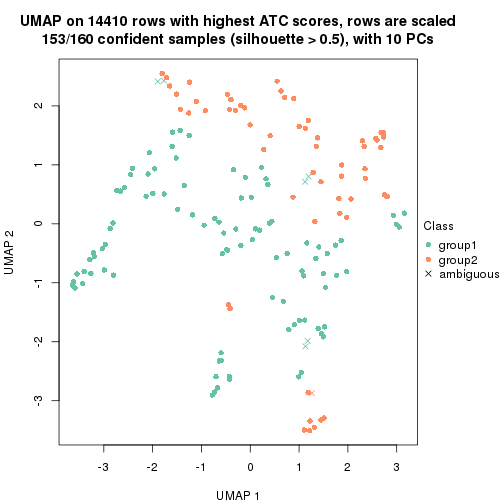
dimension_reduction(res, k = 3, method = "UMAP")
dimension_reduction(res, k = 4, method = "UMAP")
dimension_reduction(res, k = 5, method = "UMAP")
dimension_reduction(res, k = 6, method = "UMAP")
Following heatmap shows how subgroups are split when increasing k:
collect_classes(res)
If matrix rows can be associated to genes, consider to use GO_Enrichment(res,
...) to perform function enrichment for the signature genes.
The object with results only for a single top-value method and a single partition method can be extracted as:
res = res_list["ATC", "NMF"]
# you can also extract it by
# res = res_list["ATC:NMF"]
A summary of res and all the functions that can be applied to it:
res
#> A 'ConsensusPartition' object with k = 2, 3, 4, 5, 6.
#> On a matrix with 14410 rows and 160 columns.
#> Top rows (1000, 2000, 3000, 4000, 5000) are extracted by 'ATC' method.
#> Subgroups are detected by 'NMF' method.
#> Performed in total 1250 partitions by row resampling.
#> Best k for subgroups seems to be 3.
#>
#> Following methods can be applied to this 'ConsensusPartition' object:
#> [1] "cola_report" "collect_classes" "collect_plots"
#> [4] "collect_stats" "colnames" "compare_signatures"
#> [7] "consensus_heatmap" "dimension_reduction" "functional_enrichment"
#> [10] "get_anno_col" "get_anno" "get_classes"
#> [13] "get_consensus" "get_matrix" "get_membership"
#> [16] "get_param" "get_signatures" "get_stats"
#> [19] "is_best_k" "is_stable_k" "membership_heatmap"
#> [22] "ncol" "nrow" "plot_ecdf"
#> [25] "rownames" "select_partition_number" "show"
#> [28] "suggest_best_k" "test_to_known_factors"
collect_plots() function collects all the plots made from res for all k (number of partitions)
into one single page to provide an easy and fast comparison between different k.
collect_plots(res)
The plots are:
k and the heatmap of
predicted classes for each k.k.k.k.All the plots in panels can be made by individual functions and they are plotted later in this section.
select_partition_number() produces several plots showing different
statistics for choosing “optimized” k. There are following statistics:
k;k, the area increased is defined as \(A_k - A_{k-1}\).The detailed explanations of these statistics can be found in the cola vignette.
Generally speaking, lower PAC score, higher mean silhouette score or higher
concordance corresponds to better partition. Rand index and Jaccard index
measure how similar the current partition is compared to partition with k-1.
If they are too similar, we won't accept k is better than k-1.
select_partition_number(res)
The numeric values for all these statistics can be obtained by get_stats().
get_stats(res)
#> k 1-PAC mean_silhouette concordance area_increased Rand Jaccard
#> 2 2 0.646 0.837 0.930 0.3815 0.604 0.604
#> 3 3 0.425 0.508 0.742 0.6371 0.663 0.489
#> 4 4 0.419 0.505 0.717 0.1725 0.641 0.276
#> 5 5 0.502 0.413 0.649 0.0772 0.853 0.513
#> 6 6 0.593 0.457 0.659 0.0419 0.874 0.506
suggest_best_k() suggests the best \(k\) based on these statistics. The rules are as follows:
NA.suggest_best_k(res)
#> [1] 3
Following shows the table of the partitions (You need to click the show/hide
code output link to see it). The membership matrix (columns with name p*)
is inferred by
clue::cl_consensus()
function with the SE method. Basically the value in the membership matrix
represents the probability to belong to a certain group. The finall class
label for an item is determined with the group with highest probability it
belongs to.
In get_classes() function, the entropy is calculated from the membership
matrix and the silhouette score is calculated from the consensus matrix.
cbind(get_classes(res, k = 2), get_membership(res, k = 2))
#> class entropy silhouette p1 p2
#> SRR031811 1 0.6887 0.8045 0.816 0.184
#> SRR031812 1 0.7745 0.7669 0.772 0.228
#> SRR031813 2 0.0000 0.9420 0.000 1.000
#> SRR031814 2 0.0000 0.9420 0.000 1.000
#> SRR031815 2 0.0000 0.9420 0.000 1.000
#> SRR031816 2 0.1843 0.9186 0.028 0.972
#> SRR031817 2 0.0000 0.9420 0.000 1.000
#> SRR031818 2 0.0000 0.9420 0.000 1.000
#> SRR031819 2 0.0000 0.9420 0.000 1.000
#> SRR031820 2 0.0000 0.9420 0.000 1.000
#> SRR031821 2 1.0000 -0.1979 0.500 0.500
#> SRR031822 2 0.0000 0.9420 0.000 1.000
#> SRR031823 1 0.6623 0.8110 0.828 0.172
#> SRR031824 2 0.0000 0.9420 0.000 1.000
#> SRR031825 2 0.0000 0.9420 0.000 1.000
#> SRR031826 2 0.0000 0.9420 0.000 1.000
#> SRR031827 2 0.0000 0.9420 0.000 1.000
#> SRR031828 2 0.0000 0.9420 0.000 1.000
#> SRR031829 2 0.0000 0.9420 0.000 1.000
#> SRR031830 2 0.0000 0.9420 0.000 1.000
#> SRR031831 2 0.0000 0.9420 0.000 1.000
#> SRR031832 2 0.5408 0.8169 0.124 0.876
#> SRR031833 2 0.0000 0.9420 0.000 1.000
#> SRR031834 2 0.0000 0.9420 0.000 1.000
#> SRR031835 1 0.9170 0.6240 0.668 0.332
#> SRR031836 1 0.9933 0.3441 0.548 0.452
#> SRR031837 2 0.0000 0.9420 0.000 1.000
#> SRR031838 2 0.0000 0.9420 0.000 1.000
#> SRR031839 2 0.0000 0.9420 0.000 1.000
#> SRR031840 2 0.0000 0.9420 0.000 1.000
#> SRR031841 2 0.0000 0.9420 0.000 1.000
#> SRR031842 2 0.0000 0.9420 0.000 1.000
#> SRR031843 2 0.0000 0.9420 0.000 1.000
#> SRR031844 1 0.0000 0.8487 1.000 0.000
#> SRR031845 1 0.0000 0.8487 1.000 0.000
#> SRR031846 2 0.0000 0.9420 0.000 1.000
#> SRR031847 1 0.9896 0.3813 0.560 0.440
#> SRR031848 1 0.9732 0.4795 0.596 0.404
#> SRR031849 2 0.0938 0.9325 0.012 0.988
#> SRR031850 2 0.0000 0.9420 0.000 1.000
#> SRR031851 2 0.0000 0.9420 0.000 1.000
#> SRR031852 2 0.0000 0.9420 0.000 1.000
#> SRR031853 2 0.0000 0.9420 0.000 1.000
#> SRR031854 2 0.0000 0.9420 0.000 1.000
#> SRR031855 2 0.0000 0.9420 0.000 1.000
#> SRR031857 2 0.9732 0.1976 0.404 0.596
#> SRR031858 2 0.0000 0.9420 0.000 1.000
#> SRR031859 2 0.0000 0.9420 0.000 1.000
#> SRR031860 2 0.0000 0.9420 0.000 1.000
#> SRR031861 2 0.0000 0.9420 0.000 1.000
#> SRR031862 2 0.9954 -0.0327 0.460 0.540
#> SRR031863 2 0.0000 0.9420 0.000 1.000
#> SRR031864 2 0.0000 0.9420 0.000 1.000
#> SRR031865 2 0.0000 0.9420 0.000 1.000
#> SRR031866 2 0.5294 0.8215 0.120 0.880
#> SRR031867 2 0.0000 0.9420 0.000 1.000
#> SRR031868 2 0.0000 0.9420 0.000 1.000
#> SRR031869 2 0.6531 0.7566 0.168 0.832
#> SRR031870 2 0.0000 0.9420 0.000 1.000
#> SRR031871 2 0.0000 0.9420 0.000 1.000
#> SRR031872 2 0.0000 0.9420 0.000 1.000
#> SRR031873 2 0.0000 0.9420 0.000 1.000
#> SRR031874 1 0.0000 0.8487 1.000 0.000
#> SRR031875 2 0.0000 0.9420 0.000 1.000
#> SRR031876 1 0.0000 0.8487 1.000 0.000
#> SRR031877 1 0.0000 0.8487 1.000 0.000
#> SRR031878 1 0.6801 0.8069 0.820 0.180
#> SRR031879 2 0.0000 0.9420 0.000 1.000
#> SRR031880 1 0.9552 0.5446 0.624 0.376
#> SRR031881 2 0.0376 0.9389 0.004 0.996
#> SRR031882 2 0.6247 0.7739 0.156 0.844
#> SRR031883 2 0.0000 0.9420 0.000 1.000
#> SRR031884 2 0.0000 0.9420 0.000 1.000
#> SRR031885 2 0.0000 0.9420 0.000 1.000
#> SRR031886 1 0.9635 0.5183 0.612 0.388
#> SRR031887 1 0.6148 0.8190 0.848 0.152
#> SRR031888 2 0.0000 0.9420 0.000 1.000
#> SRR031889 2 0.0000 0.9420 0.000 1.000
#> SRR031890 2 0.0000 0.9420 0.000 1.000
#> SRR031891 1 0.0000 0.8487 1.000 0.000
#> SRR031892 1 0.0000 0.8487 1.000 0.000
#> SRR031893 2 0.0000 0.9420 0.000 1.000
#> SRR031894 2 0.0000 0.9420 0.000 1.000
#> SRR031895 2 0.0000 0.9420 0.000 1.000
#> SRR031896 2 0.0000 0.9420 0.000 1.000
#> SRR031897 2 0.0000 0.9420 0.000 1.000
#> SRR031898 2 0.0000 0.9420 0.000 1.000
#> SRR031899 2 0.7219 0.7057 0.200 0.800
#> SRR031900 2 0.0000 0.9420 0.000 1.000
#> SRR031901 2 0.0000 0.9420 0.000 1.000
#> SRR031902 2 0.0000 0.9420 0.000 1.000
#> SRR031903 2 0.0000 0.9420 0.000 1.000
#> SRR031904 2 0.0000 0.9420 0.000 1.000
#> SRR031905 2 0.0000 0.9420 0.000 1.000
#> SRR031906 2 0.6712 0.7445 0.176 0.824
#> SRR031907 2 0.2423 0.9076 0.040 0.960
#> SRR031908 2 0.3274 0.8879 0.060 0.940
#> SRR031909 1 0.0000 0.8487 1.000 0.000
#> SRR031910 1 0.3879 0.8406 0.924 0.076
#> SRR031911 2 0.0000 0.9420 0.000 1.000
#> SRR031912 1 0.0000 0.8487 1.000 0.000
#> SRR031913 2 0.0000 0.9420 0.000 1.000
#> SRR031914 2 0.2423 0.9076 0.040 0.960
#> SRR031915 2 0.9754 0.1833 0.408 0.592
#> SRR031916 2 0.0672 0.9358 0.008 0.992
#> SRR031917 1 0.0000 0.8487 1.000 0.000
#> SRR031918 1 0.9552 0.5444 0.624 0.376
#> SRR031919 1 0.0000 0.8487 1.000 0.000
#> SRR031920 1 0.7376 0.7867 0.792 0.208
#> SRR031921 2 0.0000 0.9420 0.000 1.000
#> SRR031922 2 0.0000 0.9420 0.000 1.000
#> SRR031923 2 0.0000 0.9420 0.000 1.000
#> SRR031924 2 0.0000 0.9420 0.000 1.000
#> SRR031925 1 0.6973 0.8019 0.812 0.188
#> SRR031926 2 0.0000 0.9420 0.000 1.000
#> SRR031927 2 0.0000 0.9420 0.000 1.000
#> SRR031928 2 0.5294 0.8215 0.120 0.880
#> SRR031929 2 0.0000 0.9420 0.000 1.000
#> SRR031930 2 0.0000 0.9420 0.000 1.000
#> SRR031931 2 0.0000 0.9420 0.000 1.000
#> SRR031932 2 0.0000 0.9420 0.000 1.000
#> SRR031933 2 0.0000 0.9420 0.000 1.000
#> SRR031934 2 0.0000 0.9420 0.000 1.000
#> SRR031935 2 0.0672 0.9358 0.008 0.992
#> SRR031936 2 0.0000 0.9420 0.000 1.000
#> SRR031937 1 0.0000 0.8487 1.000 0.000
#> SRR031938 1 0.0000 0.8487 1.000 0.000
#> SRR031939 2 0.0000 0.9420 0.000 1.000
#> SRR031940 2 0.0000 0.9420 0.000 1.000
#> SRR031941 2 0.9963 -0.0504 0.464 0.536
#> SRR031942 1 0.0000 0.8487 1.000 0.000
#> SRR031943 1 0.0000 0.8487 1.000 0.000
#> SRR031944 1 0.7376 0.7867 0.792 0.208
#> SRR031945 1 0.0000 0.8487 1.000 0.000
#> SRR031946 1 0.0376 0.8486 0.996 0.004
#> SRR031947 1 0.3431 0.8430 0.936 0.064
#> SRR031948 1 0.7139 0.7963 0.804 0.196
#> SRR031949 1 0.7453 0.7834 0.788 0.212
#> SRR031950 2 0.5408 0.8167 0.124 0.876
#> SRR031951 1 0.9522 0.5525 0.628 0.372
#> SRR031952 2 0.8861 0.4929 0.304 0.696
#> SRR031953 2 0.5629 0.8066 0.132 0.868
#> SRR031954 1 0.0000 0.8487 1.000 0.000
#> SRR031955 2 0.9815 0.1382 0.420 0.580
#> SRR031956 1 0.6438 0.8145 0.836 0.164
#> SRR031957 2 0.0000 0.9420 0.000 1.000
#> SRR031958 2 0.9922 0.0218 0.448 0.552
#> SRR031959 1 0.0000 0.8487 1.000 0.000
#> SRR031960 1 0.7815 0.7625 0.768 0.232
#> SRR031961 1 0.0000 0.8487 1.000 0.000
#> SRR031962 2 0.9815 0.1384 0.420 0.580
#> SRR031963 1 0.3114 0.8441 0.944 0.056
#> SRR031964 2 0.6887 0.7322 0.184 0.816
#> SRR031965 2 0.0000 0.9420 0.000 1.000
#> SRR031966 2 0.0000 0.9420 0.000 1.000
#> SRR031967 2 0.0000 0.9420 0.000 1.000
#> SRR031968 2 0.0000 0.9420 0.000 1.000
#> SRR031969 2 0.0000 0.9420 0.000 1.000
#> SRR031970 2 0.0000 0.9420 0.000 1.000
#> SRR031971 2 0.0000 0.9420 0.000 1.000
cbind(get_classes(res, k = 3), get_membership(res, k = 3))
#> class entropy silhouette p1 p2 p3
#> SRR031811 1 0.6521 0.5223 0.504 0.492 0.004
#> SRR031812 1 0.9399 0.5305 0.452 0.372 0.176
#> SRR031813 2 0.6095 0.5328 0.000 0.608 0.392
#> SRR031814 3 0.1031 0.6944 0.000 0.024 0.976
#> SRR031815 2 0.6215 0.4794 0.000 0.572 0.428
#> SRR031816 2 0.1860 0.6439 0.000 0.948 0.052
#> SRR031817 3 0.5835 0.5682 0.340 0.000 0.660
#> SRR031818 3 0.1411 0.6878 0.000 0.036 0.964
#> SRR031819 3 0.0747 0.6968 0.000 0.016 0.984
#> SRR031820 3 0.0747 0.6968 0.000 0.016 0.984
#> SRR031821 2 0.0592 0.6028 0.000 0.988 0.012
#> SRR031822 3 0.6305 -0.2881 0.000 0.484 0.516
#> SRR031823 1 0.6295 0.5483 0.528 0.472 0.000
#> SRR031824 3 0.1031 0.6944 0.000 0.024 0.976
#> SRR031825 3 0.6079 0.0173 0.000 0.388 0.612
#> SRR031826 2 0.6140 0.5174 0.000 0.596 0.404
#> SRR031827 2 0.2165 0.6516 0.000 0.936 0.064
#> SRR031828 3 0.1031 0.6944 0.000 0.024 0.976
#> SRR031829 2 0.6126 0.5253 0.000 0.600 0.400
#> SRR031830 3 0.6308 -0.3201 0.000 0.492 0.508
#> SRR031831 3 0.5882 0.5619 0.348 0.000 0.652
#> SRR031832 3 0.5926 0.5547 0.356 0.000 0.644
#> SRR031833 3 0.1031 0.6944 0.000 0.024 0.976
#> SRR031834 2 0.5678 0.5998 0.000 0.684 0.316
#> SRR031835 1 0.9529 0.5246 0.448 0.356 0.196
#> SRR031836 3 0.6280 0.4008 0.460 0.000 0.540
#> SRR031837 3 0.1163 0.6988 0.028 0.000 0.972
#> SRR031838 3 0.5465 0.3133 0.000 0.288 0.712
#> SRR031839 3 0.6280 -0.2152 0.000 0.460 0.540
#> SRR031840 2 0.3412 0.6738 0.000 0.876 0.124
#> SRR031841 3 0.2165 0.6653 0.000 0.064 0.936
#> SRR031842 3 0.4654 0.4779 0.000 0.208 0.792
#> SRR031843 3 0.2165 0.6954 0.064 0.000 0.936
#> SRR031844 1 0.5882 0.6653 0.652 0.348 0.000
#> SRR031845 1 0.0747 0.6073 0.984 0.000 0.016
#> SRR031846 3 0.0848 0.6983 0.008 0.008 0.984
#> SRR031847 3 0.5948 0.5501 0.360 0.000 0.640
#> SRR031848 3 0.6307 0.3441 0.488 0.000 0.512
#> SRR031849 3 0.5926 0.5547 0.356 0.000 0.644
#> SRR031850 2 0.5926 0.5711 0.000 0.644 0.356
#> SRR031851 3 0.3752 0.5783 0.000 0.144 0.856
#> SRR031852 3 0.5926 0.5547 0.356 0.000 0.644
#> SRR031853 3 0.5926 0.5547 0.356 0.000 0.644
#> SRR031854 3 0.3619 0.6819 0.136 0.000 0.864
#> SRR031855 2 0.5968 0.5646 0.000 0.636 0.364
#> SRR031857 2 0.0592 0.6053 0.000 0.988 0.012
#> SRR031858 3 0.5905 0.5583 0.352 0.000 0.648
#> SRR031859 3 0.1753 0.6790 0.000 0.048 0.952
#> SRR031860 3 0.1411 0.6878 0.000 0.036 0.964
#> SRR031861 3 0.5760 0.2095 0.000 0.328 0.672
#> SRR031862 2 0.1711 0.5735 0.032 0.960 0.008
#> SRR031863 3 0.5882 0.5619 0.348 0.000 0.652
#> SRR031864 3 0.5760 0.2133 0.000 0.328 0.672
#> SRR031865 2 0.6267 0.4327 0.000 0.548 0.452
#> SRR031866 3 0.5874 0.5265 0.032 0.208 0.760
#> SRR031867 3 0.5497 0.6004 0.292 0.000 0.708
#> SRR031868 3 0.1411 0.6878 0.000 0.036 0.964
#> SRR031869 3 0.5621 0.5911 0.308 0.000 0.692
#> SRR031870 3 0.5926 0.5547 0.356 0.000 0.644
#> SRR031871 3 0.0892 0.6957 0.000 0.020 0.980
#> SRR031872 2 0.3192 0.6710 0.000 0.888 0.112
#> SRR031873 3 0.0892 0.6957 0.000 0.020 0.980
#> SRR031874 1 0.1860 0.6285 0.948 0.052 0.000
#> SRR031875 3 0.1529 0.6983 0.040 0.000 0.960
#> SRR031876 1 0.5926 0.6633 0.644 0.356 0.000
#> SRR031877 1 0.0747 0.6073 0.984 0.000 0.016
#> SRR031878 1 0.8805 0.5323 0.584 0.208 0.208
#> SRR031879 3 0.0747 0.6968 0.000 0.016 0.984
#> SRR031880 2 0.6853 0.1766 0.224 0.712 0.064
#> SRR031881 2 0.2796 0.6642 0.000 0.908 0.092
#> SRR031882 2 0.6416 0.5323 0.020 0.676 0.304
#> SRR031883 3 0.0747 0.6968 0.000 0.016 0.984
#> SRR031884 3 0.3482 0.6851 0.128 0.000 0.872
#> SRR031885 2 0.5948 0.5682 0.000 0.640 0.360
#> SRR031886 3 0.6026 0.5295 0.376 0.000 0.624
#> SRR031887 2 0.5327 0.0570 0.272 0.728 0.000
#> SRR031888 3 0.6307 -0.2954 0.000 0.488 0.512
#> SRR031889 3 0.1753 0.6792 0.000 0.048 0.952
#> SRR031890 3 0.1031 0.6992 0.024 0.000 0.976
#> SRR031891 1 0.0747 0.6073 0.984 0.000 0.016
#> SRR031892 1 0.5905 0.6645 0.648 0.352 0.000
#> SRR031893 3 0.5926 0.5547 0.356 0.000 0.644
#> SRR031894 3 0.5058 0.4106 0.000 0.244 0.756
#> SRR031895 2 0.5968 0.5651 0.000 0.636 0.364
#> SRR031896 2 0.5988 0.5604 0.000 0.632 0.368
#> SRR031897 2 0.6192 0.4930 0.000 0.580 0.420
#> SRR031898 3 0.1643 0.6820 0.000 0.044 0.956
#> SRR031899 3 0.5926 0.5547 0.356 0.000 0.644
#> SRR031900 3 0.5905 0.5583 0.352 0.000 0.648
#> SRR031901 3 0.5926 0.5547 0.356 0.000 0.644
#> SRR031902 3 0.0892 0.6957 0.000 0.020 0.980
#> SRR031903 3 0.0747 0.6968 0.000 0.016 0.984
#> SRR031904 3 0.0892 0.6957 0.000 0.020 0.980
#> SRR031905 2 0.3412 0.6739 0.000 0.876 0.124
#> SRR031906 3 0.5733 0.5797 0.324 0.000 0.676
#> SRR031907 2 0.6280 0.2577 0.000 0.540 0.460
#> SRR031908 3 0.5926 0.5547 0.356 0.000 0.644
#> SRR031909 1 0.5926 0.6633 0.644 0.356 0.000
#> SRR031910 1 0.5650 0.1561 0.688 0.000 0.312
#> SRR031911 3 0.1860 0.6977 0.052 0.000 0.948
#> SRR031912 1 0.1643 0.6268 0.956 0.044 0.000
#> SRR031913 3 0.0747 0.6968 0.000 0.016 0.984
#> SRR031914 2 0.2356 0.6560 0.000 0.928 0.072
#> SRR031915 2 0.9387 -0.0655 0.220 0.508 0.272
#> SRR031916 2 0.3941 0.6764 0.000 0.844 0.156
#> SRR031917 1 0.5926 0.6633 0.644 0.356 0.000
#> SRR031918 1 0.6045 -0.0452 0.620 0.000 0.380
#> SRR031919 1 0.6308 0.5224 0.508 0.492 0.000
#> SRR031920 1 0.6295 -0.2871 0.528 0.000 0.472
#> SRR031921 3 0.3267 0.6108 0.000 0.116 0.884
#> SRR031922 3 0.5926 0.5547 0.356 0.000 0.644
#> SRR031923 3 0.1031 0.6944 0.000 0.024 0.976
#> SRR031924 3 0.5926 0.5547 0.356 0.000 0.644
#> SRR031925 2 0.0892 0.5637 0.020 0.980 0.000
#> SRR031926 2 0.6244 0.4553 0.000 0.560 0.440
#> SRR031927 2 0.5926 0.5711 0.000 0.644 0.356
#> SRR031928 2 0.3340 0.6596 0.000 0.880 0.120
#> SRR031929 3 0.4702 0.6445 0.212 0.000 0.788
#> SRR031930 3 0.5216 0.3827 0.000 0.260 0.740
#> SRR031931 3 0.6274 -0.2199 0.000 0.456 0.544
#> SRR031932 3 0.1411 0.6880 0.000 0.036 0.964
#> SRR031933 3 0.1031 0.6944 0.000 0.024 0.976
#> SRR031934 2 0.6111 0.5299 0.000 0.604 0.396
#> SRR031935 2 0.4605 0.6735 0.000 0.796 0.204
#> SRR031936 2 0.4121 0.6762 0.000 0.832 0.168
#> SRR031937 2 0.4121 0.3256 0.168 0.832 0.000
#> SRR031938 2 0.6140 -0.3521 0.404 0.596 0.000
#> SRR031939 2 0.5926 0.5711 0.000 0.644 0.356
#> SRR031940 3 0.5926 0.5547 0.356 0.000 0.644
#> SRR031941 2 0.9292 -0.1646 0.272 0.520 0.208
#> SRR031942 1 0.0592 0.6170 0.988 0.012 0.000
#> SRR031943 1 0.0747 0.6073 0.984 0.000 0.016
#> SRR031944 1 0.9195 0.5368 0.464 0.384 0.152
#> SRR031945 1 0.5926 0.6633 0.644 0.356 0.000
#> SRR031946 1 0.3267 0.5352 0.884 0.000 0.116
#> SRR031947 1 0.6229 0.6668 0.652 0.340 0.008
#> SRR031948 2 0.3551 0.4149 0.132 0.868 0.000
#> SRR031949 3 0.5968 0.5450 0.364 0.000 0.636
#> SRR031950 2 0.2066 0.6494 0.000 0.940 0.060
#> SRR031951 2 0.9527 -0.4126 0.372 0.436 0.192
#> SRR031952 2 0.1643 0.6372 0.000 0.956 0.044
#> SRR031953 2 0.1964 0.6468 0.000 0.944 0.056
#> SRR031954 1 0.5926 0.6633 0.644 0.356 0.000
#> SRR031955 2 0.7309 0.3496 0.168 0.708 0.124
#> SRR031956 1 0.7760 0.6399 0.580 0.360 0.060
#> SRR031957 2 0.4555 0.6737 0.000 0.800 0.200
#> SRR031958 2 0.3481 0.5682 0.052 0.904 0.044
#> SRR031959 1 0.5926 0.6633 0.644 0.356 0.000
#> SRR031960 2 0.7607 -0.2789 0.364 0.584 0.052
#> SRR031961 1 0.5926 0.6633 0.644 0.356 0.000
#> SRR031962 2 0.0592 0.6053 0.000 0.988 0.012
#> SRR031963 1 0.6954 0.6586 0.620 0.352 0.028
#> SRR031964 2 0.1860 0.6439 0.000 0.948 0.052
#> SRR031965 3 0.6295 -0.2534 0.000 0.472 0.528
#> SRR031966 3 0.4504 0.4986 0.000 0.196 0.804
#> SRR031967 3 0.5760 0.5769 0.328 0.000 0.672
#> SRR031968 3 0.3551 0.6832 0.132 0.000 0.868
#> SRR031969 3 0.0747 0.6968 0.000 0.016 0.984
#> SRR031970 3 0.5497 0.3036 0.000 0.292 0.708
#> SRR031971 3 0.5591 0.2720 0.000 0.304 0.696
cbind(get_classes(res, k = 4), get_membership(res, k = 4))
#> class entropy silhouette p1 p2 p3 p4
#> SRR031811 2 0.5413 0.4478 0.004 0.712 0.048 0.236
#> SRR031812 4 0.5641 0.6293 0.152 0.004 0.112 0.732
#> SRR031813 1 0.2987 0.6844 0.880 0.104 0.016 0.000
#> SRR031814 1 0.4313 0.6237 0.736 0.004 0.260 0.000
#> SRR031815 1 0.3301 0.7011 0.876 0.076 0.048 0.000
#> SRR031816 4 0.7816 0.3424 0.320 0.228 0.004 0.448
#> SRR031817 3 0.4967 -0.0739 0.452 0.000 0.548 0.000
#> SRR031818 1 0.5160 0.6829 0.748 0.072 0.180 0.000
#> SRR031819 1 0.4585 0.5630 0.668 0.000 0.332 0.000
#> SRR031820 1 0.4955 0.5492 0.648 0.008 0.344 0.000
#> SRR031821 2 0.4574 0.5065 0.008 0.768 0.016 0.208
#> SRR031822 1 0.3311 0.6667 0.828 0.000 0.172 0.000
#> SRR031823 4 0.5407 0.4696 0.000 0.296 0.036 0.668
#> SRR031824 2 0.6834 0.3879 0.176 0.600 0.224 0.000
#> SRR031825 2 0.3229 0.6462 0.072 0.880 0.048 0.000
#> SRR031826 1 0.2924 0.6867 0.884 0.100 0.016 0.000
#> SRR031827 4 0.7986 0.2570 0.328 0.268 0.004 0.400
#> SRR031828 1 0.4775 0.6597 0.740 0.028 0.232 0.000
#> SRR031829 2 0.2531 0.6415 0.020 0.924 0.032 0.024
#> SRR031830 1 0.3435 0.6975 0.864 0.100 0.036 0.000
#> SRR031831 3 0.4509 0.4651 0.288 0.004 0.708 0.000
#> SRR031832 3 0.2334 0.6966 0.088 0.004 0.908 0.000
#> SRR031833 1 0.4833 0.6643 0.740 0.032 0.228 0.000
#> SRR031834 1 0.4419 0.6566 0.792 0.004 0.176 0.028
#> SRR031835 4 0.5893 0.6136 0.156 0.004 0.128 0.712
#> SRR031836 3 0.5177 0.5907 0.200 0.004 0.744 0.052
#> SRR031837 1 0.5040 0.5163 0.628 0.008 0.364 0.000
#> SRR031838 1 0.6571 0.5397 0.612 0.264 0.124 0.000
#> SRR031839 1 0.4601 0.6478 0.820 0.020 0.056 0.104
#> SRR031840 2 0.3533 0.6055 0.080 0.864 0.000 0.056
#> SRR031841 1 0.4507 0.6968 0.788 0.044 0.168 0.000
#> SRR031842 1 0.7084 0.3964 0.520 0.340 0.140 0.000
#> SRR031843 1 0.5628 0.3949 0.556 0.024 0.420 0.000
#> SRR031844 4 0.1256 0.6593 0.008 0.000 0.028 0.964
#> SRR031845 3 0.5793 0.2698 0.000 0.036 0.580 0.384
#> SRR031846 3 0.5923 0.2494 0.044 0.376 0.580 0.000
#> SRR031847 3 0.2665 0.6966 0.088 0.004 0.900 0.008
#> SRR031848 3 0.5471 0.5629 0.216 0.004 0.720 0.060
#> SRR031849 3 0.3355 0.6593 0.160 0.004 0.836 0.000
#> SRR031850 2 0.1743 0.6449 0.056 0.940 0.004 0.000
#> SRR031851 2 0.5277 0.5861 0.132 0.752 0.116 0.000
#> SRR031852 3 0.2224 0.6981 0.040 0.032 0.928 0.000
#> SRR031853 3 0.2399 0.6974 0.048 0.032 0.920 0.000
#> SRR031854 3 0.5700 -0.0383 0.412 0.028 0.560 0.000
#> SRR031855 1 0.2773 0.6614 0.880 0.116 0.004 0.000
#> SRR031857 2 0.7363 0.0269 0.168 0.476 0.000 0.356
#> SRR031858 2 0.5512 -0.0153 0.016 0.496 0.488 0.000
#> SRR031859 2 0.6640 0.4197 0.168 0.624 0.208 0.000
#> SRR031860 2 0.7299 0.2465 0.240 0.536 0.224 0.000
#> SRR031861 2 0.5672 0.5189 0.188 0.712 0.100 0.000
#> SRR031862 4 0.7254 0.5022 0.300 0.104 0.024 0.572
#> SRR031863 3 0.3649 0.5628 0.000 0.204 0.796 0.000
#> SRR031864 2 0.3009 0.6525 0.056 0.892 0.052 0.000
#> SRR031865 1 0.2796 0.6975 0.892 0.016 0.092 0.000
#> SRR031866 1 0.4652 0.6453 0.756 0.004 0.220 0.020
#> SRR031867 2 0.4948 0.1844 0.000 0.560 0.440 0.000
#> SRR031868 1 0.7764 0.2392 0.404 0.356 0.240 0.000
#> SRR031869 1 0.5085 0.6054 0.708 0.000 0.260 0.032
#> SRR031870 3 0.4722 0.4396 0.008 0.300 0.692 0.000
#> SRR031871 1 0.7636 0.4162 0.468 0.248 0.284 0.000
#> SRR031872 1 0.3093 0.6067 0.884 0.020 0.004 0.092
#> SRR031873 1 0.5141 0.6340 0.700 0.032 0.268 0.000
#> SRR031874 4 0.5339 0.1439 0.000 0.016 0.384 0.600
#> SRR031875 3 0.4741 0.5335 0.228 0.028 0.744 0.000
#> SRR031876 4 0.0804 0.6641 0.012 0.008 0.000 0.980
#> SRR031877 3 0.5792 0.2236 0.000 0.032 0.552 0.416
#> SRR031878 4 0.6655 0.1195 0.000 0.084 0.440 0.476
#> SRR031879 1 0.4720 0.5664 0.672 0.004 0.324 0.000
#> SRR031880 2 0.6153 0.1990 0.008 0.576 0.040 0.376
#> SRR031881 2 0.2573 0.6315 0.024 0.920 0.012 0.044
#> SRR031882 1 0.7476 -0.1656 0.428 0.008 0.136 0.428
#> SRR031883 1 0.5271 0.5594 0.640 0.020 0.340 0.000
#> SRR031884 1 0.5708 0.3861 0.556 0.028 0.416 0.000
#> SRR031885 1 0.2831 0.6580 0.876 0.120 0.004 0.000
#> SRR031886 3 0.4376 0.6422 0.172 0.004 0.796 0.028
#> SRR031887 4 0.5543 0.4180 0.004 0.340 0.024 0.632
#> SRR031888 2 0.2383 0.6543 0.024 0.924 0.048 0.004
#> SRR031889 1 0.4429 0.6461 0.764 0.004 0.220 0.012
#> SRR031890 3 0.5343 0.3843 0.028 0.316 0.656 0.000
#> SRR031891 3 0.5723 0.2682 0.000 0.032 0.580 0.388
#> SRR031892 4 0.4946 0.6461 0.124 0.004 0.088 0.784
#> SRR031893 3 0.2385 0.6992 0.052 0.028 0.920 0.000
#> SRR031894 1 0.3693 0.7045 0.856 0.072 0.072 0.000
#> SRR031895 1 0.4562 0.5841 0.764 0.208 0.028 0.000
#> SRR031896 1 0.2675 0.6816 0.892 0.100 0.008 0.000
#> SRR031897 2 0.1985 0.6516 0.040 0.940 0.016 0.004
#> SRR031898 2 0.2861 0.6430 0.016 0.888 0.096 0.000
#> SRR031899 3 0.3791 0.6714 0.128 0.016 0.844 0.012
#> SRR031900 2 0.4999 0.0408 0.000 0.508 0.492 0.000
#> SRR031901 3 0.4164 0.4820 0.000 0.264 0.736 0.000
#> SRR031902 1 0.7685 0.3961 0.456 0.256 0.288 0.000
#> SRR031903 1 0.5085 0.5974 0.676 0.020 0.304 0.000
#> SRR031904 2 0.7347 0.2225 0.228 0.528 0.244 0.000
#> SRR031905 1 0.2981 0.6083 0.888 0.016 0.004 0.092
#> SRR031906 1 0.5200 0.5966 0.700 0.000 0.264 0.036
#> SRR031907 2 0.5910 0.6262 0.032 0.744 0.124 0.100
#> SRR031908 3 0.3160 0.6839 0.120 0.004 0.868 0.008
#> SRR031909 4 0.0804 0.6641 0.012 0.008 0.000 0.980
#> SRR031910 3 0.4576 0.6358 0.036 0.020 0.812 0.132
#> SRR031911 3 0.4562 0.5715 0.208 0.028 0.764 0.000
#> SRR031912 4 0.5417 0.0712 0.000 0.016 0.412 0.572
#> SRR031913 2 0.5284 0.3399 0.016 0.616 0.368 0.000
#> SRR031914 2 0.7357 0.1662 0.164 0.524 0.004 0.308
#> SRR031915 4 0.6212 0.6073 0.220 0.016 0.080 0.684
#> SRR031916 1 0.5171 0.2943 0.704 0.008 0.020 0.268
#> SRR031917 4 0.2266 0.6543 0.004 0.084 0.000 0.912
#> SRR031918 3 0.5868 0.5986 0.168 0.004 0.712 0.116
#> SRR031919 4 0.4245 0.6641 0.116 0.064 0.000 0.820
#> SRR031920 3 0.4848 0.6681 0.092 0.020 0.808 0.080
#> SRR031921 1 0.3372 0.7025 0.868 0.036 0.096 0.000
#> SRR031922 3 0.4372 0.4698 0.000 0.268 0.728 0.004
#> SRR031923 2 0.3757 0.6182 0.020 0.828 0.152 0.000
#> SRR031924 3 0.1635 0.7039 0.044 0.008 0.948 0.000
#> SRR031925 4 0.6454 0.4411 0.084 0.304 0.004 0.608
#> SRR031926 2 0.1707 0.6495 0.024 0.952 0.020 0.004
#> SRR031927 1 0.2125 0.6880 0.920 0.076 0.004 0.000
#> SRR031928 4 0.8591 0.1990 0.400 0.116 0.084 0.400
#> SRR031929 3 0.4049 0.5625 0.008 0.212 0.780 0.000
#> SRR031930 2 0.2623 0.6526 0.028 0.908 0.064 0.000
#> SRR031931 1 0.3439 0.7042 0.868 0.048 0.084 0.000
#> SRR031932 1 0.4072 0.6359 0.748 0.000 0.252 0.000
#> SRR031933 2 0.3160 0.6409 0.020 0.872 0.108 0.000
#> SRR031934 1 0.5542 0.5732 0.732 0.204 0.044 0.020
#> SRR031935 1 0.4908 0.4457 0.748 0.004 0.032 0.216
#> SRR031936 2 0.6020 0.4808 0.168 0.700 0.004 0.128
#> SRR031937 4 0.5867 0.6028 0.216 0.096 0.000 0.688
#> SRR031938 4 0.4579 0.5980 0.032 0.200 0.000 0.768
#> SRR031939 1 0.2799 0.6728 0.884 0.108 0.008 0.000
#> SRR031940 3 0.2300 0.6989 0.048 0.028 0.924 0.000
#> SRR031941 2 0.6683 0.1200 0.004 0.512 0.076 0.408
#> SRR031942 4 0.5511 -0.1177 0.000 0.016 0.484 0.500
#> SRR031943 3 0.5549 0.2883 0.004 0.016 0.584 0.396
#> SRR031944 4 0.4484 0.6646 0.120 0.004 0.064 0.812
#> SRR031945 4 0.1388 0.6683 0.028 0.000 0.012 0.960
#> SRR031946 3 0.6491 0.4504 0.096 0.004 0.620 0.280
#> SRR031947 4 0.3025 0.6690 0.056 0.004 0.044 0.896
#> SRR031948 4 0.5558 0.4606 0.444 0.008 0.008 0.540
#> SRR031949 3 0.0844 0.7038 0.012 0.004 0.980 0.004
#> SRR031950 2 0.6576 0.3680 0.152 0.628 0.000 0.220
#> SRR031951 4 0.6294 0.4243 0.004 0.296 0.076 0.624
#> SRR031952 2 0.5735 0.4694 0.092 0.716 0.004 0.188
#> SRR031953 2 0.6844 0.2987 0.152 0.588 0.000 0.260
#> SRR031954 4 0.2859 0.6770 0.112 0.000 0.008 0.880
#> SRR031955 4 0.5577 0.5424 0.364 0.008 0.016 0.612
#> SRR031956 4 0.3765 0.6272 0.004 0.116 0.032 0.848
#> SRR031957 1 0.5034 0.2339 0.700 0.012 0.008 0.280
#> SRR031958 2 0.4505 0.5301 0.008 0.788 0.024 0.180
#> SRR031959 4 0.4508 0.5895 0.000 0.184 0.036 0.780
#> SRR031960 2 0.5730 0.2633 0.000 0.616 0.040 0.344
#> SRR031961 4 0.3219 0.6752 0.112 0.000 0.020 0.868
#> SRR031962 2 0.7043 0.0468 0.128 0.504 0.000 0.368
#> SRR031963 4 0.4877 0.5632 0.000 0.204 0.044 0.752
#> SRR031964 2 0.5470 0.4887 0.100 0.732 0.000 0.168
#> SRR031965 2 0.6158 0.4108 0.272 0.640 0.088 0.000
#> SRR031966 1 0.7146 0.3934 0.516 0.336 0.148 0.000
#> SRR031967 3 0.4188 0.6214 0.148 0.040 0.812 0.000
#> SRR031968 3 0.5972 0.2772 0.304 0.064 0.632 0.000
#> SRR031969 1 0.7307 0.4729 0.524 0.192 0.284 0.000
#> SRR031970 1 0.6595 0.5248 0.604 0.276 0.120 0.000
#> SRR031971 1 0.4944 0.6923 0.768 0.160 0.072 0.000
cbind(get_classes(res, k = 5), get_membership(res, k = 5))
#> class entropy silhouette p1 p2 p3 p4 p5
#> SRR031811 4 0.496 0.3547 0.264 0.004 0.020 0.688 0.024
#> SRR031812 5 0.620 0.4682 0.280 0.124 0.016 0.000 0.580
#> SRR031813 2 0.296 0.6753 0.060 0.884 0.020 0.036 0.000
#> SRR031814 2 0.451 0.5160 0.004 0.688 0.284 0.000 0.024
#> SRR031815 2 0.189 0.6879 0.016 0.936 0.032 0.016 0.000
#> SRR031816 1 0.512 0.4260 0.628 0.324 0.000 0.040 0.008
#> SRR031817 3 0.492 0.5711 0.000 0.068 0.680 0.000 0.252
#> SRR031818 2 0.467 0.6360 0.000 0.752 0.020 0.052 0.176
#> SRR031819 3 0.563 0.5615 0.000 0.160 0.636 0.000 0.204
#> SRR031820 3 0.507 0.3901 0.000 0.300 0.640 0.000 0.060
#> SRR031821 4 0.482 -0.2322 0.488 0.008 0.008 0.496 0.000
#> SRR031822 2 0.334 0.6604 0.024 0.856 0.024 0.000 0.096
#> SRR031823 1 0.617 0.2391 0.464 0.000 0.016 0.436 0.084
#> SRR031824 4 0.662 0.2915 0.000 0.256 0.148 0.564 0.032
#> SRR031825 4 0.323 0.5331 0.008 0.144 0.012 0.836 0.000
#> SRR031826 2 0.297 0.6759 0.056 0.884 0.020 0.040 0.000
#> SRR031827 1 0.555 0.3967 0.600 0.324 0.000 0.068 0.008
#> SRR031828 2 0.509 0.4366 0.000 0.616 0.344 0.012 0.028
#> SRR031829 4 0.294 0.5524 0.052 0.020 0.028 0.892 0.008
#> SRR031830 2 0.218 0.6878 0.020 0.924 0.032 0.024 0.000
#> SRR031831 3 0.493 0.5475 0.000 0.056 0.660 0.000 0.284
#> SRR031832 3 0.473 0.4315 0.000 0.016 0.604 0.004 0.376
#> SRR031833 2 0.580 0.3598 0.000 0.572 0.060 0.020 0.348
#> SRR031834 2 0.622 0.3810 0.080 0.600 0.044 0.000 0.276
#> SRR031835 5 0.640 0.4468 0.288 0.124 0.024 0.000 0.564
#> SRR031836 5 0.614 0.0167 0.012 0.104 0.344 0.000 0.540
#> SRR031837 3 0.590 0.5136 0.000 0.152 0.588 0.000 0.260
#> SRR031838 2 0.575 0.5973 0.044 0.700 0.100 0.152 0.004
#> SRR031839 2 0.779 0.1379 0.156 0.444 0.092 0.004 0.304
#> SRR031840 4 0.479 0.1568 0.364 0.028 0.000 0.608 0.000
#> SRR031841 2 0.536 0.4447 0.016 0.616 0.336 0.016 0.016
#> SRR031842 2 0.667 0.4333 0.036 0.572 0.108 0.276 0.008
#> SRR031843 3 0.497 0.5905 0.000 0.136 0.712 0.000 0.152
#> SRR031844 5 0.443 0.3357 0.392 0.008 0.000 0.000 0.600
#> SRR031845 5 0.674 0.4288 0.132 0.000 0.224 0.060 0.584
#> SRR031846 4 0.773 0.1730 0.000 0.080 0.368 0.376 0.176
#> SRR031847 3 0.498 0.3032 0.000 0.016 0.532 0.008 0.444
#> SRR031848 5 0.622 0.0263 0.016 0.104 0.340 0.000 0.540
#> SRR031849 3 0.538 0.3444 0.000 0.056 0.516 0.000 0.428
#> SRR031850 4 0.387 0.5030 0.140 0.060 0.000 0.800 0.000
#> SRR031851 4 0.607 0.4623 0.048 0.228 0.084 0.640 0.000
#> SRR031852 3 0.161 0.5475 0.000 0.012 0.944 0.004 0.040
#> SRR031853 3 0.141 0.5487 0.000 0.008 0.952 0.004 0.036
#> SRR031854 3 0.371 0.5364 0.000 0.160 0.808 0.016 0.016
#> SRR031855 2 0.244 0.6857 0.016 0.904 0.000 0.068 0.012
#> SRR031857 1 0.475 0.4542 0.636 0.032 0.000 0.332 0.000
#> SRR031858 4 0.609 0.3327 0.000 0.012 0.376 0.520 0.092
#> SRR031859 4 0.654 0.2975 0.012 0.272 0.136 0.568 0.012
#> SRR031860 4 0.680 0.1375 0.004 0.336 0.144 0.496 0.020
#> SRR031861 4 0.622 0.3318 0.020 0.292 0.080 0.596 0.012
#> SRR031862 1 0.530 0.5486 0.752 0.108 0.092 0.028 0.020
#> SRR031863 3 0.735 -0.0216 0.012 0.020 0.444 0.208 0.316
#> SRR031864 4 0.410 0.5231 0.112 0.064 0.016 0.808 0.000
#> SRR031865 2 0.237 0.6783 0.004 0.908 0.016 0.004 0.068
#> SRR031866 2 0.725 0.0330 0.088 0.444 0.372 0.000 0.096
#> SRR031867 4 0.554 0.4735 0.000 0.012 0.240 0.656 0.092
#> SRR031868 2 0.683 0.2389 0.000 0.472 0.108 0.376 0.044
#> SRR031869 2 0.754 -0.0124 0.048 0.412 0.304 0.000 0.236
#> SRR031870 4 0.648 0.2949 0.000 0.016 0.372 0.488 0.124
#> SRR031871 2 0.639 0.4744 0.000 0.584 0.168 0.228 0.020
#> SRR031872 2 0.328 0.6449 0.068 0.856 0.000 0.004 0.072
#> SRR031873 2 0.450 0.6301 0.000 0.764 0.172 0.020 0.044
#> SRR031874 5 0.564 0.4465 0.260 0.000 0.124 0.000 0.616
#> SRR031875 3 0.482 0.5476 0.000 0.048 0.664 0.000 0.288
#> SRR031876 1 0.318 0.4534 0.792 0.000 0.000 0.000 0.208
#> SRR031877 5 0.632 0.4451 0.164 0.000 0.208 0.024 0.604
#> SRR031878 5 0.768 0.2143 0.256 0.008 0.072 0.180 0.484
#> SRR031879 3 0.563 0.5592 0.000 0.148 0.632 0.000 0.220
#> SRR031880 4 0.488 0.2963 0.276 0.000 0.020 0.680 0.024
#> SRR031881 4 0.453 0.2591 0.304 0.020 0.004 0.672 0.000
#> SRR031882 5 0.839 0.1223 0.208 0.316 0.136 0.004 0.336
#> SRR031883 3 0.507 0.3790 0.000 0.300 0.640 0.000 0.060
#> SRR031884 3 0.518 0.5775 0.000 0.104 0.676 0.000 0.220
#> SRR031885 2 0.288 0.6801 0.048 0.888 0.016 0.048 0.000
#> SRR031886 5 0.580 -0.1432 0.004 0.080 0.404 0.000 0.512
#> SRR031887 1 0.431 0.4929 0.676 0.000 0.000 0.308 0.016
#> SRR031888 4 0.288 0.5482 0.052 0.036 0.004 0.892 0.016
#> SRR031889 3 0.658 0.4283 0.004 0.232 0.500 0.000 0.264
#> SRR031890 3 0.779 -0.1575 0.000 0.072 0.380 0.332 0.216
#> SRR031891 5 0.659 0.4384 0.140 0.000 0.216 0.048 0.596
#> SRR031892 5 0.555 0.5403 0.216 0.116 0.008 0.000 0.660
#> SRR031893 3 0.334 0.4868 0.000 0.012 0.848 0.028 0.112
#> SRR031894 2 0.263 0.6876 0.004 0.904 0.044 0.036 0.012
#> SRR031895 2 0.581 0.5589 0.184 0.680 0.084 0.052 0.000
#> SRR031896 2 0.280 0.6813 0.044 0.892 0.016 0.048 0.000
#> SRR031897 4 0.266 0.5464 0.056 0.056 0.000 0.888 0.000
#> SRR031898 4 0.297 0.5118 0.108 0.004 0.024 0.864 0.000
#> SRR031899 5 0.436 0.4899 0.000 0.140 0.036 0.036 0.788
#> SRR031900 4 0.577 0.4588 0.000 0.012 0.248 0.632 0.108
#> SRR031901 4 0.667 0.2540 0.000 0.012 0.380 0.448 0.160
#> SRR031902 2 0.698 0.3501 0.000 0.480 0.236 0.264 0.020
#> SRR031903 2 0.526 0.6026 0.000 0.708 0.196 0.028 0.068
#> SRR031904 4 0.713 0.2317 0.000 0.256 0.100 0.540 0.104
#> SRR031905 2 0.328 0.6449 0.068 0.856 0.000 0.004 0.072
#> SRR031906 2 0.738 -0.1098 0.028 0.376 0.320 0.000 0.276
#> SRR031907 4 0.421 0.5328 0.020 0.064 0.012 0.820 0.084
#> SRR031908 3 0.523 0.2902 0.000 0.044 0.504 0.000 0.452
#> SRR031909 1 0.327 0.4608 0.796 0.004 0.000 0.000 0.200
#> SRR031910 5 0.539 0.5149 0.024 0.068 0.176 0.012 0.720
#> SRR031911 3 0.511 0.5372 0.000 0.048 0.652 0.008 0.292
#> SRR031912 5 0.567 0.4548 0.232 0.000 0.144 0.000 0.624
#> SRR031913 4 0.590 0.5081 0.072 0.028 0.076 0.724 0.100
#> SRR031914 1 0.528 0.3254 0.536 0.040 0.000 0.420 0.004
#> SRR031915 5 0.557 0.5185 0.076 0.184 0.000 0.044 0.696
#> SRR031916 2 0.523 0.4279 0.044 0.636 0.000 0.012 0.308
#> SRR031917 1 0.319 0.5514 0.840 0.000 0.000 0.028 0.132
#> SRR031918 5 0.512 0.4619 0.020 0.128 0.120 0.000 0.732
#> SRR031919 1 0.344 0.5266 0.836 0.060 0.000 0.000 0.104
#> SRR031920 5 0.437 0.5382 0.012 0.088 0.084 0.012 0.804
#> SRR031921 2 0.278 0.6790 0.000 0.888 0.028 0.012 0.072
#> SRR031922 4 0.667 0.2246 0.000 0.004 0.376 0.424 0.196
#> SRR031923 4 0.231 0.5564 0.004 0.036 0.048 0.912 0.000
#> SRR031924 3 0.408 0.3801 0.000 0.008 0.740 0.012 0.240
#> SRR031925 1 0.436 0.5355 0.728 0.024 0.000 0.240 0.008
#> SRR031926 4 0.213 0.5309 0.080 0.012 0.000 0.908 0.000
#> SRR031927 2 0.341 0.6879 0.028 0.872 0.016 0.032 0.052
#> SRR031928 1 0.637 0.4508 0.632 0.160 0.172 0.028 0.008
#> SRR031929 3 0.642 0.2668 0.008 0.020 0.604 0.228 0.140
#> SRR031930 4 0.345 0.5106 0.128 0.024 0.012 0.836 0.000
#> SRR031931 2 0.206 0.6872 0.000 0.928 0.036 0.012 0.024
#> SRR031932 2 0.524 0.1821 0.004 0.520 0.440 0.000 0.036
#> SRR031933 4 0.295 0.5170 0.100 0.004 0.028 0.868 0.000
#> SRR031934 2 0.591 0.3473 0.324 0.588 0.040 0.048 0.000
#> SRR031935 2 0.514 0.4360 0.040 0.644 0.000 0.012 0.304
#> SRR031936 4 0.516 -0.1232 0.440 0.040 0.000 0.520 0.000
#> SRR031937 1 0.409 0.5454 0.800 0.124 0.000 0.008 0.068
#> SRR031938 1 0.313 0.5908 0.868 0.012 0.000 0.084 0.036
#> SRR031939 2 0.258 0.6885 0.008 0.900 0.000 0.052 0.040
#> SRR031940 3 0.144 0.5548 0.000 0.012 0.948 0.000 0.040
#> SRR031941 4 0.494 -0.0508 0.416 0.000 0.008 0.560 0.016
#> SRR031942 5 0.588 0.4642 0.184 0.000 0.176 0.008 0.632
#> SRR031943 5 0.391 0.5493 0.072 0.008 0.092 0.004 0.824
#> SRR031944 5 0.530 0.5505 0.092 0.108 0.020 0.028 0.752
#> SRR031945 1 0.511 0.1517 0.576 0.044 0.000 0.000 0.380
#> SRR031946 5 0.475 0.5094 0.032 0.084 0.100 0.004 0.780
#> SRR031947 5 0.460 0.5806 0.120 0.068 0.004 0.024 0.784
#> SRR031948 1 0.633 0.1663 0.492 0.336 0.000 0.000 0.172
#> SRR031949 3 0.349 0.4137 0.008 0.000 0.780 0.000 0.212
#> SRR031950 4 0.516 -0.1068 0.428 0.032 0.000 0.536 0.004
#> SRR031951 1 0.625 0.3724 0.532 0.000 0.020 0.352 0.096
#> SRR031952 1 0.472 0.3060 0.536 0.016 0.000 0.448 0.000
#> SRR031953 1 0.499 0.3954 0.580 0.036 0.000 0.384 0.000
#> SRR031954 1 0.575 0.1427 0.552 0.100 0.000 0.000 0.348
#> SRR031955 5 0.643 0.4608 0.096 0.236 0.012 0.036 0.620
#> SRR031956 5 0.691 0.3087 0.228 0.020 0.016 0.176 0.560
#> SRR031957 2 0.540 0.3935 0.072 0.620 0.004 0.000 0.304
#> SRR031958 4 0.428 0.4174 0.192 0.000 0.016 0.764 0.028
#> SRR031959 1 0.566 0.5339 0.644 0.000 0.004 0.208 0.144
#> SRR031960 4 0.540 0.2591 0.280 0.000 0.020 0.648 0.052
#> SRR031961 1 0.495 0.3181 0.656 0.056 0.000 0.000 0.288
#> SRR031962 1 0.476 0.4412 0.616 0.028 0.000 0.356 0.000
#> SRR031963 1 0.641 0.4982 0.584 0.000 0.020 0.216 0.180
#> SRR031964 1 0.482 0.2663 0.516 0.020 0.000 0.464 0.000
#> SRR031965 4 0.667 0.1395 0.072 0.372 0.060 0.496 0.000
#> SRR031966 2 0.697 0.4005 0.040 0.536 0.148 0.272 0.004
#> SRR031967 3 0.237 0.5570 0.000 0.052 0.912 0.016 0.020
#> SRR031968 3 0.312 0.5660 0.000 0.116 0.856 0.016 0.012
#> SRR031969 3 0.679 -0.1155 0.000 0.384 0.456 0.132 0.028
#> SRR031970 2 0.562 0.6002 0.044 0.708 0.084 0.160 0.004
#> SRR031971 2 0.409 0.6686 0.040 0.824 0.092 0.040 0.004
cbind(get_classes(res, k = 6), get_membership(res, k = 6))
#> class entropy silhouette p1 p2 p3 p4 p5 p6
#> SRR031811 4 0.503 0.5391 0.200 0.000 0.004 0.664 0.128 0.004
#> SRR031812 3 0.588 0.4415 0.232 0.072 0.612 0.000 0.080 0.004
#> SRR031813 2 0.243 0.7120 0.064 0.896 0.000 0.008 0.004 0.028
#> SRR031814 2 0.418 0.6293 0.004 0.736 0.012 0.000 0.036 0.212
#> SRR031815 2 0.172 0.7242 0.008 0.940 0.020 0.000 0.016 0.016
#> SRR031816 1 0.512 0.0865 0.488 0.460 0.032 0.008 0.008 0.004
#> SRR031817 6 0.326 0.5749 0.000 0.016 0.204 0.000 0.000 0.780
#> SRR031818 2 0.406 0.6466 0.008 0.776 0.160 0.008 0.044 0.004
#> SRR031819 6 0.337 0.6071 0.000 0.080 0.104 0.000 0.000 0.816
#> SRR031820 6 0.348 0.5647 0.000 0.188 0.016 0.000 0.012 0.784
#> SRR031821 4 0.350 0.4790 0.320 0.000 0.000 0.680 0.000 0.000
#> SRR031822 2 0.325 0.6836 0.016 0.852 0.088 0.000 0.016 0.028
#> SRR031823 4 0.451 0.5761 0.160 0.000 0.100 0.728 0.012 0.000
#> SRR031824 2 0.722 0.3015 0.004 0.376 0.024 0.208 0.352 0.036
#> SRR031825 4 0.629 0.2619 0.004 0.164 0.020 0.548 0.252 0.012
#> SRR031826 2 0.285 0.7109 0.060 0.872 0.000 0.004 0.008 0.056
#> SRR031827 1 0.521 0.0559 0.476 0.468 0.032 0.012 0.008 0.004
#> SRR031828 2 0.473 0.4684 0.008 0.624 0.008 0.000 0.032 0.328
#> SRR031829 4 0.438 0.4939 0.028 0.016 0.004 0.720 0.228 0.004
#> SRR031830 2 0.215 0.7284 0.016 0.920 0.012 0.000 0.024 0.028
#> SRR031831 6 0.365 0.5513 0.000 0.016 0.240 0.004 0.000 0.740
#> SRR031832 6 0.393 0.4982 0.000 0.000 0.288 0.012 0.008 0.692
#> SRR031833 3 0.479 0.3805 0.008 0.372 0.588 0.004 0.008 0.020
#> SRR031834 2 0.567 -0.1795 0.064 0.468 0.436 0.000 0.004 0.028
#> SRR031835 3 0.623 0.4432 0.252 0.072 0.596 0.008 0.052 0.020
#> SRR031836 3 0.429 0.2269 0.008 0.012 0.636 0.000 0.004 0.340
#> SRR031837 6 0.445 0.5070 0.000 0.048 0.284 0.000 0.004 0.664
#> SRR031838 2 0.440 0.6777 0.012 0.744 0.004 0.016 0.192 0.032
#> SRR031839 3 0.678 0.3709 0.032 0.272 0.516 0.044 0.000 0.136
#> SRR031840 4 0.411 0.5075 0.296 0.012 0.004 0.680 0.008 0.000
#> SRR031841 2 0.490 0.4366 0.024 0.612 0.000 0.004 0.028 0.332
#> SRR031842 2 0.508 0.6117 0.004 0.656 0.004 0.044 0.264 0.028
#> SRR031843 6 0.212 0.6201 0.000 0.036 0.024 0.000 0.024 0.916
#> SRR031844 3 0.546 0.2743 0.268 0.000 0.608 0.004 0.104 0.016
#> SRR031845 5 0.541 0.4333 0.120 0.000 0.292 0.008 0.580 0.000
#> SRR031846 5 0.351 0.5227 0.000 0.072 0.036 0.032 0.844 0.016
#> SRR031847 6 0.408 0.4581 0.000 0.000 0.320 0.008 0.012 0.660
#> SRR031848 3 0.423 0.2658 0.008 0.012 0.652 0.000 0.004 0.324
#> SRR031849 6 0.437 0.4041 0.000 0.012 0.364 0.004 0.008 0.612
#> SRR031850 4 0.231 0.6456 0.028 0.044 0.000 0.908 0.016 0.004
#> SRR031851 4 0.779 0.1052 0.028 0.196 0.000 0.404 0.240 0.132
#> SRR031852 6 0.319 0.5246 0.004 0.004 0.000 0.000 0.216 0.776
#> SRR031853 6 0.313 0.5286 0.004 0.004 0.000 0.000 0.208 0.784
#> SRR031854 6 0.425 0.5247 0.004 0.084 0.000 0.000 0.176 0.736
#> SRR031855 2 0.175 0.7219 0.000 0.932 0.044 0.004 0.016 0.004
#> SRR031857 1 0.417 -0.0949 0.524 0.012 0.000 0.464 0.000 0.000
#> SRR031858 5 0.529 0.1723 0.000 0.000 0.004 0.360 0.540 0.096
#> SRR031859 2 0.698 0.3055 0.008 0.388 0.008 0.180 0.376 0.040
#> SRR031860 2 0.643 0.4379 0.004 0.472 0.012 0.104 0.372 0.036
#> SRR031861 2 0.688 0.3406 0.004 0.428 0.016 0.244 0.288 0.020
#> SRR031862 1 0.489 0.5562 0.732 0.036 0.008 0.052 0.008 0.164
#> SRR031863 5 0.791 0.3027 0.000 0.028 0.216 0.196 0.392 0.168
#> SRR031864 4 0.218 0.6478 0.004 0.036 0.000 0.916 0.020 0.024
#> SRR031865 2 0.241 0.6999 0.004 0.892 0.076 0.000 0.004 0.024
#> SRR031866 6 0.737 0.2499 0.168 0.264 0.128 0.004 0.004 0.432
#> SRR031867 4 0.459 0.1766 0.000 0.000 0.008 0.544 0.424 0.024
#> SRR031868 2 0.632 0.5860 0.004 0.596 0.044 0.108 0.224 0.024
#> SRR031869 6 0.802 0.0454 0.084 0.232 0.268 0.000 0.060 0.356
#> SRR031870 5 0.440 0.5052 0.000 0.012 0.000 0.148 0.740 0.100
#> SRR031871 2 0.541 0.5425 0.004 0.560 0.020 0.016 0.368 0.032
#> SRR031872 2 0.329 0.6620 0.036 0.840 0.104 0.000 0.016 0.004
#> SRR031873 2 0.452 0.6979 0.008 0.772 0.072 0.000 0.060 0.088
#> SRR031874 5 0.676 0.3240 0.256 0.000 0.328 0.000 0.376 0.040
#> SRR031875 6 0.413 0.5134 0.000 0.020 0.288 0.004 0.004 0.684
#> SRR031876 1 0.333 0.5779 0.840 0.004 0.100 0.020 0.036 0.000
#> SRR031877 5 0.621 0.4293 0.180 0.000 0.288 0.000 0.504 0.028
#> SRR031878 3 0.663 0.2212 0.052 0.000 0.540 0.224 0.168 0.016
#> SRR031879 6 0.348 0.6034 0.000 0.072 0.124 0.000 0.000 0.804
#> SRR031880 4 0.298 0.6393 0.076 0.000 0.044 0.864 0.012 0.004
#> SRR031881 4 0.304 0.5959 0.196 0.004 0.000 0.796 0.004 0.000
#> SRR031882 3 0.687 0.3660 0.036 0.096 0.564 0.116 0.000 0.188
#> SRR031883 6 0.341 0.5384 0.000 0.216 0.008 0.000 0.008 0.768
#> SRR031884 6 0.308 0.6066 0.000 0.032 0.132 0.000 0.004 0.832
#> SRR031885 2 0.294 0.7108 0.044 0.880 0.012 0.008 0.008 0.048
#> SRR031886 3 0.454 -0.1025 0.000 0.008 0.524 0.008 0.008 0.452
#> SRR031887 1 0.398 -0.0526 0.536 0.000 0.004 0.460 0.000 0.000
#> SRR031888 4 0.301 0.6247 0.004 0.016 0.032 0.868 0.076 0.004
#> SRR031889 6 0.512 0.4276 0.000 0.080 0.324 0.008 0.000 0.588
#> SRR031890 5 0.348 0.5271 0.000 0.064 0.036 0.032 0.848 0.020
#> SRR031891 5 0.550 0.4264 0.128 0.000 0.300 0.008 0.564 0.000
#> SRR031892 3 0.436 0.5433 0.088 0.044 0.788 0.000 0.064 0.016
#> SRR031893 6 0.418 0.2864 0.004 0.008 0.000 0.000 0.432 0.556
#> SRR031894 2 0.242 0.7254 0.000 0.900 0.040 0.000 0.032 0.028
#> SRR031895 2 0.555 0.6062 0.168 0.684 0.000 0.028 0.072 0.048
#> SRR031896 2 0.223 0.7165 0.036 0.916 0.004 0.008 0.008 0.028
#> SRR031897 4 0.285 0.6296 0.000 0.052 0.008 0.872 0.064 0.004
#> SRR031898 4 0.151 0.6501 0.004 0.016 0.000 0.948 0.020 0.012
#> SRR031899 3 0.530 0.4829 0.004 0.112 0.664 0.004 0.200 0.016
#> SRR031900 4 0.475 0.2509 0.000 0.000 0.012 0.572 0.384 0.032
#> SRR031901 5 0.451 0.5104 0.000 0.012 0.004 0.144 0.740 0.100
#> SRR031902 2 0.597 0.4884 0.004 0.508 0.020 0.024 0.384 0.060
#> SRR031903 2 0.500 0.6628 0.008 0.724 0.080 0.000 0.048 0.140
#> SRR031904 4 0.801 -0.1324 0.004 0.312 0.132 0.332 0.192 0.028
#> SRR031905 2 0.325 0.6586 0.036 0.840 0.108 0.000 0.012 0.004
#> SRR031906 6 0.783 0.0989 0.072 0.200 0.276 0.000 0.060 0.392
#> SRR031907 4 0.548 0.4413 0.004 0.032 0.172 0.668 0.120 0.004
#> SRR031908 6 0.405 0.4558 0.000 0.004 0.328 0.004 0.008 0.656
#> SRR031909 1 0.322 0.5860 0.848 0.004 0.096 0.028 0.024 0.000
#> SRR031910 3 0.547 -0.0894 0.040 0.012 0.516 0.008 0.412 0.012
#> SRR031911 6 0.412 0.5224 0.000 0.020 0.272 0.012 0.000 0.696
#> SRR031912 5 0.678 0.3404 0.248 0.000 0.320 0.000 0.388 0.044
#> SRR031913 4 0.516 0.5411 0.008 0.024 0.140 0.712 0.108 0.008
#> SRR031914 4 0.388 0.4754 0.312 0.004 0.004 0.676 0.000 0.004
#> SRR031915 3 0.433 0.5801 0.020 0.104 0.784 0.024 0.068 0.000
#> SRR031916 3 0.439 0.4021 0.008 0.372 0.604 0.004 0.012 0.000
#> SRR031917 1 0.306 0.5999 0.856 0.000 0.076 0.052 0.016 0.000
#> SRR031918 3 0.388 0.5958 0.008 0.068 0.824 0.008 0.028 0.064
#> SRR031919 1 0.326 0.6185 0.856 0.060 0.052 0.024 0.008 0.000
#> SRR031920 3 0.522 0.4134 0.004 0.076 0.648 0.004 0.252 0.016
#> SRR031921 2 0.292 0.7071 0.004 0.868 0.076 0.000 0.012 0.040
#> SRR031922 5 0.464 0.5021 0.000 0.000 0.016 0.176 0.716 0.092
#> SRR031923 4 0.461 0.4345 0.000 0.032 0.016 0.696 0.244 0.012
#> SRR031924 6 0.457 0.2974 0.004 0.000 0.032 0.000 0.392 0.572
#> SRR031925 1 0.403 0.0736 0.576 0.000 0.008 0.416 0.000 0.000
#> SRR031926 4 0.195 0.6450 0.000 0.012 0.016 0.920 0.052 0.000
#> SRR031927 2 0.289 0.7101 0.020 0.880 0.044 0.004 0.004 0.048
#> SRR031928 1 0.474 0.5353 0.720 0.044 0.000 0.036 0.008 0.192
#> SRR031929 6 0.778 -0.1224 0.000 0.032 0.112 0.176 0.332 0.348
#> SRR031930 4 0.179 0.6500 0.008 0.028 0.000 0.936 0.012 0.016
#> SRR031931 2 0.193 0.7159 0.004 0.920 0.044 0.000 0.000 0.032
#> SRR031932 6 0.504 0.0760 0.012 0.416 0.008 0.000 0.032 0.532
#> SRR031933 4 0.169 0.6502 0.004 0.016 0.000 0.940 0.020 0.020
#> SRR031934 2 0.569 0.3352 0.340 0.564 0.000 0.032 0.032 0.032
#> SRR031935 3 0.443 0.3630 0.008 0.388 0.588 0.004 0.012 0.000
#> SRR031936 4 0.340 0.5535 0.248 0.004 0.004 0.744 0.000 0.000
#> SRR031937 1 0.331 0.6086 0.840 0.104 0.024 0.028 0.004 0.000
#> SRR031938 1 0.378 0.5729 0.812 0.032 0.032 0.116 0.008 0.000
#> SRR031939 2 0.226 0.7077 0.004 0.900 0.076 0.000 0.012 0.008
#> SRR031940 6 0.277 0.5569 0.004 0.004 0.000 0.000 0.164 0.828
#> SRR031941 4 0.478 0.5775 0.180 0.004 0.060 0.724 0.028 0.004
#> SRR031942 5 0.627 0.4064 0.196 0.000 0.304 0.000 0.476 0.024
#> SRR031943 3 0.525 0.1978 0.108 0.000 0.628 0.004 0.252 0.008
#> SRR031944 3 0.288 0.5944 0.008 0.064 0.880 0.028 0.016 0.004
#> SRR031945 1 0.586 0.2355 0.548 0.044 0.316 0.000 0.092 0.000
#> SRR031946 3 0.372 0.5668 0.032 0.020 0.844 0.012 0.036 0.056
#> SRR031947 3 0.415 0.5664 0.032 0.048 0.812 0.020 0.080 0.008
#> SRR031948 1 0.563 0.4040 0.588 0.192 0.208 0.000 0.012 0.000
#> SRR031949 6 0.418 0.4313 0.004 0.000 0.024 0.000 0.312 0.660
#> SRR031950 4 0.365 0.5738 0.216 0.004 0.024 0.756 0.000 0.000
#> SRR031951 4 0.643 0.4129 0.212 0.008 0.160 0.572 0.012 0.036
#> SRR031952 4 0.373 0.4415 0.344 0.004 0.000 0.652 0.000 0.000
#> SRR031953 4 0.396 0.2685 0.436 0.004 0.000 0.560 0.000 0.000
#> SRR031954 1 0.616 0.2808 0.544 0.096 0.288 0.000 0.072 0.000
#> SRR031955 3 0.346 0.5961 0.008 0.100 0.840 0.028 0.016 0.008
#> SRR031956 3 0.579 0.3662 0.064 0.000 0.644 0.164 0.124 0.004
#> SRR031957 3 0.474 0.3345 0.012 0.404 0.560 0.000 0.008 0.016
#> SRR031958 4 0.232 0.6430 0.028 0.000 0.064 0.900 0.004 0.004
#> SRR031959 4 0.653 0.2016 0.312 0.000 0.184 0.460 0.044 0.000
#> SRR031960 4 0.317 0.6244 0.040 0.000 0.108 0.840 0.000 0.012
#> SRR031961 1 0.442 0.5081 0.724 0.040 0.212 0.004 0.020 0.000
#> SRR031962 4 0.399 0.1574 0.480 0.004 0.000 0.516 0.000 0.000
#> SRR031963 4 0.669 0.2640 0.212 0.000 0.284 0.464 0.016 0.024
#> SRR031964 4 0.371 0.4508 0.340 0.004 0.000 0.656 0.000 0.000
#> SRR031965 2 0.684 0.5029 0.044 0.528 0.004 0.148 0.248 0.028
#> SRR031966 2 0.591 0.5728 0.012 0.588 0.004 0.044 0.288 0.064
#> SRR031967 6 0.334 0.5261 0.004 0.012 0.000 0.000 0.208 0.776
#> SRR031968 6 0.333 0.5419 0.004 0.020 0.000 0.000 0.184 0.792
#> SRR031969 6 0.632 0.0334 0.004 0.240 0.004 0.004 0.308 0.440
#> SRR031970 2 0.411 0.6799 0.000 0.756 0.004 0.020 0.188 0.032
#> SRR031971 2 0.331 0.7271 0.028 0.852 0.000 0.008 0.072 0.040
Heatmaps for the consensus matrix. It visualizes the probability of two samples to be in a same group.
consensus_heatmap(res, k = 2)
consensus_heatmap(res, k = 3)
consensus_heatmap(res, k = 4)
consensus_heatmap(res, k = 5)
consensus_heatmap(res, k = 6)
Heatmaps for the membership of samples in all partitions to see how consistent they are:
membership_heatmap(res, k = 2)
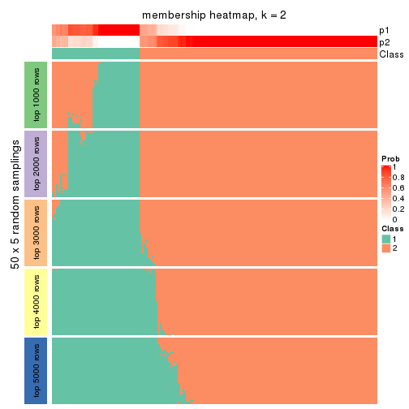
membership_heatmap(res, k = 3)
membership_heatmap(res, k = 4)
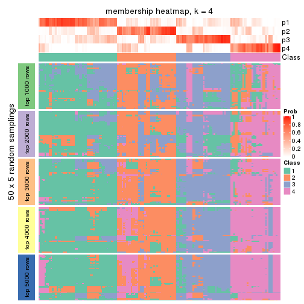
membership_heatmap(res, k = 5)
membership_heatmap(res, k = 6)
As soon as we have had the classes for columns, we can look for signatures which are significantly different between classes which can be candidate marks for certain classes. Following are the heatmaps for signatures.
Signature heatmaps where rows are scaled:
get_signatures(res, k = 2)
get_signatures(res, k = 3)
get_signatures(res, k = 4)
get_signatures(res, k = 5)
get_signatures(res, k = 6)
Signature heatmaps where rows are not scaled:
get_signatures(res, k = 2, scale_rows = FALSE)
get_signatures(res, k = 3, scale_rows = FALSE)
get_signatures(res, k = 4, scale_rows = FALSE)
get_signatures(res, k = 5, scale_rows = FALSE)
get_signatures(res, k = 6, scale_rows = FALSE)
Compare the overlap of signatures from different k:
compare_signatures(res)
get_signature() returns a data frame invisibly. TO get the list of signatures, the function
call should be assigned to a variable explicitly. In following code, if plot argument is set
to FALSE, no heatmap is plotted while only the differential analysis is performed.
# code only for demonstration
tb = get_signature(res, k = ..., plot = FALSE)
An example of the output of tb is:
#> which_row fdr mean_1 mean_2 scaled_mean_1 scaled_mean_2 km
#> 1 38 0.042760348 8.373488 9.131774 -0.5533452 0.5164555 1
#> 2 40 0.018707592 7.106213 8.469186 -0.6173731 0.5762149 1
#> 3 55 0.019134737 10.221463 11.207825 -0.6159697 0.5749050 1
#> 4 59 0.006059896 5.921854 7.869574 -0.6899429 0.6439467 1
#> 5 60 0.018055526 8.928898 10.211722 -0.6204761 0.5791110 1
#> 6 98 0.009384629 15.714769 14.887706 0.6635654 -0.6193277 2
...
The columns in tb are:
which_row: row indices corresponding to the input matrix.fdr: FDR for the differential test. mean_x: The mean value in group x.scaled_mean_x: The mean value in group x after rows are scaled.km: Row groups if k-means clustering is applied to rows.UMAP plot which shows how samples are separated.
dimension_reduction(res, k = 2, method = "UMAP")
dimension_reduction(res, k = 3, method = "UMAP")
dimension_reduction(res, k = 4, method = "UMAP")
dimension_reduction(res, k = 5, method = "UMAP")
dimension_reduction(res, k = 6, method = "UMAP")
Following heatmap shows how subgroups are split when increasing k:
collect_classes(res)
If matrix rows can be associated to genes, consider to use GO_Enrichment(res,
...) to perform function enrichment for the signature genes.
sessionInfo()
#> R version 3.6.0 (2019-04-26)
#> Platform: x86_64-pc-linux-gnu (64-bit)
#> Running under: CentOS Linux 7 (Core)
#>
#> Matrix products: default
#> BLAS: /usr/lib64/libblas.so.3.4.2
#> LAPACK: /usr/lib64/liblapack.so.3.4.2
#>
#> locale:
#> [1] LC_CTYPE=en_GB.UTF-8 LC_NUMERIC=C LC_TIME=en_GB.UTF-8
#> [4] LC_COLLATE=en_GB.UTF-8 LC_MONETARY=en_GB.UTF-8 LC_MESSAGES=en_GB.UTF-8
#> [7] LC_PAPER=en_GB.UTF-8 LC_NAME=C LC_ADDRESS=C
#> [10] LC_TELEPHONE=C LC_MEASUREMENT=en_GB.UTF-8 LC_IDENTIFICATION=C
#>
#> attached base packages:
#> [1] grid parallel stats4 stats graphics grDevices utils datasets methods
#> [10] base
#>
#> other attached packages:
#> [1] genefilter_1.66.0 ComplexHeatmap_2.1.1 markdown_1.1
#> [4] knitr_1.26 cola_1.3.2 SummarizedExperiment_1.14.1
#> [7] DelayedArray_0.10.0 BiocParallel_1.18.1 matrixStats_0.55.0
#> [10] Biobase_2.44.0 GenomicRanges_1.36.1 GenomeInfoDb_1.20.0
#> [13] IRanges_2.18.3 S4Vectors_0.22.1 BiocGenerics_0.30.0
#> [16] GetoptLong_0.1.7
#>
#> loaded via a namespace (and not attached):
#> [1] bitops_1.0-6 bit64_0.9-7 doParallel_1.0.15 RColorBrewer_1.1-2
#> [5] httr_1.4.1 backports_1.1.5 tools_3.6.0 R6_2.4.1
#> [9] DBI_1.0.0 lazyeval_0.2.2 colorspace_1.4-1 withr_2.1.2
#> [13] tidyselect_0.2.5 gridExtra_2.3 bit_1.1-14 compiler_3.6.0
#> [17] xml2_1.2.2 microbenchmark_1.4-7 pkgmaker_0.28 slam_0.1-46
#> [21] scales_1.1.0 NMF_0.23.6 stringr_1.4.0 digest_0.6.23
#> [25] XVector_0.24.0 pkgconfig_2.0.3 bibtex_0.4.2 highr_0.8
#> [29] rlang_0.4.2 GlobalOptions_0.1.1 RSQLite_2.1.2 impute_1.58.0
#> [33] shape_1.4.4 mclust_5.4.5 dendextend_1.12.0 dplyr_0.8.3
#> [37] RCurl_1.95-4.12 magrittr_1.5 GenomeInfoDbData_1.2.1 Matrix_1.2-17
#> [41] Rcpp_1.0.3 munsell_0.5.0 viridis_0.5.1 lifecycle_0.1.0
#> [45] stringi_1.4.3 zlibbioc_1.30.0 plyr_1.8.4 blob_1.2.0
#> [49] crayon_1.3.4 lattice_0.20-38 splines_3.6.0 annotate_1.62.0
#> [53] circlize_0.4.9 zeallot_0.1.0 pillar_1.4.2 rjson_0.2.20
#> [57] rngtools_1.4 reshape2_1.4.3 codetools_0.2-16 XML_3.98-1.20
#> [61] glue_1.3.1 evaluate_0.14 vctrs_0.2.0 png_0.1-7
#> [65] foreach_1.4.7 polyclip_1.10-0 gtable_0.3.0 purrr_0.3.3
#> [69] clue_0.3-57 assertthat_0.2.1 ggplot2_3.2.1 xfun_0.11
#> [73] gridBase_0.4-7 eulerr_6.0.0 xtable_1.8-4 skmeans_0.2-11
#> [77] survival_2.44-1.1 viridisLite_0.3.0 tibble_2.1.3 iterators_1.0.12
#> [81] memoise_1.1.0 AnnotationDbi_1.46.1 registry_0.5-1 GTF_0.0.1
#> [85] cluster_2.1.0 brew_1.0-6